gpt-image-2.5-flare, quality high, texts: modern, updated 10/2/2026, 12:17:07 PM
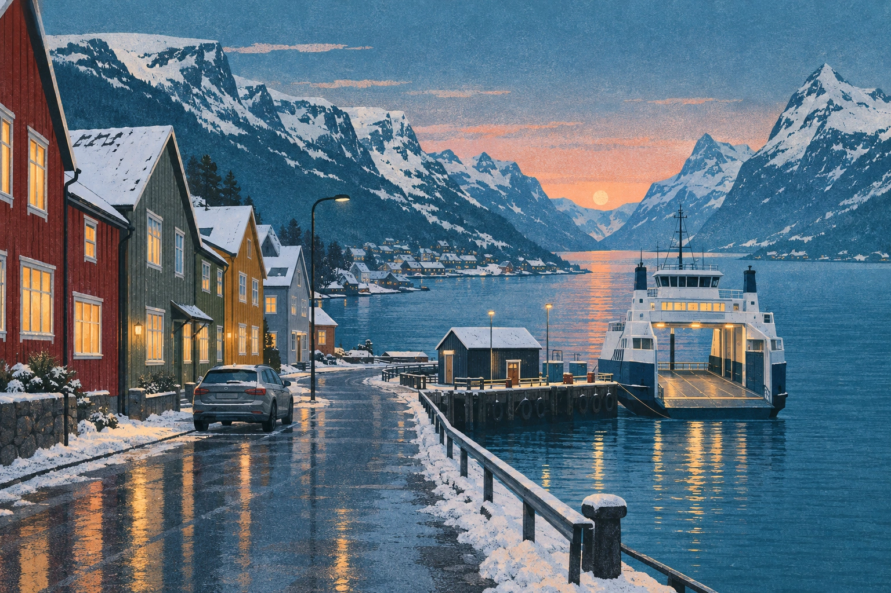
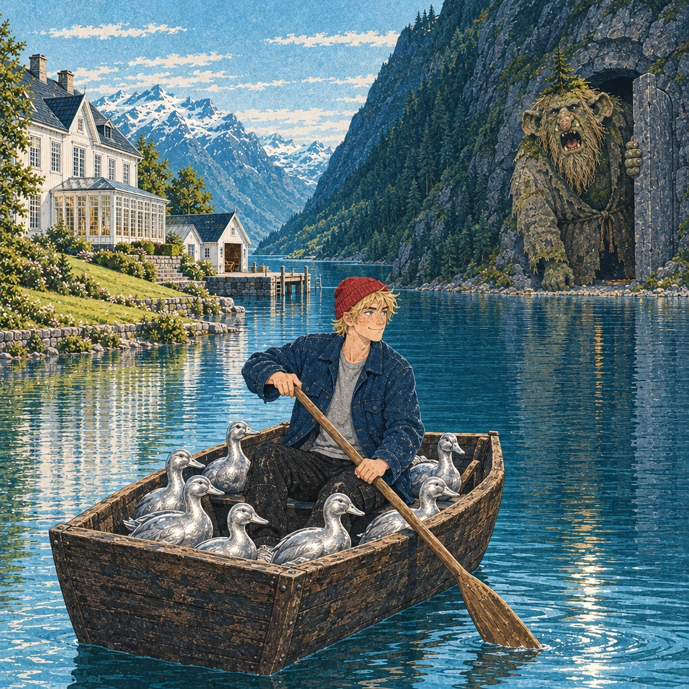
Askeladden padler over fjorden med de sju sølvendene.
Alt: Askeladden padler et stort, gammelt knadetrau over en blank fjord med sju sølvender rundt seg. Bak ham står en steindør i fjellet på gløtt, og trollet lener seg ut og brøler.
Askeladden paddles his big old wooden kneading trough across the glassy fjord in the pale morning, the seven silver ducks crowded into the trough around him. Behind him, the stone door in the Dark Mountain stands ajar, and the Troll leans out of it, bellowing.
Reference images: - Image 1: model sheet for Askeladden, the same character seen from three sides. Keep Askeladden's face, hair, body shape, age, colours and clothes exactly as shown. Draw Askeladden only once, in the pose this picture needs, and ignore the sheet's layout and plain background. - Image 2: model sheet for the Troll, the same character seen from three sides. Keep the Troll's face, hair, body shape, age, colours and clothes exactly as shown. Draw the Troll only once, in the pose this picture needs, and ignore the sheet's layout and plain background. - Image 3: setting reference for the Dark Mountain. Keep its landforms, buildings, colours and key details, and choose the viewpoint and framing this picture needs. Create the cover illustration for an illustrated book of modern fairy tales, in a square format. Do not write a title or any other text on it. Picture: Askeladden paddles his big old wooden kneading trough across the glassy fjord in the pale morning, the seven silver ducks crowded into the trough around him. Behind him, the stone door in the Dark Mountain stands ajar, and the Troll leans out of it, bellowing. Characters in this picture (nobody else, unless the picture description mentions them): - Askeladden: A lanky young man of about nineteen with messy straw-blond hair, sharp blue-grey eyes, a narrow freckled face and a calm, crooked smile. He wears a faded red knitted beanie, a navy work jacket over a grey T-shirt, black work trousers and scuffed white trainers. - the Troll: An enormous, ancient fjord troll three times as tall as a man, with grey-green skin like weathered rock patched with moss and lichen, a long knobbly nose, tiny black eyes under bushy brows, a wide mouth with two stubby teeth, huge ears, a beard like dry grass and a small spruce growing from the top of his head. He wears a huge, ragged, faded canvas work coat tied with rope, and goes barefoot on enormous flat feet. Setting: - the Dark Mountain: A dark, steep mountain rising straight out of the far side of a narrow fjord, its lower slopes covered in black spruce, with a narrow pebble beach at its foot and a heavy, door-shaped slab of stone set into the rock face just above the waterline. Story world: Present-day western Norway. The royal estate is a big, old white wooden manor with a glassed-in terrace, a lawn running down to a private quay, a boathouse and staff buildings, on one side of a narrow fjord. Straight across the fjord rises the Dark Mountain, where the troll lives behind a heavy stone door that grinds open in the rock. The seven silver ducks are real ducks of solid, gleaming silver, like small sculptures. The kneading trough is a big, old, dark wooden trough almost as long as a rowing boat; Askeladden paddles it with a worn wooden oar from the boathouse. The bedspread is a heavy quilt of alternating silver and gold squares. The golden harp is a small golden lap harp. Inside the mountain, ancient cave meets forgotten basement: raw concrete, metal shelving, old weights and a stone feasting hall. This story's season, light and colours: Early summer on a western fjord: pale, cool mornings, glassy blue-green water, bright silver glints and white midsummer nights. Inside the mountain: flat fluorescent light on grey concrete, and warm lamp light in the stone hall. Art style: Contemporary Scandinavian editorial illustration: flat, graphic shapes with subtle risograph grain and a little hand-drawn texture, clean confident lines and a limited palette of spot inks led by deep petrol blue, with fjord teal, lingonberry red, honey mustard, sage green, warm paper off-white and ink charcoal, like the pages of a risograph-printed book, shifted towards each story's own season, light and colours, in the cool, clear Nordic light of today. Present-day Norway: fjord towns, suburbs, farms with tractors, cabins, ferries, roadside petrol stations, offices and flats, grey rain and bright snow, with people in modern clothes such as rain jackets, knitted sweaters, hoodies, suits and work wear. The magic of the tale appears plainly in this everyday world: trolls, talking animals and enchantments look real and slightly absurd, drawn in the same flat style. Every character has their own face, build, age, hair and clothes exactly as described, so no two characters look alike. Dry humour, careful composition with one focal point and plenty of negative space. The picture fills the whole image, with no border, frame or lettering. Not photorealistic, not 3D, not anime, no glossy digital look. Rules: - No text of any kind: no letters, words, numbers, signatures, captions, speech bubbles, logos, signs or readable screens. Phones and screens show only light or simple shapes. - Every named character must match their model sheet and description exactly: the same face, hair, colours, clothes and proportions. - Suitable for readers of all ages: no blood, wounds or gore, and no killing shown. Show danger and cruelty through atmosphere, posture and suspense, never through injury. - Draw each named character only once. - Show exactly the number of people, animals and things the description asks for, and no extra people. - One clear moment that reads at a glance, as a single full-bleed picture with no border, frame or comic panels.
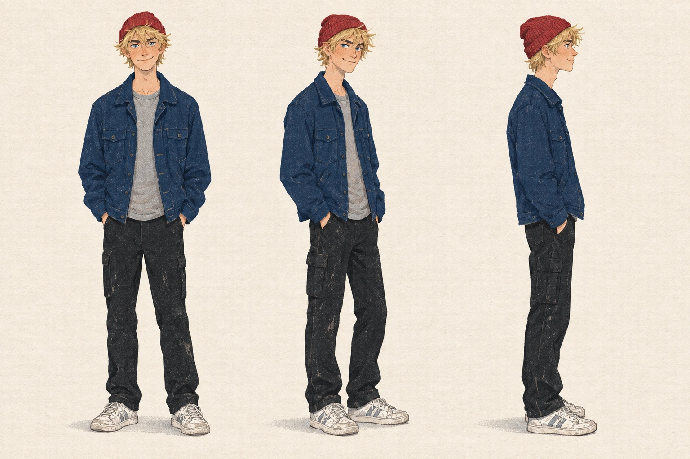
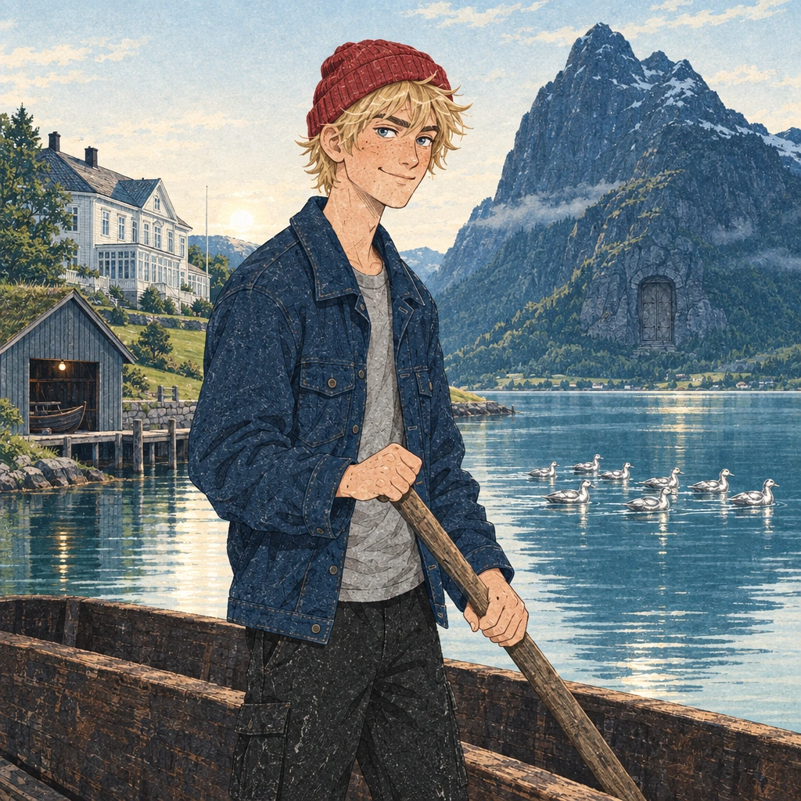
Den yngste broren, en rolig og hardtarbeidende kjøkkenhjelp som bærer et gammelt knadetrau og vinner med kløkt framfor styrke.
A lanky young man of about nineteen with messy straw-blond hair, sharp blue-grey eyes, a narrow freckled face and a calm, crooked smile. He wears a faded red knitted beanie, a navy work jacket over a grey T-shirt, black work trousers and scuffed white trainers.
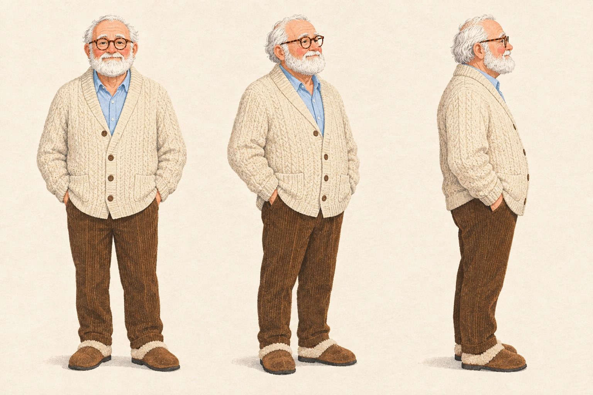
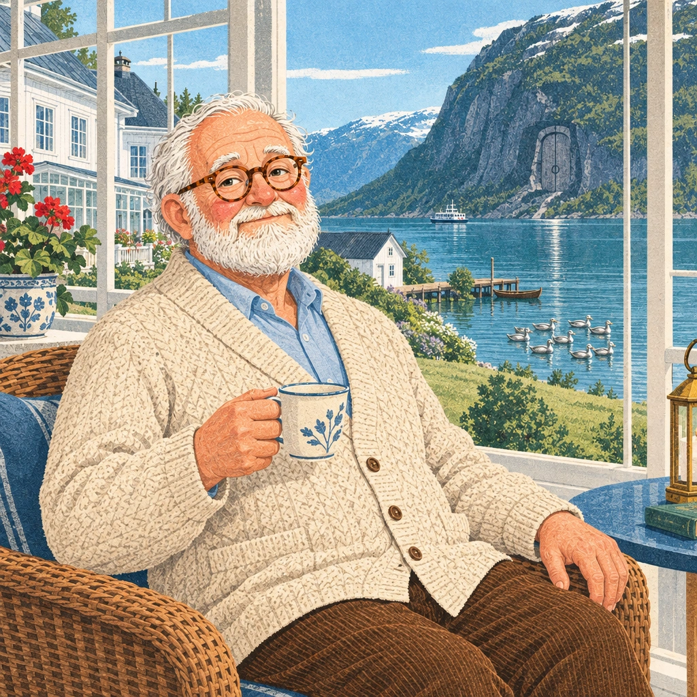
En jordnær, kravstor konge som fortsatt bruker kongsgården når han ikke er i hovedstaden, og som lokkes av trollets skatter.
A stout, elderly king with a neat white beard, round tortoiseshell glasses, rosy cheeks and thinning white hair, a man used to getting his way. At home he wears a thick cream cardigan over a pale-blue shirt, brown corduroy trousers and sheepskin slippers.
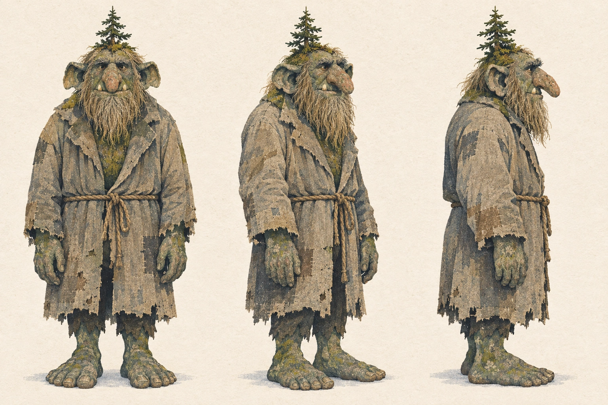
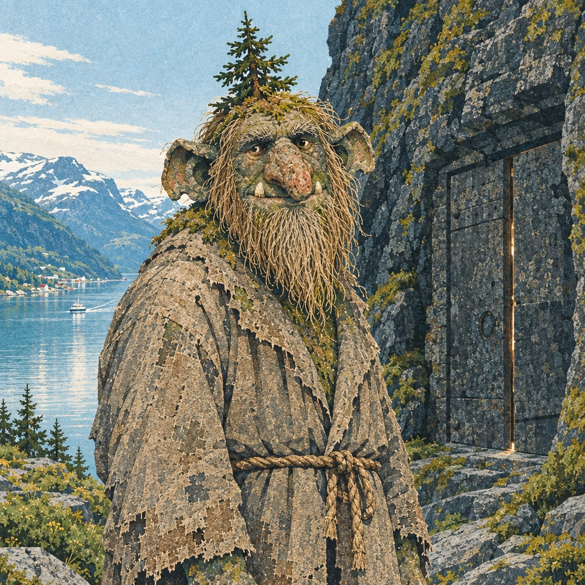
Et gammelt fjordtroll som bor i et mørkt fjell og vokter sølvender, et rutete sengeteppe av sølv og gull, og en gullharpe med humørmagi.
An enormous, ancient fjord troll three times as tall as a man, with grey-green skin like weathered rock patched with moss and lichen, a long knobbly nose, tiny black eyes under bushy brows, a wide mouth with two stubby teeth, huge ears, a beard like dry grass and a small spruce growing from the top of his head. He wears a huge, ragged, faded canvas work coat tied with rope, and goes barefoot on enormous flat feet.
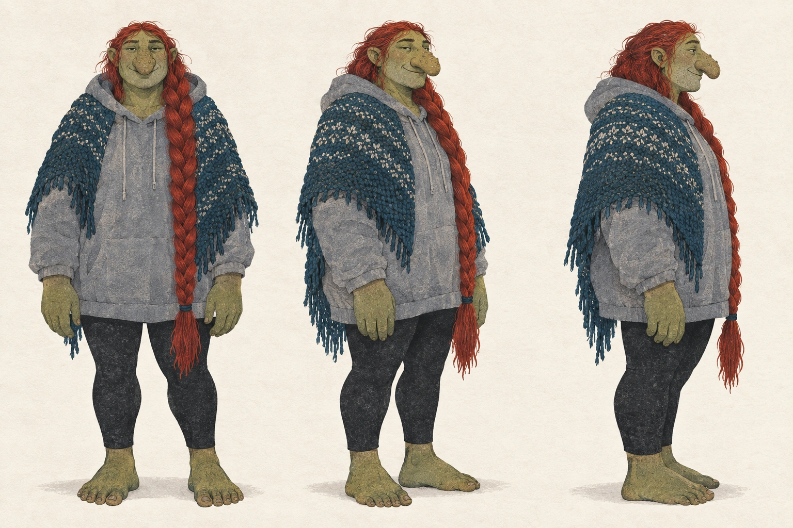
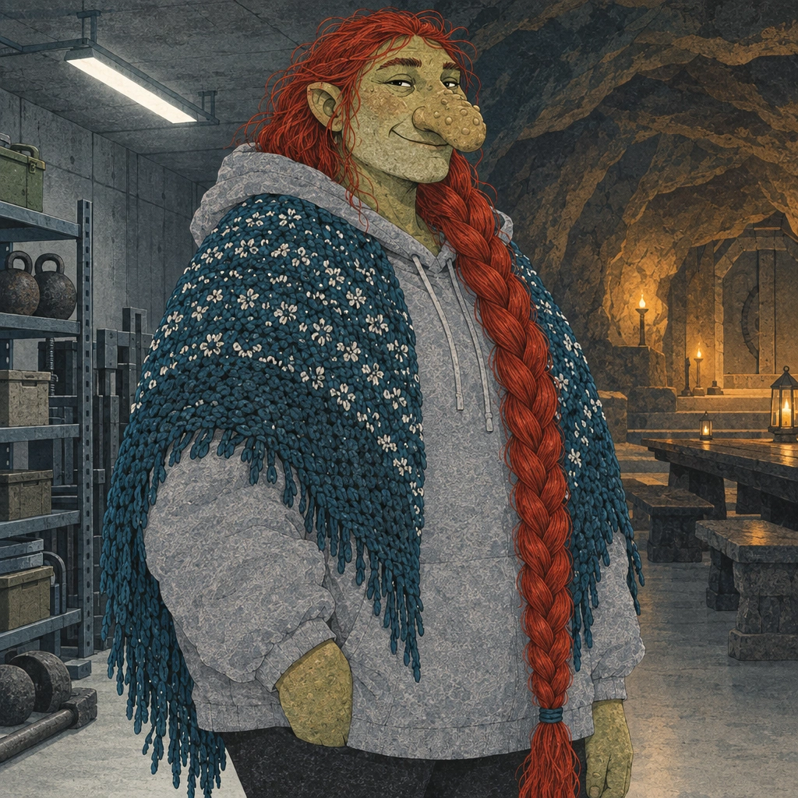
Trollets datter som holder Askeladden fanget, tester om han er 'feit nok', og lar seg lure av hans rolige manipulasjon.
A huge troll woman, about three times as tall as a man, with a broad moss-green face, a long bumpy nose, small squinting eyes, heavy arms and one enormous, heavy red braid that reaches her knees. She wears an enormous faded grey hoodie, black leggings and a big knitted shawl, and goes barefoot.
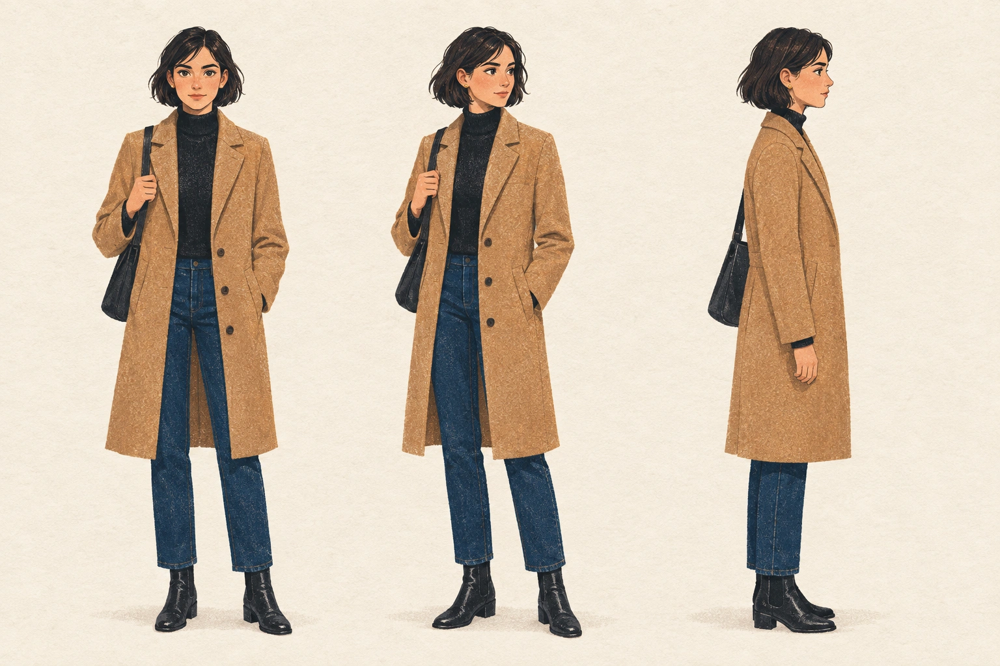
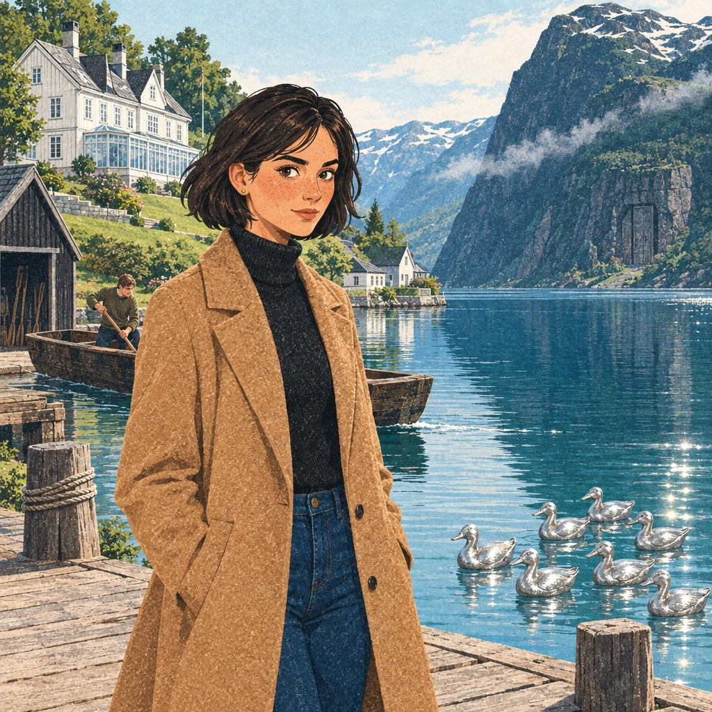
Kongens datter, en moderne prinsesse som blir lovet bort som belønning når Askeladden henter gullharpa.
A young woman in her early twenties with a sharp, curious face, dark hair in a short bob, brown eyes and a small gold stud in one ear. She wears a camel wool coat over a black turtleneck, dark jeans and ankle boots.
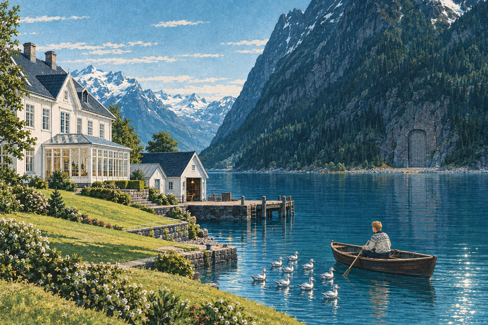
A dark, steep mountain rising straight out of the far side of a narrow fjord, its lower slopes covered in black spruce, with a narrow pebble beach at its foot and a heavy, door-shaped slab of stone set into the rock face just above the waterline.
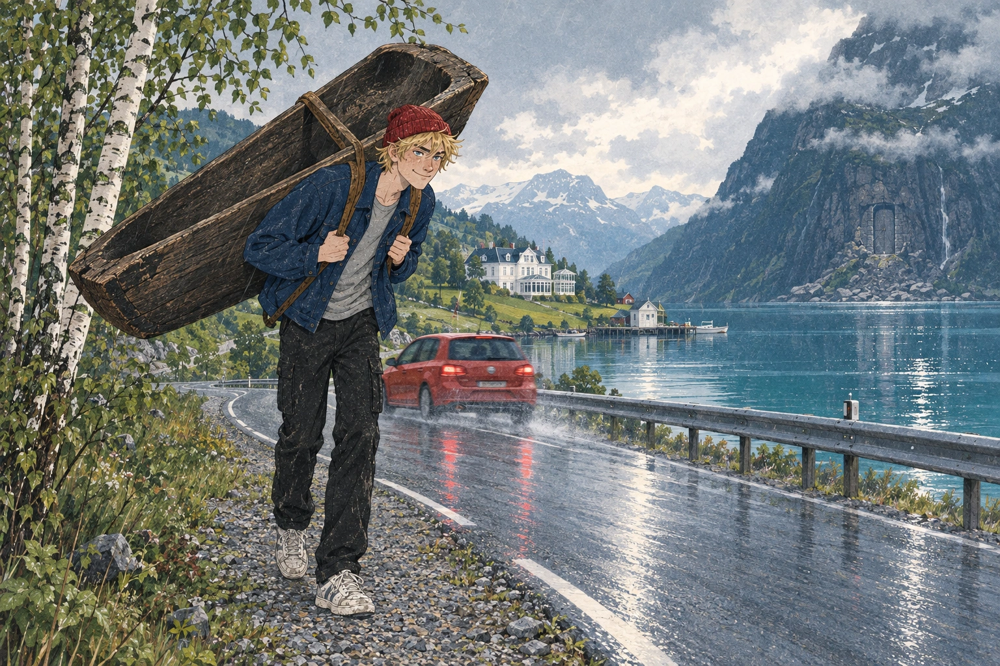
Han tok med seg knadetrauet. Brødrene hadde kalt det skrot og ment at det hørte hjemme på dynga. Det syntes ikke Askeladden. Han bar det på ryggen hele veien, krumbøyd under vekten.
Han bar knadetrauet på ryggen hele veien.
Alt: Askeladden går langs en fjordvei, krumbøyd under et stort, gammelt knadetrau av tre. En liten rød bil kjører forbi på den våte asfalten.
On the gravel shoulder of a winding fjord road, Askeladden walks bent almost double under a big, dark old wooden kneading trough strapped to his back. A small red car swishes past him on the wet asphalt. Birch trees, a guard rail and the fjord below; a grey, drizzly day.
Reference images: - Image 1: model sheet for Askeladden, the same character seen from three sides. Keep Askeladden's face, hair, body shape, age, colours and clothes exactly as shown. Draw Askeladden only once, in the pose this picture needs, and ignore the sheet's layout and plain background. Create one new illustration for an illustrated book of modern fairy tales, showing the moment described below. Picture: On the gravel shoulder of a winding fjord road, Askeladden walks bent almost double under a big, dark old wooden kneading trough strapped to his back. A small red car swishes past him on the wet asphalt. Birch trees, a guard rail and the fjord below; a grey, drizzly day. Characters in this picture (nobody else, unless the picture description mentions them): - Askeladden: A lanky young man of about nineteen with messy straw-blond hair, sharp blue-grey eyes, a narrow freckled face and a calm, crooked smile. He wears a faded red knitted beanie, a navy work jacket over a grey T-shirt, black work trousers and scuffed white trainers. Story world: Present-day western Norway. The royal estate is a big, old white wooden manor with a glassed-in terrace, a lawn running down to a private quay, a boathouse and staff buildings, on one side of a narrow fjord. Straight across the fjord rises the Dark Mountain, where the troll lives behind a heavy stone door that grinds open in the rock. The seven silver ducks are real ducks of solid, gleaming silver, like small sculptures. The kneading trough is a big, old, dark wooden trough almost as long as a rowing boat; Askeladden paddles it with a worn wooden oar from the boathouse. The bedspread is a heavy quilt of alternating silver and gold squares. The golden harp is a small golden lap harp. Inside the mountain, ancient cave meets forgotten basement: raw concrete, metal shelving, old weights and a stone feasting hall. This story's season, light and colours: Early summer on a western fjord: pale, cool mornings, glassy blue-green water, bright silver glints and white midsummer nights. Inside the mountain: flat fluorescent light on grey concrete, and warm lamp light in the stone hall. Art style: Contemporary Scandinavian editorial illustration: flat, graphic shapes with subtle risograph grain and a little hand-drawn texture, clean confident lines and a limited palette of spot inks led by deep petrol blue, with fjord teal, lingonberry red, honey mustard, sage green, warm paper off-white and ink charcoal, like the pages of a risograph-printed book, shifted towards each story's own season, light and colours, in the cool, clear Nordic light of today. Present-day Norway: fjord towns, suburbs, farms with tractors, cabins, ferries, roadside petrol stations, offices and flats, grey rain and bright snow, with people in modern clothes such as rain jackets, knitted sweaters, hoodies, suits and work wear. The magic of the tale appears plainly in this everyday world: trolls, talking animals and enchantments look real and slightly absurd, drawn in the same flat style. Every character has their own face, build, age, hair and clothes exactly as described, so no two characters look alike. Dry humour, careful composition with one focal point and plenty of negative space. The picture fills the whole image, with no border, frame or lettering. Not photorealistic, not 3D, not anime, no glossy digital look. Rules: - No text of any kind: no letters, words, numbers, signatures, captions, speech bubbles, logos, signs or readable screens. Phones and screens show only light or simple shapes. - Every named character must match their model sheet and description exactly: the same face, hair, colours, clothes and proportions. - Suitable for readers of all ages: no blood, wounds or gore, and no killing shown. Show danger and cruelty through atmosphere, posture and suspense, never through injury. - Draw each named character only once. - Show exactly the number of people, animals and things the description asks for, and no extra people. - One clear moment that reads at a glance, as a single full-bleed picture with no border, frame or comic panels.
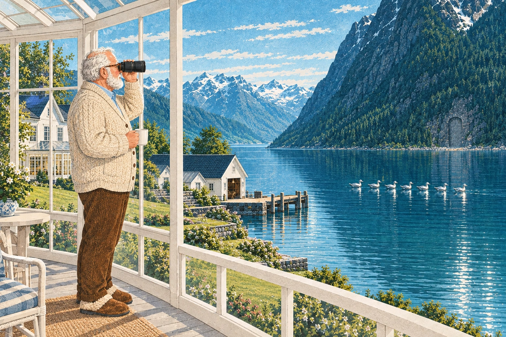
Kongen sto på terrassen hver morgen med kaffen og kikkerten og så på dem.
Kongen sto på terrassen hver morgen med kaffen og kikkerten.
Alt: Kongen står på terrassen i tøfler med en kaffekopp og kikker ut over fjorden. Langt der ute ligger sju blanke sølvender foran et mørkt fjell.
On the glassed-in terrace of the royal estate early in the morning, the King stands in his slippers with a coffee mug in one hand and a pair of binoculars raised to his eyes, looking out across the fjord. Far away on the water in front of the Dark Mountain, seven silver ducks gleam in a row.
Reference images: - Image 1: model sheet for the King, the same character seen from three sides. Keep the King's face, hair, body shape, age, colours and clothes exactly as shown. Draw the King only once, in the pose this picture needs, and ignore the sheet's layout and plain background. - Image 2: setting reference for the Dark Mountain. Keep its landforms, buildings, colours and key details, and choose the viewpoint and framing this picture needs. Create one new illustration for an illustrated book of modern fairy tales, showing the moment described below. Picture: On the glassed-in terrace of the royal estate early in the morning, the King stands in his slippers with a coffee mug in one hand and a pair of binoculars raised to his eyes, looking out across the fjord. Far away on the water in front of the Dark Mountain, seven silver ducks gleam in a row. Characters in this picture (nobody else, unless the picture description mentions them): - the King: A stout, elderly king with a neat white beard, round tortoiseshell glasses, rosy cheeks and thinning white hair, a man used to getting his way. At home he wears a thick cream cardigan over a pale-blue shirt, brown corduroy trousers and sheepskin slippers. Setting: - the Dark Mountain: A dark, steep mountain rising straight out of the far side of a narrow fjord, its lower slopes covered in black spruce, with a narrow pebble beach at its foot and a heavy, door-shaped slab of stone set into the rock face just above the waterline. Story world: Present-day western Norway. The royal estate is a big, old white wooden manor with a glassed-in terrace, a lawn running down to a private quay, a boathouse and staff buildings, on one side of a narrow fjord. Straight across the fjord rises the Dark Mountain, where the troll lives behind a heavy stone door that grinds open in the rock. The seven silver ducks are real ducks of solid, gleaming silver, like small sculptures. The kneading trough is a big, old, dark wooden trough almost as long as a rowing boat; Askeladden paddles it with a worn wooden oar from the boathouse. The bedspread is a heavy quilt of alternating silver and gold squares. The golden harp is a small golden lap harp. Inside the mountain, ancient cave meets forgotten basement: raw concrete, metal shelving, old weights and a stone feasting hall. This story's season, light and colours: Early summer on a western fjord: pale, cool mornings, glassy blue-green water, bright silver glints and white midsummer nights. Inside the mountain: flat fluorescent light on grey concrete, and warm lamp light in the stone hall. Art style: Contemporary Scandinavian editorial illustration: flat, graphic shapes with subtle risograph grain and a little hand-drawn texture, clean confident lines and a limited palette of spot inks led by deep petrol blue, with fjord teal, lingonberry red, honey mustard, sage green, warm paper off-white and ink charcoal, like the pages of a risograph-printed book, shifted towards each story's own season, light and colours, in the cool, clear Nordic light of today. Present-day Norway: fjord towns, suburbs, farms with tractors, cabins, ferries, roadside petrol stations, offices and flats, grey rain and bright snow, with people in modern clothes such as rain jackets, knitted sweaters, hoodies, suits and work wear. The magic of the tale appears plainly in this everyday world: trolls, talking animals and enchantments look real and slightly absurd, drawn in the same flat style. Every character has their own face, build, age, hair and clothes exactly as described, so no two characters look alike. Dry humour, careful composition with one focal point and plenty of negative space. The picture fills the whole image, with no border, frame or lettering. Not photorealistic, not 3D, not anime, no glossy digital look. Rules: - No text of any kind: no letters, words, numbers, signatures, captions, speech bubbles, logos, signs or readable screens. Phones and screens show only light or simple shapes. - Every named character must match their model sheet and description exactly: the same face, hair, colours, clothes and proportions. - Suitable for readers of all ages: no blood, wounds or gore, and no killing shown. Show danger and cruelty through atmosphere, posture and suspense, never through injury. - Draw each named character only once. - Show exactly the number of people, animals and things the description asks for, and no extra people. - One clear moment that reads at a glance, as a single full-bleed picture with no border, frame or comic panels.
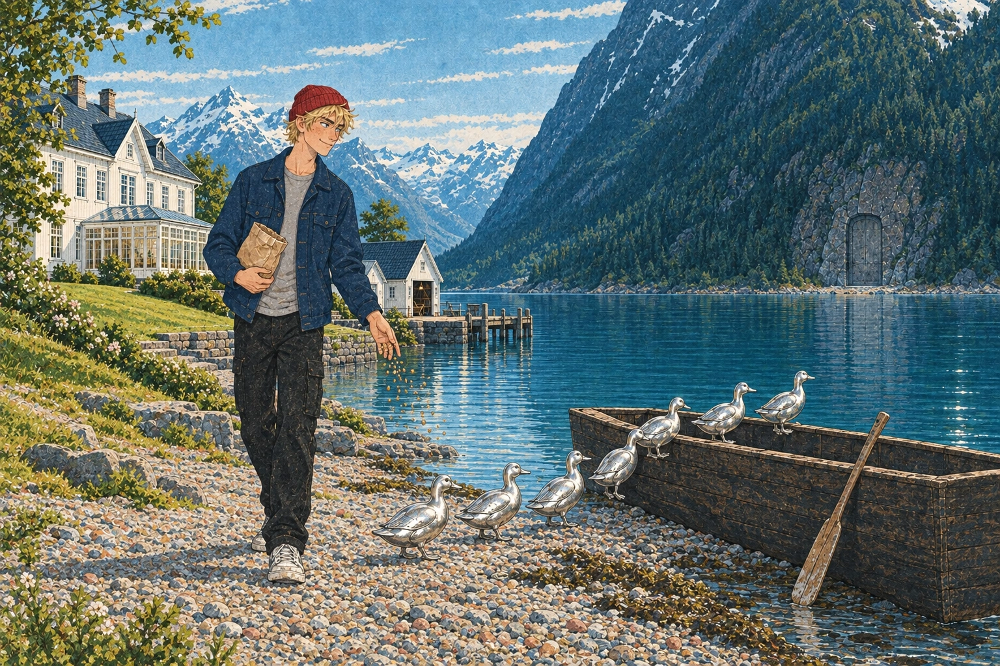
På den andre siden gikk han langs stranden og strødde korn, litt her og litt der, som en pensjonist i en park. Endene nølte. Så kom de nærmere. Så helt inntil. Og til slutt vagget de opp i trauet, én etter én, og begynte å spise. Askeladden skjøv fra land og padlet for livet.
Til slutt vagget endene opp i trauet, én etter én.
Alt: Askeladden går langs stranden under fjellet og strør korn fra en papirpose. Sju sølvender vagger etter hverandre opp i det store tretrauet.
On the pebble beach at the foot of the Dark Mountain, Askeladden strolls along scattering grain from a paper sack like a pensioner feeding pigeons in a park, while the seven silver ducks waddle one after another up into the big wooden trough beached behind him. A worn oar leans against it.
Reference images: - Image 1: model sheet for Askeladden, the same character seen from three sides. Keep Askeladden's face, hair, body shape, age, colours and clothes exactly as shown. Draw Askeladden only once, in the pose this picture needs, and ignore the sheet's layout and plain background. - Image 2: setting reference for the Dark Mountain. Keep its landforms, buildings, colours and key details, and choose the viewpoint and framing this picture needs. Create one new illustration for an illustrated book of modern fairy tales, showing the moment described below. Picture: On the pebble beach at the foot of the Dark Mountain, Askeladden strolls along scattering grain from a paper sack like a pensioner feeding pigeons in a park, while the seven silver ducks waddle one after another up into the big wooden trough beached behind him. A worn oar leans against it. Characters in this picture (nobody else, unless the picture description mentions them): - Askeladden: A lanky young man of about nineteen with messy straw-blond hair, sharp blue-grey eyes, a narrow freckled face and a calm, crooked smile. He wears a faded red knitted beanie, a navy work jacket over a grey T-shirt, black work trousers and scuffed white trainers. Setting: - the Dark Mountain: A dark, steep mountain rising straight out of the far side of a narrow fjord, its lower slopes covered in black spruce, with a narrow pebble beach at its foot and a heavy, door-shaped slab of stone set into the rock face just above the waterline. Story world: Present-day western Norway. The royal estate is a big, old white wooden manor with a glassed-in terrace, a lawn running down to a private quay, a boathouse and staff buildings, on one side of a narrow fjord. Straight across the fjord rises the Dark Mountain, where the troll lives behind a heavy stone door that grinds open in the rock. The seven silver ducks are real ducks of solid, gleaming silver, like small sculptures. The kneading trough is a big, old, dark wooden trough almost as long as a rowing boat; Askeladden paddles it with a worn wooden oar from the boathouse. The bedspread is a heavy quilt of alternating silver and gold squares. The golden harp is a small golden lap harp. Inside the mountain, ancient cave meets forgotten basement: raw concrete, metal shelving, old weights and a stone feasting hall. This story's season, light and colours: Early summer on a western fjord: pale, cool mornings, glassy blue-green water, bright silver glints and white midsummer nights. Inside the mountain: flat fluorescent light on grey concrete, and warm lamp light in the stone hall. Art style: Contemporary Scandinavian editorial illustration: flat, graphic shapes with subtle risograph grain and a little hand-drawn texture, clean confident lines and a limited palette of spot inks led by deep petrol blue, with fjord teal, lingonberry red, honey mustard, sage green, warm paper off-white and ink charcoal, like the pages of a risograph-printed book, shifted towards each story's own season, light and colours, in the cool, clear Nordic light of today. Present-day Norway: fjord towns, suburbs, farms with tractors, cabins, ferries, roadside petrol stations, offices and flats, grey rain and bright snow, with people in modern clothes such as rain jackets, knitted sweaters, hoodies, suits and work wear. The magic of the tale appears plainly in this everyday world: trolls, talking animals and enchantments look real and slightly absurd, drawn in the same flat style. Every character has their own face, build, age, hair and clothes exactly as described, so no two characters look alike. Dry humour, careful composition with one focal point and plenty of negative space. The picture fills the whole image, with no border, frame or lettering. Not photorealistic, not 3D, not anime, no glossy digital look. Rules: - No text of any kind: no letters, words, numbers, signatures, captions, speech bubbles, logos, signs or readable screens. Phones and screens show only light or simple shapes. - Every named character must match their model sheet and description exactly: the same face, hair, colours, clothes and proportions. - Suitable for readers of all ages: no blood, wounds or gore, and no killing shown. Show danger and cruelty through atmosphere, posture and suspense, never through injury. - Draw each named character only once. - Show exactly the number of people, animals and things the description asks for, and no extra people. - One clear moment that reads at a glance, as a single full-bleed picture with no border, frame or comic panels.
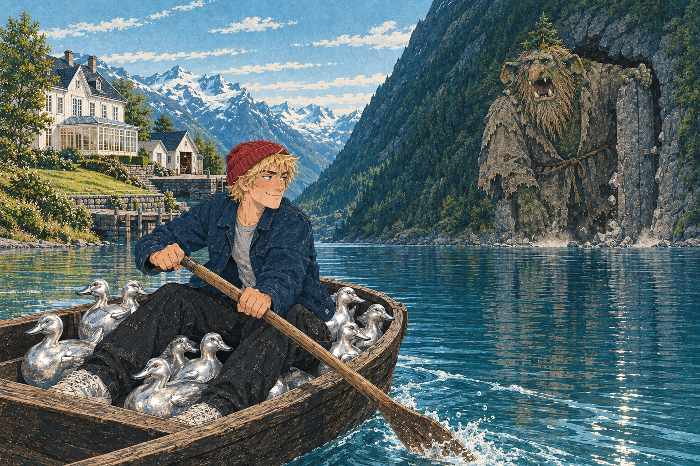
Midt ute på fjorden åpnet det seg en sprekk i fjellet, og trollet kom ut.
«Har du stukket av med de sju sølvendene mine, du?»
Alt: Askeladden padler trauet med sølvendene over fjorden. Bak ham står steindøra i fjellet åpen, og trollet lener seg ut og brøler.
Mid-fjord, Askeladden paddles the wooden trough flat out with a worn oar, the seven silver ducks packed around him. Behind him the stone door in the Dark Mountain has ground open, and the Troll leans out bellowing, his voice echoing between the mountainsides. Askeladden glances back, unimpressed.
Reference images: - Image 1: model sheet for Askeladden, the same character seen from three sides. Keep Askeladden's face, hair, body shape, age, colours and clothes exactly as shown. Draw Askeladden only once, in the pose this picture needs, and ignore the sheet's layout and plain background. - Image 2: model sheet for the Troll, the same character seen from three sides. Keep the Troll's face, hair, body shape, age, colours and clothes exactly as shown. Draw the Troll only once, in the pose this picture needs, and ignore the sheet's layout and plain background. - Image 3: setting reference for the Dark Mountain. Keep its landforms, buildings, colours and key details, and choose the viewpoint and framing this picture needs. Create one new illustration for an illustrated book of modern fairy tales, showing the moment described below. Picture: Mid-fjord, Askeladden paddles the wooden trough flat out with a worn oar, the seven silver ducks packed around him. Behind him the stone door in the Dark Mountain has ground open, and the Troll leans out bellowing, his voice echoing between the mountainsides. Askeladden glances back, unimpressed. Characters in this picture (nobody else, unless the picture description mentions them): - Askeladden: A lanky young man of about nineteen with messy straw-blond hair, sharp blue-grey eyes, a narrow freckled face and a calm, crooked smile. He wears a faded red knitted beanie, a navy work jacket over a grey T-shirt, black work trousers and scuffed white trainers. - the Troll: An enormous, ancient fjord troll three times as tall as a man, with grey-green skin like weathered rock patched with moss and lichen, a long knobbly nose, tiny black eyes under bushy brows, a wide mouth with two stubby teeth, huge ears, a beard like dry grass and a small spruce growing from the top of his head. He wears a huge, ragged, faded canvas work coat tied with rope, and goes barefoot on enormous flat feet. Setting: - the Dark Mountain: A dark, steep mountain rising straight out of the far side of a narrow fjord, its lower slopes covered in black spruce, with a narrow pebble beach at its foot and a heavy, door-shaped slab of stone set into the rock face just above the waterline. Story world: Present-day western Norway. The royal estate is a big, old white wooden manor with a glassed-in terrace, a lawn running down to a private quay, a boathouse and staff buildings, on one side of a narrow fjord. Straight across the fjord rises the Dark Mountain, where the troll lives behind a heavy stone door that grinds open in the rock. The seven silver ducks are real ducks of solid, gleaming silver, like small sculptures. The kneading trough is a big, old, dark wooden trough almost as long as a rowing boat; Askeladden paddles it with a worn wooden oar from the boathouse. The bedspread is a heavy quilt of alternating silver and gold squares. The golden harp is a small golden lap harp. Inside the mountain, ancient cave meets forgotten basement: raw concrete, metal shelving, old weights and a stone feasting hall. This story's season, light and colours: Early summer on a western fjord: pale, cool mornings, glassy blue-green water, bright silver glints and white midsummer nights. Inside the mountain: flat fluorescent light on grey concrete, and warm lamp light in the stone hall. Art style: Contemporary Scandinavian editorial illustration: flat, graphic shapes with subtle risograph grain and a little hand-drawn texture, clean confident lines and a limited palette of spot inks led by deep petrol blue, with fjord teal, lingonberry red, honey mustard, sage green, warm paper off-white and ink charcoal, like the pages of a risograph-printed book, shifted towards each story's own season, light and colours, in the cool, clear Nordic light of today. Present-day Norway: fjord towns, suburbs, farms with tractors, cabins, ferries, roadside petrol stations, offices and flats, grey rain and bright snow, with people in modern clothes such as rain jackets, knitted sweaters, hoodies, suits and work wear. The magic of the tale appears plainly in this everyday world: trolls, talking animals and enchantments look real and slightly absurd, drawn in the same flat style. Every character has their own face, build, age, hair and clothes exactly as described, so no two characters look alike. Dry humour, careful composition with one focal point and plenty of negative space. The picture fills the whole image, with no border, frame or lettering. Not photorealistic, not 3D, not anime, no glossy digital look. Rules: - No text of any kind: no letters, words, numbers, signatures, captions, speech bubbles, logos, signs or readable screens. Phones and screens show only light or simple shapes. - Every named character must match their model sheet and description exactly: the same face, hair, colours, clothes and proportions. - Suitable for readers of all ages: no blood, wounds or gore, and no killing shown. Show danger and cruelty through atmosphere, posture and suspense, never through injury. - Draw each named character only once. - Show exactly the number of people, animals and things the description asks for, and no extra people. - One clear moment that reads at a glance, as a single full-bleed picture with no border, frame or comic panels.
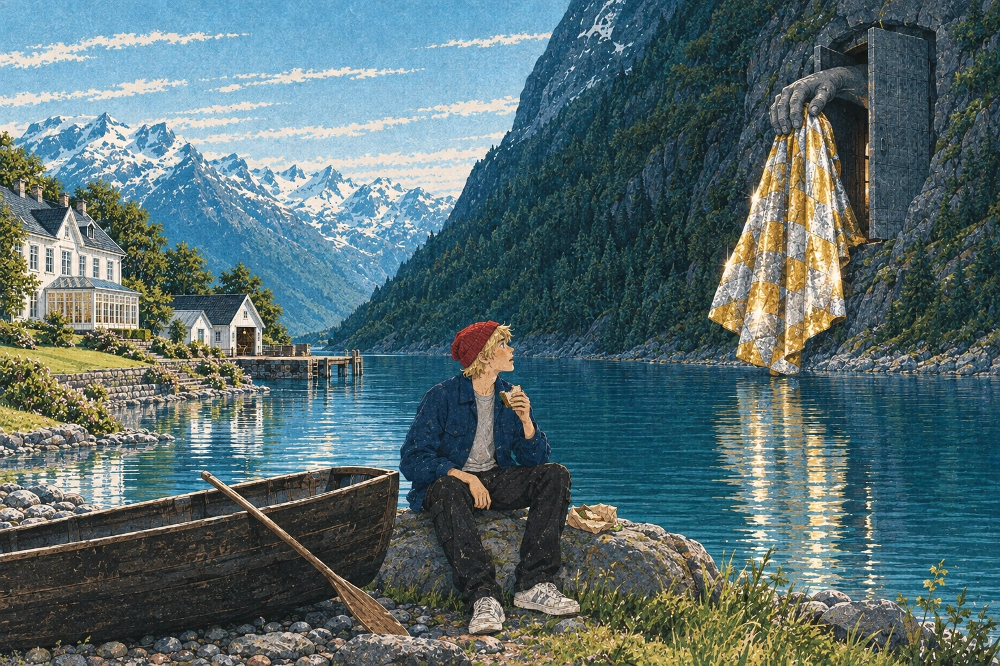
Til slutt skrapte det i stein, og en tung steindør gled på gløtt. En grå hånd, stor som et bildekk, hengte sengeteppet ut i sprekken til lufting. Det glitret i sølv og gull når vinden tok i det. Troll trengte visst også frisk luft i sengetøyet.
En grå hånd, stor som et bildekk, hengte sengeteppet ut til lufting.
Alt: Askeladden sitter med matpakka ved fjellfoten og ser opp. Fra en steindør som står på gløtt, henger en diger grå hånd ut et glitrende sengeteppe med sølv- og gullruter.
In the shadow at the foot of the Dark Mountain, Askeladden sits on a rock beside his beached trough with a half-eaten packed lunch, frozen mid-bite and staring up. The heavy stone door above has slid ajar, and a grey hand as big as a car tyre is hanging a glittering quilt of silver and gold squares out to air.
Reference images: - Image 1: model sheet for Askeladden, the same character seen from three sides. Keep Askeladden's face, hair, body shape, age, colours and clothes exactly as shown. Draw Askeladden only once, in the pose this picture needs, and ignore the sheet's layout and plain background. - Image 2: setting reference for the Dark Mountain. Keep its landforms, buildings, colours and key details, and choose the viewpoint and framing this picture needs. Create one new illustration for an illustrated book of modern fairy tales, showing the moment described below. Picture: In the shadow at the foot of the Dark Mountain, Askeladden sits on a rock beside his beached trough with a half-eaten packed lunch, frozen mid-bite and staring up. The heavy stone door above has slid ajar, and a grey hand as big as a car tyre is hanging a glittering quilt of silver and gold squares out to air. Characters in this picture (nobody else, unless the picture description mentions them): - Askeladden: A lanky young man of about nineteen with messy straw-blond hair, sharp blue-grey eyes, a narrow freckled face and a calm, crooked smile. He wears a faded red knitted beanie, a navy work jacket over a grey T-shirt, black work trousers and scuffed white trainers. Setting: - the Dark Mountain: A dark, steep mountain rising straight out of the far side of a narrow fjord, its lower slopes covered in black spruce, with a narrow pebble beach at its foot and a heavy, door-shaped slab of stone set into the rock face just above the waterline. Story world: Present-day western Norway. The royal estate is a big, old white wooden manor with a glassed-in terrace, a lawn running down to a private quay, a boathouse and staff buildings, on one side of a narrow fjord. Straight across the fjord rises the Dark Mountain, where the troll lives behind a heavy stone door that grinds open in the rock. The seven silver ducks are real ducks of solid, gleaming silver, like small sculptures. The kneading trough is a big, old, dark wooden trough almost as long as a rowing boat; Askeladden paddles it with a worn wooden oar from the boathouse. The bedspread is a heavy quilt of alternating silver and gold squares. The golden harp is a small golden lap harp. Inside the mountain, ancient cave meets forgotten basement: raw concrete, metal shelving, old weights and a stone feasting hall. This story's season, light and colours: Early summer on a western fjord: pale, cool mornings, glassy blue-green water, bright silver glints and white midsummer nights. Inside the mountain: flat fluorescent light on grey concrete, and warm lamp light in the stone hall. Art style: Contemporary Scandinavian editorial illustration: flat, graphic shapes with subtle risograph grain and a little hand-drawn texture, clean confident lines and a limited palette of spot inks led by deep petrol blue, with fjord teal, lingonberry red, honey mustard, sage green, warm paper off-white and ink charcoal, like the pages of a risograph-printed book, shifted towards each story's own season, light and colours, in the cool, clear Nordic light of today. Present-day Norway: fjord towns, suburbs, farms with tractors, cabins, ferries, roadside petrol stations, offices and flats, grey rain and bright snow, with people in modern clothes such as rain jackets, knitted sweaters, hoodies, suits and work wear. The magic of the tale appears plainly in this everyday world: trolls, talking animals and enchantments look real and slightly absurd, drawn in the same flat style. Every character has their own face, build, age, hair and clothes exactly as described, so no two characters look alike. Dry humour, careful composition with one focal point and plenty of negative space. The picture fills the whole image, with no border, frame or lettering. Not photorealistic, not 3D, not anime, no glossy digital look. Rules: - No text of any kind: no letters, words, numbers, signatures, captions, speech bubbles, logos, signs or readable screens. Phones and screens show only light or simple shapes. - Every named character must match their model sheet and description exactly: the same face, hair, colours, clothes and proportions. - Suitable for readers of all ages: no blood, wounds or gore, and no killing shown. Show danger and cruelty through atmosphere, posture and suspense, never through injury. - Draw each named character only once. - Show exactly the number of people, animals and things the description asks for, and no extra people. - One clear moment that reads at a glance, as a single full-bleed picture with no border, frame or comic panels.
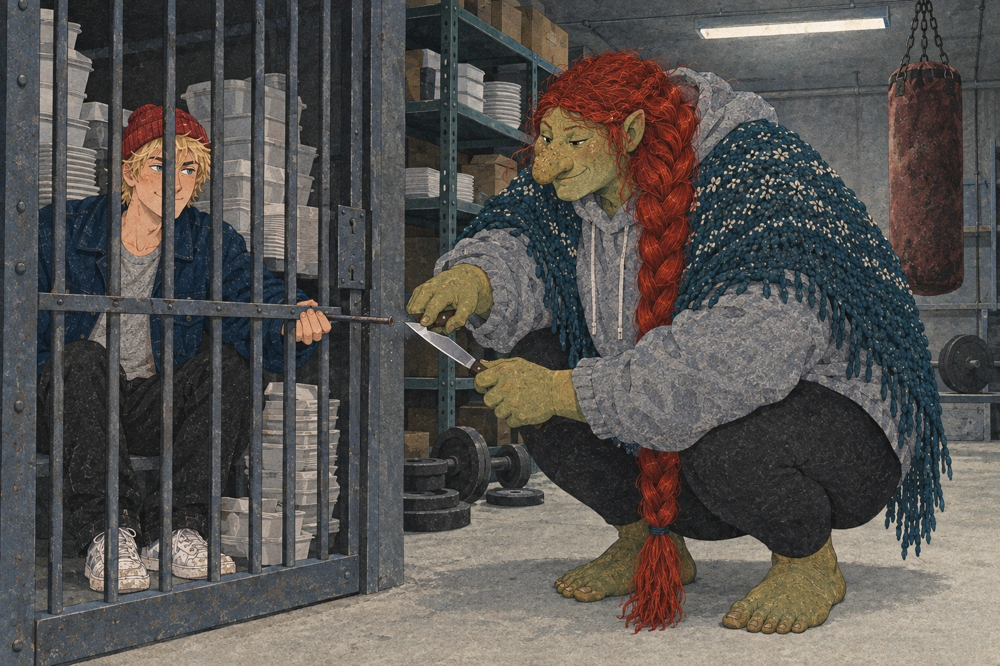
Askeladden stakk spikeren ut mellom sprinklene. Hun skar i den. Det sa skrrt.
Askeladden stakk spikeren ut mellom sprinklene.
Alt: Askeladden sitter bak sprinklene i en betongkjeller full av tomme matbokser og stikker ut en spiker. Trolldatteren sitter på huk utenfor, myser og skjærer i den.
In a windowless concrete cellar with metal shelving, old weights and a dusty punching bag, Askeladden sits behind a barred steel door among stacks of empty takeaway boxes and plates, poking an iron nail out between the bars. The Troll's Daughter crouches outside with a kitchen knife, squinting in the flat fluorescent light, and nicks the nail.
Reference images: - Image 1: model sheet for Askeladden, the same character seen from three sides. Keep Askeladden's face, hair, body shape, age, colours and clothes exactly as shown. Draw Askeladden only once, in the pose this picture needs, and ignore the sheet's layout and plain background. - Image 2: model sheet for the Troll's Daughter, the same character seen from three sides. Keep the Troll's Daughter's face, hair, body shape, age, colours and clothes exactly as shown. Draw the Troll's Daughter only once, in the pose this picture needs, and ignore the sheet's layout and plain background. Create one new illustration for an illustrated book of modern fairy tales, showing the moment described below. Picture: In a windowless concrete cellar with metal shelving, old weights and a dusty punching bag, Askeladden sits behind a barred steel door among stacks of empty takeaway boxes and plates, poking an iron nail out between the bars. The Troll's Daughter crouches outside with a kitchen knife, squinting in the flat fluorescent light, and nicks the nail. Characters in this picture (nobody else, unless the picture description mentions them): - Askeladden: A lanky young man of about nineteen with messy straw-blond hair, sharp blue-grey eyes, a narrow freckled face and a calm, crooked smile. He wears a faded red knitted beanie, a navy work jacket over a grey T-shirt, black work trousers and scuffed white trainers. - the Troll's Daughter: A huge troll woman, about three times as tall as a man, with a broad moss-green face, a long bumpy nose, small squinting eyes, heavy arms and one enormous, heavy red braid that reaches her knees. She wears an enormous faded grey hoodie, black leggings and a big knitted shawl, and goes barefoot. Story world: Present-day western Norway. The royal estate is a big, old white wooden manor with a glassed-in terrace, a lawn running down to a private quay, a boathouse and staff buildings, on one side of a narrow fjord. Straight across the fjord rises the Dark Mountain, where the troll lives behind a heavy stone door that grinds open in the rock. The seven silver ducks are real ducks of solid, gleaming silver, like small sculptures. The kneading trough is a big, old, dark wooden trough almost as long as a rowing boat; Askeladden paddles it with a worn wooden oar from the boathouse. The bedspread is a heavy quilt of alternating silver and gold squares. The golden harp is a small golden lap harp. Inside the mountain, ancient cave meets forgotten basement: raw concrete, metal shelving, old weights and a stone feasting hall. This story's season, light and colours: Early summer on a western fjord: pale, cool mornings, glassy blue-green water, bright silver glints and white midsummer nights. Inside the mountain: flat fluorescent light on grey concrete, and warm lamp light in the stone hall. Art style: Contemporary Scandinavian editorial illustration: flat, graphic shapes with subtle risograph grain and a little hand-drawn texture, clean confident lines and a limited palette of spot inks led by deep petrol blue, with fjord teal, lingonberry red, honey mustard, sage green, warm paper off-white and ink charcoal, like the pages of a risograph-printed book, shifted towards each story's own season, light and colours, in the cool, clear Nordic light of today. Present-day Norway: fjord towns, suburbs, farms with tractors, cabins, ferries, roadside petrol stations, offices and flats, grey rain and bright snow, with people in modern clothes such as rain jackets, knitted sweaters, hoodies, suits and work wear. The magic of the tale appears plainly in this everyday world: trolls, talking animals and enchantments look real and slightly absurd, drawn in the same flat style. Every character has their own face, build, age, hair and clothes exactly as described, so no two characters look alike. Dry humour, careful composition with one focal point and plenty of negative space. The picture fills the whole image, with no border, frame or lettering. Not photorealistic, not 3D, not anime, no glossy digital look. Rules: - No text of any kind: no letters, words, numbers, signatures, captions, speech bubbles, logos, signs or readable screens. Phones and screens show only light or simple shapes. - Every named character must match their model sheet and description exactly: the same face, hair, colours, clothes and proportions. - Suitable for readers of all ages: no blood, wounds or gore, and no killing shown. Show danger and cruelty through atmosphere, posture and suspense, never through injury. - Draw each named character only once. - Show exactly the number of people, animals and things the description asks for, and no extra people. - One clear moment that reads at a glance, as a single full-bleed picture with no border, frame or comic panels.
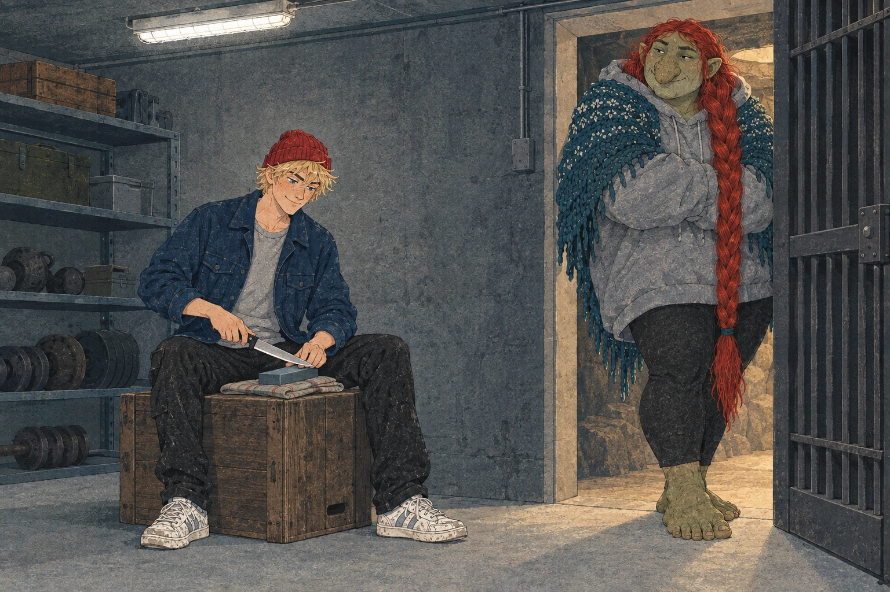
Hun nølte. Så låste hun opp og ga ham kniven. Han slipte lenge, til eggen sang.
Han slipte lenge, til eggen sang.
Alt: Askeladden sitter på en kasse i kjelleren og sliper en lang kniv mot en stein. Trolldatteren lener seg mot dørkarmen med armene i kors og følger nøye med.
In the concrete cellar, the barred door now unlocked and open, Askeladden sits on an upturned crate running a long kitchen knife along a sharpening stone with a professional's calm, while the Troll's Daughter leans against the doorframe in her enormous grey hoodie, arms folded, watching him suspiciously.
Reference images: - Image 1: model sheet for Askeladden, the same character seen from three sides. Keep Askeladden's face, hair, body shape, age, colours and clothes exactly as shown. Draw Askeladden only once, in the pose this picture needs, and ignore the sheet's layout and plain background. - Image 2: model sheet for the Troll's Daughter, the same character seen from three sides. Keep the Troll's Daughter's face, hair, body shape, age, colours and clothes exactly as shown. Draw the Troll's Daughter only once, in the pose this picture needs, and ignore the sheet's layout and plain background. Create one new illustration for an illustrated book of modern fairy tales, showing the moment described below. Picture: In the concrete cellar, the barred door now unlocked and open, Askeladden sits on an upturned crate running a long kitchen knife along a sharpening stone with a professional's calm, while the Troll's Daughter leans against the doorframe in her enormous grey hoodie, arms folded, watching him suspiciously. Characters in this picture (nobody else, unless the picture description mentions them): - Askeladden: A lanky young man of about nineteen with messy straw-blond hair, sharp blue-grey eyes, a narrow freckled face and a calm, crooked smile. He wears a faded red knitted beanie, a navy work jacket over a grey T-shirt, black work trousers and scuffed white trainers. - the Troll's Daughter: A huge troll woman, about three times as tall as a man, with a broad moss-green face, a long bumpy nose, small squinting eyes, heavy arms and one enormous, heavy red braid that reaches her knees. She wears an enormous faded grey hoodie, black leggings and a big knitted shawl, and goes barefoot. Story world: Present-day western Norway. The royal estate is a big, old white wooden manor with a glassed-in terrace, a lawn running down to a private quay, a boathouse and staff buildings, on one side of a narrow fjord. Straight across the fjord rises the Dark Mountain, where the troll lives behind a heavy stone door that grinds open in the rock. The seven silver ducks are real ducks of solid, gleaming silver, like small sculptures. The kneading trough is a big, old, dark wooden trough almost as long as a rowing boat; Askeladden paddles it with a worn wooden oar from the boathouse. The bedspread is a heavy quilt of alternating silver and gold squares. The golden harp is a small golden lap harp. Inside the mountain, ancient cave meets forgotten basement: raw concrete, metal shelving, old weights and a stone feasting hall. This story's season, light and colours: Early summer on a western fjord: pale, cool mornings, glassy blue-green water, bright silver glints and white midsummer nights. Inside the mountain: flat fluorescent light on grey concrete, and warm lamp light in the stone hall. Art style: Contemporary Scandinavian editorial illustration: flat, graphic shapes with subtle risograph grain and a little hand-drawn texture, clean confident lines and a limited palette of spot inks led by deep petrol blue, with fjord teal, lingonberry red, honey mustard, sage green, warm paper off-white and ink charcoal, like the pages of a risograph-printed book, shifted towards each story's own season, light and colours, in the cool, clear Nordic light of today. Present-day Norway: fjord towns, suburbs, farms with tractors, cabins, ferries, roadside petrol stations, offices and flats, grey rain and bright snow, with people in modern clothes such as rain jackets, knitted sweaters, hoodies, suits and work wear. The magic of the tale appears plainly in this everyday world: trolls, talking animals and enchantments look real and slightly absurd, drawn in the same flat style. Every character has their own face, build, age, hair and clothes exactly as described, so no two characters look alike. Dry humour, careful composition with one focal point and plenty of negative space. The picture fills the whole image, with no border, frame or lettering. Not photorealistic, not 3D, not anime, no glossy digital look. Rules: - No text of any kind: no letters, words, numbers, signatures, captions, speech bubbles, logos, signs or readable screens. Phones and screens show only light or simple shapes. - Every named character must match their model sheet and description exactly: the same face, hair, colours, clothes and proportions. - Suitable for readers of all ages: no blood, wounds or gore, and no killing shown. Show danger and cruelty through atmosphere, posture and suspense, never through injury. - Draw each named character only once. - Show exactly the number of people, animals and things the description asks for, and no extra people. - One clear moment that reads at a glance, as a single full-bleed picture with no border, frame or comic panels.
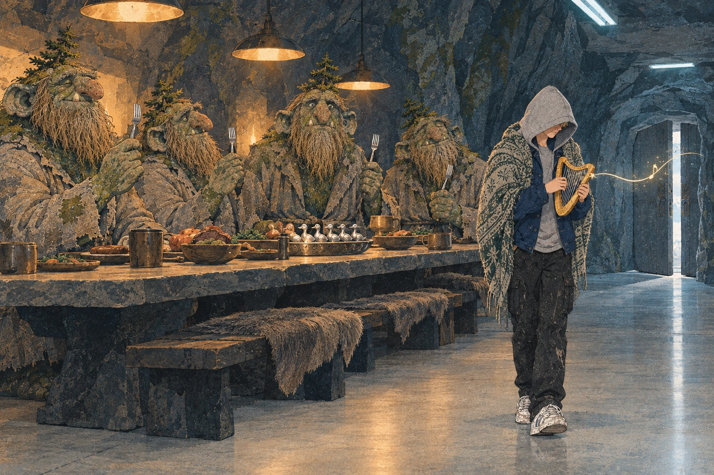
Askeladden reiste seg og løftet harpa ned. Den var varm i hendene, nesten som noe levende. Han strøk over strengene, og én klar tone fylte hele hallen. Gjestene ble sittende med gaflene i lufta. Et par av dem smilte uten å vite hvorfor. Askeladden spilte videre og gikk rolig mot utgangen, ut gjennom steindøra og ned til vannet. Der skjøv han trauet ut, hoppet oppi med harpa i fanget og padlet så det skummet.
Gjestene ble sittende med gaflene i lufta.
Alt: Trollet og fire store trollgjester sitter stille rundt et langt bord med gaflene i lufta. Askeladden, gjemt i en altfor stor hettegenser og et sjal, går mot døra og spiller på gullharpa.
In the stone feasting hall inside the mountain, the Troll and four huge, heavy troll guests sit frozen around a long table with their forks in the air, a couple of them smiling dreamily. Askeladden, his face hidden in an enormous grey hoodie and a knitted shawl, walks calmly towards the stone door playing the small golden harp, one clear note shimmering through the hall.
Reference images: - Image 1: model sheet for Askeladden, the same character seen from three sides. Keep Askeladden's face, hair, body shape, age, colours and clothes exactly as shown. Draw Askeladden only once, in the pose this picture needs, and ignore the sheet's layout and plain background. - Image 2: model sheet for the Troll, the same character seen from three sides. Keep the Troll's face, hair, body shape, age, colours and clothes exactly as shown. Draw the Troll only once, in the pose this picture needs, and ignore the sheet's layout and plain background. Create one new illustration for an illustrated book of modern fairy tales, showing the moment described below. Picture: In the stone feasting hall inside the mountain, the Troll and four huge, heavy troll guests sit frozen around a long table with their forks in the air, a couple of them smiling dreamily. Askeladden, his face hidden in an enormous grey hoodie and a knitted shawl, walks calmly towards the stone door playing the small golden harp, one clear note shimmering through the hall. Characters in this picture (nobody else, unless the picture description mentions them): - Askeladden: A lanky young man of about nineteen with messy straw-blond hair, sharp blue-grey eyes, a narrow freckled face and a calm, crooked smile. He wears a faded red knitted beanie, a navy work jacket over a grey T-shirt, black work trousers and scuffed white trainers. - the Troll: An enormous, ancient fjord troll three times as tall as a man, with grey-green skin like weathered rock patched with moss and lichen, a long knobbly nose, tiny black eyes under bushy brows, a wide mouth with two stubby teeth, huge ears, a beard like dry grass and a small spruce growing from the top of his head. He wears a huge, ragged, faded canvas work coat tied with rope, and goes barefoot on enormous flat feet. Story world: Present-day western Norway. The royal estate is a big, old white wooden manor with a glassed-in terrace, a lawn running down to a private quay, a boathouse and staff buildings, on one side of a narrow fjord. Straight across the fjord rises the Dark Mountain, where the troll lives behind a heavy stone door that grinds open in the rock. The seven silver ducks are real ducks of solid, gleaming silver, like small sculptures. The kneading trough is a big, old, dark wooden trough almost as long as a rowing boat; Askeladden paddles it with a worn wooden oar from the boathouse. The bedspread is a heavy quilt of alternating silver and gold squares. The golden harp is a small golden lap harp. Inside the mountain, ancient cave meets forgotten basement: raw concrete, metal shelving, old weights and a stone feasting hall. This story's season, light and colours: Early summer on a western fjord: pale, cool mornings, glassy blue-green water, bright silver glints and white midsummer nights. Inside the mountain: flat fluorescent light on grey concrete, and warm lamp light in the stone hall. Art style: Contemporary Scandinavian editorial illustration: flat, graphic shapes with subtle risograph grain and a little hand-drawn texture, clean confident lines and a limited palette of spot inks led by deep petrol blue, with fjord teal, lingonberry red, honey mustard, sage green, warm paper off-white and ink charcoal, like the pages of a risograph-printed book, shifted towards each story's own season, light and colours, in the cool, clear Nordic light of today. Present-day Norway: fjord towns, suburbs, farms with tractors, cabins, ferries, roadside petrol stations, offices and flats, grey rain and bright snow, with people in modern clothes such as rain jackets, knitted sweaters, hoodies, suits and work wear. The magic of the tale appears plainly in this everyday world: trolls, talking animals and enchantments look real and slightly absurd, drawn in the same flat style. Every character has their own face, build, age, hair and clothes exactly as described, so no two characters look alike. Dry humour, careful composition with one focal point and plenty of negative space. The picture fills the whole image, with no border, frame or lettering. Not photorealistic, not 3D, not anime, no glossy digital look. Rules: - No text of any kind: no letters, words, numbers, signatures, captions, speech bubbles, logos, signs or readable screens. Phones and screens show only light or simple shapes. - Every named character must match their model sheet and description exactly: the same face, hair, colours, clothes and proportions. - Suitable for readers of all ages: no blood, wounds or gore, and no killing shown. Show danger and cruelty through atmosphere, posture and suspense, never through injury. - Draw each named character only once. - Show exactly the number of people, animals and things the description asks for, and no extra people. - One clear moment that reads at a glance, as a single full-bleed picture with no border, frame or comic panels.
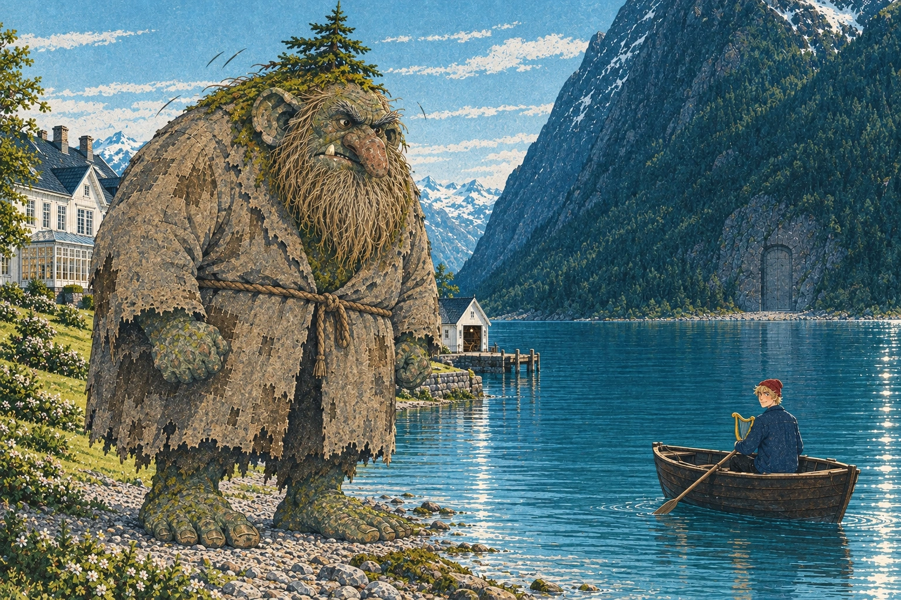
Da ble trollet så rasende at han svulmet opp, større og større, og så sprakk han med et smell som hørtes helt til kongsgården.
Trollet svulmet opp, større og større.
Alt: Trollet står i fjæra under fjellet og svulmer opp av raseri til en diger, rund skikkelse. Langt ute på fjorden sitter Askeladden i trauet med gullharpa og ser seg tilbake.
On the beach at the foot of the Dark Mountain, the Troll has swollen with rage into a vast, round shape, bigger and bigger, his face dark with fury, about to burst. Far out on the calm fjord, Askeladden sits in his trough with the golden harp in his lap, looking back over his shoulder.
Reference images: - Image 1: model sheet for Askeladden, the same character seen from three sides. Keep Askeladden's face, hair, body shape, age, colours and clothes exactly as shown. Draw Askeladden only once, in the pose this picture needs, and ignore the sheet's layout and plain background. - Image 2: model sheet for the Troll, the same character seen from three sides. Keep the Troll's face, hair, body shape, age, colours and clothes exactly as shown. Draw the Troll only once, in the pose this picture needs, and ignore the sheet's layout and plain background. - Image 3: setting reference for the Dark Mountain. Keep its landforms, buildings, colours and key details, and choose the viewpoint and framing this picture needs. Create one new illustration for an illustrated book of modern fairy tales, showing the moment described below. Picture: On the beach at the foot of the Dark Mountain, the Troll has swollen with rage into a vast, round shape, bigger and bigger, his face dark with fury, about to burst. Far out on the calm fjord, Askeladden sits in his trough with the golden harp in his lap, looking back over his shoulder. Characters in this picture (nobody else, unless the picture description mentions them): - Askeladden: A lanky young man of about nineteen with messy straw-blond hair, sharp blue-grey eyes, a narrow freckled face and a calm, crooked smile. He wears a faded red knitted beanie, a navy work jacket over a grey T-shirt, black work trousers and scuffed white trainers. - the Troll: An enormous, ancient fjord troll three times as tall as a man, with grey-green skin like weathered rock patched with moss and lichen, a long knobbly nose, tiny black eyes under bushy brows, a wide mouth with two stubby teeth, huge ears, a beard like dry grass and a small spruce growing from the top of his head. He wears a huge, ragged, faded canvas work coat tied with rope, and goes barefoot on enormous flat feet. Setting: - the Dark Mountain: A dark, steep mountain rising straight out of the far side of a narrow fjord, its lower slopes covered in black spruce, with a narrow pebble beach at its foot and a heavy, door-shaped slab of stone set into the rock face just above the waterline. Story world: Present-day western Norway. The royal estate is a big, old white wooden manor with a glassed-in terrace, a lawn running down to a private quay, a boathouse and staff buildings, on one side of a narrow fjord. Straight across the fjord rises the Dark Mountain, where the troll lives behind a heavy stone door that grinds open in the rock. The seven silver ducks are real ducks of solid, gleaming silver, like small sculptures. The kneading trough is a big, old, dark wooden trough almost as long as a rowing boat; Askeladden paddles it with a worn wooden oar from the boathouse. The bedspread is a heavy quilt of alternating silver and gold squares. The golden harp is a small golden lap harp. Inside the mountain, ancient cave meets forgotten basement: raw concrete, metal shelving, old weights and a stone feasting hall. This story's season, light and colours: Early summer on a western fjord: pale, cool mornings, glassy blue-green water, bright silver glints and white midsummer nights. Inside the mountain: flat fluorescent light on grey concrete, and warm lamp light in the stone hall. Art style: Contemporary Scandinavian editorial illustration: flat, graphic shapes with subtle risograph grain and a little hand-drawn texture, clean confident lines and a limited palette of spot inks led by deep petrol blue, with fjord teal, lingonberry red, honey mustard, sage green, warm paper off-white and ink charcoal, like the pages of a risograph-printed book, shifted towards each story's own season, light and colours, in the cool, clear Nordic light of today. Present-day Norway: fjord towns, suburbs, farms with tractors, cabins, ferries, roadside petrol stations, offices and flats, grey rain and bright snow, with people in modern clothes such as rain jackets, knitted sweaters, hoodies, suits and work wear. The magic of the tale appears plainly in this everyday world: trolls, talking animals and enchantments look real and slightly absurd, drawn in the same flat style. Every character has their own face, build, age, hair and clothes exactly as described, so no two characters look alike. Dry humour, careful composition with one focal point and plenty of negative space. The picture fills the whole image, with no border, frame or lettering. Not photorealistic, not 3D, not anime, no glossy digital look. Rules: - No text of any kind: no letters, words, numbers, signatures, captions, speech bubbles, logos, signs or readable screens. Phones and screens show only light or simple shapes. - Every named character must match their model sheet and description exactly: the same face, hair, colours, clothes and proportions. - Suitable for readers of all ages: no blood, wounds or gore, and no killing shown. Show danger and cruelty through atmosphere, posture and suspense, never through injury. - Draw each named character only once. - Show exactly the number of people, animals and things the description asks for, and no extra people. - One clear moment that reads at a glance, as a single full-bleed picture with no border, frame or comic panels.
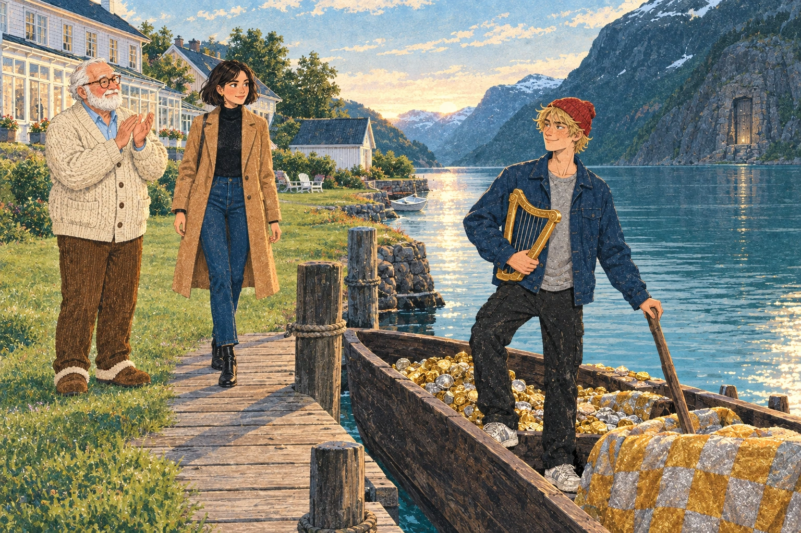
Kongen holdt ord. Askeladden fikk halve kongeriket, og prinsessa ville ha ham. Hun hadde visst villet det en stund.
Kongen holdt ord, og prinsessa ville ha ham.
Alt: Askeladden stiger ut av trauet ved brygga med gullharpa. Trauet er fullt av gull og sølv. Kongen klapper i tøflene, og prinsessa går smilende ned brygga mot ham.
At the private quay of the royal estate on a bright midsummer evening, Askeladden steps out of his wooden trough, which is heaped with gold and silver, holding the golden harp. The King, still in his slippers, claps with delight, and the Princess comes down the jetty towards Askeladden with a small, knowing smile.
Reference images: - Image 1: model sheet for Askeladden, the same character seen from three sides. Keep Askeladden's face, hair, body shape, age, colours and clothes exactly as shown. Draw Askeladden only once, in the pose this picture needs, and ignore the sheet's layout and plain background. - Image 2: model sheet for the King, the same character seen from three sides. Keep the King's face, hair, body shape, age, colours and clothes exactly as shown. Draw the King only once, in the pose this picture needs, and ignore the sheet's layout and plain background. - Image 3: model sheet for the Princess, the same character seen from three sides. Keep the Princess's face, hair, body shape, age, colours and clothes exactly as shown. Draw the Princess only once, in the pose this picture needs, and ignore the sheet's layout and plain background. Create one new illustration for an illustrated book of modern fairy tales, showing the moment described below. Picture: At the private quay of the royal estate on a bright midsummer evening, Askeladden steps out of his wooden trough, which is heaped with gold and silver, holding the golden harp. The King, still in his slippers, claps with delight, and the Princess comes down the jetty towards Askeladden with a small, knowing smile. Characters in this picture (nobody else, unless the picture description mentions them): - Askeladden: A lanky young man of about nineteen with messy straw-blond hair, sharp blue-grey eyes, a narrow freckled face and a calm, crooked smile. He wears a faded red knitted beanie, a navy work jacket over a grey T-shirt, black work trousers and scuffed white trainers. - the King: A stout, elderly king with a neat white beard, round tortoiseshell glasses, rosy cheeks and thinning white hair, a man used to getting his way. At home he wears a thick cream cardigan over a pale-blue shirt, brown corduroy trousers and sheepskin slippers. - the Princess: A young woman in her early twenties with a sharp, curious face, dark hair in a short bob, brown eyes and a small gold stud in one ear. She wears a camel wool coat over a black turtleneck, dark jeans and ankle boots. Story world: Present-day western Norway. The royal estate is a big, old white wooden manor with a glassed-in terrace, a lawn running down to a private quay, a boathouse and staff buildings, on one side of a narrow fjord. Straight across the fjord rises the Dark Mountain, where the troll lives behind a heavy stone door that grinds open in the rock. The seven silver ducks are real ducks of solid, gleaming silver, like small sculptures. The kneading trough is a big, old, dark wooden trough almost as long as a rowing boat; Askeladden paddles it with a worn wooden oar from the boathouse. The bedspread is a heavy quilt of alternating silver and gold squares. The golden harp is a small golden lap harp. Inside the mountain, ancient cave meets forgotten basement: raw concrete, metal shelving, old weights and a stone feasting hall. This story's season, light and colours: Early summer on a western fjord: pale, cool mornings, glassy blue-green water, bright silver glints and white midsummer nights. Inside the mountain: flat fluorescent light on grey concrete, and warm lamp light in the stone hall. Art style: Contemporary Scandinavian editorial illustration: flat, graphic shapes with subtle risograph grain and a little hand-drawn texture, clean confident lines and a limited palette of spot inks led by deep petrol blue, with fjord teal, lingonberry red, honey mustard, sage green, warm paper off-white and ink charcoal, like the pages of a risograph-printed book, shifted towards each story's own season, light and colours, in the cool, clear Nordic light of today. Present-day Norway: fjord towns, suburbs, farms with tractors, cabins, ferries, roadside petrol stations, offices and flats, grey rain and bright snow, with people in modern clothes such as rain jackets, knitted sweaters, hoodies, suits and work wear. The magic of the tale appears plainly in this everyday world: trolls, talking animals and enchantments look real and slightly absurd, drawn in the same flat style. Every character has their own face, build, age, hair and clothes exactly as described, so no two characters look alike. Dry humour, careful composition with one focal point and plenty of negative space. The picture fills the whole image, with no border, frame or lettering. Not photorealistic, not 3D, not anime, no glossy digital look. Rules: - No text of any kind: no letters, words, numbers, signatures, captions, speech bubbles, logos, signs or readable screens. Phones and screens show only light or simple shapes. - Every named character must match their model sheet and description exactly: the same face, hair, colours, clothes and proportions. - Suitable for readers of all ages: no blood, wounds or gore, and no killing shown. Show danger and cruelty through atmosphere, posture and suspense, never through injury. - Draw each named character only once. - Show exactly the number of people, animals and things the description asks for, and no extra people. - One clear moment that reads at a glance, as a single full-bleed picture with no border, frame or comic panels.
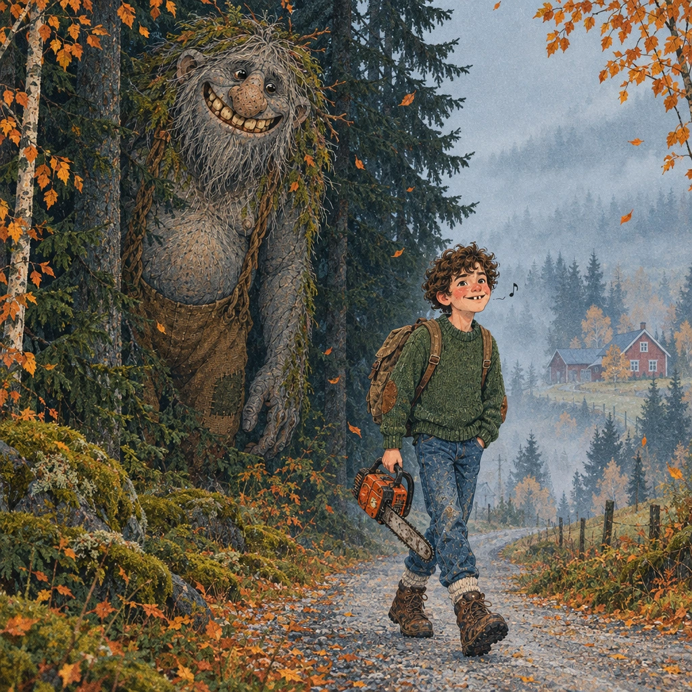
Askeladden går opp i skogen, og han er ikke det minste redd for troll.
Alt: Askeladden går opp skogsbilveien med en motorsag og sekken på ryggen. Bak ham, mellom grantrærne, kikker et stort, grått troll fram.
Askeladden strides up the gravel forest road into the misty spruce forest with an old orange chainsaw in one hand and his backpack on, whistling, not a bit afraid. Behind him, half-hidden among the dark spruces, the Troll leans out from between the trunks, as big as a delivery van, and peers down at him with curious eyes. Rust-orange birch leaves drift through the grey October mist.
Reference images: - Image 1: model sheet for Askeladden, the same character seen from three sides. Keep Askeladden's face, hair, body shape, age, colours and clothes exactly as shown. Draw Askeladden only once, in the pose this picture needs, and ignore the sheet's layout and plain background. - Image 2: model sheet for the Troll, the same character seen from three sides. Keep the Troll's face, hair, body shape, age, colours and clothes exactly as shown. Draw the Troll only once, in the pose this picture needs, and ignore the sheet's layout and plain background. Create the cover illustration for an illustrated book of modern fairy tales, in a square format. Do not write a title or any other text on it. Picture: Askeladden strides up the gravel forest road into the misty spruce forest with an old orange chainsaw in one hand and his backpack on, whistling, not a bit afraid. Behind him, half-hidden among the dark spruces, the Troll leans out from between the trunks, as big as a delivery van, and peers down at him with curious eyes. Rust-orange birch leaves drift through the grey October mist. Characters in this picture (nobody else, unless the picture description mentions them): - Askeladden: A small, wiry lad of about sixteen, shorter than most, with a round face, rosy cheeks, bright brown eyes, a button nose, a dark-brown curly mop of hair and a cheeky gap-toothed grin. He wears a moss-green knitted jumper with brown leather elbow patches, worn jeans, thick oatmeal-coloured wool socks and scuffed brown hiking boots, and carries a small, worn brown canvas backpack. - the Troll: A huge forest troll as big as a delivery van, grey and bristly all over, with cracked grey skin like an old pine trunk, a shaggy, bristly grey haystack of hair full of twigs and moss, a potato nose, eyes like two wet dark stones in a stream, an enormous mouth that stretches from ear to ear with big square teeth, long dangling arms, hands like upturned tree roots and a huge, round belly. He wears baggy, patched sackcloth trousers held up by braces of twisted roots. Story world: Present-day Norway. A small, run-down farm with a red farmhouse, a barn and a cramped kitchen with an old wood stove, where the letters from the bank pile up on the table. Up the hillside behind lies the farm's forest plot, steep and dark with old spruce, with a gravel forest road below it. The troll lives inside the mountain above, behind a stone door that slides aside. Inside, everything is far too big: a fireplace you could park a tractor in, benches as high as Askeladden's chest, a table made of one single stone slab, two iron buckets as big as barrels and a porridge pot deeper than he is tall. Askeladden's cheese is a small, round, soft white fresh cheese in baking paper. The chainsaws are two old orange chainsaws. This story's season, light and colours: A grey, damp October: dark spruce, rust-orange birch leaves, wet green moss and cool grey mist on the hillside, with blue dusk falling early between the trunks. Inside the mountain: warm, flickering firelight on rough grey stone. In the farmhouse kitchen at night: one warm lamp over the table and gold glittering in its light. Art style: Contemporary Scandinavian editorial illustration: flat, graphic shapes with subtle risograph grain and a little hand-drawn texture, clean confident lines and a limited palette of spot inks led by deep petrol blue, with fjord teal, lingonberry red, honey mustard, sage green, warm paper off-white and ink charcoal, like the pages of a risograph-printed book, shifted towards each story's own season, light and colours, in the cool, clear Nordic light of today. Present-day Norway: fjord towns, suburbs, farms with tractors, cabins, ferries, roadside petrol stations, offices and flats, grey rain and bright snow, with people in modern clothes such as rain jackets, knitted sweaters, hoodies, suits and work wear. The magic of the tale appears plainly in this everyday world: trolls, talking animals and enchantments look real and slightly absurd, drawn in the same flat style. Every character has their own face, build, age, hair and clothes exactly as described, so no two characters look alike. Dry humour, careful composition with one focal point and plenty of negative space. The picture fills the whole image, with no border, frame or lettering. Not photorealistic, not 3D, not anime, no glossy digital look. Rules: - No text of any kind: no letters, words, numbers, signatures, captions, speech bubbles, logos, signs or readable screens. Phones and screens show only light or simple shapes. - Every named character must match their model sheet and description exactly: the same face, hair, colours, clothes and proportions. - Suitable for readers of all ages: no blood, wounds or gore, and no killing shown. Show danger and cruelty through atmosphere, posture and suspense, never through injury. - Draw each named character only once. - Show exactly the number of people, animals and things the description asks for, and no extra people. - One clear moment that reads at a glance, as a single full-bleed picture with no border, frame or comic panels.
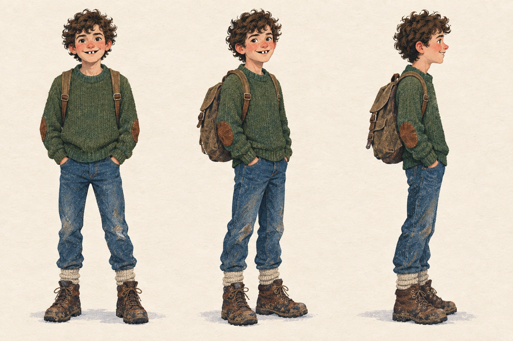
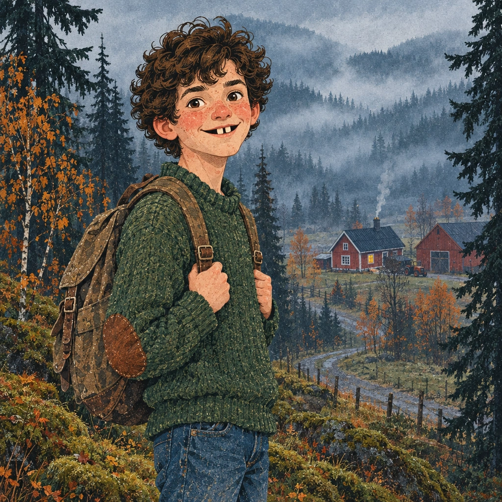
Den yngste sønnen som virker undervurdert, men som møter farer med ro, rask tenkning og frekke bløffer.
A small, wiry lad of about sixteen, shorter than most, with a round face, rosy cheeks, bright brown eyes, a button nose, a dark-brown curly mop of hair and a cheeky gap-toothed grin. He wears a moss-green knitted jumper with brown leather elbow patches, worn jeans, thick oatmeal-coloured wool socks and scuffed brown hiking boots, and carries a small, worn brown canvas backpack.
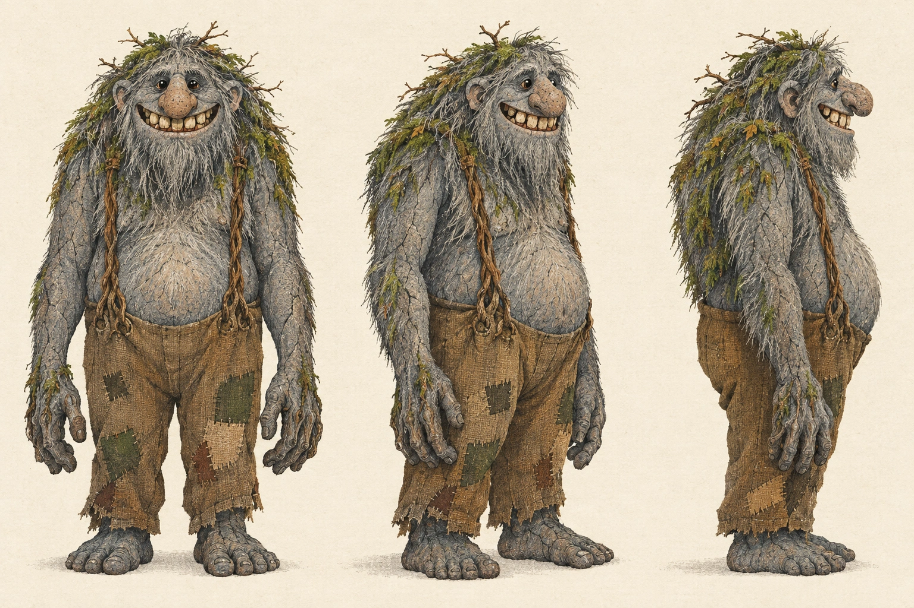
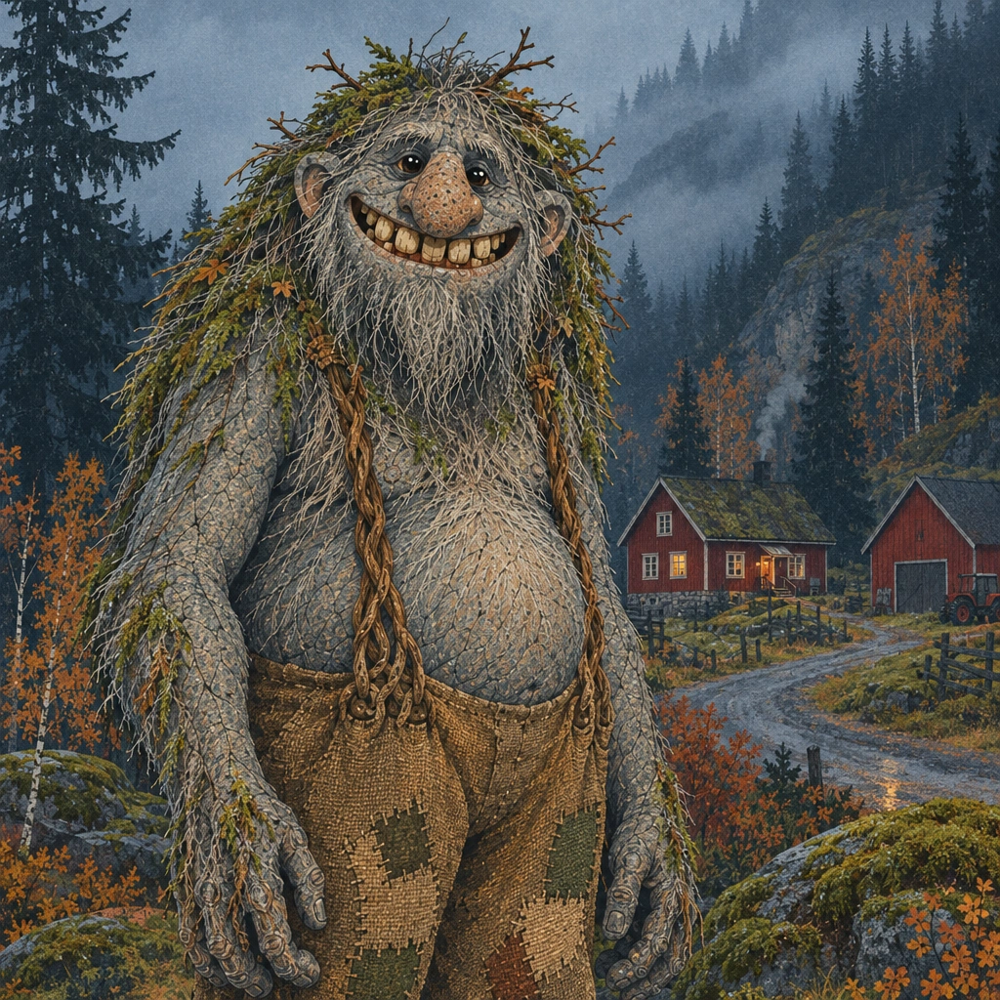
En gigantisk skogvokter som truer alle som hogger, lett å skremme med det den tror er overmenneskelig styrke, og drevet av stolthet.
A huge forest troll as big as a delivery van, grey and bristly all over, with cracked grey skin like an old pine trunk, a shaggy, bristly grey haystack of hair full of twigs and moss, a potato nose, eyes like two wet dark stones in a stream, an enormous mouth that stretches from ear to ear with big square teeth, long dangling arms, hands like upturned tree roots and a huge, round belly. He wears baggy, patched sackcloth trousers held up by braces of twisted roots.
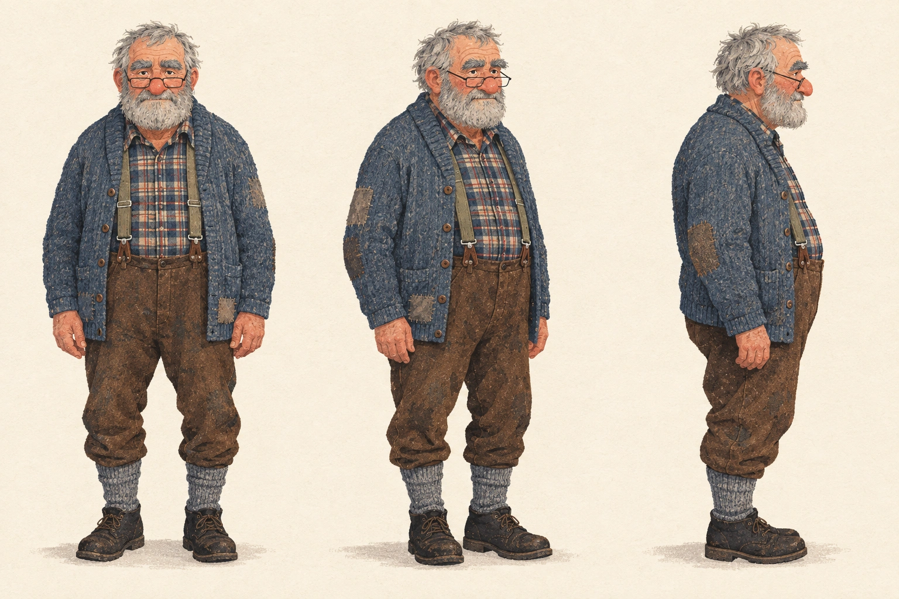
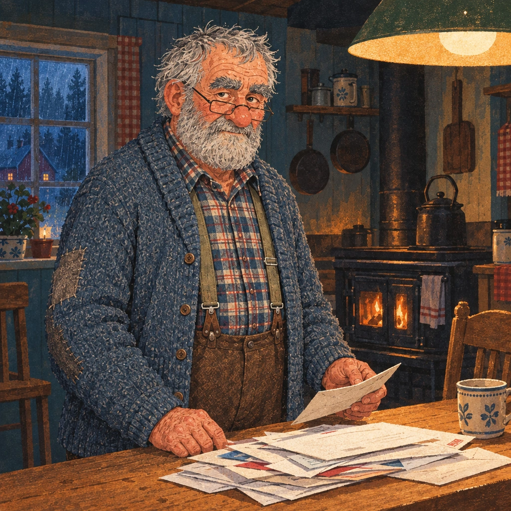
Eldre bonde presset av gjeld og regninger, hard i ordene av bekymring, men med et sterkt ønske om å beholde gården.
A short, stocky, bow-legged old farmer of about seventy with a stiff back, a broad, weather-beaten, wrinkled face, a big bulbous nose, small eyes under shaggy grey eyebrows and a thick, bristly grey beard cut short and square. He wears reading glasses far down his nose, a patched grey-blue wool cardigan with horn buttons over a checked flannel shirt, brown work trousers with braces and thick grey wool socks.
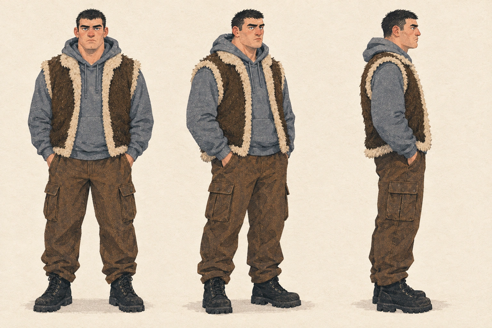
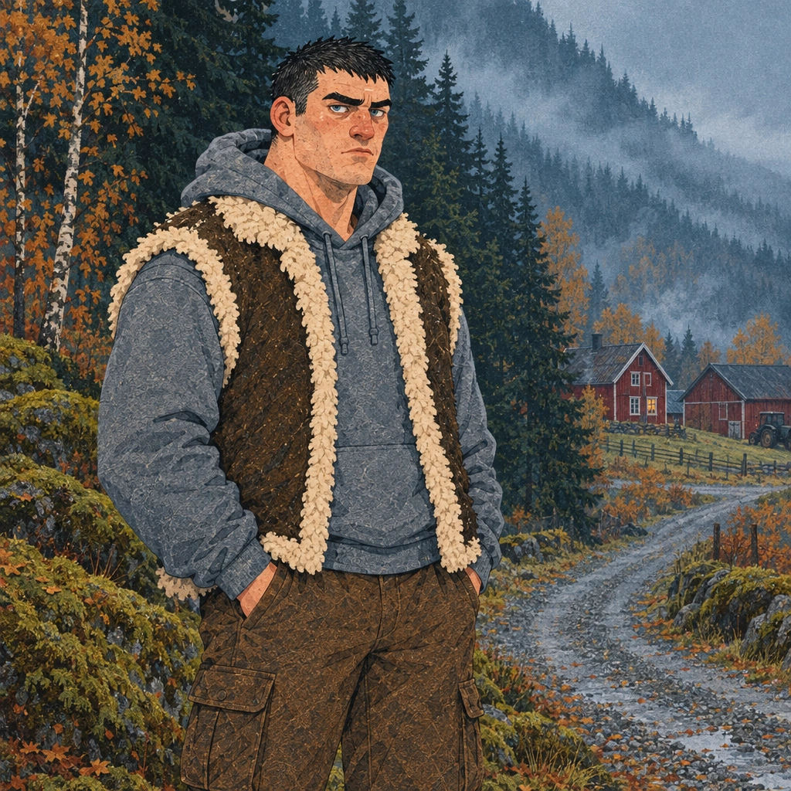
Den eldste sønnen som heller utsetter arbeidet, og som blir skremt fra skogen ved første møte med trollet.
A hulking, broad-shouldered young man of about twenty-two with a thick neck, a broad, flat face, a crooked nose, small pale-blue eyes, heavy black eyebrows and short, bristly black hair cropped close to his head. He wears a shaggy, sheepskin-lined sleeveless vest over a grey hoodie, baggy brown cargo trousers and heavy black boots.
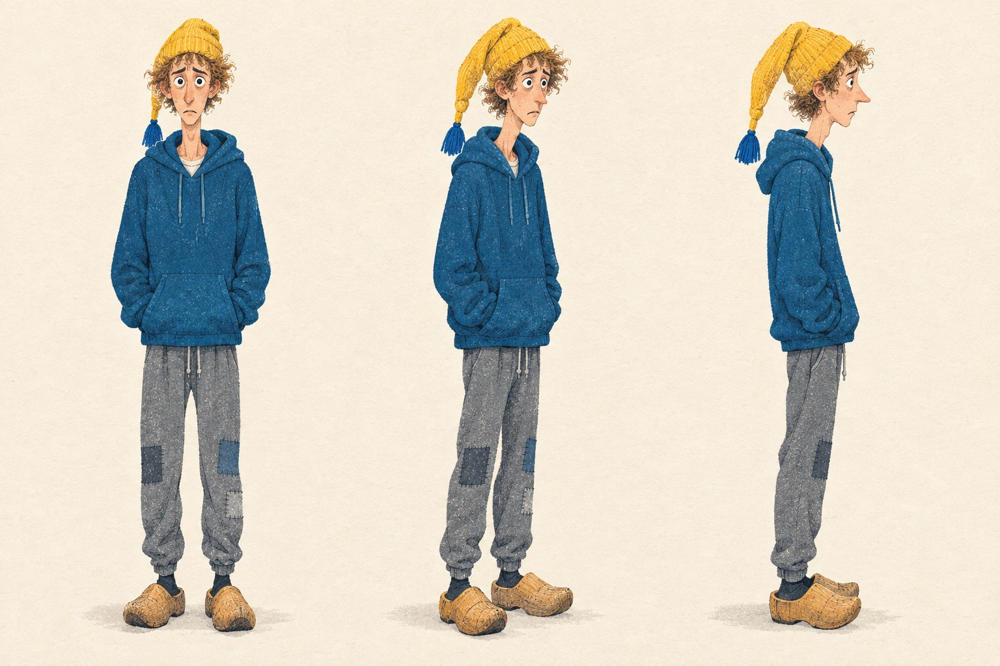
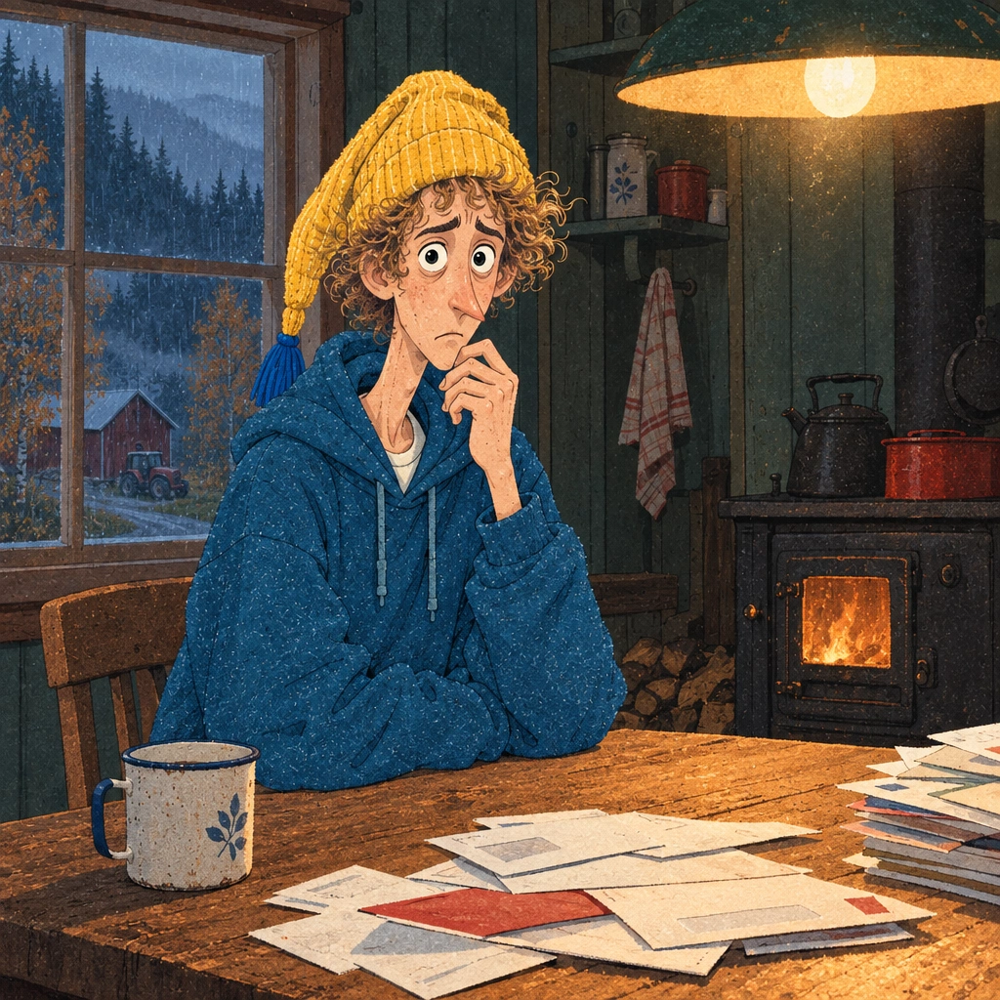
Den mellomste sønnen, som skal starte et enda bedre firma enn broren, men som også slipper saga og løper fra trollet.
A thin, jittery young man of about twenty with a long neck, a narrow face, a long pointed nose, big worried eyes and frizzy light-brown hair. On his head sits a long, floppy, bright-yellow knitted beanie with a blue tassel. He wears a baggy blue hoodie, patched grey tracksuit trousers and wooden clogs.
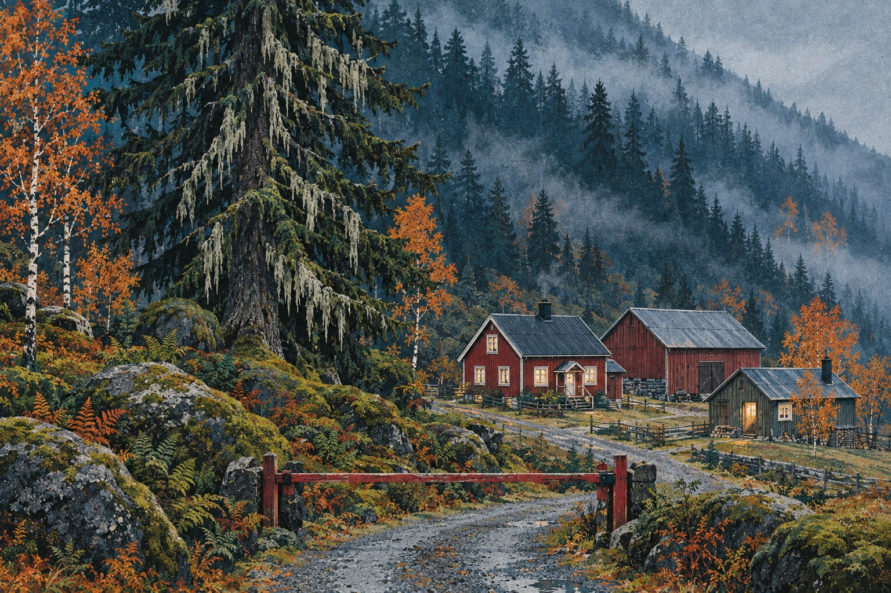
A steep, dark stand of old spruce on a hillside above a small farm: in the middle, one huge old spruce with long grey beards of lichen hanging from its branches, surrounded by mossy boulders, ferns and a few rust-orange birches, with a gravel forest road and a red barrier below. Grey October mist hangs between the trunks.
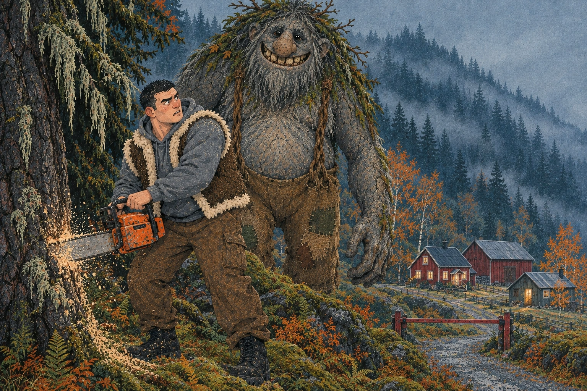
Der sto et troll. Han var på størrelse med en varebil, grå og bustete, og øynene lignet to våte steiner i en bekk.
Der sto et troll. Han var på størrelse med en varebil, grå og bustete.
Alt: Eldstebror står med motorsaga ved en gammel gran med langt lavskjegg. Bak ham står et grått, bustete troll på størrelse med en varebil og stirrer på ham.
At the Old Spruce on a grey October morning, the Eldest Brother stands with the family's old orange chainsaw buzzing in his hands, the blade in the trunk, and has just turned round to find the Troll right behind him, as big as a delivery van, grey and bristly, staring down with eyes like two wet stones. The Eldest Brother's face has gone chalk-white.
Reference images: - Image 1: model sheet for the Eldest Brother, the same character seen from three sides. Keep the Eldest Brother's face, hair, body shape, age, colours and clothes exactly as shown. Draw the Eldest Brother only once, in the pose this picture needs, and ignore the sheet's layout and plain background. - Image 2: model sheet for the Troll, the same character seen from three sides. Keep the Troll's face, hair, body shape, age, colours and clothes exactly as shown. Draw the Troll only once, in the pose this picture needs, and ignore the sheet's layout and plain background. - Image 3: setting reference for the Old Spruce. Keep its landforms, buildings, colours and key details, and choose the viewpoint and framing this picture needs. Create one new illustration for an illustrated book of modern fairy tales, showing the moment described below. Picture: At the Old Spruce on a grey October morning, the Eldest Brother stands with the family's old orange chainsaw buzzing in his hands, the blade in the trunk, and has just turned round to find the Troll right behind him, as big as a delivery van, grey and bristly, staring down with eyes like two wet stones. The Eldest Brother's face has gone chalk-white. Characters in this picture (nobody else, unless the picture description mentions them): - the Eldest Brother: A hulking, broad-shouldered young man of about twenty-two with a thick neck, a broad, flat face, a crooked nose, small pale-blue eyes, heavy black eyebrows and short, bristly black hair cropped close to his head. He wears a shaggy, sheepskin-lined sleeveless vest over a grey hoodie, baggy brown cargo trousers and heavy black boots. - the Troll: A huge forest troll as big as a delivery van, grey and bristly all over, with cracked grey skin like an old pine trunk, a shaggy, bristly grey haystack of hair full of twigs and moss, a potato nose, eyes like two wet dark stones in a stream, an enormous mouth that stretches from ear to ear with big square teeth, long dangling arms, hands like upturned tree roots and a huge, round belly. He wears baggy, patched sackcloth trousers held up by braces of twisted roots. Setting: - the Old Spruce: A steep, dark stand of old spruce on a hillside above a small farm: in the middle, one huge old spruce with long grey beards of lichen hanging from its branches, surrounded by mossy boulders, ferns and a few rust-orange birches, with a gravel forest road and a red barrier below. Grey October mist hangs between the trunks. Story world: Present-day Norway. A small, run-down farm with a red farmhouse, a barn and a cramped kitchen with an old wood stove, where the letters from the bank pile up on the table. Up the hillside behind lies the farm's forest plot, steep and dark with old spruce, with a gravel forest road below it. The troll lives inside the mountain above, behind a stone door that slides aside. Inside, everything is far too big: a fireplace you could park a tractor in, benches as high as Askeladden's chest, a table made of one single stone slab, two iron buckets as big as barrels and a porridge pot deeper than he is tall. Askeladden's cheese is a small, round, soft white fresh cheese in baking paper. The chainsaws are two old orange chainsaws. This story's season, light and colours: A grey, damp October: dark spruce, rust-orange birch leaves, wet green moss and cool grey mist on the hillside, with blue dusk falling early between the trunks. Inside the mountain: warm, flickering firelight on rough grey stone. In the farmhouse kitchen at night: one warm lamp over the table and gold glittering in its light. Art style: Contemporary Scandinavian editorial illustration: flat, graphic shapes with subtle risograph grain and a little hand-drawn texture, clean confident lines and a limited palette of spot inks led by deep petrol blue, with fjord teal, lingonberry red, honey mustard, sage green, warm paper off-white and ink charcoal, like the pages of a risograph-printed book, shifted towards each story's own season, light and colours, in the cool, clear Nordic light of today. Present-day Norway: fjord towns, suburbs, farms with tractors, cabins, ferries, roadside petrol stations, offices and flats, grey rain and bright snow, with people in modern clothes such as rain jackets, knitted sweaters, hoodies, suits and work wear. The magic of the tale appears plainly in this everyday world: trolls, talking animals and enchantments look real and slightly absurd, drawn in the same flat style. Every character has their own face, build, age, hair and clothes exactly as described, so no two characters look alike. Dry humour, careful composition with one focal point and plenty of negative space. The picture fills the whole image, with no border, frame or lettering. Not photorealistic, not 3D, not anime, no glossy digital look. Rules: - No text of any kind: no letters, words, numbers, signatures, captions, speech bubbles, logos, signs or readable screens. Phones and screens show only light or simple shapes. - Every named character must match their model sheet and description exactly: the same face, hair, colours, clothes and proportions. - Suitable for readers of all ages: no blood, wounds or gore, and no killing shown. Show danger and cruelty through atmosphere, posture and suspense, never through injury. - Draw each named character only once. - Show exactly the number of people, animals and things the description asks for, and no extra people. - One clear moment that reads at a glance, as a single full-bleed picture with no border, frame or comic panels.
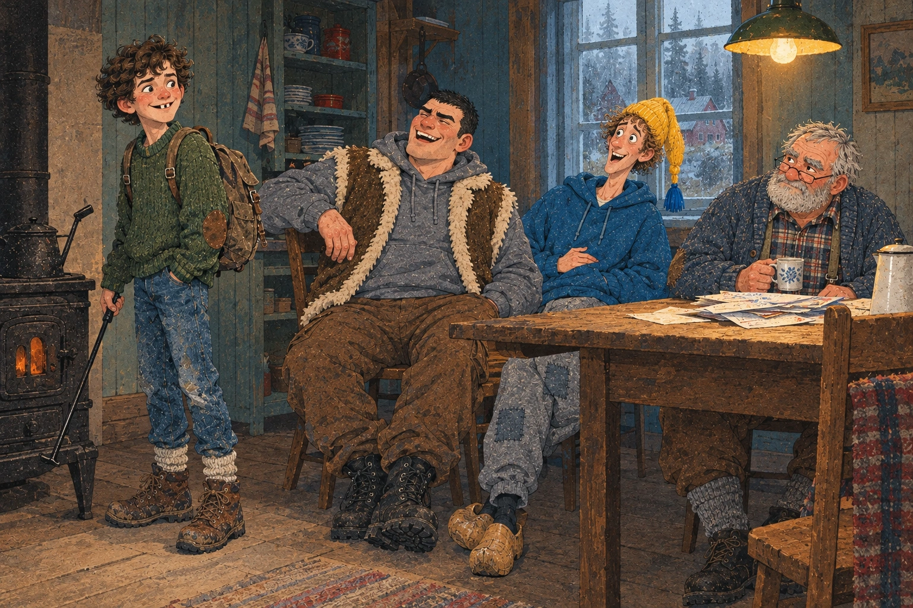
Brødrene lo. «Du? Du har jo knapt vært utenfor døra.»
Brødrene lo. «Du? Du har jo knapt vært utenfor døra.»
Alt: Askeladden reiser seg fra vedovnen med ildraken i hånda. Ved kjøkkenbordet ler de to brødrene av ham, og faren ser opp fra kaffen og bunken med brev fra banken.
In the cramped farmhouse kitchen, Askeladden has risen from his stool by the old wood stove, the poker still in his hand, and quietly says he can go. At the kitchen table, the Eldest Brother and the Middle Brother lean back and laugh at him, and the Father looks up from his coffee cup over a pile of envelopes from the bank. Grey morning light at the window.
Reference images: - Image 1: model sheet for Askeladden, the same character seen from three sides. Keep Askeladden's face, hair, body shape, age, colours and clothes exactly as shown. Draw Askeladden only once, in the pose this picture needs, and ignore the sheet's layout and plain background. - Image 2: model sheet for the Eldest Brother, the same character seen from three sides. Keep the Eldest Brother's face, hair, body shape, age, colours and clothes exactly as shown. Draw the Eldest Brother only once, in the pose this picture needs, and ignore the sheet's layout and plain background. - Image 3: model sheet for the Middle Brother, the same character seen from three sides. Keep the Middle Brother's face, hair, body shape, age, colours and clothes exactly as shown. Draw the Middle Brother only once, in the pose this picture needs, and ignore the sheet's layout and plain background. - Image 4: model sheet for the Father, the same character seen from three sides. Keep the Father's face, hair, body shape, age, colours and clothes exactly as shown. Draw the Father only once, in the pose this picture needs, and ignore the sheet's layout and plain background. Create one new illustration for an illustrated book of modern fairy tales, showing the moment described below. Picture: In the cramped farmhouse kitchen, Askeladden has risen from his stool by the old wood stove, the poker still in his hand, and quietly says he can go. At the kitchen table, the Eldest Brother and the Middle Brother lean back and laugh at him, and the Father looks up from his coffee cup over a pile of envelopes from the bank. Grey morning light at the window. Characters in this picture (nobody else, unless the picture description mentions them): - Askeladden: A small, wiry lad of about sixteen, shorter than most, with a round face, rosy cheeks, bright brown eyes, a button nose, a dark-brown curly mop of hair and a cheeky gap-toothed grin. He wears a moss-green knitted jumper with brown leather elbow patches, worn jeans, thick oatmeal-coloured wool socks and scuffed brown hiking boots, and carries a small, worn brown canvas backpack. - the Eldest Brother: A hulking, broad-shouldered young man of about twenty-two with a thick neck, a broad, flat face, a crooked nose, small pale-blue eyes, heavy black eyebrows and short, bristly black hair cropped close to his head. He wears a shaggy, sheepskin-lined sleeveless vest over a grey hoodie, baggy brown cargo trousers and heavy black boots. - the Middle Brother: A thin, jittery young man of about twenty with a long neck, a narrow face, a long pointed nose, big worried eyes and frizzy light-brown hair. On his head sits a long, floppy, bright-yellow knitted beanie with a blue tassel. He wears a baggy blue hoodie, patched grey tracksuit trousers and wooden clogs. - the Father: A short, stocky, bow-legged old farmer of about seventy with a stiff back, a broad, weather-beaten, wrinkled face, a big bulbous nose, small eyes under shaggy grey eyebrows and a thick, bristly grey beard cut short and square. He wears reading glasses far down his nose, a patched grey-blue wool cardigan with horn buttons over a checked flannel shirt, brown work trousers with braces and thick grey wool socks. Story world: Present-day Norway. A small, run-down farm with a red farmhouse, a barn and a cramped kitchen with an old wood stove, where the letters from the bank pile up on the table. Up the hillside behind lies the farm's forest plot, steep and dark with old spruce, with a gravel forest road below it. The troll lives inside the mountain above, behind a stone door that slides aside. Inside, everything is far too big: a fireplace you could park a tractor in, benches as high as Askeladden's chest, a table made of one single stone slab, two iron buckets as big as barrels and a porridge pot deeper than he is tall. Askeladden's cheese is a small, round, soft white fresh cheese in baking paper. The chainsaws are two old orange chainsaws. This story's season, light and colours: A grey, damp October: dark spruce, rust-orange birch leaves, wet green moss and cool grey mist on the hillside, with blue dusk falling early between the trunks. Inside the mountain: warm, flickering firelight on rough grey stone. In the farmhouse kitchen at night: one warm lamp over the table and gold glittering in its light. Art style: Contemporary Scandinavian editorial illustration: flat, graphic shapes with subtle risograph grain and a little hand-drawn texture, clean confident lines and a limited palette of spot inks led by deep petrol blue, with fjord teal, lingonberry red, honey mustard, sage green, warm paper off-white and ink charcoal, like the pages of a risograph-printed book, shifted towards each story's own season, light and colours, in the cool, clear Nordic light of today. Present-day Norway: fjord towns, suburbs, farms with tractors, cabins, ferries, roadside petrol stations, offices and flats, grey rain and bright snow, with people in modern clothes such as rain jackets, knitted sweaters, hoodies, suits and work wear. The magic of the tale appears plainly in this everyday world: trolls, talking animals and enchantments look real and slightly absurd, drawn in the same flat style. Every character has their own face, build, age, hair and clothes exactly as described, so no two characters look alike. Dry humour, careful composition with one focal point and plenty of negative space. The picture fills the whole image, with no border, frame or lettering. Not photorealistic, not 3D, not anime, no glossy digital look. Rules: - No text of any kind: no letters, words, numbers, signatures, captions, speech bubbles, logos, signs or readable screens. Phones and screens show only light or simple shapes. - Every named character must match their model sheet and description exactly: the same face, hair, colours, clothes and proportions. - Suitable for readers of all ages: no blood, wounds or gore, and no killing shown. Show danger and cruelty through atmosphere, posture and suspense, never through injury. - Draw each named character only once. - Show exactly the number of people, animals and things the description asks for, and no extra people. - One clear moment that reads at a glance, as a single full-bleed picture with no border, frame or comic panels.
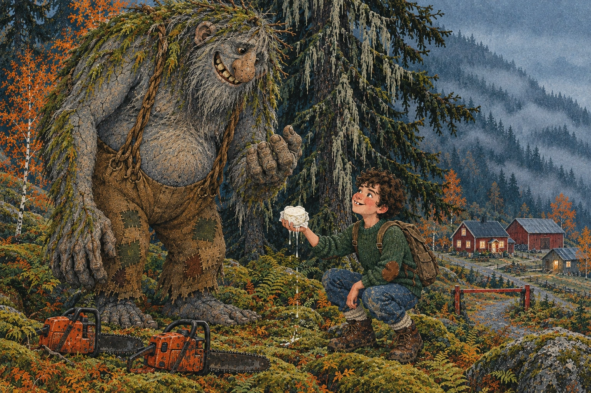
Askeladden slo av saga og satte den fra seg. Så gikk han bort til sekken, uten å skynde seg, og fisket fram osten. Han holdt den opp så trollet kunne se den, hvit og rund og fortsatt våt. Så klemte han. Væsken sprutet ut mellom fingrene og dryppet ned i mosen.
Så klemte han. Væsken sprutet ut mellom fingrene og dryppet ned i mosen.
Alt: Askeladden holder opp en liten, hvit ost og klemmer så væsken spruter mellom fingrene. Trollet stopper og stirrer. I mosen ligger to motorsager.
At the Old Spruce, Askeladden has switched off his chainsaw and set it down in the moss next to the other one. He holds up the small, round white cheese for the Troll to see and squeezes it, so that whey spurts out between his fingers and drips into the moss. The Troll stops dead above him, staring at the white stone and then at his own huge fist. Grey mist between the trunks.
Reference images: - Image 1: model sheet for Askeladden, the same character seen from three sides. Keep Askeladden's face, hair, body shape, age, colours and clothes exactly as shown. Draw Askeladden only once, in the pose this picture needs, and ignore the sheet's layout and plain background. - Image 2: model sheet for the Troll, the same character seen from three sides. Keep the Troll's face, hair, body shape, age, colours and clothes exactly as shown. Draw the Troll only once, in the pose this picture needs, and ignore the sheet's layout and plain background. - Image 3: setting reference for the Old Spruce. Keep its landforms, buildings, colours and key details, and choose the viewpoint and framing this picture needs. Create one new illustration for an illustrated book of modern fairy tales, showing the moment described below. Picture: At the Old Spruce, Askeladden has switched off his chainsaw and set it down in the moss next to the other one. He holds up the small, round white cheese for the Troll to see and squeezes it, so that whey spurts out between his fingers and drips into the moss. The Troll stops dead above him, staring at the white stone and then at his own huge fist. Grey mist between the trunks. Characters in this picture (nobody else, unless the picture description mentions them): - Askeladden: A small, wiry lad of about sixteen, shorter than most, with a round face, rosy cheeks, bright brown eyes, a button nose, a dark-brown curly mop of hair and a cheeky gap-toothed grin. He wears a moss-green knitted jumper with brown leather elbow patches, worn jeans, thick oatmeal-coloured wool socks and scuffed brown hiking boots, and carries a small, worn brown canvas backpack. - the Troll: A huge forest troll as big as a delivery van, grey and bristly all over, with cracked grey skin like an old pine trunk, a shaggy, bristly grey haystack of hair full of twigs and moss, a potato nose, eyes like two wet dark stones in a stream, an enormous mouth that stretches from ear to ear with big square teeth, long dangling arms, hands like upturned tree roots and a huge, round belly. He wears baggy, patched sackcloth trousers held up by braces of twisted roots. Setting: - the Old Spruce: A steep, dark stand of old spruce on a hillside above a small farm: in the middle, one huge old spruce with long grey beards of lichen hanging from its branches, surrounded by mossy boulders, ferns and a few rust-orange birches, with a gravel forest road and a red barrier below. Grey October mist hangs between the trunks. Story world: Present-day Norway. A small, run-down farm with a red farmhouse, a barn and a cramped kitchen with an old wood stove, where the letters from the bank pile up on the table. Up the hillside behind lies the farm's forest plot, steep and dark with old spruce, with a gravel forest road below it. The troll lives inside the mountain above, behind a stone door that slides aside. Inside, everything is far too big: a fireplace you could park a tractor in, benches as high as Askeladden's chest, a table made of one single stone slab, two iron buckets as big as barrels and a porridge pot deeper than he is tall. Askeladden's cheese is a small, round, soft white fresh cheese in baking paper. The chainsaws are two old orange chainsaws. This story's season, light and colours: A grey, damp October: dark spruce, rust-orange birch leaves, wet green moss and cool grey mist on the hillside, with blue dusk falling early between the trunks. Inside the mountain: warm, flickering firelight on rough grey stone. In the farmhouse kitchen at night: one warm lamp over the table and gold glittering in its light. Art style: Contemporary Scandinavian editorial illustration: flat, graphic shapes with subtle risograph grain and a little hand-drawn texture, clean confident lines and a limited palette of spot inks led by deep petrol blue, with fjord teal, lingonberry red, honey mustard, sage green, warm paper off-white and ink charcoal, like the pages of a risograph-printed book, shifted towards each story's own season, light and colours, in the cool, clear Nordic light of today. Present-day Norway: fjord towns, suburbs, farms with tractors, cabins, ferries, roadside petrol stations, offices and flats, grey rain and bright snow, with people in modern clothes such as rain jackets, knitted sweaters, hoodies, suits and work wear. The magic of the tale appears plainly in this everyday world: trolls, talking animals and enchantments look real and slightly absurd, drawn in the same flat style. Every character has their own face, build, age, hair and clothes exactly as described, so no two characters look alike. Dry humour, careful composition with one focal point and plenty of negative space. The picture fills the whole image, with no border, frame or lettering. Not photorealistic, not 3D, not anime, no glossy digital look. Rules: - No text of any kind: no letters, words, numbers, signatures, captions, speech bubbles, logos, signs or readable screens. Phones and screens show only light or simple shapes. - Every named character must match their model sheet and description exactly: the same face, hair, colours, clothes and proportions. - Suitable for readers of all ages: no blood, wounds or gore, and no killing shown. Show danger and cruelty through atmosphere, posture and suspense, never through injury. - Draw each named character only once. - Show exactly the number of people, animals and things the description asks for, and no extra people. - One clear moment that reads at a glance, as a single full-bleed picture with no border, frame or comic panels.
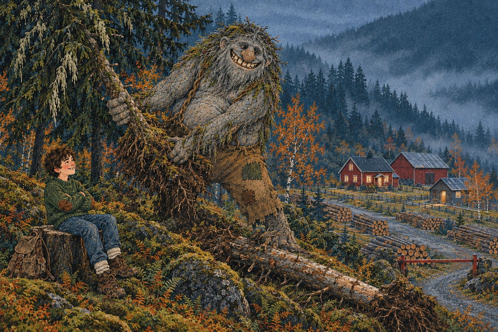
Og hogge kunne han. Han trengte ingen sag. Han vred grantrærne løs med bare hendene, kvistet dem med neglene og la stokkene i pene stabler langs skogsbilveien. Da lyset ble blått mellom stammene, lå det mer tømmer der enn faren hadde fått ut på ti vintrer.
Han trengte ingen sag. Han vred grantrærne løs med bare hendene.
Alt: Trollet vrir et helt grantre løs med bare hendene. Langs skogsbilveien ligger tømmeret i pene stabler, og Askeladden sitter på en stubbe og følger med.
On the steep hillside by the Old Spruce, the Troll twists a whole spruce out of the ground with his bare hands, roots and all, while another lies at his feet stripped of its branches. Along the gravel forest road below, neat stacks of logs stretch away. Askeladden sits on a stump with his backpack beside him and his arms crossed, supervising. Blue dusk is falling between the trunks.
Reference images: - Image 1: model sheet for the Troll, the same character seen from three sides. Keep the Troll's face, hair, body shape, age, colours and clothes exactly as shown. Draw the Troll only once, in the pose this picture needs, and ignore the sheet's layout and plain background. - Image 2: model sheet for Askeladden, the same character seen from three sides. Keep Askeladden's face, hair, body shape, age, colours and clothes exactly as shown. Draw Askeladden only once, in the pose this picture needs, and ignore the sheet's layout and plain background. - Image 3: setting reference for the Old Spruce. Keep its landforms, buildings, colours and key details, and choose the viewpoint and framing this picture needs. Create one new illustration for an illustrated book of modern fairy tales, showing the moment described below. Picture: On the steep hillside by the Old Spruce, the Troll twists a whole spruce out of the ground with his bare hands, roots and all, while another lies at his feet stripped of its branches. Along the gravel forest road below, neat stacks of logs stretch away. Askeladden sits on a stump with his backpack beside him and his arms crossed, supervising. Blue dusk is falling between the trunks. Characters in this picture (nobody else, unless the picture description mentions them): - the Troll: A huge forest troll as big as a delivery van, grey and bristly all over, with cracked grey skin like an old pine trunk, a shaggy, bristly grey haystack of hair full of twigs and moss, a potato nose, eyes like two wet dark stones in a stream, an enormous mouth that stretches from ear to ear with big square teeth, long dangling arms, hands like upturned tree roots and a huge, round belly. He wears baggy, patched sackcloth trousers held up by braces of twisted roots. - Askeladden: A small, wiry lad of about sixteen, shorter than most, with a round face, rosy cheeks, bright brown eyes, a button nose, a dark-brown curly mop of hair and a cheeky gap-toothed grin. He wears a moss-green knitted jumper with brown leather elbow patches, worn jeans, thick oatmeal-coloured wool socks and scuffed brown hiking boots, and carries a small, worn brown canvas backpack. Setting: - the Old Spruce: A steep, dark stand of old spruce on a hillside above a small farm: in the middle, one huge old spruce with long grey beards of lichen hanging from its branches, surrounded by mossy boulders, ferns and a few rust-orange birches, with a gravel forest road and a red barrier below. Grey October mist hangs between the trunks. Story world: Present-day Norway. A small, run-down farm with a red farmhouse, a barn and a cramped kitchen with an old wood stove, where the letters from the bank pile up on the table. Up the hillside behind lies the farm's forest plot, steep and dark with old spruce, with a gravel forest road below it. The troll lives inside the mountain above, behind a stone door that slides aside. Inside, everything is far too big: a fireplace you could park a tractor in, benches as high as Askeladden's chest, a table made of one single stone slab, two iron buckets as big as barrels and a porridge pot deeper than he is tall. Askeladden's cheese is a small, round, soft white fresh cheese in baking paper. The chainsaws are two old orange chainsaws. This story's season, light and colours: A grey, damp October: dark spruce, rust-orange birch leaves, wet green moss and cool grey mist on the hillside, with blue dusk falling early between the trunks. Inside the mountain: warm, flickering firelight on rough grey stone. In the farmhouse kitchen at night: one warm lamp over the table and gold glittering in its light. Art style: Contemporary Scandinavian editorial illustration: flat, graphic shapes with subtle risograph grain and a little hand-drawn texture, clean confident lines and a limited palette of spot inks led by deep petrol blue, with fjord teal, lingonberry red, honey mustard, sage green, warm paper off-white and ink charcoal, like the pages of a risograph-printed book, shifted towards each story's own season, light and colours, in the cool, clear Nordic light of today. Present-day Norway: fjord towns, suburbs, farms with tractors, cabins, ferries, roadside petrol stations, offices and flats, grey rain and bright snow, with people in modern clothes such as rain jackets, knitted sweaters, hoodies, suits and work wear. The magic of the tale appears plainly in this everyday world: trolls, talking animals and enchantments look real and slightly absurd, drawn in the same flat style. Every character has their own face, build, age, hair and clothes exactly as described, so no two characters look alike. Dry humour, careful composition with one focal point and plenty of negative space. The picture fills the whole image, with no border, frame or lettering. Not photorealistic, not 3D, not anime, no glossy digital look. Rules: - No text of any kind: no letters, words, numbers, signatures, captions, speech bubbles, logos, signs or readable screens. Phones and screens show only light or simple shapes. - Every named character must match their model sheet and description exactly: the same face, hair, colours, clothes and proportions. - Suitable for readers of all ages: no blood, wounds or gore, and no killing shown. Show danger and cruelty through atmosphere, posture and suspense, never through injury. - Draw each named character only once. - Show exactly the number of people, animals and things the description asks for, and no extra people. - One clear moment that reads at a glance, as a single full-bleed picture with no border, frame or comic panels.
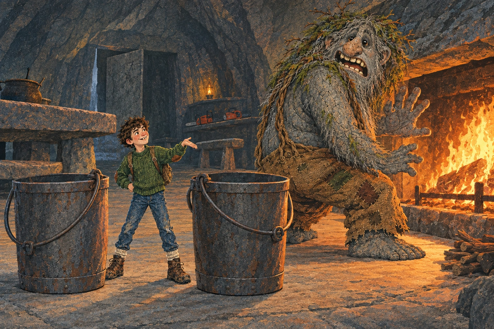
«Det er ikke verdt bryet å gå med de fingerbølene», sa han. «Jeg tar heller med meg hele brønnen.»
«Jeg tar heller med meg hele brønnen.»
Alt: Inne i fjellet står Askeladden mellom to jernbøtter som rekker ham til brystet og vifter med hånda. Ved den enorme peisen snur trollet seg forskrekket.
Inside the mountain, in the Troll's hall where everything is far too big, Askeladden stands between two iron buckets as tall as his chest and waves a hand at them as if they were silly little thimbles. By a fireplace big enough to park a tractor in, the Troll, who was crouching to light the fire, spins round in alarm with his huge hands raised. Warm firelight on grey stone.
Reference images: - Image 1: model sheet for Askeladden, the same character seen from three sides. Keep Askeladden's face, hair, body shape, age, colours and clothes exactly as shown. Draw Askeladden only once, in the pose this picture needs, and ignore the sheet's layout and plain background. - Image 2: model sheet for the Troll, the same character seen from three sides. Keep the Troll's face, hair, body shape, age, colours and clothes exactly as shown. Draw the Troll only once, in the pose this picture needs, and ignore the sheet's layout and plain background. Create one new illustration for an illustrated book of modern fairy tales, showing the moment described below. Picture: Inside the mountain, in the Troll's hall where everything is far too big, Askeladden stands between two iron buckets as tall as his chest and waves a hand at them as if they were silly little thimbles. By a fireplace big enough to park a tractor in, the Troll, who was crouching to light the fire, spins round in alarm with his huge hands raised. Warm firelight on grey stone. Characters in this picture (nobody else, unless the picture description mentions them): - Askeladden: A small, wiry lad of about sixteen, shorter than most, with a round face, rosy cheeks, bright brown eyes, a button nose, a dark-brown curly mop of hair and a cheeky gap-toothed grin. He wears a moss-green knitted jumper with brown leather elbow patches, worn jeans, thick oatmeal-coloured wool socks and scuffed brown hiking boots, and carries a small, worn brown canvas backpack. - the Troll: A huge forest troll as big as a delivery van, grey and bristly all over, with cracked grey skin like an old pine trunk, a shaggy, bristly grey haystack of hair full of twigs and moss, a potato nose, eyes like two wet dark stones in a stream, an enormous mouth that stretches from ear to ear with big square teeth, long dangling arms, hands like upturned tree roots and a huge, round belly. He wears baggy, patched sackcloth trousers held up by braces of twisted roots. Story world: Present-day Norway. A small, run-down farm with a red farmhouse, a barn and a cramped kitchen with an old wood stove, where the letters from the bank pile up on the table. Up the hillside behind lies the farm's forest plot, steep and dark with old spruce, with a gravel forest road below it. The troll lives inside the mountain above, behind a stone door that slides aside. Inside, everything is far too big: a fireplace you could park a tractor in, benches as high as Askeladden's chest, a table made of one single stone slab, two iron buckets as big as barrels and a porridge pot deeper than he is tall. Askeladden's cheese is a small, round, soft white fresh cheese in baking paper. The chainsaws are two old orange chainsaws. This story's season, light and colours: A grey, damp October: dark spruce, rust-orange birch leaves, wet green moss and cool grey mist on the hillside, with blue dusk falling early between the trunks. Inside the mountain: warm, flickering firelight on rough grey stone. In the farmhouse kitchen at night: one warm lamp over the table and gold glittering in its light. Art style: Contemporary Scandinavian editorial illustration: flat, graphic shapes with subtle risograph grain and a little hand-drawn texture, clean confident lines and a limited palette of spot inks led by deep petrol blue, with fjord teal, lingonberry red, honey mustard, sage green, warm paper off-white and ink charcoal, like the pages of a risograph-printed book, shifted towards each story's own season, light and colours, in the cool, clear Nordic light of today. Present-day Norway: fjord towns, suburbs, farms with tractors, cabins, ferries, roadside petrol stations, offices and flats, grey rain and bright snow, with people in modern clothes such as rain jackets, knitted sweaters, hoodies, suits and work wear. The magic of the tale appears plainly in this everyday world: trolls, talking animals and enchantments look real and slightly absurd, drawn in the same flat style. Every character has their own face, build, age, hair and clothes exactly as described, so no two characters look alike. Dry humour, careful composition with one focal point and plenty of negative space. The picture fills the whole image, with no border, frame or lettering. Not photorealistic, not 3D, not anime, no glossy digital look. Rules: - No text of any kind: no letters, words, numbers, signatures, captions, speech bubbles, logos, signs or readable screens. Phones and screens show only light or simple shapes. - Every named character must match their model sheet and description exactly: the same face, hair, colours, clothes and proportions. - Suitable for readers of all ages: no blood, wounds or gore, and no killing shown. Show danger and cruelty through atmosphere, posture and suspense, never through injury. - Draw each named character only once. - Show exactly the number of people, animals and things the description asks for, and no extra people. - One clear moment that reads at a glance, as a single full-bleed picture with no border, frame or comic panels.
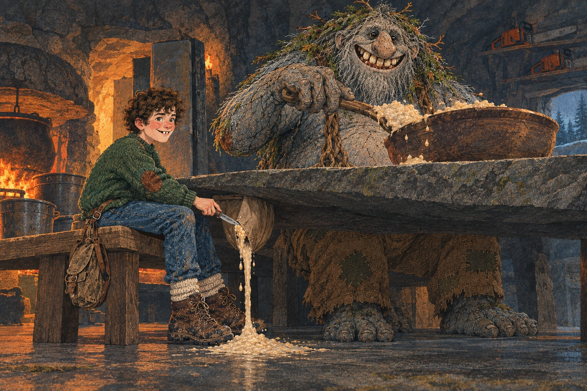
Da sekken var full, tok han fram tollekniven, bøyde seg ned og skar en lang flenge i bunnen. Grøten rant ut og la seg i en klissete dam på gulvet.
Grøten rant ut og la seg i en klissete dam på gulvet.
Alt: Askeladden sitter ved det store steinbordet med sekken bundet under bordkanten, og grøten renner ut av en flenge i bunnen. Ved siden av ham spiser trollet som en snøfreser.
At the Troll's table, one single huge stone slab, seen low from the side so both above and below the tabletop show: Askeladden sits calmly on the chest-high bench with his backpack tied to his belt under the table edge, and has just slit its bottom with his pocket knife, so porridge oozes out into a sticky puddle on the floor. Beside him the Troll shovels porridge from a huge bowl like a snowblower.
Reference images: - Image 1: model sheet for Askeladden, the same character seen from three sides. Keep Askeladden's face, hair, body shape, age, colours and clothes exactly as shown. Draw Askeladden only once, in the pose this picture needs, and ignore the sheet's layout and plain background. - Image 2: model sheet for the Troll, the same character seen from three sides. Keep the Troll's face, hair, body shape, age, colours and clothes exactly as shown. Draw the Troll only once, in the pose this picture needs, and ignore the sheet's layout and plain background. Create one new illustration for an illustrated book of modern fairy tales, showing the moment described below. Picture: At the Troll's table, one single huge stone slab, seen low from the side so both above and below the tabletop show: Askeladden sits calmly on the chest-high bench with his backpack tied to his belt under the table edge, and has just slit its bottom with his pocket knife, so porridge oozes out into a sticky puddle on the floor. Beside him the Troll shovels porridge from a huge bowl like a snowblower. Characters in this picture (nobody else, unless the picture description mentions them): - Askeladden: A small, wiry lad of about sixteen, shorter than most, with a round face, rosy cheeks, bright brown eyes, a button nose, a dark-brown curly mop of hair and a cheeky gap-toothed grin. He wears a moss-green knitted jumper with brown leather elbow patches, worn jeans, thick oatmeal-coloured wool socks and scuffed brown hiking boots, and carries a small, worn brown canvas backpack. - the Troll: A huge forest troll as big as a delivery van, grey and bristly all over, with cracked grey skin like an old pine trunk, a shaggy, bristly grey haystack of hair full of twigs and moss, a potato nose, eyes like two wet dark stones in a stream, an enormous mouth that stretches from ear to ear with big square teeth, long dangling arms, hands like upturned tree roots and a huge, round belly. He wears baggy, patched sackcloth trousers held up by braces of twisted roots. Story world: Present-day Norway. A small, run-down farm with a red farmhouse, a barn and a cramped kitchen with an old wood stove, where the letters from the bank pile up on the table. Up the hillside behind lies the farm's forest plot, steep and dark with old spruce, with a gravel forest road below it. The troll lives inside the mountain above, behind a stone door that slides aside. Inside, everything is far too big: a fireplace you could park a tractor in, benches as high as Askeladden's chest, a table made of one single stone slab, two iron buckets as big as barrels and a porridge pot deeper than he is tall. Askeladden's cheese is a small, round, soft white fresh cheese in baking paper. The chainsaws are two old orange chainsaws. This story's season, light and colours: A grey, damp October: dark spruce, rust-orange birch leaves, wet green moss and cool grey mist on the hillside, with blue dusk falling early between the trunks. Inside the mountain: warm, flickering firelight on rough grey stone. In the farmhouse kitchen at night: one warm lamp over the table and gold glittering in its light. Art style: Contemporary Scandinavian editorial illustration: flat, graphic shapes with subtle risograph grain and a little hand-drawn texture, clean confident lines and a limited palette of spot inks led by deep petrol blue, with fjord teal, lingonberry red, honey mustard, sage green, warm paper off-white and ink charcoal, like the pages of a risograph-printed book, shifted towards each story's own season, light and colours, in the cool, clear Nordic light of today. Present-day Norway: fjord towns, suburbs, farms with tractors, cabins, ferries, roadside petrol stations, offices and flats, grey rain and bright snow, with people in modern clothes such as rain jackets, knitted sweaters, hoodies, suits and work wear. The magic of the tale appears plainly in this everyday world: trolls, talking animals and enchantments look real and slightly absurd, drawn in the same flat style. Every character has their own face, build, age, hair and clothes exactly as described, so no two characters look alike. Dry humour, careful composition with one focal point and plenty of negative space. The picture fills the whole image, with no border, frame or lettering. Not photorealistic, not 3D, not anime, no glossy digital look. Rules: - No text of any kind: no letters, words, numbers, signatures, captions, speech bubbles, logos, signs or readable screens. Phones and screens show only light or simple shapes. - Every named character must match their model sheet and description exactly: the same face, hair, colours, clothes and proportions. - Suitable for readers of all ages: no blood, wounds or gore, and no killing shown. Show danger and cruelty through atmosphere, posture and suspense, never through injury. - Draw each named character only once. - Show exactly the number of people, animals and things the description asks for, and no extra people. - One clear moment that reads at a glance, as a single full-bleed picture with no border, frame or comic panels.
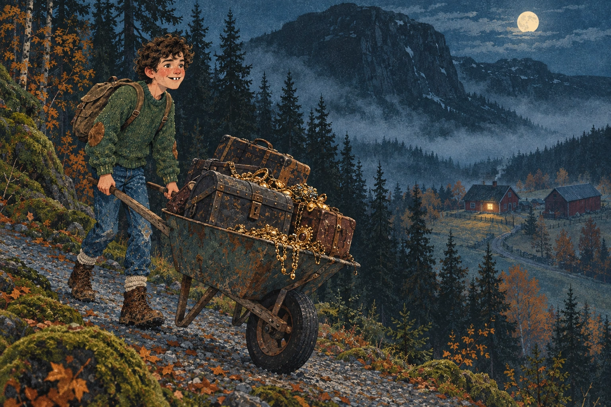
Askeladden hentet trillebåra på låven. Det ble tre turer den natta.
Askeladden hentet trillebåra på låven. Det ble tre turer den natta.
Alt: Om natten triller Askeladden en trillebår full av kister med sølv, gullsmykker og en koffert nedover skogsbilveien mot gården.
Late at night on the gravel forest road below the dark mountain, Askeladden pushes a creaking old wheelbarrow piled high with iron-bound chests of silver, tangled gold jewellery and a battered suitcase, down towards the single lit window of the little farm far below. Moonlight and thin mist between the spruces.
Reference images: - Image 1: model sheet for Askeladden, the same character seen from three sides. Keep Askeladden's face, hair, body shape, age, colours and clothes exactly as shown. Draw Askeladden only once, in the pose this picture needs, and ignore the sheet's layout and plain background. Create one new illustration for an illustrated book of modern fairy tales, showing the moment described below. Picture: Late at night on the gravel forest road below the dark mountain, Askeladden pushes a creaking old wheelbarrow piled high with iron-bound chests of silver, tangled gold jewellery and a battered suitcase, down towards the single lit window of the little farm far below. Moonlight and thin mist between the spruces. Characters in this picture (nobody else, unless the picture description mentions them): - Askeladden: A small, wiry lad of about sixteen, shorter than most, with a round face, rosy cheeks, bright brown eyes, a button nose, a dark-brown curly mop of hair and a cheeky gap-toothed grin. He wears a moss-green knitted jumper with brown leather elbow patches, worn jeans, thick oatmeal-coloured wool socks and scuffed brown hiking boots, and carries a small, worn brown canvas backpack. Story world: Present-day Norway. A small, run-down farm with a red farmhouse, a barn and a cramped kitchen with an old wood stove, where the letters from the bank pile up on the table. Up the hillside behind lies the farm's forest plot, steep and dark with old spruce, with a gravel forest road below it. The troll lives inside the mountain above, behind a stone door that slides aside. Inside, everything is far too big: a fireplace you could park a tractor in, benches as high as Askeladden's chest, a table made of one single stone slab, two iron buckets as big as barrels and a porridge pot deeper than he is tall. Askeladden's cheese is a small, round, soft white fresh cheese in baking paper. The chainsaws are two old orange chainsaws. This story's season, light and colours: A grey, damp October: dark spruce, rust-orange birch leaves, wet green moss and cool grey mist on the hillside, with blue dusk falling early between the trunks. Inside the mountain: warm, flickering firelight on rough grey stone. In the farmhouse kitchen at night: one warm lamp over the table and gold glittering in its light. Art style: Contemporary Scandinavian editorial illustration: flat, graphic shapes with subtle risograph grain and a little hand-drawn texture, clean confident lines and a limited palette of spot inks led by deep petrol blue, with fjord teal, lingonberry red, honey mustard, sage green, warm paper off-white and ink charcoal, like the pages of a risograph-printed book, shifted towards each story's own season, light and colours, in the cool, clear Nordic light of today. Present-day Norway: fjord towns, suburbs, farms with tractors, cabins, ferries, roadside petrol stations, offices and flats, grey rain and bright snow, with people in modern clothes such as rain jackets, knitted sweaters, hoodies, suits and work wear. The magic of the tale appears plainly in this everyday world: trolls, talking animals and enchantments look real and slightly absurd, drawn in the same flat style. Every character has their own face, build, age, hair and clothes exactly as described, so no two characters look alike. Dry humour, careful composition with one focal point and plenty of negative space. The picture fills the whole image, with no border, frame or lettering. Not photorealistic, not 3D, not anime, no glossy digital look. Rules: - No text of any kind: no letters, words, numbers, signatures, captions, speech bubbles, logos, signs or readable screens. Phones and screens show only light or simple shapes. - Every named character must match their model sheet and description exactly: the same face, hair, colours, clothes and proportions. - Suitable for readers of all ages: no blood, wounds or gore, and no killing shown. Show danger and cruelty through atmosphere, posture and suspense, never through injury. - Draw each named character only once. - Show exactly the number of people, animals and things the description asks for, and no extra people. - One clear moment that reads at a glance, as a single full-bleed picture with no border, frame or comic panels.
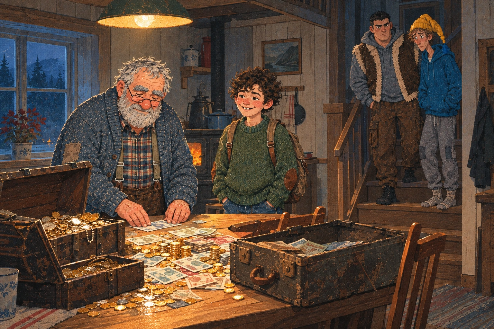
Faren hørte ikke på noen av dem. Han dro den øverste purringen fram under en gullkjede, glattet den ut og la den pent til side. Noe i ansiktet hans som hadde vært spent i mange år, slapp taket.
Noe i ansiktet hans som hadde vært spent i mange år, slapp taket.
Alt: Kjøkkenbordet er fullt av kister, en koffert og gullmynter over regningene. Faren glatter ut en purring og legger den pent til side. Askeladden smiler, og brødrene står i trappa.
In the farmhouse kitchen late at night, the table is covered in open chests of silver, a battered suitcase and gold coins scattered over a spread of bills, glittering under the lamp. The Father smooths out one crumpled bill and lays it neatly aside, his tired face finally relaxing. Askeladden stands by the table with a small smile, and on the stairs the Eldest Brother and the Middle Brother stand in their socks, grumbling.
Reference images: - Image 1: model sheet for the Father, the same character seen from three sides. Keep the Father's face, hair, body shape, age, colours and clothes exactly as shown. Draw the Father only once, in the pose this picture needs, and ignore the sheet's layout and plain background. - Image 2: model sheet for Askeladden, the same character seen from three sides. Keep Askeladden's face, hair, body shape, age, colours and clothes exactly as shown. Draw Askeladden only once, in the pose this picture needs, and ignore the sheet's layout and plain background. - Image 3: model sheet for the Eldest Brother, the same character seen from three sides. Keep the Eldest Brother's face, hair, body shape, age, colours and clothes exactly as shown. Draw the Eldest Brother only once, in the pose this picture needs, and ignore the sheet's layout and plain background. - Image 4: model sheet for the Middle Brother, the same character seen from three sides. Keep the Middle Brother's face, hair, body shape, age, colours and clothes exactly as shown. Draw the Middle Brother only once, in the pose this picture needs, and ignore the sheet's layout and plain background. Create one new illustration for an illustrated book of modern fairy tales, showing the moment described below. Picture: In the farmhouse kitchen late at night, the table is covered in open chests of silver, a battered suitcase and gold coins scattered over a spread of bills, glittering under the lamp. The Father smooths out one crumpled bill and lays it neatly aside, his tired face finally relaxing. Askeladden stands by the table with a small smile, and on the stairs the Eldest Brother and the Middle Brother stand in their socks, grumbling. Characters in this picture (nobody else, unless the picture description mentions them): - the Father: A short, stocky, bow-legged old farmer of about seventy with a stiff back, a broad, weather-beaten, wrinkled face, a big bulbous nose, small eyes under shaggy grey eyebrows and a thick, bristly grey beard cut short and square. He wears reading glasses far down his nose, a patched grey-blue wool cardigan with horn buttons over a checked flannel shirt, brown work trousers with braces and thick grey wool socks. - Askeladden: A small, wiry lad of about sixteen, shorter than most, with a round face, rosy cheeks, bright brown eyes, a button nose, a dark-brown curly mop of hair and a cheeky gap-toothed grin. He wears a moss-green knitted jumper with brown leather elbow patches, worn jeans, thick oatmeal-coloured wool socks and scuffed brown hiking boots, and carries a small, worn brown canvas backpack. - the Eldest Brother: A hulking, broad-shouldered young man of about twenty-two with a thick neck, a broad, flat face, a crooked nose, small pale-blue eyes, heavy black eyebrows and short, bristly black hair cropped close to his head. He wears a shaggy, sheepskin-lined sleeveless vest over a grey hoodie, baggy brown cargo trousers and heavy black boots. - the Middle Brother: A thin, jittery young man of about twenty with a long neck, a narrow face, a long pointed nose, big worried eyes and frizzy light-brown hair. On his head sits a long, floppy, bright-yellow knitted beanie with a blue tassel. He wears a baggy blue hoodie, patched grey tracksuit trousers and wooden clogs. Story world: Present-day Norway. A small, run-down farm with a red farmhouse, a barn and a cramped kitchen with an old wood stove, where the letters from the bank pile up on the table. Up the hillside behind lies the farm's forest plot, steep and dark with old spruce, with a gravel forest road below it. The troll lives inside the mountain above, behind a stone door that slides aside. Inside, everything is far too big: a fireplace you could park a tractor in, benches as high as Askeladden's chest, a table made of one single stone slab, two iron buckets as big as barrels and a porridge pot deeper than he is tall. Askeladden's cheese is a small, round, soft white fresh cheese in baking paper. The chainsaws are two old orange chainsaws. This story's season, light and colours: A grey, damp October: dark spruce, rust-orange birch leaves, wet green moss and cool grey mist on the hillside, with blue dusk falling early between the trunks. Inside the mountain: warm, flickering firelight on rough grey stone. In the farmhouse kitchen at night: one warm lamp over the table and gold glittering in its light. Art style: Contemporary Scandinavian editorial illustration: flat, graphic shapes with subtle risograph grain and a little hand-drawn texture, clean confident lines and a limited palette of spot inks led by deep petrol blue, with fjord teal, lingonberry red, honey mustard, sage green, warm paper off-white and ink charcoal, like the pages of a risograph-printed book, shifted towards each story's own season, light and colours, in the cool, clear Nordic light of today. Present-day Norway: fjord towns, suburbs, farms with tractors, cabins, ferries, roadside petrol stations, offices and flats, grey rain and bright snow, with people in modern clothes such as rain jackets, knitted sweaters, hoodies, suits and work wear. The magic of the tale appears plainly in this everyday world: trolls, talking animals and enchantments look real and slightly absurd, drawn in the same flat style. Every character has their own face, build, age, hair and clothes exactly as described, so no two characters look alike. Dry humour, careful composition with one focal point and plenty of negative space. The picture fills the whole image, with no border, frame or lettering. Not photorealistic, not 3D, not anime, no glossy digital look. Rules: - No text of any kind: no letters, words, numbers, signatures, captions, speech bubbles, logos, signs or readable screens. Phones and screens show only light or simple shapes. - Every named character must match their model sheet and description exactly: the same face, hair, colours, clothes and proportions. - Suitable for readers of all ages: no blood, wounds or gore, and no killing shown. Show danger and cruelty through atmosphere, posture and suspense, never through injury. - Draw each named character only once. - Show exactly the number of people, animals and things the description asks for, and no extra people. - One clear moment that reads at a glance, as a single full-bleed picture with no border, frame or comic panels.
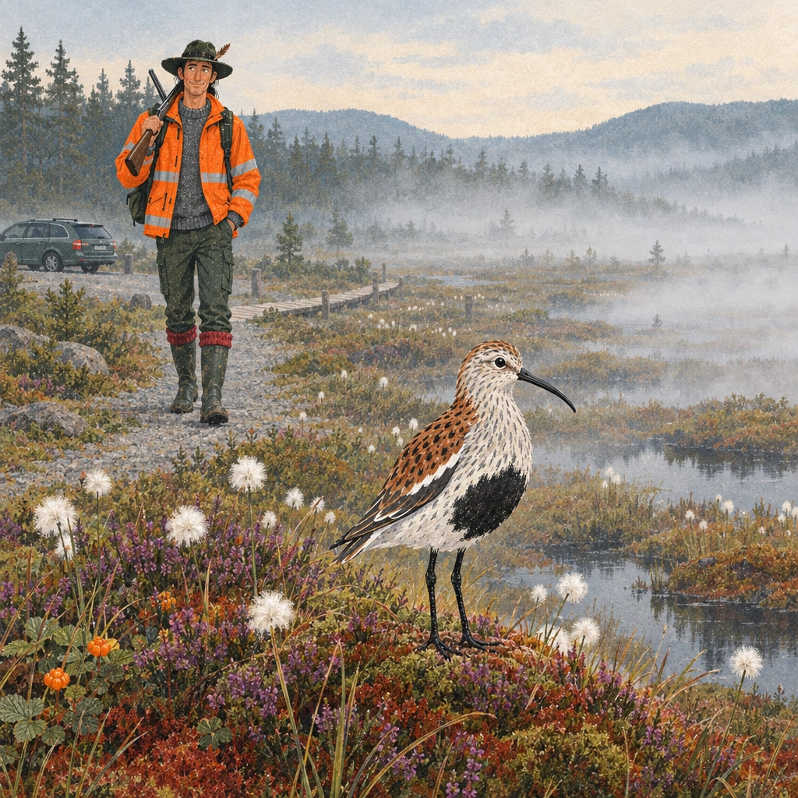
Myrsnipemora er sikker på at ungene hennes er de vakreste på hele myra.
Alt: Ei lita myrsnipe står stolt på en lyngtue mellom myrull. Bak henne kommer en jeger i refleksjakke gående langs grusstien med hagla over skulderen.
Early morning at the misty edge of the bog: the Dunlin, tiny and proud, stands on a tussock of heather among white cotton grass with her chest puffed out and her head held high. Behind her, along the gravel path from the car park, the Hunter walks in his orange hi-vis jacket with his shotgun over his shoulder, not yet noticing her. Fog drifts over the dark pools.
Reference images: - Image 1: model sheet for the Dunlin, the same character seen from three sides. Keep the Dunlin's face, hair, body shape, age, colours and clothes exactly as shown. Draw the Dunlin only once, in the pose this picture needs, and ignore the sheet's layout and plain background. - Image 2: model sheet for the Hunter, the same character seen from three sides. Keep the Hunter's face, hair, body shape, age, colours and clothes exactly as shown. Draw the Hunter only once, in the pose this picture needs, and ignore the sheet's layout and plain background. Create the cover illustration for an illustrated book of modern fairy tales, in a square format. Do not write a title or any other text on it. Picture: Early morning at the misty edge of the bog: the Dunlin, tiny and proud, stands on a tussock of heather among white cotton grass with her chest puffed out and her head held high. Behind her, along the gravel path from the car park, the Hunter walks in his orange hi-vis jacket with his shotgun over his shoulder, not yet noticing her. Fog drifts over the dark pools. Characters in this picture (nobody else, unless the picture description mentions them): - the Dunlin: A small, round-bodied dunlin in summer plumage, about the size of a starling, with a rusty-chestnut back speckled with black, a pale head and breast finely streaked with grey, a big black patch on her white belly, a long, slightly down-curved black beak, thin black legs and bright black eyes. When she spreads her wings, a white stripe shows along each one. A brave, proud little mother. - the Hunter: A tall, lean, weather-tanned hunter of about thirty with a long, friendly face, a slightly crooked nose, crinkly grey-blue eyes, a clean-shaven chin and long, straight jet-black hair tied back in a ponytail. He wears a wide-brimmed dark-green hat with a small brown feather, a bright orange hi-vis jacket with reflective stripes over a grey wool jumper, dark-green outdoor trousers and green rubber boots with red wool socks folded over the tops, and carries a rucksack with a steel thermos in the side pocket and a shotgun over his shoulder. Story world: Present-day Norway, where the birds can talk. A wide, open bog lies at the edge of a pine forest, with a gravel path and a stretch of wooden boardwalk leading out from a small gravel car park where one dark-green estate car is parked. The bog has tufts of white cotton grass, soft moss, heather, cloudberry plants and small dark pools, with low forested hills around it. The dunlin is a real, natural bird, no bigger than a starling. This story's season, light and colours: A misty late-summer day on the bog: grey dawn fog over dark pools that clears to a hazy, warm afternoon, with white cotton grass, heather just coming into purple bloom and rusty-red bog moss. The hunter's orange hi-vis jacket is the brightest colour in the landscape. Art style: Contemporary Scandinavian editorial illustration: flat, graphic shapes with subtle risograph grain and a little hand-drawn texture, clean confident lines and a limited palette of spot inks led by deep petrol blue, with fjord teal, lingonberry red, honey mustard, sage green, warm paper off-white and ink charcoal, like the pages of a risograph-printed book, shifted towards each story's own season, light and colours, in the cool, clear Nordic light of today. Present-day Norway: fjord towns, suburbs, farms with tractors, cabins, ferries, roadside petrol stations, offices and flats, grey rain and bright snow, with people in modern clothes such as rain jackets, knitted sweaters, hoodies, suits and work wear. The magic of the tale appears plainly in this everyday world: trolls, talking animals and enchantments look real and slightly absurd, drawn in the same flat style. Every character has their own face, build, age, hair and clothes exactly as described, so no two characters look alike. Dry humour, careful composition with one focal point and plenty of negative space. The picture fills the whole image, with no border, frame or lettering. Not photorealistic, not 3D, not anime, no glossy digital look. Rules: - No text of any kind: no letters, words, numbers, signatures, captions, speech bubbles, logos, signs or readable screens. Phones and screens show only light or simple shapes. - Every named character must match their model sheet and description exactly: the same face, hair, colours, clothes and proportions. - Suitable for readers of all ages: no blood, wounds or gore, and no killing shown. Show danger and cruelty through atmosphere, posture and suspense, never through injury. - Draw each named character only once. - Show exactly the number of people, animals and things the description asks for, and no extra people. - One clear moment that reads at a glance, as a single full-bleed picture with no border, frame or comic panels.
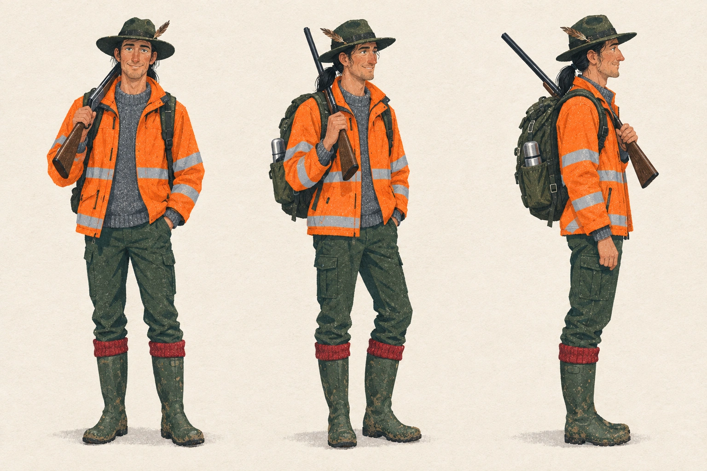
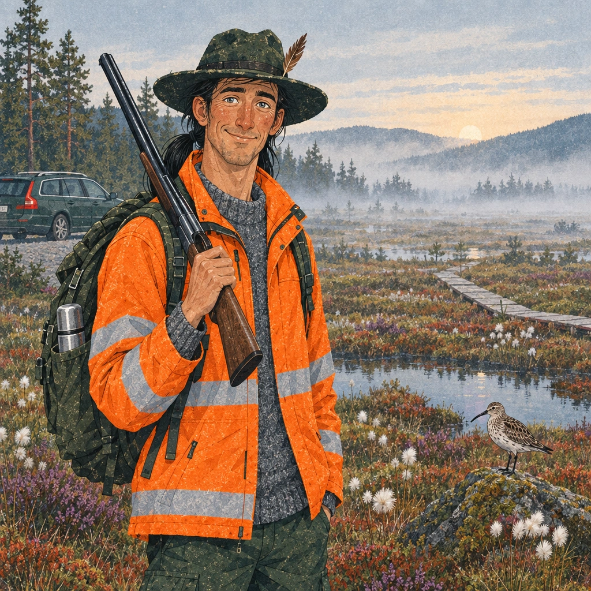
En moderne jeger på tur i skogen, praktisk antrukket og sikker på egen vurdering, helt til han konfronteres med sin egen logikk.
A tall, lean, weather-tanned hunter of about thirty with a long, friendly face, a slightly crooked nose, crinkly grey-blue eyes, a clean-shaven chin and long, straight jet-black hair tied back in a ponytail. He wears a wide-brimmed dark-green hat with a small brown feather, a bright orange hi-vis jacket with reflective stripes over a grey wool jumper, dark-green outdoor trousers and green rubber boots with red wool socks folded over the tops, and carries a rucksack with a steel thermos in the side pocket and a shotgun over his shoulder.
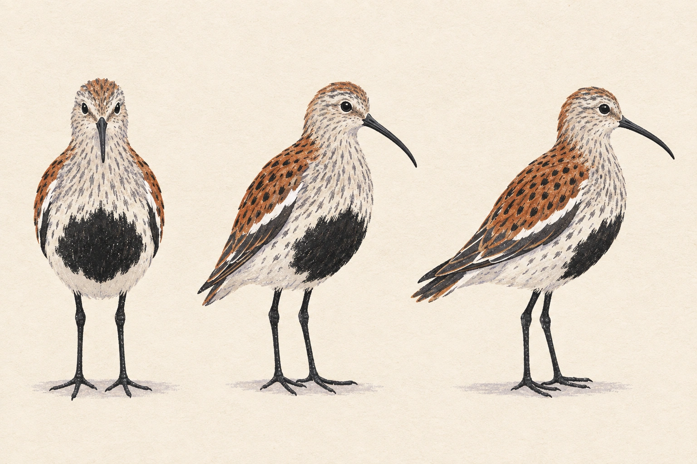
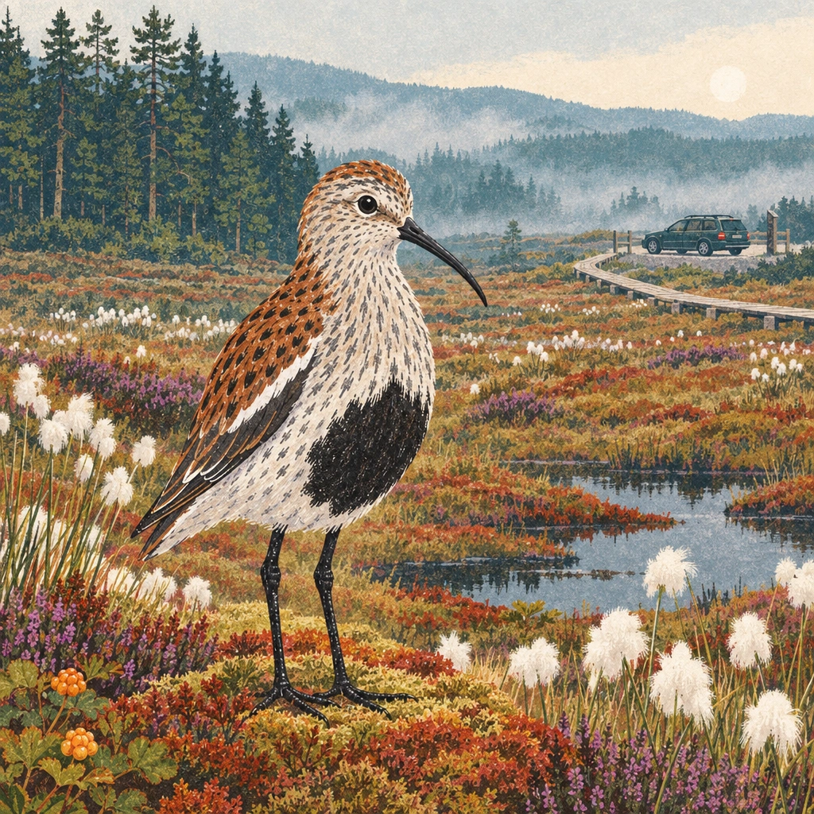
En liten, modig mor som forsvarer ungene sine og leverer historien sin moral med rolig selvfølgelighet.
A small, round-bodied dunlin in summer plumage, about the size of a starling, with a rusty-chestnut back speckled with black, a pale head and breast finely streaked with grey, a big black patch on her white belly, a long, slightly down-curved black beak, thin black legs and bright black eyes. When she spreads her wings, a white stripe shows along each one. A brave, proud little mother.
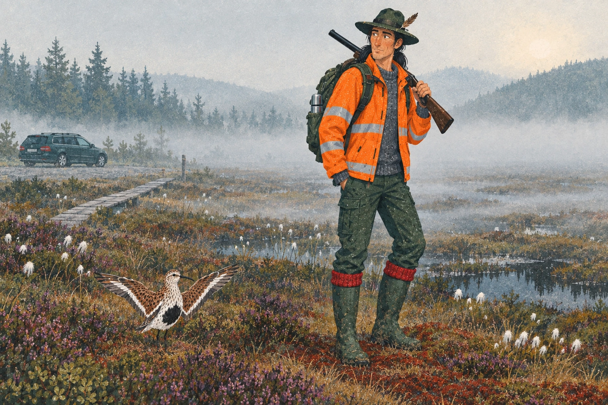
Jegeren så seg rundt etter et kamera. Det var ingen der. Bare tåka over myra og en liten, brun fugl som ventet på svar.
Jegeren så seg rundt etter et kamera. Det var ingen der.
Alt: Ei lita myrsnipe har landet foran støvlene til en jeger i refleksjakke og brer ut vingene. Jegeren ser seg mistenksomt rundt. Tåka ligger over myra.
At the foggy edge of the bog just after dawn, the Dunlin has landed on the heather right in front of the Hunter's green rubber boots, her wings spread wide like a stop sign, waiting for an answer. The Hunter, his shotgun still over his shoulder, glances suspiciously left and right, looking for a hidden camera. There is no one else, only grey fog over the dark pools and the cotton grass.
Reference images: - Image 1: model sheet for the Dunlin, the same character seen from three sides. Keep the Dunlin's face, hair, body shape, age, colours and clothes exactly as shown. Draw the Dunlin only once, in the pose this picture needs, and ignore the sheet's layout and plain background. - Image 2: model sheet for the Hunter, the same character seen from three sides. Keep the Hunter's face, hair, body shape, age, colours and clothes exactly as shown. Draw the Hunter only once, in the pose this picture needs, and ignore the sheet's layout and plain background. Create one new illustration for an illustrated book of modern fairy tales, showing the moment described below. Picture: At the foggy edge of the bog just after dawn, the Dunlin has landed on the heather right in front of the Hunter's green rubber boots, her wings spread wide like a stop sign, waiting for an answer. The Hunter, his shotgun still over his shoulder, glances suspiciously left and right, looking for a hidden camera. There is no one else, only grey fog over the dark pools and the cotton grass. Characters in this picture (nobody else, unless the picture description mentions them): - the Dunlin: A small, round-bodied dunlin in summer plumage, about the size of a starling, with a rusty-chestnut back speckled with black, a pale head and breast finely streaked with grey, a big black patch on her white belly, a long, slightly down-curved black beak, thin black legs and bright black eyes. When she spreads her wings, a white stripe shows along each one. A brave, proud little mother. - the Hunter: A tall, lean, weather-tanned hunter of about thirty with a long, friendly face, a slightly crooked nose, crinkly grey-blue eyes, a clean-shaven chin and long, straight jet-black hair tied back in a ponytail. He wears a wide-brimmed dark-green hat with a small brown feather, a bright orange hi-vis jacket with reflective stripes over a grey wool jumper, dark-green outdoor trousers and green rubber boots with red wool socks folded over the tops, and carries a rucksack with a steel thermos in the side pocket and a shotgun over his shoulder. Story world: Present-day Norway, where the birds can talk. A wide, open bog lies at the edge of a pine forest, with a gravel path and a stretch of wooden boardwalk leading out from a small gravel car park where one dark-green estate car is parked. The bog has tufts of white cotton grass, soft moss, heather, cloudberry plants and small dark pools, with low forested hills around it. The dunlin is a real, natural bird, no bigger than a starling. This story's season, light and colours: A misty late-summer day on the bog: grey dawn fog over dark pools that clears to a hazy, warm afternoon, with white cotton grass, heather just coming into purple bloom and rusty-red bog moss. The hunter's orange hi-vis jacket is the brightest colour in the landscape. Art style: Contemporary Scandinavian editorial illustration: flat, graphic shapes with subtle risograph grain and a little hand-drawn texture, clean confident lines and a limited palette of spot inks led by deep petrol blue, with fjord teal, lingonberry red, honey mustard, sage green, warm paper off-white and ink charcoal, like the pages of a risograph-printed book, shifted towards each story's own season, light and colours, in the cool, clear Nordic light of today. Present-day Norway: fjord towns, suburbs, farms with tractors, cabins, ferries, roadside petrol stations, offices and flats, grey rain and bright snow, with people in modern clothes such as rain jackets, knitted sweaters, hoodies, suits and work wear. The magic of the tale appears plainly in this everyday world: trolls, talking animals and enchantments look real and slightly absurd, drawn in the same flat style. Every character has their own face, build, age, hair and clothes exactly as described, so no two characters look alike. Dry humour, careful composition with one focal point and plenty of negative space. The picture fills the whole image, with no border, frame or lettering. Not photorealistic, not 3D, not anime, no glossy digital look. Rules: - No text of any kind: no letters, words, numbers, signatures, captions, speech bubbles, logos, signs or readable screens. Phones and screens show only light or simple shapes. - Every named character must match their model sheet and description exactly: the same face, hair, colours, clothes and proportions. - Suitable for readers of all ages: no blood, wounds or gore, and no killing shown. Show danger and cruelty through atmosphere, posture and suspense, never through injury. - Draw each named character only once. - Show exactly the number of people, animals and things the description asks for, and no extra people. - One clear moment that reads at a glance, as a single full-bleed picture with no border, frame or comic panels.
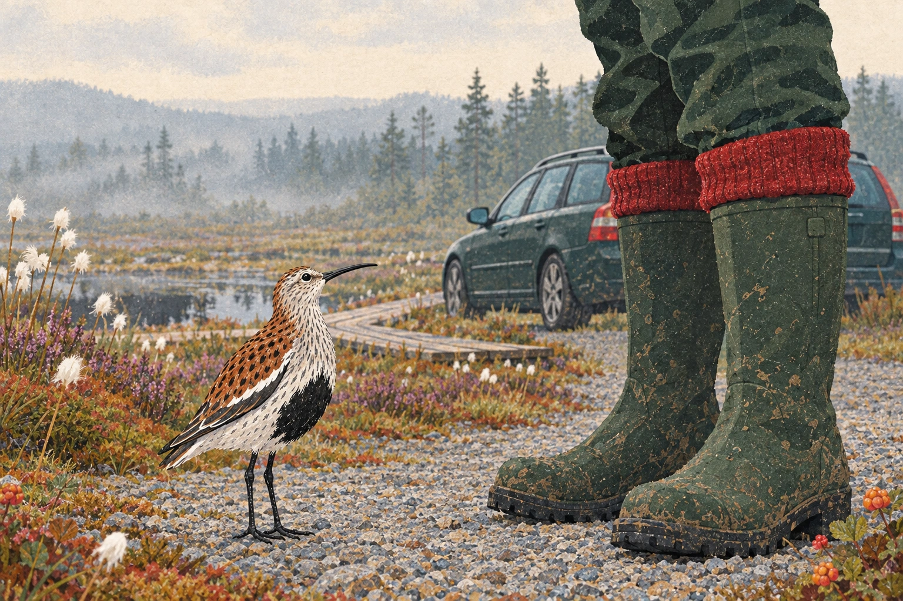
«Å ja», sa hun. «Vet du ikke at hver synes best om sine barn?»
«Vet du ikke at hver synes best om sine barn?»
Alt: Sett nede fra grusen står myrsnipa rank foran jegerens gummistøvler og svarer rolig. Jegeren synes bare fra knærne og ned, og bak ham står en bil på parkeringsplassen.
Seen from low down at bird height on the gravel path near the car park on a hazy afternoon: the small Dunlin stands very straight on the gravel, her head lifted high, answering calmly. In front of her, filling one side of the picture, stand the Hunter's green rubber boots with red socks and his dark-green trousers, seen only from the knees down. A dark-green estate car is parked in the background, and cotton grass nods at the edge of the path.
Reference images: - Image 1: model sheet for the Dunlin, the same character seen from three sides. Keep the Dunlin's face, hair, body shape, age, colours and clothes exactly as shown. Draw the Dunlin only once, in the pose this picture needs, and ignore the sheet's layout and plain background. - Image 2: model sheet for the Hunter, the same character seen from three sides. Keep the Hunter's face, hair, body shape, age, colours and clothes exactly as shown. Draw the Hunter only once, in the pose this picture needs, and ignore the sheet's layout and plain background. Create one new illustration for an illustrated book of modern fairy tales, showing the moment described below. Picture: Seen from low down at bird height on the gravel path near the car park on a hazy afternoon: the small Dunlin stands very straight on the gravel, her head lifted high, answering calmly. In front of her, filling one side of the picture, stand the Hunter's green rubber boots with red socks and his dark-green trousers, seen only from the knees down. A dark-green estate car is parked in the background, and cotton grass nods at the edge of the path. Characters in this picture (nobody else, unless the picture description mentions them): - the Dunlin: A small, round-bodied dunlin in summer plumage, about the size of a starling, with a rusty-chestnut back speckled with black, a pale head and breast finely streaked with grey, a big black patch on her white belly, a long, slightly down-curved black beak, thin black legs and bright black eyes. When she spreads her wings, a white stripe shows along each one. A brave, proud little mother. - the Hunter: A tall, lean, weather-tanned hunter of about thirty with a long, friendly face, a slightly crooked nose, crinkly grey-blue eyes, a clean-shaven chin and long, straight jet-black hair tied back in a ponytail. He wears a wide-brimmed dark-green hat with a small brown feather, a bright orange hi-vis jacket with reflective stripes over a grey wool jumper, dark-green outdoor trousers and green rubber boots with red wool socks folded over the tops, and carries a rucksack with a steel thermos in the side pocket and a shotgun over his shoulder. Story world: Present-day Norway, where the birds can talk. A wide, open bog lies at the edge of a pine forest, with a gravel path and a stretch of wooden boardwalk leading out from a small gravel car park where one dark-green estate car is parked. The bog has tufts of white cotton grass, soft moss, heather, cloudberry plants and small dark pools, with low forested hills around it. The dunlin is a real, natural bird, no bigger than a starling. This story's season, light and colours: A misty late-summer day on the bog: grey dawn fog over dark pools that clears to a hazy, warm afternoon, with white cotton grass, heather just coming into purple bloom and rusty-red bog moss. The hunter's orange hi-vis jacket is the brightest colour in the landscape. Art style: Contemporary Scandinavian editorial illustration: flat, graphic shapes with subtle risograph grain and a little hand-drawn texture, clean confident lines and a limited palette of spot inks led by deep petrol blue, with fjord teal, lingonberry red, honey mustard, sage green, warm paper off-white and ink charcoal, like the pages of a risograph-printed book, shifted towards each story's own season, light and colours, in the cool, clear Nordic light of today. Present-day Norway: fjord towns, suburbs, farms with tractors, cabins, ferries, roadside petrol stations, offices and flats, grey rain and bright snow, with people in modern clothes such as rain jackets, knitted sweaters, hoodies, suits and work wear. The magic of the tale appears plainly in this everyday world: trolls, talking animals and enchantments look real and slightly absurd, drawn in the same flat style. Every character has their own face, build, age, hair and clothes exactly as described, so no two characters look alike. Dry humour, careful composition with one focal point and plenty of negative space. The picture fills the whole image, with no border, frame or lettering. Not photorealistic, not 3D, not anime, no glossy digital look. Rules: - No text of any kind: no letters, words, numbers, signatures, captions, speech bubbles, logos, signs or readable screens. Phones and screens show only light or simple shapes. - Every named character must match their model sheet and description exactly: the same face, hair, colours, clothes and proportions. - Suitable for readers of all ages: no blood, wounds or gore, and no killing shown. Show danger and cruelty through atmosphere, posture and suspense, never through injury. - Draw each named character only once. - Show exactly the number of people, animals and things the description asks for, and no extra people. - One clear moment that reads at a glance, as a single full-bleed picture with no border, frame or comic panels.
Svir det, er det fisken som biter.
Alt: Bjørnen sitter ute på isen mellom tre isfiskere på bøtter og har halen nede i et hull. Isfiskerne stirrer på ham. Langt bak på parkeringsplassen lusker reven av sted med fiskeposen sin.
The Frozen Lake on a grey late-November morning. Out on the ice, among three ice fishers hunched on plastic buckets over their holes, the Bear sits with his long bushy tail down a hole he has kicked in the ice, teeth gritted, frost in his fur. Far behind him, in the parking lot between high snowbanks, the Fox slips away with his plastic bag of fish. The ice fishers stare at him.
Reference images: - Image 1: model sheet for the Bear, the same character seen from three sides. Keep the Bear's face, hair, body shape, age, colours and clothes exactly as shown. Draw the Bear only once, in the pose this picture needs, and ignore the sheet's layout and plain background. - Image 2: model sheet for the Fox, the same character seen from three sides. Keep the Fox's face, hair, body shape, age, colours and clothes exactly as shown. Draw the Fox only once, in the pose this picture needs, and ignore the sheet's layout and plain background. - Image 3: setting reference for the Frozen Lake. Keep its landforms, buildings, colours and key details, and choose the viewpoint and framing this picture needs. Create the cover illustration for an illustrated book of modern fairy tales, in a square format. Do not write a title or any other text on it. Picture: The Frozen Lake on a grey late-November morning. Out on the ice, among three ice fishers hunched on plastic buckets over their holes, the Bear sits with his long bushy tail down a hole he has kicked in the ice, teeth gritted, frost in his fur. Far behind him, in the parking lot between high snowbanks, the Fox slips away with his plastic bag of fish. The ice fishers stare at him. Characters in this picture (nobody else, unless the picture description mentions them): - the Bear: A huge, heavy, slow-moving and rather sleepy brown bear, taller than a man when he stands up, with thick, shaggy dark chocolate-brown winter fur, a broad head with small round ears, small, gentle black eyes under heavy brows, a short greyish-tan muzzle with a big black nose and a patient, slightly puzzled look. He has enormous flat paws with blunt claws and, unlike real bears, a long, fine, plume-like bushy tail that sweeps the snow behind him. - the Fox: A slim, light-footed, long-legged red fox with sleek, bright flame-red winter fur, a snow-white chin, throat and chest, black lower legs and paws, tall pointed ears with black backs, narrow amber eyes with a sly sideways glance, a long pointed snout with long whiskers and a smooth, self-confident grin. His big, bushy red tail ends in a clean white tip. Setting: - the Frozen Lake: A small lake below a dark spruce forest, frozen solid under snow-dusted grey-blue ice, with a few round holes and empty plastic buckets out on it. Along the near shore runs a ploughed gravel parking lot with high snowbanks, a small grocery shop with a lit window, a short wooden jetty and a few bare birches. Story world: Present-day Norway in late November and December, where a bear and a fox live among people and talk. Below a spruce forest lies the Frozen Lake, a small lake frozen since late November, with ice fishers hunched on plastic buckets over their holes. By the shore there is a ploughed gravel parking lot with high snowbanks, a small grocery shop, and on Thursdays a white fish van. Up at the edge of the forest is the Sunny Slope, with one dense spruce at the top. The fox's fish are neatly bundled and packed in a plastic bag. The butter is one round yellow plastic tub with a snap-on lid and no readable label. The bear and the fox are wild animals without clothes: they walk on four legs, but can sit up and use their front paws like hands. This story's season, light and colours: Late November to just before Christmas: short, grey-blue days over a white frozen lake, with the warm orange glow of the shop window and headlights in the parking lot; then a clear, cold December day of low, golden sun on the snowy slope and long blue shadows. Accents: the fox's flame red, butter yellow and dark spruce green. Art style: Contemporary Scandinavian editorial illustration: flat, graphic shapes with subtle risograph grain and a little hand-drawn texture, clean confident lines and a limited palette of spot inks led by deep petrol blue, with fjord teal, lingonberry red, honey mustard, sage green, warm paper off-white and ink charcoal, like the pages of a risograph-printed book, shifted towards each story's own season, light and colours, in the cool, clear Nordic light of today. Present-day Norway: fjord towns, suburbs, farms with tractors, cabins, ferries, roadside petrol stations, offices and flats, grey rain and bright snow, with people in modern clothes such as rain jackets, knitted sweaters, hoodies, suits and work wear. The magic of the tale appears plainly in this everyday world: trolls, talking animals and enchantments look real and slightly absurd, drawn in the same flat style. Every character has their own face, build, age, hair and clothes exactly as described, so no two characters look alike. Dry humour, careful composition with one focal point and plenty of negative space. The picture fills the whole image, with no border, frame or lettering. Not photorealistic, not 3D, not anime, no glossy digital look. Rules: - No text of any kind: no letters, words, numbers, signatures, captions, speech bubbles, logos, signs or readable screens. Phones and screens show only light or simple shapes. - Every named character must match their model sheet and description exactly: the same face, hair, colours, clothes and proportions. - Suitable for readers of all ages: no blood, wounds or gore, and no killing shown. Show danger and cruelty through atmosphere, posture and suspense, never through injury. - Draw each named character only once. - Show exactly the number of people, animals and things the description asks for, and no extra people. - One clear moment that reads at a glance, as a single full-bleed picture with no border, frame or comic panels.
En stor, søvnig og rettferdig bjørn som lar seg overtale til å fiske med halen og ender opp med både kort hale og ufortjent skyld.
A huge, heavy, slow-moving and rather sleepy brown bear, taller than a man when he stands up, with thick, shaggy dark chocolate-brown winter fur, a broad head with small round ears, small, gentle black eyes under heavy brows, a short greyish-tan muzzle with a big black nose and a patient, slightly puzzled look. He has enormous flat paws with blunt claws and, unlike real bears, a long, fine, plume-like bushy tail that sweeps the snow behind him.
Bjørnen etter isfisket, med bare en liten stump igjen bak. Han bærer ikke nag, han utsetter dvalen til over nyttår for julesmørets skyld, og han liker ting som er rettferdige.
The same huge, heavy, slow-moving and rather sleepy brown bear after his fishing trip: thick, shaggy dark chocolate-brown winter fur, a broad head with small round ears, small, gentle black eyes under heavy brows, a short greyish-tan muzzle with a big black nose, a patient, slightly puzzled look and enormous flat paws with blunt claws. His long tail is gone: all that is left is a tiny, round, fluffy stump on his big round bottom.
En glatt og selvsikker rev som lærer bjørnen å fiske med halen og tar telefoner som aldri ringer, mens julesmøret forsvinner.
A slim, light-footed, long-legged red fox with sleek, bright flame-red winter fur, a snow-white chin, throat and chest, black lower legs and paws, tall pointed ears with black backs, narrow amber eyes with a sly sideways glance, a long pointed snout with long whiskers and a smooth, self-confident grin. His big, bushy red tail ends in a clean white tip.
A small lake below a dark spruce forest, frozen solid under snow-dusted grey-blue ice, with a few round holes and empty plastic buckets out on it. Along the near shore runs a ploughed gravel parking lot with high snowbanks, a small grocery shop with a lit window, a short wooden jetty and a few bare birches.
A south-facing slope at the edge of the spruce forest above the lake, where the low December sun shines: smooth, sparkling snow, a few grey rocks and tufts of dry golden grass, and at the top one dense, dark spruce whose low branches sweep the snow, with a hollow underneath. Through the trees below, glimpses of the frozen lake and the parking lot.
Bjørnen sto på parkeringsplassen og så på dem da reven kom luskende mellom bilene med en plastpose full av fisk. Fisken var pent buntet og pakket, akkurat slik den lå i disken på fiskebilen. Fiskebilen sto for øvrig også på parkeringsplassen. Det gjorde den hver torsdag.
«Jeg har vært og fisket, jeg», sa reven.
Alt: Reven lusker mellom bilene på parkeringsplassen med en plastpose full av pent pakket fisk. Bjørnen står og stirrer på posen. Ved siden av står fiskebilen, og ute på isen sitter tre isfiskere.
The gravel parking lot by the Frozen Lake on a grey November morning, with high snowbanks, a few parked cars and a white fish van with its side hatch open. The Fox comes slinking between the cars with a plastic bag of neatly bundled, packed fish, looking innocent. The Bear, standing at the edge of the parking lot, turns his big head to stare at the bag. Out on the ice beyond, three ice fishers sit on buckets.
Reference images: - Image 1: model sheet for the Fox, the same character seen from three sides. Keep the Fox's face, hair, body shape, age, colours and clothes exactly as shown. Draw the Fox only once, in the pose this picture needs, and ignore the sheet's layout and plain background. - Image 2: model sheet for the Bear, the same character seen from three sides. Keep the Bear's face, hair, body shape, age, colours and clothes exactly as shown. Draw the Bear only once, in the pose this picture needs, and ignore the sheet's layout and plain background. - Image 3: setting reference for the Frozen Lake. Keep its landforms, buildings, colours and key details, and choose the viewpoint and framing this picture needs. Create one new illustration for an illustrated book of modern fairy tales, showing the moment described below. Picture: The gravel parking lot by the Frozen Lake on a grey November morning, with high snowbanks, a few parked cars and a white fish van with its side hatch open. The Fox comes slinking between the cars with a plastic bag of neatly bundled, packed fish, looking innocent. The Bear, standing at the edge of the parking lot, turns his big head to stare at the bag. Out on the ice beyond, three ice fishers sit on buckets. Characters in this picture (nobody else, unless the picture description mentions them): - the Fox: A slim, light-footed, long-legged red fox with sleek, bright flame-red winter fur, a snow-white chin, throat and chest, black lower legs and paws, tall pointed ears with black backs, narrow amber eyes with a sly sideways glance, a long pointed snout with long whiskers and a smooth, self-confident grin. His big, bushy red tail ends in a clean white tip. - the Bear: A huge, heavy, slow-moving and rather sleepy brown bear, taller than a man when he stands up, with thick, shaggy dark chocolate-brown winter fur, a broad head with small round ears, small, gentle black eyes under heavy brows, a short greyish-tan muzzle with a big black nose and a patient, slightly puzzled look. He has enormous flat paws with blunt claws and, unlike real bears, a long, fine, plume-like bushy tail that sweeps the snow behind him. Setting: - the Frozen Lake: A small lake below a dark spruce forest, frozen solid under snow-dusted grey-blue ice, with a few round holes and empty plastic buckets out on it. Along the near shore runs a ploughed gravel parking lot with high snowbanks, a small grocery shop with a lit window, a short wooden jetty and a few bare birches. Story world: Present-day Norway in late November and December, where a bear and a fox live among people and talk. Below a spruce forest lies the Frozen Lake, a small lake frozen since late November, with ice fishers hunched on plastic buckets over their holes. By the shore there is a ploughed gravel parking lot with high snowbanks, a small grocery shop, and on Thursdays a white fish van. Up at the edge of the forest is the Sunny Slope, with one dense spruce at the top. The fox's fish are neatly bundled and packed in a plastic bag. The butter is one round yellow plastic tub with a snap-on lid and no readable label. The bear and the fox are wild animals without clothes: they walk on four legs, but can sit up and use their front paws like hands. This story's season, light and colours: Late November to just before Christmas: short, grey-blue days over a white frozen lake, with the warm orange glow of the shop window and headlights in the parking lot; then a clear, cold December day of low, golden sun on the snowy slope and long blue shadows. Accents: the fox's flame red, butter yellow and dark spruce green. Art style: Contemporary Scandinavian editorial illustration: flat, graphic shapes with subtle risograph grain and a little hand-drawn texture, clean confident lines and a limited palette of spot inks led by deep petrol blue, with fjord teal, lingonberry red, honey mustard, sage green, warm paper off-white and ink charcoal, like the pages of a risograph-printed book, shifted towards each story's own season, light and colours, in the cool, clear Nordic light of today. Present-day Norway: fjord towns, suburbs, farms with tractors, cabins, ferries, roadside petrol stations, offices and flats, grey rain and bright snow, with people in modern clothes such as rain jackets, knitted sweaters, hoodies, suits and work wear. The magic of the tale appears plainly in this everyday world: trolls, talking animals and enchantments look real and slightly absurd, drawn in the same flat style. Every character has their own face, build, age, hair and clothes exactly as described, so no two characters look alike. Dry humour, careful composition with one focal point and plenty of negative space. The picture fills the whole image, with no border, frame or lettering. Not photorealistic, not 3D, not anime, no glossy digital look. Rules: - No text of any kind: no letters, words, numbers, signatures, captions, speech bubbles, logos, signs or readable screens. Phones and screens show only light or simple shapes. - Every named character must match their model sheet and description exactly: the same face, hair, colours, clothes and proportions. - Suitable for readers of all ages: no blood, wounds or gore, and no killing shown. Show danger and cruelty through atmosphere, posture and suspense, never through injury. - Draw each named character only once. - Show exactly the number of people, animals and things the description asks for, and no extra people. - One clear moment that reads at a glance, as a single full-bleed picture with no border, frame or comic panels.
Resten av vinteren stakk halen hans opp av isen som en liten, frossen flaggstang, og folk kjørte langveisfra for å ta bilde av den. Bjørnen har vært stubbrumpet siden.
Resten av vinteren stakk halen hans opp av isen som en liten, frossen flaggstang.
Alt: Ute på isen stikker en lang, buskete bjørnehale rett opp av et frosset hull. Rundt den står en flokk folk og tar bilder med mobilene sine.
The Frozen Lake on a bright, cold winter day. Out on the ice, a long, plume-like dark chocolate-brown bear's tail sticks straight up out of a frozen hole like a small frozen flagpole, glittering with frost. Around it, eight people in winter jackets and hats are taking pictures of it with their phones, and more cars are pulling into the parking lot behind them. Further out, three ice fishers sit on their buckets, still waiting for a bite.
Reference images: - Image 1: setting reference for the Frozen Lake. Keep its landforms, buildings, colours and key details, and choose the viewpoint and framing this picture needs. Create one new illustration for an illustrated book of modern fairy tales, showing the moment described below. Picture: The Frozen Lake on a bright, cold winter day. Out on the ice, a long, plume-like dark chocolate-brown bear's tail sticks straight up out of a frozen hole like a small frozen flagpole, glittering with frost. Around it, eight people in winter jackets and hats are taking pictures of it with their phones, and more cars are pulling into the parking lot behind them. Further out, three ice fishers sit on their buckets, still waiting for a bite. Setting: - the Frozen Lake: A small lake below a dark spruce forest, frozen solid under snow-dusted grey-blue ice, with a few round holes and empty plastic buckets out on it. Along the near shore runs a ploughed gravel parking lot with high snowbanks, a small grocery shop with a lit window, a short wooden jetty and a few bare birches. Story world: Present-day Norway in late November and December, where a bear and a fox live among people and talk. Below a spruce forest lies the Frozen Lake, a small lake frozen since late November, with ice fishers hunched on plastic buckets over their holes. By the shore there is a ploughed gravel parking lot with high snowbanks, a small grocery shop, and on Thursdays a white fish van. Up at the edge of the forest is the Sunny Slope, with one dense spruce at the top. The fox's fish are neatly bundled and packed in a plastic bag. The butter is one round yellow plastic tub with a snap-on lid and no readable label. The bear and the fox are wild animals without clothes: they walk on four legs, but can sit up and use their front paws like hands. This story's season, light and colours: Late November to just before Christmas: short, grey-blue days over a white frozen lake, with the warm orange glow of the shop window and headlights in the parking lot; then a clear, cold December day of low, golden sun on the snowy slope and long blue shadows. Accents: the fox's flame red, butter yellow and dark spruce green. Art style: Contemporary Scandinavian editorial illustration: flat, graphic shapes with subtle risograph grain and a little hand-drawn texture, clean confident lines and a limited palette of spot inks led by deep petrol blue, with fjord teal, lingonberry red, honey mustard, sage green, warm paper off-white and ink charcoal, like the pages of a risograph-printed book, shifted towards each story's own season, light and colours, in the cool, clear Nordic light of today. Present-day Norway: fjord towns, suburbs, farms with tractors, cabins, ferries, roadside petrol stations, offices and flats, grey rain and bright snow, with people in modern clothes such as rain jackets, knitted sweaters, hoodies, suits and work wear. The magic of the tale appears plainly in this everyday world: trolls, talking animals and enchantments look real and slightly absurd, drawn in the same flat style. Every character has their own face, build, age, hair and clothes exactly as described, so no two characters look alike. Dry humour, careful composition with one focal point and plenty of negative space. The picture fills the whole image, with no border, frame or lettering. Not photorealistic, not 3D, not anime, no glossy digital look. Rules: - No text of any kind: no letters, words, numbers, signatures, captions, speech bubbles, logos, signs or readable screens. Phones and screens show only light or simple shapes. - Every named character must match their model sheet and description exactly: the same face, hair, colours, clothes and proportions. - Suitable for readers of all ages: no blood, wounds or gore, and no killing shown. Show danger and cruelty through atmosphere, posture and suspense, never through injury. - Draw each named character only once. - Show exactly the number of people, animals and things the description asks for, and no extra people. - One clear moment that reads at a glance, as a single full-bleed picture with no border, frame or comic panels.
Bjørnen hadde ikke hørt at den ringte. Det var fordi den ikke ringte.
Bjørnen hadde ikke hørt at den ringte. Det var fordi den ikke ringte.
Alt: Bjørnen sover i snøen i solhellinga. Ved siden av ham sitter reven med mobilen mot øret og later som han snakker med noen, selv om telefonen ikke ringer.
The Sunny Slope in low December sun. The Stub-tailed Bear lies fast asleep on his side in the snow, snoring. Beside him the Fox sits up with a phone pressed to his ear, its screen dark and silent, and answers it eagerly, already half on his feet. Up at the top of the slope, the dense spruce hides the spot where the tub of butter is buried in the snow.
Reference images: - Image 1: model sheet for the Stub-tailed Bear, the same character seen from three sides. Keep the Stub-tailed Bear's face, hair, body shape, age, colours and clothes exactly as shown. Draw the Stub-tailed Bear only once, in the pose this picture needs, and ignore the sheet's layout and plain background. - Image 2: model sheet for the Fox, the same character seen from three sides. Keep the Fox's face, hair, body shape, age, colours and clothes exactly as shown. Draw the Fox only once, in the pose this picture needs, and ignore the sheet's layout and plain background. - Image 3: setting reference for the Sunny Slope. Keep its landforms, buildings, colours and key details, and choose the viewpoint and framing this picture needs. Create one new illustration for an illustrated book of modern fairy tales, showing the moment described below. Picture: The Sunny Slope in low December sun. The Stub-tailed Bear lies fast asleep on his side in the snow, snoring. Beside him the Fox sits up with a phone pressed to his ear, its screen dark and silent, and answers it eagerly, already half on his feet. Up at the top of the slope, the dense spruce hides the spot where the tub of butter is buried in the snow. Characters in this picture (nobody else, unless the picture description mentions them): - the Stub-tailed Bear: The same huge, heavy, slow-moving and rather sleepy brown bear after his fishing trip: thick, shaggy dark chocolate-brown winter fur, a broad head with small round ears, small, gentle black eyes under heavy brows, a short greyish-tan muzzle with a big black nose, a patient, slightly puzzled look and enormous flat paws with blunt claws. His long tail is gone: all that is left is a tiny, round, fluffy stump on his big round bottom. - the Fox: A slim, light-footed, long-legged red fox with sleek, bright flame-red winter fur, a snow-white chin, throat and chest, black lower legs and paws, tall pointed ears with black backs, narrow amber eyes with a sly sideways glance, a long pointed snout with long whiskers and a smooth, self-confident grin. His big, bushy red tail ends in a clean white tip. Setting: - the Sunny Slope: A south-facing slope at the edge of the spruce forest above the lake, where the low December sun shines: smooth, sparkling snow, a few grey rocks and tufts of dry golden grass, and at the top one dense, dark spruce whose low branches sweep the snow, with a hollow underneath. Through the trees below, glimpses of the frozen lake and the parking lot. Story world: Present-day Norway in late November and December, where a bear and a fox live among people and talk. Below a spruce forest lies the Frozen Lake, a small lake frozen since late November, with ice fishers hunched on plastic buckets over their holes. By the shore there is a ploughed gravel parking lot with high snowbanks, a small grocery shop, and on Thursdays a white fish van. Up at the edge of the forest is the Sunny Slope, with one dense spruce at the top. The fox's fish are neatly bundled and packed in a plastic bag. The butter is one round yellow plastic tub with a snap-on lid and no readable label. The bear and the fox are wild animals without clothes: they walk on four legs, but can sit up and use their front paws like hands. This story's season, light and colours: Late November to just before Christmas: short, grey-blue days over a white frozen lake, with the warm orange glow of the shop window and headlights in the parking lot; then a clear, cold December day of low, golden sun on the snowy slope and long blue shadows. Accents: the fox's flame red, butter yellow and dark spruce green. Art style: Contemporary Scandinavian editorial illustration: flat, graphic shapes with subtle risograph grain and a little hand-drawn texture, clean confident lines and a limited palette of spot inks led by deep petrol blue, with fjord teal, lingonberry red, honey mustard, sage green, warm paper off-white and ink charcoal, like the pages of a risograph-printed book, shifted towards each story's own season, light and colours, in the cool, clear Nordic light of today. Present-day Norway: fjord towns, suburbs, farms with tractors, cabins, ferries, roadside petrol stations, offices and flats, grey rain and bright snow, with people in modern clothes such as rain jackets, knitted sweaters, hoodies, suits and work wear. The magic of the tale appears plainly in this everyday world: trolls, talking animals and enchantments look real and slightly absurd, drawn in the same flat style. Every character has their own face, build, age, hair and clothes exactly as described, so no two characters look alike. Dry humour, careful composition with one focal point and plenty of negative space. The picture fills the whole image, with no border, frame or lettering. Not photorealistic, not 3D, not anime, no glossy digital look. Rules: - No text of any kind: no letters, words, numbers, signatures, captions, speech bubbles, logos, signs or readable screens. Phones and screens show only light or simple shapes. - Every named character must match their model sheet and description exactly: the same face, hair, colours, clothes and proportions. - Suitable for readers of all ages: no blood, wounds or gore, and no killing shown. Show danger and cruelty through atmosphere, posture and suspense, never through injury. - Draw each named character only once. - Show exactly the number of people, animals and things the description asks for, and no extra people. - One clear moment that reads at a glance, as a single full-bleed picture with no border, frame or comic panels.
Bjørnen løftet den opp, så ned i den og snudde den opp ned. Så så han på reven. Han ble rød under pelsen, og stumpen bak på ham sto rett til værs.
Han ble rød under pelsen, og stumpen bak på ham sto rett til værs.
Alt: Bjørnen står under grana og holder den tomme smørboksen opp ned. Han er rød under pelsen, og halestumpen står rett til værs. Reven sitter i snøen med hodet på skakke og ser uskyldig ut.
The Sunny Slope under the dense spruce, beside a hole dug in the snow. The Stub-tailed Bear holds the empty yellow butter tub upside down in both front paws and glares at the Fox, his face flushed red under his fur and the tiny stump of his tail standing straight up in outrage. The Fox sits in the snow with his head tilted and an innocent look. Low, golden afternoon sun.
Reference images: - Image 1: model sheet for the Stub-tailed Bear, the same character seen from three sides. Keep the Stub-tailed Bear's face, hair, body shape, age, colours and clothes exactly as shown. Draw the Stub-tailed Bear only once, in the pose this picture needs, and ignore the sheet's layout and plain background. - Image 2: model sheet for the Fox, the same character seen from three sides. Keep the Fox's face, hair, body shape, age, colours and clothes exactly as shown. Draw the Fox only once, in the pose this picture needs, and ignore the sheet's layout and plain background. - Image 3: setting reference for the Sunny Slope. Keep its landforms, buildings, colours and key details, and choose the viewpoint and framing this picture needs. Create one new illustration for an illustrated book of modern fairy tales, showing the moment described below. Picture: The Sunny Slope under the dense spruce, beside a hole dug in the snow. The Stub-tailed Bear holds the empty yellow butter tub upside down in both front paws and glares at the Fox, his face flushed red under his fur and the tiny stump of his tail standing straight up in outrage. The Fox sits in the snow with his head tilted and an innocent look. Low, golden afternoon sun. Characters in this picture (nobody else, unless the picture description mentions them): - the Stub-tailed Bear: The same huge, heavy, slow-moving and rather sleepy brown bear after his fishing trip: thick, shaggy dark chocolate-brown winter fur, a broad head with small round ears, small, gentle black eyes under heavy brows, a short greyish-tan muzzle with a big black nose, a patient, slightly puzzled look and enormous flat paws with blunt claws. His long tail is gone: all that is left is a tiny, round, fluffy stump on his big round bottom. - the Fox: A slim, light-footed, long-legged red fox with sleek, bright flame-red winter fur, a snow-white chin, throat and chest, black lower legs and paws, tall pointed ears with black backs, narrow amber eyes with a sly sideways glance, a long pointed snout with long whiskers and a smooth, self-confident grin. His big, bushy red tail ends in a clean white tip. Setting: - the Sunny Slope: A south-facing slope at the edge of the spruce forest above the lake, where the low December sun shines: smooth, sparkling snow, a few grey rocks and tufts of dry golden grass, and at the top one dense, dark spruce whose low branches sweep the snow, with a hollow underneath. Through the trees below, glimpses of the frozen lake and the parking lot. Story world: Present-day Norway in late November and December, where a bear and a fox live among people and talk. Below a spruce forest lies the Frozen Lake, a small lake frozen since late November, with ice fishers hunched on plastic buckets over their holes. By the shore there is a ploughed gravel parking lot with high snowbanks, a small grocery shop, and on Thursdays a white fish van. Up at the edge of the forest is the Sunny Slope, with one dense spruce at the top. The fox's fish are neatly bundled and packed in a plastic bag. The butter is one round yellow plastic tub with a snap-on lid and no readable label. The bear and the fox are wild animals without clothes: they walk on four legs, but can sit up and use their front paws like hands. This story's season, light and colours: Late November to just before Christmas: short, grey-blue days over a white frozen lake, with the warm orange glow of the shop window and headlights in the parking lot; then a clear, cold December day of low, golden sun on the snowy slope and long blue shadows. Accents: the fox's flame red, butter yellow and dark spruce green. Art style: Contemporary Scandinavian editorial illustration: flat, graphic shapes with subtle risograph grain and a little hand-drawn texture, clean confident lines and a limited palette of spot inks led by deep petrol blue, with fjord teal, lingonberry red, honey mustard, sage green, warm paper off-white and ink charcoal, like the pages of a risograph-printed book, shifted towards each story's own season, light and colours, in the cool, clear Nordic light of today. Present-day Norway: fjord towns, suburbs, farms with tractors, cabins, ferries, roadside petrol stations, offices and flats, grey rain and bright snow, with people in modern clothes such as rain jackets, knitted sweaters, hoodies, suits and work wear. The magic of the tale appears plainly in this everyday world: trolls, talking animals and enchantments look real and slightly absurd, drawn in the same flat style. Every character has their own face, build, age, hair and clothes exactly as described, so no two characters look alike. Dry humour, careful composition with one focal point and plenty of negative space. The picture fills the whole image, with no border, frame or lettering. Not photorealistic, not 3D, not anime, no glossy digital look. Rules: - No text of any kind: no letters, words, numbers, signatures, captions, speech bubbles, logos, signs or readable screens. Phones and screens show only light or simple shapes. - Every named character must match their model sheet and description exactly: the same face, hair, colours, clothes and proportions. - Suitable for readers of all ages: no blood, wounds or gore, and no killing shown. Show danger and cruelty through atmosphere, posture and suspense, never through injury. - Draw each named character only once. - Show exactly the number of people, animals and things the description asks for, and no extra people. - One clear moment that reads at a glance, as a single full-bleed picture with no border, frame or comic panels.
Bjørnen vred seg rundt og så. Det glinset. Han kunne ikke huske at han hadde spist noe, men bevis var bevis, og bjørnen var en rettferdig bjørn.
Han kunne ikke huske at han hadde spist noe, men bevis var bevis.
Alt: Bjørnen vrir seg rundt og ser på baken sin, som glinser av smeltet smør. Reven sitter ved siden av og peker. Den tomme smørboksen står i snøen som bevis.
Late afternoon on the Sunny Slope, long blue shadows on the snow. The Stub-tailed Bear has just woken and twists round to look at his own backside, which glistens with a thin, shiny coat of melted butter. The Fox sits up beside him, pointing at it with one paw and a solemn, sorry face. The empty butter tub stands in the snow next to them as evidence.
Reference images: - Image 1: model sheet for the Stub-tailed Bear, the same character seen from three sides. Keep the Stub-tailed Bear's face, hair, body shape, age, colours and clothes exactly as shown. Draw the Stub-tailed Bear only once, in the pose this picture needs, and ignore the sheet's layout and plain background. - Image 2: model sheet for the Fox, the same character seen from three sides. Keep the Fox's face, hair, body shape, age, colours and clothes exactly as shown. Draw the Fox only once, in the pose this picture needs, and ignore the sheet's layout and plain background. - Image 3: setting reference for the Sunny Slope. Keep its landforms, buildings, colours and key details, and choose the viewpoint and framing this picture needs. Create one new illustration for an illustrated book of modern fairy tales, showing the moment described below. Picture: Late afternoon on the Sunny Slope, long blue shadows on the snow. The Stub-tailed Bear has just woken and twists round to look at his own backside, which glistens with a thin, shiny coat of melted butter. The Fox sits up beside him, pointing at it with one paw and a solemn, sorry face. The empty butter tub stands in the snow next to them as evidence. Characters in this picture (nobody else, unless the picture description mentions them): - the Stub-tailed Bear: The same huge, heavy, slow-moving and rather sleepy brown bear after his fishing trip: thick, shaggy dark chocolate-brown winter fur, a broad head with small round ears, small, gentle black eyes under heavy brows, a short greyish-tan muzzle with a big black nose, a patient, slightly puzzled look and enormous flat paws with blunt claws. His long tail is gone: all that is left is a tiny, round, fluffy stump on his big round bottom. - the Fox: A slim, light-footed, long-legged red fox with sleek, bright flame-red winter fur, a snow-white chin, throat and chest, black lower legs and paws, tall pointed ears with black backs, narrow amber eyes with a sly sideways glance, a long pointed snout with long whiskers and a smooth, self-confident grin. His big, bushy red tail ends in a clean white tip. Setting: - the Sunny Slope: A south-facing slope at the edge of the spruce forest above the lake, where the low December sun shines: smooth, sparkling snow, a few grey rocks and tufts of dry golden grass, and at the top one dense, dark spruce whose low branches sweep the snow, with a hollow underneath. Through the trees below, glimpses of the frozen lake and the parking lot. Story world: Present-day Norway in late November and December, where a bear and a fox live among people and talk. Below a spruce forest lies the Frozen Lake, a small lake frozen since late November, with ice fishers hunched on plastic buckets over their holes. By the shore there is a ploughed gravel parking lot with high snowbanks, a small grocery shop, and on Thursdays a white fish van. Up at the edge of the forest is the Sunny Slope, with one dense spruce at the top. The fox's fish are neatly bundled and packed in a plastic bag. The butter is one round yellow plastic tub with a snap-on lid and no readable label. The bear and the fox are wild animals without clothes: they walk on four legs, but can sit up and use their front paws like hands. This story's season, light and colours: Late November to just before Christmas: short, grey-blue days over a white frozen lake, with the warm orange glow of the shop window and headlights in the parking lot; then a clear, cold December day of low, golden sun on the snowy slope and long blue shadows. Accents: the fox's flame red, butter yellow and dark spruce green. Art style: Contemporary Scandinavian editorial illustration: flat, graphic shapes with subtle risograph grain and a little hand-drawn texture, clean confident lines and a limited palette of spot inks led by deep petrol blue, with fjord teal, lingonberry red, honey mustard, sage green, warm paper off-white and ink charcoal, like the pages of a risograph-printed book, shifted towards each story's own season, light and colours, in the cool, clear Nordic light of today. Present-day Norway: fjord towns, suburbs, farms with tractors, cabins, ferries, roadside petrol stations, offices and flats, grey rain and bright snow, with people in modern clothes such as rain jackets, knitted sweaters, hoodies, suits and work wear. The magic of the tale appears plainly in this everyday world: trolls, talking animals and enchantments look real and slightly absurd, drawn in the same flat style. Every character has their own face, build, age, hair and clothes exactly as described, so no two characters look alike. Dry humour, careful composition with one focal point and plenty of negative space. The picture fills the whole image, with no border, frame or lettering. Not photorealistic, not 3D, not anime, no glossy digital look. Rules: - No text of any kind: no letters, words, numbers, signatures, captions, speech bubbles, logos, signs or readable screens. Phones and screens show only light or simple shapes. - Every named character must match their model sheet and description exactly: the same face, hair, colours, clothes and proportions. - Suitable for readers of all ages: no blood, wounds or gore, and no killing shown. Show danger and cruelty through atmosphere, posture and suspense, never through injury. - Draw each named character only once. - Show exactly the number of people, animals and things the description asks for, and no extra people. - One clear moment that reads at a glance, as a single full-bleed picture with no border, frame or comic panels.
Hun var ikke høyere enn mobilen hans.
Alt: Askeladden sitter i det høye gresset bak rasteplassen med bilnøklene i hånda. I den andre hånda står en bitteliten jente i hvit kjole og ser opp på ham.
Behind a roadside rest area, in long grass full of wildflowers, Askeladden sits with his knees up, his car keys dangling from one hand. On the open palm of his other hand stands the Tiny Grass Maiden, looking straight up at him, calm and curious. He stares back at her, his tear-streaked face breaking into a dimpled, astonished smile. The grey car park lies just beyond the grass.
Reference images: - Image 1: model sheet for Askeladden, the same character seen from three sides. Keep Askeladden's face, hair, body shape, age, colours and clothes exactly as shown. Draw Askeladden only once, in the pose this picture needs, and ignore the sheet's layout and plain background. - Image 2: model sheet for the Tiny Grass Maiden, the same character seen from three sides. Keep the Tiny Grass Maiden's face, hair, body shape, age, colours and clothes exactly as shown. Draw the Tiny Grass Maiden only once, in the pose this picture needs, and ignore the sheet's layout and plain background. Create the cover illustration for an illustrated book of modern fairy tales, in a square format. Do not write a title or any other text on it. Picture: Behind a roadside rest area, in long grass full of wildflowers, Askeladden sits with his knees up, his car keys dangling from one hand. On the open palm of his other hand stands the Tiny Grass Maiden, looking straight up at him, calm and curious. He stares back at her, his tear-streaked face breaking into a dimpled, astonished smile. The grey car park lies just beyond the grass. Characters in this picture (nobody else, unless the picture description mentions them): - Askeladden: A tall, gangly young man of twenty-five with long arms and legs, a long face with deep dimples when he smiles, warm hazel eyes, a straight nose and a thick copper-red mop cut straight round like a bowl. He wears a faded sky-blue windbreaker over a grey T-shirt, worn jeans and scuffed brown boots, and carries a small canvas rucksack and a bunch of car keys. - the Tiny Grass Maiden: A tiny young woman no taller than a mobile phone, perfectly formed with the natural proportions of a grown woman, slim and quick, with a small heart-shaped face, a tiny upturned nose, sparkling green eyes, rosy cheeks and a calm, bright smile. Her straw-coloured hair hangs in two long plaits tied with grass-green ribbons, with little white and yellow flowers tucked into it. She wears a simple white dress to her ankles and tiny green shoes. Story world: Present-day Norway in early summer. The family conglomerate began with one loom in a basement; now it owns three factories, a glass-fronted head office and a white villa by the water behind a wrought-iron gate. The rest area is a roadside café with a car park on a main road; behind it lies a meadow of long grass and wildflowers with round tussocks. Under one tussock is the Doll's home: a small room of grass with flowers growing from the ceiling and a single tiny chair. The tiny shirt is white linen, no longer than a car key. Her carriage is a polished silver spoon with a harness of sewing thread, pulled by two white mice. The old road is a narrow gravel road along a dark lake, squeezed between a rock wall and wet stones, with the new road high above. This story's season, light and colours: Early summer with long, light days: fresh green grass and wildflowers (buttercups, clover, cow parsley) behind a grey tarmac car park and a low golden evening sun; the lake dark and cold under a drizzly grey sky; the homecoming at the villa in steady summer rain; the wedding on a pale, bright midsummer evening by the water. Accents: polished silver, sky blue and grass green. Art style: Contemporary Scandinavian editorial illustration: flat, graphic shapes with subtle risograph grain and a little hand-drawn texture, clean confident lines and a limited palette of spot inks led by deep petrol blue, with fjord teal, lingonberry red, honey mustard, sage green, warm paper off-white and ink charcoal, like the pages of a risograph-printed book, shifted towards each story's own season, light and colours, in the cool, clear Nordic light of today. Present-day Norway: fjord towns, suburbs, farms with tractors, cabins, ferries, roadside petrol stations, offices and flats, grey rain and bright snow, with people in modern clothes such as rain jackets, knitted sweaters, hoodies, suits and work wear. The magic of the tale appears plainly in this everyday world: trolls, talking animals and enchantments look real and slightly absurd, drawn in the same flat style. Every character has their own face, build, age, hair and clothes exactly as described, so no two characters look alike. Dry humour, careful composition with one focal point and plenty of negative space. The picture fills the whole image, with no border, frame or lettering. Not photorealistic, not 3D, not anime, no glossy digital look. Rules: - No text of any kind: no letters, words, numbers, signatures, captions, speech bubbles, logos, signs or readable screens. Phones and screens show only light or simple shapes. - Every named character must match their model sheet and description exactly: the same face, hair, colours, clothes and proportions. - Suitable for readers of all ages: no blood, wounds or gore, and no killing shown. Show danger and cruelty through atmosphere, posture and suspense, never through injury. - Draw each named character only once. - Show exactly the number of people, animals and things the description asks for, and no extra people. - One clear moment that reads at a glance, as a single full-bleed picture with no border, frame or comic panels.
Yngstesønnen som blir etterlatt ved en rasteplass, men som møter det uventede med åpent sinn og ender med å være den eneste som kommer hjem med noe ekte.
A tall, gangly young man of twenty-five with long arms and legs, a long face with deep dimples when he smiles, warm hazel eyes, a straight nose and a thick copper-red mop cut straight round like a bowl. He wears a faded sky-blue windbreaker over a grey T-shirt, worn jeans and scuffed brown boots, and carries a small canvas rucksack and a bunch of car keys.
En bitte liten jente som bor i en skjult lysning i gresset, syr en skjorte fra tråd til plagg på én dag, og blir senere forvandlet til en voksen kvinne etter å ha falt i innsjøen.
A tiny young woman no taller than a mobile phone, perfectly formed with the natural proportions of a grown woman, slim and quick, with a small heart-shaped face, a tiny upturned nose, sparkling green eyes, rosy cheeks and a calm, bright smile. Her straw-coloured hair hangs in two long plaits tied with grass-green ribbons, with little white and yellow flowers tucked into it. She wears a simple white dress to her ankles and tiny green shoes.
Dukken i gresset etter at sjømannen har båret henne opp av innsjøen: like stor som et hvilket som helst voksent menneske, og vakrere enn før.
A young woman in her twenties, now as tall as any grown woman, slim and upright, with a small heart-shaped face, a tiny upturned nose, sparkling green eyes, rosy cheeks and a calm, bright smile. Her straw-coloured hair hangs in two long plaits tied with grass-green ribbons, with a small gold crown pinned on top. She wears a simple cornflower-blue dress to her ankles and green shoes.
En selvskapt konsernsjef og lokal maktperson som setter en hard prøve for sønnene, men som respekterer håndverket og holder ord når kravet er oppfylt.
A tall, thin, elderly self-made industrialist of about seventy with narrow, sloping shoulders, a long, lined face, a long pointed nose, shrewd grey eyes under thin arched eyebrows and a neat, pointed grey goatee. He wears a deep-blue three-piece suit, a silk tie patterned with rosemaling flowers in red, white and yellow and polished dark-blue shoes, and keeps a small brass folding magnifier, a thread counter, in his waistcoat pocket.
En taus mann i mørk regnfrakk som bærer Dukken i gresset opp av innsjøen og forsvinner uten et ord; Askeladden kaller ham sjømannen, siden havmann blir feil i en innsjø.
A tall, broad-shouldered man of no clear age with a broad, weathered, kind face, a wide flat nose, calm sea-green eyes and long, straight black hair plastered wet down his back, with a strand of pondweed in it. He wears a long dark raincoat, soaked through and clinging to him, dark trousers and bare feet, and a necklace of small white river shells at his throat. Water streams from him constantly.
Hver av dem fikk en ny bil og en ny dress, og en fredag morgen kjørte de ut porten, tolv biler på rad, et bryllupsfølge uten brudepar. Ved den første rasteplassen stanset de, og de elleve eldste samlet seg rundt bilen til den yngste.
Ved den første rasteplassen samlet de elleve eldste seg rundt bilen til den yngste.
Alt: Tolv nye biler står parkert ved en veikro. De elleve eldste brødrene i nye dresser står i ring rundt Askeladden, som lener seg mot bilen sin med bilnøklene i hånda.
A roadside rest area on a Friday morning: twelve new cars stand parked in a row outside a small roadside café. The eleven older brothers, eleven young men in new dark suits, have gathered in a tight half-circle around the youngest one's car. Askeladden stands with his back against his car door, car keys in his hand, looking from face to face, while the eldest brother does the talking.
Reference images: - Image 1: model sheet for Askeladden, the same character seen from three sides. Keep Askeladden's face, hair, body shape, age, colours and clothes exactly as shown. Draw Askeladden only once, in the pose this picture needs, and ignore the sheet's layout and plain background. Create one new illustration for an illustrated book of modern fairy tales, showing the moment described below. Picture: A roadside rest area on a Friday morning: twelve new cars stand parked in a row outside a small roadside café. The eleven older brothers, eleven young men in new dark suits, have gathered in a tight half-circle around the youngest one's car. Askeladden stands with his back against his car door, car keys in his hand, looking from face to face, while the eldest brother does the talking. Characters in this picture (nobody else, unless the picture description mentions them): - Askeladden: A tall, gangly young man of twenty-five with long arms and legs, a long face with deep dimples when he smiles, warm hazel eyes, a straight nose and a thick copper-red mop cut straight round like a bowl. He wears a faded sky-blue windbreaker over a grey T-shirt, worn jeans and scuffed brown boots, and carries a small canvas rucksack and a bunch of car keys. Story world: Present-day Norway in early summer. The family conglomerate began with one loom in a basement; now it owns three factories, a glass-fronted head office and a white villa by the water behind a wrought-iron gate. The rest area is a roadside café with a car park on a main road; behind it lies a meadow of long grass and wildflowers with round tussocks. Under one tussock is the Doll's home: a small room of grass with flowers growing from the ceiling and a single tiny chair. The tiny shirt is white linen, no longer than a car key. Her carriage is a polished silver spoon with a harness of sewing thread, pulled by two white mice. The old road is a narrow gravel road along a dark lake, squeezed between a rock wall and wet stones, with the new road high above. This story's season, light and colours: Early summer with long, light days: fresh green grass and wildflowers (buttercups, clover, cow parsley) behind a grey tarmac car park and a low golden evening sun; the lake dark and cold under a drizzly grey sky; the homecoming at the villa in steady summer rain; the wedding on a pale, bright midsummer evening by the water. Accents: polished silver, sky blue and grass green. Art style: Contemporary Scandinavian editorial illustration: flat, graphic shapes with subtle risograph grain and a little hand-drawn texture, clean confident lines and a limited palette of spot inks led by deep petrol blue, with fjord teal, lingonberry red, honey mustard, sage green, warm paper off-white and ink charcoal, like the pages of a risograph-printed book, shifted towards each story's own season, light and colours, in the cool, clear Nordic light of today. Present-day Norway: fjord towns, suburbs, farms with tractors, cabins, ferries, roadside petrol stations, offices and flats, grey rain and bright snow, with people in modern clothes such as rain jackets, knitted sweaters, hoodies, suits and work wear. The magic of the tale appears plainly in this everyday world: trolls, talking animals and enchantments look real and slightly absurd, drawn in the same flat style. Every character has their own face, build, age, hair and clothes exactly as described, so no two characters look alike. Dry humour, careful composition with one focal point and plenty of negative space. The picture fills the whole image, with no border, frame or lettering. Not photorealistic, not 3D, not anime, no glossy digital look. Rules: - No text of any kind: no letters, words, numbers, signatures, captions, speech bubbles, logos, signs or readable screens. Phones and screens show only light or simple shapes. - Every named character must match their model sheet and description exactly: the same face, hair, colours, clothes and proportions. - Suitable for readers of all ages: no blood, wounds or gore, and no killing shown. Show danger and cruelty through atmosphere, posture and suspense, never through injury. - Draw each named character only once. - Show exactly the number of people, animals and things the description asks for, and no extra people. - One clear moment that reads at a glance, as a single full-bleed picture with no border, frame or comic panels.
Hvordan han kom seg ned, klarte han aldri å forklare etterpå. Han bøyde seg under noen strå, og så var han der. Det var en lysning, et lite rom av gress med blomster i taket. Midt i rommet sto en stol. Jenta satte seg i den, glattet på kjolen og la hendene i fanget.
Jenta satte seg i stolen, glattet på kjolen og la hendene i fanget.
Alt: Inne i et lite rom av gress med blomster i taket sitter den bittelille jenta i en stol og glatter på kjolen. Askeladden sitter sammenkrøpet på gulvet og ser på henne.
Inside a small, round room made of grass, with long stalks arching overhead, wildflowers growing down from the ceiling and green light filtering through. The Tiny Grass Maiden sits upright in her single tiny chair in the middle of the room, smoothing her dress and folding her hands in her lap, looking up at her guest. Askeladden sits cross-legged on the grass floor in front of her, hunched under the low ceiling, blinking in wonder.
Reference images: - Image 1: model sheet for Askeladden, the same character seen from three sides. Keep Askeladden's face, hair, body shape, age, colours and clothes exactly as shown. Draw Askeladden only once, in the pose this picture needs, and ignore the sheet's layout and plain background. - Image 2: model sheet for the Tiny Grass Maiden, the same character seen from three sides. Keep the Tiny Grass Maiden's face, hair, body shape, age, colours and clothes exactly as shown. Draw the Tiny Grass Maiden only once, in the pose this picture needs, and ignore the sheet's layout and plain background. Create one new illustration for an illustrated book of modern fairy tales, showing the moment described below. Picture: Inside a small, round room made of grass, with long stalks arching overhead, wildflowers growing down from the ceiling and green light filtering through. The Tiny Grass Maiden sits upright in her single tiny chair in the middle of the room, smoothing her dress and folding her hands in her lap, looking up at her guest. Askeladden sits cross-legged on the grass floor in front of her, hunched under the low ceiling, blinking in wonder. Characters in this picture (nobody else, unless the picture description mentions them): - Askeladden: A tall, gangly young man of twenty-five with long arms and legs, a long face with deep dimples when he smiles, warm hazel eyes, a straight nose and a thick copper-red mop cut straight round like a bowl. He wears a faded sky-blue windbreaker over a grey T-shirt, worn jeans and scuffed brown boots, and carries a small canvas rucksack and a bunch of car keys. - the Tiny Grass Maiden: A tiny young woman no taller than a mobile phone, perfectly formed with the natural proportions of a grown woman, slim and quick, with a small heart-shaped face, a tiny upturned nose, sparkling green eyes, rosy cheeks and a calm, bright smile. Her straw-coloured hair hangs in two long plaits tied with grass-green ribbons, with little white and yellow flowers tucked into it. She wears a simple white dress to her ankles and tiny green shoes. Story world: Present-day Norway in early summer. The family conglomerate began with one loom in a basement; now it owns three factories, a glass-fronted head office and a white villa by the water behind a wrought-iron gate. The rest area is a roadside café with a car park on a main road; behind it lies a meadow of long grass and wildflowers with round tussocks. Under one tussock is the Doll's home: a small room of grass with flowers growing from the ceiling and a single tiny chair. The tiny shirt is white linen, no longer than a car key. Her carriage is a polished silver spoon with a harness of sewing thread, pulled by two white mice. The old road is a narrow gravel road along a dark lake, squeezed between a rock wall and wet stones, with the new road high above. This story's season, light and colours: Early summer with long, light days: fresh green grass and wildflowers (buttercups, clover, cow parsley) behind a grey tarmac car park and a low golden evening sun; the lake dark and cold under a drizzly grey sky; the homecoming at the villa in steady summer rain; the wedding on a pale, bright midsummer evening by the water. Accents: polished silver, sky blue and grass green. Art style: Contemporary Scandinavian editorial illustration: flat, graphic shapes with subtle risograph grain and a little hand-drawn texture, clean confident lines and a limited palette of spot inks led by deep petrol blue, with fjord teal, lingonberry red, honey mustard, sage green, warm paper off-white and ink charcoal, like the pages of a risograph-printed book, shifted towards each story's own season, light and colours, in the cool, clear Nordic light of today. Present-day Norway: fjord towns, suburbs, farms with tractors, cabins, ferries, roadside petrol stations, offices and flats, grey rain and bright snow, with people in modern clothes such as rain jackets, knitted sweaters, hoodies, suits and work wear. The magic of the tale appears plainly in this everyday world: trolls, talking animals and enchantments look real and slightly absurd, drawn in the same flat style. Every character has their own face, build, age, hair and clothes exactly as described, so no two characters look alike. Dry humour, careful composition with one focal point and plenty of negative space. The picture fills the whole image, with no border, frame or lettering. Not photorealistic, not 3D, not anime, no glossy digital look. Rules: - No text of any kind: no letters, words, numbers, signatures, captions, speech bubbles, logos, signs or readable screens. Phones and screens show only light or simple shapes. - Every named character must match their model sheet and description exactly: the same face, hair, colours, clothes and proportions. - Suitable for readers of all ages: no blood, wounds or gore, and no killing shown. Show danger and cruelty through atmosphere, posture and suspense, never through injury. - Draw each named character only once. - Show exactly the number of people, animals and things the description asks for, and no extra people. - One clear moment that reads at a glance, as a single full-bleed picture with no border, frame or comic panels.
Faren satt bak skrivebordet da Askeladden la skjorta foran ham. Han så på den lenge. Så åpnet han skuffen og tok fram trådtelleren, den lille lupen han hadde hatt siden han var gutt i kjelleren hos moren sin, og bøyde seg over skjorta.
Så tok han fram trådtelleren og bøyde seg over skjorta.
Alt: Faren sitter bak et stort skrivebord og studerer den bittelille skjorta gjennom en liten lupe. Askeladden står på den andre siden og venter på at han skal le.
In a large, glass-walled office with a view over factory roofs, the Chairman sits behind a broad, empty desk and bends low over the tiny white shirt lying on it, peering at the stitches through a small brass thread counter held close to his eye. A desk drawer stands open. Askeladden stands on the other side of the desk with his hands in his pockets, bracing himself for laughter.
Reference images: - Image 1: model sheet for the Chairman, the same character seen from three sides. Keep the Chairman's face, hair, body shape, age, colours and clothes exactly as shown. Draw the Chairman only once, in the pose this picture needs, and ignore the sheet's layout and plain background. - Image 2: model sheet for Askeladden, the same character seen from three sides. Keep Askeladden's face, hair, body shape, age, colours and clothes exactly as shown. Draw Askeladden only once, in the pose this picture needs, and ignore the sheet's layout and plain background. Create one new illustration for an illustrated book of modern fairy tales, showing the moment described below. Picture: In a large, glass-walled office with a view over factory roofs, the Chairman sits behind a broad, empty desk and bends low over the tiny white shirt lying on it, peering at the stitches through a small brass thread counter held close to his eye. A desk drawer stands open. Askeladden stands on the other side of the desk with his hands in his pockets, bracing himself for laughter. Characters in this picture (nobody else, unless the picture description mentions them): - the Chairman: A tall, thin, elderly self-made industrialist of about seventy with narrow, sloping shoulders, a long, lined face, a long pointed nose, shrewd grey eyes under thin arched eyebrows and a neat, pointed grey goatee. He wears a deep-blue three-piece suit, a silk tie patterned with rosemaling flowers in red, white and yellow and polished dark-blue shoes, and keeps a small brass folding magnifier, a thread counter, in his waistcoat pocket. - Askeladden: A tall, gangly young man of twenty-five with long arms and legs, a long face with deep dimples when he smiles, warm hazel eyes, a straight nose and a thick copper-red mop cut straight round like a bowl. He wears a faded sky-blue windbreaker over a grey T-shirt, worn jeans and scuffed brown boots, and carries a small canvas rucksack and a bunch of car keys. Story world: Present-day Norway in early summer. The family conglomerate began with one loom in a basement; now it owns three factories, a glass-fronted head office and a white villa by the water behind a wrought-iron gate. The rest area is a roadside café with a car park on a main road; behind it lies a meadow of long grass and wildflowers with round tussocks. Under one tussock is the Doll's home: a small room of grass with flowers growing from the ceiling and a single tiny chair. The tiny shirt is white linen, no longer than a car key. Her carriage is a polished silver spoon with a harness of sewing thread, pulled by two white mice. The old road is a narrow gravel road along a dark lake, squeezed between a rock wall and wet stones, with the new road high above. This story's season, light and colours: Early summer with long, light days: fresh green grass and wildflowers (buttercups, clover, cow parsley) behind a grey tarmac car park and a low golden evening sun; the lake dark and cold under a drizzly grey sky; the homecoming at the villa in steady summer rain; the wedding on a pale, bright midsummer evening by the water. Accents: polished silver, sky blue and grass green. Art style: Contemporary Scandinavian editorial illustration: flat, graphic shapes with subtle risograph grain and a little hand-drawn texture, clean confident lines and a limited palette of spot inks led by deep petrol blue, with fjord teal, lingonberry red, honey mustard, sage green, warm paper off-white and ink charcoal, like the pages of a risograph-printed book, shifted towards each story's own season, light and colours, in the cool, clear Nordic light of today. Present-day Norway: fjord towns, suburbs, farms with tractors, cabins, ferries, roadside petrol stations, offices and flats, grey rain and bright snow, with people in modern clothes such as rain jackets, knitted sweaters, hoodies, suits and work wear. The magic of the tale appears plainly in this everyday world: trolls, talking animals and enchantments look real and slightly absurd, drawn in the same flat style. Every character has their own face, build, age, hair and clothes exactly as described, so no two characters look alike. Dry humour, careful composition with one focal point and plenty of negative space. The picture fills the whole image, with no border, frame or lettering. Not photorealistic, not 3D, not anime, no glossy digital look. Rules: - No text of any kind: no letters, words, numbers, signatures, captions, speech bubbles, logos, signs or readable screens. Phones and screens show only light or simple shapes. - Every named character must match their model sheet and description exactly: the same face, hair, colours, clothes and proportions. - Suitable for readers of all ages: no blood, wounds or gore, and no killing shown. Show danger and cruelty through atmosphere, posture and suspense, never through injury. - Draw each named character only once. - Show exactly the number of people, animals and things the description asks for, and no extra people. - One clear moment that reads at a glance, as a single full-bleed picture with no border, frame or comic panels.
Bilen fikk stå på rasteplassen med dressen i baksetet, og de tok gamleveien, den smale grusveien langs vannet som ingen brukte etter at den nye kom. Hun satt rank i skjea og holdt i tømmene. Musene trakk. Askeladden gikk på den andre siden av veien med sekken på ryggen, bøyd og konsentrert, og passet på hvert eneste skritt. Han var livredd for å tråkke på henne.
Musene trakk. Askeladden gikk på den andre siden av veien.
Alt: Den bittelille jenta i blå kjole og liten krone sitter i en sølvskje som to hvite mus drar langs en grusvei ved vannet. På den andre siden av veien går Askeladden forsiktig med sekk på ryggen.
A narrow, empty gravel road runs along a still lake under birches in the afternoon. On one side of the road, the Tiny Grass Maiden, dressed today in a little cornflower-blue dress with a tiny gold crown in her hair instead of her white dress, sits upright in a polished silver spoon pulled by two white mice, holding reins of sewing thread. On the far side of the road, Askeladden walks bent forward with his rucksack on his back, watching every step.
Reference images: - Image 1: model sheet for Askeladden, the same character seen from three sides. Keep Askeladden's face, hair, body shape, age, colours and clothes exactly as shown. Draw Askeladden only once, in the pose this picture needs, and ignore the sheet's layout and plain background. - Image 2: model sheet for the Tiny Grass Maiden, the same character seen from three sides. Keep the Tiny Grass Maiden's face, hair, body shape, age, colours and clothes exactly as shown. Draw the Tiny Grass Maiden only once, in the pose this picture needs, and ignore the sheet's layout and plain background. Create one new illustration for an illustrated book of modern fairy tales, showing the moment described below. Picture: A narrow, empty gravel road runs along a still lake under birches in the afternoon. On one side of the road, the Tiny Grass Maiden, dressed today in a little cornflower-blue dress with a tiny gold crown in her hair instead of her white dress, sits upright in a polished silver spoon pulled by two white mice, holding reins of sewing thread. On the far side of the road, Askeladden walks bent forward with his rucksack on his back, watching every step. Characters in this picture (nobody else, unless the picture description mentions them): - Askeladden: A tall, gangly young man of twenty-five with long arms and legs, a long face with deep dimples when he smiles, warm hazel eyes, a straight nose and a thick copper-red mop cut straight round like a bowl. He wears a faded sky-blue windbreaker over a grey T-shirt, worn jeans and scuffed brown boots, and carries a small canvas rucksack and a bunch of car keys. - the Tiny Grass Maiden: A tiny young woman no taller than a mobile phone, perfectly formed with the natural proportions of a grown woman, slim and quick, with a small heart-shaped face, a tiny upturned nose, sparkling green eyes, rosy cheeks and a calm, bright smile. Her straw-coloured hair hangs in two long plaits tied with grass-green ribbons, with little white and yellow flowers tucked into it. She wears a simple white dress to her ankles and tiny green shoes. Story world: Present-day Norway in early summer. The family conglomerate began with one loom in a basement; now it owns three factories, a glass-fronted head office and a white villa by the water behind a wrought-iron gate. The rest area is a roadside café with a car park on a main road; behind it lies a meadow of long grass and wildflowers with round tussocks. Under one tussock is the Doll's home: a small room of grass with flowers growing from the ceiling and a single tiny chair. The tiny shirt is white linen, no longer than a car key. Her carriage is a polished silver spoon with a harness of sewing thread, pulled by two white mice. The old road is a narrow gravel road along a dark lake, squeezed between a rock wall and wet stones, with the new road high above. This story's season, light and colours: Early summer with long, light days: fresh green grass and wildflowers (buttercups, clover, cow parsley) behind a grey tarmac car park and a low golden evening sun; the lake dark and cold under a drizzly grey sky; the homecoming at the villa in steady summer rain; the wedding on a pale, bright midsummer evening by the water. Accents: polished silver, sky blue and grass green. Art style: Contemporary Scandinavian editorial illustration: flat, graphic shapes with subtle risograph grain and a little hand-drawn texture, clean confident lines and a limited palette of spot inks led by deep petrol blue, with fjord teal, lingonberry red, honey mustard, sage green, warm paper off-white and ink charcoal, like the pages of a risograph-printed book, shifted towards each story's own season, light and colours, in the cool, clear Nordic light of today. Present-day Norway: fjord towns, suburbs, farms with tractors, cabins, ferries, roadside petrol stations, offices and flats, grey rain and bright snow, with people in modern clothes such as rain jackets, knitted sweaters, hoodies, suits and work wear. The magic of the tale appears plainly in this everyday world: trolls, talking animals and enchantments look real and slightly absurd, drawn in the same flat style. Every character has their own face, build, age, hair and clothes exactly as described, so no two characters look alike. Dry humour, careful composition with one focal point and plenty of negative space. The picture fills the whole image, with no border, frame or lettering. Not photorealistic, not 3D, not anime, no glossy digital look. Rules: - No text of any kind: no letters, words, numbers, signatures, captions, speech bubbles, logos, signs or readable screens. Phones and screens show only light or simple shapes. - Every named character must match their model sheet and description exactly: the same face, hair, colours, clothes and proportions. - Suitable for readers of all ages: no blood, wounds or gore, and no killing shown. Show danger and cruelty through atmosphere, posture and suspense, never through injury. - Draw each named character only once. - Show exactly the number of people, animals and things the description asks for, and no extra people. - One clear moment that reads at a glance, as a single full-bleed picture with no border, frame or comic panels.
Mannen vasset inn mot land og la henne i armene til Askeladden. Han sa ingenting. Da Askeladden så opp, var det bare ringer på vannet.
Mannen vasset inn mot land og la henne i armene til Askeladden.
Alt: En mann i mørk regnfrakk vasser inn mot land med jenta i armene. Nå er hun like stor som et voksent menneske. Askeladden kneler på steinene i vannkanten og strekker ut armene.
At the foot of a rock wall, where the old gravel road runs right down to the dark lake among wet, slippery stones, the Lake Man wades in towards the shore through waist-deep water, carrying the Grass Maiden in his arms, now as tall as any grown woman, water streaming from her hair. Askeladden kneels on the stones at the water's edge, soaked to the shoulders, holding out his arms to take her. A silver spoon lies upside down on the stones.
Reference images: - Image 1: model sheet for the Lake Man, the same character seen from three sides. Keep the Lake Man's face, hair, body shape, age, colours and clothes exactly as shown. Draw the Lake Man only once, in the pose this picture needs, and ignore the sheet's layout and plain background. - Image 2: model sheet for the Grass Maiden, the same character seen from three sides. Keep the Grass Maiden's face, hair, body shape, age, colours and clothes exactly as shown. Draw the Grass Maiden only once, in the pose this picture needs, and ignore the sheet's layout and plain background. - Image 3: model sheet for Askeladden, the same character seen from three sides. Keep Askeladden's face, hair, body shape, age, colours and clothes exactly as shown. Draw Askeladden only once, in the pose this picture needs, and ignore the sheet's layout and plain background. Create one new illustration for an illustrated book of modern fairy tales, showing the moment described below. Picture: At the foot of a rock wall, where the old gravel road runs right down to the dark lake among wet, slippery stones, the Lake Man wades in towards the shore through waist-deep water, carrying the Grass Maiden in his arms, now as tall as any grown woman, water streaming from her hair. Askeladden kneels on the stones at the water's edge, soaked to the shoulders, holding out his arms to take her. A silver spoon lies upside down on the stones. Characters in this picture (nobody else, unless the picture description mentions them): - the Lake Man: A tall, broad-shouldered man of no clear age with a broad, weathered, kind face, a wide flat nose, calm sea-green eyes and long, straight black hair plastered wet down his back, with a strand of pondweed in it. He wears a long dark raincoat, soaked through and clinging to him, dark trousers and bare feet, and a necklace of small white river shells at his throat. Water streams from him constantly. - the Grass Maiden: A young woman in her twenties, now as tall as any grown woman, slim and upright, with a small heart-shaped face, a tiny upturned nose, sparkling green eyes, rosy cheeks and a calm, bright smile. Her straw-coloured hair hangs in two long plaits tied with grass-green ribbons, with a small gold crown pinned on top. She wears a simple cornflower-blue dress to her ankles and green shoes. - Askeladden: A tall, gangly young man of twenty-five with long arms and legs, a long face with deep dimples when he smiles, warm hazel eyes, a straight nose and a thick copper-red mop cut straight round like a bowl. He wears a faded sky-blue windbreaker over a grey T-shirt, worn jeans and scuffed brown boots, and carries a small canvas rucksack and a bunch of car keys. Story world: Present-day Norway in early summer. The family conglomerate began with one loom in a basement; now it owns three factories, a glass-fronted head office and a white villa by the water behind a wrought-iron gate. The rest area is a roadside café with a car park on a main road; behind it lies a meadow of long grass and wildflowers with round tussocks. Under one tussock is the Doll's home: a small room of grass with flowers growing from the ceiling and a single tiny chair. The tiny shirt is white linen, no longer than a car key. Her carriage is a polished silver spoon with a harness of sewing thread, pulled by two white mice. The old road is a narrow gravel road along a dark lake, squeezed between a rock wall and wet stones, with the new road high above. This story's season, light and colours: Early summer with long, light days: fresh green grass and wildflowers (buttercups, clover, cow parsley) behind a grey tarmac car park and a low golden evening sun; the lake dark and cold under a drizzly grey sky; the homecoming at the villa in steady summer rain; the wedding on a pale, bright midsummer evening by the water. Accents: polished silver, sky blue and grass green. Art style: Contemporary Scandinavian editorial illustration: flat, graphic shapes with subtle risograph grain and a little hand-drawn texture, clean confident lines and a limited palette of spot inks led by deep petrol blue, with fjord teal, lingonberry red, honey mustard, sage green, warm paper off-white and ink charcoal, like the pages of a risograph-printed book, shifted towards each story's own season, light and colours, in the cool, clear Nordic light of today. Present-day Norway: fjord towns, suburbs, farms with tractors, cabins, ferries, roadside petrol stations, offices and flats, grey rain and bright snow, with people in modern clothes such as rain jackets, knitted sweaters, hoodies, suits and work wear. The magic of the tale appears plainly in this everyday world: trolls, talking animals and enchantments look real and slightly absurd, drawn in the same flat style. Every character has their own face, build, age, hair and clothes exactly as described, so no two characters look alike. Dry humour, careful composition with one focal point and plenty of negative space. The picture fills the whole image, with no border, frame or lettering. Not photorealistic, not 3D, not anime, no glossy digital look. Rules: - No text of any kind: no letters, words, numbers, signatures, captions, speech bubbles, logos, signs or readable screens. Phones and screens show only light or simple shapes. - Every named character must match their model sheet and description exactly: the same face, hair, colours, clothes and proportions. - Suitable for readers of all ages: no blood, wounds or gore, and no killing shown. Show danger and cruelty through atmosphere, posture and suspense, never through injury. - Draw each named character only once. - Show exactly the number of people, animals and things the description asks for, and no extra people. - One clear moment that reads at a glance, as a single full-bleed picture with no border, frame or comic panels.
Faren gikk ned et trinn og gned en svart dråpe mellom tommelen og pekefingeren.
«Ikke fargeekte», sa faren.
Alt: Faren står på trappa til villaen og gnir en svart dråpe mellom fingrene. Nedenfor står de elleve brødrene med kjærestene sine, som har svarte striper nedover ansiktene. Ved porten kommer Askeladden og jenta.
Steady rain outside a white villa by the water. The Chairman stands on the top step under the porch roof, rubbing a black drop between his thumb and forefinger with a critical frown. Below him on the wet gravel stand the eleven brothers in soaked suits, each beside a sulky sweetheart in a big black hat, with black streaks running down all eleven of the sweethearts' faces. At the open wrought-iron gate behind them, Askeladden and the Grass Maiden have just arrived.
Reference images: - Image 1: model sheet for the Chairman, the same character seen from three sides. Keep the Chairman's face, hair, body shape, age, colours and clothes exactly as shown. Draw the Chairman only once, in the pose this picture needs, and ignore the sheet's layout and plain background. - Image 2: model sheet for Askeladden, the same character seen from three sides. Keep Askeladden's face, hair, body shape, age, colours and clothes exactly as shown. Draw Askeladden only once, in the pose this picture needs, and ignore the sheet's layout and plain background. - Image 3: model sheet for the Grass Maiden, the same character seen from three sides. Keep the Grass Maiden's face, hair, body shape, age, colours and clothes exactly as shown. Draw the Grass Maiden only once, in the pose this picture needs, and ignore the sheet's layout and plain background. Create one new illustration for an illustrated book of modern fairy tales, showing the moment described below. Picture: Steady rain outside a white villa by the water. The Chairman stands on the top step under the porch roof, rubbing a black drop between his thumb and forefinger with a critical frown. Below him on the wet gravel stand the eleven brothers in soaked suits, each beside a sulky sweetheart in a big black hat, with black streaks running down all eleven of the sweethearts' faces. At the open wrought-iron gate behind them, Askeladden and the Grass Maiden have just arrived. Characters in this picture (nobody else, unless the picture description mentions them): - the Chairman: A tall, thin, elderly self-made industrialist of about seventy with narrow, sloping shoulders, a long, lined face, a long pointed nose, shrewd grey eyes under thin arched eyebrows and a neat, pointed grey goatee. He wears a deep-blue three-piece suit, a silk tie patterned with rosemaling flowers in red, white and yellow and polished dark-blue shoes, and keeps a small brass folding magnifier, a thread counter, in his waistcoat pocket. - Askeladden: A tall, gangly young man of twenty-five with long arms and legs, a long face with deep dimples when he smiles, warm hazel eyes, a straight nose and a thick copper-red mop cut straight round like a bowl. He wears a faded sky-blue windbreaker over a grey T-shirt, worn jeans and scuffed brown boots, and carries a small canvas rucksack and a bunch of car keys. - the Grass Maiden: A young woman in her twenties, now as tall as any grown woman, slim and upright, with a small heart-shaped face, a tiny upturned nose, sparkling green eyes, rosy cheeks and a calm, bright smile. Her straw-coloured hair hangs in two long plaits tied with grass-green ribbons, with a small gold crown pinned on top. She wears a simple cornflower-blue dress to her ankles and green shoes. Story world: Present-day Norway in early summer. The family conglomerate began with one loom in a basement; now it owns three factories, a glass-fronted head office and a white villa by the water behind a wrought-iron gate. The rest area is a roadside café with a car park on a main road; behind it lies a meadow of long grass and wildflowers with round tussocks. Under one tussock is the Doll's home: a small room of grass with flowers growing from the ceiling and a single tiny chair. The tiny shirt is white linen, no longer than a car key. Her carriage is a polished silver spoon with a harness of sewing thread, pulled by two white mice. The old road is a narrow gravel road along a dark lake, squeezed between a rock wall and wet stones, with the new road high above. This story's season, light and colours: Early summer with long, light days: fresh green grass and wildflowers (buttercups, clover, cow parsley) behind a grey tarmac car park and a low golden evening sun; the lake dark and cold under a drizzly grey sky; the homecoming at the villa in steady summer rain; the wedding on a pale, bright midsummer evening by the water. Accents: polished silver, sky blue and grass green. Art style: Contemporary Scandinavian editorial illustration: flat, graphic shapes with subtle risograph grain and a little hand-drawn texture, clean confident lines and a limited palette of spot inks led by deep petrol blue, with fjord teal, lingonberry red, honey mustard, sage green, warm paper off-white and ink charcoal, like the pages of a risograph-printed book, shifted towards each story's own season, light and colours, in the cool, clear Nordic light of today. Present-day Norway: fjord towns, suburbs, farms with tractors, cabins, ferries, roadside petrol stations, offices and flats, grey rain and bright snow, with people in modern clothes such as rain jackets, knitted sweaters, hoodies, suits and work wear. The magic of the tale appears plainly in this everyday world: trolls, talking animals and enchantments look real and slightly absurd, drawn in the same flat style. Every character has their own face, build, age, hair and clothes exactly as described, so no two characters look alike. Dry humour, careful composition with one focal point and plenty of negative space. The picture fills the whole image, with no border, frame or lettering. Not photorealistic, not 3D, not anime, no glossy digital look. Rules: - No text of any kind: no letters, words, numbers, signatures, captions, speech bubbles, logos, signs or readable screens. Phones and screens show only light or simple shapes. - Every named character must match their model sheet and description exactly: the same face, hair, colours, clothes and proportions. - Suitable for readers of all ages: no blood, wounds or gore, and no killing shown. Show danger and cruelty through atmosphere, posture and suspense, never through injury. - Draw each named character only once. - Show exactly the number of people, animals and things the description asks for, and no extra people. - One clear moment that reads at a glance, as a single full-bleed picture with no border, frame or comic panels.
Askeladden og Dukken i gresset holdt bryllup ved vannet samme sommer. Faren holdt talen om moren sin og skjorta, som han alltid gjorde, men denne gangen hadde han med seg en skjorte å vise fram, i en liten glassramme. Og siden levde de både godt og vel i lang, lang tid, og er de ikke døde, så lever de ennå.
Denne gangen hadde faren med seg en skjorte å vise fram.
Alt: Ved et langbord ved vannet holder faren tale og viser fram en bitteliten skjorte i en glassramme. Ved siden av ham sitter Askeladden og bruden og smiler til hverandre.
A bright midsummer evening on the lawn of the villa by the water, with a long wedding table under birch trees. The Chairman stands at the head of the table giving his speech, holding up a tiny white shirt in a small glass frame for everyone to see. Beside him sit the bride and groom, Askeladden and the Grass Maiden, with a wreath of wildflowers in her hair, smiling at each other. Twelve seated guests raise their glasses.
Reference images: - Image 1: model sheet for the Chairman, the same character seen from three sides. Keep the Chairman's face, hair, body shape, age, colours and clothes exactly as shown. Draw the Chairman only once, in the pose this picture needs, and ignore the sheet's layout and plain background. - Image 2: model sheet for Askeladden, the same character seen from three sides. Keep Askeladden's face, hair, body shape, age, colours and clothes exactly as shown. Draw Askeladden only once, in the pose this picture needs, and ignore the sheet's layout and plain background. - Image 3: model sheet for the Grass Maiden, the same character seen from three sides. Keep the Grass Maiden's face, hair, body shape, age, colours and clothes exactly as shown. Draw the Grass Maiden only once, in the pose this picture needs, and ignore the sheet's layout and plain background. Create one new illustration for an illustrated book of modern fairy tales, showing the moment described below. Picture: A bright midsummer evening on the lawn of the villa by the water, with a long wedding table under birch trees. The Chairman stands at the head of the table giving his speech, holding up a tiny white shirt in a small glass frame for everyone to see. Beside him sit the bride and groom, Askeladden and the Grass Maiden, with a wreath of wildflowers in her hair, smiling at each other. Twelve seated guests raise their glasses. Characters in this picture (nobody else, unless the picture description mentions them): - the Chairman: A tall, thin, elderly self-made industrialist of about seventy with narrow, sloping shoulders, a long, lined face, a long pointed nose, shrewd grey eyes under thin arched eyebrows and a neat, pointed grey goatee. He wears a deep-blue three-piece suit, a silk tie patterned with rosemaling flowers in red, white and yellow and polished dark-blue shoes, and keeps a small brass folding magnifier, a thread counter, in his waistcoat pocket. - Askeladden: A tall, gangly young man of twenty-five with long arms and legs, a long face with deep dimples when he smiles, warm hazel eyes, a straight nose and a thick copper-red mop cut straight round like a bowl. He wears a faded sky-blue windbreaker over a grey T-shirt, worn jeans and scuffed brown boots, and carries a small canvas rucksack and a bunch of car keys. - the Grass Maiden: A young woman in her twenties, now as tall as any grown woman, slim and upright, with a small heart-shaped face, a tiny upturned nose, sparkling green eyes, rosy cheeks and a calm, bright smile. Her straw-coloured hair hangs in two long plaits tied with grass-green ribbons, with a small gold crown pinned on top. She wears a simple cornflower-blue dress to her ankles and green shoes. Story world: Present-day Norway in early summer. The family conglomerate began with one loom in a basement; now it owns three factories, a glass-fronted head office and a white villa by the water behind a wrought-iron gate. The rest area is a roadside café with a car park on a main road; behind it lies a meadow of long grass and wildflowers with round tussocks. Under one tussock is the Doll's home: a small room of grass with flowers growing from the ceiling and a single tiny chair. The tiny shirt is white linen, no longer than a car key. Her carriage is a polished silver spoon with a harness of sewing thread, pulled by two white mice. The old road is a narrow gravel road along a dark lake, squeezed between a rock wall and wet stones, with the new road high above. This story's season, light and colours: Early summer with long, light days: fresh green grass and wildflowers (buttercups, clover, cow parsley) behind a grey tarmac car park and a low golden evening sun; the lake dark and cold under a drizzly grey sky; the homecoming at the villa in steady summer rain; the wedding on a pale, bright midsummer evening by the water. Accents: polished silver, sky blue and grass green. Art style: Contemporary Scandinavian editorial illustration: flat, graphic shapes with subtle risograph grain and a little hand-drawn texture, clean confident lines and a limited palette of spot inks led by deep petrol blue, with fjord teal, lingonberry red, honey mustard, sage green, warm paper off-white and ink charcoal, like the pages of a risograph-printed book, shifted towards each story's own season, light and colours, in the cool, clear Nordic light of today. Present-day Norway: fjord towns, suburbs, farms with tractors, cabins, ferries, roadside petrol stations, offices and flats, grey rain and bright snow, with people in modern clothes such as rain jackets, knitted sweaters, hoodies, suits and work wear. The magic of the tale appears plainly in this everyday world: trolls, talking animals and enchantments look real and slightly absurd, drawn in the same flat style. Every character has their own face, build, age, hair and clothes exactly as described, so no two characters look alike. Dry humour, careful composition with one focal point and plenty of negative space. The picture fills the whole image, with no border, frame or lettering. Not photorealistic, not 3D, not anime, no glossy digital look. Rules: - No text of any kind: no letters, words, numbers, signatures, captions, speech bubbles, logos, signs or readable screens. Phones and screens show only light or simple shapes. - Every named character must match their model sheet and description exactly: the same face, hair, colours, clothes and proportions. - Suitable for readers of all ages: no blood, wounds or gore, and no killing shown. Show danger and cruelty through atmosphere, posture and suspense, never through injury. - Draw each named character only once. - Show exactly the number of people, animals and things the description asks for, and no extra people. - One clear moment that reads at a glance, as a single full-bleed picture with no border, frame or comic panels.
Enkesønnen rir av sted på den svarte hesten.
Alt: En ung mann i rusten rustning galopperer mot oss på en stor, svart hest gjennom en mørk granskog. Ved salen henger en stein, en feltflaske og en tornepisk.
The Rusty Knight gallops towards the viewer on the Black Horse down a gravel road through dense, dark spruce forest at sunrise, visor pushed up and a fierce grin on his face, the horse's long black mane streaming. A grey boulder, an old tin canteen, a braided whip of thorny rose twigs and a small blue jar are tied to the saddle. The trees blur into green streaks on both sides.
Reference images: - Image 1: model sheet for the Rusty Knight, the same character seen from three sides. Keep the Rusty Knight's face, hair, body shape, age, colours and clothes exactly as shown. Draw the Rusty Knight only once, in the pose this picture needs, and ignore the sheet's layout and plain background. - Image 2: model sheet for the Black Horse, the same character seen from three sides. Keep the Black Horse's face, hair, body shape, age, colours and clothes exactly as shown. Draw the Black Horse only once, in the pose this picture needs, and ignore the sheet's layout and plain background. Create the cover illustration for an illustrated book of modern fairy tales, in a square format. Do not write a title or any other text on it. Picture: The Rusty Knight gallops towards the viewer on the Black Horse down a gravel road through dense, dark spruce forest at sunrise, visor pushed up and a fierce grin on his face, the horse's long black mane streaming. A grey boulder, an old tin canteen, a braided whip of thorny rose twigs and a small blue jar are tied to the saddle. The trees blur into green streaks on both sides. Characters in this picture (nobody else, unless the picture description mentions them): - the Rusty Knight: A slim young man of about nineteen with milk-pale skin, bright red cheeks, an oval face, a neat, narrow nose, big dark-brown eyes under thick level black eyebrows and a lock of glossy blue-black hair on his forehead, clad in an antique suit of plate armour blotched all over with orange-brown rust: a dented breastplate, jointed rusty arm and leg plates, a rusty mail collar and a round rusty helmet with the visor pushed up. A sword with a rust-spotted blade hangs from a cracked leather belt. - the Black Horse: A big, powerful, coal-black horse with a glossy coat and no white markings at all, a long, thick, wavy mane and tail, a long forelock falling between his eyes, a proudly arched neck, a broad forehead, soft velvety nostrils, strangely human, clever amber-brown eyes, very expressive ears and shaggy black feathering over his big round hooves. He wears a plain, worn brown leather halter. Story world: Present-day inland Norway: spruce forest, bogs, a national road and the odd petrol station. The Stranger's house lies at the end of a long gravel road, behind spruce so tall and dense that it is dusk at noon: a big old wooden house, half renovated, with new windows in one wing, plastic sheeting over the other, and paint buckets and ladders along a hallway that ends in four doors set close together. Behind the doors wait a whip braided from wild-rose twigs with thorns as long as drawing pins, a boulder the size of a loaf and an old tin army canteen, a trapdoor over a huge copper cauldron that boils with no heat under it, and a stable built inside the house. The ointment is grey and cold, in a small blue clay jar. A huge hollow linden stands in a green forest clearing near the royal estate. This story's season, light and colours: Damp, overcast late summer in the inland forests: deep blue-green spruce, rust-red and ochre bog, wild roses and red rosehips, silver drizzle and low, cool golden sunrises. Inside the Stranger's house: flat grey light through plastic sheeting and the warm glow of copper. The royal estate is cool glass, pale stone, clipped green hedges and black cars. Accents: wild-rose pink, rust orange and crisp white. Art style: Contemporary Scandinavian editorial illustration: flat, graphic shapes with subtle risograph grain and a little hand-drawn texture, clean confident lines and a limited palette of spot inks led by deep petrol blue, with fjord teal, lingonberry red, honey mustard, sage green, warm paper off-white and ink charcoal, like the pages of a risograph-printed book, shifted towards each story's own season, light and colours, in the cool, clear Nordic light of today. Present-day Norway: fjord towns, suburbs, farms with tractors, cabins, ferries, roadside petrol stations, offices and flats, grey rain and bright snow, with people in modern clothes such as rain jackets, knitted sweaters, hoodies, suits and work wear. The magic of the tale appears plainly in this everyday world: trolls, talking animals and enchantments look real and slightly absurd, drawn in the same flat style. Every character has their own face, build, age, hair and clothes exactly as described, so no two characters look alike. Dry humour, careful composition with one focal point and plenty of negative space. The picture fills the whole image, with no border, frame or lettering. Not photorealistic, not 3D, not anime, no glossy digital look. Rules: - No text of any kind: no letters, words, numbers, signatures, captions, speech bubbles, logos, signs or readable screens. Phones and screens show only light or simple shapes. - Every named character must match their model sheet and description exactly: the same face, hair, colours, clothes and proportions. - Suitable for readers of all ages: no blood, wounds or gore, and no killing shown. Show danger and cruelty through atmosphere, posture and suspense, never through injury. - Draw each named character only once. - Show exactly the number of people, animals and things the description asks for, and no extra people. - One clear moment that reads at a glance, as a single full-bleed picture with no border, frame or comic panels.
En fattig, sta ung mann med skulderveske som overlever trollets fire forbudte dører, går i lavparykk som foraktet gartnergutt og rir i hemmelighet til krigen i rusten rustning.
A slim, kind-faced young man of about nineteen with milk-pale skin and bright red cheeks, an oval face, a neat, narrow nose, big dark-brown eyes under thick level black eyebrows and short, glossy blue-black hair, wavy on top, with a stubborn cowlick sticking up at the crown. He wears a faded cornflower-blue quilted vest over an oatmeal hoodie, worn dark-grey jeans and scuffed brown boots, with a small, battered red canvas shoulder bag slung across his chest.
Enkesønnen i forkledning. Med en pjuskete parykk av grå granlav ser han ut som en som har overvintret i en grøft, og ingen på kongsgården kjenner ham igjen.
A slim young man of about nineteen with milk-pale skin, bright red cheeks, an oval face, a neat, narrow nose, big dark-brown eyes and thick level black eyebrows, whose hair is completely hidden under a huge, shaggy wig of pale grey-green beard lichen that hangs in long, wispy, tangled strands over his ears, neck and forehead, so he looks wretched and scruffy, as if he had wintered in a ditch. He wears a grubby, faded cornflower-blue quilted vest over a torn oatmeal hoodie, mud-stained dark-grey jeans and scuffed brown boots.
Enkesønnen i den mest rustne rustningen fra trollets hus. Han rir til krigen på den svarte hesten når kongen er i knipe, og ingen vet hvem han er.
A slim young man of about nineteen with milk-pale skin, bright red cheeks, an oval face, a neat, narrow nose, big dark-brown eyes under thick level black eyebrows and a lock of glossy blue-black hair on his forehead, clad in an antique suit of plate armour blotched all over with orange-brown rust: a dented breastplate, jointed rusty arm and leg plates, a rusty mail collar and a round rusty helmet with the visor pushed up. A sword with a rust-spotted blade hangs from a cracked leather belt.
Enkesønnen på bryllupsmorgenen, med prinsessa og halve riket. Han vil gi den svarte hesten alt den ønsker seg, men ikke det den ber om.
A slim young man of about twenty with milk-pale skin, bright red cheeks, an oval face, a neat, narrow nose, big dark-brown eyes under thick level black eyebrows and short, glossy blue-black hair, wavy on top, with a cowlick at the crown, dressed for his wedding in a slim cornflower-blue suit, a crisp white shirt, a narrow dark-red tie, a small gold crown pin on the lapel and polished brown shoes.
En svart hest med menneskeøyne som står bundet i trollets hus, snakker, hjelper gutten å flykte og vinne krigen, og til slutt ber om å bli satt fri fra trolldommen.
A big, powerful, coal-black horse with a glossy coat and no white markings at all, a long, thick, wavy mane and tail, a long forelock falling between his eyes, a proudly arched neck, a broad forehead, soft velvety nostrils, strangely human, clever amber-brown eyes, very expressive ears and shaggy black feathering over his big round hooves. He wears a plain, worn brown leather halter.
Et troll i menneskeskikkelse, rolig og høflig i mørk frakk, som plukker opp gutten langs veien, forbyr ham fire dører i et halvferdig hus i granskogen og straffer ulydighet hardt.
An unusually tall, gaunt man who almost looks human: a long, craggy face with a stony grey complexion, a huge knobbly nose, small glinting black eyes that almost never blink under bushy iron-grey eyebrows, a wide, thin-lipped mouth set in a polite smile, big pointed ears and a short, bristly iron-grey beard. He has very long arms, huge knobbly hands and enormous flat feet in big black leather shoes, and wears a long black wool overcoat with large horn buttons, even indoors, over a dark-grey suit and a black roll-neck.
Kongens datter, selvstendig og kvikk i joggesko, som ser gutten under lavparykken og holder fast på ham selv når hun får husarrest og mister telefonen.
A lively, quick-witted young woman of twenty-three with a round, dimpled face, a small nose, bright hazel eyes, fair rosy skin and two long, heavy dark-brown plaits tied with rose-pink hair elastics. She wears a loose rose-pink knitted jumper, wide light-blue jeans, chunky white trainers with pink laces and a slim silver necklace with a small pink stone.
En streng og mektig konge i mørk dress med hvitt lommetørkle i brystlomma, som styrer kongsgården med kameraer og væpnede vakter og til slutt kjenner igjen sitt eget lommetørkle.
A broad, barrel-chested man in his fifties with a square, stern face, a big hooked nose, deep-set dark eyes under heavy black eyebrows and a thick, bushy black beard streaked with grey. He wears a dark bottle-green three-piece suit, a white shirt and a dark tie, a heavy gold signet ring, polished black shoes and, in his breast pocket, a crisp white handkerchief with a small crown embroidered in one corner.
A modern royal estate of glass and pale stone on a green slope above a bog and spruce forest: long, low wings with huge windows, clipped hedges, flower beds and a wide gravel driveway between two tall stone gateposts, each topped by a small black security camera, with another camera on every corner of the house. In the garden stands a tall, round glass summerhouse on steel posts with a spiral staircase. Behind a row of garages rises an old, round grey stone tower with one barred window.
Enkesønnen hadde ikke råd til bussen, så han gikk. Han tok med seg en liten skulderveske og fulgte riksveien forbi den siste bensinstasjonen og inn i granskogen. Da han hadde gått i en dags tid, saktnet en mørk bil ned ved siden av ham, og ruta gled ned.
Da han hadde gått i en dags tid, saktnet en mørk bil ned ved siden av ham.
Alt: Enkesønnen står ved en riksvei inn i granskogen med skulderveska si. En mørk bil har stoppet ved siden av ham, og bak rattet sitter en høy, grå mann og smiler.
On the gravel shoulder of an empty national road running into dense spruce forest, the Widow's Son has stopped walking, his small shoulder bag across his chest and the last petrol station far behind him. Beside him a long, dark car has slowed to a crawl and its side window has slid down; hunched at the wheel, the Stranger leans across with a polite smile and unblinking eyes. The boy bends to look in, tired and wary. Grey late afternoon.
Reference images: - Image 1: model sheet for the Widow's Son, the same character seen from three sides. Keep the Widow's Son's face, hair, body shape, age, colours and clothes exactly as shown. Draw the Widow's Son only once, in the pose this picture needs, and ignore the sheet's layout and plain background. - Image 2: model sheet for the Stranger, the same character seen from three sides. Keep the Stranger's face, hair, body shape, age, colours and clothes exactly as shown. Draw the Stranger only once, in the pose this picture needs, and ignore the sheet's layout and plain background. Create one new illustration for an illustrated book of modern fairy tales, showing the moment described below. Picture: On the gravel shoulder of an empty national road running into dense spruce forest, the Widow's Son has stopped walking, his small shoulder bag across his chest and the last petrol station far behind him. Beside him a long, dark car has slowed to a crawl and its side window has slid down; hunched at the wheel, the Stranger leans across with a polite smile and unblinking eyes. The boy bends to look in, tired and wary. Grey late afternoon. Characters in this picture (nobody else, unless the picture description mentions them): - the Widow's Son: A slim, kind-faced young man of about nineteen with milk-pale skin and bright red cheeks, an oval face, a neat, narrow nose, big dark-brown eyes under thick level black eyebrows and short, glossy blue-black hair, wavy on top, with a stubborn cowlick sticking up at the crown. He wears a faded cornflower-blue quilted vest over an oatmeal hoodie, worn dark-grey jeans and scuffed brown boots, with a small, battered red canvas shoulder bag slung across his chest. - the Stranger: An unusually tall, gaunt man who almost looks human: a long, craggy face with a stony grey complexion, a huge knobbly nose, small glinting black eyes that almost never blink under bushy iron-grey eyebrows, a wide, thin-lipped mouth set in a polite smile, big pointed ears and a short, bristly iron-grey beard. He has very long arms, huge knobbly hands and enormous flat feet in big black leather shoes, and wears a long black wool overcoat with large horn buttons, even indoors, over a dark-grey suit and a black roll-neck. Story world: Present-day inland Norway: spruce forest, bogs, a national road and the odd petrol station. The Stranger's house lies at the end of a long gravel road, behind spruce so tall and dense that it is dusk at noon: a big old wooden house, half renovated, with new windows in one wing, plastic sheeting over the other, and paint buckets and ladders along a hallway that ends in four doors set close together. Behind the doors wait a whip braided from wild-rose twigs with thorns as long as drawing pins, a boulder the size of a loaf and an old tin army canteen, a trapdoor over a huge copper cauldron that boils with no heat under it, and a stable built inside the house. The ointment is grey and cold, in a small blue clay jar. A huge hollow linden stands in a green forest clearing near the royal estate. This story's season, light and colours: Damp, overcast late summer in the inland forests: deep blue-green spruce, rust-red and ochre bog, wild roses and red rosehips, silver drizzle and low, cool golden sunrises. Inside the Stranger's house: flat grey light through plastic sheeting and the warm glow of copper. The royal estate is cool glass, pale stone, clipped green hedges and black cars. Accents: wild-rose pink, rust orange and crisp white. Art style: Contemporary Scandinavian editorial illustration: flat, graphic shapes with subtle risograph grain and a little hand-drawn texture, clean confident lines and a limited palette of spot inks led by deep petrol blue, with fjord teal, lingonberry red, honey mustard, sage green, warm paper off-white and ink charcoal, like the pages of a risograph-printed book, shifted towards each story's own season, light and colours, in the cool, clear Nordic light of today. Present-day Norway: fjord towns, suburbs, farms with tractors, cabins, ferries, roadside petrol stations, offices and flats, grey rain and bright snow, with people in modern clothes such as rain jackets, knitted sweaters, hoodies, suits and work wear. The magic of the tale appears plainly in this everyday world: trolls, talking animals and enchantments look real and slightly absurd, drawn in the same flat style. Every character has their own face, build, age, hair and clothes exactly as described, so no two characters look alike. Dry humour, careful composition with one focal point and plenty of negative space. The picture fills the whole image, with no border, frame or lettering. Not photorealistic, not 3D, not anime, no glossy digital look. Rules: - No text of any kind: no letters, words, numbers, signatures, captions, speech bubbles, logos, signs or readable screens. Phones and screens show only light or simple shapes. - Every named character must match their model sheet and description exactly: the same face, hair, colours, clothes and proportions. - Suitable for readers of all ages: no blood, wounds or gore, and no killing shown. Show danger and cruelty through atmosphere, posture and suspense, never through injury. - Draw each named character only once. - Show exactly the number of people, animals and things the description asks for, and no extra people. - One clear moment that reads at a glance, as a single full-bleed picture with no border, frame or comic panels.
En dag sa han: «Nå reiser jeg bort i åtte dager. Du får være her alene så lenge. Men du får ikke gå inn i noen av disse fire rommene.» Han nikket mot enden av gangen, der fire dører sto tett i tett. «Gjør du det, tar jeg livet av deg når jeg kommer hjem.»
«Men du får ikke gå inn i noen av disse fire rommene.»
Alt: Den høye mannen i lang, svart frakk står i en halvferdig gang med malingsspann og stiger og nikker mot fire dører. Gutten står ved siden av og ser på dørene.
In the long hallway of the half-renovated house, with paint buckets, a stepladder and rolls of plastic along the walls, the Stranger stands in his long black overcoat with his car keys in one huge hand and nods calmly towards four plain doors set close together at the far end. He is smiling and does not blink. The Widow's Son stands beside him with his hands in his hoodie pocket, looking at the doors.
Reference images: - Image 1: model sheet for the Stranger, the same character seen from three sides. Keep the Stranger's face, hair, body shape, age, colours and clothes exactly as shown. Draw the Stranger only once, in the pose this picture needs, and ignore the sheet's layout and plain background. - Image 2: model sheet for the Widow's Son, the same character seen from three sides. Keep the Widow's Son's face, hair, body shape, age, colours and clothes exactly as shown. Draw the Widow's Son only once, in the pose this picture needs, and ignore the sheet's layout and plain background. Create one new illustration for an illustrated book of modern fairy tales, showing the moment described below. Picture: In the long hallway of the half-renovated house, with paint buckets, a stepladder and rolls of plastic along the walls, the Stranger stands in his long black overcoat with his car keys in one huge hand and nods calmly towards four plain doors set close together at the far end. He is smiling and does not blink. The Widow's Son stands beside him with his hands in his hoodie pocket, looking at the doors. Characters in this picture (nobody else, unless the picture description mentions them): - the Stranger: An unusually tall, gaunt man who almost looks human: a long, craggy face with a stony grey complexion, a huge knobbly nose, small glinting black eyes that almost never blink under bushy iron-grey eyebrows, a wide, thin-lipped mouth set in a polite smile, big pointed ears and a short, bristly iron-grey beard. He has very long arms, huge knobbly hands and enormous flat feet in big black leather shoes, and wears a long black wool overcoat with large horn buttons, even indoors, over a dark-grey suit and a black roll-neck. - the Widow's Son: A slim, kind-faced young man of about nineteen with milk-pale skin and bright red cheeks, an oval face, a neat, narrow nose, big dark-brown eyes under thick level black eyebrows and short, glossy blue-black hair, wavy on top, with a stubborn cowlick sticking up at the crown. He wears a faded cornflower-blue quilted vest over an oatmeal hoodie, worn dark-grey jeans and scuffed brown boots, with a small, battered red canvas shoulder bag slung across his chest. Story world: Present-day inland Norway: spruce forest, bogs, a national road and the odd petrol station. The Stranger's house lies at the end of a long gravel road, behind spruce so tall and dense that it is dusk at noon: a big old wooden house, half renovated, with new windows in one wing, plastic sheeting over the other, and paint buckets and ladders along a hallway that ends in four doors set close together. Behind the doors wait a whip braided from wild-rose twigs with thorns as long as drawing pins, a boulder the size of a loaf and an old tin army canteen, a trapdoor over a huge copper cauldron that boils with no heat under it, and a stable built inside the house. The ointment is grey and cold, in a small blue clay jar. A huge hollow linden stands in a green forest clearing near the royal estate. This story's season, light and colours: Damp, overcast late summer in the inland forests: deep blue-green spruce, rust-red and ochre bog, wild roses and red rosehips, silver drizzle and low, cool golden sunrises. Inside the Stranger's house: flat grey light through plastic sheeting and the warm glow of copper. The royal estate is cool glass, pale stone, clipped green hedges and black cars. Accents: wild-rose pink, rust orange and crisp white. Art style: Contemporary Scandinavian editorial illustration: flat, graphic shapes with subtle risograph grain and a little hand-drawn texture, clean confident lines and a limited palette of spot inks led by deep petrol blue, with fjord teal, lingonberry red, honey mustard, sage green, warm paper off-white and ink charcoal, like the pages of a risograph-printed book, shifted towards each story's own season, light and colours, in the cool, clear Nordic light of today. Present-day Norway: fjord towns, suburbs, farms with tractors, cabins, ferries, roadside petrol stations, offices and flats, grey rain and bright snow, with people in modern clothes such as rain jackets, knitted sweaters, hoodies, suits and work wear. The magic of the tale appears plainly in this everyday world: trolls, talking animals and enchantments look real and slightly absurd, drawn in the same flat style. Every character has their own face, build, age, hair and clothes exactly as described, so no two characters look alike. Dry humour, careful composition with one focal point and plenty of negative space. The picture fills the whole image, with no border, frame or lettering. Not photorealistic, not 3D, not anime, no glossy digital look. Rules: - No text of any kind: no letters, words, numbers, signatures, captions, speech bubbles, logos, signs or readable screens. Phones and screens show only light or simple shapes. - Every named character must match their model sheet and description exactly: the same face, hair, colours, clothes and proportions. - Suitable for readers of all ages: no blood, wounds or gore, and no killing shown. Show danger and cruelty through atmosphere, posture and suspense, never through injury. - Draw each named character only once. - Show exactly the number of people, animals and things the description asks for, and no extra people. - One clear moment that reads at a glance, as a single full-bleed picture with no border, frame or comic panels.
Gutten gråt og ba for seg, og til slutt slapp han med livet. Men juling fikk han. Da det var over, var de like gode venner igjen, og neste morgen stekte mannen egg til ham.
Neste morgen stekte mannen egg til ham.
Alt: Mannen i lang, svart frakk står ved komfyren og steker egg og smiler. Gutten sitter stivt ved et lite bord med en tom tallerken og følger med på ham.
Morning in the half-renovated kitchen: bare plasterboard walls, a brand-new cooker and plastic sheeting over the window. The Stranger, still in his long black overcoat, stands at the cooker frying eggs in a pan and smiles pleasantly over his shoulder. The Widow's Son sits very stiffly at a small table with an empty plate and a fork in front of him, hunched and wary, watching him.
Reference images: - Image 1: model sheet for the Stranger, the same character seen from three sides. Keep the Stranger's face, hair, body shape, age, colours and clothes exactly as shown. Draw the Stranger only once, in the pose this picture needs, and ignore the sheet's layout and plain background. - Image 2: model sheet for the Widow's Son, the same character seen from three sides. Keep the Widow's Son's face, hair, body shape, age, colours and clothes exactly as shown. Draw the Widow's Son only once, in the pose this picture needs, and ignore the sheet's layout and plain background. Create one new illustration for an illustrated book of modern fairy tales, showing the moment described below. Picture: Morning in the half-renovated kitchen: bare plasterboard walls, a brand-new cooker and plastic sheeting over the window. The Stranger, still in his long black overcoat, stands at the cooker frying eggs in a pan and smiles pleasantly over his shoulder. The Widow's Son sits very stiffly at a small table with an empty plate and a fork in front of him, hunched and wary, watching him. Characters in this picture (nobody else, unless the picture description mentions them): - the Stranger: An unusually tall, gaunt man who almost looks human: a long, craggy face with a stony grey complexion, a huge knobbly nose, small glinting black eyes that almost never blink under bushy iron-grey eyebrows, a wide, thin-lipped mouth set in a polite smile, big pointed ears and a short, bristly iron-grey beard. He has very long arms, huge knobbly hands and enormous flat feet in big black leather shoes, and wears a long black wool overcoat with large horn buttons, even indoors, over a dark-grey suit and a black roll-neck. - the Widow's Son: A slim, kind-faced young man of about nineteen with milk-pale skin and bright red cheeks, an oval face, a neat, narrow nose, big dark-brown eyes under thick level black eyebrows and short, glossy blue-black hair, wavy on top, with a stubborn cowlick sticking up at the crown. He wears a faded cornflower-blue quilted vest over an oatmeal hoodie, worn dark-grey jeans and scuffed brown boots, with a small, battered red canvas shoulder bag slung across his chest. Story world: Present-day inland Norway: spruce forest, bogs, a national road and the odd petrol station. The Stranger's house lies at the end of a long gravel road, behind spruce so tall and dense that it is dusk at noon: a big old wooden house, half renovated, with new windows in one wing, plastic sheeting over the other, and paint buckets and ladders along a hallway that ends in four doors set close together. Behind the doors wait a whip braided from wild-rose twigs with thorns as long as drawing pins, a boulder the size of a loaf and an old tin army canteen, a trapdoor over a huge copper cauldron that boils with no heat under it, and a stable built inside the house. The ointment is grey and cold, in a small blue clay jar. A huge hollow linden stands in a green forest clearing near the royal estate. This story's season, light and colours: Damp, overcast late summer in the inland forests: deep blue-green spruce, rust-red and ochre bog, wild roses and red rosehips, silver drizzle and low, cool golden sunrises. Inside the Stranger's house: flat grey light through plastic sheeting and the warm glow of copper. The royal estate is cool glass, pale stone, clipped green hedges and black cars. Accents: wild-rose pink, rust orange and crisp white. Art style: Contemporary Scandinavian editorial illustration: flat, graphic shapes with subtle risograph grain and a little hand-drawn texture, clean confident lines and a limited palette of spot inks led by deep petrol blue, with fjord teal, lingonberry red, honey mustard, sage green, warm paper off-white and ink charcoal, like the pages of a risograph-printed book, shifted towards each story's own season, light and colours, in the cool, clear Nordic light of today. Present-day Norway: fjord towns, suburbs, farms with tractors, cabins, ferries, roadside petrol stations, offices and flats, grey rain and bright snow, with people in modern clothes such as rain jackets, knitted sweaters, hoodies, suits and work wear. The magic of the tale appears plainly in this everyday world: trolls, talking animals and enchantments look real and slightly absurd, drawn in the same flat style. Every character has their own face, build, age, hair and clothes exactly as described, so no two characters look alike. Dry humour, careful composition with one focal point and plenty of negative space. The picture fills the whole image, with no border, frame or lettering. Not photorealistic, not 3D, not anime, no glossy digital look. Rules: - No text of any kind: no letters, words, numbers, signatures, captions, speech bubbles, logos, signs or readable screens. Phones and screens show only light or simple shapes. - Every named character must match their model sheet and description exactly: the same face, hair, colours, clothes and proportions. - Suitable for readers of all ages: no blood, wounds or gore, and no killing shown. Show danger and cruelty through atmosphere, posture and suspense, never through injury. - Draw each named character only once. - Show exactly the number of people, animals and things the description asks for, and no extra people. - One clear moment that reads at a glance, as a single full-bleed picture with no border, frame or comic panels.
Det gikk akkurat som forrige gang, bare at nå holdt gutten seg unna i åtte dager. I det andre rommet var det heller ikke noe annet enn en hylle over døra. På den lå en kampestein på størrelse med et brød og en gammel feltflaske av blikk.
Det var sannelig noe å være så redd for, det også, tenkte gutten.
Alt: Gutten står i et nesten tomt rom og ser opp på en hylle over døra. Der ligger en grå kampestein på størrelse med et brød og en gammel feltflaske av blikk.
A nearly empty room in the half-renovated house, with bare floorboards and plastic sheeting over the window. On a narrow shelf above the door lie a grey boulder the size of a loaf of bread and an old, dented tin army canteen. The Widow's Son stands below with his head tipped back and one eyebrow raised, looking up at them with a sceptical, unimpressed face.
Reference images: - Image 1: model sheet for the Widow's Son, the same character seen from three sides. Keep the Widow's Son's face, hair, body shape, age, colours and clothes exactly as shown. Draw the Widow's Son only once, in the pose this picture needs, and ignore the sheet's layout and plain background. Create one new illustration for an illustrated book of modern fairy tales, showing the moment described below. Picture: A nearly empty room in the half-renovated house, with bare floorboards and plastic sheeting over the window. On a narrow shelf above the door lie a grey boulder the size of a loaf of bread and an old, dented tin army canteen. The Widow's Son stands below with his head tipped back and one eyebrow raised, looking up at them with a sceptical, unimpressed face. Characters in this picture (nobody else, unless the picture description mentions them): - the Widow's Son: A slim, kind-faced young man of about nineteen with milk-pale skin and bright red cheeks, an oval face, a neat, narrow nose, big dark-brown eyes under thick level black eyebrows and short, glossy blue-black hair, wavy on top, with a stubborn cowlick sticking up at the crown. He wears a faded cornflower-blue quilted vest over an oatmeal hoodie, worn dark-grey jeans and scuffed brown boots, with a small, battered red canvas shoulder bag slung across his chest. Story world: Present-day inland Norway: spruce forest, bogs, a national road and the odd petrol station. The Stranger's house lies at the end of a long gravel road, behind spruce so tall and dense that it is dusk at noon: a big old wooden house, half renovated, with new windows in one wing, plastic sheeting over the other, and paint buckets and ladders along a hallway that ends in four doors set close together. Behind the doors wait a whip braided from wild-rose twigs with thorns as long as drawing pins, a boulder the size of a loaf and an old tin army canteen, a trapdoor over a huge copper cauldron that boils with no heat under it, and a stable built inside the house. The ointment is grey and cold, in a small blue clay jar. A huge hollow linden stands in a green forest clearing near the royal estate. This story's season, light and colours: Damp, overcast late summer in the inland forests: deep blue-green spruce, rust-red and ochre bog, wild roses and red rosehips, silver drizzle and low, cool golden sunrises. Inside the Stranger's house: flat grey light through plastic sheeting and the warm glow of copper. The royal estate is cool glass, pale stone, clipped green hedges and black cars. Accents: wild-rose pink, rust orange and crisp white. Art style: Contemporary Scandinavian editorial illustration: flat, graphic shapes with subtle risograph grain and a little hand-drawn texture, clean confident lines and a limited palette of spot inks led by deep petrol blue, with fjord teal, lingonberry red, honey mustard, sage green, warm paper off-white and ink charcoal, like the pages of a risograph-printed book, shifted towards each story's own season, light and colours, in the cool, clear Nordic light of today. Present-day Norway: fjord towns, suburbs, farms with tractors, cabins, ferries, roadside petrol stations, offices and flats, grey rain and bright snow, with people in modern clothes such as rain jackets, knitted sweaters, hoodies, suits and work wear. The magic of the tale appears plainly in this everyday world: trolls, talking animals and enchantments look real and slightly absurd, drawn in the same flat style. Every character has their own face, build, age, hair and clothes exactly as described, so no two characters look alike. Dry humour, careful composition with one focal point and plenty of negative space. The picture fills the whole image, with no border, frame or lettering. Not photorealistic, not 3D, not anime, no glossy digital look. Rules: - No text of any kind: no letters, words, numbers, signatures, captions, speech bubbles, logos, signs or readable screens. Phones and screens show only light or simple shapes. - Every named character must match their model sheet and description exactly: the same face, hair, colours, clothes and proportions. - Suitable for readers of all ages: no blood, wounds or gore, and no killing shown. Show danger and cruelty through atmosphere, posture and suspense, never through injury. - Draw each named character only once. - Show exactly the number of people, animals and things the description asks for, and no extra people. - One clear moment that reads at a glance, as a single full-bleed picture with no border, frame or comic panels.
Da han dro den opp igjen, var den forgylt. Han skrubbet med såpe og stålull til huden var sår, men gullet satt der det satt. Til slutt surret han en fille rundt.
Da han dro den opp igjen, var den forgylt.
Alt: Gutten kneler ved en åpen luke i gulvet. Der nede koker en stor kobberkjele uten noe under, og gutten stirrer på fingeren sin, som er blitt forgylt.
In a bare room, the Widow's Son kneels at an open trapdoor in the floorboards. Below, a huge round copper cauldron bubbles and steams, with no hotplate, no flame and no cable anywhere beneath it. He holds up his hand and stares at it: the finger he has just dipped in is gilded all over and shines in the gloom. Steam curls up past his astonished face.
Reference images: - Image 1: model sheet for the Widow's Son, the same character seen from three sides. Keep the Widow's Son's face, hair, body shape, age, colours and clothes exactly as shown. Draw the Widow's Son only once, in the pose this picture needs, and ignore the sheet's layout and plain background. Create one new illustration for an illustrated book of modern fairy tales, showing the moment described below. Picture: In a bare room, the Widow's Son kneels at an open trapdoor in the floorboards. Below, a huge round copper cauldron bubbles and steams, with no hotplate, no flame and no cable anywhere beneath it. He holds up his hand and stares at it: the finger he has just dipped in is gilded all over and shines in the gloom. Steam curls up past his astonished face. Characters in this picture (nobody else, unless the picture description mentions them): - the Widow's Son: A slim, kind-faced young man of about nineteen with milk-pale skin and bright red cheeks, an oval face, a neat, narrow nose, big dark-brown eyes under thick level black eyebrows and short, glossy blue-black hair, wavy on top, with a stubborn cowlick sticking up at the crown. He wears a faded cornflower-blue quilted vest over an oatmeal hoodie, worn dark-grey jeans and scuffed brown boots, with a small, battered red canvas shoulder bag slung across his chest. Story world: Present-day inland Norway: spruce forest, bogs, a national road and the odd petrol station. The Stranger's house lies at the end of a long gravel road, behind spruce so tall and dense that it is dusk at noon: a big old wooden house, half renovated, with new windows in one wing, plastic sheeting over the other, and paint buckets and ladders along a hallway that ends in four doors set close together. Behind the doors wait a whip braided from wild-rose twigs with thorns as long as drawing pins, a boulder the size of a loaf and an old tin army canteen, a trapdoor over a huge copper cauldron that boils with no heat under it, and a stable built inside the house. The ointment is grey and cold, in a small blue clay jar. A huge hollow linden stands in a green forest clearing near the royal estate. This story's season, light and colours: Damp, overcast late summer in the inland forests: deep blue-green spruce, rust-red and ochre bog, wild roses and red rosehips, silver drizzle and low, cool golden sunrises. Inside the Stranger's house: flat grey light through plastic sheeting and the warm glow of copper. The royal estate is cool glass, pale stone, clipped green hedges and black cars. Accents: wild-rose pink, rust orange and crisp white. Art style: Contemporary Scandinavian editorial illustration: flat, graphic shapes with subtle risograph grain and a little hand-drawn texture, clean confident lines and a limited palette of spot inks led by deep petrol blue, with fjord teal, lingonberry red, honey mustard, sage green, warm paper off-white and ink charcoal, like the pages of a risograph-printed book, shifted towards each story's own season, light and colours, in the cool, clear Nordic light of today. Present-day Norway: fjord towns, suburbs, farms with tractors, cabins, ferries, roadside petrol stations, offices and flats, grey rain and bright snow, with people in modern clothes such as rain jackets, knitted sweaters, hoodies, suits and work wear. The magic of the tale appears plainly in this everyday world: trolls, talking animals and enchantments look real and slightly absurd, drawn in the same flat style. Every character has their own face, build, age, hair and clothes exactly as described, so no two characters look alike. Dry humour, careful composition with one focal point and plenty of negative space. The picture fills the whole image, with no border, frame or lettering. Not photorealistic, not 3D, not anime, no glossy digital look. Rules: - No text of any kind: no letters, words, numbers, signatures, captions, speech bubbles, logos, signs or readable screens. Phones and screens show only light or simple shapes. - Every named character must match their model sheet and description exactly: the same face, hair, colours, clothes and proportions. - Suitable for readers of all ages: no blood, wounds or gore, and no killing shown. Show danger and cruelty through atmosphere, posture and suspense, never through injury. - Draw each named character only once. - Show exactly the number of people, animals and things the description asks for, and no extra people. - One clear moment that reads at a glance, as a single full-bleed picture with no border, frame or comic panels.
Hesten snudde hodet og så på ham. Den hadde øyne som et menneske.
Hesten snudde hodet og så på ham. Den hadde øyne som et menneske.
Alt: En stor, svart hest står bundet i en stall inne i huset og ser på gutten med menneskeøyne. Høynettet henger ved hodet, og trauet med glør er skjøvet unna.
Night, behind the fourth door: someone has built a stable inside the house, with plank walls, straw on the floor and a window of dirty panes letting in pale moonlight. The Black Horse stands tied with a rope, a hay net now hanging at his head, while a trough of glowing embers lies shoved aside with the last sparks still drifting. The horse has turned his head and looks at the Widow's Son with strangely human eyes. The boy, one gilded finger gleaming, stares back.
Reference images: - Image 1: model sheet for the Widow's Son, the same character seen from three sides. Keep the Widow's Son's face, hair, body shape, age, colours and clothes exactly as shown. Draw the Widow's Son only once, in the pose this picture needs, and ignore the sheet's layout and plain background. - Image 2: model sheet for the Black Horse, the same character seen from three sides. Keep the Black Horse's face, hair, body shape, age, colours and clothes exactly as shown. Draw the Black Horse only once, in the pose this picture needs, and ignore the sheet's layout and plain background. Create one new illustration for an illustrated book of modern fairy tales, showing the moment described below. Picture: Night, behind the fourth door: someone has built a stable inside the house, with plank walls, straw on the floor and a window of dirty panes letting in pale moonlight. The Black Horse stands tied with a rope, a hay net now hanging at his head, while a trough of glowing embers lies shoved aside with the last sparks still drifting. The horse has turned his head and looks at the Widow's Son with strangely human eyes. The boy, one gilded finger gleaming, stares back. Characters in this picture (nobody else, unless the picture description mentions them): - the Widow's Son: A slim, kind-faced young man of about nineteen with milk-pale skin and bright red cheeks, an oval face, a neat, narrow nose, big dark-brown eyes under thick level black eyebrows and short, glossy blue-black hair, wavy on top, with a stubborn cowlick sticking up at the crown. He wears a faded cornflower-blue quilted vest over an oatmeal hoodie, worn dark-grey jeans and scuffed brown boots, with a small, battered red canvas shoulder bag slung across his chest. - the Black Horse: A big, powerful, coal-black horse with a glossy coat and no white markings at all, a long, thick, wavy mane and tail, a long forelock falling between his eyes, a proudly arched neck, a broad forehead, soft velvety nostrils, strangely human, clever amber-brown eyes, very expressive ears and shaggy black feathering over his big round hooves. He wears a plain, worn brown leather halter. Story world: Present-day inland Norway: spruce forest, bogs, a national road and the odd petrol station. The Stranger's house lies at the end of a long gravel road, behind spruce so tall and dense that it is dusk at noon: a big old wooden house, half renovated, with new windows in one wing, plastic sheeting over the other, and paint buckets and ladders along a hallway that ends in four doors set close together. Behind the doors wait a whip braided from wild-rose twigs with thorns as long as drawing pins, a boulder the size of a loaf and an old tin army canteen, a trapdoor over a huge copper cauldron that boils with no heat under it, and a stable built inside the house. The ointment is grey and cold, in a small blue clay jar. A huge hollow linden stands in a green forest clearing near the royal estate. This story's season, light and colours: Damp, overcast late summer in the inland forests: deep blue-green spruce, rust-red and ochre bog, wild roses and red rosehips, silver drizzle and low, cool golden sunrises. Inside the Stranger's house: flat grey light through plastic sheeting and the warm glow of copper. The royal estate is cool glass, pale stone, clipped green hedges and black cars. Accents: wild-rose pink, rust orange and crisp white. Art style: Contemporary Scandinavian editorial illustration: flat, graphic shapes with subtle risograph grain and a little hand-drawn texture, clean confident lines and a limited palette of spot inks led by deep petrol blue, with fjord teal, lingonberry red, honey mustard, sage green, warm paper off-white and ink charcoal, like the pages of a risograph-printed book, shifted towards each story's own season, light and colours, in the cool, clear Nordic light of today. Present-day Norway: fjord towns, suburbs, farms with tractors, cabins, ferries, roadside petrol stations, offices and flats, grey rain and bright snow, with people in modern clothes such as rain jackets, knitted sweaters, hoodies, suits and work wear. The magic of the tale appears plainly in this everyday world: trolls, talking animals and enchantments look real and slightly absurd, drawn in the same flat style. Every character has their own face, build, age, hair and clothes exactly as described, so no two characters look alike. Dry humour, careful composition with one focal point and plenty of negative space. The picture fills the whole image, with no border, frame or lettering. Not photorealistic, not 3D, not anime, no glossy digital look. Rules: - No text of any kind: no letters, words, numbers, signatures, captions, speech bubbles, logos, signs or readable screens. Phones and screens show only light or simple shapes. - Every named character must match their model sheet and description exactly: the same face, hair, colours, clothes and proportions. - Suitable for readers of all ages: no blood, wounds or gore, and no killing shown. Show danger and cruelty through atmosphere, posture and suspense, never through injury. - Draw each named character only once. - Show exactly the number of people, animals and things the description asks for, and no extra people. - One clear moment that reads at a glance, as a single full-bleed picture with no border, frame or comic panels.
Rommet ovenpå var som en herreekvipering fra en annen tid. Rustningene hang på stativer langs veggene, rad etter rad, og noen var så blanke at gutten så seg selv i dem. Han tok den mest rustne han fant, et sverd med flekkete klinge og en sal der læret hadde sprukket. Det var tungt å bære alt sammen ned trappa. Han måtte gå tre ganger.
Han tok den mest rustne rustningen han fant.
Alt: I et rom fullt av rustninger på stativer, noen skinnende blanke, løfter gutten den mest rustne rustningen opp på skulderen. Ved føttene ligger et flekkete sverd og en sal med sprukket lær.
The room upstairs looks like an old gentlemen's outfitters from another age: rows of suits of armour on stands along the walls, some polished to a mirror shine. In the middle, the Widow's Son heaves the rustiest suit of all onto his shoulder, with a rust-spotted sword under one arm and a saddle of cracked leather at his feet, puffing with the weight. Grey light falls through a plastic-covered window.
Reference images: - Image 1: model sheet for the Widow's Son, the same character seen from three sides. Keep the Widow's Son's face, hair, body shape, age, colours and clothes exactly as shown. Draw the Widow's Son only once, in the pose this picture needs, and ignore the sheet's layout and plain background. Create one new illustration for an illustrated book of modern fairy tales, showing the moment described below. Picture: The room upstairs looks like an old gentlemen's outfitters from another age: rows of suits of armour on stands along the walls, some polished to a mirror shine. In the middle, the Widow's Son heaves the rustiest suit of all onto his shoulder, with a rust-spotted sword under one arm and a saddle of cracked leather at his feet, puffing with the weight. Grey light falls through a plastic-covered window. Characters in this picture (nobody else, unless the picture description mentions them): - the Widow's Son: A slim, kind-faced young man of about nineteen with milk-pale skin and bright red cheeks, an oval face, a neat, narrow nose, big dark-brown eyes under thick level black eyebrows and short, glossy blue-black hair, wavy on top, with a stubborn cowlick sticking up at the crown. He wears a faded cornflower-blue quilted vest over an oatmeal hoodie, worn dark-grey jeans and scuffed brown boots, with a small, battered red canvas shoulder bag slung across his chest. Story world: Present-day inland Norway: spruce forest, bogs, a national road and the odd petrol station. The Stranger's house lies at the end of a long gravel road, behind spruce so tall and dense that it is dusk at noon: a big old wooden house, half renovated, with new windows in one wing, plastic sheeting over the other, and paint buckets and ladders along a hallway that ends in four doors set close together. Behind the doors wait a whip braided from wild-rose twigs with thorns as long as drawing pins, a boulder the size of a loaf and an old tin army canteen, a trapdoor over a huge copper cauldron that boils with no heat under it, and a stable built inside the house. The ointment is grey and cold, in a small blue clay jar. A huge hollow linden stands in a green forest clearing near the royal estate. This story's season, light and colours: Damp, overcast late summer in the inland forests: deep blue-green spruce, rust-red and ochre bog, wild roses and red rosehips, silver drizzle and low, cool golden sunrises. Inside the Stranger's house: flat grey light through plastic sheeting and the warm glow of copper. The royal estate is cool glass, pale stone, clipped green hedges and black cars. Accents: wild-rose pink, rust orange and crisp white. Art style: Contemporary Scandinavian editorial illustration: flat, graphic shapes with subtle risograph grain and a little hand-drawn texture, clean confident lines and a limited palette of spot inks led by deep petrol blue, with fjord teal, lingonberry red, honey mustard, sage green, warm paper off-white and ink charcoal, like the pages of a risograph-printed book, shifted towards each story's own season, light and colours, in the cool, clear Nordic light of today. Present-day Norway: fjord towns, suburbs, farms with tractors, cabins, ferries, roadside petrol stations, offices and flats, grey rain and bright snow, with people in modern clothes such as rain jackets, knitted sweaters, hoodies, suits and work wear. The magic of the tale appears plainly in this everyday world: trolls, talking animals and enchantments look real and slightly absurd, drawn in the same flat style. Every character has their own face, build, age, hair and clothes exactly as described, so no two characters look alike. Dry humour, careful composition with one focal point and plenty of negative space. The picture fills the whole image, with no border, frame or lettering. Not photorealistic, not 3D, not anime, no glossy digital look. Rules: - No text of any kind: no letters, words, numbers, signatures, captions, speech bubbles, logos, signs or readable screens. Phones and screens show only light or simple shapes. - Every named character must match their model sheet and description exactly: the same face, hair, colours, clothes and proportions. - Suitable for readers of all ages: no blood, wounds or gore, and no killing shown. Show danger and cruelty through atmosphere, posture and suspense, never through injury. - Draw each named character only once. - Show exactly the number of people, animals and things the description asks for, and no extra people. - One clear moment that reads at a glance, as a single full-bleed picture with no border, frame or comic panels.
Det klarte han. Og sverdet svingte han som en kjepp.
«Prøv å løfte meg.» Det klarte han.
Alt: Gutten har vått hår og røde kinn og løfter den store, svarte hesten opp fra halmen. Rustningen, sverdet og salen ligger klare på gulvet.
In the plank stable, the Widow's Son, just out of the copper cauldron and back in his jeans and hoodie, his wet black hair dripping and his cheeks glowing red, lifts the Black Horse clean off the straw with both arms under its belly. The horse's four hooves dangle above the floor, and the Black Horse looks down at him, calm and approving. The rusty armour, the sword and the saddle lie ready in the straw.
Reference images: - Image 1: model sheet for the Widow's Son, the same character seen from three sides. Keep the Widow's Son's face, hair, body shape, age, colours and clothes exactly as shown. Draw the Widow's Son only once, in the pose this picture needs, and ignore the sheet's layout and plain background. - Image 2: model sheet for the Black Horse, the same character seen from three sides. Keep the Black Horse's face, hair, body shape, age, colours and clothes exactly as shown. Draw the Black Horse only once, in the pose this picture needs, and ignore the sheet's layout and plain background. Create one new illustration for an illustrated book of modern fairy tales, showing the moment described below. Picture: In the plank stable, the Widow's Son, just out of the copper cauldron and back in his jeans and hoodie, his wet black hair dripping and his cheeks glowing red, lifts the Black Horse clean off the straw with both arms under its belly. The horse's four hooves dangle above the floor, and the Black Horse looks down at him, calm and approving. The rusty armour, the sword and the saddle lie ready in the straw. Characters in this picture (nobody else, unless the picture description mentions them): - the Widow's Son: A slim, kind-faced young man of about nineteen with milk-pale skin and bright red cheeks, an oval face, a neat, narrow nose, big dark-brown eyes under thick level black eyebrows and short, glossy blue-black hair, wavy on top, with a stubborn cowlick sticking up at the crown. He wears a faded cornflower-blue quilted vest over an oatmeal hoodie, worn dark-grey jeans and scuffed brown boots, with a small, battered red canvas shoulder bag slung across his chest. - the Black Horse: A big, powerful, coal-black horse with a glossy coat and no white markings at all, a long, thick, wavy mane and tail, a long forelock falling between his eyes, a proudly arched neck, a broad forehead, soft velvety nostrils, strangely human, clever amber-brown eyes, very expressive ears and shaggy black feathering over his big round hooves. He wears a plain, worn brown leather halter. Story world: Present-day inland Norway: spruce forest, bogs, a national road and the odd petrol station. The Stranger's house lies at the end of a long gravel road, behind spruce so tall and dense that it is dusk at noon: a big old wooden house, half renovated, with new windows in one wing, plastic sheeting over the other, and paint buckets and ladders along a hallway that ends in four doors set close together. Behind the doors wait a whip braided from wild-rose twigs with thorns as long as drawing pins, a boulder the size of a loaf and an old tin army canteen, a trapdoor over a huge copper cauldron that boils with no heat under it, and a stable built inside the house. The ointment is grey and cold, in a small blue clay jar. A huge hollow linden stands in a green forest clearing near the royal estate. This story's season, light and colours: Damp, overcast late summer in the inland forests: deep blue-green spruce, rust-red and ochre bog, wild roses and red rosehips, silver drizzle and low, cool golden sunrises. Inside the Stranger's house: flat grey light through plastic sheeting and the warm glow of copper. The royal estate is cool glass, pale stone, clipped green hedges and black cars. Accents: wild-rose pink, rust orange and crisp white. Art style: Contemporary Scandinavian editorial illustration: flat, graphic shapes with subtle risograph grain and a little hand-drawn texture, clean confident lines and a limited palette of spot inks led by deep petrol blue, with fjord teal, lingonberry red, honey mustard, sage green, warm paper off-white and ink charcoal, like the pages of a risograph-printed book, shifted towards each story's own season, light and colours, in the cool, clear Nordic light of today. Present-day Norway: fjord towns, suburbs, farms with tractors, cabins, ferries, roadside petrol stations, offices and flats, grey rain and bright snow, with people in modern clothes such as rain jackets, knitted sweaters, hoodies, suits and work wear. The magic of the tale appears plainly in this everyday world: trolls, talking animals and enchantments look real and slightly absurd, drawn in the same flat style. Every character has their own face, build, age, hair and clothes exactly as described, so no two characters look alike. Dry humour, careful composition with one focal point and plenty of negative space. The picture fills the whole image, with no border, frame or lettering. Not photorealistic, not 3D, not anime, no glossy digital look. Rules: - No text of any kind: no letters, words, numbers, signatures, captions, speech bubbles, logos, signs or readable screens. Phones and screens show only light or simple shapes. - Every named character must match their model sheet and description exactly: the same face, hair, colours, clothes and proportions. - Suitable for readers of all ages: no blood, wounds or gore, and no killing shown. Show danger and cruelty through atmosphere, posture and suspense, never through injury. - Draw each named character only once. - Show exactly the number of people, animals and things the description asks for, and no extra people. - One clear moment that reads at a glance, as a single full-bleed picture with no border, frame or comic panels.
Gutten kastet, og i det samme vokste det opp et digert, tett nypekratt bak dem. Så red gutten et langt, langt stykke, mens trollet måtte hjem etter motorsaga.
I det samme vokste det opp et digert, tett nypekratt bak dem.
Alt: Gutten i rusten rustning galopperer av sted på den svarte hesten. Bak dem har det vokst opp et digert nypekratt, og på den andre siden må trollet og følget hans stanse.
On a gravel forest road, the Rusty Knight gallops away on the saddled Black Horse, twisting round with his visor up, having just flung something back over his shoulder. A boulder, a tin canteen and a small blue jar are tied to the saddle. Behind them a huge, dense thicket of wild roses has shot up across the road, higher than a house and bristling with thorns. On the far side, the Stranger in his black overcoat and about twenty grey-faced trolls in dark clothes have been stopped short, glaring.
Reference images: - Image 1: model sheet for the Rusty Knight, the same character seen from three sides. Keep the Rusty Knight's face, hair, body shape, age, colours and clothes exactly as shown. Draw the Rusty Knight only once, in the pose this picture needs, and ignore the sheet's layout and plain background. - Image 2: model sheet for the Black Horse, the same character seen from three sides. Keep the Black Horse's face, hair, body shape, age, colours and clothes exactly as shown. Draw the Black Horse only once, in the pose this picture needs, and ignore the sheet's layout and plain background. - Image 3: model sheet for the Stranger, the same character seen from three sides. Keep the Stranger's face, hair, body shape, age, colours and clothes exactly as shown. Draw the Stranger only once, in the pose this picture needs, and ignore the sheet's layout and plain background. Create one new illustration for an illustrated book of modern fairy tales, showing the moment described below. Picture: On a gravel forest road, the Rusty Knight gallops away on the saddled Black Horse, twisting round with his visor up, having just flung something back over his shoulder. A boulder, a tin canteen and a small blue jar are tied to the saddle. Behind them a huge, dense thicket of wild roses has shot up across the road, higher than a house and bristling with thorns. On the far side, the Stranger in his black overcoat and about twenty grey-faced trolls in dark clothes have been stopped short, glaring. Characters in this picture (nobody else, unless the picture description mentions them): - the Rusty Knight: A slim young man of about nineteen with milk-pale skin, bright red cheeks, an oval face, a neat, narrow nose, big dark-brown eyes under thick level black eyebrows and a lock of glossy blue-black hair on his forehead, clad in an antique suit of plate armour blotched all over with orange-brown rust: a dented breastplate, jointed rusty arm and leg plates, a rusty mail collar and a round rusty helmet with the visor pushed up. A sword with a rust-spotted blade hangs from a cracked leather belt. - the Black Horse: A big, powerful, coal-black horse with a glossy coat and no white markings at all, a long, thick, wavy mane and tail, a long forelock falling between his eyes, a proudly arched neck, a broad forehead, soft velvety nostrils, strangely human, clever amber-brown eyes, very expressive ears and shaggy black feathering over his big round hooves. He wears a plain, worn brown leather halter. - the Stranger: An unusually tall, gaunt man who almost looks human: a long, craggy face with a stony grey complexion, a huge knobbly nose, small glinting black eyes that almost never blink under bushy iron-grey eyebrows, a wide, thin-lipped mouth set in a polite smile, big pointed ears and a short, bristly iron-grey beard. He has very long arms, huge knobbly hands and enormous flat feet in big black leather shoes, and wears a long black wool overcoat with large horn buttons, even indoors, over a dark-grey suit and a black roll-neck. Story world: Present-day inland Norway: spruce forest, bogs, a national road and the odd petrol station. The Stranger's house lies at the end of a long gravel road, behind spruce so tall and dense that it is dusk at noon: a big old wooden house, half renovated, with new windows in one wing, plastic sheeting over the other, and paint buckets and ladders along a hallway that ends in four doors set close together. Behind the doors wait a whip braided from wild-rose twigs with thorns as long as drawing pins, a boulder the size of a loaf and an old tin army canteen, a trapdoor over a huge copper cauldron that boils with no heat under it, and a stable built inside the house. The ointment is grey and cold, in a small blue clay jar. A huge hollow linden stands in a green forest clearing near the royal estate. This story's season, light and colours: Damp, overcast late summer in the inland forests: deep blue-green spruce, rust-red and ochre bog, wild roses and red rosehips, silver drizzle and low, cool golden sunrises. Inside the Stranger's house: flat grey light through plastic sheeting and the warm glow of copper. The royal estate is cool glass, pale stone, clipped green hedges and black cars. Accents: wild-rose pink, rust orange and crisp white. Art style: Contemporary Scandinavian editorial illustration: flat, graphic shapes with subtle risograph grain and a little hand-drawn texture, clean confident lines and a limited palette of spot inks led by deep petrol blue, with fjord teal, lingonberry red, honey mustard, sage green, warm paper off-white and ink charcoal, like the pages of a risograph-printed book, shifted towards each story's own season, light and colours, in the cool, clear Nordic light of today. Present-day Norway: fjord towns, suburbs, farms with tractors, cabins, ferries, roadside petrol stations, offices and flats, grey rain and bright snow, with people in modern clothes such as rain jackets, knitted sweaters, hoodies, suits and work wear. The magic of the tale appears plainly in this everyday world: trolls, talking animals and enchantments look real and slightly absurd, drawn in the same flat style. Every character has their own face, build, age, hair and clothes exactly as described, so no two characters look alike. Dry humour, careful composition with one focal point and plenty of negative space. The picture fills the whole image, with no border, frame or lettering. Not photorealistic, not 3D, not anime, no glossy digital look. Rules: - No text of any kind: no letters, words, numbers, signatures, captions, speech bubbles, logos, signs or readable screens. Phones and screens show only light or simple shapes. - Every named character must match their model sheet and description exactly: the same face, hair, colours, clothes and proportions. - Suitable for readers of all ages: no blood, wounds or gore, and no killing shown. Show danger and cruelty through atmosphere, posture and suspense, never through injury. - Draw each named character only once. - Show exactly the number of people, animals and things the description asks for, and no extra people. - One clear moment that reads at a glance, as a single full-bleed picture with no border, frame or comic panels.
Gutten gjorde det, men hvordan det nå gikk til, kom han til å søle noen dråper på ryggen til hesten. Det ble et stort, stort vann bak dem, og på grunn av de dråpene ble hesten stående langt ute i det. Den svømte i land likevel. Da trollene kom til vannet, la de seg ned på magen for å drikke det tomt, og de slurpet og slurpet til de sprakk.
Trollene la seg ned på magen for å drikke vannet tomt.
Alt: Den svarte hesten står drivvåt på stranda med gutten i salen. På den andre siden av vannet ligger en lang rekke troll i blanke rustninger på magen og drikker, og magene deres svulmer.
A great new lake lies grey and still under a drizzly sky, ringed by spruce forest. On the near shore stands the Black Horse, dripping from its swim, with the Rusty Knight in the saddle looking back. Along the far shore, a whole army of trolls glinting in shiny helmets and armour lies on their bellies in a long row with their faces in the water, drinking; their bellies swell like barrels. The Stranger lies at the front of the row, his black overcoat spread around him.
Reference images: - Image 1: model sheet for the Rusty Knight, the same character seen from three sides. Keep the Rusty Knight's face, hair, body shape, age, colours and clothes exactly as shown. Draw the Rusty Knight only once, in the pose this picture needs, and ignore the sheet's layout and plain background. - Image 2: model sheet for the Black Horse, the same character seen from three sides. Keep the Black Horse's face, hair, body shape, age, colours and clothes exactly as shown. Draw the Black Horse only once, in the pose this picture needs, and ignore the sheet's layout and plain background. - Image 3: model sheet for the Stranger, the same character seen from three sides. Keep the Stranger's face, hair, body shape, age, colours and clothes exactly as shown. Draw the Stranger only once, in the pose this picture needs, and ignore the sheet's layout and plain background. Create one new illustration for an illustrated book of modern fairy tales, showing the moment described below. Picture: A great new lake lies grey and still under a drizzly sky, ringed by spruce forest. On the near shore stands the Black Horse, dripping from its swim, with the Rusty Knight in the saddle looking back. Along the far shore, a whole army of trolls glinting in shiny helmets and armour lies on their bellies in a long row with their faces in the water, drinking; their bellies swell like barrels. The Stranger lies at the front of the row, his black overcoat spread around him. Characters in this picture (nobody else, unless the picture description mentions them): - the Rusty Knight: A slim young man of about nineteen with milk-pale skin, bright red cheeks, an oval face, a neat, narrow nose, big dark-brown eyes under thick level black eyebrows and a lock of glossy blue-black hair on his forehead, clad in an antique suit of plate armour blotched all over with orange-brown rust: a dented breastplate, jointed rusty arm and leg plates, a rusty mail collar and a round rusty helmet with the visor pushed up. A sword with a rust-spotted blade hangs from a cracked leather belt. - the Black Horse: A big, powerful, coal-black horse with a glossy coat and no white markings at all, a long, thick, wavy mane and tail, a long forelock falling between his eyes, a proudly arched neck, a broad forehead, soft velvety nostrils, strangely human, clever amber-brown eyes, very expressive ears and shaggy black feathering over his big round hooves. He wears a plain, worn brown leather halter. - the Stranger: An unusually tall, gaunt man who almost looks human: a long, craggy face with a stony grey complexion, a huge knobbly nose, small glinting black eyes that almost never blink under bushy iron-grey eyebrows, a wide, thin-lipped mouth set in a polite smile, big pointed ears and a short, bristly iron-grey beard. He has very long arms, huge knobbly hands and enormous flat feet in big black leather shoes, and wears a long black wool overcoat with large horn buttons, even indoors, over a dark-grey suit and a black roll-neck. Story world: Present-day inland Norway: spruce forest, bogs, a national road and the odd petrol station. The Stranger's house lies at the end of a long gravel road, behind spruce so tall and dense that it is dusk at noon: a big old wooden house, half renovated, with new windows in one wing, plastic sheeting over the other, and paint buckets and ladders along a hallway that ends in four doors set close together. Behind the doors wait a whip braided from wild-rose twigs with thorns as long as drawing pins, a boulder the size of a loaf and an old tin army canteen, a trapdoor over a huge copper cauldron that boils with no heat under it, and a stable built inside the house. The ointment is grey and cold, in a small blue clay jar. A huge hollow linden stands in a green forest clearing near the royal estate. This story's season, light and colours: Damp, overcast late summer in the inland forests: deep blue-green spruce, rust-red and ochre bog, wild roses and red rosehips, silver drizzle and low, cool golden sunrises. Inside the Stranger's house: flat grey light through plastic sheeting and the warm glow of copper. The royal estate is cool glass, pale stone, clipped green hedges and black cars. Accents: wild-rose pink, rust orange and crisp white. Art style: Contemporary Scandinavian editorial illustration: flat, graphic shapes with subtle risograph grain and a little hand-drawn texture, clean confident lines and a limited palette of spot inks led by deep petrol blue, with fjord teal, lingonberry red, honey mustard, sage green, warm paper off-white and ink charcoal, like the pages of a risograph-printed book, shifted towards each story's own season, light and colours, in the cool, clear Nordic light of today. Present-day Norway: fjord towns, suburbs, farms with tractors, cabins, ferries, roadside petrol stations, offices and flats, grey rain and bright snow, with people in modern clothes such as rain jackets, knitted sweaters, hoodies, suits and work wear. The magic of the tale appears plainly in this everyday world: trolls, talking animals and enchantments look real and slightly absurd, drawn in the same flat style. Every character has their own face, build, age, hair and clothes exactly as described, so no two characters look alike. Dry humour, careful composition with one focal point and plenty of negative space. The picture fills the whole image, with no border, frame or lettering. Not photorealistic, not 3D, not anime, no glossy digital look. Rules: - No text of any kind: no letters, words, numbers, signatures, captions, speech bubbles, logos, signs or readable screens. Phones and screens show only light or simple shapes. - Every named character must match their model sheet and description exactly: the same face, hair, colours, clothes and proportions. - Suitable for readers of all ages: no blood, wounds or gore, and no killing shown. Show danger and cruelty through atmosphere, posture and suspense, never through injury. - Draw each named character only once. - Show exactly the number of people, animals and things the description asks for, and no extra people. - One clear moment that reads at a glance, as a single full-bleed picture with no border, frame or comic panels.
Kongsgården var bygd av glass og stein, med klipte hekker og blomsterbed og et kamera på hvert hjørne. Kameraene på portstolpene snudde seg etter ham da han kom gående oppover mot huset. Han gikk rundt til kjøkkeninngangen og spurte om han kunne få jobbe der. Han kunne bære ved og vann, vaske opp, skrelle poteter, hva som helst.
Kameraene på portstolpene snudde seg etter ham.
Alt: Gutten i lavparykken går oppover oppkjørselen mot en stor kongsgård av glass og stein. Kameraene på portstolpene har snudd seg etter ham.
The Garden Boy, in his shaggy grey lichen wig, trudges up the wide gravel driveway towards the Royal Estate, all glass and pale stone behind clipped hedges and flower beds. On top of the two stone gateposts behind him, the small black security cameras have both swivelled round to follow him. Cool, bright morning light.
Reference images: - Image 1: model sheet for the Garden Boy, the same character seen from three sides. Keep the Garden Boy's face, hair, body shape, age, colours and clothes exactly as shown. Draw the Garden Boy only once, in the pose this picture needs, and ignore the sheet's layout and plain background. - Image 2: setting reference for the Royal Estate. Keep its landforms, buildings, colours and key details, and choose the viewpoint and framing this picture needs. Create one new illustration for an illustrated book of modern fairy tales, showing the moment described below. Picture: The Garden Boy, in his shaggy grey lichen wig, trudges up the wide gravel driveway towards the Royal Estate, all glass and pale stone behind clipped hedges and flower beds. On top of the two stone gateposts behind him, the small black security cameras have both swivelled round to follow him. Cool, bright morning light. Characters in this picture (nobody else, unless the picture description mentions them): - the Garden Boy: A slim young man of about nineteen with milk-pale skin, bright red cheeks, an oval face, a neat, narrow nose, big dark-brown eyes and thick level black eyebrows, whose hair is completely hidden under a huge, shaggy wig of pale grey-green beard lichen that hangs in long, wispy, tangled strands over his ears, neck and forehead, so he looks wretched and scruffy, as if he had wintered in a ditch. He wears a grubby, faded cornflower-blue quilted vest over a torn oatmeal hoodie, mud-stained dark-grey jeans and scuffed brown boots. Setting: - the Royal Estate: A modern royal estate of glass and pale stone on a green slope above a bog and spruce forest: long, low wings with huge windows, clipped hedges, flower beds and a wide gravel driveway between two tall stone gateposts, each topped by a small black security camera, with another camera on every corner of the house. In the garden stands a tall, round glass summerhouse on steel posts with a spiral staircase. Behind a row of garages rises an old, round grey stone tower with one barred window. Story world: Present-day inland Norway: spruce forest, bogs, a national road and the odd petrol station. The Stranger's house lies at the end of a long gravel road, behind spruce so tall and dense that it is dusk at noon: a big old wooden house, half renovated, with new windows in one wing, plastic sheeting over the other, and paint buckets and ladders along a hallway that ends in four doors set close together. Behind the doors wait a whip braided from wild-rose twigs with thorns as long as drawing pins, a boulder the size of a loaf and an old tin army canteen, a trapdoor over a huge copper cauldron that boils with no heat under it, and a stable built inside the house. The ointment is grey and cold, in a small blue clay jar. A huge hollow linden stands in a green forest clearing near the royal estate. This story's season, light and colours: Damp, overcast late summer in the inland forests: deep blue-green spruce, rust-red and ochre bog, wild roses and red rosehips, silver drizzle and low, cool golden sunrises. Inside the Stranger's house: flat grey light through plastic sheeting and the warm glow of copper. The royal estate is cool glass, pale stone, clipped green hedges and black cars. Accents: wild-rose pink, rust orange and crisp white. Art style: Contemporary Scandinavian editorial illustration: flat, graphic shapes with subtle risograph grain and a little hand-drawn texture, clean confident lines and a limited palette of spot inks led by deep petrol blue, with fjord teal, lingonberry red, honey mustard, sage green, warm paper off-white and ink charcoal, like the pages of a risograph-printed book, shifted towards each story's own season, light and colours, in the cool, clear Nordic light of today. Present-day Norway: fjord towns, suburbs, farms with tractors, cabins, ferries, roadside petrol stations, offices and flats, grey rain and bright snow, with people in modern clothes such as rain jackets, knitted sweaters, hoodies, suits and work wear. The magic of the tale appears plainly in this everyday world: trolls, talking animals and enchantments look real and slightly absurd, drawn in the same flat style. Every character has their own face, build, age, hair and clothes exactly as described, so no two characters look alike. Dry humour, careful composition with one focal point and plenty of negative space. The picture fills the whole image, with no border, frame or lettering. Not photorealistic, not 3D, not anime, no glossy digital look. Rules: - No text of any kind: no letters, words, numbers, signatures, captions, speech bubbles, logos, signs or readable screens. Phones and screens show only light or simple shapes. - Every named character must match their model sheet and description exactly: the same face, hair, colours, clothes and proportions. - Suitable for readers of all ages: no blood, wounds or gore, and no killing shown. Show danger and cruelty through atmosphere, posture and suspense, never through injury. - Draw each named character only once. - Show exactly the number of people, animals and things the description asks for, and no extra people. - One clear moment that reads at a glance, as a single full-bleed picture with no border, frame or comic panels.
«Ja ja», sa gartneren til slutt og rakte ham en greip. «Du kan begynne med bedene bak lysthuset.»
«Ja ja», sa gartneren til slutt og rakte ham en greip.
Alt: En gammel gartner med grått skjegg rekker gutten i lavparykken en greip. Bak ham står resten av hagelaget og rynker på nesen.
In the garden of the Royal Estate, an old gardener with a grey beard and a green work vest stands with one hand on a wheelbarrow and holds out a garden fork to the Garden Boy. Behind the gardener, four members of the garden crew in green work clothes stare at the lichen wig with open disgust, and one young woman wrinkles her nose hard. The tall glass summerhouse rises in the background.
Reference images: - Image 1: model sheet for the Garden Boy, the same character seen from three sides. Keep the Garden Boy's face, hair, body shape, age, colours and clothes exactly as shown. Draw the Garden Boy only once, in the pose this picture needs, and ignore the sheet's layout and plain background. - Image 2: setting reference for the Royal Estate. Keep its landforms, buildings, colours and key details, and choose the viewpoint and framing this picture needs. Create one new illustration for an illustrated book of modern fairy tales, showing the moment described below. Picture: In the garden of the Royal Estate, an old gardener with a grey beard and a green work vest stands with one hand on a wheelbarrow and holds out a garden fork to the Garden Boy. Behind the gardener, four members of the garden crew in green work clothes stare at the lichen wig with open disgust, and one young woman wrinkles her nose hard. The tall glass summerhouse rises in the background. Characters in this picture (nobody else, unless the picture description mentions them): - the Garden Boy: A slim young man of about nineteen with milk-pale skin, bright red cheeks, an oval face, a neat, narrow nose, big dark-brown eyes and thick level black eyebrows, whose hair is completely hidden under a huge, shaggy wig of pale grey-green beard lichen that hangs in long, wispy, tangled strands over his ears, neck and forehead, so he looks wretched and scruffy, as if he had wintered in a ditch. He wears a grubby, faded cornflower-blue quilted vest over a torn oatmeal hoodie, mud-stained dark-grey jeans and scuffed brown boots. Setting: - the Royal Estate: A modern royal estate of glass and pale stone on a green slope above a bog and spruce forest: long, low wings with huge windows, clipped hedges, flower beds and a wide gravel driveway between two tall stone gateposts, each topped by a small black security camera, with another camera on every corner of the house. In the garden stands a tall, round glass summerhouse on steel posts with a spiral staircase. Behind a row of garages rises an old, round grey stone tower with one barred window. Story world: Present-day inland Norway: spruce forest, bogs, a national road and the odd petrol station. The Stranger's house lies at the end of a long gravel road, behind spruce so tall and dense that it is dusk at noon: a big old wooden house, half renovated, with new windows in one wing, plastic sheeting over the other, and paint buckets and ladders along a hallway that ends in four doors set close together. Behind the doors wait a whip braided from wild-rose twigs with thorns as long as drawing pins, a boulder the size of a loaf and an old tin army canteen, a trapdoor over a huge copper cauldron that boils with no heat under it, and a stable built inside the house. The ointment is grey and cold, in a small blue clay jar. A huge hollow linden stands in a green forest clearing near the royal estate. This story's season, light and colours: Damp, overcast late summer in the inland forests: deep blue-green spruce, rust-red and ochre bog, wild roses and red rosehips, silver drizzle and low, cool golden sunrises. Inside the Stranger's house: flat grey light through plastic sheeting and the warm glow of copper. The royal estate is cool glass, pale stone, clipped green hedges and black cars. Accents: wild-rose pink, rust orange and crisp white. Art style: Contemporary Scandinavian editorial illustration: flat, graphic shapes with subtle risograph grain and a little hand-drawn texture, clean confident lines and a limited palette of spot inks led by deep petrol blue, with fjord teal, lingonberry red, honey mustard, sage green, warm paper off-white and ink charcoal, like the pages of a risograph-printed book, shifted towards each story's own season, light and colours, in the cool, clear Nordic light of today. Present-day Norway: fjord towns, suburbs, farms with tractors, cabins, ferries, roadside petrol stations, offices and flats, grey rain and bright snow, with people in modern clothes such as rain jackets, knitted sweaters, hoodies, suits and work wear. The magic of the tale appears plainly in this everyday world: trolls, talking animals and enchantments look real and slightly absurd, drawn in the same flat style. Every character has their own face, build, age, hair and clothes exactly as described, so no two characters look alike. Dry humour, careful composition with one focal point and plenty of negative space. The picture fills the whole image, with no border, frame or lettering. Not photorealistic, not 3D, not anime, no glossy digital look. Rules: - No text of any kind: no letters, words, numbers, signatures, captions, speech bubbles, logos, signs or readable screens. Phones and screens show only light or simple shapes. - Every named character must match their model sheet and description exactly: the same face, hair, colours, clothes and proportions. - Suitable for readers of all ages: no blood, wounds or gore, and no killing shown. Show danger and cruelty through atmosphere, posture and suspense, never through injury. - Draw each named character only once. - Show exactly the number of people, animals and things the description asks for, and no extra people. - One clear moment that reads at a glance, as a single full-bleed picture with no border, frame or comic panels.
Prinsessa sto i vinduet sitt og så ham. Hun hadde ikke fått sove, og nå ble hun stående. Hun syntes aldri hun hadde sett noen så pen. Senere på dagen fant hun gartneren og spurte hvorfor den nye gutten lå ute under trappa.
Uten parykken var han så pen at det var en fornøyelse å se på ham.
Alt: Gutten vasker seg ved vannkrana i soloppgangen, og lavparykken henger på den. Oppe i et vindu står prinsessa og ser ned på ham.
Sunrise at the Royal Estate. At an outdoor water post at the foot of the tall glass summerhouse, the Widow's Son splashes water on his face, his lichen wig hanging on the tap; the low sun lights up his glossy black hair and glowing cheeks. High up at a big window of the main house, the Princess, who has not slept, stands with her arms wrapped round herself and gazes down at him.
Reference images: - Image 1: model sheet for the Widow's Son, the same character seen from three sides. Keep the Widow's Son's face, hair, body shape, age, colours and clothes exactly as shown. Draw the Widow's Son only once, in the pose this picture needs, and ignore the sheet's layout and plain background. - Image 2: model sheet for the Princess, the same character seen from three sides. Keep the Princess's face, hair, body shape, age, colours and clothes exactly as shown. Draw the Princess only once, in the pose this picture needs, and ignore the sheet's layout and plain background. - Image 3: setting reference for the Royal Estate. Keep its landforms, buildings, colours and key details, and choose the viewpoint and framing this picture needs. Create one new illustration for an illustrated book of modern fairy tales, showing the moment described below. Picture: Sunrise at the Royal Estate. At an outdoor water post at the foot of the tall glass summerhouse, the Widow's Son splashes water on his face, his lichen wig hanging on the tap; the low sun lights up his glossy black hair and glowing cheeks. High up at a big window of the main house, the Princess, who has not slept, stands with her arms wrapped round herself and gazes down at him. Characters in this picture (nobody else, unless the picture description mentions them): - the Widow's Son: A slim, kind-faced young man of about nineteen with milk-pale skin and bright red cheeks, an oval face, a neat, narrow nose, big dark-brown eyes under thick level black eyebrows and short, glossy blue-black hair, wavy on top, with a stubborn cowlick sticking up at the crown. He wears a faded cornflower-blue quilted vest over an oatmeal hoodie, worn dark-grey jeans and scuffed brown boots, with a small, battered red canvas shoulder bag slung across his chest. - the Princess: A lively, quick-witted young woman of twenty-three with a round, dimpled face, a small nose, bright hazel eyes, fair rosy skin and two long, heavy dark-brown plaits tied with rose-pink hair elastics. She wears a loose rose-pink knitted jumper, wide light-blue jeans, chunky white trainers with pink laces and a slim silver necklace with a small pink stone. Setting: - the Royal Estate: A modern royal estate of glass and pale stone on a green slope above a bog and spruce forest: long, low wings with huge windows, clipped hedges, flower beds and a wide gravel driveway between two tall stone gateposts, each topped by a small black security camera, with another camera on every corner of the house. In the garden stands a tall, round glass summerhouse on steel posts with a spiral staircase. Behind a row of garages rises an old, round grey stone tower with one barred window. Story world: Present-day inland Norway: spruce forest, bogs, a national road and the odd petrol station. The Stranger's house lies at the end of a long gravel road, behind spruce so tall and dense that it is dusk at noon: a big old wooden house, half renovated, with new windows in one wing, plastic sheeting over the other, and paint buckets and ladders along a hallway that ends in four doors set close together. Behind the doors wait a whip braided from wild-rose twigs with thorns as long as drawing pins, a boulder the size of a loaf and an old tin army canteen, a trapdoor over a huge copper cauldron that boils with no heat under it, and a stable built inside the house. The ointment is grey and cold, in a small blue clay jar. A huge hollow linden stands in a green forest clearing near the royal estate. This story's season, light and colours: Damp, overcast late summer in the inland forests: deep blue-green spruce, rust-red and ochre bog, wild roses and red rosehips, silver drizzle and low, cool golden sunrises. Inside the Stranger's house: flat grey light through plastic sheeting and the warm glow of copper. The royal estate is cool glass, pale stone, clipped green hedges and black cars. Accents: wild-rose pink, rust orange and crisp white. Art style: Contemporary Scandinavian editorial illustration: flat, graphic shapes with subtle risograph grain and a little hand-drawn texture, clean confident lines and a limited palette of spot inks led by deep petrol blue, with fjord teal, lingonberry red, honey mustard, sage green, warm paper off-white and ink charcoal, like the pages of a risograph-printed book, shifted towards each story's own season, light and colours, in the cool, clear Nordic light of today. Present-day Norway: fjord towns, suburbs, farms with tractors, cabins, ferries, roadside petrol stations, offices and flats, grey rain and bright snow, with people in modern clothes such as rain jackets, knitted sweaters, hoodies, suits and work wear. The magic of the tale appears plainly in this everyday world: trolls, talking animals and enchantments look real and slightly absurd, drawn in the same flat style. Every character has their own face, build, age, hair and clothes exactly as described, so no two characters look alike. Dry humour, careful composition with one focal point and plenty of negative space. The picture fills the whole image, with no border, frame or lettering. Not photorealistic, not 3D, not anime, no glossy digital look. Rules: - No text of any kind: no letters, words, numbers, signatures, captions, speech bubbles, logos, signs or readable screens. Phones and screens show only light or simple shapes. - Every named character must match their model sheet and description exactly: the same face, hair, colours, clothes and proportions. - Suitable for readers of all ages: no blood, wounds or gore, and no killing shown. Show danger and cruelty through atmosphere, posture and suspense, never through injury. - Draw each named character only once. - Show exactly the number of people, animals and things the description asks for, and no extra people. - One clear moment that reads at a glance, as a single full-bleed picture with no border, frame or comic panels.
Prinsessa ga venninna et nikk til, og denne gangen fikk hun nappet parykken av. Der lå gutten, rød og hvit og deilig, slik prinsessa hadde sett ham i morgensola.
Denne gangen fikk hun nappet parykken av.
Alt: Gutten ligger innenfor døra og later som han sover. Venninna til prinsessa holder opp lavparykken, og prinsessa sitter på senga og holder seg for munnen av glede.
At night in the Princess's bedroom, lit by a small bedside lamp, the Widow's Son lies on the floor just inside the door with his eyes shut, pretending to snore. The Princess's friend, a young woman with a short blonde bob in grey pyjamas, crouches beside him and holds up his shaggy lichen wig, revealing his glossy black hair and handsome face. The Princess sits on the edge of her bed with a hand over her mouth, delighted.
Reference images: - Image 1: model sheet for the Widow's Son, the same character seen from three sides. Keep the Widow's Son's face, hair, body shape, age, colours and clothes exactly as shown. Draw the Widow's Son only once, in the pose this picture needs, and ignore the sheet's layout and plain background. - Image 2: model sheet for the Princess, the same character seen from three sides. Keep the Princess's face, hair, body shape, age, colours and clothes exactly as shown. Draw the Princess only once, in the pose this picture needs, and ignore the sheet's layout and plain background. Create one new illustration for an illustrated book of modern fairy tales, showing the moment described below. Picture: At night in the Princess's bedroom, lit by a small bedside lamp, the Widow's Son lies on the floor just inside the door with his eyes shut, pretending to snore. The Princess's friend, a young woman with a short blonde bob in grey pyjamas, crouches beside him and holds up his shaggy lichen wig, revealing his glossy black hair and handsome face. The Princess sits on the edge of her bed with a hand over her mouth, delighted. Characters in this picture (nobody else, unless the picture description mentions them): - the Widow's Son: A slim, kind-faced young man of about nineteen with milk-pale skin and bright red cheeks, an oval face, a neat, narrow nose, big dark-brown eyes under thick level black eyebrows and short, glossy blue-black hair, wavy on top, with a stubborn cowlick sticking up at the crown. He wears a faded cornflower-blue quilted vest over an oatmeal hoodie, worn dark-grey jeans and scuffed brown boots, with a small, battered red canvas shoulder bag slung across his chest. - the Princess: A lively, quick-witted young woman of twenty-three with a round, dimpled face, a small nose, bright hazel eyes, fair rosy skin and two long, heavy dark-brown plaits tied with rose-pink hair elastics. She wears a loose rose-pink knitted jumper, wide light-blue jeans, chunky white trainers with pink laces and a slim silver necklace with a small pink stone. Story world: Present-day inland Norway: spruce forest, bogs, a national road and the odd petrol station. The Stranger's house lies at the end of a long gravel road, behind spruce so tall and dense that it is dusk at noon: a big old wooden house, half renovated, with new windows in one wing, plastic sheeting over the other, and paint buckets and ladders along a hallway that ends in four doors set close together. Behind the doors wait a whip braided from wild-rose twigs with thorns as long as drawing pins, a boulder the size of a loaf and an old tin army canteen, a trapdoor over a huge copper cauldron that boils with no heat under it, and a stable built inside the house. The ointment is grey and cold, in a small blue clay jar. A huge hollow linden stands in a green forest clearing near the royal estate. This story's season, light and colours: Damp, overcast late summer in the inland forests: deep blue-green spruce, rust-red and ochre bog, wild roses and red rosehips, silver drizzle and low, cool golden sunrises. Inside the Stranger's house: flat grey light through plastic sheeting and the warm glow of copper. The royal estate is cool glass, pale stone, clipped green hedges and black cars. Accents: wild-rose pink, rust orange and crisp white. Art style: Contemporary Scandinavian editorial illustration: flat, graphic shapes with subtle risograph grain and a little hand-drawn texture, clean confident lines and a limited palette of spot inks led by deep petrol blue, with fjord teal, lingonberry red, honey mustard, sage green, warm paper off-white and ink charcoal, like the pages of a risograph-printed book, shifted towards each story's own season, light and colours, in the cool, clear Nordic light of today. Present-day Norway: fjord towns, suburbs, farms with tractors, cabins, ferries, roadside petrol stations, offices and flats, grey rain and bright snow, with people in modern clothes such as rain jackets, knitted sweaters, hoodies, suits and work wear. The magic of the tale appears plainly in this everyday world: trolls, talking animals and enchantments look real and slightly absurd, drawn in the same flat style. Every character has their own face, build, age, hair and clothes exactly as described, so no two characters look alike. Dry humour, careful composition with one focal point and plenty of negative space. The picture fills the whole image, with no border, frame or lettering. Not photorealistic, not 3D, not anime, no glossy digital look. Rules: - No text of any kind: no letters, words, numbers, signatures, captions, speech bubbles, logos, signs or readable screens. Phones and screens show only light or simple shapes. - Every named character must match their model sheet and description exactly: the same face, hair, colours, clothes and proportions. - Suitable for readers of all ages: no blood, wounds or gore, and no killing shown. Show danger and cruelty through atmosphere, posture and suspense, never through injury. - Draw each named character only once. - Show exactly the number of people, animals and things the description asks for, and no extra people. - One clear moment that reads at a glance, as a single full-bleed picture with no border, frame or comic panels.
Gutten fikk høre det av vakta som kom med maten. «Gå til kongen for meg», sa han, «og be om utstyr og våpen og lov til å bli med i krigen.»
«Gå til kongen for meg», sa han.
Alt: Gutten i lavparykken står i tårncella og snakker med en vakt som kommer med mat. Gjennom sprinklene ser vi mørke biler i oppkjørselen og vakter som øver på plenen.
Inside a bare cell at the top of the old stone tower behind the garages. Through the barred window, the driveway of the Royal Estate is packed with dark cars, and a squad of uniformed guards drills on the lawn. The Garden Boy turns from the window to speak urgently to a young guard in a dark uniform, who has just brought in a tray of food and stares at him in disbelief.
Reference images: - Image 1: model sheet for the Garden Boy, the same character seen from three sides. Keep the Garden Boy's face, hair, body shape, age, colours and clothes exactly as shown. Draw the Garden Boy only once, in the pose this picture needs, and ignore the sheet's layout and plain background. - Image 2: setting reference for the Royal Estate. Keep its landforms, buildings, colours and key details, and choose the viewpoint and framing this picture needs. Create one new illustration for an illustrated book of modern fairy tales, showing the moment described below. Picture: Inside a bare cell at the top of the old stone tower behind the garages. Through the barred window, the driveway of the Royal Estate is packed with dark cars, and a squad of uniformed guards drills on the lawn. The Garden Boy turns from the window to speak urgently to a young guard in a dark uniform, who has just brought in a tray of food and stares at him in disbelief. Characters in this picture (nobody else, unless the picture description mentions them): - the Garden Boy: A slim young man of about nineteen with milk-pale skin, bright red cheeks, an oval face, a neat, narrow nose, big dark-brown eyes and thick level black eyebrows, whose hair is completely hidden under a huge, shaggy wig of pale grey-green beard lichen that hangs in long, wispy, tangled strands over his ears, neck and forehead, so he looks wretched and scruffy, as if he had wintered in a ditch. He wears a grubby, faded cornflower-blue quilted vest over a torn oatmeal hoodie, mud-stained dark-grey jeans and scuffed brown boots. Setting: - the Royal Estate: A modern royal estate of glass and pale stone on a green slope above a bog and spruce forest: long, low wings with huge windows, clipped hedges, flower beds and a wide gravel driveway between two tall stone gateposts, each topped by a small black security camera, with another camera on every corner of the house. In the garden stands a tall, round glass summerhouse on steel posts with a spiral staircase. Behind a row of garages rises an old, round grey stone tower with one barred window. Story world: Present-day inland Norway: spruce forest, bogs, a national road and the odd petrol station. The Stranger's house lies at the end of a long gravel road, behind spruce so tall and dense that it is dusk at noon: a big old wooden house, half renovated, with new windows in one wing, plastic sheeting over the other, and paint buckets and ladders along a hallway that ends in four doors set close together. Behind the doors wait a whip braided from wild-rose twigs with thorns as long as drawing pins, a boulder the size of a loaf and an old tin army canteen, a trapdoor over a huge copper cauldron that boils with no heat under it, and a stable built inside the house. The ointment is grey and cold, in a small blue clay jar. A huge hollow linden stands in a green forest clearing near the royal estate. This story's season, light and colours: Damp, overcast late summer in the inland forests: deep blue-green spruce, rust-red and ochre bog, wild roses and red rosehips, silver drizzle and low, cool golden sunrises. Inside the Stranger's house: flat grey light through plastic sheeting and the warm glow of copper. The royal estate is cool glass, pale stone, clipped green hedges and black cars. Accents: wild-rose pink, rust orange and crisp white. Art style: Contemporary Scandinavian editorial illustration: flat, graphic shapes with subtle risograph grain and a little hand-drawn texture, clean confident lines and a limited palette of spot inks led by deep petrol blue, with fjord teal, lingonberry red, honey mustard, sage green, warm paper off-white and ink charcoal, like the pages of a risograph-printed book, shifted towards each story's own season, light and colours, in the cool, clear Nordic light of today. Present-day Norway: fjord towns, suburbs, farms with tractors, cabins, ferries, roadside petrol stations, offices and flats, grey rain and bright snow, with people in modern clothes such as rain jackets, knitted sweaters, hoodies, suits and work wear. The magic of the tale appears plainly in this everyday world: trolls, talking animals and enchantments look real and slightly absurd, drawn in the same flat style. Every character has their own face, build, age, hair and clothes exactly as described, so no two characters look alike. Dry humour, careful composition with one focal point and plenty of negative space. The picture fills the whole image, with no border, frame or lettering. Not photorealistic, not 3D, not anime, no glossy digital look. Rules: - No text of any kind: no letters, words, numbers, signatures, captions, speech bubbles, logos, signs or readable screens. Phones and screens show only light or simple shapes. - Every named character must match their model sheet and description exactly: the same face, hair, colours, clothes and proportions. - Suitable for readers of all ages: no blood, wounds or gore, and no killing shown. Show danger and cruelty through atmosphere, posture and suspense, never through injury. - Draw each named character only once. - Show exactly the number of people, animals and things the description asks for, and no extra people. - One clear moment that reads at a glance, as a single full-bleed picture with no border, frame or comic panels.
Da gutten kom fram, var slaget alt i gang, og kongen var i stor knipe. Kulene slo mot rustningen og prellet av som hagl mot et blikktak, og før noen skjønte hva de så, hadde han jaget fienden langt tilbake.
Før noen skjønte hva de så, hadde han jaget fienden langt tilbake.
Alt: En rytter i rusten rustning kommer galopperende ned lia på en svart hest, og fiendene flykter mot skogen. Kongen sitter i dekning bak en bil og stirrer etter ham.
On a muddy slope at the edge of the spruce forest, the King crouches behind a black car with three of his guards, grim and hard-pressed. Down the hillside thunders the Rusty Knight on the Black Horse, visor down and rust flaking from his armour, and the enemy soldiers in grey-green combat gear break and run back towards the trees. The King half rises, staring after the rider.
Reference images: - Image 1: model sheet for the Rusty Knight, the same character seen from three sides. Keep the Rusty Knight's face, hair, body shape, age, colours and clothes exactly as shown. Draw the Rusty Knight only once, in the pose this picture needs, and ignore the sheet's layout and plain background. - Image 2: model sheet for the Black Horse, the same character seen from three sides. Keep the Black Horse's face, hair, body shape, age, colours and clothes exactly as shown. Draw the Black Horse only once, in the pose this picture needs, and ignore the sheet's layout and plain background. - Image 3: model sheet for the King, the same character seen from three sides. Keep the King's face, hair, body shape, age, colours and clothes exactly as shown. Draw the King only once, in the pose this picture needs, and ignore the sheet's layout and plain background. Create one new illustration for an illustrated book of modern fairy tales, showing the moment described below. Picture: On a muddy slope at the edge of the spruce forest, the King crouches behind a black car with three of his guards, grim and hard-pressed. Down the hillside thunders the Rusty Knight on the Black Horse, visor down and rust flaking from his armour, and the enemy soldiers in grey-green combat gear break and run back towards the trees. The King half rises, staring after the rider. Characters in this picture (nobody else, unless the picture description mentions them): - the Rusty Knight: A slim young man of about nineteen with milk-pale skin, bright red cheeks, an oval face, a neat, narrow nose, big dark-brown eyes under thick level black eyebrows and a lock of glossy blue-black hair on his forehead, clad in an antique suit of plate armour blotched all over with orange-brown rust: a dented breastplate, jointed rusty arm and leg plates, a rusty mail collar and a round rusty helmet with the visor pushed up. A sword with a rust-spotted blade hangs from a cracked leather belt. - the Black Horse: A big, powerful, coal-black horse with a glossy coat and no white markings at all, a long, thick, wavy mane and tail, a long forelock falling between his eyes, a proudly arched neck, a broad forehead, soft velvety nostrils, strangely human, clever amber-brown eyes, very expressive ears and shaggy black feathering over his big round hooves. He wears a plain, worn brown leather halter. - the King: A broad, barrel-chested man in his fifties with a square, stern face, a big hooked nose, deep-set dark eyes under heavy black eyebrows and a thick, bushy black beard streaked with grey. He wears a dark bottle-green three-piece suit, a white shirt and a dark tie, a heavy gold signet ring, polished black shoes and, in his breast pocket, a crisp white handkerchief with a small crown embroidered in one corner. Story world: Present-day inland Norway: spruce forest, bogs, a national road and the odd petrol station. The Stranger's house lies at the end of a long gravel road, behind spruce so tall and dense that it is dusk at noon: a big old wooden house, half renovated, with new windows in one wing, plastic sheeting over the other, and paint buckets and ladders along a hallway that ends in four doors set close together. Behind the doors wait a whip braided from wild-rose twigs with thorns as long as drawing pins, a boulder the size of a loaf and an old tin army canteen, a trapdoor over a huge copper cauldron that boils with no heat under it, and a stable built inside the house. The ointment is grey and cold, in a small blue clay jar. A huge hollow linden stands in a green forest clearing near the royal estate. This story's season, light and colours: Damp, overcast late summer in the inland forests: deep blue-green spruce, rust-red and ochre bog, wild roses and red rosehips, silver drizzle and low, cool golden sunrises. Inside the Stranger's house: flat grey light through plastic sheeting and the warm glow of copper. The royal estate is cool glass, pale stone, clipped green hedges and black cars. Accents: wild-rose pink, rust orange and crisp white. Art style: Contemporary Scandinavian editorial illustration: flat, graphic shapes with subtle risograph grain and a little hand-drawn texture, clean confident lines and a limited palette of spot inks led by deep petrol blue, with fjord teal, lingonberry red, honey mustard, sage green, warm paper off-white and ink charcoal, like the pages of a risograph-printed book, shifted towards each story's own season, light and colours, in the cool, clear Nordic light of today. Present-day Norway: fjord towns, suburbs, farms with tractors, cabins, ferries, roadside petrol stations, offices and flats, grey rain and bright snow, with people in modern clothes such as rain jackets, knitted sweaters, hoodies, suits and work wear. The magic of the tale appears plainly in this everyday world: trolls, talking animals and enchantments look real and slightly absurd, drawn in the same flat style. Every character has their own face, build, age, hair and clothes exactly as described, so no two characters look alike. Dry humour, careful composition with one focal point and plenty of negative space. The picture fills the whole image, with no border, frame or lettering. Not photorealistic, not 3D, not anime, no glossy digital look. Rules: - No text of any kind: no letters, words, numbers, signatures, captions, speech bubbles, logos, signs or readable screens. Phones and screens show only light or simple shapes. - Every named character must match their model sheet and description exactly: the same face, hair, colours, clothes and proportions. - Suitable for readers of all ages: no blood, wounds or gore, and no killing shown. Show danger and cruelty through atmosphere, posture and suspense, never through injury. - Draw each named character only once. - Show exactly the number of people, animals and things the description asks for, and no extra people. - One clear moment that reads at a glance, as a single full-bleed picture with no border, frame or comic panels.
«Knyt det rundt», sa han, «og hold opp med det hylet.»
«Knyt det rundt», sa han, «og hold opp med det hylet.»
Alt: Gutten sitter fast i myra på en gammel firehjuling, med bulkete hjelm og altfor stor vest, og holder seg til leggen. Fra et bilvindu kaster kongen et hvitt lommetørkle til ham.
Evening at the edge of a wide, rust-brown bog. The Garden Boy, in a dented old helmet and a padded vest two sizes too big, sits stuck in the mud on an old quad bike with only three wheels on the ground and the fourth dragging, a spade strapped on the back. He clutches his calf and howls. From the back window of a passing black car, the King, looking fed up, tosses out his white handkerchief with the little embroidered crown.
Reference images: - Image 1: model sheet for the Garden Boy, the same character seen from three sides. Keep the Garden Boy's face, hair, body shape, age, colours and clothes exactly as shown. Draw the Garden Boy only once, in the pose this picture needs, and ignore the sheet's layout and plain background. - Image 2: model sheet for the King, the same character seen from three sides. Keep the King's face, hair, body shape, age, colours and clothes exactly as shown. Draw the King only once, in the pose this picture needs, and ignore the sheet's layout and plain background. Create one new illustration for an illustrated book of modern fairy tales, showing the moment described below. Picture: Evening at the edge of a wide, rust-brown bog. The Garden Boy, in a dented old helmet and a padded vest two sizes too big, sits stuck in the mud on an old quad bike with only three wheels on the ground and the fourth dragging, a spade strapped on the back. He clutches his calf and howls. From the back window of a passing black car, the King, looking fed up, tosses out his white handkerchief with the little embroidered crown. Characters in this picture (nobody else, unless the picture description mentions them): - the Garden Boy: A slim young man of about nineteen with milk-pale skin, bright red cheeks, an oval face, a neat, narrow nose, big dark-brown eyes and thick level black eyebrows, whose hair is completely hidden under a huge, shaggy wig of pale grey-green beard lichen that hangs in long, wispy, tangled strands over his ears, neck and forehead, so he looks wretched and scruffy, as if he had wintered in a ditch. He wears a grubby, faded cornflower-blue quilted vest over a torn oatmeal hoodie, mud-stained dark-grey jeans and scuffed brown boots. - the King: A broad, barrel-chested man in his fifties with a square, stern face, a big hooked nose, deep-set dark eyes under heavy black eyebrows and a thick, bushy black beard streaked with grey. He wears a dark bottle-green three-piece suit, a white shirt and a dark tie, a heavy gold signet ring, polished black shoes and, in his breast pocket, a crisp white handkerchief with a small crown embroidered in one corner. Story world: Present-day inland Norway: spruce forest, bogs, a national road and the odd petrol station. The Stranger's house lies at the end of a long gravel road, behind spruce so tall and dense that it is dusk at noon: a big old wooden house, half renovated, with new windows in one wing, plastic sheeting over the other, and paint buckets and ladders along a hallway that ends in four doors set close together. Behind the doors wait a whip braided from wild-rose twigs with thorns as long as drawing pins, a boulder the size of a loaf and an old tin army canteen, a trapdoor over a huge copper cauldron that boils with no heat under it, and a stable built inside the house. The ointment is grey and cold, in a small blue clay jar. A huge hollow linden stands in a green forest clearing near the royal estate. This story's season, light and colours: Damp, overcast late summer in the inland forests: deep blue-green spruce, rust-red and ochre bog, wild roses and red rosehips, silver drizzle and low, cool golden sunrises. Inside the Stranger's house: flat grey light through plastic sheeting and the warm glow of copper. The royal estate is cool glass, pale stone, clipped green hedges and black cars. Accents: wild-rose pink, rust orange and crisp white. Art style: Contemporary Scandinavian editorial illustration: flat, graphic shapes with subtle risograph grain and a little hand-drawn texture, clean confident lines and a limited palette of spot inks led by deep petrol blue, with fjord teal, lingonberry red, honey mustard, sage green, warm paper off-white and ink charcoal, like the pages of a risograph-printed book, shifted towards each story's own season, light and colours, in the cool, clear Nordic light of today. Present-day Norway: fjord towns, suburbs, farms with tractors, cabins, ferries, roadside petrol stations, offices and flats, grey rain and bright snow, with people in modern clothes such as rain jackets, knitted sweaters, hoodies, suits and work wear. The magic of the tale appears plainly in this everyday world: trolls, talking animals and enchantments look real and slightly absurd, drawn in the same flat style. Every character has their own face, build, age, hair and clothes exactly as described, so no two characters look alike. Dry humour, careful composition with one focal point and plenty of negative space. The picture fills the whole image, with no border, frame or lettering. Not photorealistic, not 3D, not anime, no glossy digital look. Rules: - No text of any kind: no letters, words, numbers, signatures, captions, speech bubbles, logos, signs or readable screens. Phones and screens show only light or simple shapes. - Every named character must match their model sheet and description exactly: the same face, hair, colours, clothes and proportions. - Suitable for readers of all ages: no blood, wounds or gore, and no killing shown. Show danger and cruelty through atmosphere, posture and suspense, never through injury. - Draw each named character only once. - Show exactly the number of people, animals and things the description asks for, and no extra people. - One clear moment that reads at a glance, as a single full-bleed picture with no border, frame or comic panels.
Gutten satt der han pleide, halvveis nede i gjørma ved siden av firehjulingen, og holdt seg til leggen og vred seg. Rundt den satt et hvitt lommetørkle med en liten brodert krone. Kongens menn gikk ut av bilene og ble stående. Ingen lo. Han som hadde skutt, fant noe interessant å se på i skogkanten.
Kongens menn gikk ut av bilene og ble stående. Ingen lo.
Alt: Bilene har stoppet ved myra, og kongen og vaktene står stille. Gutten sitter i gjørma ved firehjulingen med kongens hvite lommetørkle knyttet rundt leggen.
Dusk at the bog. A line of dark cars has stopped on the road with their doors open, and the King and his guards stand at the edge of the mud in silence; nobody laughs. In front of them, the Garden Boy sits half sunk in the mud beside his old quad bike in his dented helmet, holding his calf, where the white handkerchief with the little embroidered crown is tied. At the back, one guard studies the edge of the forest. The King stares at the handkerchief.
Reference images: - Image 1: model sheet for the Garden Boy, the same character seen from three sides. Keep the Garden Boy's face, hair, body shape, age, colours and clothes exactly as shown. Draw the Garden Boy only once, in the pose this picture needs, and ignore the sheet's layout and plain background. - Image 2: model sheet for the King, the same character seen from three sides. Keep the King's face, hair, body shape, age, colours and clothes exactly as shown. Draw the King only once, in the pose this picture needs, and ignore the sheet's layout and plain background. Create one new illustration for an illustrated book of modern fairy tales, showing the moment described below. Picture: Dusk at the bog. A line of dark cars has stopped on the road with their doors open, and the King and his guards stand at the edge of the mud in silence; nobody laughs. In front of them, the Garden Boy sits half sunk in the mud beside his old quad bike in his dented helmet, holding his calf, where the white handkerchief with the little embroidered crown is tied. At the back, one guard studies the edge of the forest. The King stares at the handkerchief. Characters in this picture (nobody else, unless the picture description mentions them): - the Garden Boy: A slim young man of about nineteen with milk-pale skin, bright red cheeks, an oval face, a neat, narrow nose, big dark-brown eyes and thick level black eyebrows, whose hair is completely hidden under a huge, shaggy wig of pale grey-green beard lichen that hangs in long, wispy, tangled strands over his ears, neck and forehead, so he looks wretched and scruffy, as if he had wintered in a ditch. He wears a grubby, faded cornflower-blue quilted vest over a torn oatmeal hoodie, mud-stained dark-grey jeans and scuffed brown boots. - the King: A broad, barrel-chested man in his fifties with a square, stern face, a big hooked nose, deep-set dark eyes under heavy black eyebrows and a thick, bushy black beard streaked with grey. He wears a dark bottle-green three-piece suit, a white shirt and a dark tie, a heavy gold signet ring, polished black shoes and, in his breast pocket, a crisp white handkerchief with a small crown embroidered in one corner. Story world: Present-day inland Norway: spruce forest, bogs, a national road and the odd petrol station. The Stranger's house lies at the end of a long gravel road, behind spruce so tall and dense that it is dusk at noon: a big old wooden house, half renovated, with new windows in one wing, plastic sheeting over the other, and paint buckets and ladders along a hallway that ends in four doors set close together. Behind the doors wait a whip braided from wild-rose twigs with thorns as long as drawing pins, a boulder the size of a loaf and an old tin army canteen, a trapdoor over a huge copper cauldron that boils with no heat under it, and a stable built inside the house. The ointment is grey and cold, in a small blue clay jar. A huge hollow linden stands in a green forest clearing near the royal estate. This story's season, light and colours: Damp, overcast late summer in the inland forests: deep blue-green spruce, rust-red and ochre bog, wild roses and red rosehips, silver drizzle and low, cool golden sunrises. Inside the Stranger's house: flat grey light through plastic sheeting and the warm glow of copper. The royal estate is cool glass, pale stone, clipped green hedges and black cars. Accents: wild-rose pink, rust orange and crisp white. Art style: Contemporary Scandinavian editorial illustration: flat, graphic shapes with subtle risograph grain and a little hand-drawn texture, clean confident lines and a limited palette of spot inks led by deep petrol blue, with fjord teal, lingonberry red, honey mustard, sage green, warm paper off-white and ink charcoal, like the pages of a risograph-printed book, shifted towards each story's own season, light and colours, in the cool, clear Nordic light of today. Present-day Norway: fjord towns, suburbs, farms with tractors, cabins, ferries, roadside petrol stations, offices and flats, grey rain and bright snow, with people in modern clothes such as rain jackets, knitted sweaters, hoodies, suits and work wear. The magic of the tale appears plainly in this everyday world: trolls, talking animals and enchantments look real and slightly absurd, drawn in the same flat style. Every character has their own face, build, age, hair and clothes exactly as described, so no two characters look alike. Dry humour, careful composition with one focal point and plenty of negative space. The picture fills the whole image, with no border, frame or lettering. Not photorealistic, not 3D, not anime, no glossy digital look. Rules: - No text of any kind: no letters, words, numbers, signatures, captions, speech bubbles, logos, signs or readable screens. Phones and screens show only light or simple shapes. - Every named character must match their model sheet and description exactly: the same face, hair, colours, clothes and proportions. - Suitable for readers of all ages: no blood, wounds or gore, and no killing shown. Show danger and cruelty through atmosphere, posture and suspense, never through injury. - Draw each named character only once. - Show exactly the number of people, animals and things the description asks for, and no extra people. - One clear moment that reads at a glance, as a single full-bleed picture with no border, frame or comic panels.
Så fikk han prinsessa. Hun sa ja før han rakk å spørre. Kongen, som nå hadde det travelt med å gjøre ting riktig, ga ham halve riket og ville ha bryllup allerede dagen etter.
Hun sa ja før han rakk å spørre.
Alt: På terrassen på kongsgården har gutten så vidt åpnet munnen for å spørre, men prinsessa har allerede kastet armene rundt halsen hans og ler.
On the stone terrace of the Royal Estate on a bright evening, the Widow's Son, washed and without his wig, has just opened his mouth to ask the Princess something, one hand half raised. But she has already flung her arms round his neck and is laughing her answer. Behind them the big windows glow gold in the low sun.
Reference images: - Image 1: model sheet for the Widow's Son, the same character seen from three sides. Keep the Widow's Son's face, hair, body shape, age, colours and clothes exactly as shown. Draw the Widow's Son only once, in the pose this picture needs, and ignore the sheet's layout and plain background. - Image 2: model sheet for the Princess, the same character seen from three sides. Keep the Princess's face, hair, body shape, age, colours and clothes exactly as shown. Draw the Princess only once, in the pose this picture needs, and ignore the sheet's layout and plain background. - Image 3: setting reference for the Royal Estate. Keep its landforms, buildings, colours and key details, and choose the viewpoint and framing this picture needs. Create one new illustration for an illustrated book of modern fairy tales, showing the moment described below. Picture: On the stone terrace of the Royal Estate on a bright evening, the Widow's Son, washed and without his wig, has just opened his mouth to ask the Princess something, one hand half raised. But she has already flung her arms round his neck and is laughing her answer. Behind them the big windows glow gold in the low sun. Characters in this picture (nobody else, unless the picture description mentions them): - the Widow's Son: A slim, kind-faced young man of about nineteen with milk-pale skin and bright red cheeks, an oval face, a neat, narrow nose, big dark-brown eyes under thick level black eyebrows and short, glossy blue-black hair, wavy on top, with a stubborn cowlick sticking up at the crown. He wears a faded cornflower-blue quilted vest over an oatmeal hoodie, worn dark-grey jeans and scuffed brown boots, with a small, battered red canvas shoulder bag slung across his chest. - the Princess: A lively, quick-witted young woman of twenty-three with a round, dimpled face, a small nose, bright hazel eyes, fair rosy skin and two long, heavy dark-brown plaits tied with rose-pink hair elastics. She wears a loose rose-pink knitted jumper, wide light-blue jeans, chunky white trainers with pink laces and a slim silver necklace with a small pink stone. Setting: - the Royal Estate: A modern royal estate of glass and pale stone on a green slope above a bog and spruce forest: long, low wings with huge windows, clipped hedges, flower beds and a wide gravel driveway between two tall stone gateposts, each topped by a small black security camera, with another camera on every corner of the house. In the garden stands a tall, round glass summerhouse on steel posts with a spiral staircase. Behind a row of garages rises an old, round grey stone tower with one barred window. Story world: Present-day inland Norway: spruce forest, bogs, a national road and the odd petrol station. The Stranger's house lies at the end of a long gravel road, behind spruce so tall and dense that it is dusk at noon: a big old wooden house, half renovated, with new windows in one wing, plastic sheeting over the other, and paint buckets and ladders along a hallway that ends in four doors set close together. Behind the doors wait a whip braided from wild-rose twigs with thorns as long as drawing pins, a boulder the size of a loaf and an old tin army canteen, a trapdoor over a huge copper cauldron that boils with no heat under it, and a stable built inside the house. The ointment is grey and cold, in a small blue clay jar. A huge hollow linden stands in a green forest clearing near the royal estate. This story's season, light and colours: Damp, overcast late summer in the inland forests: deep blue-green spruce, rust-red and ochre bog, wild roses and red rosehips, silver drizzle and low, cool golden sunrises. Inside the Stranger's house: flat grey light through plastic sheeting and the warm glow of copper. The royal estate is cool glass, pale stone, clipped green hedges and black cars. Accents: wild-rose pink, rust orange and crisp white. Art style: Contemporary Scandinavian editorial illustration: flat, graphic shapes with subtle risograph grain and a little hand-drawn texture, clean confident lines and a limited palette of spot inks led by deep petrol blue, with fjord teal, lingonberry red, honey mustard, sage green, warm paper off-white and ink charcoal, like the pages of a risograph-printed book, shifted towards each story's own season, light and colours, in the cool, clear Nordic light of today. Present-day Norway: fjord towns, suburbs, farms with tractors, cabins, ferries, roadside petrol stations, offices and flats, grey rain and bright snow, with people in modern clothes such as rain jackets, knitted sweaters, hoodies, suits and work wear. The magic of the tale appears plainly in this everyday world: trolls, talking animals and enchantments look real and slightly absurd, drawn in the same flat style. Every character has their own face, build, age, hair and clothes exactly as described, so no two characters look alike. Dry humour, careful composition with one focal point and plenty of negative space. The picture fills the whole image, with no border, frame or lettering. Not photorealistic, not 3D, not anime, no glossy digital look. Rules: - No text of any kind: no letters, words, numbers, signatures, captions, speech bubbles, logos, signs or readable screens. Phones and screens show only light or simple shapes. - Every named character must match their model sheet and description exactly: the same face, hair, colours, clothes and proportions. - Suitable for readers of all ages: no blood, wounds or gore, and no killing shown. Show danger and cruelty through atmosphere, posture and suspense, never through injury. - Draw each named character only once. - Show exactly the number of people, animals and things the description asks for, and no extra people. - One clear moment that reads at a glance, as a single full-bleed picture with no border, frame or comic panels.
Så måtte han gjøre det. Men da han løftet sverdet, ble han så ille til mote at han måtte snu seg bort. Han ville ikke se hogget. Og i samme øyeblikk som hodet var av, sto det en prins der hesten hadde stått, den vakreste han hadde sett, ung og svarthåret og uten en tråd på kroppen. Den unge kongen tok av seg dressjakka og ga ham den.
Der hesten hadde stått, sto det en prins.
Alt: I stallen står en ung, svarthåret prins bak halvdøra der hesten sto. Den unge kongen rekker ham dressjakka si og stirrer forbauset på ham.
In the stable of the royal estate, soft morning light falls through a high window onto the straw of the best box. Where the black horse stood a moment ago, a young man now stands behind the half-door of the box, which hides him from the waist down: tall and broad-shouldered, with a long, proud face, amber-brown eyes, a short black beard and long, straight jet-black hair tied at the nape. The Young King, in his white shirt, holds out his cornflower-blue suit jacket to him, eyes wide with astonishment; his sword lies in the straw.
Reference images: - Image 1: model sheet for the Young King, the same character seen from three sides. Keep the Young King's face, hair, body shape, age, colours and clothes exactly as shown. Draw the Young King only once, in the pose this picture needs, and ignore the sheet's layout and plain background. Create one new illustration for an illustrated book of modern fairy tales, showing the moment described below. Picture: In the stable of the royal estate, soft morning light falls through a high window onto the straw of the best box. Where the black horse stood a moment ago, a young man now stands behind the half-door of the box, which hides him from the waist down: tall and broad-shouldered, with a long, proud face, amber-brown eyes, a short black beard and long, straight jet-black hair tied at the nape. The Young King, in his white shirt, holds out his cornflower-blue suit jacket to him, eyes wide with astonishment; his sword lies in the straw. Characters in this picture (nobody else, unless the picture description mentions them): - the Young King: A slim young man of about twenty with milk-pale skin, bright red cheeks, an oval face, a neat, narrow nose, big dark-brown eyes under thick level black eyebrows and short, glossy blue-black hair, wavy on top, with a cowlick at the crown, dressed for his wedding in a slim cornflower-blue suit, a crisp white shirt, a narrow dark-red tie, a small gold crown pin on the lapel and polished brown shoes. Story world: Present-day inland Norway: spruce forest, bogs, a national road and the odd petrol station. The Stranger's house lies at the end of a long gravel road, behind spruce so tall and dense that it is dusk at noon: a big old wooden house, half renovated, with new windows in one wing, plastic sheeting over the other, and paint buckets and ladders along a hallway that ends in four doors set close together. Behind the doors wait a whip braided from wild-rose twigs with thorns as long as drawing pins, a boulder the size of a loaf and an old tin army canteen, a trapdoor over a huge copper cauldron that boils with no heat under it, and a stable built inside the house. The ointment is grey and cold, in a small blue clay jar. A huge hollow linden stands in a green forest clearing near the royal estate. This story's season, light and colours: Damp, overcast late summer in the inland forests: deep blue-green spruce, rust-red and ochre bog, wild roses and red rosehips, silver drizzle and low, cool golden sunrises. Inside the Stranger's house: flat grey light through plastic sheeting and the warm glow of copper. The royal estate is cool glass, pale stone, clipped green hedges and black cars. Accents: wild-rose pink, rust orange and crisp white. Art style: Contemporary Scandinavian editorial illustration: flat, graphic shapes with subtle risograph grain and a little hand-drawn texture, clean confident lines and a limited palette of spot inks led by deep petrol blue, with fjord teal, lingonberry red, honey mustard, sage green, warm paper off-white and ink charcoal, like the pages of a risograph-printed book, shifted towards each story's own season, light and colours, in the cool, clear Nordic light of today. Present-day Norway: fjord towns, suburbs, farms with tractors, cabins, ferries, roadside petrol stations, offices and flats, grey rain and bright snow, with people in modern clothes such as rain jackets, knitted sweaters, hoodies, suits and work wear. The magic of the tale appears plainly in this everyday world: trolls, talking animals and enchantments look real and slightly absurd, drawn in the same flat style. Every character has their own face, build, age, hair and clothes exactly as described, so no two characters look alike. Dry humour, careful composition with one focal point and plenty of negative space. The picture fills the whole image, with no border, frame or lettering. Not photorealistic, not 3D, not anime, no glossy digital look. Rules: - No text of any kind: no letters, words, numbers, signatures, captions, speech bubbles, logos, signs or readable screens. Phones and screens show only light or simple shapes. - Every named character must match their model sheet and description exactly: the same face, hair, colours, clothes and proportions. - Suitable for readers of all ages: no blood, wounds or gore, and no killing shown. Show danger and cruelty through atmosphere, posture and suspense, never through injury. - Draw each named character only once. - Show exactly the number of people, animals and things the description asks for, and no extra people. - One clear moment that reads at a glance, as a single full-bleed picture with no border, frame or comic panels.
Allerede på gårdsplassen skjønte han at her var det lite å rutte med.
Alt: Frieren står på en snødekt gårdsplass og ser opp på et gammelt våningshus med presenning på taket. I kjøkkenvinduet trykker tre ansikter seg sammen og kikker ut på ham.
In a snowy farmyard at the very end of a narrow valley, the Suitor has just stepped out of his small car and stands looking up at an old white farmhouse with peeling paint, its roof patched with a big blue tarpaulin. At the kitchen window, three faces crowd together to peer out at him: the Farmer, the Farmer's Wife and the Daughter in her new green beanie. Pale late-winter sun and blue shadows.
Reference images: - Image 1: model sheet for the Suitor, the same character seen from three sides. Keep the Suitor's face, hair, body shape, age, colours and clothes exactly as shown. Draw the Suitor only once, in the pose this picture needs, and ignore the sheet's layout and plain background. - Image 2: model sheet for the Farmer, the same character seen from three sides. Keep the Farmer's face, hair, body shape, age, colours and clothes exactly as shown. Draw the Farmer only once, in the pose this picture needs, and ignore the sheet's layout and plain background. - Image 3: model sheet for the Farmer's Wife, the same character seen from three sides. Keep the Farmer's Wife's face, hair, body shape, age, colours and clothes exactly as shown. Draw the Farmer's Wife only once, in the pose this picture needs, and ignore the sheet's layout and plain background. - Image 4: model sheet for the Daughter, the same character seen from three sides. Keep the Daughter's face, hair, body shape, age, colours and clothes exactly as shown. Draw the Daughter only once, in the pose this picture needs, and ignore the sheet's layout and plain background. Create the cover illustration for an illustrated book of modern fairy tales, in a square format. Do not write a title or any other text on it. Picture: In a snowy farmyard at the very end of a narrow valley, the Suitor has just stepped out of his small car and stands looking up at an old white farmhouse with peeling paint, its roof patched with a big blue tarpaulin. At the kitchen window, three faces crowd together to peer out at him: the Farmer, the Farmer's Wife and the Daughter in her new green beanie. Pale late-winter sun and blue shadows. Characters in this picture (nobody else, unless the picture description mentions them): - the Suitor: A tall, gangly man of about twenty-seven with a round, eager face, apple-pink cheeks, a small blunt nose, hopeful pale-blue eyes, a nervous smile and neat butter-blond hair parted in the middle and combed down flat, except for one unruly cowlick at the back. He wears his best date outfit: a slightly too short cinnamon-brown corduroy blazer over a white shirt buttoned to the top, grey chinos and polished black boots, with a small brown leather shoulder bag. - the Farmer: A big, burly, barrel-chested farmer of about fifty-five with a broad, ruddy face, a small snub nose, twinkling little blue eyes, bushy brown eyebrows, a shock of unruly brown hair and a long brown beard that splits into two scraggly forks. He wears a faded, pilled dusty-red wool jumper with one brand-new sleeve knitted in almost the same red, only brighter and crisper, while the old sleeve has a hole at the elbow, patched work trousers and thick grey wool socks. - the Farmer's Wife: A small, wiry, bustling woman of about fifty with a narrow, freckled face, a long pointed nose, bright little grey eyes, a busy, pursed mouth and frizzy ginger hair escaping from a big brown hair clip. She wears a faded grey-blue fleece, mud-brown corduroy trousers and an apron. On her right foot is one brand-new, spotless white trainer; on her left foot, an old, scuffed grey one. - the Daughter: A cheeky young woman of about twenty-five with a long face, a sharp chin, a snub, upturned nose, big round brown eyes, rosy cheeks, a little rosebud mouth and thick black hair in two short, stiff plaits that poke straight out to the sides. She wears a faded brown hoodie and old grey jeans, and on her head a brand-new, bright emerald-green knitted beanie with a big fluffy white pom-pom. Story world: Present-day Norway in late winter. The family's small farm lies at the very end of a narrow valley: an old white farmhouse with peeling paint and a roof patched with a big blue tarpaulin, a sagging red barn and a snowy yard with a rusty old tractor. The farm kitchen is small and worn smooth: a scrubbed pine table with mismatched chairs and two stools, a wood-burning stove, a rag rug on cracked linoleum, a coffee pot and a plate of sweet buns. Everything is old and faded except the family's three new things: the farmer's one new sleeve, the wife's one new trainer and the daughter's new beanie. The suitor carries a small brown leather shoulder bag. This story's season, light and colours: Late winter at the end of a narrow valley: old grey snow, blue shadows and a pale, low sun. Inside the kitchen, warm light from the stove and a hanging lamp on faded pine and worn linoleum, from which the three new things shine out: a bright red sleeve, a spotless white trainer and an emerald-green beanie. Art style: Contemporary Scandinavian editorial illustration: flat, graphic shapes with subtle risograph grain and a little hand-drawn texture, clean confident lines and a limited palette of spot inks led by deep petrol blue, with fjord teal, lingonberry red, honey mustard, sage green, warm paper off-white and ink charcoal, like the pages of a risograph-printed book, shifted towards each story's own season, light and colours, in the cool, clear Nordic light of today. Present-day Norway: fjord towns, suburbs, farms with tractors, cabins, ferries, roadside petrol stations, offices and flats, grey rain and bright snow, with people in modern clothes such as rain jackets, knitted sweaters, hoodies, suits and work wear. The magic of the tale appears plainly in this everyday world: trolls, talking animals and enchantments look real and slightly absurd, drawn in the same flat style. Every character has their own face, build, age, hair and clothes exactly as described, so no two characters look alike. Dry humour, careful composition with one focal point and plenty of negative space. The picture fills the whole image, with no border, frame or lettering. Not photorealistic, not 3D, not anime, no glossy digital look. Rules: - No text of any kind: no letters, words, numbers, signatures, captions, speech bubbles, logos, signs or readable screens. Phones and screens show only light or simple shapes. - Every named character must match their model sheet and description exactly: the same face, hair, colours, clothes and proportions. - Suitable for readers of all ages: no blood, wounds or gore, and no killing shown. Show danger and cruelty through atmosphere, posture and suspense, never through injury. - Draw each named character only once. - Show exactly the number of people, animals and things the description asks for, and no extra people. - One clear moment that reads at a glance, as a single full-bleed picture with no border, frame or comic panels.
En moderne singel på jakt etter noen å dele livet med, som tar inntrykk av det han ser og hører på gården.
A tall, gangly man of about twenty-seven with a round, eager face, apple-pink cheeks, a small blunt nose, hopeful pale-blue eyes, a nervous smile and neat butter-blond hair parted in the middle and combed down flat, except for one unruly cowlick at the back. He wears his best date outfit: a slightly too short cinnamon-brown corduroy blazer over a white shirt buttoned to the top, grey chinos and polished black boots, with a small brown leather shoulder bag.
Husets mann som prøver å virke velstående ved å late som han vasker og rydder, mens han skjuler hvor lite han har.
A big, burly, barrel-chested farmer of about fifty-five with a broad, ruddy face, a small snub nose, twinkling little blue eyes, bushy brown eyebrows, a shock of unruly brown hair and a long brown beard that splits into two scraggly forks. He wears a faded, pilled dusty-red wool jumper with one brand-new sleeve knitted in almost the same red, only brighter and crisper, while the old sleeve has a hole at the elbow, patched work trousers and thick grey wool socks.
Kona som demonstrerer «orden og velstand» ved å sparke og skyve ting på plass med sin ene nye joggesko.
A small, wiry, bustling woman of about fifty with a narrow, freckled face, a long pointed nose, bright little grey eyes, a busy, pursed mouth and frizzy ginger hair escaping from a big brown hair clip. She wears a faded grey-blue fleece, mud-brown corduroy trousers and an apron. On her right foot is one brand-new, spotless white trainer; on her left foot, an old, scuffed grey one.
Datteren som later som hun er altfor travel til å rydde, og holder avstand for å bevare inntrykket av kontroll.
A cheeky young woman of about twenty-five with a long face, a sharp chin, a snub, upturned nose, big round brown eyes, rosy cheeks, a little rosebud mouth and thick black hair in two short, stiff plaits that poke straight out to the sides. She wears a faded brown hoodie and old grey jeans, and on her head a brand-new, bright emerald-green knitted beanie with a big fluffy white pom-pom.
Og så begynte han å gni langs bordkanten med det nye ermet, fram og tilbake, fram og tilbake. Den andre armen holdt han stivt bak ryggen.
«Sett deg, sett deg! Men så støvete det er her!»
Alt: Gårdseieren gnir bordkanten med det nye ermet på genseren og holder den andre armen stivt bak ryggen. Frieren sitter med en kaffekopp og ser forundret på.
In the small, worn farm kitchen, the Suitor sits politely on a mismatched chair with a coffee cup, in front of a plate of sweet buns. Beside him the Farmer rubs the edge of the scrubbed pine table with his one brand-new red sleeve, back and forth, back and forth, keeping his other arm stiffly behind his back. The Suitor watches the sleeve with raised eyebrows and a polite, puzzled smile. The wood stove glows in the corner.
Reference images: - Image 1: model sheet for the Farmer, the same character seen from three sides. Keep the Farmer's face, hair, body shape, age, colours and clothes exactly as shown. Draw the Farmer only once, in the pose this picture needs, and ignore the sheet's layout and plain background. - Image 2: model sheet for the Suitor, the same character seen from three sides. Keep the Suitor's face, hair, body shape, age, colours and clothes exactly as shown. Draw the Suitor only once, in the pose this picture needs, and ignore the sheet's layout and plain background. Create one new illustration for an illustrated book of modern fairy tales, showing the moment described below. Picture: In the small, worn farm kitchen, the Suitor sits politely on a mismatched chair with a coffee cup, in front of a plate of sweet buns. Beside him the Farmer rubs the edge of the scrubbed pine table with his one brand-new red sleeve, back and forth, back and forth, keeping his other arm stiffly behind his back. The Suitor watches the sleeve with raised eyebrows and a polite, puzzled smile. The wood stove glows in the corner. Characters in this picture (nobody else, unless the picture description mentions them): - the Farmer: A big, burly, barrel-chested farmer of about fifty-five with a broad, ruddy face, a small snub nose, twinkling little blue eyes, bushy brown eyebrows, a shock of unruly brown hair and a long brown beard that splits into two scraggly forks. He wears a faded, pilled dusty-red wool jumper with one brand-new sleeve knitted in almost the same red, only brighter and crisper, while the old sleeve has a hole at the elbow, patched work trousers and thick grey wool socks. - the Suitor: A tall, gangly man of about twenty-seven with a round, eager face, apple-pink cheeks, a small blunt nose, hopeful pale-blue eyes, a nervous smile and neat butter-blond hair parted in the middle and combed down flat, except for one unruly cowlick at the back. He wears his best date outfit: a slightly too short cinnamon-brown corduroy blazer over a white shirt buttoned to the top, grey chinos and polished black boots, with a small brown leather shoulder bag. Story world: Present-day Norway in late winter. The family's small farm lies at the very end of a narrow valley: an old white farmhouse with peeling paint and a roof patched with a big blue tarpaulin, a sagging red barn and a snowy yard with a rusty old tractor. The farm kitchen is small and worn smooth: a scrubbed pine table with mismatched chairs and two stools, a wood-burning stove, a rag rug on cracked linoleum, a coffee pot and a plate of sweet buns. Everything is old and faded except the family's three new things: the farmer's one new sleeve, the wife's one new trainer and the daughter's new beanie. The suitor carries a small brown leather shoulder bag. This story's season, light and colours: Late winter at the end of a narrow valley: old grey snow, blue shadows and a pale, low sun. Inside the kitchen, warm light from the stove and a hanging lamp on faded pine and worn linoleum, from which the three new things shine out: a bright red sleeve, a spotless white trainer and an emerald-green beanie. Art style: Contemporary Scandinavian editorial illustration: flat, graphic shapes with subtle risograph grain and a little hand-drawn texture, clean confident lines and a limited palette of spot inks led by deep petrol blue, with fjord teal, lingonberry red, honey mustard, sage green, warm paper off-white and ink charcoal, like the pages of a risograph-printed book, shifted towards each story's own season, light and colours, in the cool, clear Nordic light of today. Present-day Norway: fjord towns, suburbs, farms with tractors, cabins, ferries, roadside petrol stations, offices and flats, grey rain and bright snow, with people in modern clothes such as rain jackets, knitted sweaters, hoodies, suits and work wear. The magic of the tale appears plainly in this everyday world: trolls, talking animals and enchantments look real and slightly absurd, drawn in the same flat style. Every character has their own face, build, age, hair and clothes exactly as described, so no two characters look alike. Dry humour, careful composition with one focal point and plenty of negative space. The picture fills the whole image, with no border, frame or lettering. Not photorealistic, not 3D, not anime, no glossy digital look. Rules: - No text of any kind: no letters, words, numbers, signatures, captions, speech bubbles, logos, signs or readable screens. Phones and screens show only light or simple shapes. - Every named character must match their model sheet and description exactly: the same face, hair, colours, clothes and proportions. - Suitable for readers of all ages: no blood, wounds or gore, and no killing shown. Show danger and cruelty through atmosphere, posture and suspense, never through injury. - Draw each named character only once. - Show exactly the number of people, animals and things the description asks for, and no extra people. - One clear moment that reads at a glance, as a single full-bleed picture with no border, frame or comic panels.
Så ropte de på datteren at hun måtte komme og rydde. Datteren hadde fått ny lue. Prislappen hang fortsatt på innsiden, for den skulle leveres tilbake på mandag. Derfor stakk hun bare hodet inn gjennom døra og nikket travelt hit og dit.
Prislappen hang fortsatt på innsiden, for lua skulle leveres tilbake på mandag.
Alt: Gårdskona sparker en krakk på plass med den nye, hvite joggeskoen. I døra stikker datteren inn hodet med ny, grønn lue og nikker, og frieren prøver å holde maska.
In the worn farm kitchen, the Farmer's Wife kicks a stool into place toe first with her one spotless new white trainer, so that it shows, her other foot in an old grey one. In the doorway only the Daughter's head pokes in, in her brand-new green beanie, nodding busily this way and that. The Farmer stands by the table holding out his new red sleeve. At the table, the Suitor holds a half-eaten sweet bun and tries hard to keep a straight face.
Reference images: - Image 1: model sheet for the Farmer's Wife, the same character seen from three sides. Keep the Farmer's Wife's face, hair, body shape, age, colours and clothes exactly as shown. Draw the Farmer's Wife only once, in the pose this picture needs, and ignore the sheet's layout and plain background. - Image 2: model sheet for the Daughter, the same character seen from three sides. Keep the Daughter's face, hair, body shape, age, colours and clothes exactly as shown. Draw the Daughter only once, in the pose this picture needs, and ignore the sheet's layout and plain background. - Image 3: model sheet for the Suitor, the same character seen from three sides. Keep the Suitor's face, hair, body shape, age, colours and clothes exactly as shown. Draw the Suitor only once, in the pose this picture needs, and ignore the sheet's layout and plain background. - Image 4: model sheet for the Farmer, the same character seen from three sides. Keep the Farmer's face, hair, body shape, age, colours and clothes exactly as shown. Draw the Farmer only once, in the pose this picture needs, and ignore the sheet's layout and plain background. Create one new illustration for an illustrated book of modern fairy tales, showing the moment described below. Picture: In the worn farm kitchen, the Farmer's Wife kicks a stool into place toe first with her one spotless new white trainer, so that it shows, her other foot in an old grey one. In the doorway only the Daughter's head pokes in, in her brand-new green beanie, nodding busily this way and that. The Farmer stands by the table holding out his new red sleeve. At the table, the Suitor holds a half-eaten sweet bun and tries hard to keep a straight face. Characters in this picture (nobody else, unless the picture description mentions them): - the Farmer's Wife: A small, wiry, bustling woman of about fifty with a narrow, freckled face, a long pointed nose, bright little grey eyes, a busy, pursed mouth and frizzy ginger hair escaping from a big brown hair clip. She wears a faded grey-blue fleece, mud-brown corduroy trousers and an apron. On her right foot is one brand-new, spotless white trainer; on her left foot, an old, scuffed grey one. - the Daughter: A cheeky young woman of about twenty-five with a long face, a sharp chin, a snub, upturned nose, big round brown eyes, rosy cheeks, a little rosebud mouth and thick black hair in two short, stiff plaits that poke straight out to the sides. She wears a faded brown hoodie and old grey jeans, and on her head a brand-new, bright emerald-green knitted beanie with a big fluffy white pom-pom. - the Suitor: A tall, gangly man of about twenty-seven with a round, eager face, apple-pink cheeks, a small blunt nose, hopeful pale-blue eyes, a nervous smile and neat butter-blond hair parted in the middle and combed down flat, except for one unruly cowlick at the back. He wears his best date outfit: a slightly too short cinnamon-brown corduroy blazer over a white shirt buttoned to the top, grey chinos and polished black boots, with a small brown leather shoulder bag. - the Farmer: A big, burly, barrel-chested farmer of about fifty-five with a broad, ruddy face, a small snub nose, twinkling little blue eyes, bushy brown eyebrows, a shock of unruly brown hair and a long brown beard that splits into two scraggly forks. He wears a faded, pilled dusty-red wool jumper with one brand-new sleeve knitted in almost the same red, only brighter and crisper, while the old sleeve has a hole at the elbow, patched work trousers and thick grey wool socks. Story world: Present-day Norway in late winter. The family's small farm lies at the very end of a narrow valley: an old white farmhouse with peeling paint and a roof patched with a big blue tarpaulin, a sagging red barn and a snowy yard with a rusty old tractor. The farm kitchen is small and worn smooth: a scrubbed pine table with mismatched chairs and two stools, a wood-burning stove, a rag rug on cracked linoleum, a coffee pot and a plate of sweet buns. Everything is old and faded except the family's three new things: the farmer's one new sleeve, the wife's one new trainer and the daughter's new beanie. The suitor carries a small brown leather shoulder bag. This story's season, light and colours: Late winter at the end of a narrow valley: old grey snow, blue shadows and a pale, low sun. Inside the kitchen, warm light from the stove and a hanging lamp on faded pine and worn linoleum, from which the three new things shine out: a bright red sleeve, a spotless white trainer and an emerald-green beanie. Art style: Contemporary Scandinavian editorial illustration: flat, graphic shapes with subtle risograph grain and a little hand-drawn texture, clean confident lines and a limited palette of spot inks led by deep petrol blue, with fjord teal, lingonberry red, honey mustard, sage green, warm paper off-white and ink charcoal, like the pages of a risograph-printed book, shifted towards each story's own season, light and colours, in the cool, clear Nordic light of today. Present-day Norway: fjord towns, suburbs, farms with tractors, cabins, ferries, roadside petrol stations, offices and flats, grey rain and bright snow, with people in modern clothes such as rain jackets, knitted sweaters, hoodies, suits and work wear. The magic of the tale appears plainly in this everyday world: trolls, talking animals and enchantments look real and slightly absurd, drawn in the same flat style. Every character has their own face, build, age, hair and clothes exactly as described, so no two characters look alike. Dry humour, careful composition with one focal point and plenty of negative space. The picture fills the whole image, with no border, frame or lettering. Not photorealistic, not 3D, not anime, no glossy digital look. Rules: - No text of any kind: no letters, words, numbers, signatures, captions, speech bubbles, logos, signs or readable screens. Phones and screens show only light or simple shapes. - Every named character must match their model sheet and description exactly: the same face, hair, colours, clothes and proportions. - Suitable for readers of all ages: no blood, wounds or gore, and no killing shown. Show danger and cruelty through atmosphere, posture and suspense, never through injury. - Draw each named character only once. - Show exactly the number of people, animals and things the description asks for, and no extra people. - One clear moment that reads at a glance, as a single full-bleed picture with no border, frame or comic panels.
Og så bar det av sted, så det suste.
Alt: Den yngste kongssønnen sitter på ryggen til en kjempestor fugl høyt over havet. På den ene siden av halsen henger et skap, på den andre en sekk med gull, og langt der nede seiler yachten.
Seen from below and behind, the Giant Bird soars over a steel-grey sea with its huge wings spread wide, and the Youngest Prince rides on its back, holding tight to the copper-red neck feather, his hair blowing. The blue crown cupboard hangs from ropes on one side of the bird's neck and a bulging sack of gold and silver on the other. Far below, the Yacht is a small white shape on the waves.
Reference images: - Image 1: model sheet for the Giant Bird, the same character seen from three sides. Keep the Giant Bird's face, hair, body shape, age, colours and clothes exactly as shown. Draw the Giant Bird only once, in the pose this picture needs, and ignore the sheet's layout and plain background. - Image 2: model sheet for the Youngest Prince, the same character seen from three sides. Keep the Youngest Prince's face, hair, body shape, age, colours and clothes exactly as shown. Draw the Youngest Prince only once, in the pose this picture needs, and ignore the sheet's layout and plain background. - Image 3: setting reference for the Yacht. Keep its landforms, buildings, colours and key details, and choose the viewpoint and framing this picture needs. Create the cover illustration for an illustrated book of modern fairy tales, in a square format. Do not write a title or any other text on it. Picture: Seen from below and behind, the Giant Bird soars over a steel-grey sea with its huge wings spread wide, and the Youngest Prince rides on its back, holding tight to the copper-red neck feather, his hair blowing. The blue crown cupboard hangs from ropes on one side of the bird's neck and a bulging sack of gold and silver on the other. Far below, the Yacht is a small white shape on the waves. Characters in this picture (nobody else, unless the picture description mentions them): - the Giant Bird: An enormous bird so big that it nearly fills a castle courtyard, shaped a little like a giant gull, with a pale silver-grey back and wings with black tips, a snowy-white head and breast, kind dark eyes, a huge hooked golden-yellow beak and orange webbed feet. Its feathers look like twisted steel cables and strips of bark, and from the back of its neck rises one enormous, stiff copper-red feather as thick as a half-grown spruce. - the Youngest Prince: A slim, brave prince of about twenty-four with a kind, open face, a fine straight nose, calm green-grey eyes, a ready smile and wavy dark-brown hair to his shoulders, a little stiff with salt. He wears a forest-green sailing jacket over a thick off-white Aran sweater, dark-grey trousers and brown deck boots, with a small gold pin shaped like a ship on his collar. Setting: - the Yacht: A large, sleek white sailing-and-motor yacht with a dark-blue stripe along the hull, one tall mast with white sails, a raised flybridge with a steering wheel, a cockpit with cushioned benches, a low steel rail around the deck, portholes along the side and a grey inflatable dinghy hanging from davits at the stern. Story world: Present-day Norway and the open sea, over fourteen years. The King lives in a big city palace with a green palace park and naps on a leather sofa in his office. The twelve princes sail a large white sailing-and-motor yacht; the eleven older princes wear matching navy sailing jackets, and the eleven older princesses dress in different soft colours. On a small rocky island that is on no chart stands the Glass Castle, walled with tall glass arches between stone pillars. Far across the sea, the Dark Castle on a rocky shore holds the twelve-headed troll's gilded chamber. The little dog on the island is fluffy and white, with floppy brown ears. The crown cupboard is a waist-high blue wooden cupboard with red-and-white rosemaling, holding twelve small gold crowns on dark velvet. The iron boat is small and dark, with no motor, sail or oars. This story's season, light and colours: Steel-grey and petrol-blue open sea, from three-day storms with white spray to sudden glassy calm under silver skies; night scenes in deep navy with warm lamp light. Back home, the crisp gold light of early autumn in the palace park, with yellowing birches and flags in the wind. Accents: Ridder Rød's bright red jacket, the prince's forest green and the gold of the crowns. Art style: Contemporary Scandinavian editorial illustration: flat, graphic shapes with subtle risograph grain and a little hand-drawn texture, clean confident lines and a limited palette of spot inks led by deep petrol blue, with fjord teal, lingonberry red, honey mustard, sage green, warm paper off-white and ink charcoal, like the pages of a risograph-printed book, shifted towards each story's own season, light and colours, in the cool, clear Nordic light of today. Present-day Norway: fjord towns, suburbs, farms with tractors, cabins, ferries, roadside petrol stations, offices and flats, grey rain and bright snow, with people in modern clothes such as rain jackets, knitted sweaters, hoodies, suits and work wear. The magic of the tale appears plainly in this everyday world: trolls, talking animals and enchantments look real and slightly absurd, drawn in the same flat style. Every character has their own face, build, age, hair and clothes exactly as described, so no two characters look alike. Dry humour, careful composition with one focal point and plenty of negative space. The picture fills the whole image, with no border, frame or lettering. Not photorealistic, not 3D, not anime, no glossy digital look. Rules: - No text of any kind: no letters, words, numbers, signatures, captions, speech bubbles, logos, signs or readable screens. Phones and screens show only light or simple shapes. - Every named character must match their model sheet and description exactly: the same face, hair, colours, clothes and proportions. - Suitable for readers of all ages: no blood, wounds or gore, and no killing shown. Show danger and cruelty through atmosphere, posture and suspense, never through injury. - Draw each named character only once. - Show exactly the number of people, animals and things the description asks for, and no extra people. - One clear moment that reads at a glance, as a single full-bleed picture with no border, frame or comic panels.
Den yngste av tolv prinser, utholdende og observant, som alene tar sjansen, dreper uhyret, henter kronene og avslører løgnen når makt og frykt prøver å dysse ned sannheten.
A slim, brave prince of about twenty-four with a kind, open face, a fine straight nose, calm green-grey eyes, a ready smile and wavy dark-brown hair to his shoulders, a little stiff with salt. He wears a forest-green sailing jacket over a thick off-white Aran sweater, dark-grey trousers and brown deck boots, with a small gold pin shaped like a ship on his collar.
Den yngste kongssønnen i forkledning, i en stor, gammel sjømannsfrakk. Han later som han er en skipbrudden matros, og siden kommer han som selger med en kasse på ryggen.
A lean young seaman of about twenty-four in disguise, with a kind face, a fine straight nose, calm green-grey eyes and a few days' dark stubble, his wavy dark-brown hair pushed under a sun-bleached red watch cap. He wears a huge old navy sailor's greatcoat with tarnished buttons that hangs to his knees, canvas work trousers and salt-stained rubber boots.
Den mest stille av de tolv, merket av fangenskapet og trusselen fra Ridder Rød, men modig nok til å peke ut sannheten når kronene kommer fram.
A small, slight young woman of about twenty-two with a round, solemn face, a short nose, deep-blue eyes under thick, level brows and a small, determined mouth. Her honey-brown hair is braided into a crown around her head. She wears a simple long cream-coloured knitted dress with a thin gold belt, and a little silver anchor pendant on a fine chain.
En fugl så stor at den nesten fyller gårdsplassen, med fjær som kabler og bark, som spiser fire tønner rug til frokost og flyr kongssønnen forbi yachten.
An enormous bird so big that it nearly fills a castle courtyard, shaped a little like a giant gull, with a pale silver-grey back and wings with black tips, a snowy-white head and breast, kind dark eyes, a huge hooked golden-yellow beak and orange webbed feet. Its feathers look like twisted steel cables and strips of bark, and from the back of its neck rises one enormous, stiff copper-red feather as thick as a half-grown spruce.
Styrmannen i den røde seilerjakken, som seiler fra den yngste kongssønnen, tar æren for redningen og sender ut pressemeldingen om forlovelsen selv.
A tall, barrel-chested, vain man of about forty with a big square jaw, a cleft chin, a short straight nose held high, small, cold pale-blue eyes and a proud, camera-ready smirk. He has short flame-red hair and a short, pointed flame-red beard. He always wears the same bright red offshore sailing jacket with the collar turned up, over white trousers, navy deck shoes and a heavy gold diver's watch.
Sjefen til trollet på øya. Han sitter pyntet som til fest i en praktfull sal, med tolv hoder som snorker i tolv forskjellige takter, mens prinsessene luser ham.
A huge, hulking troll about three times as tall as a man, with rust-red, warty skin, a broad, sagging barrel of a body, very long arms that hang to the floor and short bowed legs. On his thick neck sits a bunch of exactly twelve small heads, packed tightly together like a bunch of turnips, each with a knobbly nose, droopy ears and a wispy tuft of straw-coloured hair. He is dressed for a party in a dark-blue velvet dinner jacket, heavy gold chains and rings on every finger.
Et stort og stygt troll på en benk i slottet av stein og glass. Han gir kongssønnen sverdet og flasken, for han er lei av sjefen sin.
A huge, strange troll about three times as tall as a man, shaped like a giant sack of flour, with sloping shoulders, a small head, a big soft belly, short legs and huge webbed feet like a duck's. His skin is a weathered, ruddy tan. He has a nose as long as a cucumber, small unblinking amber eyes, big ears like cabbage leaves and a stiff crest of dark-brown hair standing straight up like a brush. He wears a baggy mulberry-purple knitted jumper and grey work trousers.
Det store, stygge trollet på benken i slottet av stein og glass, som gir kongssønnen sverdet og flasken for å bli kvitt sjefen sin, og som går i dress og krone når han selv blir konge.
A huge troll king about three times as tall as a man, shaped like a giant sack of flour, with sloping shoulders, a small head, a big soft belly and huge webbed feet like a duck's, weathered ruddy-tan skin, a nose as long as a cucumber, small amber eyes, ears like cabbage leaves and a brush-like crest of dark-brown hair. He wears an enormous charcoal suit with a mulberry-purple tie, gold chains across his waistcoat, a fur cape on his shoulders and a gold crown.
Trollets datter. Først er hun en liten, våt hund på en øy, så en vakker og alvorlig ung kvinne som sender faren sin lange blikk. I mange år syr hun skjorter og sengetøy til kongssønnen.
A willowy young woman of about twenty-two with pale, milky skin, a long, narrow face, a tiny pointed nose, big silvery-grey eyes, a serious, unimpressed look and long, pale-blonde hair that drifts around her as if she were under water. She wears a long apricot-coloured knitted dress and a thin silver bracelet, and goes barefoot.
Prinsessenes far, som helst vil ha de tolv døtrene rundt seg hele tiden, og som slutter å sove middag da de blir borte.
A small, wiry, elderly king with a narrow, kind, crinkly face, a small sharp nose, twinkling blue eyes, wisps of silver hair and a long silver-grey beard braided into two plaits tied with little gold rings. He wears a dark navy suit with a turquoise tie and a silver tie pin shaped like a fish, and soft grey felt slippers.
En nysgjerrig gammel dame i et skjevt hus ved havnen, som spør og graver og ringer alle hun kjenner med nyheten.
A short, bustling old lady with a plump little body on thin legs, like a robin, and a long neck that she cranes forward to see everything. She has a sharp little chin, a beaky nose, big curious eyes magnified by thick, round glasses and wispy white hair scraped into a tiny topknot like an onion. She wears a lavender cardigan over a flowered dress, an orange knitted scarf and a patched brown apron with a mobile phone in its deep pocket.
A large, sleek white sailing-and-motor yacht with a dark-blue stripe along the hull, one tall mast with white sails, a raised flybridge with a steering wheel, a cockpit with cushioned benches, a low steel rail around the deck, portholes along the side and a grey inflatable dinghy hanging from davits at the stern.
A big castle on a small rocky island, built of pale grey stone and glass: its walls are almost all windows, tall glass arches between thick stone pillars, so the light inside is sharp and white. Inside is one long hall with a polished stone floor and a long stone bench along the wall; outside, seaweed-covered rocks and smooth grey slabs slope down to the sea.
A grim castle of dark stone on a rocky shore far across the sea, with heavy square towers, narrow windows glowing gold, and a great arched gate facing the sea. Inside the gate lies a wide paved courtyard with an old grey storehouse on posts in one corner. Dark rocks, seaweed and white surf at its foot.
Det eneste de hadde for seg selv, var middagsluren hans. Hver dag etter lunsj la kongen seg på sofaen på kontoret og sov i tjue minutter, og de tjue minuttene brukte prinsessene til å gå tur i slottsparken. Uten livvakter og uten ham.
Hver dag etter lunsj la kongen seg på sofaen på kontoret og sov i tjue minutter.
Alt: Kongen sover på sofaen på kontoret sitt. Tolv prinsesser lister seg ut døra mot slottsparken, og den yngste ser seg tilbake og smiler.
After lunch in the King's big wood-panelled office in the palace: the King lies asleep on a leather sofa with his tie loosened and his mouth open. Past the open door, twelve young women tiptoe out towards the green palace park beyond the tall windows: eleven sisters in different soft colours, and last of all the Youngest Princess, glancing back at him with a small smile, one finger to her lips. No bodyguards in sight.
Reference images: - Image 1: model sheet for the King, the same character seen from three sides. Keep the King's face, hair, body shape, age, colours and clothes exactly as shown. Draw the King only once, in the pose this picture needs, and ignore the sheet's layout and plain background. - Image 2: model sheet for the Youngest Princess, the same character seen from three sides. Keep the Youngest Princess's face, hair, body shape, age, colours and clothes exactly as shown. Draw the Youngest Princess only once, in the pose this picture needs, and ignore the sheet's layout and plain background. Create one new illustration for an illustrated book of modern fairy tales, showing the moment described below. Picture: After lunch in the King's big wood-panelled office in the palace: the King lies asleep on a leather sofa with his tie loosened and his mouth open. Past the open door, twelve young women tiptoe out towards the green palace park beyond the tall windows: eleven sisters in different soft colours, and last of all the Youngest Princess, glancing back at him with a small smile, one finger to her lips. No bodyguards in sight. Characters in this picture (nobody else, unless the picture description mentions them): - the King: A small, wiry, elderly king with a narrow, kind, crinkly face, a small sharp nose, twinkling blue eyes, wisps of silver hair and a long silver-grey beard braided into two plaits tied with little gold rings. He wears a dark navy suit with a turquoise tie and a silver tie pin shaped like a fish, and soft grey felt slippers. - the Youngest Princess: A small, slight young woman of about twenty-two with a round, solemn face, a short nose, deep-blue eyes under thick, level brows and a small, determined mouth. Her honey-brown hair is braided into a crown around her head. She wears a simple long cream-coloured knitted dress with a thin gold belt, and a little silver anchor pendant on a fine chain. Story world: Present-day Norway and the open sea, over fourteen years. The King lives in a big city palace with a green palace park and naps on a leather sofa in his office. The twelve princes sail a large white sailing-and-motor yacht; the eleven older princes wear matching navy sailing jackets, and the eleven older princesses dress in different soft colours. On a small rocky island that is on no chart stands the Glass Castle, walled with tall glass arches between stone pillars. Far across the sea, the Dark Castle on a rocky shore holds the twelve-headed troll's gilded chamber. The little dog on the island is fluffy and white, with floppy brown ears. The crown cupboard is a waist-high blue wooden cupboard with red-and-white rosemaling, holding twelve small gold crowns on dark velvet. The iron boat is small and dark, with no motor, sail or oars. This story's season, light and colours: Steel-grey and petrol-blue open sea, from three-day storms with white spray to sudden glassy calm under silver skies; night scenes in deep navy with warm lamp light. Back home, the crisp gold light of early autumn in the palace park, with yellowing birches and flags in the wind. Accents: Ridder Rød's bright red jacket, the prince's forest green and the gold of the crowns. Art style: Contemporary Scandinavian editorial illustration: flat, graphic shapes with subtle risograph grain and a little hand-drawn texture, clean confident lines and a limited palette of spot inks led by deep petrol blue, with fjord teal, lingonberry red, honey mustard, sage green, warm paper off-white and ink charcoal, like the pages of a risograph-printed book, shifted towards each story's own season, light and colours, in the cool, clear Nordic light of today. Present-day Norway: fjord towns, suburbs, farms with tractors, cabins, ferries, roadside petrol stations, offices and flats, grey rain and bright snow, with people in modern clothes such as rain jackets, knitted sweaters, hoodies, suits and work wear. The magic of the tale appears plainly in this everyday world: trolls, talking animals and enchantments look real and slightly absurd, drawn in the same flat style. Every character has their own face, build, age, hair and clothes exactly as described, so no two characters look alike. Dry humour, careful composition with one focal point and plenty of negative space. The picture fills the whole image, with no border, frame or lettering. Not photorealistic, not 3D, not anime, no glossy digital look. Rules: - No text of any kind: no letters, words, numbers, signatures, captions, speech bubbles, logos, signs or readable screens. Phones and screens show only light or simple shapes. - Every named character must match their model sheet and description exactly: the same face, hair, colours, clothes and proportions. - Suitable for readers of all ages: no blood, wounds or gore, and no killing shown. Show danger and cruelty through atmosphere, posture and suspense, never through injury. - Draw each named character only once. - Show exactly the number of people, animals and things the description asks for, and no extra people. - One clear moment that reads at a glance, as a single full-bleed picture with no border, frame or comic panels.
Det ble stor sorg i hele landet, men ingen sørget som kongen. Politiet etterlyste prinsessene i inn- og utland, det ble lyst etter dem fra alle prekestoler, og kirkeklokkene ringte for dem over hele landet. Men prinsessene var og ble borte. Etter tre uker holdt politiet pressekonferanse og sa det alle hadde tenkt fra første dag: Prinsessene var etter alt å dømme bergtatt. Mer kunne ikke politiet gjøre.
Prinsessene var etter alt å dømme bergtatt.
Alt: På en pressekonferanse sitter tre politifolk bak et bord fullt av mikrofoner, foran fotografer og kameraer. På første rad sitter kongen og stirrer i gulvet.
A packed press conference in a bright police briefing room: three police officers in uniform sit behind a long table crowded with microphones, one of them leaning in to speak, while photographers and TV cameras crowd the front. In the front row sits the King, small and crumpled, staring at the floor. On a big screen behind the officers glows only the simple dark silhouette of a steep mountain.
Reference images: - Image 1: model sheet for the King, the same character seen from three sides. Keep the King's face, hair, body shape, age, colours and clothes exactly as shown. Draw the King only once, in the pose this picture needs, and ignore the sheet's layout and plain background. Create one new illustration for an illustrated book of modern fairy tales, showing the moment described below. Picture: A packed press conference in a bright police briefing room: three police officers in uniform sit behind a long table crowded with microphones, one of them leaning in to speak, while photographers and TV cameras crowd the front. In the front row sits the King, small and crumpled, staring at the floor. On a big screen behind the officers glows only the simple dark silhouette of a steep mountain. Characters in this picture (nobody else, unless the picture description mentions them): - the King: A small, wiry, elderly king with a narrow, kind, crinkly face, a small sharp nose, twinkling blue eyes, wisps of silver hair and a long silver-grey beard braided into two plaits tied with little gold rings. He wears a dark navy suit with a turquoise tie and a silver tie pin shaped like a fish, and soft grey felt slippers. Story world: Present-day Norway and the open sea, over fourteen years. The King lives in a big city palace with a green palace park and naps on a leather sofa in his office. The twelve princes sail a large white sailing-and-motor yacht; the eleven older princes wear matching navy sailing jackets, and the eleven older princesses dress in different soft colours. On a small rocky island that is on no chart stands the Glass Castle, walled with tall glass arches between stone pillars. Far across the sea, the Dark Castle on a rocky shore holds the twelve-headed troll's gilded chamber. The little dog on the island is fluffy and white, with floppy brown ears. The crown cupboard is a waist-high blue wooden cupboard with red-and-white rosemaling, holding twelve small gold crowns on dark velvet. The iron boat is small and dark, with no motor, sail or oars. This story's season, light and colours: Steel-grey and petrol-blue open sea, from three-day storms with white spray to sudden glassy calm under silver skies; night scenes in deep navy with warm lamp light. Back home, the crisp gold light of early autumn in the palace park, with yellowing birches and flags in the wind. Accents: Ridder Rød's bright red jacket, the prince's forest green and the gold of the crowns. Art style: Contemporary Scandinavian editorial illustration: flat, graphic shapes with subtle risograph grain and a little hand-drawn texture, clean confident lines and a limited palette of spot inks led by deep petrol blue, with fjord teal, lingonberry red, honey mustard, sage green, warm paper off-white and ink charcoal, like the pages of a risograph-printed book, shifted towards each story's own season, light and colours, in the cool, clear Nordic light of today. Present-day Norway: fjord towns, suburbs, farms with tractors, cabins, ferries, roadside petrol stations, offices and flats, grey rain and bright snow, with people in modern clothes such as rain jackets, knitted sweaters, hoodies, suits and work wear. The magic of the tale appears plainly in this everyday world: trolls, talking animals and enchantments look real and slightly absurd, drawn in the same flat style. Every character has their own face, build, age, hair and clothes exactly as described, so no two characters look alike. Dry humour, careful composition with one focal point and plenty of negative space. The picture fills the whole image, with no border, frame or lettering. Not photorealistic, not 3D, not anime, no glossy digital look. Rules: - No text of any kind: no letters, words, numbers, signatures, captions, speech bubbles, logos, signs or readable screens. Phones and screens show only light or simple shapes. - Every named character must match their model sheet and description exactly: the same face, hair, colours, clothes and proportions. - Suitable for readers of all ages: no blood, wounds or gore, and no killing shown. Show danger and cruelty through atmosphere, posture and suspense, never through injury. - Draw each named character only once. - Show exactly the number of people, animals and things the description asks for, and no extra people. - One clear moment that reads at a glance, as a single full-bleed picture with no border, frame or comic panels.
Han kjøpte en seil- og motoryacht til dem og satte Ridder Rød til styrmann, for ingen var bedre kjent på havet. Ridder Rød het egentlig noe annet. Han var blitt slått til ridder etter en redningsaksjon i storm for mange år siden, og etter det gikk han aldri i annet enn den røde seilerjakken. Navnet hadde han funnet på selv.
Ridder Rød gikk aldri i annet enn den røde seilerjakken.
Alt: En stor seilbåt glir ut av havna. Tolv prinser vinker fra rekka, og oppe ved rattet står Ridder Rød i den røde seilerjakken og ser viktig ut.
The Yacht motors out of a busy city harbour on a bright, windy morning. At the rail, the Youngest Prince and his eleven older brothers in matching navy sailing jackets wave to a small crowd on the quay, where their white-haired father raises one hand. On the flybridge, Ridder Rød stands at the wheel in his bright red sailing jacket, chin up, posing as if for a photographer.
Reference images: - Image 1: model sheet for the Youngest Prince, the same character seen from three sides. Keep the Youngest Prince's face, hair, body shape, age, colours and clothes exactly as shown. Draw the Youngest Prince only once, in the pose this picture needs, and ignore the sheet's layout and plain background. - Image 2: model sheet for Ridder Rød, the same character seen from three sides. Keep Ridder Rød's face, hair, body shape, age, colours and clothes exactly as shown. Draw Ridder Rød only once, in the pose this picture needs, and ignore the sheet's layout and plain background. - Image 3: setting reference for the Yacht. Keep its landforms, buildings, colours and key details, and choose the viewpoint and framing this picture needs. Create one new illustration for an illustrated book of modern fairy tales, showing the moment described below. Picture: The Yacht motors out of a busy city harbour on a bright, windy morning. At the rail, the Youngest Prince and his eleven older brothers in matching navy sailing jackets wave to a small crowd on the quay, where their white-haired father raises one hand. On the flybridge, Ridder Rød stands at the wheel in his bright red sailing jacket, chin up, posing as if for a photographer. Characters in this picture (nobody else, unless the picture description mentions them): - the Youngest Prince: A slim, brave prince of about twenty-four with a kind, open face, a fine straight nose, calm green-grey eyes, a ready smile and wavy dark-brown hair to his shoulders, a little stiff with salt. He wears a forest-green sailing jacket over a thick off-white Aran sweater, dark-grey trousers and brown deck boots, with a small gold pin shaped like a ship on his collar. - Ridder Rød: A tall, barrel-chested, vain man of about forty with a big square jaw, a cleft chin, a short straight nose held high, small, cold pale-blue eyes and a proud, camera-ready smirk. He has short flame-red hair and a short, pointed flame-red beard. He always wears the same bright red offshore sailing jacket with the collar turned up, over white trousers, navy deck shoes and a heavy gold diver's watch. Setting: - the Yacht: A large, sleek white sailing-and-motor yacht with a dark-blue stripe along the hull, one tall mast with white sails, a raised flybridge with a steering wheel, a cockpit with cushioned benches, a low steel rail around the deck, portholes along the side and a grey inflatable dinghy hanging from davits at the stern. Story world: Present-day Norway and the open sea, over fourteen years. The King lives in a big city palace with a green palace park and naps on a leather sofa in his office. The twelve princes sail a large white sailing-and-motor yacht; the eleven older princes wear matching navy sailing jackets, and the eleven older princesses dress in different soft colours. On a small rocky island that is on no chart stands the Glass Castle, walled with tall glass arches between stone pillars. Far across the sea, the Dark Castle on a rocky shore holds the twelve-headed troll's gilded chamber. The little dog on the island is fluffy and white, with floppy brown ears. The crown cupboard is a waist-high blue wooden cupboard with red-and-white rosemaling, holding twelve small gold crowns on dark velvet. The iron boat is small and dark, with no motor, sail or oars. This story's season, light and colours: Steel-grey and petrol-blue open sea, from three-day storms with white spray to sudden glassy calm under silver skies; night scenes in deep navy with warm lamp light. Back home, the crisp gold light of early autumn in the palace park, with yellowing birches and flags in the wind. Accents: Ridder Rød's bright red jacket, the prince's forest green and the gold of the crowns. Art style: Contemporary Scandinavian editorial illustration: flat, graphic shapes with subtle risograph grain and a little hand-drawn texture, clean confident lines and a limited palette of spot inks led by deep petrol blue, with fjord teal, lingonberry red, honey mustard, sage green, warm paper off-white and ink charcoal, like the pages of a risograph-printed book, shifted towards each story's own season, light and colours, in the cool, clear Nordic light of today. Present-day Norway: fjord towns, suburbs, farms with tractors, cabins, ferries, roadside petrol stations, offices and flats, grey rain and bright snow, with people in modern clothes such as rain jackets, knitted sweaters, hoodies, suits and work wear. The magic of the tale appears plainly in this everyday world: trolls, talking animals and enchantments look real and slightly absurd, drawn in the same flat style. Every character has their own face, build, age, hair and clothes exactly as described, so no two characters look alike. Dry humour, careful composition with one focal point and plenty of negative space. The picture fills the whole image, with no border, frame or lettering. Not photorealistic, not 3D, not anime, no glossy digital look. Rules: - No text of any kind: no letters, words, numbers, signatures, captions, speech bubbles, logos, signs or readable screens. Phones and screens show only light or simple shapes. - Every named character must match their model sheet and description exactly: the same face, hair, colours, clothes and proportions. - Suitable for readers of all ages: no blood, wounds or gore, and no killing shown. Show danger and cruelty through atmosphere, posture and suspense, never through injury. - Draw each named character only once. - Show exactly the number of people, animals and things the description asks for, and no extra people. - One clear moment that reads at a glance, as a single full-bleed picture with no border, frame or comic panels.
Han gikk fram og tilbake på dekk, og da gled de forbi en liten øy. Den sto ikke i kartplotteren. På stranden sprang en liten hund og bjeffet og knurret mot båten. Den ville om bord, det var tydelig. Kongssønnen lokket og plystret, og jo mer han lokket, desto verre bjeffet den.
Øya sto ikke i kartplotteren.
Alt: Alle om bord sover i oljeklærne, unntatt den yngste kongssønnen. Han lener seg over rekka og plystrer på en liten hvit hund som bjeffer på en øy.
A pale, glassy calm after the storm. On the deck of the Yacht, several of the older princes lie asleep in a heap in their oilskins, and Ridder Rød snores in the cockpit with his red hood pulled up. Only the Youngest Prince is awake, leaning over the rail and whistling to a small rocky island gliding past, where a small fluffy white dog with floppy brown ears races along the shore, barking and growling at the boat.
Reference images: - Image 1: model sheet for Ridder Rød, the same character seen from three sides. Keep Ridder Rød's face, hair, body shape, age, colours and clothes exactly as shown. Draw Ridder Rød only once, in the pose this picture needs, and ignore the sheet's layout and plain background. - Image 2: model sheet for the Youngest Prince, the same character seen from three sides. Keep the Youngest Prince's face, hair, body shape, age, colours and clothes exactly as shown. Draw the Youngest Prince only once, in the pose this picture needs, and ignore the sheet's layout and plain background. - Image 3: setting reference for the Yacht. Keep its landforms, buildings, colours and key details, and choose the viewpoint and framing this picture needs. Create one new illustration for an illustrated book of modern fairy tales, showing the moment described below. Picture: A pale, glassy calm after the storm. On the deck of the Yacht, several of the older princes lie asleep in a heap in their oilskins, and Ridder Rød snores in the cockpit with his red hood pulled up. Only the Youngest Prince is awake, leaning over the rail and whistling to a small rocky island gliding past, where a small fluffy white dog with floppy brown ears races along the shore, barking and growling at the boat. Characters in this picture (nobody else, unless the picture description mentions them): - Ridder Rød: A tall, barrel-chested, vain man of about forty with a big square jaw, a cleft chin, a short straight nose held high, small, cold pale-blue eyes and a proud, camera-ready smirk. He has short flame-red hair and a short, pointed flame-red beard. He always wears the same bright red offshore sailing jacket with the collar turned up, over white trousers, navy deck shoes and a heavy gold diver's watch. - the Youngest Prince: A slim, brave prince of about twenty-four with a kind, open face, a fine straight nose, calm green-grey eyes, a ready smile and wavy dark-brown hair to his shoulders, a little stiff with salt. He wears a forest-green sailing jacket over a thick off-white Aran sweater, dark-grey trousers and brown deck boots, with a small gold pin shaped like a ship on his collar. Setting: - the Yacht: A large, sleek white sailing-and-motor yacht with a dark-blue stripe along the hull, one tall mast with white sails, a raised flybridge with a steering wheel, a cockpit with cushioned benches, a low steel rail around the deck, portholes along the side and a grey inflatable dinghy hanging from davits at the stern. Story world: Present-day Norway and the open sea, over fourteen years. The King lives in a big city palace with a green palace park and naps on a leather sofa in his office. The twelve princes sail a large white sailing-and-motor yacht; the eleven older princes wear matching navy sailing jackets, and the eleven older princesses dress in different soft colours. On a small rocky island that is on no chart stands the Glass Castle, walled with tall glass arches between stone pillars. Far across the sea, the Dark Castle on a rocky shore holds the twelve-headed troll's gilded chamber. The little dog on the island is fluffy and white, with floppy brown ears. The crown cupboard is a waist-high blue wooden cupboard with red-and-white rosemaling, holding twelve small gold crowns on dark velvet. The iron boat is small and dark, with no motor, sail or oars. This story's season, light and colours: Steel-grey and petrol-blue open sea, from three-day storms with white spray to sudden glassy calm under silver skies; night scenes in deep navy with warm lamp light. Back home, the crisp gold light of early autumn in the palace park, with yellowing birches and flags in the wind. Accents: Ridder Rød's bright red jacket, the prince's forest green and the gold of the crowns. Art style: Contemporary Scandinavian editorial illustration: flat, graphic shapes with subtle risograph grain and a little hand-drawn texture, clean confident lines and a limited palette of spot inks led by deep petrol blue, with fjord teal, lingonberry red, honey mustard, sage green, warm paper off-white and ink charcoal, like the pages of a risograph-printed book, shifted towards each story's own season, light and colours, in the cool, clear Nordic light of today. Present-day Norway: fjord towns, suburbs, farms with tractors, cabins, ferries, roadside petrol stations, offices and flats, grey rain and bright snow, with people in modern clothes such as rain jackets, knitted sweaters, hoodies, suits and work wear. The magic of the tale appears plainly in this everyday world: trolls, talking animals and enchantments look real and slightly absurd, drawn in the same flat style. Every character has their own face, build, age, hair and clothes exactly as described, so no two characters look alike. Dry humour, careful composition with one focal point and plenty of negative space. The picture fills the whole image, with no border, frame or lettering. Not photorealistic, not 3D, not anime, no glossy digital look. Rules: - No text of any kind: no letters, words, numbers, signatures, captions, speech bubbles, logos, signs or readable screens. Phones and screens show only light or simple shapes. - Every named character must match their model sheet and description exactly: the same face, hair, colours, clothes and proportions. - Suitable for readers of all ages: no blood, wounds or gore, and no killing shown. Show danger and cruelty through atmosphere, posture and suspense, never through injury. - Draw each named character only once. - Show exactly the number of people, animals and things the description asks for, and no extra people. - One clear moment that reads at a glance, as a single full-bleed picture with no border, frame or comic panels.
På en benk langs veggen satt en mann så stor og så stygg at det gikk kaldt nedover ryggen på kongssønnen. Han fulgte dem med øyne som ikke blunket.
Den ristet seg, slik våte hunder gjør, og ble til en ung kvinne.
Alt: I et slott av stein og glass har den lille hunden blitt til en ung kvinne. Kongssønnen står stiv av skrekk, og på en benk langs veggen sitter en diger, stygg mann og stirrer.
Inside the Glass Castle, in sharp white light from the tall glass arches, a small shower of drops still hangs in the air where the wet little dog has just shaken itself, and in its place stands the Troll's Daughter, calm and serious. The Youngest Prince, salt in his hair and his clothes damp with spray, stands frozen. On a long stone bench against the wall sits the Island Troll, huge and ugly, watching them with unblinking eyes.
Reference images: - Image 1: model sheet for the Youngest Prince, the same character seen from three sides. Keep the Youngest Prince's face, hair, body shape, age, colours and clothes exactly as shown. Draw the Youngest Prince only once, in the pose this picture needs, and ignore the sheet's layout and plain background. - Image 2: model sheet for the Troll's Daughter, the same character seen from three sides. Keep the Troll's Daughter's face, hair, body shape, age, colours and clothes exactly as shown. Draw the Troll's Daughter only once, in the pose this picture needs, and ignore the sheet's layout and plain background. - Image 3: model sheet for the Island Troll, the same character seen from three sides. Keep the Island Troll's face, hair, body shape, age, colours and clothes exactly as shown. Draw the Island Troll only once, in the pose this picture needs, and ignore the sheet's layout and plain background. - Image 4: setting reference for the Glass Castle. Keep its landforms, buildings, colours and key details, and choose the viewpoint and framing this picture needs. Create one new illustration for an illustrated book of modern fairy tales, showing the moment described below. Picture: Inside the Glass Castle, in sharp white light from the tall glass arches, a small shower of drops still hangs in the air where the wet little dog has just shaken itself, and in its place stands the Troll's Daughter, calm and serious. The Youngest Prince, salt in his hair and his clothes damp with spray, stands frozen. On a long stone bench against the wall sits the Island Troll, huge and ugly, watching them with unblinking eyes. Characters in this picture (nobody else, unless the picture description mentions them): - the Youngest Prince: A slim, brave prince of about twenty-four with a kind, open face, a fine straight nose, calm green-grey eyes, a ready smile and wavy dark-brown hair to his shoulders, a little stiff with salt. He wears a forest-green sailing jacket over a thick off-white Aran sweater, dark-grey trousers and brown deck boots, with a small gold pin shaped like a ship on his collar. - the Troll's Daughter: A willowy young woman of about twenty-two with pale, milky skin, a long, narrow face, a tiny pointed nose, big silvery-grey eyes, a serious, unimpressed look and long, pale-blonde hair that drifts around her as if she were under water. She wears a long apricot-coloured knitted dress and a thin silver bracelet, and goes barefoot. - the Island Troll: A huge, strange troll about three times as tall as a man, shaped like a giant sack of flour, with sloping shoulders, a small head, a big soft belly, short legs and huge webbed feet like a duck's. His skin is a weathered, ruddy tan. He has a nose as long as a cucumber, small unblinking amber eyes, big ears like cabbage leaves and a stiff crest of dark-brown hair standing straight up like a brush. He wears a baggy mulberry-purple knitted jumper and grey work trousers. Setting: - the Glass Castle: A big castle on a small rocky island, built of pale grey stone and glass: its walls are almost all windows, tall glass arches between thick stone pillars, so the light inside is sharp and white. Inside is one long hall with a polished stone floor and a long stone bench along the wall; outside, seaweed-covered rocks and smooth grey slabs slope down to the sea. Story world: Present-day Norway and the open sea, over fourteen years. The King lives in a big city palace with a green palace park and naps on a leather sofa in his office. The twelve princes sail a large white sailing-and-motor yacht; the eleven older princes wear matching navy sailing jackets, and the eleven older princesses dress in different soft colours. On a small rocky island that is on no chart stands the Glass Castle, walled with tall glass arches between stone pillars. Far across the sea, the Dark Castle on a rocky shore holds the twelve-headed troll's gilded chamber. The little dog on the island is fluffy and white, with floppy brown ears. The crown cupboard is a waist-high blue wooden cupboard with red-and-white rosemaling, holding twelve small gold crowns on dark velvet. The iron boat is small and dark, with no motor, sail or oars. This story's season, light and colours: Steel-grey and petrol-blue open sea, from three-day storms with white spray to sudden glassy calm under silver skies; night scenes in deep navy with warm lamp light. Back home, the crisp gold light of early autumn in the palace park, with yellowing birches and flags in the wind. Accents: Ridder Rød's bright red jacket, the prince's forest green and the gold of the crowns. Art style: Contemporary Scandinavian editorial illustration: flat, graphic shapes with subtle risograph grain and a little hand-drawn texture, clean confident lines and a limited palette of spot inks led by deep petrol blue, with fjord teal, lingonberry red, honey mustard, sage green, warm paper off-white and ink charcoal, like the pages of a risograph-printed book, shifted towards each story's own season, light and colours, in the cool, clear Nordic light of today. Present-day Norway: fjord towns, suburbs, farms with tractors, cabins, ferries, roadside petrol stations, offices and flats, grey rain and bright snow, with people in modern clothes such as rain jackets, knitted sweaters, hoodies, suits and work wear. The magic of the tale appears plainly in this everyday world: trolls, talking animals and enchantments look real and slightly absurd, drawn in the same flat style. Every character has their own face, build, age, hair and clothes exactly as described, so no two characters look alike. Dry humour, careful composition with one focal point and plenty of negative space. The picture fills the whole image, with no border, frame or lettering. Not photorealistic, not 3D, not anime, no glossy digital look. Rules: - No text of any kind: no letters, words, numbers, signatures, captions, speech bubbles, logos, signs or readable screens. Phones and screens show only light or simple shapes. - Every named character must match their model sheet and description exactly: the same face, hair, colours, clothes and proportions. - Suitable for readers of all ages: no blood, wounds or gore, and no killing shown. Show danger and cruelty through atmosphere, posture and suspense, never through injury. - Draw each named character only once. - Show exactly the number of people, animals and things the description asks for, and no extra people. - One clear moment that reads at a glance, as a single full-bleed picture with no border, frame or comic panels.
Det smakte omtrent slik et anker ser ut. Etter én slurk kunne han rikke sverdet. Etter to kunne han løfte det. Etter tre svingte han det så lett som en stekespade.
Etter tre slurker svingte han det så lett som en stekespade.
Alt: Kongssønnen svinger et gammelt, rustent sverd like lett som en stekespade. Trollet på benken nikker, og datteren ser strengt på faren sin.
In the Glass Castle, the Youngest Prince swings a long, rusty old sword over his head as easily as a kitchen spatula, grinning in astonishment, with a dark glass bottle at his feet. The Island Troll sits on his stone bench and nods slowly, unblinking. The Troll's Daughter stands by a stone pillar with her arms folded, giving her father a look that says they will talk about this later.
Reference images: - Image 1: model sheet for the Youngest Prince, the same character seen from three sides. Keep the Youngest Prince's face, hair, body shape, age, colours and clothes exactly as shown. Draw the Youngest Prince only once, in the pose this picture needs, and ignore the sheet's layout and plain background. - Image 2: model sheet for the Island Troll, the same character seen from three sides. Keep the Island Troll's face, hair, body shape, age, colours and clothes exactly as shown. Draw the Island Troll only once, in the pose this picture needs, and ignore the sheet's layout and plain background. - Image 3: model sheet for the Troll's Daughter, the same character seen from three sides. Keep the Troll's Daughter's face, hair, body shape, age, colours and clothes exactly as shown. Draw the Troll's Daughter only once, in the pose this picture needs, and ignore the sheet's layout and plain background. - Image 4: setting reference for the Glass Castle. Keep its landforms, buildings, colours and key details, and choose the viewpoint and framing this picture needs. Create one new illustration for an illustrated book of modern fairy tales, showing the moment described below. Picture: In the Glass Castle, the Youngest Prince swings a long, rusty old sword over his head as easily as a kitchen spatula, grinning in astonishment, with a dark glass bottle at his feet. The Island Troll sits on his stone bench and nods slowly, unblinking. The Troll's Daughter stands by a stone pillar with her arms folded, giving her father a look that says they will talk about this later. Characters in this picture (nobody else, unless the picture description mentions them): - the Youngest Prince: A slim, brave prince of about twenty-four with a kind, open face, a fine straight nose, calm green-grey eyes, a ready smile and wavy dark-brown hair to his shoulders, a little stiff with salt. He wears a forest-green sailing jacket over a thick off-white Aran sweater, dark-grey trousers and brown deck boots, with a small gold pin shaped like a ship on his collar. - the Island Troll: A huge, strange troll about three times as tall as a man, shaped like a giant sack of flour, with sloping shoulders, a small head, a big soft belly, short legs and huge webbed feet like a duck's. His skin is a weathered, ruddy tan. He has a nose as long as a cucumber, small unblinking amber eyes, big ears like cabbage leaves and a stiff crest of dark-brown hair standing straight up like a brush. He wears a baggy mulberry-purple knitted jumper and grey work trousers. - the Troll's Daughter: A willowy young woman of about twenty-two with pale, milky skin, a long, narrow face, a tiny pointed nose, big silvery-grey eyes, a serious, unimpressed look and long, pale-blonde hair that drifts around her as if she were under water. She wears a long apricot-coloured knitted dress and a thin silver bracelet, and goes barefoot. Setting: - the Glass Castle: A big castle on a small rocky island, built of pale grey stone and glass: its walls are almost all windows, tall glass arches between thick stone pillars, so the light inside is sharp and white. Inside is one long hall with a polished stone floor and a long stone bench along the wall; outside, seaweed-covered rocks and smooth grey slabs slope down to the sea. Story world: Present-day Norway and the open sea, over fourteen years. The King lives in a big city palace with a green palace park and naps on a leather sofa in his office. The twelve princes sail a large white sailing-and-motor yacht; the eleven older princes wear matching navy sailing jackets, and the eleven older princesses dress in different soft colours. On a small rocky island that is on no chart stands the Glass Castle, walled with tall glass arches between stone pillars. Far across the sea, the Dark Castle on a rocky shore holds the twelve-headed troll's gilded chamber. The little dog on the island is fluffy and white, with floppy brown ears. The crown cupboard is a waist-high blue wooden cupboard with red-and-white rosemaling, holding twelve small gold crowns on dark velvet. The iron boat is small and dark, with no motor, sail or oars. This story's season, light and colours: Steel-grey and petrol-blue open sea, from three-day storms with white spray to sudden glassy calm under silver skies; night scenes in deep navy with warm lamp light. Back home, the crisp gold light of early autumn in the palace park, with yellowing birches and flags in the wind. Accents: Ridder Rød's bright red jacket, the prince's forest green and the gold of the crowns. Art style: Contemporary Scandinavian editorial illustration: flat, graphic shapes with subtle risograph grain and a little hand-drawn texture, clean confident lines and a limited palette of spot inks led by deep petrol blue, with fjord teal, lingonberry red, honey mustard, sage green, warm paper off-white and ink charcoal, like the pages of a risograph-printed book, shifted towards each story's own season, light and colours, in the cool, clear Nordic light of today. Present-day Norway: fjord towns, suburbs, farms with tractors, cabins, ferries, roadside petrol stations, offices and flats, grey rain and bright snow, with people in modern clothes such as rain jackets, knitted sweaters, hoodies, suits and work wear. The magic of the tale appears plainly in this everyday world: trolls, talking animals and enchantments look real and slightly absurd, drawn in the same flat style. Every character has their own face, build, age, hair and clothes exactly as described, so no two characters look alike. Dry humour, careful composition with one focal point and plenty of negative space. The picture fills the whole image, with no border, frame or lettering. Not photorealistic, not 3D, not anime, no glossy digital look. Rules: - No text of any kind: no letters, words, numbers, signatures, captions, speech bubbles, logos, signs or readable screens. Phones and screens show only light or simple shapes. - Every named character must match their model sheet and description exactly: the same face, hair, colours, clothes and proportions. - Suitable for readers of all ages: no blood, wounds or gore, and no killing shown. Show danger and cruelty through atmosphere, posture and suspense, never through injury. - Draw each named character only once. - Show exactly the number of people, animals and things the description asks for, and no extra people. - One clear moment that reads at a glance, as a single full-bleed picture with no border, frame or comic panels.
Kongssønnen rodde tilbake med sverdet og husket hvert ord. De andre sov fremdeles. Han la sverdet under madrassen i køyen sin, og verken Ridder Rød eller noen andre fikk se det. Litt etter begynte det å blåse igjen, og han vekket dem.
Han la sverdet under madrassen i køyen sin.
Alt: Om natta i en trang lugar skyver kongssønnen sverdet inn under madrassen i køya si, mens brødrene sover og snorker.
Night below deck in a narrow yacht cabin with four bunks. Three of the older princes sleep in the other bunks, snoring. The Youngest Prince, still in his damp jacket, kneels by his own bunk and quietly slides the long rusty sword under the mattress, glancing over his shoulder, lit only by a small red night light.
Reference images: - Image 1: model sheet for the Youngest Prince, the same character seen from three sides. Keep the Youngest Prince's face, hair, body shape, age, colours and clothes exactly as shown. Draw the Youngest Prince only once, in the pose this picture needs, and ignore the sheet's layout and plain background. Create one new illustration for an illustrated book of modern fairy tales, showing the moment described below. Picture: Night below deck in a narrow yacht cabin with four bunks. Three of the older princes sleep in the other bunks, snoring. The Youngest Prince, still in his damp jacket, kneels by his own bunk and quietly slides the long rusty sword under the mattress, glancing over his shoulder, lit only by a small red night light. Characters in this picture (nobody else, unless the picture description mentions them): - the Youngest Prince: A slim, brave prince of about twenty-four with a kind, open face, a fine straight nose, calm green-grey eyes, a ready smile and wavy dark-brown hair to his shoulders, a little stiff with salt. He wears a forest-green sailing jacket over a thick off-white Aran sweater, dark-grey trousers and brown deck boots, with a small gold pin shaped like a ship on his collar. Story world: Present-day Norway and the open sea, over fourteen years. The King lives in a big city palace with a green palace park and naps on a leather sofa in his office. The twelve princes sail a large white sailing-and-motor yacht; the eleven older princes wear matching navy sailing jackets, and the eleven older princesses dress in different soft colours. On a small rocky island that is on no chart stands the Glass Castle, walled with tall glass arches between stone pillars. Far across the sea, the Dark Castle on a rocky shore holds the twelve-headed troll's gilded chamber. The little dog on the island is fluffy and white, with floppy brown ears. The crown cupboard is a waist-high blue wooden cupboard with red-and-white rosemaling, holding twelve small gold crowns on dark velvet. The iron boat is small and dark, with no motor, sail or oars. This story's season, light and colours: Steel-grey and petrol-blue open sea, from three-day storms with white spray to sudden glassy calm under silver skies; night scenes in deep navy with warm lamp light. Back home, the crisp gold light of early autumn in the palace park, with yellowing birches and flags in the wind. Accents: Ridder Rød's bright red jacket, the prince's forest green and the gold of the crowns. Art style: Contemporary Scandinavian editorial illustration: flat, graphic shapes with subtle risograph grain and a little hand-drawn texture, clean confident lines and a limited palette of spot inks led by deep petrol blue, with fjord teal, lingonberry red, honey mustard, sage green, warm paper off-white and ink charcoal, like the pages of a risograph-printed book, shifted towards each story's own season, light and colours, in the cool, clear Nordic light of today. Present-day Norway: fjord towns, suburbs, farms with tractors, cabins, ferries, roadside petrol stations, offices and flats, grey rain and bright snow, with people in modern clothes such as rain jackets, knitted sweaters, hoodies, suits and work wear. The magic of the tale appears plainly in this everyday world: trolls, talking animals and enchantments look real and slightly absurd, drawn in the same flat style. Every character has their own face, build, age, hair and clothes exactly as described, so no two characters look alike. Dry humour, careful composition with one focal point and plenty of negative space. The picture fills the whole image, with no border, frame or lettering. Not photorealistic, not 3D, not anime, no glossy digital look. Rules: - No text of any kind: no letters, words, numbers, signatures, captions, speech bubbles, logos, signs or readable screens. Phones and screens show only light or simple shapes. - Every named character must match their model sheet and description exactly: the same face, hair, colours, clothes and proportions. - Suitable for readers of all ages: no blood, wounds or gore, and no killing shown. Show danger and cruelty through atmosphere, posture and suspense, never through injury. - Draw each named character only once. - Show exactly the number of people, animals and things the description asks for, and no extra people. - One clear moment that reads at a glance, as a single full-bleed picture with no border, frame or comic panels.
Vaktene sto der, slik han var blitt lovet: ulver og bjørner og løver. Løvene hadde han aldri helt trodd på. Men de la seg for føttene hans, de også, og han gikk inn i slottet.
Løvene hadde han aldri helt trodd på.
Alt: Utenfor et mørkt slott ligger ulver, bjørner og løver for føttene til kongssønnen. Han går forsiktig mellom dem og ser vantro på løvene.
Blue dusk at the arched gate of the Dark Castle, surf booming on the rocks below. Two grey wolves, two brown bears and three lions have all lain down at the Youngest Prince's feet, heads on their paws. He steps carefully between them with the rusty sword in his hand, staring at the lions in particular, as if he still does not quite believe in them.
Reference images: - Image 1: model sheet for the Youngest Prince, the same character seen from three sides. Keep the Youngest Prince's face, hair, body shape, age, colours and clothes exactly as shown. Draw the Youngest Prince only once, in the pose this picture needs, and ignore the sheet's layout and plain background. - Image 2: setting reference for the Dark Castle. Keep its landforms, buildings, colours and key details, and choose the viewpoint and framing this picture needs. Create one new illustration for an illustrated book of modern fairy tales, showing the moment described below. Picture: Blue dusk at the arched gate of the Dark Castle, surf booming on the rocks below. Two grey wolves, two brown bears and three lions have all lain down at the Youngest Prince's feet, heads on their paws. He steps carefully between them with the rusty sword in his hand, staring at the lions in particular, as if he still does not quite believe in them. Characters in this picture (nobody else, unless the picture description mentions them): - the Youngest Prince: A slim, brave prince of about twenty-four with a kind, open face, a fine straight nose, calm green-grey eyes, a ready smile and wavy dark-brown hair to his shoulders, a little stiff with salt. He wears a forest-green sailing jacket over a thick off-white Aran sweater, dark-grey trousers and brown deck boots, with a small gold pin shaped like a ship on his collar. Setting: - the Dark Castle: A grim castle of dark stone on a rocky shore far across the sea, with heavy square towers, narrow windows glowing gold, and a great arched gate facing the sea. Inside the gate lies a wide paved courtyard with an old grey storehouse on posts in one corner. Dark rocks, seaweed and white surf at its foot. Story world: Present-day Norway and the open sea, over fourteen years. The King lives in a big city palace with a green palace park and naps on a leather sofa in his office. The twelve princes sail a large white sailing-and-motor yacht; the eleven older princes wear matching navy sailing jackets, and the eleven older princesses dress in different soft colours. On a small rocky island that is on no chart stands the Glass Castle, walled with tall glass arches between stone pillars. Far across the sea, the Dark Castle on a rocky shore holds the twelve-headed troll's gilded chamber. The little dog on the island is fluffy and white, with floppy brown ears. The crown cupboard is a waist-high blue wooden cupboard with red-and-white rosemaling, holding twelve small gold crowns on dark velvet. The iron boat is small and dark, with no motor, sail or oars. This story's season, light and colours: Steel-grey and petrol-blue open sea, from three-day storms with white spray to sudden glassy calm under silver skies; night scenes in deep navy with warm lamp light. Back home, the crisp gold light of early autumn in the palace park, with yellowing birches and flags in the wind. Accents: Ridder Rød's bright red jacket, the prince's forest green and the gold of the crowns. Art style: Contemporary Scandinavian editorial illustration: flat, graphic shapes with subtle risograph grain and a little hand-drawn texture, clean confident lines and a limited palette of spot inks led by deep petrol blue, with fjord teal, lingonberry red, honey mustard, sage green, warm paper off-white and ink charcoal, like the pages of a risograph-printed book, shifted towards each story's own season, light and colours, in the cool, clear Nordic light of today. Present-day Norway: fjord towns, suburbs, farms with tractors, cabins, ferries, roadside petrol stations, offices and flats, grey rain and bright snow, with people in modern clothes such as rain jackets, knitted sweaters, hoodies, suits and work wear. The magic of the tale appears plainly in this everyday world: trolls, talking animals and enchantments look real and slightly absurd, drawn in the same flat style. Every character has their own face, build, age, hair and clothes exactly as described, so no two characters look alike. Dry humour, careful composition with one focal point and plenty of negative space. The picture fills the whole image, with no border, frame or lettering. Not photorealistic, not 3D, not anime, no glossy digital look. Rules: - No text of any kind: no letters, words, numbers, signatures, captions, speech bubbles, logos, signs or readable screens. Phones and screens show only light or simple shapes. - Every named character must match their model sheet and description exactly: the same face, hair, colours, clothes and proportions. - Suitable for readers of all ages: no blood, wounds or gore, and no killing shown. Show danger and cruelty through atmosphere, posture and suspense, never through injury. - Draw each named character only once. - Show exactly the number of people, animals and things the description asks for, and no extra people. - One clear moment that reads at a glance, as a single full-bleed picture with no border, frame or comic panels.
Kongssønnen vinket til dem at de skulle flytte seg. De pekte på trollet og vinket tilbake at han skulle gå sin vei og komme seg unna mens han kunne. Men han fortsatte å gjøre tegn, og til slutt skjønte de, den yngste først, at han var kommet for å berge dem. Stille, den ene etter den andre, reiste de seg fra gullstolene og trakk seg unna, og like fort hogg han hodene av trollet, det ene etter det andre, til blodet rant som en stor bekk over gulvet.
Til slutt skjønte de, den yngste først, at han var kommet for å berge dem.
Alt: Et rustrødt troll med tolv hoder sover i en stor stol, pyntet som til fest. Tolv prinsesser lister seg bort fra gullstolene mot kongssønnen, som står ved døra med sverdet.
A splendid chamber hung with gold, where the Great Troll sits asleep in a huge armchair, dressed up for a party, all twelve heads snoring with their mouths open. Around him stand twelve little golden chairs with lice combs left on the seats, emptying as the princesses rise and tiptoe away: the Youngest Princess, the first to understand, leads her eleven sisters towards the Youngest Prince, who waits by the door with the rusty sword, beckoning.
Reference images: - Image 1: model sheet for the Great Troll, the same character seen from three sides. Keep the Great Troll's face, hair, body shape, age, colours and clothes exactly as shown. Draw the Great Troll only once, in the pose this picture needs, and ignore the sheet's layout and plain background. - Image 2: model sheet for the Youngest Princess, the same character seen from three sides. Keep the Youngest Princess's face, hair, body shape, age, colours and clothes exactly as shown. Draw the Youngest Princess only once, in the pose this picture needs, and ignore the sheet's layout and plain background. - Image 3: model sheet for the Youngest Prince, the same character seen from three sides. Keep the Youngest Prince's face, hair, body shape, age, colours and clothes exactly as shown. Draw the Youngest Prince only once, in the pose this picture needs, and ignore the sheet's layout and plain background. Create one new illustration for an illustrated book of modern fairy tales, showing the moment described below. Picture: A splendid chamber hung with gold, where the Great Troll sits asleep in a huge armchair, dressed up for a party, all twelve heads snoring with their mouths open. Around him stand twelve little golden chairs with lice combs left on the seats, emptying as the princesses rise and tiptoe away: the Youngest Princess, the first to understand, leads her eleven sisters towards the Youngest Prince, who waits by the door with the rusty sword, beckoning. Characters in this picture (nobody else, unless the picture description mentions them): - the Great Troll: A huge, hulking troll about three times as tall as a man, with rust-red, warty skin, a broad, sagging barrel of a body, very long arms that hang to the floor and short bowed legs. On his thick neck sits a bunch of exactly twelve small heads, packed tightly together like a bunch of turnips, each with a knobbly nose, droopy ears and a wispy tuft of straw-coloured hair. He is dressed for a party in a dark-blue velvet dinner jacket, heavy gold chains and rings on every finger. - the Youngest Princess: A small, slight young woman of about twenty-two with a round, solemn face, a short nose, deep-blue eyes under thick, level brows and a small, determined mouth. Her honey-brown hair is braided into a crown around her head. She wears a simple long cream-coloured knitted dress with a thin gold belt, and a little silver anchor pendant on a fine chain. - the Youngest Prince: A slim, brave prince of about twenty-four with a kind, open face, a fine straight nose, calm green-grey eyes, a ready smile and wavy dark-brown hair to his shoulders, a little stiff with salt. He wears a forest-green sailing jacket over a thick off-white Aran sweater, dark-grey trousers and brown deck boots, with a small gold pin shaped like a ship on his collar. Story world: Present-day Norway and the open sea, over fourteen years. The King lives in a big city palace with a green palace park and naps on a leather sofa in his office. The twelve princes sail a large white sailing-and-motor yacht; the eleven older princes wear matching navy sailing jackets, and the eleven older princesses dress in different soft colours. On a small rocky island that is on no chart stands the Glass Castle, walled with tall glass arches between stone pillars. Far across the sea, the Dark Castle on a rocky shore holds the twelve-headed troll's gilded chamber. The little dog on the island is fluffy and white, with floppy brown ears. The crown cupboard is a waist-high blue wooden cupboard with red-and-white rosemaling, holding twelve small gold crowns on dark velvet. The iron boat is small and dark, with no motor, sail or oars. This story's season, light and colours: Steel-grey and petrol-blue open sea, from three-day storms with white spray to sudden glassy calm under silver skies; night scenes in deep navy with warm lamp light. Back home, the crisp gold light of early autumn in the palace park, with yellowing birches and flags in the wind. Accents: Ridder Rød's bright red jacket, the prince's forest green and the gold of the crowns. Art style: Contemporary Scandinavian editorial illustration: flat, graphic shapes with subtle risograph grain and a little hand-drawn texture, clean confident lines and a limited palette of spot inks led by deep petrol blue, with fjord teal, lingonberry red, honey mustard, sage green, warm paper off-white and ink charcoal, like the pages of a risograph-printed book, shifted towards each story's own season, light and colours, in the cool, clear Nordic light of today. Present-day Norway: fjord towns, suburbs, farms with tractors, cabins, ferries, roadside petrol stations, offices and flats, grey rain and bright snow, with people in modern clothes such as rain jackets, knitted sweaters, hoodies, suits and work wear. The magic of the tale appears plainly in this everyday world: trolls, talking animals and enchantments look real and slightly absurd, drawn in the same flat style. Every character has their own face, build, age, hair and clothes exactly as described, so no two characters look alike. Dry humour, careful composition with one focal point and plenty of negative space. The picture fills the whole image, with no border, frame or lettering. Not photorealistic, not 3D, not anime, no glossy digital look. Rules: - No text of any kind: no letters, words, numbers, signatures, captions, speech bubbles, logos, signs or readable screens. Phones and screens show only light or simple shapes. - Every named character must match their model sheet and description exactly: the same face, hair, colours, clothes and proportions. - Suitable for readers of all ages: no blood, wounds or gore, and no killing shown. Show danger and cruelty through atmosphere, posture and suspense, never through injury. - Draw each named character only once. - Show exactly the number of people, animals and things the description asks for, and no extra people. - One clear moment that reads at a glance, as a single full-bleed picture with no border, frame or comic panels.
Alle var glade nå, men ingen var gladere enn prinsessene, som slapp å sitte og luse et troll dagen lang. Av gullet og sølvet og alle de kostbare tingene i slottet tok de med seg så mye som yachten kunne bære, og så gikk de om bord alle sammen, prinser og prinsesser.
Ingen var gladere enn prinsessene, som slapp å luse et troll dagen lang.
Alt: Prinser og prinsesser ler og sender gull og sølv om bord på yachten. Den yngste kongssønnen rekker ei sølvkanne opp til den yngste prinsessen.
A bright, windy morning at a rocky shore, where the Yacht lies moored against the rocks. A chain of laughing princes and princesses passes chests of gold and silver along a gangway onto the deck. The Youngest Prince hands a heavy silver jug up to the Youngest Princess, and they smile at each other, while eleven more princesses and eleven princes in navy sailing jackets bustle about with treasure.
Reference images: - Image 1: model sheet for the Youngest Prince, the same character seen from three sides. Keep the Youngest Prince's face, hair, body shape, age, colours and clothes exactly as shown. Draw the Youngest Prince only once, in the pose this picture needs, and ignore the sheet's layout and plain background. - Image 2: model sheet for the Youngest Princess, the same character seen from three sides. Keep the Youngest Princess's face, hair, body shape, age, colours and clothes exactly as shown. Draw the Youngest Princess only once, in the pose this picture needs, and ignore the sheet's layout and plain background. - Image 3: setting reference for the Yacht. Keep its landforms, buildings, colours and key details, and choose the viewpoint and framing this picture needs. Create one new illustration for an illustrated book of modern fairy tales, showing the moment described below. Picture: A bright, windy morning at a rocky shore, where the Yacht lies moored against the rocks. A chain of laughing princes and princesses passes chests of gold and silver along a gangway onto the deck. The Youngest Prince hands a heavy silver jug up to the Youngest Princess, and they smile at each other, while eleven more princesses and eleven princes in navy sailing jackets bustle about with treasure. Characters in this picture (nobody else, unless the picture description mentions them): - the Youngest Prince: A slim, brave prince of about twenty-four with a kind, open face, a fine straight nose, calm green-grey eyes, a ready smile and wavy dark-brown hair to his shoulders, a little stiff with salt. He wears a forest-green sailing jacket over a thick off-white Aran sweater, dark-grey trousers and brown deck boots, with a small gold pin shaped like a ship on his collar. - the Youngest Princess: A small, slight young woman of about twenty-two with a round, solemn face, a short nose, deep-blue eyes under thick, level brows and a small, determined mouth. Her honey-brown hair is braided into a crown around her head. She wears a simple long cream-coloured knitted dress with a thin gold belt, and a little silver anchor pendant on a fine chain. Setting: - the Yacht: A large, sleek white sailing-and-motor yacht with a dark-blue stripe along the hull, one tall mast with white sails, a raised flybridge with a steering wheel, a cockpit with cushioned benches, a low steel rail around the deck, portholes along the side and a grey inflatable dinghy hanging from davits at the stern. Story world: Present-day Norway and the open sea, over fourteen years. The King lives in a big city palace with a green palace park and naps on a leather sofa in his office. The twelve princes sail a large white sailing-and-motor yacht; the eleven older princes wear matching navy sailing jackets, and the eleven older princesses dress in different soft colours. On a small rocky island that is on no chart stands the Glass Castle, walled with tall glass arches between stone pillars. Far across the sea, the Dark Castle on a rocky shore holds the twelve-headed troll's gilded chamber. The little dog on the island is fluffy and white, with floppy brown ears. The crown cupboard is a waist-high blue wooden cupboard with red-and-white rosemaling, holding twelve small gold crowns on dark velvet. The iron boat is small and dark, with no motor, sail or oars. This story's season, light and colours: Steel-grey and petrol-blue open sea, from three-day storms with white spray to sudden glassy calm under silver skies; night scenes in deep navy with warm lamp light. Back home, the crisp gold light of early autumn in the palace park, with yellowing birches and flags in the wind. Accents: Ridder Rød's bright red jacket, the prince's forest green and the gold of the crowns. Art style: Contemporary Scandinavian editorial illustration: flat, graphic shapes with subtle risograph grain and a little hand-drawn texture, clean confident lines and a limited palette of spot inks led by deep petrol blue, with fjord teal, lingonberry red, honey mustard, sage green, warm paper off-white and ink charcoal, like the pages of a risograph-printed book, shifted towards each story's own season, light and colours, in the cool, clear Nordic light of today. Present-day Norway: fjord towns, suburbs, farms with tractors, cabins, ferries, roadside petrol stations, offices and flats, grey rain and bright snow, with people in modern clothes such as rain jackets, knitted sweaters, hoodies, suits and work wear. The magic of the tale appears plainly in this everyday world: trolls, talking animals and enchantments look real and slightly absurd, drawn in the same flat style. Every character has their own face, build, age, hair and clothes exactly as described, so no two characters look alike. Dry humour, careful composition with one focal point and plenty of negative space. The picture fills the whole image, with no border, frame or lettering. Not photorealistic, not 3D, not anime, no glossy digital look. Rules: - No text of any kind: no letters, words, numbers, signatures, captions, speech bubbles, logos, signs or readable screens. Phones and screens show only light or simple shapes. - Every named character must match their model sheet and description exactly: the same face, hair, colours, clothes and proportions. - Suitable for readers of all ages: no blood, wounds or gore, and no killing shown. Show danger and cruelty through atmosphere, posture and suspense, never through injury. - Draw each named character only once. - Show exactly the number of people, animals and things the description asks for, and no extra people. - One clear moment that reads at a glance, as a single full-bleed picture with no border, frame or comic panels.
«Det er ingen vits i å ligge her og vente», sa han. «Han kommer ikke tilbake, det kan dere være sikre på. Og dere vet at det var faren deres som ga meg kommandoen på denne båten. Jeg seiler når jeg vil. Når vi kommer hjem, sier dere at det var jeg som berget prinsessene. Den som sier noe annet, kommer ikke levende i land.»
«Når vi kommer hjem, sier dere at det var jeg som berget prinsessene.»
Alt: Ridder Rød står i cockpiten i den røde jakken og kommanderer, og de elleve prinsene bøyer hodet. Den yngste prinsessen holder seg i rekka og ser utover det tomme havet.
On the deck of the Yacht, lying still with its sails lowered, Ridder Rød stands in the cockpit in his red jacket, one finger jabbing the air, laying down the law. The eleven older princes huddle in front of him with bowed heads, not daring to answer. Behind them the Youngest Princess grips the rail and stares back at the empty sea where the dinghy has vanished, while her eleven sisters cling to each other.
Reference images: - Image 1: model sheet for Ridder Rød, the same character seen from three sides. Keep Ridder Rød's face, hair, body shape, age, colours and clothes exactly as shown. Draw Ridder Rød only once, in the pose this picture needs, and ignore the sheet's layout and plain background. - Image 2: model sheet for the Youngest Princess, the same character seen from three sides. Keep the Youngest Princess's face, hair, body shape, age, colours and clothes exactly as shown. Draw the Youngest Princess only once, in the pose this picture needs, and ignore the sheet's layout and plain background. - Image 3: setting reference for the Yacht. Keep its landforms, buildings, colours and key details, and choose the viewpoint and framing this picture needs. Create one new illustration for an illustrated book of modern fairy tales, showing the moment described below. Picture: On the deck of the Yacht, lying still with its sails lowered, Ridder Rød stands in the cockpit in his red jacket, one finger jabbing the air, laying down the law. The eleven older princes huddle in front of him with bowed heads, not daring to answer. Behind them the Youngest Princess grips the rail and stares back at the empty sea where the dinghy has vanished, while her eleven sisters cling to each other. Characters in this picture (nobody else, unless the picture description mentions them): - Ridder Rød: A tall, barrel-chested, vain man of about forty with a big square jaw, a cleft chin, a short straight nose held high, small, cold pale-blue eyes and a proud, camera-ready smirk. He has short flame-red hair and a short, pointed flame-red beard. He always wears the same bright red offshore sailing jacket with the collar turned up, over white trousers, navy deck shoes and a heavy gold diver's watch. - the Youngest Princess: A small, slight young woman of about twenty-two with a round, solemn face, a short nose, deep-blue eyes under thick, level brows and a small, determined mouth. Her honey-brown hair is braided into a crown around her head. She wears a simple long cream-coloured knitted dress with a thin gold belt, and a little silver anchor pendant on a fine chain. Setting: - the Yacht: A large, sleek white sailing-and-motor yacht with a dark-blue stripe along the hull, one tall mast with white sails, a raised flybridge with a steering wheel, a cockpit with cushioned benches, a low steel rail around the deck, portholes along the side and a grey inflatable dinghy hanging from davits at the stern. Story world: Present-day Norway and the open sea, over fourteen years. The King lives in a big city palace with a green palace park and naps on a leather sofa in his office. The twelve princes sail a large white sailing-and-motor yacht; the eleven older princes wear matching navy sailing jackets, and the eleven older princesses dress in different soft colours. On a small rocky island that is on no chart stands the Glass Castle, walled with tall glass arches between stone pillars. Far across the sea, the Dark Castle on a rocky shore holds the twelve-headed troll's gilded chamber. The little dog on the island is fluffy and white, with floppy brown ears. The crown cupboard is a waist-high blue wooden cupboard with red-and-white rosemaling, holding twelve small gold crowns on dark velvet. The iron boat is small and dark, with no motor, sail or oars. This story's season, light and colours: Steel-grey and petrol-blue open sea, from three-day storms with white spray to sudden glassy calm under silver skies; night scenes in deep navy with warm lamp light. Back home, the crisp gold light of early autumn in the palace park, with yellowing birches and flags in the wind. Accents: Ridder Rød's bright red jacket, the prince's forest green and the gold of the crowns. Art style: Contemporary Scandinavian editorial illustration: flat, graphic shapes with subtle risograph grain and a little hand-drawn texture, clean confident lines and a limited palette of spot inks led by deep petrol blue, with fjord teal, lingonberry red, honey mustard, sage green, warm paper off-white and ink charcoal, like the pages of a risograph-printed book, shifted towards each story's own season, light and colours, in the cool, clear Nordic light of today. Present-day Norway: fjord towns, suburbs, farms with tractors, cabins, ferries, roadside petrol stations, offices and flats, grey rain and bright snow, with people in modern clothes such as rain jackets, knitted sweaters, hoodies, suits and work wear. The magic of the tale appears plainly in this everyday world: trolls, talking animals and enchantments look real and slightly absurd, drawn in the same flat style. Every character has their own face, build, age, hair and clothes exactly as described, so no two characters look alike. Dry humour, careful composition with one focal point and plenty of negative space. The picture fills the whole image, with no border, frame or lettering. Not photorealistic, not 3D, not anime, no glossy digital look. Rules: - No text of any kind: no letters, words, numbers, signatures, captions, speech bubbles, logos, signs or readable screens. Phones and screens show only light or simple shapes. - Every named character must match their model sheet and description exactly: the same face, hair, colours, clothes and proportions. - Suitable for readers of all ages: no blood, wounds or gore, and no killing shown. Show danger and cruelty through atmosphere, posture and suspense, never through injury. - Draw each named character only once. - Show exactly the number of people, animals and things the description asks for, and no extra people. - One clear moment that reads at a glance, as a single full-bleed picture with no border, frame or comic panels.
Imens rodde den yngste i land, gikk opp i slottet og fant skapet med gullkronene. Han slet og dro i det til han fikk det ned i jollen. Men da han rodde ut dit han skulle kunne se yachten, var den borte. Han så seg rundt til alle kanter. Havet var tomt. Da skjønte han godt hvordan det hadde gått til. Det nyttet ikke å ro etter. Han snudde og rodde tilbake til land.
Han så seg rundt til alle kanter. Havet var tomt.
Alt: Kongssønnen sitter i en gummibåt med et tungt skap og ser seg rundt. Yachten er borte, og havet er tomt så langt øyet rekker.
Late afternoon on a grey sea off a rocky shore, the Dark Castle small and dark on the rocks behind. The Youngest Prince sits in the grey inflatable dinghy, riding low under the heavy blue crown cupboard wedged in beside him. He has stopped rowing and stares this way and that, one hand shading his eyes. All around, the sea is empty to the horizon: no yacht, no sail, nothing.
Reference images: - Image 1: model sheet for the Youngest Prince, the same character seen from three sides. Keep the Youngest Prince's face, hair, body shape, age, colours and clothes exactly as shown. Draw the Youngest Prince only once, in the pose this picture needs, and ignore the sheet's layout and plain background. - Image 2: setting reference for the Dark Castle. Keep its landforms, buildings, colours and key details, and choose the viewpoint and framing this picture needs. Create one new illustration for an illustrated book of modern fairy tales, showing the moment described below. Picture: Late afternoon on a grey sea off a rocky shore, the Dark Castle small and dark on the rocks behind. The Youngest Prince sits in the grey inflatable dinghy, riding low under the heavy blue crown cupboard wedged in beside him. He has stopped rowing and stares this way and that, one hand shading his eyes. All around, the sea is empty to the horizon: no yacht, no sail, nothing. Characters in this picture (nobody else, unless the picture description mentions them): - the Youngest Prince: A slim, brave prince of about twenty-four with a kind, open face, a fine straight nose, calm green-grey eyes, a ready smile and wavy dark-brown hair to his shoulders, a little stiff with salt. He wears a forest-green sailing jacket over a thick off-white Aran sweater, dark-grey trousers and brown deck boots, with a small gold pin shaped like a ship on his collar. Setting: - the Dark Castle: A grim castle of dark stone on a rocky shore far across the sea, with heavy square towers, narrow windows glowing gold, and a great arched gate facing the sea. Inside the gate lies a wide paved courtyard with an old grey storehouse on posts in one corner. Dark rocks, seaweed and white surf at its foot. Story world: Present-day Norway and the open sea, over fourteen years. The King lives in a big city palace with a green palace park and naps on a leather sofa in his office. The twelve princes sail a large white sailing-and-motor yacht; the eleven older princes wear matching navy sailing jackets, and the eleven older princesses dress in different soft colours. On a small rocky island that is on no chart stands the Glass Castle, walled with tall glass arches between stone pillars. Far across the sea, the Dark Castle on a rocky shore holds the twelve-headed troll's gilded chamber. The little dog on the island is fluffy and white, with floppy brown ears. The crown cupboard is a waist-high blue wooden cupboard with red-and-white rosemaling, holding twelve small gold crowns on dark velvet. The iron boat is small and dark, with no motor, sail or oars. This story's season, light and colours: Steel-grey and petrol-blue open sea, from three-day storms with white spray to sudden glassy calm under silver skies; night scenes in deep navy with warm lamp light. Back home, the crisp gold light of early autumn in the palace park, with yellowing birches and flags in the wind. Accents: Ridder Rød's bright red jacket, the prince's forest green and the gold of the crowns. Art style: Contemporary Scandinavian editorial illustration: flat, graphic shapes with subtle risograph grain and a little hand-drawn texture, clean confident lines and a limited palette of spot inks led by deep petrol blue, with fjord teal, lingonberry red, honey mustard, sage green, warm paper off-white and ink charcoal, like the pages of a risograph-printed book, shifted towards each story's own season, light and colours, in the cool, clear Nordic light of today. Present-day Norway: fjord towns, suburbs, farms with tractors, cabins, ferries, roadside petrol stations, offices and flats, grey rain and bright snow, with people in modern clothes such as rain jackets, knitted sweaters, hoodies, suits and work wear. The magic of the tale appears plainly in this everyday world: trolls, talking animals and enchantments look real and slightly absurd, drawn in the same flat style. Every character has their own face, build, age, hair and clothes exactly as described, so no two characters look alike. Dry humour, careful composition with one focal point and plenty of negative space. The picture fills the whole image, with no border, frame or lettering. Not photorealistic, not 3D, not anime, no glossy digital look. Rules: - No text of any kind: no letters, words, numbers, signatures, captions, speech bubbles, logos, signs or readable screens. Phones and screens show only light or simple shapes. - Every named character must match their model sheet and description exactly: the same face, hair, colours, clothes and proportions. - Suitable for readers of all ages: no blood, wounds or gore, and no killing shown. Show danger and cruelty through atmosphere, posture and suspense, never through injury. - Draw each named character only once. - Show exactly the number of people, animals and things the description asks for, and no extra people. - One clear moment that reads at a glance, as a single full-bleed picture with no border, frame or comic panels.
Stabburet sto i et hjørne av gårdsplassen, på stolper, gammelt og grått. Tønnene var store og tunge, og kongssønnen trillet og slepte og bar mens fuglen så på. Da han kom slitende med den fjerde og siste, bøyde Fugl Dam ned det digre nebbet og slukte kornet uten å blunke.
Da han kom slitende med den fjerde tønnen, slukte Fugl Dam kornet uten å blunke.
Alt: På gårdsplassen står en fugl som nesten fyller hele plassen, med fjær som ligner kabler og bark. Kongssønnen sleper den fjerde tønnen med rug fram fra stabburet.
Morning in the courtyard of the Dark Castle, littered with huge feathers, crushed stone and broken glass. The Giant Bird nearly fills the whole courtyard, bending its enormous beak down to swallow the rye from three emptied barrels. The Youngest Prince, tiny beside its orange feet, drags the fourth and last heavy barrel over from an old grey storehouse on posts in the corner, sweating, looking far up at the bird.
Reference images: - Image 1: model sheet for the Giant Bird, the same character seen from three sides. Keep the Giant Bird's face, hair, body shape, age, colours and clothes exactly as shown. Draw the Giant Bird only once, in the pose this picture needs, and ignore the sheet's layout and plain background. - Image 2: model sheet for the Youngest Prince, the same character seen from three sides. Keep the Youngest Prince's face, hair, body shape, age, colours and clothes exactly as shown. Draw the Youngest Prince only once, in the pose this picture needs, and ignore the sheet's layout and plain background. - Image 3: setting reference for the Dark Castle. Keep its landforms, buildings, colours and key details, and choose the viewpoint and framing this picture needs. Create one new illustration for an illustrated book of modern fairy tales, showing the moment described below. Picture: Morning in the courtyard of the Dark Castle, littered with huge feathers, crushed stone and broken glass. The Giant Bird nearly fills the whole courtyard, bending its enormous beak down to swallow the rye from three emptied barrels. The Youngest Prince, tiny beside its orange feet, drags the fourth and last heavy barrel over from an old grey storehouse on posts in the corner, sweating, looking far up at the bird. Characters in this picture (nobody else, unless the picture description mentions them): - the Giant Bird: An enormous bird so big that it nearly fills a castle courtyard, shaped a little like a giant gull, with a pale silver-grey back and wings with black tips, a snowy-white head and breast, kind dark eyes, a huge hooked golden-yellow beak and orange webbed feet. Its feathers look like twisted steel cables and strips of bark, and from the back of its neck rises one enormous, stiff copper-red feather as thick as a half-grown spruce. - the Youngest Prince: A slim, brave prince of about twenty-four with a kind, open face, a fine straight nose, calm green-grey eyes, a ready smile and wavy dark-brown hair to his shoulders, a little stiff with salt. He wears a forest-green sailing jacket over a thick off-white Aran sweater, dark-grey trousers and brown deck boots, with a small gold pin shaped like a ship on his collar. Setting: - the Dark Castle: A grim castle of dark stone on a rocky shore far across the sea, with heavy square towers, narrow windows glowing gold, and a great arched gate facing the sea. Inside the gate lies a wide paved courtyard with an old grey storehouse on posts in one corner. Dark rocks, seaweed and white surf at its foot. Story world: Present-day Norway and the open sea, over fourteen years. The King lives in a big city palace with a green palace park and naps on a leather sofa in his office. The twelve princes sail a large white sailing-and-motor yacht; the eleven older princes wear matching navy sailing jackets, and the eleven older princesses dress in different soft colours. On a small rocky island that is on no chart stands the Glass Castle, walled with tall glass arches between stone pillars. Far across the sea, the Dark Castle on a rocky shore holds the twelve-headed troll's gilded chamber. The little dog on the island is fluffy and white, with floppy brown ears. The crown cupboard is a waist-high blue wooden cupboard with red-and-white rosemaling, holding twelve small gold crowns on dark velvet. The iron boat is small and dark, with no motor, sail or oars. This story's season, light and colours: Steel-grey and petrol-blue open sea, from three-day storms with white spray to sudden glassy calm under silver skies; night scenes in deep navy with warm lamp light. Back home, the crisp gold light of early autumn in the palace park, with yellowing birches and flags in the wind. Accents: Ridder Rød's bright red jacket, the prince's forest green and the gold of the crowns. Art style: Contemporary Scandinavian editorial illustration: flat, graphic shapes with subtle risograph grain and a little hand-drawn texture, clean confident lines and a limited palette of spot inks led by deep petrol blue, with fjord teal, lingonberry red, honey mustard, sage green, warm paper off-white and ink charcoal, like the pages of a risograph-printed book, shifted towards each story's own season, light and colours, in the cool, clear Nordic light of today. Present-day Norway: fjord towns, suburbs, farms with tractors, cabins, ferries, roadside petrol stations, offices and flats, grey rain and bright snow, with people in modern clothes such as rain jackets, knitted sweaters, hoodies, suits and work wear. The magic of the tale appears plainly in this everyday world: trolls, talking animals and enchantments look real and slightly absurd, drawn in the same flat style. Every character has their own face, build, age, hair and clothes exactly as described, so no two characters look alike. Dry humour, careful composition with one focal point and plenty of negative space. The picture fills the whole image, with no border, frame or lettering. Not photorealistic, not 3D, not anime, no glossy digital look. Rules: - No text of any kind: no letters, words, numbers, signatures, captions, speech bubbles, logos, signs or readable screens. Phones and screens show only light or simple shapes. - Every named character must match their model sheet and description exactly: the same face, hair, colours, clothes and proportions. - Suitable for readers of all ages: no blood, wounds or gore, and no killing shown. Show danger and cruelty through atmosphere, posture and suspense, never through injury. - Draw each named character only once. - Show exactly the number of people, animals and things the description asks for, and no extra people. - One clear moment that reads at a glance, as a single full-bleed picture with no border, frame or comic panels.
Langt om lenge kom de fram til trollet. Han var konge nå, og det syntes. Han hadde begynt å gå i dress og slips, med gullkjeder over vesten og en pelskappe på skuldrene, og på hodet bar han en krone. Han tok imot kongssønnen så hjertelig at det ikke var måte på. Det var jo kongssønnen som hadde gjort ham til konge, og han visste ikke hvor godt han skulle gjøre det for ham. Datteren kunne han gjerne få, og halve riket på kjøpet.
Han var konge nå, og det syntes.
Alt: Trollet, nå i dress, pelskappe og krone, tar imot kongssønnen med åpne armer. Datteren står med armene i kors, og utenfor glassveggen hviler Fugl Dam.
In the bright hall of the Glass Castle, the Troll King, now in his huge suit, tie, gold chains, fur cape and crown, throws his arms wide to welcome the Youngest Prince, beaming. Beside him the Troll's Daughter gives her father the same look as before, arms folded. Through the tall glass arches, the Giant Bird can be seen resting on the rocks outside, preening its neck feather.
Reference images: - Image 1: model sheet for the Troll King, the same character seen from three sides. Keep the Troll King's face, hair, body shape, age, colours and clothes exactly as shown. Draw the Troll King only once, in the pose this picture needs, and ignore the sheet's layout and plain background. - Image 2: model sheet for the Youngest Prince, the same character seen from three sides. Keep the Youngest Prince's face, hair, body shape, age, colours and clothes exactly as shown. Draw the Youngest Prince only once, in the pose this picture needs, and ignore the sheet's layout and plain background. - Image 3: model sheet for the Troll's Daughter, the same character seen from three sides. Keep the Troll's Daughter's face, hair, body shape, age, colours and clothes exactly as shown. Draw the Troll's Daughter only once, in the pose this picture needs, and ignore the sheet's layout and plain background. - Image 4: model sheet for the Giant Bird, the same character seen from three sides. Keep the Giant Bird's face, hair, body shape, age, colours and clothes exactly as shown. Draw the Giant Bird only once, in the pose this picture needs, and ignore the sheet's layout and plain background. - Image 5: setting reference for the Glass Castle. Keep its landforms, buildings, colours and key details, and choose the viewpoint and framing this picture needs. Create one new illustration for an illustrated book of modern fairy tales, showing the moment described below. Picture: In the bright hall of the Glass Castle, the Troll King, now in his huge suit, tie, gold chains, fur cape and crown, throws his arms wide to welcome the Youngest Prince, beaming. Beside him the Troll's Daughter gives her father the same look as before, arms folded. Through the tall glass arches, the Giant Bird can be seen resting on the rocks outside, preening its neck feather. Characters in this picture (nobody else, unless the picture description mentions them): - the Troll King: A huge troll king about three times as tall as a man, shaped like a giant sack of flour, with sloping shoulders, a small head, a big soft belly and huge webbed feet like a duck's, weathered ruddy-tan skin, a nose as long as a cucumber, small amber eyes, ears like cabbage leaves and a brush-like crest of dark-brown hair. He wears an enormous charcoal suit with a mulberry-purple tie, gold chains across his waistcoat, a fur cape on his shoulders and a gold crown. - the Youngest Prince: A slim, brave prince of about twenty-four with a kind, open face, a fine straight nose, calm green-grey eyes, a ready smile and wavy dark-brown hair to his shoulders, a little stiff with salt. He wears a forest-green sailing jacket over a thick off-white Aran sweater, dark-grey trousers and brown deck boots, with a small gold pin shaped like a ship on his collar. - the Troll's Daughter: A willowy young woman of about twenty-two with pale, milky skin, a long, narrow face, a tiny pointed nose, big silvery-grey eyes, a serious, unimpressed look and long, pale-blonde hair that drifts around her as if she were under water. She wears a long apricot-coloured knitted dress and a thin silver bracelet, and goes barefoot. - the Giant Bird: An enormous bird so big that it nearly fills a castle courtyard, shaped a little like a giant gull, with a pale silver-grey back and wings with black tips, a snowy-white head and breast, kind dark eyes, a huge hooked golden-yellow beak and orange webbed feet. Its feathers look like twisted steel cables and strips of bark, and from the back of its neck rises one enormous, stiff copper-red feather as thick as a half-grown spruce. Setting: - the Glass Castle: A big castle on a small rocky island, built of pale grey stone and glass: its walls are almost all windows, tall glass arches between thick stone pillars, so the light inside is sharp and white. Inside is one long hall with a polished stone floor and a long stone bench along the wall; outside, seaweed-covered rocks and smooth grey slabs slope down to the sea. Story world: Present-day Norway and the open sea, over fourteen years. The King lives in a big city palace with a green palace park and naps on a leather sofa in his office. The twelve princes sail a large white sailing-and-motor yacht; the eleven older princes wear matching navy sailing jackets, and the eleven older princesses dress in different soft colours. On a small rocky island that is on no chart stands the Glass Castle, walled with tall glass arches between stone pillars. Far across the sea, the Dark Castle on a rocky shore holds the twelve-headed troll's gilded chamber. The little dog on the island is fluffy and white, with floppy brown ears. The crown cupboard is a waist-high blue wooden cupboard with red-and-white rosemaling, holding twelve small gold crowns on dark velvet. The iron boat is small and dark, with no motor, sail or oars. This story's season, light and colours: Steel-grey and petrol-blue open sea, from three-day storms with white spray to sudden glassy calm under silver skies; night scenes in deep navy with warm lamp light. Back home, the crisp gold light of early autumn in the palace park, with yellowing birches and flags in the wind. Accents: Ridder Rød's bright red jacket, the prince's forest green and the gold of the crowns. Art style: Contemporary Scandinavian editorial illustration: flat, graphic shapes with subtle risograph grain and a little hand-drawn texture, clean confident lines and a limited palette of spot inks led by deep petrol blue, with fjord teal, lingonberry red, honey mustard, sage green, warm paper off-white and ink charcoal, like the pages of a risograph-printed book, shifted towards each story's own season, light and colours, in the cool, clear Nordic light of today. Present-day Norway: fjord towns, suburbs, farms with tractors, cabins, ferries, roadside petrol stations, offices and flats, grey rain and bright snow, with people in modern clothes such as rain jackets, knitted sweaters, hoodies, suits and work wear. The magic of the tale appears plainly in this everyday world: trolls, talking animals and enchantments look real and slightly absurd, drawn in the same flat style. Every character has their own face, build, age, hair and clothes exactly as described, so no two characters look alike. Dry humour, careful composition with one focal point and plenty of negative space. The picture fills the whole image, with no border, frame or lettering. Not photorealistic, not 3D, not anime, no glossy digital look. Rules: - No text of any kind: no letters, words, numbers, signatures, captions, speech bubbles, logos, signs or readable screens. Phones and screens show only light or simple shapes. - Every named character must match their model sheet and description exactly: the same face, hair, colours, clothes and proportions. - Suitable for readers of all ages: no blood, wounds or gore, and no killing shown. Show danger and cruelty through atmosphere, posture and suspense, never through injury. - Draw each named character only once. - Show exactly the number of people, animals and things the description asks for, and no extra people. - One clear moment that reads at a glance, as a single full-bleed picture with no border, frame or comic panels.
På gulvet foran sengen lå Ridder Rød i den røde jakken, sammensunket, med kinnet mot teppet. Lenger enn til gulvet var han ikke kommet.
Lenger enn til gulvet var han ikke kommet.
Alt: I lugaren sover den yngste prinsessen alene med et sverd foran seg i sengen. På gulvet ligger Ridder Rød og sover i den røde jakken, og kongssønnen står stille i døra.
Night in the last cabin of the yacht, lit by a dim reading lamp. The Youngest Princess lies asleep alone, pale and still, with an unsheathed rusty sword laid in front of her on the duvet. On the carpet before the bed, Ridder Rød lies slumped in his red jacket, cheek against the floor, asleep. In the doorway the Youngest Prince stands silently looking at her, one hand on the doorframe.
Reference images: - Image 1: model sheet for the Youngest Princess, the same character seen from three sides. Keep the Youngest Princess's face, hair, body shape, age, colours and clothes exactly as shown. Draw the Youngest Princess only once, in the pose this picture needs, and ignore the sheet's layout and plain background. - Image 2: model sheet for Ridder Rød, the same character seen from three sides. Keep Ridder Rød's face, hair, body shape, age, colours and clothes exactly as shown. Draw Ridder Rød only once, in the pose this picture needs, and ignore the sheet's layout and plain background. - Image 3: model sheet for the Youngest Prince, the same character seen from three sides. Keep the Youngest Prince's face, hair, body shape, age, colours and clothes exactly as shown. Draw the Youngest Prince only once, in the pose this picture needs, and ignore the sheet's layout and plain background. Create one new illustration for an illustrated book of modern fairy tales, showing the moment described below. Picture: Night in the last cabin of the yacht, lit by a dim reading lamp. The Youngest Princess lies asleep alone, pale and still, with an unsheathed rusty sword laid in front of her on the duvet. On the carpet before the bed, Ridder Rød lies slumped in his red jacket, cheek against the floor, asleep. In the doorway the Youngest Prince stands silently looking at her, one hand on the doorframe. Characters in this picture (nobody else, unless the picture description mentions them): - the Youngest Princess: A small, slight young woman of about twenty-two with a round, solemn face, a short nose, deep-blue eyes under thick, level brows and a small, determined mouth. Her honey-brown hair is braided into a crown around her head. She wears a simple long cream-coloured knitted dress with a thin gold belt, and a little silver anchor pendant on a fine chain. - Ridder Rød: A tall, barrel-chested, vain man of about forty with a big square jaw, a cleft chin, a short straight nose held high, small, cold pale-blue eyes and a proud, camera-ready smirk. He has short flame-red hair and a short, pointed flame-red beard. He always wears the same bright red offshore sailing jacket with the collar turned up, over white trousers, navy deck shoes and a heavy gold diver's watch. - the Youngest Prince: A slim, brave prince of about twenty-four with a kind, open face, a fine straight nose, calm green-grey eyes, a ready smile and wavy dark-brown hair to his shoulders, a little stiff with salt. He wears a forest-green sailing jacket over a thick off-white Aran sweater, dark-grey trousers and brown deck boots, with a small gold pin shaped like a ship on his collar. Story world: Present-day Norway and the open sea, over fourteen years. The King lives in a big city palace with a green palace park and naps on a leather sofa in his office. The twelve princes sail a large white sailing-and-motor yacht; the eleven older princes wear matching navy sailing jackets, and the eleven older princesses dress in different soft colours. On a small rocky island that is on no chart stands the Glass Castle, walled with tall glass arches between stone pillars. Far across the sea, the Dark Castle on a rocky shore holds the twelve-headed troll's gilded chamber. The little dog on the island is fluffy and white, with floppy brown ears. The crown cupboard is a waist-high blue wooden cupboard with red-and-white rosemaling, holding twelve small gold crowns on dark velvet. The iron boat is small and dark, with no motor, sail or oars. This story's season, light and colours: Steel-grey and petrol-blue open sea, from three-day storms with white spray to sudden glassy calm under silver skies; night scenes in deep navy with warm lamp light. Back home, the crisp gold light of early autumn in the palace park, with yellowing birches and flags in the wind. Accents: Ridder Rød's bright red jacket, the prince's forest green and the gold of the crowns. Art style: Contemporary Scandinavian editorial illustration: flat, graphic shapes with subtle risograph grain and a little hand-drawn texture, clean confident lines and a limited palette of spot inks led by deep petrol blue, with fjord teal, lingonberry red, honey mustard, sage green, warm paper off-white and ink charcoal, like the pages of a risograph-printed book, shifted towards each story's own season, light and colours, in the cool, clear Nordic light of today. Present-day Norway: fjord towns, suburbs, farms with tractors, cabins, ferries, roadside petrol stations, offices and flats, grey rain and bright snow, with people in modern clothes such as rain jackets, knitted sweaters, hoodies, suits and work wear. The magic of the tale appears plainly in this everyday world: trolls, talking animals and enchantments look real and slightly absurd, drawn in the same flat style. Every character has their own face, build, age, hair and clothes exactly as described, so no two characters look alike. Dry humour, careful composition with one focal point and plenty of negative space. The picture fills the whole image, with no border, frame or lettering. Not photorealistic, not 3D, not anime, no glossy digital look. Rules: - No text of any kind: no letters, words, numbers, signatures, captions, speech bubbles, logos, signs or readable screens. Phones and screens show only light or simple shapes. - Every named character must match their model sheet and description exactly: the same face, hair, colours, clothes and proportions. - Suitable for readers of all ages: no blood, wounds or gore, and no killing shown. Show danger and cruelty through atmosphere, posture and suspense, never through injury. - Draw each named character only once. - Show exactly the number of people, animals and things the description asks for, and no extra people. - One clear moment that reads at a glance, as a single full-bleed picture with no border, frame or comic panels.
Da han reiste, fikk han med seg så mye gull og sølv og andre fine ting, og så mange skjorter og så mye sengetøy som trolldatteren hadde sydd til ham i den lange tiden, at han var mye rikere enn noen av brødrene sine.
Jernbåten hadde verken motor, seil eller årer. Den trengte ingen av delene.
Alt: Ved stranda ligger en liten jernbåt uten motor, seil eller årer. Kongssønnen laster inn gull og sølv, trollkongen vinker, og datteren gir ham en stabel med skjorter og sengetøy.
Dawn on the rocky shore below the Glass Castle. A small dark iron boat with no motor, no sail and no oars waits at the water's edge with a heavy iron club lying in it. The Youngest Prince loads it with sacks of gold and silver, while the Troll King in his suit, cape and crown waves a big hand, and the Troll's Daughter hands over a tall pile of neatly folded shirts and bedlinen she has sewn for him.
Reference images: - Image 1: model sheet for the Youngest Prince, the same character seen from three sides. Keep the Youngest Prince's face, hair, body shape, age, colours and clothes exactly as shown. Draw the Youngest Prince only once, in the pose this picture needs, and ignore the sheet's layout and plain background. - Image 2: model sheet for the Troll King, the same character seen from three sides. Keep the Troll King's face, hair, body shape, age, colours and clothes exactly as shown. Draw the Troll King only once, in the pose this picture needs, and ignore the sheet's layout and plain background. - Image 3: model sheet for the Troll's Daughter, the same character seen from three sides. Keep the Troll's Daughter's face, hair, body shape, age, colours and clothes exactly as shown. Draw the Troll's Daughter only once, in the pose this picture needs, and ignore the sheet's layout and plain background. - Image 4: setting reference for the Glass Castle. Keep its landforms, buildings, colours and key details, and choose the viewpoint and framing this picture needs. Create one new illustration for an illustrated book of modern fairy tales, showing the moment described below. Picture: Dawn on the rocky shore below the Glass Castle. A small dark iron boat with no motor, no sail and no oars waits at the water's edge with a heavy iron club lying in it. The Youngest Prince loads it with sacks of gold and silver, while the Troll King in his suit, cape and crown waves a big hand, and the Troll's Daughter hands over a tall pile of neatly folded shirts and bedlinen she has sewn for him. Characters in this picture (nobody else, unless the picture description mentions them): - the Youngest Prince: A slim, brave prince of about twenty-four with a kind, open face, a fine straight nose, calm green-grey eyes, a ready smile and wavy dark-brown hair to his shoulders, a little stiff with salt. He wears a forest-green sailing jacket over a thick off-white Aran sweater, dark-grey trousers and brown deck boots, with a small gold pin shaped like a ship on his collar. - the Troll King: A huge troll king about three times as tall as a man, shaped like a giant sack of flour, with sloping shoulders, a small head, a big soft belly and huge webbed feet like a duck's, weathered ruddy-tan skin, a nose as long as a cucumber, small amber eyes, ears like cabbage leaves and a brush-like crest of dark-brown hair. He wears an enormous charcoal suit with a mulberry-purple tie, gold chains across his waistcoat, a fur cape on his shoulders and a gold crown. - the Troll's Daughter: A willowy young woman of about twenty-two with pale, milky skin, a long, narrow face, a tiny pointed nose, big silvery-grey eyes, a serious, unimpressed look and long, pale-blonde hair that drifts around her as if she were under water. She wears a long apricot-coloured knitted dress and a thin silver bracelet, and goes barefoot. Setting: - the Glass Castle: A big castle on a small rocky island, built of pale grey stone and glass: its walls are almost all windows, tall glass arches between thick stone pillars, so the light inside is sharp and white. Inside is one long hall with a polished stone floor and a long stone bench along the wall; outside, seaweed-covered rocks and smooth grey slabs slope down to the sea. Story world: Present-day Norway and the open sea, over fourteen years. The King lives in a big city palace with a green palace park and naps on a leather sofa in his office. The twelve princes sail a large white sailing-and-motor yacht; the eleven older princes wear matching navy sailing jackets, and the eleven older princesses dress in different soft colours. On a small rocky island that is on no chart stands the Glass Castle, walled with tall glass arches between stone pillars. Far across the sea, the Dark Castle on a rocky shore holds the twelve-headed troll's gilded chamber. The little dog on the island is fluffy and white, with floppy brown ears. The crown cupboard is a waist-high blue wooden cupboard with red-and-white rosemaling, holding twelve small gold crowns on dark velvet. The iron boat is small and dark, with no motor, sail or oars. This story's season, light and colours: Steel-grey and petrol-blue open sea, from three-day storms with white spray to sudden glassy calm under silver skies; night scenes in deep navy with warm lamp light. Back home, the crisp gold light of early autumn in the palace park, with yellowing birches and flags in the wind. Accents: Ridder Rød's bright red jacket, the prince's forest green and the gold of the crowns. Art style: Contemporary Scandinavian editorial illustration: flat, graphic shapes with subtle risograph grain and a little hand-drawn texture, clean confident lines and a limited palette of spot inks led by deep petrol blue, with fjord teal, lingonberry red, honey mustard, sage green, warm paper off-white and ink charcoal, like the pages of a risograph-printed book, shifted towards each story's own season, light and colours, in the cool, clear Nordic light of today. Present-day Norway: fjord towns, suburbs, farms with tractors, cabins, ferries, roadside petrol stations, offices and flats, grey rain and bright snow, with people in modern clothes such as rain jackets, knitted sweaters, hoodies, suits and work wear. The magic of the tale appears plainly in this everyday world: trolls, talking animals and enchantments look real and slightly absurd, drawn in the same flat style. Every character has their own face, build, age, hair and clothes exactly as described, so no two characters look alike. Dry humour, careful composition with one focal point and plenty of negative space. The picture fills the whole image, with no border, frame or lettering. Not photorealistic, not 3D, not anime, no glossy digital look. Rules: - No text of any kind: no letters, words, numbers, signatures, captions, speech bubbles, logos, signs or readable screens. Phones and screens show only light or simple shapes. - Every named character must match their model sheet and description exactly: the same face, hair, colours, clothes and proportions. - Suitable for readers of all ages: no blood, wounds or gore, and no killing shown. Show danger and cruelty through atmosphere, posture and suspense, never through injury. - Draw each named character only once. - Show exactly the number of people, animals and things the description asks for, and no extra people. - One clear moment that reads at a glance, as a single full-bleed picture with no border, frame or comic panels.
Han hadde knapt satt seg i båten og sagt «Båt, gå fram!» før den gikk. Første gang han løftet på klubben, fikk yachten en slik medvind at ingen om bord tenkte på å se seg tilbake. Andre gang ble det storm, så skummet sto hvitt rundt skroget og bølgene slo inn over dekk. Tredje gang fikk de så mye å slite med at ingen hadde tid til å lure på hva slags båt som gled forbi. Hver gang la han klubben ned igjen like forsiktig som man setter fra seg en full kaffekopp.
Han la klubben ned igjen like forsiktig som man setter fra seg en full kaffekopp.
Alt: Kongssønnen suser forbi i en liten jernbåt og legger jernklubben varsomt ned. Ved siden av krenger yachten i stormen, og alle om bord har nok med seg selv.
On a wild grey sea, the small dark iron boat speeds along by itself, and the Youngest Prince sets the heavy iron club down in it as carefully as a full cup of coffee. Close beside him the Yacht heels over in a sudden storm, white foam all round its hull and waves breaking over the deck, while tiny figures in oilskins haul on ropes, far too busy to notice the boat gliding past.
Reference images: - Image 1: model sheet for the Youngest Prince, the same character seen from three sides. Keep the Youngest Prince's face, hair, body shape, age, colours and clothes exactly as shown. Draw the Youngest Prince only once, in the pose this picture needs, and ignore the sheet's layout and plain background. - Image 2: setting reference for the Yacht. Keep its landforms, buildings, colours and key details, and choose the viewpoint and framing this picture needs. Create one new illustration for an illustrated book of modern fairy tales, showing the moment described below. Picture: On a wild grey sea, the small dark iron boat speeds along by itself, and the Youngest Prince sets the heavy iron club down in it as carefully as a full cup of coffee. Close beside him the Yacht heels over in a sudden storm, white foam all round its hull and waves breaking over the deck, while tiny figures in oilskins haul on ropes, far too busy to notice the boat gliding past. Characters in this picture (nobody else, unless the picture description mentions them): - the Youngest Prince: A slim, brave prince of about twenty-four with a kind, open face, a fine straight nose, calm green-grey eyes, a ready smile and wavy dark-brown hair to his shoulders, a little stiff with salt. He wears a forest-green sailing jacket over a thick off-white Aran sweater, dark-grey trousers and brown deck boots, with a small gold pin shaped like a ship on his collar. Setting: - the Yacht: A large, sleek white sailing-and-motor yacht with a dark-blue stripe along the hull, one tall mast with white sails, a raised flybridge with a steering wheel, a cockpit with cushioned benches, a low steel rail around the deck, portholes along the side and a grey inflatable dinghy hanging from davits at the stern. Story world: Present-day Norway and the open sea, over fourteen years. The King lives in a big city palace with a green palace park and naps on a leather sofa in his office. The twelve princes sail a large white sailing-and-motor yacht; the eleven older princes wear matching navy sailing jackets, and the eleven older princesses dress in different soft colours. On a small rocky island that is on no chart stands the Glass Castle, walled with tall glass arches between stone pillars. Far across the sea, the Dark Castle on a rocky shore holds the twelve-headed troll's gilded chamber. The little dog on the island is fluffy and white, with floppy brown ears. The crown cupboard is a waist-high blue wooden cupboard with red-and-white rosemaling, holding twelve small gold crowns on dark velvet. The iron boat is small and dark, with no motor, sail or oars. This story's season, light and colours: Steel-grey and petrol-blue open sea, from three-day storms with white spray to sudden glassy calm under silver skies; night scenes in deep navy with warm lamp light. Back home, the crisp gold light of early autumn in the palace park, with yellowing birches and flags in the wind. Accents: Ridder Rød's bright red jacket, the prince's forest green and the gold of the crowns. Art style: Contemporary Scandinavian editorial illustration: flat, graphic shapes with subtle risograph grain and a little hand-drawn texture, clean confident lines and a limited palette of spot inks led by deep petrol blue, with fjord teal, lingonberry red, honey mustard, sage green, warm paper off-white and ink charcoal, like the pages of a risograph-printed book, shifted towards each story's own season, light and colours, in the cool, clear Nordic light of today. Present-day Norway: fjord towns, suburbs, farms with tractors, cabins, ferries, roadside petrol stations, offices and flats, grey rain and bright snow, with people in modern clothes such as rain jackets, knitted sweaters, hoodies, suits and work wear. The magic of the tale appears plainly in this everyday world: trolls, talking animals and enchantments look real and slightly absurd, drawn in the same flat style. Every character has their own face, build, age, hair and clothes exactly as described, so no two characters look alike. Dry humour, careful composition with one focal point and plenty of negative space. The picture fills the whole image, with no border, frame or lettering. Not photorealistic, not 3D, not anime, no glossy digital look. Rules: - No text of any kind: no letters, words, numbers, signatures, captions, speech bubbles, logos, signs or readable screens. Phones and screens show only light or simple shapes. - Every named character must match their model sheet and description exactly: the same face, hair, colours, clothes and proportions. - Suitable for readers of all ages: no blood, wounds or gore, and no killing shown. Show danger and cruelty through atmosphere, posture and suspense, never through injury. - Draw each named character only once. - Show exactly the number of people, animals and things the description asks for, and no extra people. - One clear moment that reads at a glance, as a single full-bleed picture with no border, frame or comic panels.
Om kvelden bar han inn sakene sine, og han hadde knapt fått dem inn før damen, som ikke likte noe bedre enn nytt å løpe rundt med, begynte å spørre. Hvem var han? Hvor kom han fra? Hvor hadde han vært, og hvor skulle han? Hva hadde han i alle de kassene? Hva slags ærend var han ute i? Og hadde han hørt noe om de tolv prinsessene som ble borte for så mange år siden? Og mye mer, nok til en lang kveld. Men han sa at han var så medtatt og hadde så vondt i hodet etter det fæle været at han ikke fikk greie på noen ting. Hun fikk la ham være i fred noen dager, til han hadde kommet seg etter slitet. Da skulle hun få vite alt hun ville, og mer til.
Hvem var han? Hvor kom han fra? Hva hadde han i alle de kassene?
Alt: I et lite, skjevt hus ved havnen lener en nysgjerrig gammel dame seg helt inn til sjømannen og spør og spør. Han sitter blant kassene sine og holder seg for hodet.
Inside a small, crooked house by the harbour, crammed with knick-knacks, with one armchair and a rattling window. The Sailor sits squeezed onto a kitchen stool among his crates and bundles, holding his head in both hands as if it aches. The Nosy Old Lady leans in so close that her glasses almost touch his nose, one finger raised, firing questions at him while peering sideways at his crates.
Reference images: - Image 1: model sheet for the Sailor, the same character seen from three sides. Keep the Sailor's face, hair, body shape, age, colours and clothes exactly as shown. Draw the Sailor only once, in the pose this picture needs, and ignore the sheet's layout and plain background. - Image 2: model sheet for the Nosy Old Lady, the same character seen from three sides. Keep the Nosy Old Lady's face, hair, body shape, age, colours and clothes exactly as shown. Draw the Nosy Old Lady only once, in the pose this picture needs, and ignore the sheet's layout and plain background. Create one new illustration for an illustrated book of modern fairy tales, showing the moment described below. Picture: Inside a small, crooked house by the harbour, crammed with knick-knacks, with one armchair and a rattling window. The Sailor sits squeezed onto a kitchen stool among his crates and bundles, holding his head in both hands as if it aches. The Nosy Old Lady leans in so close that her glasses almost touch his nose, one finger raised, firing questions at him while peering sideways at his crates. Characters in this picture (nobody else, unless the picture description mentions them): - the Sailor: A lean young seaman of about twenty-four in disguise, with a kind face, a fine straight nose, calm green-grey eyes and a few days' dark stubble, his wavy dark-brown hair pushed under a sun-bleached red watch cap. He wears a huge old navy sailor's greatcoat with tarnished buttons that hangs to his knees, canvas work trousers and salt-stained rubber boots. - the Nosy Old Lady: A short, bustling old lady with a plump little body on thin legs, like a robin, and a long neck that she cranes forward to see everything. She has a sharp little chin, a beaky nose, big curious eyes magnified by thick, round glasses and wispy white hair scraped into a tiny topknot like an onion. She wears a lavender cardigan over a flowered dress, an orange knitted scarf and a patched brown apron with a mobile phone in its deep pocket. Story world: Present-day Norway and the open sea, over fourteen years. The King lives in a big city palace with a green palace park and naps on a leather sofa in his office. The twelve princes sail a large white sailing-and-motor yacht; the eleven older princes wear matching navy sailing jackets, and the eleven older princesses dress in different soft colours. On a small rocky island that is on no chart stands the Glass Castle, walled with tall glass arches between stone pillars. Far across the sea, the Dark Castle on a rocky shore holds the twelve-headed troll's gilded chamber. The little dog on the island is fluffy and white, with floppy brown ears. The crown cupboard is a waist-high blue wooden cupboard with red-and-white rosemaling, holding twelve small gold crowns on dark velvet. The iron boat is small and dark, with no motor, sail or oars. This story's season, light and colours: Steel-grey and petrol-blue open sea, from three-day storms with white spray to sudden glassy calm under silver skies; night scenes in deep navy with warm lamp light. Back home, the crisp gold light of early autumn in the palace park, with yellowing birches and flags in the wind. Accents: Ridder Rød's bright red jacket, the prince's forest green and the gold of the crowns. Art style: Contemporary Scandinavian editorial illustration: flat, graphic shapes with subtle risograph grain and a little hand-drawn texture, clean confident lines and a limited palette of spot inks led by deep petrol blue, with fjord teal, lingonberry red, honey mustard, sage green, warm paper off-white and ink charcoal, like the pages of a risograph-printed book, shifted towards each story's own season, light and colours, in the cool, clear Nordic light of today. Present-day Norway: fjord towns, suburbs, farms with tractors, cabins, ferries, roadside petrol stations, offices and flats, grey rain and bright snow, with people in modern clothes such as rain jackets, knitted sweaters, hoodies, suits and work wear. The magic of the tale appears plainly in this everyday world: trolls, talking animals and enchantments look real and slightly absurd, drawn in the same flat style. Every character has their own face, build, age, hair and clothes exactly as described, so no two characters look alike. Dry humour, careful composition with one focal point and plenty of negative space. The picture fills the whole image, with no border, frame or lettering. Not photorealistic, not 3D, not anime, no glossy digital look. Rules: - No text of any kind: no letters, words, numbers, signatures, captions, speech bubbles, logos, signs or readable screens. Phones and screens show only light or simple shapes. - Every named character must match their model sheet and description exactly: the same face, hair, colours, clothes and proportions. - Suitable for readers of all ages: no blood, wounds or gore, and no killing shown. Show danger and cruelty through atmosphere, posture and suspense, never through injury. - Draw each named character only once. - Show exactly the number of people, animals and things the description asks for, and no extra people. - One clear moment that reads at a glance, as a single full-bleed picture with no border, frame or comic panels.
Dagen etter begynte damen å spørre og grave igjen. Sjømannen hadde fremdeles vondt i hodet, men midt i det hele lot han falle et ord om at han visste litt om prinsessene. Mer skulle det ikke til. Damen ringte alle hun kjente, og hun kjente alle, og snart kom de, den ene etter den andre, med kake som påskudd, og ville vite mer. Hadde han sett prinsessene? Kom de snart? Var de på vei? Han klaget stadig over hodet, men så mye sa han: Hadde de ikke gått ned i uværet, kom de om en fjorten dagers tid, kanskje før. Om de levde ennå, kunne han ikke si sikkert. Han hadde sett dem, det hadde han, men de kunne godt ha gått til bunns siden.
Snart kom de, den ene etter den andre, med kake som påskudd.
Alt: Det lille huset er fullt av gamle damer med kakeformer og vaffelfat som vil vite mer. Sjømannen sitter i hjørnet og holder seg for hodet.
A tiny crooked house by the harbour, now packed: five more old ladies of different shapes and sizes, in raincoats and headscarves, have squeezed in, each holding a cake tin or a plate of waffles and leaning towards the Sailor with eager faces. He sits in the corner holding his aching head. The Nosy Old Lady stands proudly in the middle with her mobile phone in her hand.
Reference images: - Image 1: model sheet for the Sailor, the same character seen from three sides. Keep the Sailor's face, hair, body shape, age, colours and clothes exactly as shown. Draw the Sailor only once, in the pose this picture needs, and ignore the sheet's layout and plain background. - Image 2: model sheet for the Nosy Old Lady, the same character seen from three sides. Keep the Nosy Old Lady's face, hair, body shape, age, colours and clothes exactly as shown. Draw the Nosy Old Lady only once, in the pose this picture needs, and ignore the sheet's layout and plain background. Create one new illustration for an illustrated book of modern fairy tales, showing the moment described below. Picture: A tiny crooked house by the harbour, now packed: five more old ladies of different shapes and sizes, in raincoats and headscarves, have squeezed in, each holding a cake tin or a plate of waffles and leaning towards the Sailor with eager faces. He sits in the corner holding his aching head. The Nosy Old Lady stands proudly in the middle with her mobile phone in her hand. Characters in this picture (nobody else, unless the picture description mentions them): - the Sailor: A lean young seaman of about twenty-four in disguise, with a kind face, a fine straight nose, calm green-grey eyes and a few days' dark stubble, his wavy dark-brown hair pushed under a sun-bleached red watch cap. He wears a huge old navy sailor's greatcoat with tarnished buttons that hangs to his knees, canvas work trousers and salt-stained rubber boots. - the Nosy Old Lady: A short, bustling old lady with a plump little body on thin legs, like a robin, and a long neck that she cranes forward to see everything. She has a sharp little chin, a beaky nose, big curious eyes magnified by thick, round glasses and wispy white hair scraped into a tiny topknot like an onion. She wears a lavender cardigan over a flowered dress, an orange knitted scarf and a patched brown apron with a mobile phone in its deep pocket. Story world: Present-day Norway and the open sea, over fourteen years. The King lives in a big city palace with a green palace park and naps on a leather sofa in his office. The twelve princes sail a large white sailing-and-motor yacht; the eleven older princes wear matching navy sailing jackets, and the eleven older princesses dress in different soft colours. On a small rocky island that is on no chart stands the Glass Castle, walled with tall glass arches between stone pillars. Far across the sea, the Dark Castle on a rocky shore holds the twelve-headed troll's gilded chamber. The little dog on the island is fluffy and white, with floppy brown ears. The crown cupboard is a waist-high blue wooden cupboard with red-and-white rosemaling, holding twelve small gold crowns on dark velvet. The iron boat is small and dark, with no motor, sail or oars. This story's season, light and colours: Steel-grey and petrol-blue open sea, from three-day storms with white spray to sudden glassy calm under silver skies; night scenes in deep navy with warm lamp light. Back home, the crisp gold light of early autumn in the palace park, with yellowing birches and flags in the wind. Accents: Ridder Rød's bright red jacket, the prince's forest green and the gold of the crowns. Art style: Contemporary Scandinavian editorial illustration: flat, graphic shapes with subtle risograph grain and a little hand-drawn texture, clean confident lines and a limited palette of spot inks led by deep petrol blue, with fjord teal, lingonberry red, honey mustard, sage green, warm paper off-white and ink charcoal, like the pages of a risograph-printed book, shifted towards each story's own season, light and colours, in the cool, clear Nordic light of today. Present-day Norway: fjord towns, suburbs, farms with tractors, cabins, ferries, roadside petrol stations, offices and flats, grey rain and bright snow, with people in modern clothes such as rain jackets, knitted sweaters, hoodies, suits and work wear. The magic of the tale appears plainly in this everyday world: trolls, talking animals and enchantments look real and slightly absurd, drawn in the same flat style. Every character has their own face, build, age, hair and clothes exactly as described, so no two characters look alike. Dry humour, careful composition with one focal point and plenty of negative space. The picture fills the whole image, with no border, frame or lettering. Not photorealistic, not 3D, not anime, no glossy digital look. Rules: - No text of any kind: no letters, words, numbers, signatures, captions, speech bubbles, logos, signs or readable screens. Phones and screens show only light or simple shapes. - Every named character must match their model sheet and description exactly: the same face, hair, colours, clothes and proportions. - Suitable for readers of all ages: no blood, wounds or gore, and no killing shown. Show danger and cruelty through atmosphere, posture and suspense, never through injury. - Draw each named character only once. - Show exactly the number of people, animals and things the description asks for, and no extra people. - One clear moment that reads at a glance, as a single full-bleed picture with no border, frame or comic panels.
«Ja, det har jeg», sa sjømannen. «Men om de lever ennå, kan jeg ikke vite. Da jeg så dem, var været så ille at vi forliste. Men lever de, er de her om en fjorten dagers tid, kanskje før.»
«Lever de, er de her om en fjorten dagers tid, kanskje før.»
Alt: Sjømannen står i den store frakken sin foran kongen i en fin sal på slottet. Kongen lener seg fram i stolen og ser plutselig håpefull ut.
In a grand, high-ceilinged palace drawing room with tall windows onto the park, the Sailor in his huge old greatcoat stands on the thick carpet, shabby and salt-stained. Before him the King, who has grown old and grey, leans forward from a gilded armchair, gripping its arms, his crinkly face suddenly full of hope. Two courtiers in dark suits and a chauffeur in a cap wait by the door.
Reference images: - Image 1: model sheet for the Sailor, the same character seen from three sides. Keep the Sailor's face, hair, body shape, age, colours and clothes exactly as shown. Draw the Sailor only once, in the pose this picture needs, and ignore the sheet's layout and plain background. - Image 2: model sheet for the King, the same character seen from three sides. Keep the King's face, hair, body shape, age, colours and clothes exactly as shown. Draw the King only once, in the pose this picture needs, and ignore the sheet's layout and plain background. Create one new illustration for an illustrated book of modern fairy tales, showing the moment described below. Picture: In a grand, high-ceilinged palace drawing room with tall windows onto the park, the Sailor in his huge old greatcoat stands on the thick carpet, shabby and salt-stained. Before him the King, who has grown old and grey, leans forward from a gilded armchair, gripping its arms, his crinkly face suddenly full of hope. Two courtiers in dark suits and a chauffeur in a cap wait by the door. Characters in this picture (nobody else, unless the picture description mentions them): - the Sailor: A lean young seaman of about twenty-four in disguise, with a kind face, a fine straight nose, calm green-grey eyes and a few days' dark stubble, his wavy dark-brown hair pushed under a sun-bleached red watch cap. He wears a huge old navy sailor's greatcoat with tarnished buttons that hangs to his knees, canvas work trousers and salt-stained rubber boots. - the King: A small, wiry, elderly king with a narrow, kind, crinkly face, a small sharp nose, twinkling blue eyes, wisps of silver hair and a long silver-grey beard braided into two plaits tied with little gold rings. He wears a dark navy suit with a turquoise tie and a silver tie pin shaped like a fish, and soft grey felt slippers. Story world: Present-day Norway and the open sea, over fourteen years. The King lives in a big city palace with a green palace park and naps on a leather sofa in his office. The twelve princes sail a large white sailing-and-motor yacht; the eleven older princes wear matching navy sailing jackets, and the eleven older princesses dress in different soft colours. On a small rocky island that is on no chart stands the Glass Castle, walled with tall glass arches between stone pillars. Far across the sea, the Dark Castle on a rocky shore holds the twelve-headed troll's gilded chamber. The little dog on the island is fluffy and white, with floppy brown ears. The crown cupboard is a waist-high blue wooden cupboard with red-and-white rosemaling, holding twelve small gold crowns on dark velvet. The iron boat is small and dark, with no motor, sail or oars. This story's season, light and colours: Steel-grey and petrol-blue open sea, from three-day storms with white spray to sudden glassy calm under silver skies; night scenes in deep navy with warm lamp light. Back home, the crisp gold light of early autumn in the palace park, with yellowing birches and flags in the wind. Accents: Ridder Rød's bright red jacket, the prince's forest green and the gold of the crowns. Art style: Contemporary Scandinavian editorial illustration: flat, graphic shapes with subtle risograph grain and a little hand-drawn texture, clean confident lines and a limited palette of spot inks led by deep petrol blue, with fjord teal, lingonberry red, honey mustard, sage green, warm paper off-white and ink charcoal, like the pages of a risograph-printed book, shifted towards each story's own season, light and colours, in the cool, clear Nordic light of today. Present-day Norway: fjord towns, suburbs, farms with tractors, cabins, ferries, roadside petrol stations, offices and flats, grey rain and bright snow, with people in modern clothes such as rain jackets, knitted sweaters, hoodies, suits and work wear. The magic of the tale appears plainly in this everyday world: trolls, talking animals and enchantments look real and slightly absurd, drawn in the same flat style. Every character has their own face, build, age, hair and clothes exactly as described, so no two characters look alike. Dry humour, careful composition with one focal point and plenty of negative space. The picture fills the whole image, with no border, frame or lettering. Not photorealistic, not 3D, not anime, no glossy digital look. Rules: - No text of any kind: no letters, words, numbers, signatures, captions, speech bubbles, logos, signs or readable screens. Phones and screens show only light or simple shapes. - Every named character must match their model sheet and description exactly: the same face, hair, colours, clothes and proportions. - Suitable for readers of all ages: no blood, wounds or gore, and no killing shown. Show danger and cruelty through atmosphere, posture and suspense, never through injury. - Draw each named character only once. - Show exactly the number of people, animals and things the description asks for, and no extra people. - One clear moment that reads at a glance, as a single full-bleed picture with no border, frame or comic panels.
De elleve eldste prinsessene var glade og lystige de også. Men den yngste, som skulle ha Ridder Rød, gråt og var alltid lei seg. Forlovelsen var kunngjort før yachten la til kai; Ridder Rød hadde sendt ut pressemeldingen selv, fra broen. Kongen likte ikke at hun gråt. Han spurte hvorfor hun ikke var glad og lystig som søstrene sine. Hun hadde da ingen grunn til å henge med hodet, nå som hun var sluppet fra trollet og skulle få en slik mann som Ridder Rød. Men hun turte ikke si noe. Ridder Rød hadde sagt at han skulle ta livet av den som fortalte hvordan det hadde gått til.
Forlovelsen var kunngjort før yachten la til kai.
Alt: På en kai full av folk, musikk og kameraer klemmer kongen døtrene sine. Den yngste prinsessen gråter, og Ridder Rød holder rundt henne og smiler til fotografene.
A crowded quay in bright sunshine: the Yacht has just tied up, a brass band plays, flags wave, and photographers and TV cameras jostle behind a barrier. The King, in full regalia with a low gold crown and a long turquoise cape, hugs his laughing daughters as they come ashore. A little apart, the Youngest Princess stands weeping, and Ridder Rød, in his red jacket, keeps a firm arm round her shoulders and smiles broadly for the cameras.
Reference images: - Image 1: model sheet for the King, the same character seen from three sides. Keep the King's face, hair, body shape, age, colours and clothes exactly as shown. Draw the King only once, in the pose this picture needs, and ignore the sheet's layout and plain background. - Image 2: model sheet for the Youngest Princess, the same character seen from three sides. Keep the Youngest Princess's face, hair, body shape, age, colours and clothes exactly as shown. Draw the Youngest Princess only once, in the pose this picture needs, and ignore the sheet's layout and plain background. - Image 3: model sheet for Ridder Rød, the same character seen from three sides. Keep Ridder Rød's face, hair, body shape, age, colours and clothes exactly as shown. Draw Ridder Rød only once, in the pose this picture needs, and ignore the sheet's layout and plain background. - Image 4: setting reference for the Yacht. Keep its landforms, buildings, colours and key details, and choose the viewpoint and framing this picture needs. Create one new illustration for an illustrated book of modern fairy tales, showing the moment described below. Picture: A crowded quay in bright sunshine: the Yacht has just tied up, a brass band plays, flags wave, and photographers and TV cameras jostle behind a barrier. The King, in full regalia with a low gold crown and a long turquoise cape, hugs his laughing daughters as they come ashore. A little apart, the Youngest Princess stands weeping, and Ridder Rød, in his red jacket, keeps a firm arm round her shoulders and smiles broadly for the cameras. Characters in this picture (nobody else, unless the picture description mentions them): - the King: A small, wiry, elderly king with a narrow, kind, crinkly face, a small sharp nose, twinkling blue eyes, wisps of silver hair and a long silver-grey beard braided into two plaits tied with little gold rings. He wears a dark navy suit with a turquoise tie and a silver tie pin shaped like a fish, and soft grey felt slippers. - the Youngest Princess: A small, slight young woman of about twenty-two with a round, solemn face, a short nose, deep-blue eyes under thick, level brows and a small, determined mouth. Her honey-brown hair is braided into a crown around her head. She wears a simple long cream-coloured knitted dress with a thin gold belt, and a little silver anchor pendant on a fine chain. - Ridder Rød: A tall, barrel-chested, vain man of about forty with a big square jaw, a cleft chin, a short straight nose held high, small, cold pale-blue eyes and a proud, camera-ready smirk. He has short flame-red hair and a short, pointed flame-red beard. He always wears the same bright red offshore sailing jacket with the collar turned up, over white trousers, navy deck shoes and a heavy gold diver's watch. Setting: - the Yacht: A large, sleek white sailing-and-motor yacht with a dark-blue stripe along the hull, one tall mast with white sails, a raised flybridge with a steering wheel, a cockpit with cushioned benches, a low steel rail around the deck, portholes along the side and a grey inflatable dinghy hanging from davits at the stern. Story world: Present-day Norway and the open sea, over fourteen years. The King lives in a big city palace with a green palace park and naps on a leather sofa in his office. The twelve princes sail a large white sailing-and-motor yacht; the eleven older princes wear matching navy sailing jackets, and the eleven older princesses dress in different soft colours. On a small rocky island that is on no chart stands the Glass Castle, walled with tall glass arches between stone pillars. Far across the sea, the Dark Castle on a rocky shore holds the twelve-headed troll's gilded chamber. The little dog on the island is fluffy and white, with floppy brown ears. The crown cupboard is a waist-high blue wooden cupboard with red-and-white rosemaling, holding twelve small gold crowns on dark velvet. The iron boat is small and dark, with no motor, sail or oars. This story's season, light and colours: Steel-grey and petrol-blue open sea, from three-day storms with white spray to sudden glassy calm under silver skies; night scenes in deep navy with warm lamp light. Back home, the crisp gold light of early autumn in the palace park, with yellowing birches and flags in the wind. Accents: Ridder Rød's bright red jacket, the prince's forest green and the gold of the crowns. Art style: Contemporary Scandinavian editorial illustration: flat, graphic shapes with subtle risograph grain and a little hand-drawn texture, clean confident lines and a limited palette of spot inks led by deep petrol blue, with fjord teal, lingonberry red, honey mustard, sage green, warm paper off-white and ink charcoal, like the pages of a risograph-printed book, shifted towards each story's own season, light and colours, in the cool, clear Nordic light of today. Present-day Norway: fjord towns, suburbs, farms with tractors, cabins, ferries, roadside petrol stations, offices and flats, grey rain and bright snow, with people in modern clothes such as rain jackets, knitted sweaters, hoodies, suits and work wear. The magic of the tale appears plainly in this everyday world: trolls, talking animals and enchantments look real and slightly absurd, drawn in the same flat style. Every character has their own face, build, age, hair and clothes exactly as described, so no two characters look alike. Dry humour, careful composition with one focal point and plenty of negative space. The picture fills the whole image, with no border, frame or lettering. Not photorealistic, not 3D, not anime, no glossy digital look. Rules: - No text of any kind: no letters, words, numbers, signatures, captions, speech bubbles, logos, signs or readable screens. Phones and screens show only light or simple shapes. - Every named character must match their model sheet and description exactly: the same face, hair, colours, clothes and proportions. - Suitable for readers of all ages: no blood, wounds or gore, and no killing shown. Show danger and cruelty through atmosphere, posture and suspense, never through injury. - Draw each named character only once. - Show exactly the number of people, animals and things the description asks for, and no extra people. - One clear moment that reads at a glance, as a single full-bleed picture with no border, frame or comic panels.
Så begynte forberedelsene. Det skulle bli tolv bryllup på én dag, og hele verden skulle se på. En dag, mens prinsessene sto på hver sin skammel og syerskene gikk rundt dem med knappenåler i munnen, kom det inn en mann i en stor sjømannsfrakk med en slitt trekasse full av varer på ryggen. Vaktene slapp ham gjennom; han hadde jo kort. Han spurte om prinsessene ville kjøpe noe stas til bryllupet. Han hadde så mange rare og kostbare ting, både av gull og av sølv. Jo, det kunne godt hende. De så på varene, og de så på ham, for de syntes de kjente igjen både ham og mange av tingene.
De så på varene, og de så på ham.
Alt: Tolv prinsesser står på skamler i halvferdige brudekjoler, og syerskene har knappenåler i munnen. I døra står sjømannen med en kasse varer på ryggen, og den yngste prinsessen ser granskende på ham.
In a bright palace fitting room, the Youngest Princess and her eleven sisters stand on low stools in half-finished white wedding dresses while four seamstresses with pins in their mouths bustle round them. In the doorway stands the Sailor in his huge old greatcoat, a worn wooden crate full of gold and silver trinkets on his back, offering his wares. The Youngest Princess turns on her stool and looks at him hard, as if she knows him from somewhere.
Reference images: - Image 1: model sheet for the Sailor, the same character seen from three sides. Keep the Sailor's face, hair, body shape, age, colours and clothes exactly as shown. Draw the Sailor only once, in the pose this picture needs, and ignore the sheet's layout and plain background. - Image 2: model sheet for the Youngest Princess, the same character seen from three sides. Keep the Youngest Princess's face, hair, body shape, age, colours and clothes exactly as shown. Draw the Youngest Princess only once, in the pose this picture needs, and ignore the sheet's layout and plain background. Create one new illustration for an illustrated book of modern fairy tales, showing the moment described below. Picture: In a bright palace fitting room, the Youngest Princess and her eleven sisters stand on low stools in half-finished white wedding dresses while four seamstresses with pins in their mouths bustle round them. In the doorway stands the Sailor in his huge old greatcoat, a worn wooden crate full of gold and silver trinkets on his back, offering his wares. The Youngest Princess turns on her stool and looks at him hard, as if she knows him from somewhere. Characters in this picture (nobody else, unless the picture description mentions them): - the Sailor: A lean young seaman of about twenty-four in disguise, with a kind face, a fine straight nose, calm green-grey eyes and a few days' dark stubble, his wavy dark-brown hair pushed under a sun-bleached red watch cap. He wears a huge old navy sailor's greatcoat with tarnished buttons that hangs to his knees, canvas work trousers and salt-stained rubber boots. - the Youngest Princess: A small, slight young woman of about twenty-two with a round, solemn face, a short nose, deep-blue eyes under thick, level brows and a small, determined mouth. Her honey-brown hair is braided into a crown around her head. She wears a simple long cream-coloured knitted dress with a thin gold belt, and a little silver anchor pendant on a fine chain. Story world: Present-day Norway and the open sea, over fourteen years. The King lives in a big city palace with a green palace park and naps on a leather sofa in his office. The twelve princes sail a large white sailing-and-motor yacht; the eleven older princes wear matching navy sailing jackets, and the eleven older princesses dress in different soft colours. On a small rocky island that is on no chart stands the Glass Castle, walled with tall glass arches between stone pillars. Far across the sea, the Dark Castle on a rocky shore holds the twelve-headed troll's gilded chamber. The little dog on the island is fluffy and white, with floppy brown ears. The crown cupboard is a waist-high blue wooden cupboard with red-and-white rosemaling, holding twelve small gold crowns on dark velvet. The iron boat is small and dark, with no motor, sail or oars. This story's season, light and colours: Steel-grey and petrol-blue open sea, from three-day storms with white spray to sudden glassy calm under silver skies; night scenes in deep navy with warm lamp light. Back home, the crisp gold light of early autumn in the palace park, with yellowing birches and flags in the wind. Accents: Ridder Rød's bright red jacket, the prince's forest green and the gold of the crowns. Art style: Contemporary Scandinavian editorial illustration: flat, graphic shapes with subtle risograph grain and a little hand-drawn texture, clean confident lines and a limited palette of spot inks led by deep petrol blue, with fjord teal, lingonberry red, honey mustard, sage green, warm paper off-white and ink charcoal, like the pages of a risograph-printed book, shifted towards each story's own season, light and colours, in the cool, clear Nordic light of today. Present-day Norway: fjord towns, suburbs, farms with tractors, cabins, ferries, roadside petrol stations, offices and flats, grey rain and bright snow, with people in modern clothes such as rain jackets, knitted sweaters, hoodies, suits and work wear. The magic of the tale appears plainly in this everyday world: trolls, talking animals and enchantments look real and slightly absurd, drawn in the same flat style. Every character has their own face, build, age, hair and clothes exactly as described, so no two characters look alike. Dry humour, careful composition with one focal point and plenty of negative space. The picture fills the whole image, with no border, frame or lettering. Not photorealistic, not 3D, not anime, no glossy digital look. Rules: - No text of any kind: no letters, words, numbers, signatures, captions, speech bubbles, logos, signs or readable screens. Phones and screens show only light or simple shapes. - Every named character must match their model sheet and description exactly: the same face, hair, colours, clothes and proportions. - Suitable for readers of all ages: no blood, wounds or gore, and no killing shown. Show danger and cruelty through atmosphere, posture and suspense, never through injury. - Draw each named character only once. - Show exactly the number of people, animals and things the description asks for, and no extra people. - One clear moment that reads at a glance, as a single full-bleed picture with no border, frame or comic panels.
Hun pekte på Ridder Rød, forbi kronene. Han ble stående stiv, med smilet på. Så falt smilet sammen, litt etter litt, som et seil når vinden løyer.
Smilet falt sammen, litt etter litt, som et seil når vinden løyer.
Alt: I den pyntede salen står skapet åpent med tolv gullkroner på mørk fløyel. Den yngste prinsessen peker på Ridder Rød, og smilet hans faller sammen.
The palace great hall, decorated for the wedding with flowers in tall urns, floodlights and TV cameras on tripods. In the middle of the floor stands the open blue crown cupboard, twelve small gold crowns glowing on dark velvet. The Youngest Princess points straight past the crowns at Ridder Rød in his red jacket, whose big smile is collapsing like a sail when the wind dies. Beside the cupboard waits the Sailor, and the King stares from his chair.
Reference images: - Image 1: model sheet for the Youngest Princess, the same character seen from three sides. Keep the Youngest Princess's face, hair, body shape, age, colours and clothes exactly as shown. Draw the Youngest Princess only once, in the pose this picture needs, and ignore the sheet's layout and plain background. - Image 2: model sheet for Ridder Rød, the same character seen from three sides. Keep Ridder Rød's face, hair, body shape, age, colours and clothes exactly as shown. Draw Ridder Rød only once, in the pose this picture needs, and ignore the sheet's layout and plain background. - Image 3: model sheet for the Sailor, the same character seen from three sides. Keep the Sailor's face, hair, body shape, age, colours and clothes exactly as shown. Draw the Sailor only once, in the pose this picture needs, and ignore the sheet's layout and plain background. - Image 4: model sheet for the King, the same character seen from three sides. Keep the King's face, hair, body shape, age, colours and clothes exactly as shown. Draw the King only once, in the pose this picture needs, and ignore the sheet's layout and plain background. Create one new illustration for an illustrated book of modern fairy tales, showing the moment described below. Picture: The palace great hall, decorated for the wedding with flowers in tall urns, floodlights and TV cameras on tripods. In the middle of the floor stands the open blue crown cupboard, twelve small gold crowns glowing on dark velvet. The Youngest Princess points straight past the crowns at Ridder Rød in his red jacket, whose big smile is collapsing like a sail when the wind dies. Beside the cupboard waits the Sailor, and the King stares from his chair. Characters in this picture (nobody else, unless the picture description mentions them): - the Youngest Princess: A small, slight young woman of about twenty-two with a round, solemn face, a short nose, deep-blue eyes under thick, level brows and a small, determined mouth. Her honey-brown hair is braided into a crown around her head. She wears a simple long cream-coloured knitted dress with a thin gold belt, and a little silver anchor pendant on a fine chain. - Ridder Rød: A tall, barrel-chested, vain man of about forty with a big square jaw, a cleft chin, a short straight nose held high, small, cold pale-blue eyes and a proud, camera-ready smirk. He has short flame-red hair and a short, pointed flame-red beard. He always wears the same bright red offshore sailing jacket with the collar turned up, over white trousers, navy deck shoes and a heavy gold diver's watch. - the Sailor: A lean young seaman of about twenty-four in disguise, with a kind face, a fine straight nose, calm green-grey eyes and a few days' dark stubble, his wavy dark-brown hair pushed under a sun-bleached red watch cap. He wears a huge old navy sailor's greatcoat with tarnished buttons that hangs to his knees, canvas work trousers and salt-stained rubber boots. - the King: A small, wiry, elderly king with a narrow, kind, crinkly face, a small sharp nose, twinkling blue eyes, wisps of silver hair and a long silver-grey beard braided into two plaits tied with little gold rings. He wears a dark navy suit with a turquoise tie and a silver tie pin shaped like a fish, and soft grey felt slippers. Story world: Present-day Norway and the open sea, over fourteen years. The King lives in a big city palace with a green palace park and naps on a leather sofa in his office. The twelve princes sail a large white sailing-and-motor yacht; the eleven older princes wear matching navy sailing jackets, and the eleven older princesses dress in different soft colours. On a small rocky island that is on no chart stands the Glass Castle, walled with tall glass arches between stone pillars. Far across the sea, the Dark Castle on a rocky shore holds the twelve-headed troll's gilded chamber. The little dog on the island is fluffy and white, with floppy brown ears. The crown cupboard is a waist-high blue wooden cupboard with red-and-white rosemaling, holding twelve small gold crowns on dark velvet. The iron boat is small and dark, with no motor, sail or oars. This story's season, light and colours: Steel-grey and petrol-blue open sea, from three-day storms with white spray to sudden glassy calm under silver skies; night scenes in deep navy with warm lamp light. Back home, the crisp gold light of early autumn in the palace park, with yellowing birches and flags in the wind. Accents: Ridder Rød's bright red jacket, the prince's forest green and the gold of the crowns. Art style: Contemporary Scandinavian editorial illustration: flat, graphic shapes with subtle risograph grain and a little hand-drawn texture, clean confident lines and a limited palette of spot inks led by deep petrol blue, with fjord teal, lingonberry red, honey mustard, sage green, warm paper off-white and ink charcoal, like the pages of a risograph-printed book, shifted towards each story's own season, light and colours, in the cool, clear Nordic light of today. Present-day Norway: fjord towns, suburbs, farms with tractors, cabins, ferries, roadside petrol stations, offices and flats, grey rain and bright snow, with people in modern clothes such as rain jackets, knitted sweaters, hoodies, suits and work wear. The magic of the tale appears plainly in this everyday world: trolls, talking animals and enchantments look real and slightly absurd, drawn in the same flat style. Every character has their own face, build, age, hair and clothes exactly as described, so no two characters look alike. Dry humour, careful composition with one focal point and plenty of negative space. The picture fills the whole image, with no border, frame or lettering. Not photorealistic, not 3D, not anime, no glossy digital look. Rules: - No text of any kind: no letters, words, numbers, signatures, captions, speech bubbles, logos, signs or readable screens. Phones and screens show only light or simple shapes. - Every named character must match their model sheet and description exactly: the same face, hair, colours, clothes and proportions. - Suitable for readers of all ages: no blood, wounds or gore, and no killing shown. Show danger and cruelty through atmosphere, posture and suspense, never through injury. - Draw each named character only once. - Show exactly the number of people, animals and things the description asks for, and no extra people. - One clear moment that reads at a glance, as a single full-bleed picture with no border, frame or comic panels.
Først nå ble det skikkelig glede på slottet. Hver prinsesse valgte sin prins, og den yngste valgte den yngste kongssønnen. Det tok henne ikke lang tid. Og så ble det bryllup, så det ble hørt og snakket om i tolv kongeriker.
Den yngste valgte den yngste kongssønnen. Det tok henne ikke lang tid.
Alt: Tolv brudepar danser i den store salen. I midten danser den yngste kongssønnen og den yngste prinsessen, og kongen klapper i takt.
A huge wedding party in the palace great hall, full of flowers and warm light. Twelve bridal couples dance at once: in the middle, the Youngest Prince, in a fine dark-green suit, whirls the Youngest Princess round, and around them the eleven older princes dance with the eleven older princesses, every princess wearing her gold crown. The King, in his crown, claps along, beaming, while a small band plays.
Reference images: - Image 1: model sheet for the Youngest Prince, the same character seen from three sides. Keep the Youngest Prince's face, hair, body shape, age, colours and clothes exactly as shown. Draw the Youngest Prince only once, in the pose this picture needs, and ignore the sheet's layout and plain background. - Image 2: model sheet for the Youngest Princess, the same character seen from three sides. Keep the Youngest Princess's face, hair, body shape, age, colours and clothes exactly as shown. Draw the Youngest Princess only once, in the pose this picture needs, and ignore the sheet's layout and plain background. - Image 3: model sheet for the King, the same character seen from three sides. Keep the King's face, hair, body shape, age, colours and clothes exactly as shown. Draw the King only once, in the pose this picture needs, and ignore the sheet's layout and plain background. Create one new illustration for an illustrated book of modern fairy tales, showing the moment described below. Picture: A huge wedding party in the palace great hall, full of flowers and warm light. Twelve bridal couples dance at once: in the middle, the Youngest Prince, in a fine dark-green suit, whirls the Youngest Princess round, and around them the eleven older princes dance with the eleven older princesses, every princess wearing her gold crown. The King, in his crown, claps along, beaming, while a small band plays. Characters in this picture (nobody else, unless the picture description mentions them): - the Youngest Prince: A slim, brave prince of about twenty-four with a kind, open face, a fine straight nose, calm green-grey eyes, a ready smile and wavy dark-brown hair to his shoulders, a little stiff with salt. He wears a forest-green sailing jacket over a thick off-white Aran sweater, dark-grey trousers and brown deck boots, with a small gold pin shaped like a ship on his collar. - the Youngest Princess: A small, slight young woman of about twenty-two with a round, solemn face, a short nose, deep-blue eyes under thick, level brows and a small, determined mouth. Her honey-brown hair is braided into a crown around her head. She wears a simple long cream-coloured knitted dress with a thin gold belt, and a little silver anchor pendant on a fine chain. - the King: A small, wiry, elderly king with a narrow, kind, crinkly face, a small sharp nose, twinkling blue eyes, wisps of silver hair and a long silver-grey beard braided into two plaits tied with little gold rings. He wears a dark navy suit with a turquoise tie and a silver tie pin shaped like a fish, and soft grey felt slippers. Story world: Present-day Norway and the open sea, over fourteen years. The King lives in a big city palace with a green palace park and naps on a leather sofa in his office. The twelve princes sail a large white sailing-and-motor yacht; the eleven older princes wear matching navy sailing jackets, and the eleven older princesses dress in different soft colours. On a small rocky island that is on no chart stands the Glass Castle, walled with tall glass arches between stone pillars. Far across the sea, the Dark Castle on a rocky shore holds the twelve-headed troll's gilded chamber. The little dog on the island is fluffy and white, with floppy brown ears. The crown cupboard is a waist-high blue wooden cupboard with red-and-white rosemaling, holding twelve small gold crowns on dark velvet. The iron boat is small and dark, with no motor, sail or oars. This story's season, light and colours: Steel-grey and petrol-blue open sea, from three-day storms with white spray to sudden glassy calm under silver skies; night scenes in deep navy with warm lamp light. Back home, the crisp gold light of early autumn in the palace park, with yellowing birches and flags in the wind. Accents: Ridder Rød's bright red jacket, the prince's forest green and the gold of the crowns. Art style: Contemporary Scandinavian editorial illustration: flat, graphic shapes with subtle risograph grain and a little hand-drawn texture, clean confident lines and a limited palette of spot inks led by deep petrol blue, with fjord teal, lingonberry red, honey mustard, sage green, warm paper off-white and ink charcoal, like the pages of a risograph-printed book, shifted towards each story's own season, light and colours, in the cool, clear Nordic light of today. Present-day Norway: fjord towns, suburbs, farms with tractors, cabins, ferries, roadside petrol stations, offices and flats, grey rain and bright snow, with people in modern clothes such as rain jackets, knitted sweaters, hoodies, suits and work wear. The magic of the tale appears plainly in this everyday world: trolls, talking animals and enchantments look real and slightly absurd, drawn in the same flat style. Every character has their own face, build, age, hair and clothes exactly as described, so no two characters look alike. Dry humour, careful composition with one focal point and plenty of negative space. The picture fills the whole image, with no border, frame or lettering. Not photorealistic, not 3D, not anime, no glossy digital look. Rules: - No text of any kind: no letters, words, numbers, signatures, captions, speech bubbles, logos, signs or readable screens. Phones and screens show only light or simple shapes. - Every named character must match their model sheet and description exactly: the same face, hair, colours, clothes and proportions. - Suitable for readers of all ages: no blood, wounds or gore, and no killing shown. Show danger and cruelty through atmosphere, posture and suspense, never through injury. - Draw each named character only once. - Show exactly the number of people, animals and things the description asks for, and no extra people. - One clear moment that reads at a glance, as a single full-bleed picture with no border, frame or comic panels.
Fanden var i hvert fall lokalkjent.
Alt: Giske står skallet og svart av sot midt på en grusvei om natta med armene ut og roper. Bak henne krøker to tyver med sekker seg sammen og holder seg for ørene.
Night on a gravel farm road, in the orange beam of a single yard light. Sooty Giske stands in the middle of the road with her arms flung wide and her bald head gleaming, shouting something happily at the top of her voice. Behind her, the Skinny Thief and the Plump Thief crouch with their sacks on their backs, clapping their hands over their ears and looking around in panic at the dark farmhouses.
Reference images: - Image 1: model sheet for Sooty Giske, the same character seen from three sides. Keep Sooty Giske's face, hair, body shape, age, colours and clothes exactly as shown. Draw Sooty Giske only once, in the pose this picture needs, and ignore the sheet's layout and plain background. - Image 2: model sheet for the Skinny Thief, the same character seen from three sides. Keep the Skinny Thief's face, hair, body shape, age, colours and clothes exactly as shown. Draw the Skinny Thief only once, in the pose this picture needs, and ignore the sheet's layout and plain background. - Image 3: model sheet for the Plump Thief, the same character seen from three sides. Keep the Plump Thief's face, hair, body shape, age, colours and clothes exactly as shown. Draw the Plump Thief only once, in the pose this picture needs, and ignore the sheet's layout and plain background. Create the cover illustration for an illustrated book of modern fairy tales, in a square format. Do not write a title or any other text on it. Picture: Night on a gravel farm road, in the orange beam of a single yard light. Sooty Giske stands in the middle of the road with her arms flung wide and her bald head gleaming, shouting something happily at the top of her voice. Behind her, the Skinny Thief and the Plump Thief crouch with their sacks on their backs, clapping their hands over their ears and looking around in panic at the dark farmhouses. Characters in this picture (nobody else, unless the picture description mentions them): - Sooty Giske: Giske after the prank: the same very tall, strong farmhand of about thirty with extremely long legs, a long oval face, a wide mouth, a small turned-up nose and bright hazel eyes, but her head is shaved completely bald. Her bald scalp, face and arms are smeared with greasy black chimney soot that shines with tallow, streaky and patchy like a chimney sweep's. Her plum-purple fleece sweater and dark-green work trousers are streaked with black, and she wears black rubber boots and a bunch of keys on a carabiner. - the Skinny Thief: A skinny, jittery petty thief of about thirty, a head shorter than Giske, with a long pale face, a long pointy nose, big frightened eyes, a wispy ginger goatee and lank hair under a floppy black beanie. He wears a charcoal hoodie that is too short in the arms, grey tracksuit trousers and worn-out trainers, and carries a big canvas sack on his back. - the Plump Thief: A short, round, nervous petty thief of about forty, much shorter than Giske, with a round red face, puffy cheeks, a stubbly double chin, tiny eyes, a big bushy black moustache and a bald head under a brown flat cap. He wears a mustard-brown hoodie stretched tight over his belly, baggy jeans and big unlaced work boots, with a coil of rope over his shoulder and a canvas sack on his back. Story world: Present-day rural Norway at the end of summer. The widower's smallholding is a red farmhouse with a kitchen window over a gravel yard, a shed and a field of tall, ripe industrial hemp at the bottom of the land. The village has a small supermarket, gravel roads and forest roads through dense spruce, closed by barrier poles, leading down to the main road. The farms have sheep barns built wall to wall with the farmhouse, solar panels on the barn roofs, goose houses and orange yard lights. The big farm at the forest edge has a farm shop and an old stabbur, a timber storehouse on stilts full of cured hams, sausages and flatbread. The turnip field lies on a hillside above a dark bog of tussocks. Giske's soot is greasy chimney soot mixed with tallow. This story's season, light and colours: The last hazy days of August: a heavy golden afternoon in the hemp; then three blue-black nights lit by the orange glow of yard lights, a storm lantern and bare barn bulbs; and a white, foggy Sunday dawn over a dark bog. Accents: greasy soot black, plum purple and turnip violet. Art style: Contemporary Scandinavian editorial illustration: flat, graphic shapes with subtle risograph grain and a little hand-drawn texture, clean confident lines and a limited palette of spot inks led by deep petrol blue, with fjord teal, lingonberry red, honey mustard, sage green, warm paper off-white and ink charcoal, like the pages of a risograph-printed book, shifted towards each story's own season, light and colours, in the cool, clear Nordic light of today. Present-day Norway: fjord towns, suburbs, farms with tractors, cabins, ferries, roadside petrol stations, offices and flats, grey rain and bright snow, with people in modern clothes such as rain jackets, knitted sweaters, hoodies, suits and work wear. The magic of the tale appears plainly in this everyday world: trolls, talking animals and enchantments look real and slightly absurd, drawn in the same flat style. Every character has their own face, build, age, hair and clothes exactly as described, so no two characters look alike. Dry humour, careful composition with one focal point and plenty of negative space. The picture fills the whole image, with no border, frame or lettering. Not photorealistic, not 3D, not anime, no glossy digital look. Rules: - No text of any kind: no letters, words, numbers, signatures, captions, speech bubbles, logos, signs or readable screens. Phones and screens show only light or simple shapes. - Every named character must match their model sheet and description exactly: the same face, hair, colours, clothes and proportions. - Suitable for readers of all ages: no blood, wounds or gore, and no killing shown. Show danger and cruelty through atmosphere, posture and suspense, never through injury. - Draw each named character only once. - Show exactly the number of people, animals and things the description asks for, and no extra people. - One clear moment that reads at a glance, as a single full-bleed picture with no border, frame or comic panels.
Langbeint gårdshjelp som vil gifte seg med sjefen sin, blir barbert skallet og smurt inn med talg og sot mens hun sover, og konkluderer rolig med at hun må være fanden.
A very tall, strong farmhand of about thirty, a head taller than any man, with extremely long legs and big hands rough from farm work. She has a long oval face, rosy weathered cheeks, a wide eager smile, a small turned-up nose, bright hazel eyes and flaxen hair wound into a tall bun on top of her head. She wears a plum-purple fleece sweater with the sleeves pushed up, dark-green work trousers with knee pockets, black rubber boots and a big bunch of keys on a carabiner at her belt.
Giske etter spøken: barbert skallet, blank av talg og svart av sot, så ikke engang mobilen kjenner henne igjen. Når hun ikke er Giske, må hun vel være fanden.
Giske after the prank: the same very tall, strong farmhand of about thirty with extremely long legs, a long oval face, a wide mouth, a small turned-up nose and bright hazel eyes, but her head is shaved completely bald. Her bald scalp, face and arms are smeared with greasy black chimney soot that shines with tallow, streaky and patchy like a chimney sweep's. Her plum-purple fleece sweater and dark-green work trousers are streaked with black, and she wears black rubber boots and a bunch of keys on a carabiner.
Konfliktsky småbruker som heller barberer og sotsverter gårdshjelpen sin enn å si nei til henne rett ut.
A skinny, stooped smallholder of about fifty with a long, narrow, tired face, heavy-lidded eyes, a long crooked nose, hollow cheeks, a scruffy salt-and-pepper chin beard and thin dark hair combed flat, with cheap reading glasses pushed up on his forehead. He wears a pilled heather-brown fleece jacket over a faded checked flannel shirt, baggy grey work trousers and green rubber clogs, and always looks as if he would rather be somewhere else.
Den ene av de to småtyvene fra bygda som lever av det som ikke er boltet fast. Han er tynn og skvetten, og det er han som hysjer mest.
A skinny, jittery petty thief of about thirty, a head shorter than Giske, with a long pale face, a long pointy nose, big frightened eyes, a wispy ginger goatee and lank hair under a floppy black beanie. He wears a charcoal hoodie that is too short in the arms, grey tracksuit trousers and worn-out trainers, and carries a big canvas sack on his back.
Den andre småtyven. Han er liten og rund, har ikke spist ordentlig siden tirsdag og vil aller helst ikke bli tatt.
A short, round, nervous petty thief of about forty, much shorter than Giske, with a round red face, puffy cheeks, a stubbly double chin, tiny eyes, a big bushy black moustache and a bald head under a brown flat cap. He wears a mustard-brown hoodie stretched tight over his belly, baggy jeans and big unlaced work boots, with a coil of rope over his shoulder and a canvas sack on his back.
Bonden med solcellepanel på låvetaket og en drone som teller sauene. Han har aldri trodd på noe han ikke kan se, helt til noe langt og svart kommer farende ut av sauefjøset hans.
A lean, wiry sheep farmer of about forty-five with a bony, hollow-cheeked face, a hooked nose, bristly grey stubble, startled round eyes and wild, tousled grey hair, just woken from sleep. He wears only a faded grey T-shirt and baggy navy-blue boxer shorts, with bare skinny legs and bare feet, and a chunky black sports watch on one wrist.
Bonden som eier nepeåkeren. Han har ligget våken og lest om fanden i bygdegruppa hele natta, og han lover presten en kalvestek for å få ham med ut på myra.
A short, sturdy, bow-legged farmer of about fifty with a square, weather-beaten face, a big bristly chestnut moustache, round startled eyes, bushy eyebrows and wiry grey hair sticking up under a wide, frayed straw hat. He wears a rust-orange quilted vest over a blue-striped pyjama top, grey work trousers pulled on over his pyjama bottoms and green rubber boots.
Sokneprest som blir hentet ut i tøfler og strikkelue en søndag morgen for å binde fanden, lokket av en kalvestek, og havner i myra.
A very round, heavy parish priest of about sixty-five with a big belly, short legs, a pink, jowly, clean-shaven face, puffy sleepy eyes, bushy white eyebrows and a fringe of white curls under a red-and-white striped knitted hat with a pompom. He wears a crumpled white pyjama shirt stuffed into black trousers he has pulled on in a hurry and a pair of blue felt slippers, and carries a small black book.
Giske hadde vært gårdshjelp hos enkemannen i fire år, og i tre av dem hadde hun vært bestemt på at han skulle gifte seg med henne. Hun sa det når hun kom om morgenen og når hun dro om kvelden, og en gang sa hun det i kassakøen på butikken, høyt nok til at halve bygda fikk det med seg.
En gang sa hun det i kassakøen, høyt nok til at halve bygda fikk det med seg.
Alt: I kassakøen på butikken lener Giske seg ned mot enkemannen og snakker høyt om å gifte seg. Han stirrer ned i båndet, mens kassadama og kundene lytter.
At the checkout of a small village supermarket, Giske stands in the queue right behind the Widower with a shopping basket on her arm, leaning down towards him and talking loudly and happily about getting married. The Widower stares hard at the conveyor belt with his shoulders up to his ears. Around them, a cashier and four other customers in rain jackets have gone quiet and are listening with great interest.
Reference images: - Image 1: model sheet for Giske, the same character seen from three sides. Keep Giske's face, hair, body shape, age, colours and clothes exactly as shown. Draw Giske only once, in the pose this picture needs, and ignore the sheet's layout and plain background. - Image 2: model sheet for the Widower, the same character seen from three sides. Keep the Widower's face, hair, body shape, age, colours and clothes exactly as shown. Draw the Widower only once, in the pose this picture needs, and ignore the sheet's layout and plain background. Create one new illustration for an illustrated book of modern fairy tales, showing the moment described below. Picture: At the checkout of a small village supermarket, Giske stands in the queue right behind the Widower with a shopping basket on her arm, leaning down towards him and talking loudly and happily about getting married. The Widower stares hard at the conveyor belt with his shoulders up to his ears. Around them, a cashier and four other customers in rain jackets have gone quiet and are listening with great interest. Characters in this picture (nobody else, unless the picture description mentions them): - Giske: A very tall, strong farmhand of about thirty, a head taller than any man, with extremely long legs and big hands rough from farm work. She has a long oval face, rosy weathered cheeks, a wide eager smile, a small turned-up nose, bright hazel eyes and flaxen hair wound into a tall bun on top of her head. She wears a plum-purple fleece sweater with the sleeves pushed up, dark-green work trousers with knee pockets, black rubber boots and a big bunch of keys on a carabiner at her belt. - the Widower: A skinny, stooped smallholder of about fifty with a long, narrow, tired face, heavy-lidded eyes, a long crooked nose, hollow cheeks, a scruffy salt-and-pepper chin beard and thin dark hair combed flat, with cheap reading glasses pushed up on his forehead. He wears a pilled heather-brown fleece jacket over a faded checked flannel shirt, baggy grey work trousers and green rubber clogs, and always looks as if he would rather be somewhere else. Story world: Present-day rural Norway at the end of summer. The widower's smallholding is a red farmhouse with a kitchen window over a gravel yard, a shed and a field of tall, ripe industrial hemp at the bottom of the land. The village has a small supermarket, gravel roads and forest roads through dense spruce, closed by barrier poles, leading down to the main road. The farms have sheep barns built wall to wall with the farmhouse, solar panels on the barn roofs, goose houses and orange yard lights. The big farm at the forest edge has a farm shop and an old stabbur, a timber storehouse on stilts full of cured hams, sausages and flatbread. The turnip field lies on a hillside above a dark bog of tussocks. Giske's soot is greasy chimney soot mixed with tallow. This story's season, light and colours: The last hazy days of August: a heavy golden afternoon in the hemp; then three blue-black nights lit by the orange glow of yard lights, a storm lantern and bare barn bulbs; and a white, foggy Sunday dawn over a dark bog. Accents: greasy soot black, plum purple and turnip violet. Art style: Contemporary Scandinavian editorial illustration: flat, graphic shapes with subtle risograph grain and a little hand-drawn texture, clean confident lines and a limited palette of spot inks led by deep petrol blue, with fjord teal, lingonberry red, honey mustard, sage green, warm paper off-white and ink charcoal, like the pages of a risograph-printed book, shifted towards each story's own season, light and colours, in the cool, clear Nordic light of today. Present-day Norway: fjord towns, suburbs, farms with tractors, cabins, ferries, roadside petrol stations, offices and flats, grey rain and bright snow, with people in modern clothes such as rain jackets, knitted sweaters, hoodies, suits and work wear. The magic of the tale appears plainly in this everyday world: trolls, talking animals and enchantments look real and slightly absurd, drawn in the same flat style. Every character has their own face, build, age, hair and clothes exactly as described, so no two characters look alike. Dry humour, careful composition with one focal point and plenty of negative space. The picture fills the whole image, with no border, frame or lettering. Not photorealistic, not 3D, not anime, no glossy digital look. Rules: - No text of any kind: no letters, words, numbers, signatures, captions, speech bubbles, logos, signs or readable screens. Phones and screens show only light or simple shapes. - Every named character must match their model sheet and description exactly: the same face, hair, colours, clothes and proportions. - Suitable for readers of all ages: no blood, wounds or gore, and no killing shown. Show danger and cruelty through atmosphere, posture and suspense, never through injury. - Draw each named character only once. - Show exactly the number of people, animals and things the description asks for, and no extra people. - One clear moment that reads at a glance, as a single full-bleed picture with no border, frame or comic panels.
Enkemannen sto lenge og så på henne. Så gikk han opp til huset og kom tilbake med hårtrimmeren fra badet og bøtta med talg fra boden, den han egentlig hadde kjøpt for å lage meiseboller til vinteren.
Enkemannen sto lenge og så på henne.
Alt: Giske sover mellom radene i hampåkeren med hodet på en sekk. Enkemannen står over henne med en hårtrimmer i den ene hånda og ei bøtte talg i den andre.
Between the rows of a field of tall, ripe industrial hemp on a hazy late-summer afternoon, Giske lies fast asleep on her back with her head on a sack and her mouth open. The Widower stands over her, looking down at her for a long time, with an electric hair trimmer in one hand and a white plastic bucket of tallow in the other, his tired face slowly making up its mind.
Reference images: - Image 1: model sheet for Giske, the same character seen from three sides. Keep Giske's face, hair, body shape, age, colours and clothes exactly as shown. Draw Giske only once, in the pose this picture needs, and ignore the sheet's layout and plain background. - Image 2: model sheet for the Widower, the same character seen from three sides. Keep the Widower's face, hair, body shape, age, colours and clothes exactly as shown. Draw the Widower only once, in the pose this picture needs, and ignore the sheet's layout and plain background. Create one new illustration for an illustrated book of modern fairy tales, showing the moment described below. Picture: Between the rows of a field of tall, ripe industrial hemp on a hazy late-summer afternoon, Giske lies fast asleep on her back with her head on a sack and her mouth open. The Widower stands over her, looking down at her for a long time, with an electric hair trimmer in one hand and a white plastic bucket of tallow in the other, his tired face slowly making up its mind. Characters in this picture (nobody else, unless the picture description mentions them): - Giske: A very tall, strong farmhand of about thirty, a head taller than any man, with extremely long legs and big hands rough from farm work. She has a long oval face, rosy weathered cheeks, a wide eager smile, a small turned-up nose, bright hazel eyes and flaxen hair wound into a tall bun on top of her head. She wears a plum-purple fleece sweater with the sleeves pushed up, dark-green work trousers with knee pockets, black rubber boots and a big bunch of keys on a carabiner at her belt. - the Widower: A skinny, stooped smallholder of about fifty with a long, narrow, tired face, heavy-lidded eyes, a long crooked nose, hollow cheeks, a scruffy salt-and-pepper chin beard and thin dark hair combed flat, with cheap reading glasses pushed up on his forehead. He wears a pilled heather-brown fleece jacket over a faded checked flannel shirt, baggy grey work trousers and green rubber clogs, and always looks as if he would rather be somewhere else. Story world: Present-day rural Norway at the end of summer. The widower's smallholding is a red farmhouse with a kitchen window over a gravel yard, a shed and a field of tall, ripe industrial hemp at the bottom of the land. The village has a small supermarket, gravel roads and forest roads through dense spruce, closed by barrier poles, leading down to the main road. The farms have sheep barns built wall to wall with the farmhouse, solar panels on the barn roofs, goose houses and orange yard lights. The big farm at the forest edge has a farm shop and an old stabbur, a timber storehouse on stilts full of cured hams, sausages and flatbread. The turnip field lies on a hillside above a dark bog of tussocks. Giske's soot is greasy chimney soot mixed with tallow. This story's season, light and colours: The last hazy days of August: a heavy golden afternoon in the hemp; then three blue-black nights lit by the orange glow of yard lights, a storm lantern and bare barn bulbs; and a white, foggy Sunday dawn over a dark bog. Accents: greasy soot black, plum purple and turnip violet. Art style: Contemporary Scandinavian editorial illustration: flat, graphic shapes with subtle risograph grain and a little hand-drawn texture, clean confident lines and a limited palette of spot inks led by deep petrol blue, with fjord teal, lingonberry red, honey mustard, sage green, warm paper off-white and ink charcoal, like the pages of a risograph-printed book, shifted towards each story's own season, light and colours, in the cool, clear Nordic light of today. Present-day Norway: fjord towns, suburbs, farms with tractors, cabins, ferries, roadside petrol stations, offices and flats, grey rain and bright snow, with people in modern clothes such as rain jackets, knitted sweaters, hoodies, suits and work wear. The magic of the tale appears plainly in this everyday world: trolls, talking animals and enchantments look real and slightly absurd, drawn in the same flat style. Every character has their own face, build, age, hair and clothes exactly as described, so no two characters look alike. Dry humour, careful composition with one focal point and plenty of negative space. The picture fills the whole image, with no border, frame or lettering. Not photorealistic, not 3D, not anime, no glossy digital look. Rules: - No text of any kind: no letters, words, numbers, signatures, captions, speech bubbles, logos, signs or readable screens. Phones and screens show only light or simple shapes. - Every named character must match their model sheet and description exactly: the same face, hair, colours, clothes and proportions. - Suitable for readers of all ages: no blood, wounds or gore, and no killing shown. Show danger and cruelty through atmosphere, posture and suspense, never through injury. - Draw each named character only once. - Show exactly the number of people, animals and things the description asks for, and no extra people. - One clear moment that reads at a glance, as a single full-bleed picture with no border, frame or comic panels.
Giske våknet av at hun frøs på hodet. Hun holdt opp mobilen for å se seg selv, men mobilen ville ikke låse seg opp. Den kjente henne ikke igjen. I den svarte skjermen så hun et ansikt hun aldri hadde sett før: skallet, sotsvart og blankt av fett.
Mobilen ville ikke låse seg opp. Den kjente henne ikke igjen.
Alt: Giske sitter i hampåkeren, skallet og svart av sot, og holder mobilen opp foran ansiktet. Hun stirrer forvirret på den mørke skjermen og kjenner seg på hodet.
Sooty Giske sits up among the flattened hemp stalks in the low evening sun, holding her phone up at arm's length with its back towards us, and stares into its dark screen with a baffled, suspicious frown, one hand feeling her bald, greasy scalp. Swallows swoop low over the field behind her, and the red farmhouse stands far off at the top of the land.
Reference images: - Image 1: model sheet for Sooty Giske, the same character seen from three sides. Keep Sooty Giske's face, hair, body shape, age, colours and clothes exactly as shown. Draw Sooty Giske only once, in the pose this picture needs, and ignore the sheet's layout and plain background. Create one new illustration for an illustrated book of modern fairy tales, showing the moment described below. Picture: Sooty Giske sits up among the flattened hemp stalks in the low evening sun, holding her phone up at arm's length with its back towards us, and stares into its dark screen with a baffled, suspicious frown, one hand feeling her bald, greasy scalp. Swallows swoop low over the field behind her, and the red farmhouse stands far off at the top of the land. Characters in this picture (nobody else, unless the picture description mentions them): - Sooty Giske: Giske after the prank: the same very tall, strong farmhand of about thirty with extremely long legs, a long oval face, a wide mouth, a small turned-up nose and bright hazel eyes, but her head is shaved completely bald. Her bald scalp, face and arms are smeared with greasy black chimney soot that shines with tallow, streaky and patchy like a chimney sweep's. Her plum-purple fleece sweater and dark-green work trousers are streaked with black, and she wears black rubber boots and a bunch of keys on a carabiner. Story world: Present-day rural Norway at the end of summer. The widower's smallholding is a red farmhouse with a kitchen window over a gravel yard, a shed and a field of tall, ripe industrial hemp at the bottom of the land. The village has a small supermarket, gravel roads and forest roads through dense spruce, closed by barrier poles, leading down to the main road. The farms have sheep barns built wall to wall with the farmhouse, solar panels on the barn roofs, goose houses and orange yard lights. The big farm at the forest edge has a farm shop and an old stabbur, a timber storehouse on stilts full of cured hams, sausages and flatbread. The turnip field lies on a hillside above a dark bog of tussocks. Giske's soot is greasy chimney soot mixed with tallow. This story's season, light and colours: The last hazy days of August: a heavy golden afternoon in the hemp; then three blue-black nights lit by the orange glow of yard lights, a storm lantern and bare barn bulbs; and a white, foggy Sunday dawn over a dark bog. Accents: greasy soot black, plum purple and turnip violet. Art style: Contemporary Scandinavian editorial illustration: flat, graphic shapes with subtle risograph grain and a little hand-drawn texture, clean confident lines and a limited palette of spot inks led by deep petrol blue, with fjord teal, lingonberry red, honey mustard, sage green, warm paper off-white and ink charcoal, like the pages of a risograph-printed book, shifted towards each story's own season, light and colours, in the cool, clear Nordic light of today. Present-day Norway: fjord towns, suburbs, farms with tractors, cabins, ferries, roadside petrol stations, offices and flats, grey rain and bright snow, with people in modern clothes such as rain jackets, knitted sweaters, hoodies, suits and work wear. The magic of the tale appears plainly in this everyday world: trolls, talking animals and enchantments look real and slightly absurd, drawn in the same flat style. Every character has their own face, build, age, hair and clothes exactly as described, so no two characters look alike. Dry humour, careful composition with one focal point and plenty of negative space. The picture fills the whole image, with no border, frame or lettering. Not photorealistic, not 3D, not anime, no glossy digital look. Rules: - No text of any kind: no letters, words, numbers, signatures, captions, speech bubbles, logos, signs or readable screens. Phones and screens show only light or simple shapes. - Every named character must match their model sheet and description exactly: the same face, hair, colours, clothes and proportions. - Suitable for readers of all ages: no blood, wounds or gore, and no killing shown. Show danger and cruelty through atmosphere, posture and suspense, never through injury. - Draw each named character only once. - Show exactly the number of people, animals and things the description asks for, and no extra people. - One clear moment that reads at a glance, as a single full-bleed picture with no border, frame or comic panels.
Tyvene var ikke enige. Da hun kom ut av granskogen, lang og svart og blank og uten et hårstrå på hodet, la de på sprang. De løp som de ikke hadde løpt siden gymtimene på ungdomsskolen. Det hjalp lite. Giske hadde lange bein og fire år med fjøsarbeid i dem, og hun tok dem igjen før de var kommet ut på riksveien.
De løp som de ikke hadde løpt siden gymtimene på ungdomsskolen.
Alt: To menn i hettegensere med sekker på ryggen løper for livet nedover en skogsbilvei. Rett bak dem kommer Giske, skallet og svart, med lange steg.
At dusk on a gravel forest road between tall spruces, the Skinny Thief and the Plump Thief run for their lives with their sacks bouncing on their backs, arms pumping, faces white with terror, as they have not run since school gym class. Right behind them, having just stepped out of the forest, Sooty Giske follows with long, easy strides, her bald head shining, calling after them in a friendly way.
Reference images: - Image 1: model sheet for Sooty Giske, the same character seen from three sides. Keep Sooty Giske's face, hair, body shape, age, colours and clothes exactly as shown. Draw Sooty Giske only once, in the pose this picture needs, and ignore the sheet's layout and plain background. - Image 2: model sheet for the Skinny Thief, the same character seen from three sides. Keep the Skinny Thief's face, hair, body shape, age, colours and clothes exactly as shown. Draw the Skinny Thief only once, in the pose this picture needs, and ignore the sheet's layout and plain background. - Image 3: model sheet for the Plump Thief, the same character seen from three sides. Keep the Plump Thief's face, hair, body shape, age, colours and clothes exactly as shown. Draw the Plump Thief only once, in the pose this picture needs, and ignore the sheet's layout and plain background. Create one new illustration for an illustrated book of modern fairy tales, showing the moment described below. Picture: At dusk on a gravel forest road between tall spruces, the Skinny Thief and the Plump Thief run for their lives with their sacks bouncing on their backs, arms pumping, faces white with terror, as they have not run since school gym class. Right behind them, having just stepped out of the forest, Sooty Giske follows with long, easy strides, her bald head shining, calling after them in a friendly way. Characters in this picture (nobody else, unless the picture description mentions them): - Sooty Giske: Giske after the prank: the same very tall, strong farmhand of about thirty with extremely long legs, a long oval face, a wide mouth, a small turned-up nose and bright hazel eyes, but her head is shaved completely bald. Her bald scalp, face and arms are smeared with greasy black chimney soot that shines with tallow, streaky and patchy like a chimney sweep's. Her plum-purple fleece sweater and dark-green work trousers are streaked with black, and she wears black rubber boots and a bunch of keys on a carabiner. - the Skinny Thief: A skinny, jittery petty thief of about thirty, a head shorter than Giske, with a long pale face, a long pointy nose, big frightened eyes, a wispy ginger goatee and lank hair under a floppy black beanie. He wears a charcoal hoodie that is too short in the arms, grey tracksuit trousers and worn-out trainers, and carries a big canvas sack on his back. - the Plump Thief: A short, round, nervous petty thief of about forty, much shorter than Giske, with a round red face, puffy cheeks, a stubbly double chin, tiny eyes, a big bushy black moustache and a bald head under a brown flat cap. He wears a mustard-brown hoodie stretched tight over his belly, baggy jeans and big unlaced work boots, with a coil of rope over his shoulder and a canvas sack on his back. Story world: Present-day rural Norway at the end of summer. The widower's smallholding is a red farmhouse with a kitchen window over a gravel yard, a shed and a field of tall, ripe industrial hemp at the bottom of the land. The village has a small supermarket, gravel roads and forest roads through dense spruce, closed by barrier poles, leading down to the main road. The farms have sheep barns built wall to wall with the farmhouse, solar panels on the barn roofs, goose houses and orange yard lights. The big farm at the forest edge has a farm shop and an old stabbur, a timber storehouse on stilts full of cured hams, sausages and flatbread. The turnip field lies on a hillside above a dark bog of tussocks. Giske's soot is greasy chimney soot mixed with tallow. This story's season, light and colours: The last hazy days of August: a heavy golden afternoon in the hemp; then three blue-black nights lit by the orange glow of yard lights, a storm lantern and bare barn bulbs; and a white, foggy Sunday dawn over a dark bog. Accents: greasy soot black, plum purple and turnip violet. Art style: Contemporary Scandinavian editorial illustration: flat, graphic shapes with subtle risograph grain and a little hand-drawn texture, clean confident lines and a limited palette of spot inks led by deep petrol blue, with fjord teal, lingonberry red, honey mustard, sage green, warm paper off-white and ink charcoal, like the pages of a risograph-printed book, shifted towards each story's own season, light and colours, in the cool, clear Nordic light of today. Present-day Norway: fjord towns, suburbs, farms with tractors, cabins, ferries, roadside petrol stations, offices and flats, grey rain and bright snow, with people in modern clothes such as rain jackets, knitted sweaters, hoodies, suits and work wear. The magic of the tale appears plainly in this everyday world: trolls, talking animals and enchantments look real and slightly absurd, drawn in the same flat style. Every character has their own face, build, age, hair and clothes exactly as described, so no two characters look alike. Dry humour, careful composition with one focal point and plenty of negative space. The picture fills the whole image, with no border, frame or lettering. Not photorealistic, not 3D, not anime, no glossy digital look. Rules: - No text of any kind: no letters, words, numbers, signatures, captions, speech bubbles, logos, signs or readable screens. Phones and screens show only light or simple shapes. - Every named character must match their model sheet and description exactly: the same face, hair, colours, clothes and proportions. - Suitable for readers of all ages: no blood, wounds or gore, and no killing shown. Show danger and cruelty through atmosphere, posture and suspense, never through injury. - Draw each named character only once. - Show exactly the number of people, animals and things the description asks for, and no extra people. - One clear moment that reads at a glance, as a single full-bleed picture with no border, frame or comic panels.
«Ja, men vil dere ha bukk eller søye? Vil dere ha bukk eller søye? Her er nok å ta av!» ropte Giske og pekte med skiftenøkkelen.
«Ja, men vil dere ha bukk eller søye?» ropte Giske og pekte med skiftenøkkelen.
Alt: Inne i sauefjøset står Giske blant sauene med en skiftenøkkel og roper. Utenfor døra vifter tyvene med armene og hysjer på henne.
Inside a sheep barn at night, lit by one bare bulb, Sooty Giske stands in an open pen among eight woolly white sheep that stare at her, pointing at them with a big adjustable wrench and shouting towards the door at the top of her voice. A wall of hanging tools is behind her. Outside the open barn door, the Skinny Thief and the Plump Thief wave their arms frantically and hiss at her to be quiet.
Reference images: - Image 1: model sheet for Sooty Giske, the same character seen from three sides. Keep Sooty Giske's face, hair, body shape, age, colours and clothes exactly as shown. Draw Sooty Giske only once, in the pose this picture needs, and ignore the sheet's layout and plain background. - Image 2: model sheet for the Skinny Thief, the same character seen from three sides. Keep the Skinny Thief's face, hair, body shape, age, colours and clothes exactly as shown. Draw the Skinny Thief only once, in the pose this picture needs, and ignore the sheet's layout and plain background. - Image 3: model sheet for the Plump Thief, the same character seen from three sides. Keep the Plump Thief's face, hair, body shape, age, colours and clothes exactly as shown. Draw the Plump Thief only once, in the pose this picture needs, and ignore the sheet's layout and plain background. Create one new illustration for an illustrated book of modern fairy tales, showing the moment described below. Picture: Inside a sheep barn at night, lit by one bare bulb, Sooty Giske stands in an open pen among eight woolly white sheep that stare at her, pointing at them with a big adjustable wrench and shouting towards the door at the top of her voice. A wall of hanging tools is behind her. Outside the open barn door, the Skinny Thief and the Plump Thief wave their arms frantically and hiss at her to be quiet. Characters in this picture (nobody else, unless the picture description mentions them): - Sooty Giske: Giske after the prank: the same very tall, strong farmhand of about thirty with extremely long legs, a long oval face, a wide mouth, a small turned-up nose and bright hazel eyes, but her head is shaved completely bald. Her bald scalp, face and arms are smeared with greasy black chimney soot that shines with tallow, streaky and patchy like a chimney sweep's. Her plum-purple fleece sweater and dark-green work trousers are streaked with black, and she wears black rubber boots and a bunch of keys on a carabiner. - the Skinny Thief: A skinny, jittery petty thief of about thirty, a head shorter than Giske, with a long pale face, a long pointy nose, big frightened eyes, a wispy ginger goatee and lank hair under a floppy black beanie. He wears a charcoal hoodie that is too short in the arms, grey tracksuit trousers and worn-out trainers, and carries a big canvas sack on his back. - the Plump Thief: A short, round, nervous petty thief of about forty, much shorter than Giske, with a round red face, puffy cheeks, a stubbly double chin, tiny eyes, a big bushy black moustache and a bald head under a brown flat cap. He wears a mustard-brown hoodie stretched tight over his belly, baggy jeans and big unlaced work boots, with a coil of rope over his shoulder and a canvas sack on his back. Story world: Present-day rural Norway at the end of summer. The widower's smallholding is a red farmhouse with a kitchen window over a gravel yard, a shed and a field of tall, ripe industrial hemp at the bottom of the land. The village has a small supermarket, gravel roads and forest roads through dense spruce, closed by barrier poles, leading down to the main road. The farms have sheep barns built wall to wall with the farmhouse, solar panels on the barn roofs, goose houses and orange yard lights. The big farm at the forest edge has a farm shop and an old stabbur, a timber storehouse on stilts full of cured hams, sausages and flatbread. The turnip field lies on a hillside above a dark bog of tussocks. Giske's soot is greasy chimney soot mixed with tallow. This story's season, light and colours: The last hazy days of August: a heavy golden afternoon in the hemp; then three blue-black nights lit by the orange glow of yard lights, a storm lantern and bare barn bulbs; and a white, foggy Sunday dawn over a dark bog. Accents: greasy soot black, plum purple and turnip violet. Art style: Contemporary Scandinavian editorial illustration: flat, graphic shapes with subtle risograph grain and a little hand-drawn texture, clean confident lines and a limited palette of spot inks led by deep petrol blue, with fjord teal, lingonberry red, honey mustard, sage green, warm paper off-white and ink charcoal, like the pages of a risograph-printed book, shifted towards each story's own season, light and colours, in the cool, clear Nordic light of today. Present-day Norway: fjord towns, suburbs, farms with tractors, cabins, ferries, roadside petrol stations, offices and flats, grey rain and bright snow, with people in modern clothes such as rain jackets, knitted sweaters, hoodies, suits and work wear. The magic of the tale appears plainly in this everyday world: trolls, talking animals and enchantments look real and slightly absurd, drawn in the same flat style. Every character has their own face, build, age, hair and clothes exactly as described, so no two characters look alike. Dry humour, careful composition with one focal point and plenty of negative space. The picture fills the whole image, with no border, frame or lettering. Not photorealistic, not 3D, not anime, no glossy digital look. Rules: - No text of any kind: no letters, words, numbers, signatures, captions, speech bubbles, logos, signs or readable screens. Phones and screens show only light or simple shapes. - Every named character must match their model sheet and description exactly: the same face, hair, colours, clothes and proportions. - Suitable for readers of all ages: no blood, wounds or gore, and no killing shown. Show danger and cruelty through atmosphere, posture and suspense, never through injury. - Draw each named character only once. - Show exactly the number of people, animals and things the description asks for, and no extra people. - One clear moment that reads at a glance, as a single full-bleed picture with no border, frame or comic panels.
Bonden ble liggende i grusen. Han hadde bare sett noe langt og svart og skallet komme farende ut av sauefjøset hans med en skiftenøkkel i hånda. Han hadde solcellepanel på låvetaket og en drone som talte sauene for ham, og han hadde aldri trodd på noe han ikke kunne se. Nå hadde han sett det.
Han hadde aldri trodd på noe han ikke kunne se. Nå hadde han sett det.
Alt: Bonden ligger på ryggen i grusen på gårdsplassen i bokser og T-skjorte og stirrer. Ute i mørket forsvinner en lang, svart og skallet skikkelse med en skiftenøkkel.
A farmyard at night. The Sheep Farmer lies on his back in the gravel outside his lit farmhouse door, propped up on his elbows, staring in open-mouthed disbelief after Sooty Giske, a long black bald shape with a wrench in her hand, vanishing into the dark beyond the orange yard light. Behind him, the sheep barn is built wall to wall with the farmhouse, with solar panels on its roof, and a small grey drone sits on the porch step.
Reference images: - Image 1: model sheet for the Sheep Farmer, the same character seen from three sides. Keep the Sheep Farmer's face, hair, body shape, age, colours and clothes exactly as shown. Draw the Sheep Farmer only once, in the pose this picture needs, and ignore the sheet's layout and plain background. - Image 2: model sheet for Sooty Giske, the same character seen from three sides. Keep Sooty Giske's face, hair, body shape, age, colours and clothes exactly as shown. Draw Sooty Giske only once, in the pose this picture needs, and ignore the sheet's layout and plain background. Create one new illustration for an illustrated book of modern fairy tales, showing the moment described below. Picture: A farmyard at night. The Sheep Farmer lies on his back in the gravel outside his lit farmhouse door, propped up on his elbows, staring in open-mouthed disbelief after Sooty Giske, a long black bald shape with a wrench in her hand, vanishing into the dark beyond the orange yard light. Behind him, the sheep barn is built wall to wall with the farmhouse, with solar panels on its roof, and a small grey drone sits on the porch step. Characters in this picture (nobody else, unless the picture description mentions them): - the Sheep Farmer: A lean, wiry sheep farmer of about forty-five with a bony, hollow-cheeked face, a hooked nose, bristly grey stubble, startled round eyes and wild, tousled grey hair, just woken from sleep. He wears only a faded grey T-shirt and baggy navy-blue boxer shorts, with bare skinny legs and bare feet, and a chunky black sports watch on one wrist. - Sooty Giske: Giske after the prank: the same very tall, strong farmhand of about thirty with extremely long legs, a long oval face, a wide mouth, a small turned-up nose and bright hazel eyes, but her head is shaved completely bald. Her bald scalp, face and arms are smeared with greasy black chimney soot that shines with tallow, streaky and patchy like a chimney sweep's. Her plum-purple fleece sweater and dark-green work trousers are streaked with black, and she wears black rubber boots and a bunch of keys on a carabiner. Story world: Present-day rural Norway at the end of summer. The widower's smallholding is a red farmhouse with a kitchen window over a gravel yard, a shed and a field of tall, ripe industrial hemp at the bottom of the land. The village has a small supermarket, gravel roads and forest roads through dense spruce, closed by barrier poles, leading down to the main road. The farms have sheep barns built wall to wall with the farmhouse, solar panels on the barn roofs, goose houses and orange yard lights. The big farm at the forest edge has a farm shop and an old stabbur, a timber storehouse on stilts full of cured hams, sausages and flatbread. The turnip field lies on a hillside above a dark bog of tussocks. Giske's soot is greasy chimney soot mixed with tallow. This story's season, light and colours: The last hazy days of August: a heavy golden afternoon in the hemp; then three blue-black nights lit by the orange glow of yard lights, a storm lantern and bare barn bulbs; and a white, foggy Sunday dawn over a dark bog. Accents: greasy soot black, plum purple and turnip violet. Art style: Contemporary Scandinavian editorial illustration: flat, graphic shapes with subtle risograph grain and a little hand-drawn texture, clean confident lines and a limited palette of spot inks led by deep petrol blue, with fjord teal, lingonberry red, honey mustard, sage green, warm paper off-white and ink charcoal, like the pages of a risograph-printed book, shifted towards each story's own season, light and colours, in the cool, clear Nordic light of today. Present-day Norway: fjord towns, suburbs, farms with tractors, cabins, ferries, roadside petrol stations, offices and flats, grey rain and bright snow, with people in modern clothes such as rain jackets, knitted sweaters, hoodies, suits and work wear. The magic of the tale appears plainly in this everyday world: trolls, talking animals and enchantments look real and slightly absurd, drawn in the same flat style. Every character has their own face, build, age, hair and clothes exactly as described, so no two characters look alike. Dry humour, careful composition with one focal point and plenty of negative space. The picture fills the whole image, with no border, frame or lettering. Not photorealistic, not 3D, not anime, no glossy digital look. Rules: - No text of any kind: no letters, words, numbers, signatures, captions, speech bubbles, logos, signs or readable screens. Phones and screens show only light or simple shapes. - Every named character must match their model sheet and description exactly: the same face, hair, colours, clothes and proportions. - Suitable for readers of all ages: no blood, wounds or gore, and no killing shown. Show danger and cruelty through atmosphere, posture and suspense, never through injury. - Draw each named character only once. - Show exactly the number of people, animals and things the description asks for, and no extra people. - One clear moment that reads at a glance, as a single full-bleed picture with no border, frame or comic panels.
Mens de sto og kranglet, begynte én gås å skrike. Så en til. Så hele flokken, i et skrik som kunne ha vekket hele grenda. Gjessene veltet ut av gåsehuset og flakset rundt Giske, og bonden kom styrtende ut i stripete pysjamas med stormlykta i hånda. Tyvene forsvant inn i mørket. Giske suste etter, og bonden rakk bare å se noe svart og skallet fare forbi. Langbeint var hun, og uten hår var hun strømlinjeformet i tillegg.
Langbeint var hun, og uten hår var hun strømlinjeformet i tillegg.
Alt: Gjessene flakser og skriker rundt Giske, som suser etter tyvene inn i mørket. På trappa står en bonde i stripete pysjamas med ei stormlykt og måper.
Night outside a goose house on another farm. A flock of twelve white geese tumbles out of the door, shrieking and flapping all around Sooty Giske, who is already racing off after the Skinny Thief and the Plump Thief as they vanish into the darkness at the edge of the picture. On the farmhouse steps, a tall, gaunt farmer in striped pyjamas holds up a storm lantern and gapes at the black, bald streak flashing past.
Reference images: - Image 1: model sheet for Sooty Giske, the same character seen from three sides. Keep Sooty Giske's face, hair, body shape, age, colours and clothes exactly as shown. Draw Sooty Giske only once, in the pose this picture needs, and ignore the sheet's layout and plain background. - Image 2: model sheet for the Skinny Thief, the same character seen from three sides. Keep the Skinny Thief's face, hair, body shape, age, colours and clothes exactly as shown. Draw the Skinny Thief only once, in the pose this picture needs, and ignore the sheet's layout and plain background. - Image 3: model sheet for the Plump Thief, the same character seen from three sides. Keep the Plump Thief's face, hair, body shape, age, colours and clothes exactly as shown. Draw the Plump Thief only once, in the pose this picture needs, and ignore the sheet's layout and plain background. Create one new illustration for an illustrated book of modern fairy tales, showing the moment described below. Picture: Night outside a goose house on another farm. A flock of twelve white geese tumbles out of the door, shrieking and flapping all around Sooty Giske, who is already racing off after the Skinny Thief and the Plump Thief as they vanish into the darkness at the edge of the picture. On the farmhouse steps, a tall, gaunt farmer in striped pyjamas holds up a storm lantern and gapes at the black, bald streak flashing past. Characters in this picture (nobody else, unless the picture description mentions them): - Sooty Giske: Giske after the prank: the same very tall, strong farmhand of about thirty with extremely long legs, a long oval face, a wide mouth, a small turned-up nose and bright hazel eyes, but her head is shaved completely bald. Her bald scalp, face and arms are smeared with greasy black chimney soot that shines with tallow, streaky and patchy like a chimney sweep's. Her plum-purple fleece sweater and dark-green work trousers are streaked with black, and she wears black rubber boots and a bunch of keys on a carabiner. - the Skinny Thief: A skinny, jittery petty thief of about thirty, a head shorter than Giske, with a long pale face, a long pointy nose, big frightened eyes, a wispy ginger goatee and lank hair under a floppy black beanie. He wears a charcoal hoodie that is too short in the arms, grey tracksuit trousers and worn-out trainers, and carries a big canvas sack on his back. - the Plump Thief: A short, round, nervous petty thief of about forty, much shorter than Giske, with a round red face, puffy cheeks, a stubbly double chin, tiny eyes, a big bushy black moustache and a bald head under a brown flat cap. He wears a mustard-brown hoodie stretched tight over his belly, baggy jeans and big unlaced work boots, with a coil of rope over his shoulder and a canvas sack on his back. Story world: Present-day rural Norway at the end of summer. The widower's smallholding is a red farmhouse with a kitchen window over a gravel yard, a shed and a field of tall, ripe industrial hemp at the bottom of the land. The village has a small supermarket, gravel roads and forest roads through dense spruce, closed by barrier poles, leading down to the main road. The farms have sheep barns built wall to wall with the farmhouse, solar panels on the barn roofs, goose houses and orange yard lights. The big farm at the forest edge has a farm shop and an old stabbur, a timber storehouse on stilts full of cured hams, sausages and flatbread. The turnip field lies on a hillside above a dark bog of tussocks. Giske's soot is greasy chimney soot mixed with tallow. This story's season, light and colours: The last hazy days of August: a heavy golden afternoon in the hemp; then three blue-black nights lit by the orange glow of yard lights, a storm lantern and bare barn bulbs; and a white, foggy Sunday dawn over a dark bog. Accents: greasy soot black, plum purple and turnip violet. Art style: Contemporary Scandinavian editorial illustration: flat, graphic shapes with subtle risograph grain and a little hand-drawn texture, clean confident lines and a limited palette of spot inks led by deep petrol blue, with fjord teal, lingonberry red, honey mustard, sage green, warm paper off-white and ink charcoal, like the pages of a risograph-printed book, shifted towards each story's own season, light and colours, in the cool, clear Nordic light of today. Present-day Norway: fjord towns, suburbs, farms with tractors, cabins, ferries, roadside petrol stations, offices and flats, grey rain and bright snow, with people in modern clothes such as rain jackets, knitted sweaters, hoodies, suits and work wear. The magic of the tale appears plainly in this everyday world: trolls, talking animals and enchantments look real and slightly absurd, drawn in the same flat style. Every character has their own face, build, age, hair and clothes exactly as described, so no two characters look alike. Dry humour, careful composition with one focal point and plenty of negative space. The picture fills the whole image, with no border, frame or lettering. Not photorealistic, not 3D, not anime, no glossy digital look. Rules: - No text of any kind: no letters, words, numbers, signatures, captions, speech bubbles, logos, signs or readable screens. Phones and screens show only light or simple shapes. - Every named character must match their model sheet and description exactly: the same face, hair, colours, clothes and proportions. - Suitable for readers of all ages: no blood, wounds or gore, and no killing shown. Show danger and cruelty through atmosphere, posture and suspense, never through injury. - Draw each named character only once. - Show exactly the number of people, animals and things the description asks for, and no extra people. - One clear moment that reads at a glance, as a single full-bleed picture with no border, frame or comic panels.
«Vil dere ha spekeskinke eller fenalår eller pølse eller flatbrød?» ropte hun så det runget i tømmerveggene. «Dere kan få hva dere vil, for her er nok å ta av, her er nok å ta av!»
«Vil dere ha spekeskinke eller fenalår eller pølse eller flatbrød?»
Alt: Giske står i døra til et gammelt stabbur fullt av spekeskinker, fenalår og pølser og roper med armene ut. Nede ved trappa holder tyvene seg for hodet.
Night at a big farm at the edge of the forest. Sooty Giske stands in the open door at the top of the stone steps of an old timber storehouse on stilts, arms flung wide, bellowing so the log walls ring; behind her, cured hams and dried legs of mutton hang in rows from the beams above shelves of sausages and flatbread. At the foot of the steps, the Skinny Thief and the Plump Thief clutch their heads in despair.
Reference images: - Image 1: model sheet for Sooty Giske, the same character seen from three sides. Keep Sooty Giske's face, hair, body shape, age, colours and clothes exactly as shown. Draw Sooty Giske only once, in the pose this picture needs, and ignore the sheet's layout and plain background. - Image 2: model sheet for the Skinny Thief, the same character seen from three sides. Keep the Skinny Thief's face, hair, body shape, age, colours and clothes exactly as shown. Draw the Skinny Thief only once, in the pose this picture needs, and ignore the sheet's layout and plain background. - Image 3: model sheet for the Plump Thief, the same character seen from three sides. Keep the Plump Thief's face, hair, body shape, age, colours and clothes exactly as shown. Draw the Plump Thief only once, in the pose this picture needs, and ignore the sheet's layout and plain background. Create one new illustration for an illustrated book of modern fairy tales, showing the moment described below. Picture: Night at a big farm at the edge of the forest. Sooty Giske stands in the open door at the top of the stone steps of an old timber storehouse on stilts, arms flung wide, bellowing so the log walls ring; behind her, cured hams and dried legs of mutton hang in rows from the beams above shelves of sausages and flatbread. At the foot of the steps, the Skinny Thief and the Plump Thief clutch their heads in despair. Characters in this picture (nobody else, unless the picture description mentions them): - Sooty Giske: Giske after the prank: the same very tall, strong farmhand of about thirty with extremely long legs, a long oval face, a wide mouth, a small turned-up nose and bright hazel eyes, but her head is shaved completely bald. Her bald scalp, face and arms are smeared with greasy black chimney soot that shines with tallow, streaky and patchy like a chimney sweep's. Her plum-purple fleece sweater and dark-green work trousers are streaked with black, and she wears black rubber boots and a bunch of keys on a carabiner. - the Skinny Thief: A skinny, jittery petty thief of about thirty, a head shorter than Giske, with a long pale face, a long pointy nose, big frightened eyes, a wispy ginger goatee and lank hair under a floppy black beanie. He wears a charcoal hoodie that is too short in the arms, grey tracksuit trousers and worn-out trainers, and carries a big canvas sack on his back. - the Plump Thief: A short, round, nervous petty thief of about forty, much shorter than Giske, with a round red face, puffy cheeks, a stubbly double chin, tiny eyes, a big bushy black moustache and a bald head under a brown flat cap. He wears a mustard-brown hoodie stretched tight over his belly, baggy jeans and big unlaced work boots, with a coil of rope over his shoulder and a canvas sack on his back. Story world: Present-day rural Norway at the end of summer. The widower's smallholding is a red farmhouse with a kitchen window over a gravel yard, a shed and a field of tall, ripe industrial hemp at the bottom of the land. The village has a small supermarket, gravel roads and forest roads through dense spruce, closed by barrier poles, leading down to the main road. The farms have sheep barns built wall to wall with the farmhouse, solar panels on the barn roofs, goose houses and orange yard lights. The big farm at the forest edge has a farm shop and an old stabbur, a timber storehouse on stilts full of cured hams, sausages and flatbread. The turnip field lies on a hillside above a dark bog of tussocks. Giske's soot is greasy chimney soot mixed with tallow. This story's season, light and colours: The last hazy days of August: a heavy golden afternoon in the hemp; then three blue-black nights lit by the orange glow of yard lights, a storm lantern and bare barn bulbs; and a white, foggy Sunday dawn over a dark bog. Accents: greasy soot black, plum purple and turnip violet. Art style: Contemporary Scandinavian editorial illustration: flat, graphic shapes with subtle risograph grain and a little hand-drawn texture, clean confident lines and a limited palette of spot inks led by deep petrol blue, with fjord teal, lingonberry red, honey mustard, sage green, warm paper off-white and ink charcoal, like the pages of a risograph-printed book, shifted towards each story's own season, light and colours, in the cool, clear Nordic light of today. Present-day Norway: fjord towns, suburbs, farms with tractors, cabins, ferries, roadside petrol stations, offices and flats, grey rain and bright snow, with people in modern clothes such as rain jackets, knitted sweaters, hoodies, suits and work wear. The magic of the tale appears plainly in this everyday world: trolls, talking animals and enchantments look real and slightly absurd, drawn in the same flat style. Every character has their own face, build, age, hair and clothes exactly as described, so no two characters look alike. Dry humour, careful composition with one focal point and plenty of negative space. The picture fills the whole image, with no border, frame or lettering. Not photorealistic, not 3D, not anime, no glossy digital look. Rules: - No text of any kind: no letters, words, numbers, signatures, captions, speech bubbles, logos, signs or readable screens. Phones and screens show only light or simple shapes. - Every named character must match their model sheet and description exactly: the same face, hair, colours, clothes and proportions. - Suitable for readers of all ages: no blood, wounds or gore, and no killing shown. Show danger and cruelty through atmosphere, posture and suspense, never through injury. - Draw each named character only once. - Show exactly the number of people, animals and things the description asks for, and no extra people. - One clear moment that reads at a glance, as a single full-bleed picture with no border, frame or comic panels.
Bonden som eide nepeåkeren, hadde ligget våken og lest i bygdegruppa hele natta, og klokka seks holdt han det ikke ut lenger. Han dro buksa på over pysjamasen og gikk ned for å se til nepene sine. Fra myra nedenfor jordet fikk han se noe svart oppe i åkeren som rusket og rusket. Han trengte ikke lang tid. Det var fanden.
Han trengte ikke lang tid. Det var fanden.
Alt: Bonden står ved myra i morgentåka med mobilen i hånda og stirrer skrekkslagen opp mot nepeåkeren. Der oppe rusker en lang, svart skikkelse i nepene.
Six o'clock on a Sunday morning in thick white fog. At the edge of a dark bog, the Turnip Farmer stands frozen with fright in his rubber boots, his phone still glowing in his hand, staring up the slope. In the turnip field above the bog, Sooty Giske crouches among the rows, a long black shape half hidden in the fog, tugging and tugging at the turnips.
Reference images: - Image 1: model sheet for the Turnip Farmer, the same character seen from three sides. Keep the Turnip Farmer's face, hair, body shape, age, colours and clothes exactly as shown. Draw the Turnip Farmer only once, in the pose this picture needs, and ignore the sheet's layout and plain background. - Image 2: model sheet for Sooty Giske, the same character seen from three sides. Keep Sooty Giske's face, hair, body shape, age, colours and clothes exactly as shown. Draw Sooty Giske only once, in the pose this picture needs, and ignore the sheet's layout and plain background. Create one new illustration for an illustrated book of modern fairy tales, showing the moment described below. Picture: Six o'clock on a Sunday morning in thick white fog. At the edge of a dark bog, the Turnip Farmer stands frozen with fright in his rubber boots, his phone still glowing in his hand, staring up the slope. In the turnip field above the bog, Sooty Giske crouches among the rows, a long black shape half hidden in the fog, tugging and tugging at the turnips. Characters in this picture (nobody else, unless the picture description mentions them): - the Turnip Farmer: A short, sturdy, bow-legged farmer of about fifty with a square, weather-beaten face, a big bristly chestnut moustache, round startled eyes, bushy eyebrows and wiry grey hair sticking up under a wide, frayed straw hat. He wears a rust-orange quilted vest over a blue-striped pyjama top, grey work trousers pulled on over his pyjama bottoms and green rubber boots. - Sooty Giske: Giske after the prank: the same very tall, strong farmhand of about thirty with extremely long legs, a long oval face, a wide mouth, a small turned-up nose and bright hazel eyes, but her head is shaved completely bald. Her bald scalp, face and arms are smeared with greasy black chimney soot that shines with tallow, streaky and patchy like a chimney sweep's. Her plum-purple fleece sweater and dark-green work trousers are streaked with black, and she wears black rubber boots and a bunch of keys on a carabiner. Story world: Present-day rural Norway at the end of summer. The widower's smallholding is a red farmhouse with a kitchen window over a gravel yard, a shed and a field of tall, ripe industrial hemp at the bottom of the land. The village has a small supermarket, gravel roads and forest roads through dense spruce, closed by barrier poles, leading down to the main road. The farms have sheep barns built wall to wall with the farmhouse, solar panels on the barn roofs, goose houses and orange yard lights. The big farm at the forest edge has a farm shop and an old stabbur, a timber storehouse on stilts full of cured hams, sausages and flatbread. The turnip field lies on a hillside above a dark bog of tussocks. Giske's soot is greasy chimney soot mixed with tallow. This story's season, light and colours: The last hazy days of August: a heavy golden afternoon in the hemp; then three blue-black nights lit by the orange glow of yard lights, a storm lantern and bare barn bulbs; and a white, foggy Sunday dawn over a dark bog. Accents: greasy soot black, plum purple and turnip violet. Art style: Contemporary Scandinavian editorial illustration: flat, graphic shapes with subtle risograph grain and a little hand-drawn texture, clean confident lines and a limited palette of spot inks led by deep petrol blue, with fjord teal, lingonberry red, honey mustard, sage green, warm paper off-white and ink charcoal, like the pages of a risograph-printed book, shifted towards each story's own season, light and colours, in the cool, clear Nordic light of today. Present-day Norway: fjord towns, suburbs, farms with tractors, cabins, ferries, roadside petrol stations, offices and flats, grey rain and bright snow, with people in modern clothes such as rain jackets, knitted sweaters, hoodies, suits and work wear. The magic of the tale appears plainly in this everyday world: trolls, talking animals and enchantments look real and slightly absurd, drawn in the same flat style. Every character has their own face, build, age, hair and clothes exactly as described, so no two characters look alike. Dry humour, careful composition with one focal point and plenty of negative space. The picture fills the whole image, with no border, frame or lettering. Not photorealistic, not 3D, not anime, no glossy digital look. Rules: - No text of any kind: no letters, words, numbers, signatures, captions, speech bubbles, logos, signs or readable screens. Phones and screens show only light or simple shapes. - Every named character must match their model sheet and description exactly: the same face, hair, colours, clothes and proportions. - Suitable for readers of all ages: no blood, wounds or gore, and no killing shown. Show danger and cruelty through atmosphere, posture and suspense, never through injury. - Draw each named character only once. - Show exactly the number of people, animals and things the description asks for, and no extra people. - One clear moment that reads at a glance, as a single full-bleed picture with no border, frame or comic panels.
Bonden kjørte til prestegården og ringte på. Presten sov, akkurat som kona hadde sagt. Datteren hans lukket opp i morgenkåpe, så lenge på bonden og gikk opp for å si fra. Men da presten hørte hvem det var, bonden som hadde betalt det meste av det nye orgelet, rev han på seg buksa og kom ned med det samme, i tøfler og strikkelue.
Presten rev på seg buksa og kom ned med det samme, i tøfler og strikkelue.
Alt: Presten skynder seg ned trappa i tøfler og strikkelue og drar på seg buksa. Bonden venter i gangen, og datteren i morgenkåpe holder døra.
Early morning in the hall of a white-painted parsonage. The Priest comes hurrying down the staircase in his slippers and knitted hat, hopping on one foot as he drags his trousers up, his face eager. The Turnip Farmer waits just inside the front door with his straw hat in his hands. The Priest's grown-up daughter, a woman of about thirty in a long grey dressing gown, holds the door open and eyes the farmer sceptically.
Reference images: - Image 1: model sheet for the Priest, the same character seen from three sides. Keep the Priest's face, hair, body shape, age, colours and clothes exactly as shown. Draw the Priest only once, in the pose this picture needs, and ignore the sheet's layout and plain background. - Image 2: model sheet for the Turnip Farmer, the same character seen from three sides. Keep the Turnip Farmer's face, hair, body shape, age, colours and clothes exactly as shown. Draw the Turnip Farmer only once, in the pose this picture needs, and ignore the sheet's layout and plain background. Create one new illustration for an illustrated book of modern fairy tales, showing the moment described below. Picture: Early morning in the hall of a white-painted parsonage. The Priest comes hurrying down the staircase in his slippers and knitted hat, hopping on one foot as he drags his trousers up, his face eager. The Turnip Farmer waits just inside the front door with his straw hat in his hands. The Priest's grown-up daughter, a woman of about thirty in a long grey dressing gown, holds the door open and eyes the farmer sceptically. Characters in this picture (nobody else, unless the picture description mentions them): - the Priest: A very round, heavy parish priest of about sixty-five with a big belly, short legs, a pink, jowly, clean-shaven face, puffy sleepy eyes, bushy white eyebrows and a fringe of white curls under a red-and-white striped knitted hat with a pompom. He wears a crumpled white pyjama shirt stuffed into black trousers he has pulled on in a hurry and a pair of blue felt slippers, and carries a small black book. - the Turnip Farmer: A short, sturdy, bow-legged farmer of about fifty with a square, weather-beaten face, a big bristly chestnut moustache, round startled eyes, bushy eyebrows and wiry grey hair sticking up under a wide, frayed straw hat. He wears a rust-orange quilted vest over a blue-striped pyjama top, grey work trousers pulled on over his pyjama bottoms and green rubber boots. Story world: Present-day rural Norway at the end of summer. The widower's smallholding is a red farmhouse with a kitchen window over a gravel yard, a shed and a field of tall, ripe industrial hemp at the bottom of the land. The village has a small supermarket, gravel roads and forest roads through dense spruce, closed by barrier poles, leading down to the main road. The farms have sheep barns built wall to wall with the farmhouse, solar panels on the barn roofs, goose houses and orange yard lights. The big farm at the forest edge has a farm shop and an old stabbur, a timber storehouse on stilts full of cured hams, sausages and flatbread. The turnip field lies on a hillside above a dark bog of tussocks. Giske's soot is greasy chimney soot mixed with tallow. This story's season, light and colours: The last hazy days of August: a heavy golden afternoon in the hemp; then three blue-black nights lit by the orange glow of yard lights, a storm lantern and bare barn bulbs; and a white, foggy Sunday dawn over a dark bog. Accents: greasy soot black, plum purple and turnip violet. Art style: Contemporary Scandinavian editorial illustration: flat, graphic shapes with subtle risograph grain and a little hand-drawn texture, clean confident lines and a limited palette of spot inks led by deep petrol blue, with fjord teal, lingonberry red, honey mustard, sage green, warm paper off-white and ink charcoal, like the pages of a risograph-printed book, shifted towards each story's own season, light and colours, in the cool, clear Nordic light of today. Present-day Norway: fjord towns, suburbs, farms with tractors, cabins, ferries, roadside petrol stations, offices and flats, grey rain and bright snow, with people in modern clothes such as rain jackets, knitted sweaters, hoodies, suits and work wear. The magic of the tale appears plainly in this everyday world: trolls, talking animals and enchantments look real and slightly absurd, drawn in the same flat style. Every character has their own face, build, age, hair and clothes exactly as described, so no two characters look alike. Dry humour, careful composition with one focal point and plenty of negative space. The picture fills the whole image, with no border, frame or lettering. Not photorealistic, not 3D, not anime, no glossy digital look. Rules: - No text of any kind: no letters, words, numbers, signatures, captions, speech bubbles, logos, signs or readable screens. Phones and screens show only light or simple shapes. - Every named character must match their model sheet and description exactly: the same face, hair, colours, clothes and proportions. - Suitable for readers of all ages: no blood, wounds or gore, and no killing shown. Show danger and cruelty through atmosphere, posture and suspense, never through injury. - Draw each named character only once. - Show exactly the number of people, animals and things the description asks for, and no extra people. - One clear moment that reads at a glance, as a single full-bleed picture with no border, frame or comic panels.
Og så ble han så redd at han kastet presten av ryggen, rett ut i den svarte myra, og la på sprang.
Og har ikke presten kommet seg opp, så ligger han der nok ennå.
Alt: Presten sitter fast i den svarte myra med den lille boka hevet over gjørma. Bonden løper mot bilen, og oppe ved nepeåkeren står Giske og ser etter ham.
Low white fog over a dark bog on Sunday morning. In the middle of the bog, the Priest sits up to his chest in black mud among the tussocks, holding his small black book high out of the muck, his knitted hat askew, speechless with outrage. The Turnip Farmer sprints away across the tussocks towards his car parked on the road below. Up at the edge of the turnip field, Sooty Giske stands with a turnip in each hand, peering after him.
Reference images: - Image 1: model sheet for the Priest, the same character seen from three sides. Keep the Priest's face, hair, body shape, age, colours and clothes exactly as shown. Draw the Priest only once, in the pose this picture needs, and ignore the sheet's layout and plain background. - Image 2: model sheet for the Turnip Farmer, the same character seen from three sides. Keep the Turnip Farmer's face, hair, body shape, age, colours and clothes exactly as shown. Draw the Turnip Farmer only once, in the pose this picture needs, and ignore the sheet's layout and plain background. - Image 3: model sheet for Sooty Giske, the same character seen from three sides. Keep Sooty Giske's face, hair, body shape, age, colours and clothes exactly as shown. Draw Sooty Giske only once, in the pose this picture needs, and ignore the sheet's layout and plain background. Create one new illustration for an illustrated book of modern fairy tales, showing the moment described below. Picture: Low white fog over a dark bog on Sunday morning. In the middle of the bog, the Priest sits up to his chest in black mud among the tussocks, holding his small black book high out of the muck, his knitted hat askew, speechless with outrage. The Turnip Farmer sprints away across the tussocks towards his car parked on the road below. Up at the edge of the turnip field, Sooty Giske stands with a turnip in each hand, peering after him. Characters in this picture (nobody else, unless the picture description mentions them): - the Priest: A very round, heavy parish priest of about sixty-five with a big belly, short legs, a pink, jowly, clean-shaven face, puffy sleepy eyes, bushy white eyebrows and a fringe of white curls under a red-and-white striped knitted hat with a pompom. He wears a crumpled white pyjama shirt stuffed into black trousers he has pulled on in a hurry and a pair of blue felt slippers, and carries a small black book. - the Turnip Farmer: A short, sturdy, bow-legged farmer of about fifty with a square, weather-beaten face, a big bristly chestnut moustache, round startled eyes, bushy eyebrows and wiry grey hair sticking up under a wide, frayed straw hat. He wears a rust-orange quilted vest over a blue-striped pyjama top, grey work trousers pulled on over his pyjama bottoms and green rubber boots. - Sooty Giske: Giske after the prank: the same very tall, strong farmhand of about thirty with extremely long legs, a long oval face, a wide mouth, a small turned-up nose and bright hazel eyes, but her head is shaved completely bald. Her bald scalp, face and arms are smeared with greasy black chimney soot that shines with tallow, streaky and patchy like a chimney sweep's. Her plum-purple fleece sweater and dark-green work trousers are streaked with black, and she wears black rubber boots and a bunch of keys on a carabiner. Story world: Present-day rural Norway at the end of summer. The widower's smallholding is a red farmhouse with a kitchen window over a gravel yard, a shed and a field of tall, ripe industrial hemp at the bottom of the land. The village has a small supermarket, gravel roads and forest roads through dense spruce, closed by barrier poles, leading down to the main road. The farms have sheep barns built wall to wall with the farmhouse, solar panels on the barn roofs, goose houses and orange yard lights. The big farm at the forest edge has a farm shop and an old stabbur, a timber storehouse on stilts full of cured hams, sausages and flatbread. The turnip field lies on a hillside above a dark bog of tussocks. Giske's soot is greasy chimney soot mixed with tallow. This story's season, light and colours: The last hazy days of August: a heavy golden afternoon in the hemp; then three blue-black nights lit by the orange glow of yard lights, a storm lantern and bare barn bulbs; and a white, foggy Sunday dawn over a dark bog. Accents: greasy soot black, plum purple and turnip violet. Art style: Contemporary Scandinavian editorial illustration: flat, graphic shapes with subtle risograph grain and a little hand-drawn texture, clean confident lines and a limited palette of spot inks led by deep petrol blue, with fjord teal, lingonberry red, honey mustard, sage green, warm paper off-white and ink charcoal, like the pages of a risograph-printed book, shifted towards each story's own season, light and colours, in the cool, clear Nordic light of today. Present-day Norway: fjord towns, suburbs, farms with tractors, cabins, ferries, roadside petrol stations, offices and flats, grey rain and bright snow, with people in modern clothes such as rain jackets, knitted sweaters, hoodies, suits and work wear. The magic of the tale appears plainly in this everyday world: trolls, talking animals and enchantments look real and slightly absurd, drawn in the same flat style. Every character has their own face, build, age, hair and clothes exactly as described, so no two characters look alike. Dry humour, careful composition with one focal point and plenty of negative space. The picture fills the whole image, with no border, frame or lettering. Not photorealistic, not 3D, not anime, no glossy digital look. Rules: - No text of any kind: no letters, words, numbers, signatures, captions, speech bubbles, logos, signs or readable screens. Phones and screens show only light or simple shapes. - Every named character must match their model sheet and description exactly: the same face, hair, colours, clothes and proportions. - Suitable for readers of all ages: no blood, wounds or gore, and no killing shown. Show danger and cruelty through atmosphere, posture and suspense, never through injury. - Draw each named character only once. - Show exactly the number of people, animals and things the description asks for, and no extra people. - One clear moment that reads at a glance, as a single full-bleed picture with no border, frame or comic panels.
Gjertrudsfuglen er der ute ennå.
Alt: En svart fugl med rød topp hakker i en telefonstolpe ved veien. Under står den lille, røde lefsebua, og tunge regnskyer kommer inn over granskogen.
The Red-Capped Bird clings to a weathered wooden telephone pole beside an empty county road and pecks at the wood, her scarlet crest bright against heavy grey rain clouds rolling in over the dark spruce. Below her stands the small red lefse shack with its bench and gravel lay-by, and the first fat raindrops are darkening the dusty gravel.
Reference images: - Image 1: model sheet for the Red-Capped Bird, the same character seen from three sides. Keep the Red-Capped Bird's face, hair, body shape, age, colours and clothes exactly as shown. Draw the Red-Capped Bird only once, in the pose this picture needs, and ignore the sheet's layout and plain background. Create the cover illustration for an illustrated book of modern fairy tales, in a square format. Do not write a title or any other text on it. Picture: The Red-Capped Bird clings to a weathered wooden telephone pole beside an empty county road and pecks at the wood, her scarlet crest bright against heavy grey rain clouds rolling in over the dark spruce. Below her stands the small red lefse shack with its bench and gravel lay-by, and the first fat raindrops are darkening the dusty gravel. Characters in this picture (nobody else, unless the picture description mentions them): - the Red-Capped Bird: A black woodpecker, sooty black all over from beak to tail, its feathers a little ruffled and greasy with soot, and on top of its head a bright-scarlet crest that rises to a small pointed tuft at the back, exactly like a tiny knitted hat. It has a strong, pointed, pale ivory beak, round pale-yellow eyes with a sour, grumpy look, stiff black tail feathers for propping itself against poles and trunks, and grey clawed feet. Story world: Present-day Norway in July. Gjertrud's lefse shack stands alone by a county road: a small, low wooden hut painted red, with one window, a bench outside and a gravel lay-by. Inside is one room with a glass-fronted counter, a big round electric griddle on a steel table, a floury worktop with a rolling pin, and a steel extractor hood above the griddle whose fan hums from opening to closing time; its duct runs up into the hut's old brick chimney, black with twenty-two years of grease and soot. The lefser are big, thin, round flatbreads, pale with brown speckles, and every one Gjertrud rolls, however tiny the scrap of dough, spreads until it covers the whole griddle. This story's season, light and colours: A hot, still July afternoon: pale dusty gravel, bleached grass and tall purple lupins along the county road, a hazy white sky and dark spruce behind. Inside the shack: flat, cool daylight from the window, brushed steel, the orange glow of the griddle and pale flour. Accents: the scarlet knitted hat and the greasy black of old soot. Art style: Contemporary Scandinavian editorial illustration: flat, graphic shapes with subtle risograph grain and a little hand-drawn texture, clean confident lines and a limited palette of spot inks led by deep petrol blue, with fjord teal, lingonberry red, honey mustard, sage green, warm paper off-white and ink charcoal, like the pages of a risograph-printed book, shifted towards each story's own season, light and colours, in the cool, clear Nordic light of today. Present-day Norway: fjord towns, suburbs, farms with tractors, cabins, ferries, roadside petrol stations, offices and flats, grey rain and bright snow, with people in modern clothes such as rain jackets, knitted sweaters, hoodies, suits and work wear. The magic of the tale appears plainly in this everyday world: trolls, talking animals and enchantments look real and slightly absurd, drawn in the same flat style. Every character has their own face, build, age, hair and clothes exactly as described, so no two characters look alike. Dry humour, careful composition with one focal point and plenty of negative space. The picture fills the whole image, with no border, frame or lettering. Not photorealistic, not 3D, not anime, no glossy digital look. Rules: - No text of any kind: no letters, words, numbers, signatures, captions, speech bubbles, logos, signs or readable screens. Phones and screens show only light or simple shapes. - Every named character must match their model sheet and description exactly: the same face, hair, colours, clothes and proportions. - Suitable for readers of all ages: no blood, wounds or gore, and no killing shown. Show danger and cruelty through atmosphere, posture and suspense, never through injury. - Draw each named character only once. - Show exactly the number of people, animals and things the description asks for, and no extra people. - One clear moment that reads at a glance, as a single full-bleed picture with no border, frame or comic panels.
Eier av et lite veikantkjøkken som baker lefser; hun sier ja med munnen, men holder igjen med hendene, og blir fanget av sin egen smålighet.
A stout, square-built woman of about fifty-five with a square jaw, pinched thin lips, a sharp little upturned nose and small darting black eyes. Her iron-grey hair is tucked away under a tall, pointed, bright-scarlet knitted hat with a tassel, pulled down to her eyebrows. She wears a white short-sleeved work tunic, a flour-dusted white apron, dark-grey trousers and white clogs.
En stille, sliten vandrer som ber høflig om en liten smakebit og svarer med hard rettferdighet når godhet nektes.
A very old, tall and slightly stooped man with a long, gentle face, deep-set, kind blue-grey eyes, a high wrinkled forehead, thin snow-white hair to his shoulders and a long white beard that reaches his belt. He wears a long, plain, hooded brown cloak over a simple undyed tunic, both dusty to the knees, and worn leather sandals, and carries a tall, knobbly wooden staff. No halo.
Reisekameraten som følger etter, sulten og trøtt, og blir vitne til både mirakel og straff uten å styre utfallet.
A short, sturdy, round-shouldered old man of about sixty-five with a round, cheerful face, a shiny bald head with a fringe of short grey hair around the back, big ears, a broad flat nose, bright brown eyes and a short, bristly grey beard. He wears a long, faded green hooded cloak over a knee-length belted tunic, dusty to the knees, and worn leather sandals, with a small bronze key on a cord at his belt. No halo.
Gjertruds nye skikkelse: en svart fugl med rød topp som hakker i treverk, alltid sulten og tørst, alltid ventende på regn.
A black woodpecker, sooty black all over from beak to tail, its feathers a little ruffled and greasy with soot, and on top of its head a bright-scarlet crest that rises to a small pointed tuft at the back, exactly like a tiny knitted hat. It has a strong, pointed, pale ivory beak, round pale-yellow eyes with a sour, grumpy look, stiff black tail feathers for propping itself against poles and trunks, and grey clawed feet.
De kom inn en ettermiddag i juli, i lange kapper og sandaler og med støv til knærne. Gjertrud tok dem for pilegrimer. Det gikk mange av dem forbi om sommeren, og noen kledde seg ut.
De kom inn en ettermiddag i juli, i lange kapper og sandaler og med støv til knærne.
Alt: To gamle vandringsmenn i lange kapper og sandaler kommer inn i den lille lefsebua. Bak disken står Gjertrud i rød strikkelue med kjevla i hånda og ser på dem.
A hot July afternoon in the small lefse shack by the county road. Jesus and Peter step in through the open door out of the glare, in long hooded cloaks and sandals, dusty to the knees, Jesus leaning on his staff. Behind the glass counter, Gjertrud looks up from the big round electric griddle with a rolling pin in her floury hand and sizes them up; the extractor hood hums above her. Through the door lie the gravel lay-by, purple lupins and the road.
Reference images: - Image 1: model sheet for Gjertrud, the same character seen from three sides. Keep Gjertrud's face, hair, body shape, age, colours and clothes exactly as shown. Draw Gjertrud only once, in the pose this picture needs, and ignore the sheet's layout and plain background. - Image 2: model sheet for Jesus, the same character seen from three sides. Keep Jesus's face, hair, body shape, age, colours and clothes exactly as shown. Draw Jesus only once, in the pose this picture needs, and ignore the sheet's layout and plain background. - Image 3: model sheet for Peter, the same character seen from three sides. Keep Peter's face, hair, body shape, age, colours and clothes exactly as shown. Draw Peter only once, in the pose this picture needs, and ignore the sheet's layout and plain background. Create one new illustration for an illustrated book of modern fairy tales, showing the moment described below. Picture: A hot July afternoon in the small lefse shack by the county road. Jesus and Peter step in through the open door out of the glare, in long hooded cloaks and sandals, dusty to the knees, Jesus leaning on his staff. Behind the glass counter, Gjertrud looks up from the big round electric griddle with a rolling pin in her floury hand and sizes them up; the extractor hood hums above her. Through the door lie the gravel lay-by, purple lupins and the road. Characters in this picture (nobody else, unless the picture description mentions them): - Gjertrud: A stout, square-built woman of about fifty-five with a square jaw, pinched thin lips, a sharp little upturned nose and small darting black eyes. Her iron-grey hair is tucked away under a tall, pointed, bright-scarlet knitted hat with a tassel, pulled down to her eyebrows. She wears a white short-sleeved work tunic, a flour-dusted white apron, dark-grey trousers and white clogs. - Jesus: A very old, tall and slightly stooped man with a long, gentle face, deep-set, kind blue-grey eyes, a high wrinkled forehead, thin snow-white hair to his shoulders and a long white beard that reaches his belt. He wears a long, plain, hooded brown cloak over a simple undyed tunic, both dusty to the knees, and worn leather sandals, and carries a tall, knobbly wooden staff. No halo. - Peter: A short, sturdy, round-shouldered old man of about sixty-five with a round, cheerful face, a shiny bald head with a fringe of short grey hair around the back, big ears, a broad flat nose, bright brown eyes and a short, bristly grey beard. He wears a long, faded green hooded cloak over a knee-length belted tunic, dusty to the knees, and worn leather sandals, with a small bronze key on a cord at his belt. No halo. Story world: Present-day Norway in July. Gjertrud's lefse shack stands alone by a county road: a small, low wooden hut painted red, with one window, a bench outside and a gravel lay-by. Inside is one room with a glass-fronted counter, a big round electric griddle on a steel table, a floury worktop with a rolling pin, and a steel extractor hood above the griddle whose fan hums from opening to closing time; its duct runs up into the hut's old brick chimney, black with twenty-two years of grease and soot. The lefser are big, thin, round flatbreads, pale with brown speckles, and every one Gjertrud rolls, however tiny the scrap of dough, spreads until it covers the whole griddle. This story's season, light and colours: A hot, still July afternoon: pale dusty gravel, bleached grass and tall purple lupins along the county road, a hazy white sky and dark spruce behind. Inside the shack: flat, cool daylight from the window, brushed steel, the orange glow of the griddle and pale flour. Accents: the scarlet knitted hat and the greasy black of old soot. Art style: Contemporary Scandinavian editorial illustration: flat, graphic shapes with subtle risograph grain and a little hand-drawn texture, clean confident lines and a limited palette of spot inks led by deep petrol blue, with fjord teal, lingonberry red, honey mustard, sage green, warm paper off-white and ink charcoal, like the pages of a risograph-printed book, shifted towards each story's own season, light and colours, in the cool, clear Nordic light of today. Present-day Norway: fjord towns, suburbs, farms with tractors, cabins, ferries, roadside petrol stations, offices and flats, grey rain and bright snow, with people in modern clothes such as rain jackets, knitted sweaters, hoodies, suits and work wear. The magic of the tale appears plainly in this everyday world: trolls, talking animals and enchantments look real and slightly absurd, drawn in the same flat style. Every character has their own face, build, age, hair and clothes exactly as described, so no two characters look alike. Dry humour, careful composition with one focal point and plenty of negative space. The picture fills the whole image, with no border, frame or lettering. Not photorealistic, not 3D, not anime, no glossy digital look. Rules: - No text of any kind: no letters, words, numbers, signatures, captions, speech bubbles, logos, signs or readable screens. Phones and screens show only light or simple shapes. - Every named character must match their model sheet and description exactly: the same face, hair, colours, clothes and proportions. - Suitable for readers of all ages: no blood, wounds or gore, and no killing shown. Show danger and cruelty through atmosphere, posture and suspense, never through injury. - Draw each named character only once. - Show exactly the number of people, animals and things the description asks for, and no extra people. - One clear moment that reads at a glance, as a single full-bleed picture with no border, frame or comic panels.
«Se», sa hun. «Så lite tok jeg.» Hun løftet den andre hånda mot dem i døra. «Nei. Da har jeg ikke noe å gi dere. Dere får like godt gå videre uten. Lefsene blir for store, alle sammen.»
«Se», sa hun. «Så lite tok jeg.»
Alt: Gjertrud holder opp en bitte liten deigsmule mellom tommel og pekefinger og løfter den andre hånda mot døra. På takka ligger en kjempestor lefse, og Peter er på vei ut.
Inside the lefse shack, a third huge lefse covers the electric griddle from rim to rim, and the first two, just as big, lie folded in the glass counter. Gjertrud holds up a tiny crumb of dough between her thumb and forefinger to show how little she took, and raises her other hand, palm out, towards the door. Peter is already halfway out, sighing, while Jesus stands in the doorway and looks back at her, quiet and grave.
Reference images: - Image 1: model sheet for Gjertrud, the same character seen from three sides. Keep Gjertrud's face, hair, body shape, age, colours and clothes exactly as shown. Draw Gjertrud only once, in the pose this picture needs, and ignore the sheet's layout and plain background. - Image 2: model sheet for Jesus, the same character seen from three sides. Keep Jesus's face, hair, body shape, age, colours and clothes exactly as shown. Draw Jesus only once, in the pose this picture needs, and ignore the sheet's layout and plain background. - Image 3: model sheet for Peter, the same character seen from three sides. Keep Peter's face, hair, body shape, age, colours and clothes exactly as shown. Draw Peter only once, in the pose this picture needs, and ignore the sheet's layout and plain background. Create one new illustration for an illustrated book of modern fairy tales, showing the moment described below. Picture: Inside the lefse shack, a third huge lefse covers the electric griddle from rim to rim, and the first two, just as big, lie folded in the glass counter. Gjertrud holds up a tiny crumb of dough between her thumb and forefinger to show how little she took, and raises her other hand, palm out, towards the door. Peter is already halfway out, sighing, while Jesus stands in the doorway and looks back at her, quiet and grave. Characters in this picture (nobody else, unless the picture description mentions them): - Gjertrud: A stout, square-built woman of about fifty-five with a square jaw, pinched thin lips, a sharp little upturned nose and small darting black eyes. Her iron-grey hair is tucked away under a tall, pointed, bright-scarlet knitted hat with a tassel, pulled down to her eyebrows. She wears a white short-sleeved work tunic, a flour-dusted white apron, dark-grey trousers and white clogs. - Jesus: A very old, tall and slightly stooped man with a long, gentle face, deep-set, kind blue-grey eyes, a high wrinkled forehead, thin snow-white hair to his shoulders and a long white beard that reaches his belt. He wears a long, plain, hooded brown cloak over a simple undyed tunic, both dusty to the knees, and worn leather sandals, and carries a tall, knobbly wooden staff. No halo. - Peter: A short, sturdy, round-shouldered old man of about sixty-five with a round, cheerful face, a shiny bald head with a fringe of short grey hair around the back, big ears, a broad flat nose, bright brown eyes and a short, bristly grey beard. He wears a long, faded green hooded cloak over a knee-length belted tunic, dusty to the knees, and worn leather sandals, with a small bronze key on a cord at his belt. No halo. Story world: Present-day Norway in July. Gjertrud's lefse shack stands alone by a county road: a small, low wooden hut painted red, with one window, a bench outside and a gravel lay-by. Inside is one room with a glass-fronted counter, a big round electric griddle on a steel table, a floury worktop with a rolling pin, and a steel extractor hood above the griddle whose fan hums from opening to closing time; its duct runs up into the hut's old brick chimney, black with twenty-two years of grease and soot. The lefser are big, thin, round flatbreads, pale with brown speckles, and every one Gjertrud rolls, however tiny the scrap of dough, spreads until it covers the whole griddle. This story's season, light and colours: A hot, still July afternoon: pale dusty gravel, bleached grass and tall purple lupins along the county road, a hazy white sky and dark spruce behind. Inside the shack: flat, cool daylight from the window, brushed steel, the orange glow of the griddle and pale flour. Accents: the scarlet knitted hat and the greasy black of old soot. Art style: Contemporary Scandinavian editorial illustration: flat, graphic shapes with subtle risograph grain and a little hand-drawn texture, clean confident lines and a limited palette of spot inks led by deep petrol blue, with fjord teal, lingonberry red, honey mustard, sage green, warm paper off-white and ink charcoal, like the pages of a risograph-printed book, shifted towards each story's own season, light and colours, in the cool, clear Nordic light of today. Present-day Norway: fjord towns, suburbs, farms with tractors, cabins, ferries, roadside petrol stations, offices and flats, grey rain and bright snow, with people in modern clothes such as rain jackets, knitted sweaters, hoodies, suits and work wear. The magic of the tale appears plainly in this everyday world: trolls, talking animals and enchantments look real and slightly absurd, drawn in the same flat style. Every character has their own face, build, age, hair and clothes exactly as described, so no two characters look alike. Dry humour, careful composition with one focal point and plenty of negative space. The picture fills the whole image, with no border, frame or lettering. Not photorealistic, not 3D, not anime, no glossy digital look. Rules: - No text of any kind: no letters, words, numbers, signatures, captions, speech bubbles, logos, signs or readable screens. Phones and screens show only light or simple shapes. - Every named character must match their model sheet and description exactly: the same face, hair, colours, clothes and proportions. - Suitable for readers of all ages: no blood, wounds or gore, and no killing shown. Show danger and cruelty through atmosphere, posture and suspense, never through injury. - Draw each named character only once. - Show exactly the number of people, animals and things the description asks for, and no extra people. - One clear moment that reads at a glance, as a single full-bleed picture with no border, frame or comic panels.
Peter sto med munnen åpen. Vifta summet videre.
Peter sto med munnen åpen. Vifta summet videre.
Alt: En svart fugl med rød topp flyr opp i avtrekkshetta over takka, og svart sot drysser ned over lefsa. Jesus står i døra, og Peter står med munnen åpen.
In the lefse shack, the Red-Capped Bird, her red hat now a scarlet crest, beats her wings in panic and shoots up into the steel extractor hood above the griddle, while a shower of black soot drifts down onto the huge lefse below. Jesus stands still in the doorway, grave and calm. Peter stands by the counter with his mouth wide open and his hands frozen in mid-air. The fan hums on as if nothing had happened.
Reference images: - Image 1: model sheet for the Red-Capped Bird, the same character seen from three sides. Keep the Red-Capped Bird's face, hair, body shape, age, colours and clothes exactly as shown. Draw the Red-Capped Bird only once, in the pose this picture needs, and ignore the sheet's layout and plain background. - Image 2: model sheet for Jesus, the same character seen from three sides. Keep Jesus's face, hair, body shape, age, colours and clothes exactly as shown. Draw Jesus only once, in the pose this picture needs, and ignore the sheet's layout and plain background. - Image 3: model sheet for Peter, the same character seen from three sides. Keep Peter's face, hair, body shape, age, colours and clothes exactly as shown. Draw Peter only once, in the pose this picture needs, and ignore the sheet's layout and plain background. Create one new illustration for an illustrated book of modern fairy tales, showing the moment described below. Picture: In the lefse shack, the Red-Capped Bird, her red hat now a scarlet crest, beats her wings in panic and shoots up into the steel extractor hood above the griddle, while a shower of black soot drifts down onto the huge lefse below. Jesus stands still in the doorway, grave and calm. Peter stands by the counter with his mouth wide open and his hands frozen in mid-air. The fan hums on as if nothing had happened. Characters in this picture (nobody else, unless the picture description mentions them): - the Red-Capped Bird: A black woodpecker, sooty black all over from beak to tail, its feathers a little ruffled and greasy with soot, and on top of its head a bright-scarlet crest that rises to a small pointed tuft at the back, exactly like a tiny knitted hat. It has a strong, pointed, pale ivory beak, round pale-yellow eyes with a sour, grumpy look, stiff black tail feathers for propping itself against poles and trunks, and grey clawed feet. - Jesus: A very old, tall and slightly stooped man with a long, gentle face, deep-set, kind blue-grey eyes, a high wrinkled forehead, thin snow-white hair to his shoulders and a long white beard that reaches his belt. He wears a long, plain, hooded brown cloak over a simple undyed tunic, both dusty to the knees, and worn leather sandals, and carries a tall, knobbly wooden staff. No halo. - Peter: A short, sturdy, round-shouldered old man of about sixty-five with a round, cheerful face, a shiny bald head with a fringe of short grey hair around the back, big ears, a broad flat nose, bright brown eyes and a short, bristly grey beard. He wears a long, faded green hooded cloak over a knee-length belted tunic, dusty to the knees, and worn leather sandals, with a small bronze key on a cord at his belt. No halo. Story world: Present-day Norway in July. Gjertrud's lefse shack stands alone by a county road: a small, low wooden hut painted red, with one window, a bench outside and a gravel lay-by. Inside is one room with a glass-fronted counter, a big round electric griddle on a steel table, a floury worktop with a rolling pin, and a steel extractor hood above the griddle whose fan hums from opening to closing time; its duct runs up into the hut's old brick chimney, black with twenty-two years of grease and soot. The lefser are big, thin, round flatbreads, pale with brown speckles, and every one Gjertrud rolls, however tiny the scrap of dough, spreads until it covers the whole griddle. This story's season, light and colours: A hot, still July afternoon: pale dusty gravel, bleached grass and tall purple lupins along the county road, a hazy white sky and dark spruce behind. Inside the shack: flat, cool daylight from the window, brushed steel, the orange glow of the griddle and pale flour. Accents: the scarlet knitted hat and the greasy black of old soot. Art style: Contemporary Scandinavian editorial illustration: flat, graphic shapes with subtle risograph grain and a little hand-drawn texture, clean confident lines and a limited palette of spot inks led by deep petrol blue, with fjord teal, lingonberry red, honey mustard, sage green, warm paper off-white and ink charcoal, like the pages of a risograph-printed book, shifted towards each story's own season, light and colours, in the cool, clear Nordic light of today. Present-day Norway: fjord towns, suburbs, farms with tractors, cabins, ferries, roadside petrol stations, offices and flats, grey rain and bright snow, with people in modern clothes such as rain jackets, knitted sweaters, hoodies, suits and work wear. The magic of the tale appears plainly in this everyday world: trolls, talking animals and enchantments look real and slightly absurd, drawn in the same flat style. Every character has their own face, build, age, hair and clothes exactly as described, so no two characters look alike. Dry humour, careful composition with one focal point and plenty of negative space. The picture fills the whole image, with no border, frame or lettering. Not photorealistic, not 3D, not anime, no glossy digital look. Rules: - No text of any kind: no letters, words, numbers, signatures, captions, speech bubbles, logos, signs or readable screens. Phones and screens show only light or simple shapes. - Every named character must match their model sheet and description exactly: the same face, hair, colours, clothes and proportions. - Suitable for readers of all ages: no blood, wounds or gore, and no killing shown. Show danger and cruelty through atmosphere, posture and suspense, never through injury. - Draw each named character only once. - Show exactly the number of people, animals and things the description asks for, and no extra people. - One clear moment that reads at a glance, as a single full-bleed picture with no border, frame or comic panels.
Gåsa freste mot nakken hans hele veien videre.
Alt: Gudbrand kjører den gamle bilen oppover dalen, og i baksetet står ei stor, hvit gås i en fruktkasse og freser mot nakken hans.
Gudbrand drives his battered old dark-green estate car up a winding valley road in the low October sun, smiling contentedly at the road ahead with both hands on the wheel. On the back seat, a big white goose in a wooden fruit crate stretches its neck forward and hisses at the back of his neck. Yellow birches and rust-red bracken line the road, and the valley falls away behind.
Reference images: - Image 1: model sheet for Gudbrand, the same character seen from three sides. Keep Gudbrand's face, hair, body shape, age, colours and clothes exactly as shown. Draw Gudbrand only once, in the pose this picture needs, and ignore the sheet's layout and plain background. Create the cover illustration for an illustrated book of modern fairy tales, in a square format. Do not write a title or any other text on it. Picture: Gudbrand drives his battered old dark-green estate car up a winding valley road in the low October sun, smiling contentedly at the road ahead with both hands on the wheel. On the back seat, a big white goose in a wooden fruit crate stretches its neck forward and hisses at the back of his neck. Yellow birches and rust-red bracken line the road, and the valley falls away behind. Characters in this picture (nobody else, unless the picture description mentions them): - Gudbrand: A short, round, easy-going smallholder of about fifty with a round belly, a shiny bald head, bushy grey-white side-whiskers from his ears down to his jaw, a clean-shaven chin, a big pink nose, small merry blue eyes and a calm, contented smile. He wears a dark-green tweed flat cap, a thick knitted cardigan with a black-and-white snowflake pattern and pewter clasps, brown work trousers and green rubber boots, with a short curved wooden pipe in his breast pocket. Story world: Present-day Norway, on a steep valley side in autumn. Gudbrand's smallholding sits so high up the slope that the snowplough turns in his yard: a small red wooden farmhouse with white window frames, an old grey cowshed, a little brew house with an old stable-style half-door, and a gravel yard. The neighbour's yellow house stands just below the driveway. Gudbrand drives a battered old dark-green estate car with a tow bar. Down in the valley lie the market town, a roundabout with a petrol station, bus shelters and farm shops. The animals: a black cow with a white face, a brown horse, a fat pink pig, a white milking goat, a woolly white sheep, a big white goose and a glossy cinnamon-brown rooster. This story's season, light and colours: A cold, bright late-October day: a pale-blue sky, the last yellow birch leaves and rust-red bracken on the valley sides, wet grey tarmac, frost in the shadows and long amber afternoon light; then a clear, cold blue evening with warm yellow light in the farmhouse windows. Accents: the wife’s cornflower-blue apron, the red farmhouse and the orange of hi-vis. Art style: Contemporary Scandinavian editorial illustration: flat, graphic shapes with subtle risograph grain and a little hand-drawn texture, clean confident lines and a limited palette of spot inks led by deep petrol blue, with fjord teal, lingonberry red, honey mustard, sage green, warm paper off-white and ink charcoal, like the pages of a risograph-printed book, shifted towards each story's own season, light and colours, in the cool, clear Nordic light of today. Present-day Norway: fjord towns, suburbs, farms with tractors, cabins, ferries, roadside petrol stations, offices and flats, grey rain and bright snow, with people in modern clothes such as rain jackets, knitted sweaters, hoodies, suits and work wear. The magic of the tale appears plainly in this everyday world: trolls, talking animals and enchantments look real and slightly absurd, drawn in the same flat style. Every character has their own face, build, age, hair and clothes exactly as described, so no two characters look alike. Dry humour, careful composition with one focal point and plenty of negative space. The picture fills the whole image, with no border, frame or lettering. Not photorealistic, not 3D, not anime, no glossy digital look. Rules: - No text of any kind: no letters, words, numbers, signatures, captions, speech bubbles, logos, signs or readable screens. Phones and screens show only light or simple shapes. - Every named character must match their model sheet and description exactly: the same face, hair, colours, clothes and proportions. - Suitable for readers of all ages: no blood, wounds or gore, and no killing shown. Show danger and cruelty through atmosphere, posture and suspense, never through injury. - Draw each named character only once. - Show exactly the number of people, animals and things the description asks for, and no extra people. - One clear moment that reads at a glance, as a single full-bleed picture with no border, frame or comic panels.
En rolig småbruker øverst i lia som bytter seg nedover fra ku til hane på vei hjem fra markedet, trygg på at kona vil forstå.
A short, round, easy-going smallholder of about fifty with a round belly, a shiny bald head, bushy grey-white side-whiskers from his ears down to his jaw, a clean-shaven chin, a big pink nose, small merry blue eyes and a calm, contented smile. He wears a dark-green tweed flat cap, a thick knitted cardigan with a black-and-white snowflake pattern and pewter clasps, brown work trousers and green rubber boots, with a short curved wooden pipe in his breast pocket.
Gudbrands kone, som finner noe bra ved alt han finner på, og som følger langt bedre med enn bygda tror.
A plump, cheerful woman of about forty-eight, a little shorter than Gudbrand, with a round, beaming face, rosy cheeks, a broad, freckled nose, merry hazel eyes that crinkle when she laughs and grey hair pinned up in a neat bun. She wears a rose-red knitted jumper with the sleeves pushed up, a bright cornflower-blue apron, dark jeans and thick grey woollen house socks.
Nærmeste nabo, som er sikker på at Gudbrand får kjeft, vedder hundre tusen kroner på det og lytter ved halvdøra.
A nosy, pot-bellied man of about fifty with a round, clean-shaven face, a long, pointed, twitchy nose, narrow doubtful eyes with one eyebrow always raised, big pink ears that stick straight out and short, spiky ginger hair. He wears a brown knitted beanie, a grey-and-orange work jacket with reflective stripes, faded jeans and black rubber boots.
En tenåring i hettegenser som vil bli kvitt morfarens hane fordi den galer klokka fire hver morgen, og som bytter den mot ei gås.
A lanky, sleepy-eyed teenage boy of about fifteen with a pale, narrow face, dark shadows under his eyes, a few spots on his chin and a mop of messy dark-blond hair poking out of his hood. He wears a faded black hoodie with the hood up, grey joggers and muddy white trainers, and holds a cardboard box with a rooster's red comb poking out of the top.
A cosy, cluttered farmhouse kitchen with pale wood-panelled walls: a pine table with mismatched chairs, a black wood stove with a kettle on top, a fridge covered with children's drawings and magnets, rag rugs on a worn wooden floor and a steep, narrow staircase up to the children's rooms. A short hallway with coats, caps and boots on pegs leads to the white front door.
På markedet ville alle klappe kua. Ingen ville kjøpe henne. En liten gutt spurte om hun var ekte.
På markedet ville alle klappe kua. Ingen ville kjøpe henne.
Alt: På høstmarkedet står Gudbrand med kua i et tau. Mange klapper henne og tar bilder, og en liten gutt i regnjakke peker og stirrer, men ingen vil kjøpe.
At a busy autumn market in the town square, among stalls with striped awnings, Gudbrand stands patiently holding his black cow with the white face on a rope, his cap pushed back. A little crowd of people pat and stroke the cow and take pictures with their phones, but nobody reaches for a wallet. In front, a small boy in a red rain jacket stares up at the cow with wide eyes, pointing.
Reference images: - Image 1: model sheet for Gudbrand, the same character seen from three sides. Keep Gudbrand's face, hair, body shape, age, colours and clothes exactly as shown. Draw Gudbrand only once, in the pose this picture needs, and ignore the sheet's layout and plain background. Create one new illustration for an illustrated book of modern fairy tales, showing the moment described below. Picture: At a busy autumn market in the town square, among stalls with striped awnings, Gudbrand stands patiently holding his black cow with the white face on a rope, his cap pushed back. A little crowd of people pat and stroke the cow and take pictures with their phones, but nobody reaches for a wallet. In front, a small boy in a red rain jacket stares up at the cow with wide eyes, pointing. Characters in this picture (nobody else, unless the picture description mentions them): - Gudbrand: A short, round, easy-going smallholder of about fifty with a round belly, a shiny bald head, bushy grey-white side-whiskers from his ears down to his jaw, a clean-shaven chin, a big pink nose, small merry blue eyes and a calm, contented smile. He wears a dark-green tweed flat cap, a thick knitted cardigan with a black-and-white snowflake pattern and pewter clasps, brown work trousers and green rubber boots, with a short curved wooden pipe in his breast pocket. Story world: Present-day Norway, on a steep valley side in autumn. Gudbrand's smallholding sits so high up the slope that the snowplough turns in his yard: a small red wooden farmhouse with white window frames, an old grey cowshed, a little brew house with an old stable-style half-door, and a gravel yard. The neighbour's yellow house stands just below the driveway. Gudbrand drives a battered old dark-green estate car with a tow bar. Down in the valley lie the market town, a roundabout with a petrol station, bus shelters and farm shops. The animals: a black cow with a white face, a brown horse, a fat pink pig, a white milking goat, a woolly white sheep, a big white goose and a glossy cinnamon-brown rooster. This story's season, light and colours: A cold, bright late-October day: a pale-blue sky, the last yellow birch leaves and rust-red bracken on the valley sides, wet grey tarmac, frost in the shadows and long amber afternoon light; then a clear, cold blue evening with warm yellow light in the farmhouse windows. Accents: the wife’s cornflower-blue apron, the red farmhouse and the orange of hi-vis. Art style: Contemporary Scandinavian editorial illustration: flat, graphic shapes with subtle risograph grain and a little hand-drawn texture, clean confident lines and a limited palette of spot inks led by deep petrol blue, with fjord teal, lingonberry red, honey mustard, sage green, warm paper off-white and ink charcoal, like the pages of a risograph-printed book, shifted towards each story's own season, light and colours, in the cool, clear Nordic light of today. Present-day Norway: fjord towns, suburbs, farms with tractors, cabins, ferries, roadside petrol stations, offices and flats, grey rain and bright snow, with people in modern clothes such as rain jackets, knitted sweaters, hoodies, suits and work wear. The magic of the tale appears plainly in this everyday world: trolls, talking animals and enchantments look real and slightly absurd, drawn in the same flat style. Every character has their own face, build, age, hair and clothes exactly as described, so no two characters look alike. Dry humour, careful composition with one focal point and plenty of negative space. The picture fills the whole image, with no border, frame or lettering. Not photorealistic, not 3D, not anime, no glossy digital look. Rules: - No text of any kind: no letters, words, numbers, signatures, captions, speech bubbles, logos, signs or readable screens. Phones and screens show only light or simple shapes. - Every named character must match their model sheet and description exactly: the same face, hair, colours, clothes and proportions. - Suitable for readers of all ages: no blood, wounds or gore, and no killing shown. Show danger and cruelty through atmosphere, posture and suspense, never through injury. - Draw each named character only once. - Show exactly the number of people, animals and things the description asks for, and no extra people. - One clear moment that reads at a glance, as a single full-bleed picture with no border, frame or comic panels.
Gudbrand så på hesten. Han så på kua. Hest er bedre enn ku, tenkte han, og så tok de hverandre i hånda der i veikanten. De byttet hengere også, for det var enklest sånn. Mannen leide kua bortover veiskulderen til den gamle dyrehengeren, og Gudbrand sto igjen med en hest, en hestehenger og sju saler.
Hest er bedre enn ku, tenkte han.
Alt: I en lomme ved veien tar Gudbrand en mann i oransje caps i hånda og gir ham kua. Ved siden av står en hestehenger full av saler, og en brun hest napper gress i grøftekanten.
In a gravel lay-by just outside town, Gudbrand shakes hands with a wiry man in an orange cap and hands him the rope of the black cow with the white face. Beside them stands an old horse trailer with its ramp down and seven saddles and a row of bridles hanging inside, while a brown horse grazes in the ditch. At the roadside, Gudbrand's old estate car waits with an empty animal trailer.
Reference images: - Image 1: model sheet for Gudbrand, the same character seen from three sides. Keep Gudbrand's face, hair, body shape, age, colours and clothes exactly as shown. Draw Gudbrand only once, in the pose this picture needs, and ignore the sheet's layout and plain background. Create one new illustration for an illustrated book of modern fairy tales, showing the moment described below. Picture: In a gravel lay-by just outside town, Gudbrand shakes hands with a wiry man in an orange cap and hands him the rope of the black cow with the white face. Beside them stands an old horse trailer with its ramp down and seven saddles and a row of bridles hanging inside, while a brown horse grazes in the ditch. At the roadside, Gudbrand's old estate car waits with an empty animal trailer. Characters in this picture (nobody else, unless the picture description mentions them): - Gudbrand: A short, round, easy-going smallholder of about fifty with a round belly, a shiny bald head, bushy grey-white side-whiskers from his ears down to his jaw, a clean-shaven chin, a big pink nose, small merry blue eyes and a calm, contented smile. He wears a dark-green tweed flat cap, a thick knitted cardigan with a black-and-white snowflake pattern and pewter clasps, brown work trousers and green rubber boots, with a short curved wooden pipe in his breast pocket. Story world: Present-day Norway, on a steep valley side in autumn. Gudbrand's smallholding sits so high up the slope that the snowplough turns in his yard: a small red wooden farmhouse with white window frames, an old grey cowshed, a little brew house with an old stable-style half-door, and a gravel yard. The neighbour's yellow house stands just below the driveway. Gudbrand drives a battered old dark-green estate car with a tow bar. Down in the valley lie the market town, a roundabout with a petrol station, bus shelters and farm shops. The animals: a black cow with a white face, a brown horse, a fat pink pig, a white milking goat, a woolly white sheep, a big white goose and a glossy cinnamon-brown rooster. This story's season, light and colours: A cold, bright late-October day: a pale-blue sky, the last yellow birch leaves and rust-red bracken on the valley sides, wet grey tarmac, frost in the shadows and long amber afternoon light; then a clear, cold blue evening with warm yellow light in the farmhouse windows. Accents: the wife’s cornflower-blue apron, the red farmhouse and the orange of hi-vis. Art style: Contemporary Scandinavian editorial illustration: flat, graphic shapes with subtle risograph grain and a little hand-drawn texture, clean confident lines and a limited palette of spot inks led by deep petrol blue, with fjord teal, lingonberry red, honey mustard, sage green, warm paper off-white and ink charcoal, like the pages of a risograph-printed book, shifted towards each story's own season, light and colours, in the cool, clear Nordic light of today. Present-day Norway: fjord towns, suburbs, farms with tractors, cabins, ferries, roadside petrol stations, offices and flats, grey rain and bright snow, with people in modern clothes such as rain jackets, knitted sweaters, hoodies, suits and work wear. The magic of the tale appears plainly in this everyday world: trolls, talking animals and enchantments look real and slightly absurd, drawn in the same flat style. Every character has their own face, build, age, hair and clothes exactly as described, so no two characters look alike. Dry humour, careful composition with one focal point and plenty of negative space. The picture fills the whole image, with no border, frame or lettering. Not photorealistic, not 3D, not anime, no glossy digital look. Rules: - No text of any kind: no letters, words, numbers, signatures, captions, speech bubbles, logos, signs or readable screens. Phones and screens show only light or simple shapes. - Every named character must match their model sheet and description exactly: the same face, hair, colours, clothes and proportions. - Suitable for readers of all ages: no blood, wounds or gore, and no killing shown. Show danger and cruelty through atmosphere, posture and suspense, never through injury. - Draw each named character only once. - Show exactly the number of people, animals and things the description asks for, and no extra people. - One clear moment that reads at a glance, as a single full-bleed picture with no border, frame or comic panels.
Gutten så på gåsa. Gåsa freste. «Gås galer i hvert fall ikke», sa gutten.
«Gås galer i hvert fall ikke», sa gutten.
Alt: I et busskur ved en rød låve står en tenåring med en pappeske med en hane i. Gudbrand holder fram gåsa i en fruktkasse, og gåsa freser mot gutten.
At a small wooden bus shelter beside a red barn, the Teenager holds his cardboard box with the rooster inside and looks doubtfully at the big white goose in a wooden fruit crate that Gudbrand is holding out to him. The goose stretches out its neck and hisses at the Teenager furiously. Gudbrand waits hopefully, his old estate car parked at the roadside behind him.
Reference images: - Image 1: model sheet for Gudbrand, the same character seen from three sides. Keep Gudbrand's face, hair, body shape, age, colours and clothes exactly as shown. Draw Gudbrand only once, in the pose this picture needs, and ignore the sheet's layout and plain background. - Image 2: model sheet for the Teenager, the same character seen from three sides. Keep the Teenager's face, hair, body shape, age, colours and clothes exactly as shown. Draw the Teenager only once, in the pose this picture needs, and ignore the sheet's layout and plain background. Create one new illustration for an illustrated book of modern fairy tales, showing the moment described below. Picture: At a small wooden bus shelter beside a red barn, the Teenager holds his cardboard box with the rooster inside and looks doubtfully at the big white goose in a wooden fruit crate that Gudbrand is holding out to him. The goose stretches out its neck and hisses at the Teenager furiously. Gudbrand waits hopefully, his old estate car parked at the roadside behind him. Characters in this picture (nobody else, unless the picture description mentions them): - Gudbrand: A short, round, easy-going smallholder of about fifty with a round belly, a shiny bald head, bushy grey-white side-whiskers from his ears down to his jaw, a clean-shaven chin, a big pink nose, small merry blue eyes and a calm, contented smile. He wears a dark-green tweed flat cap, a thick knitted cardigan with a black-and-white snowflake pattern and pewter clasps, brown work trousers and green rubber boots, with a short curved wooden pipe in his breast pocket. - the Teenager: A lanky, sleepy-eyed teenage boy of about fifteen with a pale, narrow face, dark shadows under his eyes, a few spots on his chin and a mop of messy dark-blond hair poking out of his hood. He wears a faded black hoodie with the hood up, grey joggers and muddy white trainers, and holds a cardboard box with a rooster's red comb poking out of the top. Story world: Present-day Norway, on a steep valley side in autumn. Gudbrand's smallholding sits so high up the slope that the snowplough turns in his yard: a small red wooden farmhouse with white window frames, an old grey cowshed, a little brew house with an old stable-style half-door, and a gravel yard. The neighbour's yellow house stands just below the driveway. Gudbrand drives a battered old dark-green estate car with a tow bar. Down in the valley lie the market town, a roundabout with a petrol station, bus shelters and farm shops. The animals: a black cow with a white face, a brown horse, a fat pink pig, a white milking goat, a woolly white sheep, a big white goose and a glossy cinnamon-brown rooster. This story's season, light and colours: A cold, bright late-October day: a pale-blue sky, the last yellow birch leaves and rust-red bracken on the valley sides, wet grey tarmac, frost in the shadows and long amber afternoon light; then a clear, cold blue evening with warm yellow light in the farmhouse windows. Accents: the wife’s cornflower-blue apron, the red farmhouse and the orange of hi-vis. Art style: Contemporary Scandinavian editorial illustration: flat, graphic shapes with subtle risograph grain and a little hand-drawn texture, clean confident lines and a limited palette of spot inks led by deep petrol blue, with fjord teal, lingonberry red, honey mustard, sage green, warm paper off-white and ink charcoal, like the pages of a risograph-printed book, shifted towards each story's own season, light and colours, in the cool, clear Nordic light of today. Present-day Norway: fjord towns, suburbs, farms with tractors, cabins, ferries, roadside petrol stations, offices and flats, grey rain and bright snow, with people in modern clothes such as rain jackets, knitted sweaters, hoodies, suits and work wear. The magic of the tale appears plainly in this everyday world: trolls, talking animals and enchantments look real and slightly absurd, drawn in the same flat style. Every character has their own face, build, age, hair and clothes exactly as described, so no two characters look alike. Dry humour, careful composition with one focal point and plenty of negative space. The picture fills the whole image, with no border, frame or lettering. Not photorealistic, not 3D, not anime, no glossy digital look. Rules: - No text of any kind: no letters, words, numbers, signatures, captions, speech bubbles, logos, signs or readable screens. Phones and screens show only light or simple shapes. - Every named character must match their model sheet and description exactly: the same face, hair, colours, clothes and proportions. - Suitable for readers of all ages: no blood, wounds or gore, and no killing shown. Show danger and cruelty through atmosphere, posture and suspense, never through injury. - Draw each named character only once. - Show exactly the number of people, animals and things the description asks for, and no extra people. - One clear moment that reads at a glance, as a single full-bleed picture with no border, frame or comic panels.
Naboen hørte på med åpen munn. «Du blir nok godt mottatt hjemme, du», sa han da Gudbrand var ferdig. «Gud hjelpe deg. Jeg ville ikke vært i dine sko.»
Naboen hørte på med åpen munn.
Alt: Naboen står på trappa til det gule huset og hører på med åpen munn. Gudbrand står nedenfor og teller på fingrene, med en pose mat i den andre hånda.
On the front steps of a yellow house in the late afternoon, the Neighbour listens to Gudbrand with his mouth hanging open and one eyebrow shooting up. Gudbrand stands at the bottom of the steps, cheerfully counting off the trades on his fingers, a paper bag of groceries in his other hand. His old estate car is parked in the yard behind him.
Reference images: - Image 1: model sheet for Gudbrand, the same character seen from three sides. Keep Gudbrand's face, hair, body shape, age, colours and clothes exactly as shown. Draw Gudbrand only once, in the pose this picture needs, and ignore the sheet's layout and plain background. - Image 2: model sheet for the Neighbour, the same character seen from three sides. Keep the Neighbour's face, hair, body shape, age, colours and clothes exactly as shown. Draw the Neighbour only once, in the pose this picture needs, and ignore the sheet's layout and plain background. Create one new illustration for an illustrated book of modern fairy tales, showing the moment described below. Picture: On the front steps of a yellow house in the late afternoon, the Neighbour listens to Gudbrand with his mouth hanging open and one eyebrow shooting up. Gudbrand stands at the bottom of the steps, cheerfully counting off the trades on his fingers, a paper bag of groceries in his other hand. His old estate car is parked in the yard behind him. Characters in this picture (nobody else, unless the picture description mentions them): - Gudbrand: A short, round, easy-going smallholder of about fifty with a round belly, a shiny bald head, bushy grey-white side-whiskers from his ears down to his jaw, a clean-shaven chin, a big pink nose, small merry blue eyes and a calm, contented smile. He wears a dark-green tweed flat cap, a thick knitted cardigan with a black-and-white snowflake pattern and pewter clasps, brown work trousers and green rubber boots, with a short curved wooden pipe in his breast pocket. - the Neighbour: A nosy, pot-bellied man of about fifty with a round, clean-shaven face, a long, pointed, twitchy nose, narrow doubtful eyes with one eyebrow always raised, big pink ears that stick straight out and short, spiky ginger hair. He wears a brown knitted beanie, a grey-and-orange work jacket with reflective stripes, faded jeans and black rubber boots. Story world: Present-day Norway, on a steep valley side in autumn. Gudbrand's smallholding sits so high up the slope that the snowplough turns in his yard: a small red wooden farmhouse with white window frames, an old grey cowshed, a little brew house with an old stable-style half-door, and a gravel yard. The neighbour's yellow house stands just below the driveway. Gudbrand drives a battered old dark-green estate car with a tow bar. Down in the valley lie the market town, a roundabout with a petrol station, bus shelters and farm shops. The animals: a black cow with a white face, a brown horse, a fat pink pig, a white milking goat, a woolly white sheep, a big white goose and a glossy cinnamon-brown rooster. This story's season, light and colours: A cold, bright late-October day: a pale-blue sky, the last yellow birch leaves and rust-red bracken on the valley sides, wet grey tarmac, frost in the shadows and long amber afternoon light; then a clear, cold blue evening with warm yellow light in the farmhouse windows. Accents: the wife’s cornflower-blue apron, the red farmhouse and the orange of hi-vis. Art style: Contemporary Scandinavian editorial illustration: flat, graphic shapes with subtle risograph grain and a little hand-drawn texture, clean confident lines and a limited palette of spot inks led by deep petrol blue, with fjord teal, lingonberry red, honey mustard, sage green, warm paper off-white and ink charcoal, like the pages of a risograph-printed book, shifted towards each story's own season, light and colours, in the cool, clear Nordic light of today. Present-day Norway: fjord towns, suburbs, farms with tractors, cabins, ferries, roadside petrol stations, offices and flats, grey rain and bright snow, with people in modern clothes such as rain jackets, knitted sweaters, hoodies, suits and work wear. The magic of the tale appears plainly in this everyday world: trolls, talking animals and enchantments look real and slightly absurd, drawn in the same flat style. Every character has their own face, build, age, hair and clothes exactly as described, so no two characters look alike. Dry humour, careful composition with one focal point and plenty of negative space. The picture fills the whole image, with no border, frame or lettering. Not photorealistic, not 3D, not anime, no glossy digital look. Rules: - No text of any kind: no letters, words, numbers, signatures, captions, speech bubbles, logos, signs or readable screens. Phones and screens show only light or simple shapes. - Every named character must match their model sheet and description exactly: the same face, hair, colours, clothes and proportions. - Suitable for readers of all ages: no blood, wounds or gore, and no killing shown. Show danger and cruelty through atmosphere, posture and suspense, never through injury. - Draw each named character only once. - Show exactly the number of people, animals and things the description asks for, and no extra people. - One clear moment that reads at a glance, as a single full-bleed picture with no border, frame or comic panels.
Inngangen til bryggerset hadde en gammel halvdør, og naboen stilte seg der, lente seg inn over den nederste halvdelen og holdt pusten. Gudbrand slengte posen med mat over skulderen og gikk inn på kjøkkenet. Han var ikke i tvil om kona. Men hundre tusen var hundre tusen, og det kjente han litt i knærne.
Men hundre tusen var hundre tusen, og det kjente han litt i knærne.
Alt: Det skumrer ved det lille, røde huset. Naboen lener seg inn over en gammel halvdør og holder pusten, mens Gudbrand går inn på kjøkkenet med posen over skulderen.
Dusk at Gudbrand's small red farmhouse high on the slope. At the entrance to the brew house, the Neighbour leans in over the bottom half of an old half-door, holding his breath, one hand cupped behind his big ear. A few steps away, Gudbrand, the paper bag of food slung over his shoulder, walks in at the kitchen door into warm yellow light, calm, but a little wobbly at the knees.
Reference images: - Image 1: model sheet for Gudbrand, the same character seen from three sides. Keep Gudbrand's face, hair, body shape, age, colours and clothes exactly as shown. Draw Gudbrand only once, in the pose this picture needs, and ignore the sheet's layout and plain background. - Image 2: model sheet for the Neighbour, the same character seen from three sides. Keep the Neighbour's face, hair, body shape, age, colours and clothes exactly as shown. Draw the Neighbour only once, in the pose this picture needs, and ignore the sheet's layout and plain background. Create one new illustration for an illustrated book of modern fairy tales, showing the moment described below. Picture: Dusk at Gudbrand's small red farmhouse high on the slope. At the entrance to the brew house, the Neighbour leans in over the bottom half of an old half-door, holding his breath, one hand cupped behind his big ear. A few steps away, Gudbrand, the paper bag of food slung over his shoulder, walks in at the kitchen door into warm yellow light, calm, but a little wobbly at the knees. Characters in this picture (nobody else, unless the picture description mentions them): - Gudbrand: A short, round, easy-going smallholder of about fifty with a round belly, a shiny bald head, bushy grey-white side-whiskers from his ears down to his jaw, a clean-shaven chin, a big pink nose, small merry blue eyes and a calm, contented smile. He wears a dark-green tweed flat cap, a thick knitted cardigan with a black-and-white snowflake pattern and pewter clasps, brown work trousers and green rubber boots, with a short curved wooden pipe in his breast pocket. - the Neighbour: A nosy, pot-bellied man of about fifty with a round, clean-shaven face, a long, pointed, twitchy nose, narrow doubtful eyes with one eyebrow always raised, big pink ears that stick straight out and short, spiky ginger hair. He wears a brown knitted beanie, a grey-and-orange work jacket with reflective stripes, faded jeans and black rubber boots. Story world: Present-day Norway, on a steep valley side in autumn. Gudbrand's smallholding sits so high up the slope that the snowplough turns in his yard: a small red wooden farmhouse with white window frames, an old grey cowshed, a little brew house with an old stable-style half-door, and a gravel yard. The neighbour's yellow house stands just below the driveway. Gudbrand drives a battered old dark-green estate car with a tow bar. Down in the valley lie the market town, a roundabout with a petrol station, bus shelters and farm shops. The animals: a black cow with a white face, a brown horse, a fat pink pig, a white milking goat, a woolly white sheep, a big white goose and a glossy cinnamon-brown rooster. This story's season, light and colours: A cold, bright late-October day: a pale-blue sky, the last yellow birch leaves and rust-red bracken on the valley sides, wet grey tarmac, frost in the shadows and long amber afternoon light; then a clear, cold blue evening with warm yellow light in the farmhouse windows. Accents: the wife’s cornflower-blue apron, the red farmhouse and the orange of hi-vis. Art style: Contemporary Scandinavian editorial illustration: flat, graphic shapes with subtle risograph grain and a little hand-drawn texture, clean confident lines and a limited palette of spot inks led by deep petrol blue, with fjord teal, lingonberry red, honey mustard, sage green, warm paper off-white and ink charcoal, like the pages of a risograph-printed book, shifted towards each story's own season, light and colours, in the cool, clear Nordic light of today. Present-day Norway: fjord towns, suburbs, farms with tractors, cabins, ferries, roadside petrol stations, offices and flats, grey rain and bright snow, with people in modern clothes such as rain jackets, knitted sweaters, hoodies, suits and work wear. The magic of the tale appears plainly in this everyday world: trolls, talking animals and enchantments look real and slightly absurd, drawn in the same flat style. Every character has their own face, build, age, hair and clothes exactly as described, so no two characters look alike. Dry humour, careful composition with one focal point and plenty of negative space. The picture fills the whole image, with no border, frame or lettering. Not photorealistic, not 3D, not anime, no glossy digital look. Rules: - No text of any kind: no letters, words, numbers, signatures, captions, speech bubbles, logos, signs or readable screens. Phones and screens show only light or simple shapes. - Every named character must match their model sheet and description exactly: the same face, hair, colours, clothes and proportions. - Suitable for readers of all ages: no blood, wounds or gore, and no killing shown. Show danger and cruelty through atmosphere, posture and suspense, never through injury. - Draw each named character only once. - Show exactly the number of people, animals and things the description asks for, and no extra people. - One clear moment that reads at a glance, as a single full-bleed picture with no border, frame or comic panels.
«Nei, så fint!» sa kona. «Takk skal du ha. Vi er da like bra folk som andre. Halve bygda har hest, og når vi har råd til å ha en, kan vi like godt ha en.» Hun snudde seg mot trappa. «Unger! Gå ut og sett inn hesten!»
«Unger! Gå ut og sett inn hesten!»
Alt: Kona smiler til Gudbrand og roper opp trappa til ungene. Gudbrand står med posen over skulderen og lua i hånda. Oppe i trappa er det helt stille.
In the Farmhouse Kitchen in the evening, the Wife beams at Gudbrand and turns towards the staircase with her hands cupped round her mouth, calling up to the children. Gudbrand stands by the hallway with the paper bag over his shoulder and his cap in his hand. At the top of the stairs, nothing stirs: only dark, closed doors.
Reference images: - Image 1: model sheet for Gudbrand, the same character seen from three sides. Keep Gudbrand's face, hair, body shape, age, colours and clothes exactly as shown. Draw Gudbrand only once, in the pose this picture needs, and ignore the sheet's layout and plain background. - Image 2: model sheet for the Wife, the same character seen from three sides. Keep the Wife's face, hair, body shape, age, colours and clothes exactly as shown. Draw the Wife only once, in the pose this picture needs, and ignore the sheet's layout and plain background. - Image 3: setting reference for the Farmhouse Kitchen. Keep its landforms, buildings, colours and key details, and choose the viewpoint and framing this picture needs. Create one new illustration for an illustrated book of modern fairy tales, showing the moment described below. Picture: In the Farmhouse Kitchen in the evening, the Wife beams at Gudbrand and turns towards the staircase with her hands cupped round her mouth, calling up to the children. Gudbrand stands by the hallway with the paper bag over his shoulder and his cap in his hand. At the top of the stairs, nothing stirs: only dark, closed doors. Characters in this picture (nobody else, unless the picture description mentions them): - Gudbrand: A short, round, easy-going smallholder of about fifty with a round belly, a shiny bald head, bushy grey-white side-whiskers from his ears down to his jaw, a clean-shaven chin, a big pink nose, small merry blue eyes and a calm, contented smile. He wears a dark-green tweed flat cap, a thick knitted cardigan with a black-and-white snowflake pattern and pewter clasps, brown work trousers and green rubber boots, with a short curved wooden pipe in his breast pocket. - the Wife: A plump, cheerful woman of about forty-eight, a little shorter than Gudbrand, with a round, beaming face, rosy cheeks, a broad, freckled nose, merry hazel eyes that crinkle when she laughs and grey hair pinned up in a neat bun. She wears a rose-red knitted jumper with the sleeves pushed up, a bright cornflower-blue apron, dark jeans and thick grey woollen house socks. Setting: - the Farmhouse Kitchen: A cosy, cluttered farmhouse kitchen with pale wood-panelled walls: a pine table with mismatched chairs, a black wood stove with a kettle on top, a fridge covered with children's drawings and magnets, rag rugs on a worn wooden floor and a steep, narrow staircase up to the children's rooms. A short hallway with coats, caps and boots on pegs leads to the white front door. Story world: Present-day Norway, on a steep valley side in autumn. Gudbrand's smallholding sits so high up the slope that the snowplough turns in his yard: a small red wooden farmhouse with white window frames, an old grey cowshed, a little brew house with an old stable-style half-door, and a gravel yard. The neighbour's yellow house stands just below the driveway. Gudbrand drives a battered old dark-green estate car with a tow bar. Down in the valley lie the market town, a roundabout with a petrol station, bus shelters and farm shops. The animals: a black cow with a white face, a brown horse, a fat pink pig, a white milking goat, a woolly white sheep, a big white goose and a glossy cinnamon-brown rooster. This story's season, light and colours: A cold, bright late-October day: a pale-blue sky, the last yellow birch leaves and rust-red bracken on the valley sides, wet grey tarmac, frost in the shadows and long amber afternoon light; then a clear, cold blue evening with warm yellow light in the farmhouse windows. Accents: the wife’s cornflower-blue apron, the red farmhouse and the orange of hi-vis. Art style: Contemporary Scandinavian editorial illustration: flat, graphic shapes with subtle risograph grain and a little hand-drawn texture, clean confident lines and a limited palette of spot inks led by deep petrol blue, with fjord teal, lingonberry red, honey mustard, sage green, warm paper off-white and ink charcoal, like the pages of a risograph-printed book, shifted towards each story's own season, light and colours, in the cool, clear Nordic light of today. Present-day Norway: fjord towns, suburbs, farms with tractors, cabins, ferries, roadside petrol stations, offices and flats, grey rain and bright snow, with people in modern clothes such as rain jackets, knitted sweaters, hoodies, suits and work wear. The magic of the tale appears plainly in this everyday world: trolls, talking animals and enchantments look real and slightly absurd, drawn in the same flat style. Every character has their own face, build, age, hair and clothes exactly as described, so no two characters look alike. Dry humour, careful composition with one focal point and plenty of negative space. The picture fills the whole image, with no border, frame or lettering. Not photorealistic, not 3D, not anime, no glossy digital look. Rules: - No text of any kind: no letters, words, numbers, signatures, captions, speech bubbles, logos, signs or readable screens. Phones and screens show only light or simple shapes. - Every named character must match their model sheet and description exactly: the same face, hair, colours, clothes and proportions. - Suitable for readers of all ages: no blood, wounds or gore, and no killing shown. Show danger and cruelty through atmosphere, posture and suspense, never through injury. - Draw each named character only once. - Show exactly the number of people, animals and things the description asks for, and no extra people. - One clear moment that reads at a glance, as a single full-bleed picture with no border, frame or comic panels.
Kona så på tegningen. Så tok hun blyanten og tegnet ull på geita.
Så tok hun blyanten og tegnet ull på geita.
Alt: Kona sitter ved kjøkkenbordet og tegner ull på en tegning av ei fornøyd geit på baksiden av strømregningen. Gudbrand sitter overfor og klør seg i nakken.
At the pine table in the Farmhouse Kitchen, the Wife bends over a pencil drawing of a very pleased-looking goat with a beard and an udder, sketched on the blank back of a sheet of paper, and cheerfully adds fluffy wool all over it. Gudbrand sits opposite, scratching the back of his neck and watching her with relief. The wood stove glows behind them.
Reference images: - Image 1: model sheet for Gudbrand, the same character seen from three sides. Keep Gudbrand's face, hair, body shape, age, colours and clothes exactly as shown. Draw Gudbrand only once, in the pose this picture needs, and ignore the sheet's layout and plain background. - Image 2: model sheet for the Wife, the same character seen from three sides. Keep the Wife's face, hair, body shape, age, colours and clothes exactly as shown. Draw the Wife only once, in the pose this picture needs, and ignore the sheet's layout and plain background. - Image 3: setting reference for the Farmhouse Kitchen. Keep its landforms, buildings, colours and key details, and choose the viewpoint and framing this picture needs. Create one new illustration for an illustrated book of modern fairy tales, showing the moment described below. Picture: At the pine table in the Farmhouse Kitchen, the Wife bends over a pencil drawing of a very pleased-looking goat with a beard and an udder, sketched on the blank back of a sheet of paper, and cheerfully adds fluffy wool all over it. Gudbrand sits opposite, scratching the back of his neck and watching her with relief. The wood stove glows behind them. Characters in this picture (nobody else, unless the picture description mentions them): - Gudbrand: A short, round, easy-going smallholder of about fifty with a round belly, a shiny bald head, bushy grey-white side-whiskers from his ears down to his jaw, a clean-shaven chin, a big pink nose, small merry blue eyes and a calm, contented smile. He wears a dark-green tweed flat cap, a thick knitted cardigan with a black-and-white snowflake pattern and pewter clasps, brown work trousers and green rubber boots, with a short curved wooden pipe in his breast pocket. - the Wife: A plump, cheerful woman of about forty-eight, a little shorter than Gudbrand, with a round, beaming face, rosy cheeks, a broad, freckled nose, merry hazel eyes that crinkle when she laughs and grey hair pinned up in a neat bun. She wears a rose-red knitted jumper with the sleeves pushed up, a bright cornflower-blue apron, dark jeans and thick grey woollen house socks. Setting: - the Farmhouse Kitchen: A cosy, cluttered farmhouse kitchen with pale wood-panelled walls: a pine table with mismatched chairs, a black wood stove with a kettle on top, a fridge covered with children's drawings and magnets, rag rugs on a worn wooden floor and a steep, narrow staircase up to the children's rooms. A short hallway with coats, caps and boots on pegs leads to the white front door. Story world: Present-day Norway, on a steep valley side in autumn. Gudbrand's smallholding sits so high up the slope that the snowplough turns in his yard: a small red wooden farmhouse with white window frames, an old grey cowshed, a little brew house with an old stable-style half-door, and a gravel yard. The neighbour's yellow house stands just below the driveway. Gudbrand drives a battered old dark-green estate car with a tow bar. Down in the valley lie the market town, a roundabout with a petrol station, bus shelters and farm shops. The animals: a black cow with a white face, a brown horse, a fat pink pig, a white milking goat, a woolly white sheep, a big white goose and a glossy cinnamon-brown rooster. This story's season, light and colours: A cold, bright late-October day: a pale-blue sky, the last yellow birch leaves and rust-red bracken on the valley sides, wet grey tarmac, frost in the shadows and long amber afternoon light; then a clear, cold blue evening with warm yellow light in the farmhouse windows. Accents: the wife’s cornflower-blue apron, the red farmhouse and the orange of hi-vis. Art style: Contemporary Scandinavian editorial illustration: flat, graphic shapes with subtle risograph grain and a little hand-drawn texture, clean confident lines and a limited palette of spot inks led by deep petrol blue, with fjord teal, lingonberry red, honey mustard, sage green, warm paper off-white and ink charcoal, like the pages of a risograph-printed book, shifted towards each story's own season, light and colours, in the cool, clear Nordic light of today. Present-day Norway: fjord towns, suburbs, farms with tractors, cabins, ferries, roadside petrol stations, offices and flats, grey rain and bright snow, with people in modern clothes such as rain jackets, knitted sweaters, hoodies, suits and work wear. The magic of the tale appears plainly in this everyday world: trolls, talking animals and enchantments look real and slightly absurd, drawn in the same flat style. Every character has their own face, build, age, hair and clothes exactly as described, so no two characters look alike. Dry humour, careful composition with one focal point and plenty of negative space. The picture fills the whole image, with no border, frame or lettering. Not photorealistic, not 3D, not anime, no glossy digital look. Rules: - No text of any kind: no letters, words, numbers, signatures, captions, speech bubbles, logos, signs or readable screens. Phones and screens show only light or simple shapes. - Every named character must match their model sheet and description exactly: the same face, hair, colours, clothes and proportions. - Suitable for readers of all ages: no blood, wounds or gore, and no killing shown. Show danger and cruelty through atmosphere, posture and suspense, never through injury. - Draw each named character only once. - Show exactly the number of people, animals and things the description asks for, and no extra people. - One clear moment that reads at a glance, as a single full-bleed picture with no border, frame or comic panels.
«Den har jeg ikke heller!» sa Gudbrand og slo ut med hendene. «Jeg ble så sulten at jeg måtte selge den for to hundre kroner. For å berge livet.»
«Den har jeg ikke heller!» sa Gudbrand og slo ut med hendene.
Alt: Kona har åpnet ytterdøra for å slippe inn hanen, og kald kveldsluft slår inn i gangen. Bak henne slår Gudbrand ut med hendene og smiler flaut.
In the hallway of the Farmhouse Kitchen, the Wife has flung the white front door open onto the cold blue evening to let the rooster in herself, and the chill makes her pull her jumper sleeves over her hands. Behind her, Gudbrand throws out both hands with a sheepish grin. Beyond the doorway lies the dark gravel yard.
Reference images: - Image 1: model sheet for Gudbrand, the same character seen from three sides. Keep Gudbrand's face, hair, body shape, age, colours and clothes exactly as shown. Draw Gudbrand only once, in the pose this picture needs, and ignore the sheet's layout and plain background. - Image 2: model sheet for the Wife, the same character seen from three sides. Keep the Wife's face, hair, body shape, age, colours and clothes exactly as shown. Draw the Wife only once, in the pose this picture needs, and ignore the sheet's layout and plain background. - Image 3: setting reference for the Farmhouse Kitchen. Keep its landforms, buildings, colours and key details, and choose the viewpoint and framing this picture needs. Create one new illustration for an illustrated book of modern fairy tales, showing the moment described below. Picture: In the hallway of the Farmhouse Kitchen, the Wife has flung the white front door open onto the cold blue evening to let the rooster in herself, and the chill makes her pull her jumper sleeves over her hands. Behind her, Gudbrand throws out both hands with a sheepish grin. Beyond the doorway lies the dark gravel yard. Characters in this picture (nobody else, unless the picture description mentions them): - Gudbrand: A short, round, easy-going smallholder of about fifty with a round belly, a shiny bald head, bushy grey-white side-whiskers from his ears down to his jaw, a clean-shaven chin, a big pink nose, small merry blue eyes and a calm, contented smile. He wears a dark-green tweed flat cap, a thick knitted cardigan with a black-and-white snowflake pattern and pewter clasps, brown work trousers and green rubber boots, with a short curved wooden pipe in his breast pocket. - the Wife: A plump, cheerful woman of about forty-eight, a little shorter than Gudbrand, with a round, beaming face, rosy cheeks, a broad, freckled nose, merry hazel eyes that crinkle when she laughs and grey hair pinned up in a neat bun. She wears a rose-red knitted jumper with the sleeves pushed up, a bright cornflower-blue apron, dark jeans and thick grey woollen house socks. Setting: - the Farmhouse Kitchen: A cosy, cluttered farmhouse kitchen with pale wood-panelled walls: a pine table with mismatched chairs, a black wood stove with a kettle on top, a fridge covered with children's drawings and magnets, rag rugs on a worn wooden floor and a steep, narrow staircase up to the children's rooms. A short hallway with coats, caps and boots on pegs leads to the white front door. Story world: Present-day Norway, on a steep valley side in autumn. Gudbrand's smallholding sits so high up the slope that the snowplough turns in his yard: a small red wooden farmhouse with white window frames, an old grey cowshed, a little brew house with an old stable-style half-door, and a gravel yard. The neighbour's yellow house stands just below the driveway. Gudbrand drives a battered old dark-green estate car with a tow bar. Down in the valley lie the market town, a roundabout with a petrol station, bus shelters and farm shops. The animals: a black cow with a white face, a brown horse, a fat pink pig, a white milking goat, a woolly white sheep, a big white goose and a glossy cinnamon-brown rooster. This story's season, light and colours: A cold, bright late-October day: a pale-blue sky, the last yellow birch leaves and rust-red bracken on the valley sides, wet grey tarmac, frost in the shadows and long amber afternoon light; then a clear, cold blue evening with warm yellow light in the farmhouse windows. Accents: the wife’s cornflower-blue apron, the red farmhouse and the orange of hi-vis. Art style: Contemporary Scandinavian editorial illustration: flat, graphic shapes with subtle risograph grain and a little hand-drawn texture, clean confident lines and a limited palette of spot inks led by deep petrol blue, with fjord teal, lingonberry red, honey mustard, sage green, warm paper off-white and ink charcoal, like the pages of a risograph-printed book, shifted towards each story's own season, light and colours, in the cool, clear Nordic light of today. Present-day Norway: fjord towns, suburbs, farms with tractors, cabins, ferries, roadside petrol stations, offices and flats, grey rain and bright snow, with people in modern clothes such as rain jackets, knitted sweaters, hoodies, suits and work wear. The magic of the tale appears plainly in this everyday world: trolls, talking animals and enchantments look real and slightly absurd, drawn in the same flat style. Every character has their own face, build, age, hair and clothes exactly as described, so no two characters look alike. Dry humour, careful composition with one focal point and plenty of negative space. The picture fills the whole image, with no border, frame or lettering. Not photorealistic, not 3D, not anime, no glossy digital look. Rules: - No text of any kind: no letters, words, numbers, signatures, captions, speech bubbles, logos, signs or readable screens. Phones and screens show only light or simple shapes. - Every named character must match their model sheet and description exactly: the same face, hair, colours, clothes and proportions. - Suitable for readers of all ages: no blood, wounds or gore, and no killing shown. Show danger and cruelty through atmosphere, posture and suspense, never through injury. - Draw each named character only once. - Show exactly the number of people, animals and things the description asks for, and no extra people. - One clear moment that reads at a glance, as a single full-bleed picture with no border, frame or comic panels.
«Nei, så fint», sa kona. «Da kan vi kjøpe ei ku.»
«Nei, så fint», sa kona. «Da kan vi kjøpe ei ku.»
Alt: Ytterdøra står åpen, og varmt lys faller ut på gårdsplassen der naboen står og gaper. På trappa smiler Gudbrand, og kona legger hånda på armen hans og stråler.
Seen from the dark yard: the farmhouse's white front door stands open, pouring warm light across the gravel. In the light stands the Neighbour, gaping. On the doorstep, Gudbrand grins at him, while the Wife, looking from one man to the other, lays a hand on Gudbrand's arm and beams as if she had just had the best idea in the world.
Reference images: - Image 1: model sheet for Gudbrand, the same character seen from three sides. Keep Gudbrand's face, hair, body shape, age, colours and clothes exactly as shown. Draw Gudbrand only once, in the pose this picture needs, and ignore the sheet's layout and plain background. - Image 2: model sheet for the Wife, the same character seen from three sides. Keep the Wife's face, hair, body shape, age, colours and clothes exactly as shown. Draw the Wife only once, in the pose this picture needs, and ignore the sheet's layout and plain background. - Image 3: model sheet for the Neighbour, the same character seen from three sides. Keep the Neighbour's face, hair, body shape, age, colours and clothes exactly as shown. Draw the Neighbour only once, in the pose this picture needs, and ignore the sheet's layout and plain background. Create one new illustration for an illustrated book of modern fairy tales, showing the moment described below. Picture: Seen from the dark yard: the farmhouse's white front door stands open, pouring warm light across the gravel. In the light stands the Neighbour, gaping. On the doorstep, Gudbrand grins at him, while the Wife, looking from one man to the other, lays a hand on Gudbrand's arm and beams as if she had just had the best idea in the world. Characters in this picture (nobody else, unless the picture description mentions them): - Gudbrand: A short, round, easy-going smallholder of about fifty with a round belly, a shiny bald head, bushy grey-white side-whiskers from his ears down to his jaw, a clean-shaven chin, a big pink nose, small merry blue eyes and a calm, contented smile. He wears a dark-green tweed flat cap, a thick knitted cardigan with a black-and-white snowflake pattern and pewter clasps, brown work trousers and green rubber boots, with a short curved wooden pipe in his breast pocket. - the Wife: A plump, cheerful woman of about forty-eight, a little shorter than Gudbrand, with a round, beaming face, rosy cheeks, a broad, freckled nose, merry hazel eyes that crinkle when she laughs and grey hair pinned up in a neat bun. She wears a rose-red knitted jumper with the sleeves pushed up, a bright cornflower-blue apron, dark jeans and thick grey woollen house socks. - the Neighbour: A nosy, pot-bellied man of about fifty with a round, clean-shaven face, a long, pointed, twitchy nose, narrow doubtful eyes with one eyebrow always raised, big pink ears that stick straight out and short, spiky ginger hair. He wears a brown knitted beanie, a grey-and-orange work jacket with reflective stripes, faded jeans and black rubber boots. Story world: Present-day Norway, on a steep valley side in autumn. Gudbrand's smallholding sits so high up the slope that the snowplough turns in his yard: a small red wooden farmhouse with white window frames, an old grey cowshed, a little brew house with an old stable-style half-door, and a gravel yard. The neighbour's yellow house stands just below the driveway. Gudbrand drives a battered old dark-green estate car with a tow bar. Down in the valley lie the market town, a roundabout with a petrol station, bus shelters and farm shops. The animals: a black cow with a white face, a brown horse, a fat pink pig, a white milking goat, a woolly white sheep, a big white goose and a glossy cinnamon-brown rooster. This story's season, light and colours: A cold, bright late-October day: a pale-blue sky, the last yellow birch leaves and rust-red bracken on the valley sides, wet grey tarmac, frost in the shadows and long amber afternoon light; then a clear, cold blue evening with warm yellow light in the farmhouse windows. Accents: the wife’s cornflower-blue apron, the red farmhouse and the orange of hi-vis. Art style: Contemporary Scandinavian editorial illustration: flat, graphic shapes with subtle risograph grain and a little hand-drawn texture, clean confident lines and a limited palette of spot inks led by deep petrol blue, with fjord teal, lingonberry red, honey mustard, sage green, warm paper off-white and ink charcoal, like the pages of a risograph-printed book, shifted towards each story's own season, light and colours, in the cool, clear Nordic light of today. Present-day Norway: fjord towns, suburbs, farms with tractors, cabins, ferries, roadside petrol stations, offices and flats, grey rain and bright snow, with people in modern clothes such as rain jackets, knitted sweaters, hoodies, suits and work wear. The magic of the tale appears plainly in this everyday world: trolls, talking animals and enchantments look real and slightly absurd, drawn in the same flat style. Every character has their own face, build, age, hair and clothes exactly as described, so no two characters look alike. Dry humour, careful composition with one focal point and plenty of negative space. The picture fills the whole image, with no border, frame or lettering. Not photorealistic, not 3D, not anime, no glossy digital look. Rules: - No text of any kind: no letters, words, numbers, signatures, captions, speech bubbles, logos, signs or readable screens. Phones and screens show only light or simple shapes. - Every named character must match their model sheet and description exactly: the same face, hair, colours, clothes and proportions. - Suitable for readers of all ages: no blood, wounds or gore, and no killing shown. Show danger and cruelty through atmosphere, posture and suspense, never through injury. - Draw each named character only once. - Show exactly the number of people, animals and things the description asks for, and no extra people. - One clear moment that reads at a glance, as a single full-bleed picture with no border, frame or comic panels.
Gutten hadde ikke hørt ham komme.
Alt: Gutten går langs gangveien ved elva og holder ei hasselnøtt opp mot gatelykta. Ved siden av ham går en mann i svart frakk, og pusten hans damper i den milde kvelden.
On a riverside footpath at dusk under a row of streetlights, the Boy walks along holding a hazelnut up to the lamplight, a cracked shell between his teeth. Beside him, the Devil walks in step without looking at him, hands in his coat pockets, his breath steaming in the mild evening air. The dark river runs alongside, and a little way ahead the open door of an old workshop glows orange.
Reference images: - Image 1: model sheet for the Boy, the same character seen from three sides. Keep the Boy's face, hair, body shape, age, colours and clothes exactly as shown. Draw the Boy only once, in the pose this picture needs, and ignore the sheet's layout and plain background. - Image 2: model sheet for the Devil, the same character seen from three sides. Keep the Devil's face, hair, body shape, age, colours and clothes exactly as shown. Draw the Devil only once, in the pose this picture needs, and ignore the sheet's layout and plain background. Create the cover illustration for an illustrated book of modern fairy tales, in a square format. Do not write a title or any other text on it. Picture: On a riverside footpath at dusk under a row of streetlights, the Boy walks along holding a hazelnut up to the lamplight, a cracked shell between his teeth. Beside him, the Devil walks in step without looking at him, hands in his coat pockets, his breath steaming in the mild evening air. The dark river runs alongside, and a little way ahead the open door of an old workshop glows orange. Characters in this picture (nobody else, unless the picture description mentions them): - the Boy: A wiry, fearless boy of fifteen with a round, tanned face, a turned-up nose, bright black eyes, a wide, cheeky grin and straight dark-brown hair cut in a thick, blunt fringe down to his eyebrows. He wears an open, faded red zip-up jacket over a baggy grey hoodie, black track pants and scuffed skate shoes, and his jacket pockets bulge with hazelnuts. - the Devil: A slim man of about forty with a completely ordinary, forgettable face, neat short dark hair, narrow, sly green eyes under thin arched eyebrows and a thin, pleased smile. He wears a long black wool coat buttoned to the neck, black trousers, polished black shoes and a brick-red scarf. His breath always steams, as if the air around him were freezing. Story world: Present-day Norway, a small town by a river on a mild September evening. A paved footpath with streetlights and rubbish bins runs along the river, lined with wild hazel bushes. The worm-eaten nut is an ordinary brown hazelnut with one tiny round wormhole, which the boy plugs with a wooden toothpick and snaps off. By the river stands an old metal workshop: a low, shabby building of brick and corrugated metal with a rusty roof and a wide open door, holding a small forge, a big black anvil, a workbench with an angle grinder, shelves of tools and hammers on the wall, from small ones to a huge sledgehammer that hangs there mostly for decoration. This story's season, light and colours: A mild September evening: violet-blue dusk over a dark river, warm yellow streetlights with pools of light on the path, the first yellow leaves on the hazel and birch, and a few early stars. Inside the workshop: harsh white work light, the orange glow of the forge, blue-white grinder sparks and drifting grey dust. Art style: Contemporary Scandinavian editorial illustration: flat, graphic shapes with subtle risograph grain and a little hand-drawn texture, clean confident lines and a limited palette of spot inks led by deep petrol blue, with fjord teal, lingonberry red, honey mustard, sage green, warm paper off-white and ink charcoal, like the pages of a risograph-printed book, shifted towards each story's own season, light and colours, in the cool, clear Nordic light of today. Present-day Norway: fjord towns, suburbs, farms with tractors, cabins, ferries, roadside petrol stations, offices and flats, grey rain and bright snow, with people in modern clothes such as rain jackets, knitted sweaters, hoodies, suits and work wear. The magic of the tale appears plainly in this everyday world: trolls, talking animals and enchantments look real and slightly absurd, drawn in the same flat style. Every character has their own face, build, age, hair and clothes exactly as described, so no two characters look alike. Dry humour, careful composition with one focal point and plenty of negative space. The picture fills the whole image, with no border, frame or lettering. Not photorealistic, not 3D, not anime, no glossy digital look. Rules: - No text of any kind: no letters, words, numbers, signatures, captions, speech bubbles, logos, signs or readable screens. Phones and screens show only light or simple shapes. - Every named character must match their model sheet and description exactly: the same face, hair, colours, clothes and proportions. - Suitable for readers of all ages: no blood, wounds or gore, and no killing shown. Show danger and cruelty through atmosphere, posture and suspense, never through injury. - Draw each named character only once. - Show exactly the number of people, animals and things the description asks for, and no extra people. - One clear moment that reads at a glance, as a single full-bleed picture with no border, frame or comic panels.
En kvikk og fryktløs tenåring som går langs gangveien og knekker hasselnøtter, og som uten å blunke utfordrer Fanden med en enkel, smart felle.
A wiry, fearless boy of fifteen with a round, tanned face, a turned-up nose, bright black eyes, a wide, cheeky grin and straight dark-brown hair cut in a thick, blunt fringe down to his eyebrows. He wears an open, faded red zip-up jacket over a baggy grey hoodie, black track pants and scuffed skate shoes, and his jacket pockets bulge with hazelnuts.
En tilsynelatende vanlig mann som gjør luften kaldere når han nærmer seg, og som uten videre viser at han kan krympe seg til støvkornstørrelse.
A slim man of about forty with a completely ordinary, forgettable face, neat short dark hair, narrow, sly green eyes under thin arched eyebrows and a thin, pleased smile. He wears a long black wool coat buttoned to the neck, black trousers, polished black shoes and a brick-red scarf. His breath always steams, as if the air around him were freezing.
En kraftig verkstedarbeider med vernebriller som først tar jobben lett, men blir rystet når nøtta tåler alt—helt til den største slegga utløser et voldsomt brak.
A stocky, powerful man of about sixty, short and broad, with huge forearms, a wide, soot-smudged face, crinkly brown eyes under thick grey eyebrows and a long, bushy charcoal-grey beard singed at the tips. He has a fuzz of short grey hair, and clear safety goggles sit pushed up on his forehead. He wears a black leather apron with burn holes over a faded red flannel shirt with rolled-up sleeves, grey work trousers and steel-toed boots.
Fanden smilte. Han hadde fått spørsmålet før, og han gledet seg like mye hver gang. Så var han ikke der lenger. Et støvkorn virvlet i lyset fra gatelykta og forsvant inn i markhullet.
Et støvkorn virvlet i lyset fra gatelykta og forsvant inn i markhullet.
Alt: Under en gatelykt holder gutten opp ei nøtt. Mannen i svart frakk smiler og løses opp i en virvel av glitrende støv som forsvinner inn i markhullet.
Under a streetlight on the riverside path at dusk, the Boy holds up a hazelnut between finger and thumb, a wooden toothpick in the corner of his mouth, watching calmly. Beside him, the Devil, still smiling, is dissolving from the feet up into a thin swirl of glittering dust that spirals through the lamplight into the tiny wormhole in the shell. His empty place on the path is already fading, and a last wisp of steaming breath hangs in the air.
Reference images: - Image 1: model sheet for the Boy, the same character seen from three sides. Keep the Boy's face, hair, body shape, age, colours and clothes exactly as shown. Draw the Boy only once, in the pose this picture needs, and ignore the sheet's layout and plain background. - Image 2: model sheet for the Devil, the same character seen from three sides. Keep the Devil's face, hair, body shape, age, colours and clothes exactly as shown. Draw the Devil only once, in the pose this picture needs, and ignore the sheet's layout and plain background. Create one new illustration for an illustrated book of modern fairy tales, showing the moment described below. Picture: Under a streetlight on the riverside path at dusk, the Boy holds up a hazelnut between finger and thumb, a wooden toothpick in the corner of his mouth, watching calmly. Beside him, the Devil, still smiling, is dissolving from the feet up into a thin swirl of glittering dust that spirals through the lamplight into the tiny wormhole in the shell. His empty place on the path is already fading, and a last wisp of steaming breath hangs in the air. Characters in this picture (nobody else, unless the picture description mentions them): - the Boy: A wiry, fearless boy of fifteen with a round, tanned face, a turned-up nose, bright black eyes, a wide, cheeky grin and straight dark-brown hair cut in a thick, blunt fringe down to his eyebrows. He wears an open, faded red zip-up jacket over a baggy grey hoodie, black track pants and scuffed skate shoes, and his jacket pockets bulge with hazelnuts. - the Devil: A slim man of about forty with a completely ordinary, forgettable face, neat short dark hair, narrow, sly green eyes under thin arched eyebrows and a thin, pleased smile. He wears a long black wool coat buttoned to the neck, black trousers, polished black shoes and a brick-red scarf. His breath always steams, as if the air around him were freezing. Story world: Present-day Norway, a small town by a river on a mild September evening. A paved footpath with streetlights and rubbish bins runs along the river, lined with wild hazel bushes. The worm-eaten nut is an ordinary brown hazelnut with one tiny round wormhole, which the boy plugs with a wooden toothpick and snaps off. By the river stands an old metal workshop: a low, shabby building of brick and corrugated metal with a rusty roof and a wide open door, holding a small forge, a big black anvil, a workbench with an angle grinder, shelves of tools and hammers on the wall, from small ones to a huge sledgehammer that hangs there mostly for decoration. This story's season, light and colours: A mild September evening: violet-blue dusk over a dark river, warm yellow streetlights with pools of light on the path, the first yellow leaves on the hazel and birch, and a few early stars. Inside the workshop: harsh white work light, the orange glow of the forge, blue-white grinder sparks and drifting grey dust. Art style: Contemporary Scandinavian editorial illustration: flat, graphic shapes with subtle risograph grain and a little hand-drawn texture, clean confident lines and a limited palette of spot inks led by deep petrol blue, with fjord teal, lingonberry red, honey mustard, sage green, warm paper off-white and ink charcoal, like the pages of a risograph-printed book, shifted towards each story's own season, light and colours, in the cool, clear Nordic light of today. Present-day Norway: fjord towns, suburbs, farms with tractors, cabins, ferries, roadside petrol stations, offices and flats, grey rain and bright snow, with people in modern clothes such as rain jackets, knitted sweaters, hoodies, suits and work wear. The magic of the tale appears plainly in this everyday world: trolls, talking animals and enchantments look real and slightly absurd, drawn in the same flat style. Every character has their own face, build, age, hair and clothes exactly as described, so no two characters look alike. Dry humour, careful composition with one focal point and plenty of negative space. The picture fills the whole image, with no border, frame or lettering. Not photorealistic, not 3D, not anime, no glossy digital look. Rules: - No text of any kind: no letters, words, numbers, signatures, captions, speech bubbles, logos, signs or readable screens. Phones and screens show only light or simple shapes. - Every named character must match their model sheet and description exactly: the same face, hair, colours, clothes and proportions. - Suitable for readers of all ages: no blood, wounds or gore, and no killing shown. Show danger and cruelty through atmosphere, posture and suspense, never through injury. - Draw each named character only once. - Show exactly the number of people, animals and things the description asks for, and no extra people. - One clear moment that reads at a glance, as a single full-bleed picture with no border, frame or comic panels.
Gutten sto ved benken og så på. Han blunket ikke.
Gutten sto ved benken og så på. Han blunket ikke.
Alt: Smeden løfter storslegga over hodet med begge hender, og på ambolten ligger den lille nøtta. Gutten står ved benken og ser på uten å blunke.
Inside the old workshop under harsh white work light, the Smith, red in the face, lifts the huge sledgehammer high over his head with both hands, about to bring it down on the tiny hazelnut lying alone on the big black anvil. Smaller hammers lie discarded beside the anvil. The Boy stands by the workbench a few steps away, watching steadily without blinking. The forge glows orange in the corner.
Reference images: - Image 1: model sheet for the Smith, the same character seen from three sides. Keep the Smith's face, hair, body shape, age, colours and clothes exactly as shown. Draw the Smith only once, in the pose this picture needs, and ignore the sheet's layout and plain background. - Image 2: model sheet for the Boy, the same character seen from three sides. Keep the Boy's face, hair, body shape, age, colours and clothes exactly as shown. Draw the Boy only once, in the pose this picture needs, and ignore the sheet's layout and plain background. Create one new illustration for an illustrated book of modern fairy tales, showing the moment described below. Picture: Inside the old workshop under harsh white work light, the Smith, red in the face, lifts the huge sledgehammer high over his head with both hands, about to bring it down on the tiny hazelnut lying alone on the big black anvil. Smaller hammers lie discarded beside the anvil. The Boy stands by the workbench a few steps away, watching steadily without blinking. The forge glows orange in the corner. Characters in this picture (nobody else, unless the picture description mentions them): - the Smith: A stocky, powerful man of about sixty, short and broad, with huge forearms, a wide, soot-smudged face, crinkly brown eyes under thick grey eyebrows and a long, bushy charcoal-grey beard singed at the tips. He has a fuzz of short grey hair, and clear safety goggles sit pushed up on his forehead. He wears a black leather apron with burn holes over a faded red flannel shirt with rolled-up sleeves, grey work trousers and steel-toed boots. - the Boy: A wiry, fearless boy of fifteen with a round, tanned face, a turned-up nose, bright black eyes, a wide, cheeky grin and straight dark-brown hair cut in a thick, blunt fringe down to his eyebrows. He wears an open, faded red zip-up jacket over a baggy grey hoodie, black track pants and scuffed skate shoes, and his jacket pockets bulge with hazelnuts. Story world: Present-day Norway, a small town by a river on a mild September evening. A paved footpath with streetlights and rubbish bins runs along the river, lined with wild hazel bushes. The worm-eaten nut is an ordinary brown hazelnut with one tiny round wormhole, which the boy plugs with a wooden toothpick and snaps off. By the river stands an old metal workshop: a low, shabby building of brick and corrugated metal with a rusty roof and a wide open door, holding a small forge, a big black anvil, a workbench with an angle grinder, shelves of tools and hammers on the wall, from small ones to a huge sledgehammer that hangs there mostly for decoration. This story's season, light and colours: A mild September evening: violet-blue dusk over a dark river, warm yellow streetlights with pools of light on the path, the first yellow leaves on the hazel and birch, and a few early stars. Inside the workshop: harsh white work light, the orange glow of the forge, blue-white grinder sparks and drifting grey dust. Art style: Contemporary Scandinavian editorial illustration: flat, graphic shapes with subtle risograph grain and a little hand-drawn texture, clean confident lines and a limited palette of spot inks led by deep petrol blue, with fjord teal, lingonberry red, honey mustard, sage green, warm paper off-white and ink charcoal, like the pages of a risograph-printed book, shifted towards each story's own season, light and colours, in the cool, clear Nordic light of today. Present-day Norway: fjord towns, suburbs, farms with tractors, cabins, ferries, roadside petrol stations, offices and flats, grey rain and bright snow, with people in modern clothes such as rain jackets, knitted sweaters, hoodies, suits and work wear. The magic of the tale appears plainly in this everyday world: trolls, talking animals and enchantments look real and slightly absurd, drawn in the same flat style. Every character has their own face, build, age, hair and clothes exactly as described, so no two characters look alike. Dry humour, careful composition with one focal point and plenty of negative space. The picture fills the whole image, with no border, frame or lettering. Not photorealistic, not 3D, not anime, no glossy digital look. Rules: - No text of any kind: no letters, words, numbers, signatures, captions, speech bubbles, logos, signs or readable screens. Phones and screens show only light or simple shapes. - Every named character must match their model sheet and description exactly: the same face, hair, colours, clothes and proportions. - Suitable for readers of all ages: no blood, wounds or gore, and no killing shown. Show danger and cruelty through atmosphere, posture and suspense, never through injury. - Draw each named character only once. - Show exactly the number of people, animals and things the description asks for, and no extra people. - One clear moment that reads at a glance, as a single full-bleed picture with no border, frame or comic panels.
Gutten børstet støv av jakkeermet.
«Det var jaggu Fanden i den nøtta», sa smeden.
Alt: En takplate henger på skeive, og støvet står rundt ambolten. Smeden har rygget unna og stirrer på ambolten, mens gutten rolig børster støv av jakkeermet.
Inside the workshop just after the bang: a roof panel has torn loose and hangs askew, cold evening air and a few stars showing through the hole, and a cloud of dust and splinters still hangs over the anvil. Tools have tumbled off the shelves onto the floor. The Smith has backed away two steps and stands staring at the anvil, the sledgehammer hanging from one hand. The Boy calmly brushes dust off his jacket sleeve.
Reference images: - Image 1: model sheet for the Smith, the same character seen from three sides. Keep the Smith's face, hair, body shape, age, colours and clothes exactly as shown. Draw the Smith only once, in the pose this picture needs, and ignore the sheet's layout and plain background. - Image 2: model sheet for the Boy, the same character seen from three sides. Keep the Boy's face, hair, body shape, age, colours and clothes exactly as shown. Draw the Boy only once, in the pose this picture needs, and ignore the sheet's layout and plain background. Create one new illustration for an illustrated book of modern fairy tales, showing the moment described below. Picture: Inside the workshop just after the bang: a roof panel has torn loose and hangs askew, cold evening air and a few stars showing through the hole, and a cloud of dust and splinters still hangs over the anvil. Tools have tumbled off the shelves onto the floor. The Smith has backed away two steps and stands staring at the anvil, the sledgehammer hanging from one hand. The Boy calmly brushes dust off his jacket sleeve. Characters in this picture (nobody else, unless the picture description mentions them): - the Smith: A stocky, powerful man of about sixty, short and broad, with huge forearms, a wide, soot-smudged face, crinkly brown eyes under thick grey eyebrows and a long, bushy charcoal-grey beard singed at the tips. He has a fuzz of short grey hair, and clear safety goggles sit pushed up on his forehead. He wears a black leather apron with burn holes over a faded red flannel shirt with rolled-up sleeves, grey work trousers and steel-toed boots. - the Boy: A wiry, fearless boy of fifteen with a round, tanned face, a turned-up nose, bright black eyes, a wide, cheeky grin and straight dark-brown hair cut in a thick, blunt fringe down to his eyebrows. He wears an open, faded red zip-up jacket over a baggy grey hoodie, black track pants and scuffed skate shoes, and his jacket pockets bulge with hazelnuts. Story world: Present-day Norway, a small town by a river on a mild September evening. A paved footpath with streetlights and rubbish bins runs along the river, lined with wild hazel bushes. The worm-eaten nut is an ordinary brown hazelnut with one tiny round wormhole, which the boy plugs with a wooden toothpick and snaps off. By the river stands an old metal workshop: a low, shabby building of brick and corrugated metal with a rusty roof and a wide open door, holding a small forge, a big black anvil, a workbench with an angle grinder, shelves of tools and hammers on the wall, from small ones to a huge sledgehammer that hangs there mostly for decoration. This story's season, light and colours: A mild September evening: violet-blue dusk over a dark river, warm yellow streetlights with pools of light on the path, the first yellow leaves on the hazel and birch, and a few early stars. Inside the workshop: harsh white work light, the orange glow of the forge, blue-white grinder sparks and drifting grey dust. Art style: Contemporary Scandinavian editorial illustration: flat, graphic shapes with subtle risograph grain and a little hand-drawn texture, clean confident lines and a limited palette of spot inks led by deep petrol blue, with fjord teal, lingonberry red, honey mustard, sage green, warm paper off-white and ink charcoal, like the pages of a risograph-printed book, shifted towards each story's own season, light and colours, in the cool, clear Nordic light of today. Present-day Norway: fjord towns, suburbs, farms with tractors, cabins, ferries, roadside petrol stations, offices and flats, grey rain and bright snow, with people in modern clothes such as rain jackets, knitted sweaters, hoodies, suits and work wear. The magic of the tale appears plainly in this everyday world: trolls, talking animals and enchantments look real and slightly absurd, drawn in the same flat style. Every character has their own face, build, age, hair and clothes exactly as described, so no two characters look alike. Dry humour, careful composition with one focal point and plenty of negative space. The picture fills the whole image, with no border, frame or lettering. Not photorealistic, not 3D, not anime, no glossy digital look. Rules: - No text of any kind: no letters, words, numbers, signatures, captions, speech bubbles, logos, signs or readable screens. Phones and screens show only light or simple shapes. - Every named character must match their model sheet and description exactly: the same face, hair, colours, clothes and proportions. - Suitable for readers of all ages: no blood, wounds or gore, and no killing shown. Show danger and cruelty through atmosphere, posture and suspense, never through injury. - Draw each named character only once. - Show exactly the number of people, animals and things the description asks for, and no extra people. - One clear moment that reads at a glance, as a single full-bleed picture with no border, frame or comic panels.
Derfra var det en halvtime å gå, i motvind.
Alt: Gutten går ut langs et værhardt nes i sterk motvind. Ytterst står et lavt, grått hus surret fast med stålvaiere, og på trappa står Nordavinden med jakka blafrende som et seil.
A narrow road runs out along a bare, windswept headland to a low grey house lashed to the rock with steel cables, at the very edge of a white-capped grey sea. The Boy walks out along it, leaning hard into a northerly gale, his scarf and tufty hair blown straight back. On the steps of the house far ahead stands the North Wind, his huge hooded jacket flapping like a sail and fraying into cloud.
Reference images: - Image 1: model sheet for the Boy, the same character seen from three sides. Keep the Boy's face, hair, body shape, age, colours and clothes exactly as shown. Draw the Boy only once, in the pose this picture needs, and ignore the sheet's layout and plain background. - Image 2: model sheet for the North Wind, the same character seen from three sides. Keep the North Wind's face, hair, body shape, age, colours and clothes exactly as shown. Draw the North Wind only once, in the pose this picture needs, and ignore the sheet's layout and plain background. Create the cover illustration for an illustrated book of modern fairy tales, in a square format. Do not write a title or any other text on it. Picture: A narrow road runs out along a bare, windswept headland to a low grey house lashed to the rock with steel cables, at the very edge of a white-capped grey sea. The Boy walks out along it, leaning hard into a northerly gale, his scarf and tufty hair blown straight back. On the steps of the house far ahead stands the North Wind, his huge hooded jacket flapping like a sail and fraying into cloud. Characters in this picture (nobody else, unless the picture description mentions them): - the Boy: A small, slight boy of about fourteen with a narrow, pale face, cheeks rosy from the cold, big ears that stick out, bright blue eyes, a determined frown and white-blond hair standing up in tufts. He wears a cheap navy windbreaker zipped to the chin over a grey knitted jumper several sizes too big, baggy charcoal tracksuit bottoms, muddy canvas sneakers, a long brown knitted scarf and a battered dark-green backpack. - the North Wind: A very tall, gaunt old man, head and shoulders taller than anyone else, with a broad, weathered face, round puffed-out cheeks, icy-blue eyes, great bushy white eyebrows, a moustache like drifted snow and a long, frosty white beard that always streams sideways. He wears a huge storm-grey hooded anorak with the hood up, flapping like a sail, whose hem and sleeves fray into swirling grey cloud and snowflakes, so that nobody can tell where the jacket ends and the weather begins. Story world: Present-day Norway in raw late autumn. The boy and his mother live in a small flat in a grey block of flats with open-air galleries along each floor, a storage shed at the end of the gallery, and a courtyard and car park between the blocks. A long bus ride north ends at a lonely road junction with a roadside motel and café, its red and blue neon glowing in the wet dark, rubbish containers at the back and a small goat pen behind the car park. From the last bus stop a road runs half an hour out onto a bare headland above the sea, to the North Wind's low grey house, lashed to the rock with steel cables. The oat flour comes in plastic bags. The magic cloth is a plain square white tablecloth. The stick is an old wooden walking stick with a curved handle. This story's season, light and colours: Raw November: wet asphalt, gusts of sleet, heavy slate-grey skies, a white-capped grey sea off the headland and early, blue-black darkness. Indoors, warm yellow lamplight; at the motel, red and blue neon reflected in puddles. Accents: flour white, neon red, petrol blue and mustard. Art style: Contemporary Scandinavian editorial illustration: flat, graphic shapes with subtle risograph grain and a little hand-drawn texture, clean confident lines and a limited palette of spot inks led by deep petrol blue, with fjord teal, lingonberry red, honey mustard, sage green, warm paper off-white and ink charcoal, like the pages of a risograph-printed book, shifted towards each story's own season, light and colours, in the cool, clear Nordic light of today. Present-day Norway: fjord towns, suburbs, farms with tractors, cabins, ferries, roadside petrol stations, offices and flats, grey rain and bright snow, with people in modern clothes such as rain jackets, knitted sweaters, hoodies, suits and work wear. The magic of the tale appears plainly in this everyday world: trolls, talking animals and enchantments look real and slightly absurd, drawn in the same flat style. Every character has their own face, build, age, hair and clothes exactly as described, so no two characters look alike. Dry humour, careful composition with one focal point and plenty of negative space. The picture fills the whole image, with no border, frame or lettering. Not photorealistic, not 3D, not anime, no glossy digital look. Rules: - No text of any kind: no letters, words, numbers, signatures, captions, speech bubbles, logos, signs or readable screens. Phones and screens show only light or simple shapes. - Every named character must match their model sheet and description exactly: the same face, hair, colours, clothes and proportions. - Suitable for readers of all ages: no blood, wounds or gore, and no killing shown. Show danger and cruelty through atmosphere, posture and suspense, never through injury. - Draw each named character only once. - Show exactly the number of people, animals and things the description asks for, and no extra people. - One clear moment that reads at a glance, as a single full-bleed picture with no border, frame or comic panels.
En sta og rettferdig tenåring som nekter å godta at de fattige skal miste det lille de har, og som tør å konfrontere både naturkrefter og mennesker som utnytter andre.
A small, slight boy of about fourteen with a narrow, pale face, cheeks rosy from the cold, big ears that stick out, bright blue eyes, a determined frown and white-blond hair standing up in tufts. He wears a cheap navy windbreaker zipped to the chin over a grey knitted jumper several sizes too big, baggy charcoal tracksuit bottoms, muddy canvas sneakers, a long brown knitted scarf and a battered dark-green backpack.
En utslitt, skrøpelig alenemor i en liten leilighet som bare ønsker ro og mat på bordet, og som blir guttens moralske anker.
A thin, worn-out woman of about sixty, a little stooped from her aching hips, with a long, gentle, deeply lined face, tired grey eyes, a thin mouth and one eyebrow often raised in doubt. Her grey hair hangs in one thin braid over her shoulder. She wears a faded plum-coloured fleece top, a darned brown knitted cardigan, grey tracksuit trousers and felt slippers.
En barsk, nesten menneskelig vindskikkelse som virker like gammel som været selv—knapp i replikkene, men i stand til å gi gaver som kan endre liv.
A very tall, gaunt old man, head and shoulders taller than anyone else, with a broad, weathered face, round puffed-out cheeks, icy-blue eyes, great bushy white eyebrows, a moustache like drifted snow and a long, frosty white beard that always streams sideways. He wears a huge storm-grey hooded anorak with the hood up, flapping like a sail, whose hem and sleeves fray into swirling grey cloud and snowflakes, so that nobody can tell where the jacket ends and the weather begins.
En grådig og opportunistisk motelleier som ser magi som en forretningsmulighet, og som ikke nøler med å stjele for å få en evig fordel.
A tall, gangly motel owner of about fifty with a long, narrow face, a much too wide, toothy smile, small, hard, glittering eyes, a long pointed chin, restless hands and oily black hair twisted into one big curl on his forehead. He wears a wine-red quilted vest over a white shirt with rolled-up sleeves, dark jeans, a black belt bag heavy with coins and keys, and scuffed brown loafers.
En helt vanlig bukk å se på, som gjør gullmynter når gutten sier «Min bukk, gjør penger».
A small, sturdy billy goat about the size of a large dog, with a shaggy snow-white coat, a light-grey face with a little pointed grey beard, bright amber eyes with slot-shaped pupils, short, curved, ridged horns, a stubby tail and neat black hooves. Around his neck he wears a red leather collar hung with two small brass bells, with a length of blue nylon rope tied to it.
A small, tidy flat in a grey block of flats: one room with a kitchen corner, a small square kitchen table with two chairs, a worn brown armchair with a crocheted blanket by the window, a narrow hallway with coat hooks by the front door, a window onto the open-air gallery and a few potted plants on the sill. Poor and worn, but cared for.
Den kom rett nordfra, over parkeringsplassen. Den brydde seg ikke om reklamen i trappa eller klesvasken hos naboen. Den ville ha havremelet. Plasten revnet under armen hans, og melet sto som en hvit sky ut over gårdsplassen før det ble borte mellom blokkene. Gutten ble stående med hånda ute i tom luft.
Gutten ble stående med hånda ute i tom luft.
Alt: På svalgangen river vinden en pose havremel fra gutten. Melet står som en hvit sky ut over parkeringsplassen, og gutten står igjen med hånda ute i tom luft.
On the open-air gallery of a grey block of flats, a gust from the north tears a plastic bag of oat flour from under the Boy's arm; the plastic splits and the flour streams out over the courtyard and the car park in a long white cloud. The Boy stands frozen with one hand held out in empty air, his tufty hair blown flat. On a neighbour's balcony, laundry flaps wildly on a drying rack. Grey, gusty light.
Reference images: - Image 1: model sheet for the Boy, the same character seen from three sides. Keep the Boy's face, hair, body shape, age, colours and clothes exactly as shown. Draw the Boy only once, in the pose this picture needs, and ignore the sheet's layout and plain background. Create one new illustration for an illustrated book of modern fairy tales, showing the moment described below. Picture: On the open-air gallery of a grey block of flats, a gust from the north tears a plastic bag of oat flour from under the Boy's arm; the plastic splits and the flour streams out over the courtyard and the car park in a long white cloud. The Boy stands frozen with one hand held out in empty air, his tufty hair blown flat. On a neighbour's balcony, laundry flaps wildly on a drying rack. Grey, gusty light. Characters in this picture (nobody else, unless the picture description mentions them): - the Boy: A small, slight boy of about fourteen with a narrow, pale face, cheeks rosy from the cold, big ears that stick out, bright blue eyes, a determined frown and white-blond hair standing up in tufts. He wears a cheap navy windbreaker zipped to the chin over a grey knitted jumper several sizes too big, baggy charcoal tracksuit bottoms, muddy canvas sneakers, a long brown knitted scarf and a battered dark-green backpack. Story world: Present-day Norway in raw late autumn. The boy and his mother live in a small flat in a grey block of flats with open-air galleries along each floor, a storage shed at the end of the gallery, and a courtyard and car park between the blocks. A long bus ride north ends at a lonely road junction with a roadside motel and café, its red and blue neon glowing in the wet dark, rubbish containers at the back and a small goat pen behind the car park. From the last bus stop a road runs half an hour out onto a bare headland above the sea, to the North Wind's low grey house, lashed to the rock with steel cables. The oat flour comes in plastic bags. The magic cloth is a plain square white tablecloth. The stick is an old wooden walking stick with a curved handle. This story's season, light and colours: Raw November: wet asphalt, gusts of sleet, heavy slate-grey skies, a white-capped grey sea off the headland and early, blue-black darkness. Indoors, warm yellow lamplight; at the motel, red and blue neon reflected in puddles. Accents: flour white, neon red, petrol blue and mustard. Art style: Contemporary Scandinavian editorial illustration: flat, graphic shapes with subtle risograph grain and a little hand-drawn texture, clean confident lines and a limited palette of spot inks led by deep petrol blue, with fjord teal, lingonberry red, honey mustard, sage green, warm paper off-white and ink charcoal, like the pages of a risograph-printed book, shifted towards each story's own season, light and colours, in the cool, clear Nordic light of today. Present-day Norway: fjord towns, suburbs, farms with tractors, cabins, ferries, roadside petrol stations, offices and flats, grey rain and bright snow, with people in modern clothes such as rain jackets, knitted sweaters, hoodies, suits and work wear. The magic of the tale appears plainly in this everyday world: trolls, talking animals and enchantments look real and slightly absurd, drawn in the same flat style. Every character has their own face, build, age, hair and clothes exactly as described, so no two characters look alike. Dry humour, careful composition with one focal point and plenty of negative space. The picture fills the whole image, with no border, frame or lettering. Not photorealistic, not 3D, not anime, no glossy digital look. Rules: - No text of any kind: no letters, words, numbers, signatures, captions, speech bubbles, logos, signs or readable screens. Phones and screens show only light or simple shapes. - Every named character must match their model sheet and description exactly: the same face, hair, colours, clothes and proportions. - Suitable for readers of all ages: no blood, wounds or gore, and no killing shown. Show danger and cruelty through atmosphere, posture and suspense, never through injury. - Draw each named character only once. - Show exactly the number of people, animals and things the description asks for, and no extra people. - One clear moment that reads at a glance, as a single full-bleed picture with no border, frame or comic panels.
Moren så på ham en stund. «Ta på deg lue», sa hun.
«Ta på deg lue», sa hun.
Alt: Gutten står i gangen med jakka på, klar til å dra. Moren sitter i stolen sin med et teppe over knærne og peker på ei lue på knaggen.
Early morning in the Flat. The Boy stands in the narrow hallway in his zipped-up jacket and scarf, backpack on, ready to go, with a set, determined face. In the room beyond, the Mother sits in her worn armchair with a blanket over her knees and looks at him for a long moment, then points at a grey knitted hat hanging on a hook by the door. Dark blue light at the window.
Reference images: - Image 1: model sheet for the Boy, the same character seen from three sides. Keep the Boy's face, hair, body shape, age, colours and clothes exactly as shown. Draw the Boy only once, in the pose this picture needs, and ignore the sheet's layout and plain background. - Image 2: model sheet for the Mother, the same character seen from three sides. Keep the Mother's face, hair, body shape, age, colours and clothes exactly as shown. Draw the Mother only once, in the pose this picture needs, and ignore the sheet's layout and plain background. - Image 3: setting reference for the Flat. Keep its landforms, buildings, colours and key details, and choose the viewpoint and framing this picture needs. Create one new illustration for an illustrated book of modern fairy tales, showing the moment described below. Picture: Early morning in the Flat. The Boy stands in the narrow hallway in his zipped-up jacket and scarf, backpack on, ready to go, with a set, determined face. In the room beyond, the Mother sits in her worn armchair with a blanket over her knees and looks at him for a long moment, then points at a grey knitted hat hanging on a hook by the door. Dark blue light at the window. Characters in this picture (nobody else, unless the picture description mentions them): - the Boy: A small, slight boy of about fourteen with a narrow, pale face, cheeks rosy from the cold, big ears that stick out, bright blue eyes, a determined frown and white-blond hair standing up in tufts. He wears a cheap navy windbreaker zipped to the chin over a grey knitted jumper several sizes too big, baggy charcoal tracksuit bottoms, muddy canvas sneakers, a long brown knitted scarf and a battered dark-green backpack. - the Mother: A thin, worn-out woman of about sixty, a little stooped from her aching hips, with a long, gentle, deeply lined face, tired grey eyes, a thin mouth and one eyebrow often raised in doubt. Her grey hair hangs in one thin braid over her shoulder. She wears a faded plum-coloured fleece top, a darned brown knitted cardigan, grey tracksuit trousers and felt slippers. Setting: - the Flat: A small, tidy flat in a grey block of flats: one room with a kitchen corner, a small square kitchen table with two chairs, a worn brown armchair with a crocheted blanket by the window, a narrow hallway with coat hooks by the front door, a window onto the open-air gallery and a few potted plants on the sill. Poor and worn, but cared for. Story world: Present-day Norway in raw late autumn. The boy and his mother live in a small flat in a grey block of flats with open-air galleries along each floor, a storage shed at the end of the gallery, and a courtyard and car park between the blocks. A long bus ride north ends at a lonely road junction with a roadside motel and café, its red and blue neon glowing in the wet dark, rubbish containers at the back and a small goat pen behind the car park. From the last bus stop a road runs half an hour out onto a bare headland above the sea, to the North Wind's low grey house, lashed to the rock with steel cables. The oat flour comes in plastic bags. The magic cloth is a plain square white tablecloth. The stick is an old wooden walking stick with a curved handle. This story's season, light and colours: Raw November: wet asphalt, gusts of sleet, heavy slate-grey skies, a white-capped grey sea off the headland and early, blue-black darkness. Indoors, warm yellow lamplight; at the motel, red and blue neon reflected in puddles. Accents: flour white, neon red, petrol blue and mustard. Art style: Contemporary Scandinavian editorial illustration: flat, graphic shapes with subtle risograph grain and a little hand-drawn texture, clean confident lines and a limited palette of spot inks led by deep petrol blue, with fjord teal, lingonberry red, honey mustard, sage green, warm paper off-white and ink charcoal, like the pages of a risograph-printed book, shifted towards each story's own season, light and colours, in the cool, clear Nordic light of today. Present-day Norway: fjord towns, suburbs, farms with tractors, cabins, ferries, roadside petrol stations, offices and flats, grey rain and bright snow, with people in modern clothes such as rain jackets, knitted sweaters, hoodies, suits and work wear. The magic of the tale appears plainly in this everyday world: trolls, talking animals and enchantments look real and slightly absurd, drawn in the same flat style. Every character has their own face, build, age, hair and clothes exactly as described, so no two characters look alike. Dry humour, careful composition with one focal point and plenty of negative space. The picture fills the whole image, with no border, frame or lettering. Not photorealistic, not 3D, not anime, no glossy digital look. Rules: - No text of any kind: no letters, words, numbers, signatures, captions, speech bubbles, logos, signs or readable screens. Phones and screens show only light or simple shapes. - Every named character must match their model sheet and description exactly: the same face, hair, colours, clothes and proportions. - Suitable for readers of all ages: no blood, wounds or gore, and no killing shown. Show danger and cruelty through atmosphere, posture and suspense, never through injury. - Draw each named character only once. - Show exactly the number of people, animals and things the description asks for, and no extra people. - One clear moment that reads at a glance, as a single full-bleed picture with no border, frame or comic panels.
Gutten ventet. Nordavinden så ut over havet en stund. Så gikk han inn og kom ut igjen med en hvit, sammenbrettet duk.
Så gikk han inn og kom ut igjen med en hvit, sammenbrettet duk.
Alt: Ytterst på et nes står et lavt, grått hus surret fast til berget med stålvaiere. På trappa rekker Nordavinden fram en hvit, sammenbrettet duk til gutten.
At the very tip of a bare headland above a white-capped grey sea stands a low grey house lashed to the rock with steel cables. On its steps the North Wind has just come back out, his huge hooded jacket flapping like a sail, and holds out a neatly folded white tablecloth. The Boy stands below the steps in the gale, leaning into the wind with his scarf streaming, and reaches up for it. Low, racing clouds.
Reference images: - Image 1: model sheet for the North Wind, the same character seen from three sides. Keep the North Wind's face, hair, body shape, age, colours and clothes exactly as shown. Draw the North Wind only once, in the pose this picture needs, and ignore the sheet's layout and plain background. - Image 2: model sheet for the Boy, the same character seen from three sides. Keep the Boy's face, hair, body shape, age, colours and clothes exactly as shown. Draw the Boy only once, in the pose this picture needs, and ignore the sheet's layout and plain background. Create one new illustration for an illustrated book of modern fairy tales, showing the moment described below. Picture: At the very tip of a bare headland above a white-capped grey sea stands a low grey house lashed to the rock with steel cables. On its steps the North Wind has just come back out, his huge hooded jacket flapping like a sail, and holds out a neatly folded white tablecloth. The Boy stands below the steps in the gale, leaning into the wind with his scarf streaming, and reaches up for it. Low, racing clouds. Characters in this picture (nobody else, unless the picture description mentions them): - the North Wind: A very tall, gaunt old man, head and shoulders taller than anyone else, with a broad, weathered face, round puffed-out cheeks, icy-blue eyes, great bushy white eyebrows, a moustache like drifted snow and a long, frosty white beard that always streams sideways. He wears a huge storm-grey hooded anorak with the hood up, flapping like a sail, whose hem and sleeves fray into swirling grey cloud and snowflakes, so that nobody can tell where the jacket ends and the weather begins. - the Boy: A small, slight boy of about fourteen with a narrow, pale face, cheeks rosy from the cold, big ears that stick out, bright blue eyes, a determined frown and white-blond hair standing up in tufts. He wears a cheap navy windbreaker zipped to the chin over a grey knitted jumper several sizes too big, baggy charcoal tracksuit bottoms, muddy canvas sneakers, a long brown knitted scarf and a battered dark-green backpack. Story world: Present-day Norway in raw late autumn. The boy and his mother live in a small flat in a grey block of flats with open-air galleries along each floor, a storage shed at the end of the gallery, and a courtyard and car park between the blocks. A long bus ride north ends at a lonely road junction with a roadside motel and café, its red and blue neon glowing in the wet dark, rubbish containers at the back and a small goat pen behind the car park. From the last bus stop a road runs half an hour out onto a bare headland above the sea, to the North Wind's low grey house, lashed to the rock with steel cables. The oat flour comes in plastic bags. The magic cloth is a plain square white tablecloth. The stick is an old wooden walking stick with a curved handle. This story's season, light and colours: Raw November: wet asphalt, gusts of sleet, heavy slate-grey skies, a white-capped grey sea off the headland and early, blue-black darkness. Indoors, warm yellow lamplight; at the motel, red and blue neon reflected in puddles. Accents: flour white, neon red, petrol blue and mustard. Art style: Contemporary Scandinavian editorial illustration: flat, graphic shapes with subtle risograph grain and a little hand-drawn texture, clean confident lines and a limited palette of spot inks led by deep petrol blue, with fjord teal, lingonberry red, honey mustard, sage green, warm paper off-white and ink charcoal, like the pages of a risograph-printed book, shifted towards each story's own season, light and colours, in the cool, clear Nordic light of today. Present-day Norway: fjord towns, suburbs, farms with tractors, cabins, ferries, roadside petrol stations, offices and flats, grey rain and bright snow, with people in modern clothes such as rain jackets, knitted sweaters, hoodies, suits and work wear. The magic of the tale appears plainly in this everyday world: trolls, talking animals and enchantments look real and slightly absurd, drawn in the same flat style. Every character has their own face, build, age, hair and clothes exactly as described, so no two characters look alike. Dry humour, careful composition with one focal point and plenty of negative space. The picture fills the whole image, with no border, frame or lettering. Not photorealistic, not 3D, not anime, no glossy digital look. Rules: - No text of any kind: no letters, words, numbers, signatures, captions, speech bubbles, logos, signs or readable screens. Phones and screens show only light or simple shapes. - Every named character must match their model sheet and description exactly: the same face, hair, colours, clothes and proportions. - Suitable for readers of all ages: no blood, wounds or gore, and no killing shown. Show danger and cruelty through atmosphere, posture and suspense, never through injury. - Draw each named character only once. - Show exactly the number of people, animals and things the description asks for, and no extra people. - One clear moment that reads at a glance, as a single full-bleed picture with no border, frame or comic panels.
Vogntogsjåførene sluttet å tygge.
Det freste ennå i smøret rundt ørreten.
Alt: På motellkafeen sitter gutten ved et bord fullt av lammestek, ørret, nypoteter, rømmegrøt og multer med krem. Fire vogntogsjåfører slutter å tygge, og kona bak disken stirrer.
Night in a roadside motel café. The Boy sits at a corner table spread with a white cloth that is suddenly covered with roast lamb, trout sizzling in brown butter, new potatoes with dill, a bowl of sour-cream porridge with cinnamon and cloudberries with whipped cream. At the next tables, four burly lorry drivers in hi-vis vests have stopped chewing and stare. Behind the counter, a small, skinny woman with a sharp nose and a mustard-yellow cardigan stares hardest of all.
Reference images: - Image 1: model sheet for the Boy, the same character seen from three sides. Keep the Boy's face, hair, body shape, age, colours and clothes exactly as shown. Draw the Boy only once, in the pose this picture needs, and ignore the sheet's layout and plain background. Create one new illustration for an illustrated book of modern fairy tales, showing the moment described below. Picture: Night in a roadside motel café. The Boy sits at a corner table spread with a white cloth that is suddenly covered with roast lamb, trout sizzling in brown butter, new potatoes with dill, a bowl of sour-cream porridge with cinnamon and cloudberries with whipped cream. At the next tables, four burly lorry drivers in hi-vis vests have stopped chewing and stare. Behind the counter, a small, skinny woman with a sharp nose and a mustard-yellow cardigan stares hardest of all. Characters in this picture (nobody else, unless the picture description mentions them): - the Boy: A small, slight boy of about fourteen with a narrow, pale face, cheeks rosy from the cold, big ears that stick out, bright blue eyes, a determined frown and white-blond hair standing up in tufts. He wears a cheap navy windbreaker zipped to the chin over a grey knitted jumper several sizes too big, baggy charcoal tracksuit bottoms, muddy canvas sneakers, a long brown knitted scarf and a battered dark-green backpack. Story world: Present-day Norway in raw late autumn. The boy and his mother live in a small flat in a grey block of flats with open-air galleries along each floor, a storage shed at the end of the gallery, and a courtyard and car park between the blocks. A long bus ride north ends at a lonely road junction with a roadside motel and café, its red and blue neon glowing in the wet dark, rubbish containers at the back and a small goat pen behind the car park. From the last bus stop a road runs half an hour out onto a bare headland above the sea, to the North Wind's low grey house, lashed to the rock with steel cables. The oat flour comes in plastic bags. The magic cloth is a plain square white tablecloth. The stick is an old wooden walking stick with a curved handle. This story's season, light and colours: Raw November: wet asphalt, gusts of sleet, heavy slate-grey skies, a white-capped grey sea off the headland and early, blue-black darkness. Indoors, warm yellow lamplight; at the motel, red and blue neon reflected in puddles. Accents: flour white, neon red, petrol blue and mustard. Art style: Contemporary Scandinavian editorial illustration: flat, graphic shapes with subtle risograph grain and a little hand-drawn texture, clean confident lines and a limited palette of spot inks led by deep petrol blue, with fjord teal, lingonberry red, honey mustard, sage green, warm paper off-white and ink charcoal, like the pages of a risograph-printed book, shifted towards each story's own season, light and colours, in the cool, clear Nordic light of today. Present-day Norway: fjord towns, suburbs, farms with tractors, cabins, ferries, roadside petrol stations, offices and flats, grey rain and bright snow, with people in modern clothes such as rain jackets, knitted sweaters, hoodies, suits and work wear. The magic of the tale appears plainly in this everyday world: trolls, talking animals and enchantments look real and slightly absurd, drawn in the same flat style. Every character has their own face, build, age, hair and clothes exactly as described, so no two characters look alike. Dry humour, careful composition with one focal point and plenty of negative space. The picture fills the whole image, with no border, frame or lettering. Not photorealistic, not 3D, not anime, no glossy digital look. Rules: - No text of any kind: no letters, words, numbers, signatures, captions, speech bubbles, logos, signs or readable screens. Phones and screens show only light or simple shapes. - Every named character must match their model sheet and description exactly: the same face, hair, colours, clothes and proportions. - Suitable for readers of all ages: no blood, wounds or gore, and no killing shown. Show danger and cruelty through atmosphere, posture and suspense, never through injury. - Draw each named character only once. - Show exactly the number of people, animals and things the description asks for, and no extra people. - One clear moment that reads at a glance, as a single full-bleed picture with no border, frame or comic panels.
Duken lå der. Den var en duk.
Han sa det en gang til, høyere, med kostelige og alt.
Alt: Hjemme ligger den hvite duken tom på kjøkkenbordet. Gutten stirrer på den med hendene på duken, og moren står ved enden av bordet med det ene øyenbrynet hevet.
In the Flat, a plain white cloth lies smoothed out over the kitchen table, completely empty. The Boy stands over it with both hands still flat on the cloth, staring, as the truth slowly dawns on him. The Mother, who has got up from her armchair with difficulty, stands at the end of the table leaning on it, one eyebrow raised. Cold grey daylight from the window onto the gallery.
Reference images: - Image 1: model sheet for the Boy, the same character seen from three sides. Keep the Boy's face, hair, body shape, age, colours and clothes exactly as shown. Draw the Boy only once, in the pose this picture needs, and ignore the sheet's layout and plain background. - Image 2: model sheet for the Mother, the same character seen from three sides. Keep the Mother's face, hair, body shape, age, colours and clothes exactly as shown. Draw the Mother only once, in the pose this picture needs, and ignore the sheet's layout and plain background. - Image 3: setting reference for the Flat. Keep its landforms, buildings, colours and key details, and choose the viewpoint and framing this picture needs. Create one new illustration for an illustrated book of modern fairy tales, showing the moment described below. Picture: In the Flat, a plain white cloth lies smoothed out over the kitchen table, completely empty. The Boy stands over it with both hands still flat on the cloth, staring, as the truth slowly dawns on him. The Mother, who has got up from her armchair with difficulty, stands at the end of the table leaning on it, one eyebrow raised. Cold grey daylight from the window onto the gallery. Characters in this picture (nobody else, unless the picture description mentions them): - the Boy: A small, slight boy of about fourteen with a narrow, pale face, cheeks rosy from the cold, big ears that stick out, bright blue eyes, a determined frown and white-blond hair standing up in tufts. He wears a cheap navy windbreaker zipped to the chin over a grey knitted jumper several sizes too big, baggy charcoal tracksuit bottoms, muddy canvas sneakers, a long brown knitted scarf and a battered dark-green backpack. - the Mother: A thin, worn-out woman of about sixty, a little stooped from her aching hips, with a long, gentle, deeply lined face, tired grey eyes, a thin mouth and one eyebrow often raised in doubt. Her grey hair hangs in one thin braid over her shoulder. She wears a faded plum-coloured fleece top, a darned brown knitted cardigan, grey tracksuit trousers and felt slippers. Setting: - the Flat: A small, tidy flat in a grey block of flats: one room with a kitchen corner, a small square kitchen table with two chairs, a worn brown armchair with a crocheted blanket by the window, a narrow hallway with coat hooks by the front door, a window onto the open-air gallery and a few potted plants on the sill. Poor and worn, but cared for. Story world: Present-day Norway in raw late autumn. The boy and his mother live in a small flat in a grey block of flats with open-air galleries along each floor, a storage shed at the end of the gallery, and a courtyard and car park between the blocks. A long bus ride north ends at a lonely road junction with a roadside motel and café, its red and blue neon glowing in the wet dark, rubbish containers at the back and a small goat pen behind the car park. From the last bus stop a road runs half an hour out onto a bare headland above the sea, to the North Wind's low grey house, lashed to the rock with steel cables. The oat flour comes in plastic bags. The magic cloth is a plain square white tablecloth. The stick is an old wooden walking stick with a curved handle. This story's season, light and colours: Raw November: wet asphalt, gusts of sleet, heavy slate-grey skies, a white-capped grey sea off the headland and early, blue-black darkness. Indoors, warm yellow lamplight; at the motel, red and blue neon reflected in puddles. Accents: flour white, neon red, petrol blue and mustard. Art style: Contemporary Scandinavian editorial illustration: flat, graphic shapes with subtle risograph grain and a little hand-drawn texture, clean confident lines and a limited palette of spot inks led by deep petrol blue, with fjord teal, lingonberry red, honey mustard, sage green, warm paper off-white and ink charcoal, like the pages of a risograph-printed book, shifted towards each story's own season, light and colours, in the cool, clear Nordic light of today. Present-day Norway: fjord towns, suburbs, farms with tractors, cabins, ferries, roadside petrol stations, offices and flats, grey rain and bright snow, with people in modern clothes such as rain jackets, knitted sweaters, hoodies, suits and work wear. The magic of the tale appears plainly in this everyday world: trolls, talking animals and enchantments look real and slightly absurd, drawn in the same flat style. Every character has their own face, build, age, hair and clothes exactly as described, so no two characters look alike. Dry humour, careful composition with one focal point and plenty of negative space. The picture fills the whole image, with no border, frame or lettering. Not photorealistic, not 3D, not anime, no glossy digital look. Rules: - No text of any kind: no letters, words, numbers, signatures, captions, speech bubbles, logos, signs or readable screens. Phones and screens show only light or simple shapes. - Every named character must match their model sheet and description exactly: the same face, hair, colours, clothes and proportions. - Suitable for readers of all ages: no blood, wounds or gore, and no killing shown. Show danger and cruelty through atmosphere, posture and suspense, never through injury. - Draw each named character only once. - Show exactly the number of people, animals and things the description asks for, and no extra people. - One clear moment that reads at a glance, as a single full-bleed picture with no border, frame or comic panels.
Bussjåføren så lenge på bukken. Bukken så på bussjåføren.
«Den går som hund», sa sjåføren til slutt.
Alt: Gutten står i døra til en buss med bukken i tau. Bussjåføren lener seg over rattet og ser lenge på bukken, og bukken ser tilbake.
At the open front door of a small country bus on a windswept road, the Boy stands on the bottom step holding the Billy Goat on its blue rope. The bus driver, a heavy man in a navy uniform jumper, leans over his big steering wheel and looks long at the goat, and the goat looks straight back at him. Grey sleet blows past; the bare headland and the sea lie behind.
Reference images: - Image 1: model sheet for the Boy, the same character seen from three sides. Keep the Boy's face, hair, body shape, age, colours and clothes exactly as shown. Draw the Boy only once, in the pose this picture needs, and ignore the sheet's layout and plain background. - Image 2: model sheet for the Billy Goat, the same character seen from three sides. Keep the Billy Goat's face, hair, body shape, age, colours and clothes exactly as shown. Draw the Billy Goat only once, in the pose this picture needs, and ignore the sheet's layout and plain background. Create one new illustration for an illustrated book of modern fairy tales, showing the moment described below. Picture: At the open front door of a small country bus on a windswept road, the Boy stands on the bottom step holding the Billy Goat on its blue rope. The bus driver, a heavy man in a navy uniform jumper, leans over his big steering wheel and looks long at the goat, and the goat looks straight back at him. Grey sleet blows past; the bare headland and the sea lie behind. Characters in this picture (nobody else, unless the picture description mentions them): - the Boy: A small, slight boy of about fourteen with a narrow, pale face, cheeks rosy from the cold, big ears that stick out, bright blue eyes, a determined frown and white-blond hair standing up in tufts. He wears a cheap navy windbreaker zipped to the chin over a grey knitted jumper several sizes too big, baggy charcoal tracksuit bottoms, muddy canvas sneakers, a long brown knitted scarf and a battered dark-green backpack. - the Billy Goat: A small, sturdy billy goat about the size of a large dog, with a shaggy snow-white coat, a light-grey face with a little pointed grey beard, bright amber eyes with slot-shaped pupils, short, curved, ridged horns, a stubby tail and neat black hooves. Around his neck he wears a red leather collar hung with two small brass bells, with a length of blue nylon rope tied to it. Story world: Present-day Norway in raw late autumn. The boy and his mother live in a small flat in a grey block of flats with open-air galleries along each floor, a storage shed at the end of the gallery, and a courtyard and car park between the blocks. A long bus ride north ends at a lonely road junction with a roadside motel and café, its red and blue neon glowing in the wet dark, rubbish containers at the back and a small goat pen behind the car park. From the last bus stop a road runs half an hour out onto a bare headland above the sea, to the North Wind's low grey house, lashed to the rock with steel cables. The oat flour comes in plastic bags. The magic cloth is a plain square white tablecloth. The stick is an old wooden walking stick with a curved handle. This story's season, light and colours: Raw November: wet asphalt, gusts of sleet, heavy slate-grey skies, a white-capped grey sea off the headland and early, blue-black darkness. Indoors, warm yellow lamplight; at the motel, red and blue neon reflected in puddles. Accents: flour white, neon red, petrol blue and mustard. Art style: Contemporary Scandinavian editorial illustration: flat, graphic shapes with subtle risograph grain and a little hand-drawn texture, clean confident lines and a limited palette of spot inks led by deep petrol blue, with fjord teal, lingonberry red, honey mustard, sage green, warm paper off-white and ink charcoal, like the pages of a risograph-printed book, shifted towards each story's own season, light and colours, in the cool, clear Nordic light of today. Present-day Norway: fjord towns, suburbs, farms with tractors, cabins, ferries, roadside petrol stations, offices and flats, grey rain and bright snow, with people in modern clothes such as rain jackets, knitted sweaters, hoodies, suits and work wear. The magic of the tale appears plainly in this everyday world: trolls, talking animals and enchantments look real and slightly absurd, drawn in the same flat style. Every character has their own face, build, age, hair and clothes exactly as described, so no two characters look alike. Dry humour, careful composition with one focal point and plenty of negative space. The picture fills the whole image, with no border, frame or lettering. Not photorealistic, not 3D, not anime, no glossy digital look. Rules: - No text of any kind: no letters, words, numbers, signatures, captions, speech bubbles, logos, signs or readable screens. Phones and screens show only light or simple shapes. - Every named character must match their model sheet and description exactly: the same face, hair, colours, clothes and proportions. - Suitable for readers of all ages: no blood, wounds or gore, and no killing shown. Show danger and cruelty through atmosphere, posture and suspense, never through injury. - Draw each named character only once. - Show exactly the number of people, animals and things the description asks for, and no extra people. - One clear moment that reads at a glance, as a single full-bleed picture with no border, frame or comic panels.
I bakdøra sto motellverten og myste gjennom sigarettrøyken. Han hadde sett alt. Sigaretten brant ned mellom fingrene hans uten at han merket det.
Han hadde sett alt.
Alt: Bak motellet triller gullmynter ut på den våte asfalten rundt bukken, og noen blinker i en vannpytt. Gutten sitter på huk ved bukken, og i bakdøra står motellverten og myser.
Night behind the roadside motel, among rubbish containers on wet asphalt lit red and blue by neon. Small, heavy gold coins are rolling out onto the tarmac around the Billy Goat's hooves, and a few lie glinting in a puddle. The Boy crouches beside the goat, whispering to it. In the open back door stands the Motel Owner, frozen, squinting, his mouth slowly spreading into a much too wide smile.
Reference images: - Image 1: model sheet for the Boy, the same character seen from three sides. Keep the Boy's face, hair, body shape, age, colours and clothes exactly as shown. Draw the Boy only once, in the pose this picture needs, and ignore the sheet's layout and plain background. - Image 2: model sheet for the Billy Goat, the same character seen from three sides. Keep the Billy Goat's face, hair, body shape, age, colours and clothes exactly as shown. Draw the Billy Goat only once, in the pose this picture needs, and ignore the sheet's layout and plain background. - Image 3: model sheet for the Motel Owner, the same character seen from three sides. Keep the Motel Owner's face, hair, body shape, age, colours and clothes exactly as shown. Draw the Motel Owner only once, in the pose this picture needs, and ignore the sheet's layout and plain background. Create one new illustration for an illustrated book of modern fairy tales, showing the moment described below. Picture: Night behind the roadside motel, among rubbish containers on wet asphalt lit red and blue by neon. Small, heavy gold coins are rolling out onto the tarmac around the Billy Goat's hooves, and a few lie glinting in a puddle. The Boy crouches beside the goat, whispering to it. In the open back door stands the Motel Owner, frozen, squinting, his mouth slowly spreading into a much too wide smile. Characters in this picture (nobody else, unless the picture description mentions them): - the Boy: A small, slight boy of about fourteen with a narrow, pale face, cheeks rosy from the cold, big ears that stick out, bright blue eyes, a determined frown and white-blond hair standing up in tufts. He wears a cheap navy windbreaker zipped to the chin over a grey knitted jumper several sizes too big, baggy charcoal tracksuit bottoms, muddy canvas sneakers, a long brown knitted scarf and a battered dark-green backpack. - the Billy Goat: A small, sturdy billy goat about the size of a large dog, with a shaggy snow-white coat, a light-grey face with a little pointed grey beard, bright amber eyes with slot-shaped pupils, short, curved, ridged horns, a stubby tail and neat black hooves. Around his neck he wears a red leather collar hung with two small brass bells, with a length of blue nylon rope tied to it. - the Motel Owner: A tall, gangly motel owner of about fifty with a long, narrow face, a much too wide, toothy smile, small, hard, glittering eyes, a long pointed chin, restless hands and oily black hair twisted into one big curl on his forehead. He wears a wine-red quilted vest over a white shirt with rolled-up sleeves, dark jeans, a black belt bag heavy with coins and keys, and scuffed brown loafers. Story world: Present-day Norway in raw late autumn. The boy and his mother live in a small flat in a grey block of flats with open-air galleries along each floor, a storage shed at the end of the gallery, and a courtyard and car park between the blocks. A long bus ride north ends at a lonely road junction with a roadside motel and café, its red and blue neon glowing in the wet dark, rubbish containers at the back and a small goat pen behind the car park. From the last bus stop a road runs half an hour out onto a bare headland above the sea, to the North Wind's low grey house, lashed to the rock with steel cables. The oat flour comes in plastic bags. The magic cloth is a plain square white tablecloth. The stick is an old wooden walking stick with a curved handle. This story's season, light and colours: Raw November: wet asphalt, gusts of sleet, heavy slate-grey skies, a white-capped grey sea off the headland and early, blue-black darkness. Indoors, warm yellow lamplight; at the motel, red and blue neon reflected in puddles. Accents: flour white, neon red, petrol blue and mustard. Art style: Contemporary Scandinavian editorial illustration: flat, graphic shapes with subtle risograph grain and a little hand-drawn texture, clean confident lines and a limited palette of spot inks led by deep petrol blue, with fjord teal, lingonberry red, honey mustard, sage green, warm paper off-white and ink charcoal, like the pages of a risograph-printed book, shifted towards each story's own season, light and colours, in the cool, clear Nordic light of today. Present-day Norway: fjord towns, suburbs, farms with tractors, cabins, ferries, roadside petrol stations, offices and flats, grey rain and bright snow, with people in modern clothes such as rain jackets, knitted sweaters, hoodies, suits and work wear. The magic of the tale appears plainly in this everyday world: trolls, talking animals and enchantments look real and slightly absurd, drawn in the same flat style. Every character has their own face, build, age, hair and clothes exactly as described, so no two characters look alike. Dry humour, careful composition with one focal point and plenty of negative space. The picture fills the whole image, with no border, frame or lettering. Not photorealistic, not 3D, not anime, no glossy digital look. Rules: - No text of any kind: no letters, words, numbers, signatures, captions, speech bubbles, logos, signs or readable screens. Phones and screens show only light or simple shapes. - Every named character must match their model sheet and description exactly: the same face, hair, colours, clothes and proportions. - Suitable for readers of all ages: no blood, wounds or gore, and no killing shown. Show danger and cruelty through atmosphere, posture and suspense, never through injury. - Draw each named character only once. - Show exactly the number of people, animals and things the description asks for, and no extra people. - One clear moment that reads at a glance, as a single full-bleed picture with no border, frame or comic panels.
Nordavinden hørte på ham uten å si noe. Så gikk han inn i gangen. I kroken sto en bøtte med paraplyer, og alle var vrengt. Mellom dem sto en gammel spaserstokk med krok.
I kroken sto en bøtte med paraplyer, og alle var vrengt.
Alt: I gangen hos Nordavinden står en bøtte full av vrengte paraplyer. Nordavinden trekker fram en gammel spaserstokk, og gutten venter i døra med armene i kors.
In the narrow hallway of the North Wind's low grey house, the North Wind, his hooded jacket still stirring as if in a draught, bends over a bucket in the corner full of umbrellas that have all been blown inside out, and draws out an old wooden walking stick with a curved handle. The Boy waits in the open doorway with his arms folded, the grey sea and the sleet behind him.
Reference images: - Image 1: model sheet for the North Wind, the same character seen from three sides. Keep the North Wind's face, hair, body shape, age, colours and clothes exactly as shown. Draw the North Wind only once, in the pose this picture needs, and ignore the sheet's layout and plain background. - Image 2: model sheet for the Boy, the same character seen from three sides. Keep the Boy's face, hair, body shape, age, colours and clothes exactly as shown. Draw the Boy only once, in the pose this picture needs, and ignore the sheet's layout and plain background. Create one new illustration for an illustrated book of modern fairy tales, showing the moment described below. Picture: In the narrow hallway of the North Wind's low grey house, the North Wind, his hooded jacket still stirring as if in a draught, bends over a bucket in the corner full of umbrellas that have all been blown inside out, and draws out an old wooden walking stick with a curved handle. The Boy waits in the open doorway with his arms folded, the grey sea and the sleet behind him. Characters in this picture (nobody else, unless the picture description mentions them): - the North Wind: A very tall, gaunt old man, head and shoulders taller than anyone else, with a broad, weathered face, round puffed-out cheeks, icy-blue eyes, great bushy white eyebrows, a moustache like drifted snow and a long, frosty white beard that always streams sideways. He wears a huge storm-grey hooded anorak with the hood up, flapping like a sail, whose hem and sleeves fray into swirling grey cloud and snowflakes, so that nobody can tell where the jacket ends and the weather begins. - the Boy: A small, slight boy of about fourteen with a narrow, pale face, cheeks rosy from the cold, big ears that stick out, bright blue eyes, a determined frown and white-blond hair standing up in tufts. He wears a cheap navy windbreaker zipped to the chin over a grey knitted jumper several sizes too big, baggy charcoal tracksuit bottoms, muddy canvas sneakers, a long brown knitted scarf and a battered dark-green backpack. Story world: Present-day Norway in raw late autumn. The boy and his mother live in a small flat in a grey block of flats with open-air galleries along each floor, a storage shed at the end of the gallery, and a courtyard and car park between the blocks. A long bus ride north ends at a lonely road junction with a roadside motel and café, its red and blue neon glowing in the wet dark, rubbish containers at the back and a small goat pen behind the car park. From the last bus stop a road runs half an hour out onto a bare headland above the sea, to the North Wind's low grey house, lashed to the rock with steel cables. The oat flour comes in plastic bags. The magic cloth is a plain square white tablecloth. The stick is an old wooden walking stick with a curved handle. This story's season, light and colours: Raw November: wet asphalt, gusts of sleet, heavy slate-grey skies, a white-capped grey sea off the headland and early, blue-black darkness. Indoors, warm yellow lamplight; at the motel, red and blue neon reflected in puddles. Accents: flour white, neon red, petrol blue and mustard. Art style: Contemporary Scandinavian editorial illustration: flat, graphic shapes with subtle risograph grain and a little hand-drawn texture, clean confident lines and a limited palette of spot inks led by deep petrol blue, with fjord teal, lingonberry red, honey mustard, sage green, warm paper off-white and ink charcoal, like the pages of a risograph-printed book, shifted towards each story's own season, light and colours, in the cool, clear Nordic light of today. Present-day Norway: fjord towns, suburbs, farms with tractors, cabins, ferries, roadside petrol stations, offices and flats, grey rain and bright snow, with people in modern clothes such as rain jackets, knitted sweaters, hoodies, suits and work wear. The magic of the tale appears plainly in this everyday world: trolls, talking animals and enchantments look real and slightly absurd, drawn in the same flat style. Every character has their own face, build, age, hair and clothes exactly as described, so no two characters look alike. Dry humour, careful composition with one focal point and plenty of negative space. The picture fills the whole image, with no border, frame or lettering. Not photorealistic, not 3D, not anime, no glossy digital look. Rules: - No text of any kind: no letters, words, numbers, signatures, captions, speech bubbles, logos, signs or readable screens. Phones and screens show only light or simple shapes. - Every named character must match their model sheet and description exactly: the same face, hair, colours, clothes and proportions. - Suitable for readers of all ages: no blood, wounds or gore, and no killing shown. Show danger and cruelty through atmosphere, posture and suspense, never through injury. - Draw each named character only once. - Show exactly the number of people, animals and things the description asks for, and no extra people. - One clear moment that reads at a glance, as a single full-bleed picture with no border, frame or comic panels.
Etter en halvtime kom motellverten listende fra kontoret. Motellet hadde en kasse med ting gjestene hadde glemt, mest ladere og paraplyer, men også en stokk, og den lignet nok. Han bøyde seg over benken med den i den ene hånda og strakte ut den andre.
Han la seg på benken og begynte å snorke, jevnt og tålmodig.
Alt: Om natta ligger gutten og snorker på en benk i resepsjonen, med stokken lent mot veggen. Motellverten lister seg fram med en stokk som ligner, og strekker seg etter guttens stokk.
Night in the dim motel reception, lit only by a glowing vending machine and a small green emergency light. The Boy lies on a bench under the window, snoring with his mouth open, the old walking stick leaning against the wall within reach. The Motel Owner tiptoes out of his office in his socks with a lookalike stick in one hand and bends over the bench, stretching out the other hand towards the real stick. Unseen by him, one of the Boy's eyes has opened.
Reference images: - Image 1: model sheet for the Boy, the same character seen from three sides. Keep the Boy's face, hair, body shape, age, colours and clothes exactly as shown. Draw the Boy only once, in the pose this picture needs, and ignore the sheet's layout and plain background. - Image 2: model sheet for the Motel Owner, the same character seen from three sides. Keep the Motel Owner's face, hair, body shape, age, colours and clothes exactly as shown. Draw the Motel Owner only once, in the pose this picture needs, and ignore the sheet's layout and plain background. Create one new illustration for an illustrated book of modern fairy tales, showing the moment described below. Picture: Night in the dim motel reception, lit only by a glowing vending machine and a small green emergency light. The Boy lies on a bench under the window, snoring with his mouth open, the old walking stick leaning against the wall within reach. The Motel Owner tiptoes out of his office in his socks with a lookalike stick in one hand and bends over the bench, stretching out the other hand towards the real stick. Unseen by him, one of the Boy's eyes has opened. Characters in this picture (nobody else, unless the picture description mentions them): - the Boy: A small, slight boy of about fourteen with a narrow, pale face, cheeks rosy from the cold, big ears that stick out, bright blue eyes, a determined frown and white-blond hair standing up in tufts. He wears a cheap navy windbreaker zipped to the chin over a grey knitted jumper several sizes too big, baggy charcoal tracksuit bottoms, muddy canvas sneakers, a long brown knitted scarf and a battered dark-green backpack. - the Motel Owner: A tall, gangly motel owner of about fifty with a long, narrow face, a much too wide, toothy smile, small, hard, glittering eyes, a long pointed chin, restless hands and oily black hair twisted into one big curl on his forehead. He wears a wine-red quilted vest over a white shirt with rolled-up sleeves, dark jeans, a black belt bag heavy with coins and keys, and scuffed brown loafers. Story world: Present-day Norway in raw late autumn. The boy and his mother live in a small flat in a grey block of flats with open-air galleries along each floor, a storage shed at the end of the gallery, and a courtyard and car park between the blocks. A long bus ride north ends at a lonely road junction with a roadside motel and café, its red and blue neon glowing in the wet dark, rubbish containers at the back and a small goat pen behind the car park. From the last bus stop a road runs half an hour out onto a bare headland above the sea, to the North Wind's low grey house, lashed to the rock with steel cables. The oat flour comes in plastic bags. The magic cloth is a plain square white tablecloth. The stick is an old wooden walking stick with a curved handle. This story's season, light and colours: Raw November: wet asphalt, gusts of sleet, heavy slate-grey skies, a white-capped grey sea off the headland and early, blue-black darkness. Indoors, warm yellow lamplight; at the motel, red and blue neon reflected in puddles. Accents: flour white, neon red, petrol blue and mustard. Art style: Contemporary Scandinavian editorial illustration: flat, graphic shapes with subtle risograph grain and a little hand-drawn texture, clean confident lines and a limited palette of spot inks led by deep petrol blue, with fjord teal, lingonberry red, honey mustard, sage green, warm paper off-white and ink charcoal, like the pages of a risograph-printed book, shifted towards each story's own season, light and colours, in the cool, clear Nordic light of today. Present-day Norway: fjord towns, suburbs, farms with tractors, cabins, ferries, roadside petrol stations, offices and flats, grey rain and bright snow, with people in modern clothes such as rain jackets, knitted sweaters, hoodies, suits and work wear. The magic of the tale appears plainly in this everyday world: trolls, talking animals and enchantments look real and slightly absurd, drawn in the same flat style. Every character has their own face, build, age, hair and clothes exactly as described, so no two characters look alike. Dry humour, careful composition with one focal point and plenty of negative space. The picture fills the whole image, with no border, frame or lettering. Not photorealistic, not 3D, not anime, no glossy digital look. Rules: - No text of any kind: no letters, words, numbers, signatures, captions, speech bubbles, logos, signs or readable screens. Phones and screens show only light or simple shapes. - Every named character must match their model sheet and description exactly: the same face, hair, colours, clothes and proportions. - Suitable for readers of all ages: no blood, wounds or gore, and no killing shown. Show danger and cruelty through atmosphere, posture and suspense, never through injury. - Draw each named character only once. - Show exactly the number of people, animals and things the description asks for, and no extra people. - One clear moment that reads at a glance, as a single full-bleed picture with no border, frame or comic panels.
Moren så det. Og da trodde hun det.
Det var ikke dårlig betalt for tre poser havremel.
Alt: Hjemme er duken på kjøkkenbordet full av lammestek, ørret, rømmegrøt og multer med krem. Moren holder seg for kinnene og tror det endelig, og gutten smiler. Fra gangen kikker bukken inn.
Evening in the Flat, warm with lamplight. On the kitchen table the white cloth is suddenly laden with roast lamb, trout in brown butter, new potatoes, sour-cream porridge and cloudberries with cream. The Mother sits at the table with her hands pressed to her cheeks, her eyes wide, believing it at last. The Boy stands beside her, grinning, the old walking stick leaning by the door, and the Billy Goat peers in from the hallway.
Reference images: - Image 1: model sheet for the Boy, the same character seen from three sides. Keep the Boy's face, hair, body shape, age, colours and clothes exactly as shown. Draw the Boy only once, in the pose this picture needs, and ignore the sheet's layout and plain background. - Image 2: model sheet for the Mother, the same character seen from three sides. Keep the Mother's face, hair, body shape, age, colours and clothes exactly as shown. Draw the Mother only once, in the pose this picture needs, and ignore the sheet's layout and plain background. - Image 3: model sheet for the Billy Goat, the same character seen from three sides. Keep the Billy Goat's face, hair, body shape, age, colours and clothes exactly as shown. Draw the Billy Goat only once, in the pose this picture needs, and ignore the sheet's layout and plain background. - Image 4: setting reference for the Flat. Keep its landforms, buildings, colours and key details, and choose the viewpoint and framing this picture needs. Create one new illustration for an illustrated book of modern fairy tales, showing the moment described below. Picture: Evening in the Flat, warm with lamplight. On the kitchen table the white cloth is suddenly laden with roast lamb, trout in brown butter, new potatoes, sour-cream porridge and cloudberries with cream. The Mother sits at the table with her hands pressed to her cheeks, her eyes wide, believing it at last. The Boy stands beside her, grinning, the old walking stick leaning by the door, and the Billy Goat peers in from the hallway. Characters in this picture (nobody else, unless the picture description mentions them): - the Boy: A small, slight boy of about fourteen with a narrow, pale face, cheeks rosy from the cold, big ears that stick out, bright blue eyes, a determined frown and white-blond hair standing up in tufts. He wears a cheap navy windbreaker zipped to the chin over a grey knitted jumper several sizes too big, baggy charcoal tracksuit bottoms, muddy canvas sneakers, a long brown knitted scarf and a battered dark-green backpack. - the Mother: A thin, worn-out woman of about sixty, a little stooped from her aching hips, with a long, gentle, deeply lined face, tired grey eyes, a thin mouth and one eyebrow often raised in doubt. Her grey hair hangs in one thin braid over her shoulder. She wears a faded plum-coloured fleece top, a darned brown knitted cardigan, grey tracksuit trousers and felt slippers. - the Billy Goat: A small, sturdy billy goat about the size of a large dog, with a shaggy snow-white coat, a light-grey face with a little pointed grey beard, bright amber eyes with slot-shaped pupils, short, curved, ridged horns, a stubby tail and neat black hooves. Around his neck he wears a red leather collar hung with two small brass bells, with a length of blue nylon rope tied to it. Setting: - the Flat: A small, tidy flat in a grey block of flats: one room with a kitchen corner, a small square kitchen table with two chairs, a worn brown armchair with a crocheted blanket by the window, a narrow hallway with coat hooks by the front door, a window onto the open-air gallery and a few potted plants on the sill. Poor and worn, but cared for. Story world: Present-day Norway in raw late autumn. The boy and his mother live in a small flat in a grey block of flats with open-air galleries along each floor, a storage shed at the end of the gallery, and a courtyard and car park between the blocks. A long bus ride north ends at a lonely road junction with a roadside motel and café, its red and blue neon glowing in the wet dark, rubbish containers at the back and a small goat pen behind the car park. From the last bus stop a road runs half an hour out onto a bare headland above the sea, to the North Wind's low grey house, lashed to the rock with steel cables. The oat flour comes in plastic bags. The magic cloth is a plain square white tablecloth. The stick is an old wooden walking stick with a curved handle. This story's season, light and colours: Raw November: wet asphalt, gusts of sleet, heavy slate-grey skies, a white-capped grey sea off the headland and early, blue-black darkness. Indoors, warm yellow lamplight; at the motel, red and blue neon reflected in puddles. Accents: flour white, neon red, petrol blue and mustard. Art style: Contemporary Scandinavian editorial illustration: flat, graphic shapes with subtle risograph grain and a little hand-drawn texture, clean confident lines and a limited palette of spot inks led by deep petrol blue, with fjord teal, lingonberry red, honey mustard, sage green, warm paper off-white and ink charcoal, like the pages of a risograph-printed book, shifted towards each story's own season, light and colours, in the cool, clear Nordic light of today. Present-day Norway: fjord towns, suburbs, farms with tractors, cabins, ferries, roadside petrol stations, offices and flats, grey rain and bright snow, with people in modern clothes such as rain jackets, knitted sweaters, hoodies, suits and work wear. The magic of the tale appears plainly in this everyday world: trolls, talking animals and enchantments look real and slightly absurd, drawn in the same flat style. Every character has their own face, build, age, hair and clothes exactly as described, so no two characters look alike. Dry humour, careful composition with one focal point and plenty of negative space. The picture fills the whole image, with no border, frame or lettering. Not photorealistic, not 3D, not anime, no glossy digital look. Rules: - No text of any kind: no letters, words, numbers, signatures, captions, speech bubbles, logos, signs or readable screens. Phones and screens show only light or simple shapes. - Every named character must match their model sheet and description exactly: the same face, hair, colours, clothes and proportions. - Suitable for readers of all ages: no blood, wounds or gore, and no killing shown. Show danger and cruelty through atmosphere, posture and suspense, never through injury. - Draw each named character only once. - Show exactly the number of people, animals and things the description asks for, and no extra people. - One clear moment that reads at a glance, as a single full-bleed picture with no border, frame or comic panels.
Klokka tolv over fire sto Hanen midt på gårdsplassen og galte.
Alt: Hanen står midt på gårdsplassen og galer mot morgenhimmelen, mens kua står ved siden av og tygger. I nabohuset har et vindu slått opp, og Gjøken stikker ut hodet med bustete fjær.
The small farmyard at dawn, a wide view. In the middle of the gravel yard, the Rooster stands with his chest thrust out, crowing at the pale lemon sky, while the Cow stands beside him, calmly chewing. In the yellow house next door, a window has just flown open, and the Cuckoo sticks his head out, his feathers standing out in all directions, beak open to answer.
Reference images: - Image 1: model sheet for the Rooster, the same character seen from three sides. Keep the Rooster's face, hair, body shape, age, colours and clothes exactly as shown. Draw the Rooster only once, in the pose this picture needs, and ignore the sheet's layout and plain background. - Image 2: model sheet for the Cow, the same character seen from three sides. Keep the Cow's face, hair, body shape, age, colours and clothes exactly as shown. Draw the Cow only once, in the pose this picture needs, and ignore the sheet's layout and plain background. - Image 3: model sheet for the Cuckoo, the same character seen from three sides. Keep the Cuckoo's face, hair, body shape, age, colours and clothes exactly as shown. Draw the Cuckoo only once, in the pose this picture needs, and ignore the sheet's layout and plain background. Create the cover illustration for an illustrated book of modern fairy tales, in a square format. Do not write a title or any other text on it. Picture: The small farmyard at dawn, a wide view. In the middle of the gravel yard, the Rooster stands with his chest thrust out, crowing at the pale lemon sky, while the Cow stands beside him, calmly chewing. In the yellow house next door, a window has just flown open, and the Cuckoo sticks his head out, his feathers standing out in all directions, beak open to answer. Characters in this picture (nobody else, unless the picture description mentions them): - the Rooster: A sleek, swaggering rooster of ordinary size with jet-black plumage that shimmers beetle-green, a tall, jagged scarlet comb, long scarlet wattles, small white earlobes, fiery orange eyes, a sharp slate-grey beak, slate-grey legs and a fountain of curving green-black sickle feathers for a tail. He carries himself like the man of the yard, chest out and head high, with a phone in a black case tucked under one wing. - the Cow: A gentle, sturdy Norwegian farm cow with a glossy reddish-brown coat, a broad white stripe along her back and down her tail, a white belly, white-speckled legs, a pink nose, big, calm brown eyes with long lashes and two short, pale, upward-curving horns. She wears a blue rope halter with a short lead rope, and chews her cud slowly, unimpressed by everything around her. - the Cuckoo: A slim, sleek common cuckoo, smaller than the rooster, with a smooth ash-blue-grey head, back and wings, a white belly finely barred with thin dark stripes, a long, rounded dark-grey tail edged with little white spots, bright yellow rings around his round eyes, a short, slightly curved dark beak with a yellow base and small yellow feet. One tuft of feathers always sticks up at the back of his head. Story world: Present-day rural Norway. The Rooster, the Cuckoo and the Black Grouse are ordinary-sized birds who live like neighbours around the same small farmyard: three old wooden houses, one red, one yellow and one white, around a gravel yard with a barn, a flagpole and a few round, white-wrapped silage bales. They have phones, a group chat and one cow between them, bought on a Saturday from a seller in the car park of a shopping centre: a flat grey tarmac lot with painted parking bays, trolleys and rows of cars in front of a big, windowless shopping centre. The birds and the cow wear no clothes. This story's season, light and colours: A Saturday in May under a flat, white overcast sky over grey tarmac; then twelve minutes past four the next morning: a pale lemon-and-lilac sky before sunrise, cool blue shadows in the farmyard, dew on the gravel and the first windows lighting up. Accents: the Rooster's scarlet comb, the Cow's russet coat and her blue rope halter. Art style: Contemporary Scandinavian editorial illustration: flat, graphic shapes with subtle risograph grain and a little hand-drawn texture, clean confident lines and a limited palette of spot inks led by deep petrol blue, with fjord teal, lingonberry red, honey mustard, sage green, warm paper off-white and ink charcoal, like the pages of a risograph-printed book, shifted towards each story's own season, light and colours, in the cool, clear Nordic light of today. Present-day Norway: fjord towns, suburbs, farms with tractors, cabins, ferries, roadside petrol stations, offices and flats, grey rain and bright snow, with people in modern clothes such as rain jackets, knitted sweaters, hoodies, suits and work wear. The magic of the tale appears plainly in this everyday world: trolls, talking animals and enchantments look real and slightly absurd, drawn in the same flat style. Every character has their own face, build, age, hair and clothes exactly as described, so no two characters look alike. Dry humour, careful composition with one focal point and plenty of negative space. The picture fills the whole image, with no border, frame or lettering. Not photorealistic, not 3D, not anime, no glossy digital look. Rules: - No text of any kind: no letters, words, numbers, signatures, captions, speech bubbles, logos, signs or readable screens. Phones and screens show only light or simple shapes. - Every named character must match their model sheet and description exactly: the same face, hair, colours, clothes and proportions. - Suitable for readers of all ages: no blood, wounds or gore, and no killing shown. Show danger and cruelty through atmosphere, posture and suspense, never through injury. - Draw each named character only once. - Show exactly the number of people, animals and things the description asks for, and no extra people. - One clear moment that reads at a glance, as a single full-bleed picture with no border, frame or comic panels.
Tidlig oppe og skråsikker, overbevist om at den som våkner først automatisk har rett på kua.
A sleek, swaggering rooster of ordinary size with jet-black plumage that shimmers beetle-green, a tall, jagged scarlet comb, long scarlet wattles, small white earlobes, fiery orange eyes, a sharp slate-grey beak, slate-grey legs and a fountain of curving green-black sickle feathers for a tail. He carries himself like the man of the yard, chest out and head high, with a phone in a black case tucked under one wing.
Lettantennelig og opportunistisk, som svarer umiddelbart og prøver å sikre seg i det minste en «halv ku».
A slim, sleek common cuckoo, smaller than the rooster, with a smooth ash-blue-grey head, back and wings, a white belly finely barred with thin dark stripes, a long, rounded dark-grey tail edged with little white spots, bright yellow rings around his round eyes, a short, slightly curved dark beak with a yellow base and small yellow feet. One tuft of feathers always sticks up at the back of his head.
Den mest sindige av dem, som prøver å megle med fornuft og rettferdighet, mobil i hånda som om han vurderer å lese opp en avtale.
A large, calm black grouse cock, a little bigger than the rooster, with glossy blue-black plumage, a bright-red fleshy arch like an eyebrow above each eye, a white bar across each wing, a fluffy snow-white puff under his tail and a lyre-shaped tail whose outer feathers curl outwards like hooks. He has feathered grey legs, a short black beak and wise dark eyes, stands tall like a judge, and always holds a phone in a green case in one wing.
Kua som Hanen, Gjøken og Århanen kjøper sammen på parkeringsplassen ved kjøpesenteret. Hun står rolig med et tau om halsen og bryr seg lite om hvem som eier henne.
A gentle, sturdy Norwegian farm cow with a glossy reddish-brown coat, a broad white stripe along her back and down her tail, a white belly, white-speckled legs, a pink nose, big, calm brown eyes with long lashes and two short, pale, upward-curving horns. She wears a blue rope halter with a short lead rope, and chews her cud slowly, unimpressed by everything around her.
Hanen betalte med mobilen. Selgeren skrev en kvittering, brettet den sammen og rakte den over, og Gjøken lente seg inn for å se hvem som fikk den. Århanen sa ingenting. Han tenkte allerede på hvor kua skulle stå, og hvem som skulle måke.
Hanen betalte med mobilen. Århanen sa ingenting.
Alt: På parkeringsplassen ved kjøpesenteret står ei ku med et tau om halsen mellom to stasjonsvogner. Hanen betaler med mobilen, Gjøken lener seg inn mot kvitteringen, og Århanen ser på kua.
A shopping-centre car park on a grey Saturday. The Cow stands calmly in her rope halter between two parked station wagons. In front of her, the Rooster holds up his phone in one wing to pay, while the seller, a bearded man in a fleece vest, hands down a folded paper receipt. The Cuckoo leans in close to see who gets it. A little apart, the Black Grouse stands silent, studying the Cow and already planning where she will stand.
Reference images: - Image 1: model sheet for the Rooster, the same character seen from three sides. Keep the Rooster's face, hair, body shape, age, colours and clothes exactly as shown. Draw the Rooster only once, in the pose this picture needs, and ignore the sheet's layout and plain background. - Image 2: model sheet for the Cuckoo, the same character seen from three sides. Keep the Cuckoo's face, hair, body shape, age, colours and clothes exactly as shown. Draw the Cuckoo only once, in the pose this picture needs, and ignore the sheet's layout and plain background. - Image 3: model sheet for the Black Grouse, the same character seen from three sides. Keep the Black Grouse's face, hair, body shape, age, colours and clothes exactly as shown. Draw the Black Grouse only once, in the pose this picture needs, and ignore the sheet's layout and plain background. - Image 4: model sheet for the Cow, the same character seen from three sides. Keep the Cow's face, hair, body shape, age, colours and clothes exactly as shown. Draw the Cow only once, in the pose this picture needs, and ignore the sheet's layout and plain background. Create one new illustration for an illustrated book of modern fairy tales, showing the moment described below. Picture: A shopping-centre car park on a grey Saturday. The Cow stands calmly in her rope halter between two parked station wagons. In front of her, the Rooster holds up his phone in one wing to pay, while the seller, a bearded man in a fleece vest, hands down a folded paper receipt. The Cuckoo leans in close to see who gets it. A little apart, the Black Grouse stands silent, studying the Cow and already planning where she will stand. Characters in this picture (nobody else, unless the picture description mentions them): - the Rooster: A sleek, swaggering rooster of ordinary size with jet-black plumage that shimmers beetle-green, a tall, jagged scarlet comb, long scarlet wattles, small white earlobes, fiery orange eyes, a sharp slate-grey beak, slate-grey legs and a fountain of curving green-black sickle feathers for a tail. He carries himself like the man of the yard, chest out and head high, with a phone in a black case tucked under one wing. - the Cuckoo: A slim, sleek common cuckoo, smaller than the rooster, with a smooth ash-blue-grey head, back and wings, a white belly finely barred with thin dark stripes, a long, rounded dark-grey tail edged with little white spots, bright yellow rings around his round eyes, a short, slightly curved dark beak with a yellow base and small yellow feet. One tuft of feathers always sticks up at the back of his head. - the Black Grouse: A large, calm black grouse cock, a little bigger than the rooster, with glossy blue-black plumage, a bright-red fleshy arch like an eyebrow above each eye, a white bar across each wing, a fluffy snow-white puff under his tail and a lyre-shaped tail whose outer feathers curl outwards like hooks. He has feathered grey legs, a short black beak and wise dark eyes, stands tall like a judge, and always holds a phone in a green case in one wing. - the Cow: A gentle, sturdy Norwegian farm cow with a glossy reddish-brown coat, a broad white stripe along her back and down her tail, a white belly, white-speckled legs, a pink nose, big, calm brown eyes with long lashes and two short, pale, upward-curving horns. She wears a blue rope halter with a short lead rope, and chews her cud slowly, unimpressed by everything around her. Story world: Present-day rural Norway. The Rooster, the Cuckoo and the Black Grouse are ordinary-sized birds who live like neighbours around the same small farmyard: three old wooden houses, one red, one yellow and one white, around a gravel yard with a barn, a flagpole and a few round, white-wrapped silage bales. They have phones, a group chat and one cow between them, bought on a Saturday from a seller in the car park of a shopping centre: a flat grey tarmac lot with painted parking bays, trolleys and rows of cars in front of a big, windowless shopping centre. The birds and the cow wear no clothes. This story's season, light and colours: A Saturday in May under a flat, white overcast sky over grey tarmac; then twelve minutes past four the next morning: a pale lemon-and-lilac sky before sunrise, cool blue shadows in the farmyard, dew on the gravel and the first windows lighting up. Accents: the Rooster's scarlet comb, the Cow's russet coat and her blue rope halter. Art style: Contemporary Scandinavian editorial illustration: flat, graphic shapes with subtle risograph grain and a little hand-drawn texture, clean confident lines and a limited palette of spot inks led by deep petrol blue, with fjord teal, lingonberry red, honey mustard, sage green, warm paper off-white and ink charcoal, like the pages of a risograph-printed book, shifted towards each story's own season, light and colours, in the cool, clear Nordic light of today. Present-day Norway: fjord towns, suburbs, farms with tractors, cabins, ferries, roadside petrol stations, offices and flats, grey rain and bright snow, with people in modern clothes such as rain jackets, knitted sweaters, hoodies, suits and work wear. The magic of the tale appears plainly in this everyday world: trolls, talking animals and enchantments look real and slightly absurd, drawn in the same flat style. Every character has their own face, build, age, hair and clothes exactly as described, so no two characters look alike. Dry humour, careful composition with one focal point and plenty of negative space. The picture fills the whole image, with no border, frame or lettering. Not photorealistic, not 3D, not anime, no glossy digital look. Rules: - No text of any kind: no letters, words, numbers, signatures, captions, speech bubbles, logos, signs or readable screens. Phones and screens show only light or simple shapes. - Every named character must match their model sheet and description exactly: the same face, hair, colours, clothes and proportions. - Suitable for readers of all ages: no blood, wounds or gore, and no killing shown. Show danger and cruelty through atmosphere, posture and suspense, never through injury. - Draw each named character only once. - Show exactly the number of people, animals and things the description asks for, and no extra people. - One clear moment that reads at a glance, as a single full-bleed picture with no border, frame or comic panels.
«Kjære mine brødre, del som rett er og rimelig er, rett er og rimelig er! Tsio! Tsi!»
«Kjære mine brødre, del som rett er og rimelig er!»
Alt: Tidlig om morgenen står Århanen på trappa med mobilen i den ene vingen og løfter den andre. Nede på gårdsplassen står Hanen og Gjøken nebb mot nebb, og kua ser på.
Twelve minutes past four in the morning in the small farmyard, under a pale lemon sky. On the front steps of the white wooden house, the Black Grouse stands with his glowing phone in one wing and raises the other wing high like a judge. Below him on the gravel, the Rooster and the Cuckoo stand beak to beak with their feathers bristling and turn to look up at him. By the red barn, the Cow watches, chewing.
Reference images: - Image 1: model sheet for the Black Grouse, the same character seen from three sides. Keep the Black Grouse's face, hair, body shape, age, colours and clothes exactly as shown. Draw the Black Grouse only once, in the pose this picture needs, and ignore the sheet's layout and plain background. - Image 2: model sheet for the Rooster, the same character seen from three sides. Keep the Rooster's face, hair, body shape, age, colours and clothes exactly as shown. Draw the Rooster only once, in the pose this picture needs, and ignore the sheet's layout and plain background. - Image 3: model sheet for the Cuckoo, the same character seen from three sides. Keep the Cuckoo's face, hair, body shape, age, colours and clothes exactly as shown. Draw the Cuckoo only once, in the pose this picture needs, and ignore the sheet's layout and plain background. - Image 4: model sheet for the Cow, the same character seen from three sides. Keep the Cow's face, hair, body shape, age, colours and clothes exactly as shown. Draw the Cow only once, in the pose this picture needs, and ignore the sheet's layout and plain background. Create one new illustration for an illustrated book of modern fairy tales, showing the moment described below. Picture: Twelve minutes past four in the morning in the small farmyard, under a pale lemon sky. On the front steps of the white wooden house, the Black Grouse stands with his glowing phone in one wing and raises the other wing high like a judge. Below him on the gravel, the Rooster and the Cuckoo stand beak to beak with their feathers bristling and turn to look up at him. By the red barn, the Cow watches, chewing. Characters in this picture (nobody else, unless the picture description mentions them): - the Black Grouse: A large, calm black grouse cock, a little bigger than the rooster, with glossy blue-black plumage, a bright-red fleshy arch like an eyebrow above each eye, a white bar across each wing, a fluffy snow-white puff under his tail and a lyre-shaped tail whose outer feathers curl outwards like hooks. He has feathered grey legs, a short black beak and wise dark eyes, stands tall like a judge, and always holds a phone in a green case in one wing. - the Rooster: A sleek, swaggering rooster of ordinary size with jet-black plumage that shimmers beetle-green, a tall, jagged scarlet comb, long scarlet wattles, small white earlobes, fiery orange eyes, a sharp slate-grey beak, slate-grey legs and a fountain of curving green-black sickle feathers for a tail. He carries himself like the man of the yard, chest out and head high, with a phone in a black case tucked under one wing. - the Cuckoo: A slim, sleek common cuckoo, smaller than the rooster, with a smooth ash-blue-grey head, back and wings, a white belly finely barred with thin dark stripes, a long, rounded dark-grey tail edged with little white spots, bright yellow rings around his round eyes, a short, slightly curved dark beak with a yellow base and small yellow feet. One tuft of feathers always sticks up at the back of his head. - the Cow: A gentle, sturdy Norwegian farm cow with a glossy reddish-brown coat, a broad white stripe along her back and down her tail, a white belly, white-speckled legs, a pink nose, big, calm brown eyes with long lashes and two short, pale, upward-curving horns. She wears a blue rope halter with a short lead rope, and chews her cud slowly, unimpressed by everything around her. Story world: Present-day rural Norway. The Rooster, the Cuckoo and the Black Grouse are ordinary-sized birds who live like neighbours around the same small farmyard: three old wooden houses, one red, one yellow and one white, around a gravel yard with a barn, a flagpole and a few round, white-wrapped silage bales. They have phones, a group chat and one cow between them, bought on a Saturday from a seller in the car park of a shopping centre: a flat grey tarmac lot with painted parking bays, trolleys and rows of cars in front of a big, windowless shopping centre. The birds and the cow wear no clothes. This story's season, light and colours: A Saturday in May under a flat, white overcast sky over grey tarmac; then twelve minutes past four the next morning: a pale lemon-and-lilac sky before sunrise, cool blue shadows in the farmyard, dew on the gravel and the first windows lighting up. Accents: the Rooster's scarlet comb, the Cow's russet coat and her blue rope halter. Art style: Contemporary Scandinavian editorial illustration: flat, graphic shapes with subtle risograph grain and a little hand-drawn texture, clean confident lines and a limited palette of spot inks led by deep petrol blue, with fjord teal, lingonberry red, honey mustard, sage green, warm paper off-white and ink charcoal, like the pages of a risograph-printed book, shifted towards each story's own season, light and colours, in the cool, clear Nordic light of today. Present-day Norway: fjord towns, suburbs, farms with tractors, cabins, ferries, roadside petrol stations, offices and flats, grey rain and bright snow, with people in modern clothes such as rain jackets, knitted sweaters, hoodies, suits and work wear. The magic of the tale appears plainly in this everyday world: trolls, talking animals and enchantments look real and slightly absurd, drawn in the same flat style. Every character has their own face, build, age, hair and clothes exactly as described, so no two characters look alike. Dry humour, careful composition with one focal point and plenty of negative space. The picture fills the whole image, with no border, frame or lettering. Not photorealistic, not 3D, not anime, no glossy digital look. Rules: - No text of any kind: no letters, words, numbers, signatures, captions, speech bubbles, logos, signs or readable screens. Phones and screens show only light or simple shapes. - Every named character must match their model sheet and description exactly: the same face, hair, colours, clothes and proportions. - Suitable for readers of all ages: no blood, wounds or gore, and no killing shown. Show danger and cruelty through atmosphere, posture and suspense, never through injury. - Draw each named character only once. - Show exactly the number of people, animals and things the description asks for, and no extra people. - One clear moment that reads at a glance, as a single full-bleed picture with no border, frame or comic panels.
Hanen hadde lovet sko i fire år.
Alt: Høna marsjerer ut gjennom porten med eggekurven på vingen, mot butikkvinduene nede i gata. I døra til hønsehuset står hanen og ser overrasket etter henne.
Late afternoon on the last smallholding before the town: the Hen marches out through the open coral-red garden gate onto the pavement, head high, her basket of six eggs hooked over one wing, heading for the warmly lit shop windows down the street. Behind her, in the doorway of the Red Coop, the Rooster watches her go with his beak open, a little surprised.
Reference images: - Image 1: model sheet for the Hen, the same character seen from three sides. Keep the Hen's face, hair, body shape, age, colours and clothes exactly as shown. Draw the Hen only once, in the pose this picture needs, and ignore the sheet's layout and plain background. - Image 2: model sheet for the Rooster, the same character seen from three sides. Keep the Rooster's face, hair, body shape, age, colours and clothes exactly as shown. Draw the Rooster only once, in the pose this picture needs, and ignore the sheet's layout and plain background. - Image 3: setting reference for the Red Coop. Keep its landforms, buildings, colours and key details, and choose the viewpoint and framing this picture needs. Create the cover illustration for an illustrated book of modern fairy tales, in a square format. Do not write a title or any other text on it. Picture: Late afternoon on the last smallholding before the town: the Hen marches out through the open coral-red garden gate onto the pavement, head high, her basket of six eggs hooked over one wing, heading for the warmly lit shop windows down the street. Behind her, in the doorway of the Red Coop, the Rooster watches her go with his beak open, a little surprised. Characters in this picture (nobody else, unless the picture description mentions them): - the Hen: A plump, round, hard-working hen with soft chestnut-brown feathers, a darker brown neck laced with fine golden edges, a tiny wavy red comb, round amber eyes, a short pale-yellow beak and a short, upturned tail. Her bare yellow feet are big, with long, spread-out toes. She carries a small round wicker basket of eggs, lined with straw, hooked over one wing. - the Rooster: A tall, handsome rooster speckled all over in rust red and bright gold like autumn leaves, with a shining golden cape of neck feathers, a fluffy golden beard puffing out under his beak, a small red comb, hazel eyes, a yellow beak, sturdy yellow legs and a sweeping tail of long, dark bronze feathers. He has a relaxed, evasive air and likes to shrug with his wings. Setting: - the Red Coop: A little red-painted wooden chicken coop on the last smallholding before a small town: a low doorway with a grey concrete step and a concrete apron in front, straw on the floor inside, a wooden nest box along one wall and a wire-mesh run beside it. A white picket fence with a coral-red garden gate opens onto a street, and beyond it rise the rooftops and shop fronts of a small town. Story world: Present-day Norway, on the last smallholding before a small town begins. The hen and the rooster live in a little red-painted wooden chicken coop with a cold concrete floor and doorstep, straw bedding, a wooden nest box along one wall and a wire-mesh run beside it. A coral-red garden gate in the white picket fence opens onto a street with a pavement and lamp posts, and a little way down it the town's main street begins, with shop fronts, parked bicycles and a bus stop. The hen's egg basket is a small, round wicker basket with a handle, lined with straw and holding six brown eggs. The birds wear no clothes, and the hen's feet are bare. This story's season, light and colours: A cold, bright April afternoon: pale sun and long shadows, grey concrete, the last grubby snow in the corners and bare trees with the first green buds, while down the street the shop windows glow warm. Accents: the hen's chestnut brown, the rooster's rust red and gold, and the coral-red gate. Art style: Contemporary Scandinavian editorial illustration: flat, graphic shapes with subtle risograph grain and a little hand-drawn texture, clean confident lines and a limited palette of spot inks led by deep petrol blue, with fjord teal, lingonberry red, honey mustard, sage green, warm paper off-white and ink charcoal, like the pages of a risograph-printed book, shifted towards each story's own season, light and colours, in the cool, clear Nordic light of today. Present-day Norway: fjord towns, suburbs, farms with tractors, cabins, ferries, roadside petrol stations, offices and flats, grey rain and bright snow, with people in modern clothes such as rain jackets, knitted sweaters, hoodies, suits and work wear. The magic of the tale appears plainly in this everyday world: trolls, talking animals and enchantments look real and slightly absurd, drawn in the same flat style. Every character has their own face, build, age, hair and clothes exactly as described, so no two characters look alike. Dry humour, careful composition with one focal point and plenty of negative space. The picture fills the whole image, with no border, frame or lettering. Not photorealistic, not 3D, not anime, no glossy digital look. Rules: - No text of any kind: no letters, words, numbers, signatures, captions, speech bubbles, logos, signs or readable screens. Phones and screens show only light or simple shapes. - Every named character must match their model sheet and description exactly: the same face, hair, colours, clothes and proportions. - Suitable for readers of all ages: no blood, wounds or gore, and no killing shown. Show danger and cruelty through atmosphere, posture and suspense, never through injury. - Draw each named character only once. - Show exactly the number of people, animals and things the description asks for, and no extra people. - One clear moment that reads at a glance, as a single full-bleed picture with no border, frame or comic panels.
Pliktoppfyllende og utslitt av å levere hver dag uten å få noe tilbake, men klar for å ta kontroll over sitt eget liv.
A plump, round, hard-working hen with soft chestnut-brown feathers, a darker brown neck laced with fine golden edges, a tiny wavy red comb, round amber eyes, a short pale-yellow beak and a short, upturned tail. Her bare yellow feet are big, with long, spread-out toes. She carries a small round wicker basket of eggs, lined with straw, hooked over one wing.
Avslappet og unnvikende, vant til å love uten å levere, men til slutt brutalt direkte om at hun bør ordne opp selv.
A tall, handsome rooster speckled all over in rust red and bright gold like autumn leaves, with a shining golden cape of neck feathers, a fluffy golden beard puffing out under his beak, a small red comb, hazel eyes, a yellow beak, sturdy yellow legs and a sweeping tail of long, dark bronze feathers. He has a relaxed, evasive air and likes to shrug with his wings.
A little red-painted wooden chicken coop on the last smallholding before a small town: a low doorway with a grey concrete step and a concrete apron in front, straw on the floor inside, a wooden nest box along one wall and a wire-mesh run beside it. A white picket fence with a coral-red garden gate opens onto a street, and beyond it rise the rooftops and shop fronts of a small town.
«Du skal nok få sko», sa hanen. Han pirket i halmen og så ikke opp.
Det hadde han sagt i fire år.
Alt: Høna sitter tungt på betongtrappa foran hønsehuset med de bare føttene på den kalde betongen. Inne pirker hanen i halmen og ser ikke opp.
On the cold concrete doorstep of the Red Coop, the Hen sits heavily with her bare yellow feet on the grey concrete, her feathers drooping, complaining. Just inside, the Rooster pokes about in the straw with his beak and does not look up, as if he has heard it all many times before. Pale, cold April light and the last grubby snow in a corner of the yard.
Reference images: - Image 1: model sheet for the Hen, the same character seen from three sides. Keep the Hen's face, hair, body shape, age, colours and clothes exactly as shown. Draw the Hen only once, in the pose this picture needs, and ignore the sheet's layout and plain background. - Image 2: model sheet for the Rooster, the same character seen from three sides. Keep the Rooster's face, hair, body shape, age, colours and clothes exactly as shown. Draw the Rooster only once, in the pose this picture needs, and ignore the sheet's layout and plain background. - Image 3: setting reference for the Red Coop. Keep its landforms, buildings, colours and key details, and choose the viewpoint and framing this picture needs. Create one new illustration for an illustrated book of modern fairy tales, showing the moment described below. Picture: On the cold concrete doorstep of the Red Coop, the Hen sits heavily with her bare yellow feet on the grey concrete, her feathers drooping, complaining. Just inside, the Rooster pokes about in the straw with his beak and does not look up, as if he has heard it all many times before. Pale, cold April light and the last grubby snow in a corner of the yard. Characters in this picture (nobody else, unless the picture description mentions them): - the Hen: A plump, round, hard-working hen with soft chestnut-brown feathers, a darker brown neck laced with fine golden edges, a tiny wavy red comb, round amber eyes, a short pale-yellow beak and a short, upturned tail. Her bare yellow feet are big, with long, spread-out toes. She carries a small round wicker basket of eggs, lined with straw, hooked over one wing. - the Rooster: A tall, handsome rooster speckled all over in rust red and bright gold like autumn leaves, with a shining golden cape of neck feathers, a fluffy golden beard puffing out under his beak, a small red comb, hazel eyes, a yellow beak, sturdy yellow legs and a sweeping tail of long, dark bronze feathers. He has a relaxed, evasive air and likes to shrug with his wings. Setting: - the Red Coop: A little red-painted wooden chicken coop on the last smallholding before a small town: a low doorway with a grey concrete step and a concrete apron in front, straw on the floor inside, a wooden nest box along one wall and a wire-mesh run beside it. A white picket fence with a coral-red garden gate opens onto a street, and beyond it rise the rooftops and shop fronts of a small town. Story world: Present-day Norway, on the last smallholding before a small town begins. The hen and the rooster live in a little red-painted wooden chicken coop with a cold concrete floor and doorstep, straw bedding, a wooden nest box along one wall and a wire-mesh run beside it. A coral-red garden gate in the white picket fence opens onto a street with a pavement and lamp posts, and a little way down it the town's main street begins, with shop fronts, parked bicycles and a bus stop. The hen's egg basket is a small, round wicker basket with a handle, lined with straw and holding six brown eggs. The birds wear no clothes, and the hen's feet are bare. This story's season, light and colours: A cold, bright April afternoon: pale sun and long shadows, grey concrete, the last grubby snow in the corners and bare trees with the first green buds, while down the street the shop windows glow warm. Accents: the hen's chestnut brown, the rooster's rust red and gold, and the coral-red gate. Art style: Contemporary Scandinavian editorial illustration: flat, graphic shapes with subtle risograph grain and a little hand-drawn texture, clean confident lines and a limited palette of spot inks led by deep petrol blue, with fjord teal, lingonberry red, honey mustard, sage green, warm paper off-white and ink charcoal, like the pages of a risograph-printed book, shifted towards each story's own season, light and colours, in the cool, clear Nordic light of today. Present-day Norway: fjord towns, suburbs, farms with tractors, cabins, ferries, roadside petrol stations, offices and flats, grey rain and bright snow, with people in modern clothes such as rain jackets, knitted sweaters, hoodies, suits and work wear. The magic of the tale appears plainly in this everyday world: trolls, talking animals and enchantments look real and slightly absurd, drawn in the same flat style. Every character has their own face, build, age, hair and clothes exactly as described, so no two characters look alike. Dry humour, careful composition with one focal point and plenty of negative space. The picture fills the whole image, with no border, frame or lettering. Not photorealistic, not 3D, not anime, no glossy digital look. Rules: - No text of any kind: no letters, words, numbers, signatures, captions, speech bubbles, logos, signs or readable screens. Phones and screens show only light or simple shapes. - Every named character must match their model sheet and description exactly: the same face, hair, colours, clothes and proportions. - Suitable for readers of all ages: no blood, wounds or gore, and no killing shown. Show danger and cruelty through atmosphere, posture and suspense, never through injury. - Draw each named character only once. - Show exactly the number of people, animals and things the description asks for, and no extra people. - One clear moment that reads at a glance, as a single full-bleed picture with no border, frame or comic panels.
Porten ut mot gata sto åpen, og skobutikken i Storgata hadde åpent til seks.
«Du har jo egen inntekt», sa han.
Alt: Hanen trekker på vingene foran hønsehuset. Høna klemmer eggekurven inntil seg og gaper. Bak dem står porten åpen ut mot gata og butikkene.
In front of the Red Coop, the Rooster has finally turned round and gives a big, careless shrug of his wings. The Hen stands before him clutching her basket of six eggs to her chest, her beak open in disbelief. Behind them, the coral-red garden gate stands open onto the street, and a little way down it the shop windows of the town glow in the cold afternoon light.
Reference images: - Image 1: model sheet for the Rooster, the same character seen from three sides. Keep the Rooster's face, hair, body shape, age, colours and clothes exactly as shown. Draw the Rooster only once, in the pose this picture needs, and ignore the sheet's layout and plain background. - Image 2: model sheet for the Hen, the same character seen from three sides. Keep the Hen's face, hair, body shape, age, colours and clothes exactly as shown. Draw the Hen only once, in the pose this picture needs, and ignore the sheet's layout and plain background. - Image 3: setting reference for the Red Coop. Keep its landforms, buildings, colours and key details, and choose the viewpoint and framing this picture needs. Create one new illustration for an illustrated book of modern fairy tales, showing the moment described below. Picture: In front of the Red Coop, the Rooster has finally turned round and gives a big, careless shrug of his wings. The Hen stands before him clutching her basket of six eggs to her chest, her beak open in disbelief. Behind them, the coral-red garden gate stands open onto the street, and a little way down it the shop windows of the town glow in the cold afternoon light. Characters in this picture (nobody else, unless the picture description mentions them): - the Rooster: A tall, handsome rooster speckled all over in rust red and bright gold like autumn leaves, with a shining golden cape of neck feathers, a fluffy golden beard puffing out under his beak, a small red comb, hazel eyes, a yellow beak, sturdy yellow legs and a sweeping tail of long, dark bronze feathers. He has a relaxed, evasive air and likes to shrug with his wings. - the Hen: A plump, round, hard-working hen with soft chestnut-brown feathers, a darker brown neck laced with fine golden edges, a tiny wavy red comb, round amber eyes, a short pale-yellow beak and a short, upturned tail. Her bare yellow feet are big, with long, spread-out toes. She carries a small round wicker basket of eggs, lined with straw, hooked over one wing. Setting: - the Red Coop: A little red-painted wooden chicken coop on the last smallholding before a small town: a low doorway with a grey concrete step and a concrete apron in front, straw on the floor inside, a wooden nest box along one wall and a wire-mesh run beside it. A white picket fence with a coral-red garden gate opens onto a street, and beyond it rise the rooftops and shop fronts of a small town. Story world: Present-day Norway, on the last smallholding before a small town begins. The hen and the rooster live in a little red-painted wooden chicken coop with a cold concrete floor and doorstep, straw bedding, a wooden nest box along one wall and a wire-mesh run beside it. A coral-red garden gate in the white picket fence opens onto a street with a pavement and lamp posts, and a little way down it the town's main street begins, with shop fronts, parked bicycles and a bus stop. The hen's egg basket is a small, round wicker basket with a handle, lined with straw and holding six brown eggs. The birds wear no clothes, and the hen's feet are bare. This story's season, light and colours: A cold, bright April afternoon: pale sun and long shadows, grey concrete, the last grubby snow in the corners and bare trees with the first green buds, while down the street the shop windows glow warm. Accents: the hen's chestnut brown, the rooster's rust red and gold, and the coral-red gate. Art style: Contemporary Scandinavian editorial illustration: flat, graphic shapes with subtle risograph grain and a little hand-drawn texture, clean confident lines and a limited palette of spot inks led by deep petrol blue, with fjord teal, lingonberry red, honey mustard, sage green, warm paper off-white and ink charcoal, like the pages of a risograph-printed book, shifted towards each story's own season, light and colours, in the cool, clear Nordic light of today. Present-day Norway: fjord towns, suburbs, farms with tractors, cabins, ferries, roadside petrol stations, offices and flats, grey rain and bright snow, with people in modern clothes such as rain jackets, knitted sweaters, hoodies, suits and work wear. The magic of the tale appears plainly in this everyday world: trolls, talking animals and enchantments look real and slightly absurd, drawn in the same flat style. Every character has their own face, build, age, hair and clothes exactly as described, so no two characters look alike. Dry humour, careful composition with one focal point and plenty of negative space. The picture fills the whole image, with no border, frame or lettering. Not photorealistic, not 3D, not anime, no glossy digital look. Rules: - No text of any kind: no letters, words, numbers, signatures, captions, speech bubbles, logos, signs or readable screens. Phones and screens show only light or simple shapes. - Every named character must match their model sheet and description exactly: the same face, hair, colours, clothes and proportions. - Suitable for readers of all ages: no blood, wounds or gore, and no killing shown. Show danger and cruelty through atmosphere, posture and suspense, never through injury. - Draw each named character only once. - Show exactly the number of people, animals and things the description asks for, and no extra people. - One clear moment that reads at a glance, as a single full-bleed picture with no border, frame or comic panels.
Først katten, med halen rett opp. Så Per, i tjue kilometer i timen.
Alt: Katten løper langs veikanten med halen rett opp. Bak henne kjører Per sakte i en lav, blank sportsbil, og langt bak kommer en lang, svart bil og fire ryttere med flagg.
On a country road between golden stubble fields and round white bales, the Cat runs along the verge with her tail straight up, leading the way. Close behind her, Herreper crawls along in his low, dark, gleaming sports car with the window down and one elbow out, looking a little unsure. Far behind follows a slow convoy: a long black car and four Royal Guard riders on horseback with small flags. Early morning sun.
Reference images: - Image 1: model sheet for the Cat, the same character seen from three sides. Keep the Cat's face, hair, body shape, age, colours and clothes exactly as shown. Draw the Cat only once, in the pose this picture needs, and ignore the sheet's layout and plain background. - Image 2: model sheet for Herreper, the same character seen from three sides. Keep Herreper's face, hair, body shape, age, colours and clothes exactly as shown. Draw Herreper only once, in the pose this picture needs, and ignore the sheet's layout and plain background. Create the cover illustration for an illustrated book of modern fairy tales, in a square format. Do not write a title or any other text on it. Picture: On a country road between golden stubble fields and round white bales, the Cat runs along the verge with her tail straight up, leading the way. Close behind her, Herreper crawls along in his low, dark, gleaming sports car with the window down and one elbow out, looking a little unsure. Far behind follows a slow convoy: a long black car and four Royal Guard riders on horseback with small flags. Early morning sun. Characters in this picture (nobody else, unless the picture description mentions them): - the Cat: A heavy, dignified grey tabby cat, bigger and more solid than an ordinary house cat, with dark silver-grey stripes, four snow-white paws, a white chest and chin, big green-gold eyes, long white whiskers and a long striped tail that she carries straight up. Around her neck she wears an old, worn collar of faded red leather with a small tarnished brass buckle. She sits bolt upright, like a general inspecting her troops. - Herreper: A gangly young man of about twenty-three with a long neck, a kind oval face, soft brown eyes, a straight nose and a shy smile, now freshly shaved, with his chestnut hair neatly tied back in a short ponytail, standing straighter than he is used to. He wears a dark navy three-piece suit that fits perfectly, a crisp white shirt, a slim dark-green silk tie and black shoes polished to a mirror shine. Story world: Present-day eastern Norway in late summer. Per's family's small, worn wooden house stands empty at the end of a gravel track. A main road with steel guard rails runs through dark spruce forest to the royal estate: a large white manor with guards, fences and cameras at the front, and at the back a delivery yard with a loading bay, rubbish containers and a gravel courtyard. Per waits in a rented bedsit in a shabby block of flats behind the railway. Herreper drives a low, dark, gleaming sports car; the King rides in a long black car with advisers, security men with earpieces and four Royal Guard riders carrying small Norwegian flags. Far away lies the Silver Estate, where everything inside is gold, even the light switches. The pot is a black cast-iron pot, the griddle a big, flat, round iron griddle. This story's season, light and colours: Late August: harvest-gold stubble fields with round white bales, dark blue-green spruce, dewy pastures and low, golden evening sun. The one night at the Silver Estate is dark and starry, with warm gold light spilling from its windows, until a cool pink dawn breaks over the ridge. Accents: navy, silver-grey, coral red and dazzling gold. Art style: Contemporary Scandinavian editorial illustration: flat, graphic shapes with subtle risograph grain and a little hand-drawn texture, clean confident lines and a limited palette of spot inks led by deep petrol blue, with fjord teal, lingonberry red, honey mustard, sage green, warm paper off-white and ink charcoal, like the pages of a risograph-printed book, shifted towards each story's own season, light and colours, in the cool, clear Nordic light of today. Present-day Norway: fjord towns, suburbs, farms with tractors, cabins, ferries, roadside petrol stations, offices and flats, grey rain and bright snow, with people in modern clothes such as rain jackets, knitted sweaters, hoodies, suits and work wear. The magic of the tale appears plainly in this everyday world: trolls, talking animals and enchantments look real and slightly absurd, drawn in the same flat style. Every character has their own face, build, age, hair and clothes exactly as described, so no two characters look alike. Dry humour, careful composition with one focal point and plenty of negative space. The picture fills the whole image, with no border, frame or lettering. Not photorealistic, not 3D, not anime, no glossy digital look. Rules: - No text of any kind: no letters, words, numbers, signatures, captions, speech bubbles, logos, signs or readable screens. Phones and screens show only light or simple shapes. - Every named character must match their model sheet and description exactly: the same face, hair, colours, clothes and proportions. - Suitable for readers of all ages: no blood, wounds or gore, and no killing shown. Show danger and cruelty through atmosphere, posture and suspense, never through injury. - Draw each named character only once. - Show exactly the number of people, animals and things the description asks for, and no extra people. - One clear moment that reads at a glance, as a single full-bleed picture with no border, frame or comic panels.
Yngste bror uten arv og uten plan, som lar seg bære av kattens dristige opplegg og lærer å spille rollen som «Herreper» i en moderne verden.
A gangly, gentle young man of about twenty-three with a long neck, long arms, a kind oval face, soft brown eyes, a straight nose, a shy smile, a few days' stubble and chestnut hair tied back in a short ponytail. He wears his late father's old grey wool jacket, too broad in the shoulders and too long in the sleeves, over a washed-out blue flannel shirt, baggy brown cargo trousers, old canvas sneakers and a shapeless oatmeal beanie.
Per i mørkeblå dress og blanke sko, med en lav, mørk bil som katten har skaffet. Alt kongen viser ham, har han finere hjemme.
A gangly young man of about twenty-three with a long neck, a kind oval face, soft brown eyes, a straight nose and a shy smile, now freshly shaved, with his chestnut hair neatly tied back in a short ponytail, standing straighter than he is used to. He wears a dark navy three-piece suit that fits perfectly, a crisp white shirt, a slim dark-green silk tie and black shoes polished to a mirror shine.
En talende grå katt med iskald autoritet som orkestrerer gaver, rykter og eierskap—og som skjuler at hun egentlig er en kvinne under en forbannelse.
A heavy, dignified grey tabby cat, bigger and more solid than an ordinary house cat, with dark silver-grey stripes, four snow-white paws, a white chest and chin, big green-gold eyes, long white whiskers and a long striped tail that she carries straight up. Around her neck she wears an old, worn collar of faded red leather with a small tarnished brass buckle. She sits bolt upright, like a general inspecting her troops.
Katten i sin egen skikkelse. Trollet tok huset og landet hennes og gjorde henne til katt. Nå er hun fri og kan gjøre som hun vil.
A graceful young woman of about twenty-three with a small pointed chin, high cheekbones, almond-shaped green-gold eyes like a cat's, a little upturned nose and a calm, direct gaze. Her very long, straight hair is silver-grey and falls to her waist. She wears a long, plain white dress with long sleeves and a high neck, and goes barefoot.
En moderne monark vant til å bli beundret, som både lar seg imponere og provosere når en ukjent «Herreper» viser tegn på å være rikere enn ham.
A short, very fat king of about sixty with a round, shiny bald head, bulging cheeks, a red nose, small beady eyes, a grumpy look and a huge drooping grey walrus moustache that hides his mouth. On ordinary days he wears a dark plum-coloured three-piece suit stretched tight over his enormous belly, a white shirt, a gold tie clip, a heavy gold signet ring and polished oxblood shoes.
En truende, usett makt bak godset—en brutal «eier» som opptrer som et monster i moderne forkledning og som katten til slutt lurer i dagslyset.
A colossal troll about four times a man's height, round-shouldered and heavy, with long, matted, oatmeal-beige fur covering his head and face, two round yellow eyes that glow like lanterns, a big potato nose and a broad mouth with two blunt buck teeth. His huge bare hands are grey as stone. He wears a gigantic, worn olive-drab work jacket with the hood up and baggy grey work trousers, and goes barefoot on broad, hairy feet.
A country estate on a gentle rise among harvest fields: a long, elegant manor house made all of polished silver, with tall windows, a silver roof and chimneys, shining so brightly in the sun that it hurts the eyes. In front of it, three tall wrought gates stand one behind the other across a paved drive: the first of brass, the second of silver and the third of gold, each between two square stone gateposts with lamps. Behind it rises a low wooded ridge.
A long dining hall inside the Silver Estate where everything is gold: gold walls and doors, gold chairs, a very long golden table, golden plates and goblets, two big crystal-and-gold chandeliers and even golden light switches by the door. Tall windows with heavy cream curtains look out on the three gates, and the floor is polished golden parquet.
«Låner jeg henne bort, får jeg ingenting», sa han. «Får hun en skvett melk, drikker hun den selv.» Han løftet henne opp. Hun var grå og tung og luktet vedkasse. «Men jeg tar henne med. Hun skal ikke gå her i et tomt hus og sulte.»
«Men jeg tar henne med. Hun skal ikke gå her i et tomt hus og sulte.»
Alt: I et tomt hus løfter Per opp en tung, grå katt. I døra går de to brødrene hans, den ene med ei gryte og den andre med ei takke.
In the emptied living room of a small, worn wooden house, with bare walls, pale squares where pictures once hung and a stack of flattened moving boxes, Per lifts the heavy grey Cat into his arms, and she looks back at him coolly. In the doorway his two older brothers are leaving: a broad one in a quilted gilet carrying a black cast-iron pot, and a thin one in a grey hoodie carrying a big, flat, round iron griddle. Flat grey daylight.
Reference images: - Image 1: model sheet for Per, the same character seen from three sides. Keep Per's face, hair, body shape, age, colours and clothes exactly as shown. Draw Per only once, in the pose this picture needs, and ignore the sheet's layout and plain background. - Image 2: model sheet for the Cat, the same character seen from three sides. Keep the Cat's face, hair, body shape, age, colours and clothes exactly as shown. Draw the Cat only once, in the pose this picture needs, and ignore the sheet's layout and plain background. Create one new illustration for an illustrated book of modern fairy tales, showing the moment described below. Picture: In the emptied living room of a small, worn wooden house, with bare walls, pale squares where pictures once hung and a stack of flattened moving boxes, Per lifts the heavy grey Cat into his arms, and she looks back at him coolly. In the doorway his two older brothers are leaving: a broad one in a quilted gilet carrying a black cast-iron pot, and a thin one in a grey hoodie carrying a big, flat, round iron griddle. Flat grey daylight. Characters in this picture (nobody else, unless the picture description mentions them): - Per: A gangly, gentle young man of about twenty-three with a long neck, long arms, a kind oval face, soft brown eyes, a straight nose, a shy smile, a few days' stubble and chestnut hair tied back in a short ponytail. He wears his late father's old grey wool jacket, too broad in the shoulders and too long in the sleeves, over a washed-out blue flannel shirt, baggy brown cargo trousers, old canvas sneakers and a shapeless oatmeal beanie. - the Cat: A heavy, dignified grey tabby cat, bigger and more solid than an ordinary house cat, with dark silver-grey stripes, four snow-white paws, a white chest and chin, big green-gold eyes, long white whiskers and a long striped tail that she carries straight up. Around her neck she wears an old, worn collar of faded red leather with a small tarnished brass buckle. She sits bolt upright, like a general inspecting her troops. Story world: Present-day eastern Norway in late summer. Per's family's small, worn wooden house stands empty at the end of a gravel track. A main road with steel guard rails runs through dark spruce forest to the royal estate: a large white manor with guards, fences and cameras at the front, and at the back a delivery yard with a loading bay, rubbish containers and a gravel courtyard. Per waits in a rented bedsit in a shabby block of flats behind the railway. Herreper drives a low, dark, gleaming sports car; the King rides in a long black car with advisers, security men with earpieces and four Royal Guard riders carrying small Norwegian flags. Far away lies the Silver Estate, where everything inside is gold, even the light switches. The pot is a black cast-iron pot, the griddle a big, flat, round iron griddle. This story's season, light and colours: Late August: harvest-gold stubble fields with round white bales, dark blue-green spruce, dewy pastures and low, golden evening sun. The one night at the Silver Estate is dark and starry, with warm gold light spilling from its windows, until a cool pink dawn breaks over the ridge. Accents: navy, silver-grey, coral red and dazzling gold. Art style: Contemporary Scandinavian editorial illustration: flat, graphic shapes with subtle risograph grain and a little hand-drawn texture, clean confident lines and a limited palette of spot inks led by deep petrol blue, with fjord teal, lingonberry red, honey mustard, sage green, warm paper off-white and ink charcoal, like the pages of a risograph-printed book, shifted towards each story's own season, light and colours, in the cool, clear Nordic light of today. Present-day Norway: fjord towns, suburbs, farms with tractors, cabins, ferries, roadside petrol stations, offices and flats, grey rain and bright snow, with people in modern clothes such as rain jackets, knitted sweaters, hoodies, suits and work wear. The magic of the tale appears plainly in this everyday world: trolls, talking animals and enchantments look real and slightly absurd, drawn in the same flat style. Every character has their own face, build, age, hair and clothes exactly as described, so no two characters look alike. Dry humour, careful composition with one focal point and plenty of negative space. The picture fills the whole image, with no border, frame or lettering. Not photorealistic, not 3D, not anime, no glossy digital look. Rules: - No text of any kind: no letters, words, numbers, signatures, captions, speech bubbles, logos, signs or readable screens. Phones and screens show only light or simple shapes. - Every named character must match their model sheet and description exactly: the same face, hair, colours, clothes and proportions. - Suitable for readers of all ages: no blood, wounds or gore, and no killing shown. Show danger and cruelty through atmosphere, posture and suspense, never through injury. - Draw each named character only once. - Show exactly the number of people, animals and things the description asks for, and no extra people. - One clear moment that reads at a glance, as a single full-bleed picture with no border, frame or comic panels.
En halvtime senere kom hun ut av skogen igjen, på hodet til et reinsdyr. Hun satt midt mellom hornene, rak i ryggen, som en som hadde gjort dette før.
Hun satt midt mellom hornene, rak i ryggen.
Alt: Per sitter på autovernet langs riksveien. Ut av granskogen kommer et reinsdyr, og midt mellom hornene sitter katten, rak i ryggen.
Beside a main road through dark spruce forest, Per sits on the steel guard rail with his hands in his jacket pockets. Out of the trees behind the rail steps a big grey-brown reindeer with wide antlers, and the Cat sits bolt upright on its head between the antlers, as if she had done this many times before. Per stares with his mouth open. The empty grey road curves away into the forest.
Reference images: - Image 1: model sheet for Per, the same character seen from three sides. Keep Per's face, hair, body shape, age, colours and clothes exactly as shown. Draw Per only once, in the pose this picture needs, and ignore the sheet's layout and plain background. - Image 2: model sheet for the Cat, the same character seen from three sides. Keep the Cat's face, hair, body shape, age, colours and clothes exactly as shown. Draw the Cat only once, in the pose this picture needs, and ignore the sheet's layout and plain background. Create one new illustration for an illustrated book of modern fairy tales, showing the moment described below. Picture: Beside a main road through dark spruce forest, Per sits on the steel guard rail with his hands in his jacket pockets. Out of the trees behind the rail steps a big grey-brown reindeer with wide antlers, and the Cat sits bolt upright on its head between the antlers, as if she had done this many times before. Per stares with his mouth open. The empty grey road curves away into the forest. Characters in this picture (nobody else, unless the picture description mentions them): - Per: A gangly, gentle young man of about twenty-three with a long neck, long arms, a kind oval face, soft brown eyes, a straight nose, a shy smile, a few days' stubble and chestnut hair tied back in a short ponytail. He wears his late father's old grey wool jacket, too broad in the shoulders and too long in the sleeves, over a washed-out blue flannel shirt, baggy brown cargo trousers, old canvas sneakers and a shapeless oatmeal beanie. - the Cat: A heavy, dignified grey tabby cat, bigger and more solid than an ordinary house cat, with dark silver-grey stripes, four snow-white paws, a white chest and chin, big green-gold eyes, long white whiskers and a long striped tail that she carries straight up. Around her neck she wears an old, worn collar of faded red leather with a small tarnished brass buckle. She sits bolt upright, like a general inspecting her troops. Story world: Present-day eastern Norway in late summer. Per's family's small, worn wooden house stands empty at the end of a gravel track. A main road with steel guard rails runs through dark spruce forest to the royal estate: a large white manor with guards, fences and cameras at the front, and at the back a delivery yard with a loading bay, rubbish containers and a gravel courtyard. Per waits in a rented bedsit in a shabby block of flats behind the railway. Herreper drives a low, dark, gleaming sports car; the King rides in a long black car with advisers, security men with earpieces and four Royal Guard riders carrying small Norwegian flags. Far away lies the Silver Estate, where everything inside is gold, even the light switches. The pot is a black cast-iron pot, the griddle a big, flat, round iron griddle. This story's season, light and colours: Late August: harvest-gold stubble fields with round white bales, dark blue-green spruce, dewy pastures and low, golden evening sun. The one night at the Silver Estate is dark and starry, with warm gold light spilling from its windows, until a cool pink dawn breaks over the ridge. Accents: navy, silver-grey, coral red and dazzling gold. Art style: Contemporary Scandinavian editorial illustration: flat, graphic shapes with subtle risograph grain and a little hand-drawn texture, clean confident lines and a limited palette of spot inks led by deep petrol blue, with fjord teal, lingonberry red, honey mustard, sage green, warm paper off-white and ink charcoal, like the pages of a risograph-printed book, shifted towards each story's own season, light and colours, in the cool, clear Nordic light of today. Present-day Norway: fjord towns, suburbs, farms with tractors, cabins, ferries, roadside petrol stations, offices and flats, grey rain and bright snow, with people in modern clothes such as rain jackets, knitted sweaters, hoodies, suits and work wear. The magic of the tale appears plainly in this everyday world: trolls, talking animals and enchantments look real and slightly absurd, drawn in the same flat style. Every character has their own face, build, age, hair and clothes exactly as described, so no two characters look alike. Dry humour, careful composition with one focal point and plenty of negative space. The picture fills the whole image, with no border, frame or lettering. Not photorealistic, not 3D, not anime, no glossy digital look. Rules: - No text of any kind: no letters, words, numbers, signatures, captions, speech bubbles, logos, signs or readable screens. Phones and screens show only light or simple shapes. - Every named character must match their model sheet and description exactly: the same face, hair, colours, clothes and proportions. - Suitable for readers of all ages: no blood, wounds or gore, and no killing shown. Show danger and cruelty through atmosphere, posture and suspense, never through injury. - Draw each named character only once. - Show exactly the number of people, animals and things the description asks for, and no extra people. - One clear moment that reads at a glance, as a single full-bleed picture with no border, frame or comic panels.
Det gikk to minutter før kongen sto i døra, med to rådgivere og tre mann fra sikkerheten på slep. Han gikk bort til reinsdyret og så det inn i øynene. Katten så på kongen. Kongen så bort.
Katten så på kongen. Kongen så bort.
Alt: Ved varemottaket bak kongsgården holder Per et reinsdyr i et tau. Kongen bøyer seg fram og ser dyret inn i øynene, mens katten stirrer på ham fra hornene. En sjåfør og to kokker står helt stille.
In the delivery yard behind the royal manor, next to a white van with its back doors open, a big grey-brown reindeer stands on the tarmac while Per holds its halter. The King has come out of the loading-bay door, followed by two advisers and three security men in dark suits, and bends forward to look the reindeer in the eye. From between the antlers, the Cat stares straight back at the King, and he looks away. A delivery driver with a crate of potatoes and two cooks in white hats stand frozen.
Reference images: - Image 1: model sheet for the King, the same character seen from three sides. Keep the King's face, hair, body shape, age, colours and clothes exactly as shown. Draw the King only once, in the pose this picture needs, and ignore the sheet's layout and plain background. - Image 2: model sheet for Per, the same character seen from three sides. Keep Per's face, hair, body shape, age, colours and clothes exactly as shown. Draw Per only once, in the pose this picture needs, and ignore the sheet's layout and plain background. - Image 3: model sheet for the Cat, the same character seen from three sides. Keep the Cat's face, hair, body shape, age, colours and clothes exactly as shown. Draw the Cat only once, in the pose this picture needs, and ignore the sheet's layout and plain background. Create one new illustration for an illustrated book of modern fairy tales, showing the moment described below. Picture: In the delivery yard behind the royal manor, next to a white van with its back doors open, a big grey-brown reindeer stands on the tarmac while Per holds its halter. The King has come out of the loading-bay door, followed by two advisers and three security men in dark suits, and bends forward to look the reindeer in the eye. From between the antlers, the Cat stares straight back at the King, and he looks away. A delivery driver with a crate of potatoes and two cooks in white hats stand frozen. Characters in this picture (nobody else, unless the picture description mentions them): - the King: A short, very fat king of about sixty with a round, shiny bald head, bulging cheeks, a red nose, small beady eyes, a grumpy look and a huge drooping grey walrus moustache that hides his mouth. On ordinary days he wears a dark plum-coloured three-piece suit stretched tight over his enormous belly, a white shirt, a gold tie clip, a heavy gold signet ring and polished oxblood shoes. - Per: A gangly, gentle young man of about twenty-three with a long neck, long arms, a kind oval face, soft brown eyes, a straight nose, a shy smile, a few days' stubble and chestnut hair tied back in a short ponytail. He wears his late father's old grey wool jacket, too broad in the shoulders and too long in the sleeves, over a washed-out blue flannel shirt, baggy brown cargo trousers, old canvas sneakers and a shapeless oatmeal beanie. - the Cat: A heavy, dignified grey tabby cat, bigger and more solid than an ordinary house cat, with dark silver-grey stripes, four snow-white paws, a white chest and chin, big green-gold eyes, long white whiskers and a long striped tail that she carries straight up. Around her neck she wears an old, worn collar of faded red leather with a small tarnished brass buckle. She sits bolt upright, like a general inspecting her troops. Story world: Present-day eastern Norway in late summer. Per's family's small, worn wooden house stands empty at the end of a gravel track. A main road with steel guard rails runs through dark spruce forest to the royal estate: a large white manor with guards, fences and cameras at the front, and at the back a delivery yard with a loading bay, rubbish containers and a gravel courtyard. Per waits in a rented bedsit in a shabby block of flats behind the railway. Herreper drives a low, dark, gleaming sports car; the King rides in a long black car with advisers, security men with earpieces and four Royal Guard riders carrying small Norwegian flags. Far away lies the Silver Estate, where everything inside is gold, even the light switches. The pot is a black cast-iron pot, the griddle a big, flat, round iron griddle. This story's season, light and colours: Late August: harvest-gold stubble fields with round white bales, dark blue-green spruce, dewy pastures and low, golden evening sun. The one night at the Silver Estate is dark and starry, with warm gold light spilling from its windows, until a cool pink dawn breaks over the ridge. Accents: navy, silver-grey, coral red and dazzling gold. Art style: Contemporary Scandinavian editorial illustration: flat, graphic shapes with subtle risograph grain and a little hand-drawn texture, clean confident lines and a limited palette of spot inks led by deep petrol blue, with fjord teal, lingonberry red, honey mustard, sage green, warm paper off-white and ink charcoal, like the pages of a risograph-printed book, shifted towards each story's own season, light and colours, in the cool, clear Nordic light of today. Present-day Norway: fjord towns, suburbs, farms with tractors, cabins, ferries, roadside petrol stations, offices and flats, grey rain and bright snow, with people in modern clothes such as rain jackets, knitted sweaters, hoodies, suits and work wear. The magic of the tale appears plainly in this everyday world: trolls, talking animals and enchantments look real and slightly absurd, drawn in the same flat style. Every character has their own face, build, age, hair and clothes exactly as described, so no two characters look alike. Dry humour, careful composition with one focal point and plenty of negative space. The picture fills the whole image, with no border, frame or lettering. Not photorealistic, not 3D, not anime, no glossy digital look. Rules: - No text of any kind: no letters, words, numbers, signatures, captions, speech bubbles, logos, signs or readable screens. Phones and screens show only light or simple shapes. - Every named character must match their model sheet and description exactly: the same face, hair, colours, clothes and proportions. - Suitable for readers of all ages: no blood, wounds or gore, and no killing shown. Show danger and cruelty through atmosphere, posture and suspense, never through injury. - Draw each named character only once. - Show exactly the number of people, animals and things the description asks for, and no extra people. - One clear moment that reads at a glance, as a single full-bleed picture with no border, frame or comic panels.
Elgen kom seg ikke inn i varemottaket, så kongen måtte ut på gårdsplassen. Da han fikk se den, ble han så glad at han ikke visste hvilket bein han skulle stå på. Konvolutten Per fikk den dagen, ville ikke lukke seg.
Kongen ble så glad at han ikke visste hvilket bein han skulle stå på.
Alt: På gårdsplassen står en diger elg med katten mellom hornene. Kongen tripper av glede, og Per holder en konvolutt som er så full at den ikke vil lukke seg.
On the gravel courtyard in front of the white royal manor, an enormous dark-brown moose stands with the Cat sitting on its head between its broad antlers. The King hops from one foot to the other in front of it, beaming, arms flung wide. Per stands beside the moose holding a fat white envelope so stuffed with money that it won't close. Behind the King, two advisers in dark suits clap politely.
Reference images: - Image 1: model sheet for the King, the same character seen from three sides. Keep the King's face, hair, body shape, age, colours and clothes exactly as shown. Draw the King only once, in the pose this picture needs, and ignore the sheet's layout and plain background. - Image 2: model sheet for Per, the same character seen from three sides. Keep Per's face, hair, body shape, age, colours and clothes exactly as shown. Draw Per only once, in the pose this picture needs, and ignore the sheet's layout and plain background. - Image 3: model sheet for the Cat, the same character seen from three sides. Keep the Cat's face, hair, body shape, age, colours and clothes exactly as shown. Draw the Cat only once, in the pose this picture needs, and ignore the sheet's layout and plain background. Create one new illustration for an illustrated book of modern fairy tales, showing the moment described below. Picture: On the gravel courtyard in front of the white royal manor, an enormous dark-brown moose stands with the Cat sitting on its head between its broad antlers. The King hops from one foot to the other in front of it, beaming, arms flung wide. Per stands beside the moose holding a fat white envelope so stuffed with money that it won't close. Behind the King, two advisers in dark suits clap politely. Characters in this picture (nobody else, unless the picture description mentions them): - the King: A short, very fat king of about sixty with a round, shiny bald head, bulging cheeks, a red nose, small beady eyes, a grumpy look and a huge drooping grey walrus moustache that hides his mouth. On ordinary days he wears a dark plum-coloured three-piece suit stretched tight over his enormous belly, a white shirt, a gold tie clip, a heavy gold signet ring and polished oxblood shoes. - Per: A gangly, gentle young man of about twenty-three with a long neck, long arms, a kind oval face, soft brown eyes, a straight nose, a shy smile, a few days' stubble and chestnut hair tied back in a short ponytail. He wears his late father's old grey wool jacket, too broad in the shoulders and too long in the sleeves, over a washed-out blue flannel shirt, baggy brown cargo trousers, old canvas sneakers and a shapeless oatmeal beanie. - the Cat: A heavy, dignified grey tabby cat, bigger and more solid than an ordinary house cat, with dark silver-grey stripes, four snow-white paws, a white chest and chin, big green-gold eyes, long white whiskers and a long striped tail that she carries straight up. Around her neck she wears an old, worn collar of faded red leather with a small tarnished brass buckle. She sits bolt upright, like a general inspecting her troops. Story world: Present-day eastern Norway in late summer. Per's family's small, worn wooden house stands empty at the end of a gravel track. A main road with steel guard rails runs through dark spruce forest to the royal estate: a large white manor with guards, fences and cameras at the front, and at the back a delivery yard with a loading bay, rubbish containers and a gravel courtyard. Per waits in a rented bedsit in a shabby block of flats behind the railway. Herreper drives a low, dark, gleaming sports car; the King rides in a long black car with advisers, security men with earpieces and four Royal Guard riders carrying small Norwegian flags. Far away lies the Silver Estate, where everything inside is gold, even the light switches. The pot is a black cast-iron pot, the griddle a big, flat, round iron griddle. This story's season, light and colours: Late August: harvest-gold stubble fields with round white bales, dark blue-green spruce, dewy pastures and low, golden evening sun. The one night at the Silver Estate is dark and starry, with warm gold light spilling from its windows, until a cool pink dawn breaks over the ridge. Accents: navy, silver-grey, coral red and dazzling gold. Art style: Contemporary Scandinavian editorial illustration: flat, graphic shapes with subtle risograph grain and a little hand-drawn texture, clean confident lines and a limited palette of spot inks led by deep petrol blue, with fjord teal, lingonberry red, honey mustard, sage green, warm paper off-white and ink charcoal, like the pages of a risograph-printed book, shifted towards each story's own season, light and colours, in the cool, clear Nordic light of today. Present-day Norway: fjord towns, suburbs, farms with tractors, cabins, ferries, roadside petrol stations, offices and flats, grey rain and bright snow, with people in modern clothes such as rain jackets, knitted sweaters, hoodies, suits and work wear. The magic of the tale appears plainly in this everyday world: trolls, talking animals and enchantments look real and slightly absurd, drawn in the same flat style. Every character has their own face, build, age, hair and clothes exactly as described, so no two characters look alike. Dry humour, careful composition with one focal point and plenty of negative space. The picture fills the whole image, with no border, frame or lettering. Not photorealistic, not 3D, not anime, no glossy digital look. Rules: - No text of any kind: no letters, words, numbers, signatures, captions, speech bubbles, logos, signs or readable screens. Phones and screens show only light or simple shapes. - Every named character must match their model sheet and description exactly: the same face, hair, colours, clothes and proportions. - Suitable for readers of all ages: no blood, wounds or gore, and no killing shown. Show danger and cruelty through atmosphere, posture and suspense, never through injury. - Draw each named character only once. - Show exactly the number of people, animals and things the description asks for, and no extra people. - One clear moment that reads at a glance, as a single full-bleed picture with no border, frame or comic panels.
Den tredje kvelden sto det en bil utenfor. Den var lav og mørk og blank, og den så ut som den hadde kommet til feil adresse. Oppe på hybelen hang det en mørkeblå dress som satt som støpt, og på gulvet sto et par sko han kunne speile seg i. Per barberte seg, kledde på seg og gikk ned. Ved bilen ble han stående og se på seg selv i vindusglasset. Det var ikke ham. Det var en som het Herreper.
Det var ikke ham. Det var en som het Herreper.
Alt: Utenfor en slitt blokk står en lav, mørk og blank bil. Per står i mørkeblå dress og ser på speilbildet sitt i bilruta. Katten sitter på biltaket og venter.
Evening outside a shabby block of flats beside a railway line, a streetlamp just coming on. A low, dark, gleaming sports car stands at the kerb, looking as if it has come to the wrong address. Herreper, freshly shaved in his perfectly fitting navy suit, stands beside it studying his own reflection in the car's dark side window, as if looking at a stranger. The Cat sits on the car's roof, waiting.
Reference images: - Image 1: model sheet for Herreper, the same character seen from three sides. Keep Herreper's face, hair, body shape, age, colours and clothes exactly as shown. Draw Herreper only once, in the pose this picture needs, and ignore the sheet's layout and plain background. - Image 2: model sheet for the Cat, the same character seen from three sides. Keep the Cat's face, hair, body shape, age, colours and clothes exactly as shown. Draw the Cat only once, in the pose this picture needs, and ignore the sheet's layout and plain background. Create one new illustration for an illustrated book of modern fairy tales, showing the moment described below. Picture: Evening outside a shabby block of flats beside a railway line, a streetlamp just coming on. A low, dark, gleaming sports car stands at the kerb, looking as if it has come to the wrong address. Herreper, freshly shaved in his perfectly fitting navy suit, stands beside it studying his own reflection in the car's dark side window, as if looking at a stranger. The Cat sits on the car's roof, waiting. Characters in this picture (nobody else, unless the picture description mentions them): - Herreper: A gangly young man of about twenty-three with a long neck, a kind oval face, soft brown eyes, a straight nose and a shy smile, now freshly shaved, with his chestnut hair neatly tied back in a short ponytail, standing straighter than he is used to. He wears a dark navy three-piece suit that fits perfectly, a crisp white shirt, a slim dark-green silk tie and black shoes polished to a mirror shine. - the Cat: A heavy, dignified grey tabby cat, bigger and more solid than an ordinary house cat, with dark silver-grey stripes, four snow-white paws, a white chest and chin, big green-gold eyes, long white whiskers and a long striped tail that she carries straight up. Around her neck she wears an old, worn collar of faded red leather with a small tarnished brass buckle. She sits bolt upright, like a general inspecting her troops. Story world: Present-day eastern Norway in late summer. Per's family's small, worn wooden house stands empty at the end of a gravel track. A main road with steel guard rails runs through dark spruce forest to the royal estate: a large white manor with guards, fences and cameras at the front, and at the back a delivery yard with a loading bay, rubbish containers and a gravel courtyard. Per waits in a rented bedsit in a shabby block of flats behind the railway. Herreper drives a low, dark, gleaming sports car; the King rides in a long black car with advisers, security men with earpieces and four Royal Guard riders carrying small Norwegian flags. Far away lies the Silver Estate, where everything inside is gold, even the light switches. The pot is a black cast-iron pot, the griddle a big, flat, round iron griddle. This story's season, light and colours: Late August: harvest-gold stubble fields with round white bales, dark blue-green spruce, dewy pastures and low, golden evening sun. The one night at the Silver Estate is dark and starry, with warm gold light spilling from its windows, until a cool pink dawn breaks over the ridge. Accents: navy, silver-grey, coral red and dazzling gold. Art style: Contemporary Scandinavian editorial illustration: flat, graphic shapes with subtle risograph grain and a little hand-drawn texture, clean confident lines and a limited palette of spot inks led by deep petrol blue, with fjord teal, lingonberry red, honey mustard, sage green, warm paper off-white and ink charcoal, like the pages of a risograph-printed book, shifted towards each story's own season, light and colours, in the cool, clear Nordic light of today. Present-day Norway: fjord towns, suburbs, farms with tractors, cabins, ferries, roadside petrol stations, offices and flats, grey rain and bright snow, with people in modern clothes such as rain jackets, knitted sweaters, hoodies, suits and work wear. The magic of the tale appears plainly in this everyday world: trolls, talking animals and enchantments look real and slightly absurd, drawn in the same flat style. Every character has their own face, build, age, hair and clothes exactly as described, so no two characters look alike. Dry humour, careful composition with one focal point and plenty of negative space. The picture fills the whole image, with no border, frame or lettering. Not photorealistic, not 3D, not anime, no glossy digital look. Rules: - No text of any kind: no letters, words, numbers, signatures, captions, speech bubbles, logos, signs or readable screens. Phones and screens show only light or simple shapes. - Every named character must match their model sheet and description exactly: the same face, hair, colours, clothes and proportions. - Suitable for readers of all ages: no blood, wounds or gore, and no killing shown. Show danger and cruelty through atmosphere, posture and suspense, never through injury. - Draw each named character only once. - Show exactly the number of people, animals and things the description asks for, and no extra people. - One clear moment that reads at a glance, as a single full-bleed picture with no border, frame or comic panels.
Da kaffen kom, manglet det en sølvskje, ei sølvøse og et sølvbeger. Ingen la merke til det, for kongen hadde reist seg.
Da kaffen kom, manglet det en sølvskje, ei sølvøse og et sølvbeger.
Alt: Kongen har reist seg fra middagsbordet, rød i ansiktet, og Per sitter rak i ryggen. Under duken ligger katten ved siden av ei sølvskje, ei sølvøse og et sølvbeger.
In the royal banqueting hall, hung with dark oil portraits in gilt frames, a waiter in a white jacket pours coffee at a long table laid with heavy silver. The King has pushed back his chair and risen, his face dark red with anger, while Herreper sits very straight and tries to look bored. Under the long white tablecloth, unseen by everyone, the Cat lies curled up beside a silver spoon, a silver ladle and a silver cup.
Reference images: - Image 1: model sheet for the King, the same character seen from three sides. Keep the King's face, hair, body shape, age, colours and clothes exactly as shown. Draw the King only once, in the pose this picture needs, and ignore the sheet's layout and plain background. - Image 2: model sheet for Herreper, the same character seen from three sides. Keep Herreper's face, hair, body shape, age, colours and clothes exactly as shown. Draw Herreper only once, in the pose this picture needs, and ignore the sheet's layout and plain background. - Image 3: model sheet for the Cat, the same character seen from three sides. Keep the Cat's face, hair, body shape, age, colours and clothes exactly as shown. Draw the Cat only once, in the pose this picture needs, and ignore the sheet's layout and plain background. Create one new illustration for an illustrated book of modern fairy tales, showing the moment described below. Picture: In the royal banqueting hall, hung with dark oil portraits in gilt frames, a waiter in a white jacket pours coffee at a long table laid with heavy silver. The King has pushed back his chair and risen, his face dark red with anger, while Herreper sits very straight and tries to look bored. Under the long white tablecloth, unseen by everyone, the Cat lies curled up beside a silver spoon, a silver ladle and a silver cup. Characters in this picture (nobody else, unless the picture description mentions them): - the King: A short, very fat king of about sixty with a round, shiny bald head, bulging cheeks, a red nose, small beady eyes, a grumpy look and a huge drooping grey walrus moustache that hides his mouth. On ordinary days he wears a dark plum-coloured three-piece suit stretched tight over his enormous belly, a white shirt, a gold tie clip, a heavy gold signet ring and polished oxblood shoes. - Herreper: A gangly young man of about twenty-three with a long neck, a kind oval face, soft brown eyes, a straight nose and a shy smile, now freshly shaved, with his chestnut hair neatly tied back in a short ponytail, standing straighter than he is used to. He wears a dark navy three-piece suit that fits perfectly, a crisp white shirt, a slim dark-green silk tie and black shoes polished to a mirror shine. - the Cat: A heavy, dignified grey tabby cat, bigger and more solid than an ordinary house cat, with dark silver-grey stripes, four snow-white paws, a white chest and chin, big green-gold eyes, long white whiskers and a long striped tail that she carries straight up. Around her neck she wears an old, worn collar of faded red leather with a small tarnished brass buckle. She sits bolt upright, like a general inspecting her troops. Story world: Present-day eastern Norway in late summer. Per's family's small, worn wooden house stands empty at the end of a gravel track. A main road with steel guard rails runs through dark spruce forest to the royal estate: a large white manor with guards, fences and cameras at the front, and at the back a delivery yard with a loading bay, rubbish containers and a gravel courtyard. Per waits in a rented bedsit in a shabby block of flats behind the railway. Herreper drives a low, dark, gleaming sports car; the King rides in a long black car with advisers, security men with earpieces and four Royal Guard riders carrying small Norwegian flags. Far away lies the Silver Estate, where everything inside is gold, even the light switches. The pot is a black cast-iron pot, the griddle a big, flat, round iron griddle. This story's season, light and colours: Late August: harvest-gold stubble fields with round white bales, dark blue-green spruce, dewy pastures and low, golden evening sun. The one night at the Silver Estate is dark and starry, with warm gold light spilling from its windows, until a cool pink dawn breaks over the ridge. Accents: navy, silver-grey, coral red and dazzling gold. Art style: Contemporary Scandinavian editorial illustration: flat, graphic shapes with subtle risograph grain and a little hand-drawn texture, clean confident lines and a limited palette of spot inks led by deep petrol blue, with fjord teal, lingonberry red, honey mustard, sage green, warm paper off-white and ink charcoal, like the pages of a risograph-printed book, shifted towards each story's own season, light and colours, in the cool, clear Nordic light of today. Present-day Norway: fjord towns, suburbs, farms with tractors, cabins, ferries, roadside petrol stations, offices and flats, grey rain and bright snow, with people in modern clothes such as rain jackets, knitted sweaters, hoodies, suits and work wear. The magic of the tale appears plainly in this everyday world: trolls, talking animals and enchantments look real and slightly absurd, drawn in the same flat style. Every character has their own face, build, age, hair and clothes exactly as described, so no two characters look alike. Dry humour, careful composition with one focal point and plenty of negative space. The picture fills the whole image, with no border, frame or lettering. Not photorealistic, not 3D, not anime, no glossy digital look. Rules: - No text of any kind: no letters, words, numbers, signatures, captions, speech bubbles, logos, signs or readable screens. Phones and screens show only light or simple shapes. - Every named character must match their model sheet and description exactly: the same face, hair, colours, clothes and proportions. - Suitable for readers of all ages: no blood, wounds or gore, and no killing shown. Show danger and cruelty through atmosphere, posture and suspense, never through injury. - Draw each named character only once. - Show exactly the number of people, animals and things the description asks for, and no extra people. - One clear moment that reads at a glance, as a single full-bleed picture with no border, frame or comic panels.
Gjeteren var førtisju år. «Det er nok han Herreper», sa han.
«Hvem eier den, vesle gutten min?» Gjeteren var førtisju år.
Alt: Kongen lener seg ut av bilvinduet med krone og rød kappe og smiler til en voksen gjeter med ei sølvskje i hånda. Bak gjeteren beiter sauer med ull som nesten sleper i bakken.
On a country road between pastures, a long black car has stopped with its rear window rolled down, and the King leans out in full regalia: a small gold crown on his bald head, a long red cape trimmed with ermine and rows of medals. He smiles at the shepherd by the fence, a weathered, grey-bearded man of forty-seven in a fleece jacket and wellies, who holds a silver spoon. Behind him grazes a great flock of sheep with wool so long it almost drags on the ground. Far ahead along the verge, the Cat trots on.
Reference images: - Image 1: model sheet for the King, the same character seen from three sides. Keep the King's face, hair, body shape, age, colours and clothes exactly as shown. Draw the King only once, in the pose this picture needs, and ignore the sheet's layout and plain background. - Image 2: model sheet for the Cat, the same character seen from three sides. Keep the Cat's face, hair, body shape, age, colours and clothes exactly as shown. Draw the Cat only once, in the pose this picture needs, and ignore the sheet's layout and plain background. Create one new illustration for an illustrated book of modern fairy tales, showing the moment described below. Picture: On a country road between pastures, a long black car has stopped with its rear window rolled down, and the King leans out in full regalia: a small gold crown on his bald head, a long red cape trimmed with ermine and rows of medals. He smiles at the shepherd by the fence, a weathered, grey-bearded man of forty-seven in a fleece jacket and wellies, who holds a silver spoon. Behind him grazes a great flock of sheep with wool so long it almost drags on the ground. Far ahead along the verge, the Cat trots on. Characters in this picture (nobody else, unless the picture description mentions them): - the King: A short, very fat king of about sixty with a round, shiny bald head, bulging cheeks, a red nose, small beady eyes, a grumpy look and a huge drooping grey walrus moustache that hides his mouth. On ordinary days he wears a dark plum-coloured three-piece suit stretched tight over his enormous belly, a white shirt, a gold tie clip, a heavy gold signet ring and polished oxblood shoes. - the Cat: A heavy, dignified grey tabby cat, bigger and more solid than an ordinary house cat, with dark silver-grey stripes, four snow-white paws, a white chest and chin, big green-gold eyes, long white whiskers and a long striped tail that she carries straight up. Around her neck she wears an old, worn collar of faded red leather with a small tarnished brass buckle. She sits bolt upright, like a general inspecting her troops. Story world: Present-day eastern Norway in late summer. Per's family's small, worn wooden house stands empty at the end of a gravel track. A main road with steel guard rails runs through dark spruce forest to the royal estate: a large white manor with guards, fences and cameras at the front, and at the back a delivery yard with a loading bay, rubbish containers and a gravel courtyard. Per waits in a rented bedsit in a shabby block of flats behind the railway. Herreper drives a low, dark, gleaming sports car; the King rides in a long black car with advisers, security men with earpieces and four Royal Guard riders carrying small Norwegian flags. Far away lies the Silver Estate, where everything inside is gold, even the light switches. The pot is a black cast-iron pot, the griddle a big, flat, round iron griddle. This story's season, light and colours: Late August: harvest-gold stubble fields with round white bales, dark blue-green spruce, dewy pastures and low, golden evening sun. The one night at the Silver Estate is dark and starry, with warm gold light spilling from its windows, until a cool pink dawn breaks over the ridge. Accents: navy, silver-grey, coral red and dazzling gold. Art style: Contemporary Scandinavian editorial illustration: flat, graphic shapes with subtle risograph grain and a little hand-drawn texture, clean confident lines and a limited palette of spot inks led by deep petrol blue, with fjord teal, lingonberry red, honey mustard, sage green, warm paper off-white and ink charcoal, like the pages of a risograph-printed book, shifted towards each story's own season, light and colours, in the cool, clear Nordic light of today. Present-day Norway: fjord towns, suburbs, farms with tractors, cabins, ferries, roadside petrol stations, offices and flats, grey rain and bright snow, with people in modern clothes such as rain jackets, knitted sweaters, hoodies, suits and work wear. The magic of the tale appears plainly in this everyday world: trolls, talking animals and enchantments look real and slightly absurd, drawn in the same flat style. Every character has their own face, build, age, hair and clothes exactly as described, so no two characters look alike. Dry humour, careful composition with one focal point and plenty of negative space. The picture fills the whole image, with no border, frame or lettering. Not photorealistic, not 3D, not anime, no glossy digital look. Rules: - No text of any kind: no letters, words, numbers, signatures, captions, speech bubbles, logos, signs or readable screens. Phones and screens show only light or simple shapes. - Every named character must match their model sheet and description exactly: the same face, hair, colours, clothes and proportions. - Suitable for readers of all ages: no blood, wounds or gore, and no killing shown. Show danger and cruelty through atmosphere, posture and suspense, never through injury. - Draw each named character only once. - Show exactly the number of people, animals and things the description asks for, and no extra people. - One clear moment that reads at a glance, as a single full-bleed picture with no border, frame or comic panels.
Kongen steg ut av bilen og ble stående ved den første porten. Han så på messingen og sølvet og gullet, og ansiktet hans visste ikke helt hva det skulle gjøre.
Kongen så på messingen og sølvet og gullet.
Alt: Et hus av sølv skinner i morgensola bak tre porter av messing, sølv og gull. Katten løper gjennom portene, og Per går etter. Kongen står ved den første porten i krone og kappe og stirrer.
Morning sun strikes the Silver Estate so brightly that it hurts to look at. The Cat streaks through the three gates of brass, silver and gold like a grey shadow, and Herreper follows a little more slowly, hands in his pockets. The King, in his crown, red ermine cape and medals, has climbed out of his long black car and stands at the first gate, staring, as if his face does not quite know what to do.
Reference images: - Image 1: model sheet for the King, the same character seen from three sides. Keep the King's face, hair, body shape, age, colours and clothes exactly as shown. Draw the King only once, in the pose this picture needs, and ignore the sheet's layout and plain background. - Image 2: model sheet for the Cat, the same character seen from three sides. Keep the Cat's face, hair, body shape, age, colours and clothes exactly as shown. Draw the Cat only once, in the pose this picture needs, and ignore the sheet's layout and plain background. - Image 3: model sheet for Herreper, the same character seen from three sides. Keep Herreper's face, hair, body shape, age, colours and clothes exactly as shown. Draw Herreper only once, in the pose this picture needs, and ignore the sheet's layout and plain background. - Image 4: setting reference for the Silver Estate. Keep its landforms, buildings, colours and key details, and choose the viewpoint and framing this picture needs. Create one new illustration for an illustrated book of modern fairy tales, showing the moment described below. Picture: Morning sun strikes the Silver Estate so brightly that it hurts to look at. The Cat streaks through the three gates of brass, silver and gold like a grey shadow, and Herreper follows a little more slowly, hands in his pockets. The King, in his crown, red ermine cape and medals, has climbed out of his long black car and stands at the first gate, staring, as if his face does not quite know what to do. Characters in this picture (nobody else, unless the picture description mentions them): - the King: A short, very fat king of about sixty with a round, shiny bald head, bulging cheeks, a red nose, small beady eyes, a grumpy look and a huge drooping grey walrus moustache that hides his mouth. On ordinary days he wears a dark plum-coloured three-piece suit stretched tight over his enormous belly, a white shirt, a gold tie clip, a heavy gold signet ring and polished oxblood shoes. - the Cat: A heavy, dignified grey tabby cat, bigger and more solid than an ordinary house cat, with dark silver-grey stripes, four snow-white paws, a white chest and chin, big green-gold eyes, long white whiskers and a long striped tail that she carries straight up. Around her neck she wears an old, worn collar of faded red leather with a small tarnished brass buckle. She sits bolt upright, like a general inspecting her troops. - Herreper: A gangly young man of about twenty-three with a long neck, a kind oval face, soft brown eyes, a straight nose and a shy smile, now freshly shaved, with his chestnut hair neatly tied back in a short ponytail, standing straighter than he is used to. He wears a dark navy three-piece suit that fits perfectly, a crisp white shirt, a slim dark-green silk tie and black shoes polished to a mirror shine. Setting: - the Silver Estate: A country estate on a gentle rise among harvest fields: a long, elegant manor house made all of polished silver, with tall windows, a silver roof and chimneys, shining so brightly in the sun that it hurts the eyes. In front of it, three tall wrought gates stand one behind the other across a paved drive: the first of brass, the second of silver and the third of gold, each between two square stone gateposts with lamps. Behind it rises a low wooded ridge. Story world: Present-day eastern Norway in late summer. Per's family's small, worn wooden house stands empty at the end of a gravel track. A main road with steel guard rails runs through dark spruce forest to the royal estate: a large white manor with guards, fences and cameras at the front, and at the back a delivery yard with a loading bay, rubbish containers and a gravel courtyard. Per waits in a rented bedsit in a shabby block of flats behind the railway. Herreper drives a low, dark, gleaming sports car; the King rides in a long black car with advisers, security men with earpieces and four Royal Guard riders carrying small Norwegian flags. Far away lies the Silver Estate, where everything inside is gold, even the light switches. The pot is a black cast-iron pot, the griddle a big, flat, round iron griddle. This story's season, light and colours: Late August: harvest-gold stubble fields with round white bales, dark blue-green spruce, dewy pastures and low, golden evening sun. The one night at the Silver Estate is dark and starry, with warm gold light spilling from its windows, until a cool pink dawn breaks over the ridge. Accents: navy, silver-grey, coral red and dazzling gold. Art style: Contemporary Scandinavian editorial illustration: flat, graphic shapes with subtle risograph grain and a little hand-drawn texture, clean confident lines and a limited palette of spot inks led by deep petrol blue, with fjord teal, lingonberry red, honey mustard, sage green, warm paper off-white and ink charcoal, like the pages of a risograph-printed book, shifted towards each story's own season, light and colours, in the cool, clear Nordic light of today. Present-day Norway: fjord towns, suburbs, farms with tractors, cabins, ferries, roadside petrol stations, offices and flats, grey rain and bright snow, with people in modern clothes such as rain jackets, knitted sweaters, hoodies, suits and work wear. The magic of the tale appears plainly in this everyday world: trolls, talking animals and enchantments look real and slightly absurd, drawn in the same flat style. Every character has their own face, build, age, hair and clothes exactly as described, so no two characters look alike. Dry humour, careful composition with one focal point and plenty of negative space. The picture fills the whole image, with no border, frame or lettering. Not photorealistic, not 3D, not anime, no glossy digital look. Rules: - No text of any kind: no letters, words, numbers, signatures, captions, speech bubbles, logos, signs or readable screens. Phones and screens show only light or simple shapes. - Every named character must match their model sheet and description exactly: the same face, hair, colours, clothes and proportions. - Suitable for readers of all ages: no blood, wounds or gore, and no killing shown. Show danger and cruelty through atmosphere, posture and suspense, never through injury. - Draw each named character only once. - Show exactly the number of people, animals and things the description asks for, and no extra people. - One clear moment that reads at a glance, as a single full-bleed picture with no border, frame or comic panels.
Gjennom vinduet så Per ham i lyset fra porten: en diger skikkelse i en slitt jakke med hetta oppe. Hendene var grå som stein, og øynene lyste.
En diger skikkelse i en slitt jakke med hetta oppe. Øynene lyste.
Alt: Om natta står Per ved vinduet i den gylne spisesalen. Ute ved porten står trollet med hetta oppe og lysende øyne, og katten snakker til ham. Kongen sitter ved bordet med gaffelen i lufta.
Night in the Golden Dining Hall. Herreper stands at a tall window, pale as chalk, looking out. Outside, in the light of the gate lamps, looms the Troll, a huge hooded figure with grey stone hands and glowing eyes, listening to the Cat, who sits on a gatepost, talking. Behind Herreper, the King sits at the end of the long golden table in his crown, his fork frozen in mid-air, and two bodyguards stand with one hand pressed to their earpieces.
Reference images: - Image 1: model sheet for Herreper, the same character seen from three sides. Keep Herreper's face, hair, body shape, age, colours and clothes exactly as shown. Draw Herreper only once, in the pose this picture needs, and ignore the sheet's layout and plain background. - Image 2: model sheet for the King, the same character seen from three sides. Keep the King's face, hair, body shape, age, colours and clothes exactly as shown. Draw the King only once, in the pose this picture needs, and ignore the sheet's layout and plain background. - Image 3: model sheet for the Troll, the same character seen from three sides. Keep the Troll's face, hair, body shape, age, colours and clothes exactly as shown. Draw the Troll only once, in the pose this picture needs, and ignore the sheet's layout and plain background. - Image 4: model sheet for the Cat, the same character seen from three sides. Keep the Cat's face, hair, body shape, age, colours and clothes exactly as shown. Draw the Cat only once, in the pose this picture needs, and ignore the sheet's layout and plain background. - Image 5: setting reference for the Golden Dining Hall. Keep its landforms, buildings, colours and key details, and choose the viewpoint and framing this picture needs. - Image 6: setting reference for the Silver Estate. Keep its landforms, buildings, colours and key details, and choose the viewpoint and framing this picture needs. Create one new illustration for an illustrated book of modern fairy tales, showing the moment described below. Picture: Night in the Golden Dining Hall. Herreper stands at a tall window, pale as chalk, looking out. Outside, in the light of the gate lamps, looms the Troll, a huge hooded figure with grey stone hands and glowing eyes, listening to the Cat, who sits on a gatepost, talking. Behind Herreper, the King sits at the end of the long golden table in his crown, his fork frozen in mid-air, and two bodyguards stand with one hand pressed to their earpieces. Characters in this picture (nobody else, unless the picture description mentions them): - Herreper: A gangly young man of about twenty-three with a long neck, a kind oval face, soft brown eyes, a straight nose and a shy smile, now freshly shaved, with his chestnut hair neatly tied back in a short ponytail, standing straighter than he is used to. He wears a dark navy three-piece suit that fits perfectly, a crisp white shirt, a slim dark-green silk tie and black shoes polished to a mirror shine. - the King: A short, very fat king of about sixty with a round, shiny bald head, bulging cheeks, a red nose, small beady eyes, a grumpy look and a huge drooping grey walrus moustache that hides his mouth. On ordinary days he wears a dark plum-coloured three-piece suit stretched tight over his enormous belly, a white shirt, a gold tie clip, a heavy gold signet ring and polished oxblood shoes. - the Troll: A colossal troll about four times a man's height, round-shouldered and heavy, with long, matted, oatmeal-beige fur covering his head and face, two round yellow eyes that glow like lanterns, a big potato nose and a broad mouth with two blunt buck teeth. His huge bare hands are grey as stone. He wears a gigantic, worn olive-drab work jacket with the hood up and baggy grey work trousers, and goes barefoot on broad, hairy feet. - the Cat: A heavy, dignified grey tabby cat, bigger and more solid than an ordinary house cat, with dark silver-grey stripes, four snow-white paws, a white chest and chin, big green-gold eyes, long white whiskers and a long striped tail that she carries straight up. Around her neck she wears an old, worn collar of faded red leather with a small tarnished brass buckle. She sits bolt upright, like a general inspecting her troops. Setting: - the Golden Dining Hall: A long dining hall inside the Silver Estate where everything is gold: gold walls and doors, gold chairs, a very long golden table, golden plates and goblets, two big crystal-and-gold chandeliers and even golden light switches by the door. Tall windows with heavy cream curtains look out on the three gates, and the floor is polished golden parquet. - the Silver Estate: A country estate on a gentle rise among harvest fields: a long, elegant manor house made all of polished silver, with tall windows, a silver roof and chimneys, shining so brightly in the sun that it hurts the eyes. In front of it, three tall wrought gates stand one behind the other across a paved drive: the first of brass, the second of silver and the third of gold, each between two square stone gateposts with lamps. Behind it rises a low wooded ridge. Story world: Present-day eastern Norway in late summer. Per's family's small, worn wooden house stands empty at the end of a gravel track. A main road with steel guard rails runs through dark spruce forest to the royal estate: a large white manor with guards, fences and cameras at the front, and at the back a delivery yard with a loading bay, rubbish containers and a gravel courtyard. Per waits in a rented bedsit in a shabby block of flats behind the railway. Herreper drives a low, dark, gleaming sports car; the King rides in a long black car with advisers, security men with earpieces and four Royal Guard riders carrying small Norwegian flags. Far away lies the Silver Estate, where everything inside is gold, even the light switches. The pot is a black cast-iron pot, the griddle a big, flat, round iron griddle. This story's season, light and colours: Late August: harvest-gold stubble fields with round white bales, dark blue-green spruce, dewy pastures and low, golden evening sun. The one night at the Silver Estate is dark and starry, with warm gold light spilling from its windows, until a cool pink dawn breaks over the ridge. Accents: navy, silver-grey, coral red and dazzling gold. Art style: Contemporary Scandinavian editorial illustration: flat, graphic shapes with subtle risograph grain and a little hand-drawn texture, clean confident lines and a limited palette of spot inks led by deep petrol blue, with fjord teal, lingonberry red, honey mustard, sage green, warm paper off-white and ink charcoal, like the pages of a risograph-printed book, shifted towards each story's own season, light and colours, in the cool, clear Nordic light of today. Present-day Norway: fjord towns, suburbs, farms with tractors, cabins, ferries, roadside petrol stations, offices and flats, grey rain and bright snow, with people in modern clothes such as rain jackets, knitted sweaters, hoodies, suits and work wear. The magic of the tale appears plainly in this everyday world: trolls, talking animals and enchantments look real and slightly absurd, drawn in the same flat style. Every character has their own face, build, age, hair and clothes exactly as described, so no two characters look alike. Dry humour, careful composition with one focal point and plenty of negative space. The picture fills the whole image, with no border, frame or lettering. Not photorealistic, not 3D, not anime, no glossy digital look. Rules: - No text of any kind: no letters, words, numbers, signatures, captions, speech bubbles, logos, signs or readable screens. Phones and screens show only light or simple shapes. - Every named character must match their model sheet and description exactly: the same face, hair, colours, clothes and proportions. - Suitable for readers of all ages: no blood, wounds or gore, and no killing shown. Show danger and cruelty through atmosphere, posture and suspense, never through injury. - Draw each named character only once. - Show exactly the number of people, animals and things the description asks for, and no extra people. - One clear moment that reads at a glance, as a single full-bleed picture with no border, frame or comic panels.
Da støvet hadde lagt seg, lå det en haug med grus utenfor porten. Oppå lå en slitt jakke.
Oppå grushaugen lå en slitt jakke.
Alt: I morgensola utenfor porten ligger en haug med grå grus, og oppå ligger en stor, slitt jakke. Bak blinker lysene på en rekke biler, og katten sitter på portstolpen og vasker seg.
Early morning outside the gold gate of the Silver Estate, the sun just up over the ridge. On the paved drive lies a heap of grey gravel as tall as a man, with a huge, worn, hooded olive work jacket spread over the top of it, and fine dust still hangs in the golden air. On the road behind, the hazard lights of a row of parked cars all blink at once. The Cat sits on a gatepost, washing a paw.
Reference images: - Image 1: model sheet for the Cat, the same character seen from three sides. Keep the Cat's face, hair, body shape, age, colours and clothes exactly as shown. Draw the Cat only once, in the pose this picture needs, and ignore the sheet's layout and plain background. - Image 2: setting reference for the Silver Estate. Keep its landforms, buildings, colours and key details, and choose the viewpoint and framing this picture needs. Create one new illustration for an illustrated book of modern fairy tales, showing the moment described below. Picture: Early morning outside the gold gate of the Silver Estate, the sun just up over the ridge. On the paved drive lies a heap of grey gravel as tall as a man, with a huge, worn, hooded olive work jacket spread over the top of it, and fine dust still hangs in the golden air. On the road behind, the hazard lights of a row of parked cars all blink at once. The Cat sits on a gatepost, washing a paw. Characters in this picture (nobody else, unless the picture description mentions them): - the Cat: A heavy, dignified grey tabby cat, bigger and more solid than an ordinary house cat, with dark silver-grey stripes, four snow-white paws, a white chest and chin, big green-gold eyes, long white whiskers and a long striped tail that she carries straight up. Around her neck she wears an old, worn collar of faded red leather with a small tarnished brass buckle. She sits bolt upright, like a general inspecting her troops. Setting: - the Silver Estate: A country estate on a gentle rise among harvest fields: a long, elegant manor house made all of polished silver, with tall windows, a silver roof and chimneys, shining so brightly in the sun that it hurts the eyes. In front of it, three tall wrought gates stand one behind the other across a paved drive: the first of brass, the second of silver and the third of gold, each between two square stone gateposts with lamps. Behind it rises a low wooded ridge. Story world: Present-day eastern Norway in late summer. Per's family's small, worn wooden house stands empty at the end of a gravel track. A main road with steel guard rails runs through dark spruce forest to the royal estate: a large white manor with guards, fences and cameras at the front, and at the back a delivery yard with a loading bay, rubbish containers and a gravel courtyard. Per waits in a rented bedsit in a shabby block of flats behind the railway. Herreper drives a low, dark, gleaming sports car; the King rides in a long black car with advisers, security men with earpieces and four Royal Guard riders carrying small Norwegian flags. Far away lies the Silver Estate, where everything inside is gold, even the light switches. The pot is a black cast-iron pot, the griddle a big, flat, round iron griddle. This story's season, light and colours: Late August: harvest-gold stubble fields with round white bales, dark blue-green spruce, dewy pastures and low, golden evening sun. The one night at the Silver Estate is dark and starry, with warm gold light spilling from its windows, until a cool pink dawn breaks over the ridge. Accents: navy, silver-grey, coral red and dazzling gold. Art style: Contemporary Scandinavian editorial illustration: flat, graphic shapes with subtle risograph grain and a little hand-drawn texture, clean confident lines and a limited palette of spot inks led by deep petrol blue, with fjord teal, lingonberry red, honey mustard, sage green, warm paper off-white and ink charcoal, like the pages of a risograph-printed book, shifted towards each story's own season, light and colours, in the cool, clear Nordic light of today. Present-day Norway: fjord towns, suburbs, farms with tractors, cabins, ferries, roadside petrol stations, offices and flats, grey rain and bright snow, with people in modern clothes such as rain jackets, knitted sweaters, hoodies, suits and work wear. The magic of the tale appears plainly in this everyday world: trolls, talking animals and enchantments look real and slightly absurd, drawn in the same flat style. Every character has their own face, build, age, hair and clothes exactly as described, so no two characters look alike. Dry humour, careful composition with one focal point and plenty of negative space. The picture fills the whole image, with no border, frame or lettering. Not photorealistic, not 3D, not anime, no glossy digital look. Rules: - No text of any kind: no letters, words, numbers, signatures, captions, speech bubbles, logos, signs or readable screens. Phones and screens show only light or simple shapes. - Every named character must match their model sheet and description exactly: the same face, hair, colours, clothes and proportions. - Suitable for readers of all ages: no blood, wounds or gore, and no killing shown. Show danger and cruelty through atmosphere, posture and suspense, never through injury. - Draw each named character only once. - Show exactly the number of people, animals and things the description asks for, and no extra people. - One clear moment that reads at a glance, as a single full-bleed picture with no border, frame or comic panels.
Da han åpnet dem igjen, var katten borte. Midt på gulvet sto en ung kvinne i en lang, hvit kjole. Håret hennes var sølvgrått, samme farge som pelsen hadde vært. Per sto og skalv. Han fikk ikke fram et ord.
Midt på gulvet sto en ung kvinne i en lang, hvit kjole.
Alt: I den gylne spisesalen står en ung kvinne med sølvgrått hår i en lang, hvit kjole. Per står i skjorte og vest og skjelver. Ved enden av bordet sover kongen med krona i fanget.
Morning light in the Golden Dining Hall, among golden chairs, chandeliers and the remains of a roast on the long golden table. In the middle of the floor stands the Young Woman in her long white dress, her silver-grey hair falling down her back, looking calmly at Herreper. He has taken off his suit jacket and stands in his shirt and waistcoat, trembling, unable to say a word. At the far end of the table, the King snores in his chair with his crown in his lap.
Reference images: - Image 1: model sheet for Herreper, the same character seen from three sides. Keep Herreper's face, hair, body shape, age, colours and clothes exactly as shown. Draw Herreper only once, in the pose this picture needs, and ignore the sheet's layout and plain background. - Image 2: model sheet for the Young Woman, the same character seen from three sides. Keep the Young Woman's face, hair, body shape, age, colours and clothes exactly as shown. Draw the Young Woman only once, in the pose this picture needs, and ignore the sheet's layout and plain background. - Image 3: model sheet for the King, the same character seen from three sides. Keep the King's face, hair, body shape, age, colours and clothes exactly as shown. Draw the King only once, in the pose this picture needs, and ignore the sheet's layout and plain background. - Image 4: setting reference for the Golden Dining Hall. Keep its landforms, buildings, colours and key details, and choose the viewpoint and framing this picture needs. Create one new illustration for an illustrated book of modern fairy tales, showing the moment described below. Picture: Morning light in the Golden Dining Hall, among golden chairs, chandeliers and the remains of a roast on the long golden table. In the middle of the floor stands the Young Woman in her long white dress, her silver-grey hair falling down her back, looking calmly at Herreper. He has taken off his suit jacket and stands in his shirt and waistcoat, trembling, unable to say a word. At the far end of the table, the King snores in his chair with his crown in his lap. Characters in this picture (nobody else, unless the picture description mentions them): - Herreper: A gangly young man of about twenty-three with a long neck, a kind oval face, soft brown eyes, a straight nose and a shy smile, now freshly shaved, with his chestnut hair neatly tied back in a short ponytail, standing straighter than he is used to. He wears a dark navy three-piece suit that fits perfectly, a crisp white shirt, a slim dark-green silk tie and black shoes polished to a mirror shine. - the Young Woman: A graceful young woman of about twenty-three with a small pointed chin, high cheekbones, almond-shaped green-gold eyes like a cat's, a little upturned nose and a calm, direct gaze. Her very long, straight hair is silver-grey and falls to her waist. She wears a long, plain white dress with long sleeves and a high neck, and goes barefoot. - the King: A short, very fat king of about sixty with a round, shiny bald head, bulging cheeks, a red nose, small beady eyes, a grumpy look and a huge drooping grey walrus moustache that hides his mouth. On ordinary days he wears a dark plum-coloured three-piece suit stretched tight over his enormous belly, a white shirt, a gold tie clip, a heavy gold signet ring and polished oxblood shoes. Setting: - the Golden Dining Hall: A long dining hall inside the Silver Estate where everything is gold: gold walls and doors, gold chairs, a very long golden table, golden plates and goblets, two big crystal-and-gold chandeliers and even golden light switches by the door. Tall windows with heavy cream curtains look out on the three gates, and the floor is polished golden parquet. Story world: Present-day eastern Norway in late summer. Per's family's small, worn wooden house stands empty at the end of a gravel track. A main road with steel guard rails runs through dark spruce forest to the royal estate: a large white manor with guards, fences and cameras at the front, and at the back a delivery yard with a loading bay, rubbish containers and a gravel courtyard. Per waits in a rented bedsit in a shabby block of flats behind the railway. Herreper drives a low, dark, gleaming sports car; the King rides in a long black car with advisers, security men with earpieces and four Royal Guard riders carrying small Norwegian flags. Far away lies the Silver Estate, where everything inside is gold, even the light switches. The pot is a black cast-iron pot, the griddle a big, flat, round iron griddle. This story's season, light and colours: Late August: harvest-gold stubble fields with round white bales, dark blue-green spruce, dewy pastures and low, golden evening sun. The one night at the Silver Estate is dark and starry, with warm gold light spilling from its windows, until a cool pink dawn breaks over the ridge. Accents: navy, silver-grey, coral red and dazzling gold. Art style: Contemporary Scandinavian editorial illustration: flat, graphic shapes with subtle risograph grain and a little hand-drawn texture, clean confident lines and a limited palette of spot inks led by deep petrol blue, with fjord teal, lingonberry red, honey mustard, sage green, warm paper off-white and ink charcoal, like the pages of a risograph-printed book, shifted towards each story's own season, light and colours, in the cool, clear Nordic light of today. Present-day Norway: fjord towns, suburbs, farms with tractors, cabins, ferries, roadside petrol stations, offices and flats, grey rain and bright snow, with people in modern clothes such as rain jackets, knitted sweaters, hoodies, suits and work wear. The magic of the tale appears plainly in this everyday world: trolls, talking animals and enchantments look real and slightly absurd, drawn in the same flat style. Every character has their own face, build, age, hair and clothes exactly as described, so no two characters look alike. Dry humour, careful composition with one focal point and plenty of negative space. The picture fills the whole image, with no border, frame or lettering. Not photorealistic, not 3D, not anime, no glossy digital look. Rules: - No text of any kind: no letters, words, numbers, signatures, captions, speech bubbles, logos, signs or readable screens. Phones and screens show only light or simple shapes. - Every named character must match their model sheet and description exactly: the same face, hair, colours, clothes and proportions. - Suitable for readers of all ages: no blood, wounds or gore, and no killing shown. Show danger and cruelty through atmosphere, posture and suspense, never through injury. - Draw each named character only once. - Show exactly the number of people, animals and things the description asks for, and no extra people. - One clear moment that reads at a glance, as a single full-bleed picture with no border, frame or comic panels.
Bryllupet varte i åtte dager. Kongen var der alle åtte, og han sa ikke én eneste gang at han hadde det finere hjemme.
Kongen sa ikke én eneste gang at han hadde det finere hjemme.
Alt: I bryllupet danser Per og den unge kvinnen midt på gulvet i den gylne salen. Kongen sitter ved bordet i krone og kappe og skåler for dem.
A wedding party in the Golden Dining Hall, with white summer flowers along the long golden table and strings of little lights under the chandeliers. In the middle of the floor, Herreper and the Young Woman dance together, she in a simple white wedding dress with a crown of wildflowers. At the table, the King, in his crown and red ermine cape, raises a glass to them and smiles for once, among eight guests in suits and summer dresses.
Reference images: - Image 1: model sheet for Herreper, the same character seen from three sides. Keep Herreper's face, hair, body shape, age, colours and clothes exactly as shown. Draw Herreper only once, in the pose this picture needs, and ignore the sheet's layout and plain background. - Image 2: model sheet for the Young Woman, the same character seen from three sides. Keep the Young Woman's face, hair, body shape, age, colours and clothes exactly as shown. Draw the Young Woman only once, in the pose this picture needs, and ignore the sheet's layout and plain background. - Image 3: model sheet for the King, the same character seen from three sides. Keep the King's face, hair, body shape, age, colours and clothes exactly as shown. Draw the King only once, in the pose this picture needs, and ignore the sheet's layout and plain background. - Image 4: setting reference for the Golden Dining Hall. Keep its landforms, buildings, colours and key details, and choose the viewpoint and framing this picture needs. Create one new illustration for an illustrated book of modern fairy tales, showing the moment described below. Picture: A wedding party in the Golden Dining Hall, with white summer flowers along the long golden table and strings of little lights under the chandeliers. In the middle of the floor, Herreper and the Young Woman dance together, she in a simple white wedding dress with a crown of wildflowers. At the table, the King, in his crown and red ermine cape, raises a glass to them and smiles for once, among eight guests in suits and summer dresses. Characters in this picture (nobody else, unless the picture description mentions them): - Herreper: A gangly young man of about twenty-three with a long neck, a kind oval face, soft brown eyes, a straight nose and a shy smile, now freshly shaved, with his chestnut hair neatly tied back in a short ponytail, standing straighter than he is used to. He wears a dark navy three-piece suit that fits perfectly, a crisp white shirt, a slim dark-green silk tie and black shoes polished to a mirror shine. - the Young Woman: A graceful young woman of about twenty-three with a small pointed chin, high cheekbones, almond-shaped green-gold eyes like a cat's, a little upturned nose and a calm, direct gaze. Her very long, straight hair is silver-grey and falls to her waist. She wears a long, plain white dress with long sleeves and a high neck, and goes barefoot. - the King: A short, very fat king of about sixty with a round, shiny bald head, bulging cheeks, a red nose, small beady eyes, a grumpy look and a huge drooping grey walrus moustache that hides his mouth. On ordinary days he wears a dark plum-coloured three-piece suit stretched tight over his enormous belly, a white shirt, a gold tie clip, a heavy gold signet ring and polished oxblood shoes. Setting: - the Golden Dining Hall: A long dining hall inside the Silver Estate where everything is gold: gold walls and doors, gold chairs, a very long golden table, golden plates and goblets, two big crystal-and-gold chandeliers and even golden light switches by the door. Tall windows with heavy cream curtains look out on the three gates, and the floor is polished golden parquet. Story world: Present-day eastern Norway in late summer. Per's family's small, worn wooden house stands empty at the end of a gravel track. A main road with steel guard rails runs through dark spruce forest to the royal estate: a large white manor with guards, fences and cameras at the front, and at the back a delivery yard with a loading bay, rubbish containers and a gravel courtyard. Per waits in a rented bedsit in a shabby block of flats behind the railway. Herreper drives a low, dark, gleaming sports car; the King rides in a long black car with advisers, security men with earpieces and four Royal Guard riders carrying small Norwegian flags. Far away lies the Silver Estate, where everything inside is gold, even the light switches. The pot is a black cast-iron pot, the griddle a big, flat, round iron griddle. This story's season, light and colours: Late August: harvest-gold stubble fields with round white bales, dark blue-green spruce, dewy pastures and low, golden evening sun. The one night at the Silver Estate is dark and starry, with warm gold light spilling from its windows, until a cool pink dawn breaks over the ridge. Accents: navy, silver-grey, coral red and dazzling gold. Art style: Contemporary Scandinavian editorial illustration: flat, graphic shapes with subtle risograph grain and a little hand-drawn texture, clean confident lines and a limited palette of spot inks led by deep petrol blue, with fjord teal, lingonberry red, honey mustard, sage green, warm paper off-white and ink charcoal, like the pages of a risograph-printed book, shifted towards each story's own season, light and colours, in the cool, clear Nordic light of today. Present-day Norway: fjord towns, suburbs, farms with tractors, cabins, ferries, roadside petrol stations, offices and flats, grey rain and bright snow, with people in modern clothes such as rain jackets, knitted sweaters, hoodies, suits and work wear. The magic of the tale appears plainly in this everyday world: trolls, talking animals and enchantments look real and slightly absurd, drawn in the same flat style. Every character has their own face, build, age, hair and clothes exactly as described, so no two characters look alike. Dry humour, careful composition with one focal point and plenty of negative space. The picture fills the whole image, with no border, frame or lettering. Not photorealistic, not 3D, not anime, no glossy digital look. Rules: - No text of any kind: no letters, words, numbers, signatures, captions, speech bubbles, logos, signs or readable screens. Phones and screens show only light or simple shapes. - Every named character must match their model sheet and description exactly: the same face, hair, colours, clothes and proportions. - Suitable for readers of all ages: no blood, wounds or gore, and no killing shown. Show danger and cruelty through atmosphere, posture and suspense, never through injury. - Draw each named character only once. - Show exactly the number of people, animals and things the description asks for, and no extra people. - One clear moment that reads at a glance, as a single full-bleed picture with no border, frame or comic panels.
Det satt en brud i treet over kilden.
Alt: En vakker ung kvinne i brudekjole sitter barbeint i et gammelt tre over en kilde, med sløret hengende i greinene, og ser ansiktet sitt i vannet. På himmelen ser man en stjerne, en blek måne og sola som står opp.
The Young Woman sits barefoot on a broad branch of the old oak over the Spring in the Park at dawn, in her ivory wedding dress, her long veil caught and trailing in the branches, looking down at her own lovely face mirrored in the still water. In the pale sky above the trees hang a sharp white star, a fading moon and the first gold of the rising sun.
Reference images: - Image 1: model sheet for the Young Woman, the same character seen from three sides. Keep the Young Woman's face, hair, body shape, age, colours and clothes exactly as shown. Draw the Young Woman only once, in the pose this picture needs, and ignore the sheet's layout and plain background. - Image 2: setting reference for the Spring in the Park. Keep its landforms, buildings, colours and key details, and choose the viewpoint and framing this picture needs. Create the cover illustration for an illustrated book of modern fairy tales, in a square format. Do not write a title or any other text on it. Picture: The Young Woman sits barefoot on a broad branch of the old oak over the Spring in the Park at dawn, in her ivory wedding dress, her long veil caught and trailing in the branches, looking down at her own lovely face mirrored in the still water. In the pale sky above the trees hang a sharp white star, a fading moon and the first gold of the rising sun. Characters in this picture (nobody else, unless the picture description mentions them): - the Young Woman: A strikingly lovely young woman of seventeen with a heart-shaped face, a small nose, large grey-green eyes with dark lashes and a soft, silent mouth. Her long ash-blonde hair falls loose to her waist. She wears a simple, long ivory wedding dress with a lace bodice and long lace sleeves, and a long, thin tulle veil pinned in her hair, and she goes barefoot. Setting: - the Spring in the Park: A small, clear spring edged with a low ring of old dressed stones, in a quiet, overgrown corner of a big park, with an old, gnarled oak leaning right over the water. Beyond the trees, lawns lead up to a big white nineteenth-century manor house with two small towers, which everyone calls the castle. Story world: Present-day rural eastern Norway. The poor family rents a small, shabby house at the end of a muddy gravel road where the forest begins. The godmother drives a long dark car with two silent men in dark coats in the back seat. Her house is a big, old, quiet wooden villa with long, cold corridors and tall windows; three plain white doors stand side by side at the end of the longest corridor. The star is small, white and sharp; the moon huge, cold and silver-white; the sun a glowing golden ball. Far off, past a main road and a great spruce forest, stands the big white manor everyone calls the castle, with a park, a stone-edged spring under an old oak, a chapel, an east wing and a grassy field below the park. The key has a small round tag. This story's season, light and colours: Rain and mud at a grey dusk at the start; inside the old villa, cold grey-white corridors lit by the star's sharp white, the moon's cold silver and the sun's molten gold; then a long, luminous Norwegian summer: pale green park lawns, dark spruce, white nights and a golden midsummer dusk. Accents: the godmother's deep blue and the ivory of the wedding dress. Art style: Contemporary Scandinavian editorial illustration: flat, graphic shapes with subtle risograph grain and a little hand-drawn texture, clean confident lines and a limited palette of spot inks led by deep petrol blue, with fjord teal, lingonberry red, honey mustard, sage green, warm paper off-white and ink charcoal, like the pages of a risograph-printed book, shifted towards each story's own season, light and colours, in the cool, clear Nordic light of today. Present-day Norway: fjord towns, suburbs, farms with tractors, cabins, ferries, roadside petrol stations, offices and flats, grey rain and bright snow, with people in modern clothes such as rain jackets, knitted sweaters, hoodies, suits and work wear. The magic of the tale appears plainly in this everyday world: trolls, talking animals and enchantments look real and slightly absurd, drawn in the same flat style. Every character has their own face, build, age, hair and clothes exactly as described, so no two characters look alike. Dry humour, careful composition with one focal point and plenty of negative space. The picture fills the whole image, with no border, frame or lettering. Not photorealistic, not 3D, not anime, no glossy digital look. Rules: - No text of any kind: no letters, words, numbers, signatures, captions, speech bubbles, logos, signs or readable screens. Phones and screens show only light or simple shapes. - Every named character must match their model sheet and description exactly: the same face, hair, colours, clothes and proportions. - Suitable for readers of all ages: no blood, wounds or gore, and no killing shown. Show danger and cruelty through atmosphere, posture and suspense, never through injury. - Draw each named character only once. - Show exactly the number of people, animals and things the description asks for, and no extra people. - One clear moment that reads at a glance, as a single full-bleed picture with no border, frame or comic panels.
En elegant, tidløs velgjører som betaler dåpen, oppdrar barnet i et stort stille hus og setter tre forbudte dører som prøve; hun tar barna for å speile sorg og straff, men gir til slutt alt tilbake.
A tall, slender, serene woman who looks about thirty-five, with an oval face, calm dark-brown eyes, a straight nose, softly arched dark brows and a gentle, grave smile, and a faint, soft glow always around her head. A deep-blue silk shawl covers her dark hair. She wears a long, light cream wool coat over a deep-blue dress, a small silver lily brooch on the lapel, spotless pale-grey shoes and a simple pale leather handbag on her arm.
Jenta som vokser opp i gudmorens store, stille hus. Da hun er sju, får hun nøkkelen med den lille brikken, og etter fire dager åpner hun den første døra.
A small girl of seven with a heart-shaped face, a button nose, big curious grey-green eyes, rosy cheeks and long ash-blonde hair in a single plait with a coral-pink hair tie. She wears a peach-coloured cotton dress with short sleeves over white leggings and red canvas sneakers, and a small old key with a little round tag on a coral-pink ribbon round her neck.
Jenta når hun er tolv. Hun lover å holde seg unna den andre døra, og hun mener det, men hun tenker på den hele tida.
A slender, long-legged girl of twelve with a heart-shaped face, a button nose, big grey-green eyes and a thoughtful frown, and long ash-blonde hair in a loose ponytail with a coral-pink hair tie. She wears an oversized peach-coloured hoodie, grey joggers and scuffed white trainers, with the small old key with its round tag on a coral-pink cord round her neck.
Jenta som de fattige foreldrene lar gudmoren ta med seg etter dåpen, og som mister stemmen, gifter seg med prinsen i en brudekjole fra loftet og må se tre nyfødte barn forsvinne.
A strikingly lovely young woman of seventeen with a heart-shaped face, a small nose, large grey-green eyes with dark lashes and a soft, silent mouth. Her long ash-blonde hair falls loose to her waist. She wears a simple, long ivory wedding dress with a lace bodice and long lace sleeves, and a long, thin tulle veil pinned in her hair, and she goes barefoot.
En ung arving i et hus alle i distriktet kaller slottet; han finner henne i treet over kilden, insisterer på å gifte seg med henne og prøver å beskytte henne med vakter og kameraer som likevel ikke virker.
A tall, easy-going young man of about twenty-five with a long, open face, a strong nose, warm hazel eyes that crinkle when he smiles, wavy light-brown hair swept back to his collar and a short, neatly trimmed light-brown beard. He wears a teal-blue wool overshirt over a pale-grey T-shirt, charcoal chinos, brown suede boots and a thin silver signet ring.
En kjølig og mistenksom matriark som ser den stumme bruden som en trussel, driver fram dommen om straff, men endrer seg når barna kommer tilbake og sannheten blir sagt høyt.
A short, stout, stiff-backed woman of about sixty-five with a round double chin, a haughty little upturned nose, small sharp black eyes, thin pencilled eyebrows and pursed lips. Her silver-white hair is set high in stiff curls. She wears a high-necked deep-purple wool dress with a white collar, a string of large pearls, a heavy gold ring with a red stone, and gold-rimmed glasses on a thin gold chain that she lifts to peer at people.
A long, cold, quiet corridor in a big old wooden villa: pale grey panelled walls, worn wide floorboards, tall windows with thin white curtains along one side, and at the far end three plain white panel doors side by side, each with an old brass handle, all shut.
A small, clear spring edged with a low ring of old dressed stones, in a quiet, overgrown corner of a big park, with an old, gnarled oak leaning right over the water. Beyond the trees, lawns lead up to a big white nineteenth-century manor house with two small towers, which everyone calls the castle.
A wide, grassy field below the park of a big white manor, sloping gently down towards dark forest, with an avenue of old trees along one side. In the middle of the field, a tall midsummer bonfire of old planks, pallets and branches is stacked high and tight around a tall wooden pole.
Hun holdt fram en nøkkel med en liten brikke. På armen hadde hun en enkel veske.
Hun holdt fram en nøkkel med en liten brikke.
Alt: Det regner i skumringen. Ved en bil med lysene på står en dame i lang, lys kåpe og blått sjal og holder fram en liten nøkkel. En sliten mann med sekk på ryggen ser ned på de rene skoene hennes i sølen.
Dusk in steady rain where a muddy gravel road runs into a dark spruce forest. A long dark car stands at the roadside with its headlights on, and beside it stands the Godmother, dry and spotless, holding out a small old key with a little round tag. Facing her, a tired, thin man of about thirty in a cheap, soaked rain jacket, with a rucksack on his back, stares down at her clean shoes in the mud.
Reference images: - Image 1: model sheet for the Godmother, the same character seen from three sides. Keep the Godmother's face, hair, body shape, age, colours and clothes exactly as shown. Draw the Godmother only once, in the pose this picture needs, and ignore the sheet's layout and plain background. Create one new illustration for an illustrated book of modern fairy tales, showing the moment described below. Picture: Dusk in steady rain where a muddy gravel road runs into a dark spruce forest. A long dark car stands at the roadside with its headlights on, and beside it stands the Godmother, dry and spotless, holding out a small old key with a little round tag. Facing her, a tired, thin man of about thirty in a cheap, soaked rain jacket, with a rucksack on his back, stares down at her clean shoes in the mud. Characters in this picture (nobody else, unless the picture description mentions them): - the Godmother: A tall, slender, serene woman who looks about thirty-five, with an oval face, calm dark-brown eyes, a straight nose, softly arched dark brows and a gentle, grave smile, and a faint, soft glow always around her head. A deep-blue silk shawl covers her dark hair. She wears a long, light cream wool coat over a deep-blue dress, a small silver lily brooch on the lapel, spotless pale-grey shoes and a simple pale leather handbag on her arm. Story world: Present-day rural eastern Norway. The poor family rents a small, shabby house at the end of a muddy gravel road where the forest begins. The godmother drives a long dark car with two silent men in dark coats in the back seat. Her house is a big, old, quiet wooden villa with long, cold corridors and tall windows; three plain white doors stand side by side at the end of the longest corridor. The star is small, white and sharp; the moon huge, cold and silver-white; the sun a glowing golden ball. Far off, past a main road and a great spruce forest, stands the big white manor everyone calls the castle, with a park, a stone-edged spring under an old oak, a chapel, an east wing and a grassy field below the park. The key has a small round tag. This story's season, light and colours: Rain and mud at a grey dusk at the start; inside the old villa, cold grey-white corridors lit by the star's sharp white, the moon's cold silver and the sun's molten gold; then a long, luminous Norwegian summer: pale green park lawns, dark spruce, white nights and a golden midsummer dusk. Accents: the godmother's deep blue and the ivory of the wedding dress. Art style: Contemporary Scandinavian editorial illustration: flat, graphic shapes with subtle risograph grain and a little hand-drawn texture, clean confident lines and a limited palette of spot inks led by deep petrol blue, with fjord teal, lingonberry red, honey mustard, sage green, warm paper off-white and ink charcoal, like the pages of a risograph-printed book, shifted towards each story's own season, light and colours, in the cool, clear Nordic light of today. Present-day Norway: fjord towns, suburbs, farms with tractors, cabins, ferries, roadside petrol stations, offices and flats, grey rain and bright snow, with people in modern clothes such as rain jackets, knitted sweaters, hoodies, suits and work wear. The magic of the tale appears plainly in this everyday world: trolls, talking animals and enchantments look real and slightly absurd, drawn in the same flat style. Every character has their own face, build, age, hair and clothes exactly as described, so no two characters look alike. Dry humour, careful composition with one focal point and plenty of negative space. The picture fills the whole image, with no border, frame or lettering. Not photorealistic, not 3D, not anime, no glossy digital look. Rules: - No text of any kind: no letters, words, numbers, signatures, captions, speech bubbles, logos, signs or readable screens. Phones and screens show only light or simple shapes. - Every named character must match their model sheet and description exactly: the same face, hair, colours, clothes and proportions. - Suitable for readers of all ages: no blood, wounds or gore, and no killing shown. Show danger and cruelty through atmosphere, posture and suspense, never through injury. - Draw each named character only once. - Show exactly the number of people, animals and things the description asks for, and no extra people. - One clear moment that reads at a glance, as a single full-bleed picture with no border, frame or comic panels.
Morgenen etter sto bilen utenfor huset. I baksetet satt to menn i mørke frakker. Kona kledde på jenta selv, i den eneste fine kjolen de hadde til henne. Så la hun henne i armene til damen, gikk inn og lukket døra.
Så la hun henne i armene til damen, gikk inn og lukket døra.
Alt: Foran et lite, slitent hus venter en lang, mørk bil med to menn i mørke frakker i baksetet. På trappa legger en ung mor babyen sin, i den eneste fine kjolen hun har, i armene til damen i den lyse kåpa.
Morning outside a small, shabby rented house at the end of a gravel road where the forest begins. A long dark car waits with two men in dark coats sitting silently in the back seat. On the doorstep, a young mother with a tight, set face lays her baby daughter, dressed in the one fine little dress they have for her, into the arms of the Godmother without looking up.
Reference images: - Image 1: model sheet for the Godmother, the same character seen from three sides. Keep the Godmother's face, hair, body shape, age, colours and clothes exactly as shown. Draw the Godmother only once, in the pose this picture needs, and ignore the sheet's layout and plain background. Create one new illustration for an illustrated book of modern fairy tales, showing the moment described below. Picture: Morning outside a small, shabby rented house at the end of a gravel road where the forest begins. A long dark car waits with two men in dark coats sitting silently in the back seat. On the doorstep, a young mother with a tight, set face lays her baby daughter, dressed in the one fine little dress they have for her, into the arms of the Godmother without looking up. Characters in this picture (nobody else, unless the picture description mentions them): - the Godmother: A tall, slender, serene woman who looks about thirty-five, with an oval face, calm dark-brown eyes, a straight nose, softly arched dark brows and a gentle, grave smile, and a faint, soft glow always around her head. A deep-blue silk shawl covers her dark hair. She wears a long, light cream wool coat over a deep-blue dress, a small silver lily brooch on the lapel, spotless pale-grey shoes and a simple pale leather handbag on her arm. Story world: Present-day rural eastern Norway. The poor family rents a small, shabby house at the end of a muddy gravel road where the forest begins. The godmother drives a long dark car with two silent men in dark coats in the back seat. Her house is a big, old, quiet wooden villa with long, cold corridors and tall windows; three plain white doors stand side by side at the end of the longest corridor. The star is small, white and sharp; the moon huge, cold and silver-white; the sun a glowing golden ball. Far off, past a main road and a great spruce forest, stands the big white manor everyone calls the castle, with a park, a stone-edged spring under an old oak, a chapel, an east wing and a grassy field below the park. The key has a small round tag. This story's season, light and colours: Rain and mud at a grey dusk at the start; inside the old villa, cold grey-white corridors lit by the star's sharp white, the moon's cold silver and the sun's molten gold; then a long, luminous Norwegian summer: pale green park lawns, dark spruce, white nights and a golden midsummer dusk. Accents: the godmother's deep blue and the ivory of the wedding dress. Art style: Contemporary Scandinavian editorial illustration: flat, graphic shapes with subtle risograph grain and a little hand-drawn texture, clean confident lines and a limited palette of spot inks led by deep petrol blue, with fjord teal, lingonberry red, honey mustard, sage green, warm paper off-white and ink charcoal, like the pages of a risograph-printed book, shifted towards each story's own season, light and colours, in the cool, clear Nordic light of today. Present-day Norway: fjord towns, suburbs, farms with tractors, cabins, ferries, roadside petrol stations, offices and flats, grey rain and bright snow, with people in modern clothes such as rain jackets, knitted sweaters, hoodies, suits and work wear. The magic of the tale appears plainly in this everyday world: trolls, talking animals and enchantments look real and slightly absurd, drawn in the same flat style. Every character has their own face, build, age, hair and clothes exactly as described, so no two characters look alike. Dry humour, careful composition with one focal point and plenty of negative space. The picture fills the whole image, with no border, frame or lettering. Not photorealistic, not 3D, not anime, no glossy digital look. Rules: - No text of any kind: no letters, words, numbers, signatures, captions, speech bubbles, logos, signs or readable screens. Phones and screens show only light or simple shapes. - Every named character must match their model sheet and description exactly: the same face, hair, colours, clothes and proportions. - Suitable for readers of all ages: no blood, wounds or gore, and no killing shown. Show danger and cruelty through atmosphere, posture and suspense, never through injury. - Draw each named character only once. - Show exactly the number of people, animals and things the description asks for, and no extra people. - One clear moment that reads at a glance, as a single full-bleed picture with no border, frame or comic panels.
Jenta holdt seg unna i fire dager. Det er lenge når man er sju. Den femte dagen åpnet hun den første døra, bare en sprekk – og vips! så fløy det ut en stjerne. Den var hvit og skarp, og den gikk rett gjennom taket uten å lage hull.
Vips! så fløy det ut en stjerne. Den gikk rett gjennom taket uten å lage hull.
Alt: Den lille jenta har åpnet den første av tre hvite dører på gløtt. En liten, hvit og skarp stjerne skyter ut og rett opp gjennom taket, og jenta står stiv med hånda på dørhåndtaket.
In the Long Corridor, the Little Girl has opened the first of the three white doors just a crack. A small, hard, white star shoots out and straight up through the ceiling, leaving no hole behind, and its sharp light blazes on her face. She stands frozen with one hand still on the brass handle and her mouth open.
Reference images: - Image 1: model sheet for the Little Girl, the same character seen from three sides. Keep the Little Girl's face, hair, body shape, age, colours and clothes exactly as shown. Draw the Little Girl only once, in the pose this picture needs, and ignore the sheet's layout and plain background. - Image 2: setting reference for the Long Corridor. Keep its landforms, buildings, colours and key details, and choose the viewpoint and framing this picture needs. Create one new illustration for an illustrated book of modern fairy tales, showing the moment described below. Picture: In the Long Corridor, the Little Girl has opened the first of the three white doors just a crack. A small, hard, white star shoots out and straight up through the ceiling, leaving no hole behind, and its sharp light blazes on her face. She stands frozen with one hand still on the brass handle and her mouth open. Characters in this picture (nobody else, unless the picture description mentions them): - the Little Girl: A small girl of seven with a heart-shaped face, a button nose, big curious grey-green eyes, rosy cheeks and long ash-blonde hair in a single plait with a coral-pink hair tie. She wears a peach-coloured cotton dress with short sleeves over white leggings and red canvas sneakers, and a small old key with a little round tag on a coral-pink ribbon round her neck. Setting: - the Long Corridor: A long, cold, quiet corridor in a big old wooden villa: pale grey panelled walls, worn wide floorboards, tall windows with thin white curtains along one side, and at the far end three plain white panel doors side by side, each with an old brass handle, all shut. Story world: Present-day rural eastern Norway. The poor family rents a small, shabby house at the end of a muddy gravel road where the forest begins. The godmother drives a long dark car with two silent men in dark coats in the back seat. Her house is a big, old, quiet wooden villa with long, cold corridors and tall windows; three plain white doors stand side by side at the end of the longest corridor. The star is small, white and sharp; the moon huge, cold and silver-white; the sun a glowing golden ball. Far off, past a main road and a great spruce forest, stands the big white manor everyone calls the castle, with a park, a stone-edged spring under an old oak, a chapel, an east wing and a grassy field below the park. The key has a small round tag. This story's season, light and colours: Rain and mud at a grey dusk at the start; inside the old villa, cold grey-white corridors lit by the star's sharp white, the moon's cold silver and the sun's molten gold; then a long, luminous Norwegian summer: pale green park lawns, dark spruce, white nights and a golden midsummer dusk. Accents: the godmother's deep blue and the ivory of the wedding dress. Art style: Contemporary Scandinavian editorial illustration: flat, graphic shapes with subtle risograph grain and a little hand-drawn texture, clean confident lines and a limited palette of spot inks led by deep petrol blue, with fjord teal, lingonberry red, honey mustard, sage green, warm paper off-white and ink charcoal, like the pages of a risograph-printed book, shifted towards each story's own season, light and colours, in the cool, clear Nordic light of today. Present-day Norway: fjord towns, suburbs, farms with tractors, cabins, ferries, roadside petrol stations, offices and flats, grey rain and bright snow, with people in modern clothes such as rain jackets, knitted sweaters, hoodies, suits and work wear. The magic of the tale appears plainly in this everyday world: trolls, talking animals and enchantments look real and slightly absurd, drawn in the same flat style. Every character has their own face, build, age, hair and clothes exactly as described, so no two characters look alike. Dry humour, careful composition with one focal point and plenty of negative space. The picture fills the whole image, with no border, frame or lettering. Not photorealistic, not 3D, not anime, no glossy digital look. Rules: - No text of any kind: no letters, words, numbers, signatures, captions, speech bubbles, logos, signs or readable screens. Phones and screens show only light or simple shapes. - Every named character must match their model sheet and description exactly: the same face, hair, colours, clothes and proportions. - Suitable for readers of all ages: no blood, wounds or gore, and no killing shown. Show danger and cruelty through atmosphere, posture and suspense, never through injury. - Draw each named character only once. - Show exactly the number of people, animals and things the description asks for, and no extra people. - One clear moment that reads at a glance, as a single full-bleed picture with no border, frame or comic panels.
Jenta lovte det, og hun mente det. Men hun tenkte på den andre døra når hun pusset tennene, og når hun skulle sove, og når hun prøvde å tenke på noe annet. En kveld gløttet hun på den – og vips! så fløy månen ut. Den var større enn hun hadde trodd, og kaldere, og den gled ut gjennom vinduet uten å knuse det.
Månen var større enn hun hadde trodd, og kaldere.
Alt: Jenta, som nå er tolv, har åpnet den andre døra på gløtt. En diger, kald, sølvhvit måne glir forbi henne og ut gjennom vinduet uten å knuse glasset. Hun presser seg mot veggen.
Evening in the Long Corridor. The Girl has opened the second white door a crack, and a huge, cold, silver-white moon, far bigger than she expected, glides out past her and on out through a tall window without breaking the glass. She presses herself flat against the wall with wide eyes, her ponytail and face lit silver.
Reference images: - Image 1: model sheet for the Girl, the same character seen from three sides. Keep the Girl's face, hair, body shape, age, colours and clothes exactly as shown. Draw the Girl only once, in the pose this picture needs, and ignore the sheet's layout and plain background. - Image 2: setting reference for the Long Corridor. Keep its landforms, buildings, colours and key details, and choose the viewpoint and framing this picture needs. Create one new illustration for an illustrated book of modern fairy tales, showing the moment described below. Picture: Evening in the Long Corridor. The Girl has opened the second white door a crack, and a huge, cold, silver-white moon, far bigger than she expected, glides out past her and on out through a tall window without breaking the glass. She presses herself flat against the wall with wide eyes, her ponytail and face lit silver. Characters in this picture (nobody else, unless the picture description mentions them): - the Girl: A slender, long-legged girl of twelve with a heart-shaped face, a button nose, big grey-green eyes and a thoughtful frown, and long ash-blonde hair in a loose ponytail with a coral-pink hair tie. She wears an oversized peach-coloured hoodie, grey joggers and scuffed white trainers, with the small old key with its round tag on a coral-pink cord round her neck. Setting: - the Long Corridor: A long, cold, quiet corridor in a big old wooden villa: pale grey panelled walls, worn wide floorboards, tall windows with thin white curtains along one side, and at the far end three plain white panel doors side by side, each with an old brass handle, all shut. Story world: Present-day rural eastern Norway. The poor family rents a small, shabby house at the end of a muddy gravel road where the forest begins. The godmother drives a long dark car with two silent men in dark coats in the back seat. Her house is a big, old, quiet wooden villa with long, cold corridors and tall windows; three plain white doors stand side by side at the end of the longest corridor. The star is small, white and sharp; the moon huge, cold and silver-white; the sun a glowing golden ball. Far off, past a main road and a great spruce forest, stands the big white manor everyone calls the castle, with a park, a stone-edged spring under an old oak, a chapel, an east wing and a grassy field below the park. The key has a small round tag. This story's season, light and colours: Rain and mud at a grey dusk at the start; inside the old villa, cold grey-white corridors lit by the star's sharp white, the moon's cold silver and the sun's molten gold; then a long, luminous Norwegian summer: pale green park lawns, dark spruce, white nights and a golden midsummer dusk. Accents: the godmother's deep blue and the ivory of the wedding dress. Art style: Contemporary Scandinavian editorial illustration: flat, graphic shapes with subtle risograph grain and a little hand-drawn texture, clean confident lines and a limited palette of spot inks led by deep petrol blue, with fjord teal, lingonberry red, honey mustard, sage green, warm paper off-white and ink charcoal, like the pages of a risograph-printed book, shifted towards each story's own season, light and colours, in the cool, clear Nordic light of today. Present-day Norway: fjord towns, suburbs, farms with tractors, cabins, ferries, roadside petrol stations, offices and flats, grey rain and bright snow, with people in modern clothes such as rain jackets, knitted sweaters, hoodies, suits and work wear. The magic of the tale appears plainly in this everyday world: trolls, talking animals and enchantments look real and slightly absurd, drawn in the same flat style. Every character has their own face, build, age, hair and clothes exactly as described, so no two characters look alike. Dry humour, careful composition with one focal point and plenty of negative space. The picture fills the whole image, with no border, frame or lettering. Not photorealistic, not 3D, not anime, no glossy digital look. Rules: - No text of any kind: no letters, words, numbers, signatures, captions, speech bubbles, logos, signs or readable screens. Phones and screens show only light or simple shapes. - Every named character must match their model sheet and description exactly: the same face, hair, colours, clothes and proportions. - Suitable for readers of all ages: no blood, wounds or gore, and no killing shown. Show danger and cruelty through atmosphere, posture and suspense, never through injury. - Draw each named character only once. - Show exactly the number of people, animals and things the description asks for, and no extra people. - One clear moment that reads at a glance, as a single full-bleed picture with no border, frame or comic panels.
Varmen kom først, slik den gjør når man åpner ytterdøra en dag i juli. Så kom lyset, og hele gangen ble gyllen. En glødende kule steg ut av rommet og opp, og hun sto med øynene knepet sammen og klarte ikke å se bort.
Så kom lyset, og hele gangen ble gyllen.
Alt: Den tredje døra står på gløtt, og en glødende, gyllen kule stiger ut og fyller gangen med lys og varme. Jenta står i brudekjolen fra loftet med øynene knepet sammen.
In the Long Corridor on a summer afternoon, the third white door stands open a crack, and a glowing golden ball rises out of the room, flooding the whole corridor with dazzling light and heat. The Young Woman, in the ivory wedding dress and veil she found in the attic, stands with her eyes screwed shut, unable to look away, her hair and veil stirring in the hot light.
Reference images: - Image 1: model sheet for the Young Woman, the same character seen from three sides. Keep the Young Woman's face, hair, body shape, age, colours and clothes exactly as shown. Draw the Young Woman only once, in the pose this picture needs, and ignore the sheet's layout and plain background. - Image 2: setting reference for the Long Corridor. Keep its landforms, buildings, colours and key details, and choose the viewpoint and framing this picture needs. Create one new illustration for an illustrated book of modern fairy tales, showing the moment described below. Picture: In the Long Corridor on a summer afternoon, the third white door stands open a crack, and a glowing golden ball rises out of the room, flooding the whole corridor with dazzling light and heat. The Young Woman, in the ivory wedding dress and veil she found in the attic, stands with her eyes screwed shut, unable to look away, her hair and veil stirring in the hot light. Characters in this picture (nobody else, unless the picture description mentions them): - the Young Woman: A strikingly lovely young woman of seventeen with a heart-shaped face, a small nose, large grey-green eyes with dark lashes and a soft, silent mouth. Her long ash-blonde hair falls loose to her waist. She wears a simple, long ivory wedding dress with a lace bodice and long lace sleeves, and a long, thin tulle veil pinned in her hair, and she goes barefoot. Setting: - the Long Corridor: A long, cold, quiet corridor in a big old wooden villa: pale grey panelled walls, worn wide floorboards, tall windows with thin white curtains along one side, and at the far end three plain white panel doors side by side, each with an old brass handle, all shut. Story world: Present-day rural eastern Norway. The poor family rents a small, shabby house at the end of a muddy gravel road where the forest begins. The godmother drives a long dark car with two silent men in dark coats in the back seat. Her house is a big, old, quiet wooden villa with long, cold corridors and tall windows; three plain white doors stand side by side at the end of the longest corridor. The star is small, white and sharp; the moon huge, cold and silver-white; the sun a glowing golden ball. Far off, past a main road and a great spruce forest, stands the big white manor everyone calls the castle, with a park, a stone-edged spring under an old oak, a chapel, an east wing and a grassy field below the park. The key has a small round tag. This story's season, light and colours: Rain and mud at a grey dusk at the start; inside the old villa, cold grey-white corridors lit by the star's sharp white, the moon's cold silver and the sun's molten gold; then a long, luminous Norwegian summer: pale green park lawns, dark spruce, white nights and a golden midsummer dusk. Accents: the godmother's deep blue and the ivory of the wedding dress. Art style: Contemporary Scandinavian editorial illustration: flat, graphic shapes with subtle risograph grain and a little hand-drawn texture, clean confident lines and a limited palette of spot inks led by deep petrol blue, with fjord teal, lingonberry red, honey mustard, sage green, warm paper off-white and ink charcoal, like the pages of a risograph-printed book, shifted towards each story's own season, light and colours, in the cool, clear Nordic light of today. Present-day Norway: fjord towns, suburbs, farms with tractors, cabins, ferries, roadside petrol stations, offices and flats, grey rain and bright snow, with people in modern clothes such as rain jackets, knitted sweaters, hoodies, suits and work wear. The magic of the tale appears plainly in this everyday world: trolls, talking animals and enchantments look real and slightly absurd, drawn in the same flat style. Every character has their own face, build, age, hair and clothes exactly as described, so no two characters look alike. Dry humour, careful composition with one focal point and plenty of negative space. The picture fills the whole image, with no border, frame or lettering. Not photorealistic, not 3D, not anime, no glossy digital look. Rules: - No text of any kind: no letters, words, numbers, signatures, captions, speech bubbles, logos, signs or readable screens. Phones and screens show only light or simple shapes. - Every named character must match their model sheet and description exactly: the same face, hair, colours, clothes and proportions. - Suitable for readers of all ages: no blood, wounds or gore, and no killing shown. Show danger and cruelty through atmosphere, posture and suspense, never through injury. - Draw each named character only once. - Show exactly the number of people, animals and things the description asks for, and no extra people. - One clear moment that reads at a glance, as a single full-bleed picture with no border, frame or comic panels.
Hun gikk langs riksveien. Biler saktnet farten. En av dem stoppet, og sjåføren spurte om hun trengte hjelp. Hun kunne ikke svare. Han kjørte videre, men han så etter henne i speilet lenge.
En bil stoppet, og sjåføren spurte om hun trengte hjelp. Hun kunne ikke svare.
Alt: Den unge kvinnen går barbeint langs riksveien i brudekjole og slør. En bil har stoppet ved siden av henne, og sjåføren lener seg over og spør om hun trenger hjelp.
The verge of a main road through spruce forest on a grey summer day. The Young Woman walks barefoot along the verge in her ivory wedding dress and veil. A car has stopped beside her with the window down, and the driver, a middle-aged man in a fleece, leans across to ask if she needs help; she looks at him and cannot answer. Another car slows down as it passes.
Reference images: - Image 1: model sheet for the Young Woman, the same character seen from three sides. Keep the Young Woman's face, hair, body shape, age, colours and clothes exactly as shown. Draw the Young Woman only once, in the pose this picture needs, and ignore the sheet's layout and plain background. Create one new illustration for an illustrated book of modern fairy tales, showing the moment described below. Picture: The verge of a main road through spruce forest on a grey summer day. The Young Woman walks barefoot along the verge in her ivory wedding dress and veil. A car has stopped beside her with the window down, and the driver, a middle-aged man in a fleece, leans across to ask if she needs help; she looks at him and cannot answer. Another car slows down as it passes. Characters in this picture (nobody else, unless the picture description mentions them): - the Young Woman: A strikingly lovely young woman of seventeen with a heart-shaped face, a small nose, large grey-green eyes with dark lashes and a soft, silent mouth. Her long ash-blonde hair falls loose to her waist. She wears a simple, long ivory wedding dress with a lace bodice and long lace sleeves, and a long, thin tulle veil pinned in her hair, and she goes barefoot. Story world: Present-day rural eastern Norway. The poor family rents a small, shabby house at the end of a muddy gravel road where the forest begins. The godmother drives a long dark car with two silent men in dark coats in the back seat. Her house is a big, old, quiet wooden villa with long, cold corridors and tall windows; three plain white doors stand side by side at the end of the longest corridor. The star is small, white and sharp; the moon huge, cold and silver-white; the sun a glowing golden ball. Far off, past a main road and a great spruce forest, stands the big white manor everyone calls the castle, with a park, a stone-edged spring under an old oak, a chapel, an east wing and a grassy field below the park. The key has a small round tag. This story's season, light and colours: Rain and mud at a grey dusk at the start; inside the old villa, cold grey-white corridors lit by the star's sharp white, the moon's cold silver and the sun's molten gold; then a long, luminous Norwegian summer: pale green park lawns, dark spruce, white nights and a golden midsummer dusk. Accents: the godmother's deep blue and the ivory of the wedding dress. Art style: Contemporary Scandinavian editorial illustration: flat, graphic shapes with subtle risograph grain and a little hand-drawn texture, clean confident lines and a limited palette of spot inks led by deep petrol blue, with fjord teal, lingonberry red, honey mustard, sage green, warm paper off-white and ink charcoal, like the pages of a risograph-printed book, shifted towards each story's own season, light and colours, in the cool, clear Nordic light of today. Present-day Norway: fjord towns, suburbs, farms with tractors, cabins, ferries, roadside petrol stations, offices and flats, grey rain and bright snow, with people in modern clothes such as rain jackets, knitted sweaters, hoodies, suits and work wear. The magic of the tale appears plainly in this everyday world: trolls, talking animals and enchantments look real and slightly absurd, drawn in the same flat style. Every character has their own face, build, age, hair and clothes exactly as described, so no two characters look alike. Dry humour, careful composition with one focal point and plenty of negative space. The picture fills the whole image, with no border, frame or lettering. Not photorealistic, not 3D, not anime, no glossy digital look. Rules: - No text of any kind: no letters, words, numbers, signatures, captions, speech bubbles, logos, signs or readable screens. Phones and screens show only light or simple shapes. - Every named character must match their model sheet and description exactly: the same face, hair, colours, clothes and proportions. - Suitable for readers of all ages: no blood, wounds or gore, and no killing shown. Show danger and cruelty through atmosphere, posture and suspense, never through injury. - Draw each named character only once. - Show exactly the number of people, animals and things the description asks for, and no extra people. - One clear moment that reads at a glance, as a single full-bleed picture with no border, frame or comic panels.
Hun satte fra seg mugga, gikk opp til huset og sa opp. «Ser jeg sånn ut», sa hun, «er jeg for god til å bære vann.»
«Ser jeg sånn ut», sa hun, «er jeg for god til å bære vann.»
Alt: En sommervikar har satt fra seg mugga ved kilden og går opp mot det store, hvite huset med nesen i været. Høyt oppe i eika over kilden sitter den unge kvinnen i brudekjole og ser etter henne.
Early morning at the Spring in the Park, with mist over the grass. A young summer temp in a black T-shirt and a white apron has set down her glass jug on the stone edge of the spring and marches off towards the big white house with her chin in the air, one hand on her cheek. High above her in the old oak over the spring, the Young Woman sits in silence, her veil caught in the branches, and watches her go.
Reference images: - Image 1: model sheet for the Young Woman, the same character seen from three sides. Keep the Young Woman's face, hair, body shape, age, colours and clothes exactly as shown. Draw the Young Woman only once, in the pose this picture needs, and ignore the sheet's layout and plain background. - Image 2: setting reference for the Spring in the Park. Keep its landforms, buildings, colours and key details, and choose the viewpoint and framing this picture needs. Create one new illustration for an illustrated book of modern fairy tales, showing the moment described below. Picture: Early morning at the Spring in the Park, with mist over the grass. A young summer temp in a black T-shirt and a white apron has set down her glass jug on the stone edge of the spring and marches off towards the big white house with her chin in the air, one hand on her cheek. High above her in the old oak over the spring, the Young Woman sits in silence, her veil caught in the branches, and watches her go. Characters in this picture (nobody else, unless the picture description mentions them): - the Young Woman: A strikingly lovely young woman of seventeen with a heart-shaped face, a small nose, large grey-green eyes with dark lashes and a soft, silent mouth. Her long ash-blonde hair falls loose to her waist. She wears a simple, long ivory wedding dress with a lace bodice and long lace sleeves, and a long, thin tulle veil pinned in her hair, and she goes barefoot. Setting: - the Spring in the Park: A small, clear spring edged with a low ring of old dressed stones, in a quiet, overgrown corner of a big park, with an old, gnarled oak leaning right over the water. Beyond the trees, lawns lead up to a big white nineteenth-century manor house with two small towers, which everyone calls the castle. Story world: Present-day rural eastern Norway. The poor family rents a small, shabby house at the end of a muddy gravel road where the forest begins. The godmother drives a long dark car with two silent men in dark coats in the back seat. Her house is a big, old, quiet wooden villa with long, cold corridors and tall windows; three plain white doors stand side by side at the end of the longest corridor. The star is small, white and sharp; the moon huge, cold and silver-white; the sun a glowing golden ball. Far off, past a main road and a great spruce forest, stands the big white manor everyone calls the castle, with a park, a stone-edged spring under an old oak, a chapel, an east wing and a grassy field below the park. The key has a small round tag. This story's season, light and colours: Rain and mud at a grey dusk at the start; inside the old villa, cold grey-white corridors lit by the star's sharp white, the moon's cold silver and the sun's molten gold; then a long, luminous Norwegian summer: pale green park lawns, dark spruce, white nights and a golden midsummer dusk. Accents: the godmother's deep blue and the ivory of the wedding dress. Art style: Contemporary Scandinavian editorial illustration: flat, graphic shapes with subtle risograph grain and a little hand-drawn texture, clean confident lines and a limited palette of spot inks led by deep petrol blue, with fjord teal, lingonberry red, honey mustard, sage green, warm paper off-white and ink charcoal, like the pages of a risograph-printed book, shifted towards each story's own season, light and colours, in the cool, clear Nordic light of today. Present-day Norway: fjord towns, suburbs, farms with tractors, cabins, ferries, roadside petrol stations, offices and flats, grey rain and bright snow, with people in modern clothes such as rain jackets, knitted sweaters, hoodies, suits and work wear. The magic of the tale appears plainly in this everyday world: trolls, talking animals and enchantments look real and slightly absurd, drawn in the same flat style. Every character has their own face, build, age, hair and clothes exactly as described, so no two characters look alike. Dry humour, careful composition with one focal point and plenty of negative space. The picture fills the whole image, with no border, frame or lettering. Not photorealistic, not 3D, not anime, no glossy digital look. Rules: - No text of any kind: no letters, words, numbers, signatures, captions, speech bubbles, logos, signs or readable screens. Phones and screens show only light or simple shapes. - Every named character must match their model sheet and description exactly: the same face, hair, colours, clothes and proportions. - Suitable for readers of all ages: no blood, wounds or gore, and no killing shown. Show danger and cruelty through atmosphere, posture and suspense, never through injury. - Draw each named character only once. - Show exactly the number of people, animals and things the description asks for, and no extra people. - One clear moment that reads at a glance, as a single full-bleed picture with no border, frame or comic panels.
Hun var barbeint, og sløret hadde hengt seg fast i en grein. Hun så ned på ham og sa ingenting. Han snakket til henne en stund, rolig, slik man snakker til en katt på et tak. Så rakte han opp hendene, og hun kom ned.
Han rakte opp hendene, og hun kom ned.
Alt: Prinsen står ved foten av eika over kilden og rekker hendene opp mot den unge kvinnen. Hun sitter barbeint i brudekjole i treet, med sløret hengende fast i en grein, og begynner å klatre ned.
At the Spring in the Park in soft morning light, the Prince stands at the foot of the old oak with both hands raised, talking calmly, the way you talk to a cat on a roof. Above him, the Young Woman, barefoot in her wedding dress, her veil caught on a branch, looks down at him in silence and begins to climb down.
Reference images: - Image 1: model sheet for the Prince, the same character seen from three sides. Keep the Prince's face, hair, body shape, age, colours and clothes exactly as shown. Draw the Prince only once, in the pose this picture needs, and ignore the sheet's layout and plain background. - Image 2: model sheet for the Young Woman, the same character seen from three sides. Keep the Young Woman's face, hair, body shape, age, colours and clothes exactly as shown. Draw the Young Woman only once, in the pose this picture needs, and ignore the sheet's layout and plain background. - Image 3: setting reference for the Spring in the Park. Keep its landforms, buildings, colours and key details, and choose the viewpoint and framing this picture needs. Create one new illustration for an illustrated book of modern fairy tales, showing the moment described below. Picture: At the Spring in the Park in soft morning light, the Prince stands at the foot of the old oak with both hands raised, talking calmly, the way you talk to a cat on a roof. Above him, the Young Woman, barefoot in her wedding dress, her veil caught on a branch, looks down at him in silence and begins to climb down. Characters in this picture (nobody else, unless the picture description mentions them): - the Prince: A tall, easy-going young man of about twenty-five with a long, open face, a strong nose, warm hazel eyes that crinkle when he smiles, wavy light-brown hair swept back to his collar and a short, neatly trimmed light-brown beard. He wears a teal-blue wool overshirt over a pale-grey T-shirt, charcoal chinos, brown suede boots and a thin silver signet ring. - the Young Woman: A strikingly lovely young woman of seventeen with a heart-shaped face, a small nose, large grey-green eyes with dark lashes and a soft, silent mouth. Her long ash-blonde hair falls loose to her waist. She wears a simple, long ivory wedding dress with a lace bodice and long lace sleeves, and a long, thin tulle veil pinned in her hair, and she goes barefoot. Setting: - the Spring in the Park: A small, clear spring edged with a low ring of old dressed stones, in a quiet, overgrown corner of a big park, with an old, gnarled oak leaning right over the water. Beyond the trees, lawns lead up to a big white nineteenth-century manor house with two small towers, which everyone calls the castle. Story world: Present-day rural eastern Norway. The poor family rents a small, shabby house at the end of a muddy gravel road where the forest begins. The godmother drives a long dark car with two silent men in dark coats in the back seat. Her house is a big, old, quiet wooden villa with long, cold corridors and tall windows; three plain white doors stand side by side at the end of the longest corridor. The star is small, white and sharp; the moon huge, cold and silver-white; the sun a glowing golden ball. Far off, past a main road and a great spruce forest, stands the big white manor everyone calls the castle, with a park, a stone-edged spring under an old oak, a chapel, an east wing and a grassy field below the park. The key has a small round tag. This story's season, light and colours: Rain and mud at a grey dusk at the start; inside the old villa, cold grey-white corridors lit by the star's sharp white, the moon's cold silver and the sun's molten gold; then a long, luminous Norwegian summer: pale green park lawns, dark spruce, white nights and a golden midsummer dusk. Accents: the godmother's deep blue and the ivory of the wedding dress. Art style: Contemporary Scandinavian editorial illustration: flat, graphic shapes with subtle risograph grain and a little hand-drawn texture, clean confident lines and a limited palette of spot inks led by deep petrol blue, with fjord teal, lingonberry red, honey mustard, sage green, warm paper off-white and ink charcoal, like the pages of a risograph-printed book, shifted towards each story's own season, light and colours, in the cool, clear Nordic light of today. Present-day Norway: fjord towns, suburbs, farms with tractors, cabins, ferries, roadside petrol stations, offices and flats, grey rain and bright snow, with people in modern clothes such as rain jackets, knitted sweaters, hoodies, suits and work wear. The magic of the tale appears plainly in this everyday world: trolls, talking animals and enchantments look real and slightly absurd, drawn in the same flat style. Every character has their own face, build, age, hair and clothes exactly as described, so no two characters look alike. Dry humour, careful composition with one focal point and plenty of negative space. The picture fills the whole image, with no border, frame or lettering. Not photorealistic, not 3D, not anime, no glossy digital look. Rules: - No text of any kind: no letters, words, numbers, signatures, captions, speech bubbles, logos, signs or readable screens. Phones and screens show only light or simple shapes. - Every named character must match their model sheet and description exactly: the same face, hair, colours, clothes and proportions. - Suitable for readers of all ages: no blood, wounds or gore, and no killing shown. Show danger and cruelty through atmosphere, posture and suspense, never through injury. - Draw each named character only once. - Show exactly the number of people, animals and things the description asks for, and no extra people. - One clear moment that reads at a glance, as a single full-bleed picture with no border, frame or comic panels.
Men i fødselstimen sovnet vaktene. Jordmora sovnet med hanskene på. Skjermene flimret. Og da barnet var født, sto gudmoren ved senga. Ingen hadde sett henne komme inn, og hun sto nærmere enn noen skulle hatt lov til.
Da barnet var født, sto gudmoren ved senga. Ingen hadde sett henne komme inn.
Alt: Fire vakter og ei jordmor sover på stolene i et rom med sykehusseng og flimrende skjermer. Den unge kvinnen ligger i senga med den nyfødte babyen, og ved senga står gudmoren.
Night in a room in the east wing fitted out like a hospital room, with a hospital bed, monitors whose screens flicker with grey snow, and cameras in the corners. Four guards in dark uniforms have fallen asleep on chairs along the wall, and a midwife sleeps sitting up with her blue gloves still on. The Young Woman, exhausted in a pale hospital gown, lies in the bed with her newborn baby, and beside the bed, far too close, stands the Godmother.
Reference images: - Image 1: model sheet for the Young Woman, the same character seen from three sides. Keep the Young Woman's face, hair, body shape, age, colours and clothes exactly as shown. Draw the Young Woman only once, in the pose this picture needs, and ignore the sheet's layout and plain background. - Image 2: model sheet for the Godmother, the same character seen from three sides. Keep the Godmother's face, hair, body shape, age, colours and clothes exactly as shown. Draw the Godmother only once, in the pose this picture needs, and ignore the sheet's layout and plain background. Create one new illustration for an illustrated book of modern fairy tales, showing the moment described below. Picture: Night in a room in the east wing fitted out like a hospital room, with a hospital bed, monitors whose screens flicker with grey snow, and cameras in the corners. Four guards in dark uniforms have fallen asleep on chairs along the wall, and a midwife sleeps sitting up with her blue gloves still on. The Young Woman, exhausted in a pale hospital gown, lies in the bed with her newborn baby, and beside the bed, far too close, stands the Godmother. Characters in this picture (nobody else, unless the picture description mentions them): - the Young Woman: A strikingly lovely young woman of seventeen with a heart-shaped face, a small nose, large grey-green eyes with dark lashes and a soft, silent mouth. Her long ash-blonde hair falls loose to her waist. She wears a simple, long ivory wedding dress with a lace bodice and long lace sleeves, and a long, thin tulle veil pinned in her hair, and she goes barefoot. - the Godmother: A tall, slender, serene woman who looks about thirty-five, with an oval face, calm dark-brown eyes, a straight nose, softly arched dark brows and a gentle, grave smile, and a faint, soft glow always around her head. A deep-blue silk shawl covers her dark hair. She wears a long, light cream wool coat over a deep-blue dress, a small silver lily brooch on the lapel, spotless pale-grey shoes and a simple pale leather handbag on her arm. Story world: Present-day rural eastern Norway. The poor family rents a small, shabby house at the end of a muddy gravel road where the forest begins. The godmother drives a long dark car with two silent men in dark coats in the back seat. Her house is a big, old, quiet wooden villa with long, cold corridors and tall windows; three plain white doors stand side by side at the end of the longest corridor. The star is small, white and sharp; the moon huge, cold and silver-white; the sun a glowing golden ball. Far off, past a main road and a great spruce forest, stands the big white manor everyone calls the castle, with a park, a stone-edged spring under an old oak, a chapel, an east wing and a grassy field below the park. The key has a small round tag. This story's season, light and colours: Rain and mud at a grey dusk at the start; inside the old villa, cold grey-white corridors lit by the star's sharp white, the moon's cold silver and the sun's molten gold; then a long, luminous Norwegian summer: pale green park lawns, dark spruce, white nights and a golden midsummer dusk. Accents: the godmother's deep blue and the ivory of the wedding dress. Art style: Contemporary Scandinavian editorial illustration: flat, graphic shapes with subtle risograph grain and a little hand-drawn texture, clean confident lines and a limited palette of spot inks led by deep petrol blue, with fjord teal, lingonberry red, honey mustard, sage green, warm paper off-white and ink charcoal, like the pages of a risograph-printed book, shifted towards each story's own season, light and colours, in the cool, clear Nordic light of today. Present-day Norway: fjord towns, suburbs, farms with tractors, cabins, ferries, roadside petrol stations, offices and flats, grey rain and bright snow, with people in modern clothes such as rain jackets, knitted sweaters, hoodies, suits and work wear. The magic of the tale appears plainly in this everyday world: trolls, talking animals and enchantments look real and slightly absurd, drawn in the same flat style. Every character has their own face, build, age, hair and clothes exactly as described, so no two characters look alike. Dry humour, careful composition with one focal point and plenty of negative space. The picture fills the whole image, with no border, frame or lettering. Not photorealistic, not 3D, not anime, no glossy digital look. Rules: - No text of any kind: no letters, words, numbers, signatures, captions, speech bubbles, logos, signs or readable screens. Phones and screens show only light or simple shapes. - Every named character must match their model sheet and description exactly: the same face, hair, colours, clothes and proportions. - Suitable for readers of all ages: no blood, wounds or gore, and no killing shown. Show danger and cruelty through atmosphere, posture and suspense, never through injury. - Draw each named character only once. - Show exactly the number of people, animals and things the description asks for, and no extra people. - One clear moment that reads at a glance, as a single full-bleed picture with no border, frame or comic panels.
«Trollmennesker brenner man», sa prinsens mor ved frokosten, i samme tonefall som hun brukte om hekken som måtte klippes.
«Trollmennesker brenner man», sa prinsens mor ved frokosten.
Alt: Prinsens mor sitter rank ved enden av et langt frokostbord og smører en brødskive. Prinsen sitter blek overfor henne og stirrer på henne. Utenfor vinduet ser man en hekk som trenger klipping.
Breakfast in the grand dining room of the big white manor. The Prince's Mother sits very upright at the head of a long table, calmly buttering a slice of toast and speaking without looking up. Across from her, the Prince, pale and unshaven, stares at her over an untouched cup of tea. Through the tall window behind her, a big, shaggy, overgrown hedge fills the garden.
Reference images: - Image 1: model sheet for the Prince's Mother, the same character seen from three sides. Keep the Prince's Mother's face, hair, body shape, age, colours and clothes exactly as shown. Draw the Prince's Mother only once, in the pose this picture needs, and ignore the sheet's layout and plain background. - Image 2: model sheet for the Prince, the same character seen from three sides. Keep the Prince's face, hair, body shape, age, colours and clothes exactly as shown. Draw the Prince only once, in the pose this picture needs, and ignore the sheet's layout and plain background. Create one new illustration for an illustrated book of modern fairy tales, showing the moment described below. Picture: Breakfast in the grand dining room of the big white manor. The Prince's Mother sits very upright at the head of a long table, calmly buttering a slice of toast and speaking without looking up. Across from her, the Prince, pale and unshaven, stares at her over an untouched cup of tea. Through the tall window behind her, a big, shaggy, overgrown hedge fills the garden. Characters in this picture (nobody else, unless the picture description mentions them): - the Prince's Mother: A short, stout, stiff-backed woman of about sixty-five with a round double chin, a haughty little upturned nose, small sharp black eyes, thin pencilled eyebrows and pursed lips. Her silver-white hair is set high in stiff curls. She wears a high-necked deep-purple wool dress with a white collar, a string of large pearls, a heavy gold ring with a red stone, and gold-rimmed glasses on a thin gold chain that she lifts to peer at people. - the Prince: A tall, easy-going young man of about twenty-five with a long, open face, a strong nose, warm hazel eyes that crinkle when he smiles, wavy light-brown hair swept back to his collar and a short, neatly trimmed light-brown beard. He wears a teal-blue wool overshirt over a pale-grey T-shirt, charcoal chinos, brown suede boots and a thin silver signet ring. Story world: Present-day rural eastern Norway. The poor family rents a small, shabby house at the end of a muddy gravel road where the forest begins. The godmother drives a long dark car with two silent men in dark coats in the back seat. Her house is a big, old, quiet wooden villa with long, cold corridors and tall windows; three plain white doors stand side by side at the end of the longest corridor. The star is small, white and sharp; the moon huge, cold and silver-white; the sun a glowing golden ball. Far off, past a main road and a great spruce forest, stands the big white manor everyone calls the castle, with a park, a stone-edged spring under an old oak, a chapel, an east wing and a grassy field below the park. The key has a small round tag. This story's season, light and colours: Rain and mud at a grey dusk at the start; inside the old villa, cold grey-white corridors lit by the star's sharp white, the moon's cold silver and the sun's molten gold; then a long, luminous Norwegian summer: pale green park lawns, dark spruce, white nights and a golden midsummer dusk. Accents: the godmother's deep blue and the ivory of the wedding dress. Art style: Contemporary Scandinavian editorial illustration: flat, graphic shapes with subtle risograph grain and a little hand-drawn texture, clean confident lines and a limited palette of spot inks led by deep petrol blue, with fjord teal, lingonberry red, honey mustard, sage green, warm paper off-white and ink charcoal, like the pages of a risograph-printed book, shifted towards each story's own season, light and colours, in the cool, clear Nordic light of today. Present-day Norway: fjord towns, suburbs, farms with tractors, cabins, ferries, roadside petrol stations, offices and flats, grey rain and bright snow, with people in modern clothes such as rain jackets, knitted sweaters, hoodies, suits and work wear. The magic of the tale appears plainly in this everyday world: trolls, talking animals and enchantments look real and slightly absurd, drawn in the same flat style. Every character has their own face, build, age, hair and clothes exactly as described, so no two characters look alike. Dry humour, careful composition with one focal point and plenty of negative space. The picture fills the whole image, with no border, frame or lettering. Not photorealistic, not 3D, not anime, no glossy digital look. Rules: - No text of any kind: no letters, words, numbers, signatures, captions, speech bubbles, logos, signs or readable screens. Phones and screens show only light or simple shapes. - Every named character must match their model sheet and description exactly: the same face, hair, colours, clothes and proportions. - Suitable for readers of all ages: no blood, wounds or gore, and no killing shown. Show danger and cruelty through atmosphere, posture and suspense, never through injury. - Draw each named character only once. - Show exactly the number of people, animals and things the description asks for, and no extra people. - One clear moment that reads at a glance, as a single full-bleed picture with no border, frame or comic panels.
Det var sankthansaften. Bålet på sletta nedenfor parken var bygd slik det ble bygd hvert år, høyt og tett rundt en påle. Hvert år pleide noen av de ansatte å lage en heks av halm og gamle klær og sette henne på toppen. I år ba prinsens mor dem la være.
Hvert år satte de en heks av halm på toppen. I år ba prinsens mor dem la være.
Alt: Det store sankthansbålet står ferdig bygd rundt en påle. To arbeidere holder opp en heks av halm og gamle klær, men prinsens mor rekker opp hånda og rister på hodet.
Midsummer Eve in the golden evening light on the Bonfire Field. The tall bonfire stands built high and tight around its pole. Two estate workers in green work clothes hold up a life-sized straw witch in old clothes and a headscarf, ready to lift her onto the top, but the Prince's Mother, standing stiffly nearby with her glasses raised, lifts one hand and shakes her head.
Reference images: - Image 1: model sheet for the Prince's Mother, the same character seen from three sides. Keep the Prince's Mother's face, hair, body shape, age, colours and clothes exactly as shown. Draw the Prince's Mother only once, in the pose this picture needs, and ignore the sheet's layout and plain background. - Image 2: setting reference for the Bonfire Field. Keep its landforms, buildings, colours and key details, and choose the viewpoint and framing this picture needs. Create one new illustration for an illustrated book of modern fairy tales, showing the moment described below. Picture: Midsummer Eve in the golden evening light on the Bonfire Field. The tall bonfire stands built high and tight around its pole. Two estate workers in green work clothes hold up a life-sized straw witch in old clothes and a headscarf, ready to lift her onto the top, but the Prince's Mother, standing stiffly nearby with her glasses raised, lifts one hand and shakes her head. Characters in this picture (nobody else, unless the picture description mentions them): - the Prince's Mother: A short, stout, stiff-backed woman of about sixty-five with a round double chin, a haughty little upturned nose, small sharp black eyes, thin pencilled eyebrows and pursed lips. Her silver-white hair is set high in stiff curls. She wears a high-necked deep-purple wool dress with a white collar, a string of large pearls, a heavy gold ring with a red stone, and gold-rimmed glasses on a thin gold chain that she lifts to peer at people. Setting: - the Bonfire Field: A wide, grassy field below the park of a big white manor, sloping gently down towards dark forest, with an avenue of old trees along one side. In the middle of the field, a tall midsummer bonfire of old planks, pallets and branches is stacked high and tight around a tall wooden pole. Story world: Present-day rural eastern Norway. The poor family rents a small, shabby house at the end of a muddy gravel road where the forest begins. The godmother drives a long dark car with two silent men in dark coats in the back seat. Her house is a big, old, quiet wooden villa with long, cold corridors and tall windows; three plain white doors stand side by side at the end of the longest corridor. The star is small, white and sharp; the moon huge, cold and silver-white; the sun a glowing golden ball. Far off, past a main road and a great spruce forest, stands the big white manor everyone calls the castle, with a park, a stone-edged spring under an old oak, a chapel, an east wing and a grassy field below the park. The key has a small round tag. This story's season, light and colours: Rain and mud at a grey dusk at the start; inside the old villa, cold grey-white corridors lit by the star's sharp white, the moon's cold silver and the sun's molten gold; then a long, luminous Norwegian summer: pale green park lawns, dark spruce, white nights and a golden midsummer dusk. Accents: the godmother's deep blue and the ivory of the wedding dress. Art style: Contemporary Scandinavian editorial illustration: flat, graphic shapes with subtle risograph grain and a little hand-drawn texture, clean confident lines and a limited palette of spot inks led by deep petrol blue, with fjord teal, lingonberry red, honey mustard, sage green, warm paper off-white and ink charcoal, like the pages of a risograph-printed book, shifted towards each story's own season, light and colours, in the cool, clear Nordic light of today. Present-day Norway: fjord towns, suburbs, farms with tractors, cabins, ferries, roadside petrol stations, offices and flats, grey rain and bright snow, with people in modern clothes such as rain jackets, knitted sweaters, hoodies, suits and work wear. The magic of the tale appears plainly in this everyday world: trolls, talking animals and enchantments look real and slightly absurd, drawn in the same flat style. Every character has their own face, build, age, hair and clothes exactly as described, so no two characters look alike. Dry humour, careful composition with one focal point and plenty of negative space. The picture fills the whole image, with no border, frame or lettering. Not photorealistic, not 3D, not anime, no glossy digital look. Rules: - No text of any kind: no letters, words, numbers, signatures, captions, speech bubbles, logos, signs or readable screens. Phones and screens show only light or simple shapes. - Every named character must match their model sheet and description exactly: the same face, hair, colours, clothes and proportions. - Suitable for readers of all ages: no blood, wounds or gore, and no killing shown. Show danger and cruelty through atmosphere, posture and suspense, never through injury. - Draw each named character only once. - Show exactly the number of people, animals and things the description asks for, and no extra people. - One clear moment that reads at a glance, as a single full-bleed picture with no border, frame or comic panels.
Da kom gudmoren opp fra parken, der det ikke gikk noen sti. Hun hadde to små barn ved hånda og et tredje på armen. Ingen stoppet henne. Vaktene flyttet seg, og etterpå kunne ingen av dem si hvorfor. Hun gikk gjennom ringen og bort til pålen og la barna inntil brystet til den unge kvinnen.
Da kom gudmoren opp fra parken med to små barn ved hånda og et tredje på armen.
Alt: I skumringen kommer gudmoren opp fra parken med to små barn ved hånda og en baby på armen. Vaktene med hjelmer flytter seg for henne. Bak dem reiser det store sankthansbålet seg.
Midsummer dusk on the Bonfire Field. The Godmother walks up out of the dark trees of the park, where there is no path, with two small children by the hand and a baby on her arm, glowing softly. A ring of guards in helmets steps aside for her without knowing why, and behind them the staff of the house watch in silence. Beyond them rises the tall bonfire stack against the pale night sky.
Reference images: - Image 1: model sheet for the Godmother, the same character seen from three sides. Keep the Godmother's face, hair, body shape, age, colours and clothes exactly as shown. Draw the Godmother only once, in the pose this picture needs, and ignore the sheet's layout and plain background. - Image 2: setting reference for the Bonfire Field. Keep its landforms, buildings, colours and key details, and choose the viewpoint and framing this picture needs. Create one new illustration for an illustrated book of modern fairy tales, showing the moment described below. Picture: Midsummer dusk on the Bonfire Field. The Godmother walks up out of the dark trees of the park, where there is no path, with two small children by the hand and a baby on her arm, glowing softly. A ring of guards in helmets steps aside for her without knowing why, and behind them the staff of the house watch in silence. Beyond them rises the tall bonfire stack against the pale night sky. Characters in this picture (nobody else, unless the picture description mentions them): - the Godmother: A tall, slender, serene woman who looks about thirty-five, with an oval face, calm dark-brown eyes, a straight nose, softly arched dark brows and a gentle, grave smile, and a faint, soft glow always around her head. A deep-blue silk shawl covers her dark hair. She wears a long, light cream wool coat over a deep-blue dress, a small silver lily brooch on the lapel, spotless pale-grey shoes and a simple pale leather handbag on her arm. Setting: - the Bonfire Field: A wide, grassy field below the park of a big white manor, sloping gently down towards dark forest, with an avenue of old trees along one side. In the middle of the field, a tall midsummer bonfire of old planks, pallets and branches is stacked high and tight around a tall wooden pole. Story world: Present-day rural eastern Norway. The poor family rents a small, shabby house at the end of a muddy gravel road where the forest begins. The godmother drives a long dark car with two silent men in dark coats in the back seat. Her house is a big, old, quiet wooden villa with long, cold corridors and tall windows; three plain white doors stand side by side at the end of the longest corridor. The star is small, white and sharp; the moon huge, cold and silver-white; the sun a glowing golden ball. Far off, past a main road and a great spruce forest, stands the big white manor everyone calls the castle, with a park, a stone-edged spring under an old oak, a chapel, an east wing and a grassy field below the park. The key has a small round tag. This story's season, light and colours: Rain and mud at a grey dusk at the start; inside the old villa, cold grey-white corridors lit by the star's sharp white, the moon's cold silver and the sun's molten gold; then a long, luminous Norwegian summer: pale green park lawns, dark spruce, white nights and a golden midsummer dusk. Accents: the godmother's deep blue and the ivory of the wedding dress. Art style: Contemporary Scandinavian editorial illustration: flat, graphic shapes with subtle risograph grain and a little hand-drawn texture, clean confident lines and a limited palette of spot inks led by deep petrol blue, with fjord teal, lingonberry red, honey mustard, sage green, warm paper off-white and ink charcoal, like the pages of a risograph-printed book, shifted towards each story's own season, light and colours, in the cool, clear Nordic light of today. Present-day Norway: fjord towns, suburbs, farms with tractors, cabins, ferries, roadside petrol stations, offices and flats, grey rain and bright snow, with people in modern clothes such as rain jackets, knitted sweaters, hoodies, suits and work wear. The magic of the tale appears plainly in this everyday world: trolls, talking animals and enchantments look real and slightly absurd, drawn in the same flat style. Every character has their own face, build, age, hair and clothes exactly as described, so no two characters look alike. Dry humour, careful composition with one focal point and plenty of negative space. The picture fills the whole image, with no border, frame or lettering. Not photorealistic, not 3D, not anime, no glossy digital look. Rules: - No text of any kind: no letters, words, numbers, signatures, captions, speech bubbles, logos, signs or readable screens. Phones and screens show only light or simple shapes. - Every named character must match their model sheet and description exactly: the same face, hair, colours, clothes and proportions. - Suitable for readers of all ages: no blood, wounds or gore, and no killing shown. Show danger and cruelty through atmosphere, posture and suspense, never through injury. - Draw each named character only once. - Show exactly the number of people, animals and things the description asks for, and no extra people. - One clear moment that reads at a glance, as a single full-bleed picture with no border, frame or comic panels.
Prinsens mor ble stående lenge. Så gikk hun bort og la hånda på håret til den eldste, forsiktig, uten å være sikker på at hun hadde lov. Fra den dagen var hun glad i svigerdattera si. Det tok henne noen år å si det høyt.
Så gikk hun bort og la hånda på håret til den eldste, forsiktig.
Alt: Ved soloppgang sitter den unge kvinnen i gresset med den minste i et teppe, og prinsen sitter ved siden av henne med et lite barn på fanget. Prinsens mor legger hånda forsiktig på håret til det eldste barnet.
Sunrise after the midsummer night on the Bonfire Field, the bonfire burnt down behind them to a heap of grey ash. The Young Woman, freed, sits on the dewy grass in a plain white dress, without her veil, holding the smallest baby in a borrowed blanket and talking and talking. The Prince sits close beside her with a toddler on his knee, and the eldest child, about two, stands by them. The Prince's Mother bends stiffly and lays her hand carefully on the eldest child's hair.
Reference images: - Image 1: model sheet for the Young Woman, the same character seen from three sides. Keep the Young Woman's face, hair, body shape, age, colours and clothes exactly as shown. Draw the Young Woman only once, in the pose this picture needs, and ignore the sheet's layout and plain background. - Image 2: model sheet for the Prince, the same character seen from three sides. Keep the Prince's face, hair, body shape, age, colours and clothes exactly as shown. Draw the Prince only once, in the pose this picture needs, and ignore the sheet's layout and plain background. - Image 3: model sheet for the Prince's Mother, the same character seen from three sides. Keep the Prince's Mother's face, hair, body shape, age, colours and clothes exactly as shown. Draw the Prince's Mother only once, in the pose this picture needs, and ignore the sheet's layout and plain background. - Image 4: setting reference for the Bonfire Field. Keep its landforms, buildings, colours and key details, and choose the viewpoint and framing this picture needs. Create one new illustration for an illustrated book of modern fairy tales, showing the moment described below. Picture: Sunrise after the midsummer night on the Bonfire Field, the bonfire burnt down behind them to a heap of grey ash. The Young Woman, freed, sits on the dewy grass in a plain white dress, without her veil, holding the smallest baby in a borrowed blanket and talking and talking. The Prince sits close beside her with a toddler on his knee, and the eldest child, about two, stands by them. The Prince's Mother bends stiffly and lays her hand carefully on the eldest child's hair. Characters in this picture (nobody else, unless the picture description mentions them): - the Young Woman: A strikingly lovely young woman of seventeen with a heart-shaped face, a small nose, large grey-green eyes with dark lashes and a soft, silent mouth. Her long ash-blonde hair falls loose to her waist. She wears a simple, long ivory wedding dress with a lace bodice and long lace sleeves, and a long, thin tulle veil pinned in her hair, and she goes barefoot. - the Prince: A tall, easy-going young man of about twenty-five with a long, open face, a strong nose, warm hazel eyes that crinkle when he smiles, wavy light-brown hair swept back to his collar and a short, neatly trimmed light-brown beard. He wears a teal-blue wool overshirt over a pale-grey T-shirt, charcoal chinos, brown suede boots and a thin silver signet ring. - the Prince's Mother: A short, stout, stiff-backed woman of about sixty-five with a round double chin, a haughty little upturned nose, small sharp black eyes, thin pencilled eyebrows and pursed lips. Her silver-white hair is set high in stiff curls. She wears a high-necked deep-purple wool dress with a white collar, a string of large pearls, a heavy gold ring with a red stone, and gold-rimmed glasses on a thin gold chain that she lifts to peer at people. Setting: - the Bonfire Field: A wide, grassy field below the park of a big white manor, sloping gently down towards dark forest, with an avenue of old trees along one side. In the middle of the field, a tall midsummer bonfire of old planks, pallets and branches is stacked high and tight around a tall wooden pole. Story world: Present-day rural eastern Norway. The poor family rents a small, shabby house at the end of a muddy gravel road where the forest begins. The godmother drives a long dark car with two silent men in dark coats in the back seat. Her house is a big, old, quiet wooden villa with long, cold corridors and tall windows; three plain white doors stand side by side at the end of the longest corridor. The star is small, white and sharp; the moon huge, cold and silver-white; the sun a glowing golden ball. Far off, past a main road and a great spruce forest, stands the big white manor everyone calls the castle, with a park, a stone-edged spring under an old oak, a chapel, an east wing and a grassy field below the park. The key has a small round tag. This story's season, light and colours: Rain and mud at a grey dusk at the start; inside the old villa, cold grey-white corridors lit by the star's sharp white, the moon's cold silver and the sun's molten gold; then a long, luminous Norwegian summer: pale green park lawns, dark spruce, white nights and a golden midsummer dusk. Accents: the godmother's deep blue and the ivory of the wedding dress. Art style: Contemporary Scandinavian editorial illustration: flat, graphic shapes with subtle risograph grain and a little hand-drawn texture, clean confident lines and a limited palette of spot inks led by deep petrol blue, with fjord teal, lingonberry red, honey mustard, sage green, warm paper off-white and ink charcoal, like the pages of a risograph-printed book, shifted towards each story's own season, light and colours, in the cool, clear Nordic light of today. Present-day Norway: fjord towns, suburbs, farms with tractors, cabins, ferries, roadside petrol stations, offices and flats, grey rain and bright snow, with people in modern clothes such as rain jackets, knitted sweaters, hoodies, suits and work wear. The magic of the tale appears plainly in this everyday world: trolls, talking animals and enchantments look real and slightly absurd, drawn in the same flat style. Every character has their own face, build, age, hair and clothes exactly as described, so no two characters look alike. Dry humour, careful composition with one focal point and plenty of negative space. The picture fills the whole image, with no border, frame or lettering. Not photorealistic, not 3D, not anime, no glossy digital look. Rules: - No text of any kind: no letters, words, numbers, signatures, captions, speech bubbles, logos, signs or readable screens. Phones and screens show only light or simple shapes. - Every named character must match their model sheet and description exactly: the same face, hair, colours, clothes and proportions. - Suitable for readers of all ages: no blood, wounds or gore, and no killing shown. Show danger and cruelty through atmosphere, posture and suspense, never through injury. - Draw each named character only once. - Show exactly the number of people, animals and things the description asks for, and no extra people. - One clear moment that reads at a glance, as a single full-bleed picture with no border, frame or comic panels.
Kari rir på den blågrå oksen mot skogene av kobber, sølv og gull.
Alt: Kari sitter på ryggen til en stor, blågrå okse på en lyngås i soloppgangen. Bak dem ligger en motorvei og kraftlinjer, foran dem tre skoger av kobber, sølv og gull.
On a high heather ridge at sunrise, Kari rides on the Blue-Grey Ox's back in her green work jacket, holding on to his horns, her copper hair blowing in the wind. Far behind them run a thin grey motorway and a line of pylons; far ahead, three magic forests lie one behind another in the valleys: shining copper, glittering silver and glowing gold. The ox strides forward, calm and strong, and Kari gazes at the forests in wonder.
Reference images: - Image 1: model sheet for Kari, the same character seen from three sides. Keep Kari's face, hair, body shape, age, colours and clothes exactly as shown. Draw Kari only once, in the pose this picture needs, and ignore the sheet's layout and plain background. - Image 2: model sheet for the Blue-Grey Ox, the same character seen from three sides. Keep the Blue-Grey Ox's face, hair, body shape, age, colours and clothes exactly as shown. Draw the Blue-Grey Ox only once, in the pose this picture needs, and ignore the sheet's layout and plain background. Create the cover illustration for an illustrated book of modern fairy tales, in a square format. Do not write a title or any other text on it. Picture: On a high heather ridge at sunrise, Kari rides on the Blue-Grey Ox's back in her green work jacket, holding on to his horns, her copper hair blowing in the wind. Far behind them run a thin grey motorway and a line of pylons; far ahead, three magic forests lie one behind another in the valleys: shining copper, glittering silver and glowing gold. The ox strides forward, calm and strong, and Kari gazes at the forests in wonder. Characters in this picture (nobody else, unless the picture description mentions them): - Kari: A slender young woman of about nineteen with a fine-boned face, high cheekbones, a slim nose, wide-set hazel eyes under straight dark-copper brows, a dimple in her chin, fair skin and long, wavy copper hair tied back loosely with a strip of blue cloth. She wears a faded green work jacket over a sage-green hoodie, worn jeans, black rubber boots and a grey knitted scarf, and carries a battered old steel thermos. - the Blue-Grey Ox: A huge, gentle ox, taller at the shoulder than a grown man, with a glossy, spotless blue-grey coat that stays clean and shining in any weather, a paler grey muzzle, big, soft dark-brown eyes with long lashes, two long, smooth cream-white horns curving upwards, large soft ears, a curly tuft of darker blue-grey hair between the horns, a long tail ending in a navy-blue tassel and dark grey hooves. Calm, kind and very strong. Story world: Present-day Norway. Kari's father, the king, lives in a palace of glass and concrete at the end of a long avenue of trees, half home and half offices, with garages, a staff car park and a red barn for the royal cows, which graze on the mountain behind. The blue-grey ox keeps a small, folded white cloth in his left ear; spread on the grass, it sets itself with food. Far beyond the last motorways, power lines and paths lie three magic forests: one of copper, one of silver with leaves as thin as razor blades, and one of gold that drips from the leaves. Each troll wears a curved cow horn of healing salve at its belt. At the journey's end, a dark cliff on a windswept plateau looks down on another kingdom's castle with towers and an old stone church. The gold shoes are small, pointed and shining. This story's season, light and colours: Crisp early autumn: high, pale-blue skies over grey concrete and glass, yellowing birches and purple heather on the windswept plateau, with the ox's glossy blue-grey as the strongest colour until the forests blaze in copper, frost-silver and molten gold. The castle kitchen lies under flat fluorescent light; the church Sundays are bright and windy. Art style: Contemporary Scandinavian editorial illustration: flat, graphic shapes with subtle risograph grain and a little hand-drawn texture, clean confident lines and a limited palette of spot inks led by deep petrol blue, with fjord teal, lingonberry red, honey mustard, sage green, warm paper off-white and ink charcoal, like the pages of a risograph-printed book, shifted towards each story's own season, light and colours, in the cool, clear Nordic light of today. Present-day Norway: fjord towns, suburbs, farms with tractors, cabins, ferries, roadside petrol stations, offices and flats, grey rain and bright snow, with people in modern clothes such as rain jackets, knitted sweaters, hoodies, suits and work wear. The magic of the tale appears plainly in this everyday world: trolls, talking animals and enchantments look real and slightly absurd, drawn in the same flat style. Every character has their own face, build, age, hair and clothes exactly as described, so no two characters look alike. Dry humour, careful composition with one focal point and plenty of negative space. The picture fills the whole image, with no border, frame or lettering. Not photorealistic, not 3D, not anime, no glossy digital look. Rules: - No text of any kind: no letters, words, numbers, signatures, captions, speech bubbles, logos, signs or readable screens. Phones and screens show only light or simple shapes. - Every named character must match their model sheet and description exactly: the same face, hair, colours, clothes and proportions. - Suitable for readers of all ages: no blood, wounds or gore, and no killing shown. Show danger and cruelty through atmosphere, posture and suspense, never through injury. - Draw each named character only once. - Show exactly the number of people, animals and things the description asks for, and no extra people. - One clear moment that reads at a glance, as a single full-bleed picture with no border, frame or comic panels.
Kongsdattera som stemora tar mobilen og maten fra og setter til å gjete kyrne, og som får en god venn i den blågrå oksen.
A slender young woman of about nineteen with a fine-boned face, high cheekbones, a slim nose, wide-set hazel eyes under straight dark-copper brows, a dimple in her chin, fair skin and long, wavy copper hair tied back loosely with a strip of blue cloth. She wears a faded green work jacket over a sage-green hoodie, worn jeans, black rubber boots and a grey knitted scarf, and carries a battered old steel thermos.
En kongsdatter som stemora setter til å gjete kyr, og som rømmer med den blågrå oksen og tar oppvaskjobb på et fremmed slott i en trestakk av bord og filler.
A slender young woman of about nineteen with a fine-boned face, high cheekbones, a slim nose, wide-set hazel eyes under straight dark-copper brows and a dimple in her chin, her face and hands black with soot and her long, wavy copper hair in a messy braid. Over her green work jacket and jeans she wears the trestakk: a stiff, bell-shaped shell of thin, grey-brown wooden boards laced together with rope and rags, reaching from her neck to her shins, and black rubber boots.
Kari den første søndagen, i en enkel kjole som skinner som kobberskogen, med hansker og hest fra mannen i berget.
A slender young woman of about nineteen with a fine-boned face, high cheekbones, a slim nose, wide-set hazel eyes under straight dark-copper brows, a dimple in her chin, fair skin and long, wavy copper hair falling loose down her back. She wears a long, simply cut gown of shining copper silk that glows warm orange-pink like polished copper, long copper-coloured gloves and soft copper ballet flats.
Kari den andre søndagen, i en kjole sydd med sølvtråd over det hele, på en hest med sølvbrodert sal.
A slender young woman of about nineteen with a fine-boned face, high cheekbones, a slim nose, wide-set hazel eyes under straight dark-copper brows, a dimple in her chin, fair skin and long, wavy copper hair in one loose braid woven with a silver ribbon. She wears a long, slim gown embroidered all over with silver thread that glitters like frost, a short silver-grey riding jacket and silver ankle boots, and carries a slim riding whip with a silver handle.
Kari den tredje søndagen, i en kjole av nesten bare gull, besatt med klare steiner som glitrer som is, og med små sko av gull.
A slender young woman of about nineteen with a fine-boned face, high cheekbones, a slim nose, wide-set hazel eyes under straight dark-copper brows, a dimple in her chin, fair skin and long, wavy copper hair flowing loose, held back by a slender gold band. She wears a long, full gown of gold cloth set all over with small clear stones that glitter like ice, and two small, pointed shoes of shining gold.
En stor okse som alltid er blank og ren uansett vær, som kan snakke, har en matduk i venstre øre og slåss mot trollene i skogene av kobber, sølv og gull for Kari.
A huge, gentle ox, taller at the shoulder than a grown man, with a glossy, spotless blue-grey coat that stays clean and shining in any weather, a paler grey muzzle, big, soft dark-brown eyes with long lashes, two long, smooth cream-white horns curving upwards, large soft ears, a curly tuft of darker blue-grey hair between the horns, a long tail ending in a navy-blue tassel and dark grey hooves. Calm, kind and very strong.
Kongens nye dronning, som smiler til alle og mener det med ingen, tar fra Kari mobilen og maten og betaler privatlegen for å si at hun bare blir frisk av oksekjøtt.
A tall, thin woman of about forty-five with a long, pinched face, a sharp pointed nose, narrow pale-green eyes, thin arched eyebrows, a small mouth fixed in a bright smile that never reaches her eyes, and jet-black hair scraped into a tight, sleek bun held by a spiky silver clip. She wears a stiff, high-necked slate-grey designer dress, a long black wool coat draped over her shoulders and many heavy silver rings, and holds a white handkerchief.
Dattera til stemora, akkurat så slem som Kari er snill. Hun får gullskoen på og blir pyntet til brud.
A gangly young woman of about twenty with a long, sour face, a pinched, turned-up nose, small squinting pale-green eyes, a pouting mouth and thin, straw-pale hair in two stiff braids that stick out sideways. She wears a frilly blouse the sour green of unripe gooseberries, covered in pink bows, a short pleated green skirt, white tights and pointed green shoes on very long, big feet.
En ung, ugift prins med et ansikt for forsida av et ukeblad, som tømmer vaskevannet over oppvaskjenta og så ikke kan ta øynene fra den ukjente jenta i kirka.
A broad-shouldered young man of about twenty-five with a proud, stubborn, magazine-cover face, a strong jaw, a slightly hooked nose, bright blue eyes under straight fair brows and thick, wavy honey-blond hair swept back from his forehead and falling to his collar. He wears a slim dark-green wool suit over a heather-purple shirt with an open collar, a round gold pin on his lapel and polished black leather boots.
En mørkkledd mann som kommer ut av bergveggen når Kari banker, med kjoler og hest til kirka og mørke, rolige øyne hun synes hun har sett før.
A small, sturdy man of no clear age with a broad, calm face, a big round nose, big, calm dark-brown eyes with long lashes and thick, short blue-grey hair with one curly tuft at the front. He wears a long charcoal wool coat buttoned to the neck, a dark knitted jumper, dark trousers and heavy black boots, and carries a small brass lantern that glows warm yellow.
Trollet som eier kobberskogen. Det har tre hoder, og alle tre er sinte når noen rører skogen.
A squat, pot-bellied troll about twice as tall as a man, with chalk-white, lumpy skin speckled with grey freckles and patches of moss, short bandy legs and long dangling arms. It has three bald, egg-shaped heads on three thick necks, each with a big red bulbous nose, small round orange eyes, one crooked tooth and tufts of stiff orange hair behind the ears. It wears huge, ragged brown canvas work trousers held up with rope, with a curved cow horn of salve hanging from the rope.
Trollet som eier gullskogen, sterkere enn de to andre trollene til sammen. Hver gang oksen stanger i hjel et av hodene, blåser de andre liv i det igjen.
An enormous, pear-shaped troll as tall as a four-storey building, with lumpy, heather-pink skin, a huge round belly and short, stumpy arms and legs. Along its broad shoulders sit nine small round heads in a row, each with puffy cheeks, a tiny snub nose, small black eyes under bushy grey brows, big round ears and a shock of spiky grey hair. It wears an enormous faded brown tarpaulin tied round its middle with rope, with a curved cow horn of salve hanging from it.
A dark, sheer cliff rising above a big grassy mound on a high, windswept plateau of heather, juniper and grey boulders. Rusty lichen streaks the rock, and a narrow crack low in the cliff face can open like a door. From the mound there is a wide view down over a green valley to a grey stone castle with towers and an old stone church.
A small, old grey stone church with a steep slate roof, a short square tower and a round-arched door inside a low stone porch, on a green hill below the castle. A dry-stone wall surrounds the churchyard, a few birches with yellowing leaves stand around it, and a gravel path leads up to the porch past a small gravel car park.
Så fikk kongen krig med en annen konge. Det var den moderne sorten, som føres av advokater, og den holdt ham borte i et halvt år. Nå kunne stemora gjøre som hun ville. Først tok hun fra Kari mobilen, så tok hun maten. Hun slo også, men aldri der det ville synes. Til slutt fant hun ut at alt i slottet var for godt for Kari, og satte henne til å gjete kyrne.
Først tok hun fra Kari mobilen, så tok hun maten.
Alt: I en stor stue av glass og betong holder stemora smilende fram hånda, og Kari legger mobilen sin i den. Bak dem ligger stesøstera på sofaen og flirer.
In a vast living room of glass and concrete with a long dining table and twenty chairs, the Stepmother smiles brightly and holds out her ringed hand, and Kari, pale and unhappy, reluctantly lays her phone in it. Behind them, the Stepsister lounges on a grey designer sofa, smirking. Floor-to-ceiling windows look out on a long avenue of trees. The phone screen is dark.
Reference images: - Image 1: model sheet for Kari, the same character seen from three sides. Keep Kari's face, hair, body shape, age, colours and clothes exactly as shown. Draw Kari only once, in the pose this picture needs, and ignore the sheet's layout and plain background. - Image 2: model sheet for the Stepmother, the same character seen from three sides. Keep the Stepmother's face, hair, body shape, age, colours and clothes exactly as shown. Draw the Stepmother only once, in the pose this picture needs, and ignore the sheet's layout and plain background. - Image 3: model sheet for the Stepsister, the same character seen from three sides. Keep the Stepsister's face, hair, body shape, age, colours and clothes exactly as shown. Draw the Stepsister only once, in the pose this picture needs, and ignore the sheet's layout and plain background. Create one new illustration for an illustrated book of modern fairy tales, showing the moment described below. Picture: In a vast living room of glass and concrete with a long dining table and twenty chairs, the Stepmother smiles brightly and holds out her ringed hand, and Kari, pale and unhappy, reluctantly lays her phone in it. Behind them, the Stepsister lounges on a grey designer sofa, smirking. Floor-to-ceiling windows look out on a long avenue of trees. The phone screen is dark. Characters in this picture (nobody else, unless the picture description mentions them): - Kari: A slender young woman of about nineteen with a fine-boned face, high cheekbones, a slim nose, wide-set hazel eyes under straight dark-copper brows, a dimple in her chin, fair skin and long, wavy copper hair tied back loosely with a strip of blue cloth. She wears a faded green work jacket over a sage-green hoodie, worn jeans, black rubber boots and a grey knitted scarf, and carries a battered old steel thermos. - the Stepmother: A tall, thin woman of about forty-five with a long, pinched face, a sharp pointed nose, narrow pale-green eyes, thin arched eyebrows, a small mouth fixed in a bright smile that never reaches her eyes, and jet-black hair scraped into a tight, sleek bun held by a spiky silver clip. She wears a stiff, high-necked slate-grey designer dress, a long black wool coat draped over her shoulders and many heavy silver rings, and holds a white handkerchief. - the Stepsister: A gangly young woman of about twenty with a long, sour face, a pinched, turned-up nose, small squinting pale-green eyes, a pouting mouth and thin, straw-pale hair in two stiff braids that stick out sideways. She wears a frilly blouse the sour green of unripe gooseberries, covered in pink bows, a short pleated green skirt, white tights and pointed green shoes on very long, big feet. Story world: Present-day Norway. Kari's father, the king, lives in a palace of glass and concrete at the end of a long avenue of trees, half home and half offices, with garages, a staff car park and a red barn for the royal cows, which graze on the mountain behind. The blue-grey ox keeps a small, folded white cloth in his left ear; spread on the grass, it sets itself with food. Far beyond the last motorways, power lines and paths lie three magic forests: one of copper, one of silver with leaves as thin as razor blades, and one of gold that drips from the leaves. Each troll wears a curved cow horn of healing salve at its belt. At the journey's end, a dark cliff on a windswept plateau looks down on another kingdom's castle with towers and an old stone church. The gold shoes are small, pointed and shining. This story's season, light and colours: Crisp early autumn: high, pale-blue skies over grey concrete and glass, yellowing birches and purple heather on the windswept plateau, with the ox's glossy blue-grey as the strongest colour until the forests blaze in copper, frost-silver and molten gold. The castle kitchen lies under flat fluorescent light; the church Sundays are bright and windy. Art style: Contemporary Scandinavian editorial illustration: flat, graphic shapes with subtle risograph grain and a little hand-drawn texture, clean confident lines and a limited palette of spot inks led by deep petrol blue, with fjord teal, lingonberry red, honey mustard, sage green, warm paper off-white and ink charcoal, like the pages of a risograph-printed book, shifted towards each story's own season, light and colours, in the cool, clear Nordic light of today. Present-day Norway: fjord towns, suburbs, farms with tractors, cabins, ferries, roadside petrol stations, offices and flats, grey rain and bright snow, with people in modern clothes such as rain jackets, knitted sweaters, hoodies, suits and work wear. The magic of the tale appears plainly in this everyday world: trolls, talking animals and enchantments look real and slightly absurd, drawn in the same flat style. Every character has their own face, build, age, hair and clothes exactly as described, so no two characters look alike. Dry humour, careful composition with one focal point and plenty of negative space. The picture fills the whole image, with no border, frame or lettering. Not photorealistic, not 3D, not anime, no glossy digital look. Rules: - No text of any kind: no letters, words, numbers, signatures, captions, speech bubbles, logos, signs or readable screens. Phones and screens show only light or simple shapes. - Every named character must match their model sheet and description exactly: the same face, hair, colours, clothes and proportions. - Suitable for readers of all ages: no blood, wounds or gore, and no killing shown. Show danger and cruelty through atmosphere, posture and suspense, never through injury. - Draw each named character only once. - Show exactly the number of people, animals and things the description asks for, and no extra people. - One clear moment that reads at a glance, as a single full-bleed picture with no border, frame or comic panels.
En kveld hadde hun drevet kyrne inn og satt seg på en stein bak garasjene, ved veien der det aldri kom andre enn vaktmesteren. Hun satt med den tomme termosen i fanget og gråt. Da kom oksen og la snuten forsiktig mot skulderen hennes.
Da kom oksen og la snuten forsiktig mot skulderen hennes.
Alt: Kari sitter på en stein bak garasjene med en gammel termos i fanget og gråter. Den store, blågrå oksen legger snuten forsiktig mot skulderen hennes.
Evening behind a row of concrete garages at the back of the palace, where a narrow service road runs into the forest. Kari, thin and pale in her green work jacket, sits on a big stone with the old steel thermos in her lap, crying. The Blue-Grey Ox has come up beside her and rests his big muzzle gently on her shoulder. Soft blue dusk and a single street lamp.
Reference images: - Image 1: model sheet for Kari, the same character seen from three sides. Keep Kari's face, hair, body shape, age, colours and clothes exactly as shown. Draw Kari only once, in the pose this picture needs, and ignore the sheet's layout and plain background. - Image 2: model sheet for the Blue-Grey Ox, the same character seen from three sides. Keep the Blue-Grey Ox's face, hair, body shape, age, colours and clothes exactly as shown. Draw the Blue-Grey Ox only once, in the pose this picture needs, and ignore the sheet's layout and plain background. Create one new illustration for an illustrated book of modern fairy tales, showing the moment described below. Picture: Evening behind a row of concrete garages at the back of the palace, where a narrow service road runs into the forest. Kari, thin and pale in her green work jacket, sits on a big stone with the old steel thermos in her lap, crying. The Blue-Grey Ox has come up beside her and rests his big muzzle gently on her shoulder. Soft blue dusk and a single street lamp. Characters in this picture (nobody else, unless the picture description mentions them): - Kari: A slender young woman of about nineteen with a fine-boned face, high cheekbones, a slim nose, wide-set hazel eyes under straight dark-copper brows, a dimple in her chin, fair skin and long, wavy copper hair tied back loosely with a strip of blue cloth. She wears a faded green work jacket over a sage-green hoodie, worn jeans, black rubber boots and a grey knitted scarf, and carries a battered old steel thermos. - the Blue-Grey Ox: A huge, gentle ox, taller at the shoulder than a grown man, with a glossy, spotless blue-grey coat that stays clean and shining in any weather, a paler grey muzzle, big, soft dark-brown eyes with long lashes, two long, smooth cream-white horns curving upwards, large soft ears, a curly tuft of darker blue-grey hair between the horns, a long tail ending in a navy-blue tassel and dark grey hooves. Calm, kind and very strong. Story world: Present-day Norway. Kari's father, the king, lives in a palace of glass and concrete at the end of a long avenue of trees, half home and half offices, with garages, a staff car park and a red barn for the royal cows, which graze on the mountain behind. The blue-grey ox keeps a small, folded white cloth in his left ear; spread on the grass, it sets itself with food. Far beyond the last motorways, power lines and paths lie three magic forests: one of copper, one of silver with leaves as thin as razor blades, and one of gold that drips from the leaves. Each troll wears a curved cow horn of healing salve at its belt. At the journey's end, a dark cliff on a windswept plateau looks down on another kingdom's castle with towers and an old stone church. The gold shoes are small, pointed and shining. This story's season, light and colours: Crisp early autumn: high, pale-blue skies over grey concrete and glass, yellowing birches and purple heather on the windswept plateau, with the ox's glossy blue-grey as the strongest colour until the forests blaze in copper, frost-silver and molten gold. The castle kitchen lies under flat fluorescent light; the church Sundays are bright and windy. Art style: Contemporary Scandinavian editorial illustration: flat, graphic shapes with subtle risograph grain and a little hand-drawn texture, clean confident lines and a limited palette of spot inks led by deep petrol blue, with fjord teal, lingonberry red, honey mustard, sage green, warm paper off-white and ink charcoal, like the pages of a risograph-printed book, shifted towards each story's own season, light and colours, in the cool, clear Nordic light of today. Present-day Norway: fjord towns, suburbs, farms with tractors, cabins, ferries, roadside petrol stations, offices and flats, grey rain and bright snow, with people in modern clothes such as rain jackets, knitted sweaters, hoodies, suits and work wear. The magic of the tale appears plainly in this everyday world: trolls, talking animals and enchantments look real and slightly absurd, drawn in the same flat style. Every character has their own face, build, age, hair and clothes exactly as described, so no two characters look alike. Dry humour, careful composition with one focal point and plenty of negative space. The picture fills the whole image, with no border, frame or lettering. Not photorealistic, not 3D, not anime, no glossy digital look. Rules: - No text of any kind: no letters, words, numbers, signatures, captions, speech bubbles, logos, signs or readable screens. Phones and screens show only light or simple shapes. - Every named character must match their model sheet and description exactly: the same face, hair, colours, clothes and proportions. - Suitable for readers of all ages: no blood, wounds or gore, and no killing shown. Show danger and cruelty through atmosphere, posture and suspense, never through injury. - Draw each named character only once. - Show exactly the number of people, animals and things the description asks for, and no extra people. - One clear moment that reads at a glance, as a single full-bleed picture with no border, frame or comic panels.
Kari rakte hånda opp mot det store, varme øret. Der inne lå duken, brettet sammen til en firkant ikke større enn en fyrstikkeske. Hun bredte den ut i gresset, og den dekket på: stek som dampet, nybakt brød, jordbær, bløtkake, en karaffel vin og en mugge mjød. Kari hadde ikke visst at noen fortsatt drakk mjød. Hun drakk den likevel.
Duken dekket på: stek, nybakt brød, jordbær, bløtkake, vin og mjød.
Alt: Kari sitter ved en hvit duk i gresset med dampende stek, nybakt brød, jordbær, bløtkake, vin og mjød. Den blågrå oksen står ved siden av og ser på.
In a forest clearing on the mountain behind the palace, a white cloth lies spread on the grass, laid with steaming roast meat, fresh bread, a bowl of strawberries, a tall cream layer cake, a glass carafe of red wine and an earthenware jug of mead. Kari sits cross-legged at the cloth, surprised and delighted, with a cup of mead in her hand. The Blue-Grey Ox stands beside her, watching. Four cows graze among the birches behind.
Reference images: - Image 1: model sheet for Kari, the same character seen from three sides. Keep Kari's face, hair, body shape, age, colours and clothes exactly as shown. Draw Kari only once, in the pose this picture needs, and ignore the sheet's layout and plain background. - Image 2: model sheet for the Blue-Grey Ox, the same character seen from three sides. Keep the Blue-Grey Ox's face, hair, body shape, age, colours and clothes exactly as shown. Draw the Blue-Grey Ox only once, in the pose this picture needs, and ignore the sheet's layout and plain background. Create one new illustration for an illustrated book of modern fairy tales, showing the moment described below. Picture: In a forest clearing on the mountain behind the palace, a white cloth lies spread on the grass, laid with steaming roast meat, fresh bread, a bowl of strawberries, a tall cream layer cake, a glass carafe of red wine and an earthenware jug of mead. Kari sits cross-legged at the cloth, surprised and delighted, with a cup of mead in her hand. The Blue-Grey Ox stands beside her, watching. Four cows graze among the birches behind. Characters in this picture (nobody else, unless the picture description mentions them): - Kari: A slender young woman of about nineteen with a fine-boned face, high cheekbones, a slim nose, wide-set hazel eyes under straight dark-copper brows, a dimple in her chin, fair skin and long, wavy copper hair tied back loosely with a strip of blue cloth. She wears a faded green work jacket over a sage-green hoodie, worn jeans, black rubber boots and a grey knitted scarf, and carries a battered old steel thermos. - the Blue-Grey Ox: A huge, gentle ox, taller at the shoulder than a grown man, with a glossy, spotless blue-grey coat that stays clean and shining in any weather, a paler grey muzzle, big, soft dark-brown eyes with long lashes, two long, smooth cream-white horns curving upwards, large soft ears, a curly tuft of darker blue-grey hair between the horns, a long tail ending in a navy-blue tassel and dark grey hooves. Calm, kind and very strong. Story world: Present-day Norway. Kari's father, the king, lives in a palace of glass and concrete at the end of a long avenue of trees, half home and half offices, with garages, a staff car park and a red barn for the royal cows, which graze on the mountain behind. The blue-grey ox keeps a small, folded white cloth in his left ear; spread on the grass, it sets itself with food. Far beyond the last motorways, power lines and paths lie three magic forests: one of copper, one of silver with leaves as thin as razor blades, and one of gold that drips from the leaves. Each troll wears a curved cow horn of healing salve at its belt. At the journey's end, a dark cliff on a windswept plateau looks down on another kingdom's castle with towers and an old stone church. The gold shoes are small, pointed and shining. This story's season, light and colours: Crisp early autumn: high, pale-blue skies over grey concrete and glass, yellowing birches and purple heather on the windswept plateau, with the ox's glossy blue-grey as the strongest colour until the forests blaze in copper, frost-silver and molten gold. The castle kitchen lies under flat fluorescent light; the church Sundays are bright and windy. Art style: Contemporary Scandinavian editorial illustration: flat, graphic shapes with subtle risograph grain and a little hand-drawn texture, clean confident lines and a limited palette of spot inks led by deep petrol blue, with fjord teal, lingonberry red, honey mustard, sage green, warm paper off-white and ink charcoal, like the pages of a risograph-printed book, shifted towards each story's own season, light and colours, in the cool, clear Nordic light of today. Present-day Norway: fjord towns, suburbs, farms with tractors, cabins, ferries, roadside petrol stations, offices and flats, grey rain and bright snow, with people in modern clothes such as rain jackets, knitted sweaters, hoodies, suits and work wear. The magic of the tale appears plainly in this everyday world: trolls, talking animals and enchantments look real and slightly absurd, drawn in the same flat style. Every character has their own face, build, age, hair and clothes exactly as described, so no two characters look alike. Dry humour, careful composition with one focal point and plenty of negative space. The picture fills the whole image, with no border, frame or lettering. Not photorealistic, not 3D, not anime, no glossy digital look. Rules: - No text of any kind: no letters, words, numbers, signatures, captions, speech bubbles, logos, signs or readable screens. Phones and screens show only light or simple shapes. - Every named character must match their model sheet and description exactly: the same face, hair, colours, clothes and proportions. - Suitable for readers of all ages: no blood, wounds or gore, and no killing shown. Show danger and cruelty through atmosphere, posture and suspense, never through injury. - Draw each named character only once. - Show exactly the number of people, animals and things the description asks for, and no extra people. - One clear moment that reads at a glance, as a single full-bleed picture with no border, frame or comic panels.
Hun lå på sofaen i stua med pledd over beina og gardinene trukket for, og stønnet hver gang noen kom inn. Privatlegen ble sittende hos henne en halvtime. Da han kom ut, hadde han en tykk konvolutt i innerlomma og en diagnose.
Legen kom ut med en tykk konvolutt i innerlomma og en diagnose.
Alt: Stemora ligger på sofaen med pledd over beina og gardinene trukket for. Ved døra putter privatlegen en tykk konvolutt i innerlomma.
In the dim living room of the palace with the curtains drawn, the Stepmother lies on the grey designer sofa under a soft blanket, one hand pressed dramatically to her forehead. By the door, the private doctor, a silver-haired man in a dark suit with a leather doctor's bag, slips a thick white envelope into the inside pocket of his jacket without meeting anyone's eyes.
Reference images: - Image 1: model sheet for the Stepmother, the same character seen from three sides. Keep the Stepmother's face, hair, body shape, age, colours and clothes exactly as shown. Draw the Stepmother only once, in the pose this picture needs, and ignore the sheet's layout and plain background. Create one new illustration for an illustrated book of modern fairy tales, showing the moment described below. Picture: In the dim living room of the palace with the curtains drawn, the Stepmother lies on the grey designer sofa under a soft blanket, one hand pressed dramatically to her forehead. By the door, the private doctor, a silver-haired man in a dark suit with a leather doctor's bag, slips a thick white envelope into the inside pocket of his jacket without meeting anyone's eyes. Characters in this picture (nobody else, unless the picture description mentions them): - the Stepmother: A tall, thin woman of about forty-five with a long, pinched face, a sharp pointed nose, narrow pale-green eyes, thin arched eyebrows, a small mouth fixed in a bright smile that never reaches her eyes, and jet-black hair scraped into a tight, sleek bun held by a spiky silver clip. She wears a stiff, high-necked slate-grey designer dress, a long black wool coat draped over her shoulders and many heavy silver rings, and holds a white handkerchief. Story world: Present-day Norway. Kari's father, the king, lives in a palace of glass and concrete at the end of a long avenue of trees, half home and half offices, with garages, a staff car park and a red barn for the royal cows, which graze on the mountain behind. The blue-grey ox keeps a small, folded white cloth in his left ear; spread on the grass, it sets itself with food. Far beyond the last motorways, power lines and paths lie three magic forests: one of copper, one of silver with leaves as thin as razor blades, and one of gold that drips from the leaves. Each troll wears a curved cow horn of healing salve at its belt. At the journey's end, a dark cliff on a windswept plateau looks down on another kingdom's castle with towers and an old stone church. The gold shoes are small, pointed and shining. This story's season, light and colours: Crisp early autumn: high, pale-blue skies over grey concrete and glass, yellowing birches and purple heather on the windswept plateau, with the ox's glossy blue-grey as the strongest colour until the forests blaze in copper, frost-silver and molten gold. The castle kitchen lies under flat fluorescent light; the church Sundays are bright and windy. Art style: Contemporary Scandinavian editorial illustration: flat, graphic shapes with subtle risograph grain and a little hand-drawn texture, clean confident lines and a limited palette of spot inks led by deep petrol blue, with fjord teal, lingonberry red, honey mustard, sage green, warm paper off-white and ink charcoal, like the pages of a risograph-printed book, shifted towards each story's own season, light and colours, in the cool, clear Nordic light of today. Present-day Norway: fjord towns, suburbs, farms with tractors, cabins, ferries, roadside petrol stations, offices and flats, grey rain and bright snow, with people in modern clothes such as rain jackets, knitted sweaters, hoodies, suits and work wear. The magic of the tale appears plainly in this everyday world: trolls, talking animals and enchantments look real and slightly absurd, drawn in the same flat style. Every character has their own face, build, age, hair and clothes exactly as described, so no two characters look alike. Dry humour, careful composition with one focal point and plenty of negative space. The picture fills the whole image, with no border, frame or lettering. Not photorealistic, not 3D, not anime, no glossy digital look. Rules: - No text of any kind: no letters, words, numbers, signatures, captions, speech bubbles, logos, signs or readable screens. Phones and screens show only light or simple shapes. - Every named character must match their model sheet and description exactly: the same face, hair, colours, clothes and proportions. - Suitable for readers of all ages: no blood, wounds or gore, and no killing shown. Show danger and cruelty through atmosphere, posture and suspense, never through injury. - Draw each named character only once. - Show exactly the number of people, animals and things the description asks for, and no extra people. - One clear moment that reads at a glance, as a single full-bleed picture with no border, frame or comic panels.
Da slottet hadde sovnet, listet hun seg ut bakdøra, i en bue utenom kameraet over garasjeporten, og ned i fjøset. Oksen knelte, hun klatret opp på ryggen hans, og så la han i vei så fort at det suste i ørene hennes.
Oksen knelte, hun klatret opp på ryggen hans, og så la han i vei.
Alt: Om natten klatrer Kari opp på ryggen til oksen, som ligger på kne i døra til fjøset. Over garasjeporten henger et overvåkingskamera med et lite rødt lys.
Night behind the dark glass palace. In the open doorway of the red barn, the Blue-Grey Ox kneels in the straw, and Kari, in her green work jacket, climbs onto his back. Across the moonlit yard, a security camera with a small red light hangs over the garage door, and every window of the palace is dark.
Reference images: - Image 1: model sheet for Kari, the same character seen from three sides. Keep Kari's face, hair, body shape, age, colours and clothes exactly as shown. Draw Kari only once, in the pose this picture needs, and ignore the sheet's layout and plain background. - Image 2: model sheet for the Blue-Grey Ox, the same character seen from three sides. Keep the Blue-Grey Ox's face, hair, body shape, age, colours and clothes exactly as shown. Draw the Blue-Grey Ox only once, in the pose this picture needs, and ignore the sheet's layout and plain background. Create one new illustration for an illustrated book of modern fairy tales, showing the moment described below. Picture: Night behind the dark glass palace. In the open doorway of the red barn, the Blue-Grey Ox kneels in the straw, and Kari, in her green work jacket, climbs onto his back. Across the moonlit yard, a security camera with a small red light hangs over the garage door, and every window of the palace is dark. Characters in this picture (nobody else, unless the picture description mentions them): - Kari: A slender young woman of about nineteen with a fine-boned face, high cheekbones, a slim nose, wide-set hazel eyes under straight dark-copper brows, a dimple in her chin, fair skin and long, wavy copper hair tied back loosely with a strip of blue cloth. She wears a faded green work jacket over a sage-green hoodie, worn jeans, black rubber boots and a grey knitted scarf, and carries a battered old steel thermos. - the Blue-Grey Ox: A huge, gentle ox, taller at the shoulder than a grown man, with a glossy, spotless blue-grey coat that stays clean and shining in any weather, a paler grey muzzle, big, soft dark-brown eyes with long lashes, two long, smooth cream-white horns curving upwards, large soft ears, a curly tuft of darker blue-grey hair between the horns, a long tail ending in a navy-blue tassel and dark grey hooves. Calm, kind and very strong. Story world: Present-day Norway. Kari's father, the king, lives in a palace of glass and concrete at the end of a long avenue of trees, half home and half offices, with garages, a staff car park and a red barn for the royal cows, which graze on the mountain behind. The blue-grey ox keeps a small, folded white cloth in his left ear; spread on the grass, it sets itself with food. Far beyond the last motorways, power lines and paths lie three magic forests: one of copper, one of silver with leaves as thin as razor blades, and one of gold that drips from the leaves. Each troll wears a curved cow horn of healing salve at its belt. At the journey's end, a dark cliff on a windswept plateau looks down on another kingdom's castle with towers and an old stone church. The gold shoes are small, pointed and shining. This story's season, light and colours: Crisp early autumn: high, pale-blue skies over grey concrete and glass, yellowing birches and purple heather on the windswept plateau, with the ox's glossy blue-grey as the strongest colour until the forests blaze in copper, frost-silver and molten gold. The castle kitchen lies under flat fluorescent light; the church Sundays are bright and windy. Art style: Contemporary Scandinavian editorial illustration: flat, graphic shapes with subtle risograph grain and a little hand-drawn texture, clean confident lines and a limited palette of spot inks led by deep petrol blue, with fjord teal, lingonberry red, honey mustard, sage green, warm paper off-white and ink charcoal, like the pages of a risograph-printed book, shifted towards each story's own season, light and colours, in the cool, clear Nordic light of today. Present-day Norway: fjord towns, suburbs, farms with tractors, cabins, ferries, roadside petrol stations, offices and flats, grey rain and bright snow, with people in modern clothes such as rain jackets, knitted sweaters, hoodies, suits and work wear. The magic of the tale appears plainly in this everyday world: trolls, talking animals and enchantments look real and slightly absurd, drawn in the same flat style. Every character has their own face, build, age, hair and clothes exactly as described, so no two characters look alike. Dry humour, careful composition with one focal point and plenty of negative space. The picture fills the whole image, with no border, frame or lettering. Not photorealistic, not 3D, not anime, no glossy digital look. Rules: - No text of any kind: no letters, words, numbers, signatures, captions, speech bubbles, logos, signs or readable screens. Phones and screens show only light or simple shapes. - Every named character must match their model sheet and description exactly: the same face, hair, colours, clothes and proportions. - Suitable for readers of all ages: no blood, wounds or gore, and no killing shown. Show danger and cruelty through atmosphere, posture and suspense, never through injury. - Draw each named character only once. - Show exactly the number of people, animals and things the description asks for, and no extra people. - One clear moment that reads at a glance, as a single full-bleed picture with no border, frame or comic panels.
Ved enden av skogen kom trollet. Det hadde tre hoder, og alle tre var sinte.
Det hadde tre hoder, og alle tre var sinte.
Alt: Ved enden av kobberskogen kommer et troll med tre sinte hoder ut mellom trærne. Oksen senker hornene, og Kari holder et kobberblad i hånda.
At the edge of a forest where every trunk, branch, leaf and flower is shining copper, the Three-Headed Troll comes stomping out between the trees in its rope-tied work trousers, all three heads scowling furiously. The Blue-Grey Ox plants his hooves and lowers his horns, and Kari, on his back, clutches a single copper leaf. Copper leaves glint in the low sun.
Reference images: - Image 1: model sheet for Kari, the same character seen from three sides. Keep Kari's face, hair, body shape, age, colours and clothes exactly as shown. Draw Kari only once, in the pose this picture needs, and ignore the sheet's layout and plain background. - Image 2: model sheet for the Blue-Grey Ox, the same character seen from three sides. Keep the Blue-Grey Ox's face, hair, body shape, age, colours and clothes exactly as shown. Draw the Blue-Grey Ox only once, in the pose this picture needs, and ignore the sheet's layout and plain background. - Image 3: model sheet for the Three-Headed Troll, the same character seen from three sides. Keep the Three-Headed Troll's face, hair, body shape, age, colours and clothes exactly as shown. Draw the Three-Headed Troll only once, in the pose this picture needs, and ignore the sheet's layout and plain background. Create one new illustration for an illustrated book of modern fairy tales, showing the moment described below. Picture: At the edge of a forest where every trunk, branch, leaf and flower is shining copper, the Three-Headed Troll comes stomping out between the trees in its rope-tied work trousers, all three heads scowling furiously. The Blue-Grey Ox plants his hooves and lowers his horns, and Kari, on his back, clutches a single copper leaf. Copper leaves glint in the low sun. Characters in this picture (nobody else, unless the picture description mentions them): - Kari: A slender young woman of about nineteen with a fine-boned face, high cheekbones, a slim nose, wide-set hazel eyes under straight dark-copper brows, a dimple in her chin, fair skin and long, wavy copper hair tied back loosely with a strip of blue cloth. She wears a faded green work jacket over a sage-green hoodie, worn jeans, black rubber boots and a grey knitted scarf, and carries a battered old steel thermos. - the Blue-Grey Ox: A huge, gentle ox, taller at the shoulder than a grown man, with a glossy, spotless blue-grey coat that stays clean and shining in any weather, a paler grey muzzle, big, soft dark-brown eyes with long lashes, two long, smooth cream-white horns curving upwards, large soft ears, a curly tuft of darker blue-grey hair between the horns, a long tail ending in a navy-blue tassel and dark grey hooves. Calm, kind and very strong. - the Three-Headed Troll: A squat, pot-bellied troll about twice as tall as a man, with chalk-white, lumpy skin speckled with grey freckles and patches of moss, short bandy legs and long dangling arms. It has three bald, egg-shaped heads on three thick necks, each with a big red bulbous nose, small round orange eyes, one crooked tooth and tufts of stiff orange hair behind the ears. It wears huge, ragged brown canvas work trousers held up with rope, with a curved cow horn of salve hanging from the rope. Story world: Present-day Norway. Kari's father, the king, lives in a palace of glass and concrete at the end of a long avenue of trees, half home and half offices, with garages, a staff car park and a red barn for the royal cows, which graze on the mountain behind. The blue-grey ox keeps a small, folded white cloth in his left ear; spread on the grass, it sets itself with food. Far beyond the last motorways, power lines and paths lie three magic forests: one of copper, one of silver with leaves as thin as razor blades, and one of gold that drips from the leaves. Each troll wears a curved cow horn of healing salve at its belt. At the journey's end, a dark cliff on a windswept plateau looks down on another kingdom's castle with towers and an old stone church. The gold shoes are small, pointed and shining. This story's season, light and colours: Crisp early autumn: high, pale-blue skies over grey concrete and glass, yellowing birches and purple heather on the windswept plateau, with the ox's glossy blue-grey as the strongest colour until the forests blaze in copper, frost-silver and molten gold. The castle kitchen lies under flat fluorescent light; the church Sundays are bright and windy. Art style: Contemporary Scandinavian editorial illustration: flat, graphic shapes with subtle risograph grain and a little hand-drawn texture, clean confident lines and a limited palette of spot inks led by deep petrol blue, with fjord teal, lingonberry red, honey mustard, sage green, warm paper off-white and ink charcoal, like the pages of a risograph-printed book, shifted towards each story's own season, light and colours, in the cool, clear Nordic light of today. Present-day Norway: fjord towns, suburbs, farms with tractors, cabins, ferries, roadside petrol stations, offices and flats, grey rain and bright snow, with people in modern clothes such as rain jackets, knitted sweaters, hoodies, suits and work wear. The magic of the tale appears plainly in this everyday world: trolls, talking animals and enchantments look real and slightly absurd, drawn in the same flat style. Every character has their own face, build, age, hair and clothes exactly as described, so no two characters look alike. Dry humour, careful composition with one focal point and plenty of negative space. The picture fills the whole image, with no border, frame or lettering. Not photorealistic, not 3D, not anime, no glossy digital look. Rules: - No text of any kind: no letters, words, numbers, signatures, captions, speech bubbles, logos, signs or readable screens. Phones and screens show only light or simple shapes. - Every named character must match their model sheet and description exactly: the same face, hair, colours, clothes and proportions. - Suitable for readers of all ages: no blood, wounds or gore, and no killing shown. Show danger and cruelty through atmosphere, posture and suspense, never through injury. - Draw each named character only once. - Show exactly the number of people, animals and things the description asks for, and no extra people. - One clear moment that reads at a glance, as a single full-bleed picture with no border, frame or comic panels.
De braste sammen. Oksen stanget og sparket av alle krefter, men trollet slo like hardt, og det tok hele dagen før oksen fikk has på det. Da var han så full av sår at han knapt kunne gå. Han ba Kari ta salvehornet som hang i beltet til trollet, og smøre ham med det. Kari hadde smurt sår på kyr før, men aldri med en salve som virket mens hun så på. De hvilte en dag, og så haltet de videre.
Kari hadde smurt kyr før, men aldri med en salve som virket mens hun så på.
Alt: Oksen ligger utslitt på mosen i skumringen. Kari kneler ved siden av ham og smører ham med salve fra et krumt kuhorn, og det lyser svakt der salven treffer.
At dusk at the edge of the copper forest, the Blue-Grey Ox lies exhausted on the moss with his eyes half closed. Kari kneels beside him with her sleeves rolled up and rubs salve from a curved cow horn into his shoulder with a practised farm girl's hands, staring in amazement as a soft glow spreads wherever the salve touches him. The copper trees gleam dully behind them.
Reference images: - Image 1: model sheet for Kari, the same character seen from three sides. Keep Kari's face, hair, body shape, age, colours and clothes exactly as shown. Draw Kari only once, in the pose this picture needs, and ignore the sheet's layout and plain background. - Image 2: model sheet for the Blue-Grey Ox, the same character seen from three sides. Keep the Blue-Grey Ox's face, hair, body shape, age, colours and clothes exactly as shown. Draw the Blue-Grey Ox only once, in the pose this picture needs, and ignore the sheet's layout and plain background. Create one new illustration for an illustrated book of modern fairy tales, showing the moment described below. Picture: At dusk at the edge of the copper forest, the Blue-Grey Ox lies exhausted on the moss with his eyes half closed. Kari kneels beside him with her sleeves rolled up and rubs salve from a curved cow horn into his shoulder with a practised farm girl's hands, staring in amazement as a soft glow spreads wherever the salve touches him. The copper trees gleam dully behind them. Characters in this picture (nobody else, unless the picture description mentions them): - Kari: A slender young woman of about nineteen with a fine-boned face, high cheekbones, a slim nose, wide-set hazel eyes under straight dark-copper brows, a dimple in her chin, fair skin and long, wavy copper hair tied back loosely with a strip of blue cloth. She wears a faded green work jacket over a sage-green hoodie, worn jeans, black rubber boots and a grey knitted scarf, and carries a battered old steel thermos. - the Blue-Grey Ox: A huge, gentle ox, taller at the shoulder than a grown man, with a glossy, spotless blue-grey coat that stays clean and shining in any weather, a paler grey muzzle, big, soft dark-brown eyes with long lashes, two long, smooth cream-white horns curving upwards, large soft ears, a curly tuft of darker blue-grey hair between the horns, a long tail ending in a navy-blue tassel and dark grey hooves. Calm, kind and very strong. Story world: Present-day Norway. Kari's father, the king, lives in a palace of glass and concrete at the end of a long avenue of trees, half home and half offices, with garages, a staff car park and a red barn for the royal cows, which graze on the mountain behind. The blue-grey ox keeps a small, folded white cloth in his left ear; spread on the grass, it sets itself with food. Far beyond the last motorways, power lines and paths lie three magic forests: one of copper, one of silver with leaves as thin as razor blades, and one of gold that drips from the leaves. Each troll wears a curved cow horn of healing salve at its belt. At the journey's end, a dark cliff on a windswept plateau looks down on another kingdom's castle with towers and an old stone church. The gold shoes are small, pointed and shining. This story's season, light and colours: Crisp early autumn: high, pale-blue skies over grey concrete and glass, yellowing birches and purple heather on the windswept plateau, with the ox's glossy blue-grey as the strongest colour until the forests blaze in copper, frost-silver and molten gold. The castle kitchen lies under flat fluorescent light; the church Sundays are bright and windy. Art style: Contemporary Scandinavian editorial illustration: flat, graphic shapes with subtle risograph grain and a little hand-drawn texture, clean confident lines and a limited palette of spot inks led by deep petrol blue, with fjord teal, lingonberry red, honey mustard, sage green, warm paper off-white and ink charcoal, like the pages of a risograph-printed book, shifted towards each story's own season, light and colours, in the cool, clear Nordic light of today. Present-day Norway: fjord towns, suburbs, farms with tractors, cabins, ferries, roadside petrol stations, offices and flats, grey rain and bright snow, with people in modern clothes such as rain jackets, knitted sweaters, hoodies, suits and work wear. The magic of the tale appears plainly in this everyday world: trolls, talking animals and enchantments look real and slightly absurd, drawn in the same flat style. Every character has their own face, build, age, hair and clothes exactly as described, so no two characters look alike. Dry humour, careful composition with one focal point and plenty of negative space. The picture fills the whole image, with no border, frame or lettering. Not photorealistic, not 3D, not anime, no glossy digital look. Rules: - No text of any kind: no letters, words, numbers, signatures, captions, speech bubbles, logos, signs or readable screens. Phones and screens show only light or simple shapes. - Every named character must match their model sheet and description exactly: the same face, hair, colours, clothes and proportions. - Suitable for readers of all ages: no blood, wounds or gore, and no killing shown. Show danger and cruelty through atmosphere, posture and suspense, never through injury. - Draw each named character only once. - Show exactly the number of people, animals and things the description asks for, and no extra people. - One clear moment that reads at a glance, as a single full-bleed picture with no border, frame or comic panels.
«Opp», sa oksen, og knelte.
«Opp», sa oksen, og knelte.
Alt: På en smal skogsti har den tynne, blågrå oksen lagt seg på kne foran Kari. Hun løfter hendene og vil heller gå selv.
On a narrow forest track in grey morning mist, the Blue-Grey Ox, still thin and weak after the long rest, has knelt down in front of Kari and looks back at her with a patient, stubborn face. Kari stands beside him with both hands raised in protest, ready to walk. Tall, dark spruces stand all around, and a faint silver glitter shows far behind them among the trees.
Reference images: - Image 1: model sheet for Kari, the same character seen from three sides. Keep Kari's face, hair, body shape, age, colours and clothes exactly as shown. Draw Kari only once, in the pose this picture needs, and ignore the sheet's layout and plain background. - Image 2: model sheet for the Blue-Grey Ox, the same character seen from three sides. Keep the Blue-Grey Ox's face, hair, body shape, age, colours and clothes exactly as shown. Draw the Blue-Grey Ox only once, in the pose this picture needs, and ignore the sheet's layout and plain background. Create one new illustration for an illustrated book of modern fairy tales, showing the moment described below. Picture: On a narrow forest track in grey morning mist, the Blue-Grey Ox, still thin and weak after the long rest, has knelt down in front of Kari and looks back at her with a patient, stubborn face. Kari stands beside him with both hands raised in protest, ready to walk. Tall, dark spruces stand all around, and a faint silver glitter shows far behind them among the trees. Characters in this picture (nobody else, unless the picture description mentions them): - Kari: A slender young woman of about nineteen with a fine-boned face, high cheekbones, a slim nose, wide-set hazel eyes under straight dark-copper brows, a dimple in her chin, fair skin and long, wavy copper hair tied back loosely with a strip of blue cloth. She wears a faded green work jacket over a sage-green hoodie, worn jeans, black rubber boots and a grey knitted scarf, and carries a battered old steel thermos. - the Blue-Grey Ox: A huge, gentle ox, taller at the shoulder than a grown man, with a glossy, spotless blue-grey coat that stays clean and shining in any weather, a paler grey muzzle, big, soft dark-brown eyes with long lashes, two long, smooth cream-white horns curving upwards, large soft ears, a curly tuft of darker blue-grey hair between the horns, a long tail ending in a navy-blue tassel and dark grey hooves. Calm, kind and very strong. Story world: Present-day Norway. Kari's father, the king, lives in a palace of glass and concrete at the end of a long avenue of trees, half home and half offices, with garages, a staff car park and a red barn for the royal cows, which graze on the mountain behind. The blue-grey ox keeps a small, folded white cloth in his left ear; spread on the grass, it sets itself with food. Far beyond the last motorways, power lines and paths lie three magic forests: one of copper, one of silver with leaves as thin as razor blades, and one of gold that drips from the leaves. Each troll wears a curved cow horn of healing salve at its belt. At the journey's end, a dark cliff on a windswept plateau looks down on another kingdom's castle with towers and an old stone church. The gold shoes are small, pointed and shining. This story's season, light and colours: Crisp early autumn: high, pale-blue skies over grey concrete and glass, yellowing birches and purple heather on the windswept plateau, with the ox's glossy blue-grey as the strongest colour until the forests blaze in copper, frost-silver and molten gold. The castle kitchen lies under flat fluorescent light; the church Sundays are bright and windy. Art style: Contemporary Scandinavian editorial illustration: flat, graphic shapes with subtle risograph grain and a little hand-drawn texture, clean confident lines and a limited palette of spot inks led by deep petrol blue, with fjord teal, lingonberry red, honey mustard, sage green, warm paper off-white and ink charcoal, like the pages of a risograph-printed book, shifted towards each story's own season, light and colours, in the cool, clear Nordic light of today. Present-day Norway: fjord towns, suburbs, farms with tractors, cabins, ferries, roadside petrol stations, offices and flats, grey rain and bright snow, with people in modern clothes such as rain jackets, knitted sweaters, hoodies, suits and work wear. The magic of the tale appears plainly in this everyday world: trolls, talking animals and enchantments look real and slightly absurd, drawn in the same flat style. Every character has their own face, build, age, hair and clothes exactly as described, so no two characters look alike. Dry humour, careful composition with one focal point and plenty of negative space. The picture fills the whole image, with no border, frame or lettering. Not photorealistic, not 3D, not anime, no glossy digital look. Rules: - No text of any kind: no letters, words, numbers, signatures, captions, speech bubbles, logos, signs or readable screens. Phones and screens show only light or simple shapes. - Every named character must match their model sheet and description exactly: the same face, hair, colours, clothes and proportions. - Suitable for readers of all ages: no blood, wounds or gore, and no killing shown. Show danger and cruelty through atmosphere, posture and suspense, never through injury. - Draw each named character only once. - Show exactly the number of people, animals and things the description asks for, and no extra people. - One clear moment that reads at a glance, as a single full-bleed picture with no border, frame or comic panels.
Så kom trollet med de ni hodene. Det var så fælt at Kari nesten ikke turte se på det.
Det var så fælt at Kari nesten ikke turte se på det.
Alt: Et enormt troll med ni hoder rager over trærne i gullskogen. Oksen senker hornene, og Kari snur seg bort med et gulleple i hendene.
In the golden forest, where gold drips from the leaves, the Nine-Headed Troll looms up above the treetops, as tall as a four-storey building, its nine heads glaring down in a row. The Blue-Grey Ox stands braced before it with his horns lowered. Behind him, Kari presses herself against a golden tree trunk and turns her face away, clutching a heavy golden apple in both hands. Golden light and long shadows.
Reference images: - Image 1: model sheet for Kari, the same character seen from three sides. Keep Kari's face, hair, body shape, age, colours and clothes exactly as shown. Draw Kari only once, in the pose this picture needs, and ignore the sheet's layout and plain background. - Image 2: model sheet for the Blue-Grey Ox, the same character seen from three sides. Keep the Blue-Grey Ox's face, hair, body shape, age, colours and clothes exactly as shown. Draw the Blue-Grey Ox only once, in the pose this picture needs, and ignore the sheet's layout and plain background. - Image 3: model sheet for the Nine-Headed Troll, the same character seen from three sides. Keep the Nine-Headed Troll's face, hair, body shape, age, colours and clothes exactly as shown. Draw the Nine-Headed Troll only once, in the pose this picture needs, and ignore the sheet's layout and plain background. Create one new illustration for an illustrated book of modern fairy tales, showing the moment described below. Picture: In the golden forest, where gold drips from the leaves, the Nine-Headed Troll looms up above the treetops, as tall as a four-storey building, its nine heads glaring down in a row. The Blue-Grey Ox stands braced before it with his horns lowered. Behind him, Kari presses herself against a golden tree trunk and turns her face away, clutching a heavy golden apple in both hands. Golden light and long shadows. Characters in this picture (nobody else, unless the picture description mentions them): - Kari: A slender young woman of about nineteen with a fine-boned face, high cheekbones, a slim nose, wide-set hazel eyes under straight dark-copper brows, a dimple in her chin, fair skin and long, wavy copper hair tied back loosely with a strip of blue cloth. She wears a faded green work jacket over a sage-green hoodie, worn jeans, black rubber boots and a grey knitted scarf, and carries a battered old steel thermos. - the Blue-Grey Ox: A huge, gentle ox, taller at the shoulder than a grown man, with a glossy, spotless blue-grey coat that stays clean and shining in any weather, a paler grey muzzle, big, soft dark-brown eyes with long lashes, two long, smooth cream-white horns curving upwards, large soft ears, a curly tuft of darker blue-grey hair between the horns, a long tail ending in a navy-blue tassel and dark grey hooves. Calm, kind and very strong. - the Nine-Headed Troll: An enormous, pear-shaped troll as tall as a four-storey building, with lumpy, heather-pink skin, a huge round belly and short, stumpy arms and legs. Along its broad shoulders sit nine small round heads in a row, each with puffy cheeks, a tiny snub nose, small black eyes under bushy grey brows, big round ears and a shock of spiky grey hair. It wears an enormous faded brown tarpaulin tied round its middle with rope, with a curved cow horn of salve hanging from it. Story world: Present-day Norway. Kari's father, the king, lives in a palace of glass and concrete at the end of a long avenue of trees, half home and half offices, with garages, a staff car park and a red barn for the royal cows, which graze on the mountain behind. The blue-grey ox keeps a small, folded white cloth in his left ear; spread on the grass, it sets itself with food. Far beyond the last motorways, power lines and paths lie three magic forests: one of copper, one of silver with leaves as thin as razor blades, and one of gold that drips from the leaves. Each troll wears a curved cow horn of healing salve at its belt. At the journey's end, a dark cliff on a windswept plateau looks down on another kingdom's castle with towers and an old stone church. The gold shoes are small, pointed and shining. This story's season, light and colours: Crisp early autumn: high, pale-blue skies over grey concrete and glass, yellowing birches and purple heather on the windswept plateau, with the ox's glossy blue-grey as the strongest colour until the forests blaze in copper, frost-silver and molten gold. The castle kitchen lies under flat fluorescent light; the church Sundays are bright and windy. Art style: Contemporary Scandinavian editorial illustration: flat, graphic shapes with subtle risograph grain and a little hand-drawn texture, clean confident lines and a limited palette of spot inks led by deep petrol blue, with fjord teal, lingonberry red, honey mustard, sage green, warm paper off-white and ink charcoal, like the pages of a risograph-printed book, shifted towards each story's own season, light and colours, in the cool, clear Nordic light of today. Present-day Norway: fjord towns, suburbs, farms with tractors, cabins, ferries, roadside petrol stations, offices and flats, grey rain and bright snow, with people in modern clothes such as rain jackets, knitted sweaters, hoodies, suits and work wear. The magic of the tale appears plainly in this everyday world: trolls, talking animals and enchantments look real and slightly absurd, drawn in the same flat style. Every character has their own face, build, age, hair and clothes exactly as described, so no two characters look alike. Dry humour, careful composition with one focal point and plenty of negative space. The picture fills the whole image, with no border, frame or lettering. Not photorealistic, not 3D, not anime, no glossy digital look. Rules: - No text of any kind: no letters, words, numbers, signatures, captions, speech bubbles, logos, signs or readable screens. Phones and screens show only light or simple shapes. - Every named character must match their model sheet and description exactly: the same face, hair, colours, clothes and proportions. - Suitable for readers of all ages: no blood, wounds or gore, and no killing shown. Show danger and cruelty through atmosphere, posture and suspense, never through injury. - Draw each named character only once. - Show exactly the number of people, animals and things the description asks for, and no extra people. - One clear moment that reads at a glance, as a single full-bleed picture with no border, frame or comic panels.
Til slutt kom de til en stor haug under en mørk, loddrett bergvegg. Vinden feide over vidda, og rett nedenfor lå slottet, med tårn og en gammel steinkirke like ved.
Rett nedenfor lå slottet, med tårn og en gammel steinkirke like ved.
Alt: Kari sitter på oksen på en haug under en mørk bergvegg og ser ned på et slott med tårn og en gammel steinkirke.
Wide view of a high, windswept plateau: on the big grassy mound beneath the Cliff, Kari sits on the Blue-Grey Ox's back with her hair whipping in the wind and looks down into the valley, where a grey stone castle with towers and an old stone church lie close below. The ox stands thin and tired but steady. Racing clouds, and heather bending in the wind.
Reference images: - Image 1: model sheet for Kari, the same character seen from three sides. Keep Kari's face, hair, body shape, age, colours and clothes exactly as shown. Draw Kari only once, in the pose this picture needs, and ignore the sheet's layout and plain background. - Image 2: model sheet for the Blue-Grey Ox, the same character seen from three sides. Keep the Blue-Grey Ox's face, hair, body shape, age, colours and clothes exactly as shown. Draw the Blue-Grey Ox only once, in the pose this picture needs, and ignore the sheet's layout and plain background. - Image 3: setting reference for the Cliff. Keep its landforms, buildings, colours and key details, and choose the viewpoint and framing this picture needs. Create one new illustration for an illustrated book of modern fairy tales, showing the moment described below. Picture: Wide view of a high, windswept plateau: on the big grassy mound beneath the Cliff, Kari sits on the Blue-Grey Ox's back with her hair whipping in the wind and looks down into the valley, where a grey stone castle with towers and an old stone church lie close below. The ox stands thin and tired but steady. Racing clouds, and heather bending in the wind. Characters in this picture (nobody else, unless the picture description mentions them): - Kari: A slender young woman of about nineteen with a fine-boned face, high cheekbones, a slim nose, wide-set hazel eyes under straight dark-copper brows, a dimple in her chin, fair skin and long, wavy copper hair tied back loosely with a strip of blue cloth. She wears a faded green work jacket over a sage-green hoodie, worn jeans, black rubber boots and a grey knitted scarf, and carries a battered old steel thermos. - the Blue-Grey Ox: A huge, gentle ox, taller at the shoulder than a grown man, with a glossy, spotless blue-grey coat that stays clean and shining in any weather, a paler grey muzzle, big, soft dark-brown eyes with long lashes, two long, smooth cream-white horns curving upwards, large soft ears, a curly tuft of darker blue-grey hair between the horns, a long tail ending in a navy-blue tassel and dark grey hooves. Calm, kind and very strong. Setting: - the Cliff: A dark, sheer cliff rising above a big grassy mound on a high, windswept plateau of heather, juniper and grey boulders. Rusty lichen streaks the rock, and a narrow crack low in the cliff face can open like a door. From the mound there is a wide view down over a green valley to a grey stone castle with towers and an old stone church. Story world: Present-day Norway. Kari's father, the king, lives in a palace of glass and concrete at the end of a long avenue of trees, half home and half offices, with garages, a staff car park and a red barn for the royal cows, which graze on the mountain behind. The blue-grey ox keeps a small, folded white cloth in his left ear; spread on the grass, it sets itself with food. Far beyond the last motorways, power lines and paths lie three magic forests: one of copper, one of silver with leaves as thin as razor blades, and one of gold that drips from the leaves. Each troll wears a curved cow horn of healing salve at its belt. At the journey's end, a dark cliff on a windswept plateau looks down on another kingdom's castle with towers and an old stone church. The gold shoes are small, pointed and shining. This story's season, light and colours: Crisp early autumn: high, pale-blue skies over grey concrete and glass, yellowing birches and purple heather on the windswept plateau, with the ox's glossy blue-grey as the strongest colour until the forests blaze in copper, frost-silver and molten gold. The castle kitchen lies under flat fluorescent light; the church Sundays are bright and windy. Art style: Contemporary Scandinavian editorial illustration: flat, graphic shapes with subtle risograph grain and a little hand-drawn texture, clean confident lines and a limited palette of spot inks led by deep petrol blue, with fjord teal, lingonberry red, honey mustard, sage green, warm paper off-white and ink charcoal, like the pages of a risograph-printed book, shifted towards each story's own season, light and colours, in the cool, clear Nordic light of today. Present-day Norway: fjord towns, suburbs, farms with tractors, cabins, ferries, roadside petrol stations, offices and flats, grey rain and bright snow, with people in modern clothes such as rain jackets, knitted sweaters, hoodies, suits and work wear. The magic of the tale appears plainly in this everyday world: trolls, talking animals and enchantments look real and slightly absurd, drawn in the same flat style. Every character has their own face, build, age, hair and clothes exactly as described, so no two characters look alike. Dry humour, careful composition with one focal point and plenty of negative space. The picture fills the whole image, with no border, frame or lettering. Not photorealistic, not 3D, not anime, no glossy digital look. Rules: - No text of any kind: no letters, words, numbers, signatures, captions, speech bubbles, logos, signs or readable screens. Phones and screens show only light or simple shapes. - Every named character must match their model sheet and description exactly: the same face, hair, colours, clothes and proportions. - Suitable for readers of all ages: no blood, wounds or gore, and no killing shown. Show danger and cruelty through atmosphere, posture and suspense, never through injury. - Draw each named character only once. - Show exactly the number of people, animals and things the description asks for, and no extra people. - One clear moment that reads at a glance, as a single full-bleed picture with no border, frame or comic panels.
«Det er den eneste takken jeg vil ha», sa oksen. «For alt jeg har gjort for deg.»
«Det er den eneste takken jeg vil ha», sa oksen.
Alt: Kari har slått armene rundt halsen på oksen under bergveggen og gråter. Oksen står helt stille med lukkede øyne. En stokk står lent mot berget.
In the wind at the foot of the Cliff, Kari has flung her arms round the Blue-Grey Ox's neck and hides her face in his coat, sobbing. The ox stands quite still with his eyes closed and his great head bowed over her shoulder. A plain, straight wooden stick leans against the rock beside them, and grey evening light lies over the plateau.
Reference images: - Image 1: model sheet for Kari, the same character seen from three sides. Keep Kari's face, hair, body shape, age, colours and clothes exactly as shown. Draw Kari only once, in the pose this picture needs, and ignore the sheet's layout and plain background. - Image 2: model sheet for the Blue-Grey Ox, the same character seen from three sides. Keep the Blue-Grey Ox's face, hair, body shape, age, colours and clothes exactly as shown. Draw the Blue-Grey Ox only once, in the pose this picture needs, and ignore the sheet's layout and plain background. - Image 3: setting reference for the Cliff. Keep its landforms, buildings, colours and key details, and choose the viewpoint and framing this picture needs. Create one new illustration for an illustrated book of modern fairy tales, showing the moment described below. Picture: In the wind at the foot of the Cliff, Kari has flung her arms round the Blue-Grey Ox's neck and hides her face in his coat, sobbing. The ox stands quite still with his eyes closed and his great head bowed over her shoulder. A plain, straight wooden stick leans against the rock beside them, and grey evening light lies over the plateau. Characters in this picture (nobody else, unless the picture description mentions them): - Kari: A slender young woman of about nineteen with a fine-boned face, high cheekbones, a slim nose, wide-set hazel eyes under straight dark-copper brows, a dimple in her chin, fair skin and long, wavy copper hair tied back loosely with a strip of blue cloth. She wears a faded green work jacket over a sage-green hoodie, worn jeans, black rubber boots and a grey knitted scarf, and carries a battered old steel thermos. - the Blue-Grey Ox: A huge, gentle ox, taller at the shoulder than a grown man, with a glossy, spotless blue-grey coat that stays clean and shining in any weather, a paler grey muzzle, big, soft dark-brown eyes with long lashes, two long, smooth cream-white horns curving upwards, large soft ears, a curly tuft of darker blue-grey hair between the horns, a long tail ending in a navy-blue tassel and dark grey hooves. Calm, kind and very strong. Setting: - the Cliff: A dark, sheer cliff rising above a big grassy mound on a high, windswept plateau of heather, juniper and grey boulders. Rusty lichen streaks the rock, and a narrow crack low in the cliff face can open like a door. From the mound there is a wide view down over a green valley to a grey stone castle with towers and an old stone church. Story world: Present-day Norway. Kari's father, the king, lives in a palace of glass and concrete at the end of a long avenue of trees, half home and half offices, with garages, a staff car park and a red barn for the royal cows, which graze on the mountain behind. The blue-grey ox keeps a small, folded white cloth in his left ear; spread on the grass, it sets itself with food. Far beyond the last motorways, power lines and paths lie three magic forests: one of copper, one of silver with leaves as thin as razor blades, and one of gold that drips from the leaves. Each troll wears a curved cow horn of healing salve at its belt. At the journey's end, a dark cliff on a windswept plateau looks down on another kingdom's castle with towers and an old stone church. The gold shoes are small, pointed and shining. This story's season, light and colours: Crisp early autumn: high, pale-blue skies over grey concrete and glass, yellowing birches and purple heather on the windswept plateau, with the ox's glossy blue-grey as the strongest colour until the forests blaze in copper, frost-silver and molten gold. The castle kitchen lies under flat fluorescent light; the church Sundays are bright and windy. Art style: Contemporary Scandinavian editorial illustration: flat, graphic shapes with subtle risograph grain and a little hand-drawn texture, clean confident lines and a limited palette of spot inks led by deep petrol blue, with fjord teal, lingonberry red, honey mustard, sage green, warm paper off-white and ink charcoal, like the pages of a risograph-printed book, shifted towards each story's own season, light and colours, in the cool, clear Nordic light of today. Present-day Norway: fjord towns, suburbs, farms with tractors, cabins, ferries, roadside petrol stations, offices and flats, grey rain and bright snow, with people in modern clothes such as rain jackets, knitted sweaters, hoodies, suits and work wear. The magic of the tale appears plainly in this everyday world: trolls, talking animals and enchantments look real and slightly absurd, drawn in the same flat style. Every character has their own face, build, age, hair and clothes exactly as described, so no two characters look alike. Dry humour, careful composition with one focal point and plenty of negative space. The picture fills the whole image, with no border, frame or lettering. Not photorealistic, not 3D, not anime, no glossy digital look. Rules: - No text of any kind: no letters, words, numbers, signatures, captions, speech bubbles, logos, signs or readable screens. Phones and screens show only light or simple shapes. - Every named character must match their model sheet and description exactly: the same face, hair, colours, clothes and proportions. - Suitable for readers of all ages: no blood, wounds or gore, and no killing shown. Show danger and cruelty through atmosphere, posture and suspense, never through injury. - Draw each named character only once. - Show exactly the number of people, animals and things the description asks for, and no extra people. - One clear moment that reads at a glance, as a single full-bleed picture with no border, frame or comic panels.
Kjøkkensjefen skrev det på vaktlista uten å se opp. Kari kunne ta oppvasken, sa hun. Den forrige hadde nettopp sluttet. «Men når du blir lei, går vel du også.»
Kjøkkensjefen skrev det på vaktlista uten å se opp.
Alt: I et stort kjøkken med stålbenker skriver kjøkkensjefen på ei liste uten å se opp. Foran henne står Kari i en skranglete trestakk av bord og filler.
In a big, steamy basement kitchen with steel counters, stacked crates and flat fluorescent light, the head chef, a stout woman in chef's whites and a black cap, jots on a clipboard without looking up. In front of her stands Kari Trestakk in her rattling wooden trestakk, sooty and upright. Two young kitchen workers in white stare at her from the dishwashing station.
Reference images: - Image 1: model sheet for Kari Trestakk, the same character seen from three sides. Keep Kari Trestakk's face, hair, body shape, age, colours and clothes exactly as shown. Draw Kari Trestakk only once, in the pose this picture needs, and ignore the sheet's layout and plain background. Create one new illustration for an illustrated book of modern fairy tales, showing the moment described below. Picture: In a big, steamy basement kitchen with steel counters, stacked crates and flat fluorescent light, the head chef, a stout woman in chef's whites and a black cap, jots on a clipboard without looking up. In front of her stands Kari Trestakk in her rattling wooden trestakk, sooty and upright. Two young kitchen workers in white stare at her from the dishwashing station. Characters in this picture (nobody else, unless the picture description mentions them): - Kari Trestakk: A slender young woman of about nineteen with a fine-boned face, high cheekbones, a slim nose, wide-set hazel eyes under straight dark-copper brows and a dimple in her chin, her face and hands black with soot and her long, wavy copper hair in a messy braid. Over her green work jacket and jeans she wears the trestakk: a stiff, bell-shaped shell of thin, grey-brown wooden boards laced together with rope and rags, reaching from her neck to her shins, and black rubber boots. Story world: Present-day Norway. Kari's father, the king, lives in a palace of glass and concrete at the end of a long avenue of trees, half home and half offices, with garages, a staff car park and a red barn for the royal cows, which graze on the mountain behind. The blue-grey ox keeps a small, folded white cloth in his left ear; spread on the grass, it sets itself with food. Far beyond the last motorways, power lines and paths lie three magic forests: one of copper, one of silver with leaves as thin as razor blades, and one of gold that drips from the leaves. Each troll wears a curved cow horn of healing salve at its belt. At the journey's end, a dark cliff on a windswept plateau looks down on another kingdom's castle with towers and an old stone church. The gold shoes are small, pointed and shining. This story's season, light and colours: Crisp early autumn: high, pale-blue skies over grey concrete and glass, yellowing birches and purple heather on the windswept plateau, with the ox's glossy blue-grey as the strongest colour until the forests blaze in copper, frost-silver and molten gold. The castle kitchen lies under flat fluorescent light; the church Sundays are bright and windy. Art style: Contemporary Scandinavian editorial illustration: flat, graphic shapes with subtle risograph grain and a little hand-drawn texture, clean confident lines and a limited palette of spot inks led by deep petrol blue, with fjord teal, lingonberry red, honey mustard, sage green, warm paper off-white and ink charcoal, like the pages of a risograph-printed book, shifted towards each story's own season, light and colours, in the cool, clear Nordic light of today. Present-day Norway: fjord towns, suburbs, farms with tractors, cabins, ferries, roadside petrol stations, offices and flats, grey rain and bright snow, with people in modern clothes such as rain jackets, knitted sweaters, hoodies, suits and work wear. The magic of the tale appears plainly in this everyday world: trolls, talking animals and enchantments look real and slightly absurd, drawn in the same flat style. Every character has their own face, build, age, hair and clothes exactly as described, so no two characters look alike. Dry humour, careful composition with one focal point and plenty of negative space. The picture fills the whole image, with no border, frame or lettering. Not photorealistic, not 3D, not anime, no glossy digital look. Rules: - No text of any kind: no letters, words, numbers, signatures, captions, speech bubbles, logos, signs or readable screens. Phones and screens show only light or simple shapes. - Every named character must match their model sheet and description exactly: the same face, hair, colours, clothes and proportions. - Suitable for readers of all ages: no blood, wounds or gore, and no killing shown. Show danger and cruelty through atmosphere, posture and suspense, never through injury. - Draw each named character only once. - Show exactly the number of people, animals and things the description asks for, and no extra people. - One clear moment that reads at a glance, as a single full-bleed picture with no border, frame or comic panels.
«Tror du jeg vil ha vann som du har båret?» sa prinsen, og tømte hele mugga over henne.
«Tror du jeg vil ha vann som du har båret?»
Alt: Øverst i trappa tømmer prinsen en høy sølvmugge med vann over Kari Trestakk. Hun står stille med lukkede øyne mens vannet renner.
At the top of a steep back staircase in the castle, the Prince has torn open his door and empties a tall silver jug of water over Kari Trestakk, who stands on the top step in her wooden trestakk with her eyes shut, water streaming down her sooty face. His handsome face is twisted with disgust. Plain white walls and grey Sunday-morning light from a small window.
Reference images: - Image 1: model sheet for Kari Trestakk, the same character seen from three sides. Keep Kari Trestakk's face, hair, body shape, age, colours and clothes exactly as shown. Draw Kari Trestakk only once, in the pose this picture needs, and ignore the sheet's layout and plain background. - Image 2: model sheet for the Prince, the same character seen from three sides. Keep the Prince's face, hair, body shape, age, colours and clothes exactly as shown. Draw the Prince only once, in the pose this picture needs, and ignore the sheet's layout and plain background. Create one new illustration for an illustrated book of modern fairy tales, showing the moment described below. Picture: At the top of a steep back staircase in the castle, the Prince has torn open his door and empties a tall silver jug of water over Kari Trestakk, who stands on the top step in her wooden trestakk with her eyes shut, water streaming down her sooty face. His handsome face is twisted with disgust. Plain white walls and grey Sunday-morning light from a small window. Characters in this picture (nobody else, unless the picture description mentions them): - Kari Trestakk: A slender young woman of about nineteen with a fine-boned face, high cheekbones, a slim nose, wide-set hazel eyes under straight dark-copper brows and a dimple in her chin, her face and hands black with soot and her long, wavy copper hair in a messy braid. Over her green work jacket and jeans she wears the trestakk: a stiff, bell-shaped shell of thin, grey-brown wooden boards laced together with rope and rags, reaching from her neck to her shins, and black rubber boots. - the Prince: A broad-shouldered young man of about twenty-five with a proud, stubborn, magazine-cover face, a strong jaw, a slightly hooked nose, bright blue eyes under straight fair brows and thick, wavy honey-blond hair swept back from his forehead and falling to his collar. He wears a slim dark-green wool suit over a heather-purple shirt with an open collar, a round gold pin on his lapel and polished black leather boots. Story world: Present-day Norway. Kari's father, the king, lives in a palace of glass and concrete at the end of a long avenue of trees, half home and half offices, with garages, a staff car park and a red barn for the royal cows, which graze on the mountain behind. The blue-grey ox keeps a small, folded white cloth in his left ear; spread on the grass, it sets itself with food. Far beyond the last motorways, power lines and paths lie three magic forests: one of copper, one of silver with leaves as thin as razor blades, and one of gold that drips from the leaves. Each troll wears a curved cow horn of healing salve at its belt. At the journey's end, a dark cliff on a windswept plateau looks down on another kingdom's castle with towers and an old stone church. The gold shoes are small, pointed and shining. This story's season, light and colours: Crisp early autumn: high, pale-blue skies over grey concrete and glass, yellowing birches and purple heather on the windswept plateau, with the ox's glossy blue-grey as the strongest colour until the forests blaze in copper, frost-silver and molten gold. The castle kitchen lies under flat fluorescent light; the church Sundays are bright and windy. Art style: Contemporary Scandinavian editorial illustration: flat, graphic shapes with subtle risograph grain and a little hand-drawn texture, clean confident lines and a limited palette of spot inks led by deep petrol blue, with fjord teal, lingonberry red, honey mustard, sage green, warm paper off-white and ink charcoal, like the pages of a risograph-printed book, shifted towards each story's own season, light and colours, in the cool, clear Nordic light of today. Present-day Norway: fjord towns, suburbs, farms with tractors, cabins, ferries, roadside petrol stations, offices and flats, grey rain and bright snow, with people in modern clothes such as rain jackets, knitted sweaters, hoodies, suits and work wear. The magic of the tale appears plainly in this everyday world: trolls, talking animals and enchantments look real and slightly absurd, drawn in the same flat style. Every character has their own face, build, age, hair and clothes exactly as described, so no two characters look alike. Dry humour, careful composition with one focal point and plenty of negative space. The picture fills the whole image, with no border, frame or lettering. Not photorealistic, not 3D, not anime, no glossy digital look. Rules: - No text of any kind: no letters, words, numbers, signatures, captions, speech bubbles, logos, signs or readable screens. Phones and screens show only light or simple shapes. - Every named character must match their model sheet and description exactly: the same face, hair, colours, clothes and proportions. - Suitable for readers of all ages: no blood, wounds or gore, and no killing shown. Show danger and cruelty through atmosphere, posture and suspense, never through injury. - Draw each named character only once. - Show exactly the number of people, animals and things the description asks for, and no extra people. - One clear moment that reads at a glance, as a single full-bleed picture with no border, frame or comic panels.
Mannen gikk inn i berget og kom ut igjen med en kjole som skinte som kobberskogen. Den var enkel i snittet og det vakreste Kari hadde sett. Han hadde med seg hansker også. Og en hest.
Han kom ut igjen med en kjole som skinte som kobberskogen.
Alt: Under bergveggen holder mannen i berget fram en skinnende kobberkjole og et par lange hansker. Kari står i trestakken og ser forundret på den. Bak dem står en salet hest.
At the foot of the Cliff, where a narrow crack stands open in the rock, the Man from the Rock holds out a simply cut gown of shining copper and a pair of long copper gloves. Kari Trestakk, still damp and sooty in her wooden trestakk, stares at the gown with her hands pressed to her mouth. Behind them stands a saddled chestnut horse, and the heather bends in the wind.
Reference images: - Image 1: model sheet for Kari Trestakk, the same character seen from three sides. Keep Kari Trestakk's face, hair, body shape, age, colours and clothes exactly as shown. Draw Kari Trestakk only once, in the pose this picture needs, and ignore the sheet's layout and plain background. - Image 2: model sheet for the Man from the Rock, the same character seen from three sides. Keep the Man from the Rock's face, hair, body shape, age, colours and clothes exactly as shown. Draw the Man from the Rock only once, in the pose this picture needs, and ignore the sheet's layout and plain background. - Image 3: setting reference for the Cliff. Keep its landforms, buildings, colours and key details, and choose the viewpoint and framing this picture needs. Create one new illustration for an illustrated book of modern fairy tales, showing the moment described below. Picture: At the foot of the Cliff, where a narrow crack stands open in the rock, the Man from the Rock holds out a simply cut gown of shining copper and a pair of long copper gloves. Kari Trestakk, still damp and sooty in her wooden trestakk, stares at the gown with her hands pressed to her mouth. Behind them stands a saddled chestnut horse, and the heather bends in the wind. Characters in this picture (nobody else, unless the picture description mentions them): - Kari Trestakk: A slender young woman of about nineteen with a fine-boned face, high cheekbones, a slim nose, wide-set hazel eyes under straight dark-copper brows and a dimple in her chin, her face and hands black with soot and her long, wavy copper hair in a messy braid. Over her green work jacket and jeans she wears the trestakk: a stiff, bell-shaped shell of thin, grey-brown wooden boards laced together with rope and rags, reaching from her neck to her shins, and black rubber boots. - the Man from the Rock: A small, sturdy man of no clear age with a broad, calm face, a big round nose, big, calm dark-brown eyes with long lashes and thick, short blue-grey hair with one curly tuft at the front. He wears a long charcoal wool coat buttoned to the neck, a dark knitted jumper, dark trousers and heavy black boots, and carries a small brass lantern that glows warm yellow. Setting: - the Cliff: A dark, sheer cliff rising above a big grassy mound on a high, windswept plateau of heather, juniper and grey boulders. Rusty lichen streaks the rock, and a narrow crack low in the cliff face can open like a door. From the mound there is a wide view down over a green valley to a grey stone castle with towers and an old stone church. Story world: Present-day Norway. Kari's father, the king, lives in a palace of glass and concrete at the end of a long avenue of trees, half home and half offices, with garages, a staff car park and a red barn for the royal cows, which graze on the mountain behind. The blue-grey ox keeps a small, folded white cloth in his left ear; spread on the grass, it sets itself with food. Far beyond the last motorways, power lines and paths lie three magic forests: one of copper, one of silver with leaves as thin as razor blades, and one of gold that drips from the leaves. Each troll wears a curved cow horn of healing salve at its belt. At the journey's end, a dark cliff on a windswept plateau looks down on another kingdom's castle with towers and an old stone church. The gold shoes are small, pointed and shining. This story's season, light and colours: Crisp early autumn: high, pale-blue skies over grey concrete and glass, yellowing birches and purple heather on the windswept plateau, with the ox's glossy blue-grey as the strongest colour until the forests blaze in copper, frost-silver and molten gold. The castle kitchen lies under flat fluorescent light; the church Sundays are bright and windy. Art style: Contemporary Scandinavian editorial illustration: flat, graphic shapes with subtle risograph grain and a little hand-drawn texture, clean confident lines and a limited palette of spot inks led by deep petrol blue, with fjord teal, lingonberry red, honey mustard, sage green, warm paper off-white and ink charcoal, like the pages of a risograph-printed book, shifted towards each story's own season, light and colours, in the cool, clear Nordic light of today. Present-day Norway: fjord towns, suburbs, farms with tractors, cabins, ferries, roadside petrol stations, offices and flats, grey rain and bright snow, with people in modern clothes such as rain jackets, knitted sweaters, hoodies, suits and work wear. The magic of the tale appears plainly in this everyday world: trolls, talking animals and enchantments look real and slightly absurd, drawn in the same flat style. Every character has their own face, build, age, hair and clothes exactly as described, so no two characters look alike. Dry humour, careful composition with one focal point and plenty of negative space. The picture fills the whole image, with no border, frame or lettering. Not photorealistic, not 3D, not anime, no glossy digital look. Rules: - No text of any kind: no letters, words, numbers, signatures, captions, speech bubbles, logos, signs or readable screens. Phones and screens show only light or simple shapes. - Every named character must match their model sheet and description exactly: the same face, hair, colours, clothes and proportions. - Suitable for readers of all ages: no blood, wounds or gore, and no killing shown. Show danger and cruelty through atmosphere, posture and suspense, never through injury. - Draw each named character only once. - Show exactly the number of people, animals and things the description asks for, and no extra people. - One clear moment that reads at a glance, as a single full-bleed picture with no border, frame or comic panels.
Og det ble lyst foran henne og mørkt bak, og da prinsen kunne se igjen, var hun borte. Mange hadde filmet henne på kirkebakken. På alle filmene var det bare et hvitt lys og så noe mørkt.
Det ble lyst foran henne og mørkt bak, og så var hun borte.
Alt: Utenfor steinkirka rir Kari bort i kobberkjolen. Foran henne er det et blendende lys og bak henne mørkt. Prinsen står med hansken hennes, og kirkefolk filmer med mobilen.
Outside the Stone Church after the service, a dazzling white light blazes in front of Kari in the Copper Dress as she rides off on her chestnut horse, and a wall of darkness has fallen behind her. The Prince stands blinking with one of her copper gloves in his hand, and six churchgoers hold up their phones to film her, the screens showing only white glare.
Reference images: - Image 1: model sheet for Kari in the Copper Dress, the same character seen from three sides. Keep Kari in the Copper Dress's face, hair, body shape, age, colours and clothes exactly as shown. Draw Kari in the Copper Dress only once, in the pose this picture needs, and ignore the sheet's layout and plain background. - Image 2: model sheet for the Prince, the same character seen from three sides. Keep the Prince's face, hair, body shape, age, colours and clothes exactly as shown. Draw the Prince only once, in the pose this picture needs, and ignore the sheet's layout and plain background. - Image 3: setting reference for the Stone Church. Keep its landforms, buildings, colours and key details, and choose the viewpoint and framing this picture needs. Create one new illustration for an illustrated book of modern fairy tales, showing the moment described below. Picture: Outside the Stone Church after the service, a dazzling white light blazes in front of Kari in the Copper Dress as she rides off on her chestnut horse, and a wall of darkness has fallen behind her. The Prince stands blinking with one of her copper gloves in his hand, and six churchgoers hold up their phones to film her, the screens showing only white glare. Characters in this picture (nobody else, unless the picture description mentions them): - Kari in the Copper Dress: A slender young woman of about nineteen with a fine-boned face, high cheekbones, a slim nose, wide-set hazel eyes under straight dark-copper brows, a dimple in her chin, fair skin and long, wavy copper hair falling loose down her back. She wears a long, simply cut gown of shining copper silk that glows warm orange-pink like polished copper, long copper-coloured gloves and soft copper ballet flats. - the Prince: A broad-shouldered young man of about twenty-five with a proud, stubborn, magazine-cover face, a strong jaw, a slightly hooked nose, bright blue eyes under straight fair brows and thick, wavy honey-blond hair swept back from his forehead and falling to his collar. He wears a slim dark-green wool suit over a heather-purple shirt with an open collar, a round gold pin on his lapel and polished black leather boots. Setting: - the Stone Church: A small, old grey stone church with a steep slate roof, a short square tower and a round-arched door inside a low stone porch, on a green hill below the castle. A dry-stone wall surrounds the churchyard, a few birches with yellowing leaves stand around it, and a gravel path leads up to the porch past a small gravel car park. Story world: Present-day Norway. Kari's father, the king, lives in a palace of glass and concrete at the end of a long avenue of trees, half home and half offices, with garages, a staff car park and a red barn for the royal cows, which graze on the mountain behind. The blue-grey ox keeps a small, folded white cloth in his left ear; spread on the grass, it sets itself with food. Far beyond the last motorways, power lines and paths lie three magic forests: one of copper, one of silver with leaves as thin as razor blades, and one of gold that drips from the leaves. Each troll wears a curved cow horn of healing salve at its belt. At the journey's end, a dark cliff on a windswept plateau looks down on another kingdom's castle with towers and an old stone church. The gold shoes are small, pointed and shining. This story's season, light and colours: Crisp early autumn: high, pale-blue skies over grey concrete and glass, yellowing birches and purple heather on the windswept plateau, with the ox's glossy blue-grey as the strongest colour until the forests blaze in copper, frost-silver and molten gold. The castle kitchen lies under flat fluorescent light; the church Sundays are bright and windy. Art style: Contemporary Scandinavian editorial illustration: flat, graphic shapes with subtle risograph grain and a little hand-drawn texture, clean confident lines and a limited palette of spot inks led by deep petrol blue, with fjord teal, lingonberry red, honey mustard, sage green, warm paper off-white and ink charcoal, like the pages of a risograph-printed book, shifted towards each story's own season, light and colours, in the cool, clear Nordic light of today. Present-day Norway: fjord towns, suburbs, farms with tractors, cabins, ferries, roadside petrol stations, offices and flats, grey rain and bright snow, with people in modern clothes such as rain jackets, knitted sweaters, hoodies, suits and work wear. The magic of the tale appears plainly in this everyday world: trolls, talking animals and enchantments look real and slightly absurd, drawn in the same flat style. Every character has their own face, build, age, hair and clothes exactly as described, so no two characters look alike. Dry humour, careful composition with one focal point and plenty of negative space. The picture fills the whole image, with no border, frame or lettering. Not photorealistic, not 3D, not anime, no glossy digital look. Rules: - No text of any kind: no letters, words, numbers, signatures, captions, speech bubbles, logos, signs or readable screens. Phones and screens show only light or simple shapes. - Every named character must match their model sheet and description exactly: the same face, hair, colours, clothes and proportions. - Suitable for readers of all ages: no blood, wounds or gore, and no killing shown. Show danger and cruelty through atmosphere, posture and suspense, never through injury. - Draw each named character only once. - Show exactly the number of people, animals and things the description asks for, and no extra people. - One clear moment that reads at a glance, as a single full-bleed picture with no border, frame or comic panels.
Kari ga seg ikke. Hun maste til hun fikk lov, og så løp hun opp trappa så det ramlet i trestakken. Prinsen kom ut, og da han så hvem det var, rev han til seg håndkleet og kastet det rett i ansiktet på henne.
Han rev til seg håndkleet og kastet det rett i ansiktet på henne.
Alt: Øverst i trappa kaster prinsen et hvitt håndkle rett i ansiktet på Kari Trestakk. Nede i trappa titter to kjøkkenansatte fram og prøver å holde seg for latter.
Seen from the bottom of the back staircase, where two young kitchen workers in white peek round the corner, trying not to laugh: at the top of the stairs, the Prince snatches a white towel from Kari Trestakk and flings it straight into her sooty face. She stands frozen on the landing in her wooden trestakk, and his door stands open behind him.
Reference images: - Image 1: model sheet for Kari Trestakk, the same character seen from three sides. Keep Kari Trestakk's face, hair, body shape, age, colours and clothes exactly as shown. Draw Kari Trestakk only once, in the pose this picture needs, and ignore the sheet's layout and plain background. - Image 2: model sheet for the Prince, the same character seen from three sides. Keep the Prince's face, hair, body shape, age, colours and clothes exactly as shown. Draw the Prince only once, in the pose this picture needs, and ignore the sheet's layout and plain background. Create one new illustration for an illustrated book of modern fairy tales, showing the moment described below. Picture: Seen from the bottom of the back staircase, where two young kitchen workers in white peek round the corner, trying not to laugh: at the top of the stairs, the Prince snatches a white towel from Kari Trestakk and flings it straight into her sooty face. She stands frozen on the landing in her wooden trestakk, and his door stands open behind him. Characters in this picture (nobody else, unless the picture description mentions them): - Kari Trestakk: A slender young woman of about nineteen with a fine-boned face, high cheekbones, a slim nose, wide-set hazel eyes under straight dark-copper brows and a dimple in her chin, her face and hands black with soot and her long, wavy copper hair in a messy braid. Over her green work jacket and jeans she wears the trestakk: a stiff, bell-shaped shell of thin, grey-brown wooden boards laced together with rope and rags, reaching from her neck to her shins, and black rubber boots. - the Prince: A broad-shouldered young man of about twenty-five with a proud, stubborn, magazine-cover face, a strong jaw, a slightly hooked nose, bright blue eyes under straight fair brows and thick, wavy honey-blond hair swept back from his forehead and falling to his collar. He wears a slim dark-green wool suit over a heather-purple shirt with an open collar, a round gold pin on his lapel and polished black leather boots. Story world: Present-day Norway. Kari's father, the king, lives in a palace of glass and concrete at the end of a long avenue of trees, half home and half offices, with garages, a staff car park and a red barn for the royal cows, which graze on the mountain behind. The blue-grey ox keeps a small, folded white cloth in his left ear; spread on the grass, it sets itself with food. Far beyond the last motorways, power lines and paths lie three magic forests: one of copper, one of silver with leaves as thin as razor blades, and one of gold that drips from the leaves. Each troll wears a curved cow horn of healing salve at its belt. At the journey's end, a dark cliff on a windswept plateau looks down on another kingdom's castle with towers and an old stone church. The gold shoes are small, pointed and shining. This story's season, light and colours: Crisp early autumn: high, pale-blue skies over grey concrete and glass, yellowing birches and purple heather on the windswept plateau, with the ox's glossy blue-grey as the strongest colour until the forests blaze in copper, frost-silver and molten gold. The castle kitchen lies under flat fluorescent light; the church Sundays are bright and windy. Art style: Contemporary Scandinavian editorial illustration: flat, graphic shapes with subtle risograph grain and a little hand-drawn texture, clean confident lines and a limited palette of spot inks led by deep petrol blue, with fjord teal, lingonberry red, honey mustard, sage green, warm paper off-white and ink charcoal, like the pages of a risograph-printed book, shifted towards each story's own season, light and colours, in the cool, clear Nordic light of today. Present-day Norway: fjord towns, suburbs, farms with tractors, cabins, ferries, roadside petrol stations, offices and flats, grey rain and bright snow, with people in modern clothes such as rain jackets, knitted sweaters, hoodies, suits and work wear. The magic of the tale appears plainly in this everyday world: trolls, talking animals and enchantments look real and slightly absurd, drawn in the same flat style. Every character has their own face, build, age, hair and clothes exactly as described, so no two characters look alike. Dry humour, careful composition with one focal point and plenty of negative space. The picture fills the whole image, with no border, frame or lettering. Not photorealistic, not 3D, not anime, no glossy digital look. Rules: - No text of any kind: no letters, words, numbers, signatures, captions, speech bubbles, logos, signs or readable screens. Phones and screens show only light or simple shapes. - Every named character must match their model sheet and description exactly: the same face, hair, colours, clothes and proportions. - Suitable for readers of all ages: no blood, wounds or gore, and no killing shown. Show danger and cruelty through atmosphere, posture and suspense, never through injury. - Draw each named character only once. - Show exactly the number of people, animals and things the description asks for, and no extra people. - One clear moment that reads at a glance, as a single full-bleed picture with no border, frame or comic panels.
«Fra Håndkleland», sa Kari, og i det samme mistet hun ridepisken. Prinsen bøyde seg for å ta den opp, og hun sa:
«Fra Håndkleland», sa Kari, og i det samme mistet hun ridepisken.
Alt: Utenfor steinkirka sitter Kari i sølvkjolen på en grå hest. Hun har mistet ridepisken, og prinsen bøyer seg for å ta den opp.
On the gravel outside the Stone Church, Kari in the Silver Dress sits high on a dapple-grey horse with a silver-embroidered saddlecloth and a silver bit, looking down with a small smile. Her silver-handled riding whip has just fallen to the ground, and the Prince bends down eagerly to pick it up. Seven churchgoers in Sunday coats watch from the church door.
Reference images: - Image 1: model sheet for Kari in the Silver Dress, the same character seen from three sides. Keep Kari in the Silver Dress's face, hair, body shape, age, colours and clothes exactly as shown. Draw Kari in the Silver Dress only once, in the pose this picture needs, and ignore the sheet's layout and plain background. - Image 2: model sheet for the Prince, the same character seen from three sides. Keep the Prince's face, hair, body shape, age, colours and clothes exactly as shown. Draw the Prince only once, in the pose this picture needs, and ignore the sheet's layout and plain background. - Image 3: setting reference for the Stone Church. Keep its landforms, buildings, colours and key details, and choose the viewpoint and framing this picture needs. Create one new illustration for an illustrated book of modern fairy tales, showing the moment described below. Picture: On the gravel outside the Stone Church, Kari in the Silver Dress sits high on a dapple-grey horse with a silver-embroidered saddlecloth and a silver bit, looking down with a small smile. Her silver-handled riding whip has just fallen to the ground, and the Prince bends down eagerly to pick it up. Seven churchgoers in Sunday coats watch from the church door. Characters in this picture (nobody else, unless the picture description mentions them): - Kari in the Silver Dress: A slender young woman of about nineteen with a fine-boned face, high cheekbones, a slim nose, wide-set hazel eyes under straight dark-copper brows, a dimple in her chin, fair skin and long, wavy copper hair in one loose braid woven with a silver ribbon. She wears a long, slim gown embroidered all over with silver thread that glitters like frost, a short silver-grey riding jacket and silver ankle boots, and carries a slim riding whip with a silver handle. - the Prince: A broad-shouldered young man of about twenty-five with a proud, stubborn, magazine-cover face, a strong jaw, a slightly hooked nose, bright blue eyes under straight fair brows and thick, wavy honey-blond hair swept back from his forehead and falling to his collar. He wears a slim dark-green wool suit over a heather-purple shirt with an open collar, a round gold pin on his lapel and polished black leather boots. Setting: - the Stone Church: A small, old grey stone church with a steep slate roof, a short square tower and a round-arched door inside a low stone porch, on a green hill below the castle. A dry-stone wall surrounds the churchyard, a few birches with yellowing leaves stand around it, and a gravel path leads up to the porch past a small gravel car park. Story world: Present-day Norway. Kari's father, the king, lives in a palace of glass and concrete at the end of a long avenue of trees, half home and half offices, with garages, a staff car park and a red barn for the royal cows, which graze on the mountain behind. The blue-grey ox keeps a small, folded white cloth in his left ear; spread on the grass, it sets itself with food. Far beyond the last motorways, power lines and paths lie three magic forests: one of copper, one of silver with leaves as thin as razor blades, and one of gold that drips from the leaves. Each troll wears a curved cow horn of healing salve at its belt. At the journey's end, a dark cliff on a windswept plateau looks down on another kingdom's castle with towers and an old stone church. The gold shoes are small, pointed and shining. This story's season, light and colours: Crisp early autumn: high, pale-blue skies over grey concrete and glass, yellowing birches and purple heather on the windswept plateau, with the ox's glossy blue-grey as the strongest colour until the forests blaze in copper, frost-silver and molten gold. The castle kitchen lies under flat fluorescent light; the church Sundays are bright and windy. Art style: Contemporary Scandinavian editorial illustration: flat, graphic shapes with subtle risograph grain and a little hand-drawn texture, clean confident lines and a limited palette of spot inks led by deep petrol blue, with fjord teal, lingonberry red, honey mustard, sage green, warm paper off-white and ink charcoal, like the pages of a risograph-printed book, shifted towards each story's own season, light and colours, in the cool, clear Nordic light of today. Present-day Norway: fjord towns, suburbs, farms with tractors, cabins, ferries, roadside petrol stations, offices and flats, grey rain and bright snow, with people in modern clothes such as rain jackets, knitted sweaters, hoodies, suits and work wear. The magic of the tale appears plainly in this everyday world: trolls, talking animals and enchantments look real and slightly absurd, drawn in the same flat style. Every character has their own face, build, age, hair and clothes exactly as described, so no two characters look alike. Dry humour, careful composition with one focal point and plenty of negative space. The picture fills the whole image, with no border, frame or lettering. Not photorealistic, not 3D, not anime, no glossy digital look. Rules: - No text of any kind: no letters, words, numbers, signatures, captions, speech bubbles, logos, signs or readable screens. Phones and screens show only light or simple shapes. - Every named character must match their model sheet and description exactly: the same face, hair, colours, clothes and proportions. - Suitable for readers of all ages: no blood, wounds or gore, and no killing shown. Show danger and cruelty through atmosphere, posture and suspense, never through injury. - Draw each named character only once. - Show exactly the number of people, animals and things the description asks for, and no extra people. - One clear moment that reads at a glance, as a single full-bleed picture with no border, frame or comic panels.
Da hun kom til kirka, sto både presten og menigheten ute på bakken og ventet på henne. Prinsen kom løpende for å holde hesten.
Både presten og menigheten sto ute på bakken og ventet på henne.
Alt: Presten og menigheten står utenfor steinkirka og venter, mange med mobilen oppe. Kari kommer ridende i en glitrende gullkjole, og prinsen løper mot henne.
On the hill outside the Stone Church, the priest in a white surplice and eighteen churchgoers in coats stand waiting, many holding up their phones, as Kari in the Gold Dress rides up on a cream-coloured horse with a gold-embroidered saddlecloth and a golden bit, glittering like ice in the sun. The Prince runs down the gravel path towards her.
Reference images: - Image 1: model sheet for Kari in the Gold Dress, the same character seen from three sides. Keep Kari in the Gold Dress's face, hair, body shape, age, colours and clothes exactly as shown. Draw Kari in the Gold Dress only once, in the pose this picture needs, and ignore the sheet's layout and plain background. - Image 2: model sheet for the Prince, the same character seen from three sides. Keep the Prince's face, hair, body shape, age, colours and clothes exactly as shown. Draw the Prince only once, in the pose this picture needs, and ignore the sheet's layout and plain background. - Image 3: setting reference for the Stone Church. Keep its landforms, buildings, colours and key details, and choose the viewpoint and framing this picture needs. Create one new illustration for an illustrated book of modern fairy tales, showing the moment described below. Picture: On the hill outside the Stone Church, the priest in a white surplice and eighteen churchgoers in coats stand waiting, many holding up their phones, as Kari in the Gold Dress rides up on a cream-coloured horse with a gold-embroidered saddlecloth and a golden bit, glittering like ice in the sun. The Prince runs down the gravel path towards her. Characters in this picture (nobody else, unless the picture description mentions them): - Kari in the Gold Dress: A slender young woman of about nineteen with a fine-boned face, high cheekbones, a slim nose, wide-set hazel eyes under straight dark-copper brows, a dimple in her chin, fair skin and long, wavy copper hair flowing loose, held back by a slender gold band. She wears a long, full gown of gold cloth set all over with small clear stones that glitter like ice, and two small, pointed shoes of shining gold. - the Prince: A broad-shouldered young man of about twenty-five with a proud, stubborn, magazine-cover face, a strong jaw, a slightly hooked nose, bright blue eyes under straight fair brows and thick, wavy honey-blond hair swept back from his forehead and falling to his collar. He wears a slim dark-green wool suit over a heather-purple shirt with an open collar, a round gold pin on his lapel and polished black leather boots. Setting: - the Stone Church: A small, old grey stone church with a steep slate roof, a short square tower and a round-arched door inside a low stone porch, on a green hill below the castle. A dry-stone wall surrounds the churchyard, a few birches with yellowing leaves stand around it, and a gravel path leads up to the porch past a small gravel car park. Story world: Present-day Norway. Kari's father, the king, lives in a palace of glass and concrete at the end of a long avenue of trees, half home and half offices, with garages, a staff car park and a red barn for the royal cows, which graze on the mountain behind. The blue-grey ox keeps a small, folded white cloth in his left ear; spread on the grass, it sets itself with food. Far beyond the last motorways, power lines and paths lie three magic forests: one of copper, one of silver with leaves as thin as razor blades, and one of gold that drips from the leaves. Each troll wears a curved cow horn of healing salve at its belt. At the journey's end, a dark cliff on a windswept plateau looks down on another kingdom's castle with towers and an old stone church. The gold shoes are small, pointed and shining. This story's season, light and colours: Crisp early autumn: high, pale-blue skies over grey concrete and glass, yellowing birches and purple heather on the windswept plateau, with the ox's glossy blue-grey as the strongest colour until the forests blaze in copper, frost-silver and molten gold. The castle kitchen lies under flat fluorescent light; the church Sundays are bright and windy. Art style: Contemporary Scandinavian editorial illustration: flat, graphic shapes with subtle risograph grain and a little hand-drawn texture, clean confident lines and a limited palette of spot inks led by deep petrol blue, with fjord teal, lingonberry red, honey mustard, sage green, warm paper off-white and ink charcoal, like the pages of a risograph-printed book, shifted towards each story's own season, light and colours, in the cool, clear Nordic light of today. Present-day Norway: fjord towns, suburbs, farms with tractors, cabins, ferries, roadside petrol stations, offices and flats, grey rain and bright snow, with people in modern clothes such as rain jackets, knitted sweaters, hoodies, suits and work wear. The magic of the tale appears plainly in this everyday world: trolls, talking animals and enchantments look real and slightly absurd, drawn in the same flat style. Every character has their own face, build, age, hair and clothes exactly as described, so no two characters look alike. Dry humour, careful composition with one focal point and plenty of negative space. The picture fills the whole image, with no border, frame or lettering. Not photorealistic, not 3D, not anime, no glossy digital look. Rules: - No text of any kind: no letters, words, numbers, signatures, captions, speech bubbles, logos, signs or readable screens. Phones and screens show only light or simple shapes. - Every named character must match their model sheet and description exactly: the same face, hair, colours, clothes and proportions. - Suitable for readers of all ages: no blood, wounds or gore, and no killing shown. Show danger and cruelty through atmosphere, posture and suspense, never through injury. - Draw each named character only once. - Show exactly the number of people, animals and things the description asks for, and no extra people. - One clear moment that reads at a glance, as a single full-bleed picture with no border, frame or comic panels.
Men han hadde en plan. Han hadde fått noen til å helle en bøtte tjære utover gulvet innenfor kirkedøra, så han kunne få hjelpe henne over. Da gudstjenesten var slutt, ventet ikke Kari på noen hjelp. Hun satte foten midt i tjæra og hoppet over, og den ene gullskoen ble sittende fast.
Hun satte foten midt i tjæra og hoppet over, og den ene gullskoen ble sittende fast.
Alt: Kari hopper over en dam av svart tjære innenfor kirkedøra. Den ene gullskoen sitter fast i tjæra bak henne, og inne i kirka trenger prinsen seg fram gjennom folkemengden.
In the stone porch of the Stone Church, a thick black pool of tar covers the floor. Kari in the Gold Dress has just leapt clean across it and lands on the steps outside, one foot in a white stocking, while one small gold shoe stays stuck fast in the tar behind her. Inside the church door, the Prince pushes through the crowd, too late.
Reference images: - Image 1: model sheet for Kari in the Gold Dress, the same character seen from three sides. Keep Kari in the Gold Dress's face, hair, body shape, age, colours and clothes exactly as shown. Draw Kari in the Gold Dress only once, in the pose this picture needs, and ignore the sheet's layout and plain background. - Image 2: model sheet for the Prince, the same character seen from three sides. Keep the Prince's face, hair, body shape, age, colours and clothes exactly as shown. Draw the Prince only once, in the pose this picture needs, and ignore the sheet's layout and plain background. - Image 3: setting reference for the Stone Church. Keep its landforms, buildings, colours and key details, and choose the viewpoint and framing this picture needs. Create one new illustration for an illustrated book of modern fairy tales, showing the moment described below. Picture: In the stone porch of the Stone Church, a thick black pool of tar covers the floor. Kari in the Gold Dress has just leapt clean across it and lands on the steps outside, one foot in a white stocking, while one small gold shoe stays stuck fast in the tar behind her. Inside the church door, the Prince pushes through the crowd, too late. Characters in this picture (nobody else, unless the picture description mentions them): - Kari in the Gold Dress: A slender young woman of about nineteen with a fine-boned face, high cheekbones, a slim nose, wide-set hazel eyes under straight dark-copper brows, a dimple in her chin, fair skin and long, wavy copper hair flowing loose, held back by a slender gold band. She wears a long, full gown of gold cloth set all over with small clear stones that glitter like ice, and two small, pointed shoes of shining gold. - the Prince: A broad-shouldered young man of about twenty-five with a proud, stubborn, magazine-cover face, a strong jaw, a slightly hooked nose, bright blue eyes under straight fair brows and thick, wavy honey-blond hair swept back from his forehead and falling to his collar. He wears a slim dark-green wool suit over a heather-purple shirt with an open collar, a round gold pin on his lapel and polished black leather boots. Setting: - the Stone Church: A small, old grey stone church with a steep slate roof, a short square tower and a round-arched door inside a low stone porch, on a green hill below the castle. A dry-stone wall surrounds the churchyard, a few birches with yellowing leaves stand around it, and a gravel path leads up to the porch past a small gravel car park. Story world: Present-day Norway. Kari's father, the king, lives in a palace of glass and concrete at the end of a long avenue of trees, half home and half offices, with garages, a staff car park and a red barn for the royal cows, which graze on the mountain behind. The blue-grey ox keeps a small, folded white cloth in his left ear; spread on the grass, it sets itself with food. Far beyond the last motorways, power lines and paths lie three magic forests: one of copper, one of silver with leaves as thin as razor blades, and one of gold that drips from the leaves. Each troll wears a curved cow horn of healing salve at its belt. At the journey's end, a dark cliff on a windswept plateau looks down on another kingdom's castle with towers and an old stone church. The gold shoes are small, pointed and shining. This story's season, light and colours: Crisp early autumn: high, pale-blue skies over grey concrete and glass, yellowing birches and purple heather on the windswept plateau, with the ox's glossy blue-grey as the strongest colour until the forests blaze in copper, frost-silver and molten gold. The castle kitchen lies under flat fluorescent light; the church Sundays are bright and windy. Art style: Contemporary Scandinavian editorial illustration: flat, graphic shapes with subtle risograph grain and a little hand-drawn texture, clean confident lines and a limited palette of spot inks led by deep petrol blue, with fjord teal, lingonberry red, honey mustard, sage green, warm paper off-white and ink charcoal, like the pages of a risograph-printed book, shifted towards each story's own season, light and colours, in the cool, clear Nordic light of today. Present-day Norway: fjord towns, suburbs, farms with tractors, cabins, ferries, roadside petrol stations, offices and flats, grey rain and bright snow, with people in modern clothes such as rain jackets, knitted sweaters, hoodies, suits and work wear. The magic of the tale appears plainly in this everyday world: trolls, talking animals and enchantments look real and slightly absurd, drawn in the same flat style. Every character has their own face, build, age, hair and clothes exactly as described, so no two characters look alike. Dry humour, careful composition with one focal point and plenty of negative space. The picture fills the whole image, with no border, frame or lettering. Not photorealistic, not 3D, not anime, no glossy digital look. Rules: - No text of any kind: no letters, words, numbers, signatures, captions, speech bubbles, logos, signs or readable screens. Phones and screens show only light or simple shapes. - Every named character must match their model sheet and description exactly: the same face, hair, colours, clothes and proportions. - Suitable for readers of all ages: no blood, wounds or gore, and no killing shown. Show danger and cruelty through atmosphere, posture and suspense, never through injury. - Draw each named character only once. - Show exactly the number of people, animals and things the description asks for, and no extra people. - One clear moment that reads at a glance, as a single full-bleed picture with no border, frame or comic panels.
«Et stykke av hæl og et stykke av tå, Kari Trestakks sko er full av blod!»
En liten fugl satt i et tre ved veien og sang.
Alt: Prinsen, stesøstera i brudekjole og stemora kjører i åpen vogn mot kirka. I et bjørketre ved veien sitter en liten fugl og synger.
On a country road lined with yellowing birches, an open carriage drawn by two white horses rolls towards the church, with a coachman in grey on the box. In it sit the Prince, stiff and glum in a dark-blue gala uniform with gold braid, the Stepsister in a frothy white wedding dress and veil, smirking, and the Stepmother in grey silk, smiling at everyone. In a birch by the road, a little brown bird sings down at them with its beak wide open.
Reference images: - Image 1: model sheet for the Prince, the same character seen from three sides. Keep the Prince's face, hair, body shape, age, colours and clothes exactly as shown. Draw the Prince only once, in the pose this picture needs, and ignore the sheet's layout and plain background. - Image 2: model sheet for the Stepsister, the same character seen from three sides. Keep the Stepsister's face, hair, body shape, age, colours and clothes exactly as shown. Draw the Stepsister only once, in the pose this picture needs, and ignore the sheet's layout and plain background. - Image 3: model sheet for the Stepmother, the same character seen from three sides. Keep the Stepmother's face, hair, body shape, age, colours and clothes exactly as shown. Draw the Stepmother only once, in the pose this picture needs, and ignore the sheet's layout and plain background. Create one new illustration for an illustrated book of modern fairy tales, showing the moment described below. Picture: On a country road lined with yellowing birches, an open carriage drawn by two white horses rolls towards the church, with a coachman in grey on the box. In it sit the Prince, stiff and glum in a dark-blue gala uniform with gold braid, the Stepsister in a frothy white wedding dress and veil, smirking, and the Stepmother in grey silk, smiling at everyone. In a birch by the road, a little brown bird sings down at them with its beak wide open. Characters in this picture (nobody else, unless the picture description mentions them): - the Prince: A broad-shouldered young man of about twenty-five with a proud, stubborn, magazine-cover face, a strong jaw, a slightly hooked nose, bright blue eyes under straight fair brows and thick, wavy honey-blond hair swept back from his forehead and falling to his collar. He wears a slim dark-green wool suit over a heather-purple shirt with an open collar, a round gold pin on his lapel and polished black leather boots. - the Stepsister: A gangly young woman of about twenty with a long, sour face, a pinched, turned-up nose, small squinting pale-green eyes, a pouting mouth and thin, straw-pale hair in two stiff braids that stick out sideways. She wears a frilly blouse the sour green of unripe gooseberries, covered in pink bows, a short pleated green skirt, white tights and pointed green shoes on very long, big feet. - the Stepmother: A tall, thin woman of about forty-five with a long, pinched face, a sharp pointed nose, narrow pale-green eyes, thin arched eyebrows, a small mouth fixed in a bright smile that never reaches her eyes, and jet-black hair scraped into a tight, sleek bun held by a spiky silver clip. She wears a stiff, high-necked slate-grey designer dress, a long black wool coat draped over her shoulders and many heavy silver rings, and holds a white handkerchief. Story world: Present-day Norway. Kari's father, the king, lives in a palace of glass and concrete at the end of a long avenue of trees, half home and half offices, with garages, a staff car park and a red barn for the royal cows, which graze on the mountain behind. The blue-grey ox keeps a small, folded white cloth in his left ear; spread on the grass, it sets itself with food. Far beyond the last motorways, power lines and paths lie three magic forests: one of copper, one of silver with leaves as thin as razor blades, and one of gold that drips from the leaves. Each troll wears a curved cow horn of healing salve at its belt. At the journey's end, a dark cliff on a windswept plateau looks down on another kingdom's castle with towers and an old stone church. The gold shoes are small, pointed and shining. This story's season, light and colours: Crisp early autumn: high, pale-blue skies over grey concrete and glass, yellowing birches and purple heather on the windswept plateau, with the ox's glossy blue-grey as the strongest colour until the forests blaze in copper, frost-silver and molten gold. The castle kitchen lies under flat fluorescent light; the church Sundays are bright and windy. Art style: Contemporary Scandinavian editorial illustration: flat, graphic shapes with subtle risograph grain and a little hand-drawn texture, clean confident lines and a limited palette of spot inks led by deep petrol blue, with fjord teal, lingonberry red, honey mustard, sage green, warm paper off-white and ink charcoal, like the pages of a risograph-printed book, shifted towards each story's own season, light and colours, in the cool, clear Nordic light of today. Present-day Norway: fjord towns, suburbs, farms with tractors, cabins, ferries, roadside petrol stations, offices and flats, grey rain and bright snow, with people in modern clothes such as rain jackets, knitted sweaters, hoodies, suits and work wear. The magic of the tale appears plainly in this everyday world: trolls, talking animals and enchantments look real and slightly absurd, drawn in the same flat style. Every character has their own face, build, age, hair and clothes exactly as described, so no two characters look alike. Dry humour, careful composition with one focal point and plenty of negative space. The picture fills the whole image, with no border, frame or lettering. Not photorealistic, not 3D, not anime, no glossy digital look. Rules: - No text of any kind: no letters, words, numbers, signatures, captions, speech bubbles, logos, signs or readable screens. Phones and screens show only light or simple shapes. - Every named character must match their model sheet and description exactly: the same face, hair, colours, clothes and proportions. - Suitable for readers of all ages: no blood, wounds or gore, and no killing shown. Show danger and cruelty through atmosphere, posture and suspense, never through injury. - Draw each named character only once. - Show exactly the number of people, animals and things the description asks for, and no extra people. - One clear moment that reads at a glance, as a single full-bleed picture with no border, frame or comic panels.
Kari tok skoen og satte foten i den, lett som ingenting. Så kastet hun av seg trestakken. Bordene og fillene falt av henne og ble liggende i en haug på steingulvet, og der sto hun i gullkjolen, så det lyste av henne. Hun hadde hatt den på under trestakken hver dag siden søndagen med tjæra. På den andre foten hadde hun den andre gullskoen.
Der sto hun i gullkjolen, så det lyste av henne.
Alt: Kari står i en skinnende gullkjole med restene av trestakken i en haug ved føttene. Prinsen stirrer, stesøstera gaper, og stemora er blitt hvit som veggen.
In the big, plain hall of the castle's service wing, Kari in the Gold Dress stands on the stone floor, shining, with the boards and rags of her trestakk in a heap at her feet and a gold shoe on each foot. The Prince, in his dark-blue gala uniform, stares at her. Beside him the Stepsister, in her white wedding dress, gapes, and the Stepmother has gone as white as the wall. Twelve kitchen workers and maids stand silent along the walls.
Reference images: - Image 1: model sheet for Kari in the Gold Dress, the same character seen from three sides. Keep Kari in the Gold Dress's face, hair, body shape, age, colours and clothes exactly as shown. Draw Kari in the Gold Dress only once, in the pose this picture needs, and ignore the sheet's layout and plain background. - Image 2: model sheet for the Prince, the same character seen from three sides. Keep the Prince's face, hair, body shape, age, colours and clothes exactly as shown. Draw the Prince only once, in the pose this picture needs, and ignore the sheet's layout and plain background. - Image 3: model sheet for the Stepsister, the same character seen from three sides. Keep the Stepsister's face, hair, body shape, age, colours and clothes exactly as shown. Draw the Stepsister only once, in the pose this picture needs, and ignore the sheet's layout and plain background. - Image 4: model sheet for the Stepmother, the same character seen from three sides. Keep the Stepmother's face, hair, body shape, age, colours and clothes exactly as shown. Draw the Stepmother only once, in the pose this picture needs, and ignore the sheet's layout and plain background. Create one new illustration for an illustrated book of modern fairy tales, showing the moment described below. Picture: In the big, plain hall of the castle's service wing, Kari in the Gold Dress stands on the stone floor, shining, with the boards and rags of her trestakk in a heap at her feet and a gold shoe on each foot. The Prince, in his dark-blue gala uniform, stares at her. Beside him the Stepsister, in her white wedding dress, gapes, and the Stepmother has gone as white as the wall. Twelve kitchen workers and maids stand silent along the walls. Characters in this picture (nobody else, unless the picture description mentions them): - Kari in the Gold Dress: A slender young woman of about nineteen with a fine-boned face, high cheekbones, a slim nose, wide-set hazel eyes under straight dark-copper brows, a dimple in her chin, fair skin and long, wavy copper hair flowing loose, held back by a slender gold band. She wears a long, full gown of gold cloth set all over with small clear stones that glitter like ice, and two small, pointed shoes of shining gold. - the Prince: A broad-shouldered young man of about twenty-five with a proud, stubborn, magazine-cover face, a strong jaw, a slightly hooked nose, bright blue eyes under straight fair brows and thick, wavy honey-blond hair swept back from his forehead and falling to his collar. He wears a slim dark-green wool suit over a heather-purple shirt with an open collar, a round gold pin on his lapel and polished black leather boots. - the Stepsister: A gangly young woman of about twenty with a long, sour face, a pinched, turned-up nose, small squinting pale-green eyes, a pouting mouth and thin, straw-pale hair in two stiff braids that stick out sideways. She wears a frilly blouse the sour green of unripe gooseberries, covered in pink bows, a short pleated green skirt, white tights and pointed green shoes on very long, big feet. - the Stepmother: A tall, thin woman of about forty-five with a long, pinched face, a sharp pointed nose, narrow pale-green eyes, thin arched eyebrows, a small mouth fixed in a bright smile that never reaches her eyes, and jet-black hair scraped into a tight, sleek bun held by a spiky silver clip. She wears a stiff, high-necked slate-grey designer dress, a long black wool coat draped over her shoulders and many heavy silver rings, and holds a white handkerchief. Story world: Present-day Norway. Kari's father, the king, lives in a palace of glass and concrete at the end of a long avenue of trees, half home and half offices, with garages, a staff car park and a red barn for the royal cows, which graze on the mountain behind. The blue-grey ox keeps a small, folded white cloth in his left ear; spread on the grass, it sets itself with food. Far beyond the last motorways, power lines and paths lie three magic forests: one of copper, one of silver with leaves as thin as razor blades, and one of gold that drips from the leaves. Each troll wears a curved cow horn of healing salve at its belt. At the journey's end, a dark cliff on a windswept plateau looks down on another kingdom's castle with towers and an old stone church. The gold shoes are small, pointed and shining. This story's season, light and colours: Crisp early autumn: high, pale-blue skies over grey concrete and glass, yellowing birches and purple heather on the windswept plateau, with the ox's glossy blue-grey as the strongest colour until the forests blaze in copper, frost-silver and molten gold. The castle kitchen lies under flat fluorescent light; the church Sundays are bright and windy. Art style: Contemporary Scandinavian editorial illustration: flat, graphic shapes with subtle risograph grain and a little hand-drawn texture, clean confident lines and a limited palette of spot inks led by deep petrol blue, with fjord teal, lingonberry red, honey mustard, sage green, warm paper off-white and ink charcoal, like the pages of a risograph-printed book, shifted towards each story's own season, light and colours, in the cool, clear Nordic light of today. Present-day Norway: fjord towns, suburbs, farms with tractors, cabins, ferries, roadside petrol stations, offices and flats, grey rain and bright snow, with people in modern clothes such as rain jackets, knitted sweaters, hoodies, suits and work wear. The magic of the tale appears plainly in this everyday world: trolls, talking animals and enchantments look real and slightly absurd, drawn in the same flat style. Every character has their own face, build, age, hair and clothes exactly as described, so no two characters look alike. Dry humour, careful composition with one focal point and plenty of negative space. The picture fills the whole image, with no border, frame or lettering. Not photorealistic, not 3D, not anime, no glossy digital look. Rules: - No text of any kind: no letters, words, numbers, signatures, captions, speech bubbles, logos, signs or readable screens. Phones and screens show only light or simple shapes. - Every named character must match their model sheet and description exactly: the same face, hair, colours, clothes and proportions. - Suitable for readers of all ages: no blood, wounds or gore, and no killing shown. Show danger and cruelty through atmosphere, posture and suspense, never through injury. - Draw each named character only once. - Show exactly the number of people, animals and things the description asks for, and no extra people. - One clear moment that reads at a glance, as a single full-bleed picture with no border, frame or comic panels.
Kari så lenge på ham. Hun hadde bestemt seg for lenge siden. Hun ville bare høre ham si det. Så var det hun som tok ham rundt livet og kysset ham.
Så var det hun som tok ham rundt livet og kysset ham.
Alt: Kari i gullkjolen tar prinsen rundt livet og kysser ham. Han ser helt forbløffet ut, og tre kjøkkenansatte bak dem smiler.
In the quiet hall of the service wing, Kari in the Gold Dress has stepped up to the Prince, who stands stiff and ashamed in his dark-blue gala uniform, and she puts her arms around his waist and kisses him. He looks utterly astonished. Behind them, three kitchen workers in white break into smiles, and soft light falls through tall windows onto the stone floor.
Reference images: - Image 1: model sheet for Kari in the Gold Dress, the same character seen from three sides. Keep Kari in the Gold Dress's face, hair, body shape, age, colours and clothes exactly as shown. Draw Kari in the Gold Dress only once, in the pose this picture needs, and ignore the sheet's layout and plain background. - Image 2: model sheet for the Prince, the same character seen from three sides. Keep the Prince's face, hair, body shape, age, colours and clothes exactly as shown. Draw the Prince only once, in the pose this picture needs, and ignore the sheet's layout and plain background. Create one new illustration for an illustrated book of modern fairy tales, showing the moment described below. Picture: In the quiet hall of the service wing, Kari in the Gold Dress has stepped up to the Prince, who stands stiff and ashamed in his dark-blue gala uniform, and she puts her arms around his waist and kisses him. He looks utterly astonished. Behind them, three kitchen workers in white break into smiles, and soft light falls through tall windows onto the stone floor. Characters in this picture (nobody else, unless the picture description mentions them): - Kari in the Gold Dress: A slender young woman of about nineteen with a fine-boned face, high cheekbones, a slim nose, wide-set hazel eyes under straight dark-copper brows, a dimple in her chin, fair skin and long, wavy copper hair flowing loose, held back by a slender gold band. She wears a long, full gown of gold cloth set all over with small clear stones that glitter like ice, and two small, pointed shoes of shining gold. - the Prince: A broad-shouldered young man of about twenty-five with a proud, stubborn, magazine-cover face, a strong jaw, a slightly hooked nose, bright blue eyes under straight fair brows and thick, wavy honey-blond hair swept back from his forehead and falling to his collar. He wears a slim dark-green wool suit over a heather-purple shirt with an open collar, a round gold pin on his lapel and polished black leather boots. Story world: Present-day Norway. Kari's father, the king, lives in a palace of glass and concrete at the end of a long avenue of trees, half home and half offices, with garages, a staff car park and a red barn for the royal cows, which graze on the mountain behind. The blue-grey ox keeps a small, folded white cloth in his left ear; spread on the grass, it sets itself with food. Far beyond the last motorways, power lines and paths lie three magic forests: one of copper, one of silver with leaves as thin as razor blades, and one of gold that drips from the leaves. Each troll wears a curved cow horn of healing salve at its belt. At the journey's end, a dark cliff on a windswept plateau looks down on another kingdom's castle with towers and an old stone church. The gold shoes are small, pointed and shining. This story's season, light and colours: Crisp early autumn: high, pale-blue skies over grey concrete and glass, yellowing birches and purple heather on the windswept plateau, with the ox's glossy blue-grey as the strongest colour until the forests blaze in copper, frost-silver and molten gold. The castle kitchen lies under flat fluorescent light; the church Sundays are bright and windy. Art style: Contemporary Scandinavian editorial illustration: flat, graphic shapes with subtle risograph grain and a little hand-drawn texture, clean confident lines and a limited palette of spot inks led by deep petrol blue, with fjord teal, lingonberry red, honey mustard, sage green, warm paper off-white and ink charcoal, like the pages of a risograph-printed book, shifted towards each story's own season, light and colours, in the cool, clear Nordic light of today. Present-day Norway: fjord towns, suburbs, farms with tractors, cabins, ferries, roadside petrol stations, offices and flats, grey rain and bright snow, with people in modern clothes such as rain jackets, knitted sweaters, hoodies, suits and work wear. The magic of the tale appears plainly in this everyday world: trolls, talking animals and enchantments look real and slightly absurd, drawn in the same flat style. Every character has their own face, build, age, hair and clothes exactly as described, so no two characters look alike. Dry humour, careful composition with one focal point and plenty of negative space. The picture fills the whole image, with no border, frame or lettering. Not photorealistic, not 3D, not anime, no glossy digital look. Rules: - No text of any kind: no letters, words, numbers, signatures, captions, speech bubbles, logos, signs or readable screens. Phones and screens show only light or simple shapes. - Every named character must match their model sheet and description exactly: the same face, hair, colours, clothes and proportions. - Suitable for readers of all ages: no blood, wounds or gore, and no killing shown. Show danger and cruelty through atmosphere, posture and suspense, never through injury. - Draw each named character only once. - Show exactly the number of people, animals and things the description asks for, and no extra people. - One clear moment that reads at a glance, as a single full-bleed picture with no border, frame or comic panels.
Han hadde et sverd fra en handlevogn, og redd var han ikke.
Alt: Lillekort står i sanden i skumringen med et sverd som blinker, og ser ut mot et svart skip i tåka. Bak ham sitter prinsesse Nora på en stein, og Ridder Rød gjemmer seg i et tre.
Dusk on the Beach below the castle, under a huge, low orange moon. Lillekort stands on the sand at the water's edge in his big hoodie, feet apart, holding a scrap-looking sword whose blade flashes with light where its paper wrapping has slipped, gazing boldly out to sea, where a black ship is coming through the silver mist. Behind him, Princess Nora, in a long black coat, sits on the flat stone, and up in the old oak Sir Red peeks out between the leaves. Camera flashes glitter far up at the castle gate.
Reference images: - Image 1: model sheet for Lillekort, the same character seen from three sides. Keep Lillekort's face, hair, body shape, age, colours and clothes exactly as shown. Draw Lillekort only once, in the pose this picture needs, and ignore the sheet's layout and plain background. - Image 2: model sheet for Princess Nora, the same character seen from three sides. Keep Princess Nora's face, hair, body shape, age, colours and clothes exactly as shown. Draw Princess Nora only once, in the pose this picture needs, and ignore the sheet's layout and plain background. - Image 3: model sheet for Sir Red, the same character seen from three sides. Keep Sir Red's face, hair, body shape, age, colours and clothes exactly as shown. Draw Sir Red only once, in the pose this picture needs, and ignore the sheet's layout and plain background. - Image 4: setting reference for the Beach. Keep its landforms, buildings, colours and key details, and choose the viewpoint and framing this picture needs. Create the cover illustration for an illustrated book of modern fairy tales, in a square format. Do not write a title or any other text on it. Picture: Dusk on the Beach below the castle, under a huge, low orange moon. Lillekort stands on the sand at the water's edge in his big hoodie, feet apart, holding a scrap-looking sword whose blade flashes with light where its paper wrapping has slipped, gazing boldly out to sea, where a black ship is coming through the silver mist. Behind him, Princess Nora, in a long black coat, sits on the flat stone, and up in the old oak Sir Red peeks out between the leaves. Camera flashes glitter far up at the castle gate. Characters in this picture (nobody else, unless the picture description mentions them): - Lillekort: A small, bold boy only minutes old but already the size of a child of about six, with a round face, rosy cheeks, a small button nose, big bright cornflower-blue eyes, a determined little chin and a mop of golden curls. An oversized knitted beanie with blue-and-white stripes flops over one ear. He wears his big brothers' hand-me-downs: a huge, faded navy-blue hoodie with the sleeves pushed up, grey trousers a little too big for him, rolled at the ankles, and worn white trainers with holes in the toes. - Princess Nora: A slim, lively princess of about nineteen with a round face, a pointed little chin, a small turned-up nose, big grey eyes, pale skin with pink cheeks and short, bouncy platinum-blonde curls held back by a slim gold hairband. She wears a simple, elegant emerald-green knee-length dress, a fine gold chain with one small pearl, black tights and black ankle boots. - Sir Red: The head of the royal guards: a big, burly, barrel-chested man of about forty, a head taller than most men, with a broad, puffy face that easily turns bright red, a big bulbous nose, small shifty pale-blue eyes under bushy brows, curly red hair, a big, well-groomed fiery-red beard and a dazzling, camera-ready smile. He wears a long bright-red coat over a dark-blue guard's uniform with gold buttons, polished black boots and a white handkerchief in his breast pocket. Setting: - the Beach: A wide, pale sandy beach below the castle on the headland, curving along the open sea. A big, flat grey boulder lies at the water's edge, and at the top of the beach stands a huge, gnarled old oak with spreading branches and yellow-brown leaves. Beach grass grows on the low dunes, and a path with iron railings climbs to the dark stone castle with its glass extensions, towers and antennas. Story world: Present-day Norway on the open coast. Lillekort is born in a cramped three-room flat with a wood stove in an old apartment block. The royal estate is an old castle of dark stone at the tip of a headland, rebuilt with glass and antennas, with towers, a gate, a park, a quay and a big old-fashioned kitchen with a wood-fired range; below it lies a wide sandy beach with a big old oak. While the princess is promised to the trolls, black mourning flags hang from the towers. The trolls come over the sea in black ships. Lillekort's sword looks like scrap wrapped in old newspaper until its blade catches the light. His ship folds up as small as a matchbox of shiny metal and unfolds, panel by panel, into a sea-going ship with lights in its hull. The princess's three secret garments are thin as foil. This story's season, light and colours: Late autumn on the open coast: grey, blustery days, a dark-green sea with whitecaps and yellow birch leaves blowing across wet tarmac. The three Thursday evenings lie under a huge, low orange moon, with silver sea mist and the hard white glare of camera lights. The wedding hall glitters under its light panels. Under the sea: cold green gloom, rusty pipes and a sea-green light seeping from the rock. Art style: Contemporary Scandinavian editorial illustration: flat, graphic shapes with subtle risograph grain and a little hand-drawn texture, clean confident lines and a limited palette of spot inks led by deep petrol blue, with fjord teal, lingonberry red, honey mustard, sage green, warm paper off-white and ink charcoal, like the pages of a risograph-printed book, shifted towards each story's own season, light and colours, in the cool, clear Nordic light of today. Present-day Norway: fjord towns, suburbs, farms with tractors, cabins, ferries, roadside petrol stations, offices and flats, grey rain and bright snow, with people in modern clothes such as rain jackets, knitted sweaters, hoodies, suits and work wear. The magic of the tale appears plainly in this everyday world: trolls, talking animals and enchantments look real and slightly absurd, drawn in the same flat style. Every character has their own face, build, age, hair and clothes exactly as described, so no two characters look alike. Dry humour, careful composition with one focal point and plenty of negative space. The picture fills the whole image, with no border, frame or lettering. Not photorealistic, not 3D, not anime, no glossy digital look. Rules: - No text of any kind: no letters, words, numbers, signatures, captions, speech bubbles, logos, signs or readable screens. Phones and screens show only light or simple shapes. - Every named character must match their model sheet and description exactly: the same face, hair, colours, clothes and proportions. - Suitable for readers of all ages: no blood, wounds or gore, and no killing shown. Show danger and cruelty through atmosphere, posture and suspense, never through injury. - Draw each named character only once. - Show exactly the number of people, animals and things the description asks for, and no extra people. - One clear moment that reads at a glance, as a single full-bleed picture with no border, frame or comic panels.
Født i en trang leilighet og går ut i verden samme dag, en kvikk, fryktløs småtass som får tak i «umulige» gjenstander og bruker dem til å redde andre—uten å kreve æren.
A small, bold boy only minutes old but already the size of a child of about six, with a round face, rosy cheeks, a small button nose, big bright cornflower-blue eyes, a determined little chin and a mop of golden curls. An oversized knitted beanie with blue-and-white stripes flops over one ear. He wears his big brothers' hand-me-downs: a huge, faded navy-blue hoodie with the sleeves pushed up, grey trousers a little too big for him, rolled at the ankles, and worn white trainers with holes in the toes.
Lillekort i gulldrakten som prinsesse Nora trakk på ham mens han sov. Den er tynn som folie, og han skjuler den under hettegenseren helt til bryllupet.
The same small, bold boy, the size of a child of about six, with a round face, rosy cheeks, a small button nose, big bright cornflower-blue eyes, a determined little chin and a mop of golden curls under his oversized blue-and-white striped beanie. He now wears a shining garment of gold as thin as foil, which fits him like a second skin from neck to wrists and ankles and glows with its own warm light, with his worn white trainers still on his feet.
Tvillingbroren som forsvinner ut i verden i motsatt retning, like Lillekort av utseende men mer stolt og brå—og ender som nøkkelen til en rettferdig løsning.
A small, bold boy only minutes old but already the size of a child of about six, with exactly the same round face, rosy cheeks, button nose, big cornflower-blue eyes and mop of golden curls as his twin brother, but with a cheeky, know-it-all grin. He wears an oversized red-and-white striped beanie, a far-too-big mustard-yellow puffer jacket with the sleeves rolled up, baggy grey jeans and big green rubber boots.
Kong Lavring i klærne til tvillingbroren, så lik at prinsessene tror det er Lillekort som kommer.
The small twin dressed in his brother's clothes, so that nobody can tell the two apart: a bold boy the size of a child of about six, with a round face, rosy cheeks, a small button nose, big bright cornflower-blue eyes and a mop of golden curls under an oversized blue-and-white striped beanie, in a shining garment of gold as thin as foil that fits him like a second skin, and worn white trainers.
Den yngste prinsessa, fanget i en moderne hoffverden av sorg og plikt, som finner mot til å avsløre sannheten når Lillekort gir henne en plan.
A slim, lively princess of about nineteen with a round face, a pointed little chin, a small turned-up nose, big grey eyes, pale skin with pink cheeks and short, bouncy platinum-blonde curls held back by a slim gold hairband. She wears a simple, elegant emerald-green knee-length dress, a fine gold chain with one small pearl, black tights and black ankle boots.
Kongens andre datter, som trollet tok med seg til berget på havbunnen. Der sitter hun og syr til Lillekort kommer, og hun er både størst og sterkest av de to søstrene.
A tall, strong, broad-shouldered young woman of about twenty-two, a head taller than her younger sister and quick on her feet, with a round face, a pointed chin, a small turned-up nose, big grey eyes, pink cheeks and thick platinum-blonde curls tumbling to her shoulders, held back with a string of pearls. She wears a long, faded coral-red knitted dress with little white shells sewn along the hem, a plaited silver cord belt and a silver thimble on one finger.
En selvutnevnt helt og mediefavoritt som spiller «beskytter» men gjemmer seg når det gjelder, og truer prinsessa til å gi ham æren.
The head of the royal guards: a big, burly, barrel-chested man of about forty, a head taller than most men, with a broad, puffy face that easily turns bright red, a big bulbous nose, small shifty pale-blue eyes under bushy brows, curly red hair, a big, well-groomed fiery-red beard and a dazzling, camera-ready smile. He wears a long bright-red coat over a dark-blue guard's uniform with gold buttons, polished black boots and a white handkerchief in his breast pocket.
Ei gammel, gammel, krokrygget kjerring med handlevogn og bare ett øye. Lillekort møter tre slike, og for å få øyet igjen gir de ham et sverd, et skip og kunsten å brygge.
A tiny, ancient woman, no taller than a child and bent so that her back curves like a hook, with a small, deeply wrinkled walnut face, a flat little nose, a wide toothless grin and only one eye: a single round, shiny sky-blue eye in the middle of her forehead that sits loose like a marble. Her thin white hair is in a tiny knot. She wears a faded lavender quilted coat, a brown knitted scarf and orthopaedic shoes, and pulls a battered tartan shopping trolley on two wheels.
Kongen på det gamle slottet ytterst på neset. Han er glad i tradisjoner, har lovet bort den ene datteren til tre troll og har mistet den andre til et troll i havet.
A jolly, stocky king of about sixty who loves old traditions, with a big round belly, a broad, ruddy face made for laughing, a bulbous nose, crinkly brown eyes, bushy chestnut eyebrows, thick chestnut curls and a big, round, curly chestnut beard clipped short like a bush. He wears a rust-orange tweed jacket over a cream shirt, brown corduroy trousers and brown brogues and, every day, a small gold crown with seven points tipped with amber beads.
Kokken på kongsgården, som Lillekort bærer ved og vann for, og som får fang på fang med bøyler av gull og sølv.
A sturdy, cheerful cook of about twenty-five with a broad, rosy, round face, merry dark-brown eyes, a snub nose dusted with flour and thick black hair wound into a bun under a white hairnet. Her sleeves are rolled up over strong arms. She wears a cornflower-blue chef's jacket, black-and-white checked trousers, a big white apron with soup stains and white clogs, and keeps a large wooden spoon tucked into her apron strings.
Det første av de tre trollene som prinsessa er lovet bort til. Det kommer over sjøen i et svart skip og vasser i land i en storm av skum og vind.
A huge, bloated sea troll about five times as tall as a man, with dusky purple-grey skin like an old mussel shell, crusted with barnacles and hung with dark seaweed, a great sagging belly, long dangling arms and flat, webbed feet. It has exactly five heads on five thick, wrinkled necks, each with a long drooping nose, small round yellow eyes and a tuft of shaggy grey hair. It wears a torn fishing net with orange plastic floats around its middle and carries a thick iron bar.
Det andre trollet, dobbelt så stort som det første, med ti hoder og ei enda større jernstang.
An enormous sea troll about ten times as tall as a man, with rough slate-blue skin, knobbly and shiny like wet rock, a broad, square body, short thick legs and huge webbed feet. It has exactly ten round heads in two rows of five, one row above the other, each with a flat nose, big goggling green eyes, a wide frog mouth and a scraggly grey beard. It wears a torn black tarpaulin tied around its middle with rope and carries a huge iron bar.
Det tredje og største trollet, med femten hoder og ei jernstang som får sanden til å sprute femten meter til værs.
The biggest sea troll of all, as tall as a hill, with dark peat-brown, lumpy skin like a bog, shaggy grey hair on its shoulders, a round belly and legs like old tree stumps. It has exactly fifteen heads stacked in a pyramid, five on its shoulders, then four, three, two and one on top, each with a round red nose, small blinking amber eyes and a shock of grey hair. It wears a huge patched tunic of old sailcloth tied with rope and carries a gigantic iron bar.
Et urgammelt troll som lever i en steinfestning på havbunnen og krever det umulige—til Lillekort vender trollfesten mot dem selv med et brygg som slår selv monsterkrefter ut.
A fat, hot-tempered troll about three times as tall as a man, with smooth, shiny turquoise skin like a wet fish, a barrel belly, short bowed legs and big flat webbed feet. He has one huge head with a gigantic, wrinkly, trumpet-shaped nose that is always sniffing, bulging pale-orange eyes, bristly orange eyebrows and a long tangle of brown kelp for hair and beard, crusted with salt. He wears baggy faded yellow oilskin trousers held up by a rope and a necklace of big shells.
A wide, pale sandy beach below the castle on the headland, curving along the open sea. A big, flat grey boulder lies at the water's edge, and at the top of the beach stands a huge, gnarled old oak with spreading branches and yellow-brown leaves. Beach grass grows on the low dunes, and a path with iron railings climbs to the dark stone castle with its glass extensions, towers and antennas.
A great, high banquet hall in the old stone castle, with dark stone walls hung with long black drapes, tall arched windows and a ceiling of glittering modern light panels. One very long table laid with white linen, silver and crystal runs down the middle, with a high-backed carved chair at its head and a polished stone floor.
A vast cave hall inside a rock mountain on the sea floor, where ancient rock meets old industry: rusty pipes run into the walls, sea-green light seeps through cracks, and seaweed and shells cling to the stone. A huge stone oven with a chimney glows red at one end beside two enormous brewing vats, a small closet with a plank door is set into one wall, and a heavy round door opens onto the dark sea.
Men det hjalp ikke. Han tagg og ba til han også fikk arveklær: en hettegenser, en altfor stor bukse og et par joggesko med hull i. Brødet var brukt opp, så han fikk knekkebrød i en stoffpose. Så gikk han modig ut i verden for å finne broren sin.
Så gikk han modig ut i verden for å finne broren sin.
Alt: Lillekort går ned trappa fra leiligheten med en stoffpose over skulderen, mens moren slår ut med armene i døra. Gjennom vinduet ser man tvillingbroren langt borte på gangveien.
In the stairwell outside a cramped flat in an old apartment block, Lillekort marches off down the stairs, chin up and cheerful, a cloth bag of crispbread over his shoulder, as if he were just popping out to the shop. In the open doorway behind him, his mother, a tired woman in a dressing gown, throws up her hands, and five small children peep round her legs. Through the stairwell window, his twin brother Lavring can be seen far off, trotting along a footpath.
Reference images: - Image 1: model sheet for Lillekort, the same character seen from three sides. Keep Lillekort's face, hair, body shape, age, colours and clothes exactly as shown. Draw Lillekort only once, in the pose this picture needs, and ignore the sheet's layout and plain background. - Image 2: model sheet for Lavring, the same character seen from three sides. Keep Lavring's face, hair, body shape, age, colours and clothes exactly as shown. Draw Lavring only once, in the pose this picture needs, and ignore the sheet's layout and plain background. Create one new illustration for an illustrated book of modern fairy tales, showing the moment described below. Picture: In the stairwell outside a cramped flat in an old apartment block, Lillekort marches off down the stairs, chin up and cheerful, a cloth bag of crispbread over his shoulder, as if he were just popping out to the shop. In the open doorway behind him, his mother, a tired woman in a dressing gown, throws up her hands, and five small children peep round her legs. Through the stairwell window, his twin brother Lavring can be seen far off, trotting along a footpath. Characters in this picture (nobody else, unless the picture description mentions them): - Lillekort: A small, bold boy only minutes old but already the size of a child of about six, with a round face, rosy cheeks, a small button nose, big bright cornflower-blue eyes, a determined little chin and a mop of golden curls. An oversized knitted beanie with blue-and-white stripes flops over one ear. He wears his big brothers' hand-me-downs: a huge, faded navy-blue hoodie with the sleeves pushed up, grey trousers a little too big for him, rolled at the ankles, and worn white trainers with holes in the toes. - Lavring: A small, bold boy only minutes old but already the size of a child of about six, with exactly the same round face, rosy cheeks, button nose, big cornflower-blue eyes and mop of golden curls as his twin brother, but with a cheeky, know-it-all grin. He wears an oversized red-and-white striped beanie, a far-too-big mustard-yellow puffer jacket with the sleeves rolled up, baggy grey jeans and big green rubber boots. Story world: Present-day Norway on the open coast. Lillekort is born in a cramped three-room flat with a wood stove in an old apartment block. The royal estate is an old castle of dark stone at the tip of a headland, rebuilt with glass and antennas, with towers, a gate, a park, a quay and a big old-fashioned kitchen with a wood-fired range; below it lies a wide sandy beach with a big old oak. While the princess is promised to the trolls, black mourning flags hang from the towers. The trolls come over the sea in black ships. Lillekort's sword looks like scrap wrapped in old newspaper until its blade catches the light. His ship folds up as small as a matchbox of shiny metal and unfolds, panel by panel, into a sea-going ship with lights in its hull. The princess's three secret garments are thin as foil. This story's season, light and colours: Late autumn on the open coast: grey, blustery days, a dark-green sea with whitecaps and yellow birch leaves blowing across wet tarmac. The three Thursday evenings lie under a huge, low orange moon, with silver sea mist and the hard white glare of camera lights. The wedding hall glitters under its light panels. Under the sea: cold green gloom, rusty pipes and a sea-green light seeping from the rock. Art style: Contemporary Scandinavian editorial illustration: flat, graphic shapes with subtle risograph grain and a little hand-drawn texture, clean confident lines and a limited palette of spot inks led by deep petrol blue, with fjord teal, lingonberry red, honey mustard, sage green, warm paper off-white and ink charcoal, like the pages of a risograph-printed book, shifted towards each story's own season, light and colours, in the cool, clear Nordic light of today. Present-day Norway: fjord towns, suburbs, farms with tractors, cabins, ferries, roadside petrol stations, offices and flats, grey rain and bright snow, with people in modern clothes such as rain jackets, knitted sweaters, hoodies, suits and work wear. The magic of the tale appears plainly in this everyday world: trolls, talking animals and enchantments look real and slightly absurd, drawn in the same flat style. Every character has their own face, build, age, hair and clothes exactly as described, so no two characters look alike. Dry humour, careful composition with one focal point and plenty of negative space. The picture fills the whole image, with no border, frame or lettering. Not photorealistic, not 3D, not anime, no glossy digital look. Rules: - No text of any kind: no letters, words, numbers, signatures, captions, speech bubbles, logos, signs or readable screens. Phones and screens show only light or simple shapes. - Every named character must match their model sheet and description exactly: the same face, hair, colours, clothes and proportions. - Suitable for readers of all ages: no blood, wounds or gore, and no killing shown. Show danger and cruelty through atmosphere, posture and suspense, never through injury. - Draw each named character only once. - Show exactly the number of people, animals and things the description asks for, and no extra people. - One clear moment that reads at a glance, as a single full-bleed picture with no border, frame or comic panels.
Lillekort syntes det var mye navn for en så liten gutt, men han sa ingenting. De døpte hverandre med vann fra drikkeflaska og gikk videre, og mens de gikk, vokste de. Ved rundkjøringa var buksene bare litt for store.
De døpte hverandre med vann fra drikkeflaska og gikk videre.
Alt: I et busskur heller Lillekort og Kong Lavring vann fra ei drikkeflaske over hodet på hverandre. På benken ligger halvspiste matpakker.
In a bus shelter beside a footpath and cycle path on a grey morning, Lillekort and Lavring stand facing each other and solemnly christen each other, taking turns to pour water from a plastic drinking bottle over each other's golden curls, their striped beanies in their free hands. Two half-eaten liver pâté sandwiches lie on the bench behind them, and a roundabout with two cars can be seen further down the road.
Reference images: - Image 1: model sheet for Lillekort, the same character seen from three sides. Keep Lillekort's face, hair, body shape, age, colours and clothes exactly as shown. Draw Lillekort only once, in the pose this picture needs, and ignore the sheet's layout and plain background. - Image 2: model sheet for Lavring, the same character seen from three sides. Keep Lavring's face, hair, body shape, age, colours and clothes exactly as shown. Draw Lavring only once, in the pose this picture needs, and ignore the sheet's layout and plain background. Create one new illustration for an illustrated book of modern fairy tales, showing the moment described below. Picture: In a bus shelter beside a footpath and cycle path on a grey morning, Lillekort and Lavring stand facing each other and solemnly christen each other, taking turns to pour water from a plastic drinking bottle over each other's golden curls, their striped beanies in their free hands. Two half-eaten liver pâté sandwiches lie on the bench behind them, and a roundabout with two cars can be seen further down the road. Characters in this picture (nobody else, unless the picture description mentions them): - Lillekort: A small, bold boy only minutes old but already the size of a child of about six, with a round face, rosy cheeks, a small button nose, big bright cornflower-blue eyes, a determined little chin and a mop of golden curls. An oversized knitted beanie with blue-and-white stripes flops over one ear. He wears his big brothers' hand-me-downs: a huge, faded navy-blue hoodie with the sleeves pushed up, grey trousers a little too big for him, rolled at the ankles, and worn white trainers with holes in the toes. - Lavring: A small, bold boy only minutes old but already the size of a child of about six, with exactly the same round face, rosy cheeks, button nose, big cornflower-blue eyes and mop of golden curls as his twin brother, but with a cheeky, know-it-all grin. He wears an oversized red-and-white striped beanie, a far-too-big mustard-yellow puffer jacket with the sleeves rolled up, baggy grey jeans and big green rubber boots. Story world: Present-day Norway on the open coast. Lillekort is born in a cramped three-room flat with a wood stove in an old apartment block. The royal estate is an old castle of dark stone at the tip of a headland, rebuilt with glass and antennas, with towers, a gate, a park, a quay and a big old-fashioned kitchen with a wood-fired range; below it lies a wide sandy beach with a big old oak. While the princess is promised to the trolls, black mourning flags hang from the towers. The trolls come over the sea in black ships. Lillekort's sword looks like scrap wrapped in old newspaper until its blade catches the light. His ship folds up as small as a matchbox of shiny metal and unfolds, panel by panel, into a sea-going ship with lights in its hull. The princess's three secret garments are thin as foil. This story's season, light and colours: Late autumn on the open coast: grey, blustery days, a dark-green sea with whitecaps and yellow birch leaves blowing across wet tarmac. The three Thursday evenings lie under a huge, low orange moon, with silver sea mist and the hard white glare of camera lights. The wedding hall glitters under its light panels. Under the sea: cold green gloom, rusty pipes and a sea-green light seeping from the rock. Art style: Contemporary Scandinavian editorial illustration: flat, graphic shapes with subtle risograph grain and a little hand-drawn texture, clean confident lines and a limited palette of spot inks led by deep petrol blue, with fjord teal, lingonberry red, honey mustard, sage green, warm paper off-white and ink charcoal, like the pages of a risograph-printed book, shifted towards each story's own season, light and colours, in the cool, clear Nordic light of today. Present-day Norway: fjord towns, suburbs, farms with tractors, cabins, ferries, roadside petrol stations, offices and flats, grey rain and bright snow, with people in modern clothes such as rain jackets, knitted sweaters, hoodies, suits and work wear. The magic of the tale appears plainly in this everyday world: trolls, talking animals and enchantments look real and slightly absurd, drawn in the same flat style. Every character has their own face, build, age, hair and clothes exactly as described, so no two characters look alike. Dry humour, careful composition with one focal point and plenty of negative space. The picture fills the whole image, with no border, frame or lettering. Not photorealistic, not 3D, not anime, no glossy digital look. Rules: - No text of any kind: no letters, words, numbers, signatures, captions, speech bubbles, logos, signs or readable screens. Phones and screens show only light or simple shapes. - Every named character must match their model sheet and description exactly: the same face, hair, colours, clothes and proportions. - Suitable for readers of all ages: no blood, wounds or gore, and no killing shown. Show danger and cruelty through atmosphere, posture and suspense, never through injury. - Draw each named character only once. - Show exactly the number of people, animals and things the description asks for, and no extra people. - One clear moment that reads at a glance, as a single full-bleed picture with no border, frame or comic panels.
Hun rotet i handlevogna og fikk opp et sverd pakket inn i avispapir. Det så ut som skrap, helt til det traff lyset. Da blinket det så han måtte myse. Kjerringa fikk øyet sitt igjen og blunket et par ganger for å se om det virket.
Det så ut som skrap, helt til det traff lyset.
Alt: Ei krokrygget kjerring med handlevogn pakker ut et sverd som blinker i sola, så Lillekort må myse. I den andre hånda holder han øyet hennes, blankt som ei klinkekule.
On a footpath at the edge of a birch wood, the One-Eyed Old Woman, her single eyelid squeezed shut, has pulled a long bundle out of her tartan shopping trolley and unwraps it from crumpled, faded grey paper: a plain, scrap-looking sword whose blade flashes so brightly in a ray of sunlight that Lillekort squints and shields his eyes. In his other hand he holds up her eye, shiny and blue as a marble.
Reference images: - Image 1: model sheet for the One-Eyed Old Woman, the same character seen from three sides. Keep the One-Eyed Old Woman's face, hair, body shape, age, colours and clothes exactly as shown. Draw the One-Eyed Old Woman only once, in the pose this picture needs, and ignore the sheet's layout and plain background. - Image 2: model sheet for Lillekort, the same character seen from three sides. Keep Lillekort's face, hair, body shape, age, colours and clothes exactly as shown. Draw Lillekort only once, in the pose this picture needs, and ignore the sheet's layout and plain background. Create one new illustration for an illustrated book of modern fairy tales, showing the moment described below. Picture: On a footpath at the edge of a birch wood, the One-Eyed Old Woman, her single eyelid squeezed shut, has pulled a long bundle out of her tartan shopping trolley and unwraps it from crumpled, faded grey paper: a plain, scrap-looking sword whose blade flashes so brightly in a ray of sunlight that Lillekort squints and shields his eyes. In his other hand he holds up her eye, shiny and blue as a marble. Characters in this picture (nobody else, unless the picture description mentions them): - the One-Eyed Old Woman: A tiny, ancient woman, no taller than a child and bent so that her back curves like a hook, with a small, deeply wrinkled walnut face, a flat little nose, a wide toothless grin and only one eye: a single round, shiny sky-blue eye in the middle of her forehead that sits loose like a marble. Her thin white hair is in a tiny knot. She wears a faded lavender quilted coat, a brown knitted scarf and orthopaedic shoes, and pulls a battered tartan shopping trolley on two wheels. - Lillekort: A small, bold boy only minutes old but already the size of a child of about six, with a round face, rosy cheeks, a small button nose, big bright cornflower-blue eyes, a determined little chin and a mop of golden curls. An oversized knitted beanie with blue-and-white stripes flops over one ear. He wears his big brothers' hand-me-downs: a huge, faded navy-blue hoodie with the sleeves pushed up, grey trousers a little too big for him, rolled at the ankles, and worn white trainers with holes in the toes. Story world: Present-day Norway on the open coast. Lillekort is born in a cramped three-room flat with a wood stove in an old apartment block. The royal estate is an old castle of dark stone at the tip of a headland, rebuilt with glass and antennas, with towers, a gate, a park, a quay and a big old-fashioned kitchen with a wood-fired range; below it lies a wide sandy beach with a big old oak. While the princess is promised to the trolls, black mourning flags hang from the towers. The trolls come over the sea in black ships. Lillekort's sword looks like scrap wrapped in old newspaper until its blade catches the light. His ship folds up as small as a matchbox of shiny metal and unfolds, panel by panel, into a sea-going ship with lights in its hull. The princess's three secret garments are thin as foil. This story's season, light and colours: Late autumn on the open coast: grey, blustery days, a dark-green sea with whitecaps and yellow birch leaves blowing across wet tarmac. The three Thursday evenings lie under a huge, low orange moon, with silver sea mist and the hard white glare of camera lights. The wedding hall glitters under its light panels. Under the sea: cold green gloom, rusty pipes and a sea-green light seeping from the rock. Art style: Contemporary Scandinavian editorial illustration: flat, graphic shapes with subtle risograph grain and a little hand-drawn texture, clean confident lines and a limited palette of spot inks led by deep petrol blue, with fjord teal, lingonberry red, honey mustard, sage green, warm paper off-white and ink charcoal, like the pages of a risograph-printed book, shifted towards each story's own season, light and colours, in the cool, clear Nordic light of today. Present-day Norway: fjord towns, suburbs, farms with tractors, cabins, ferries, roadside petrol stations, offices and flats, grey rain and bright snow, with people in modern clothes such as rain jackets, knitted sweaters, hoodies, suits and work wear. The magic of the tale appears plainly in this everyday world: trolls, talking animals and enchantments look real and slightly absurd, drawn in the same flat style. Every character has their own face, build, age, hair and clothes exactly as described, so no two characters look alike. Dry humour, careful composition with one focal point and plenty of negative space. The picture fills the whole image, with no border, frame or lettering. Not photorealistic, not 3D, not anime, no glossy digital look. Rules: - No text of any kind: no letters, words, numbers, signatures, captions, speech bubbles, logos, signs or readable screens. Phones and screens show only light or simple shapes. - Every named character must match their model sheet and description exactly: the same face, hair, colours, clothes and proportions. - Suitable for readers of all ages: no blood, wounds or gore, and no killing shown. Show danger and cruelty through atmosphere, posture and suspense, never through injury. - Draw each named character only once. - Show exactly the number of people, animals and things the description asks for, and no extra people. - One clear moment that reads at a glance, as a single full-bleed picture with no border, frame or comic panels.
Et stykke lenger fram gikk stien ned til en bekk som sildret gjennom en grønn eng. Der syntes Lillekort det kunne være verdt å prøve skipet. Han tok det opp av lomma, la det i gresset og satte den ene foten oppi. Da smalt det i metallet, og skipet begynte å folde seg ut, flak etter flak, med lys som tente seg i skroget og deler han ikke hadde navn på. Med den andre foten oppi var det like stort som skipene som går på havet. Gresset la seg flatt i vinddraget.
Skipet begynte å folde seg ut, flak etter flak.
Alt: Ved en bekk i enga står Lillekort med den ene foten i et lite metallskip som folder seg ut og vokser, med lys som tennes i skroget. Gresset legger seg flatt rundt det.
Beside a trickling brook in a green meadow, Lillekort stands with one foot inside a small ship of shiny metal and the other foot lifted, arms out for balance, eyes wide. With a bang the ship is unfolding, panel by panel, growing bigger and bigger, with little lights switching on along its hull and strange parts he has no name for sliding out, while the grass lies flat in the rushing draught.
Reference images: - Image 1: model sheet for Lillekort, the same character seen from three sides. Keep Lillekort's face, hair, body shape, age, colours and clothes exactly as shown. Draw Lillekort only once, in the pose this picture needs, and ignore the sheet's layout and plain background. Create one new illustration for an illustrated book of modern fairy tales, showing the moment described below. Picture: Beside a trickling brook in a green meadow, Lillekort stands with one foot inside a small ship of shiny metal and the other foot lifted, arms out for balance, eyes wide. With a bang the ship is unfolding, panel by panel, growing bigger and bigger, with little lights switching on along its hull and strange parts he has no name for sliding out, while the grass lies flat in the rushing draught. Characters in this picture (nobody else, unless the picture description mentions them): - Lillekort: A small, bold boy only minutes old but already the size of a child of about six, with a round face, rosy cheeks, a small button nose, big bright cornflower-blue eyes, a determined little chin and a mop of golden curls. An oversized knitted beanie with blue-and-white stripes flops over one ear. He wears his big brothers' hand-me-downs: a huge, faded navy-blue hoodie with the sleeves pushed up, grey trousers a little too big for him, rolled at the ankles, and worn white trainers with holes in the toes. Story world: Present-day Norway on the open coast. Lillekort is born in a cramped three-room flat with a wood stove in an old apartment block. The royal estate is an old castle of dark stone at the tip of a headland, rebuilt with glass and antennas, with towers, a gate, a park, a quay and a big old-fashioned kitchen with a wood-fired range; below it lies a wide sandy beach with a big old oak. While the princess is promised to the trolls, black mourning flags hang from the towers. The trolls come over the sea in black ships. Lillekort's sword looks like scrap wrapped in old newspaper until its blade catches the light. His ship folds up as small as a matchbox of shiny metal and unfolds, panel by panel, into a sea-going ship with lights in its hull. The princess's three secret garments are thin as foil. This story's season, light and colours: Late autumn on the open coast: grey, blustery days, a dark-green sea with whitecaps and yellow birch leaves blowing across wet tarmac. The three Thursday evenings lie under a huge, low orange moon, with silver sea mist and the hard white glare of camera lights. The wedding hall glitters under its light panels. Under the sea: cold green gloom, rusty pipes and a sea-green light seeping from the rock. Art style: Contemporary Scandinavian editorial illustration: flat, graphic shapes with subtle risograph grain and a little hand-drawn texture, clean confident lines and a limited palette of spot inks led by deep petrol blue, with fjord teal, lingonberry red, honey mustard, sage green, warm paper off-white and ink charcoal, like the pages of a risograph-printed book, shifted towards each story's own season, light and colours, in the cool, clear Nordic light of today. Present-day Norway: fjord towns, suburbs, farms with tractors, cabins, ferries, roadside petrol stations, offices and flats, grey rain and bright snow, with people in modern clothes such as rain jackets, knitted sweaters, hoodies, suits and work wear. The magic of the tale appears plainly in this everyday world: trolls, talking animals and enchantments look real and slightly absurd, drawn in the same flat style. Every character has their own face, build, age, hair and clothes exactly as described, so no two characters look alike. Dry humour, careful composition with one focal point and plenty of negative space. The picture fills the whole image, with no border, frame or lettering. Not photorealistic, not 3D, not anime, no glossy digital look. Rules: - No text of any kind: no letters, words, numbers, signatures, captions, speech bubbles, logos, signs or readable screens. Phones and screens show only light or simple shapes. - Every named character must match their model sheet and description exactly: the same face, hair, colours, clothes and proportions. - Suitable for readers of all ages: no blood, wounds or gore, and no killing shown. Show danger and cruelty through atmosphere, posture and suspense, never through injury. - Draw each named character only once. - Show exactly the number of people, animals and things the description asks for, and no extra people. - One clear moment that reads at a glance, as a single full-bleed picture with no border, frame or comic panels.
Kongsgården var et gammelt slott av mørk stein ytterst på et nes, bygd om med glass og antenner. Folk hadde sett gutten komme seilende gjennom lufta og kom løpende ned til stranden. Men da hadde Lillekort alt gått ut av skipet, og det lå i lomma hans, like lite som før. Det de fant, var en liten, fillete gutt i hettegenser.
Folk hadde sett gutten komme seilende gjennom lufta.
Alt: Et metallskip seiler gjennom lufta over et gammelt steinslott ytterst på et nes, med svarte flagg i tårnene. Folk og kongen springer ned mot stranden og peker.
A wide view of an old castle of dark stone at the tip of a headland, rebuilt with glass extensions and antennas, with black mourning flags hanging from its towers. High above it, a big metal ship with lights along its hull sails through the air like a bird, with Lillekort waving from the bow. On the path down to the beach, eight people run and point upwards, and the King stands among them, shading his eyes.
Reference images: - Image 1: model sheet for Lillekort, the same character seen from three sides. Keep Lillekort's face, hair, body shape, age, colours and clothes exactly as shown. Draw Lillekort only once, in the pose this picture needs, and ignore the sheet's layout and plain background. - Image 2: model sheet for the King, the same character seen from three sides. Keep the King's face, hair, body shape, age, colours and clothes exactly as shown. Draw the King only once, in the pose this picture needs, and ignore the sheet's layout and plain background. Create one new illustration for an illustrated book of modern fairy tales, showing the moment described below. Picture: A wide view of an old castle of dark stone at the tip of a headland, rebuilt with glass extensions and antennas, with black mourning flags hanging from its towers. High above it, a big metal ship with lights along its hull sails through the air like a bird, with Lillekort waving from the bow. On the path down to the beach, eight people run and point upwards, and the King stands among them, shading his eyes. Characters in this picture (nobody else, unless the picture description mentions them): - Lillekort: A small, bold boy only minutes old but already the size of a child of about six, with a round face, rosy cheeks, a small button nose, big bright cornflower-blue eyes, a determined little chin and a mop of golden curls. An oversized knitted beanie with blue-and-white stripes flops over one ear. He wears his big brothers' hand-me-downs: a huge, faded navy-blue hoodie with the sleeves pushed up, grey trousers a little too big for him, rolled at the ankles, and worn white trainers with holes in the toes. - the King: A jolly, stocky king of about sixty who loves old traditions, with a big round belly, a broad, ruddy face made for laughing, a bulbous nose, crinkly brown eyes, bushy chestnut eyebrows, thick chestnut curls and a big, round, curly chestnut beard clipped short like a bush. He wears a rust-orange tweed jacket over a cream shirt, brown corduroy trousers and brown brogues and, every day, a small gold crown with seven points tipped with amber beads. Story world: Present-day Norway on the open coast. Lillekort is born in a cramped three-room flat with a wood stove in an old apartment block. The royal estate is an old castle of dark stone at the tip of a headland, rebuilt with glass and antennas, with towers, a gate, a park, a quay and a big old-fashioned kitchen with a wood-fired range; below it lies a wide sandy beach with a big old oak. While the princess is promised to the trolls, black mourning flags hang from the towers. The trolls come over the sea in black ships. Lillekort's sword looks like scrap wrapped in old newspaper until its blade catches the light. His ship folds up as small as a matchbox of shiny metal and unfolds, panel by panel, into a sea-going ship with lights in its hull. The princess's three secret garments are thin as foil. This story's season, light and colours: Late autumn on the open coast: grey, blustery days, a dark-green sea with whitecaps and yellow birch leaves blowing across wet tarmac. The three Thursday evenings lie under a huge, low orange moon, with silver sea mist and the hard white glare of camera lights. The wedding hall glitters under its light panels. Under the sea: cold green gloom, rusty pipes and a sea-green light seeping from the rock. Art style: Contemporary Scandinavian editorial illustration: flat, graphic shapes with subtle risograph grain and a little hand-drawn texture, clean confident lines and a limited palette of spot inks led by deep petrol blue, with fjord teal, lingonberry red, honey mustard, sage green, warm paper off-white and ink charcoal, like the pages of a risograph-printed book, shifted towards each story's own season, light and colours, in the cool, clear Nordic light of today. Present-day Norway: fjord towns, suburbs, farms with tractors, cabins, ferries, roadside petrol stations, offices and flats, grey rain and bright snow, with people in modern clothes such as rain jackets, knitted sweaters, hoodies, suits and work wear. The magic of the tale appears plainly in this everyday world: trolls, talking animals and enchantments look real and slightly absurd, drawn in the same flat style. Every character has their own face, build, age, hair and clothes exactly as described, so no two characters look alike. Dry humour, careful composition with one focal point and plenty of negative space. The picture fills the whole image, with no border, frame or lettering. Not photorealistic, not 3D, not anime, no glossy digital look. Rules: - No text of any kind: no letters, words, numbers, signatures, captions, speech bubbles, logos, signs or readable screens. Phones and screens show only light or simple shapes. - Every named character must match their model sheet and description exactly: the same face, hair, colours, clothes and proportions. - Suitable for readers of all ages: no blood, wounds or gore, and no killing shown. Show danger and cruelty through atmosphere, posture and suspense, never through injury. - Draw each named character only once. - Show exactly the number of people, animals and things the description asks for, and no extra people. - One clear moment that reads at a glance, as a single full-bleed picture with no border, frame or comic panels.
«Jo, det skal jeg si deg», sa kokken. «Prinsessa ble lovet bort til tre troll for lenge siden. Det står i en gammel avtale, og advokatene har lest den sju ganger uten å finne et hull. Neste torsdagskveld kommer det første trollet for å hente henne. Ridder Rød har lovet å redde henne, han sa det på tv i går, men Gud vet om han klarer det. Så nå skjønner du vel at her er det stor sorg.»
«Prinsessa ble lovet bort til tre troll for lenge siden.»
Alt: På kjøkkenet på slottet kommer Lillekort inn med et fang ved. Kokken står ved vedkomfyren og forteller ham hvorfor alt er trukket i svart.
In the big old-fashioned kitchen of the castle, with a black wood-fired range, copper pans and a small window onto the backyard well, Lillekort, in his big hoodie, staggers in with an armful of firewood. The Cook stirs a large pot and leans towards him, telling him in a low voice why everything is hung with black. Through the window, a black mourning flag hangs from a tower.
Reference images: - Image 1: model sheet for Lillekort, the same character seen from three sides. Keep Lillekort's face, hair, body shape, age, colours and clothes exactly as shown. Draw Lillekort only once, in the pose this picture needs, and ignore the sheet's layout and plain background. - Image 2: model sheet for the Cook, the same character seen from three sides. Keep the Cook's face, hair, body shape, age, colours and clothes exactly as shown. Draw the Cook only once, in the pose this picture needs, and ignore the sheet's layout and plain background. Create one new illustration for an illustrated book of modern fairy tales, showing the moment described below. Picture: In the big old-fashioned kitchen of the castle, with a black wood-fired range, copper pans and a small window onto the backyard well, Lillekort, in his big hoodie, staggers in with an armful of firewood. The Cook stirs a large pot and leans towards him, telling him in a low voice why everything is hung with black. Through the window, a black mourning flag hangs from a tower. Characters in this picture (nobody else, unless the picture description mentions them): - Lillekort: A small, bold boy only minutes old but already the size of a child of about six, with a round face, rosy cheeks, a small button nose, big bright cornflower-blue eyes, a determined little chin and a mop of golden curls. An oversized knitted beanie with blue-and-white stripes flops over one ear. He wears his big brothers' hand-me-downs: a huge, faded navy-blue hoodie with the sleeves pushed up, grey trousers a little too big for him, rolled at the ankles, and worn white trainers with holes in the toes. - the Cook: A sturdy, cheerful cook of about twenty-five with a broad, rosy, round face, merry dark-brown eyes, a snub nose dusted with flour and thick black hair wound into a bun under a white hairnet. Her sleeves are rolled up over strong arms. She wears a cornflower-blue chef's jacket, black-and-white checked trousers, a big white apron with soup stains and white clogs, and keeps a large wooden spoon tucked into her apron strings. Story world: Present-day Norway on the open coast. Lillekort is born in a cramped three-room flat with a wood stove in an old apartment block. The royal estate is an old castle of dark stone at the tip of a headland, rebuilt with glass and antennas, with towers, a gate, a park, a quay and a big old-fashioned kitchen with a wood-fired range; below it lies a wide sandy beach with a big old oak. While the princess is promised to the trolls, black mourning flags hang from the towers. The trolls come over the sea in black ships. Lillekort's sword looks like scrap wrapped in old newspaper until its blade catches the light. His ship folds up as small as a matchbox of shiny metal and unfolds, panel by panel, into a sea-going ship with lights in its hull. The princess's three secret garments are thin as foil. This story's season, light and colours: Late autumn on the open coast: grey, blustery days, a dark-green sea with whitecaps and yellow birch leaves blowing across wet tarmac. The three Thursday evenings lie under a huge, low orange moon, with silver sea mist and the hard white glare of camera lights. The wedding hall glitters under its light panels. Under the sea: cold green gloom, rusty pipes and a sea-green light seeping from the rock. Art style: Contemporary Scandinavian editorial illustration: flat, graphic shapes with subtle risograph grain and a little hand-drawn texture, clean confident lines and a limited palette of spot inks led by deep petrol blue, with fjord teal, lingonberry red, honey mustard, sage green, warm paper off-white and ink charcoal, like the pages of a risograph-printed book, shifted towards each story's own season, light and colours, in the cool, clear Nordic light of today. Present-day Norway: fjord towns, suburbs, farms with tractors, cabins, ferries, roadside petrol stations, offices and flats, grey rain and bright snow, with people in modern clothes such as rain jackets, knitted sweaters, hoodies, suits and work wear. The magic of the tale appears plainly in this everyday world: trolls, talking animals and enchantments look real and slightly absurd, drawn in the same flat style. Every character has their own face, build, age, hair and clothes exactly as described, so no two characters look alike. Dry humour, careful composition with one focal point and plenty of negative space. The picture fills the whole image, with no border, frame or lettering. Not photorealistic, not 3D, not anime, no glossy digital look. Rules: - No text of any kind: no letters, words, numbers, signatures, captions, speech bubbles, logos, signs or readable screens. Phones and screens show only light or simple shapes. - Every named character must match their model sheet and description exactly: the same face, hair, colours, clothes and proportions. - Suitable for readers of all ages: no blood, wounds or gore, and no killing shown. Show danger and cruelty through atmosphere, posture and suspense, never through injury. - Draw each named character only once. - Show exactly the number of people, animals and things the description asks for, and no extra people. - One clear moment that reads at a glance, as a single full-bleed picture with no border, frame or comic panels.
«Det er bedre at én mister livet enn to», sa Ridder Rød.
«Det er bedre at én mister livet enn to», sa Ridder Rød.
Alt: Prinsesse Nora sitter gråtende i sanden i vannkanten. Bak henne klatrer Ridder Rød opp i et stort tre, og langt oppe ved porten venter pressen.
Evening on the Beach under a low orange moon, with sea mist drifting over the sand. Princess Nora, in a long black coat, sits in the sand at the water's edge, weeping, and reaches a hand out behind her. Behind her, Sir Red is scrambling up into the big old oak, his red coat flapping, calling down over his shoulder. Far up at the castle gate, five press photographers wait with their cameras.
Reference images: - Image 1: model sheet for Princess Nora, the same character seen from three sides. Keep Princess Nora's face, hair, body shape, age, colours and clothes exactly as shown. Draw Princess Nora only once, in the pose this picture needs, and ignore the sheet's layout and plain background. - Image 2: model sheet for Sir Red, the same character seen from three sides. Keep Sir Red's face, hair, body shape, age, colours and clothes exactly as shown. Draw Sir Red only once, in the pose this picture needs, and ignore the sheet's layout and plain background. - Image 3: setting reference for the Beach. Keep its landforms, buildings, colours and key details, and choose the viewpoint and framing this picture needs. Create one new illustration for an illustrated book of modern fairy tales, showing the moment described below. Picture: Evening on the Beach under a low orange moon, with sea mist drifting over the sand. Princess Nora, in a long black coat, sits in the sand at the water's edge, weeping, and reaches a hand out behind her. Behind her, Sir Red is scrambling up into the big old oak, his red coat flapping, calling down over his shoulder. Far up at the castle gate, five press photographers wait with their cameras. Characters in this picture (nobody else, unless the picture description mentions them): - Princess Nora: A slim, lively princess of about nineteen with a round face, a pointed little chin, a small turned-up nose, big grey eyes, pale skin with pink cheeks and short, bouncy platinum-blonde curls held back by a slim gold hairband. She wears a simple, elegant emerald-green knee-length dress, a fine gold chain with one small pearl, black tights and black ankle boots. - Sir Red: The head of the royal guards: a big, burly, barrel-chested man of about forty, a head taller than most men, with a broad, puffy face that easily turns bright red, a big bulbous nose, small shifty pale-blue eyes under bushy brows, curly red hair, a big, well-groomed fiery-red beard and a dazzling, camera-ready smile. He wears a long bright-red coat over a dark-blue guard's uniform with gold buttons, polished black boots and a white handkerchief in his breast pocket. Setting: - the Beach: A wide, pale sandy beach below the castle on the headland, curving along the open sea. A big, flat grey boulder lies at the water's edge, and at the top of the beach stands a huge, gnarled old oak with spreading branches and yellow-brown leaves. Beach grass grows on the low dunes, and a path with iron railings climbs to the dark stone castle with its glass extensions, towers and antennas. Story world: Present-day Norway on the open coast. Lillekort is born in a cramped three-room flat with a wood stove in an old apartment block. The royal estate is an old castle of dark stone at the tip of a headland, rebuilt with glass and antennas, with towers, a gate, a park, a quay and a big old-fashioned kitchen with a wood-fired range; below it lies a wide sandy beach with a big old oak. While the princess is promised to the trolls, black mourning flags hang from the towers. The trolls come over the sea in black ships. Lillekort's sword looks like scrap wrapped in old newspaper until its blade catches the light. His ship folds up as small as a matchbox of shiny metal and unfolds, panel by panel, into a sea-going ship with lights in its hull. The princess's three secret garments are thin as foil. This story's season, light and colours: Late autumn on the open coast: grey, blustery days, a dark-green sea with whitecaps and yellow birch leaves blowing across wet tarmac. The three Thursday evenings lie under a huge, low orange moon, with silver sea mist and the hard white glare of camera lights. The wedding hall glitters under its light panels. Under the sea: cold green gloom, rusty pipes and a sea-green light seeping from the rock. Art style: Contemporary Scandinavian editorial illustration: flat, graphic shapes with subtle risograph grain and a little hand-drawn texture, clean confident lines and a limited palette of spot inks led by deep petrol blue, with fjord teal, lingonberry red, honey mustard, sage green, warm paper off-white and ink charcoal, like the pages of a risograph-printed book, shifted towards each story's own season, light and colours, in the cool, clear Nordic light of today. Present-day Norway: fjord towns, suburbs, farms with tractors, cabins, ferries, roadside petrol stations, offices and flats, grey rain and bright snow, with people in modern clothes such as rain jackets, knitted sweaters, hoodies, suits and work wear. The magic of the tale appears plainly in this everyday world: trolls, talking animals and enchantments look real and slightly absurd, drawn in the same flat style. Every character has their own face, build, age, hair and clothes exactly as described, so no two characters look alike. Dry humour, careful composition with one focal point and plenty of negative space. The picture fills the whole image, with no border, frame or lettering. Not photorealistic, not 3D, not anime, no glossy digital look. Rules: - No text of any kind: no letters, words, numbers, signatures, captions, speech bubbles, logos, signs or readable screens. Phones and screens show only light or simple shapes. - Every named character must match their model sheet and description exactly: the same face, hair, colours, clothes and proportions. - Suitable for readers of all ages: no blood, wounds or gore, and no killing shown. Show danger and cruelty through atmosphere, posture and suspense, never through injury. - Draw each named character only once. - Show exactly the number of people, animals and things the description asks for, and no extra people. - One clear moment that reads at a glance, as a single full-bleed picture with no border, frame or comic panels.
Med det samme han kom dit prinsessa satt, kom trollet farende over sjøen i et svart skip, så det suste og bruste. Det vasset i land i en storm av skum og vind, så stort og digert at det var fælt å se på, og det hadde fem hoder.
Trollet vasset i land i en storm av skum og vind, og det hadde fem hoder.
Alt: Et digert troll med fem hoder vasser i land fra et svart skip med ei jernstang i neven. Nora står i vannkanten, og Lillekort i hettegenser stiller seg opp i sanden.
Night on the Beach. The Five-Headed Troll wades ashore from a black ship in a storm of foam and wind, so huge and bloated that it is horrible to look at, all five heads glaring down, a thick iron bar in its fist. Princess Nora, in her black coat, stands frozen at the water's edge. Lillekort, in his big hoodie, has just come running down the path and plants his feet in the sand. High in the oak, Sir Red hides among the leaves.
Reference images: - Image 1: model sheet for the Five-Headed Troll, the same character seen from three sides. Keep the Five-Headed Troll's face, hair, body shape, age, colours and clothes exactly as shown. Draw the Five-Headed Troll only once, in the pose this picture needs, and ignore the sheet's layout and plain background. - Image 2: model sheet for Princess Nora, the same character seen from three sides. Keep Princess Nora's face, hair, body shape, age, colours and clothes exactly as shown. Draw Princess Nora only once, in the pose this picture needs, and ignore the sheet's layout and plain background. - Image 3: model sheet for Lillekort, the same character seen from three sides. Keep Lillekort's face, hair, body shape, age, colours and clothes exactly as shown. Draw Lillekort only once, in the pose this picture needs, and ignore the sheet's layout and plain background. - Image 4: model sheet for Sir Red, the same character seen from three sides. Keep Sir Red's face, hair, body shape, age, colours and clothes exactly as shown. Draw Sir Red only once, in the pose this picture needs, and ignore the sheet's layout and plain background. - Image 5: setting reference for the Beach. Keep its landforms, buildings, colours and key details, and choose the viewpoint and framing this picture needs. Create one new illustration for an illustrated book of modern fairy tales, showing the moment described below. Picture: Night on the Beach. The Five-Headed Troll wades ashore from a black ship in a storm of foam and wind, so huge and bloated that it is horrible to look at, all five heads glaring down, a thick iron bar in its fist. Princess Nora, in her black coat, stands frozen at the water's edge. Lillekort, in his big hoodie, has just come running down the path and plants his feet in the sand. High in the oak, Sir Red hides among the leaves. Characters in this picture (nobody else, unless the picture description mentions them): - the Five-Headed Troll: A huge, bloated sea troll about five times as tall as a man, with dusky purple-grey skin like an old mussel shell, crusted with barnacles and hung with dark seaweed, a great sagging belly, long dangling arms and flat, webbed feet. It has exactly five heads on five thick, wrinkled necks, each with a long drooping nose, small round yellow eyes and a tuft of shaggy grey hair. It wears a torn fishing net with orange plastic floats around its middle and carries a thick iron bar. - Princess Nora: A slim, lively princess of about nineteen with a round face, a pointed little chin, a small turned-up nose, big grey eyes, pale skin with pink cheeks and short, bouncy platinum-blonde curls held back by a slim gold hairband. She wears a simple, elegant emerald-green knee-length dress, a fine gold chain with one small pearl, black tights and black ankle boots. - Lillekort: A small, bold boy only minutes old but already the size of a child of about six, with a round face, rosy cheeks, a small button nose, big bright cornflower-blue eyes, a determined little chin and a mop of golden curls. An oversized knitted beanie with blue-and-white stripes flops over one ear. He wears his big brothers' hand-me-downs: a huge, faded navy-blue hoodie with the sleeves pushed up, grey trousers a little too big for him, rolled at the ankles, and worn white trainers with holes in the toes. - Sir Red: The head of the royal guards: a big, burly, barrel-chested man of about forty, a head taller than most men, with a broad, puffy face that easily turns bright red, a big bulbous nose, small shifty pale-blue eyes under bushy brows, curly red hair, a big, well-groomed fiery-red beard and a dazzling, camera-ready smile. He wears a long bright-red coat over a dark-blue guard's uniform with gold buttons, polished black boots and a white handkerchief in his breast pocket. Setting: - the Beach: A wide, pale sandy beach below the castle on the headland, curving along the open sea. A big, flat grey boulder lies at the water's edge, and at the top of the beach stands a huge, gnarled old oak with spreading branches and yellow-brown leaves. Beach grass grows on the low dunes, and a path with iron railings climbs to the dark stone castle with its glass extensions, towers and antennas. Story world: Present-day Norway on the open coast. Lillekort is born in a cramped three-room flat with a wood stove in an old apartment block. The royal estate is an old castle of dark stone at the tip of a headland, rebuilt with glass and antennas, with towers, a gate, a park, a quay and a big old-fashioned kitchen with a wood-fired range; below it lies a wide sandy beach with a big old oak. While the princess is promised to the trolls, black mourning flags hang from the towers. The trolls come over the sea in black ships. Lillekort's sword looks like scrap wrapped in old newspaper until its blade catches the light. His ship folds up as small as a matchbox of shiny metal and unfolds, panel by panel, into a sea-going ship with lights in its hull. The princess's three secret garments are thin as foil. This story's season, light and colours: Late autumn on the open coast: grey, blustery days, a dark-green sea with whitecaps and yellow birch leaves blowing across wet tarmac. The three Thursday evenings lie under a huge, low orange moon, with silver sea mist and the hard white glare of camera lights. The wedding hall glitters under its light panels. Under the sea: cold green gloom, rusty pipes and a sea-green light seeping from the rock. Art style: Contemporary Scandinavian editorial illustration: flat, graphic shapes with subtle risograph grain and a little hand-drawn texture, clean confident lines and a limited palette of spot inks led by deep petrol blue, with fjord teal, lingonberry red, honey mustard, sage green, warm paper off-white and ink charcoal, like the pages of a risograph-printed book, shifted towards each story's own season, light and colours, in the cool, clear Nordic light of today. Present-day Norway: fjord towns, suburbs, farms with tractors, cabins, ferries, roadside petrol stations, offices and flats, grey rain and bright snow, with people in modern clothes such as rain jackets, knitted sweaters, hoodies, suits and work wear. The magic of the tale appears plainly in this everyday world: trolls, talking animals and enchantments look real and slightly absurd, drawn in the same flat style. Every character has their own face, build, age, hair and clothes exactly as described, so no two characters look alike. Dry humour, careful composition with one focal point and plenty of negative space. The picture fills the whole image, with no border, frame or lettering. Not photorealistic, not 3D, not anime, no glossy digital look. Rules: - No text of any kind: no letters, words, numbers, signatures, captions, speech bubbles, logos, signs or readable screens. Phones and screens show only light or simple shapes. - Every named character must match their model sheet and description exactly: the same face, hair, colours, clothes and proportions. - Suitable for readers of all ages: no blood, wounds or gore, and no killing shown. Show danger and cruelty through atmosphere, posture and suspense, never through injury. - Draw each named character only once. - Show exactly the number of people, animals and things the description asks for, and no extra people. - One clear moment that reads at a glance, as a single full-bleed picture with no border, frame or comic panels.
«Sov litt i fanget mitt nå», sa hun. Han sovnet før han rakk å svare, og mens han lå der, trakk hun en gulldrakt på ham. Den var tynn som folie og la seg rundt ham som en ekstra hud.
Mens han sov, trakk hun en gulldrakt på ham, tynn som folie.
Alt: Prinsesse Nora sitter på en stein med Lillekort sovende i fanget og trekker en tynn, skinnende gulldrakt på ham. Ute i vannkanten ligger et svart skip.
Late at night on the Beach, in soft orange moonlight and silver mist, Princess Nora, in her black coat, sits on the flat stone with Lillekort fast asleep in her lap, his mouth open and his beanie over one eye. Smiling, she smooths a shining garment of gold, thin as foil, onto him like a second skin, his hoodie folded beside her. The beach is empty except for a black ship rocking at the water's edge.
Reference images: - Image 1: model sheet for Princess Nora, the same character seen from three sides. Keep Princess Nora's face, hair, body shape, age, colours and clothes exactly as shown. Draw Princess Nora only once, in the pose this picture needs, and ignore the sheet's layout and plain background. - Image 2: model sheet for Lillekort, the same character seen from three sides. Keep Lillekort's face, hair, body shape, age, colours and clothes exactly as shown. Draw Lillekort only once, in the pose this picture needs, and ignore the sheet's layout and plain background. - Image 3: setting reference for the Beach. Keep its landforms, buildings, colours and key details, and choose the viewpoint and framing this picture needs. Create one new illustration for an illustrated book of modern fairy tales, showing the moment described below. Picture: Late at night on the Beach, in soft orange moonlight and silver mist, Princess Nora, in her black coat, sits on the flat stone with Lillekort fast asleep in her lap, his mouth open and his beanie over one eye. Smiling, she smooths a shining garment of gold, thin as foil, onto him like a second skin, his hoodie folded beside her. The beach is empty except for a black ship rocking at the water's edge. Characters in this picture (nobody else, unless the picture description mentions them): - Princess Nora: A slim, lively princess of about nineteen with a round face, a pointed little chin, a small turned-up nose, big grey eyes, pale skin with pink cheeks and short, bouncy platinum-blonde curls held back by a slim gold hairband. She wears a simple, elegant emerald-green knee-length dress, a fine gold chain with one small pearl, black tights and black ankle boots. - Lillekort: A small, bold boy only minutes old but already the size of a child of about six, with a round face, rosy cheeks, a small button nose, big bright cornflower-blue eyes, a determined little chin and a mop of golden curls. An oversized knitted beanie with blue-and-white stripes flops over one ear. He wears his big brothers' hand-me-downs: a huge, faded navy-blue hoodie with the sleeves pushed up, grey trousers a little too big for him, rolled at the ankles, and worn white trainers with holes in the toes. Setting: - the Beach: A wide, pale sandy beach below the castle on the headland, curving along the open sea. A big, flat grey boulder lies at the water's edge, and at the top of the beach stands a huge, gnarled old oak with spreading branches and yellow-brown leaves. Beach grass grows on the low dunes, and a path with iron railings climbs to the dark stone castle with its glass extensions, towers and antennas. Story world: Present-day Norway on the open coast. Lillekort is born in a cramped three-room flat with a wood stove in an old apartment block. The royal estate is an old castle of dark stone at the tip of a headland, rebuilt with glass and antennas, with towers, a gate, a park, a quay and a big old-fashioned kitchen with a wood-fired range; below it lies a wide sandy beach with a big old oak. While the princess is promised to the trolls, black mourning flags hang from the towers. The trolls come over the sea in black ships. Lillekort's sword looks like scrap wrapped in old newspaper until its blade catches the light. His ship folds up as small as a matchbox of shiny metal and unfolds, panel by panel, into a sea-going ship with lights in its hull. The princess's three secret garments are thin as foil. This story's season, light and colours: Late autumn on the open coast: grey, blustery days, a dark-green sea with whitecaps and yellow birch leaves blowing across wet tarmac. The three Thursday evenings lie under a huge, low orange moon, with silver sea mist and the hard white glare of camera lights. The wedding hall glitters under its light panels. Under the sea: cold green gloom, rusty pipes and a sea-green light seeping from the rock. Art style: Contemporary Scandinavian editorial illustration: flat, graphic shapes with subtle risograph grain and a little hand-drawn texture, clean confident lines and a limited palette of spot inks led by deep petrol blue, with fjord teal, lingonberry red, honey mustard, sage green, warm paper off-white and ink charcoal, like the pages of a risograph-printed book, shifted towards each story's own season, light and colours, in the cool, clear Nordic light of today. Present-day Norway: fjord towns, suburbs, farms with tractors, cabins, ferries, roadside petrol stations, offices and flats, grey rain and bright snow, with people in modern clothes such as rain jackets, knitted sweaters, hoodies, suits and work wear. The magic of the tale appears plainly in this everyday world: trolls, talking animals and enchantments look real and slightly absurd, drawn in the same flat style. Every character has their own face, build, age, hair and clothes exactly as described, so no two characters look alike. Dry humour, careful composition with one focal point and plenty of negative space. The picture fills the whole image, with no border, frame or lettering. Not photorealistic, not 3D, not anime, no glossy digital look. Rules: - No text of any kind: no letters, words, numbers, signatures, captions, speech bubbles, logos, signs or readable screens. Phones and screens show only light or simple shapes. - Every named character must match their model sheet and description exactly: the same face, hair, colours, clothes and proportions. - Suitable for readers of all ages: no blood, wounds or gore, and no killing shown. Show danger and cruelty through atmosphere, posture and suspense, never through injury. - Draw each named character only once. - Show exactly the number of people, animals and things the description asks for, and no extra people. - One clear moment that reads at a glance, as a single full-bleed picture with no border, frame or comic panels.
Lillekort kom opp på kjøkkenet med et fang gull- og sølvbøyler fra trollskipet. Da kokken fikk se alt gullet og sølvet, ble hun nesten redd.
Da kokken fikk se alt gullet og sølvet, ble hun nesten redd.
Alt: Lillekort står i kjøkkendøra med armene fulle av bøyler av gull og sølv og ser uskyldig ut. Kokken har mistet sleiva og stirrer forskrekket på gullet.
In the castle kitchen, lit by the glow of the wood-fired range, Lillekort stands in the doorway in his hoodie with his arms piled high with shining gold and silver hoops, the kind that go round buckets and barrels, and looks up with a perfectly innocent face. The Cook has dropped her wooden spoon and stares at all the gold, alarmed. The wood box by the range is empty.
Reference images: - Image 1: model sheet for Lillekort, the same character seen from three sides. Keep Lillekort's face, hair, body shape, age, colours and clothes exactly as shown. Draw Lillekort only once, in the pose this picture needs, and ignore the sheet's layout and plain background. - Image 2: model sheet for the Cook, the same character seen from three sides. Keep the Cook's face, hair, body shape, age, colours and clothes exactly as shown. Draw the Cook only once, in the pose this picture needs, and ignore the sheet's layout and plain background. Create one new illustration for an illustrated book of modern fairy tales, showing the moment described below. Picture: In the castle kitchen, lit by the glow of the wood-fired range, Lillekort stands in the doorway in his hoodie with his arms piled high with shining gold and silver hoops, the kind that go round buckets and barrels, and looks up with a perfectly innocent face. The Cook has dropped her wooden spoon and stares at all the gold, alarmed. The wood box by the range is empty. Characters in this picture (nobody else, unless the picture description mentions them): - Lillekort: A small, bold boy only minutes old but already the size of a child of about six, with a round face, rosy cheeks, a small button nose, big bright cornflower-blue eyes, a determined little chin and a mop of golden curls. An oversized knitted beanie with blue-and-white stripes flops over one ear. He wears his big brothers' hand-me-downs: a huge, faded navy-blue hoodie with the sleeves pushed up, grey trousers a little too big for him, rolled at the ankles, and worn white trainers with holes in the toes. - the Cook: A sturdy, cheerful cook of about twenty-five with a broad, rosy, round face, merry dark-brown eyes, a snub nose dusted with flour and thick black hair wound into a bun under a white hairnet. Her sleeves are rolled up over strong arms. She wears a cornflower-blue chef's jacket, black-and-white checked trousers, a big white apron with soup stains and white clogs, and keeps a large wooden spoon tucked into her apron strings. Story world: Present-day Norway on the open coast. Lillekort is born in a cramped three-room flat with a wood stove in an old apartment block. The royal estate is an old castle of dark stone at the tip of a headland, rebuilt with glass and antennas, with towers, a gate, a park, a quay and a big old-fashioned kitchen with a wood-fired range; below it lies a wide sandy beach with a big old oak. While the princess is promised to the trolls, black mourning flags hang from the towers. The trolls come over the sea in black ships. Lillekort's sword looks like scrap wrapped in old newspaper until its blade catches the light. His ship folds up as small as a matchbox of shiny metal and unfolds, panel by panel, into a sea-going ship with lights in its hull. The princess's three secret garments are thin as foil. This story's season, light and colours: Late autumn on the open coast: grey, blustery days, a dark-green sea with whitecaps and yellow birch leaves blowing across wet tarmac. The three Thursday evenings lie under a huge, low orange moon, with silver sea mist and the hard white glare of camera lights. The wedding hall glitters under its light panels. Under the sea: cold green gloom, rusty pipes and a sea-green light seeping from the rock. Art style: Contemporary Scandinavian editorial illustration: flat, graphic shapes with subtle risograph grain and a little hand-drawn texture, clean confident lines and a limited palette of spot inks led by deep petrol blue, with fjord teal, lingonberry red, honey mustard, sage green, warm paper off-white and ink charcoal, like the pages of a risograph-printed book, shifted towards each story's own season, light and colours, in the cool, clear Nordic light of today. Present-day Norway: fjord towns, suburbs, farms with tractors, cabins, ferries, roadside petrol stations, offices and flats, grey rain and bright snow, with people in modern clothes such as rain jackets, knitted sweaters, hoodies, suits and work wear. The magic of the tale appears plainly in this everyday world: trolls, talking animals and enchantments look real and slightly absurd, drawn in the same flat style. Every character has their own face, build, age, hair and clothes exactly as described, so no two characters look alike. Dry humour, careful composition with one focal point and plenty of negative space. The picture fills the whole image, with no border, frame or lettering. Not photorealistic, not 3D, not anime, no glossy digital look. Rules: - No text of any kind: no letters, words, numbers, signatures, captions, speech bubbles, logos, signs or readable screens. Phones and screens show only light or simple shapes. - Every named character must match their model sheet and description exactly: the same face, hair, colours, clothes and proportions. - Suitable for readers of all ages: no blood, wounds or gore, and no killing shown. Show danger and cruelty through atmosphere, posture and suspense, never through injury. - Draw each named character only once. - Show exactly the number of people, animals and things the description asks for, and no extra people. - One clear moment that reads at a glance, as a single full-bleed picture with no border, frame or comic panels.
Den andre torsdagskvelden gikk det likedan. Ridder Rød sa til et kamerateam at når han hadde reddet prinsessa fra ett troll, kunne han vel redde henne fra ett til. Men da det nærmet seg tiden, sa han akkurat som sist: «Det er bedre at én mister livet enn to», og klatret opp i treet igjen.
Ridder Rød sa til et kamerateam at han vel kunne redde henne fra ett troll til.
Alt: Ridder Rød poserer for et kamerateam på stranden i skumringen og skryter inn i en mikrofon. Bak ham står prinsesse Nora alene i vannkanten og ser utover havet.
Dusk on the Beach on the second Thursday. Sir Red poses for a television crew in the white glare of a camera light, one fist on his hip and his teeth flashing in a big smile, boasting into a microphone held out by a reporter, while a camerawoman films him with a big camera on her shoulder. Behind them, Princess Nora, in her black coat, stands alone at the water's edge, looking out at the darkening sea.
Reference images: - Image 1: model sheet for Sir Red, the same character seen from three sides. Keep Sir Red's face, hair, body shape, age, colours and clothes exactly as shown. Draw Sir Red only once, in the pose this picture needs, and ignore the sheet's layout and plain background. - Image 2: model sheet for Princess Nora, the same character seen from three sides. Keep Princess Nora's face, hair, body shape, age, colours and clothes exactly as shown. Draw Princess Nora only once, in the pose this picture needs, and ignore the sheet's layout and plain background. - Image 3: setting reference for the Beach. Keep its landforms, buildings, colours and key details, and choose the viewpoint and framing this picture needs. Create one new illustration for an illustrated book of modern fairy tales, showing the moment described below. Picture: Dusk on the Beach on the second Thursday. Sir Red poses for a television crew in the white glare of a camera light, one fist on his hip and his teeth flashing in a big smile, boasting into a microphone held out by a reporter, while a camerawoman films him with a big camera on her shoulder. Behind them, Princess Nora, in her black coat, stands alone at the water's edge, looking out at the darkening sea. Characters in this picture (nobody else, unless the picture description mentions them): - Sir Red: The head of the royal guards: a big, burly, barrel-chested man of about forty, a head taller than most men, with a broad, puffy face that easily turns bright red, a big bulbous nose, small shifty pale-blue eyes under bushy brows, curly red hair, a big, well-groomed fiery-red beard and a dazzling, camera-ready smile. He wears a long bright-red coat over a dark-blue guard's uniform with gold buttons, polished black boots and a white handkerchief in his breast pocket. - Princess Nora: A slim, lively princess of about nineteen with a round face, a pointed little chin, a small turned-up nose, big grey eyes, pale skin with pink cheeks and short, bouncy platinum-blonde curls held back by a slim gold hairband. She wears a simple, elegant emerald-green knee-length dress, a fine gold chain with one small pearl, black tights and black ankle boots. Setting: - the Beach: A wide, pale sandy beach below the castle on the headland, curving along the open sea. A big, flat grey boulder lies at the water's edge, and at the top of the beach stands a huge, gnarled old oak with spreading branches and yellow-brown leaves. Beach grass grows on the low dunes, and a path with iron railings climbs to the dark stone castle with its glass extensions, towers and antennas. Story world: Present-day Norway on the open coast. Lillekort is born in a cramped three-room flat with a wood stove in an old apartment block. The royal estate is an old castle of dark stone at the tip of a headland, rebuilt with glass and antennas, with towers, a gate, a park, a quay and a big old-fashioned kitchen with a wood-fired range; below it lies a wide sandy beach with a big old oak. While the princess is promised to the trolls, black mourning flags hang from the towers. The trolls come over the sea in black ships. Lillekort's sword looks like scrap wrapped in old newspaper until its blade catches the light. His ship folds up as small as a matchbox of shiny metal and unfolds, panel by panel, into a sea-going ship with lights in its hull. The princess's three secret garments are thin as foil. This story's season, light and colours: Late autumn on the open coast: grey, blustery days, a dark-green sea with whitecaps and yellow birch leaves blowing across wet tarmac. The three Thursday evenings lie under a huge, low orange moon, with silver sea mist and the hard white glare of camera lights. The wedding hall glitters under its light panels. Under the sea: cold green gloom, rusty pipes and a sea-green light seeping from the rock. Art style: Contemporary Scandinavian editorial illustration: flat, graphic shapes with subtle risograph grain and a little hand-drawn texture, clean confident lines and a limited palette of spot inks led by deep petrol blue, with fjord teal, lingonberry red, honey mustard, sage green, warm paper off-white and ink charcoal, like the pages of a risograph-printed book, shifted towards each story's own season, light and colours, in the cool, clear Nordic light of today. Present-day Norway: fjord towns, suburbs, farms with tractors, cabins, ferries, roadside petrol stations, offices and flats, grey rain and bright snow, with people in modern clothes such as rain jackets, knitted sweaters, hoodies, suits and work wear. The magic of the tale appears plainly in this everyday world: trolls, talking animals and enchantments look real and slightly absurd, drawn in the same flat style. Every character has their own face, build, age, hair and clothes exactly as described, so no two characters look alike. Dry humour, careful composition with one focal point and plenty of negative space. The picture fills the whole image, with no border, frame or lettering. Not photorealistic, not 3D, not anime, no glossy digital look. Rules: - No text of any kind: no letters, words, numbers, signatures, captions, speech bubbles, logos, signs or readable screens. Phones and screens show only light or simple shapes. - Every named character must match their model sheet and description exactly: the same face, hair, colours, clothes and proportions. - Suitable for readers of all ages: no blood, wounds or gore, and no killing shown. Show danger and cruelty through atmosphere, posture and suspense, never through injury. - Draw each named character only once. - Show exactly the number of people, animals and things the description asks for, and no extra people. - One clear moment that reads at a glance, as a single full-bleed picture with no border, frame or comic panels.
«Pøh!» sa Lillekort. «Det var noe, det også! Nå skal du se et hogg av meg!»
«Pøh! Det var noe, det også!»
Alt: Et troll med ti hoder har slått jernstanga ned i sanden ved siden av Lillekort, så sanden spruter. Lillekort står med hånda i siden og ler av det, og Nora sitter på steinen.
Night on the Beach in drifting silver mist. The Ten-Headed Troll, twice as big as the first, looms over the sand with its huge iron bar driven into the beach beside Lillekort, and sand is still raining down from a fountain ten metres high. Lillekort, in his hoodie, stands unhurt and unimpressed with one hand on his hip, scoffing up at all ten heads and reaching for his scrap-looking sword. Princess Nora, in her black coat, huddles on the flat stone.
Reference images: - Image 1: model sheet for the Ten-Headed Troll, the same character seen from three sides. Keep the Ten-Headed Troll's face, hair, body shape, age, colours and clothes exactly as shown. Draw the Ten-Headed Troll only once, in the pose this picture needs, and ignore the sheet's layout and plain background. - Image 2: model sheet for Lillekort, the same character seen from three sides. Keep Lillekort's face, hair, body shape, age, colours and clothes exactly as shown. Draw Lillekort only once, in the pose this picture needs, and ignore the sheet's layout and plain background. - Image 3: model sheet for Princess Nora, the same character seen from three sides. Keep Princess Nora's face, hair, body shape, age, colours and clothes exactly as shown. Draw Princess Nora only once, in the pose this picture needs, and ignore the sheet's layout and plain background. - Image 4: setting reference for the Beach. Keep its landforms, buildings, colours and key details, and choose the viewpoint and framing this picture needs. Create one new illustration for an illustrated book of modern fairy tales, showing the moment described below. Picture: Night on the Beach in drifting silver mist. The Ten-Headed Troll, twice as big as the first, looms over the sand with its huge iron bar driven into the beach beside Lillekort, and sand is still raining down from a fountain ten metres high. Lillekort, in his hoodie, stands unhurt and unimpressed with one hand on his hip, scoffing up at all ten heads and reaching for his scrap-looking sword. Princess Nora, in her black coat, huddles on the flat stone. Characters in this picture (nobody else, unless the picture description mentions them): - the Ten-Headed Troll: An enormous sea troll about ten times as tall as a man, with rough slate-blue skin, knobbly and shiny like wet rock, a broad, square body, short thick legs and huge webbed feet. It has exactly ten round heads in two rows of five, one row above the other, each with a flat nose, big goggling green eyes, a wide frog mouth and a scraggly grey beard. It wears a torn black tarpaulin tied around its middle with rope and carries a huge iron bar. - Lillekort: A small, bold boy only minutes old but already the size of a child of about six, with a round face, rosy cheeks, a small button nose, big bright cornflower-blue eyes, a determined little chin and a mop of golden curls. An oversized knitted beanie with blue-and-white stripes flops over one ear. He wears his big brothers' hand-me-downs: a huge, faded navy-blue hoodie with the sleeves pushed up, grey trousers a little too big for him, rolled at the ankles, and worn white trainers with holes in the toes. - Princess Nora: A slim, lively princess of about nineteen with a round face, a pointed little chin, a small turned-up nose, big grey eyes, pale skin with pink cheeks and short, bouncy platinum-blonde curls held back by a slim gold hairband. She wears a simple, elegant emerald-green knee-length dress, a fine gold chain with one small pearl, black tights and black ankle boots. Setting: - the Beach: A wide, pale sandy beach below the castle on the headland, curving along the open sea. A big, flat grey boulder lies at the water's edge, and at the top of the beach stands a huge, gnarled old oak with spreading branches and yellow-brown leaves. Beach grass grows on the low dunes, and a path with iron railings climbs to the dark stone castle with its glass extensions, towers and antennas. Story world: Present-day Norway on the open coast. Lillekort is born in a cramped three-room flat with a wood stove in an old apartment block. The royal estate is an old castle of dark stone at the tip of a headland, rebuilt with glass and antennas, with towers, a gate, a park, a quay and a big old-fashioned kitchen with a wood-fired range; below it lies a wide sandy beach with a big old oak. While the princess is promised to the trolls, black mourning flags hang from the towers. The trolls come over the sea in black ships. Lillekort's sword looks like scrap wrapped in old newspaper until its blade catches the light. His ship folds up as small as a matchbox of shiny metal and unfolds, panel by panel, into a sea-going ship with lights in its hull. The princess's three secret garments are thin as foil. This story's season, light and colours: Late autumn on the open coast: grey, blustery days, a dark-green sea with whitecaps and yellow birch leaves blowing across wet tarmac. The three Thursday evenings lie under a huge, low orange moon, with silver sea mist and the hard white glare of camera lights. The wedding hall glitters under its light panels. Under the sea: cold green gloom, rusty pipes and a sea-green light seeping from the rock. Art style: Contemporary Scandinavian editorial illustration: flat, graphic shapes with subtle risograph grain and a little hand-drawn texture, clean confident lines and a limited palette of spot inks led by deep petrol blue, with fjord teal, lingonberry red, honey mustard, sage green, warm paper off-white and ink charcoal, like the pages of a risograph-printed book, shifted towards each story's own season, light and colours, in the cool, clear Nordic light of today. Present-day Norway: fjord towns, suburbs, farms with tractors, cabins, ferries, roadside petrol stations, offices and flats, grey rain and bright snow, with people in modern clothes such as rain jackets, knitted sweaters, hoodies, suits and work wear. The magic of the tale appears plainly in this everyday world: trolls, talking animals and enchantments look real and slightly absurd, drawn in the same flat style. Every character has their own face, build, age, hair and clothes exactly as described, so no two characters look alike. Dry humour, careful composition with one focal point and plenty of negative space. The picture fills the whole image, with no border, frame or lettering. Not photorealistic, not 3D, not anime, no glossy digital look. Rules: - No text of any kind: no letters, words, numbers, signatures, captions, speech bubbles, logos, signs or readable screens. Phones and screens show only light or simple shapes. - Every named character must match their model sheet and description exactly: the same face, hair, colours, clothes and proportions. - Suitable for readers of all ages: no blood, wounds or gore, and no killing shown. Show danger and cruelty through atmosphere, posture and suspense, never through injury. - Draw each named character only once. - Show exactly the number of people, animals and things the description asks for, and no extra people. - One clear moment that reads at a glance, as a single full-bleed picture with no border, frame or comic panels.
Han var knapt kommet ned før trollet kom, så det suste og bruste. Det var mye, mye større enn de andre, og det hadde femten hoder.
Det var mye, mye større enn de andre, og det hadde femten hoder.
Alt: Et kjempestort troll med femten hoder vasser inn fra havet og skygger for månen. Lillekort står alene i sanden, Nora holder seg fast i steinen, og Ridder Rød gjemmer seg i treet.
A very wide view of the Beach at night. The Fifteen-Headed Troll comes wading in from the sea, much, much bigger than the others, blotting out the sky and the orange moon, all fifteen heads glaring down, waves crashing around its legs. Lillekort stands alone on the sand far below in his big hoodie, feet apart. Princess Nora clings to the flat stone in her black coat, and in the old oak Sir Red hugs a branch with his eyes squeezed shut.
Reference images: - Image 1: model sheet for the Fifteen-Headed Troll, the same character seen from three sides. Keep the Fifteen-Headed Troll's face, hair, body shape, age, colours and clothes exactly as shown. Draw the Fifteen-Headed Troll only once, in the pose this picture needs, and ignore the sheet's layout and plain background. - Image 2: model sheet for Lillekort, the same character seen from three sides. Keep Lillekort's face, hair, body shape, age, colours and clothes exactly as shown. Draw Lillekort only once, in the pose this picture needs, and ignore the sheet's layout and plain background. - Image 3: model sheet for Princess Nora, the same character seen from three sides. Keep Princess Nora's face, hair, body shape, age, colours and clothes exactly as shown. Draw Princess Nora only once, in the pose this picture needs, and ignore the sheet's layout and plain background. - Image 4: model sheet for Sir Red, the same character seen from three sides. Keep Sir Red's face, hair, body shape, age, colours and clothes exactly as shown. Draw Sir Red only once, in the pose this picture needs, and ignore the sheet's layout and plain background. - Image 5: setting reference for the Beach. Keep its landforms, buildings, colours and key details, and choose the viewpoint and framing this picture needs. Create one new illustration for an illustrated book of modern fairy tales, showing the moment described below. Picture: A very wide view of the Beach at night. The Fifteen-Headed Troll comes wading in from the sea, much, much bigger than the others, blotting out the sky and the orange moon, all fifteen heads glaring down, waves crashing around its legs. Lillekort stands alone on the sand far below in his big hoodie, feet apart. Princess Nora clings to the flat stone in her black coat, and in the old oak Sir Red hugs a branch with his eyes squeezed shut. Characters in this picture (nobody else, unless the picture description mentions them): - the Fifteen-Headed Troll: The biggest sea troll of all, as tall as a hill, with dark peat-brown, lumpy skin like a bog, shaggy grey hair on its shoulders, a round belly and legs like old tree stumps. It has exactly fifteen heads stacked in a pyramid, five on its shoulders, then four, three, two and one on top, each with a round red nose, small blinking amber eyes and a shock of grey hair. It wears a huge patched tunic of old sailcloth tied with rope and carries a gigantic iron bar. - Lillekort: A small, bold boy only minutes old but already the size of a child of about six, with a round face, rosy cheeks, a small button nose, big bright cornflower-blue eyes, a determined little chin and a mop of golden curls. An oversized knitted beanie with blue-and-white stripes flops over one ear. He wears his big brothers' hand-me-downs: a huge, faded navy-blue hoodie with the sleeves pushed up, grey trousers a little too big for him, rolled at the ankles, and worn white trainers with holes in the toes. - Princess Nora: A slim, lively princess of about nineteen with a round face, a pointed little chin, a small turned-up nose, big grey eyes, pale skin with pink cheeks and short, bouncy platinum-blonde curls held back by a slim gold hairband. She wears a simple, elegant emerald-green knee-length dress, a fine gold chain with one small pearl, black tights and black ankle boots. - Sir Red: The head of the royal guards: a big, burly, barrel-chested man of about forty, a head taller than most men, with a broad, puffy face that easily turns bright red, a big bulbous nose, small shifty pale-blue eyes under bushy brows, curly red hair, a big, well-groomed fiery-red beard and a dazzling, camera-ready smile. He wears a long bright-red coat over a dark-blue guard's uniform with gold buttons, polished black boots and a white handkerchief in his breast pocket. Setting: - the Beach: A wide, pale sandy beach below the castle on the headland, curving along the open sea. A big, flat grey boulder lies at the water's edge, and at the top of the beach stands a huge, gnarled old oak with spreading branches and yellow-brown leaves. Beach grass grows on the low dunes, and a path with iron railings climbs to the dark stone castle with its glass extensions, towers and antennas. Story world: Present-day Norway on the open coast. Lillekort is born in a cramped three-room flat with a wood stove in an old apartment block. The royal estate is an old castle of dark stone at the tip of a headland, rebuilt with glass and antennas, with towers, a gate, a park, a quay and a big old-fashioned kitchen with a wood-fired range; below it lies a wide sandy beach with a big old oak. While the princess is promised to the trolls, black mourning flags hang from the towers. The trolls come over the sea in black ships. Lillekort's sword looks like scrap wrapped in old newspaper until its blade catches the light. His ship folds up as small as a matchbox of shiny metal and unfolds, panel by panel, into a sea-going ship with lights in its hull. The princess's three secret garments are thin as foil. This story's season, light and colours: Late autumn on the open coast: grey, blustery days, a dark-green sea with whitecaps and yellow birch leaves blowing across wet tarmac. The three Thursday evenings lie under a huge, low orange moon, with silver sea mist and the hard white glare of camera lights. The wedding hall glitters under its light panels. Under the sea: cold green gloom, rusty pipes and a sea-green light seeping from the rock. Art style: Contemporary Scandinavian editorial illustration: flat, graphic shapes with subtle risograph grain and a little hand-drawn texture, clean confident lines and a limited palette of spot inks led by deep petrol blue, with fjord teal, lingonberry red, honey mustard, sage green, warm paper off-white and ink charcoal, like the pages of a risograph-printed book, shifted towards each story's own season, light and colours, in the cool, clear Nordic light of today. Present-day Norway: fjord towns, suburbs, farms with tractors, cabins, ferries, roadside petrol stations, offices and flats, grey rain and bright snow, with people in modern clothes such as rain jackets, knitted sweaters, hoodies, suits and work wear. The magic of the tale appears plainly in this everyday world: trolls, talking animals and enchantments look real and slightly absurd, drawn in the same flat style. Every character has their own face, build, age, hair and clothes exactly as described, so no two characters look alike. Dry humour, careful composition with one focal point and plenty of negative space. The picture fills the whole image, with no border, frame or lettering. Not photorealistic, not 3D, not anime, no glossy digital look. Rules: - No text of any kind: no letters, words, numbers, signatures, captions, speech bubbles, logos, signs or readable screens. Phones and screens show only light or simple shapes. - Every named character must match their model sheet and description exactly: the same face, hair, colours, clothes and proportions. - Suitable for readers of all ages: no blood, wounds or gore, and no killing shown. Show danger and cruelty through atmosphere, posture and suspense, never through injury. - Draw each named character only once. - Show exactly the number of people, animals and things the description asks for, and no extra people. - One clear moment that reads at a glance, as a single full-bleed picture with no border, frame or comic panels.
«Hjertenskjær?» sa Nora.
«Hjertenskjær?» sa Nora.
Alt: I morgengryet sitter Lillekort og prinsesse Nora på steinen i vannkanten. Lillekort teller opp planen på fingrene, og Nora hever det ene øyebrynet.
Dawn on the Beach, pale and misty. Lillekort, just woken, sits beside Princess Nora on the flat grey stone in his hoodie, counting off the steps of his plan on his fingers with a very serious face. Nora, in her black coat, looks down at him with one eyebrow raised, trying not to laugh. The black ship still rocks at the water's edge behind them.
Reference images: - Image 1: model sheet for Lillekort, the same character seen from three sides. Keep Lillekort's face, hair, body shape, age, colours and clothes exactly as shown. Draw Lillekort only once, in the pose this picture needs, and ignore the sheet's layout and plain background. - Image 2: model sheet for Princess Nora, the same character seen from three sides. Keep Princess Nora's face, hair, body shape, age, colours and clothes exactly as shown. Draw Princess Nora only once, in the pose this picture needs, and ignore the sheet's layout and plain background. - Image 3: setting reference for the Beach. Keep its landforms, buildings, colours and key details, and choose the viewpoint and framing this picture needs. Create one new illustration for an illustrated book of modern fairy tales, showing the moment described below. Picture: Dawn on the Beach, pale and misty. Lillekort, just woken, sits beside Princess Nora on the flat grey stone in his hoodie, counting off the steps of his plan on his fingers with a very serious face. Nora, in her black coat, looks down at him with one eyebrow raised, trying not to laugh. The black ship still rocks at the water's edge behind them. Characters in this picture (nobody else, unless the picture description mentions them): - Lillekort: A small, bold boy only minutes old but already the size of a child of about six, with a round face, rosy cheeks, a small button nose, big bright cornflower-blue eyes, a determined little chin and a mop of golden curls. An oversized knitted beanie with blue-and-white stripes flops over one ear. He wears his big brothers' hand-me-downs: a huge, faded navy-blue hoodie with the sleeves pushed up, grey trousers a little too big for him, rolled at the ankles, and worn white trainers with holes in the toes. - Princess Nora: A slim, lively princess of about nineteen with a round face, a pointed little chin, a small turned-up nose, big grey eyes, pale skin with pink cheeks and short, bouncy platinum-blonde curls held back by a slim gold hairband. She wears a simple, elegant emerald-green knee-length dress, a fine gold chain with one small pearl, black tights and black ankle boots. Setting: - the Beach: A wide, pale sandy beach below the castle on the headland, curving along the open sea. A big, flat grey boulder lies at the water's edge, and at the top of the beach stands a huge, gnarled old oak with spreading branches and yellow-brown leaves. Beach grass grows on the low dunes, and a path with iron railings climbs to the dark stone castle with its glass extensions, towers and antennas. Story world: Present-day Norway on the open coast. Lillekort is born in a cramped three-room flat with a wood stove in an old apartment block. The royal estate is an old castle of dark stone at the tip of a headland, rebuilt with glass and antennas, with towers, a gate, a park, a quay and a big old-fashioned kitchen with a wood-fired range; below it lies a wide sandy beach with a big old oak. While the princess is promised to the trolls, black mourning flags hang from the towers. The trolls come over the sea in black ships. Lillekort's sword looks like scrap wrapped in old newspaper until its blade catches the light. His ship folds up as small as a matchbox of shiny metal and unfolds, panel by panel, into a sea-going ship with lights in its hull. The princess's three secret garments are thin as foil. This story's season, light and colours: Late autumn on the open coast: grey, blustery days, a dark-green sea with whitecaps and yellow birch leaves blowing across wet tarmac. The three Thursday evenings lie under a huge, low orange moon, with silver sea mist and the hard white glare of camera lights. The wedding hall glitters under its light panels. Under the sea: cold green gloom, rusty pipes and a sea-green light seeping from the rock. Art style: Contemporary Scandinavian editorial illustration: flat, graphic shapes with subtle risograph grain and a little hand-drawn texture, clean confident lines and a limited palette of spot inks led by deep petrol blue, with fjord teal, lingonberry red, honey mustard, sage green, warm paper off-white and ink charcoal, like the pages of a risograph-printed book, shifted towards each story's own season, light and colours, in the cool, clear Nordic light of today. Present-day Norway: fjord towns, suburbs, farms with tractors, cabins, ferries, roadside petrol stations, offices and flats, grey rain and bright snow, with people in modern clothes such as rain jackets, knitted sweaters, hoodies, suits and work wear. The magic of the tale appears plainly in this everyday world: trolls, talking animals and enchantments look real and slightly absurd, drawn in the same flat style. Every character has their own face, build, age, hair and clothes exactly as described, so no two characters look alike. Dry humour, careful composition with one focal point and plenty of negative space. The picture fills the whole image, with no border, frame or lettering. Not photorealistic, not 3D, not anime, no glossy digital look. Rules: - No text of any kind: no letters, words, numbers, signatures, captions, speech bubbles, logos, signs or readable screens. Phones and screens show only light or simple shapes. - Every named character must match their model sheet and description exactly: the same face, hair, colours, clothes and proportions. - Suitable for readers of all ages: no blood, wounds or gore, and no killing shown. Show danger and cruelty through atmosphere, posture and suspense, never through injury. - Draw each named character only once. - Show exactly the number of people, animals and things the description asks for, and no extra people. - One clear moment that reads at a glance, as a single full-bleed picture with no border, frame or comic panels.
Men Nora ville ha ham og ingen annen, og hun fikk det som hun ville. Så gikk alt slik de hadde avtalt. Lillekort sølte en dråpe på Ridder Røds tallerken, men ingen på hennes, og hver gang ble Ridder Rød rasende og slo til ham. Ved det første slaget falt hettegenseren og kjøkkenfillene av ham. Ved det andre falt messingdrakten, og ved det tredje sølvdrakten, så det klirret mot gulvet. Der sto han i gulldrakten, så blank og flott at det lyste av ham. Hele salen ble stille.
Der sto han i gulldrakten, så blank og flott at det lyste av ham.
Alt: Lillekort står i en skinnende gulldrakt ved langbordet, med hettegenseren, messingen og sølvet i en haug ved føttene. Ridder Rød måper, og prinsesse Nora reiser seg og smiler.
In the Banquet Hall, under glittering light panels, with black drapes still hanging along the walls, Lillekort in Gold stands beside the long table set with silver and crystal, shining so brightly that the whole hall is lit. His hoodie, his kitchen rags, a brass garment and a silver garment lie in a heap at his feet. Sir Red has let his hand drop and gapes, red-faced, and Princess Nora rises from the seat of honour, beaming. The King and ten guests sit silent.
Reference images: - Image 1: model sheet for Lillekort in Gold, the same character seen from three sides. Keep Lillekort in Gold's face, hair, body shape, age, colours and clothes exactly as shown. Draw Lillekort in Gold only once, in the pose this picture needs, and ignore the sheet's layout and plain background. - Image 2: model sheet for Sir Red, the same character seen from three sides. Keep Sir Red's face, hair, body shape, age, colours and clothes exactly as shown. Draw Sir Red only once, in the pose this picture needs, and ignore the sheet's layout and plain background. - Image 3: model sheet for Princess Nora, the same character seen from three sides. Keep Princess Nora's face, hair, body shape, age, colours and clothes exactly as shown. Draw Princess Nora only once, in the pose this picture needs, and ignore the sheet's layout and plain background. - Image 4: model sheet for the King, the same character seen from three sides. Keep the King's face, hair, body shape, age, colours and clothes exactly as shown. Draw the King only once, in the pose this picture needs, and ignore the sheet's layout and plain background. - Image 5: setting reference for the Banquet Hall. Keep its landforms, buildings, colours and key details, and choose the viewpoint and framing this picture needs. Create one new illustration for an illustrated book of modern fairy tales, showing the moment described below. Picture: In the Banquet Hall, under glittering light panels, with black drapes still hanging along the walls, Lillekort in Gold stands beside the long table set with silver and crystal, shining so brightly that the whole hall is lit. His hoodie, his kitchen rags, a brass garment and a silver garment lie in a heap at his feet. Sir Red has let his hand drop and gapes, red-faced, and Princess Nora rises from the seat of honour, beaming. The King and ten guests sit silent. Characters in this picture (nobody else, unless the picture description mentions them): - Lillekort in Gold: The same small, bold boy, the size of a child of about six, with a round face, rosy cheeks, a small button nose, big bright cornflower-blue eyes, a determined little chin and a mop of golden curls under his oversized blue-and-white striped beanie. He now wears a shining garment of gold as thin as foil, which fits him like a second skin from neck to wrists and ankles and glows with its own warm light, with his worn white trainers still on his feet. - Sir Red: The head of the royal guards: a big, burly, barrel-chested man of about forty, a head taller than most men, with a broad, puffy face that easily turns bright red, a big bulbous nose, small shifty pale-blue eyes under bushy brows, curly red hair, a big, well-groomed fiery-red beard and a dazzling, camera-ready smile. He wears a long bright-red coat over a dark-blue guard's uniform with gold buttons, polished black boots and a white handkerchief in his breast pocket. - Princess Nora: A slim, lively princess of about nineteen with a round face, a pointed little chin, a small turned-up nose, big grey eyes, pale skin with pink cheeks and short, bouncy platinum-blonde curls held back by a slim gold hairband. She wears a simple, elegant emerald-green knee-length dress, a fine gold chain with one small pearl, black tights and black ankle boots. - the King: A jolly, stocky king of about sixty who loves old traditions, with a big round belly, a broad, ruddy face made for laughing, a bulbous nose, crinkly brown eyes, bushy chestnut eyebrows, thick chestnut curls and a big, round, curly chestnut beard clipped short like a bush. He wears a rust-orange tweed jacket over a cream shirt, brown corduroy trousers and brown brogues and, every day, a small gold crown with seven points tipped with amber beads. Setting: - the Banquet Hall: A great, high banquet hall in the old stone castle, with dark stone walls hung with long black drapes, tall arched windows and a ceiling of glittering modern light panels. One very long table laid with white linen, silver and crystal runs down the middle, with a high-backed carved chair at its head and a polished stone floor. Story world: Present-day Norway on the open coast. Lillekort is born in a cramped three-room flat with a wood stove in an old apartment block. The royal estate is an old castle of dark stone at the tip of a headland, rebuilt with glass and antennas, with towers, a gate, a park, a quay and a big old-fashioned kitchen with a wood-fired range; below it lies a wide sandy beach with a big old oak. While the princess is promised to the trolls, black mourning flags hang from the towers. The trolls come over the sea in black ships. Lillekort's sword looks like scrap wrapped in old newspaper until its blade catches the light. His ship folds up as small as a matchbox of shiny metal and unfolds, panel by panel, into a sea-going ship with lights in its hull. The princess's three secret garments are thin as foil. This story's season, light and colours: Late autumn on the open coast: grey, blustery days, a dark-green sea with whitecaps and yellow birch leaves blowing across wet tarmac. The three Thursday evenings lie under a huge, low orange moon, with silver sea mist and the hard white glare of camera lights. The wedding hall glitters under its light panels. Under the sea: cold green gloom, rusty pipes and a sea-green light seeping from the rock. Art style: Contemporary Scandinavian editorial illustration: flat, graphic shapes with subtle risograph grain and a little hand-drawn texture, clean confident lines and a limited palette of spot inks led by deep petrol blue, with fjord teal, lingonberry red, honey mustard, sage green, warm paper off-white and ink charcoal, like the pages of a risograph-printed book, shifted towards each story's own season, light and colours, in the cool, clear Nordic light of today. Present-day Norway: fjord towns, suburbs, farms with tractors, cabins, ferries, roadside petrol stations, offices and flats, grey rain and bright snow, with people in modern clothes such as rain jackets, knitted sweaters, hoodies, suits and work wear. The magic of the tale appears plainly in this everyday world: trolls, talking animals and enchantments look real and slightly absurd, drawn in the same flat style. Every character has their own face, build, age, hair and clothes exactly as described, so no two characters look alike. Dry humour, careful composition with one focal point and plenty of negative space. The picture fills the whole image, with no border, frame or lettering. Not photorealistic, not 3D, not anime, no glossy digital look. Rules: - No text of any kind: no letters, words, numbers, signatures, captions, speech bubbles, logos, signs or readable screens. Phones and screens show only light or simple shapes. - Every named character must match their model sheet and description exactly: the same face, hair, colours, clothes and proportions. - Suitable for readers of all ages: no blood, wounds or gore, and no killing shown. Show danger and cruelty through atmosphere, posture and suspense, never through injury. - Draw each named character only once. - Show exactly the number of people, animals and things the description asks for, and no extra people. - One clear moment that reads at a glance, as a single full-bleed picture with no border, frame or comic panels.
«Den som har så kostbare ting av gull og sølv og edelsteiner», sa kongen, «han må ha drept trollene. For slikt får man ikke hos noen andre.»
«Den som har så kostbare ting, han må ha drept trollene.»
Alt: Kongen sammenligner fryseposene til Ridder Rød med en stor haug gull, sølv og edelsteiner. Ved siden av skatten står Lillekort i gulldrakten.
In the Banquet Hall, the King leans over the long table and compares the two proofs laid before him: on one side, three knotted freezer bags, frosted white so that nothing can be seen inside, which Sir Red pushes forward with sweat on his brow; on the other, a glittering heap of gold, silver and precious stones so big that the table sags. Lillekort in Gold stands beside the treasure with his hands on his hips.
Reference images: - Image 1: model sheet for the King, the same character seen from three sides. Keep the King's face, hair, body shape, age, colours and clothes exactly as shown. Draw the King only once, in the pose this picture needs, and ignore the sheet's layout and plain background. - Image 2: model sheet for Sir Red, the same character seen from three sides. Keep Sir Red's face, hair, body shape, age, colours and clothes exactly as shown. Draw Sir Red only once, in the pose this picture needs, and ignore the sheet's layout and plain background. - Image 3: model sheet for Lillekort in Gold, the same character seen from three sides. Keep Lillekort in Gold's face, hair, body shape, age, colours and clothes exactly as shown. Draw Lillekort in Gold only once, in the pose this picture needs, and ignore the sheet's layout and plain background. - Image 4: setting reference for the Banquet Hall. Keep its landforms, buildings, colours and key details, and choose the viewpoint and framing this picture needs. Create one new illustration for an illustrated book of modern fairy tales, showing the moment described below. Picture: In the Banquet Hall, the King leans over the long table and compares the two proofs laid before him: on one side, three knotted freezer bags, frosted white so that nothing can be seen inside, which Sir Red pushes forward with sweat on his brow; on the other, a glittering heap of gold, silver and precious stones so big that the table sags. Lillekort in Gold stands beside the treasure with his hands on his hips. Characters in this picture (nobody else, unless the picture description mentions them): - the King: A jolly, stocky king of about sixty who loves old traditions, with a big round belly, a broad, ruddy face made for laughing, a bulbous nose, crinkly brown eyes, bushy chestnut eyebrows, thick chestnut curls and a big, round, curly chestnut beard clipped short like a bush. He wears a rust-orange tweed jacket over a cream shirt, brown corduroy trousers and brown brogues and, every day, a small gold crown with seven points tipped with amber beads. - Sir Red: The head of the royal guards: a big, burly, barrel-chested man of about forty, a head taller than most men, with a broad, puffy face that easily turns bright red, a big bulbous nose, small shifty pale-blue eyes under bushy brows, curly red hair, a big, well-groomed fiery-red beard and a dazzling, camera-ready smile. He wears a long bright-red coat over a dark-blue guard's uniform with gold buttons, polished black boots and a white handkerchief in his breast pocket. - Lillekort in Gold: The same small, bold boy, the size of a child of about six, with a round face, rosy cheeks, a small button nose, big bright cornflower-blue eyes, a determined little chin and a mop of golden curls under his oversized blue-and-white striped beanie. He now wears a shining garment of gold as thin as foil, which fits him like a second skin from neck to wrists and ankles and glows with its own warm light, with his worn white trainers still on his feet. Setting: - the Banquet Hall: A great, high banquet hall in the old stone castle, with dark stone walls hung with long black drapes, tall arched windows and a ceiling of glittering modern light panels. One very long table laid with white linen, silver and crystal runs down the middle, with a high-backed carved chair at its head and a polished stone floor. Story world: Present-day Norway on the open coast. Lillekort is born in a cramped three-room flat with a wood stove in an old apartment block. The royal estate is an old castle of dark stone at the tip of a headland, rebuilt with glass and antennas, with towers, a gate, a park, a quay and a big old-fashioned kitchen with a wood-fired range; below it lies a wide sandy beach with a big old oak. While the princess is promised to the trolls, black mourning flags hang from the towers. The trolls come over the sea in black ships. Lillekort's sword looks like scrap wrapped in old newspaper until its blade catches the light. His ship folds up as small as a matchbox of shiny metal and unfolds, panel by panel, into a sea-going ship with lights in its hull. The princess's three secret garments are thin as foil. This story's season, light and colours: Late autumn on the open coast: grey, blustery days, a dark-green sea with whitecaps and yellow birch leaves blowing across wet tarmac. The three Thursday evenings lie under a huge, low orange moon, with silver sea mist and the hard white glare of camera lights. The wedding hall glitters under its light panels. Under the sea: cold green gloom, rusty pipes and a sea-green light seeping from the rock. Art style: Contemporary Scandinavian editorial illustration: flat, graphic shapes with subtle risograph grain and a little hand-drawn texture, clean confident lines and a limited palette of spot inks led by deep petrol blue, with fjord teal, lingonberry red, honey mustard, sage green, warm paper off-white and ink charcoal, like the pages of a risograph-printed book, shifted towards each story's own season, light and colours, in the cool, clear Nordic light of today. Present-day Norway: fjord towns, suburbs, farms with tractors, cabins, ferries, roadside petrol stations, offices and flats, grey rain and bright snow, with people in modern clothes such as rain jackets, knitted sweaters, hoodies, suits and work wear. The magic of the tale appears plainly in this everyday world: trolls, talking animals and enchantments look real and slightly absurd, drawn in the same flat style. Every character has their own face, build, age, hair and clothes exactly as described, so no two characters look alike. Dry humour, careful composition with one focal point and plenty of negative space. The picture fills the whole image, with no border, frame or lettering. Not photorealistic, not 3D, not anime, no glossy digital look. Rules: - No text of any kind: no letters, words, numbers, signatures, captions, speech bubbles, logos, signs or readable screens. Phones and screens show only light or simple shapes. - Every named character must match their model sheet and description exactly: the same face, hair, colours, clothes and proportions. - Suitable for readers of all ages: no blood, wounds or gore, and no killing shown. Show danger and cruelty through atmosphere, posture and suspense, never through injury. - Draw each named character only once. - Show exactly the number of people, animals and things the description asks for, and no extra people. - One clear moment that reads at a glance, as a single full-bleed picture with no border, frame or comic panels.
Nede på kaia fikk ingen løftet kjettingen, og det var ikke plass til mange rundt det bitte lille skipet. Så tok Lillekort selv i enden og la noen lenker oppi, og etter hvert som kjettingen gikk i, vokste skipet, til det var plass til kjettingen og fem hundre vernepliktige og all maten.
Etter hvert som kjettingen gikk i, vokste skipet.
Alt: På kaia legger Lillekort de første leddene av en diger jernkjetting i et lite metallskip, som vokser og folder seg ut. Hundrevis av vernepliktige og kongen ser forbløffet på.
On a busy quay below the castle on a windy morning, a crowd of hundreds of young conscripts in green uniforms stands by pallets of food, staring. Lillekort in Gold drags one end of an enormous iron chain and feeds its first links into a small metal ship at the edge of the quay, and with every link the ship is unfolding and growing, lights switching on along its hull. The rest of the chain lies coiled in a huge heap. The King laughs in astonishment.
Reference images: - Image 1: model sheet for Lillekort in Gold, the same character seen from three sides. Keep Lillekort in Gold's face, hair, body shape, age, colours and clothes exactly as shown. Draw Lillekort in Gold only once, in the pose this picture needs, and ignore the sheet's layout and plain background. - Image 2: model sheet for the King, the same character seen from three sides. Keep the King's face, hair, body shape, age, colours and clothes exactly as shown. Draw the King only once, in the pose this picture needs, and ignore the sheet's layout and plain background. Create one new illustration for an illustrated book of modern fairy tales, showing the moment described below. Picture: On a busy quay below the castle on a windy morning, a crowd of hundreds of young conscripts in green uniforms stands by pallets of food, staring. Lillekort in Gold drags one end of an enormous iron chain and feeds its first links into a small metal ship at the edge of the quay, and with every link the ship is unfolding and growing, lights switching on along its hull. The rest of the chain lies coiled in a huge heap. The King laughs in astonishment. Characters in this picture (nobody else, unless the picture description mentions them): - Lillekort in Gold: The same small, bold boy, the size of a child of about six, with a round face, rosy cheeks, a small button nose, big bright cornflower-blue eyes, a determined little chin and a mop of golden curls under his oversized blue-and-white striped beanie. He now wears a shining garment of gold as thin as foil, which fits him like a second skin from neck to wrists and ankles and glows with its own warm light, with his worn white trainers still on his feet. - the King: A jolly, stocky king of about sixty who loves old traditions, with a big round belly, a broad, ruddy face made for laughing, a bulbous nose, crinkly brown eyes, bushy chestnut eyebrows, thick chestnut curls and a big, round, curly chestnut beard clipped short like a bush. He wears a rust-orange tweed jacket over a cream shirt, brown corduroy trousers and brown brogues and, every day, a small gold crown with seven points tipped with amber beads. Story world: Present-day Norway on the open coast. Lillekort is born in a cramped three-room flat with a wood stove in an old apartment block. The royal estate is an old castle of dark stone at the tip of a headland, rebuilt with glass and antennas, with towers, a gate, a park, a quay and a big old-fashioned kitchen with a wood-fired range; below it lies a wide sandy beach with a big old oak. While the princess is promised to the trolls, black mourning flags hang from the towers. The trolls come over the sea in black ships. Lillekort's sword looks like scrap wrapped in old newspaper until its blade catches the light. His ship folds up as small as a matchbox of shiny metal and unfolds, panel by panel, into a sea-going ship with lights in its hull. The princess's three secret garments are thin as foil. This story's season, light and colours: Late autumn on the open coast: grey, blustery days, a dark-green sea with whitecaps and yellow birch leaves blowing across wet tarmac. The three Thursday evenings lie under a huge, low orange moon, with silver sea mist and the hard white glare of camera lights. The wedding hall glitters under its light panels. Under the sea: cold green gloom, rusty pipes and a sea-green light seeping from the rock. Art style: Contemporary Scandinavian editorial illustration: flat, graphic shapes with subtle risograph grain and a little hand-drawn texture, clean confident lines and a limited palette of spot inks led by deep petrol blue, with fjord teal, lingonberry red, honey mustard, sage green, warm paper off-white and ink charcoal, like the pages of a risograph-printed book, shifted towards each story's own season, light and colours, in the cool, clear Nordic light of today. Present-day Norway: fjord towns, suburbs, farms with tractors, cabins, ferries, roadside petrol stations, offices and flats, grey rain and bright snow, with people in modern clothes such as rain jackets, knitted sweaters, hoodies, suits and work wear. The magic of the tale appears plainly in this everyday world: trolls, talking animals and enchantments look real and slightly absurd, drawn in the same flat style. Every character has their own face, build, age, hair and clothes exactly as described, so no two characters look alike. Dry humour, careful composition with one focal point and plenty of negative space. The picture fills the whole image, with no border, frame or lettering. Not photorealistic, not 3D, not anime, no glossy digital look. Rules: - No text of any kind: no letters, words, numbers, signatures, captions, speech bubbles, logos, signs or readable screens. Phones and screens show only light or simple shapes. - Every named character must match their model sheet and description exactly: the same face, hair, colours, clothes and proportions. - Suitable for readers of all ages: no blood, wounds or gore, and no killing shown. Show danger and cruelty through atmosphere, posture and suspense, never through injury. - Draw each named character only once. - Show exactly the number of people, animals and things the description asks for, and no extra people. - One clear moment that reads at a glance, as a single full-bleed picture with no border, frame or comic panels.
Der satt den andre prinsessa og sydde. Da hun fikk se Lillekort, slo hun hendene sammen.
Der satt den andre prinsessa og sydde.
Alt: I trollhallen på havbunnen ser den eldste prinsessa opp fra sytøyet og slår hendene sammen. I døråpningen står Lillekort, dryppende våt, med jernkjettingen rundt livet.
In the Troll Hall on the sea floor, lit by sea-green light seeping through cracks and the red glow of the great stone oven, the Elder Princess has just looked up from her sewing and claps her hands together in astonishment. In the round doorway stands Lillekort in Gold, dripping wet, with a strand of seaweed on his beanie and the end of the huge iron chain tied round his waist, trailing out behind him past rusty pipes.
Reference images: - Image 1: model sheet for the Elder Princess, the same character seen from three sides. Keep the Elder Princess's face, hair, body shape, age, colours and clothes exactly as shown. Draw the Elder Princess only once, in the pose this picture needs, and ignore the sheet's layout and plain background. - Image 2: model sheet for Lillekort in Gold, the same character seen from three sides. Keep Lillekort in Gold's face, hair, body shape, age, colours and clothes exactly as shown. Draw Lillekort in Gold only once, in the pose this picture needs, and ignore the sheet's layout and plain background. - Image 3: setting reference for the Troll Hall. Keep its landforms, buildings, colours and key details, and choose the viewpoint and framing this picture needs. Create one new illustration for an illustrated book of modern fairy tales, showing the moment described below. Picture: In the Troll Hall on the sea floor, lit by sea-green light seeping through cracks and the red glow of the great stone oven, the Elder Princess has just looked up from her sewing and claps her hands together in astonishment. In the round doorway stands Lillekort in Gold, dripping wet, with a strand of seaweed on his beanie and the end of the huge iron chain tied round his waist, trailing out behind him past rusty pipes. Characters in this picture (nobody else, unless the picture description mentions them): - the Elder Princess: A tall, strong, broad-shouldered young woman of about twenty-two, a head taller than her younger sister and quick on her feet, with a round face, a pointed chin, a small turned-up nose, big grey eyes, pink cheeks and thick platinum-blonde curls tumbling to her shoulders, held back with a string of pearls. She wears a long, faded coral-red knitted dress with little white shells sewn along the hem, a plaited silver cord belt and a silver thimble on one finger. - Lillekort in Gold: The same small, bold boy, the size of a child of about six, with a round face, rosy cheeks, a small button nose, big bright cornflower-blue eyes, a determined little chin and a mop of golden curls under his oversized blue-and-white striped beanie. He now wears a shining garment of gold as thin as foil, which fits him like a second skin from neck to wrists and ankles and glows with its own warm light, with his worn white trainers still on his feet. Setting: - the Troll Hall: A vast cave hall inside a rock mountain on the sea floor, where ancient rock meets old industry: rusty pipes run into the walls, sea-green light seeps through cracks, and seaweed and shells cling to the stone. A huge stone oven with a chimney glows red at one end beside two enormous brewing vats, a small closet with a plank door is set into one wall, and a heavy round door opens onto the dark sea. Story world: Present-day Norway on the open coast. Lillekort is born in a cramped three-room flat with a wood stove in an old apartment block. The royal estate is an old castle of dark stone at the tip of a headland, rebuilt with glass and antennas, with towers, a gate, a park, a quay and a big old-fashioned kitchen with a wood-fired range; below it lies a wide sandy beach with a big old oak. While the princess is promised to the trolls, black mourning flags hang from the towers. The trolls come over the sea in black ships. Lillekort's sword looks like scrap wrapped in old newspaper until its blade catches the light. His ship folds up as small as a matchbox of shiny metal and unfolds, panel by panel, into a sea-going ship with lights in its hull. The princess's three secret garments are thin as foil. This story's season, light and colours: Late autumn on the open coast: grey, blustery days, a dark-green sea with whitecaps and yellow birch leaves blowing across wet tarmac. The three Thursday evenings lie under a huge, low orange moon, with silver sea mist and the hard white glare of camera lights. The wedding hall glitters under its light panels. Under the sea: cold green gloom, rusty pipes and a sea-green light seeping from the rock. Art style: Contemporary Scandinavian editorial illustration: flat, graphic shapes with subtle risograph grain and a little hand-drawn texture, clean confident lines and a limited palette of spot inks led by deep petrol blue, with fjord teal, lingonberry red, honey mustard, sage green, warm paper off-white and ink charcoal, like the pages of a risograph-printed book, shifted towards each story's own season, light and colours, in the cool, clear Nordic light of today. Present-day Norway: fjord towns, suburbs, farms with tractors, cabins, ferries, roadside petrol stations, offices and flats, grey rain and bright snow, with people in modern clothes such as rain jackets, knitted sweaters, hoodies, suits and work wear. The magic of the tale appears plainly in this everyday world: trolls, talking animals and enchantments look real and slightly absurd, drawn in the same flat style. Every character has their own face, build, age, hair and clothes exactly as described, so no two characters look alike. Dry humour, careful composition with one focal point and plenty of negative space. The picture fills the whole image, with no border, frame or lettering. Not photorealistic, not 3D, not anime, no glossy digital look. Rules: - No text of any kind: no letters, words, numbers, signatures, captions, speech bubbles, logos, signs or readable screens. Phones and screens show only light or simple shapes. - Every named character must match their model sheet and description exactly: the same face, hair, colours, clothes and proportions. - Suitable for readers of all ages: no blood, wounds or gore, and no killing shown. Show danger and cruelty through atmosphere, posture and suspense, never through injury. - Draw each named character only once. - Show exactly the number of people, animals and things the description asks for, and no extra people. - One clear moment that reads at a glance, as a single full-bleed picture with no border, frame or comic panels.
«Huff! Her lukter det kristenmannsblod!»
«Huff! Her lukter det kristenmannsblod!»
Alt: Havtrollet står i hallen og snuser mistenksomt med den store nesa. Prinsessa peker uskyldig opp mot pipa, og gjennom en sprekk i kottdøra kikker Lillekort ut.
In the Troll Hall, the Sea Troll has just ducked in under the round door, salt crunching in his kelp beard, and stands with his head thrown back, his huge trumpet-shaped nose twitching as he sniffs the air suspiciously. The Elder Princess stands by the oven, pointing up at the chimney with an innocent face. Through a crack in the small closet door, Lillekort in Gold peeks out with one eye.
Reference images: - Image 1: model sheet for the Sea Troll, the same character seen from three sides. Keep the Sea Troll's face, hair, body shape, age, colours and clothes exactly as shown. Draw the Sea Troll only once, in the pose this picture needs, and ignore the sheet's layout and plain background. - Image 2: model sheet for the Elder Princess, the same character seen from three sides. Keep the Elder Princess's face, hair, body shape, age, colours and clothes exactly as shown. Draw the Elder Princess only once, in the pose this picture needs, and ignore the sheet's layout and plain background. - Image 3: model sheet for Lillekort in Gold, the same character seen from three sides. Keep Lillekort in Gold's face, hair, body shape, age, colours and clothes exactly as shown. Draw Lillekort in Gold only once, in the pose this picture needs, and ignore the sheet's layout and plain background. - Image 4: setting reference for the Troll Hall. Keep its landforms, buildings, colours and key details, and choose the viewpoint and framing this picture needs. Create one new illustration for an illustrated book of modern fairy tales, showing the moment described below. Picture: In the Troll Hall, the Sea Troll has just ducked in under the round door, salt crunching in his kelp beard, and stands with his head thrown back, his huge trumpet-shaped nose twitching as he sniffs the air suspiciously. The Elder Princess stands by the oven, pointing up at the chimney with an innocent face. Through a crack in the small closet door, Lillekort in Gold peeks out with one eye. Characters in this picture (nobody else, unless the picture description mentions them): - the Sea Troll: A fat, hot-tempered troll about three times as tall as a man, with smooth, shiny turquoise skin like a wet fish, a barrel belly, short bowed legs and big flat webbed feet. He has one huge head with a gigantic, wrinkly, trumpet-shaped nose that is always sniffing, bulging pale-orange eyes, bristly orange eyebrows and a long tangle of brown kelp for hair and beard, crusted with salt. He wears baggy faded yellow oilskin trousers held up by a rope and a necklace of big shells. - the Elder Princess: A tall, strong, broad-shouldered young woman of about twenty-two, a head taller than her younger sister and quick on her feet, with a round face, a pointed chin, a small turned-up nose, big grey eyes, pink cheeks and thick platinum-blonde curls tumbling to her shoulders, held back with a string of pearls. She wears a long, faded coral-red knitted dress with little white shells sewn along the hem, a plaited silver cord belt and a silver thimble on one finger. - Lillekort in Gold: The same small, bold boy, the size of a child of about six, with a round face, rosy cheeks, a small button nose, big bright cornflower-blue eyes, a determined little chin and a mop of golden curls under his oversized blue-and-white striped beanie. He now wears a shining garment of gold as thin as foil, which fits him like a second skin from neck to wrists and ankles and glows with its own warm light, with his worn white trainers still on his feet. Setting: - the Troll Hall: A vast cave hall inside a rock mountain on the sea floor, where ancient rock meets old industry: rusty pipes run into the walls, sea-green light seeps through cracks, and seaweed and shells cling to the stone. A huge stone oven with a chimney glows red at one end beside two enormous brewing vats, a small closet with a plank door is set into one wall, and a heavy round door opens onto the dark sea. Story world: Present-day Norway on the open coast. Lillekort is born in a cramped three-room flat with a wood stove in an old apartment block. The royal estate is an old castle of dark stone at the tip of a headland, rebuilt with glass and antennas, with towers, a gate, a park, a quay and a big old-fashioned kitchen with a wood-fired range; below it lies a wide sandy beach with a big old oak. While the princess is promised to the trolls, black mourning flags hang from the towers. The trolls come over the sea in black ships. Lillekort's sword looks like scrap wrapped in old newspaper until its blade catches the light. His ship folds up as small as a matchbox of shiny metal and unfolds, panel by panel, into a sea-going ship with lights in its hull. The princess's three secret garments are thin as foil. This story's season, light and colours: Late autumn on the open coast: grey, blustery days, a dark-green sea with whitecaps and yellow birch leaves blowing across wet tarmac. The three Thursday evenings lie under a huge, low orange moon, with silver sea mist and the hard white glare of camera lights. The wedding hall glitters under its light panels. Under the sea: cold green gloom, rusty pipes and a sea-green light seeping from the rock. Art style: Contemporary Scandinavian editorial illustration: flat, graphic shapes with subtle risograph grain and a little hand-drawn texture, clean confident lines and a limited palette of spot inks led by deep petrol blue, with fjord teal, lingonberry red, honey mustard, sage green, warm paper off-white and ink charcoal, like the pages of a risograph-printed book, shifted towards each story's own season, light and colours, in the cool, clear Nordic light of today. Present-day Norway: fjord towns, suburbs, farms with tractors, cabins, ferries, roadside petrol stations, offices and flats, grey rain and bright snow, with people in modern clothes such as rain jackets, knitted sweaters, hoodies, suits and work wear. The magic of the tale appears plainly in this everyday world: trolls, talking animals and enchantments look real and slightly absurd, drawn in the same flat style. Every character has their own face, build, age, hair and clothes exactly as described, so no two characters look alike. Dry humour, careful composition with one focal point and plenty of negative space. The picture fills the whole image, with no border, frame or lettering. Not photorealistic, not 3D, not anime, no glossy digital look. Rules: - No text of any kind: no letters, words, numbers, signatures, captions, speech bubbles, logos, signs or readable screens. Phones and screens show only light or simple shapes. - Every named character must match their model sheet and description exactly: the same face, hair, colours, clothes and proportions. - Suitable for readers of all ages: no blood, wounds or gore, and no killing shown. Show danger and cruelty through atmosphere, posture and suspense, never through injury. - Draw each named character only once. - Show exactly the number of people, animals and things the description asks for, and no extra people. - One clear moment that reads at a glance, as a single full-bleed picture with no border, frame or comic panels.
«Det var bra jeg fikk tak i deg», sa trollet. «Sett i gang. Men Gud nåde deg om du ikke brygger ølet sterkt!»
«Sett i gang. Men Gud nåde deg om du ikke brygger ølet sterkt!»
Alt: Havtrollet bøyer seg ned og truer Lillekort med en diger finger. Lillekort står på en bøtte ved de store bryggekarene og gnir seg i hendene, og prinsessa ser engstelig på.
Beside the two gigantic brewing vats in the Troll Hall, the Sea Troll bends down low, glaring with his bulging eyes, and wags a huge finger right under the nose of Lillekort in Gold, who stands on an upturned bucket calmly rubbing his hands together, as if they already know what to do. The Elder Princess watches anxiously from the closet door, and red firelight flickers over the rusty pipes and wet rock walls.
Reference images: - Image 1: model sheet for the Sea Troll, the same character seen from three sides. Keep the Sea Troll's face, hair, body shape, age, colours and clothes exactly as shown. Draw the Sea Troll only once, in the pose this picture needs, and ignore the sheet's layout and plain background. - Image 2: model sheet for Lillekort in Gold, the same character seen from three sides. Keep Lillekort in Gold's face, hair, body shape, age, colours and clothes exactly as shown. Draw Lillekort in Gold only once, in the pose this picture needs, and ignore the sheet's layout and plain background. - Image 3: model sheet for the Elder Princess, the same character seen from three sides. Keep the Elder Princess's face, hair, body shape, age, colours and clothes exactly as shown. Draw the Elder Princess only once, in the pose this picture needs, and ignore the sheet's layout and plain background. - Image 4: setting reference for the Troll Hall. Keep its landforms, buildings, colours and key details, and choose the viewpoint and framing this picture needs. Create one new illustration for an illustrated book of modern fairy tales, showing the moment described below. Picture: Beside the two gigantic brewing vats in the Troll Hall, the Sea Troll bends down low, glaring with his bulging eyes, and wags a huge finger right under the nose of Lillekort in Gold, who stands on an upturned bucket calmly rubbing his hands together, as if they already know what to do. The Elder Princess watches anxiously from the closet door, and red firelight flickers over the rusty pipes and wet rock walls. Characters in this picture (nobody else, unless the picture description mentions them): - the Sea Troll: A fat, hot-tempered troll about three times as tall as a man, with smooth, shiny turquoise skin like a wet fish, a barrel belly, short bowed legs and big flat webbed feet. He has one huge head with a gigantic, wrinkly, trumpet-shaped nose that is always sniffing, bulging pale-orange eyes, bristly orange eyebrows and a long tangle of brown kelp for hair and beard, crusted with salt. He wears baggy faded yellow oilskin trousers held up by a rope and a necklace of big shells. - Lillekort in Gold: The same small, bold boy, the size of a child of about six, with a round face, rosy cheeks, a small button nose, big bright cornflower-blue eyes, a determined little chin and a mop of golden curls under his oversized blue-and-white striped beanie. He now wears a shining garment of gold as thin as foil, which fits him like a second skin from neck to wrists and ankles and glows with its own warm light, with his worn white trainers still on his feet. - the Elder Princess: A tall, strong, broad-shouldered young woman of about twenty-two, a head taller than her younger sister and quick on her feet, with a round face, a pointed chin, a small turned-up nose, big grey eyes, pink cheeks and thick platinum-blonde curls tumbling to her shoulders, held back with a string of pearls. She wears a long, faded coral-red knitted dress with little white shells sewn along the hem, a plaited silver cord belt and a silver thimble on one finger. Setting: - the Troll Hall: A vast cave hall inside a rock mountain on the sea floor, where ancient rock meets old industry: rusty pipes run into the walls, sea-green light seeps through cracks, and seaweed and shells cling to the stone. A huge stone oven with a chimney glows red at one end beside two enormous brewing vats, a small closet with a plank door is set into one wall, and a heavy round door opens onto the dark sea. Story world: Present-day Norway on the open coast. Lillekort is born in a cramped three-room flat with a wood stove in an old apartment block. The royal estate is an old castle of dark stone at the tip of a headland, rebuilt with glass and antennas, with towers, a gate, a park, a quay and a big old-fashioned kitchen with a wood-fired range; below it lies a wide sandy beach with a big old oak. While the princess is promised to the trolls, black mourning flags hang from the towers. The trolls come over the sea in black ships. Lillekort's sword looks like scrap wrapped in old newspaper until its blade catches the light. His ship folds up as small as a matchbox of shiny metal and unfolds, panel by panel, into a sea-going ship with lights in its hull. The princess's three secret garments are thin as foil. This story's season, light and colours: Late autumn on the open coast: grey, blustery days, a dark-green sea with whitecaps and yellow birch leaves blowing across wet tarmac. The three Thursday evenings lie under a huge, low orange moon, with silver sea mist and the hard white glare of camera lights. The wedding hall glitters under its light panels. Under the sea: cold green gloom, rusty pipes and a sea-green light seeping from the rock. Art style: Contemporary Scandinavian editorial illustration: flat, graphic shapes with subtle risograph grain and a little hand-drawn texture, clean confident lines and a limited palette of spot inks led by deep petrol blue, with fjord teal, lingonberry red, honey mustard, sage green, warm paper off-white and ink charcoal, like the pages of a risograph-printed book, shifted towards each story's own season, light and colours, in the cool, clear Nordic light of today. Present-day Norway: fjord towns, suburbs, farms with tractors, cabins, ferries, roadside petrol stations, offices and flats, grey rain and bright snow, with people in modern clothes such as rain jackets, knitted sweaters, hoodies, suits and work wear. The magic of the tale appears plainly in this everyday world: trolls, talking animals and enchantments look real and slightly absurd, drawn in the same flat style. Every character has their own face, build, age, hair and clothes exactly as described, so no two characters look alike. Dry humour, careful composition with one focal point and plenty of negative space. The picture fills the whole image, with no border, frame or lettering. Not photorealistic, not 3D, not anime, no glossy digital look. Rules: - No text of any kind: no letters, words, numbers, signatures, captions, speech bubbles, logos, signs or readable screens. Phones and screens show only light or simple shapes. - Every named character must match their model sheet and description exactly: the same face, hair, colours, clothes and proportions. - Suitable for readers of all ages: no blood, wounds or gore, and no killing shown. Show danger and cruelty through atmosphere, posture and suspense, never through injury. - Draw each named character only once. - Show exactly the number of people, animals and things the description asks for, and no extra people. - One clear moment that reads at a glance, as a single full-bleed picture with no border, frame or comic panels.
Da ølet var ferdig, skulle alle smake, først Havtrollet selv. Han løftet en skål så stor som et badekar og drakk grådig av det mørke brygget. Så begynte den veldige kroppen å svikte, og han sank i kne, tung som et fjellskred. Lillekort sto rolig ved det rykende karet. Han hadde brygget ølet så sterkt at de falt døde som fluer etter hvert som de drakk, alle sammen. Prinsessa sto i kottdøra med hendene for munnen.
Da ølet var ferdig, skulle alle smake, først Havtrollet selv.
Alt: I den dampende trollhallen drikker Havtrollet grådig av en skål så stor som et badekar. Lillekort står rolig ved bryggekaret, og prinsessa holder seg for munnen i kottdøra.
The Troll Hall, full of steam and red firelight. Lillekort in Gold stands calmly by a huge, smoking brewing vat with a long ladle, while the Sea Troll lifts a bowl as big as a bathtub to his mouth and drinks the dark brew greedily, first of all. Behind him a crowd of trolls of every shape and size jostle with their bowls, waiting their turn. The Elder Princess stands in the closet door with her hands over her mouth.
Reference images: - Image 1: model sheet for the Sea Troll, the same character seen from three sides. Keep the Sea Troll's face, hair, body shape, age, colours and clothes exactly as shown. Draw the Sea Troll only once, in the pose this picture needs, and ignore the sheet's layout and plain background. - Image 2: model sheet for Lillekort in Gold, the same character seen from three sides. Keep Lillekort in Gold's face, hair, body shape, age, colours and clothes exactly as shown. Draw Lillekort in Gold only once, in the pose this picture needs, and ignore the sheet's layout and plain background. - Image 3: model sheet for the Elder Princess, the same character seen from three sides. Keep the Elder Princess's face, hair, body shape, age, colours and clothes exactly as shown. Draw the Elder Princess only once, in the pose this picture needs, and ignore the sheet's layout and plain background. - Image 4: setting reference for the Troll Hall. Keep its landforms, buildings, colours and key details, and choose the viewpoint and framing this picture needs. Create one new illustration for an illustrated book of modern fairy tales, showing the moment described below. Picture: The Troll Hall, full of steam and red firelight. Lillekort in Gold stands calmly by a huge, smoking brewing vat with a long ladle, while the Sea Troll lifts a bowl as big as a bathtub to his mouth and drinks the dark brew greedily, first of all. Behind him a crowd of trolls of every shape and size jostle with their bowls, waiting their turn. The Elder Princess stands in the closet door with her hands over her mouth. Characters in this picture (nobody else, unless the picture description mentions them): - the Sea Troll: A fat, hot-tempered troll about three times as tall as a man, with smooth, shiny turquoise skin like a wet fish, a barrel belly, short bowed legs and big flat webbed feet. He has one huge head with a gigantic, wrinkly, trumpet-shaped nose that is always sniffing, bulging pale-orange eyes, bristly orange eyebrows and a long tangle of brown kelp for hair and beard, crusted with salt. He wears baggy faded yellow oilskin trousers held up by a rope and a necklace of big shells. - Lillekort in Gold: The same small, bold boy, the size of a child of about six, with a round face, rosy cheeks, a small button nose, big bright cornflower-blue eyes, a determined little chin and a mop of golden curls under his oversized blue-and-white striped beanie. He now wears a shining garment of gold as thin as foil, which fits him like a second skin from neck to wrists and ankles and glows with its own warm light, with his worn white trainers still on his feet. - the Elder Princess: A tall, strong, broad-shouldered young woman of about twenty-two, a head taller than her younger sister and quick on her feet, with a round face, a pointed chin, a small turned-up nose, big grey eyes, pink cheeks and thick platinum-blonde curls tumbling to her shoulders, held back with a string of pearls. She wears a long, faded coral-red knitted dress with little white shells sewn along the hem, a plaited silver cord belt and a silver thimble on one finger. Setting: - the Troll Hall: A vast cave hall inside a rock mountain on the sea floor, where ancient rock meets old industry: rusty pipes run into the walls, sea-green light seeps through cracks, and seaweed and shells cling to the stone. A huge stone oven with a chimney glows red at one end beside two enormous brewing vats, a small closet with a plank door is set into one wall, and a heavy round door opens onto the dark sea. Story world: Present-day Norway on the open coast. Lillekort is born in a cramped three-room flat with a wood stove in an old apartment block. The royal estate is an old castle of dark stone at the tip of a headland, rebuilt with glass and antennas, with towers, a gate, a park, a quay and a big old-fashioned kitchen with a wood-fired range; below it lies a wide sandy beach with a big old oak. While the princess is promised to the trolls, black mourning flags hang from the towers. The trolls come over the sea in black ships. Lillekort's sword looks like scrap wrapped in old newspaper until its blade catches the light. His ship folds up as small as a matchbox of shiny metal and unfolds, panel by panel, into a sea-going ship with lights in its hull. The princess's three secret garments are thin as foil. This story's season, light and colours: Late autumn on the open coast: grey, blustery days, a dark-green sea with whitecaps and yellow birch leaves blowing across wet tarmac. The three Thursday evenings lie under a huge, low orange moon, with silver sea mist and the hard white glare of camera lights. The wedding hall glitters under its light panels. Under the sea: cold green gloom, rusty pipes and a sea-green light seeping from the rock. Art style: Contemporary Scandinavian editorial illustration: flat, graphic shapes with subtle risograph grain and a little hand-drawn texture, clean confident lines and a limited palette of spot inks led by deep petrol blue, with fjord teal, lingonberry red, honey mustard, sage green, warm paper off-white and ink charcoal, like the pages of a risograph-printed book, shifted towards each story's own season, light and colours, in the cool, clear Nordic light of today. Present-day Norway: fjord towns, suburbs, farms with tractors, cabins, ferries, roadside petrol stations, offices and flats, grey rain and bright snow, with people in modern clothes such as rain jackets, knitted sweaters, hoodies, suits and work wear. The magic of the tale appears plainly in this everyday world: trolls, talking animals and enchantments look real and slightly absurd, drawn in the same flat style. Every character has their own face, build, age, hair and clothes exactly as described, so no two characters look alike. Dry humour, careful composition with one focal point and plenty of negative space. The picture fills the whole image, with no border, frame or lettering. Not photorealistic, not 3D, not anime, no glossy digital look. Rules: - No text of any kind: no letters, words, numbers, signatures, captions, speech bubbles, logos, signs or readable screens. Phones and screens show only light or simple shapes. - Every named character must match their model sheet and description exactly: the same face, hair, colours, clothes and proportions. - Suitable for readers of all ages: no blood, wounds or gore, and no killing shown. Show danger and cruelty through atmosphere, posture and suspense, never through injury. - Draw each named character only once. - Show exactly the number of people, animals and things the description asks for, and no extra people. - One clear moment that reads at a glance, as a single full-bleed picture with no border, frame or comic panels.
På kaia ventet musikkorps og flagg, og gladest av alle var kongen, som nå hadde fått igjen den andre datteren sin også.
På kaia ventet musikkorps og flagg.
Alt: Metallskipet legger til ved kaia, der et musikkorps spiller og folk vifter med flagg. Kongen klemmer den eldste datteren sin, og Nora skynder seg mot Lillekort.
A bright, windy day on the quay below the castle, decked with flags, as the big metal ship comes in. A brass band of eight musicians in uniform plays, and a cheering crowd waves flags. At the front, the King throws his arms around the Elder Princess, laughing and weeping at once, while Lillekort in Gold steps ashore and Princess Nora hurries towards him through the crowd.
Reference images: - Image 1: model sheet for the King, the same character seen from three sides. Keep the King's face, hair, body shape, age, colours and clothes exactly as shown. Draw the King only once, in the pose this picture needs, and ignore the sheet's layout and plain background. - Image 2: model sheet for the Elder Princess, the same character seen from three sides. Keep the Elder Princess's face, hair, body shape, age, colours and clothes exactly as shown. Draw the Elder Princess only once, in the pose this picture needs, and ignore the sheet's layout and plain background. - Image 3: model sheet for Lillekort in Gold, the same character seen from three sides. Keep Lillekort in Gold's face, hair, body shape, age, colours and clothes exactly as shown. Draw Lillekort in Gold only once, in the pose this picture needs, and ignore the sheet's layout and plain background. - Image 4: model sheet for Princess Nora, the same character seen from three sides. Keep Princess Nora's face, hair, body shape, age, colours and clothes exactly as shown. Draw Princess Nora only once, in the pose this picture needs, and ignore the sheet's layout and plain background. Create one new illustration for an illustrated book of modern fairy tales, showing the moment described below. Picture: A bright, windy day on the quay below the castle, decked with flags, as the big metal ship comes in. A brass band of eight musicians in uniform plays, and a cheering crowd waves flags. At the front, the King throws his arms around the Elder Princess, laughing and weeping at once, while Lillekort in Gold steps ashore and Princess Nora hurries towards him through the crowd. Characters in this picture (nobody else, unless the picture description mentions them): - the King: A jolly, stocky king of about sixty who loves old traditions, with a big round belly, a broad, ruddy face made for laughing, a bulbous nose, crinkly brown eyes, bushy chestnut eyebrows, thick chestnut curls and a big, round, curly chestnut beard clipped short like a bush. He wears a rust-orange tweed jacket over a cream shirt, brown corduroy trousers and brown brogues and, every day, a small gold crown with seven points tipped with amber beads. - the Elder Princess: A tall, strong, broad-shouldered young woman of about twenty-two, a head taller than her younger sister and quick on her feet, with a round face, a pointed chin, a small turned-up nose, big grey eyes, pink cheeks and thick platinum-blonde curls tumbling to her shoulders, held back with a string of pearls. She wears a long, faded coral-red knitted dress with little white shells sewn along the hem, a plaited silver cord belt and a silver thimble on one finger. - Lillekort in Gold: The same small, bold boy, the size of a child of about six, with a round face, rosy cheeks, a small button nose, big bright cornflower-blue eyes, a determined little chin and a mop of golden curls under his oversized blue-and-white striped beanie. He now wears a shining garment of gold as thin as foil, which fits him like a second skin from neck to wrists and ankles and glows with its own warm light, with his worn white trainers still on his feet. - Princess Nora: A slim, lively princess of about nineteen with a round face, a pointed little chin, a small turned-up nose, big grey eyes, pale skin with pink cheeks and short, bouncy platinum-blonde curls held back by a slim gold hairband. She wears a simple, elegant emerald-green knee-length dress, a fine gold chain with one small pearl, black tights and black ankle boots. Story world: Present-day Norway on the open coast. Lillekort is born in a cramped three-room flat with a wood stove in an old apartment block. The royal estate is an old castle of dark stone at the tip of a headland, rebuilt with glass and antennas, with towers, a gate, a park, a quay and a big old-fashioned kitchen with a wood-fired range; below it lies a wide sandy beach with a big old oak. While the princess is promised to the trolls, black mourning flags hang from the towers. The trolls come over the sea in black ships. Lillekort's sword looks like scrap wrapped in old newspaper until its blade catches the light. His ship folds up as small as a matchbox of shiny metal and unfolds, panel by panel, into a sea-going ship with lights in its hull. The princess's three secret garments are thin as foil. This story's season, light and colours: Late autumn on the open coast: grey, blustery days, a dark-green sea with whitecaps and yellow birch leaves blowing across wet tarmac. The three Thursday evenings lie under a huge, low orange moon, with silver sea mist and the hard white glare of camera lights. The wedding hall glitters under its light panels. Under the sea: cold green gloom, rusty pipes and a sea-green light seeping from the rock. Art style: Contemporary Scandinavian editorial illustration: flat, graphic shapes with subtle risograph grain and a little hand-drawn texture, clean confident lines and a limited palette of spot inks led by deep petrol blue, with fjord teal, lingonberry red, honey mustard, sage green, warm paper off-white and ink charcoal, like the pages of a risograph-printed book, shifted towards each story's own season, light and colours, in the cool, clear Nordic light of today. Present-day Norway: fjord towns, suburbs, farms with tractors, cabins, ferries, roadside petrol stations, offices and flats, grey rain and bright snow, with people in modern clothes such as rain jackets, knitted sweaters, hoodies, suits and work wear. The magic of the tale appears plainly in this everyday world: trolls, talking animals and enchantments look real and slightly absurd, drawn in the same flat style. Every character has their own face, build, age, hair and clothes exactly as described, so no two characters look alike. Dry humour, careful composition with one focal point and plenty of negative space. The picture fills the whole image, with no border, frame or lettering. Not photorealistic, not 3D, not anime, no glossy digital look. Rules: - No text of any kind: no letters, words, numbers, signatures, captions, speech bubbles, logos, signs or readable screens. Phones and screens show only light or simple shapes. - Every named character must match their model sheet and description exactly: the same face, hair, colours, clothes and proportions. - Suitable for readers of all ages: no blood, wounds or gore, and no killing shown. Show danger and cruelty through atmosphere, posture and suspense, never through injury. - Draw each named character only once. - Show exactly the number of people, animals and things the description asks for, and no extra people. - One clear moment that reads at a glance, as a single full-bleed picture with no border, frame or comic panels.
Og så dasket han til Lillekort, så han trillet bortover plenen.
Og så dasket han til Lillekort, så han trillet bortover plenen.
Alt: Kong Lavring står sint med hendene i siden på plenen foran slottet, mens Lillekort i gulldrakten triller rundt og rundt bortover gresset.
On the big lawn in front of the castle on a breezy afternoon, Lavring stands with his fists on his hips and a cross frown, having just given his brother a clout. Lillekort in Gold goes rolling head over heels across the grass like a shining golden ball, his beanie flying off. Up in the castle, the window panes are still quivering from all his shouting.
Reference images: - Image 1: model sheet for Lavring, the same character seen from three sides. Keep Lavring's face, hair, body shape, age, colours and clothes exactly as shown. Draw Lavring only once, in the pose this picture needs, and ignore the sheet's layout and plain background. - Image 2: model sheet for Lillekort in Gold, the same character seen from three sides. Keep Lillekort in Gold's face, hair, body shape, age, colours and clothes exactly as shown. Draw Lillekort in Gold only once, in the pose this picture needs, and ignore the sheet's layout and plain background. Create one new illustration for an illustrated book of modern fairy tales, showing the moment described below. Picture: On the big lawn in front of the castle on a breezy afternoon, Lavring stands with his fists on his hips and a cross frown, having just given his brother a clout. Lillekort in Gold goes rolling head over heels across the grass like a shining golden ball, his beanie flying off. Up in the castle, the window panes are still quivering from all his shouting. Characters in this picture (nobody else, unless the picture description mentions them): - Lavring: A small, bold boy only minutes old but already the size of a child of about six, with exactly the same round face, rosy cheeks, button nose, big cornflower-blue eyes and mop of golden curls as his twin brother, but with a cheeky, know-it-all grin. He wears an oversized red-and-white striped beanie, a far-too-big mustard-yellow puffer jacket with the sleeves rolled up, baggy grey jeans and big green rubber boots. - Lillekort in Gold: The same small, bold boy, the size of a child of about six, with a round face, rosy cheeks, a small button nose, big bright cornflower-blue eyes, a determined little chin and a mop of golden curls under his oversized blue-and-white striped beanie. He now wears a shining garment of gold as thin as foil, which fits him like a second skin from neck to wrists and ankles and glows with its own warm light, with his worn white trainers still on his feet. Story world: Present-day Norway on the open coast. Lillekort is born in a cramped three-room flat with a wood stove in an old apartment block. The royal estate is an old castle of dark stone at the tip of a headland, rebuilt with glass and antennas, with towers, a gate, a park, a quay and a big old-fashioned kitchen with a wood-fired range; below it lies a wide sandy beach with a big old oak. While the princess is promised to the trolls, black mourning flags hang from the towers. The trolls come over the sea in black ships. Lillekort's sword looks like scrap wrapped in old newspaper until its blade catches the light. His ship folds up as small as a matchbox of shiny metal and unfolds, panel by panel, into a sea-going ship with lights in its hull. The princess's three secret garments are thin as foil. This story's season, light and colours: Late autumn on the open coast: grey, blustery days, a dark-green sea with whitecaps and yellow birch leaves blowing across wet tarmac. The three Thursday evenings lie under a huge, low orange moon, with silver sea mist and the hard white glare of camera lights. The wedding hall glitters under its light panels. Under the sea: cold green gloom, rusty pipes and a sea-green light seeping from the rock. Art style: Contemporary Scandinavian editorial illustration: flat, graphic shapes with subtle risograph grain and a little hand-drawn texture, clean confident lines and a limited palette of spot inks led by deep petrol blue, with fjord teal, lingonberry red, honey mustard, sage green, warm paper off-white and ink charcoal, like the pages of a risograph-printed book, shifted towards each story's own season, light and colours, in the cool, clear Nordic light of today. Present-day Norway: fjord towns, suburbs, farms with tractors, cabins, ferries, roadside petrol stations, offices and flats, grey rain and bright snow, with people in modern clothes such as rain jackets, knitted sweaters, hoodies, suits and work wear. The magic of the tale appears plainly in this everyday world: trolls, talking animals and enchantments look real and slightly absurd, drawn in the same flat style. Every character has their own face, build, age, hair and clothes exactly as described, so no two characters look alike. Dry humour, careful composition with one focal point and plenty of negative space. The picture fills the whole image, with no border, frame or lettering. Not photorealistic, not 3D, not anime, no glossy digital look. Rules: - No text of any kind: no letters, words, numbers, signatures, captions, speech bubbles, logos, signs or readable screens. Phones and screens show only light or simple shapes. - Every named character must match their model sheet and description exactly: the same face, hair, colours, clothes and proportions. - Suitable for readers of all ages: no blood, wounds or gore, and no killing shown. Show danger and cruelty through atmosphere, posture and suspense, never through injury. - Draw each named character only once. - Show exactly the number of people, animals and things the description asks for, and no extra people. - One clear moment that reads at a glance, as a single full-bleed picture with no border, frame or comic panels.
Kong Lavring byttet klær med ham og gikk inn, og prinsessene trodde det var Lillekort som kom. Begge sprang mot ham, men den eldste, som var størst og sterkest, skjøv søsteren til side, tok Kong Lavring om halsen og kysset ham. Om hun merket forskjellen, lot hun seg ikke stoppe av det. Slik fikk han henne, og Lillekort fikk Nora.
Den eldste, som var størst og sterkest, skjøv søsteren til side.
Alt: Den eldste prinsessa skyver søsteren til side og kysser Kong Lavring, som har på seg klærne til Lillekort. Prinsesse Nora snubler til side med armene ut.
In the Banquet Hall, now bright with daylight and cleared of its black drapes, Lavring in Gold, dressed in his twin brother's clothes and looking exactly like him, has just walked in. The Elder Princess, bigger and stronger, has pushed her sister aside and scooped him up, kissing him soundly, his feet dangling. Princess Nora stumbles to one side with her arms flung out and her mouth open.
Reference images: - Image 1: model sheet for Lavring in Gold, the same character seen from three sides. Keep Lavring in Gold's face, hair, body shape, age, colours and clothes exactly as shown. Draw Lavring in Gold only once, in the pose this picture needs, and ignore the sheet's layout and plain background. - Image 2: model sheet for the Elder Princess, the same character seen from three sides. Keep the Elder Princess's face, hair, body shape, age, colours and clothes exactly as shown. Draw the Elder Princess only once, in the pose this picture needs, and ignore the sheet's layout and plain background. - Image 3: model sheet for Princess Nora, the same character seen from three sides. Keep Princess Nora's face, hair, body shape, age, colours and clothes exactly as shown. Draw Princess Nora only once, in the pose this picture needs, and ignore the sheet's layout and plain background. - Image 4: setting reference for the Banquet Hall. Keep its landforms, buildings, colours and key details, and choose the viewpoint and framing this picture needs. Create one new illustration for an illustrated book of modern fairy tales, showing the moment described below. Picture: In the Banquet Hall, now bright with daylight and cleared of its black drapes, Lavring in Gold, dressed in his twin brother's clothes and looking exactly like him, has just walked in. The Elder Princess, bigger and stronger, has pushed her sister aside and scooped him up, kissing him soundly, his feet dangling. Princess Nora stumbles to one side with her arms flung out and her mouth open. Characters in this picture (nobody else, unless the picture description mentions them): - Lavring in Gold: The small twin dressed in his brother's clothes, so that nobody can tell the two apart: a bold boy the size of a child of about six, with a round face, rosy cheeks, a small button nose, big bright cornflower-blue eyes and a mop of golden curls under an oversized blue-and-white striped beanie, in a shining garment of gold as thin as foil that fits him like a second skin, and worn white trainers. - the Elder Princess: A tall, strong, broad-shouldered young woman of about twenty-two, a head taller than her younger sister and quick on her feet, with a round face, a pointed chin, a small turned-up nose, big grey eyes, pink cheeks and thick platinum-blonde curls tumbling to her shoulders, held back with a string of pearls. She wears a long, faded coral-red knitted dress with little white shells sewn along the hem, a plaited silver cord belt and a silver thimble on one finger. - Princess Nora: A slim, lively princess of about nineteen with a round face, a pointed little chin, a small turned-up nose, big grey eyes, pale skin with pink cheeks and short, bouncy platinum-blonde curls held back by a slim gold hairband. She wears a simple, elegant emerald-green knee-length dress, a fine gold chain with one small pearl, black tights and black ankle boots. Setting: - the Banquet Hall: A great, high banquet hall in the old stone castle, with dark stone walls hung with long black drapes, tall arched windows and a ceiling of glittering modern light panels. One very long table laid with white linen, silver and crystal runs down the middle, with a high-backed carved chair at its head and a polished stone floor. Story world: Present-day Norway on the open coast. Lillekort is born in a cramped three-room flat with a wood stove in an old apartment block. The royal estate is an old castle of dark stone at the tip of a headland, rebuilt with glass and antennas, with towers, a gate, a park, a quay and a big old-fashioned kitchen with a wood-fired range; below it lies a wide sandy beach with a big old oak. While the princess is promised to the trolls, black mourning flags hang from the towers. The trolls come over the sea in black ships. Lillekort's sword looks like scrap wrapped in old newspaper until its blade catches the light. His ship folds up as small as a matchbox of shiny metal and unfolds, panel by panel, into a sea-going ship with lights in its hull. The princess's three secret garments are thin as foil. This story's season, light and colours: Late autumn on the open coast: grey, blustery days, a dark-green sea with whitecaps and yellow birch leaves blowing across wet tarmac. The three Thursday evenings lie under a huge, low orange moon, with silver sea mist and the hard white glare of camera lights. The wedding hall glitters under its light panels. Under the sea: cold green gloom, rusty pipes and a sea-green light seeping from the rock. Art style: Contemporary Scandinavian editorial illustration: flat, graphic shapes with subtle risograph grain and a little hand-drawn texture, clean confident lines and a limited palette of spot inks led by deep petrol blue, with fjord teal, lingonberry red, honey mustard, sage green, warm paper off-white and ink charcoal, like the pages of a risograph-printed book, shifted towards each story's own season, light and colours, in the cool, clear Nordic light of today. Present-day Norway: fjord towns, suburbs, farms with tractors, cabins, ferries, roadside petrol stations, offices and flats, grey rain and bright snow, with people in modern clothes such as rain jackets, knitted sweaters, hoodies, suits and work wear. The magic of the tale appears plainly in this everyday world: trolls, talking animals and enchantments look real and slightly absurd, drawn in the same flat style. Every character has their own face, build, age, hair and clothes exactly as described, so no two characters look alike. Dry humour, careful composition with one focal point and plenty of negative space. The picture fills the whole image, with no border, frame or lettering. Not photorealistic, not 3D, not anime, no glossy digital look. Rules: - No text of any kind: no letters, words, numbers, signatures, captions, speech bubbles, logos, signs or readable screens. Phones and screens show only light or simple shapes. - Every named character must match their model sheet and description exactly: the same face, hair, colours, clothes and proportions. - Suitable for readers of all ages: no blood, wounds or gore, and no killing shown. Show danger and cruelty through atmosphere, posture and suspense, never through injury. - Draw each named character only once. - Show exactly the number of people, animals and things the description asks for, and no extra people. - One clear moment that reads at a glance, as a single full-bleed picture with no border, frame or comic panels.
Fars datter var snill mot alle hun møtte på enga.
Alt: Fars datter går over ei endeløs eng med en blå kiste under armen, og småfuglene flyr rundt hodet hennes. Ved stien står ei tigerstripete ku og en nyklipt vær med ull rundt halsen, og bak dem står et epletre.
In the endless summer Meadow, the Girl walks along a faint path carrying the small blue chest under her arm and smiles up at the Little Birds fluttering round her head. Beside the path stand the brindled Cow with the wooden bowl on her horns and the Ram, freshly sheared, with a thick scarf of wool wound round his neck, both watching her kindly. Behind them stands an apple tree with straight, light branches.
Reference images: - Image 1: model sheet for the Girl, the same character seen from three sides. Keep the Girl's face, hair, body shape, age, colours and clothes exactly as shown. Draw the Girl only once, in the pose this picture needs, and ignore the sheet's layout and plain background. - Image 2: model sheet for the Little Birds, the same character seen from three sides. Keep the Little Birds's face, hair, body shape, age, colours and clothes exactly as shown. Draw the Little Birds only once, in the pose this picture needs, and ignore the sheet's layout and plain background. - Image 3: model sheet for the Cow, the same character seen from three sides. Keep the Cow's face, hair, body shape, age, colours and clothes exactly as shown. Draw the Cow only once, in the pose this picture needs, and ignore the sheet's layout and plain background. - Image 4: model sheet for the Ram, the same character seen from three sides. Keep the Ram's face, hair, body shape, age, colours and clothes exactly as shown. Draw the Ram only once, in the pose this picture needs, and ignore the sheet's layout and plain background. - Image 5: setting reference for the Meadow. Keep its landforms, buildings, colours and key details, and choose the viewpoint and framing this picture needs. Create the cover illustration for an illustrated book of modern fairy tales, in a square format. Do not write a title or any other text on it. Picture: In the endless summer Meadow, the Girl walks along a faint path carrying the small blue chest under her arm and smiles up at the Little Birds fluttering round her head. Beside the path stand the brindled Cow with the wooden bowl on her horns and the Ram, freshly sheared, with a thick scarf of wool wound round his neck, both watching her kindly. Behind them stands an apple tree with straight, light branches. Characters in this picture (nobody else, unless the picture description mentions them): - the Girl: A slim, kind girl of about sixteen, a little small for her age, with a narrow, gentle face, big grey eyes, a small nose, pink cheeks and a quiet, steady look. Her light-brown wavy hair falls to her shoulders from under a blue cotton bandana knotted at the nape of her neck. She wears a plain blue pinafore dress over a white T-shirt and scuffed green rubber boots. - the Little Birds: A small flock of exactly six identical tiny songbirds, blue tits no bigger than a plum: round and fluffy, with a sky-blue cap, wings and tail, a lemon-yellow breast, white cheeks with a thin black stripe through each eye, a short black beak, shiny black bead eyes and thin grey legs. They always stay close together and sing with their beaks wide open. - the Cow: A big, gentle, plump cow with a brindled coat of dark brown and black streaks over reddish brown, long curved cream-coloured horns, big soft brown eyes with long lashes, a wet pink nose, a calm, friendly face and a swishing tail with a white tuft. Her udder is huge and round, and a wooden bowl hangs by a leather thong from her horns. - the Ram: A big, round ram who is more wool than ram: his creamy-white wool is so long and thick that it trails behind him like a bridal veil. He has a black face, black legs, big curly golden-brown horns, sleepy half-closed amber eyes and a soft, silly smile, and a pair of wool shears hangs from one of his horns. Setting: - the Meadow: An endless summer meadow at the bottom of a well, with no houses, roads or power lines anywhere: tall, soft green grass full of clover, buttercups, harebells and bumblebees under a hazy sky. A faint path runs across it past an old-fashioned fence of woven brushwood twigs, like one in a folk museum, and an old apple tree with a long pole leaning against its trunk. Story world: Present-day rural Norway. At home: a red house on a hillside, with a garden, an old stone well without a lid and an old plank outbuilding that was once a pigsty. The stepmother sells hand-spun yarn online. At the bottom of the well lies another world: an endless summer meadow with no houses or power lines, crossed by an old-fashioned fence of woven brushwood twigs, with an apple tree and a long pole by its trunk. Far across it lies a farm that looks too ordinary. The old woman lives there with her daughter, a younger copy of her with the same hooked nose. The sieve is a round wooden frame with a mesh bottom. The three small chests are gaudy like souvenirs, red, green and blue, with heavy old locks; three tiny crosses are scratched into the lock of the blue one. This story's season, light and colours: Two worlds. At home: a warm June afternoon on a green hillside, with low sun on the old stone well, and later the dusk-lit living room. Below the well: an endless meadow in hazy, timeless summer light, full of flowers and bumblebees; the too-ordinary farm silent under a flat white sky; a dim cowshed. At the end, an old outbuilding glowing gold through every crack. Accents: the Girl's blue bandana and dress, a mustard-yellow hoodie, and the red, green and blue chests. Art style: Contemporary Scandinavian editorial illustration: flat, graphic shapes with subtle risograph grain and a little hand-drawn texture, clean confident lines and a limited palette of spot inks led by deep petrol blue, with fjord teal, lingonberry red, honey mustard, sage green, warm paper off-white and ink charcoal, like the pages of a risograph-printed book, shifted towards each story's own season, light and colours, in the cool, clear Nordic light of today. Present-day Norway: fjord towns, suburbs, farms with tractors, cabins, ferries, roadside petrol stations, offices and flats, grey rain and bright snow, with people in modern clothes such as rain jackets, knitted sweaters, hoodies, suits and work wear. The magic of the tale appears plainly in this everyday world: trolls, talking animals and enchantments look real and slightly absurd, drawn in the same flat style. Every character has their own face, build, age, hair and clothes exactly as described, so no two characters look alike. Dry humour, careful composition with one focal point and plenty of negative space. The picture fills the whole image, with no border, frame or lettering. Not photorealistic, not 3D, not anime, no glossy digital look. Rules: - No text of any kind: no letters, words, numbers, signatures, captions, speech bubbles, logos, signs or readable screens. Phones and screens show only light or simple shapes. - Every named character must match their model sheet and description exactly: the same face, hair, colours, clothes and proportions. - Suitable for readers of all ages: no blood, wounds or gore, and no killing shown. Show danger and cruelty through atmosphere, posture and suspense, never through injury. - Draw each named character only once. - Show exactly the number of people, animals and things the description asks for, and no extra people. - One clear moment that reads at a glance, as a single full-bleed picture with no border, frame or comic panels.
Stille og arbeidsom stedatter som møter urett med ro, løser umulige oppgaver med hjelp fra naturen, og velger riktig kiste uten å la seg blende.
A slim, kind girl of about sixteen, a little small for her age, with a narrow, gentle face, big grey eyes, a small nose, pink cheeks and a quiet, steady look. Her light-brown wavy hair falls to her shoulders from under a blue cotton bandana knotted at the nape of her neck. She wears a plain blue pinafore dress over a white T-shirt and scuffed green rubber boots.
Bortskjemt og aggressiv, tramper over alt som ber om omtanke, avviser hjelpen hun får, og velger den mest glorete kista—med katastrofale følger.
A sturdy, broad-shouldered girl of about sixteen with a broad, square face, a heavy jaw, full lips pushed out in a sulk, a wide flat nose, small dark eyes under heavy black eyebrows drawn together in a scowl, and a big, bushy cloud of black frizzy hair tied on top with a red scrunchie. She wears a pink T-shirt, light-wash jeans and chunky white trainers, with a phone in a glittery case sticking out of her back pocket.
Kontrollerende og bitter voksen som favoriserer sin egen datter, skyver stedatteren ut av hjemmet og forsøker å gjøre belønning til noe hun kan stjele.
A short, stout, bossy woman of about forty-five with a big, doughy face, heavy cheeks, a small snub nose, small cold black eyes, a sour little mouth and frizzy black hair streaked with grey, bundled into a big messy knot on top of her head. She wears a dark-plum hand-knitted cardigan over a black linen dress, with a large round silver brooch at her collar, and always has her phone in her hand, ready to take pictures.
En kald, beregnende arbeidsgiver på en «for vanlig» og altfor stille gård, som setter folk på prøver og tilbyr tre kister som lønn—en test av karakter, ikke arbeid.
A big, heavy, barrel-shaped old woman, a head taller than a grown woman and twice as broad, with a wrinkled, sallow face, a very long, knobbly, hooked nose, one thick bushy grey eyebrow straight across her forehead, small squinting black eyes, a sour down-turned mouth and a wart on her chin. Her grey hair is pulled back tight. She wears a dark-red shawl over a charcoal-grey cardigan, a long dark skirt and huge black rubber clogs, and a tufted cow's tail peeks out below the skirt.
En liten fugleflokk som hvisker konkrete råd ved brønner og fjøs, og fungerer som historiens samvittighet: de hjelper den som lytter og vender seg bort fra den som slår.
A small flock of exactly six identical tiny songbirds, blue tits no bigger than a plum: round and fluffy, with a sky-blue cap, wings and tail, a lemon-yellow breast, white cheeks with a thin black stripe through each eye, a short black beak, shiny black bead eyes and thin grey legs. They always stay close together and sing with their beaks wide open.
Ei tigerstripete ku på enga med ei trebolle på hornene. Hun vil bli melket, og siden gjemmer hun Fars datter under juret sitt.
A big, gentle, plump cow with a brindled coat of dark brown and black streaks over reddish brown, long curved cream-coloured horns, big soft brown eyes with long lashes, a wet pink nose, a calm, friendly face and a swishing tail with a white tuft. Her udder is huge and round, and a wooden bowl hangs by a leather thong from her horns.
En vær som er mer ull enn vær. Han vil bli klipt, og siden gjemmer han Fars datter under ullskjerfet hun surret rundt halsen hans.
A big, round ram who is more wool than ram: his creamy-white wool is so long and thick that it trails behind him like a bridal veil. He has a black face, black legs, big curly golden-brown horns, sleepy half-closed amber eyes and a soft, silly smile, and a pair of wool shears hangs from one of his horns.
An endless summer meadow at the bottom of a well, with no houses, roads or power lines anywhere: tall, soft green grass full of clover, buttercups, harebells and bumblebees under a hazy sky. A faint path runs across it past an old-fashioned fence of woven brushwood twigs, like one in a folk museum, and an old apple tree with a long pole leaning against its trunk.
A farm that looks a little too ordinary, under a flat white sky: a white two-storey farmhouse, a red barn, a bare flagpole with no flag, a gravel yard with an old stone well and a big wooden tub beside it, and no tractor, no dog, no car and nobody about. Everything is neat and silent.
The kitchen of an old farmhouse, plain and spotless: white-painted wooden walls, a scrubbed pine kitchen table with four chairs, an old enamel wood stove, a deep windowsill under a small window looking out on the yard, a rag rug and a door to a dim hallway with coat pegs.
Fars datter så på busten. Så på stemoren, som sto med mobilen oppe og lette etter vinkelen. Det var ingen vits i å si noe. Det hadde det aldri vært.
Stemoren sto med mobilen oppe og lette etter vinkelen.
Alt: Ved en gammel steinbrønn i hagen spinner Mors datter blankt lin, mens Fars datter ser ned i en pose med stiv bust. Stemoren står foran dem med mobilen oppe og tar bilder.
A warm June afternoon in the garden of a red house on a hillside, by an old stone well without a lid. The Stepsister spins shiny, pale flax fast on a drop spindle with a smug look, while the Girl holds a paper bag of stiff black pig bristles and just looks at them. The Stepmother stands in front of them with her phone held up, looking for the right angle for her pictures. Low sun on the grass.
Reference images: - Image 1: model sheet for the Stepsister, the same character seen from three sides. Keep the Stepsister's face, hair, body shape, age, colours and clothes exactly as shown. Draw the Stepsister only once, in the pose this picture needs, and ignore the sheet's layout and plain background. - Image 2: model sheet for the Girl, the same character seen from three sides. Keep the Girl's face, hair, body shape, age, colours and clothes exactly as shown. Draw the Girl only once, in the pose this picture needs, and ignore the sheet's layout and plain background. - Image 3: model sheet for the Stepmother, the same character seen from three sides. Keep the Stepmother's face, hair, body shape, age, colours and clothes exactly as shown. Draw the Stepmother only once, in the pose this picture needs, and ignore the sheet's layout and plain background. Create one new illustration for an illustrated book of modern fairy tales, showing the moment described below. Picture: A warm June afternoon in the garden of a red house on a hillside, by an old stone well without a lid. The Stepsister spins shiny, pale flax fast on a drop spindle with a smug look, while the Girl holds a paper bag of stiff black pig bristles and just looks at them. The Stepmother stands in front of them with her phone held up, looking for the right angle for her pictures. Low sun on the grass. Characters in this picture (nobody else, unless the picture description mentions them): - the Stepsister: A sturdy, broad-shouldered girl of about sixteen with a broad, square face, a heavy jaw, full lips pushed out in a sulk, a wide flat nose, small dark eyes under heavy black eyebrows drawn together in a scowl, and a big, bushy cloud of black frizzy hair tied on top with a red scrunchie. She wears a pink T-shirt, light-wash jeans and chunky white trainers, with a phone in a glittery case sticking out of her back pocket. - the Girl: A slim, kind girl of about sixteen, a little small for her age, with a narrow, gentle face, big grey eyes, a small nose, pink cheeks and a quiet, steady look. Her light-brown wavy hair falls to her shoulders from under a blue cotton bandana knotted at the nape of her neck. She wears a plain blue pinafore dress over a white T-shirt and scuffed green rubber boots. - the Stepmother: A short, stout, bossy woman of about forty-five with a big, doughy face, heavy cheeks, a small snub nose, small cold black eyes, a sour little mouth and frizzy black hair streaked with grey, bundled into a big messy knot on top of her head. She wears a dark-plum hand-knitted cardigan over a black linen dress, with a large round silver brooch at her collar, and always has her phone in her hand, ready to take pictures. Story world: Present-day rural Norway. At home: a red house on a hillside, with a garden, an old stone well without a lid and an old plank outbuilding that was once a pigsty. The stepmother sells hand-spun yarn online. At the bottom of the well lies another world: an endless summer meadow with no houses or power lines, crossed by an old-fashioned fence of woven brushwood twigs, with an apple tree and a long pole by its trunk. Far across it lies a farm that looks too ordinary. The old woman lives there with her daughter, a younger copy of her with the same hooked nose. The sieve is a round wooden frame with a mesh bottom. The three small chests are gaudy like souvenirs, red, green and blue, with heavy old locks; three tiny crosses are scratched into the lock of the blue one. This story's season, light and colours: Two worlds. At home: a warm June afternoon on a green hillside, with low sun on the old stone well, and later the dusk-lit living room. Below the well: an endless meadow in hazy, timeless summer light, full of flowers and bumblebees; the too-ordinary farm silent under a flat white sky; a dim cowshed. At the end, an old outbuilding glowing gold through every crack. Accents: the Girl's blue bandana and dress, a mustard-yellow hoodie, and the red, green and blue chests. Art style: Contemporary Scandinavian editorial illustration: flat, graphic shapes with subtle risograph grain and a little hand-drawn texture, clean confident lines and a limited palette of spot inks led by deep petrol blue, with fjord teal, lingonberry red, honey mustard, sage green, warm paper off-white and ink charcoal, like the pages of a risograph-printed book, shifted towards each story's own season, light and colours, in the cool, clear Nordic light of today. Present-day Norway: fjord towns, suburbs, farms with tractors, cabins, ferries, roadside petrol stations, offices and flats, grey rain and bright snow, with people in modern clothes such as rain jackets, knitted sweaters, hoodies, suits and work wear. The magic of the tale appears plainly in this everyday world: trolls, talking animals and enchantments look real and slightly absurd, drawn in the same flat style. Every character has their own face, build, age, hair and clothes exactly as described, so no two characters look alike. Dry humour, careful composition with one focal point and plenty of negative space. The picture fills the whole image, with no border, frame or lettering. Not photorealistic, not 3D, not anime, no glossy digital look. Rules: - No text of any kind: no letters, words, numbers, signatures, captions, speech bubbles, logos, signs or readable screens. Phones and screens show only light or simple shapes. - Every named character must match their model sheet and description exactly: the same face, hair, colours, clothes and proportions. - Suitable for readers of all ages: no blood, wounds or gore, and no killing shown. Show danger and cruelty through atmosphere, posture and suspense, never through injury. - Draw each named character only once. - Show exactly the number of people, animals and things the description asks for, and no extra people. - One clear moment that reads at a glance, as a single full-bleed picture with no border, frame or comic panels.
Hun lå på ryggen i gresset og så opp på en blå himmel der det skulle vært et brønnhull. Hun satte seg opp. Så langt hun kunne se, var det bare eng: gress, blomster, humler. Ingen hus. Ingen strømledninger.
Så langt hun kunne se, var det bare eng: gress, blomster, humler.
Alt: Fars datter ligger på ryggen i høyt gress fullt av blomster og humler og ser forundret opp på en blå himmel der brønnhullet skulle vært. Enga strekker seg så langt øyet rekker.
Low view across the Meadow: the Girl lies on her back in tall, soft grass full of flowers and bumblebees, propped up on her elbows, staring up in astonishment at a clear blue sky with no well-hole in it anywhere. The Meadow stretches away forever in every direction, with no houses and no power lines.
Reference images: - Image 1: model sheet for the Girl, the same character seen from three sides. Keep the Girl's face, hair, body shape, age, colours and clothes exactly as shown. Draw the Girl only once, in the pose this picture needs, and ignore the sheet's layout and plain background. - Image 2: setting reference for the Meadow. Keep its landforms, buildings, colours and key details, and choose the viewpoint and framing this picture needs. Create one new illustration for an illustrated book of modern fairy tales, showing the moment described below. Picture: Low view across the Meadow: the Girl lies on her back in tall, soft grass full of flowers and bumblebees, propped up on her elbows, staring up in astonishment at a clear blue sky with no well-hole in it anywhere. The Meadow stretches away forever in every direction, with no houses and no power lines. Characters in this picture (nobody else, unless the picture description mentions them): - the Girl: A slim, kind girl of about sixteen, a little small for her age, with a narrow, gentle face, big grey eyes, a small nose, pink cheeks and a quiet, steady look. Her light-brown wavy hair falls to her shoulders from under a blue cotton bandana knotted at the nape of her neck. She wears a plain blue pinafore dress over a white T-shirt and scuffed green rubber boots. Setting: - the Meadow: An endless summer meadow at the bottom of a well, with no houses, roads or power lines anywhere: tall, soft green grass full of clover, buttercups, harebells and bumblebees under a hazy sky. A faint path runs across it past an old-fashioned fence of woven brushwood twigs, like one in a folk museum, and an old apple tree with a long pole leaning against its trunk. Story world: Present-day rural Norway. At home: a red house on a hillside, with a garden, an old stone well without a lid and an old plank outbuilding that was once a pigsty. The stepmother sells hand-spun yarn online. At the bottom of the well lies another world: an endless summer meadow with no houses or power lines, crossed by an old-fashioned fence of woven brushwood twigs, with an apple tree and a long pole by its trunk. Far across it lies a farm that looks too ordinary. The old woman lives there with her daughter, a younger copy of her with the same hooked nose. The sieve is a round wooden frame with a mesh bottom. The three small chests are gaudy like souvenirs, red, green and blue, with heavy old locks; three tiny crosses are scratched into the lock of the blue one. This story's season, light and colours: Two worlds. At home: a warm June afternoon on a green hillside, with low sun on the old stone well, and later the dusk-lit living room. Below the well: an endless meadow in hazy, timeless summer light, full of flowers and bumblebees; the too-ordinary farm silent under a flat white sky; a dim cowshed. At the end, an old outbuilding glowing gold through every crack. Accents: the Girl's blue bandana and dress, a mustard-yellow hoodie, and the red, green and blue chests. Art style: Contemporary Scandinavian editorial illustration: flat, graphic shapes with subtle risograph grain and a little hand-drawn texture, clean confident lines and a limited palette of spot inks led by deep petrol blue, with fjord teal, lingonberry red, honey mustard, sage green, warm paper off-white and ink charcoal, like the pages of a risograph-printed book, shifted towards each story's own season, light and colours, in the cool, clear Nordic light of today. Present-day Norway: fjord towns, suburbs, farms with tractors, cabins, ferries, roadside petrol stations, offices and flats, grey rain and bright snow, with people in modern clothes such as rain jackets, knitted sweaters, hoodies, suits and work wear. The magic of the tale appears plainly in this everyday world: trolls, talking animals and enchantments look real and slightly absurd, drawn in the same flat style. Every character has their own face, build, age, hair and clothes exactly as described, so no two characters look alike. Dry humour, careful composition with one focal point and plenty of negative space. The picture fills the whole image, with no border, frame or lettering. Not photorealistic, not 3D, not anime, no glossy digital look. Rules: - No text of any kind: no letters, words, numbers, signatures, captions, speech bubbles, logos, signs or readable screens. Phones and screens show only light or simple shapes. - Every named character must match their model sheet and description exactly: the same face, hair, colours, clothes and proportions. - Suitable for readers of all ages: no blood, wounds or gore, and no killing shown. Show danger and cruelty through atmosphere, posture and suspense, never through injury. - Draw each named character only once. - Show exactly the number of people, animals and things the description asks for, and no extra people. - One clear moment that reads at a glance, as a single full-bleed picture with no border, frame or comic panels.
Fars datter hadde aldri melket en ku. Hun hadde sett det gjort én gang, på skoletur i fjerde klasse, og husket mest lukta. Men bare hun tok i spenene, sprutet melka ned i bollen. Kua gjorde visst det meste selv. Hun drakk til hun ikke var tørst lenger, helte resten over klauvene og hengte bollen tilbake på hornene.
Bare hun tok i spenene, sprutet melka ned i bollen. Kua gjorde visst det meste selv.
Alt: Fars datter sitter på huk ved den store, tigerstripete kua og melker. Melka spruter ned i en trebolle nesten av seg selv, og kua tygger rolig og ser på henne.
In the Meadow, the Girl crouches beside the big brindled Cow with her hands on the teats, and the milk squirts into the wooden bowl almost by itself; she looks surprised at how easy it is. The Cow's udder is huge and round, and the Cow chews calmly and looks back at her. Bumblebees in the clover, hazy summer light.
Reference images: - Image 1: model sheet for the Girl, the same character seen from three sides. Keep the Girl's face, hair, body shape, age, colours and clothes exactly as shown. Draw the Girl only once, in the pose this picture needs, and ignore the sheet's layout and plain background. - Image 2: model sheet for the Cow, the same character seen from three sides. Keep the Cow's face, hair, body shape, age, colours and clothes exactly as shown. Draw the Cow only once, in the pose this picture needs, and ignore the sheet's layout and plain background. - Image 3: setting reference for the Meadow. Keep its landforms, buildings, colours and key details, and choose the viewpoint and framing this picture needs. Create one new illustration for an illustrated book of modern fairy tales, showing the moment described below. Picture: In the Meadow, the Girl crouches beside the big brindled Cow with her hands on the teats, and the milk squirts into the wooden bowl almost by itself; she looks surprised at how easy it is. The Cow's udder is huge and round, and the Cow chews calmly and looks back at her. Bumblebees in the clover, hazy summer light. Characters in this picture (nobody else, unless the picture description mentions them): - the Girl: A slim, kind girl of about sixteen, a little small for her age, with a narrow, gentle face, big grey eyes, a small nose, pink cheeks and a quiet, steady look. Her light-brown wavy hair falls to her shoulders from under a blue cotton bandana knotted at the nape of her neck. She wears a plain blue pinafore dress over a white T-shirt and scuffed green rubber boots. - the Cow: A big, gentle, plump cow with a brindled coat of dark brown and black streaks over reddish brown, long curved cream-coloured horns, big soft brown eyes with long lashes, a wet pink nose, a calm, friendly face and a swishing tail with a white tuft. Her udder is huge and round, and a wooden bowl hangs by a leather thong from her horns. Setting: - the Meadow: An endless summer meadow at the bottom of a well, with no houses, roads or power lines anywhere: tall, soft green grass full of clover, buttercups, harebells and bumblebees under a hazy sky. A faint path runs across it past an old-fashioned fence of woven brushwood twigs, like one in a folk museum, and an old apple tree with a long pole leaning against its trunk. Story world: Present-day rural Norway. At home: a red house on a hillside, with a garden, an old stone well without a lid and an old plank outbuilding that was once a pigsty. The stepmother sells hand-spun yarn online. At the bottom of the well lies another world: an endless summer meadow with no houses or power lines, crossed by an old-fashioned fence of woven brushwood twigs, with an apple tree and a long pole by its trunk. Far across it lies a farm that looks too ordinary. The old woman lives there with her daughter, a younger copy of her with the same hooked nose. The sieve is a round wooden frame with a mesh bottom. The three small chests are gaudy like souvenirs, red, green and blue, with heavy old locks; three tiny crosses are scratched into the lock of the blue one. This story's season, light and colours: Two worlds. At home: a warm June afternoon on a green hillside, with low sun on the old stone well, and later the dusk-lit living room. Below the well: an endless meadow in hazy, timeless summer light, full of flowers and bumblebees; the too-ordinary farm silent under a flat white sky; a dim cowshed. At the end, an old outbuilding glowing gold through every crack. Accents: the Girl's blue bandana and dress, a mustard-yellow hoodie, and the red, green and blue chests. Art style: Contemporary Scandinavian editorial illustration: flat, graphic shapes with subtle risograph grain and a little hand-drawn texture, clean confident lines and a limited palette of spot inks led by deep petrol blue, with fjord teal, lingonberry red, honey mustard, sage green, warm paper off-white and ink charcoal, like the pages of a risograph-printed book, shifted towards each story's own season, light and colours, in the cool, clear Nordic light of today. Present-day Norway: fjord towns, suburbs, farms with tractors, cabins, ferries, roadside petrol stations, offices and flats, grey rain and bright snow, with people in modern clothes such as rain jackets, knitted sweaters, hoodies, suits and work wear. The magic of the tale appears plainly in this everyday world: trolls, talking animals and enchantments look real and slightly absurd, drawn in the same flat style. Every character has their own face, build, age, hair and clothes exactly as described, so no two characters look alike. Dry humour, careful composition with one focal point and plenty of negative space. The picture fills the whole image, with no border, frame or lettering. Not photorealistic, not 3D, not anime, no glossy digital look. Rules: - No text of any kind: no letters, words, numbers, signatures, captions, speech bubbles, logos, signs or readable screens. Phones and screens show only light or simple shapes. - Every named character must match their model sheet and description exactly: the same face, hair, colours, clothes and proportions. - Suitable for readers of all ages: no blood, wounds or gore, and no killing shown. Show danger and cruelty through atmosphere, posture and suspense, never through injury. - Draw each named character only once. - Show exactly the number of people, animals and things the description asks for, and no extra people. - One clear moment that reads at a glance, as a single full-bleed picture with no border, frame or comic panels.
Sauer kunne hun. Hun hadde klippet stemorens sju hver vår i tre år, uten at noen hadde spurt om hun ville. Væren la seg i fanget hennes og lå musestille, og hun klippet ham uten et eneste hakk i huden. Hun tok en bunt av den fineste ulla. Resten surret hun rundt halsen hans. Det ble et slags skjerf, og han så fornøyd ut.
Sauer kunne hun. Hun hadde klippet stemorens sju hver vår i tre år.
Alt: Den store væren ligger musestille i fanget til Fars datter, og hun klipper ham med stødige hender. Ulla hans ligger utover gresset som et brudeslør.
In the Meadow, the Girl sits in the grass with the big Ram lying still across her lap and shears him with practised, careful hands, like someone who has done it every spring for years. Half of him is already neatly clipped, and the rest of his long wool trails out behind him across the grass like a bridal veil. A bundle of the finest wool lies beside her.
Reference images: - Image 1: model sheet for the Girl, the same character seen from three sides. Keep the Girl's face, hair, body shape, age, colours and clothes exactly as shown. Draw the Girl only once, in the pose this picture needs, and ignore the sheet's layout and plain background. - Image 2: model sheet for the Ram, the same character seen from three sides. Keep the Ram's face, hair, body shape, age, colours and clothes exactly as shown. Draw the Ram only once, in the pose this picture needs, and ignore the sheet's layout and plain background. - Image 3: setting reference for the Meadow. Keep its landforms, buildings, colours and key details, and choose the viewpoint and framing this picture needs. Create one new illustration for an illustrated book of modern fairy tales, showing the moment described below. Picture: In the Meadow, the Girl sits in the grass with the big Ram lying still across her lap and shears him with practised, careful hands, like someone who has done it every spring for years. Half of him is already neatly clipped, and the rest of his long wool trails out behind him across the grass like a bridal veil. A bundle of the finest wool lies beside her. Characters in this picture (nobody else, unless the picture description mentions them): - the Girl: A slim, kind girl of about sixteen, a little small for her age, with a narrow, gentle face, big grey eyes, a small nose, pink cheeks and a quiet, steady look. Her light-brown wavy hair falls to her shoulders from under a blue cotton bandana knotted at the nape of her neck. She wears a plain blue pinafore dress over a white T-shirt and scuffed green rubber boots. - the Ram: A big, round ram who is more wool than ram: his creamy-white wool is so long and thick that it trails behind him like a bridal veil. He has a black face, black legs, big curly golden-brown horns, sleepy half-closed amber eyes and a soft, silly smile, and a pair of wool shears hangs from one of his horns. Setting: - the Meadow: An endless summer meadow at the bottom of a well, with no houses, roads or power lines anywhere: tall, soft green grass full of clover, buttercups, harebells and bumblebees under a hazy sky. A faint path runs across it past an old-fashioned fence of woven brushwood twigs, like one in a folk museum, and an old apple tree with a long pole leaning against its trunk. Story world: Present-day rural Norway. At home: a red house on a hillside, with a garden, an old stone well without a lid and an old plank outbuilding that was once a pigsty. The stepmother sells hand-spun yarn online. At the bottom of the well lies another world: an endless summer meadow with no houses or power lines, crossed by an old-fashioned fence of woven brushwood twigs, with an apple tree and a long pole by its trunk. Far across it lies a farm that looks too ordinary. The old woman lives there with her daughter, a younger copy of her with the same hooked nose. The sieve is a round wooden frame with a mesh bottom. The three small chests are gaudy like souvenirs, red, green and blue, with heavy old locks; three tiny crosses are scratched into the lock of the blue one. This story's season, light and colours: Two worlds. At home: a warm June afternoon on a green hillside, with low sun on the old stone well, and later the dusk-lit living room. Below the well: an endless meadow in hazy, timeless summer light, full of flowers and bumblebees; the too-ordinary farm silent under a flat white sky; a dim cowshed. At the end, an old outbuilding glowing gold through every crack. Accents: the Girl's blue bandana and dress, a mustard-yellow hoodie, and the red, green and blue chests. Art style: Contemporary Scandinavian editorial illustration: flat, graphic shapes with subtle risograph grain and a little hand-drawn texture, clean confident lines and a limited palette of spot inks led by deep petrol blue, with fjord teal, lingonberry red, honey mustard, sage green, warm paper off-white and ink charcoal, like the pages of a risograph-printed book, shifted towards each story's own season, light and colours, in the cool, clear Nordic light of today. Present-day Norway: fjord towns, suburbs, farms with tractors, cabins, ferries, roadside petrol stations, offices and flats, grey rain and bright snow, with people in modern clothes such as rain jackets, knitted sweaters, hoodies, suits and work wear. The magic of the tale appears plainly in this everyday world: trolls, talking animals and enchantments look real and slightly absurd, drawn in the same flat style. Every character has their own face, build, age, hair and clothes exactly as described, so no two characters look alike. Dry humour, careful composition with one focal point and plenty of negative space. The picture fills the whole image, with no border, frame or lettering. Not photorealistic, not 3D, not anime, no glossy digital look. Rules: - No text of any kind: no letters, words, numbers, signatures, captions, speech bubbles, logos, signs or readable screens. Phones and screens show only light or simple shapes. - Every named character must match their model sheet and description exactly: the same face, hair, colours, clothes and proportions. - Suitable for readers of all ages: no blood, wounds or gore, and no killing shown. Show danger and cruelty through atmosphere, posture and suspense, never through injury. - Draw each named character only once. - Show exactly the number of people, animals and things the description asks for, and no extra people. - One clear moment that reads at a glance, as a single full-bleed picture with no border, frame or comic panels.
En gammel kvinne åpnet døra før Fars datter rakk å banke. Hun hadde grått hår, strammet bakover, og et mørkerødt sjal over skuldrene. Bak henne i gangen sto dattera hennes og stirret uten å blunke.
En gammel kvinne åpnet døra før Fars datter rakk å banke.
Alt: Fars datter står foran et helt vanlig hvitt våningshus med hånden løftet for å banke, men døra er allerede åpen. Der står en stor, gammel kvinne med mørkerødt sjal, og bak henne stirrer dattera hennes.
The Too-Ordinary Farm under a flat white sky, silent, with nobody about and only small birds on the barn roof. The Girl has just stepped up to the front door of the white farmhouse with her hand raised to knock, but the door is already open: the Old Woman stands in it, huge, looking down at her. Behind her in the dim hallway, her daughter stares without blinking.
Reference images: - Image 1: model sheet for the Girl, the same character seen from three sides. Keep the Girl's face, hair, body shape, age, colours and clothes exactly as shown. Draw the Girl only once, in the pose this picture needs, and ignore the sheet's layout and plain background. - Image 2: model sheet for the Old Woman, the same character seen from three sides. Keep the Old Woman's face, hair, body shape, age, colours and clothes exactly as shown. Draw the Old Woman only once, in the pose this picture needs, and ignore the sheet's layout and plain background. - Image 3: setting reference for the Too-Ordinary Farm. Keep its landforms, buildings, colours and key details, and choose the viewpoint and framing this picture needs. Create one new illustration for an illustrated book of modern fairy tales, showing the moment described below. Picture: The Too-Ordinary Farm under a flat white sky, silent, with nobody about and only small birds on the barn roof. The Girl has just stepped up to the front door of the white farmhouse with her hand raised to knock, but the door is already open: the Old Woman stands in it, huge, looking down at her. Behind her in the dim hallway, her daughter stares without blinking. Characters in this picture (nobody else, unless the picture description mentions them): - the Girl: A slim, kind girl of about sixteen, a little small for her age, with a narrow, gentle face, big grey eyes, a small nose, pink cheeks and a quiet, steady look. Her light-brown wavy hair falls to her shoulders from under a blue cotton bandana knotted at the nape of her neck. She wears a plain blue pinafore dress over a white T-shirt and scuffed green rubber boots. - the Old Woman: A big, heavy, barrel-shaped old woman, a head taller than a grown woman and twice as broad, with a wrinkled, sallow face, a very long, knobbly, hooked nose, one thick bushy grey eyebrow straight across her forehead, small squinting black eyes, a sour down-turned mouth and a wart on her chin. Her grey hair is pulled back tight. She wears a dark-red shawl over a charcoal-grey cardigan, a long dark skirt and huge black rubber clogs, and a tufted cow's tail peeks out below the skirt. Setting: - the Too-Ordinary Farm: A farm that looks a little too ordinary, under a flat white sky: a white two-storey farmhouse, a red barn, a bare flagpole with no flag, a gravel yard with an old stone well and a big wooden tub beside it, and no tractor, no dog, no car and nobody about. Everything is neat and silent. Story world: Present-day rural Norway. At home: a red house on a hillside, with a garden, an old stone well without a lid and an old plank outbuilding that was once a pigsty. The stepmother sells hand-spun yarn online. At the bottom of the well lies another world: an endless summer meadow with no houses or power lines, crossed by an old-fashioned fence of woven brushwood twigs, with an apple tree and a long pole by its trunk. Far across it lies a farm that looks too ordinary. The old woman lives there with her daughter, a younger copy of her with the same hooked nose. The sieve is a round wooden frame with a mesh bottom. The three small chests are gaudy like souvenirs, red, green and blue, with heavy old locks; three tiny crosses are scratched into the lock of the blue one. This story's season, light and colours: Two worlds. At home: a warm June afternoon on a green hillside, with low sun on the old stone well, and later the dusk-lit living room. Below the well: an endless meadow in hazy, timeless summer light, full of flowers and bumblebees; the too-ordinary farm silent under a flat white sky; a dim cowshed. At the end, an old outbuilding glowing gold through every crack. Accents: the Girl's blue bandana and dress, a mustard-yellow hoodie, and the red, green and blue chests. Art style: Contemporary Scandinavian editorial illustration: flat, graphic shapes with subtle risograph grain and a little hand-drawn texture, clean confident lines and a limited palette of spot inks led by deep petrol blue, with fjord teal, lingonberry red, honey mustard, sage green, warm paper off-white and ink charcoal, like the pages of a risograph-printed book, shifted towards each story's own season, light and colours, in the cool, clear Nordic light of today. Present-day Norway: fjord towns, suburbs, farms with tractors, cabins, ferries, roadside petrol stations, offices and flats, grey rain and bright snow, with people in modern clothes such as rain jackets, knitted sweaters, hoodies, suits and work wear. The magic of the tale appears plainly in this everyday world: trolls, talking animals and enchantments look real and slightly absurd, drawn in the same flat style. Every character has their own face, build, age, hair and clothes exactly as described, so no two characters look alike. Dry humour, careful composition with one focal point and plenty of negative space. The picture fills the whole image, with no border, frame or lettering. Not photorealistic, not 3D, not anime, no glossy digital look. Rules: - No text of any kind: no letters, words, numbers, signatures, captions, speech bubbles, logos, signs or readable screens. Phones and screens show only light or simple shapes. - Every named character must match their model sheet and description exactly: the same face, hair, colours, clothes and proportions. - Suitable for readers of all ages: no blood, wounds or gore, and no killing shown. Show danger and cruelty through atmosphere, posture and suspense, never through injury. - Draw each named character only once. - Show exactly the number of people, animals and things the description asks for, and no extra people. - One clear moment that reads at a glance, as a single full-bleed picture with no border, frame or comic panels.
Den gamle kvinnen så lenge på silen. «Det der har du ikke funnet på selv», sa hun.
«Det der har du ikke funnet på selv», sa hun.
Alt: Den gamle kvinnen holder opp silen, som er tettet med leire og strå og fullt av vann, og ser lenge på det. Fars datter står ved døra i en sennepsgul hettegenser og sier ingenting.
In the Farm Kitchen, the Old Woman holds up the round wooden sieve, its mesh smeared with grey clay and stuck with straws, brimming with water that does not leak, and stares at it for a long time with narrowed eyes. The Girl, now wearing a mustard-yellow hoodie over her blue dress, stands by the door with her hands behind her back, saying nothing.
Reference images: - Image 1: model sheet for the Old Woman, the same character seen from three sides. Keep the Old Woman's face, hair, body shape, age, colours and clothes exactly as shown. Draw the Old Woman only once, in the pose this picture needs, and ignore the sheet's layout and plain background. - Image 2: model sheet for the Girl, the same character seen from three sides. Keep the Girl's face, hair, body shape, age, colours and clothes exactly as shown. Draw the Girl only once, in the pose this picture needs, and ignore the sheet's layout and plain background. - Image 3: setting reference for the Farm Kitchen. Keep its landforms, buildings, colours and key details, and choose the viewpoint and framing this picture needs. Create one new illustration for an illustrated book of modern fairy tales, showing the moment described below. Picture: In the Farm Kitchen, the Old Woman holds up the round wooden sieve, its mesh smeared with grey clay and stuck with straws, brimming with water that does not leak, and stares at it for a long time with narrowed eyes. The Girl, now wearing a mustard-yellow hoodie over her blue dress, stands by the door with her hands behind her back, saying nothing. Characters in this picture (nobody else, unless the picture description mentions them): - the Old Woman: A big, heavy, barrel-shaped old woman, a head taller than a grown woman and twice as broad, with a wrinkled, sallow face, a very long, knobbly, hooked nose, one thick bushy grey eyebrow straight across her forehead, small squinting black eyes, a sour down-turned mouth and a wart on her chin. Her grey hair is pulled back tight. She wears a dark-red shawl over a charcoal-grey cardigan, a long dark skirt and huge black rubber clogs, and a tufted cow's tail peeks out below the skirt. - the Girl: A slim, kind girl of about sixteen, a little small for her age, with a narrow, gentle face, big grey eyes, a small nose, pink cheeks and a quiet, steady look. Her light-brown wavy hair falls to her shoulders from under a blue cotton bandana knotted at the nape of her neck. She wears a plain blue pinafore dress over a white T-shirt and scuffed green rubber boots. Setting: - the Farm Kitchen: The kitchen of an old farmhouse, plain and spotless: white-painted wooden walls, a scrubbed pine kitchen table with four chairs, an old enamel wood stove, a deep windowsill under a small window looking out on the yard, a rag rug and a door to a dim hallway with coat pegs. Story world: Present-day rural Norway. At home: a red house on a hillside, with a garden, an old stone well without a lid and an old plank outbuilding that was once a pigsty. The stepmother sells hand-spun yarn online. At the bottom of the well lies another world: an endless summer meadow with no houses or power lines, crossed by an old-fashioned fence of woven brushwood twigs, with an apple tree and a long pole by its trunk. Far across it lies a farm that looks too ordinary. The old woman lives there with her daughter, a younger copy of her with the same hooked nose. The sieve is a round wooden frame with a mesh bottom. The three small chests are gaudy like souvenirs, red, green and blue, with heavy old locks; three tiny crosses are scratched into the lock of the blue one. This story's season, light and colours: Two worlds. At home: a warm June afternoon on a green hillside, with low sun on the old stone well, and later the dusk-lit living room. Below the well: an endless meadow in hazy, timeless summer light, full of flowers and bumblebees; the too-ordinary farm silent under a flat white sky; a dim cowshed. At the end, an old outbuilding glowing gold through every crack. Accents: the Girl's blue bandana and dress, a mustard-yellow hoodie, and the red, green and blue chests. Art style: Contemporary Scandinavian editorial illustration: flat, graphic shapes with subtle risograph grain and a little hand-drawn texture, clean confident lines and a limited palette of spot inks led by deep petrol blue, with fjord teal, lingonberry red, honey mustard, sage green, warm paper off-white and ink charcoal, like the pages of a risograph-printed book, shifted towards each story's own season, light and colours, in the cool, clear Nordic light of today. Present-day Norway: fjord towns, suburbs, farms with tractors, cabins, ferries, roadside petrol stations, offices and flats, grey rain and bright snow, with people in modern clothes such as rain jackets, knitted sweaters, hoodies, suits and work wear. The magic of the tale appears plainly in this everyday world: trolls, talking animals and enchantments look real and slightly absurd, drawn in the same flat style. Every character has their own face, build, age, hair and clothes exactly as described, so no two characters look alike. Dry humour, careful composition with one focal point and plenty of negative space. The picture fills the whole image, with no border, frame or lettering. Not photorealistic, not 3D, not anime, no glossy digital look. Rules: - No text of any kind: no letters, words, numbers, signatures, captions, speech bubbles, logos, signs or readable screens. Phones and screens show only light or simple shapes. - Every named character must match their model sheet and description exactly: the same face, hair, colours, clothes and proportions. - Suitable for readers of all ages: no blood, wounds or gore, and no killing shown. Show danger and cruelty through atmosphere, posture and suspense, never through injury. - Draw each named character only once. - Show exactly the number of people, animals and things the description asks for, and no extra people. - One clear moment that reads at a glance, as a single full-bleed picture with no border, frame or comic panels.
Fars datter visste mye om ull. Hun visste at svart ull ikke blir hvit, uansett hva man vasker den i. Hun sa ingenting. Hun tok ulla med til brønnen, og fuglene sang at hun skulle legge den i den store balja som sto der. Da hun løftet den opp igjen, var den hvit som nysnø.
Da hun løftet den opp igjen, var den hvit som nysnø.
Alt: Ved brønnen på gården løfter Fars datter ulla opp av ei stor balje. Vannet er svart, men ulla er blitt hvit som nysnø. På kanten av balja sitter småfuglene og synger.
By the stone well in the yard of the Too-Ordinary Farm, the Girl, in the mustard-yellow hoodie, lifts a heavy, dripping armful of wool out of the big wooden tub, and it has come out white as new snow, while the water left in the tub is inky black. On the rim of the tub, the Little Birds sing. Flat white sky, the silent farmhouse behind.
Reference images: - Image 1: model sheet for the Girl, the same character seen from three sides. Keep the Girl's face, hair, body shape, age, colours and clothes exactly as shown. Draw the Girl only once, in the pose this picture needs, and ignore the sheet's layout and plain background. - Image 2: model sheet for the Little Birds, the same character seen from three sides. Keep the Little Birds's face, hair, body shape, age, colours and clothes exactly as shown. Draw the Little Birds only once, in the pose this picture needs, and ignore the sheet's layout and plain background. - Image 3: setting reference for the Too-Ordinary Farm. Keep its landforms, buildings, colours and key details, and choose the viewpoint and framing this picture needs. Create one new illustration for an illustrated book of modern fairy tales, showing the moment described below. Picture: By the stone well in the yard of the Too-Ordinary Farm, the Girl, in the mustard-yellow hoodie, lifts a heavy, dripping armful of wool out of the big wooden tub, and it has come out white as new snow, while the water left in the tub is inky black. On the rim of the tub, the Little Birds sing. Flat white sky, the silent farmhouse behind. Characters in this picture (nobody else, unless the picture description mentions them): - the Girl: A slim, kind girl of about sixteen, a little small for her age, with a narrow, gentle face, big grey eyes, a small nose, pink cheeks and a quiet, steady look. Her light-brown wavy hair falls to her shoulders from under a blue cotton bandana knotted at the nape of her neck. She wears a plain blue pinafore dress over a white T-shirt and scuffed green rubber boots. - the Little Birds: A small flock of exactly six identical tiny songbirds, blue tits no bigger than a plum: round and fluffy, with a sky-blue cap, wings and tail, a lemon-yellow breast, white cheeks with a thin black stripe through each eye, a short black beak, shiny black bead eyes and thin grey legs. They always stay close together and sing with their beaks wide open. Setting: - the Too-Ordinary Farm: A farm that looks a little too ordinary, under a flat white sky: a white two-storey farmhouse, a red barn, a bare flagpole with no flag, a gravel yard with an old stone well and a big wooden tub beside it, and no tractor, no dog, no car and nobody about. Everything is neat and silent. Story world: Present-day rural Norway. At home: a red house on a hillside, with a garden, an old stone well without a lid and an old plank outbuilding that was once a pigsty. The stepmother sells hand-spun yarn online. At the bottom of the well lies another world: an endless summer meadow with no houses or power lines, crossed by an old-fashioned fence of woven brushwood twigs, with an apple tree and a long pole by its trunk. Far across it lies a farm that looks too ordinary. The old woman lives there with her daughter, a younger copy of her with the same hooked nose. The sieve is a round wooden frame with a mesh bottom. The three small chests are gaudy like souvenirs, red, green and blue, with heavy old locks; three tiny crosses are scratched into the lock of the blue one. This story's season, light and colours: Two worlds. At home: a warm June afternoon on a green hillside, with low sun on the old stone well, and later the dusk-lit living room. Below the well: an endless meadow in hazy, timeless summer light, full of flowers and bumblebees; the too-ordinary farm silent under a flat white sky; a dim cowshed. At the end, an old outbuilding glowing gold through every crack. Accents: the Girl's blue bandana and dress, a mustard-yellow hoodie, and the red, green and blue chests. Art style: Contemporary Scandinavian editorial illustration: flat, graphic shapes with subtle risograph grain and a little hand-drawn texture, clean confident lines and a limited palette of spot inks led by deep petrol blue, with fjord teal, lingonberry red, honey mustard, sage green, warm paper off-white and ink charcoal, like the pages of a risograph-printed book, shifted towards each story's own season, light and colours, in the cool, clear Nordic light of today. Present-day Norway: fjord towns, suburbs, farms with tractors, cabins, ferries, roadside petrol stations, offices and flats, grey rain and bright snow, with people in modern clothes such as rain jackets, knitted sweaters, hoodies, suits and work wear. The magic of the tale appears plainly in this everyday world: trolls, talking animals and enchantments look real and slightly absurd, drawn in the same flat style. Every character has their own face, build, age, hair and clothes exactly as described, so no two characters look alike. Dry humour, careful composition with one focal point and plenty of negative space. The picture fills the whole image, with no border, frame or lettering. Not photorealistic, not 3D, not anime, no glossy digital look. Rules: - No text of any kind: no letters, words, numbers, signatures, captions, speech bubbles, logos, signs or readable screens. Phones and screens show only light or simple shapes. - Every named character must match their model sheet and description exactly: the same face, hair, colours, clothes and proportions. - Suitable for readers of all ages: no blood, wounds or gore, and no killing shown. Show danger and cruelty through atmosphere, posture and suspense, never through injury. - Draw each named character only once. - Show exactly the number of people, animals and things the description asks for, and no extra people. - One clear moment that reads at a glance, as a single full-bleed picture with no border, frame or comic panels.
Hun bøyde seg nærmere. I låsen på den blå var det risset tre små kors, så små at hun måtte lete etter dem. Hun tok den blå.
I låsen på den blå var det risset tre små kors. Hun tok den blå.
Alt: Tre glorete kister står på kjøkkenbordet: en rød, en grønn og en blå. Fars datter løfter den blå, som har tre små kors risset i låsen. I vinduskarmen synger småfuglene, og den gamle kvinnen ser på med armene i kors.
In the Farm Kitchen, three small chests, gaudy as souvenirs, stand on the kitchen table: a red one, a green one and a blue one, each with a heavy old lock. The Girl, in the mustard-yellow hoodie, bends close over the blue one, where three tiny crosses are scratched into the lock, and picks it up. The Little Birds sit packed together on the windowsill, singing softly. The Old Woman watches from across the table with her arms folded.
Reference images: - Image 1: model sheet for the Girl, the same character seen from three sides. Keep the Girl's face, hair, body shape, age, colours and clothes exactly as shown. Draw the Girl only once, in the pose this picture needs, and ignore the sheet's layout and plain background. - Image 2: model sheet for the Little Birds, the same character seen from three sides. Keep the Little Birds's face, hair, body shape, age, colours and clothes exactly as shown. Draw the Little Birds only once, in the pose this picture needs, and ignore the sheet's layout and plain background. - Image 3: model sheet for the Old Woman, the same character seen from three sides. Keep the Old Woman's face, hair, body shape, age, colours and clothes exactly as shown. Draw the Old Woman only once, in the pose this picture needs, and ignore the sheet's layout and plain background. - Image 4: setting reference for the Farm Kitchen. Keep its landforms, buildings, colours and key details, and choose the viewpoint and framing this picture needs. Create one new illustration for an illustrated book of modern fairy tales, showing the moment described below. Picture: In the Farm Kitchen, three small chests, gaudy as souvenirs, stand on the kitchen table: a red one, a green one and a blue one, each with a heavy old lock. The Girl, in the mustard-yellow hoodie, bends close over the blue one, where three tiny crosses are scratched into the lock, and picks it up. The Little Birds sit packed together on the windowsill, singing softly. The Old Woman watches from across the table with her arms folded. Characters in this picture (nobody else, unless the picture description mentions them): - the Girl: A slim, kind girl of about sixteen, a little small for her age, with a narrow, gentle face, big grey eyes, a small nose, pink cheeks and a quiet, steady look. Her light-brown wavy hair falls to her shoulders from under a blue cotton bandana knotted at the nape of her neck. She wears a plain blue pinafore dress over a white T-shirt and scuffed green rubber boots. - the Little Birds: A small flock of exactly six identical tiny songbirds, blue tits no bigger than a plum: round and fluffy, with a sky-blue cap, wings and tail, a lemon-yellow breast, white cheeks with a thin black stripe through each eye, a short black beak, shiny black bead eyes and thin grey legs. They always stay close together and sing with their beaks wide open. - the Old Woman: A big, heavy, barrel-shaped old woman, a head taller than a grown woman and twice as broad, with a wrinkled, sallow face, a very long, knobbly, hooked nose, one thick bushy grey eyebrow straight across her forehead, small squinting black eyes, a sour down-turned mouth and a wart on her chin. Her grey hair is pulled back tight. She wears a dark-red shawl over a charcoal-grey cardigan, a long dark skirt and huge black rubber clogs, and a tufted cow's tail peeks out below the skirt. Setting: - the Farm Kitchen: The kitchen of an old farmhouse, plain and spotless: white-painted wooden walls, a scrubbed pine kitchen table with four chairs, an old enamel wood stove, a deep windowsill under a small window looking out on the yard, a rag rug and a door to a dim hallway with coat pegs. Story world: Present-day rural Norway. At home: a red house on a hillside, with a garden, an old stone well without a lid and an old plank outbuilding that was once a pigsty. The stepmother sells hand-spun yarn online. At the bottom of the well lies another world: an endless summer meadow with no houses or power lines, crossed by an old-fashioned fence of woven brushwood twigs, with an apple tree and a long pole by its trunk. Far across it lies a farm that looks too ordinary. The old woman lives there with her daughter, a younger copy of her with the same hooked nose. The sieve is a round wooden frame with a mesh bottom. The three small chests are gaudy like souvenirs, red, green and blue, with heavy old locks; three tiny crosses are scratched into the lock of the blue one. This story's season, light and colours: Two worlds. At home: a warm June afternoon on a green hillside, with low sun on the old stone well, and later the dusk-lit living room. Below the well: an endless meadow in hazy, timeless summer light, full of flowers and bumblebees; the too-ordinary farm silent under a flat white sky; a dim cowshed. At the end, an old outbuilding glowing gold through every crack. Accents: the Girl's blue bandana and dress, a mustard-yellow hoodie, and the red, green and blue chests. Art style: Contemporary Scandinavian editorial illustration: flat, graphic shapes with subtle risograph grain and a little hand-drawn texture, clean confident lines and a limited palette of spot inks led by deep petrol blue, with fjord teal, lingonberry red, honey mustard, sage green, warm paper off-white and ink charcoal, like the pages of a risograph-printed book, shifted towards each story's own season, light and colours, in the cool, clear Nordic light of today. Present-day Norway: fjord towns, suburbs, farms with tractors, cabins, ferries, roadside petrol stations, offices and flats, grey rain and bright snow, with people in modern clothes such as rain jackets, knitted sweaters, hoodies, suits and work wear. The magic of the tale appears plainly in this everyday world: trolls, talking animals and enchantments look real and slightly absurd, drawn in the same flat style. Every character has their own face, build, age, hair and clothes exactly as described, so no two characters look alike. Dry humour, careful composition with one focal point and plenty of negative space. The picture fills the whole image, with no border, frame or lettering. Not photorealistic, not 3D, not anime, no glossy digital look. Rules: - No text of any kind: no letters, words, numbers, signatures, captions, speech bubbles, logos, signs or readable screens. Phones and screens show only light or simple shapes. - Every named character must match their model sheet and description exactly: the same face, hair, colours, clothes and proportions. - Suitable for readers of all ages: no blood, wounds or gore, and no killing shown. Show danger and cruelty through atmosphere, posture and suspense, never through injury. - Draw each named character only once. - Show exactly the number of people, animals and things the description asks for, and no extra people. - One clear moment that reads at a glance, as a single full-bleed picture with no border, frame or comic panels.
Greinene senket seg rundt henne som et forheng. Gjennom bladene så hun to par tunge sko stanse.
Gjennom bladene så hun to par tunge sko stanse.
Alt: Fars datter sitter gjemt under de hengende greinene på epletreet med den blå kista i armene. Gjennom en glipe i bladene ser hun to par tunge sko som har stanset på stien.
Under the old apple tree in the Meadow, the Girl crouches in green shade with the blue chest in her arms, holding her breath, while the leafy branches hang down all round her like a curtain. Through a gap in the leaves, just outside, two pairs of big, heavy, clumpy shoes and the hems of two long dark skirts have stopped on the path. Sunlight flickers through the leaves.
Reference images: - Image 1: model sheet for the Girl, the same character seen from three sides. Keep the Girl's face, hair, body shape, age, colours and clothes exactly as shown. Draw the Girl only once, in the pose this picture needs, and ignore the sheet's layout and plain background. - Image 2: setting reference for the Meadow. Keep its landforms, buildings, colours and key details, and choose the viewpoint and framing this picture needs. Create one new illustration for an illustrated book of modern fairy tales, showing the moment described below. Picture: Under the old apple tree in the Meadow, the Girl crouches in green shade with the blue chest in her arms, holding her breath, while the leafy branches hang down all round her like a curtain. Through a gap in the leaves, just outside, two pairs of big, heavy, clumpy shoes and the hems of two long dark skirts have stopped on the path. Sunlight flickers through the leaves. Characters in this picture (nobody else, unless the picture description mentions them): - the Girl: A slim, kind girl of about sixteen, a little small for her age, with a narrow, gentle face, big grey eyes, a small nose, pink cheeks and a quiet, steady look. Her light-brown wavy hair falls to her shoulders from under a blue cotton bandana knotted at the nape of her neck. She wears a plain blue pinafore dress over a white T-shirt and scuffed green rubber boots. Setting: - the Meadow: An endless summer meadow at the bottom of a well, with no houses, roads or power lines anywhere: tall, soft green grass full of clover, buttercups, harebells and bumblebees under a hazy sky. A faint path runs across it past an old-fashioned fence of woven brushwood twigs, like one in a folk museum, and an old apple tree with a long pole leaning against its trunk. Story world: Present-day rural Norway. At home: a red house on a hillside, with a garden, an old stone well without a lid and an old plank outbuilding that was once a pigsty. The stepmother sells hand-spun yarn online. At the bottom of the well lies another world: an endless summer meadow with no houses or power lines, crossed by an old-fashioned fence of woven brushwood twigs, with an apple tree and a long pole by its trunk. Far across it lies a farm that looks too ordinary. The old woman lives there with her daughter, a younger copy of her with the same hooked nose. The sieve is a round wooden frame with a mesh bottom. The three small chests are gaudy like souvenirs, red, green and blue, with heavy old locks; three tiny crosses are scratched into the lock of the blue one. This story's season, light and colours: Two worlds. At home: a warm June afternoon on a green hillside, with low sun on the old stone well, and later the dusk-lit living room. Below the well: an endless meadow in hazy, timeless summer light, full of flowers and bumblebees; the too-ordinary farm silent under a flat white sky; a dim cowshed. At the end, an old outbuilding glowing gold through every crack. Accents: the Girl's blue bandana and dress, a mustard-yellow hoodie, and the red, green and blue chests. Art style: Contemporary Scandinavian editorial illustration: flat, graphic shapes with subtle risograph grain and a little hand-drawn texture, clean confident lines and a limited palette of spot inks led by deep petrol blue, with fjord teal, lingonberry red, honey mustard, sage green, warm paper off-white and ink charcoal, like the pages of a risograph-printed book, shifted towards each story's own season, light and colours, in the cool, clear Nordic light of today. Present-day Norway: fjord towns, suburbs, farms with tractors, cabins, ferries, roadside petrol stations, offices and flats, grey rain and bright snow, with people in modern clothes such as rain jackets, knitted sweaters, hoodies, suits and work wear. The magic of the tale appears plainly in this everyday world: trolls, talking animals and enchantments look real and slightly absurd, drawn in the same flat style. Every character has their own face, build, age, hair and clothes exactly as described, so no two characters look alike. Dry humour, careful composition with one focal point and plenty of negative space. The picture fills the whole image, with no border, frame or lettering. Not photorealistic, not 3D, not anime, no glossy digital look. Rules: - No text of any kind: no letters, words, numbers, signatures, captions, speech bubbles, logos, signs or readable screens. Phones and screens show only light or simple shapes. - Every named character must match their model sheet and description exactly: the same face, hair, colours, clothes and proportions. - Suitable for readers of all ages: no blood, wounds or gore, and no killing shown. Show danger and cruelty through atmosphere, posture and suspense, never through injury. - Draw each named character only once. - Show exactly the number of people, animals and things the description asks for, and no extra people. - One clear moment that reads at a glance, as a single full-bleed picture with no border, frame or comic panels.
Hun lå i det varme gresset under kua og kjente hjertet dunke mot bakken.
Hun lå i det varme gresset under kua og kjente hjertet dunke mot bakken.
Alt: Fars datter ligger i gresset under magen til kua og holder den blå kista tett inntil seg. Kua står rolig og tygger, og langt borte på stien kommer den gamle kvinnen.
In the Meadow, the Girl lies flat in the warm grass under the belly of the big brindled Cow, hugging the blue chest, her cheek pressed to the ground and her eyes wide. The Cow stands squarely over her, chewing, and gazes innocently down the path, where the Old Woman comes stomping towards them in the distance, her dark-red shawl flapping.
Reference images: - Image 1: model sheet for the Girl, the same character seen from three sides. Keep the Girl's face, hair, body shape, age, colours and clothes exactly as shown. Draw the Girl only once, in the pose this picture needs, and ignore the sheet's layout and plain background. - Image 2: model sheet for the Cow, the same character seen from three sides. Keep the Cow's face, hair, body shape, age, colours and clothes exactly as shown. Draw the Cow only once, in the pose this picture needs, and ignore the sheet's layout and plain background. - Image 3: model sheet for the Old Woman, the same character seen from three sides. Keep the Old Woman's face, hair, body shape, age, colours and clothes exactly as shown. Draw the Old Woman only once, in the pose this picture needs, and ignore the sheet's layout and plain background. - Image 4: setting reference for the Meadow. Keep its landforms, buildings, colours and key details, and choose the viewpoint and framing this picture needs. Create one new illustration for an illustrated book of modern fairy tales, showing the moment described below. Picture: In the Meadow, the Girl lies flat in the warm grass under the belly of the big brindled Cow, hugging the blue chest, her cheek pressed to the ground and her eyes wide. The Cow stands squarely over her, chewing, and gazes innocently down the path, where the Old Woman comes stomping towards them in the distance, her dark-red shawl flapping. Characters in this picture (nobody else, unless the picture description mentions them): - the Girl: A slim, kind girl of about sixteen, a little small for her age, with a narrow, gentle face, big grey eyes, a small nose, pink cheeks and a quiet, steady look. Her light-brown wavy hair falls to her shoulders from under a blue cotton bandana knotted at the nape of her neck. She wears a plain blue pinafore dress over a white T-shirt and scuffed green rubber boots. - the Cow: A big, gentle, plump cow with a brindled coat of dark brown and black streaks over reddish brown, long curved cream-coloured horns, big soft brown eyes with long lashes, a wet pink nose, a calm, friendly face and a swishing tail with a white tuft. Her udder is huge and round, and a wooden bowl hangs by a leather thong from her horns. - the Old Woman: A big, heavy, barrel-shaped old woman, a head taller than a grown woman and twice as broad, with a wrinkled, sallow face, a very long, knobbly, hooked nose, one thick bushy grey eyebrow straight across her forehead, small squinting black eyes, a sour down-turned mouth and a wart on her chin. Her grey hair is pulled back tight. She wears a dark-red shawl over a charcoal-grey cardigan, a long dark skirt and huge black rubber clogs, and a tufted cow's tail peeks out below the skirt. Setting: - the Meadow: An endless summer meadow at the bottom of a well, with no houses, roads or power lines anywhere: tall, soft green grass full of clover, buttercups, harebells and bumblebees under a hazy sky. A faint path runs across it past an old-fashioned fence of woven brushwood twigs, like one in a folk museum, and an old apple tree with a long pole leaning against its trunk. Story world: Present-day rural Norway. At home: a red house on a hillside, with a garden, an old stone well without a lid and an old plank outbuilding that was once a pigsty. The stepmother sells hand-spun yarn online. At the bottom of the well lies another world: an endless summer meadow with no houses or power lines, crossed by an old-fashioned fence of woven brushwood twigs, with an apple tree and a long pole by its trunk. Far across it lies a farm that looks too ordinary. The old woman lives there with her daughter, a younger copy of her with the same hooked nose. The sieve is a round wooden frame with a mesh bottom. The three small chests are gaudy like souvenirs, red, green and blue, with heavy old locks; three tiny crosses are scratched into the lock of the blue one. This story's season, light and colours: Two worlds. At home: a warm June afternoon on a green hillside, with low sun on the old stone well, and later the dusk-lit living room. Below the well: an endless meadow in hazy, timeless summer light, full of flowers and bumblebees; the too-ordinary farm silent under a flat white sky; a dim cowshed. At the end, an old outbuilding glowing gold through every crack. Accents: the Girl's blue bandana and dress, a mustard-yellow hoodie, and the red, green and blue chests. Art style: Contemporary Scandinavian editorial illustration: flat, graphic shapes with subtle risograph grain and a little hand-drawn texture, clean confident lines and a limited palette of spot inks led by deep petrol blue, with fjord teal, lingonberry red, honey mustard, sage green, warm paper off-white and ink charcoal, like the pages of a risograph-printed book, shifted towards each story's own season, light and colours, in the cool, clear Nordic light of today. Present-day Norway: fjord towns, suburbs, farms with tractors, cabins, ferries, roadside petrol stations, offices and flats, grey rain and bright snow, with people in modern clothes such as rain jackets, knitted sweaters, hoodies, suits and work wear. The magic of the tale appears plainly in this everyday world: trolls, talking animals and enchantments look real and slightly absurd, drawn in the same flat style. Every character has their own face, build, age, hair and clothes exactly as described, so no two characters look alike. Dry humour, careful composition with one focal point and plenty of negative space. The picture fills the whole image, with no border, frame or lettering. Not photorealistic, not 3D, not anime, no glossy digital look. Rules: - No text of any kind: no letters, words, numbers, signatures, captions, speech bubbles, logos, signs or readable screens. Phones and screens show only light or simple shapes. - Every named character must match their model sheet and description exactly: the same face, hair, colours, clothes and proportions. - Suitable for readers of all ages: no blood, wounds or gore, and no killing shown. Show danger and cruelty through atmosphere, posture and suspense, never through injury. - Draw each named character only once. - Show exactly the number of people, animals and things the description asks for, and no extra people. - One clear moment that reads at a glance, as a single full-bleed picture with no border, frame or comic panels.
Og så ble det sint. Det freste og knitret som einer på et bål, og det reiste seg, kvist for kvist, til det var høyere enn den gamle kvinnen og tettere enn en mur. Den gamle kvinnen ble stående lenge på den andre siden. Så snudde hun og gikk hjem, og denne gangen kom hun ikke tilbake.
Gjerdet reiste seg, kvist for kvist, høyere enn den gamle kvinnen og tettere enn en mur.
Alt: Gjerdet har reist seg høyere og tettere enn en mur, og det freser og knitrer. Den gamle kvinnen står foran det og ser opp. Dypt inne mellom kvistene skimtes en blå bandana.
In the Meadow, the old brushwood fence has turned furious: it spits and crackles like juniper on a bonfire and rears up, twig by twig, higher than the Old Woman and denser than a wall. She stands on the near side, looking up at it for a long time with her hands hanging at her sides. Deep among the twigs at the bottom, a scrap of blue bandana shows where the Girl lies hidden.
Reference images: - Image 1: model sheet for the Old Woman, the same character seen from three sides. Keep the Old Woman's face, hair, body shape, age, colours and clothes exactly as shown. Draw the Old Woman only once, in the pose this picture needs, and ignore the sheet's layout and plain background. - Image 2: model sheet for the Girl, the same character seen from three sides. Keep the Girl's face, hair, body shape, age, colours and clothes exactly as shown. Draw the Girl only once, in the pose this picture needs, and ignore the sheet's layout and plain background. - Image 3: setting reference for the Meadow. Keep its landforms, buildings, colours and key details, and choose the viewpoint and framing this picture needs. Create one new illustration for an illustrated book of modern fairy tales, showing the moment described below. Picture: In the Meadow, the old brushwood fence has turned furious: it spits and crackles like juniper on a bonfire and rears up, twig by twig, higher than the Old Woman and denser than a wall. She stands on the near side, looking up at it for a long time with her hands hanging at her sides. Deep among the twigs at the bottom, a scrap of blue bandana shows where the Girl lies hidden. Characters in this picture (nobody else, unless the picture description mentions them): - the Old Woman: A big, heavy, barrel-shaped old woman, a head taller than a grown woman and twice as broad, with a wrinkled, sallow face, a very long, knobbly, hooked nose, one thick bushy grey eyebrow straight across her forehead, small squinting black eyes, a sour down-turned mouth and a wart on her chin. Her grey hair is pulled back tight. She wears a dark-red shawl over a charcoal-grey cardigan, a long dark skirt and huge black rubber clogs, and a tufted cow's tail peeks out below the skirt. - the Girl: A slim, kind girl of about sixteen, a little small for her age, with a narrow, gentle face, big grey eyes, a small nose, pink cheeks and a quiet, steady look. Her light-brown wavy hair falls to her shoulders from under a blue cotton bandana knotted at the nape of her neck. She wears a plain blue pinafore dress over a white T-shirt and scuffed green rubber boots. Setting: - the Meadow: An endless summer meadow at the bottom of a well, with no houses, roads or power lines anywhere: tall, soft green grass full of clover, buttercups, harebells and bumblebees under a hazy sky. A faint path runs across it past an old-fashioned fence of woven brushwood twigs, like one in a folk museum, and an old apple tree with a long pole leaning against its trunk. Story world: Present-day rural Norway. At home: a red house on a hillside, with a garden, an old stone well without a lid and an old plank outbuilding that was once a pigsty. The stepmother sells hand-spun yarn online. At the bottom of the well lies another world: an endless summer meadow with no houses or power lines, crossed by an old-fashioned fence of woven brushwood twigs, with an apple tree and a long pole by its trunk. Far across it lies a farm that looks too ordinary. The old woman lives there with her daughter, a younger copy of her with the same hooked nose. The sieve is a round wooden frame with a mesh bottom. The three small chests are gaudy like souvenirs, red, green and blue, with heavy old locks; three tiny crosses are scratched into the lock of the blue one. This story's season, light and colours: Two worlds. At home: a warm June afternoon on a green hillside, with low sun on the old stone well, and later the dusk-lit living room. Below the well: an endless meadow in hazy, timeless summer light, full of flowers and bumblebees; the too-ordinary farm silent under a flat white sky; a dim cowshed. At the end, an old outbuilding glowing gold through every crack. Accents: the Girl's blue bandana and dress, a mustard-yellow hoodie, and the red, green and blue chests. Art style: Contemporary Scandinavian editorial illustration: flat, graphic shapes with subtle risograph grain and a little hand-drawn texture, clean confident lines and a limited palette of spot inks led by deep petrol blue, with fjord teal, lingonberry red, honey mustard, sage green, warm paper off-white and ink charcoal, like the pages of a risograph-printed book, shifted towards each story's own season, light and colours, in the cool, clear Nordic light of today. Present-day Norway: fjord towns, suburbs, farms with tractors, cabins, ferries, roadside petrol stations, offices and flats, grey rain and bright snow, with people in modern clothes such as rain jackets, knitted sweaters, hoodies, suits and work wear. The magic of the tale appears plainly in this everyday world: trolls, talking animals and enchantments look real and slightly absurd, drawn in the same flat style. Every character has their own face, build, age, hair and clothes exactly as described, so no two characters look alike. Dry humour, careful composition with one focal point and plenty of negative space. The picture fills the whole image, with no border, frame or lettering. Not photorealistic, not 3D, not anime, no glossy digital look. Rules: - No text of any kind: no letters, words, numbers, signatures, captions, speech bubbles, logos, signs or readable screens. Phones and screens show only light or simple shapes. - Every named character must match their model sheet and description exactly: the same face, hair, colours, clothes and proportions. - Suitable for readers of all ages: no blood, wounds or gore, and no killing shown. Show danger and cruelty through atmosphere, posture and suspense, never through injury. - Draw each named character only once. - Show exactly the number of people, animals and things the description asks for, and no extra people. - One clear moment that reads at a glance, as a single full-bleed picture with no border, frame or comic panels.
Lyset sivet ut gjennom sprekkene i veggene, og det tok ikke lang tid før stemoren og Mors datter sto i døra. De ble helt fra seg. Hvor hadde hun vært? Hva slags jobb var det? Hvem betalte sånn?
Hvor hadde hun vært? Hva slags jobb var det? Hvem betalte sånn?
Alt: Det gamle uthuset lyser av gull. Inne henger gull, sølv og smykker på vegger og bjelker rundt den åpne blå kista, og Fars datter står midt i det. I døra står stemoren og Mors datter og gaper.
Late evening in the garden of the red house. The old plank outbuilding glows, golden light seeping out through every crack in its walls. Through the open door, gold, silver, jewellery and shining fabrics hang from the walls and beams, spilling out of the open blue chest on a stool, and the Girl stands in the middle of it all. In the doorway, the Stepmother and the Stepsister have stopped dead, their faces lit gold, mouths open.
Reference images: - Image 1: model sheet for the Girl, the same character seen from three sides. Keep the Girl's face, hair, body shape, age, colours and clothes exactly as shown. Draw the Girl only once, in the pose this picture needs, and ignore the sheet's layout and plain background. - Image 2: model sheet for the Stepmother, the same character seen from three sides. Keep the Stepmother's face, hair, body shape, age, colours and clothes exactly as shown. Draw the Stepmother only once, in the pose this picture needs, and ignore the sheet's layout and plain background. - Image 3: model sheet for the Stepsister, the same character seen from three sides. Keep the Stepsister's face, hair, body shape, age, colours and clothes exactly as shown. Draw the Stepsister only once, in the pose this picture needs, and ignore the sheet's layout and plain background. Create one new illustration for an illustrated book of modern fairy tales, showing the moment described below. Picture: Late evening in the garden of the red house. The old plank outbuilding glows, golden light seeping out through every crack in its walls. Through the open door, gold, silver, jewellery and shining fabrics hang from the walls and beams, spilling out of the open blue chest on a stool, and the Girl stands in the middle of it all. In the doorway, the Stepmother and the Stepsister have stopped dead, their faces lit gold, mouths open. Characters in this picture (nobody else, unless the picture description mentions them): - the Girl: A slim, kind girl of about sixteen, a little small for her age, with a narrow, gentle face, big grey eyes, a small nose, pink cheeks and a quiet, steady look. Her light-brown wavy hair falls to her shoulders from under a blue cotton bandana knotted at the nape of her neck. She wears a plain blue pinafore dress over a white T-shirt and scuffed green rubber boots. - the Stepmother: A short, stout, bossy woman of about forty-five with a big, doughy face, heavy cheeks, a small snub nose, small cold black eyes, a sour little mouth and frizzy black hair streaked with grey, bundled into a big messy knot on top of her head. She wears a dark-plum hand-knitted cardigan over a black linen dress, with a large round silver brooch at her collar, and always has her phone in her hand, ready to take pictures. - the Stepsister: A sturdy, broad-shouldered girl of about sixteen with a broad, square face, a heavy jaw, full lips pushed out in a sulk, a wide flat nose, small dark eyes under heavy black eyebrows drawn together in a scowl, and a big, bushy cloud of black frizzy hair tied on top with a red scrunchie. She wears a pink T-shirt, light-wash jeans and chunky white trainers, with a phone in a glittery case sticking out of her back pocket. Story world: Present-day rural Norway. At home: a red house on a hillside, with a garden, an old stone well without a lid and an old plank outbuilding that was once a pigsty. The stepmother sells hand-spun yarn online. At the bottom of the well lies another world: an endless summer meadow with no houses or power lines, crossed by an old-fashioned fence of woven brushwood twigs, with an apple tree and a long pole by its trunk. Far across it lies a farm that looks too ordinary. The old woman lives there with her daughter, a younger copy of her with the same hooked nose. The sieve is a round wooden frame with a mesh bottom. The three small chests are gaudy like souvenirs, red, green and blue, with heavy old locks; three tiny crosses are scratched into the lock of the blue one. This story's season, light and colours: Two worlds. At home: a warm June afternoon on a green hillside, with low sun on the old stone well, and later the dusk-lit living room. Below the well: an endless meadow in hazy, timeless summer light, full of flowers and bumblebees; the too-ordinary farm silent under a flat white sky; a dim cowshed. At the end, an old outbuilding glowing gold through every crack. Accents: the Girl's blue bandana and dress, a mustard-yellow hoodie, and the red, green and blue chests. Art style: Contemporary Scandinavian editorial illustration: flat, graphic shapes with subtle risograph grain and a little hand-drawn texture, clean confident lines and a limited palette of spot inks led by deep petrol blue, with fjord teal, lingonberry red, honey mustard, sage green, warm paper off-white and ink charcoal, like the pages of a risograph-printed book, shifted towards each story's own season, light and colours, in the cool, clear Nordic light of today. Present-day Norway: fjord towns, suburbs, farms with tractors, cabins, ferries, roadside petrol stations, offices and flats, grey rain and bright snow, with people in modern clothes such as rain jackets, knitted sweaters, hoodies, suits and work wear. The magic of the tale appears plainly in this everyday world: trolls, talking animals and enchantments look real and slightly absurd, drawn in the same flat style. Every character has their own face, build, age, hair and clothes exactly as described, so no two characters look alike. Dry humour, careful composition with one focal point and plenty of negative space. The picture fills the whole image, with no border, frame or lettering. Not photorealistic, not 3D, not anime, no glossy digital look. Rules: - No text of any kind: no letters, words, numbers, signatures, captions, speech bubbles, logos, signs or readable screens. Phones and screens show only light or simple shapes. - Every named character must match their model sheet and description exactly: the same face, hair, colours, clothes and proportions. - Suitable for readers of all ages: no blood, wounds or gore, and no killing shown. Show danger and cruelty through atmosphere, posture and suspense, never through injury. - Draw each named character only once. - Show exactly the number of people, animals and things the description asks for, and no extra people. - One clear moment that reads at a glance, as a single full-bleed picture with no border, frame or comic panels.
«Hva bryr jeg meg om en kvisthaug», sa Mors datter, og tråkket over så det knaket og brakk.
«Hva bryr jeg meg om en kvisthaug», sa Mors datter.
Alt: Mors datter tramper over gjerdet så det knaker og brekker, og holder mobilen høyt over hodet for å få dekning. Lenger borte venter kua.
In the Meadow, the Stepsister stamps across the old brushwood fence so that it creaks and snaps under her chunky trainers, twigs flying, while she holds her phone high above her head in one hand, looking for coverage, with a scowl. Further along the path, the brindled Cow waits in the grass with her heavy udder and the wooden bowl on her horns.
Reference images: - Image 1: model sheet for the Stepsister, the same character seen from three sides. Keep the Stepsister's face, hair, body shape, age, colours and clothes exactly as shown. Draw the Stepsister only once, in the pose this picture needs, and ignore the sheet's layout and plain background. - Image 2: model sheet for the Cow, the same character seen from three sides. Keep the Cow's face, hair, body shape, age, colours and clothes exactly as shown. Draw the Cow only once, in the pose this picture needs, and ignore the sheet's layout and plain background. - Image 3: setting reference for the Meadow. Keep its landforms, buildings, colours and key details, and choose the viewpoint and framing this picture needs. Create one new illustration for an illustrated book of modern fairy tales, showing the moment described below. Picture: In the Meadow, the Stepsister stamps across the old brushwood fence so that it creaks and snaps under her chunky trainers, twigs flying, while she holds her phone high above her head in one hand, looking for coverage, with a scowl. Further along the path, the brindled Cow waits in the grass with her heavy udder and the wooden bowl on her horns. Characters in this picture (nobody else, unless the picture description mentions them): - the Stepsister: A sturdy, broad-shouldered girl of about sixteen with a broad, square face, a heavy jaw, full lips pushed out in a sulk, a wide flat nose, small dark eyes under heavy black eyebrows drawn together in a scowl, and a big, bushy cloud of black frizzy hair tied on top with a red scrunchie. She wears a pink T-shirt, light-wash jeans and chunky white trainers, with a phone in a glittery case sticking out of her back pocket. - the Cow: A big, gentle, plump cow with a brindled coat of dark brown and black streaks over reddish brown, long curved cream-coloured horns, big soft brown eyes with long lashes, a wet pink nose, a calm, friendly face and a swishing tail with a white tuft. Her udder is huge and round, and a wooden bowl hangs by a leather thong from her horns. Setting: - the Meadow: An endless summer meadow at the bottom of a well, with no houses, roads or power lines anywhere: tall, soft green grass full of clover, buttercups, harebells and bumblebees under a hazy sky. A faint path runs across it past an old-fashioned fence of woven brushwood twigs, like one in a folk museum, and an old apple tree with a long pole leaning against its trunk. Story world: Present-day rural Norway. At home: a red house on a hillside, with a garden, an old stone well without a lid and an old plank outbuilding that was once a pigsty. The stepmother sells hand-spun yarn online. At the bottom of the well lies another world: an endless summer meadow with no houses or power lines, crossed by an old-fashioned fence of woven brushwood twigs, with an apple tree and a long pole by its trunk. Far across it lies a farm that looks too ordinary. The old woman lives there with her daughter, a younger copy of her with the same hooked nose. The sieve is a round wooden frame with a mesh bottom. The three small chests are gaudy like souvenirs, red, green and blue, with heavy old locks; three tiny crosses are scratched into the lock of the blue one. This story's season, light and colours: Two worlds. At home: a warm June afternoon on a green hillside, with low sun on the old stone well, and later the dusk-lit living room. Below the well: an endless meadow in hazy, timeless summer light, full of flowers and bumblebees; the too-ordinary farm silent under a flat white sky; a dim cowshed. At the end, an old outbuilding glowing gold through every crack. Accents: the Girl's blue bandana and dress, a mustard-yellow hoodie, and the red, green and blue chests. Art style: Contemporary Scandinavian editorial illustration: flat, graphic shapes with subtle risograph grain and a little hand-drawn texture, clean confident lines and a limited palette of spot inks led by deep petrol blue, with fjord teal, lingonberry red, honey mustard, sage green, warm paper off-white and ink charcoal, like the pages of a risograph-printed book, shifted towards each story's own season, light and colours, in the cool, clear Nordic light of today. Present-day Norway: fjord towns, suburbs, farms with tractors, cabins, ferries, roadside petrol stations, offices and flats, grey rain and bright snow, with people in modern clothes such as rain jackets, knitted sweaters, hoodies, suits and work wear. The magic of the tale appears plainly in this everyday world: trolls, talking animals and enchantments look real and slightly absurd, drawn in the same flat style. Every character has their own face, build, age, hair and clothes exactly as described, so no two characters look alike. Dry humour, careful composition with one focal point and plenty of negative space. The picture fills the whole image, with no border, frame or lettering. Not photorealistic, not 3D, not anime, no glossy digital look. Rules: - No text of any kind: no letters, words, numbers, signatures, captions, speech bubbles, logos, signs or readable screens. Phones and screens show only light or simple shapes. - Every named character must match their model sheet and description exactly: the same face, hair, colours, clothes and proportions. - Suitable for readers of all ages: no blood, wounds or gore, and no killing shown. Show danger and cruelty through atmosphere, posture and suspense, never through injury. - Draw each named character only once. - Show exactly the number of people, animals and things the description asks for, and no extra people. - One clear moment that reads at a glance, as a single full-bleed picture with no border, frame or comic panels.
Hun fikk silen. Ved brønnen sang fuglene «Klin i leire, stikk i strå!», og hun kastet en neve leire etter dem så de fløy. Hun kom inn med tom sil og fikk en ørefik.
Hun kastet en neve leire etter fuglene så de fløy.
Alt: Mors datter står ved brønnen med en tom sil som vannet renner rett gjennom. Hånda er full av leire, og småfuglene flyr sin vei. På brønnkanten er det en leireklatt der de satt.
By the stone well in the yard of the Too-Ordinary Farm, the Stepsister stands holding the empty wooden sieve, the water pouring straight through its mesh, her other hand muddy with grey clay and a furious scowl on her face. The Little Birds scatter up into the flat white sky, unhurt, and a splat of clay has hit the rim of the well where they sat.
Reference images: - Image 1: model sheet for the Stepsister, the same character seen from three sides. Keep the Stepsister's face, hair, body shape, age, colours and clothes exactly as shown. Draw the Stepsister only once, in the pose this picture needs, and ignore the sheet's layout and plain background. - Image 2: model sheet for the Little Birds, the same character seen from three sides. Keep the Little Birds's face, hair, body shape, age, colours and clothes exactly as shown. Draw the Little Birds only once, in the pose this picture needs, and ignore the sheet's layout and plain background. - Image 3: setting reference for the Too-Ordinary Farm. Keep its landforms, buildings, colours and key details, and choose the viewpoint and framing this picture needs. Create one new illustration for an illustrated book of modern fairy tales, showing the moment described below. Picture: By the stone well in the yard of the Too-Ordinary Farm, the Stepsister stands holding the empty wooden sieve, the water pouring straight through its mesh, her other hand muddy with grey clay and a furious scowl on her face. The Little Birds scatter up into the flat white sky, unhurt, and a splat of clay has hit the rim of the well where they sat. Characters in this picture (nobody else, unless the picture description mentions them): - the Stepsister: A sturdy, broad-shouldered girl of about sixteen with a broad, square face, a heavy jaw, full lips pushed out in a sulk, a wide flat nose, small dark eyes under heavy black eyebrows drawn together in a scowl, and a big, bushy cloud of black frizzy hair tied on top with a red scrunchie. She wears a pink T-shirt, light-wash jeans and chunky white trainers, with a phone in a glittery case sticking out of her back pocket. - the Little Birds: A small flock of exactly six identical tiny songbirds, blue tits no bigger than a plum: round and fluffy, with a sky-blue cap, wings and tail, a lemon-yellow breast, white cheeks with a thin black stripe through each eye, a short black beak, shiny black bead eyes and thin grey legs. They always stay close together and sing with their beaks wide open. Setting: - the Too-Ordinary Farm: A farm that looks a little too ordinary, under a flat white sky: a white two-storey farmhouse, a red barn, a bare flagpole with no flag, a gravel yard with an old stone well and a big wooden tub beside it, and no tractor, no dog, no car and nobody about. Everything is neat and silent. Story world: Present-day rural Norway. At home: a red house on a hillside, with a garden, an old stone well without a lid and an old plank outbuilding that was once a pigsty. The stepmother sells hand-spun yarn online. At the bottom of the well lies another world: an endless summer meadow with no houses or power lines, crossed by an old-fashioned fence of woven brushwood twigs, with an apple tree and a long pole by its trunk. Far across it lies a farm that looks too ordinary. The old woman lives there with her daughter, a younger copy of her with the same hooked nose. The sieve is a round wooden frame with a mesh bottom. The three small chests are gaudy like souvenirs, red, green and blue, with heavy old locks; three tiny crosses are scratched into the lock of the blue one. This story's season, light and colours: Two worlds. At home: a warm June afternoon on a green hillside, with low sun on the old stone well, and later the dusk-lit living room. Below the well: an endless meadow in hazy, timeless summer light, full of flowers and bumblebees; the too-ordinary farm silent under a flat white sky; a dim cowshed. At the end, an old outbuilding glowing gold through every crack. Accents: the Girl's blue bandana and dress, a mustard-yellow hoodie, and the red, green and blue chests. Art style: Contemporary Scandinavian editorial illustration: flat, graphic shapes with subtle risograph grain and a little hand-drawn texture, clean confident lines and a limited palette of spot inks led by deep petrol blue, with fjord teal, lingonberry red, honey mustard, sage green, warm paper off-white and ink charcoal, like the pages of a risograph-printed book, shifted towards each story's own season, light and colours, in the cool, clear Nordic light of today. Present-day Norway: fjord towns, suburbs, farms with tractors, cabins, ferries, roadside petrol stations, offices and flats, grey rain and bright snow, with people in modern clothes such as rain jackets, knitted sweaters, hoodies, suits and work wear. The magic of the tale appears plainly in this everyday world: trolls, talking animals and enchantments look real and slightly absurd, drawn in the same flat style. Every character has their own face, build, age, hair and clothes exactly as described, so no two characters look alike. Dry humour, careful composition with one focal point and plenty of negative space. The picture fills the whole image, with no border, frame or lettering. Not photorealistic, not 3D, not anime, no glossy digital look. Rules: - No text of any kind: no letters, words, numbers, signatures, captions, speech bubbles, logos, signs or readable screens. Phones and screens show only light or simple shapes. - Every named character must match their model sheet and description exactly: the same face, hair, colours, clothes and proportions. - Suitable for readers of all ages: no blood, wounds or gore, and no killing shown. Show danger and cruelty through atmosphere, posture and suspense, never through injury. - Draw each named character only once. - Show exactly the number of people, animals and things the description asks for, and no extra people. - One clear moment that reads at a glance, as a single full-bleed picture with no border, frame or comic panels.
Mors datter tok den røde. Den glinset mest.
Mors datter tok den røde. Den glinset mest.
Alt: Mors datter griper den røde kista på kjøkkenbordet, for den glinser mest. I vinduskarmen synger småfuglene, færre nå, og den gamle kvinnen smiler surt.
In the Farm Kitchen, the three gaudy chests stand on the kitchen table. The Stepsister snatches up the red one, which glints the most, with a greedy grin. On the windowsill, the Little Birds, only three of them now, sing their warning, but she does not listen. The Old Woman watches her with a thin, sour smile.
Reference images: - Image 1: model sheet for the Stepsister, the same character seen from three sides. Keep the Stepsister's face, hair, body shape, age, colours and clothes exactly as shown. Draw the Stepsister only once, in the pose this picture needs, and ignore the sheet's layout and plain background. - Image 2: model sheet for the Little Birds, the same character seen from three sides. Keep the Little Birds's face, hair, body shape, age, colours and clothes exactly as shown. Draw the Little Birds only once, in the pose this picture needs, and ignore the sheet's layout and plain background. - Image 3: model sheet for the Old Woman, the same character seen from three sides. Keep the Old Woman's face, hair, body shape, age, colours and clothes exactly as shown. Draw the Old Woman only once, in the pose this picture needs, and ignore the sheet's layout and plain background. - Image 4: setting reference for the Farm Kitchen. Keep its landforms, buildings, colours and key details, and choose the viewpoint and framing this picture needs. Create one new illustration for an illustrated book of modern fairy tales, showing the moment described below. Picture: In the Farm Kitchen, the three gaudy chests stand on the kitchen table. The Stepsister snatches up the red one, which glints the most, with a greedy grin. On the windowsill, the Little Birds, only three of them now, sing their warning, but she does not listen. The Old Woman watches her with a thin, sour smile. Characters in this picture (nobody else, unless the picture description mentions them): - the Stepsister: A sturdy, broad-shouldered girl of about sixteen with a broad, square face, a heavy jaw, full lips pushed out in a sulk, a wide flat nose, small dark eyes under heavy black eyebrows drawn together in a scowl, and a big, bushy cloud of black frizzy hair tied on top with a red scrunchie. She wears a pink T-shirt, light-wash jeans and chunky white trainers, with a phone in a glittery case sticking out of her back pocket. - the Little Birds: A small flock of exactly six identical tiny songbirds, blue tits no bigger than a plum: round and fluffy, with a sky-blue cap, wings and tail, a lemon-yellow breast, white cheeks with a thin black stripe through each eye, a short black beak, shiny black bead eyes and thin grey legs. They always stay close together and sing with their beaks wide open. - the Old Woman: A big, heavy, barrel-shaped old woman, a head taller than a grown woman and twice as broad, with a wrinkled, sallow face, a very long, knobbly, hooked nose, one thick bushy grey eyebrow straight across her forehead, small squinting black eyes, a sour down-turned mouth and a wart on her chin. Her grey hair is pulled back tight. She wears a dark-red shawl over a charcoal-grey cardigan, a long dark skirt and huge black rubber clogs, and a tufted cow's tail peeks out below the skirt. Setting: - the Farm Kitchen: The kitchen of an old farmhouse, plain and spotless: white-painted wooden walls, a scrubbed pine kitchen table with four chairs, an old enamel wood stove, a deep windowsill under a small window looking out on the yard, a rag rug and a door to a dim hallway with coat pegs. Story world: Present-day rural Norway. At home: a red house on a hillside, with a garden, an old stone well without a lid and an old plank outbuilding that was once a pigsty. The stepmother sells hand-spun yarn online. At the bottom of the well lies another world: an endless summer meadow with no houses or power lines, crossed by an old-fashioned fence of woven brushwood twigs, with an apple tree and a long pole by its trunk. Far across it lies a farm that looks too ordinary. The old woman lives there with her daughter, a younger copy of her with the same hooked nose. The sieve is a round wooden frame with a mesh bottom. The three small chests are gaudy like souvenirs, red, green and blue, with heavy old locks; three tiny crosses are scratched into the lock of the blue one. This story's season, light and colours: Two worlds. At home: a warm June afternoon on a green hillside, with low sun on the old stone well, and later the dusk-lit living room. Below the well: an endless meadow in hazy, timeless summer light, full of flowers and bumblebees; the too-ordinary farm silent under a flat white sky; a dim cowshed. At the end, an old outbuilding glowing gold through every crack. Accents: the Girl's blue bandana and dress, a mustard-yellow hoodie, and the red, green and blue chests. Art style: Contemporary Scandinavian editorial illustration: flat, graphic shapes with subtle risograph grain and a little hand-drawn texture, clean confident lines and a limited palette of spot inks led by deep petrol blue, with fjord teal, lingonberry red, honey mustard, sage green, warm paper off-white and ink charcoal, like the pages of a risograph-printed book, shifted towards each story's own season, light and colours, in the cool, clear Nordic light of today. Present-day Norway: fjord towns, suburbs, farms with tractors, cabins, ferries, roadside petrol stations, offices and flats, grey rain and bright snow, with people in modern clothes such as rain jackets, knitted sweaters, hoodies, suits and work wear. The magic of the tale appears plainly in this everyday world: trolls, talking animals and enchantments look real and slightly absurd, drawn in the same flat style. Every character has their own face, build, age, hair and clothes exactly as described, so no two characters look alike. Dry humour, careful composition with one focal point and plenty of negative space. The picture fills the whole image, with no border, frame or lettering. Not photorealistic, not 3D, not anime, no glossy digital look. Rules: - No text of any kind: no letters, words, numbers, signatures, captions, speech bubbles, logos, signs or readable screens. Phones and screens show only light or simple shapes. - Every named character must match their model sheet and description exactly: the same face, hair, colours, clothes and proportions. - Suitable for readers of all ages: no blood, wounds or gore, and no killing shown. Show danger and cruelty through atmosphere, posture and suspense, never through injury. - Draw each named character only once. - Show exactly the number of people, animals and things the description asks for, and no extra people. - One clear moment that reads at a glance, as a single full-bleed picture with no border, frame or comic panels.
Ut veltet mark og padder og slim og kryp, en lang, glinsende strøm som ikke ville ta slutt. Det krøp over gulvet og opp i lenestolene og bak bildene på veggen. Mors datter skrek, og da hun åpnet munnen for å skrike, veltet det ut der også: mark og padder og alle slags skadedyr man kan tenke seg. Stemoren sto stiv som en stokk.
Ut veltet mark og padder og slim og kryp.
Alt: Den røde kista står åpen på stuegulvet, og ut velter mark, padder og kryp som sprer seg over gulvet og opp i lenestolene. Mors datter holder seg for munnen, og stemoren står stiv som en stokk.
The living room of the red house at dusk. The red chest stands open on the floor between two armchairs, and out of it pours a long, glistening stream of worms, toads, snails and creepy-crawlies, spreading across the floor, up the armchairs and behind the pictures on the wall. The Stepsister claps both hands over her mouth, eyes bulging, and the Stepmother stands as stiff as a post.
Reference images: - Image 1: model sheet for the Stepsister, the same character seen from three sides. Keep the Stepsister's face, hair, body shape, age, colours and clothes exactly as shown. Draw the Stepsister only once, in the pose this picture needs, and ignore the sheet's layout and plain background. - Image 2: model sheet for the Stepmother, the same character seen from three sides. Keep the Stepmother's face, hair, body shape, age, colours and clothes exactly as shown. Draw the Stepmother only once, in the pose this picture needs, and ignore the sheet's layout and plain background. Create one new illustration for an illustrated book of modern fairy tales, showing the moment described below. Picture: The living room of the red house at dusk. The red chest stands open on the floor between two armchairs, and out of it pours a long, glistening stream of worms, toads, snails and creepy-crawlies, spreading across the floor, up the armchairs and behind the pictures on the wall. The Stepsister claps both hands over her mouth, eyes bulging, and the Stepmother stands as stiff as a post. Characters in this picture (nobody else, unless the picture description mentions them): - the Stepsister: A sturdy, broad-shouldered girl of about sixteen with a broad, square face, a heavy jaw, full lips pushed out in a sulk, a wide flat nose, small dark eyes under heavy black eyebrows drawn together in a scowl, and a big, bushy cloud of black frizzy hair tied on top with a red scrunchie. She wears a pink T-shirt, light-wash jeans and chunky white trainers, with a phone in a glittery case sticking out of her back pocket. - the Stepmother: A short, stout, bossy woman of about forty-five with a big, doughy face, heavy cheeks, a small snub nose, small cold black eyes, a sour little mouth and frizzy black hair streaked with grey, bundled into a big messy knot on top of her head. She wears a dark-plum hand-knitted cardigan over a black linen dress, with a large round silver brooch at her collar, and always has her phone in her hand, ready to take pictures. Story world: Present-day rural Norway. At home: a red house on a hillside, with a garden, an old stone well without a lid and an old plank outbuilding that was once a pigsty. The stepmother sells hand-spun yarn online. At the bottom of the well lies another world: an endless summer meadow with no houses or power lines, crossed by an old-fashioned fence of woven brushwood twigs, with an apple tree and a long pole by its trunk. Far across it lies a farm that looks too ordinary. The old woman lives there with her daughter, a younger copy of her with the same hooked nose. The sieve is a round wooden frame with a mesh bottom. The three small chests are gaudy like souvenirs, red, green and blue, with heavy old locks; three tiny crosses are scratched into the lock of the blue one. This story's season, light and colours: Two worlds. At home: a warm June afternoon on a green hillside, with low sun on the old stone well, and later the dusk-lit living room. Below the well: an endless meadow in hazy, timeless summer light, full of flowers and bumblebees; the too-ordinary farm silent under a flat white sky; a dim cowshed. At the end, an old outbuilding glowing gold through every crack. Accents: the Girl's blue bandana and dress, a mustard-yellow hoodie, and the red, green and blue chests. Art style: Contemporary Scandinavian editorial illustration: flat, graphic shapes with subtle risograph grain and a little hand-drawn texture, clean confident lines and a limited palette of spot inks led by deep petrol blue, with fjord teal, lingonberry red, honey mustard, sage green, warm paper off-white and ink charcoal, like the pages of a risograph-printed book, shifted towards each story's own season, light and colours, in the cool, clear Nordic light of today. Present-day Norway: fjord towns, suburbs, farms with tractors, cabins, ferries, roadside petrol stations, offices and flats, grey rain and bright snow, with people in modern clothes such as rain jackets, knitted sweaters, hoodies, suits and work wear. The magic of the tale appears plainly in this everyday world: trolls, talking animals and enchantments look real and slightly absurd, drawn in the same flat style. Every character has their own face, build, age, hair and clothes exactly as described, so no two characters look alike. Dry humour, careful composition with one focal point and plenty of negative space. The picture fills the whole image, with no border, frame or lettering. Not photorealistic, not 3D, not anime, no glossy digital look. Rules: - No text of any kind: no letters, words, numbers, signatures, captions, speech bubbles, logos, signs or readable screens. Phones and screens show only light or simple shapes. - Every named character must match their model sheet and description exactly: the same face, hair, colours, clothes and proportions. - Suitable for readers of all ages: no blood, wounds or gore, and no killing shown. Show danger and cruelty through atmosphere, posture and suspense, never through injury. - Draw each named character only once. - Show exactly the number of people, animals and things the description asks for, and no extra people. - One clear moment that reads at a glance, as a single full-bleed picture with no border, frame or comic panels.
Mestertyven lurte både ranerne, bonden, stormannen og presten.
Alt: Mestertyven i grønn parkas og skjev sixpence lener seg mot en grind i regnet og løfter på sixpencen med et lurt smil. Han har en stor sekk over skulderen. Bak ham ligger en stor, hvit gård med lys i ett vindu.
The Master Thief leans against a rusty farm gate at the foot of a long birch avenue in the blue, rainy dusk, tipping his tilted flat cap to the viewer with a sly grin, a big lumpy sack over one shoulder. Behind him, at the top of the avenue, the white main house of the Big Farm has one lit window, and a white goose peers round the gatepost.
Reference images: - Image 1: model sheet for the Master Thief, the same character seen from three sides. Keep the Master Thief's face, hair, body shape, age, colours and clothes exactly as shown. Draw the Master Thief only once, in the pose this picture needs, and ignore the sheet's layout and plain background. - Image 2: setting reference for the Big Farm. Keep its landforms, buildings, colours and key details, and choose the viewpoint and framing this picture needs. Create the cover illustration for an illustrated book of modern fairy tales, in a square format. Do not write a title or any other text on it. Picture: The Master Thief leans against a rusty farm gate at the foot of a long birch avenue in the blue, rainy dusk, tipping his tilted flat cap to the viewer with a sly grin, a big lumpy sack over one shoulder. Behind him, at the top of the avenue, the white main house of the Big Farm has one lit window, and a white goose peers round the gatepost. Characters in this picture (nobody else, unless the picture description mentions them): - the Master Thief: A wiry, nimble young man of about twenty-two with a sharp-featured, clever face, a pointed chin, quick dark-brown eyes under arched eyebrows, a sly lopsided grin and a thin black moustache. Short curly black hair pokes out from under a small dark-grey wool flat cap worn tilted over one eye. He wears a long, worn bottle-green parka with deep pockets over a cream hoodie, a thin red scarf, charcoal jeans and black leather boots. Setting: - the Big Farm: A grand, prosperous farm: a big white two-storey wooden main house with a glassed-in porch, tall windows and a flower bed below the upstairs bedroom window, a long avenue of old birches leading up to it, a wide gravel yard, a big red barn with a floodlight on its wall, a long red stable, a small white goose house and a neat lawn, with dark forest beyond. Story world: Present-day inland Norway: dark spruce forest, gravel roads and a small sawmill town. The father rents the old cottager's place, a small, shabby red wooden house below the big farm. Deep in the forest, the robbers' base is an old industrial barn turned into a home. The farmer drives an old pickup with a livestock trailer; his three oxen are big, reddish-brown and white-faced, with short curved horns. The Tycoon's big farm has a white main house, a long birch avenue, a red barn with a floodlight on the wall, a goose house full of white geese, a stable of twelve dun fjord horses and a big modern kitchen. The vicarage garden has a great old maple. The barrel is a big oak barrel on a rickety cart pulled by a bony old brown mare in a harness of willow withies and twigs. This story's season, light and colours: A wet, windy October: rain on gravel and asphalt, dark spruce, the last yellow birch leaves, grey dawns cut by headlights and blinking hazard lights, and cold nights under hard white floodlights and warm window light. Accents: the thief's bottle-green, the Tycoon's canary yellow and the white of geese and bedsheets. Art style: Contemporary Scandinavian editorial illustration: flat, graphic shapes with subtle risograph grain and a little hand-drawn texture, clean confident lines and a limited palette of spot inks led by deep petrol blue, with fjord teal, lingonberry red, honey mustard, sage green, warm paper off-white and ink charcoal, like the pages of a risograph-printed book, shifted towards each story's own season, light and colours, in the cool, clear Nordic light of today. Present-day Norway: fjord towns, suburbs, farms with tractors, cabins, ferries, roadside petrol stations, offices and flats, grey rain and bright snow, with people in modern clothes such as rain jackets, knitted sweaters, hoodies, suits and work wear. The magic of the tale appears plainly in this everyday world: trolls, talking animals and enchantments look real and slightly absurd, drawn in the same flat style. Every character has their own face, build, age, hair and clothes exactly as described, so no two characters look alike. Dry humour, careful composition with one focal point and plenty of negative space. The picture fills the whole image, with no border, frame or lettering. Not photorealistic, not 3D, not anime, no glossy digital look. Rules: - No text of any kind: no letters, words, numbers, signatures, captions, speech bubbles, logos, signs or readable screens. Phones and screens show only light or simple shapes. - Every named character must match their model sheet and description exactly: the same face, hair, colours, clothes and proportions. - Suitable for readers of all ages: no blood, wounds or gore, and no killing shown. Show danger and cruelty through atmosphere, posture and suspense, never through injury. - Draw each named character only once. - Show exactly the number of people, animals and things the description asks for, and no extra people. - One clear moment that reads at a glance, as a single full-bleed picture with no border, frame or comic panels.
En ressurssterk, blakk unggutt som lærer seg kriminell finesse for å overleve, men som også har en egen moral og vil ut av livet som tyv.
A wiry, nimble young man of about twenty-two with a sharp-featured, clever face, a pointed chin, quick dark-brown eyes under arched eyebrows, a sly lopsided grin and a thin black moustache. Short curly black hair pokes out from under a small dark-grey wool flat cap worn tilted over one eye. He wears a long, worn bottle-green parka with deep pockets over a cream hoodie, a thin red scarf, charcoal jeans and black leather boots.
Mestertyven i en dress han fant blant tingene til ranerne, sydd til en mann som er vant til at folk reiser seg når han kommer inn i et rom. Slik kjører han hjem til faren som en annen storkar.
The master thief dressed like a very rich man: the same wiry young man of about twenty-two with a sharp-featured, clever face, a pointed chin, a sly lopsided grin, a thin black moustache and short curly black hair, now slicked back. He wears a made-to-measure midnight-blue three-piece suit with a white pocket square, a pale-pink shirt, a bottle-green silk tie, a heavy gold watch, oxblood loafers and a long camel overcoat.
Mestertyven i utslitte klær og en hullete jakke, så elendig og lurvete at det er helt ynkelig. Ingen ser på en som ser sånn ut. I sekken har han tre levende harer.
The master thief disguised as a pitiful down-and-out: the same wiry young man with a sharp-featured, clever face, a pointed chin, a sly lopsided grin and a thin black moustache, his cheeks smudged with dirt and his curly black hair uncombed. He wears a filthy brown work jacket full of holes over a stained grey hoodie, baggy ripped tracksuit bottoms and split, muddy trainers, and carries a big lumpy sack over one shoulder.
Mestertyven med et stort, hvitt laken over seg og de to gåsevingene faren feide aske med på ryggen. Oppe i lønnetreet forkynner han presten at han skal tas opp levende til Guds rike.
The master thief disguised as an angel: the same wiry young man with a sharp-featured, clever face, a pointed chin, a sly lopsided grin and a thin black moustache. A big white bedsheet is draped over his head and body like a long hooded robe, leaving his face free, and two old grey-and-white goose wings, the kind used for sweeping ash from a stove, are tied onto his back with string, a little crooked. His bare feet peek out below the sheet.
Mestertyven i et fillete skjørt og en strikkejakke lånt av ei gammel kone, med stokk i handa og pose over skulderen. Hun fryser så fælt, og hun har to lommelerker med seg.
The master thief disguised as a crooked old beggar woman: a stooped, limping figure leaning on a wooden walking cane, with a cloth bag over one shoulder. A faded floral headscarf is tied over a tangled grey wig, but a thin black moustache and a sly grin peek out underneath. He wears a baggy, bobbly grey knitted cardigan, a ragged brown skirt that is too short, laddered thick tights and muddy rubber boots.
Mestertyven i filler, med sot i ansiktet, parykk og et stort skjegg av geitehår, så ingen kan kjenne ham igjen. Han skal i bryllup med ei tønne hjemmebrygg og må holde fingeren i hullet i tønna.
The master thief disguised as a wretched old carter, unrecognisable: his face smeared with soot, a shaggy grey wig and a huge, bushy false beard of grey-white goat hair reaching down to his belt, with only his sly, narrow dark eyes showing. He wears a squashed black knitted hat, a ragged, oil-stained brown coat tied with orange baler twine, patched trousers and cracked rubber boots.
En sliten eldre kvinne som holder til i en ombygd industrilåve og lever tett på en gjeng hun frykter, men som likevel gir gutten en sjanse til å overleve natta.
A short, round old woman of about seventy with red apple cheeks, a button nose, shrewd twinkling blue eyes, deep laugh lines and wisps of white hair escaping from a red-and-white checked headscarf knotted at the back of her neck. She wears a worn, faded sunflower-yellow hoodie over a long flowered nightgown, thick wool socks and tartan felt slippers, with a big wooden ladle sticking out of the hoodie's front pocket.
En blakk far som leier den gamle husmannsplassen nedenfor storgården og har knapt til husleia. Han blir drevet opp alleen for å be stormannen om dattera på vegne av sønnen.
A thin, timid man of about sixty-five with a long, droopy, worried face, big sad grey eyes under bushy brows, a red-tipped nose, sunken cheeks with grey stubble and thin grey hair sticking up in tufts. He wears a threadbare mouse-brown cardigan with leather elbow patches over a washed-out grey T-shirt, baggy corduroy trousers and old rubber clogs, and wraps a worn grey-and-blue striped wool blanket round his shoulders like a shawl.
En bonde med en gammel pickup og dyrehenger som skal kjøre oksene til slakteriet uten at kona får vite det, og som blir lurt tre ganger på den samme grusveien.
A big, broad, soft-hearted farmer of about forty with a round, weathered face, a bulbous red nose, small worried blue eyes, large ears and a short, curly light-brown beard. He wears a battered brown waxed cap, a dark-green rain jacket over a woolly sheepskin-lined vest and a blue work shirt, brown work trousers and muddy green rubber boots.
En lokal rikmann med makt og prestisje som setter stadig mer ydmykende prøver for å avsløre mestertyven, men ender med å bli lurt på egne premisser.
A stout, self-important man of about fifty-five with a huge round belly, a pink double chin, rosy jowls, small twinkling eyes, a snub nose, a neat grey moustache waxed into two curly tips and grey hair curling over his ears. He wears a tobacco-brown tweed jacket over a canary-yellow knitted waistcoat stretched tight across his belly, a pale-blue shirt, a gold watch, grey trousers and shiny brown brogues.
Smart og snill, med sterk integritet; hun lar seg ikke blende av triks, men krever at mestertyven kan lære å gi tilbake.
A clever young woman of about twenty-two with a heart-shaped face, a dimple in one cheek, lively grey-green eyes that always seem to be laughing, a small straight nose and nut-brown hair in two braids pinned into round buns over her ears. She wears an apricot-coloured wool jumper with a white shirt collar showing, dark jeans and white trainers, with a small enamel lily-of-the-valley pin on the jumper.
Selvsikker og moraliserende, overbevist om at han ikke kan lures—helt til mestertyven bruker forkledning og religiøst språk mot ham.
A tall, stiff, very proud vicar of about fifty with a long thin face, a long pointed nose held high, raised eyebrows, a small pursed mouth and a long, pointed sandy-grey beard. He wears a black clerical shirt with a white collar tab under a long black wool coat, dark trousers and polished black shoes, and clasps a small black hymn book to his chest.
The inside of an old industrial barn deep in the forest, turned into a home: a high, dark ceiling with steel beams, corrugated metal walls, a big black wood stove, a battered brown leather sofa, a kitchen corner with a steel sink, and pallets of stolen goods along the walls: boxed flat-screen TVs, bicycles and three garden grills. At one end, big sliding doors open onto a gravel yard.
A narrow gravel road winding through dark spruce forest and birches round a wooded ridge, with deep puddles, a grassy middle strip, heather and juniper bushes along the ditches, and a few tall birches leaning out over the road. No houses, no signs and no lamp posts.
A grand, prosperous farm: a big white two-storey wooden main house with a glassed-in porch, tall windows and a flower bed below the upstairs bedroom window, a long avenue of old birches leading up to it, a wide gravel yard, a big red barn with a floodlight on its wall, a long red stable, a small white goose house and a neat lawn, with dark forest beyond.
Det gjorde han også, ned til krysset ved riksveien, der tre veier går hver sin vei. Der tok de hver sin, og faren ble stående i veikanten til han ikke så dem mer.
Ved riksveien, der tre veier går hver sin vei, tok de hver sin.
Alt: Faren står i veikanten ved et veikryss og ser etter sønnene sine. Tre unge menn med ryggsekk går hver sin vei, og den yngste går inn i skogen og ser seg tilbake med et glis.
A crossroads by a main road on a grey, drizzly morning: one road leads into dark spruce forest, one over a bare hill and one along a river. The Father stands on the verge, wrapped in his striped blanket, watching them go. His three sons walk away, one on each road, each with a backpack: a tall young man over the hill, a stocky one along the river, and the Master Thief into the forest, glancing back with a grin.
Reference images: - Image 1: model sheet for the Father, the same character seen from three sides. Keep the Father's face, hair, body shape, age, colours and clothes exactly as shown. Draw the Father only once, in the pose this picture needs, and ignore the sheet's layout and plain background. - Image 2: model sheet for the Master Thief, the same character seen from three sides. Keep the Master Thief's face, hair, body shape, age, colours and clothes exactly as shown. Draw the Master Thief only once, in the pose this picture needs, and ignore the sheet's layout and plain background. Create one new illustration for an illustrated book of modern fairy tales, showing the moment described below. Picture: A crossroads by a main road on a grey, drizzly morning: one road leads into dark spruce forest, one over a bare hill and one along a river. The Father stands on the verge, wrapped in his striped blanket, watching them go. His three sons walk away, one on each road, each with a backpack: a tall young man over the hill, a stocky one along the river, and the Master Thief into the forest, glancing back with a grin. Characters in this picture (nobody else, unless the picture description mentions them): - the Father: A thin, timid man of about sixty-five with a long, droopy, worried face, big sad grey eyes under bushy brows, a red-tipped nose, sunken cheeks with grey stubble and thin grey hair sticking up in tufts. He wears a threadbare mouse-brown cardigan with leather elbow patches over a washed-out grey T-shirt, baggy corduroy trousers and old rubber clogs, and wraps a worn grey-and-blue striped wool blanket round his shoulders like a shawl. - the Master Thief: A wiry, nimble young man of about twenty-two with a sharp-featured, clever face, a pointed chin, quick dark-brown eyes under arched eyebrows, a sly lopsided grin and a thin black moustache. Short curly black hair pokes out from under a small dark-grey wool flat cap worn tilted over one eye. He wears a long, worn bottle-green parka with deep pockets over a cream hoodie, a thin red scarf, charcoal jeans and black leather boots. Story world: Present-day inland Norway: dark spruce forest, gravel roads and a small sawmill town. The father rents the old cottager's place, a small, shabby red wooden house below the big farm. Deep in the forest, the robbers' base is an old industrial barn turned into a home. The farmer drives an old pickup with a livestock trailer; his three oxen are big, reddish-brown and white-faced, with short curved horns. The Tycoon's big farm has a white main house, a long birch avenue, a red barn with a floodlight on the wall, a goose house full of white geese, a stable of twelve dun fjord horses and a big modern kitchen. The vicarage garden has a great old maple. The barrel is a big oak barrel on a rickety cart pulled by a bony old brown mare in a harness of willow withies and twigs. This story's season, light and colours: A wet, windy October: rain on gravel and asphalt, dark spruce, the last yellow birch leaves, grey dawns cut by headlights and blinking hazard lights, and cold nights under hard white floodlights and warm window light. Accents: the thief's bottle-green, the Tycoon's canary yellow and the white of geese and bedsheets. Art style: Contemporary Scandinavian editorial illustration: flat, graphic shapes with subtle risograph grain and a little hand-drawn texture, clean confident lines and a limited palette of spot inks led by deep petrol blue, with fjord teal, lingonberry red, honey mustard, sage green, warm paper off-white and ink charcoal, like the pages of a risograph-printed book, shifted towards each story's own season, light and colours, in the cool, clear Nordic light of today. Present-day Norway: fjord towns, suburbs, farms with tractors, cabins, ferries, roadside petrol stations, offices and flats, grey rain and bright snow, with people in modern clothes such as rain jackets, knitted sweaters, hoodies, suits and work wear. The magic of the tale appears plainly in this everyday world: trolls, talking animals and enchantments look real and slightly absurd, drawn in the same flat style. Every character has their own face, build, age, hair and clothes exactly as described, so no two characters look alike. Dry humour, careful composition with one focal point and plenty of negative space. The picture fills the whole image, with no border, frame or lettering. Not photorealistic, not 3D, not anime, no glossy digital look. Rules: - No text of any kind: no letters, words, numbers, signatures, captions, speech bubbles, logos, signs or readable screens. Phones and screens show only light or simple shapes. - Every named character must match their model sheet and description exactly: the same face, hair, colours, clothes and proportions. - Suitable for readers of all ages: no blood, wounds or gore, and no killing shown. Show danger and cruelty through atmosphere, posture and suspense, never through injury. - Draw each named character only once. - Show exactly the number of people, animals and things the description asks for, and no extra people. - One clear moment that reads at a glance, as a single full-bleed picture with no border, frame or comic panels.
Det var en gammel industrilåve som noen hadde bygd om, og det brant så friskt i vedovnen at han skjønte at ingen hadde lagt seg ennå. Langs veggene sto det paller med ting som ikke så ut til å høre hjemme der: flatskjermer, sykler, tre hagegriller som ingen hadde grillet på. Midt i det hele gikk ei gammel dame i tøfler og slitt hettegenser over nattkjolen og ryddet.
Det var en gammel industrilåve, og det brant friskt i vedovnen.
Alt: Gutten står søkkvåt innenfor skyvedøra med en død mobil i hånda. Langs veggene står paller med flatskjermer, sykler og hagegriller. Ved vedovnen står ei gammel dame i tøfler og hettegenser og ser på ham.
Night inside the Robbers' Barn, with rain drumming on the metal roof. The Master Thief stands just inside the big sliding door, soaked through, holding up a dead phone with a dark screen. Along the walls, pallets are stacked with boxed flat-screen TVs, bicycles and three garden grills. By the glowing wood stove, the Old Lady, in her slippers and worn hoodie over her nightgown, looks up from her tidying with a stack of plates in her hands.
Reference images: - Image 1: model sheet for the Master Thief, the same character seen from three sides. Keep the Master Thief's face, hair, body shape, age, colours and clothes exactly as shown. Draw the Master Thief only once, in the pose this picture needs, and ignore the sheet's layout and plain background. - Image 2: model sheet for the Old Lady, the same character seen from three sides. Keep the Old Lady's face, hair, body shape, age, colours and clothes exactly as shown. Draw the Old Lady only once, in the pose this picture needs, and ignore the sheet's layout and plain background. - Image 3: setting reference for the Robbers' Barn. Keep its landforms, buildings, colours and key details, and choose the viewpoint and framing this picture needs. Create one new illustration for an illustrated book of modern fairy tales, showing the moment described below. Picture: Night inside the Robbers' Barn, with rain drumming on the metal roof. The Master Thief stands just inside the big sliding door, soaked through, holding up a dead phone with a dark screen. Along the walls, pallets are stacked with boxed flat-screen TVs, bicycles and three garden grills. By the glowing wood stove, the Old Lady, in her slippers and worn hoodie over her nightgown, looks up from her tidying with a stack of plates in her hands. Characters in this picture (nobody else, unless the picture description mentions them): - the Master Thief: A wiry, nimble young man of about twenty-two with a sharp-featured, clever face, a pointed chin, quick dark-brown eyes under arched eyebrows, a sly lopsided grin and a thin black moustache. Short curly black hair pokes out from under a small dark-grey wool flat cap worn tilted over one eye. He wears a long, worn bottle-green parka with deep pockets over a cream hoodie, a thin red scarf, charcoal jeans and black leather boots. - the Old Lady: A short, round old woman of about seventy with red apple cheeks, a button nose, shrewd twinkling blue eyes, deep laugh lines and wisps of white hair escaping from a red-and-white checked headscarf knotted at the back of her neck. She wears a worn, faded sunflower-yellow hoodie over a long flowered nightgown, thick wool socks and tartan felt slippers, with a big wooden ladle sticking out of the hoodie's front pocket. Setting: - the Robbers' Barn: The inside of an old industrial barn deep in the forest, turned into a home: a high, dark ceiling with steel beams, corrugated metal walls, a big black wood stove, a battered brown leather sofa, a kitchen corner with a steel sink, and pallets of stolen goods along the walls: boxed flat-screen TVs, bicycles and three garden grills. At one end, big sliding doors open onto a gravel yard. Story world: Present-day inland Norway: dark spruce forest, gravel roads and a small sawmill town. The father rents the old cottager's place, a small, shabby red wooden house below the big farm. Deep in the forest, the robbers' base is an old industrial barn turned into a home. The farmer drives an old pickup with a livestock trailer; his three oxen are big, reddish-brown and white-faced, with short curved horns. The Tycoon's big farm has a white main house, a long birch avenue, a red barn with a floodlight on the wall, a goose house full of white geese, a stable of twelve dun fjord horses and a big modern kitchen. The vicarage garden has a great old maple. The barrel is a big oak barrel on a rickety cart pulled by a bony old brown mare in a harness of willow withies and twigs. This story's season, light and colours: A wet, windy October: rain on gravel and asphalt, dark spruce, the last yellow birch leaves, grey dawns cut by headlights and blinking hazard lights, and cold nights under hard white floodlights and warm window light. Accents: the thief's bottle-green, the Tycoon's canary yellow and the white of geese and bedsheets. Art style: Contemporary Scandinavian editorial illustration: flat, graphic shapes with subtle risograph grain and a little hand-drawn texture, clean confident lines and a limited palette of spot inks led by deep petrol blue, with fjord teal, lingonberry red, honey mustard, sage green, warm paper off-white and ink charcoal, like the pages of a risograph-printed book, shifted towards each story's own season, light and colours, in the cool, clear Nordic light of today. Present-day Norway: fjord towns, suburbs, farms with tractors, cabins, ferries, roadside petrol stations, offices and flats, grey rain and bright snow, with people in modern clothes such as rain jackets, knitted sweaters, hoodies, suits and work wear. The magic of the tale appears plainly in this everyday world: trolls, talking animals and enchantments look real and slightly absurd, drawn in the same flat style. Every character has their own face, build, age, hair and clothes exactly as described, so no two characters look alike. Dry humour, careful composition with one focal point and plenty of negative space. The picture fills the whole image, with no border, frame or lettering. Not photorealistic, not 3D, not anime, no glossy digital look. Rules: - No text of any kind: no letters, words, numbers, signatures, captions, speech bubbles, logos, signs or readable screens. Phones and screens show only light or simple shapes. - Every named character must match their model sheet and description exactly: the same face, hair, colours, clothes and proportions. - Suitable for readers of all ages: no blood, wounds or gore, and no killing shown. Show danger and cruelty through atmosphere, posture and suspense, never through injury. - Draw each named character only once. - Show exactly the number of people, animals and things the description asks for, and no extra people. - One clear moment that reads at a glance, as a single full-bleed picture with no border, frame or comic panels.
Ranerne snakket lavt om hva de skulle gjøre med ham, om de skulle drepe ham eller noe annet. Imens sto gutten opp og ga seg i snakk med dem. Trengte de ikke en hjelpegutt, kanskje?
Imens sto gutten opp og ga seg i snakk med dem.
Alt: Seks store, skjeggete menn i våte jakker står tett sammen ved vedovnen og snakker lavt. Gutten har reist seg fra sofaen og går rett bort til dem. Ved vasken står den gamle dama helt stille.
In the Robbers' Barn at night, six big, bearded men in wet jackets and heavy boots stand in a tight huddle by the wood stove, muttering and throwing dark looks over their shoulders, car keys dangling from their fingers. The Master Thief has got up from the battered sofa, where his phone lies charging, and strolls straight up to them with his hands in his pockets. At the sink, the Old Lady freezes with a plate in her hand.
Reference images: - Image 1: model sheet for the Master Thief, the same character seen from three sides. Keep the Master Thief's face, hair, body shape, age, colours and clothes exactly as shown. Draw the Master Thief only once, in the pose this picture needs, and ignore the sheet's layout and plain background. - Image 2: model sheet for the Old Lady, the same character seen from three sides. Keep the Old Lady's face, hair, body shape, age, colours and clothes exactly as shown. Draw the Old Lady only once, in the pose this picture needs, and ignore the sheet's layout and plain background. - Image 3: setting reference for the Robbers' Barn. Keep its landforms, buildings, colours and key details, and choose the viewpoint and framing this picture needs. Create one new illustration for an illustrated book of modern fairy tales, showing the moment described below. Picture: In the Robbers' Barn at night, six big, bearded men in wet jackets and heavy boots stand in a tight huddle by the wood stove, muttering and throwing dark looks over their shoulders, car keys dangling from their fingers. The Master Thief has got up from the battered sofa, where his phone lies charging, and strolls straight up to them with his hands in his pockets. At the sink, the Old Lady freezes with a plate in her hand. Characters in this picture (nobody else, unless the picture description mentions them): - the Master Thief: A wiry, nimble young man of about twenty-two with a sharp-featured, clever face, a pointed chin, quick dark-brown eyes under arched eyebrows, a sly lopsided grin and a thin black moustache. Short curly black hair pokes out from under a small dark-grey wool flat cap worn tilted over one eye. He wears a long, worn bottle-green parka with deep pockets over a cream hoodie, a thin red scarf, charcoal jeans and black leather boots. - the Old Lady: A short, round old woman of about seventy with red apple cheeks, a button nose, shrewd twinkling blue eyes, deep laugh lines and wisps of white hair escaping from a red-and-white checked headscarf knotted at the back of her neck. She wears a worn, faded sunflower-yellow hoodie over a long flowered nightgown, thick wool socks and tartan felt slippers, with a big wooden ladle sticking out of the hoodie's front pocket. Setting: - the Robbers' Barn: The inside of an old industrial barn deep in the forest, turned into a home: a high, dark ceiling with steel beams, corrugated metal walls, a big black wood stove, a battered brown leather sofa, a kitchen corner with a steel sink, and pallets of stolen goods along the walls: boxed flat-screen TVs, bicycles and three garden grills. At one end, big sliding doors open onto a gravel yard. Story world: Present-day inland Norway: dark spruce forest, gravel roads and a small sawmill town. The father rents the old cottager's place, a small, shabby red wooden house below the big farm. Deep in the forest, the robbers' base is an old industrial barn turned into a home. The farmer drives an old pickup with a livestock trailer; his three oxen are big, reddish-brown and white-faced, with short curved horns. The Tycoon's big farm has a white main house, a long birch avenue, a red barn with a floodlight on the wall, a goose house full of white geese, a stable of twelve dun fjord horses and a big modern kitchen. The vicarage garden has a great old maple. The barrel is a big oak barrel on a rickety cart pulled by a bony old brown mare in a harness of willow withies and twigs. This story's season, light and colours: A wet, windy October: rain on gravel and asphalt, dark spruce, the last yellow birch leaves, grey dawns cut by headlights and blinking hazard lights, and cold nights under hard white floodlights and warm window light. Accents: the thief's bottle-green, the Tycoon's canary yellow and the white of geese and bedsheets. Art style: Contemporary Scandinavian editorial illustration: flat, graphic shapes with subtle risograph grain and a little hand-drawn texture, clean confident lines and a limited palette of spot inks led by deep petrol blue, with fjord teal, lingonberry red, honey mustard, sage green, warm paper off-white and ink charcoal, like the pages of a risograph-printed book, shifted towards each story's own season, light and colours, in the cool, clear Nordic light of today. Present-day Norway: fjord towns, suburbs, farms with tractors, cabins, ferries, roadside petrol stations, offices and flats, grey rain and bright snow, with people in modern clothes such as rain jackets, knitted sweaters, hoodies, suits and work wear. The magic of the tale appears plainly in this everyday world: trolls, talking animals and enchantments look real and slightly absurd, drawn in the same flat style. Every character has their own face, build, age, hair and clothes exactly as described, so no two characters look alike. Dry humour, careful composition with one focal point and plenty of negative space. The picture fills the whole image, with no border, frame or lettering. Not photorealistic, not 3D, not anime, no glossy digital look. Rules: - No text of any kind: no letters, words, numbers, signatures, captions, speech bubbles, logos, signs or readable screens. Phones and screens show only light or simple shapes. - Every named character must match their model sheet and description exactly: the same face, hair, colours, clothes and proportions. - Suitable for readers of all ages: no blood, wounds or gore, and no killing shown. Show danger and cruelty through atmosphere, posture and suspense, never through injury. - Draw each named character only once. - Show exactly the number of people, animals and things the description asks for, and no extra people. - One clear moment that reads at a glance, as a single full-bleed picture with no border, frame or comic panels.
Han satte skoen midt i grusveien der bonden skulle kjøre, og la seg lavt i skogkanten under en einerbusk. Regnet pisket fremdeles. Litt før fem kom det lys mellom trærne, og en gammel pickup med dyrehenger kom duvende nedover mot småbyen. Da frontlysene traff skoen, stoppet den. Bonden gikk ut i regnjakka, bøyde seg ned og stirret på den.
Da frontlysene traff skoen, stoppet bilen.
Alt: En gammel pickup med dyrehenger har stoppet på en grusvei i regnet, og frontlysene skinner på en hvit joggesko. Bonden bøyer seg ned og stirrer på den. I forgrunnen ligger gutten gjemt under en einerbusk.
Rain before dawn on the Gravel Road. An old pickup with a livestock trailer has stopped, its headlights shining on a single white trainer with shiny metal buckles standing in the middle of the road. The Farmer, in his rain jacket, bends down to stare at it. In the foreground, the Master Thief lies flat under a juniper bush at the forest edge, rain dripping off his cap, holding his breath.
Reference images: - Image 1: model sheet for the Farmer, the same character seen from three sides. Keep the Farmer's face, hair, body shape, age, colours and clothes exactly as shown. Draw the Farmer only once, in the pose this picture needs, and ignore the sheet's layout and plain background. - Image 2: model sheet for the Master Thief, the same character seen from three sides. Keep the Master Thief's face, hair, body shape, age, colours and clothes exactly as shown. Draw the Master Thief only once, in the pose this picture needs, and ignore the sheet's layout and plain background. - Image 3: setting reference for the Gravel Road. Keep its landforms, buildings, colours and key details, and choose the viewpoint and framing this picture needs. Create one new illustration for an illustrated book of modern fairy tales, showing the moment described below. Picture: Rain before dawn on the Gravel Road. An old pickup with a livestock trailer has stopped, its headlights shining on a single white trainer with shiny metal buckles standing in the middle of the road. The Farmer, in his rain jacket, bends down to stare at it. In the foreground, the Master Thief lies flat under a juniper bush at the forest edge, rain dripping off his cap, holding his breath. Characters in this picture (nobody else, unless the picture description mentions them): - the Farmer: A big, broad, soft-hearted farmer of about forty with a round, weathered face, a bulbous red nose, small worried blue eyes, large ears and a short, curly light-brown beard. He wears a battered brown waxed cap, a dark-green rain jacket over a woolly sheepskin-lined vest and a blue work shirt, brown work trousers and muddy green rubber boots. - the Master Thief: A wiry, nimble young man of about twenty-two with a sharp-featured, clever face, a pointed chin, quick dark-brown eyes under arched eyebrows, a sly lopsided grin and a thin black moustache. Short curly black hair pokes out from under a small dark-grey wool flat cap worn tilted over one eye. He wears a long, worn bottle-green parka with deep pockets over a cream hoodie, a thin red scarf, charcoal jeans and black leather boots. Setting: - the Gravel Road: A narrow gravel road winding through dark spruce forest and birches round a wooded ridge, with deep puddles, a grassy middle strip, heather and juniper bushes along the ditches, and a few tall birches leaning out over the road. No houses, no signs and no lamp posts. Story world: Present-day inland Norway: dark spruce forest, gravel roads and a small sawmill town. The father rents the old cottager's place, a small, shabby red wooden house below the big farm. Deep in the forest, the robbers' base is an old industrial barn turned into a home. The farmer drives an old pickup with a livestock trailer; his three oxen are big, reddish-brown and white-faced, with short curved horns. The Tycoon's big farm has a white main house, a long birch avenue, a red barn with a floodlight on the wall, a goose house full of white geese, a stable of twelve dun fjord horses and a big modern kitchen. The vicarage garden has a great old maple. The barrel is a big oak barrel on a rickety cart pulled by a bony old brown mare in a harness of willow withies and twigs. This story's season, light and colours: A wet, windy October: rain on gravel and asphalt, dark spruce, the last yellow birch leaves, grey dawns cut by headlights and blinking hazard lights, and cold nights under hard white floodlights and warm window light. Accents: the thief's bottle-green, the Tycoon's canary yellow and the white of geese and bedsheets. Art style: Contemporary Scandinavian editorial illustration: flat, graphic shapes with subtle risograph grain and a little hand-drawn texture, clean confident lines and a limited palette of spot inks led by deep petrol blue, with fjord teal, lingonberry red, honey mustard, sage green, warm paper off-white and ink charcoal, like the pages of a risograph-printed book, shifted towards each story's own season, light and colours, in the cool, clear Nordic light of today. Present-day Norway: fjord towns, suburbs, farms with tractors, cabins, ferries, roadside petrol stations, offices and flats, grey rain and bright snow, with people in modern clothes such as rain jackets, knitted sweaters, hoodies, suits and work wear. The magic of the tale appears plainly in this everyday world: trolls, talking animals and enchantments look real and slightly absurd, drawn in the same flat style. Every character has their own face, build, age, hair and clothes exactly as described, so no two characters look alike. Dry humour, careful composition with one focal point and plenty of negative space. The picture fills the whole image, with no border, frame or lettering. Not photorealistic, not 3D, not anime, no glossy digital look. Rules: - No text of any kind: no letters, words, numbers, signatures, captions, speech bubbles, logos, signs or readable screens. Phones and screens show only light or simple shapes. - Every named character must match their model sheet and description exactly: the same face, hair, colours, clothes and proportions. - Suitable for readers of all ages: no blood, wounds or gore, and no killing shown. Show danger and cruelty through atmosphere, posture and suspense, never through injury. - Draw each named character only once. - Show exactly the number of people, animals and things the description asks for, and no extra people. - One clear moment that reads at a glance, as a single full-bleed picture with no border, frame or comic panels.
Bil og henger kunne han ikke snu på den smale veien, så han satte på nødblinken og gikk. Han lette med lommelykta på mobilen i sju lange og sju brede, men noen sko fant han ikke. Imens hadde gutten senket rampa på hengeren og leid oksen inn i skogen. Da bonden kom tilbake og så at hengeren var tom, begynte han å gråte og bære seg. Kona kom til å drepe ham. Det sa han høyt, flere ganger, til ingen.
Imens hadde gutten senket rampa og leid oksen inn i skogen.
Alt: Bilen og hengeren står på grusveien med nødblinken på. Langt bak leter bonden i veikanten med lommelykta på mobilen, mens gutten leier en stor okse ned rampa og inn i skogen.
Grey dawn on the Gravel Road in steady rain. The pickup and its livestock trailer stand on the narrow road with the hazard lights blinking orange. Far back along the road, small in the distance, the Farmer searches the verge by the light of his phone torch. Behind the trailer, the Master Thief has lowered the ramp and leads a big reddish-brown ox down it and into the forest, one finger on his lips.
Reference images: - Image 1: model sheet for the Master Thief, the same character seen from three sides. Keep the Master Thief's face, hair, body shape, age, colours and clothes exactly as shown. Draw the Master Thief only once, in the pose this picture needs, and ignore the sheet's layout and plain background. - Image 2: model sheet for the Farmer, the same character seen from three sides. Keep the Farmer's face, hair, body shape, age, colours and clothes exactly as shown. Draw the Farmer only once, in the pose this picture needs, and ignore the sheet's layout and plain background. - Image 3: setting reference for the Gravel Road. Keep its landforms, buildings, colours and key details, and choose the viewpoint and framing this picture needs. Create one new illustration for an illustrated book of modern fairy tales, showing the moment described below. Picture: Grey dawn on the Gravel Road in steady rain. The pickup and its livestock trailer stand on the narrow road with the hazard lights blinking orange. Far back along the road, small in the distance, the Farmer searches the verge by the light of his phone torch. Behind the trailer, the Master Thief has lowered the ramp and leads a big reddish-brown ox down it and into the forest, one finger on his lips. Characters in this picture (nobody else, unless the picture description mentions them): - the Master Thief: A wiry, nimble young man of about twenty-two with a sharp-featured, clever face, a pointed chin, quick dark-brown eyes under arched eyebrows, a sly lopsided grin and a thin black moustache. Short curly black hair pokes out from under a small dark-grey wool flat cap worn tilted over one eye. He wears a long, worn bottle-green parka with deep pockets over a cream hoodie, a thin red scarf, charcoal jeans and black leather boots. - the Farmer: A big, broad, soft-hearted farmer of about forty with a round, weathered face, a bulbous red nose, small worried blue eyes, large ears and a short, curly light-brown beard. He wears a battered brown waxed cap, a dark-green rain jacket over a woolly sheepskin-lined vest and a blue work shirt, brown work trousers and muddy green rubber boots. Setting: - the Gravel Road: A narrow gravel road winding through dark spruce forest and birches round a wooded ridge, with deep puddles, a grassy middle strip, heather and juniper bushes along the ditches, and a few tall birches leaning out over the road. No houses, no signs and no lamp posts. Story world: Present-day inland Norway: dark spruce forest, gravel roads and a small sawmill town. The father rents the old cottager's place, a small, shabby red wooden house below the big farm. Deep in the forest, the robbers' base is an old industrial barn turned into a home. The farmer drives an old pickup with a livestock trailer; his three oxen are big, reddish-brown and white-faced, with short curved horns. The Tycoon's big farm has a white main house, a long birch avenue, a red barn with a floodlight on the wall, a goose house full of white geese, a stable of twelve dun fjord horses and a big modern kitchen. The vicarage garden has a great old maple. The barrel is a big oak barrel on a rickety cart pulled by a bony old brown mare in a harness of willow withies and twigs. This story's season, light and colours: A wet, windy October: rain on gravel and asphalt, dark spruce, the last yellow birch leaves, grey dawns cut by headlights and blinking hazard lights, and cold nights under hard white floodlights and warm window light. Accents: the thief's bottle-green, the Tycoon's canary yellow and the white of geese and bedsheets. Art style: Contemporary Scandinavian editorial illustration: flat, graphic shapes with subtle risograph grain and a little hand-drawn texture, clean confident lines and a limited palette of spot inks led by deep petrol blue, with fjord teal, lingonberry red, honey mustard, sage green, warm paper off-white and ink charcoal, like the pages of a risograph-printed book, shifted towards each story's own season, light and colours, in the cool, clear Nordic light of today. Present-day Norway: fjord towns, suburbs, farms with tractors, cabins, ferries, roadside petrol stations, offices and flats, grey rain and bright snow, with people in modern clothes such as rain jackets, knitted sweaters, hoodies, suits and work wear. The magic of the tale appears plainly in this everyday world: trolls, talking animals and enchantments look real and slightly absurd, drawn in the same flat style. Every character has their own face, build, age, hair and clothes exactly as described, so no two characters look alike. Dry humour, careful composition with one focal point and plenty of negative space. The picture fills the whole image, with no border, frame or lettering. Not photorealistic, not 3D, not anime, no glossy digital look. Rules: - No text of any kind: no letters, words, numbers, signatures, captions, speech bubbles, logos, signs or readable screens. Phones and screens show only light or simple shapes. - Every named character must match their model sheet and description exactly: the same face, hair, colours, clothes and proportions. - Suitable for readers of all ages: no blood, wounds or gore, and no killing shown. Show danger and cruelty through atmosphere, posture and suspense, never through injury. - Draw each named character only once. - Show exactly the number of people, animals and things the description asks for, and no extra people. - One clear moment that reads at a glance, as a single full-bleed picture with no border, frame or comic panels.
Gutten ned av treet, rett over åsen og opp i en ny bjørk lenger framme.
Gutten ned av treet, rett over åsen og opp i en ny bjørk lenger framme.
Alt: Gutten springer over en skogkledd ås gjennom lyng og kratt med et tau over skulderen. Nedenfor, mellom bjørkene, kjører bilen med hengeren sakte rundt åsen på grusveien.
The Master Thief sprints up over a wooded ridge through wet heather and scrub, a coil of rope over his shoulder, his parka flapping, grinning. Below him, through the birches, the Gravel Road loops round the ridge, and the headlights of the old pickup with its livestock trailer crawl slowly along it in the rain.
Reference images: - Image 1: model sheet for the Master Thief, the same character seen from three sides. Keep the Master Thief's face, hair, body shape, age, colours and clothes exactly as shown. Draw the Master Thief only once, in the pose this picture needs, and ignore the sheet's layout and plain background. - Image 2: setting reference for the Gravel Road. Keep its landforms, buildings, colours and key details, and choose the viewpoint and framing this picture needs. Create one new illustration for an illustrated book of modern fairy tales, showing the moment described below. Picture: The Master Thief sprints up over a wooded ridge through wet heather and scrub, a coil of rope over his shoulder, his parka flapping, grinning. Below him, through the birches, the Gravel Road loops round the ridge, and the headlights of the old pickup with its livestock trailer crawl slowly along it in the rain. Characters in this picture (nobody else, unless the picture description mentions them): - the Master Thief: A wiry, nimble young man of about twenty-two with a sharp-featured, clever face, a pointed chin, quick dark-brown eyes under arched eyebrows, a sly lopsided grin and a thin black moustache. Short curly black hair pokes out from under a small dark-grey wool flat cap worn tilted over one eye. He wears a long, worn bottle-green parka with deep pockets over a cream hoodie, a thin red scarf, charcoal jeans and black leather boots. Setting: - the Gravel Road: A narrow gravel road winding through dark spruce forest and birches round a wooded ridge, with deep puddles, a grassy middle strip, heather and juniper bushes along the ditches, and a few tall birches leaning out over the road. No houses, no signs and no lamp posts. Story world: Present-day inland Norway: dark spruce forest, gravel roads and a small sawmill town. The father rents the old cottager's place, a small, shabby red wooden house below the big farm. Deep in the forest, the robbers' base is an old industrial barn turned into a home. The farmer drives an old pickup with a livestock trailer; his three oxen are big, reddish-brown and white-faced, with short curved horns. The Tycoon's big farm has a white main house, a long birch avenue, a red barn with a floodlight on the wall, a goose house full of white geese, a stable of twelve dun fjord horses and a big modern kitchen. The vicarage garden has a great old maple. The barrel is a big oak barrel on a rickety cart pulled by a bony old brown mare in a harness of willow withies and twigs. This story's season, light and colours: A wet, windy October: rain on gravel and asphalt, dark spruce, the last yellow birch leaves, grey dawns cut by headlights and blinking hazard lights, and cold nights under hard white floodlights and warm window light. Accents: the thief's bottle-green, the Tycoon's canary yellow and the white of geese and bedsheets. Art style: Contemporary Scandinavian editorial illustration: flat, graphic shapes with subtle risograph grain and a little hand-drawn texture, clean confident lines and a limited palette of spot inks led by deep petrol blue, with fjord teal, lingonberry red, honey mustard, sage green, warm paper off-white and ink charcoal, like the pages of a risograph-printed book, shifted towards each story's own season, light and colours, in the cool, clear Nordic light of today. Present-day Norway: fjord towns, suburbs, farms with tractors, cabins, ferries, roadside petrol stations, offices and flats, grey rain and bright snow, with people in modern clothes such as rain jackets, knitted sweaters, hoodies, suits and work wear. The magic of the tale appears plainly in this everyday world: trolls, talking animals and enchantments look real and slightly absurd, drawn in the same flat style. Every character has their own face, build, age, hair and clothes exactly as described, so no two characters look alike. Dry humour, careful composition with one focal point and plenty of negative space. The picture fills the whole image, with no border, frame or lettering. Not photorealistic, not 3D, not anime, no glossy digital look. Rules: - No text of any kind: no letters, words, numbers, signatures, captions, speech bubbles, logos, signs or readable screens. Phones and screens show only light or simple shapes. - Every named character must match their model sheet and description exactly: the same face, hair, colours, clothes and proportions. - Suitable for readers of all ages: no blood, wounds or gore, and no killing shown. Show danger and cruelty through atmosphere, posture and suspense, never through injury. - Draw each named character only once. - Show exactly the number of people, animals and things the description asks for, and no extra people. - One clear moment that reads at a glance, as a single full-bleed picture with no border, frame or comic panels.
Gutten la i vei til skogs, og da bonden kom kjørende med den siste oksen, satte han i å raute så fælt, akkurat som en diger okse, langt inne mellom trærne. Da ble bonden glad, for han syntes han kjente igjen stemmen til storoksen sin. Nå skulle han finne dem igjen begge to! Han satte fra seg bilen og løp til skogs, og imens reiste gutten av gårde med den tredje oksen.
Gutten rautet så fælt, akkurat som en diger okse.
Alt: Gutten sitter bak en tykk gran og rauter med hendene rundt munnen. På veien har bonden hoppet ut av bilen, og han skynder seg mot skogen med et glad og håpefullt ansikt.
At the edge of the spruce forest by the Gravel Road, the Master Thief crouches behind a thick trunk with both hands cupped round his mouth, lowing loud and deep like a huge ox, his cheeks puffed out. On the road, the Farmer has jumped out of his pickup, leaving the door open and the last ox in the trailer, and hurries towards the trees with a hopeful, beaming face, one hand cupped behind his ear.
Reference images: - Image 1: model sheet for the Master Thief, the same character seen from three sides. Keep the Master Thief's face, hair, body shape, age, colours and clothes exactly as shown. Draw the Master Thief only once, in the pose this picture needs, and ignore the sheet's layout and plain background. - Image 2: model sheet for the Farmer, the same character seen from three sides. Keep the Farmer's face, hair, body shape, age, colours and clothes exactly as shown. Draw the Farmer only once, in the pose this picture needs, and ignore the sheet's layout and plain background. - Image 3: setting reference for the Gravel Road. Keep its landforms, buildings, colours and key details, and choose the viewpoint and framing this picture needs. Create one new illustration for an illustrated book of modern fairy tales, showing the moment described below. Picture: At the edge of the spruce forest by the Gravel Road, the Master Thief crouches behind a thick trunk with both hands cupped round his mouth, lowing loud and deep like a huge ox, his cheeks puffed out. On the road, the Farmer has jumped out of his pickup, leaving the door open and the last ox in the trailer, and hurries towards the trees with a hopeful, beaming face, one hand cupped behind his ear. Characters in this picture (nobody else, unless the picture description mentions them): - the Master Thief: A wiry, nimble young man of about twenty-two with a sharp-featured, clever face, a pointed chin, quick dark-brown eyes under arched eyebrows, a sly lopsided grin and a thin black moustache. Short curly black hair pokes out from under a small dark-grey wool flat cap worn tilted over one eye. He wears a long, worn bottle-green parka with deep pockets over a cream hoodie, a thin red scarf, charcoal jeans and black leather boots. - the Farmer: A big, broad, soft-hearted farmer of about forty with a round, weathered face, a bulbous red nose, small worried blue eyes, large ears and a short, curly light-brown beard. He wears a battered brown waxed cap, a dark-green rain jacket over a woolly sheepskin-lined vest and a blue work shirt, brown work trousers and muddy green rubber boots. Setting: - the Gravel Road: A narrow gravel road winding through dark spruce forest and birches round a wooded ridge, with deep puddles, a grassy middle strip, heather and juniper bushes along the ditches, and a few tall birches leaning out over the road. No houses, no signs and no lamp posts. Story world: Present-day inland Norway: dark spruce forest, gravel roads and a small sawmill town. The father rents the old cottager's place, a small, shabby red wooden house below the big farm. Deep in the forest, the robbers' base is an old industrial barn turned into a home. The farmer drives an old pickup with a livestock trailer; his three oxen are big, reddish-brown and white-faced, with short curved horns. The Tycoon's big farm has a white main house, a long birch avenue, a red barn with a floodlight on the wall, a goose house full of white geese, a stable of twelve dun fjord horses and a big modern kitchen. The vicarage garden has a great old maple. The barrel is a big oak barrel on a rickety cart pulled by a bony old brown mare in a harness of willow withies and twigs. This story's season, light and colours: A wet, windy October: rain on gravel and asphalt, dark spruce, the last yellow birch leaves, grey dawns cut by headlights and blinking hazard lights, and cold nights under hard white floodlights and warm window light. Accents: the thief's bottle-green, the Tycoon's canary yellow and the white of geese and bedsheets. Art style: Contemporary Scandinavian editorial illustration: flat, graphic shapes with subtle risograph grain and a little hand-drawn texture, clean confident lines and a limited palette of spot inks led by deep petrol blue, with fjord teal, lingonberry red, honey mustard, sage green, warm paper off-white and ink charcoal, like the pages of a risograph-printed book, shifted towards each story's own season, light and colours, in the cool, clear Nordic light of today. Present-day Norway: fjord towns, suburbs, farms with tractors, cabins, ferries, roadside petrol stations, offices and flats, grey rain and bright snow, with people in modern clothes such as rain jackets, knitted sweaters, hoodies, suits and work wear. The magic of the tale appears plainly in this everyday world: trolls, talking animals and enchantments look real and slightly absurd, drawn in the same flat style. Every character has their own face, build, age, hair and clothes exactly as described, so no two characters look alike. Dry humour, careful composition with one focal point and plenty of negative space. The picture fills the whole image, with no border, frame or lettering. Not photorealistic, not 3D, not anime, no glossy digital look. Rules: - No text of any kind: no letters, words, numbers, signatures, captions, speech bubbles, logos, signs or readable screens. Phones and screens show only light or simple shapes. - Every named character must match their model sheet and description exactly: the same face, hair, colours, clothes and proportions. - Suitable for readers of all ages: no blood, wounds or gore, and no killing shown. Show danger and cruelty through atmosphere, posture and suspense, never through injury. - Draw each named character only once. - Show exactly the number of people, animals and things the description asks for, and no extra people. - One clear moment that reads at a glance, as a single full-bleed picture with no border, frame or comic panels.
«Hils gutta og si takk for meg», sa han til dama. «Nå drar jeg, og de får streve om de vil ta meg igjen.»
«Hils gutta og si takk for meg», sa han til dama.
Alt: Gjennom de åpne skyvedørene ser man gutten ved rattet i en diger svart bil full av penger, klokker og dyre klær. Han dingler med nøklene til de andre bilene, og den gamle dama vinker.
Seen from inside the Robbers' Barn, through the wide-open sliding doors, on a misty morning: out on the gravel yard, the Master Thief sits at the wheel of the gang's biggest car, a huge black SUV loaded to the roof with bags of cash, boxes of watches and piles of expensive clothes. He dangles a big bunch of the other cars' keys out of the window and grins. In the doorway, the Old Lady, in her slippers, lifts one hand to wave.
Reference images: - Image 1: model sheet for the Master Thief, the same character seen from three sides. Keep the Master Thief's face, hair, body shape, age, colours and clothes exactly as shown. Draw the Master Thief only once, in the pose this picture needs, and ignore the sheet's layout and plain background. - Image 2: model sheet for the Old Lady, the same character seen from three sides. Keep the Old Lady's face, hair, body shape, age, colours and clothes exactly as shown. Draw the Old Lady only once, in the pose this picture needs, and ignore the sheet's layout and plain background. - Image 3: setting reference for the Robbers' Barn. Keep its landforms, buildings, colours and key details, and choose the viewpoint and framing this picture needs. Create one new illustration for an illustrated book of modern fairy tales, showing the moment described below. Picture: Seen from inside the Robbers' Barn, through the wide-open sliding doors, on a misty morning: out on the gravel yard, the Master Thief sits at the wheel of the gang's biggest car, a huge black SUV loaded to the roof with bags of cash, boxes of watches and piles of expensive clothes. He dangles a big bunch of the other cars' keys out of the window and grins. In the doorway, the Old Lady, in her slippers, lifts one hand to wave. Characters in this picture (nobody else, unless the picture description mentions them): - the Master Thief: A wiry, nimble young man of about twenty-two with a sharp-featured, clever face, a pointed chin, quick dark-brown eyes under arched eyebrows, a sly lopsided grin and a thin black moustache. Short curly black hair pokes out from under a small dark-grey wool flat cap worn tilted over one eye. He wears a long, worn bottle-green parka with deep pockets over a cream hoodie, a thin red scarf, charcoal jeans and black leather boots. - the Old Lady: A short, round old woman of about seventy with red apple cheeks, a button nose, shrewd twinkling blue eyes, deep laugh lines and wisps of white hair escaping from a red-and-white checked headscarf knotted at the back of her neck. She wears a worn, faded sunflower-yellow hoodie over a long flowered nightgown, thick wool socks and tartan felt slippers, with a big wooden ladle sticking out of the hoodie's front pocket. Setting: - the Robbers' Barn: The inside of an old industrial barn deep in the forest, turned into a home: a high, dark ceiling with steel beams, corrugated metal walls, a big black wood stove, a battered brown leather sofa, a kitchen corner with a steel sink, and pallets of stolen goods along the walls: boxed flat-screen TVs, bicycles and three garden grills. At one end, big sliding doors open onto a gravel yard. Story world: Present-day inland Norway: dark spruce forest, gravel roads and a small sawmill town. The father rents the old cottager's place, a small, shabby red wooden house below the big farm. Deep in the forest, the robbers' base is an old industrial barn turned into a home. The farmer drives an old pickup with a livestock trailer; his three oxen are big, reddish-brown and white-faced, with short curved horns. The Tycoon's big farm has a white main house, a long birch avenue, a red barn with a floodlight on the wall, a goose house full of white geese, a stable of twelve dun fjord horses and a big modern kitchen. The vicarage garden has a great old maple. The barrel is a big oak barrel on a rickety cart pulled by a bony old brown mare in a harness of willow withies and twigs. This story's season, light and colours: A wet, windy October: rain on gravel and asphalt, dark spruce, the last yellow birch leaves, grey dawns cut by headlights and blinking hazard lights, and cold nights under hard white floodlights and warm window light. Accents: the thief's bottle-green, the Tycoon's canary yellow and the white of geese and bedsheets. Art style: Contemporary Scandinavian editorial illustration: flat, graphic shapes with subtle risograph grain and a little hand-drawn texture, clean confident lines and a limited palette of spot inks led by deep petrol blue, with fjord teal, lingonberry red, honey mustard, sage green, warm paper off-white and ink charcoal, like the pages of a risograph-printed book, shifted towards each story's own season, light and colours, in the cool, clear Nordic light of today. Present-day Norway: fjord towns, suburbs, farms with tractors, cabins, ferries, roadside petrol stations, offices and flats, grey rain and bright snow, with people in modern clothes such as rain jackets, knitted sweaters, hoodies, suits and work wear. The magic of the tale appears plainly in this everyday world: trolls, talking animals and enchantments look real and slightly absurd, drawn in the same flat style. Every character has their own face, build, age, hair and clothes exactly as described, so no two characters look alike. Dry humour, careful composition with one focal point and plenty of negative space. The picture fills the whole image, with no border, frame or lettering. Not photorealistic, not 3D, not anime, no glossy digital look. Rules: - No text of any kind: no letters, words, numbers, signatures, captions, speech bubbles, logos, signs or readable screens. Phones and screens show only light or simple shapes. - Every named character must match their model sheet and description exactly: the same face, hair, colours, clothes and proportions. - Suitable for readers of all ages: no blood, wounds or gore, and no killing shown. Show danger and cruelty through atmosphere, posture and suspense, never through injury. - Draw each named character only once. - Show exactly the number of people, animals and things the description asks for, and no extra people. - One clear moment that reads at a glance, as a single full-bleed picture with no border, frame or comic panels.
«Du sa jeg kunne ta meg til hva jeg ville», sa gutten. «Så jeg gikk i lære hos noen tyver og ranere. Nå er jeg utlært. Jeg er mestertyv.»
«Så jeg gikk i lære hos noen tyver og ranere. Jeg er mestertyv.»
Alt: En stor svart bil står på gårdsplassen foran et lite, slitent rødt hus. Sønnen står foran døra i dyr dress og frakk og smiler. Faren står i døråpningen og myser vantro på ham.
The muddy yard of a small, shabby red wooden house on a grey afternoon, with the fields of a big farm rising behind it. A huge, gleaming black SUV is parked in the yard. The Suited Son stands before the door with a relaxed grin, hands in his coat pockets. In the doorway, the Father clutches his striped blanket round him and squints up at him in disbelief, his mouth falling open.
Reference images: - Image 1: model sheet for the Suited Son, the same character seen from three sides. Keep the Suited Son's face, hair, body shape, age, colours and clothes exactly as shown. Draw the Suited Son only once, in the pose this picture needs, and ignore the sheet's layout and plain background. - Image 2: model sheet for the Father, the same character seen from three sides. Keep the Father's face, hair, body shape, age, colours and clothes exactly as shown. Draw the Father only once, in the pose this picture needs, and ignore the sheet's layout and plain background. Create one new illustration for an illustrated book of modern fairy tales, showing the moment described below. Picture: The muddy yard of a small, shabby red wooden house on a grey afternoon, with the fields of a big farm rising behind it. A huge, gleaming black SUV is parked in the yard. The Suited Son stands before the door with a relaxed grin, hands in his coat pockets. In the doorway, the Father clutches his striped blanket round him and squints up at him in disbelief, his mouth falling open. Characters in this picture (nobody else, unless the picture description mentions them): - the Suited Son: The master thief dressed like a very rich man: the same wiry young man of about twenty-two with a sharp-featured, clever face, a pointed chin, a sly lopsided grin, a thin black moustache and short curly black hair, now slicked back. He wears a made-to-measure midnight-blue three-piece suit with a white pocket square, a pale-pink shirt, a bottle-green silk tie, a heavy gold watch, oxblood loafers and a long camel overcoat. - the Father: A thin, timid man of about sixty-five with a long, droopy, worried face, big sad grey eyes under bushy brows, a red-tipped nose, sunken cheeks with grey stubble and thin grey hair sticking up in tufts. He wears a threadbare mouse-brown cardigan with leather elbow patches over a washed-out grey T-shirt, baggy corduroy trousers and old rubber clogs, and wraps a worn grey-and-blue striped wool blanket round his shoulders like a shawl. Story world: Present-day inland Norway: dark spruce forest, gravel roads and a small sawmill town. The father rents the old cottager's place, a small, shabby red wooden house below the big farm. Deep in the forest, the robbers' base is an old industrial barn turned into a home. The farmer drives an old pickup with a livestock trailer; his three oxen are big, reddish-brown and white-faced, with short curved horns. The Tycoon's big farm has a white main house, a long birch avenue, a red barn with a floodlight on the wall, a goose house full of white geese, a stable of twelve dun fjord horses and a big modern kitchen. The vicarage garden has a great old maple. The barrel is a big oak barrel on a rickety cart pulled by a bony old brown mare in a harness of willow withies and twigs. This story's season, light and colours: A wet, windy October: rain on gravel and asphalt, dark spruce, the last yellow birch leaves, grey dawns cut by headlights and blinking hazard lights, and cold nights under hard white floodlights and warm window light. Accents: the thief's bottle-green, the Tycoon's canary yellow and the white of geese and bedsheets. Art style: Contemporary Scandinavian editorial illustration: flat, graphic shapes with subtle risograph grain and a little hand-drawn texture, clean confident lines and a limited palette of spot inks led by deep petrol blue, with fjord teal, lingonberry red, honey mustard, sage green, warm paper off-white and ink charcoal, like the pages of a risograph-printed book, shifted towards each story's own season, light and colours, in the cool, clear Nordic light of today. Present-day Norway: fjord towns, suburbs, farms with tractors, cabins, ferries, roadside petrol stations, offices and flats, grey rain and bright snow, with people in modern clothes such as rain jackets, knitted sweaters, hoodies, suits and work wear. The magic of the tale appears plainly in this everyday world: trolls, talking animals and enchantments look real and slightly absurd, drawn in the same flat style. Every character has their own face, build, age, hair and clothes exactly as described, so no two characters look alike. Dry humour, careful composition with one focal point and plenty of negative space. The picture fills the whole image, with no border, frame or lettering. Not photorealistic, not 3D, not anime, no glossy digital look. Rules: - No text of any kind: no letters, words, numbers, signatures, captions, speech bubbles, logos, signs or readable screens. Phones and screens show only light or simple shapes. - Every named character must match their model sheet and description exactly: the same face, hair, colours, clothes and proportions. - Suitable for readers of all ages: no blood, wounds or gore, and no killing shown. Show danger and cruelty through atmosphere, posture and suspense, never through injury. - Draw each named character only once. - Show exactly the number of people, animals and things the description asks for, and no extra people. - One clear moment that reads at a glance, as a single full-bleed picture with no border, frame or comic panels.
Men faren skulle gå, enten han ville eller ikke. Gikk han ikke med det gode, fikk han gå med det vonde. Da faren fremdeles ikke ville, tok sønnen en diger bjørkekubbe fra vedstabelen. De som kjørte forbi, fikk se en ung mann i skreddersydd dress drive faren sin oppover alleen med den, helt til den gamle kom gråtende inn gjennom døra hos stormannen.
De som kjørte forbi, fikk se en ung mann i dress drive faren sin oppover alleen.
Alt: Faren går gråtende oppover bjørkealleen mot storgården og vrir lua i hendene. Bak ham går sønnen i dress med en diger bjørkekubbe på skulderen. En bil som kjører forbi, sakker farten.
The long birch avenue up to the Big Farm on a blustery day, yellow leaves blowing. The Father trudges up it ahead, weeping and wringing his cap in his hands. Close behind him strolls the Suited Son, a big birch log from the woodpile resting on his shoulder, driving him on. On the road at the foot of the avenue, a passing car has slowed, and its driver stares out.
Reference images: - Image 1: model sheet for the Father, the same character seen from three sides. Keep the Father's face, hair, body shape, age, colours and clothes exactly as shown. Draw the Father only once, in the pose this picture needs, and ignore the sheet's layout and plain background. - Image 2: model sheet for the Suited Son, the same character seen from three sides. Keep the Suited Son's face, hair, body shape, age, colours and clothes exactly as shown. Draw the Suited Son only once, in the pose this picture needs, and ignore the sheet's layout and plain background. - Image 3: setting reference for the Big Farm. Keep its landforms, buildings, colours and key details, and choose the viewpoint and framing this picture needs. Create one new illustration for an illustrated book of modern fairy tales, showing the moment described below. Picture: The long birch avenue up to the Big Farm on a blustery day, yellow leaves blowing. The Father trudges up it ahead, weeping and wringing his cap in his hands. Close behind him strolls the Suited Son, a big birch log from the woodpile resting on his shoulder, driving him on. On the road at the foot of the avenue, a passing car has slowed, and its driver stares out. Characters in this picture (nobody else, unless the picture description mentions them): - the Father: A thin, timid man of about sixty-five with a long, droopy, worried face, big sad grey eyes under bushy brows, a red-tipped nose, sunken cheeks with grey stubble and thin grey hair sticking up in tufts. He wears a threadbare mouse-brown cardigan with leather elbow patches over a washed-out grey T-shirt, baggy corduroy trousers and old rubber clogs, and wraps a worn grey-and-blue striped wool blanket round his shoulders like a shawl. - the Suited Son: The master thief dressed like a very rich man: the same wiry young man of about twenty-two with a sharp-featured, clever face, a pointed chin, a sly lopsided grin, a thin black moustache and short curly black hair, now slicked back. He wears a made-to-measure midnight-blue three-piece suit with a white pocket square, a pale-pink shirt, a bottle-green silk tie, a heavy gold watch, oxblood loafers and a long camel overcoat. Setting: - the Big Farm: A grand, prosperous farm: a big white two-storey wooden main house with a glassed-in porch, tall windows and a flower bed below the upstairs bedroom window, a long avenue of old birches leading up to it, a wide gravel yard, a big red barn with a floodlight on its wall, a long red stable, a small white goose house and a neat lawn, with dark forest beyond. Story world: Present-day inland Norway: dark spruce forest, gravel roads and a small sawmill town. The father rents the old cottager's place, a small, shabby red wooden house below the big farm. Deep in the forest, the robbers' base is an old industrial barn turned into a home. The farmer drives an old pickup with a livestock trailer; his three oxen are big, reddish-brown and white-faced, with short curved horns. The Tycoon's big farm has a white main house, a long birch avenue, a red barn with a floodlight on the wall, a goose house full of white geese, a stable of twelve dun fjord horses and a big modern kitchen. The vicarage garden has a great old maple. The barrel is a big oak barrel on a rickety cart pulled by a bony old brown mare in a harness of willow withies and twigs. This story's season, light and colours: A wet, windy October: rain on gravel and asphalt, dark spruce, the last yellow birch leaves, grey dawns cut by headlights and blinking hazard lights, and cold nights under hard white floodlights and warm window light. Accents: the thief's bottle-green, the Tycoon's canary yellow and the white of geese and bedsheets. Art style: Contemporary Scandinavian editorial illustration: flat, graphic shapes with subtle risograph grain and a little hand-drawn texture, clean confident lines and a limited palette of spot inks led by deep petrol blue, with fjord teal, lingonberry red, honey mustard, sage green, warm paper off-white and ink charcoal, like the pages of a risograph-printed book, shifted towards each story's own season, light and colours, in the cool, clear Nordic light of today. Present-day Norway: fjord towns, suburbs, farms with tractors, cabins, ferries, roadside petrol stations, offices and flats, grey rain and bright snow, with people in modern clothes such as rain jackets, knitted sweaters, hoodies, suits and work wear. The magic of the tale appears plainly in this everyday world: trolls, talking animals and enchantments look real and slightly absurd, drawn in the same flat style. Every character has their own face, build, age, hair and clothes exactly as described, so no two characters look alike. Dry humour, careful composition with one focal point and plenty of negative space. The picture fills the whole image, with no border, frame or lettering. Not photorealistic, not 3D, not anime, no glossy digital look. Rules: - No text of any kind: no letters, words, numbers, signatures, captions, speech bubbles, logos, signs or readable screens. Phones and screens show only light or simple shapes. - Every named character must match their model sheet and description exactly: the same face, hair, colours, clothes and proportions. - Suitable for readers of all ages: no blood, wounds or gore, and no killing shown. Show danger and cruelty through atmosphere, posture and suspense, never through injury. - Draw each named character only once. - Show exactly the number of people, animals and things the description asks for, and no extra people. - One clear moment that reads at a glance, as a single full-bleed picture with no border, frame or comic panels.
Søndag formiddag lurte han seg inn i gangen hos stormannen med sekken sin. Stormannen hadde gjort et selskap av det. Naboer og styrefolk sto på kjøkkenet med kaffekopper og så på ovnen, og sjøl satt han på en krakk rett foran ovnsdøra. Stormannens datter var ikke der. Hun gadd ikke stå og passe på en stek hun var satt opp som premie for.
Sjøl satt stormannen på en krakk rett foran ovnsdøra.
Alt: Naboer og styrefolk i dress står på kjøkkenet med kaffekopper og stirrer på stekeovnen. Stormannen sitter på en krakk rett foran ovnsdøra. Ute i gangen lister en fillete fyr seg inn med en sekk.
Sunday morning in the big, bright kitchen of the Tycoon's house: six neighbours and board members in suits and good dresses stand holding coffee cups and staring at the oven, and the Tycoon sits on a stool right in front of the oven door with his arms folded. Behind them, in the hallway, the Scruffy Lad creeps in with a big, lumpy, wriggling sack over his shoulder.
Reference images: - Image 1: model sheet for the Tycoon, the same character seen from three sides. Keep the Tycoon's face, hair, body shape, age, colours and clothes exactly as shown. Draw the Tycoon only once, in the pose this picture needs, and ignore the sheet's layout and plain background. - Image 2: model sheet for the Scruffy Lad, the same character seen from three sides. Keep the Scruffy Lad's face, hair, body shape, age, colours and clothes exactly as shown. Draw the Scruffy Lad only once, in the pose this picture needs, and ignore the sheet's layout and plain background. Create one new illustration for an illustrated book of modern fairy tales, showing the moment described below. Picture: Sunday morning in the big, bright kitchen of the Tycoon's house: six neighbours and board members in suits and good dresses stand holding coffee cups and staring at the oven, and the Tycoon sits on a stool right in front of the oven door with his arms folded. Behind them, in the hallway, the Scruffy Lad creeps in with a big, lumpy, wriggling sack over his shoulder. Characters in this picture (nobody else, unless the picture description mentions them): - the Tycoon: A stout, self-important man of about fifty-five with a huge round belly, a pink double chin, rosy jowls, small twinkling eyes, a snub nose, a neat grey moustache waxed into two curly tips and grey hair curling over his ears. He wears a tobacco-brown tweed jacket over a canary-yellow knitted waistcoat stretched tight across his belly, a pale-blue shirt, a gold watch, grey trousers and shiny brown brogues. - the Scruffy Lad: The master thief disguised as a pitiful down-and-out: the same wiry young man with a sharp-featured, clever face, a pointed chin, a sly lopsided grin and a thin black moustache, his cheeks smudged with dirt and his curly black hair uncombed. He wears a filthy brown work jacket full of holes over a stained grey hoodie, baggy ripped tracksuit bottoms and split, muddy trainers, and carries a big lumpy sack over one shoulder. Story world: Present-day inland Norway: dark spruce forest, gravel roads and a small sawmill town. The father rents the old cottager's place, a small, shabby red wooden house below the big farm. Deep in the forest, the robbers' base is an old industrial barn turned into a home. The farmer drives an old pickup with a livestock trailer; his three oxen are big, reddish-brown and white-faced, with short curved horns. The Tycoon's big farm has a white main house, a long birch avenue, a red barn with a floodlight on the wall, a goose house full of white geese, a stable of twelve dun fjord horses and a big modern kitchen. The vicarage garden has a great old maple. The barrel is a big oak barrel on a rickety cart pulled by a bony old brown mare in a harness of willow withies and twigs. This story's season, light and colours: A wet, windy October: rain on gravel and asphalt, dark spruce, the last yellow birch leaves, grey dawns cut by headlights and blinking hazard lights, and cold nights under hard white floodlights and warm window light. Accents: the thief's bottle-green, the Tycoon's canary yellow and the white of geese and bedsheets. Art style: Contemporary Scandinavian editorial illustration: flat, graphic shapes with subtle risograph grain and a little hand-drawn texture, clean confident lines and a limited palette of spot inks led by deep petrol blue, with fjord teal, lingonberry red, honey mustard, sage green, warm paper off-white and ink charcoal, like the pages of a risograph-printed book, shifted towards each story's own season, light and colours, in the cool, clear Nordic light of today. Present-day Norway: fjord towns, suburbs, farms with tractors, cabins, ferries, roadside petrol stations, offices and flats, grey rain and bright snow, with people in modern clothes such as rain jackets, knitted sweaters, hoodies, suits and work wear. The magic of the tale appears plainly in this everyday world: trolls, talking animals and enchantments look real and slightly absurd, drawn in the same flat style. Every character has their own face, build, age, hair and clothes exactly as described, so no two characters look alike. Dry humour, careful composition with one focal point and plenty of negative space. The picture fills the whole image, with no border, frame or lettering. Not photorealistic, not 3D, not anime, no glossy digital look. Rules: - No text of any kind: no letters, words, numbers, signatures, captions, speech bubbles, logos, signs or readable screens. Phones and screens show only light or simple shapes. - Every named character must match their model sheet and description exactly: the same face, hair, colours, clothes and proportions. - Suitable for readers of all ages: no blood, wounds or gore, and no killing shown. Show danger and cruelty through atmosphere, posture and suspense, never through injury. - Draw each named character only once. - Show exactly the number of people, animals and things the description asks for, and no extra people. - One clear moment that reads at a glance, as a single full-bleed picture with no border, frame or comic panels.
Den eneste som så ham, var dattera. Hun sto i vinduet på rommet sitt og så en fillete fyr gå over gårdsplassen med langpanna i armene. Hun sa ingenting til noen.
Den eneste som så ham, var dattera. Hun sa ingenting til noen.
Alt: Stormannens datter står i vinduet og ser ned på gårdsplassen, der en fillete fyr bærer ei langpanne innpakket i et kjøkkenhåndkle. Ute på plenen jager stormannen og gjestene en hare.
In the foreground, the Tycoon's Daughter stands at her upstairs bedroom window, looking down with a small, thoughtful smile. Below in the yard of the Big Farm, the Scruffy Lad strolls across the wet gravel with a big roasting pan wrapped in a checked kitchen towel in his arms. Beyond him, on the lawn, the Tycoon and six guests in suits and dress shoes chase a brown hare round and round.
Reference images: - Image 1: model sheet for the Tycoon's Daughter, the same character seen from three sides. Keep the Tycoon's Daughter's face, hair, body shape, age, colours and clothes exactly as shown. Draw the Tycoon's Daughter only once, in the pose this picture needs, and ignore the sheet's layout and plain background. - Image 2: model sheet for the Scruffy Lad, the same character seen from three sides. Keep the Scruffy Lad's face, hair, body shape, age, colours and clothes exactly as shown. Draw the Scruffy Lad only once, in the pose this picture needs, and ignore the sheet's layout and plain background. - Image 3: model sheet for the Tycoon, the same character seen from three sides. Keep the Tycoon's face, hair, body shape, age, colours and clothes exactly as shown. Draw the Tycoon only once, in the pose this picture needs, and ignore the sheet's layout and plain background. - Image 4: setting reference for the Big Farm. Keep its landforms, buildings, colours and key details, and choose the viewpoint and framing this picture needs. Create one new illustration for an illustrated book of modern fairy tales, showing the moment described below. Picture: In the foreground, the Tycoon's Daughter stands at her upstairs bedroom window, looking down with a small, thoughtful smile. Below in the yard of the Big Farm, the Scruffy Lad strolls across the wet gravel with a big roasting pan wrapped in a checked kitchen towel in his arms. Beyond him, on the lawn, the Tycoon and six guests in suits and dress shoes chase a brown hare round and round. Characters in this picture (nobody else, unless the picture description mentions them): - the Tycoon's Daughter: A clever young woman of about twenty-two with a heart-shaped face, a dimple in one cheek, lively grey-green eyes that always seem to be laughing, a small straight nose and nut-brown hair in two braids pinned into round buns over her ears. She wears an apricot-coloured wool jumper with a white shirt collar showing, dark jeans and white trainers, with a small enamel lily-of-the-valley pin on the jumper. - the Scruffy Lad: The master thief disguised as a pitiful down-and-out: the same wiry young man with a sharp-featured, clever face, a pointed chin, a sly lopsided grin and a thin black moustache, his cheeks smudged with dirt and his curly black hair uncombed. He wears a filthy brown work jacket full of holes over a stained grey hoodie, baggy ripped tracksuit bottoms and split, muddy trainers, and carries a big lumpy sack over one shoulder. - the Tycoon: A stout, self-important man of about fifty-five with a huge round belly, a pink double chin, rosy jowls, small twinkling eyes, a snub nose, a neat grey moustache waxed into two curly tips and grey hair curling over his ears. He wears a tobacco-brown tweed jacket over a canary-yellow knitted waistcoat stretched tight across his belly, a pale-blue shirt, a gold watch, grey trousers and shiny brown brogues. Setting: - the Big Farm: A grand, prosperous farm: a big white two-storey wooden main house with a glassed-in porch, tall windows and a flower bed below the upstairs bedroom window, a long avenue of old birches leading up to it, a wide gravel yard, a big red barn with a floodlight on its wall, a long red stable, a small white goose house and a neat lawn, with dark forest beyond. Story world: Present-day inland Norway: dark spruce forest, gravel roads and a small sawmill town. The father rents the old cottager's place, a small, shabby red wooden house below the big farm. Deep in the forest, the robbers' base is an old industrial barn turned into a home. The farmer drives an old pickup with a livestock trailer; his three oxen are big, reddish-brown and white-faced, with short curved horns. The Tycoon's big farm has a white main house, a long birch avenue, a red barn with a floodlight on the wall, a goose house full of white geese, a stable of twelve dun fjord horses and a big modern kitchen. The vicarage garden has a great old maple. The barrel is a big oak barrel on a rickety cart pulled by a bony old brown mare in a harness of willow withies and twigs. This story's season, light and colours: A wet, windy October: rain on gravel and asphalt, dark spruce, the last yellow birch leaves, grey dawns cut by headlights and blinking hazard lights, and cold nights under hard white floodlights and warm window light. Accents: the thief's bottle-green, the Tycoon's canary yellow and the white of geese and bedsheets. Art style: Contemporary Scandinavian editorial illustration: flat, graphic shapes with subtle risograph grain and a little hand-drawn texture, clean confident lines and a limited palette of spot inks led by deep petrol blue, with fjord teal, lingonberry red, honey mustard, sage green, warm paper off-white and ink charcoal, like the pages of a risograph-printed book, shifted towards each story's own season, light and colours, in the cool, clear Nordic light of today. Present-day Norway: fjord towns, suburbs, farms with tractors, cabins, ferries, roadside petrol stations, offices and flats, grey rain and bright snow, with people in modern clothes such as rain jackets, knitted sweaters, hoodies, suits and work wear. The magic of the tale appears plainly in this everyday world: trolls, talking animals and enchantments look real and slightly absurd, drawn in the same flat style. Every character has their own face, build, age, hair and clothes exactly as described, so no two characters look alike. Dry humour, careful composition with one focal point and plenty of negative space. The picture fills the whole image, with no border, frame or lettering. Not photorealistic, not 3D, not anime, no glossy digital look. Rules: - No text of any kind: no letters, words, numbers, signatures, captions, speech bubbles, logos, signs or readable screens. Phones and screens show only light or simple shapes. - Every named character must match their model sheet and description exactly: the same face, hair, colours, clothes and proportions. - Suitable for readers of all ages: no blood, wounds or gore, and no killing shown. Show danger and cruelty through atmosphere, posture and suspense, never through injury. - Draw each named character only once. - Show exactly the number of people, animals and things the description asks for, and no extra people. - One clear moment that reads at a glance, as a single full-bleed picture with no border, frame or comic panels.
«Hvem er det som kaller på meg?» sa han.
«Hvem er det som kaller på meg?» sa presten.
Alt: Høyt oppe i et stort lønnetre i prestegårdshagen sitter mestertyven med et hvitt laken over seg og gåsevinger på ryggen og roper. Nede på stien står presten med dokumentmappe og stirrer opp.
Dusk in the vicarage garden. High in the branches of a great old maple, yellow leaves blowing, the Pretend Angel sits with his white sheet glowing pale and his two goose wings spread, one arm raised grandly as he calls down. On the path below, the Vicar, just home from a parish council meeting with a briefcase in one hand, has stopped dead and stares up, open-mouthed.
Reference images: - Image 1: model sheet for the Pretend Angel, the same character seen from three sides. Keep the Pretend Angel's face, hair, body shape, age, colours and clothes exactly as shown. Draw the Pretend Angel only once, in the pose this picture needs, and ignore the sheet's layout and plain background. - Image 2: model sheet for the Vicar, the same character seen from three sides. Keep the Vicar's face, hair, body shape, age, colours and clothes exactly as shown. Draw the Vicar only once, in the pose this picture needs, and ignore the sheet's layout and plain background. Create one new illustration for an illustrated book of modern fairy tales, showing the moment described below. Picture: Dusk in the vicarage garden. High in the branches of a great old maple, yellow leaves blowing, the Pretend Angel sits with his white sheet glowing pale and his two goose wings spread, one arm raised grandly as he calls down. On the path below, the Vicar, just home from a parish council meeting with a briefcase in one hand, has stopped dead and stares up, open-mouthed. Characters in this picture (nobody else, unless the picture description mentions them): - the Pretend Angel: The master thief disguised as an angel: the same wiry young man with a sharp-featured, clever face, a pointed chin, a sly lopsided grin and a thin black moustache. A big white bedsheet is draped over his head and body like a long hooded robe, leaving his face free, and two old grey-and-white goose wings, the kind used for sweeping ash from a stove, are tied onto his back with string, a little crooked. His bare feet peek out below the sheet. - the Vicar: A tall, stiff, very proud vicar of about fifty with a long thin face, a long pointed nose held high, raised eyebrows, a small pursed mouth and a long, pointed sandy-grey beard. He wears a black clerical shirt with a white collar tab under a long black wool coat, dark trousers and polished black shoes, and clasps a small black hymn book to his chest. Story world: Present-day inland Norway: dark spruce forest, gravel roads and a small sawmill town. The father rents the old cottager's place, a small, shabby red wooden house below the big farm. Deep in the forest, the robbers' base is an old industrial barn turned into a home. The farmer drives an old pickup with a livestock trailer; his three oxen are big, reddish-brown and white-faced, with short curved horns. The Tycoon's big farm has a white main house, a long birch avenue, a red barn with a floodlight on the wall, a goose house full of white geese, a stable of twelve dun fjord horses and a big modern kitchen. The vicarage garden has a great old maple. The barrel is a big oak barrel on a rickety cart pulled by a bony old brown mare in a harness of willow withies and twigs. This story's season, light and colours: A wet, windy October: rain on gravel and asphalt, dark spruce, the last yellow birch leaves, grey dawns cut by headlights and blinking hazard lights, and cold nights under hard white floodlights and warm window light. Accents: the thief's bottle-green, the Tycoon's canary yellow and the white of geese and bedsheets. Art style: Contemporary Scandinavian editorial illustration: flat, graphic shapes with subtle risograph grain and a little hand-drawn texture, clean confident lines and a limited palette of spot inks led by deep petrol blue, with fjord teal, lingonberry red, honey mustard, sage green, warm paper off-white and ink charcoal, like the pages of a risograph-printed book, shifted towards each story's own season, light and colours, in the cool, clear Nordic light of today. Present-day Norway: fjord towns, suburbs, farms with tractors, cabins, ferries, roadside petrol stations, offices and flats, grey rain and bright snow, with people in modern clothes such as rain jackets, knitted sweaters, hoodies, suits and work wear. The magic of the tale appears plainly in this everyday world: trolls, talking animals and enchantments look real and slightly absurd, drawn in the same flat style. Every character has their own face, build, age, hair and clothes exactly as described, so no two characters look alike. Dry humour, careful composition with one focal point and plenty of negative space. The picture fills the whole image, with no border, frame or lettering. Not photorealistic, not 3D, not anime, no glossy digital look. Rules: - No text of any kind: no letters, words, numbers, signatures, captions, speech bubbles, logos, signs or readable screens. Phones and screens show only light or simple shapes. - Every named character must match their model sheet and description exactly: the same face, hair, colours, clothes and proportions. - Suitable for readers of all ages: no blood, wounds or gore, and no killing shown. Show danger and cruelty through atmosphere, posture and suspense, never through injury. - Draw each named character only once. - Show exactly the number of people, animals and things the description asks for, and no extra people. - One clear moment that reads at a glance, as a single full-bleed picture with no border, frame or comic panels.
«Men vi har ikke skjærsild!» skrek presten. «Vi er lutheranere!»
«Men vi har ikke skjærsild!» skrek presten. «Vi er lutheranere!»
Alt: I det harde lyset fra en lyskaster går de hvite gjessene løs på en stor sekk som spreller på gulvet i gåsehuset. I døra står mestertyven med laken og gåsevinger og ser rolig på.
Dusk at the goose house of the Big Farm: a floodlight on the red barn wall throws hard white light in through the open door. On the straw floor inside, a flock of white geese attack a big, wriggling sack, wings spread, hissing and pecking, straw whirling and feathers flying. In the doorway, the Pretend Angel looks on calmly, his sheet glowing in the glare.
Reference images: - Image 1: model sheet for the Pretend Angel, the same character seen from three sides. Keep the Pretend Angel's face, hair, body shape, age, colours and clothes exactly as shown. Draw the Pretend Angel only once, in the pose this picture needs, and ignore the sheet's layout and plain background. - Image 2: setting reference for the Big Farm. Keep its landforms, buildings, colours and key details, and choose the viewpoint and framing this picture needs. Create one new illustration for an illustrated book of modern fairy tales, showing the moment described below. Picture: Dusk at the goose house of the Big Farm: a floodlight on the red barn wall throws hard white light in through the open door. On the straw floor inside, a flock of white geese attack a big, wriggling sack, wings spread, hissing and pecking, straw whirling and feathers flying. In the doorway, the Pretend Angel looks on calmly, his sheet glowing in the glare. Characters in this picture (nobody else, unless the picture description mentions them): - the Pretend Angel: The master thief disguised as an angel: the same wiry young man with a sharp-featured, clever face, a pointed chin, a sly lopsided grin and a thin black moustache. A big white bedsheet is draped over his head and body like a long hooded robe, leaving his face free, and two old grey-and-white goose wings, the kind used for sweeping ash from a stove, are tied onto his back with string, a little crooked. His bare feet peek out below the sheet. Setting: - the Big Farm: A grand, prosperous farm: a big white two-storey wooden main house with a glassed-in porch, tall windows and a flower bed below the upstairs bedroom window, a long avenue of old birches leading up to it, a wide gravel yard, a big red barn with a floodlight on its wall, a long red stable, a small white goose house and a neat lawn, with dark forest beyond. Story world: Present-day inland Norway: dark spruce forest, gravel roads and a small sawmill town. The father rents the old cottager's place, a small, shabby red wooden house below the big farm. Deep in the forest, the robbers' base is an old industrial barn turned into a home. The farmer drives an old pickup with a livestock trailer; his three oxen are big, reddish-brown and white-faced, with short curved horns. The Tycoon's big farm has a white main house, a long birch avenue, a red barn with a floodlight on the wall, a goose house full of white geese, a stable of twelve dun fjord horses and a big modern kitchen. The vicarage garden has a great old maple. The barrel is a big oak barrel on a rickety cart pulled by a bony old brown mare in a harness of willow withies and twigs. This story's season, light and colours: A wet, windy October: rain on gravel and asphalt, dark spruce, the last yellow birch leaves, grey dawns cut by headlights and blinking hazard lights, and cold nights under hard white floodlights and warm window light. Accents: the thief's bottle-green, the Tycoon's canary yellow and the white of geese and bedsheets. Art style: Contemporary Scandinavian editorial illustration: flat, graphic shapes with subtle risograph grain and a little hand-drawn texture, clean confident lines and a limited palette of spot inks led by deep petrol blue, with fjord teal, lingonberry red, honey mustard, sage green, warm paper off-white and ink charcoal, like the pages of a risograph-printed book, shifted towards each story's own season, light and colours, in the cool, clear Nordic light of today. Present-day Norway: fjord towns, suburbs, farms with tractors, cabins, ferries, roadside petrol stations, offices and flats, grey rain and bright snow, with people in modern clothes such as rain jackets, knitted sweaters, hoodies, suits and work wear. The magic of the tale appears plainly in this everyday world: trolls, talking animals and enchantments look real and slightly absurd, drawn in the same flat style. Every character has their own face, build, age, hair and clothes exactly as described, so no two characters look alike. Dry humour, careful composition with one focal point and plenty of negative space. The picture fills the whole image, with no border, frame or lettering. Not photorealistic, not 3D, not anime, no glossy digital look. Rules: - No text of any kind: no letters, words, numbers, signatures, captions, speech bubbles, logos, signs or readable screens. Phones and screens show only light or simple shapes. - Every named character must match their model sheet and description exactly: the same face, hair, colours, clothes and proportions. - Suitable for readers of all ages: no blood, wounds or gore, and no killing shown. Show danger and cruelty through atmosphere, posture and suspense, never through injury. - Draw each named character only once. - Show exactly the number of people, animals and things the description asks for, and no extra people. - One clear moment that reads at a glance, as a single full-bleed picture with no border, frame or comic panels.
«Å, det er mestertyven! Å, gullet mitt og sølvet mitt og golfkøllene mine!» skrek presten, og så løp han hjem så fort at jenta lurte på om hun burde ringe noen.
Presten løp hjem så fort at jenta lurte på om hun burde ringe noen.
Alt: Ei jente med skolesekk står på gårdsplassen med en tom sekk i den ene hånda og mobilen i den andre og ser etter presten, som løper av sted med halm på frakken og fjær i skjegget.
Morning in the yard of the Big Farm. A girl of about twelve with a school backpack, holding an empty sack in one hand and her phone in the other, stares after the Vicar, who runs off across the gravel with his arms flailing, straw on his coat and white feathers stuck in his beard. Eight white geese honk after him.
Reference images: - Image 1: model sheet for the Vicar, the same character seen from three sides. Keep the Vicar's face, hair, body shape, age, colours and clothes exactly as shown. Draw the Vicar only once, in the pose this picture needs, and ignore the sheet's layout and plain background. - Image 2: setting reference for the Big Farm. Keep its landforms, buildings, colours and key details, and choose the viewpoint and framing this picture needs. Create one new illustration for an illustrated book of modern fairy tales, showing the moment described below. Picture: Morning in the yard of the Big Farm. A girl of about twelve with a school backpack, holding an empty sack in one hand and her phone in the other, stares after the Vicar, who runs off across the gravel with his arms flailing, straw on his coat and white feathers stuck in his beard. Eight white geese honk after him. Characters in this picture (nobody else, unless the picture description mentions them): - the Vicar: A tall, stiff, very proud vicar of about fifty with a long thin face, a long pointed nose held high, raised eyebrows, a small pursed mouth and a long, pointed sandy-grey beard. He wears a black clerical shirt with a white collar tab under a long black wool coat, dark trousers and polished black shoes, and clasps a small black hymn book to his chest. Setting: - the Big Farm: A grand, prosperous farm: a big white two-storey wooden main house with a glassed-in porch, tall windows and a flower bed below the upstairs bedroom window, a long avenue of old birches leading up to it, a wide gravel yard, a big red barn with a floodlight on its wall, a long red stable, a small white goose house and a neat lawn, with dark forest beyond. Story world: Present-day inland Norway: dark spruce forest, gravel roads and a small sawmill town. The father rents the old cottager's place, a small, shabby red wooden house below the big farm. Deep in the forest, the robbers' base is an old industrial barn turned into a home. The farmer drives an old pickup with a livestock trailer; his three oxen are big, reddish-brown and white-faced, with short curved horns. The Tycoon's big farm has a white main house, a long birch avenue, a red barn with a floodlight on the wall, a goose house full of white geese, a stable of twelve dun fjord horses and a big modern kitchen. The vicarage garden has a great old maple. The barrel is a big oak barrel on a rickety cart pulled by a bony old brown mare in a harness of willow withies and twigs. This story's season, light and colours: A wet, windy October: rain on gravel and asphalt, dark spruce, the last yellow birch leaves, grey dawns cut by headlights and blinking hazard lights, and cold nights under hard white floodlights and warm window light. Accents: the thief's bottle-green, the Tycoon's canary yellow and the white of geese and bedsheets. Art style: Contemporary Scandinavian editorial illustration: flat, graphic shapes with subtle risograph grain and a little hand-drawn texture, clean confident lines and a limited palette of spot inks led by deep petrol blue, with fjord teal, lingonberry red, honey mustard, sage green, warm paper off-white and ink charcoal, like the pages of a risograph-printed book, shifted towards each story's own season, light and colours, in the cool, clear Nordic light of today. Present-day Norway: fjord towns, suburbs, farms with tractors, cabins, ferries, roadside petrol stations, offices and flats, grey rain and bright snow, with people in modern clothes such as rain jackets, knitted sweaters, hoodies, suits and work wear. The magic of the tale appears plainly in this everyday world: trolls, talking animals and enchantments look real and slightly absurd, drawn in the same flat style. Every character has their own face, build, age, hair and clothes exactly as described, so no two characters look alike. Dry humour, careful composition with one focal point and plenty of negative space. The picture fills the whole image, with no border, frame or lettering. Not photorealistic, not 3D, not anime, no glossy digital look. Rules: - No text of any kind: no letters, words, numbers, signatures, captions, speech bubbles, logos, signs or readable screens. Phones and screens show only light or simple shapes. - Every named character must match their model sheet and description exactly: the same face, hair, colours, clothes and proportions. - Suitable for readers of all ages: no blood, wounds or gore, and no killing shown. Show danger and cruelty through atmosphere, posture and suspense, never through injury. - Draw each named character only once. - Show exactly the number of people, animals and things the description asks for, and no extra people. - One clear moment that reads at a glance, as a single full-bleed picture with no border, frame or comic panels.
Mestertyven kjøpte brennevin til to lommelerker. I den ene rørte han ut en god dose sovemedisin; i den andre var det bare brennevin. Så leide han elleve karer til å vente bak låven om natta. Av ei gammel kone lånte han et fillete skjørt og en strikkejakke, tok en stokk i handa og en pose over skulderen, og da det ble kveld, hinket han bort til stallen. Der holdt stallfolkene på med kveldsstellet.
Da det ble kveld, hinket han bort til stallen.
Alt: I skumringen hinker mestertyven, forkledd som ei gammel kjerring med stokk og pose, over gårdsplassen mot stallen. Ved døra holder to stallarbeidere på med kveldsstellet og ser ikke opp.
Dusk in the yard of the Big Farm, under a cold, darkening sky. The Beggar Crone hobbles on her wooden cane towards the open door of the long red stable, a cloth bag over her shoulder, shivering theatrically. By the door, two stable workers in fleece jackets and rubber boots carry water buckets to four dun horses, busy with the evening chores, and do not look up.
Reference images: - Image 1: model sheet for the Beggar Crone, the same character seen from three sides. Keep the Beggar Crone's face, hair, body shape, age, colours and clothes exactly as shown. Draw the Beggar Crone only once, in the pose this picture needs, and ignore the sheet's layout and plain background. - Image 2: setting reference for the Big Farm. Keep its landforms, buildings, colours and key details, and choose the viewpoint and framing this picture needs. Create one new illustration for an illustrated book of modern fairy tales, showing the moment described below. Picture: Dusk in the yard of the Big Farm, under a cold, darkening sky. The Beggar Crone hobbles on her wooden cane towards the open door of the long red stable, a cloth bag over her shoulder, shivering theatrically. By the door, two stable workers in fleece jackets and rubber boots carry water buckets to four dun horses, busy with the evening chores, and do not look up. Characters in this picture (nobody else, unless the picture description mentions them): - the Beggar Crone: The master thief disguised as a crooked old beggar woman: a stooped, limping figure leaning on a wooden walking cane, with a cloth bag over one shoulder. A faded floral headscarf is tied over a tangled grey wig, but a thin black moustache and a sly grin peek out underneath. He wears a baggy, bobbly grey knitted cardigan, a ragged brown skirt that is too short, laddered thick tights and muddy rubber boots. Setting: - the Big Farm: A grand, prosperous farm: a big white two-storey wooden main house with a glassed-in porch, tall windows and a flower bed below the upstairs bedroom window, a long avenue of old birches leading up to it, a wide gravel yard, a big red barn with a floodlight on its wall, a long red stable, a small white goose house and a neat lawn, with dark forest beyond. Story world: Present-day inland Norway: dark spruce forest, gravel roads and a small sawmill town. The father rents the old cottager's place, a small, shabby red wooden house below the big farm. Deep in the forest, the robbers' base is an old industrial barn turned into a home. The farmer drives an old pickup with a livestock trailer; his three oxen are big, reddish-brown and white-faced, with short curved horns. The Tycoon's big farm has a white main house, a long birch avenue, a red barn with a floodlight on the wall, a goose house full of white geese, a stable of twelve dun fjord horses and a big modern kitchen. The vicarage garden has a great old maple. The barrel is a big oak barrel on a rickety cart pulled by a bony old brown mare in a harness of willow withies and twigs. This story's season, light and colours: A wet, windy October: rain on gravel and asphalt, dark spruce, the last yellow birch leaves, grey dawns cut by headlights and blinking hazard lights, and cold nights under hard white floodlights and warm window light. Accents: the thief's bottle-green, the Tycoon's canary yellow and the white of geese and bedsheets. Art style: Contemporary Scandinavian editorial illustration: flat, graphic shapes with subtle risograph grain and a little hand-drawn texture, clean confident lines and a limited palette of spot inks led by deep petrol blue, with fjord teal, lingonberry red, honey mustard, sage green, warm paper off-white and ink charcoal, like the pages of a risograph-printed book, shifted towards each story's own season, light and colours, in the cool, clear Nordic light of today. Present-day Norway: fjord towns, suburbs, farms with tractors, cabins, ferries, roadside petrol stations, offices and flats, grey rain and bright snow, with people in modern clothes such as rain jackets, knitted sweaters, hoodies, suits and work wear. The magic of the tale appears plainly in this everyday world: trolls, talking animals and enchantments look real and slightly absurd, drawn in the same flat style. Every character has their own face, build, age, hair and clothes exactly as described, so no two characters look alike. Dry humour, careful composition with one focal point and plenty of negative space. The picture fills the whole image, with no border, frame or lettering. Not photorealistic, not 3D, not anime, no glossy digital look. Rules: - No text of any kind: no letters, words, numbers, signatures, captions, speech bubbles, logos, signs or readable screens. Phones and screens show only light or simple shapes. - Every named character must match their model sheet and description exactly: the same face, hair, colours, clothes and proportions. - Suitable for readers of all ages: no blood, wounds or gore, and no killing shown. Show danger and cruelty through atmosphere, posture and suspense, never through injury. - Draw each named character only once. - Show exactly the number of people, animals and things the description asks for, and no extra people. - One clear moment that reads at a glance, as a single full-bleed picture with no border, frame or comic panels.
«Huttetu!» sa kjerringa og hakket tenner så det skranglet. Så tok hun fram flaska med bare brennevin og skalv sånn på handa at det skvalpet, og så drakk hun, så det sa klukk i halsen på henne.
«Huttetu!» sa kjerringa, og så drakk hun, så det sa klukk i halsen på henne.
Alt: Tolv frosne karer sitter på tolv hester i den lange stallen. Innenfor døra sitter den forkledde mestertyven og drikker av ei lita flaske, og de nærmeste karene stirrer lengselsfullt på den.
Night inside the long stable, lit by a single bare bulb: twelve dun horses stand in twelve stalls in a row, and on each sits a shivering man in work clothes, arms wrapped round himself, breath steaming. Just inside the door, the Beggar Crone, teeth chattering, tips back a small flask and drinks with her eyes shut, while the three nearest men lean down from their horses and stare at it with longing.
Reference images: - Image 1: model sheet for the Beggar Crone, the same character seen from three sides. Keep the Beggar Crone's face, hair, body shape, age, colours and clothes exactly as shown. Draw the Beggar Crone only once, in the pose this picture needs, and ignore the sheet's layout and plain background. Create one new illustration for an illustrated book of modern fairy tales, showing the moment described below. Picture: Night inside the long stable, lit by a single bare bulb: twelve dun horses stand in twelve stalls in a row, and on each sits a shivering man in work clothes, arms wrapped round himself, breath steaming. Just inside the door, the Beggar Crone, teeth chattering, tips back a small flask and drinks with her eyes shut, while the three nearest men lean down from their horses and stare at it with longing. Characters in this picture (nobody else, unless the picture description mentions them): - the Beggar Crone: The master thief disguised as a crooked old beggar woman: a stooped, limping figure leaning on a wooden walking cane, with a cloth bag over one shoulder. A faded floral headscarf is tied over a tangled grey wig, but a thin black moustache and a sly grin peek out underneath. He wears a baggy, bobbly grey knitted cardigan, a ragged brown skirt that is too short, laddered thick tights and muddy rubber boots. Story world: Present-day inland Norway: dark spruce forest, gravel roads and a small sawmill town. The father rents the old cottager's place, a small, shabby red wooden house below the big farm. Deep in the forest, the robbers' base is an old industrial barn turned into a home. The farmer drives an old pickup with a livestock trailer; his three oxen are big, reddish-brown and white-faced, with short curved horns. The Tycoon's big farm has a white main house, a long birch avenue, a red barn with a floodlight on the wall, a goose house full of white geese, a stable of twelve dun fjord horses and a big modern kitchen. The vicarage garden has a great old maple. The barrel is a big oak barrel on a rickety cart pulled by a bony old brown mare in a harness of willow withies and twigs. This story's season, light and colours: A wet, windy October: rain on gravel and asphalt, dark spruce, the last yellow birch leaves, grey dawns cut by headlights and blinking hazard lights, and cold nights under hard white floodlights and warm window light. Accents: the thief's bottle-green, the Tycoon's canary yellow and the white of geese and bedsheets. Art style: Contemporary Scandinavian editorial illustration: flat, graphic shapes with subtle risograph grain and a little hand-drawn texture, clean confident lines and a limited palette of spot inks led by deep petrol blue, with fjord teal, lingonberry red, honey mustard, sage green, warm paper off-white and ink charcoal, like the pages of a risograph-printed book, shifted towards each story's own season, light and colours, in the cool, clear Nordic light of today. Present-day Norway: fjord towns, suburbs, farms with tractors, cabins, ferries, roadside petrol stations, offices and flats, grey rain and bright snow, with people in modern clothes such as rain jackets, knitted sweaters, hoodies, suits and work wear. The magic of the tale appears plainly in this everyday world: trolls, talking animals and enchantments look real and slightly absurd, drawn in the same flat style. Every character has their own face, build, age, hair and clothes exactly as described, so no two characters look alike. Dry humour, careful composition with one focal point and plenty of negative space. The picture fills the whole image, with no border, frame or lettering. Not photorealistic, not 3D, not anime, no glossy digital look. Rules: - No text of any kind: no letters, words, numbers, signatures, captions, speech bubbles, logos, signs or readable screens. Phones and screens show only light or simple shapes. - Every named character must match their model sheet and description exactly: the same face, hair, colours, clothes and proportions. - Suitable for readers of all ages: no blood, wounds or gore, and no killing shown. Show danger and cruelty through atmosphere, posture and suspense, never through injury. - Draw each named character only once. - Show exactly the number of people, animals and things the description asks for, and no extra people. - One clear moment that reads at a glance, as a single full-bleed picture with no border, frame or comic panels.
Da stormannen kom ut om morgenen, holdt karene på å våkne. De hugg hælene i boksveggene så flisene føk, og noen falt ned, og noen ble hengende og satt der som narrer.
De hugg hælene i boksveggene så flisene føk.
Alt: Alle båsene er tomme. Karene sitter skrevs over boksveggene og sparker med hælene så flisene fyker, og noen har falt ned i halmen. I døra står stormannen med hendene i siden og munnen åpen.
Morning light falls into the long stable, where all twelve stalls stand empty. Nine men in work clothes sit astride the wooden stall walls, kicking their heels as if spurring on horses, so that splinters fly, and three more have tumbled into the straw and sit there blinking. In the doorway, the Tycoon stands with his hands on his hips and his mouth wide open.
Reference images: - Image 1: model sheet for the Tycoon, the same character seen from three sides. Keep the Tycoon's face, hair, body shape, age, colours and clothes exactly as shown. Draw the Tycoon only once, in the pose this picture needs, and ignore the sheet's layout and plain background. Create one new illustration for an illustrated book of modern fairy tales, showing the moment described below. Picture: Morning light falls into the long stable, where all twelve stalls stand empty. Nine men in work clothes sit astride the wooden stall walls, kicking their heels as if spurring on horses, so that splinters fly, and three more have tumbled into the straw and sit there blinking. In the doorway, the Tycoon stands with his hands on his hips and his mouth wide open. Characters in this picture (nobody else, unless the picture description mentions them): - the Tycoon: A stout, self-important man of about fifty-five with a huge round belly, a pink double chin, rosy jowls, small twinkling eyes, a snub nose, a neat grey moustache waxed into two curly tips and grey hair curling over his ears. He wears a tobacco-brown tweed jacket over a canary-yellow knitted waistcoat stretched tight across his belly, a pale-blue shirt, a gold watch, grey trousers and shiny brown brogues. Story world: Present-day inland Norway: dark spruce forest, gravel roads and a small sawmill town. The father rents the old cottager's place, a small, shabby red wooden house below the big farm. Deep in the forest, the robbers' base is an old industrial barn turned into a home. The farmer drives an old pickup with a livestock trailer; his three oxen are big, reddish-brown and white-faced, with short curved horns. The Tycoon's big farm has a white main house, a long birch avenue, a red barn with a floodlight on the wall, a goose house full of white geese, a stable of twelve dun fjord horses and a big modern kitchen. The vicarage garden has a great old maple. The barrel is a big oak barrel on a rickety cart pulled by a bony old brown mare in a harness of willow withies and twigs. This story's season, light and colours: A wet, windy October: rain on gravel and asphalt, dark spruce, the last yellow birch leaves, grey dawns cut by headlights and blinking hazard lights, and cold nights under hard white floodlights and warm window light. Accents: the thief's bottle-green, the Tycoon's canary yellow and the white of geese and bedsheets. Art style: Contemporary Scandinavian editorial illustration: flat, graphic shapes with subtle risograph grain and a little hand-drawn texture, clean confident lines and a limited palette of spot inks led by deep petrol blue, with fjord teal, lingonberry red, honey mustard, sage green, warm paper off-white and ink charcoal, like the pages of a risograph-printed book, shifted towards each story's own season, light and colours, in the cool, clear Nordic light of today. Present-day Norway: fjord towns, suburbs, farms with tractors, cabins, ferries, roadside petrol stations, offices and flats, grey rain and bright snow, with people in modern clothes such as rain jackets, knitted sweaters, hoodies, suits and work wear. The magic of the tale appears plainly in this everyday world: trolls, talking animals and enchantments look real and slightly absurd, drawn in the same flat style. Every character has their own face, build, age, hair and clothes exactly as described, so no two characters look alike. Dry humour, careful composition with one focal point and plenty of negative space. The picture fills the whole image, with no border, frame or lettering. Not photorealistic, not 3D, not anime, no glossy digital look. Rules: - No text of any kind: no letters, words, numbers, signatures, captions, speech bubbles, logos, signs or readable screens. Phones and screens show only light or simple shapes. - Every named character must match their model sheet and description exactly: the same face, hair, colours, clothes and proportions. - Suitable for readers of all ages: no blood, wounds or gore, and no killing shown. Show danger and cruelty through atmosphere, posture and suspense, never through injury. - Draw each named character only once. - Show exactly the number of people, animals and things the description asks for, and no extra people. - One clear moment that reads at a glance, as a single full-bleed picture with no border, frame or comic panels.
Mestertyven skaffet seg ei utslitt gammel hoppe, lagde en sele av seige kvister og kjøpte en skranglete kjerre og ei stor tønne. Ei fattig gammel kone skulle få en tusenlapp for å legge seg inni tønna og gape over hullet i tønna, der han skulle holde fingeren. Hun skulle ikke komme til skade, bare få kjøre litt, og tok han fingeren ut mer enn én gang, skulle hun få en tusenlapp til. Sjøl tok han på seg filler, sotet seg i ansiktet og satte på seg parykk og et stort skjegg av geitehår, så ingen kunne kjenne ham igjen. Så la han i vei til øvingsfeltet, der stormannen allerede hadde ridd en god stund.
Ei fattig gammel kone skulle få en tusenlapp for å legge seg inni tønna.
Alt: Mestertyven gir en pengeseddel til ei fattig, gammel kone som klatrer inn i ei stor tønne på ei skranglete kjerre. Foran kjerra står ei mager, gammel hoppe med sele av seige kvister.
At the edge of the old drill ground on a grey morning, a big oak barrel lies on a rickety cart hitched to a bony old brown mare in a harness of twisted willow withies and twigs. The Master Thief, grinning, hands a banknote to a poor old woman in a padded jacket and woolly hat, who is climbing into the open end of the barrel with a toothless grin.
Reference images: - Image 1: model sheet for the Master Thief, the same character seen from three sides. Keep the Master Thief's face, hair, body shape, age, colours and clothes exactly as shown. Draw the Master Thief only once, in the pose this picture needs, and ignore the sheet's layout and plain background. Create one new illustration for an illustrated book of modern fairy tales, showing the moment described below. Picture: At the edge of the old drill ground on a grey morning, a big oak barrel lies on a rickety cart hitched to a bony old brown mare in a harness of twisted willow withies and twigs. The Master Thief, grinning, hands a banknote to a poor old woman in a padded jacket and woolly hat, who is climbing into the open end of the barrel with a toothless grin. Characters in this picture (nobody else, unless the picture description mentions them): - the Master Thief: A wiry, nimble young man of about twenty-two with a sharp-featured, clever face, a pointed chin, quick dark-brown eyes under arched eyebrows, a sly lopsided grin and a thin black moustache. Short curly black hair pokes out from under a small dark-grey wool flat cap worn tilted over one eye. He wears a long, worn bottle-green parka with deep pockets over a cream hoodie, a thin red scarf, charcoal jeans and black leather boots. Story world: Present-day inland Norway: dark spruce forest, gravel roads and a small sawmill town. The father rents the old cottager's place, a small, shabby red wooden house below the big farm. Deep in the forest, the robbers' base is an old industrial barn turned into a home. The farmer drives an old pickup with a livestock trailer; his three oxen are big, reddish-brown and white-faced, with short curved horns. The Tycoon's big farm has a white main house, a long birch avenue, a red barn with a floodlight on the wall, a goose house full of white geese, a stable of twelve dun fjord horses and a big modern kitchen. The vicarage garden has a great old maple. The barrel is a big oak barrel on a rickety cart pulled by a bony old brown mare in a harness of willow withies and twigs. This story's season, light and colours: A wet, windy October: rain on gravel and asphalt, dark spruce, the last yellow birch leaves, grey dawns cut by headlights and blinking hazard lights, and cold nights under hard white floodlights and warm window light. Accents: the thief's bottle-green, the Tycoon's canary yellow and the white of geese and bedsheets. Art style: Contemporary Scandinavian editorial illustration: flat, graphic shapes with subtle risograph grain and a little hand-drawn texture, clean confident lines and a limited palette of spot inks led by deep petrol blue, with fjord teal, lingonberry red, honey mustard, sage green, warm paper off-white and ink charcoal, like the pages of a risograph-printed book, shifted towards each story's own season, light and colours, in the cool, clear Nordic light of today. Present-day Norway: fjord towns, suburbs, farms with tractors, cabins, ferries, roadside petrol stations, offices and flats, grey rain and bright snow, with people in modern clothes such as rain jackets, knitted sweaters, hoodies, suits and work wear. The magic of the tale appears plainly in this everyday world: trolls, talking animals and enchantments look real and slightly absurd, drawn in the same flat style. Every character has their own face, build, age, hair and clothes exactly as described, so no two characters look alike. Dry humour, careful composition with one focal point and plenty of negative space. The picture fills the whole image, with no border, frame or lettering. Not photorealistic, not 3D, not anime, no glossy digital look. Rules: - No text of any kind: no letters, words, numbers, signatures, captions, speech bubbles, logos, signs or readable screens. Phones and screens show only light or simple shapes. - Every named character must match their model sheet and description exactly: the same face, hair, colours, clothes and proportions. - Suitable for readers of all ages: no blood, wounds or gore, and no killing shown. Show danger and cruelty through atmosphere, posture and suspense, never through injury. - Draw each named character only once. - Show exactly the number of people, animals and things the description asks for, and no extra people. - One clear moment that reads at a glance, as a single full-bleed picture with no border, frame or comic panels.
Ja, da fikk han vel det, men stormannen måtte være kjapp med fingeren når han tok ut sin. Stormannen skulle gjøre sitt beste, og så satte mestertyven seg opp på hesten.
Så satte mestertyven seg opp på hesten, og stormannen passet tønna.
Alt: På det gamle øvingsfeltet rir mannen med det store geiteskjegget av gårde på hesten til stormannen. Stormannen står igjen ved kjerra med fingeren i hullet på tønna.
The wide, empty old drill ground under a low grey sky, with dark forest along its edge. The Barrel Man, in his rags and huge goat-hair beard, rides off towards the trees on the Tycoon's big dapple-grey horse, glancing back. Beside the rickety cart, the Tycoon, in a riding helmet, stands with one finger stuck in the tap-hole of the big oak barrel, calling after him. The bony old mare hangs her head.
Reference images: - Image 1: model sheet for the Barrel Man, the same character seen from three sides. Keep the Barrel Man's face, hair, body shape, age, colours and clothes exactly as shown. Draw the Barrel Man only once, in the pose this picture needs, and ignore the sheet's layout and plain background. - Image 2: model sheet for the Tycoon, the same character seen from three sides. Keep the Tycoon's face, hair, body shape, age, colours and clothes exactly as shown. Draw the Tycoon only once, in the pose this picture needs, and ignore the sheet's layout and plain background. Create one new illustration for an illustrated book of modern fairy tales, showing the moment described below. Picture: The wide, empty old drill ground under a low grey sky, with dark forest along its edge. The Barrel Man, in his rags and huge goat-hair beard, rides off towards the trees on the Tycoon's big dapple-grey horse, glancing back. Beside the rickety cart, the Tycoon, in a riding helmet, stands with one finger stuck in the tap-hole of the big oak barrel, calling after him. The bony old mare hangs her head. Characters in this picture (nobody else, unless the picture description mentions them): - the Barrel Man: The master thief disguised as a wretched old carter, unrecognisable: his face smeared with soot, a shaggy grey wig and a huge, bushy false beard of grey-white goat hair reaching down to his belt, with only his sly, narrow dark eyes showing. He wears a squashed black knitted hat, a ragged, oil-stained brown coat tied with orange baler twine, patched trousers and cracked rubber boots. - the Tycoon: A stout, self-important man of about fifty-five with a huge round belly, a pink double chin, rosy jowls, small twinkling eyes, a snub nose, a neat grey moustache waxed into two curly tips and grey hair curling over his ears. He wears a tobacco-brown tweed jacket over a canary-yellow knitted waistcoat stretched tight across his belly, a pale-blue shirt, a gold watch, grey trousers and shiny brown brogues. Story world: Present-day inland Norway: dark spruce forest, gravel roads and a small sawmill town. The father rents the old cottager's place, a small, shabby red wooden house below the big farm. Deep in the forest, the robbers' base is an old industrial barn turned into a home. The farmer drives an old pickup with a livestock trailer; his three oxen are big, reddish-brown and white-faced, with short curved horns. The Tycoon's big farm has a white main house, a long birch avenue, a red barn with a floodlight on the wall, a goose house full of white geese, a stable of twelve dun fjord horses and a big modern kitchen. The vicarage garden has a great old maple. The barrel is a big oak barrel on a rickety cart pulled by a bony old brown mare in a harness of willow withies and twigs. This story's season, light and colours: A wet, windy October: rain on gravel and asphalt, dark spruce, the last yellow birch leaves, grey dawns cut by headlights and blinking hazard lights, and cold nights under hard white floodlights and warm window light. Accents: the thief's bottle-green, the Tycoon's canary yellow and the white of geese and bedsheets. Art style: Contemporary Scandinavian editorial illustration: flat, graphic shapes with subtle risograph grain and a little hand-drawn texture, clean confident lines and a limited palette of spot inks led by deep petrol blue, with fjord teal, lingonberry red, honey mustard, sage green, warm paper off-white and ink charcoal, like the pages of a risograph-printed book, shifted towards each story's own season, light and colours, in the cool, clear Nordic light of today. Present-day Norway: fjord towns, suburbs, farms with tractors, cabins, ferries, roadside petrol stations, offices and flats, grey rain and bright snow, with people in modern clothes such as rain jackets, knitted sweaters, hoodies, suits and work wear. The magic of the tale appears plainly in this everyday world: trolls, talking animals and enchantments look real and slightly absurd, drawn in the same flat style. Every character has their own face, build, age, hair and clothes exactly as described, so no two characters look alike. Dry humour, careful composition with one focal point and plenty of negative space. The picture fills the whole image, with no border, frame or lettering. Not photorealistic, not 3D, not anime, no glossy digital look. Rules: - No text of any kind: no letters, words, numbers, signatures, captions, speech bubbles, logos, signs or readable screens. Phones and screens show only light or simple shapes. - Every named character must match their model sheet and description exactly: the same face, hair, colours, clothes and proportions. - Suitable for readers of all ages: no blood, wounds or gore, and no killing shown. Show danger and cruelty through atmosphere, posture and suspense, never through injury. - Draw each named character only once. - Show exactly the number of people, animals and things the description asks for, and no extra people. - One clear moment that reads at a glance, as a single full-bleed picture with no border, frame or comic panels.
Utpå natta hentet mestertyven en utstillingsdukke fra en klesbutikk som skulle legge ned. Det var en mann i hard plast, med høy panne og ingen mening om noe som helst. Han tredde den hullete jakka si på ham, bar ham på nakken bort til storgården og satte en stige opp til soveromsvinduet. Stormannen sov alltid med vinduet åpent. Det var sunt, mente han. Mestertyven klatret opp og dyttet dukka opp og ned i vinduet, akkurat som det var noen som sto der ute og kikket inn.
Mestertyven dyttet dukka opp og ned i vinduet, som om noen kikket inn.
Alt: Om natta står mestertyven på en høy stige mot et åpent soveromsvindu og dytter en skallet utstillingsdukke av plast opp og ned. Dukka har på seg den hullete jakka hans.
A wet, windy night outside the white main house of the Big Farm. The Master Thief stands near the top of a tall ladder against the open upstairs bedroom window, pushing a bald, smooth plastic shop mannequin dressed in his old holey brown jacket up and down in the window, like someone peeping in. Below lies a flower bed, and rain streaks through the light from the window.
Reference images: - Image 1: model sheet for the Master Thief, the same character seen from three sides. Keep the Master Thief's face, hair, body shape, age, colours and clothes exactly as shown. Draw the Master Thief only once, in the pose this picture needs, and ignore the sheet's layout and plain background. - Image 2: setting reference for the Big Farm. Keep its landforms, buildings, colours and key details, and choose the viewpoint and framing this picture needs. Create one new illustration for an illustrated book of modern fairy tales, showing the moment described below. Picture: A wet, windy night outside the white main house of the Big Farm. The Master Thief stands near the top of a tall ladder against the open upstairs bedroom window, pushing a bald, smooth plastic shop mannequin dressed in his old holey brown jacket up and down in the window, like someone peeping in. Below lies a flower bed, and rain streaks through the light from the window. Characters in this picture (nobody else, unless the picture description mentions them): - the Master Thief: A wiry, nimble young man of about twenty-two with a sharp-featured, clever face, a pointed chin, quick dark-brown eyes under arched eyebrows, a sly lopsided grin and a thin black moustache. Short curly black hair pokes out from under a small dark-grey wool flat cap worn tilted over one eye. He wears a long, worn bottle-green parka with deep pockets over a cream hoodie, a thin red scarf, charcoal jeans and black leather boots. Setting: - the Big Farm: A grand, prosperous farm: a big white two-storey wooden main house with a glassed-in porch, tall windows and a flower bed below the upstairs bedroom window, a long avenue of old birches leading up to it, a wide gravel yard, a big red barn with a floodlight on its wall, a long red stable, a small white goose house and a neat lawn, with dark forest beyond. Story world: Present-day inland Norway: dark spruce forest, gravel roads and a small sawmill town. The father rents the old cottager's place, a small, shabby red wooden house below the big farm. Deep in the forest, the robbers' base is an old industrial barn turned into a home. The farmer drives an old pickup with a livestock trailer; his three oxen are big, reddish-brown and white-faced, with short curved horns. The Tycoon's big farm has a white main house, a long birch avenue, a red barn with a floodlight on the wall, a goose house full of white geese, a stable of twelve dun fjord horses and a big modern kitchen. The vicarage garden has a great old maple. The barrel is a big oak barrel on a rickety cart pulled by a bony old brown mare in a harness of willow withies and twigs. This story's season, light and colours: A wet, windy October: rain on gravel and asphalt, dark spruce, the last yellow birch leaves, grey dawns cut by headlights and blinking hazard lights, and cold nights under hard white floodlights and warm window light. Accents: the thief's bottle-green, the Tycoon's canary yellow and the white of geese and bedsheets. Art style: Contemporary Scandinavian editorial illustration: flat, graphic shapes with subtle risograph grain and a little hand-drawn texture, clean confident lines and a limited palette of spot inks led by deep petrol blue, with fjord teal, lingonberry red, honey mustard, sage green, warm paper off-white and ink charcoal, like the pages of a risograph-printed book, shifted towards each story's own season, light and colours, in the cool, clear Nordic light of today. Present-day Norway: fjord towns, suburbs, farms with tractors, cabins, ferries, roadside petrol stations, offices and flats, grey rain and bright snow, with people in modern clothes such as rain jackets, knitted sweaters, hoodies, suits and work wear. The magic of the tale appears plainly in this everyday world: trolls, talking animals and enchantments look real and slightly absurd, drawn in the same flat style. Every character has their own face, build, age, hair and clothes exactly as described, so no two characters look alike. Dry humour, careful composition with one focal point and plenty of negative space. The picture fills the whole image, with no border, frame or lettering. Not photorealistic, not 3D, not anime, no glossy digital look. Rules: - No text of any kind: no letters, words, numbers, signatures, captions, speech bubbles, logos, signs or readable screens. Phones and screens show only light or simple shapes. - Every named character must match their model sheet and description exactly: the same face, hair, colours, clothes and proportions. - Suitable for readers of all ages: no blood, wounds or gore, and no killing shown. Show danger and cruelty through atmosphere, posture and suspense, never through injury. - Draw each named character only once. - Show exactly the number of people, animals and things the description asks for, and no extra people. - One clear moment that reads at a glance, as a single full-bleed picture with no border, frame or comic panels.
Kona satte seg opp, halvt i søvne, dro lakenet løs og rakte det fram i mørket. Mestertyven tok imot det uten en lyd. Bak ham sto vinduet åpent, og toppen av stigen stakk opp over karmen.
Kona dro lakenet løs og rakte det fram i mørket.
Alt: I det mørke soverommet sitter kona halvt i søvne i senga og rekker fram lakenet. Mestertyven tar imot det uten en lyd. Bak ham står vinduet åpent, og toppen av stigen stikker opp over karmen.
A dark bedroom in the big white farmhouse, lit only by a faint glow from the landing. The lady of the house, a plump woman with grey curls in a white nightgown, sits up half asleep in the big bed and holds out a bedsheet into the dark. The Master Thief takes it without a sound. Behind him the window stands open, and the top of a ladder sticks up over the sill.
Reference images: - Image 1: model sheet for the Master Thief, the same character seen from three sides. Keep the Master Thief's face, hair, body shape, age, colours and clothes exactly as shown. Draw the Master Thief only once, in the pose this picture needs, and ignore the sheet's layout and plain background. Create one new illustration for an illustrated book of modern fairy tales, showing the moment described below. Picture: A dark bedroom in the big white farmhouse, lit only by a faint glow from the landing. The lady of the house, a plump woman with grey curls in a white nightgown, sits up half asleep in the big bed and holds out a bedsheet into the dark. The Master Thief takes it without a sound. Behind him the window stands open, and the top of a ladder sticks up over the sill. Characters in this picture (nobody else, unless the picture description mentions them): - the Master Thief: A wiry, nimble young man of about twenty-two with a sharp-featured, clever face, a pointed chin, quick dark-brown eyes under arched eyebrows, a sly lopsided grin and a thin black moustache. Short curly black hair pokes out from under a small dark-grey wool flat cap worn tilted over one eye. He wears a long, worn bottle-green parka with deep pockets over a cream hoodie, a thin red scarf, charcoal jeans and black leather boots. Story world: Present-day inland Norway: dark spruce forest, gravel roads and a small sawmill town. The father rents the old cottager's place, a small, shabby red wooden house below the big farm. Deep in the forest, the robbers' base is an old industrial barn turned into a home. The farmer drives an old pickup with a livestock trailer; his three oxen are big, reddish-brown and white-faced, with short curved horns. The Tycoon's big farm has a white main house, a long birch avenue, a red barn with a floodlight on the wall, a goose house full of white geese, a stable of twelve dun fjord horses and a big modern kitchen. The vicarage garden has a great old maple. The barrel is a big oak barrel on a rickety cart pulled by a bony old brown mare in a harness of willow withies and twigs. This story's season, light and colours: A wet, windy October: rain on gravel and asphalt, dark spruce, the last yellow birch leaves, grey dawns cut by headlights and blinking hazard lights, and cold nights under hard white floodlights and warm window light. Accents: the thief's bottle-green, the Tycoon's canary yellow and the white of geese and bedsheets. Art style: Contemporary Scandinavian editorial illustration: flat, graphic shapes with subtle risograph grain and a little hand-drawn texture, clean confident lines and a limited palette of spot inks led by deep petrol blue, with fjord teal, lingonberry red, honey mustard, sage green, warm paper off-white and ink charcoal, like the pages of a risograph-printed book, shifted towards each story's own season, light and colours, in the cool, clear Nordic light of today. Present-day Norway: fjord towns, suburbs, farms with tractors, cabins, ferries, roadside petrol stations, offices and flats, grey rain and bright snow, with people in modern clothes such as rain jackets, knitted sweaters, hoodies, suits and work wear. The magic of the tale appears plainly in this everyday world: trolls, talking animals and enchantments look real and slightly absurd, drawn in the same flat style. Every character has their own face, build, age, hair and clothes exactly as described, so no two characters look alike. Dry humour, careful composition with one focal point and plenty of negative space. The picture fills the whole image, with no border, frame or lettering. Not photorealistic, not 3D, not anime, no glossy digital look. Rules: - No text of any kind: no letters, words, numbers, signatures, captions, speech bubbles, logos, signs or readable screens. Phones and screens show only light or simple shapes. - Every named character must match their model sheet and description exactly: the same face, hair, colours, clothes and proportions. - Suitable for readers of all ages: no blood, wounds or gore, and no killing shown. Show danger and cruelty through atmosphere, posture and suspense, never through injury. - Draw each named character only once. - Show exactly the number of people, animals and things the description asks for, and no extra people. - One clear moment that reads at a glance, as a single full-bleed picture with no border, frame or comic panels.
Stormannen åpnet munnen og lukket den igjen. Mestertyven så på henne, og hun så på ham, og ingen av dem så særlig imponert ut.
Mestertyven så på henne, og hun så på ham.
Alt: Stormannens datter sitter ved kjøkkenbordet med kaffekoppen og ser kjølig på mestertyven, som står med et nystrøket laken og en nattkjole. Stormannen åpner munnen og lukker den igjen.
The big kitchen of the Tycoon's house the next day. The Tycoon's Daughter sits at the kitchen table with her coffee cup just set down, looking coolly at the Master Thief, who stands before her holding a neatly folded, freshly ironed sheet and nightgown. They look each other over, neither of them very impressed. Beside them, the Tycoon opens his mouth and shuts it again.
Reference images: - Image 1: model sheet for the Tycoon's Daughter, the same character seen from three sides. Keep the Tycoon's Daughter's face, hair, body shape, age, colours and clothes exactly as shown. Draw the Tycoon's Daughter only once, in the pose this picture needs, and ignore the sheet's layout and plain background. - Image 2: model sheet for the Master Thief, the same character seen from three sides. Keep the Master Thief's face, hair, body shape, age, colours and clothes exactly as shown. Draw the Master Thief only once, in the pose this picture needs, and ignore the sheet's layout and plain background. - Image 3: model sheet for the Tycoon, the same character seen from three sides. Keep the Tycoon's face, hair, body shape, age, colours and clothes exactly as shown. Draw the Tycoon only once, in the pose this picture needs, and ignore the sheet's layout and plain background. Create one new illustration for an illustrated book of modern fairy tales, showing the moment described below. Picture: The big kitchen of the Tycoon's house the next day. The Tycoon's Daughter sits at the kitchen table with her coffee cup just set down, looking coolly at the Master Thief, who stands before her holding a neatly folded, freshly ironed sheet and nightgown. They look each other over, neither of them very impressed. Beside them, the Tycoon opens his mouth and shuts it again. Characters in this picture (nobody else, unless the picture description mentions them): - the Tycoon's Daughter: A clever young woman of about twenty-two with a heart-shaped face, a dimple in one cheek, lively grey-green eyes that always seem to be laughing, a small straight nose and nut-brown hair in two braids pinned into round buns over her ears. She wears an apricot-coloured wool jumper with a white shirt collar showing, dark jeans and white trainers, with a small enamel lily-of-the-valley pin on the jumper. - the Master Thief: A wiry, nimble young man of about twenty-two with a sharp-featured, clever face, a pointed chin, quick dark-brown eyes under arched eyebrows, a sly lopsided grin and a thin black moustache. Short curly black hair pokes out from under a small dark-grey wool flat cap worn tilted over one eye. He wears a long, worn bottle-green parka with deep pockets over a cream hoodie, a thin red scarf, charcoal jeans and black leather boots. - the Tycoon: A stout, self-important man of about fifty-five with a huge round belly, a pink double chin, rosy jowls, small twinkling eyes, a snub nose, a neat grey moustache waxed into two curly tips and grey hair curling over his ears. He wears a tobacco-brown tweed jacket over a canary-yellow knitted waistcoat stretched tight across his belly, a pale-blue shirt, a gold watch, grey trousers and shiny brown brogues. Story world: Present-day inland Norway: dark spruce forest, gravel roads and a small sawmill town. The father rents the old cottager's place, a small, shabby red wooden house below the big farm. Deep in the forest, the robbers' base is an old industrial barn turned into a home. The farmer drives an old pickup with a livestock trailer; his three oxen are big, reddish-brown and white-faced, with short curved horns. The Tycoon's big farm has a white main house, a long birch avenue, a red barn with a floodlight on the wall, a goose house full of white geese, a stable of twelve dun fjord horses and a big modern kitchen. The vicarage garden has a great old maple. The barrel is a big oak barrel on a rickety cart pulled by a bony old brown mare in a harness of willow withies and twigs. This story's season, light and colours: A wet, windy October: rain on gravel and asphalt, dark spruce, the last yellow birch leaves, grey dawns cut by headlights and blinking hazard lights, and cold nights under hard white floodlights and warm window light. Accents: the thief's bottle-green, the Tycoon's canary yellow and the white of geese and bedsheets. Art style: Contemporary Scandinavian editorial illustration: flat, graphic shapes with subtle risograph grain and a little hand-drawn texture, clean confident lines and a limited palette of spot inks led by deep petrol blue, with fjord teal, lingonberry red, honey mustard, sage green, warm paper off-white and ink charcoal, like the pages of a risograph-printed book, shifted towards each story's own season, light and colours, in the cool, clear Nordic light of today. Present-day Norway: fjord towns, suburbs, farms with tractors, cabins, ferries, roadside petrol stations, offices and flats, grey rain and bright snow, with people in modern clothes such as rain jackets, knitted sweaters, hoodies, suits and work wear. The magic of the tale appears plainly in this everyday world: trolls, talking animals and enchantments look real and slightly absurd, drawn in the same flat style. Every character has their own face, build, age, hair and clothes exactly as described, so no two characters look alike. Dry humour, careful composition with one focal point and plenty of negative space. The picture fills the whole image, with no border, frame or lettering. Not photorealistic, not 3D, not anime, no glossy digital look. Rules: - No text of any kind: no letters, words, numbers, signatures, captions, speech bubbles, logos, signs or readable screens. Phones and screens show only light or simple shapes. - Every named character must match their model sheet and description exactly: the same face, hair, colours, clothes and proportions. - Suitable for readers of all ages: no blood, wounds or gore, and no killing shown. Show danger and cruelty through atmosphere, posture and suspense, never through injury. - Draw each named character only once. - Show exactly the number of people, animals and things the description asks for, and no extra people. - One clear moment that reads at a glance, as a single full-bleed picture with no border, frame or comic panels.
Hanen spurter for å skaffe vann til Tuppen, høna si.
Alt: Hanen spurter mot oss langs turstien i Nøtteskogen. Bak ham ligger høna i gresset under en hasselbusk, og over trærne ruver boligblokkene.
In the Nut Wood on a sunny September day, the Rooster sprints along the gravel footpath towards the viewer at full tilt, wings half spread and every feather streaming, a fierce, determined look in his eye. Behind him, the Hen lies in the long grass under a hazel bush, watching him go. Pastel blocks of flats rise above the trees against a clear blue sky.
Reference images: - Image 1: model sheet for the Rooster, the same character seen from three sides. Keep the Rooster's face, hair, body shape, age, colours and clothes exactly as shown. Draw the Rooster only once, in the pose this picture needs, and ignore the sheet's layout and plain background. - Image 2: model sheet for the Hen, the same character seen from three sides. Keep the Hen's face, hair, body shape, age, colours and clothes exactly as shown. Draw the Hen only once, in the pose this picture needs, and ignore the sheet's layout and plain background. - Image 3: setting reference for the Nut Wood. Keep its landforms, buildings, colours and key details, and choose the viewpoint and framing this picture needs. Create the cover illustration for an illustrated book of modern fairy tales, in a square format. Do not write a title or any other text on it. Picture: In the Nut Wood on a sunny September day, the Rooster sprints along the gravel footpath towards the viewer at full tilt, wings half spread and every feather streaming, a fierce, determined look in his eye. Behind him, the Hen lies in the long grass under a hazel bush, watching him go. Pastel blocks of flats rise above the trees against a clear blue sky. Characters in this picture (nobody else, unless the picture description mentions them): - the Rooster: A proud, sturdy farmyard rooster, snow-white all over with glossy white feathers, a big, floppy, bright scarlet comb and red wattles, a short yellow beak, round, earnest black eyes, strong yellow legs with spurs and a tall, arching tail of long white plumes. He carries himself upright with his chest puffed out, full of courage, and runs with his wings half spread. - the Hen: A small, round, plump little hen, speckled grey all over with tiny white and charcoal flecks like salt and pepper, with a small neat red comb, a short pale beak, bright round orange eyes, soft fluffy grey feathers on her legs and little grey feet. She has a cheerful, curious, nut-loving look. Setting: - the Nut Wood: A narrow strip of woodland behind a row of five-storey pastel blocks of flats: tall hazel bushes heavy with ripe nuts, a few birches and rowans with red berries, long grass and moss, and a gravel footpath with a bench running along it. Through the trees you glimpse balconies on one side and a playground on the other. Story world: Present-day Norway, a Saturday in September on the edge of a small town. Behind a housing co-op of pastel-coloured blocks of flats runs a narrow strip of woods with hazel bushes along a footpath, which the children call the Nut Wood. Nearby lie a playground with a new brushed-steel drinking fountain that only gives water for a code from the park app, a park with a barbecue area and a small wooden kiosk selling ice cream and barbecue charcoal, and a shopping centre with glass doors, an escalator, a goldsmith's, a shoe-repair booth and a hardware shop. Across the ring road lies a farm with a pig behind the barn and a field being harvested. This story's season, light and colours: Early September on a clear, bright Saturday: high blue sky, crisp sunlight and long afternoon shadows, hazel bushes still green with the first yellow leaves, red rowan berries, golden stubble and dust over the fields, and pastel blocks of flats glowing in the sun. Accents: the Rooster's scarlet comb, the Kiosk Boy's bottle-green jacket and gleaming brushed steel. Art style: Contemporary Scandinavian editorial illustration: flat, graphic shapes with subtle risograph grain and a little hand-drawn texture, clean confident lines and a limited palette of spot inks led by deep petrol blue, with fjord teal, lingonberry red, honey mustard, sage green, warm paper off-white and ink charcoal, like the pages of a risograph-printed book, shifted towards each story's own season, light and colours, in the cool, clear Nordic light of today. Present-day Norway: fjord towns, suburbs, farms with tractors, cabins, ferries, roadside petrol stations, offices and flats, grey rain and bright snow, with people in modern clothes such as rain jackets, knitted sweaters, hoodies, suits and work wear. The magic of the tale appears plainly in this everyday world: trolls, talking animals and enchantments look real and slightly absurd, drawn in the same flat style. Every character has their own face, build, age, hair and clothes exactly as described, so no two characters look alike. Dry humour, careful composition with one focal point and plenty of negative space. The picture fills the whole image, with no border, frame or lettering. Not photorealistic, not 3D, not anime, no glossy digital look. Rules: - No text of any kind: no letters, words, numbers, signatures, captions, speech bubbles, logos, signs or readable screens. Phones and screens show only light or simple shapes. - Every named character must match their model sheet and description exactly: the same face, hair, colours, clothes and proportions. - Suitable for readers of all ages: no blood, wounds or gore, and no killing shown. Show danger and cruelty through atmosphere, posture and suspense, never through injury. - Draw each named character only once. - Show exactly the number of people, animals and things the description asks for, and no extra people. - One clear moment that reads at a glance, as a single full-bleed picture with no border, frame or comic panels.
En handlekraftig og panisk omsorgsperson som løper fra sted til sted for å skaffe det som trengs for å få vann fra fontenen.
A proud, sturdy farmyard rooster, snow-white all over with glossy white feathers, a big, floppy, bright scarlet comb and red wattles, a short yellow beak, round, earnest black eyes, strong yellow legs with spurs and a tall, arching tail of long white plumes. He carries himself upright with his chest puffed out, full of courage, and runs with his wings half spread.
Hanen sin kjære høne som setter et nøtteskall i halsen og trenger vann raskt.
A small, round, plump little hen, speckled grey all over with tiny white and charcoal flecks like salt and pepper, with a small neat red comb, a short pale beak, bright round orange eyes, soft fluffy grey feathers on her legs and little grey feet. She has a cheerful, curious, nut-loving look.
Gutten i kiosken ved grillplassen, i grønn jakke og med håret til alle kanter. Han hører på hele regla uten å avbryte, vil ikke ha noe tilbake og har det hanen mangler: hender.
A tall, skinny boy of about fifteen with a long, pale face, calm grey-green eyes under thick straight eyebrows, a slightly crooked nose and a shy half-smile, and thick red-brown hair sticking out in all directions. He wears a bottle-green zip-up jacket over a black T-shirt, grey joggers and worn white high-top trainers.
A narrow strip of woodland behind a row of five-storey pastel blocks of flats: tall hazel bushes heavy with ripe nuts, a few birches and rowans with red berries, long grass and moss, and a gravel footpath with a bench running along it. Through the trees you glimpse balconies on one side and a playground on the other.
Hanen bøyde seg over henne med alle fjærene på stritt. Så snudde han og spurtet mot lekeplassen og den nye drikkefontenen i børstet stål.
Hanen bøyde seg over henne med alle fjærene på stritt.
Alt: Høna ligger i gresset under en hasselbusk og kaver med vingene. Hanen bøyer seg over henne med alle fjærene på stritt, og bak trærne skimtes en lekeplass.
In the Nut Wood on a sunny morning, seen close at bird height: the Hen lies on her side in the grass under a hazel bush, flapping her wings, her beak wide open without a sound, a half-eaten nut beside her. The Rooster bends over her with every feather on end, about to turn and run. Through the trees beyond, a playground with a shiny brushed-steel drinking fountain.
Reference images: - Image 1: model sheet for the Hen, the same character seen from three sides. Keep the Hen's face, hair, body shape, age, colours and clothes exactly as shown. Draw the Hen only once, in the pose this picture needs, and ignore the sheet's layout and plain background. - Image 2: model sheet for the Rooster, the same character seen from three sides. Keep the Rooster's face, hair, body shape, age, colours and clothes exactly as shown. Draw the Rooster only once, in the pose this picture needs, and ignore the sheet's layout and plain background. - Image 3: setting reference for the Nut Wood. Keep its landforms, buildings, colours and key details, and choose the viewpoint and framing this picture needs. Create one new illustration for an illustrated book of modern fairy tales, showing the moment described below. Picture: In the Nut Wood on a sunny morning, seen close at bird height: the Hen lies on her side in the grass under a hazel bush, flapping her wings, her beak wide open without a sound, a half-eaten nut beside her. The Rooster bends over her with every feather on end, about to turn and run. Through the trees beyond, a playground with a shiny brushed-steel drinking fountain. Characters in this picture (nobody else, unless the picture description mentions them): - the Hen: A small, round, plump little hen, speckled grey all over with tiny white and charcoal flecks like salt and pepper, with a small neat red comb, a short pale beak, bright round orange eyes, soft fluffy grey feathers on her legs and little grey feet. She has a cheerful, curious, nut-loving look. - the Rooster: A proud, sturdy farmyard rooster, snow-white all over with glossy white feathers, a big, floppy, bright scarlet comb and red wattles, a short yellow beak, round, earnest black eyes, strong yellow legs with spurs and a tall, arching tail of long white plumes. He carries himself upright with his chest puffed out, full of courage, and runs with his wings half spread. Setting: - the Nut Wood: A narrow strip of woodland behind a row of five-storey pastel blocks of flats: tall hazel bushes heavy with ripe nuts, a few birches and rowans with red berries, long grass and moss, and a gravel footpath with a bench running along it. Through the trees you glimpse balconies on one side and a playground on the other. Story world: Present-day Norway, a Saturday in September on the edge of a small town. Behind a housing co-op of pastel-coloured blocks of flats runs a narrow strip of woods with hazel bushes along a footpath, which the children call the Nut Wood. Nearby lie a playground with a new brushed-steel drinking fountain that only gives water for a code from the park app, a park with a barbecue area and a small wooden kiosk selling ice cream and barbecue charcoal, and a shopping centre with glass doors, an escalator, a goldsmith's, a shoe-repair booth and a hardware shop. Across the ring road lies a farm with a pig behind the barn and a field being harvested. This story's season, light and colours: Early September on a clear, bright Saturday: high blue sky, crisp sunlight and long afternoon shadows, hazel bushes still green with the first yellow leaves, red rowan berries, golden stubble and dust over the fields, and pastel blocks of flats glowing in the sun. Accents: the Rooster's scarlet comb, the Kiosk Boy's bottle-green jacket and gleaming brushed steel. Art style: Contemporary Scandinavian editorial illustration: flat, graphic shapes with subtle risograph grain and a little hand-drawn texture, clean confident lines and a limited palette of spot inks led by deep petrol blue, with fjord teal, lingonberry red, honey mustard, sage green, warm paper off-white and ink charcoal, like the pages of a risograph-printed book, shifted towards each story's own season, light and colours, in the cool, clear Nordic light of today. Present-day Norway: fjord towns, suburbs, farms with tractors, cabins, ferries, roadside petrol stations, offices and flats, grey rain and bright snow, with people in modern clothes such as rain jackets, knitted sweaters, hoodies, suits and work wear. The magic of the tale appears plainly in this everyday world: trolls, talking animals and enchantments look real and slightly absurd, drawn in the same flat style. Every character has their own face, build, age, hair and clothes exactly as described, so no two characters look alike. Dry humour, careful composition with one focal point and plenty of negative space. The picture fills the whole image, with no border, frame or lettering. Not photorealistic, not 3D, not anime, no glossy digital look. Rules: - No text of any kind: no letters, words, numbers, signatures, captions, speech bubbles, logos, signs or readable screens. Phones and screens show only light or simple shapes. - Every named character must match their model sheet and description exactly: the same face, hair, colours, clothes and proportions. - Suitable for readers of all ages: no blood, wounds or gore, and no killing shown. Show danger and cruelty through atmosphere, posture and suspense, never through injury. - Draw each named character only once. - Show exactly the number of people, animals and things the description asks for, and no extra people. - One clear moment that reads at a glance, as a single full-bleed picture with no border, frame or comic panels.
Hanen hadde ikke mobil. Han var en hane.
Hanen hadde ikke mobil. Han var en hane.
Alt: Hanen står oppå en ny drikkefontene i børstet stål på lekeplassen og hakker på knappen. Det kommer ikke en dråpe.
At a playground on a sunny day, the Rooster has hopped up onto a new, waist-high drinking fountain of brushed steel and pecks hard at its round button, one eye on the small glowing screen above it, which shows only light. Not a drop comes out. Behind him are a swing set, a sandpit and the pastel blocks of flats.
Reference images: - Image 1: model sheet for the Rooster, the same character seen from three sides. Keep the Rooster's face, hair, body shape, age, colours and clothes exactly as shown. Draw the Rooster only once, in the pose this picture needs, and ignore the sheet's layout and plain background. Create one new illustration for an illustrated book of modern fairy tales, showing the moment described below. Picture: At a playground on a sunny day, the Rooster has hopped up onto a new, waist-high drinking fountain of brushed steel and pecks hard at its round button, one eye on the small glowing screen above it, which shows only light. Not a drop comes out. Behind him are a swing set, a sandpit and the pastel blocks of flats. Characters in this picture (nobody else, unless the picture description mentions them): - the Rooster: A proud, sturdy farmyard rooster, snow-white all over with glossy white feathers, a big, floppy, bright scarlet comb and red wattles, a short yellow beak, round, earnest black eyes, strong yellow legs with spurs and a tall, arching tail of long white plumes. He carries himself upright with his chest puffed out, full of courage, and runs with his wings half spread. Story world: Present-day Norway, a Saturday in September on the edge of a small town. Behind a housing co-op of pastel-coloured blocks of flats runs a narrow strip of woods with hazel bushes along a footpath, which the children call the Nut Wood. Nearby lie a playground with a new brushed-steel drinking fountain that only gives water for a code from the park app, a park with a barbecue area and a small wooden kiosk selling ice cream and barbecue charcoal, and a shopping centre with glass doors, an escalator, a goldsmith's, a shoe-repair booth and a hardware shop. Across the ring road lies a farm with a pig behind the barn and a field being harvested. This story's season, light and colours: Early September on a clear, bright Saturday: high blue sky, crisp sunlight and long afternoon shadows, hazel bushes still green with the first yellow leaves, red rowan berries, golden stubble and dust over the fields, and pastel blocks of flats glowing in the sun. Accents: the Rooster's scarlet comb, the Kiosk Boy's bottle-green jacket and gleaming brushed steel. Art style: Contemporary Scandinavian editorial illustration: flat, graphic shapes with subtle risograph grain and a little hand-drawn texture, clean confident lines and a limited palette of spot inks led by deep petrol blue, with fjord teal, lingonberry red, honey mustard, sage green, warm paper off-white and ink charcoal, like the pages of a risograph-printed book, shifted towards each story's own season, light and colours, in the cool, clear Nordic light of today. Present-day Norway: fjord towns, suburbs, farms with tractors, cabins, ferries, roadside petrol stations, offices and flats, grey rain and bright snow, with people in modern clothes such as rain jackets, knitted sweaters, hoodies, suits and work wear. The magic of the tale appears plainly in this everyday world: trolls, talking animals and enchantments look real and slightly absurd, drawn in the same flat style. Every character has their own face, build, age, hair and clothes exactly as described, so no two characters look alike. Dry humour, careful composition with one focal point and plenty of negative space. The picture fills the whole image, with no border, frame or lettering. Not photorealistic, not 3D, not anime, no glossy digital look. Rules: - No text of any kind: no letters, words, numbers, signatures, captions, speech bubbles, logos, signs or readable screens. Phones and screens show only light or simple shapes. - Every named character must match their model sheet and description exactly: the same face, hair, colours, clothes and proportions. - Suitable for readers of all ages: no blood, wounds or gore, and no killing shown. Show danger and cruelty through atmosphere, posture and suspense, never through injury. - Draw each named character only once. - Show exactly the number of people, animals and things the description asks for, and no extra people. - One clear moment that reads at a glance, as a single full-bleed picture with no border, frame or comic panels.
«Du får ikke bånd av meg før jeg får sko av deg», sa gullsmeden. «Rulletrappa tok sandalen min klokka ti. Og gulvet er iskaldt.»
«Rulletrappa tok sandalen min klokka ti. Og gulvet er iskaldt.»
Alt: En liten, bestemorslig gullsmed står barbeint på en rund utstillingspall med armene i kors. Ved føttene hennes ligger et par glitrende sandaler, og hanen ser opp på henne.
Inside a bright goldsmith's shop in a shopping centre, a small, grandmotherly goldsmith of about seventy, with silver hair in a neat bun and a light-blue cardigan over a lavender dress, stands barefoot on a round white display podium in the middle of the shop with her arms crossed. At her feet lies a pair of rhinestone sandals, one with a snapped strap. Behind the counter hang rolls of gift ribbon in every colour. The Rooster looks up at her from the floor, breathless.
Reference images: - Image 1: model sheet for the Rooster, the same character seen from three sides. Keep the Rooster's face, hair, body shape, age, colours and clothes exactly as shown. Draw the Rooster only once, in the pose this picture needs, and ignore the sheet's layout and plain background. Create one new illustration for an illustrated book of modern fairy tales, showing the moment described below. Picture: Inside a bright goldsmith's shop in a shopping centre, a small, grandmotherly goldsmith of about seventy, with silver hair in a neat bun and a light-blue cardigan over a lavender dress, stands barefoot on a round white display podium in the middle of the shop with her arms crossed. At her feet lies a pair of rhinestone sandals, one with a snapped strap. Behind the counter hang rolls of gift ribbon in every colour. The Rooster looks up at her from the floor, breathless. Characters in this picture (nobody else, unless the picture description mentions them): - the Rooster: A proud, sturdy farmyard rooster, snow-white all over with glossy white feathers, a big, floppy, bright scarlet comb and red wattles, a short yellow beak, round, earnest black eyes, strong yellow legs with spurs and a tall, arching tail of long white plumes. He carries himself upright with his chest puffed out, full of courage, and runs with his wings half spread. Story world: Present-day Norway, a Saturday in September on the edge of a small town. Behind a housing co-op of pastel-coloured blocks of flats runs a narrow strip of woods with hazel bushes along a footpath, which the children call the Nut Wood. Nearby lie a playground with a new brushed-steel drinking fountain that only gives water for a code from the park app, a park with a barbecue area and a small wooden kiosk selling ice cream and barbecue charcoal, and a shopping centre with glass doors, an escalator, a goldsmith's, a shoe-repair booth and a hardware shop. Across the ring road lies a farm with a pig behind the barn and a field being harvested. This story's season, light and colours: Early September on a clear, bright Saturday: high blue sky, crisp sunlight and long afternoon shadows, hazel bushes still green with the first yellow leaves, red rowan berries, golden stubble and dust over the fields, and pastel blocks of flats glowing in the sun. Accents: the Rooster's scarlet comb, the Kiosk Boy's bottle-green jacket and gleaming brushed steel. Art style: Contemporary Scandinavian editorial illustration: flat, graphic shapes with subtle risograph grain and a little hand-drawn texture, clean confident lines and a limited palette of spot inks led by deep petrol blue, with fjord teal, lingonberry red, honey mustard, sage green, warm paper off-white and ink charcoal, like the pages of a risograph-printed book, shifted towards each story's own season, light and colours, in the cool, clear Nordic light of today. Present-day Norway: fjord towns, suburbs, farms with tractors, cabins, ferries, roadside petrol stations, offices and flats, grey rain and bright snow, with people in modern clothes such as rain jackets, knitted sweaters, hoodies, suits and work wear. The magic of the tale appears plainly in this everyday world: trolls, talking animals and enchantments look real and slightly absurd, drawn in the same flat style. Every character has their own face, build, age, hair and clothes exactly as described, so no two characters look alike. Dry humour, careful composition with one focal point and plenty of negative space. The picture fills the whole image, with no border, frame or lettering. Not photorealistic, not 3D, not anime, no glossy digital look. Rules: - No text of any kind: no letters, words, numbers, signatures, captions, speech bubbles, logos, signs or readable screens. Phones and screens show only light or simple shapes. - Every named character must match their model sheet and description exactly: the same face, hair, colours, clothes and proportions. - Suitable for readers of all ages: no blood, wounds or gore, and no killing shown. Show danger and cruelty through atmosphere, posture and suspense, never through injury. - Draw each named character only once. - Show exactly the number of people, animals and things the description asks for, and no extra people. - One clear moment that reads at a glance, as a single full-bleed picture with no border, frame or comic panels.
Purka svelget. «Du får ikke bust av meg før jeg får korn av deg. Jeg har fått epler fra barnehagen hele uka.»
«Jeg har fått epler fra barnehagen hele uka.»
Alt: Ei stor, flekkete purke ligger i gjørma bak fjøset og tygger på et epleskrott. Hanen står foran trynet hennes og snakker fort. Bak gjerdet går ringveien.
Behind a red barn on a farm across the ring road, a huge pink sow with black spots lies in the mud chewing an apple core, with several more apple cores around her. The Rooster stands at the edge of the mud in front of her snout, talking fast with his wings spread. Beyond the fence, cars stream along the ring road past a zebra crossing, and the blocks of flats stand in the distance.
Reference images: - Image 1: model sheet for the Rooster, the same character seen from three sides. Keep the Rooster's face, hair, body shape, age, colours and clothes exactly as shown. Draw the Rooster only once, in the pose this picture needs, and ignore the sheet's layout and plain background. Create one new illustration for an illustrated book of modern fairy tales, showing the moment described below. Picture: Behind a red barn on a farm across the ring road, a huge pink sow with black spots lies in the mud chewing an apple core, with several more apple cores around her. The Rooster stands at the edge of the mud in front of her snout, talking fast with his wings spread. Beyond the fence, cars stream along the ring road past a zebra crossing, and the blocks of flats stand in the distance. Characters in this picture (nobody else, unless the picture description mentions them): - the Rooster: A proud, sturdy farmyard rooster, snow-white all over with glossy white feathers, a big, floppy, bright scarlet comb and red wattles, a short yellow beak, round, earnest black eyes, strong yellow legs with spurs and a tall, arching tail of long white plumes. He carries himself upright with his chest puffed out, full of courage, and runs with his wings half spread. Story world: Present-day Norway, a Saturday in September on the edge of a small town. Behind a housing co-op of pastel-coloured blocks of flats runs a narrow strip of woods with hazel bushes along a footpath, which the children call the Nut Wood. Nearby lie a playground with a new brushed-steel drinking fountain that only gives water for a code from the park app, a park with a barbecue area and a small wooden kiosk selling ice cream and barbecue charcoal, and a shopping centre with glass doors, an escalator, a goldsmith's, a shoe-repair booth and a hardware shop. Across the ring road lies a farm with a pig behind the barn and a field being harvested. This story's season, light and colours: Early September on a clear, bright Saturday: high blue sky, crisp sunlight and long afternoon shadows, hazel bushes still green with the first yellow leaves, red rowan berries, golden stubble and dust over the fields, and pastel blocks of flats glowing in the sun. Accents: the Rooster's scarlet comb, the Kiosk Boy's bottle-green jacket and gleaming brushed steel. Art style: Contemporary Scandinavian editorial illustration: flat, graphic shapes with subtle risograph grain and a little hand-drawn texture, clean confident lines and a limited palette of spot inks led by deep petrol blue, with fjord teal, lingonberry red, honey mustard, sage green, warm paper off-white and ink charcoal, like the pages of a risograph-printed book, shifted towards each story's own season, light and colours, in the cool, clear Nordic light of today. Present-day Norway: fjord towns, suburbs, farms with tractors, cabins, ferries, roadside petrol stations, offices and flats, grey rain and bright snow, with people in modern clothes such as rain jackets, knitted sweaters, hoodies, suits and work wear. The magic of the tale appears plainly in this everyday world: trolls, talking animals and enchantments look real and slightly absurd, drawn in the same flat style. Every character has their own face, build, age, hair and clothes exactly as described, so no two characters look alike. Dry humour, careful composition with one focal point and plenty of negative space. The picture fills the whole image, with no border, frame or lettering. Not photorealistic, not 3D, not anime, no glossy digital look. Rules: - No text of any kind: no letters, words, numbers, signatures, captions, speech bubbles, logos, signs or readable screens. Phones and screens show only light or simple shapes. - Every named character must match their model sheet and description exactly: the same face, hair, colours, clothes and proportions. - Suitable for readers of all ages: no blood, wounds or gore, and no killing shown. Show danger and cruelty through atmosphere, posture and suspense, never through injury. - Draw each named character only once. - Show exactly the number of people, animals and things the description asks for, and no extra people. - One clear moment that reads at a glance, as a single full-bleed picture with no border, frame or comic panels.
Så løp hanen hjem til blokkene. I bakgården sto vaktmesteren foran en haug med bjørkekubber og holdt et økseskaft uten hode. Den nye øksa hadde vært «under levering» i tre uker.
Den nye øksa hadde vært «under levering» i tre uker.
Alt: I bakgården står vaktmesteren foran en haug med bjørkekubber og holder opp et økseskaft uten hode. Hanen stirrer på skaftet fra toppen av en kubbe.
In the backyard of the blocks of flats, beside a big heap of split birch logs, a burly caretaker with a bushy black beard, in a navy work jacket and a grey beanie, holds up a bare axe handle with no head on it and shrugs with a helpless face. The Rooster stares up at the empty handle from the top of a log, beak open. Bikes, recycling bins and balconies behind them.
Reference images: - Image 1: model sheet for the Rooster, the same character seen from three sides. Keep the Rooster's face, hair, body shape, age, colours and clothes exactly as shown. Draw the Rooster only once, in the pose this picture needs, and ignore the sheet's layout and plain background. Create one new illustration for an illustrated book of modern fairy tales, showing the moment described below. Picture: In the backyard of the blocks of flats, beside a big heap of split birch logs, a burly caretaker with a bushy black beard, in a navy work jacket and a grey beanie, holds up a bare axe handle with no head on it and shrugs with a helpless face. The Rooster stares up at the empty handle from the top of a log, beak open. Bikes, recycling bins and balconies behind them. Characters in this picture (nobody else, unless the picture description mentions them): - the Rooster: A proud, sturdy farmyard rooster, snow-white all over with glossy white feathers, a big, floppy, bright scarlet comb and red wattles, a short yellow beak, round, earnest black eyes, strong yellow legs with spurs and a tall, arching tail of long white plumes. He carries himself upright with his chest puffed out, full of courage, and runs with his wings half spread. Story world: Present-day Norway, a Saturday in September on the edge of a small town. Behind a housing co-op of pastel-coloured blocks of flats runs a narrow strip of woods with hazel bushes along a footpath, which the children call the Nut Wood. Nearby lie a playground with a new brushed-steel drinking fountain that only gives water for a code from the park app, a park with a barbecue area and a small wooden kiosk selling ice cream and barbecue charcoal, and a shopping centre with glass doors, an escalator, a goldsmith's, a shoe-repair booth and a hardware shop. Across the ring road lies a farm with a pig behind the barn and a field being harvested. This story's season, light and colours: Early September on a clear, bright Saturday: high blue sky, crisp sunlight and long afternoon shadows, hazel bushes still green with the first yellow leaves, red rowan berries, golden stubble and dust over the fields, and pastel blocks of flats glowing in the sun. Accents: the Rooster's scarlet comb, the Kiosk Boy's bottle-green jacket and gleaming brushed steel. Art style: Contemporary Scandinavian editorial illustration: flat, graphic shapes with subtle risograph grain and a little hand-drawn texture, clean confident lines and a limited palette of spot inks led by deep petrol blue, with fjord teal, lingonberry red, honey mustard, sage green, warm paper off-white and ink charcoal, like the pages of a risograph-printed book, shifted towards each story's own season, light and colours, in the cool, clear Nordic light of today. Present-day Norway: fjord towns, suburbs, farms with tractors, cabins, ferries, roadside petrol stations, offices and flats, grey rain and bright snow, with people in modern clothes such as rain jackets, knitted sweaters, hoodies, suits and work wear. The magic of the tale appears plainly in this everyday world: trolls, talking animals and enchantments look real and slightly absurd, drawn in the same flat style. Every character has their own face, build, age, hair and clothes exactly as described, so no two characters look alike. Dry humour, careful composition with one focal point and plenty of negative space. The picture fills the whole image, with no border, frame or lettering. Not photorealistic, not 3D, not anime, no glossy digital look. Rules: - No text of any kind: no letters, words, numbers, signatures, captions, speech bubbles, logos, signs or readable screens. Phones and screens show only light or simple shapes. - Every named character must match their model sheet and description exactly: the same face, hair, colours, clothes and proportions. - Suitable for readers of all ages: no blood, wounds or gore, and no killing shown. Show danger and cruelty through atmosphere, posture and suspense, never through injury. - Draw each named character only once. - Show exactly the number of people, animals and things the description asks for, and no extra people. - One clear moment that reads at a glance, as a single full-bleed picture with no border, frame or comic panels.
Smeden holdt opp hånda og ristet på hodet. Så pekte han på den svarte bøtta ved disken. Den var tom.
Smeden pekte på den svarte bøtta ved disken. Den var tom.
Alt: I jernvarehandelen rister smeden på hodet og peker på ei tom, svart bøtte på disken. Bak ham henger håndsmidde økser, og hanen peker på den største med vingen.
In a hardware shop in the shopping centre, a broad, bald smith with thick forearms and a grey leather apron stands behind the counter, holding up one hand and shaking his head, and points at a black metal bucket on the counter, which is empty. On the wall behind him hang the axes he has forged, the biggest one gleaming. The Rooster stands on the counter, pointing at it with one wing.
Reference images: - Image 1: model sheet for the Rooster, the same character seen from three sides. Keep the Rooster's face, hair, body shape, age, colours and clothes exactly as shown. Draw the Rooster only once, in the pose this picture needs, and ignore the sheet's layout and plain background. Create one new illustration for an illustrated book of modern fairy tales, showing the moment described below. Picture: In a hardware shop in the shopping centre, a broad, bald smith with thick forearms and a grey leather apron stands behind the counter, holding up one hand and shaking his head, and points at a black metal bucket on the counter, which is empty. On the wall behind him hang the axes he has forged, the biggest one gleaming. The Rooster stands on the counter, pointing at it with one wing. Characters in this picture (nobody else, unless the picture description mentions them): - the Rooster: A proud, sturdy farmyard rooster, snow-white all over with glossy white feathers, a big, floppy, bright scarlet comb and red wattles, a short yellow beak, round, earnest black eyes, strong yellow legs with spurs and a tall, arching tail of long white plumes. He carries himself upright with his chest puffed out, full of courage, and runs with his wings half spread. Story world: Present-day Norway, a Saturday in September on the edge of a small town. Behind a housing co-op of pastel-coloured blocks of flats runs a narrow strip of woods with hazel bushes along a footpath, which the children call the Nut Wood. Nearby lie a playground with a new brushed-steel drinking fountain that only gives water for a code from the park app, a park with a barbecue area and a small wooden kiosk selling ice cream and barbecue charcoal, and a shopping centre with glass doors, an escalator, a goldsmith's, a shoe-repair booth and a hardware shop. Across the ring road lies a farm with a pig behind the barn and a field being harvested. This story's season, light and colours: Early September on a clear, bright Saturday: high blue sky, crisp sunlight and long afternoon shadows, hazel bushes still green with the first yellow leaves, red rowan berries, golden stubble and dust over the fields, and pastel blocks of flats glowing in the sun. Accents: the Rooster's scarlet comb, the Kiosk Boy's bottle-green jacket and gleaming brushed steel. Art style: Contemporary Scandinavian editorial illustration: flat, graphic shapes with subtle risograph grain and a little hand-drawn texture, clean confident lines and a limited palette of spot inks led by deep petrol blue, with fjord teal, lingonberry red, honey mustard, sage green, warm paper off-white and ink charcoal, like the pages of a risograph-printed book, shifted towards each story's own season, light and colours, in the cool, clear Nordic light of today. Present-day Norway: fjord towns, suburbs, farms with tractors, cabins, ferries, roadside petrol stations, offices and flats, grey rain and bright snow, with people in modern clothes such as rain jackets, knitted sweaters, hoodies, suits and work wear. The magic of the tale appears plainly in this everyday world: trolls, talking animals and enchantments look real and slightly absurd, drawn in the same flat style. Every character has their own face, build, age, hair and clothes exactly as described, so no two characters look alike. Dry humour, careful composition with one focal point and plenty of negative space. The picture fills the whole image, with no border, frame or lettering. Not photorealistic, not 3D, not anime, no glossy digital look. Rules: - No text of any kind: no letters, words, numbers, signatures, captions, speech bubbles, logos, signs or readable screens. Phones and screens show only light or simple shapes. - Every named character must match their model sheet and description exactly: the same face, hair, colours, clothes and proportions. - Suitable for readers of all ages: no blood, wounds or gore, and no killing shown. Show danger and cruelty through atmosphere, posture and suspense, never through injury. - Draw each named character only once. - Show exactly the number of people, animals and things the description asks for, and no extra people. - One clear moment that reads at a glance, as a single full-bleed picture with no border, frame or comic panels.
«Kom igjen», sa han. «Du har jo ikke hender.»
«Kom igjen», sa han. «Du har jo ikke hender.»
Alt: Kioskgutten kommer ut av kiosken med en sekk grillkull på skulderen og en tom flaske i lomma. Han nikker til hanen, som står andpusten ved beina hans.
Outside a small wooden kiosk by the barbecue area in the park, the Kiosk Boy has just shut the hatch and stepped out, a sack of barbecue charcoal over his shoulder and an empty bottle sticking out of his jacket pocket. He nods to the Rooster, who stands at his feet panting, his feathers ruffled and dusty. Picnic tables and a stone barbecue stand behind them in the afternoon sun.
Reference images: - Image 1: model sheet for the Kiosk Boy, the same character seen from three sides. Keep the Kiosk Boy's face, hair, body shape, age, colours and clothes exactly as shown. Draw the Kiosk Boy only once, in the pose this picture needs, and ignore the sheet's layout and plain background. - Image 2: model sheet for the Rooster, the same character seen from three sides. Keep the Rooster's face, hair, body shape, age, colours and clothes exactly as shown. Draw the Rooster only once, in the pose this picture needs, and ignore the sheet's layout and plain background. Create one new illustration for an illustrated book of modern fairy tales, showing the moment described below. Picture: Outside a small wooden kiosk by the barbecue area in the park, the Kiosk Boy has just shut the hatch and stepped out, a sack of barbecue charcoal over his shoulder and an empty bottle sticking out of his jacket pocket. He nods to the Rooster, who stands at his feet panting, his feathers ruffled and dusty. Picnic tables and a stone barbecue stand behind them in the afternoon sun. Characters in this picture (nobody else, unless the picture description mentions them): - the Kiosk Boy: A tall, skinny boy of about fifteen with a long, pale face, calm grey-green eyes under thick straight eyebrows, a slightly crooked nose and a shy half-smile, and thick red-brown hair sticking out in all directions. He wears a bottle-green zip-up jacket over a black T-shirt, grey joggers and worn white high-top trainers. - the Rooster: A proud, sturdy farmyard rooster, snow-white all over with glossy white feathers, a big, floppy, bright scarlet comb and red wattles, a short yellow beak, round, earnest black eyes, strong yellow legs with spurs and a tall, arching tail of long white plumes. He carries himself upright with his chest puffed out, full of courage, and runs with his wings half spread. Story world: Present-day Norway, a Saturday in September on the edge of a small town. Behind a housing co-op of pastel-coloured blocks of flats runs a narrow strip of woods with hazel bushes along a footpath, which the children call the Nut Wood. Nearby lie a playground with a new brushed-steel drinking fountain that only gives water for a code from the park app, a park with a barbecue area and a small wooden kiosk selling ice cream and barbecue charcoal, and a shopping centre with glass doors, an escalator, a goldsmith's, a shoe-repair booth and a hardware shop. Across the ring road lies a farm with a pig behind the barn and a field being harvested. This story's season, light and colours: Early September on a clear, bright Saturday: high blue sky, crisp sunlight and long afternoon shadows, hazel bushes still green with the first yellow leaves, red rowan berries, golden stubble and dust over the fields, and pastel blocks of flats glowing in the sun. Accents: the Rooster's scarlet comb, the Kiosk Boy's bottle-green jacket and gleaming brushed steel. Art style: Contemporary Scandinavian editorial illustration: flat, graphic shapes with subtle risograph grain and a little hand-drawn texture, clean confident lines and a limited palette of spot inks led by deep petrol blue, with fjord teal, lingonberry red, honey mustard, sage green, warm paper off-white and ink charcoal, like the pages of a risograph-printed book, shifted towards each story's own season, light and colours, in the cool, clear Nordic light of today. Present-day Norway: fjord towns, suburbs, farms with tractors, cabins, ferries, roadside petrol stations, offices and flats, grey rain and bright snow, with people in modern clothes such as rain jackets, knitted sweaters, hoodies, suits and work wear. The magic of the tale appears plainly in this everyday world: trolls, talking animals and enchantments look real and slightly absurd, drawn in the same flat style. Every character has their own face, build, age, hair and clothes exactly as described, so no two characters look alike. Dry humour, careful composition with one focal point and plenty of negative space. The picture fills the whole image, with no border, frame or lettering. Not photorealistic, not 3D, not anime, no glossy digital look. Rules: - No text of any kind: no letters, words, numbers, signatures, captions, speech bubbles, logos, signs or readable screens. Phones and screens show only light or simple shapes. - Every named character must match their model sheet and description exactly: the same face, hair, colours, clothes and proportions. - Suitable for readers of all ages: no blood, wounds or gore, and no killing shown. Show danger and cruelty through atmosphere, posture and suspense, never through injury. - Draw each named character only once. - Show exactly the number of people, animals and things the description asks for, and no extra people. - One clear moment that reads at a glance, as a single full-bleed picture with no border, frame or comic panels.
Hanen spurte gutten hva han het. Det var det første han hadde sagt hele dagen som ikke sto i regla.
Hanen spurte gutten hva han het.
Alt: Kioskgutten kneler i gresset ved hasselbuskene med vannflaska i hånda. Høna har løftet hodet og er frisk igjen, og hanen ser opp på gutten.
In the Nut Wood in the late afternoon sun, the Kiosk Boy kneels in the grass by the hazel bushes, still holding the water bottle. The Hen has lifted her head, bright-eyed again and shaking out her feathers. The Rooster, tired and bedraggled, stands beside her and looks up at the Kiosk Boy with his head on one side, asking him something.
Reference images: - Image 1: model sheet for the Kiosk Boy, the same character seen from three sides. Keep the Kiosk Boy's face, hair, body shape, age, colours and clothes exactly as shown. Draw the Kiosk Boy only once, in the pose this picture needs, and ignore the sheet's layout and plain background. - Image 2: model sheet for the Hen, the same character seen from three sides. Keep the Hen's face, hair, body shape, age, colours and clothes exactly as shown. Draw the Hen only once, in the pose this picture needs, and ignore the sheet's layout and plain background. - Image 3: model sheet for the Rooster, the same character seen from three sides. Keep the Rooster's face, hair, body shape, age, colours and clothes exactly as shown. Draw the Rooster only once, in the pose this picture needs, and ignore the sheet's layout and plain background. - Image 4: setting reference for the Nut Wood. Keep its landforms, buildings, colours and key details, and choose the viewpoint and framing this picture needs. Create one new illustration for an illustrated book of modern fairy tales, showing the moment described below. Picture: In the Nut Wood in the late afternoon sun, the Kiosk Boy kneels in the grass by the hazel bushes, still holding the water bottle. The Hen has lifted her head, bright-eyed again and shaking out her feathers. The Rooster, tired and bedraggled, stands beside her and looks up at the Kiosk Boy with his head on one side, asking him something. Characters in this picture (nobody else, unless the picture description mentions them): - the Kiosk Boy: A tall, skinny boy of about fifteen with a long, pale face, calm grey-green eyes under thick straight eyebrows, a slightly crooked nose and a shy half-smile, and thick red-brown hair sticking out in all directions. He wears a bottle-green zip-up jacket over a black T-shirt, grey joggers and worn white high-top trainers. - the Hen: A small, round, plump little hen, speckled grey all over with tiny white and charcoal flecks like salt and pepper, with a small neat red comb, a short pale beak, bright round orange eyes, soft fluffy grey feathers on her legs and little grey feet. She has a cheerful, curious, nut-loving look. - the Rooster: A proud, sturdy farmyard rooster, snow-white all over with glossy white feathers, a big, floppy, bright scarlet comb and red wattles, a short yellow beak, round, earnest black eyes, strong yellow legs with spurs and a tall, arching tail of long white plumes. He carries himself upright with his chest puffed out, full of courage, and runs with his wings half spread. Setting: - the Nut Wood: A narrow strip of woodland behind a row of five-storey pastel blocks of flats: tall hazel bushes heavy with ripe nuts, a few birches and rowans with red berries, long grass and moss, and a gravel footpath with a bench running along it. Through the trees you glimpse balconies on one side and a playground on the other. Story world: Present-day Norway, a Saturday in September on the edge of a small town. Behind a housing co-op of pastel-coloured blocks of flats runs a narrow strip of woods with hazel bushes along a footpath, which the children call the Nut Wood. Nearby lie a playground with a new brushed-steel drinking fountain that only gives water for a code from the park app, a park with a barbecue area and a small wooden kiosk selling ice cream and barbecue charcoal, and a shopping centre with glass doors, an escalator, a goldsmith's, a shoe-repair booth and a hardware shop. Across the ring road lies a farm with a pig behind the barn and a field being harvested. This story's season, light and colours: Early September on a clear, bright Saturday: high blue sky, crisp sunlight and long afternoon shadows, hazel bushes still green with the first yellow leaves, red rowan berries, golden stubble and dust over the fields, and pastel blocks of flats glowing in the sun. Accents: the Rooster's scarlet comb, the Kiosk Boy's bottle-green jacket and gleaming brushed steel. Art style: Contemporary Scandinavian editorial illustration: flat, graphic shapes with subtle risograph grain and a little hand-drawn texture, clean confident lines and a limited palette of spot inks led by deep petrol blue, with fjord teal, lingonberry red, honey mustard, sage green, warm paper off-white and ink charcoal, like the pages of a risograph-printed book, shifted towards each story's own season, light and colours, in the cool, clear Nordic light of today. Present-day Norway: fjord towns, suburbs, farms with tractors, cabins, ferries, roadside petrol stations, offices and flats, grey rain and bright snow, with people in modern clothes such as rain jackets, knitted sweaters, hoodies, suits and work wear. The magic of the tale appears plainly in this everyday world: trolls, talking animals and enchantments look real and slightly absurd, drawn in the same flat style. Every character has their own face, build, age, hair and clothes exactly as described, so no two characters look alike. Dry humour, careful composition with one focal point and plenty of negative space. The picture fills the whole image, with no border, frame or lettering. Not photorealistic, not 3D, not anime, no glossy digital look. Rules: - No text of any kind: no letters, words, numbers, signatures, captions, speech bubbles, logos, signs or readable screens. Phones and screens show only light or simple shapes. - Every named character must match their model sheet and description exactly: the same face, hair, colours, clothes and proportions. - Suitable for readers of all ages: no blood, wounds or gore, and no killing shown. Show danger and cruelty through atmosphere, posture and suspense, never through injury. - Draw each named character only once. - Show exactly the number of people, animals and things the description asks for, and no extra people. - One clear moment that reads at a glance, as a single full-bleed picture with no border, frame or comic panels.
Hun gikk de tolv kilometerne hjem.
Alt: Kona går hjem langs fylkesveien i skumringen, full av tjære og fjær, og lyset fra en bil treffer henne. Langt fremme ligger småbruket.
On the county road at dusk, the Feathered Wife trudges home in her green rubber boots, a huge black-feathered figure with her arms held out from her sides, feathers drifting off her into the air. A single passing car lights her up with its headlights. Far ahead, at the end of the road, the Smallholding sits under the first stars.
Reference images: - Image 1: model sheet for the Feathered Wife, the same character seen from three sides. Keep the Feathered Wife's face, hair, body shape, age, colours and clothes exactly as shown. Draw the Feathered Wife only once, in the pose this picture needs, and ignore the sheet's layout and plain background. - Image 2: setting reference for the Smallholding. Keep its landforms, buildings, colours and key details, and choose the viewpoint and framing this picture needs. Create the cover illustration for an illustrated book of modern fairy tales, in a square format. Do not write a title or any other text on it. Picture: On the county road at dusk, the Feathered Wife trudges home in her green rubber boots, a huge black-feathered figure with her arms held out from her sides, feathers drifting off her into the air. A single passing car lights her up with its headlights. Far ahead, at the end of the road, the Smallholding sits under the first stars. Characters in this picture (nobody else, unless the picture description mentions them): - the Feathered Wife: The Wife after the Butcher's prank: the same round woman of about forty-five with a long ski-jump nose, big round amazed blue eyes and two long straw-yellow plaits, in her padded jacket, jumper, work trousers and green rubber boots, but now painted black with roofing tar from her hair down to her boots and covered all over with fluffy white, grey and brown feathers and down, so that she looks like a huge, ruffled black bird. Setting: - the Smallholding: A small, run-down smallholding on a gentle slope: a white wooden farmhouse with peeling paint and a front porch, a red barn with a single lamp over the barn door, a little old storehouse on stone legs with a steep roof, an old red tractor, and one brown field ringed by a wire fence, with bare birches and grey snowbanks melting along the road. Story world: Present-day rural eastern Norway, just before the spring ploughing. The Farmer and the Wife have a small, run-down smallholding with one brown field, an old tractor and a car that failed its inspection. A county road leads twelve kilometres to a small town, where the Butcher has a little shop with a back room of steel shelves and plastic crates and a cold room behind a shiny steel door. Along the roads further off stand a brand-new white house with no windows, a house whose kitchen is full of knitting, and an old farm at the far end of a valley with a shed by the barn. The widow's horse is a blue-grey dappled horse with a black mane and tail, harnessed to a small two-wheeled cart; Per the Third's plough horse is a stocky dark-brown Døle horse. This story's season, light and colours: A dry, cold spring just before the ploughing: pale sunshine under a high, thin sky, brown fields and grey road dust, dirty snowbanks melting at the roadsides, birches with bare purple twigs and the first mouse-ear leaves, dark spruce and dry heather on the hills, and evenings under yellow yard lamps. At the end, a grey rain shower hanging over the ridge. Art style: Contemporary Scandinavian editorial illustration: flat, graphic shapes with subtle risograph grain and a little hand-drawn texture, clean confident lines and a limited palette of spot inks led by deep petrol blue, with fjord teal, lingonberry red, honey mustard, sage green, warm paper off-white and ink charcoal, like the pages of a risograph-printed book, shifted towards each story's own season, light and colours, in the cool, clear Nordic light of today. Present-day Norway: fjord towns, suburbs, farms with tractors, cabins, ferries, roadside petrol stations, offices and flats, grey rain and bright snow, with people in modern clothes such as rain jackets, knitted sweaters, hoodies, suits and work wear. The magic of the tale appears plainly in this everyday world: trolls, talking animals and enchantments look real and slightly absurd, drawn in the same flat style. Every character has their own face, build, age, hair and clothes exactly as described, so no two characters look alike. Dry humour, careful composition with one focal point and plenty of negative space. The picture fills the whole image, with no border, frame or lettering. Not photorealistic, not 3D, not anime, no glossy digital look. Rules: - No text of any kind: no letters, words, numbers, signatures, captions, speech bubbles, logos, signs or readable screens. Phones and screens show only light or simple shapes. - Every named character must match their model sheet and description exactly: the same face, hair, colours, clothes and proportions. - Suitable for readers of all ages: no blood, wounds or gore, and no killing shown. Show danger and cruelty through atmosphere, posture and suspense, never through injury. - Draw each named character only once. - Show exactly the number of people, animals and things the description asks for, and no extra people. - One clear moment that reads at a glance, as a single full-bleed picture with no border, frame or comic panels.
Stolt og sta småbrukerkone som skal skaffe såkorn, men blir lurt i byen, drikker seg sanseløs og våkner så full av tjære og fjær at hun ikke lenger er sikker på at hun er seg.
A cheerful, dreamy smallholder's wife of about forty-five, a little round, with a long ski-jump nose, big round blue eyes that always look amazed, rosy cheeks, a pleased little smile and two long, thin straw-yellow plaits tied at the ends with red hair ties. She wears a rust-orange padded jacket over a black knitted jumper with a red zigzag band, dark work trousers and green rubber boots.
Kona etter slakterens puss: svart av taktjære og full av fjær og dun fra håret og ned til gummistøvlene, så speilbildet ser ut som en stor, svart fugl.
The Wife after the Butcher's prank: the same round woman of about forty-five with a long ski-jump nose, big round amazed blue eyes and two long straw-yellow plaits, in her padded jacket, jumper, work trousers and green rubber boots, but now painted black with roofing tar from her hair down to her boots and covered all over with fluffy white, grey and brown feathers and down, so that she looks like a huge, ruffled black bird.
Utslitt småbruker uten såkorn som går hjemmefra med verktøybelte og spade, og som ikke vil komme tilbake før han har truffet tre kjerringer som er like gale.
A lean, wiry smallholder of about forty-five with a narrow, clever face, a long straight nose, lively dark eyes with laugh crinkles, a patient half-smile, a short, neat black beard and cropped black hair. He wears a small black knitted cap with a turned-up brim, a faded cornflower-blue work jacket with big pockets, grey work trousers with a tool belt holding a folding ruler, and worn brown boots.
En glatt, utnyttende kjøttforhandler i en småby som lokker kona inn på bakrommet, skjenker henne full og gjør henne til en «fugl» med tjære og fjær for å ydmyke og forvirre henne.
A huge, barrel-chested butcher of about fifty with a round, shiny red face, a bulbous nose, twinkling little black eyes, bushy black eyebrows, a sly grin and a big, round, bushy black beard. He wears a small white cap, a red T-shirt with thick arms bulging from the sleeves, a long white apron with blue stripes and white rubber clogs, and he always has a string of sausages slung over one shoulder.
Ei fremmed kvinne i et nybygd hus langs veien, som prøver å bære sola inn i et dørslag fordi byggefirmaet glemte vinduene.
A tiny, quick, bird-like woman of about thirty with a small round face, a pointed chin, bright eager green eyes, rosy cheeks and a high, swinging red ponytail tied with a sunflower-yellow scrunchie. She wears an apricot-orange T-shirt under a white apron, jeans and red trainers, and she always carries a big, shiny steel colander full of little holes.
Godtroende kvinne som forveksler Ringerike med «Himmerike» og sender klær, kontanter og hest av gårde til sin avdøde favorittmann, overbevist om at han trenger det der oppe.
A tall, big, well-fed farm woman of about sixty-five with a large round face, a double chin, pink cheeks, a big mouth always open to talk, bright little inquisitive eyes and tight iron-grey ringlets. She wears a wine-red dress under a long green knitted cardigan, a white apron and fleece-lined slippers.
Enkas tredje mann, en gretten bonde som pløyer med hest og setter etter mannen fra Ringerike, men blir lurt til å ligge i lyngen og stirre opp i skyene.
A tall, heavy, grumpy farmer of about fifty-five with a long, sour face, a drooping lower lip, a big red nose, deep frown lines, bristly black eyebrows and a short, stiff iron-grey beard like a doormat. He wears a floppy black knitted hat, a patched brown work jacket over a rust-red flannel shirt, work trousers and tall muddy rubber boots.
A small, run-down smallholding on a gentle slope: a white wooden farmhouse with peeling paint and a front porch, a red barn with a single lamp over the barn door, a little old storehouse on stone legs with a steep roof, an old red tractor, and one brown field ringed by a wire fence, with bare birches and grey snowbanks melting along the road.
Slakteren hadde drevet med kjøtt i tjue år, og han visste når han skulle holde munn.
Slakteren hadde drevet med kjøtt i tjue år, og han visste når han skulle holde munn.
Alt: Kona holder stolt fram ei mager, halvnaken høne til slakteren utenfor butikken hans. Kua står ved siden av i tau, og slakteren ser uttrykksløst ned på høna.
Outside a small butcher's shop on the edge of town on a pale spring morning, the Butcher stands in his striped apron with a string of sausages over one shoulder, looking down at the scrawny, half-bald speckled hen that the Wife holds out proudly under his nose. A thin fawn-coloured cow stands beside her on a rope. The Butcher's face is carefully blank. Behind them are a shop window full of sausages and a parked delivery van.
Reference images: - Image 1: model sheet for the Wife, the same character seen from three sides. Keep the Wife's face, hair, body shape, age, colours and clothes exactly as shown. Draw the Wife only once, in the pose this picture needs, and ignore the sheet's layout and plain background. - Image 2: model sheet for the Butcher, the same character seen from three sides. Keep the Butcher's face, hair, body shape, age, colours and clothes exactly as shown. Draw the Butcher only once, in the pose this picture needs, and ignore the sheet's layout and plain background. Create one new illustration for an illustrated book of modern fairy tales, showing the moment described below. Picture: Outside a small butcher's shop on the edge of town on a pale spring morning, the Butcher stands in his striped apron with a string of sausages over one shoulder, looking down at the scrawny, half-bald speckled hen that the Wife holds out proudly under his nose. A thin fawn-coloured cow stands beside her on a rope. The Butcher's face is carefully blank. Behind them are a shop window full of sausages and a parked delivery van. Characters in this picture (nobody else, unless the picture description mentions them): - the Wife: A cheerful, dreamy smallholder's wife of about forty-five, a little round, with a long ski-jump nose, big round blue eyes that always look amazed, rosy cheeks, a pleased little smile and two long, thin straw-yellow plaits tied at the ends with red hair ties. She wears a rust-orange padded jacket over a black knitted jumper with a red zigzag band, dark work trousers and green rubber boots. - the Butcher: A huge, barrel-chested butcher of about fifty with a round, shiny red face, a bulbous nose, twinkling little black eyes, bushy black eyebrows, a sly grin and a big, round, bushy black beard. He wears a small white cap, a red T-shirt with thick arms bulging from the sleeves, a long white apron with blue stripes and white rubber clogs, and he always has a string of sausages slung over one shoulder. Story world: Present-day rural eastern Norway, just before the spring ploughing. The Farmer and the Wife have a small, run-down smallholding with one brown field, an old tractor and a car that failed its inspection. A county road leads twelve kilometres to a small town, where the Butcher has a little shop with a back room of steel shelves and plastic crates and a cold room behind a shiny steel door. Along the roads further off stand a brand-new white house with no windows, a house whose kitchen is full of knitting, and an old farm at the far end of a valley with a shed by the barn. The widow's horse is a blue-grey dappled horse with a black mane and tail, harnessed to a small two-wheeled cart; Per the Third's plough horse is a stocky dark-brown Døle horse. This story's season, light and colours: A dry, cold spring just before the ploughing: pale sunshine under a high, thin sky, brown fields and grey road dust, dirty snowbanks melting at the roadsides, birches with bare purple twigs and the first mouse-ear leaves, dark spruce and dry heather on the hills, and evenings under yellow yard lamps. At the end, a grey rain shower hanging over the ridge. Art style: Contemporary Scandinavian editorial illustration: flat, graphic shapes with subtle risograph grain and a little hand-drawn texture, clean confident lines and a limited palette of spot inks led by deep petrol blue, with fjord teal, lingonberry red, honey mustard, sage green, warm paper off-white and ink charcoal, like the pages of a risograph-printed book, shifted towards each story's own season, light and colours, in the cool, clear Nordic light of today. Present-day Norway: fjord towns, suburbs, farms with tractors, cabins, ferries, roadside petrol stations, offices and flats, grey rain and bright snow, with people in modern clothes such as rain jackets, knitted sweaters, hoodies, suits and work wear. The magic of the tale appears plainly in this everyday world: trolls, talking animals and enchantments look real and slightly absurd, drawn in the same flat style. Every character has their own face, build, age, hair and clothes exactly as described, so no two characters look alike. Dry humour, careful composition with one focal point and plenty of negative space. The picture fills the whole image, with no border, frame or lettering. Not photorealistic, not 3D, not anime, no glossy digital look. Rules: - No text of any kind: no letters, words, numbers, signatures, captions, speech bubbles, logos, signs or readable screens. Phones and screens show only light or simple shapes. - Every named character must match their model sheet and description exactly: the same face, hair, colours, clothes and proportions. - Suitable for readers of all ages: no blood, wounds or gore, and no killing shown. Show danger and cruelty through atmosphere, posture and suspense, never through injury. - Draw each named character only once. - Show exactly the number of people, animals and things the description asks for, and no extra people. - One clear moment that reads at a glance, as a single full-bleed picture with no border, frame or comic panels.
Hun holdt mobilen opp foran ansiktet. Mobilen tenkte seg om og ba om kode.
Hun holdt mobilen opp foran ansiktet. Mobilen tenkte seg om og ba om kode.
Alt: Kona står full av tjære og fjær foran den blanke ståldøra til kjølerommet, der speilbildet ser ut som en stor, svart fugl. Hun holder mobilen opp foran ansiktet.
In the closed butcher's shop at night, under buzzing fluorescent tubes, the Feathered Wife stands in front of the shiny steel door of the cold room, where her reflection looks like a huge black bird. She holds her phone up in front of her tar-blackened, feathery face and frowns at it; its screen glows, but it will not open. Feathers and down drift around her over the concrete floor between steel shelves and plastic crates.
Reference images: - Image 1: model sheet for the Feathered Wife, the same character seen from three sides. Keep the Feathered Wife's face, hair, body shape, age, colours and clothes exactly as shown. Draw the Feathered Wife only once, in the pose this picture needs, and ignore the sheet's layout and plain background. Create one new illustration for an illustrated book of modern fairy tales, showing the moment described below. Picture: In the closed butcher's shop at night, under buzzing fluorescent tubes, the Feathered Wife stands in front of the shiny steel door of the cold room, where her reflection looks like a huge black bird. She holds her phone up in front of her tar-blackened, feathery face and frowns at it; its screen glows, but it will not open. Feathers and down drift around her over the concrete floor between steel shelves and plastic crates. Characters in this picture (nobody else, unless the picture description mentions them): - the Feathered Wife: The Wife after the Butcher's prank: the same round woman of about forty-five with a long ski-jump nose, big round amazed blue eyes and two long straw-yellow plaits, in her padded jacket, jumper, work trousers and green rubber boots, but now painted black with roofing tar from her hair down to her boots and covered all over with fluffy white, grey and brown feathers and down, so that she looks like a huge, ruffled black bird. Story world: Present-day rural eastern Norway, just before the spring ploughing. The Farmer and the Wife have a small, run-down smallholding with one brown field, an old tractor and a car that failed its inspection. A county road leads twelve kilometres to a small town, where the Butcher has a little shop with a back room of steel shelves and plastic crates and a cold room behind a shiny steel door. Along the roads further off stand a brand-new white house with no windows, a house whose kitchen is full of knitting, and an old farm at the far end of a valley with a shed by the barn. The widow's horse is a blue-grey dappled horse with a black mane and tail, harnessed to a small two-wheeled cart; Per the Third's plough horse is a stocky dark-brown Døle horse. This story's season, light and colours: A dry, cold spring just before the ploughing: pale sunshine under a high, thin sky, brown fields and grey road dust, dirty snowbanks melting at the roadsides, birches with bare purple twigs and the first mouse-ear leaves, dark spruce and dry heather on the hills, and evenings under yellow yard lamps. At the end, a grey rain shower hanging over the ridge. Art style: Contemporary Scandinavian editorial illustration: flat, graphic shapes with subtle risograph grain and a little hand-drawn texture, clean confident lines and a limited palette of spot inks led by deep petrol blue, with fjord teal, lingonberry red, honey mustard, sage green, warm paper off-white and ink charcoal, like the pages of a risograph-printed book, shifted towards each story's own season, light and colours, in the cool, clear Nordic light of today. Present-day Norway: fjord towns, suburbs, farms with tractors, cabins, ferries, roadside petrol stations, offices and flats, grey rain and bright snow, with people in modern clothes such as rain jackets, knitted sweaters, hoodies, suits and work wear. The magic of the tale appears plainly in this everyday world: trolls, talking animals and enchantments look real and slightly absurd, drawn in the same flat style. Every character has their own face, build, age, hair and clothes exactly as described, so no two characters look alike. Dry humour, careful composition with one focal point and plenty of negative space. The picture fills the whole image, with no border, frame or lettering. Not photorealistic, not 3D, not anime, no glossy digital look. Rules: - No text of any kind: no letters, words, numbers, signatures, captions, speech bubbles, logos, signs or readable screens. Phones and screens show only light or simple shapes. - Every named character must match their model sheet and description exactly: the same face, hair, colours, clothes and proportions. - Suitable for readers of all ages: no blood, wounds or gore, and no killing shown. Show danger and cruelty through atmosphere, posture and suspense, never through injury. - Draw each named character only once. - Show exactly the number of people, animals and things the description asks for, and no extra people. - One clear moment that reads at a glance, as a single full-bleed picture with no border, frame or comic panels.
Mannen senket rifla, men ikke helt.
Mannen senket rifla, men ikke helt.
Alt: Kona står på stabburstaket i lyset fra lampa over låvedøra og slår med armene som vinger. Nede på gårdsplassen har mannen senket rifla, men ikke helt, og hunden bjeffer under trappa.
Night at the Smallholding. In the light of the lamp over the barn door, the Feathered Wife stands on the steep roof of the little storehouse, flapping her arms like great black wings, feathers whirling off her. In the yard below, the Farmer has lowered his rifle, though not all the way, its barrel pointing at the gravel in front of him, and stares up at her. A dog barks from under the front steps.
Reference images: - Image 1: model sheet for the Feathered Wife, the same character seen from three sides. Keep the Feathered Wife's face, hair, body shape, age, colours and clothes exactly as shown. Draw the Feathered Wife only once, in the pose this picture needs, and ignore the sheet's layout and plain background. - Image 2: model sheet for the Farmer, the same character seen from three sides. Keep the Farmer's face, hair, body shape, age, colours and clothes exactly as shown. Draw the Farmer only once, in the pose this picture needs, and ignore the sheet's layout and plain background. - Image 3: setting reference for the Smallholding. Keep its landforms, buildings, colours and key details, and choose the viewpoint and framing this picture needs. Create one new illustration for an illustrated book of modern fairy tales, showing the moment described below. Picture: Night at the Smallholding. In the light of the lamp over the barn door, the Feathered Wife stands on the steep roof of the little storehouse, flapping her arms like great black wings, feathers whirling off her. In the yard below, the Farmer has lowered his rifle, though not all the way, its barrel pointing at the gravel in front of him, and stares up at her. A dog barks from under the front steps. Characters in this picture (nobody else, unless the picture description mentions them): - the Feathered Wife: The Wife after the Butcher's prank: the same round woman of about forty-five with a long ski-jump nose, big round amazed blue eyes and two long straw-yellow plaits, in her padded jacket, jumper, work trousers and green rubber boots, but now painted black with roofing tar from her hair down to her boots and covered all over with fluffy white, grey and brown feathers and down, so that she looks like a huge, ruffled black bird. - the Farmer: A lean, wiry smallholder of about forty-five with a narrow, clever face, a long straight nose, lively dark eyes with laugh crinkles, a patient half-smile, a short, neat black beard and cropped black hair. He wears a small black knitted cap with a turned-up brim, a faded cornflower-blue work jacket with big pockets, grey work trousers with a tool belt holding a folding ruler, and worn brown boots. Setting: - the Smallholding: A small, run-down smallholding on a gentle slope: a white wooden farmhouse with peeling paint and a front porch, a red barn with a single lamp over the barn door, a little old storehouse on stone legs with a steep roof, an old red tractor, and one brown field ringed by a wire fence, with bare birches and grey snowbanks melting along the road. Story world: Present-day rural eastern Norway, just before the spring ploughing. The Farmer and the Wife have a small, run-down smallholding with one brown field, an old tractor and a car that failed its inspection. A county road leads twelve kilometres to a small town, where the Butcher has a little shop with a back room of steel shelves and plastic crates and a cold room behind a shiny steel door. Along the roads further off stand a brand-new white house with no windows, a house whose kitchen is full of knitting, and an old farm at the far end of a valley with a shed by the barn. The widow's horse is a blue-grey dappled horse with a black mane and tail, harnessed to a small two-wheeled cart; Per the Third's plough horse is a stocky dark-brown Døle horse. This story's season, light and colours: A dry, cold spring just before the ploughing: pale sunshine under a high, thin sky, brown fields and grey road dust, dirty snowbanks melting at the roadsides, birches with bare purple twigs and the first mouse-ear leaves, dark spruce and dry heather on the hills, and evenings under yellow yard lamps. At the end, a grey rain shower hanging over the ridge. Art style: Contemporary Scandinavian editorial illustration: flat, graphic shapes with subtle risograph grain and a little hand-drawn texture, clean confident lines and a limited palette of spot inks led by deep petrol blue, with fjord teal, lingonberry red, honey mustard, sage green, warm paper off-white and ink charcoal, like the pages of a risograph-printed book, shifted towards each story's own season, light and colours, in the cool, clear Nordic light of today. Present-day Norway: fjord towns, suburbs, farms with tractors, cabins, ferries, roadside petrol stations, offices and flats, grey rain and bright snow, with people in modern clothes such as rain jackets, knitted sweaters, hoodies, suits and work wear. The magic of the tale appears plainly in this everyday world: trolls, talking animals and enchantments look real and slightly absurd, drawn in the same flat style. Every character has their own face, build, age, hair and clothes exactly as described, so no two characters look alike. Dry humour, careful composition with one focal point and plenty of negative space. The picture fills the whole image, with no border, frame or lettering. Not photorealistic, not 3D, not anime, no glossy digital look. Rules: - No text of any kind: no letters, words, numbers, signatures, captions, speech bubbles, logos, signs or readable screens. Phones and screens show only light or simple shapes. - Every named character must match their model sheet and description exactly: the same face, hair, colours, clothes and proportions. - Suitable for readers of all ages: no blood, wounds or gore, and no killing shown. Show danger and cruelty through atmosphere, posture and suspense, never through injury. - Draw each named character only once. - Show exactly the number of people, animals and things the description asks for, and no extra people. - One clear moment that reads at a glance, as a single full-bleed picture with no border, frame or comic panels.
Mannen ble stående på grusgangen og lene seg på spaden.
Mannen ble stående på grusgangen og lene seg på spaden.
Alt: Ei lita kvinne med rød hestehale løper ut av et splitter nytt, hvitt hus og holder et dørslag opp mot sola. Mannen står på grusgangen, lener seg på spaden og ser på.
Just before lunch by a quiet road, outside a brand-new white house so new that big white bulk bags of building sand still stand along the foundation, the Colander Woman dashes out of the front door holding a big steel colander up towards the sun. The Farmer stands on the gravel path in his tool belt, leaning on a spade, and watches her, baffled. None of the house's walls has a single window.
Reference images: - Image 1: model sheet for the Colander Woman, the same character seen from three sides. Keep the Colander Woman's face, hair, body shape, age, colours and clothes exactly as shown. Draw the Colander Woman only once, in the pose this picture needs, and ignore the sheet's layout and plain background. - Image 2: model sheet for the Farmer, the same character seen from three sides. Keep the Farmer's face, hair, body shape, age, colours and clothes exactly as shown. Draw the Farmer only once, in the pose this picture needs, and ignore the sheet's layout and plain background. Create one new illustration for an illustrated book of modern fairy tales, showing the moment described below. Picture: Just before lunch by a quiet road, outside a brand-new white house so new that big white bulk bags of building sand still stand along the foundation, the Colander Woman dashes out of the front door holding a big steel colander up towards the sun. The Farmer stands on the gravel path in his tool belt, leaning on a spade, and watches her, baffled. None of the house's walls has a single window. Characters in this picture (nobody else, unless the picture description mentions them): - the Colander Woman: A tiny, quick, bird-like woman of about thirty with a small round face, a pointed chin, bright eager green eyes, rosy cheeks and a high, swinging red ponytail tied with a sunflower-yellow scrunchie. She wears an apricot-orange T-shirt under a white apron, jeans and red trainers, and she always carries a big, shiny steel colander full of little holes. - the Farmer: A lean, wiry smallholder of about forty-five with a narrow, clever face, a long straight nose, lively dark eyes with laugh crinkles, a patient half-smile, a short, neat black beard and cropped black hair. He wears a small black knitted cap with a turned-up brim, a faded cornflower-blue work jacket with big pockets, grey work trousers with a tool belt holding a folding ruler, and worn brown boots. Story world: Present-day rural eastern Norway, just before the spring ploughing. The Farmer and the Wife have a small, run-down smallholding with one brown field, an old tractor and a car that failed its inspection. A county road leads twelve kilometres to a small town, where the Butcher has a little shop with a back room of steel shelves and plastic crates and a cold room behind a shiny steel door. Along the roads further off stand a brand-new white house with no windows, a house whose kitchen is full of knitting, and an old farm at the far end of a valley with a shed by the barn. The widow's horse is a blue-grey dappled horse with a black mane and tail, harnessed to a small two-wheeled cart; Per the Third's plough horse is a stocky dark-brown Døle horse. This story's season, light and colours: A dry, cold spring just before the ploughing: pale sunshine under a high, thin sky, brown fields and grey road dust, dirty snowbanks melting at the roadsides, birches with bare purple twigs and the first mouse-ear leaves, dark spruce and dry heather on the hills, and evenings under yellow yard lamps. At the end, a grey rain shower hanging over the ridge. Art style: Contemporary Scandinavian editorial illustration: flat, graphic shapes with subtle risograph grain and a little hand-drawn texture, clean confident lines and a limited palette of spot inks led by deep petrol blue, with fjord teal, lingonberry red, honey mustard, sage green, warm paper off-white and ink charcoal, like the pages of a risograph-printed book, shifted towards each story's own season, light and colours, in the cool, clear Nordic light of today. Present-day Norway: fjord towns, suburbs, farms with tractors, cabins, ferries, roadside petrol stations, offices and flats, grey rain and bright snow, with people in modern clothes such as rain jackets, knitted sweaters, hoodies, suits and work wear. The magic of the tale appears plainly in this everyday world: trolls, talking animals and enchantments look real and slightly absurd, drawn in the same flat style. Every character has their own face, build, age, hair and clothes exactly as described, so no two characters look alike. Dry humour, careful composition with one focal point and plenty of negative space. The picture fills the whole image, with no border, frame or lettering. Not photorealistic, not 3D, not anime, no glossy digital look. Rules: - No text of any kind: no letters, words, numbers, signatures, captions, speech bubbles, logos, signs or readable screens. Phones and screens show only light or simple shapes. - Every named character must match their model sheet and description exactly: the same face, hair, colours, clothes and proportions. - Suitable for readers of all ages: no blood, wounds or gore, and no killing shown. Show danger and cruelty through atmosphere, posture and suspense, never through injury. - Draw each named character only once. - Show exactly the number of people, animals and things the description asks for, and no extra people. - One clear moment that reads at a glance, as a single full-bleed picture with no border, frame or comic panels.
Han målte opp med tommestokken fra beltet og sagde. Sagflisa sprutet utover grusen, og så falt en firkant av vegg inn i stua med et dunk. Sola la seg over gulvet, over dørslaget og over kvinnen, som ble stående helt stille midt i lyset, i tilfelle den skulle gå igjen.
Sola la seg over gulvet, over dørslaget og over kvinnen.
Alt: En firkant av veggen har falt inn, og sola strømmer over gulvet i den nye stua. Kvinnen står helt stille midt i lyset, og i hullet senker mannen motorsaga.
Inside the dim, bare living room of the new house, a square of wall has just fallen in with a thump, sawdust drifting, and sunlight pours through the hole across the floor, over the colander and over the Colander Woman, who stands perfectly still in the middle of the light with her eyes closed, as if it might leave again. In the square hole, the Farmer lowers a chainsaw, a folding ruler sticking out of his tool belt.
Reference images: - Image 1: model sheet for the Colander Woman, the same character seen from three sides. Keep the Colander Woman's face, hair, body shape, age, colours and clothes exactly as shown. Draw the Colander Woman only once, in the pose this picture needs, and ignore the sheet's layout and plain background. - Image 2: model sheet for the Farmer, the same character seen from three sides. Keep the Farmer's face, hair, body shape, age, colours and clothes exactly as shown. Draw the Farmer only once, in the pose this picture needs, and ignore the sheet's layout and plain background. Create one new illustration for an illustrated book of modern fairy tales, showing the moment described below. Picture: Inside the dim, bare living room of the new house, a square of wall has just fallen in with a thump, sawdust drifting, and sunlight pours through the hole across the floor, over the colander and over the Colander Woman, who stands perfectly still in the middle of the light with her eyes closed, as if it might leave again. In the square hole, the Farmer lowers a chainsaw, a folding ruler sticking out of his tool belt. Characters in this picture (nobody else, unless the picture description mentions them): - the Colander Woman: A tiny, quick, bird-like woman of about thirty with a small round face, a pointed chin, bright eager green eyes, rosy cheeks and a high, swinging red ponytail tied with a sunflower-yellow scrunchie. She wears an apricot-orange T-shirt under a white apron, jeans and red trainers, and she always carries a big, shiny steel colander full of little holes. - the Farmer: A lean, wiry smallholder of about forty-five with a narrow, clever face, a long straight nose, lively dark eyes with laugh crinkles, a patient half-smile, a short, neat black beard and cropped black hair. He wears a small black knitted cap with a turned-up brim, a faded cornflower-blue work jacket with big pockets, grey work trousers with a tool belt holding a folding ruler, and worn brown boots. Story world: Present-day rural eastern Norway, just before the spring ploughing. The Farmer and the Wife have a small, run-down smallholding with one brown field, an old tractor and a car that failed its inspection. A county road leads twelve kilometres to a small town, where the Butcher has a little shop with a back room of steel shelves and plastic crates and a cold room behind a shiny steel door. Along the roads further off stand a brand-new white house with no windows, a house whose kitchen is full of knitting, and an old farm at the far end of a valley with a shed by the barn. The widow's horse is a blue-grey dappled horse with a black mane and tail, harnessed to a small two-wheeled cart; Per the Third's plough horse is a stocky dark-brown Døle horse. This story's season, light and colours: A dry, cold spring just before the ploughing: pale sunshine under a high, thin sky, brown fields and grey road dust, dirty snowbanks melting at the roadsides, birches with bare purple twigs and the first mouse-ear leaves, dark spruce and dry heather on the hills, and evenings under yellow yard lamps. At the end, a grey rain shower hanging over the ridge. Art style: Contemporary Scandinavian editorial illustration: flat, graphic shapes with subtle risograph grain and a little hand-drawn texture, clean confident lines and a limited palette of spot inks led by deep petrol blue, with fjord teal, lingonberry red, honey mustard, sage green, warm paper off-white and ink charcoal, like the pages of a risograph-printed book, shifted towards each story's own season, light and colours, in the cool, clear Nordic light of today. Present-day Norway: fjord towns, suburbs, farms with tractors, cabins, ferries, roadside petrol stations, offices and flats, grey rain and bright snow, with people in modern clothes such as rain jackets, knitted sweaters, hoodies, suits and work wear. The magic of the tale appears plainly in this everyday world: trolls, talking animals and enchantments look real and slightly absurd, drawn in the same flat style. Every character has their own face, build, age, hair and clothes exactly as described, so no two characters look alike. Dry humour, careful composition with one focal point and plenty of negative space. The picture fills the whole image, with no border, frame or lettering. Not photorealistic, not 3D, not anime, no glossy digital look. Rules: - No text of any kind: no letters, words, numbers, signatures, captions, speech bubbles, logos, signs or readable screens. Phones and screens show only light or simple shapes. - Every named character must match their model sheet and description exactly: the same face, hair, colours, clothes and proportions. - Suitable for readers of all ages: no blood, wounds or gore, and no killing shown. Show danger and cruelty through atmosphere, posture and suspense, never through injury. - Draw each named character only once. - Show exactly the number of people, animals and things the description asks for, and no extra people. - One clear moment that reads at a glance, as a single full-bleed picture with no border, frame or comic panels.
Kvinnen skrek da han klippet. Det raknet en maske eller to. Så kom det et hode ut, rødt i ansiktet og med håret til værs, og det første hodet gjorde, var å finne fram mobilen og betale.
Så kom det et hode ut, rødt i ansiktet og med håret til værs.
Alt: Et rødt ansikt med håret til værs titter fram gjennom et nyklippet halshull i en tykk strikkegenser. Mannen holder saksa, og kona med gummiklubba skriker.
In a cluttered kitchen full of knitting, a stocky man's red face, hair standing on end, has just popped out through a freshly cut hole in the neck of a brand-new, thick knitted sweater pulled down over him, a stitch or two unravelling, and he is already reaching for his phone. The Farmer steps back holding a pair of scissors. The man's wife, a small woman with grey curls in a cardigan, clutches a white rubber mallet and shrieks.
Reference images: - Image 1: model sheet for the Farmer, the same character seen from three sides. Keep the Farmer's face, hair, body shape, age, colours and clothes exactly as shown. Draw the Farmer only once, in the pose this picture needs, and ignore the sheet's layout and plain background. Create one new illustration for an illustrated book of modern fairy tales, showing the moment described below. Picture: In a cluttered kitchen full of knitting, a stocky man's red face, hair standing on end, has just popped out through a freshly cut hole in the neck of a brand-new, thick knitted sweater pulled down over him, a stitch or two unravelling, and he is already reaching for his phone. The Farmer steps back holding a pair of scissors. The man's wife, a small woman with grey curls in a cardigan, clutches a white rubber mallet and shrieks. Characters in this picture (nobody else, unless the picture description mentions them): - the Farmer: A lean, wiry smallholder of about forty-five with a narrow, clever face, a long straight nose, lively dark eyes with laugh crinkles, a patient half-smile, a short, neat black beard and cropped black hair. He wears a small black knitted cap with a turned-up brim, a faded cornflower-blue work jacket with big pockets, grey work trousers with a tool belt holding a folding ruler, and worn brown boots. Story world: Present-day rural eastern Norway, just before the spring ploughing. The Farmer and the Wife have a small, run-down smallholding with one brown field, an old tractor and a car that failed its inspection. A county road leads twelve kilometres to a small town, where the Butcher has a little shop with a back room of steel shelves and plastic crates and a cold room behind a shiny steel door. Along the roads further off stand a brand-new white house with no windows, a house whose kitchen is full of knitting, and an old farm at the far end of a valley with a shed by the barn. The widow's horse is a blue-grey dappled horse with a black mane and tail, harnessed to a small two-wheeled cart; Per the Third's plough horse is a stocky dark-brown Døle horse. This story's season, light and colours: A dry, cold spring just before the ploughing: pale sunshine under a high, thin sky, brown fields and grey road dust, dirty snowbanks melting at the roadsides, birches with bare purple twigs and the first mouse-ear leaves, dark spruce and dry heather on the hills, and evenings under yellow yard lamps. At the end, a grey rain shower hanging over the ridge. Art style: Contemporary Scandinavian editorial illustration: flat, graphic shapes with subtle risograph grain and a little hand-drawn texture, clean confident lines and a limited palette of spot inks led by deep petrol blue, with fjord teal, lingonberry red, honey mustard, sage green, warm paper off-white and ink charcoal, like the pages of a risograph-printed book, shifted towards each story's own season, light and colours, in the cool, clear Nordic light of today. Present-day Norway: fjord towns, suburbs, farms with tractors, cabins, ferries, roadside petrol stations, offices and flats, grey rain and bright snow, with people in modern clothes such as rain jackets, knitted sweaters, hoodies, suits and work wear. The magic of the tale appears plainly in this everyday world: trolls, talking animals and enchantments look real and slightly absurd, drawn in the same flat style. Every character has their own face, build, age, hair and clothes exactly as described, so no two characters look alike. Dry humour, careful composition with one focal point and plenty of negative space. The picture fills the whole image, with no border, frame or lettering. Not photorealistic, not 3D, not anime, no glossy digital look. Rules: - No text of any kind: no letters, words, numbers, signatures, captions, speech bubbles, logos, signs or readable screens. Phones and screens show only light or simple shapes. - Every named character must match their model sheet and description exactly: the same face, hair, colours, clothes and proportions. - Suitable for readers of all ages: no blood, wounds or gore, and no killing shown. Show danger and cruelty through atmosphere, posture and suspense, never through injury. - Draw each named character only once. - Show exactly the number of people, animals and things the description asks for, and no extra people. - One clear moment that reads at a glance, as a single full-bleed picture with no border, frame or comic panels.
«Himmerike!» sa hun, og ansiktet hennes lyste opp. «Da kjenner du vel Per nummer to, mannen min som døde?»
«Himmerike!» sa hun, og ansiktet hennes lyste opp.
Alt: Ei eldre kvinne i grønn strikkejakke har åpnet døra, og ansiktet hennes lyser opp. Bak henne ligger høreapparatet i ei skål på kjøkkenbenken, og mannen står på trappa.
Evening at the open door of an old farmhouse at the far end of a valley. The Widow has just opened the door to the Farmer, and her whole face lights up with joy, both hands clasped at her chest. Behind her on the kitchen counter, a hearing aid lies in a little bowl with three batteries and a hair tie. The Farmer, dusty from the road, stands on the step with his spade.
Reference images: - Image 1: model sheet for the Widow, the same character seen from three sides. Keep the Widow's face, hair, body shape, age, colours and clothes exactly as shown. Draw the Widow only once, in the pose this picture needs, and ignore the sheet's layout and plain background. - Image 2: model sheet for the Farmer, the same character seen from three sides. Keep the Farmer's face, hair, body shape, age, colours and clothes exactly as shown. Draw the Farmer only once, in the pose this picture needs, and ignore the sheet's layout and plain background. Create one new illustration for an illustrated book of modern fairy tales, showing the moment described below. Picture: Evening at the open door of an old farmhouse at the far end of a valley. The Widow has just opened the door to the Farmer, and her whole face lights up with joy, both hands clasped at her chest. Behind her on the kitchen counter, a hearing aid lies in a little bowl with three batteries and a hair tie. The Farmer, dusty from the road, stands on the step with his spade. Characters in this picture (nobody else, unless the picture description mentions them): - the Widow: A tall, big, well-fed farm woman of about sixty-five with a large round face, a double chin, pink cheeks, a big mouth always open to talk, bright little inquisitive eyes and tight iron-grey ringlets. She wears a wine-red dress under a long green knitted cardigan, a white apron and fleece-lined slippers. - the Farmer: A lean, wiry smallholder of about forty-five with a narrow, clever face, a long straight nose, lively dark eyes with laugh crinkles, a patient half-smile, a short, neat black beard and cropped black hair. He wears a small black knitted cap with a turned-up brim, a faded cornflower-blue work jacket with big pockets, grey work trousers with a tool belt holding a folding ruler, and worn brown boots. Story world: Present-day rural eastern Norway, just before the spring ploughing. The Farmer and the Wife have a small, run-down smallholding with one brown field, an old tractor and a car that failed its inspection. A county road leads twelve kilometres to a small town, where the Butcher has a little shop with a back room of steel shelves and plastic crates and a cold room behind a shiny steel door. Along the roads further off stand a brand-new white house with no windows, a house whose kitchen is full of knitting, and an old farm at the far end of a valley with a shed by the barn. The widow's horse is a blue-grey dappled horse with a black mane and tail, harnessed to a small two-wheeled cart; Per the Third's plough horse is a stocky dark-brown Døle horse. This story's season, light and colours: A dry, cold spring just before the ploughing: pale sunshine under a high, thin sky, brown fields and grey road dust, dirty snowbanks melting at the roadsides, birches with bare purple twigs and the first mouse-ear leaves, dark spruce and dry heather on the hills, and evenings under yellow yard lamps. At the end, a grey rain shower hanging over the ridge. Art style: Contemporary Scandinavian editorial illustration: flat, graphic shapes with subtle risograph grain and a little hand-drawn texture, clean confident lines and a limited palette of spot inks led by deep petrol blue, with fjord teal, lingonberry red, honey mustard, sage green, warm paper off-white and ink charcoal, like the pages of a risograph-printed book, shifted towards each story's own season, light and colours, in the cool, clear Nordic light of today. Present-day Norway: fjord towns, suburbs, farms with tractors, cabins, ferries, roadside petrol stations, offices and flats, grey rain and bright snow, with people in modern clothes such as rain jackets, knitted sweaters, hoodies, suits and work wear. The magic of the tale appears plainly in this everyday world: trolls, talking animals and enchantments look real and slightly absurd, drawn in the same flat style. Every character has their own face, build, age, hair and clothes exactly as described, so no two characters look alike. Dry humour, careful composition with one focal point and plenty of negative space. The picture fills the whole image, with no border, frame or lettering. Not photorealistic, not 3D, not anime, no glossy digital look. Rules: - No text of any kind: no letters, words, numbers, signatures, captions, speech bubbles, logos, signs or readable screens. Phones and screens show only light or simple shapes. - Every named character must match their model sheet and description exactly: the same face, hair, colours, clothes and proportions. - Suitable for readers of all ages: no blood, wounds or gore, and no killing shown. Show danger and cruelty through atmosphere, posture and suspense, never through injury. - Draw each named character only once. - Show exactly the number of people, animals and things the description asks for, and no extra people. - One clear moment that reads at a glance, as a single full-bleed picture with no border, frame or comic panels.
Ringerikingen ble stående i døråpningen og klø seg i hodet.
Per nummer to hadde aldri stolt på banken.
Alt: I bua ligger klærne etter Per nummer to i stabler. Enka har slått opp lokket på ei kiste full av seddelbunter, og mannen står i døra og klør seg i hodet.
Inside a shed by the barn, a dead man's clothes lie in neat stacks on the benches: jumpers, shirts, trousers and caps. The Widow has thrown back the lid of an old wooden chest that is full of bundles of paper money held with rubber bands, and beams at it. The Farmer stands in the doorway, scratching his head under his cap and staring at the money.
Reference images: - Image 1: model sheet for the Widow, the same character seen from three sides. Keep the Widow's face, hair, body shape, age, colours and clothes exactly as shown. Draw the Widow only once, in the pose this picture needs, and ignore the sheet's layout and plain background. - Image 2: model sheet for the Farmer, the same character seen from three sides. Keep the Farmer's face, hair, body shape, age, colours and clothes exactly as shown. Draw the Farmer only once, in the pose this picture needs, and ignore the sheet's layout and plain background. Create one new illustration for an illustrated book of modern fairy tales, showing the moment described below. Picture: Inside a shed by the barn, a dead man's clothes lie in neat stacks on the benches: jumpers, shirts, trousers and caps. The Widow has thrown back the lid of an old wooden chest that is full of bundles of paper money held with rubber bands, and beams at it. The Farmer stands in the doorway, scratching his head under his cap and staring at the money. Characters in this picture (nobody else, unless the picture description mentions them): - the Widow: A tall, big, well-fed farm woman of about sixty-five with a large round face, a double chin, pink cheeks, a big mouth always open to talk, bright little inquisitive eyes and tight iron-grey ringlets. She wears a wine-red dress under a long green knitted cardigan, a white apron and fleece-lined slippers. - the Farmer: A lean, wiry smallholder of about forty-five with a narrow, clever face, a long straight nose, lively dark eyes with laugh crinkles, a patient half-smile, a short, neat black beard and cropped black hair. He wears a small black knitted cap with a turned-up brim, a faded cornflower-blue work jacket with big pockets, grey work trousers with a tool belt holding a folding ruler, and worn brown boots. Story world: Present-day rural eastern Norway, just before the spring ploughing. The Farmer and the Wife have a small, run-down smallholding with one brown field, an old tractor and a car that failed its inspection. A county road leads twelve kilometres to a small town, where the Butcher has a little shop with a back room of steel shelves and plastic crates and a cold room behind a shiny steel door. Along the roads further off stand a brand-new white house with no windows, a house whose kitchen is full of knitting, and an old farm at the far end of a valley with a shed by the barn. The widow's horse is a blue-grey dappled horse with a black mane and tail, harnessed to a small two-wheeled cart; Per the Third's plough horse is a stocky dark-brown Døle horse. This story's season, light and colours: A dry, cold spring just before the ploughing: pale sunshine under a high, thin sky, brown fields and grey road dust, dirty snowbanks melting at the roadsides, birches with bare purple twigs and the first mouse-ear leaves, dark spruce and dry heather on the hills, and evenings under yellow yard lamps. At the end, a grey rain shower hanging over the ridge. Art style: Contemporary Scandinavian editorial illustration: flat, graphic shapes with subtle risograph grain and a little hand-drawn texture, clean confident lines and a limited palette of spot inks led by deep petrol blue, with fjord teal, lingonberry red, honey mustard, sage green, warm paper off-white and ink charcoal, like the pages of a risograph-printed book, shifted towards each story's own season, light and colours, in the cool, clear Nordic light of today. Present-day Norway: fjord towns, suburbs, farms with tractors, cabins, ferries, roadside petrol stations, offices and flats, grey rain and bright snow, with people in modern clothes such as rain jackets, knitted sweaters, hoodies, suits and work wear. The magic of the tale appears plainly in this everyday world: trolls, talking animals and enchantments look real and slightly absurd, drawn in the same flat style. Every character has their own face, build, age, hair and clothes exactly as described, so no two characters look alike. Dry humour, careful composition with one focal point and plenty of negative space. The picture fills the whole image, with no border, frame or lettering. Not photorealistic, not 3D, not anime, no glossy digital look. Rules: - No text of any kind: no letters, words, numbers, signatures, captions, speech bubbles, logos, signs or readable screens. Phones and screens show only light or simple shapes. - Every named character must match their model sheet and description exactly: the same face, hair, colours, clothes and proportions. - Suitable for readers of all ages: no blood, wounds or gore, and no killing shown. Show danger and cruelty through atmosphere, posture and suspense, never through injury. - Draw each named character only once. - Show exactly the number of people, animals and things the description asks for, and no extra people. - One clear moment that reads at a glance, as a single full-bleed picture with no border, frame or comic panels.
Men nede på åkeren gikk Per nummer tre bak plogen. Han pløyde med hest, for han mente at traktoren pakket jorda, og han mente mye annet også. Da han så en fremmed kar kjøre fra gården med hest og kjerre, spente han fra plogen og gikk opp til huset.
Han pløyde med hest, for han mente at traktoren pakket jorda.
Alt: Per nummer tre pløyer med hest og ser seg mistenksomt over skulderen. Langt borte på grusveien kjører mannen av sted med hest og et fullt kjerrelass.
A wide view of a brown field at the end of a valley. In the foreground, Per the Third ploughs with a stocky dark-brown Døle horse and an old horse-drawn plough, a tractor left parked and ignored at the edge of the field; he has stopped and looks over his shoulder with a suspicious frown. Far off on the gravel road, the blue-grey dappled horse trots away pulling a small cart piled high with clothes and a chest, with the Farmer on the seat.
Reference images: - Image 1: model sheet for Per the Third, the same character seen from three sides. Keep Per the Third's face, hair, body shape, age, colours and clothes exactly as shown. Draw Per the Third only once, in the pose this picture needs, and ignore the sheet's layout and plain background. - Image 2: model sheet for the Farmer, the same character seen from three sides. Keep the Farmer's face, hair, body shape, age, colours and clothes exactly as shown. Draw the Farmer only once, in the pose this picture needs, and ignore the sheet's layout and plain background. Create one new illustration for an illustrated book of modern fairy tales, showing the moment described below. Picture: A wide view of a brown field at the end of a valley. In the foreground, Per the Third ploughs with a stocky dark-brown Døle horse and an old horse-drawn plough, a tractor left parked and ignored at the edge of the field; he has stopped and looks over his shoulder with a suspicious frown. Far off on the gravel road, the blue-grey dappled horse trots away pulling a small cart piled high with clothes and a chest, with the Farmer on the seat. Characters in this picture (nobody else, unless the picture description mentions them): - Per the Third: A tall, heavy, grumpy farmer of about fifty-five with a long, sour face, a drooping lower lip, a big red nose, deep frown lines, bristly black eyebrows and a short, stiff iron-grey beard like a doormat. He wears a floppy black knitted hat, a patched brown work jacket over a rust-red flannel shirt, work trousers and tall muddy rubber boots. - the Farmer: A lean, wiry smallholder of about forty-five with a narrow, clever face, a long straight nose, lively dark eyes with laugh crinkles, a patient half-smile, a short, neat black beard and cropped black hair. He wears a small black knitted cap with a turned-up brim, a faded cornflower-blue work jacket with big pockets, grey work trousers with a tool belt holding a folding ruler, and worn brown boots. Story world: Present-day rural eastern Norway, just before the spring ploughing. The Farmer and the Wife have a small, run-down smallholding with one brown field, an old tractor and a car that failed its inspection. A county road leads twelve kilometres to a small town, where the Butcher has a little shop with a back room of steel shelves and plastic crates and a cold room behind a shiny steel door. Along the roads further off stand a brand-new white house with no windows, a house whose kitchen is full of knitting, and an old farm at the far end of a valley with a shed by the barn. The widow's horse is a blue-grey dappled horse with a black mane and tail, harnessed to a small two-wheeled cart; Per the Third's plough horse is a stocky dark-brown Døle horse. This story's season, light and colours: A dry, cold spring just before the ploughing: pale sunshine under a high, thin sky, brown fields and grey road dust, dirty snowbanks melting at the roadsides, birches with bare purple twigs and the first mouse-ear leaves, dark spruce and dry heather on the hills, and evenings under yellow yard lamps. At the end, a grey rain shower hanging over the ridge. Art style: Contemporary Scandinavian editorial illustration: flat, graphic shapes with subtle risograph grain and a little hand-drawn texture, clean confident lines and a limited palette of spot inks led by deep petrol blue, with fjord teal, lingonberry red, honey mustard, sage green, warm paper off-white and ink charcoal, like the pages of a risograph-printed book, shifted towards each story's own season, light and colours, in the cool, clear Nordic light of today. Present-day Norway: fjord towns, suburbs, farms with tractors, cabins, ferries, roadside petrol stations, offices and flats, grey rain and bright snow, with people in modern clothes such as rain jackets, knitted sweaters, hoodies, suits and work wear. The magic of the tale appears plainly in this everyday world: trolls, talking animals and enchantments look real and slightly absurd, drawn in the same flat style. Every character has their own face, build, age, hair and clothes exactly as described, so no two characters look alike. Dry humour, careful composition with one focal point and plenty of negative space. The picture fills the whole image, with no border, frame or lettering. Not photorealistic, not 3D, not anime, no glossy digital look. Rules: - No text of any kind: no letters, words, numbers, signatures, captions, speech bubbles, logos, signs or readable screens. Phones and screens show only light or simple shapes. - Every named character must match their model sheet and description exactly: the same face, hair, colours, clothes and proportions. - Suitable for readers of all ages: no blood, wounds or gore, and no killing shown. Show danger and cruelty through atmosphere, posture and suspense, never through injury. - Draw each named character only once. - Show exactly the number of people, animals and things the description asks for, and no extra people. - One clear moment that reads at a glance, as a single full-bleed picture with no border, frame or comic panels.
Per ble sittende på hesteryggen og se på ham. Var karen gal, eller hva var dette? Til slutt spurte han: «Hva ligger du der og glor på?»
Per ble sittende på hesteryggen og se på ham.
Alt: Mannen ligger på ryggen i lyngen under ei bjørk og stirrer opp i skyene. En dott hår fra hestehalen henger i bjørka, og Per nummer tre sitter på hesten og glor på ham.
On a small knoll at the edge of the spruce forest, the Farmer lies on his back in the dry heather under a birch with his hands behind his head, gazing up at the clouds in wonder. A tuft of long grey horsehair is tied to a branch above him, fluttering in the breeze. Per the Third sits on his dark-brown Døle horse beside the knoll and stares down at him, scowling.
Reference images: - Image 1: model sheet for the Farmer, the same character seen from three sides. Keep the Farmer's face, hair, body shape, age, colours and clothes exactly as shown. Draw the Farmer only once, in the pose this picture needs, and ignore the sheet's layout and plain background. - Image 2: model sheet for Per the Third, the same character seen from three sides. Keep Per the Third's face, hair, body shape, age, colours and clothes exactly as shown. Draw Per the Third only once, in the pose this picture needs, and ignore the sheet's layout and plain background. Create one new illustration for an illustrated book of modern fairy tales, showing the moment described below. Picture: On a small knoll at the edge of the spruce forest, the Farmer lies on his back in the dry heather under a birch with his hands behind his head, gazing up at the clouds in wonder. A tuft of long grey horsehair is tied to a branch above him, fluttering in the breeze. Per the Third sits on his dark-brown Døle horse beside the knoll and stares down at him, scowling. Characters in this picture (nobody else, unless the picture description mentions them): - the Farmer: A lean, wiry smallholder of about forty-five with a narrow, clever face, a long straight nose, lively dark eyes with laugh crinkles, a patient half-smile, a short, neat black beard and cropped black hair. He wears a small black knitted cap with a turned-up brim, a faded cornflower-blue work jacket with big pockets, grey work trousers with a tool belt holding a folding ruler, and worn brown boots. - Per the Third: A tall, heavy, grumpy farmer of about fifty-five with a long, sour face, a drooping lower lip, a big red nose, deep frown lines, bristly black eyebrows and a short, stiff iron-grey beard like a doormat. He wears a floppy black knitted hat, a patched brown work jacket over a rust-red flannel shirt, work trousers and tall muddy rubber boots. Story world: Present-day rural eastern Norway, just before the spring ploughing. The Farmer and the Wife have a small, run-down smallholding with one brown field, an old tractor and a car that failed its inspection. A county road leads twelve kilometres to a small town, where the Butcher has a little shop with a back room of steel shelves and plastic crates and a cold room behind a shiny steel door. Along the roads further off stand a brand-new white house with no windows, a house whose kitchen is full of knitting, and an old farm at the far end of a valley with a shed by the barn. The widow's horse is a blue-grey dappled horse with a black mane and tail, harnessed to a small two-wheeled cart; Per the Third's plough horse is a stocky dark-brown Døle horse. This story's season, light and colours: A dry, cold spring just before the ploughing: pale sunshine under a high, thin sky, brown fields and grey road dust, dirty snowbanks melting at the roadsides, birches with bare purple twigs and the first mouse-ear leaves, dark spruce and dry heather on the hills, and evenings under yellow yard lamps. At the end, a grey rain shower hanging over the ridge. Art style: Contemporary Scandinavian editorial illustration: flat, graphic shapes with subtle risograph grain and a little hand-drawn texture, clean confident lines and a limited palette of spot inks led by deep petrol blue, with fjord teal, lingonberry red, honey mustard, sage green, warm paper off-white and ink charcoal, like the pages of a risograph-printed book, shifted towards each story's own season, light and colours, in the cool, clear Nordic light of today. Present-day Norway: fjord towns, suburbs, farms with tractors, cabins, ferries, roadside petrol stations, offices and flats, grey rain and bright snow, with people in modern clothes such as rain jackets, knitted sweaters, hoodies, suits and work wear. The magic of the tale appears plainly in this everyday world: trolls, talking animals and enchantments look real and slightly absurd, drawn in the same flat style. Every character has their own face, build, age, hair and clothes exactly as described, so no two characters look alike. Dry humour, careful composition with one focal point and plenty of negative space. The picture fills the whole image, with no border, frame or lettering. Not photorealistic, not 3D, not anime, no glossy digital look. Rules: - No text of any kind: no letters, words, numbers, signatures, captions, speech bubbles, logos, signs or readable screens. Phones and screens show only light or simple shapes. - Every named character must match their model sheet and description exactly: the same face, hair, colours, clothes and proportions. - Suitable for readers of all ages: no blood, wounds or gore, and no killing shown. Show danger and cruelty through atmosphere, posture and suspense, never through injury. - Draw each named character only once. - Show exactly the number of people, animals and things the description asks for, and no extra people. - One clear moment that reads at a glance, as a single full-bleed picture with no border, frame or comic panels.
Mens han lå der, tok ringerikingen ploghesten i tøylene, hentet kjerra ut fra granene og kjørte. Først da det begynte å knase i grusen på veien, fór Per opp. Men han var så forvirret at han ikke kom på å sette etter før det var for sent.
Per stirret opp i skyene til øynene rant.
Alt: Per nummer tre ligger i lyngen med mobilen på brystet og stirrer opp i skyene. Bak ham leder mannen hesten hans stille bort mot kjerra.
A wide view of the knoll. Per the Third lies flat on his back in the heather with his phone ready on his chest, staring up at the clouds so hard that tears run down his cheeks. Behind him, the Farmer quietly leads the dark-brown Døle horse by the reins down towards a forest track, where the blue-grey dappled horse waits in the shafts of the loaded cart behind the spruces.
Reference images: - Image 1: model sheet for Per the Third, the same character seen from three sides. Keep Per the Third's face, hair, body shape, age, colours and clothes exactly as shown. Draw Per the Third only once, in the pose this picture needs, and ignore the sheet's layout and plain background. - Image 2: model sheet for the Farmer, the same character seen from three sides. Keep the Farmer's face, hair, body shape, age, colours and clothes exactly as shown. Draw the Farmer only once, in the pose this picture needs, and ignore the sheet's layout and plain background. Create one new illustration for an illustrated book of modern fairy tales, showing the moment described below. Picture: A wide view of the knoll. Per the Third lies flat on his back in the heather with his phone ready on his chest, staring up at the clouds so hard that tears run down his cheeks. Behind him, the Farmer quietly leads the dark-brown Døle horse by the reins down towards a forest track, where the blue-grey dappled horse waits in the shafts of the loaded cart behind the spruces. Characters in this picture (nobody else, unless the picture description mentions them): - Per the Third: A tall, heavy, grumpy farmer of about fifty-five with a long, sour face, a drooping lower lip, a big red nose, deep frown lines, bristly black eyebrows and a short, stiff iron-grey beard like a doormat. He wears a floppy black knitted hat, a patched brown work jacket over a rust-red flannel shirt, work trousers and tall muddy rubber boots. - the Farmer: A lean, wiry smallholder of about forty-five with a narrow, clever face, a long straight nose, lively dark eyes with laugh crinkles, a patient half-smile, a short, neat black beard and cropped black hair. He wears a small black knitted cap with a turned-up brim, a faded cornflower-blue work jacket with big pockets, grey work trousers with a tool belt holding a folding ruler, and worn brown boots. Story world: Present-day rural eastern Norway, just before the spring ploughing. The Farmer and the Wife have a small, run-down smallholding with one brown field, an old tractor and a car that failed its inspection. A county road leads twelve kilometres to a small town, where the Butcher has a little shop with a back room of steel shelves and plastic crates and a cold room behind a shiny steel door. Along the roads further off stand a brand-new white house with no windows, a house whose kitchen is full of knitting, and an old farm at the far end of a valley with a shed by the barn. The widow's horse is a blue-grey dappled horse with a black mane and tail, harnessed to a small two-wheeled cart; Per the Third's plough horse is a stocky dark-brown Døle horse. This story's season, light and colours: A dry, cold spring just before the ploughing: pale sunshine under a high, thin sky, brown fields and grey road dust, dirty snowbanks melting at the roadsides, birches with bare purple twigs and the first mouse-ear leaves, dark spruce and dry heather on the hills, and evenings under yellow yard lamps. At the end, a grey rain shower hanging over the ridge. Art style: Contemporary Scandinavian editorial illustration: flat, graphic shapes with subtle risograph grain and a little hand-drawn texture, clean confident lines and a limited palette of spot inks led by deep petrol blue, with fjord teal, lingonberry red, honey mustard, sage green, warm paper off-white and ink charcoal, like the pages of a risograph-printed book, shifted towards each story's own season, light and colours, in the cool, clear Nordic light of today. Present-day Norway: fjord towns, suburbs, farms with tractors, cabins, ferries, roadside petrol stations, offices and flats, grey rain and bright snow, with people in modern clothes such as rain jackets, knitted sweaters, hoodies, suits and work wear. The magic of the tale appears plainly in this everyday world: trolls, talking animals and enchantments look real and slightly absurd, drawn in the same flat style. Every character has their own face, build, age, hair and clothes exactly as described, so no two characters look alike. Dry humour, careful composition with one focal point and plenty of negative space. The picture fills the whole image, with no border, frame or lettering. Not photorealistic, not 3D, not anime, no glossy digital look. Rules: - No text of any kind: no letters, words, numbers, signatures, captions, speech bubbles, logos, signs or readable screens. Phones and screens show only light or simple shapes. - Every named character must match their model sheet and description exactly: the same face, hair, colours, clothes and proportions. - Suitable for readers of all ages: no blood, wounds or gore, and no killing shown. Show danger and cruelty through atmosphere, posture and suspense, never through injury. - Draw each named character only once. - Show exactly the number of people, animals and things the description asks for, and no extra people. - One clear moment that reads at a glance, as a single full-bleed picture with no border, frame or comic panels.
Over åsen hang et regnvær og kunne ikke bestemme seg.
Over åsen hang et regnvær og kunne ikke bestemme seg.
Alt: Jordet på småbruket er skjevt pløyd, og nedover hver fure går en hvit stripe med veisalt. Kona står fornøyd ved åkerkanten med en tom saltsekk, og over åsen henger et regnvær.
At the Smallholding, the Farmer has stopped at the top of the hill with two horses and the loaded cart and stares at the field: it has been ploughed crookedly with the old tractor, the furrows slanting and far too close together, with a white stripe of road salt down every one. The Wife stands at the edge of the field holding an empty salt sack, looking very pleased. Over the ridge hangs a grey rain shower.
Reference images: - Image 1: model sheet for the Farmer, the same character seen from three sides. Keep the Farmer's face, hair, body shape, age, colours and clothes exactly as shown. Draw the Farmer only once, in the pose this picture needs, and ignore the sheet's layout and plain background. - Image 2: model sheet for the Wife, the same character seen from three sides. Keep the Wife's face, hair, body shape, age, colours and clothes exactly as shown. Draw the Wife only once, in the pose this picture needs, and ignore the sheet's layout and plain background. - Image 3: setting reference for the Smallholding. Keep its landforms, buildings, colours and key details, and choose the viewpoint and framing this picture needs. Create one new illustration for an illustrated book of modern fairy tales, showing the moment described below. Picture: At the Smallholding, the Farmer has stopped at the top of the hill with two horses and the loaded cart and stares at the field: it has been ploughed crookedly with the old tractor, the furrows slanting and far too close together, with a white stripe of road salt down every one. The Wife stands at the edge of the field holding an empty salt sack, looking very pleased. Over the ridge hangs a grey rain shower. Characters in this picture (nobody else, unless the picture description mentions them): - the Farmer: A lean, wiry smallholder of about forty-five with a narrow, clever face, a long straight nose, lively dark eyes with laugh crinkles, a patient half-smile, a short, neat black beard and cropped black hair. He wears a small black knitted cap with a turned-up brim, a faded cornflower-blue work jacket with big pockets, grey work trousers with a tool belt holding a folding ruler, and worn brown boots. - the Wife: A cheerful, dreamy smallholder's wife of about forty-five, a little round, with a long ski-jump nose, big round blue eyes that always look amazed, rosy cheeks, a pleased little smile and two long, thin straw-yellow plaits tied at the ends with red hair ties. She wears a rust-orange padded jacket over a black knitted jumper with a red zigzag band, dark work trousers and green rubber boots. Setting: - the Smallholding: A small, run-down smallholding on a gentle slope: a white wooden farmhouse with peeling paint and a front porch, a red barn with a single lamp over the barn door, a little old storehouse on stone legs with a steep roof, an old red tractor, and one brown field ringed by a wire fence, with bare birches and grey snowbanks melting along the road. Story world: Present-day rural eastern Norway, just before the spring ploughing. The Farmer and the Wife have a small, run-down smallholding with one brown field, an old tractor and a car that failed its inspection. A county road leads twelve kilometres to a small town, where the Butcher has a little shop with a back room of steel shelves and plastic crates and a cold room behind a shiny steel door. Along the roads further off stand a brand-new white house with no windows, a house whose kitchen is full of knitting, and an old farm at the far end of a valley with a shed by the barn. The widow's horse is a blue-grey dappled horse with a black mane and tail, harnessed to a small two-wheeled cart; Per the Third's plough horse is a stocky dark-brown Døle horse. This story's season, light and colours: A dry, cold spring just before the ploughing: pale sunshine under a high, thin sky, brown fields and grey road dust, dirty snowbanks melting at the roadsides, birches with bare purple twigs and the first mouse-ear leaves, dark spruce and dry heather on the hills, and evenings under yellow yard lamps. At the end, a grey rain shower hanging over the ridge. Art style: Contemporary Scandinavian editorial illustration: flat, graphic shapes with subtle risograph grain and a little hand-drawn texture, clean confident lines and a limited palette of spot inks led by deep petrol blue, with fjord teal, lingonberry red, honey mustard, sage green, warm paper off-white and ink charcoal, like the pages of a risograph-printed book, shifted towards each story's own season, light and colours, in the cool, clear Nordic light of today. Present-day Norway: fjord towns, suburbs, farms with tractors, cabins, ferries, roadside petrol stations, offices and flats, grey rain and bright snow, with people in modern clothes such as rain jackets, knitted sweaters, hoodies, suits and work wear. The magic of the tale appears plainly in this everyday world: trolls, talking animals and enchantments look real and slightly absurd, drawn in the same flat style. Every character has their own face, build, age, hair and clothes exactly as described, so no two characters look alike. Dry humour, careful composition with one focal point and plenty of negative space. The picture fills the whole image, with no border, frame or lettering. Not photorealistic, not 3D, not anime, no glossy digital look. Rules: - No text of any kind: no letters, words, numbers, signatures, captions, speech bubbles, logos, signs or readable screens. Phones and screens show only light or simple shapes. - Every named character must match their model sheet and description exactly: the same face, hair, colours, clothes and proportions. - Suitable for readers of all ages: no blood, wounds or gore, and no killing shown. Show danger and cruelty through atmosphere, posture and suspense, never through injury. - Draw each named character only once. - Show exactly the number of people, animals and things the description asks for, and no extra people. - One clear moment that reads at a glance, as a single full-bleed picture with no border, frame or comic panels.
Mannen hørte ingenting, men hjelpegutten så alt.
Alt: Pål lister seg over plenen mot kjøkkendøra med en skje i hånda. Inne i garasjen står mannen med hørselvern over arbeidsbenken og merker ingenting, men hjelpegutten ser alt.
A sunny May morning in the Garden. In the open garage in the foreground, the Husband bends over his workbench with his orange ear defenders on, noticing nothing, while the Apprentice, coiling a garden hose, looks out through the door with one eyebrow raised. Out on the lawn, Pål tiptoes from the little grey annex towards the kitchen door of the white house, licking his lips, his wooden spoon in his hand.
Reference images: - Image 1: model sheet for the Husband, the same character seen from three sides. Keep the Husband's face, hair, body shape, age, colours and clothes exactly as shown. Draw the Husband only once, in the pose this picture needs, and ignore the sheet's layout and plain background. - Image 2: model sheet for the Apprentice, the same character seen from three sides. Keep the Apprentice's face, hair, body shape, age, colours and clothes exactly as shown. Draw the Apprentice only once, in the pose this picture needs, and ignore the sheet's layout and plain background. - Image 3: model sheet for Pål, the same character seen from three sides. Keep Pål's face, hair, body shape, age, colours and clothes exactly as shown. Draw Pål only once, in the pose this picture needs, and ignore the sheet's layout and plain background. - Image 4: setting reference for the Garden. Keep its landforms, buildings, colours and key details, and choose the viewpoint and framing this picture needs. Create the cover illustration for an illustrated book of modern fairy tales, in a square format. Do not write a title or any other text on it. Picture: A sunny May morning in the Garden. In the open garage in the foreground, the Husband bends over his workbench with his orange ear defenders on, noticing nothing, while the Apprentice, coiling a garden hose, looks out through the door with one eyebrow raised. Out on the lawn, Pål tiptoes from the little grey annex towards the kitchen door of the white house, licking his lips, his wooden spoon in his hand. Characters in this picture (nobody else, unless the picture description mentions them): - the Husband: A huge, slow, kind-hearted man of about fifty-five, tall and broad as a garage door, with a long, calm face, a big round nose, sleepy pale-blue eyes under bushy eyebrows and a big, fan-shaped, straw-coloured beard, his straw-coloured hair combed straight back. He wears a black-and-white patterned Norwegian knitted sweater with pewter clasps, brown work trousers, heavy work boots and bright orange ear defenders, on his ears or round his neck. - the Apprentice: A very skinny, quick lad of seventeen with a mousy-brown bowl haircut, a narrow, pale face with a pointed chin, a wide, sly grin and quick green eyes that miss nothing. He wears a faded brick-red hoodie, grease-stained brown work trousers that are a little too short, so his bony ankles show, and scuffed white trainers, and a round grey-green knitted beanie with a small pompom. - Pål: A soft, round-bellied man of about twenty-eight, shorter than most, with a round, pale, clean-shaven face, plump pink cheeks, a small upturned nose, big, droopy brown eyes and wavy light-brown hair combed into a proud quiff. He wears a tight lemon-yellow knitted vest over a pale-pink shirt, a floppy pink silk scarf knotted at the neck, grey chinos and polished brown loafers, with a wooden spoon sticking out of his shirt pocket. Setting: - the Garden: A tidy garden in a Norwegian housing estate: a white two-storey wooden house with a big kitchen window and a wooden terrace, a detached double garage with its door open onto a workshop, a green lawn crossed by a path of flagstones to a small grey wooden annex at the bottom of the garden, a new low white picket fence between the lawn and the annex, apple trees, and a gate onto a quiet street of similar houses. Story world: Present-day Norway, a quiet housing estate of detached wooden houses along one street. The couple's house is white, with a big kitchen window, a wooden terrace and a detached double garage whose door opens onto a workshop full of tools. At the bottom of the garden, reached by a path of flagstones across the lawn, stands the annex, a small grey wooden house that the tenant rents, and his hens scratch in the grass. A new low picket fence runs between the lawn and the annex, and the garden gate opens onto the street. Rømmegrøt is thick, creamy-white sour-cream porridge with a golden pool of melted butter and cinnamon; lefse is a big, round, thin, soft flatbread. This story's season, light and colours: A bright, breezy Tuesday in late May: freshly mown lawns, apple trees in white blossom, lilacs and tulips, a clean blue sky with fast white clouds and crisp noon light. Indoors: a pale birch-wood kitchen, white walls and the creamy white of the porridge with its golden butter. Art style: Contemporary Scandinavian editorial illustration: flat, graphic shapes with subtle risograph grain and a little hand-drawn texture, clean confident lines and a limited palette of spot inks led by deep petrol blue, with fjord teal, lingonberry red, honey mustard, sage green, warm paper off-white and ink charcoal, like the pages of a risograph-printed book, shifted towards each story's own season, light and colours, in the cool, clear Nordic light of today. Present-day Norway: fjord towns, suburbs, farms with tractors, cabins, ferries, roadside petrol stations, offices and flats, grey rain and bright snow, with people in modern clothes such as rain jackets, knitted sweaters, hoodies, suits and work wear. The magic of the tale appears plainly in this everyday world: trolls, talking animals and enchantments look real and slightly absurd, drawn in the same flat style. Every character has their own face, build, age, hair and clothes exactly as described, so no two characters look alike. Dry humour, careful composition with one focal point and plenty of negative space. The picture fills the whole image, with no border, frame or lettering. Not photorealistic, not 3D, not anime, no glossy digital look. Rules: - No text of any kind: no letters, words, numbers, signatures, captions, speech bubbles, logos, signs or readable screens. Phones and screens show only light or simple shapes. - Every named character must match their model sheet and description exactly: the same face, hair, colours, clothes and proportions. - Suitable for readers of all ages: no blood, wounds or gore, and no killing shown. Show danger and cruelty through atmosphere, posture and suspense, never through injury. - Draw each named character only once. - Show exactly the number of people, animals and things the description asks for, and no extra people. - One clear moment that reads at a glance, as a single full-bleed picture with no border, frame or comic panels.
En kvikk syttenåring som jobber i garasjen, skjønner hva som foregår og gjør det til et veddemål om ti hundrelapper.
A very skinny, quick lad of seventeen with a mousy-brown bowl haircut, a narrow, pale face with a pointed chin, a wide, sly grin and quick green eyes that miss nothing. He wears a faded brick-red hoodie, grease-stained brown work trousers that are a little too short, so his bony ankles show, and scuffed white trainers, and a round grey-green knitted beanie with a small pompom.
Gift med en snill, nesten døv mann, men mer opptatt av leieboeren; hun holder forholdet skjult til hun blir lurt til å rope det ut over hele gata.
A pretty, lively woman of about forty, of medium height, with a round, dimpled face, a small pointed nose, bright dark-brown eyes under arched eyebrows and wheat-blonde hair in a thick braid coiled into a bun at the back of her head with a red scrunchie. She wears a sky-blue knitted cardigan over a pale-yellow blouse, a red-and-white striped skirt, white trainers and a string of red glass beads.
En snill og tillitsfull mann som leser på munnen, går med hørselvern i garasjen og gjør det folk ber ham om.
A huge, slow, kind-hearted man of about fifty-five, tall and broad as a garage door, with a long, calm face, a big round nose, sleepy pale-blue eyes under bushy eyebrows and a big, fan-shaped, straw-coloured beard, his straw-coloured hair combed straight back. He wears a black-and-white patterned Norwegian knitted sweater with pewter clasps, brown work trousers, heavy work boots and bright orange ear defenders, on his ears or round his neck.
Den sjarmerende leieboeren i det lille grå huset i hagen, som har et hemmelig forhold til kona og blir fort redd når han tror mannen vet det.
A soft, round-bellied man of about twenty-eight, shorter than most, with a round, pale, clean-shaven face, plump pink cheeks, a small upturned nose, big, droopy brown eyes and wavy light-brown hair combed into a proud quiff. He wears a tight lemon-yellow knitted vest over a pale-pink shirt, a floppy pink silk scarf knotted at the neck, grey chinos and polished brown loafers, with a wooden spoon sticking out of his shirt pocket.
A tidy garden in a Norwegian housing estate: a white two-storey wooden house with a big kitchen window and a wooden terrace, a detached double garage with its door open onto a workshop, a green lawn crossed by a path of flagstones to a small grey wooden annex at the bottom of the garden, a new low white picket fence between the lawn and the annex, apple trees, and a gate onto a quiet street of similar houses.
«Ja», sa kona. «Sett dere.» Ingen spurte mer.
«Rømmegrøt? På en tirsdag?» «Ja», sa kona. «Sett dere.»
Alt: Mannen og hjelpegutten sitter ved kjøkkenbordet med rømmegrøt med smørøye og kanel. Kona står med armene i kors. Døra til vaskerommet står på gløtt, og Pål kikker ut.
In the bright kitchen of the white house on a Tuesday morning, the Husband, his orange ear defenders round his neck, and the Apprentice sit at the kitchen table with bowls of sour-cream porridge, each with a golden eye of butter and a dusting of cinnamon. The Husband beams in amazement; the Apprentice glances sideways with a sly look. The Wife stands with her arms folded and a tight face. Behind her, the laundry-room door stands open a crack, and Pål peeks out.
Reference images: - Image 1: model sheet for the Husband, the same character seen from three sides. Keep the Husband's face, hair, body shape, age, colours and clothes exactly as shown. Draw the Husband only once, in the pose this picture needs, and ignore the sheet's layout and plain background. - Image 2: model sheet for the Apprentice, the same character seen from three sides. Keep the Apprentice's face, hair, body shape, age, colours and clothes exactly as shown. Draw the Apprentice only once, in the pose this picture needs, and ignore the sheet's layout and plain background. - Image 3: model sheet for the Wife, the same character seen from three sides. Keep the Wife's face, hair, body shape, age, colours and clothes exactly as shown. Draw the Wife only once, in the pose this picture needs, and ignore the sheet's layout and plain background. - Image 4: model sheet for Pål, the same character seen from three sides. Keep Pål's face, hair, body shape, age, colours and clothes exactly as shown. Draw Pål only once, in the pose this picture needs, and ignore the sheet's layout and plain background. Create one new illustration for an illustrated book of modern fairy tales, showing the moment described below. Picture: In the bright kitchen of the white house on a Tuesday morning, the Husband, his orange ear defenders round his neck, and the Apprentice sit at the kitchen table with bowls of sour-cream porridge, each with a golden eye of butter and a dusting of cinnamon. The Husband beams in amazement; the Apprentice glances sideways with a sly look. The Wife stands with her arms folded and a tight face. Behind her, the laundry-room door stands open a crack, and Pål peeks out. Characters in this picture (nobody else, unless the picture description mentions them): - the Husband: A huge, slow, kind-hearted man of about fifty-five, tall and broad as a garage door, with a long, calm face, a big round nose, sleepy pale-blue eyes under bushy eyebrows and a big, fan-shaped, straw-coloured beard, his straw-coloured hair combed straight back. He wears a black-and-white patterned Norwegian knitted sweater with pewter clasps, brown work trousers, heavy work boots and bright orange ear defenders, on his ears or round his neck. - the Apprentice: A very skinny, quick lad of seventeen with a mousy-brown bowl haircut, a narrow, pale face with a pointed chin, a wide, sly grin and quick green eyes that miss nothing. He wears a faded brick-red hoodie, grease-stained brown work trousers that are a little too short, so his bony ankles show, and scuffed white trainers, and a round grey-green knitted beanie with a small pompom. - the Wife: A pretty, lively woman of about forty, of medium height, with a round, dimpled face, a small pointed nose, bright dark-brown eyes under arched eyebrows and wheat-blonde hair in a thick braid coiled into a bun at the back of her head with a red scrunchie. She wears a sky-blue knitted cardigan over a pale-yellow blouse, a red-and-white striped skirt, white trainers and a string of red glass beads. - Pål: A soft, round-bellied man of about twenty-eight, shorter than most, with a round, pale, clean-shaven face, plump pink cheeks, a small upturned nose, big, droopy brown eyes and wavy light-brown hair combed into a proud quiff. He wears a tight lemon-yellow knitted vest over a pale-pink shirt, a floppy pink silk scarf knotted at the neck, grey chinos and polished brown loafers, with a wooden spoon sticking out of his shirt pocket. Story world: Present-day Norway, a quiet housing estate of detached wooden houses along one street. The couple's house is white, with a big kitchen window, a wooden terrace and a detached double garage whose door opens onto a workshop full of tools. At the bottom of the garden, reached by a path of flagstones across the lawn, stands the annex, a small grey wooden house that the tenant rents, and his hens scratch in the grass. A new low picket fence runs between the lawn and the annex, and the garden gate opens onto the street. Rømmegrøt is thick, creamy-white sour-cream porridge with a golden pool of melted butter and cinnamon; lefse is a big, round, thin, soft flatbread. This story's season, light and colours: A bright, breezy Tuesday in late May: freshly mown lawns, apple trees in white blossom, lilacs and tulips, a clean blue sky with fast white clouds and crisp noon light. Indoors: a pale birch-wood kitchen, white walls and the creamy white of the porridge with its golden butter. Art style: Contemporary Scandinavian editorial illustration: flat, graphic shapes with subtle risograph grain and a little hand-drawn texture, clean confident lines and a limited palette of spot inks led by deep petrol blue, with fjord teal, lingonberry red, honey mustard, sage green, warm paper off-white and ink charcoal, like the pages of a risograph-printed book, shifted towards each story's own season, light and colours, in the cool, clear Nordic light of today. Present-day Norway: fjord towns, suburbs, farms with tractors, cabins, ferries, roadside petrol stations, offices and flats, grey rain and bright snow, with people in modern clothes such as rain jackets, knitted sweaters, hoodies, suits and work wear. The magic of the tale appears plainly in this everyday world: trolls, talking animals and enchantments look real and slightly absurd, drawn in the same flat style. Every character has their own face, build, age, hair and clothes exactly as described, so no two characters look alike. Dry humour, careful composition with one focal point and plenty of negative space. The picture fills the whole image, with no border, frame or lettering. Not photorealistic, not 3D, not anime, no glossy digital look. Rules: - No text of any kind: no letters, words, numbers, signatures, captions, speech bubbles, logos, signs or readable screens. Phones and screens show only light or simple shapes. - Every named character must match their model sheet and description exactly: the same face, hair, colours, clothes and proportions. - Suitable for readers of all ages: no blood, wounds or gore, and no killing shown. Show danger and cruelty through atmosphere, posture and suspense, never through injury. - Draw each named character only once. - Show exactly the number of people, animals and things the description asks for, and no extra people. - One clear moment that reads at a glance, as a single full-bleed picture with no border, frame or comic panels.
Hun pakket ut lefse med smør og sukker og to flasker øl som åpenbart ikke var ment for mannen.
Hun pakket ut lefse og to flasker øl som åpenbart ikke var ment for mannen.
Alt: Mannen og hjelpegutten sitter på terrassen med hvert sitt glass vann, med det nye gjerdet bak seg. Kona pakker ut lefse og to flasker øl og smiler et stivt smil.
Noon on the wooden terrace of the white house. The Husband and the Apprentice sit with a glass of water each, the brand-new picket fence gleaming behind them. The Wife, her short navy jacket just unbuttoned, unpacks lefse with butter and sugar and two bottles of beer onto the terrace table, with a stiff, bright smile. The Husband gazes at her in happy amazement, and the Apprentice hides a grin behind his glass.
Reference images: - Image 1: model sheet for the Wife, the same character seen from three sides. Keep the Wife's face, hair, body shape, age, colours and clothes exactly as shown. Draw the Wife only once, in the pose this picture needs, and ignore the sheet's layout and plain background. - Image 2: model sheet for the Husband, the same character seen from three sides. Keep the Husband's face, hair, body shape, age, colours and clothes exactly as shown. Draw the Husband only once, in the pose this picture needs, and ignore the sheet's layout and plain background. - Image 3: model sheet for the Apprentice, the same character seen from three sides. Keep the Apprentice's face, hair, body shape, age, colours and clothes exactly as shown. Draw the Apprentice only once, in the pose this picture needs, and ignore the sheet's layout and plain background. - Image 4: setting reference for the Garden. Keep its landforms, buildings, colours and key details, and choose the viewpoint and framing this picture needs. Create one new illustration for an illustrated book of modern fairy tales, showing the moment described below. Picture: Noon on the wooden terrace of the white house. The Husband and the Apprentice sit with a glass of water each, the brand-new picket fence gleaming behind them. The Wife, her short navy jacket just unbuttoned, unpacks lefse with butter and sugar and two bottles of beer onto the terrace table, with a stiff, bright smile. The Husband gazes at her in happy amazement, and the Apprentice hides a grin behind his glass. Characters in this picture (nobody else, unless the picture description mentions them): - the Wife: A pretty, lively woman of about forty, of medium height, with a round, dimpled face, a small pointed nose, bright dark-brown eyes under arched eyebrows and wheat-blonde hair in a thick braid coiled into a bun at the back of her head with a red scrunchie. She wears a sky-blue knitted cardigan over a pale-yellow blouse, a red-and-white striped skirt, white trainers and a string of red glass beads. - the Husband: A huge, slow, kind-hearted man of about fifty-five, tall and broad as a garage door, with a long, calm face, a big round nose, sleepy pale-blue eyes under bushy eyebrows and a big, fan-shaped, straw-coloured beard, his straw-coloured hair combed straight back. He wears a black-and-white patterned Norwegian knitted sweater with pewter clasps, brown work trousers, heavy work boots and bright orange ear defenders, on his ears or round his neck. - the Apprentice: A very skinny, quick lad of seventeen with a mousy-brown bowl haircut, a narrow, pale face with a pointed chin, a wide, sly grin and quick green eyes that miss nothing. He wears a faded brick-red hoodie, grease-stained brown work trousers that are a little too short, so his bony ankles show, and scuffed white trainers, and a round grey-green knitted beanie with a small pompom. Setting: - the Garden: A tidy garden in a Norwegian housing estate: a white two-storey wooden house with a big kitchen window and a wooden terrace, a detached double garage with its door open onto a workshop, a green lawn crossed by a path of flagstones to a small grey wooden annex at the bottom of the garden, a new low white picket fence between the lawn and the annex, apple trees, and a gate onto a quiet street of similar houses. Story world: Present-day Norway, a quiet housing estate of detached wooden houses along one street. The couple's house is white, with a big kitchen window, a wooden terrace and a detached double garage whose door opens onto a workshop full of tools. At the bottom of the garden, reached by a path of flagstones across the lawn, stands the annex, a small grey wooden house that the tenant rents, and his hens scratch in the grass. A new low picket fence runs between the lawn and the annex, and the garden gate opens onto the street. Rømmegrøt is thick, creamy-white sour-cream porridge with a golden pool of melted butter and cinnamon; lefse is a big, round, thin, soft flatbread. This story's season, light and colours: A bright, breezy Tuesday in late May: freshly mown lawns, apple trees in white blossom, lilacs and tulips, a clean blue sky with fast white clouds and crisp noon light. Indoors: a pale birch-wood kitchen, white walls and the creamy white of the porridge with its golden butter. Art style: Contemporary Scandinavian editorial illustration: flat, graphic shapes with subtle risograph grain and a little hand-drawn texture, clean confident lines and a limited palette of spot inks led by deep petrol blue, with fjord teal, lingonberry red, honey mustard, sage green, warm paper off-white and ink charcoal, like the pages of a risograph-printed book, shifted towards each story's own season, light and colours, in the cool, clear Nordic light of today. Present-day Norway: fjord towns, suburbs, farms with tractors, cabins, ferries, roadside petrol stations, offices and flats, grey rain and bright snow, with people in modern clothes such as rain jackets, knitted sweaters, hoodies, suits and work wear. The magic of the tale appears plainly in this everyday world: trolls, talking animals and enchantments look real and slightly absurd, drawn in the same flat style. Every character has their own face, build, age, hair and clothes exactly as described, so no two characters look alike. Dry humour, careful composition with one focal point and plenty of negative space. The picture fills the whole image, with no border, frame or lettering. Not photorealistic, not 3D, not anime, no glossy digital look. Rules: - No text of any kind: no letters, words, numbers, signatures, captions, speech bubbles, logos, signs or readable screens. Phones and screens show only light or simple shapes. - Every named character must match their model sheet and description exactly: the same face, hair, colours, clothes and proportions. - Suitable for readers of all ages: no blood, wounds or gore, and no killing shown. Show danger and cruelty through atmosphere, posture and suspense, never through injury. - Draw each named character only once. - Show exactly the number of people, animals and things the description asks for, and no extra people. - One clear moment that reads at a glance, as a single full-bleed picture with no border, frame or comic panels.
Pål sto ved vinduet. Han rakk å se mannen, og han rakk å se skiftenøkkelen. Så var han ute av døra og bortover stien med armene som stempler, over det nye gjerdet og borte.
Så var Pål ute av døra, over det nye gjerdet og borte.
Alt: Pål løper ut av det lille grå annekset og hopper over det nye gjerdet med armene som stempler. Mannen kommer rolig bortover hellene med en stor skiftenøkkel, og hjelpegutten rusler etter.
The Garden in bright noon light. Pål bursts out of the door of the little grey annex and flees along the path with his arms pumping like pistons, his wooden spoon flying, and leaps over the new picket fence. On the flagstones behind him, the Husband walks calmly towards the annex with a huge adjustable spanner, looking puzzled, and the Apprentice strolls after him with his hands in his pockets.
Reference images: - Image 1: model sheet for Pål, the same character seen from three sides. Keep Pål's face, hair, body shape, age, colours and clothes exactly as shown. Draw Pål only once, in the pose this picture needs, and ignore the sheet's layout and plain background. - Image 2: model sheet for the Husband, the same character seen from three sides. Keep the Husband's face, hair, body shape, age, colours and clothes exactly as shown. Draw the Husband only once, in the pose this picture needs, and ignore the sheet's layout and plain background. - Image 3: model sheet for the Apprentice, the same character seen from three sides. Keep the Apprentice's face, hair, body shape, age, colours and clothes exactly as shown. Draw the Apprentice only once, in the pose this picture needs, and ignore the sheet's layout and plain background. - Image 4: setting reference for the Garden. Keep its landforms, buildings, colours and key details, and choose the viewpoint and framing this picture needs. Create one new illustration for an illustrated book of modern fairy tales, showing the moment described below. Picture: The Garden in bright noon light. Pål bursts out of the door of the little grey annex and flees along the path with his arms pumping like pistons, his wooden spoon flying, and leaps over the new picket fence. On the flagstones behind him, the Husband walks calmly towards the annex with a huge adjustable spanner, looking puzzled, and the Apprentice strolls after him with his hands in his pockets. Characters in this picture (nobody else, unless the picture description mentions them): - Pål: A soft, round-bellied man of about twenty-eight, shorter than most, with a round, pale, clean-shaven face, plump pink cheeks, a small upturned nose, big, droopy brown eyes and wavy light-brown hair combed into a proud quiff. He wears a tight lemon-yellow knitted vest over a pale-pink shirt, a floppy pink silk scarf knotted at the neck, grey chinos and polished brown loafers, with a wooden spoon sticking out of his shirt pocket. - the Husband: A huge, slow, kind-hearted man of about fifty-five, tall and broad as a garage door, with a long, calm face, a big round nose, sleepy pale-blue eyes under bushy eyebrows and a big, fan-shaped, straw-coloured beard, his straw-coloured hair combed straight back. He wears a black-and-white patterned Norwegian knitted sweater with pewter clasps, brown work trousers, heavy work boots and bright orange ear defenders, on his ears or round his neck. - the Apprentice: A very skinny, quick lad of seventeen with a mousy-brown bowl haircut, a narrow, pale face with a pointed chin, a wide, sly grin and quick green eyes that miss nothing. He wears a faded brick-red hoodie, grease-stained brown work trousers that are a little too short, so his bony ankles show, and scuffed white trainers, and a round grey-green knitted beanie with a small pompom. Setting: - the Garden: A tidy garden in a Norwegian housing estate: a white two-storey wooden house with a big kitchen window and a wooden terrace, a detached double garage with its door open onto a workshop, a green lawn crossed by a path of flagstones to a small grey wooden annex at the bottom of the garden, a new low white picket fence between the lawn and the annex, apple trees, and a gate onto a quiet street of similar houses. Story world: Present-day Norway, a quiet housing estate of detached wooden houses along one street. The couple's house is white, with a big kitchen window, a wooden terrace and a detached double garage whose door opens onto a workshop full of tools. At the bottom of the garden, reached by a path of flagstones across the lawn, stands the annex, a small grey wooden house that the tenant rents, and his hens scratch in the grass. A new low picket fence runs between the lawn and the annex, and the garden gate opens onto the street. Rømmegrøt is thick, creamy-white sour-cream porridge with a golden pool of melted butter and cinnamon; lefse is a big, round, thin, soft flatbread. This story's season, light and colours: A bright, breezy Tuesday in late May: freshly mown lawns, apple trees in white blossom, lilacs and tulips, a clean blue sky with fast white clouds and crisp noon light. Indoors: a pale birch-wood kitchen, white walls and the creamy white of the porridge with its golden butter. Art style: Contemporary Scandinavian editorial illustration: flat, graphic shapes with subtle risograph grain and a little hand-drawn texture, clean confident lines and a limited palette of spot inks led by deep petrol blue, with fjord teal, lingonberry red, honey mustard, sage green, warm paper off-white and ink charcoal, like the pages of a risograph-printed book, shifted towards each story's own season, light and colours, in the cool, clear Nordic light of today. Present-day Norway: fjord towns, suburbs, farms with tractors, cabins, ferries, roadside petrol stations, offices and flats, grey rain and bright snow, with people in modern clothes such as rain jackets, knitted sweaters, hoodies, suits and work wear. The magic of the tale appears plainly in this everyday world: trolls, talking animals and enchantments look real and slightly absurd, drawn in the same flat style. Every character has their own face, build, age, hair and clothes exactly as described, so no two characters look alike. Dry humour, careful composition with one focal point and plenty of negative space. The picture fills the whole image, with no border, frame or lettering. Not photorealistic, not 3D, not anime, no glossy digital look. Rules: - No text of any kind: no letters, words, numbers, signatures, captions, speech bubbles, logos, signs or readable screens. Phones and screens show only light or simple shapes. - Every named character must match their model sheet and description exactly: the same face, hair, colours, clothes and proportions. - Suitable for readers of all ages: no blood, wounds or gore, and no killing shown. Show danger and cruelty through atmosphere, posture and suspense, never through injury. - Draw each named character only once. - Show exactly the number of people, animals and things the description asks for, and no extra people. - One clear moment that reads at a glance, as a single full-bleed picture with no border, frame or comic panels.
«Stein», sa gutten. «Han vet alt om deg og Pål. Han sier han skal steine deg.»
«Hva er det han plukker?» «Stein», sa gutten.
Alt: Kona står ved kjøkkenvinduet med hånda mot brystet og stirrer ut. Ute på hellene kommer mannen langsomt og bøyer seg etter noe for hvert tredje skritt. Ved siden av henne står hjelpegutten med et helt alvorlig ansikt.
In the bright kitchen of the white house, the Wife stands at the big window with one hand pressed to her chest, staring out. Out on the flagstones across the lawn, the Husband comes slowly back from the grey annex, stooping to pick something up every third step. Beside her, the Apprentice, just in from the garden, says a single word with a perfectly straight face.
Reference images: - Image 1: model sheet for the Wife, the same character seen from three sides. Keep the Wife's face, hair, body shape, age, colours and clothes exactly as shown. Draw the Wife only once, in the pose this picture needs, and ignore the sheet's layout and plain background. - Image 2: model sheet for the Apprentice, the same character seen from three sides. Keep the Apprentice's face, hair, body shape, age, colours and clothes exactly as shown. Draw the Apprentice only once, in the pose this picture needs, and ignore the sheet's layout and plain background. - Image 3: model sheet for the Husband, the same character seen from three sides. Keep the Husband's face, hair, body shape, age, colours and clothes exactly as shown. Draw the Husband only once, in the pose this picture needs, and ignore the sheet's layout and plain background. Create one new illustration for an illustrated book of modern fairy tales, showing the moment described below. Picture: In the bright kitchen of the white house, the Wife stands at the big window with one hand pressed to her chest, staring out. Out on the flagstones across the lawn, the Husband comes slowly back from the grey annex, stooping to pick something up every third step. Beside her, the Apprentice, just in from the garden, says a single word with a perfectly straight face. Characters in this picture (nobody else, unless the picture description mentions them): - the Wife: A pretty, lively woman of about forty, of medium height, with a round, dimpled face, a small pointed nose, bright dark-brown eyes under arched eyebrows and wheat-blonde hair in a thick braid coiled into a bun at the back of her head with a red scrunchie. She wears a sky-blue knitted cardigan over a pale-yellow blouse, a red-and-white striped skirt, white trainers and a string of red glass beads. - the Apprentice: A very skinny, quick lad of seventeen with a mousy-brown bowl haircut, a narrow, pale face with a pointed chin, a wide, sly grin and quick green eyes that miss nothing. He wears a faded brick-red hoodie, grease-stained brown work trousers that are a little too short, so his bony ankles show, and scuffed white trainers, and a round grey-green knitted beanie with a small pompom. - the Husband: A huge, slow, kind-hearted man of about fifty-five, tall and broad as a garage door, with a long, calm face, a big round nose, sleepy pale-blue eyes under bushy eyebrows and a big, fan-shaped, straw-coloured beard, his straw-coloured hair combed straight back. He wears a black-and-white patterned Norwegian knitted sweater with pewter clasps, brown work trousers, heavy work boots and bright orange ear defenders, on his ears or round his neck. Story world: Present-day Norway, a quiet housing estate of detached wooden houses along one street. The couple's house is white, with a big kitchen window, a wooden terrace and a detached double garage whose door opens onto a workshop full of tools. At the bottom of the garden, reached by a path of flagstones across the lawn, stands the annex, a small grey wooden house that the tenant rents, and his hens scratch in the grass. A new low picket fence runs between the lawn and the annex, and the garden gate opens onto the street. Rømmegrøt is thick, creamy-white sour-cream porridge with a golden pool of melted butter and cinnamon; lefse is a big, round, thin, soft flatbread. This story's season, light and colours: A bright, breezy Tuesday in late May: freshly mown lawns, apple trees in white blossom, lilacs and tulips, a clean blue sky with fast white clouds and crisp noon light. Indoors: a pale birch-wood kitchen, white walls and the creamy white of the porridge with its golden butter. Art style: Contemporary Scandinavian editorial illustration: flat, graphic shapes with subtle risograph grain and a little hand-drawn texture, clean confident lines and a limited palette of spot inks led by deep petrol blue, with fjord teal, lingonberry red, honey mustard, sage green, warm paper off-white and ink charcoal, like the pages of a risograph-printed book, shifted towards each story's own season, light and colours, in the cool, clear Nordic light of today. Present-day Norway: fjord towns, suburbs, farms with tractors, cabins, ferries, roadside petrol stations, offices and flats, grey rain and bright snow, with people in modern clothes such as rain jackets, knitted sweaters, hoodies, suits and work wear. The magic of the tale appears plainly in this everyday world: trolls, talking animals and enchantments look real and slightly absurd, drawn in the same flat style. Every character has their own face, build, age, hair and clothes exactly as described, so no two characters look alike. Dry humour, careful composition with one focal point and plenty of negative space. The picture fills the whole image, with no border, frame or lettering. Not photorealistic, not 3D, not anime, no glossy digital look. Rules: - No text of any kind: no letters, words, numbers, signatures, captions, speech bubbles, logos, signs or readable screens. Phones and screens show only light or simple shapes. - Every named character must match their model sheet and description exactly: the same face, hair, colours, clothes and proportions. - Suitable for readers of all ages: no blood, wounds or gore, and no killing shown. Show danger and cruelty through atmosphere, posture and suspense, never through injury. - Draw each named character only once. - Show exactly the number of people, animals and things the description asks for, and no extra people. - One clear moment that reads at a glance, as a single full-bleed picture with no border, frame or comic panels.
«Da er de ti hundrelappene mine!» ropte gutten fra porten.
«Da er de ti hundrelappene mine!» ropte gutten fra porten.
Alt: Kona løper midt i gata og skriker, og mannen jogger fornøyd etter henne. En nabo har slått av gressklipperen, et eldre par stirrer med kaffekoppene i lufta, og gardinene glir til side. Ved porten roper hjelpegutten.
The quiet street of the housing estate at noon, with apple blossom in the gardens. The Wife runs down the middle of the street without her jacket, screaming, looking back over her shoulder. Behind her, the Husband jogs happily after her with bits of lefse sticking out of his pocket. A neighbour has switched off his lawnmower and stares; on a veranda, an elderly couple freeze with their coffee cups halfway to their mouths; curtains twitch aside. At the garden gate, the Apprentice cups his hands and shouts.
Reference images: - Image 1: model sheet for the Wife, the same character seen from three sides. Keep the Wife's face, hair, body shape, age, colours and clothes exactly as shown. Draw the Wife only once, in the pose this picture needs, and ignore the sheet's layout and plain background. - Image 2: model sheet for the Husband, the same character seen from three sides. Keep the Husband's face, hair, body shape, age, colours and clothes exactly as shown. Draw the Husband only once, in the pose this picture needs, and ignore the sheet's layout and plain background. - Image 3: model sheet for the Apprentice, the same character seen from three sides. Keep the Apprentice's face, hair, body shape, age, colours and clothes exactly as shown. Draw the Apprentice only once, in the pose this picture needs, and ignore the sheet's layout and plain background. - Image 4: setting reference for the Garden. Keep its landforms, buildings, colours and key details, and choose the viewpoint and framing this picture needs. Create one new illustration for an illustrated book of modern fairy tales, showing the moment described below. Picture: The quiet street of the housing estate at noon, with apple blossom in the gardens. The Wife runs down the middle of the street without her jacket, screaming, looking back over her shoulder. Behind her, the Husband jogs happily after her with bits of lefse sticking out of his pocket. A neighbour has switched off his lawnmower and stares; on a veranda, an elderly couple freeze with their coffee cups halfway to their mouths; curtains twitch aside. At the garden gate, the Apprentice cups his hands and shouts. Characters in this picture (nobody else, unless the picture description mentions them): - the Wife: A pretty, lively woman of about forty, of medium height, with a round, dimpled face, a small pointed nose, bright dark-brown eyes under arched eyebrows and wheat-blonde hair in a thick braid coiled into a bun at the back of her head with a red scrunchie. She wears a sky-blue knitted cardigan over a pale-yellow blouse, a red-and-white striped skirt, white trainers and a string of red glass beads. - the Husband: A huge, slow, kind-hearted man of about fifty-five, tall and broad as a garage door, with a long, calm face, a big round nose, sleepy pale-blue eyes under bushy eyebrows and a big, fan-shaped, straw-coloured beard, his straw-coloured hair combed straight back. He wears a black-and-white patterned Norwegian knitted sweater with pewter clasps, brown work trousers, heavy work boots and bright orange ear defenders, on his ears or round his neck. - the Apprentice: A very skinny, quick lad of seventeen with a mousy-brown bowl haircut, a narrow, pale face with a pointed chin, a wide, sly grin and quick green eyes that miss nothing. He wears a faded brick-red hoodie, grease-stained brown work trousers that are a little too short, so his bony ankles show, and scuffed white trainers, and a round grey-green knitted beanie with a small pompom. Setting: - the Garden: A tidy garden in a Norwegian housing estate: a white two-storey wooden house with a big kitchen window and a wooden terrace, a detached double garage with its door open onto a workshop, a green lawn crossed by a path of flagstones to a small grey wooden annex at the bottom of the garden, a new low white picket fence between the lawn and the annex, apple trees, and a gate onto a quiet street of similar houses. Story world: Present-day Norway, a quiet housing estate of detached wooden houses along one street. The couple's house is white, with a big kitchen window, a wooden terrace and a detached double garage whose door opens onto a workshop full of tools. At the bottom of the garden, reached by a path of flagstones across the lawn, stands the annex, a small grey wooden house that the tenant rents, and his hens scratch in the grass. A new low picket fence runs between the lawn and the annex, and the garden gate opens onto the street. Rømmegrøt is thick, creamy-white sour-cream porridge with a golden pool of melted butter and cinnamon; lefse is a big, round, thin, soft flatbread. This story's season, light and colours: A bright, breezy Tuesday in late May: freshly mown lawns, apple trees in white blossom, lilacs and tulips, a clean blue sky with fast white clouds and crisp noon light. Indoors: a pale birch-wood kitchen, white walls and the creamy white of the porridge with its golden butter. Art style: Contemporary Scandinavian editorial illustration: flat, graphic shapes with subtle risograph grain and a little hand-drawn texture, clean confident lines and a limited palette of spot inks led by deep petrol blue, with fjord teal, lingonberry red, honey mustard, sage green, warm paper off-white and ink charcoal, like the pages of a risograph-printed book, shifted towards each story's own season, light and colours, in the cool, clear Nordic light of today. Present-day Norway: fjord towns, suburbs, farms with tractors, cabins, ferries, roadside petrol stations, offices and flats, grey rain and bright snow, with people in modern clothes such as rain jackets, knitted sweaters, hoodies, suits and work wear. The magic of the tale appears plainly in this everyday world: trolls, talking animals and enchantments look real and slightly absurd, drawn in the same flat style. Every character has their own face, build, age, hair and clothes exactly as described, so no two characters look alike. Dry humour, careful composition with one focal point and plenty of negative space. The picture fills the whole image, with no border, frame or lettering. Not photorealistic, not 3D, not anime, no glossy digital look. Rules: - No text of any kind: no letters, words, numbers, signatures, captions, speech bubbles, logos, signs or readable screens. Phones and screens show only light or simple shapes. - Every named character must match their model sheet and description exactly: the same face, hair, colours, clothes and proportions. - Suitable for readers of all ages: no blood, wounds or gore, and no killing shown. Show danger and cruelty through atmosphere, posture and suspense, never through injury. - Draw each named character only once. - Show exactly the number of people, animals and things the description asks for, and no extra people. - One clear moment that reads at a glance, as a single full-bleed picture with no border, frame or comic panels.
Dama trengte en gjeter.
Alt: Dama lener seg på grinda med telefonen i hånda og ser på tre menn som vil bli gjeter: en svær fyr i skitne arbeidsklær, en mager kar med gule øyne og en mann med rødt skjegg.
At the wooden gate of her smallholding on a clear late-August morning, the Farmer leans on the gate with her phone in her hand, sizing up three men who want the herdsman job, standing in a row on the gravel track: the Big Guy grinning in his filthy overalls, the Thin Man staring at her with his pale yellow eyes as if weighing her in kilos, and the Red-Bearded Man with his hands folded, smiling just nicely enough. Three goats and two sheep peer through the fence behind her.
Reference images: - Image 1: model sheet for the Farmer, the same character seen from three sides. Keep the Farmer's face, hair, body shape, age, colours and clothes exactly as shown. Draw the Farmer only once, in the pose this picture needs, and ignore the sheet's layout and plain background. - Image 2: model sheet for the Big Guy, the same character seen from three sides. Keep the Big Guy's face, hair, body shape, age, colours and clothes exactly as shown. Draw the Big Guy only once, in the pose this picture needs, and ignore the sheet's layout and plain background. - Image 3: model sheet for the Thin Man, the same character seen from three sides. Keep the Thin Man's face, hair, body shape, age, colours and clothes exactly as shown. Draw the Thin Man only once, in the pose this picture needs, and ignore the sheet's layout and plain background. - Image 4: model sheet for the Red-Bearded Man, the same character seen from three sides. Keep the Red-Bearded Man's face, hair, body shape, age, colours and clothes exactly as shown. Draw the Red-Bearded Man only once, in the pose this picture needs, and ignore the sheet's layout and plain background. Create the cover illustration for an illustrated book of modern fairy tales, in a square format. Do not write a title or any other text on it. Picture: At the wooden gate of her smallholding on a clear late-August morning, the Farmer leans on the gate with her phone in her hand, sizing up three men who want the herdsman job, standing in a row on the gravel track: the Big Guy grinning in his filthy overalls, the Thin Man staring at her with his pale yellow eyes as if weighing her in kilos, and the Red-Bearded Man with his hands folded, smiling just nicely enough. Three goats and two sheep peer through the fence behind her. Characters in this picture (nobody else, unless the picture description mentions them): - the Farmer: A strong, broad-shouldered woman of about forty with a wide, wind-tanned face, a broad nose, sharp blue eyes under heavy black brows and a firm, no-nonsense mouth; her black hair is tucked under a dark-red bandana knotted at the nape. She wears a dark-green fleece jacket over a blue-and-white checked flannel shirt, jeans with a wide leather belt and black muck boots. - the Big Guy: A huge man as broad as a barn door, with a wide round face, small kind brown eyes, a shiny round nose, a tuft of honey-blond hair sticking up on top of his head and a thick honey-blond beard that grows right up to his eyes. He wears filthy brown canvas work overalls over a cream thermal top, and enormous muddy work boots. - the Thin Man: A lanky, long-legged man with a long, narrow face, pale yellow eyes, shaggy smoke-grey hair, darker on top and silver at the temples, large ears with the tip of the left one folded over, and a polite, awkward, closed-mouth smile. He wears a thin, worn grey jacket far too light for the weather, grey jeans and scuffed grey trainers. - the Red-Bearded Man: A slim, wiry man of about thirty-five with a narrow, foxy face, a pointed nose, large honey-brown eyes, a neat, short copper-red beard, copper-red hair, quick hands and a smile that is just nice enough. He wears a green waxed jacket over a cream jumper, brown trousers and brown boots, with a small brown leather bag across his chest. Story world: Present-day Norway in late August. Dama has a smallholding at the far end of a valley: a white farmhouse with a red barn, a gravel yard with a wooden gate, and a tractor track down to a river and a birch grove, with twelve goats, twenty sheep and three cows. She works full-time at the health centre. Down in the village are a small petrol station with pumps under a canopy and a little grocery shop with a bench outside and a bottle-return machine inside the door. The three men who want the herdsman job are really a bear, a wolf and a fox in human shape, with only small hints: the big one's fur-like beard, the thin one's yellow eyes, and the red-bearded one's bushy tail, hidden under his jacket until the very end. This story's season, light and colours: Late August in a green valley: the first yellow birch leaves, golden stubble fields, blue ridges and clear, cool days, with flat grey daylight at the petrol station. The last scene is a dark night, lit by warm kitchen light spilling from an open door onto the gravel. Art style: Contemporary Scandinavian editorial illustration: flat, graphic shapes with subtle risograph grain and a little hand-drawn texture, clean confident lines and a limited palette of spot inks led by deep petrol blue, with fjord teal, lingonberry red, honey mustard, sage green, warm paper off-white and ink charcoal, like the pages of a risograph-printed book, shifted towards each story's own season, light and colours, in the cool, clear Nordic light of today. Present-day Norway: fjord towns, suburbs, farms with tractors, cabins, ferries, roadside petrol stations, offices and flats, grey rain and bright snow, with people in modern clothes such as rain jackets, knitted sweaters, hoodies, suits and work wear. The magic of the tale appears plainly in this everyday world: trolls, talking animals and enchantments look real and slightly absurd, drawn in the same flat style. Every character has their own face, build, age, hair and clothes exactly as described, so no two characters look alike. Dry humour, careful composition with one focal point and plenty of negative space. The picture fills the whole image, with no border, frame or lettering. Not photorealistic, not 3D, not anime, no glossy digital look. Rules: - No text of any kind: no letters, words, numbers, signatures, captions, speech bubbles, logos, signs or readable screens. Phones and screens show only light or simple shapes. - Every named character must match their model sheet and description exactly: the same face, hair, colours, clothes and proportions. - Suitable for readers of all ages: no blood, wounds or gore, and no killing shown. Show danger and cruelty through atmosphere, posture and suspense, never through injury. - Draw each named character only once. - Show exactly the number of people, animals and things the description asks for, and no extra people. - One clear moment that reads at a glance, as a single full-bleed picture with no border, frame or comic panels.
Eier av en liten gård som trenger hjelp til å passe dyra mens hun er på jobb, og som blir lurt av en tilsynelatende pålitelig dyrepasser.
A strong, broad-shouldered woman of about forty with a wide, wind-tanned face, a broad nose, sharp blue eyes under heavy black brows and a firm, no-nonsense mouth; her black hair is tucked under a dark-red bandana knotted at the nape. She wears a dark-green fleece jacket over a blue-and-white checked flannel shirt, jeans with a wide leather belt and black muck boots.
En lur rev som ser ut som en helt vanlig mann med rødt skjegg og grønn jakke, synger seg til gjeterjobben, spiser opp dyra og ender med hvit haletipp.
A slim, wiry man of about thirty-five with a narrow, foxy face, a pointed nose, large honey-brown eyes, a neat, short copper-red beard, copper-red hair, quick hands and a smile that is just nice enough. He wears a green waxed jacket over a cream jumper, brown trousers and brown boots, with a small brown leather bag across his chest.
En stor og bråkete type ved bensinstasjonen som prøver å få jobben, men skremmer med et voldsomt brøl.
A huge man as broad as a barn door, with a wide round face, small kind brown eyes, a shiny round nose, a tuft of honey-blond hair sticking up on top of his head and a thick honey-blond beard that grows right up to his eyes. He wears filthy brown canvas work overalls over a cream thermal top, and enormous muddy work boots.
En mager kar i tynn jakke ved skogstien, med gule øyne som ser på dama som om han regner i kilo, og et ul som får det til å gå kaldt nedover ryggen hennes.
A lanky, long-legged man with a long, narrow face, pale yellow eyes, shaggy smoke-grey hair, darker on top and silver at the temples, large ears with the tip of the left one folded over, and a polite, awkward, closed-mouth smile. He wears a thin, worn grey jacket far too light for the weather, grey jeans and scuffed grey trainers.
Fyren fylte lungene. «Høøø-iiil!» brølte han, så det sang i pumpene og en bilalarm gikk av.
«Høøø-iiil!» brølte han, så det sang i pumpene og en bilalarm gikk av.
Alt: Ved pumpene på bensinstasjonen brøler den svære fyren så en bilalarm går av. Dama rynker på nesa og tar et halvt skritt tilbake.
Friday afternoon at a small village petrol station under a flat grey sky. By the pumps, the Big Guy has filled his lungs and bellows at the top of his voice with his head thrown back, so loudly that the pumps seem to ring and a parked red hatchback's hazard lights flash with its alarm going off. The Farmer, holding a fuel nozzle, wrinkles her nose and takes half a step back.
Reference images: - Image 1: model sheet for the Big Guy, the same character seen from three sides. Keep the Big Guy's face, hair, body shape, age, colours and clothes exactly as shown. Draw the Big Guy only once, in the pose this picture needs, and ignore the sheet's layout and plain background. - Image 2: model sheet for the Farmer, the same character seen from three sides. Keep the Farmer's face, hair, body shape, age, colours and clothes exactly as shown. Draw the Farmer only once, in the pose this picture needs, and ignore the sheet's layout and plain background. Create one new illustration for an illustrated book of modern fairy tales, showing the moment described below. Picture: Friday afternoon at a small village petrol station under a flat grey sky. By the pumps, the Big Guy has filled his lungs and bellows at the top of his voice with his head thrown back, so loudly that the pumps seem to ring and a parked red hatchback's hazard lights flash with its alarm going off. The Farmer, holding a fuel nozzle, wrinkles her nose and takes half a step back. Characters in this picture (nobody else, unless the picture description mentions them): - the Big Guy: A huge man as broad as a barn door, with a wide round face, small kind brown eyes, a shiny round nose, a tuft of honey-blond hair sticking up on top of his head and a thick honey-blond beard that grows right up to his eyes. He wears filthy brown canvas work overalls over a cream thermal top, and enormous muddy work boots. - the Farmer: A strong, broad-shouldered woman of about forty with a wide, wind-tanned face, a broad nose, sharp blue eyes under heavy black brows and a firm, no-nonsense mouth; her black hair is tucked under a dark-red bandana knotted at the nape. She wears a dark-green fleece jacket over a blue-and-white checked flannel shirt, jeans with a wide leather belt and black muck boots. Story world: Present-day Norway in late August. Dama has a smallholding at the far end of a valley: a white farmhouse with a red barn, a gravel yard with a wooden gate, and a tractor track down to a river and a birch grove, with twelve goats, twenty sheep and three cows. She works full-time at the health centre. Down in the village are a small petrol station with pumps under a canopy and a little grocery shop with a bench outside and a bottle-return machine inside the door. The three men who want the herdsman job are really a bear, a wolf and a fox in human shape, with only small hints: the big one's fur-like beard, the thin one's yellow eyes, and the red-bearded one's bushy tail, hidden under his jacket until the very end. This story's season, light and colours: Late August in a green valley: the first yellow birch leaves, golden stubble fields, blue ridges and clear, cool days, with flat grey daylight at the petrol station. The last scene is a dark night, lit by warm kitchen light spilling from an open door onto the gravel. Art style: Contemporary Scandinavian editorial illustration: flat, graphic shapes with subtle risograph grain and a little hand-drawn texture, clean confident lines and a limited palette of spot inks led by deep petrol blue, with fjord teal, lingonberry red, honey mustard, sage green, warm paper off-white and ink charcoal, like the pages of a risograph-printed book, shifted towards each story's own season, light and colours, in the cool, clear Nordic light of today. Present-day Norway: fjord towns, suburbs, farms with tractors, cabins, ferries, roadside petrol stations, offices and flats, grey rain and bright snow, with people in modern clothes such as rain jackets, knitted sweaters, hoodies, suits and work wear. The magic of the tale appears plainly in this everyday world: trolls, talking animals and enchantments look real and slightly absurd, drawn in the same flat style. Every character has their own face, build, age, hair and clothes exactly as described, so no two characters look alike. Dry humour, careful composition with one focal point and plenty of negative space. The picture fills the whole image, with no border, frame or lettering. Not photorealistic, not 3D, not anime, no glossy digital look. Rules: - No text of any kind: no letters, words, numbers, signatures, captions, speech bubbles, logos, signs or readable screens. Phones and screens show only light or simple shapes. - Every named character must match their model sheet and description exactly: the same face, hair, colours, clothes and proportions. - Suitable for readers of all ages: no blood, wounds or gore, and no killing shown. Show danger and cruelty through atmosphere, posture and suspense, never through injury. - Draw each named character only once. - Show exactly the number of people, animals and things the description asks for, and no extra people. - One clear moment that reads at a glance, as a single full-bleed picture with no border, frame or comic panels.
Mannen la hodet på skakke. «Dil-dal-holom!» sang han, så lyst og fint at ei dame ved flaskeautomaten ble stående og lytte.
«Dil-dal-holom!» sang han, så lyst og fint.
Alt: Mannen med rødt skjegg sitter på benken utenfor nærbutikken og synger, og Dama blir stående med handlenettet og lytte. Inne ved flaskeautomaten lytter ei eldre dame også.
Outside the little village grocery shop, the Red-Bearded Man sits on the bench by the door with his head tilted, singing a clear, sweet call. The Farmer, just coming out with her shopping bag, stops short and listens, her stern face softening. Through the open shop door, an elderly woman at the bottle-return machine has stopped with a bottle in her hand to listen too.
Reference images: - Image 1: model sheet for the Red-Bearded Man, the same character seen from three sides. Keep the Red-Bearded Man's face, hair, body shape, age, colours and clothes exactly as shown. Draw the Red-Bearded Man only once, in the pose this picture needs, and ignore the sheet's layout and plain background. - Image 2: model sheet for the Farmer, the same character seen from three sides. Keep the Farmer's face, hair, body shape, age, colours and clothes exactly as shown. Draw the Farmer only once, in the pose this picture needs, and ignore the sheet's layout and plain background. Create one new illustration for an illustrated book of modern fairy tales, showing the moment described below. Picture: Outside the little village grocery shop, the Red-Bearded Man sits on the bench by the door with his head tilted, singing a clear, sweet call. The Farmer, just coming out with her shopping bag, stops short and listens, her stern face softening. Through the open shop door, an elderly woman at the bottle-return machine has stopped with a bottle in her hand to listen too. Characters in this picture (nobody else, unless the picture description mentions them): - the Red-Bearded Man: A slim, wiry man of about thirty-five with a narrow, foxy face, a pointed nose, large honey-brown eyes, a neat, short copper-red beard, copper-red hair, quick hands and a smile that is just nice enough. He wears a green waxed jacket over a cream jumper, brown trousers and brown boots, with a small brown leather bag across his chest. - the Farmer: A strong, broad-shouldered woman of about forty with a wide, wind-tanned face, a broad nose, sharp blue eyes under heavy black brows and a firm, no-nonsense mouth; her black hair is tucked under a dark-red bandana knotted at the nape. She wears a dark-green fleece jacket over a blue-and-white checked flannel shirt, jeans with a wide leather belt and black muck boots. Story world: Present-day Norway in late August. Dama has a smallholding at the far end of a valley: a white farmhouse with a red barn, a gravel yard with a wooden gate, and a tractor track down to a river and a birch grove, with twelve goats, twenty sheep and three cows. She works full-time at the health centre. Down in the village are a small petrol station with pumps under a canopy and a little grocery shop with a bench outside and a bottle-return machine inside the door. The three men who want the herdsman job are really a bear, a wolf and a fox in human shape, with only small hints: the big one's fur-like beard, the thin one's yellow eyes, and the red-bearded one's bushy tail, hidden under his jacket until the very end. This story's season, light and colours: Late August in a green valley: the first yellow birch leaves, golden stubble fields, blue ridges and clear, cool days, with flat grey daylight at the petrol station. The last scene is a dark night, lit by warm kitchen light spilling from an open door onto the gravel. Art style: Contemporary Scandinavian editorial illustration: flat, graphic shapes with subtle risograph grain and a little hand-drawn texture, clean confident lines and a limited palette of spot inks led by deep petrol blue, with fjord teal, lingonberry red, honey mustard, sage green, warm paper off-white and ink charcoal, like the pages of a risograph-printed book, shifted towards each story's own season, light and colours, in the cool, clear Nordic light of today. Present-day Norway: fjord towns, suburbs, farms with tractors, cabins, ferries, roadside petrol stations, offices and flats, grey rain and bright snow, with people in modern clothes such as rain jackets, knitted sweaters, hoodies, suits and work wear. The magic of the tale appears plainly in this everyday world: trolls, talking animals and enchantments look real and slightly absurd, drawn in the same flat style. Every character has their own face, build, age, hair and clothes exactly as described, so no two characters look alike. Dry humour, careful composition with one focal point and plenty of negative space. The picture fills the whole image, with no border, frame or lettering. Not photorealistic, not 3D, not anime, no glossy digital look. Rules: - No text of any kind: no letters, words, numbers, signatures, captions, speech bubbles, logos, signs or readable screens. Phones and screens show only light or simple shapes. - Every named character must match their model sheet and description exactly: the same face, hair, colours, clothes and proportions. - Suitable for readers of all ages: no blood, wounds or gore, and no killing shown. Show danger and cruelty through atmosphere, posture and suspense, never through injury. - Draw each named character only once. - Show exactly the number of people, animals and things the description asks for, and no extra people. - One clear moment that reads at a glance, as a single full-bleed picture with no border, frame or comic panels.
Den traff helt ytterst på halen. Hun hadde aldri lagt merke til at han hadde hale.
Den traff helt ytterst på halen. Hun hadde aldri lagt merke til at han hadde hale.
Alt: Mannen med rødt skjegg spretter ut på gårdsplassen i mørket, og under jakka stikker en rødgul revehale fram. Dama slenger fløteskvetten etter ham, og den treffer helt ytterst på halen.
Night in the farmyard, lit only by warm light spilling from the open kitchen door of the white farmhouse. The Red-Bearded Man leaps away across the gravel with cream in his beard, and from under his green jacket sticks out a bushy golden-orange fox's tail with a black end. In the doorway the Farmer has just flung the last splash of cream from a jug, and the white splash lands right on the very tip of his tail. Her mouth falls open in astonishment.
Reference images: - Image 1: model sheet for the Red-Bearded Man, the same character seen from three sides. Keep the Red-Bearded Man's face, hair, body shape, age, colours and clothes exactly as shown. Draw the Red-Bearded Man only once, in the pose this picture needs, and ignore the sheet's layout and plain background. - Image 2: model sheet for the Farmer, the same character seen from three sides. Keep the Farmer's face, hair, body shape, age, colours and clothes exactly as shown. Draw the Farmer only once, in the pose this picture needs, and ignore the sheet's layout and plain background. Create one new illustration for an illustrated book of modern fairy tales, showing the moment described below. Picture: Night in the farmyard, lit only by warm light spilling from the open kitchen door of the white farmhouse. The Red-Bearded Man leaps away across the gravel with cream in his beard, and from under his green jacket sticks out a bushy golden-orange fox's tail with a black end. In the doorway the Farmer has just flung the last splash of cream from a jug, and the white splash lands right on the very tip of his tail. Her mouth falls open in astonishment. Characters in this picture (nobody else, unless the picture description mentions them): - the Red-Bearded Man: A slim, wiry man of about thirty-five with a narrow, foxy face, a pointed nose, large honey-brown eyes, a neat, short copper-red beard, copper-red hair, quick hands and a smile that is just nice enough. He wears a green waxed jacket over a cream jumper, brown trousers and brown boots, with a small brown leather bag across his chest. - the Farmer: A strong, broad-shouldered woman of about forty with a wide, wind-tanned face, a broad nose, sharp blue eyes under heavy black brows and a firm, no-nonsense mouth; her black hair is tucked under a dark-red bandana knotted at the nape. She wears a dark-green fleece jacket over a blue-and-white checked flannel shirt, jeans with a wide leather belt and black muck boots. Story world: Present-day Norway in late August. Dama has a smallholding at the far end of a valley: a white farmhouse with a red barn, a gravel yard with a wooden gate, and a tractor track down to a river and a birch grove, with twelve goats, twenty sheep and three cows. She works full-time at the health centre. Down in the village are a small petrol station with pumps under a canopy and a little grocery shop with a bench outside and a bottle-return machine inside the door. The three men who want the herdsman job are really a bear, a wolf and a fox in human shape, with only small hints: the big one's fur-like beard, the thin one's yellow eyes, and the red-bearded one's bushy tail, hidden under his jacket until the very end. This story's season, light and colours: Late August in a green valley: the first yellow birch leaves, golden stubble fields, blue ridges and clear, cool days, with flat grey daylight at the petrol station. The last scene is a dark night, lit by warm kitchen light spilling from an open door onto the gravel. Art style: Contemporary Scandinavian editorial illustration: flat, graphic shapes with subtle risograph grain and a little hand-drawn texture, clean confident lines and a limited palette of spot inks led by deep petrol blue, with fjord teal, lingonberry red, honey mustard, sage green, warm paper off-white and ink charcoal, like the pages of a risograph-printed book, shifted towards each story's own season, light and colours, in the cool, clear Nordic light of today. Present-day Norway: fjord towns, suburbs, farms with tractors, cabins, ferries, roadside petrol stations, offices and flats, grey rain and bright snow, with people in modern clothes such as rain jackets, knitted sweaters, hoodies, suits and work wear. The magic of the tale appears plainly in this everyday world: trolls, talking animals and enchantments look real and slightly absurd, drawn in the same flat style. Every character has their own face, build, age, hair and clothes exactly as described, so no two characters look alike. Dry humour, careful composition with one focal point and plenty of negative space. The picture fills the whole image, with no border, frame or lettering. Not photorealistic, not 3D, not anime, no glossy digital look. Rules: - No text of any kind: no letters, words, numbers, signatures, captions, speech bubbles, logos, signs or readable screens. Phones and screens show only light or simple shapes. - Every named character must match their model sheet and description exactly: the same face, hair, colours, clothes and proportions. - Suitable for readers of all ages: no blood, wounds or gore, and no killing shown. Show danger and cruelty through atmosphere, posture and suspense, never through injury. - Draw each named character only once. - Show exactly the number of people, animals and things the description asks for, and no extra people. - One clear moment that reads at a glance, as a single full-bleed picture with no border, frame or comic panels.
Møllergutten må hente tre fjær fra halen til Dragen av Dybenfart.
Alt: Om natten sover dragen i ei diger seng, og halen med tre skinnende gullfjær ligger over det blanke gulvet. Under senga kikker møllergutten fram og holder pusten.
At night in the Glass Hall, the Dragon sleeps in his enormous low bed, a thread of smoke rising from his nostrils, and his long tail spills over the edge and across the mirror-shiny floor towards the viewer, ending in three long, shining golden feathers. From the dark gap under the bed, the Miller's Lad peers out at the feathers, holding his breath. Through the glass wall, the dark valley and the river lie far below.
Reference images: - Image 1: model sheet for the Miller's Lad, the same character seen from three sides. Keep the Miller's Lad's face, hair, body shape, age, colours and clothes exactly as shown. Draw the Miller's Lad only once, in the pose this picture needs, and ignore the sheet's layout and plain background. - Image 2: model sheet for the Dragon, the same character seen from three sides. Keep the Dragon's face, hair, body shape, age, colours and clothes exactly as shown. Draw the Dragon only once, in the pose this picture needs, and ignore the sheet's layout and plain background. - Image 3: setting reference for the Glass Hall. Keep its landforms, buildings, colours and key details, and choose the viewpoint and framing this picture needs. Create the cover illustration for an illustrated book of modern fairy tales, in a square format. Do not write a title or any other text on it. Picture: At night in the Glass Hall, the Dragon sleeps in his enormous low bed, a thread of smoke rising from his nostrils, and his long tail spills over the edge and across the mirror-shiny floor towards the viewer, ending in three long, shining golden feathers. From the dark gap under the bed, the Miller's Lad peers out at the feathers, holding his breath. Through the glass wall, the dark valley and the river lie far below. Characters in this picture (nobody else, unless the picture description mentions them): - the Miller's Lad: A sturdy, broad-shouldered young man of about nineteen with a round, open, honest face, a button nose, friendly pale-blue eyes, a wide, warm grin and short, tight strawberry-blond curls. He wears a faded dove-grey baseball cap with a scarlet brim, a white T-shirt under an open oatmeal canvas work jacket, faded jeans and scuffed brown work boots. - the Dragon: An ancient, heavy, pot-bellied dragon about twice as tall as a man, only just able to squeeze through a wide door, who walks upright on short, thick hind legs with big blunt claws. He has bumpy plum-purple scales dulled with age, a pale lavender belly, small leathery wings far too small for him, a long snout with round nostrils trailing smoke, big heavy-lidded amber eyes and a row of rust-orange spikes down his back. His long tail ends in exactly three long, shining golden feathers. Setting: - the Glass Hall: A vast, cold room inside a fortress-like house of grey concrete and dark glass built into a mountainside. One wall is dark glass looking out over a river valley, the others are raw grey concrete, and the polished black stone floor shines like a mirror. An enormous low bed with charcoal-grey covers and a dark gap beneath it stands at the far end, with a long grey sofa by the glass wall, a steel dining table, steel drawers and an old sword with a worn hilt on the concrete. Story world: Present-day Norway, in a long inland valley where Rich Per owns half of everything. Just below his big modern house, an old stone mill house stands by a fast river; a couple of dozen kilometres downstream is a second old mill with a wooden waterwheel under the floor. The chest is a small, polished oak box with a heavy brass lock, its seams sealed with tar. Per's letter is a sealed white envelope. The thieves' hideout is a shabby smallholding deep in a spruce forest, and the young couple's smallholding lies up under a bare ridge. Far away runs a great, wide river with no bridge, and above it a fortress-like house of grey concrete and dark glass is built into the mountain. The three feathers are long, shining golden feathers. This story's season, light and colours: A raw, grey November: low cloud and fog along the rivers, wet asphalt and gravel, black spruce, the last yellow birch leaves plastered to the ground, and dusk by four in the afternoon with orange street lights and warm lit windows. In the concrete house: cold blue-white light, black glass and the glint of gold. Art style: Contemporary Scandinavian editorial illustration: flat, graphic shapes with subtle risograph grain and a little hand-drawn texture, clean confident lines and a limited palette of spot inks led by deep petrol blue, with fjord teal, lingonberry red, honey mustard, sage green, warm paper off-white and ink charcoal, like the pages of a risograph-printed book, shifted towards each story's own season, light and colours, in the cool, clear Nordic light of today. Present-day Norway: fjord towns, suburbs, farms with tractors, cabins, ferries, roadside petrol stations, offices and flats, grey rain and bright snow, with people in modern clothes such as rain jackets, knitted sweaters, hoodies, suits and work wear. The magic of the tale appears plainly in this everyday world: trolls, talking animals and enchantments look real and slightly absurd, drawn in the same flat style. Every character has their own face, build, age, hair and clothes exactly as described, so no two characters look alike. Dry humour, careful composition with one focal point and plenty of negative space. The picture fills the whole image, with no border, frame or lettering. Not photorealistic, not 3D, not anime, no glossy digital look. Rules: - No text of any kind: no letters, words, numbers, signatures, captions, speech bubbles, logos, signs or readable screens. Phones and screens show only light or simple shapes. - Every named character must match their model sheet and description exactly: the same face, hair, colours, clothes and proportions. - Suitable for readers of all ages: no blood, wounds or gore, and no killing shown. Show danger and cruelty through atmosphere, posture and suspense, never through injury. - Draw each named character only once. - Show exactly the number of people, animals and things the description asks for, and no extra people. - One clear moment that reads at a glance, as a single full-bleed picture with no border, frame or comic panels.
Gutten som ble solgt som nyfødt og satt ut på elva i ei tjæret kiste, og som vokser opp på kverna lenger ned til en rolig, sterk ung mann som snur alle fellene til lykke.
A sturdy, broad-shouldered young man of about nineteen with a round, open, honest face, a button nose, friendly pale-blue eyes, a wide, warm grin and short, tight strawberry-blond curls. He wears a faded dove-grey baseball cap with a scarlet brim, a white T-shirt under an open oatmeal canvas work jacket, faded jeans and scuffed brown work boots.
En kald og beregnende forretningsmann som eier halve dalen, behandler folk som eiendeler og prøver å kjøpe seg ut av spådommen, helt til grådigheten sender ham ut i elva.
A tall, bony businessman of about sixty with a long, horsey face, a jutting chin, a sharp hooked nose, small, darting, greedy grey eyes, a thin mouth, long bushy salt-and-pepper sideburns and slicked-back black hair streaked with grey, with a sharp widow's peak. He wears an expensive long wine-red wool overcoat over a charcoal suit, a green-and-gold striped silk tie, polished black shoes, a heavy gold signet ring and a chunky gold watch.
Oppvokst under farens kontroll og giftet bort i all hast etter et forfalsket brev, men det er hun selv som sier ja, og ekteskapet blir veien ut av farens grep.
A tall, willowy young woman of about twenty-three with a long neck, a narrow face with a delicate chin, a small straight nose, soft brown eyes under pale brows, pink cheeks and a calm, direct gaze. Her thick auburn hair hangs in one long plait down her back, tied with a white band. She wears a midnight-blue wool jumper with a red-and-white knitted band at the hem and cuffs, dark jeans, brown leather boots and a small round silver pendant.
Tatt av Dragen av Dybenfart for mange år siden og holdt fanget i et hus av glass og stål, gir hun møllergutten styrkedrikken og lurer dragen til å røpe svarene.
A small, quick-witted young woman of about twenty-four, very pale from years indoors, with a round face, a pointed little chin, a small straight nose, bright dark eyes that miss nothing and a wry, lopsided smile. Her dark-brown hair is cut short in a cap of springy curls, held back by a thin silver hairband set with one pearl. She wears a long, expensive turquoise silk dress with wide sleeves and soft grey slippers.
En eldgammel drage som bor i et prisbelønt hus av betong og mørkt glass, bygd inn i fjellet. Han vil ha nattero, og den som har de tre fjærene fra halen hans, kan få hva han vil.
An ancient, heavy, pot-bellied dragon about twice as tall as a man, only just able to squeeze through a wide door, who walks upright on short, thick hind legs with big blunt claws. He has bumpy plum-purple scales dulled with age, a pale lavender belly, small leathery wings far too small for him, a long snout with round nostrils trailing smoke, big heavy-lidded amber eyes and a row of rust-orange spikes down his back. His long tail ends in exactly three long, shining golden feathers.
En gammel, krokrygget mann som bærer folk over den brede elva på ryggen, dømt til å gjøre det til noen avløser ham.
A small, wiry, very old man, bent almost double with a back as crooked as a fish hook, yet strong as an ox. He has a wrinkled nut-brown face, a sharp beak of a nose, bright little black eyes under bushy snow-white eyebrows, a toothless grin, no beard, and thin white hair tied at the back in a stubby pigtail. He wears a battered straw hat, a faded sea-green anorak with patched elbows and grey work trousers rolled up above the knee, and goes barefoot.
A vast, cold room inside a fortress-like house of grey concrete and dark glass built into a mountainside. One wall is dark glass looking out over a river valley, the others are raw grey concrete, and the polished black stone floor shines like a mirror. An enormous low bed with charcoal-grey covers and a dark gap beneath it stands at the far end, with a long grey sofa by the glass wall, a steel dining table, steel drawers and an old sword with a worn hilt on the concrete.
Per la en konvolutt til. «Se ordentlig etter», sa han.
Per la en konvolutt til. «Se ordentlig etter», sa han.
Alt: Tre gamle stjernekikkere sitter bak et rotete skrivebord i et observatorium. Rike-Per skyver en ny, tykk konvolutt over bordet, og gjennom kuppelen ser man stjernene.
Night inside an old domed observatory on a hill outside town, the dome's slit open to a sky full of stars and a big old brass telescope pointing up through it. Three old stargazers in rumpled cardigans, a tall bald man, a small woman with a white bun and a thin man with a grey ponytail, sit behind a cluttered desk. Rich Per, still in his buttoned overcoat and without a smile, slides a second fat brown envelope across the desk next to the first. The small woman raises her eyebrows.
Reference images: - Image 1: model sheet for Rich Per, the same character seen from three sides. Keep Rich Per's face, hair, body shape, age, colours and clothes exactly as shown. Draw Rich Per only once, in the pose this picture needs, and ignore the sheet's layout and plain background. Create one new illustration for an illustrated book of modern fairy tales, showing the moment described below. Picture: Night inside an old domed observatory on a hill outside town, the dome's slit open to a sky full of stars and a big old brass telescope pointing up through it. Three old stargazers in rumpled cardigans, a tall bald man, a small woman with a white bun and a thin man with a grey ponytail, sit behind a cluttered desk. Rich Per, still in his buttoned overcoat and without a smile, slides a second fat brown envelope across the desk next to the first. The small woman raises her eyebrows. Characters in this picture (nobody else, unless the picture description mentions them): - Rich Per: A tall, bony businessman of about sixty with a long, horsey face, a jutting chin, a sharp hooked nose, small, darting, greedy grey eyes, a thin mouth, long bushy salt-and-pepper sideburns and slicked-back black hair streaked with grey, with a sharp widow's peak. He wears an expensive long wine-red wool overcoat over a charcoal suit, a green-and-gold striped silk tie, polished black shoes, a heavy gold signet ring and a chunky gold watch. Story world: Present-day Norway, in a long inland valley where Rich Per owns half of everything. Just below his big modern house, an old stone mill house stands by a fast river; a couple of dozen kilometres downstream is a second old mill with a wooden waterwheel under the floor. The chest is a small, polished oak box with a heavy brass lock, its seams sealed with tar. Per's letter is a sealed white envelope. The thieves' hideout is a shabby smallholding deep in a spruce forest, and the young couple's smallholding lies up under a bare ridge. Far away runs a great, wide river with no bridge, and above it a fortress-like house of grey concrete and dark glass is built into the mountain. The three feathers are long, shining golden feathers. This story's season, light and colours: A raw, grey November: low cloud and fog along the rivers, wet asphalt and gravel, black spruce, the last yellow birch leaves plastered to the ground, and dusk by four in the afternoon with orange street lights and warm lit windows. In the concrete house: cold blue-white light, black glass and the glint of gold. Art style: Contemporary Scandinavian editorial illustration: flat, graphic shapes with subtle risograph grain and a little hand-drawn texture, clean confident lines and a limited palette of spot inks led by deep petrol blue, with fjord teal, lingonberry red, honey mustard, sage green, warm paper off-white and ink charcoal, like the pages of a risograph-printed book, shifted towards each story's own season, light and colours, in the cool, clear Nordic light of today. Present-day Norway: fjord towns, suburbs, farms with tractors, cabins, ferries, roadside petrol stations, offices and flats, grey rain and bright snow, with people in modern clothes such as rain jackets, knitted sweaters, hoodies, suits and work wear. The magic of the tale appears plainly in this everyday world: trolls, talking animals and enchantments look real and slightly absurd, drawn in the same flat style. Every character has their own face, build, age, hair and clothes exactly as described, so no two characters look alike. Dry humour, careful composition with one focal point and plenty of negative space. The picture fills the whole image, with no border, frame or lettering. Not photorealistic, not 3D, not anime, no glossy digital look. Rules: - No text of any kind: no letters, words, numbers, signatures, captions, speech bubbles, logos, signs or readable screens. Phones and screens show only light or simple shapes. - Every named character must match their model sheet and description exactly: the same face, hair, colours, clothes and proportions. - Suitable for readers of all ages: no blood, wounds or gore, and no killing shown. Show danger and cruelty through atmosphere, posture and suspense, never through injury. - Draw each named character only once. - Show exactly the number of people, animals and things the description asks for, and no extra people. - One clear moment that reads at a glance, as a single full-bleed picture with no border, frame or comic panels.
Da mølleren kom inn, sa Per det samme til ham. Han bød seks hundre tusen. Nok til et småbruk, nok til å slippe å male for andre og ligge våkne hver gang elva gikk lav. Mølleren satt lenge og så på bordplata. Så snakket han med kona, og det tok enda lenger tid. Så fikk Rike-Per gutten. Det var ikke lov, og det visste alle tre.
Mølleren satt lenge og så på bordplata.
Alt: En ung møller sitter ved kjøkkenbordet og stirrer ned i bordplata. Rike-Per venter med fingeren på en tykk konvolutt, og ved vinduet holder mora den nyfødte gutten tett inntil seg.
In the bare kitchen of an old stone mill house on a grey evening, a young miller in a flour-dusted sweatshirt sits at the table, staring down at the tabletop with his hands clasped. Opposite him, Rich Per waits patiently in his overcoat, one finger resting on a thick envelope. By the window, the miller's young wife, her dark hair in a ponytail, holds their newborn baby wrapped in a blanket tight against her chest, her face frightened.
Reference images: - Image 1: model sheet for Rich Per, the same character seen from three sides. Keep Rich Per's face, hair, body shape, age, colours and clothes exactly as shown. Draw Rich Per only once, in the pose this picture needs, and ignore the sheet's layout and plain background. Create one new illustration for an illustrated book of modern fairy tales, showing the moment described below. Picture: In the bare kitchen of an old stone mill house on a grey evening, a young miller in a flour-dusted sweatshirt sits at the table, staring down at the tabletop with his hands clasped. Opposite him, Rich Per waits patiently in his overcoat, one finger resting on a thick envelope. By the window, the miller's young wife, her dark hair in a ponytail, holds their newborn baby wrapped in a blanket tight against her chest, her face frightened. Characters in this picture (nobody else, unless the picture description mentions them): - Rich Per: A tall, bony businessman of about sixty with a long, horsey face, a jutting chin, a sharp hooked nose, small, darting, greedy grey eyes, a thin mouth, long bushy salt-and-pepper sideburns and slicked-back black hair streaked with grey, with a sharp widow's peak. He wears an expensive long wine-red wool overcoat over a charcoal suit, a green-and-gold striped silk tie, polished black shoes, a heavy gold signet ring and a chunky gold watch. Story world: Present-day Norway, in a long inland valley where Rich Per owns half of everything. Just below his big modern house, an old stone mill house stands by a fast river; a couple of dozen kilometres downstream is a second old mill with a wooden waterwheel under the floor. The chest is a small, polished oak box with a heavy brass lock, its seams sealed with tar. Per's letter is a sealed white envelope. The thieves' hideout is a shabby smallholding deep in a spruce forest, and the young couple's smallholding lies up under a bare ridge. Far away runs a great, wide river with no bridge, and above it a fortress-like house of grey concrete and dark glass is built into the mountain. The three feathers are long, shining golden feathers. This story's season, light and colours: A raw, grey November: low cloud and fog along the rivers, wet asphalt and gravel, black spruce, the last yellow birch leaves plastered to the ground, and dusk by four in the afternoon with orange street lights and warm lit windows. In the concrete house: cold blue-white light, black glass and the glint of gold. Art style: Contemporary Scandinavian editorial illustration: flat, graphic shapes with subtle risograph grain and a little hand-drawn texture, clean confident lines and a limited palette of spot inks led by deep petrol blue, with fjord teal, lingonberry red, honey mustard, sage green, warm paper off-white and ink charcoal, like the pages of a risograph-printed book, shifted towards each story's own season, light and colours, in the cool, clear Nordic light of today. Present-day Norway: fjord towns, suburbs, farms with tractors, cabins, ferries, roadside petrol stations, offices and flats, grey rain and bright snow, with people in modern clothes such as rain jackets, knitted sweaters, hoodies, suits and work wear. The magic of the tale appears plainly in this everyday world: trolls, talking animals and enchantments look real and slightly absurd, drawn in the same flat style. Every character has their own face, build, age, hair and clothes exactly as described, so no two characters look alike. Dry humour, careful composition with one focal point and plenty of negative space. The picture fills the whole image, with no border, frame or lettering. Not photorealistic, not 3D, not anime, no glossy digital look. Rules: - No text of any kind: no letters, words, numbers, signatures, captions, speech bubbles, logos, signs or readable screens. Phones and screens show only light or simple shapes. - Every named character must match their model sheet and description exactly: the same face, hair, colours, clothes and proportions. - Suitable for readers of all ages: no blood, wounds or gore, and no killing shown. Show danger and cruelty through atmosphere, posture and suspense, never through injury. - Draw each named character only once. - Show exactly the number of people, animals and things the description asks for, and no extra people. - One clear moment that reads at a glance, as a single full-bleed picture with no border, frame or comic panels.
Før det lysnet, bar han kista ned til elva. Det var grått og kaldt, og tåka lå tett over vannet. Han knelte på elvebredden i den dyre frakken sin, satte kista forsiktig ut på strømmen og holdt den et øyeblikk. Så slapp han. Det mørke vannet tok den og dro den ut i tåka, mot omrisset av kvernhusene lenger ned.
Han satte kista forsiktig ut på strømmen og holdt den et øyeblikk.
Alt: I grålysningen kneler Rike-Per på elvebredden i den dyre frakken sin og setter ei lita, blank eikekiste ut på det mørke vannet. Tåka ligger tett over elva.
Before dawn on a grey, cold riverbank, with thick fog lying over the dark water. Rich Per kneels on the wet grass in his expensive long overcoat and sets a small, polished oak chest with a heavy brass lock out on the current, his hands still resting on its lid for a moment. His face is calm and cold. Downstream, the faint outline of old mill buildings shows through the fog.
Reference images: - Image 1: model sheet for Rich Per, the same character seen from three sides. Keep Rich Per's face, hair, body shape, age, colours and clothes exactly as shown. Draw Rich Per only once, in the pose this picture needs, and ignore the sheet's layout and plain background. Create one new illustration for an illustrated book of modern fairy tales, showing the moment described below. Picture: Before dawn on a grey, cold riverbank, with thick fog lying over the dark water. Rich Per kneels on the wet grass in his expensive long overcoat and sets a small, polished oak chest with a heavy brass lock out on the current, his hands still resting on its lid for a moment. His face is calm and cold. Downstream, the faint outline of old mill buildings shows through the fog. Characters in this picture (nobody else, unless the picture description mentions them): - Rich Per: A tall, bony businessman of about sixty with a long, horsey face, a jutting chin, a sharp hooked nose, small, darting, greedy grey eyes, a thin mouth, long bushy salt-and-pepper sideburns and slicked-back black hair streaked with grey, with a sharp widow's peak. He wears an expensive long wine-red wool overcoat over a charcoal suit, a green-and-gold striped silk tie, polished black shoes, a heavy gold signet ring and a chunky gold watch. Story world: Present-day Norway, in a long inland valley where Rich Per owns half of everything. Just below his big modern house, an old stone mill house stands by a fast river; a couple of dozen kilometres downstream is a second old mill with a wooden waterwheel under the floor. The chest is a small, polished oak box with a heavy brass lock, its seams sealed with tar. Per's letter is a sealed white envelope. The thieves' hideout is a shabby smallholding deep in a spruce forest, and the young couple's smallholding lies up under a bare ridge. Far away runs a great, wide river with no bridge, and above it a fortress-like house of grey concrete and dark glass is built into the mountain. The three feathers are long, shining golden feathers. This story's season, light and colours: A raw, grey November: low cloud and fog along the rivers, wet asphalt and gravel, black spruce, the last yellow birch leaves plastered to the ground, and dusk by four in the afternoon with orange street lights and warm lit windows. In the concrete house: cold blue-white light, black glass and the glint of gold. Art style: Contemporary Scandinavian editorial illustration: flat, graphic shapes with subtle risograph grain and a little hand-drawn texture, clean confident lines and a limited palette of spot inks led by deep petrol blue, with fjord teal, lingonberry red, honey mustard, sage green, warm paper off-white and ink charcoal, like the pages of a risograph-printed book, shifted towards each story's own season, light and colours, in the cool, clear Nordic light of today. Present-day Norway: fjord towns, suburbs, farms with tractors, cabins, ferries, roadside petrol stations, offices and flats, grey rain and bright snow, with people in modern clothes such as rain jackets, knitted sweaters, hoodies, suits and work wear. The magic of the tale appears plainly in this everyday world: trolls, talking animals and enchantments look real and slightly absurd, drawn in the same flat style. Every character has their own face, build, age, hair and clothes exactly as described, so no two characters look alike. Dry humour, careful composition with one focal point and plenty of negative space. The picture fills the whole image, with no border, frame or lettering. Not photorealistic, not 3D, not anime, no glossy digital look. Rules: - No text of any kind: no letters, words, numbers, signatures, captions, speech bubbles, logos, signs or readable screens. Phones and screens show only light or simple shapes. - Every named character must match their model sheet and description exactly: the same face, hair, colours, clothes and proportions. - Suitable for readers of all ages: no blood, wounds or gore, and no killing shown. Show danger and cruelty through atmosphere, posture and suspense, never through injury. - Draw each named character only once. - Show exactly the number of people, animals and things the description asks for, and no extra people. - One clear moment that reads at a glance, as a single full-bleed picture with no border, frame or comic panels.
De ringte politiet, for det gjør man. Politiet kom, barnevernet kom, og en journalist fra lokalavisa kom, og ingen av dem fant ut noe som helst. Ingen hadde meldt savnet et spedbarn. Oppe ved den andre kverna hadde de lovet aldri å spørre.
De ringte politiet, for det gjør man.
Alt: Et gammelt møllerpar står på kjøkkenet med en liten gutt i armene. Rundt dem står to politifolk, en saksbehandler fra barnevernet og en journalist med kamera, og den åpne kista står tom på bordet.
In the cramped, warm kitchen of the second mill, an old miller and his small old wife stand close together: he is big and stooped, with a grey beard, bushy eyebrows and a flour-dusted cap, and she wears a hand-knitted cardigan and cradles a beautiful baby boy with a wisp of strawberry-blond hair. Around them crowd two police officers in black uniforms taking notes, a child-welfare caseworker clutching a folder, and a young journalist holding up a camera. The open oak chest stands empty on the table.
Reference images: - Image 1: style reference only. Match its painting technique, line work, brushwork and paper texture. Do not copy anything shown in it (not its landscape, trees, rocks or composition), and take the colours and light from this story's own description. Create one new illustration for an illustrated book of modern fairy tales, showing the moment described below. Picture: In the cramped, warm kitchen of the second mill, an old miller and his small old wife stand close together: he is big and stooped, with a grey beard, bushy eyebrows and a flour-dusted cap, and she wears a hand-knitted cardigan and cradles a beautiful baby boy with a wisp of strawberry-blond hair. Around them crowd two police officers in black uniforms taking notes, a child-welfare caseworker clutching a folder, and a young journalist holding up a camera. The open oak chest stands empty on the table. Story world: Present-day Norway, in a long inland valley where Rich Per owns half of everything. Just below his big modern house, an old stone mill house stands by a fast river; a couple of dozen kilometres downstream is a second old mill with a wooden waterwheel under the floor. The chest is a small, polished oak box with a heavy brass lock, its seams sealed with tar. Per's letter is a sealed white envelope. The thieves' hideout is a shabby smallholding deep in a spruce forest, and the young couple's smallholding lies up under a bare ridge. Far away runs a great, wide river with no bridge, and above it a fortress-like house of grey concrete and dark glass is built into the mountain. The three feathers are long, shining golden feathers. This story's season, light and colours: A raw, grey November: low cloud and fog along the rivers, wet asphalt and gravel, black spruce, the last yellow birch leaves plastered to the ground, and dusk by four in the afternoon with orange street lights and warm lit windows. In the concrete house: cold blue-white light, black glass and the glint of gold. Art style: Contemporary Scandinavian editorial illustration: flat, graphic shapes with subtle risograph grain and a little hand-drawn texture, clean confident lines and a limited palette of spot inks led by deep petrol blue, with fjord teal, lingonberry red, honey mustard, sage green, warm paper off-white and ink charcoal, like the pages of a risograph-printed book, shifted towards each story's own season, light and colours, in the cool, clear Nordic light of today. Present-day Norway: fjord towns, suburbs, farms with tractors, cabins, ferries, roadside petrol stations, offices and flats, grey rain and bright snow, with people in modern clothes such as rain jackets, knitted sweaters, hoodies, suits and work wear. The magic of the tale appears plainly in this everyday world: trolls, talking animals and enchantments look real and slightly absurd, drawn in the same flat style. Every character has their own face, build, age, hair and clothes exactly as described, so no two characters look alike. Dry humour, careful composition with one focal point and plenty of negative space. The picture fills the whole image, with no border, frame or lettering. Not photorealistic, not 3D, not anime, no glossy digital look. Rules: - No text of any kind: no letters, words, numbers, signatures, captions, speech bubbles, logos, signs or readable screens. Phones and screens show only light or simple shapes. - Every named character must match their model sheet and description exactly: the same face, hair, colours, clothes and proportions. - Suitable for readers of all ages: no blood, wounds or gore, and no killing shown. Show danger and cruelty through atmosphere, posture and suspense, never through injury. - Draw each named character only once. - Show exactly the number of people, animals and things the description asks for, and no extra people. - One clear moment that reads at a glance, as a single full-bleed picture with no border, frame or comic panels.
Pers datter vokste opp. Hun gikk på skole, tok lappen, studerte litt og flyttet hjem igjen, og hver gang en gutt kom i nærheten av henne, ordnet Per det. Den første ble kredittsjekket. Den andre fikk en prat med advokaten til Per. Den tredje flyttet til Stavanger og har ikke vært hjemme siden.
Hver gang en gutt kom i nærheten av henne, ordnet Per det.
Alt: En nervøs ung mann med blomster sitter ytterst på en skinnsofa, mens en advokat spør ham ut og Rike-Per står bak med armene i kors. I døra himler Pers datter med øynene.
In a big, glossy living room, a nervous young man in his best shirt perches on the edge of a white leather sofa, clutching a bunch of flowers, while a sleek lawyer in a black suit leans across the glass coffee table towards him with a thick folder open. Rich Per stands behind the lawyer with his arms folded. In the doorway, Per's Daughter leans against the frame with her arms crossed, rolling her eyes.
Reference images: - Image 1: model sheet for Rich Per, the same character seen from three sides. Keep Rich Per's face, hair, body shape, age, colours and clothes exactly as shown. Draw Rich Per only once, in the pose this picture needs, and ignore the sheet's layout and plain background. - Image 2: model sheet for Per's Daughter, the same character seen from three sides. Keep Per's Daughter's face, hair, body shape, age, colours and clothes exactly as shown. Draw Per's Daughter only once, in the pose this picture needs, and ignore the sheet's layout and plain background. Create one new illustration for an illustrated book of modern fairy tales, showing the moment described below. Picture: In a big, glossy living room, a nervous young man in his best shirt perches on the edge of a white leather sofa, clutching a bunch of flowers, while a sleek lawyer in a black suit leans across the glass coffee table towards him with a thick folder open. Rich Per stands behind the lawyer with his arms folded. In the doorway, Per's Daughter leans against the frame with her arms crossed, rolling her eyes. Characters in this picture (nobody else, unless the picture description mentions them): - Rich Per: A tall, bony businessman of about sixty with a long, horsey face, a jutting chin, a sharp hooked nose, small, darting, greedy grey eyes, a thin mouth, long bushy salt-and-pepper sideburns and slicked-back black hair streaked with grey, with a sharp widow's peak. He wears an expensive long wine-red wool overcoat over a charcoal suit, a green-and-gold striped silk tie, polished black shoes, a heavy gold signet ring and a chunky gold watch. - Per's Daughter: A tall, willowy young woman of about twenty-three with a long neck, a narrow face with a delicate chin, a small straight nose, soft brown eyes under pale brows, pink cheeks and a calm, direct gaze. Her thick auburn hair hangs in one long plait down her back, tied with a white band. She wears a midnight-blue wool jumper with a red-and-white knitted band at the hem and cuffs, dark jeans, brown leather boots and a small round silver pendant. Story world: Present-day Norway, in a long inland valley where Rich Per owns half of everything. Just below his big modern house, an old stone mill house stands by a fast river; a couple of dozen kilometres downstream is a second old mill with a wooden waterwheel under the floor. The chest is a small, polished oak box with a heavy brass lock, its seams sealed with tar. Per's letter is a sealed white envelope. The thieves' hideout is a shabby smallholding deep in a spruce forest, and the young couple's smallholding lies up under a bare ridge. Far away runs a great, wide river with no bridge, and above it a fortress-like house of grey concrete and dark glass is built into the mountain. The three feathers are long, shining golden feathers. This story's season, light and colours: A raw, grey November: low cloud and fog along the rivers, wet asphalt and gravel, black spruce, the last yellow birch leaves plastered to the ground, and dusk by four in the afternoon with orange street lights and warm lit windows. In the concrete house: cold blue-white light, black glass and the glint of gold. Art style: Contemporary Scandinavian editorial illustration: flat, graphic shapes with subtle risograph grain and a little hand-drawn texture, clean confident lines and a limited palette of spot inks led by deep petrol blue, with fjord teal, lingonberry red, honey mustard, sage green, warm paper off-white and ink charcoal, like the pages of a risograph-printed book, shifted towards each story's own season, light and colours, in the cool, clear Nordic light of today. Present-day Norway: fjord towns, suburbs, farms with tractors, cabins, ferries, roadside petrol stations, offices and flats, grey rain and bright snow, with people in modern clothes such as rain jackets, knitted sweaters, hoodies, suits and work wear. The magic of the tale appears plainly in this everyday world: trolls, talking animals and enchantments look real and slightly absurd, drawn in the same flat style. Every character has their own face, build, age, hair and clothes exactly as described, so no two characters look alike. Dry humour, careful composition with one focal point and plenty of negative space. The picture fills the whole image, with no border, frame or lettering. Not photorealistic, not 3D, not anime, no glossy digital look. Rules: - No text of any kind: no letters, words, numbers, signatures, captions, speech bubbles, logos, signs or readable screens. Phones and screens show only light or simple shapes. - Every named character must match their model sheet and description exactly: the same face, hair, colours, clothes and proportions. - Suitable for readers of all ages: no blood, wounds or gore, and no killing shown. Show danger and cruelty through atmosphere, posture and suspense, never through injury. - Draw each named character only once. - Show exactly the number of people, animals and things the description asks for, and no extra people. - One clear moment that reads at a glance, as a single full-bleed picture with no border, frame or comic panels.
Det første han gjorde, var å kjøre ned langs elva til den kverna. Gutten var nitten nå. Han bar femtikilos melsekker på skulderen og nynnet mens han gjorde det, og han hadde et åpent ansikt som folk stolte på uten å vite hvorfor.
Gutten var nitten nå. Han bar femtikilos melsekker på skulderen og nynnet.
Alt: Møllergutten bærer en tung melsekk på skulderen utenfor kverna, og den gamle mølleren ser på fra døra. På gårdsplassen har Rike-Per steget ut av en stor, mørk bil og mønstrer ham.
A foggy grey morning outside the old stone mill by the fast river. The Miller's Lad, flour on his cap and sleeves, carries a fifty-kilo flour sack on his shoulder as if it weighed nothing, humming. The old miller, now bent and frail, with a grey beard and a flour-dusted cap, watches from the doorway. In the gravel yard, Rich Per has just stepped out of a big, dark, expensive car and studies the Miller's Lad through narrowed eyes.
Reference images: - Image 1: model sheet for the Miller's Lad, the same character seen from three sides. Keep the Miller's Lad's face, hair, body shape, age, colours and clothes exactly as shown. Draw the Miller's Lad only once, in the pose this picture needs, and ignore the sheet's layout and plain background. - Image 2: model sheet for Rich Per, the same character seen from three sides. Keep Rich Per's face, hair, body shape, age, colours and clothes exactly as shown. Draw Rich Per only once, in the pose this picture needs, and ignore the sheet's layout and plain background. Create one new illustration for an illustrated book of modern fairy tales, showing the moment described below. Picture: A foggy grey morning outside the old stone mill by the fast river. The Miller's Lad, flour on his cap and sleeves, carries a fifty-kilo flour sack on his shoulder as if it weighed nothing, humming. The old miller, now bent and frail, with a grey beard and a flour-dusted cap, watches from the doorway. In the gravel yard, Rich Per has just stepped out of a big, dark, expensive car and studies the Miller's Lad through narrowed eyes. Characters in this picture (nobody else, unless the picture description mentions them): - the Miller's Lad: A sturdy, broad-shouldered young man of about nineteen with a round, open, honest face, a button nose, friendly pale-blue eyes, a wide, warm grin and short, tight strawberry-blond curls. He wears a faded dove-grey baseball cap with a scarlet brim, a white T-shirt under an open oatmeal canvas work jacket, faded jeans and scuffed brown work boots. - Rich Per: A tall, bony businessman of about sixty with a long, horsey face, a jutting chin, a sharp hooked nose, small, darting, greedy grey eyes, a thin mouth, long bushy salt-and-pepper sideburns and slicked-back black hair streaked with grey, with a sharp widow's peak. He wears an expensive long wine-red wool overcoat over a charcoal suit, a green-and-gold striped silk tie, polished black shoes, a heavy gold signet ring and a chunky gold watch. Story world: Present-day Norway, in a long inland valley where Rich Per owns half of everything. Just below his big modern house, an old stone mill house stands by a fast river; a couple of dozen kilometres downstream is a second old mill with a wooden waterwheel under the floor. The chest is a small, polished oak box with a heavy brass lock, its seams sealed with tar. Per's letter is a sealed white envelope. The thieves' hideout is a shabby smallholding deep in a spruce forest, and the young couple's smallholding lies up under a bare ridge. Far away runs a great, wide river with no bridge, and above it a fortress-like house of grey concrete and dark glass is built into the mountain. The three feathers are long, shining golden feathers. This story's season, light and colours: A raw, grey November: low cloud and fog along the rivers, wet asphalt and gravel, black spruce, the last yellow birch leaves plastered to the ground, and dusk by four in the afternoon with orange street lights and warm lit windows. In the concrete house: cold blue-white light, black glass and the glint of gold. Art style: Contemporary Scandinavian editorial illustration: flat, graphic shapes with subtle risograph grain and a little hand-drawn texture, clean confident lines and a limited palette of spot inks led by deep petrol blue, with fjord teal, lingonberry red, honey mustard, sage green, warm paper off-white and ink charcoal, like the pages of a risograph-printed book, shifted towards each story's own season, light and colours, in the cool, clear Nordic light of today. Present-day Norway: fjord towns, suburbs, farms with tractors, cabins, ferries, roadside petrol stations, offices and flats, grey rain and bright snow, with people in modern clothes such as rain jackets, knitted sweaters, hoodies, suits and work wear. The magic of the tale appears plainly in this everyday world: trolls, talking animals and enchantments look real and slightly absurd, drawn in the same flat style. Every character has their own face, build, age, hair and clothes exactly as described, so no two characters look alike. Dry humour, careful composition with one focal point and plenty of negative space. The picture fills the whole image, with no border, frame or lettering. Not photorealistic, not 3D, not anime, no glossy digital look. Rules: - No text of any kind: no letters, words, numbers, signatures, captions, speech bubbles, logos, signs or readable screens. Phones and screens show only light or simple shapes. - Every named character must match their model sheet and description exactly: the same face, hair, colours, clothes and proportions. - Suitable for readers of all ages: no blood, wounds or gore, and no killing shown. Show danger and cruelty through atmosphere, posture and suspense, never through injury. - Draw each named character only once. - Show exactly the number of people, animals and things the description asks for, and no extra people. - One clear moment that reads at a glance, as a single full-bleed picture with no border, frame or comic panels.
«Noe sender man ikke på melding», sa Per.
«Noe sender man ikke på melding», sa Per.
Alt: På parkeringsplassen ved et veimotell i skogkanten har Rike-Per gitt møllergutten en igjenlimt konvolutt. Møllergutten ser undrende på den med mobilen i den andre hånda.
At dusk in the puddled car park of a shabby roadside motel at the edge of a great, dark spruce forest, Rich Per has just handed the Miller's Lad a sealed white envelope. The Miller's Lad holds it up with a puzzled frown, his phone in his other hand, its screen glowing. Rich Per answers with a thin, patient smile. A big dark car is parked behind them, and a narrow path leads away into the trees.
Reference images: - Image 1: model sheet for Rich Per, the same character seen from three sides. Keep Rich Per's face, hair, body shape, age, colours and clothes exactly as shown. Draw Rich Per only once, in the pose this picture needs, and ignore the sheet's layout and plain background. - Image 2: model sheet for the Miller's Lad, the same character seen from three sides. Keep the Miller's Lad's face, hair, body shape, age, colours and clothes exactly as shown. Draw the Miller's Lad only once, in the pose this picture needs, and ignore the sheet's layout and plain background. Create one new illustration for an illustrated book of modern fairy tales, showing the moment described below. Picture: At dusk in the puddled car park of a shabby roadside motel at the edge of a great, dark spruce forest, Rich Per has just handed the Miller's Lad a sealed white envelope. The Miller's Lad holds it up with a puzzled frown, his phone in his other hand, its screen glowing. Rich Per answers with a thin, patient smile. A big dark car is parked behind them, and a narrow path leads away into the trees. Characters in this picture (nobody else, unless the picture description mentions them): - Rich Per: A tall, bony businessman of about sixty with a long, horsey face, a jutting chin, a sharp hooked nose, small, darting, greedy grey eyes, a thin mouth, long bushy salt-and-pepper sideburns and slicked-back black hair streaked with grey, with a sharp widow's peak. He wears an expensive long wine-red wool overcoat over a charcoal suit, a green-and-gold striped silk tie, polished black shoes, a heavy gold signet ring and a chunky gold watch. - the Miller's Lad: A sturdy, broad-shouldered young man of about nineteen with a round, open, honest face, a button nose, friendly pale-blue eyes, a wide, warm grin and short, tight strawberry-blond curls. He wears a faded dove-grey baseball cap with a scarlet brim, a white T-shirt under an open oatmeal canvas work jacket, faded jeans and scuffed brown work boots. Story world: Present-day Norway, in a long inland valley where Rich Per owns half of everything. Just below his big modern house, an old stone mill house stands by a fast river; a couple of dozen kilometres downstream is a second old mill with a wooden waterwheel under the floor. The chest is a small, polished oak box with a heavy brass lock, its seams sealed with tar. Per's letter is a sealed white envelope. The thieves' hideout is a shabby smallholding deep in a spruce forest, and the young couple's smallholding lies up under a bare ridge. Far away runs a great, wide river with no bridge, and above it a fortress-like house of grey concrete and dark glass is built into the mountain. The three feathers are long, shining golden feathers. This story's season, light and colours: A raw, grey November: low cloud and fog along the rivers, wet asphalt and gravel, black spruce, the last yellow birch leaves plastered to the ground, and dusk by four in the afternoon with orange street lights and warm lit windows. In the concrete house: cold blue-white light, black glass and the glint of gold. Art style: Contemporary Scandinavian editorial illustration: flat, graphic shapes with subtle risograph grain and a little hand-drawn texture, clean confident lines and a limited palette of spot inks led by deep petrol blue, with fjord teal, lingonberry red, honey mustard, sage green, warm paper off-white and ink charcoal, like the pages of a risograph-printed book, shifted towards each story's own season, light and colours, in the cool, clear Nordic light of today. Present-day Norway: fjord towns, suburbs, farms with tractors, cabins, ferries, roadside petrol stations, offices and flats, grey rain and bright snow, with people in modern clothes such as rain jackets, knitted sweaters, hoodies, suits and work wear. The magic of the tale appears plainly in this everyday world: trolls, talking animals and enchantments look real and slightly absurd, drawn in the same flat style. Every character has their own face, build, age, hair and clothes exactly as described, so no two characters look alike. Dry humour, careful composition with one focal point and plenty of negative space. The picture fills the whole image, with no border, frame or lettering. Not photorealistic, not 3D, not anime, no glossy digital look. Rules: - No text of any kind: no letters, words, numbers, signatures, captions, speech bubbles, logos, signs or readable screens. Phones and screens show only light or simple shapes. - Every named character must match their model sheet and description exactly: the same face, hair, colours, clothes and proportions. - Suitable for readers of all ages: no blood, wounds or gore, and no killing shown. Show danger and cruelty through atmosphere, posture and suspense, never through injury. - Draw each named character only once. - Show exactly the number of people, animals and things the description asks for, and no extra people. - One clear moment that reads at a glance, as a single full-bleed picture with no border, frame or comic panels.
Småbruket var tilholdssted for tolv tyver. De kom hjem ved midnatt med en varebil full av påhengsmotorer, og der lå det en fremmed og sov i senga deres. En av dem løftet capsen, fant brevet, brøt det opp og leste.
Småbruket var tilholdssted for tolv tyver.
Alt: Møllergutten sover på tvers over ei seng. Tolv tyver står rundt ham, og en av dem har løftet capsen og leser brevet i lyset fra en lommelykt.
Midnight in the small, shabby bedroom of a smallholding deep in the forest. The Miller's Lad sleeps across a made-up bed in his clothes. Twelve thieves in hoodies, work jackets and beanies crowd into the room around the bed, one of them shining a torch. Another, a lanky thief with a grey goatee, has lifted the cap off the sleeper's face and reads the letter from it with raised eyebrows. Through the window, a van loaded with outboard motors stands in the yard.
Reference images: - Image 1: model sheet for the Miller's Lad, the same character seen from three sides. Keep the Miller's Lad's face, hair, body shape, age, colours and clothes exactly as shown. Draw the Miller's Lad only once, in the pose this picture needs, and ignore the sheet's layout and plain background. Create one new illustration for an illustrated book of modern fairy tales, showing the moment described below. Picture: Midnight in the small, shabby bedroom of a smallholding deep in the forest. The Miller's Lad sleeps across a made-up bed in his clothes. Twelve thieves in hoodies, work jackets and beanies crowd into the room around the bed, one of them shining a torch. Another, a lanky thief with a grey goatee, has lifted the cap off the sleeper's face and reads the letter from it with raised eyebrows. Through the window, a van loaded with outboard motors stands in the yard. Characters in this picture (nobody else, unless the picture description mentions them): - the Miller's Lad: A sturdy, broad-shouldered young man of about nineteen with a round, open, honest face, a button nose, friendly pale-blue eyes, a wide, warm grin and short, tight strawberry-blond curls. He wears a faded dove-grey baseball cap with a scarlet brim, a white T-shirt under an open oatmeal canvas work jacket, faded jeans and scuffed brown work boots. Story world: Present-day Norway, in a long inland valley where Rich Per owns half of everything. Just below his big modern house, an old stone mill house stands by a fast river; a couple of dozen kilometres downstream is a second old mill with a wooden waterwheel under the floor. The chest is a small, polished oak box with a heavy brass lock, its seams sealed with tar. Per's letter is a sealed white envelope. The thieves' hideout is a shabby smallholding deep in a spruce forest, and the young couple's smallholding lies up under a bare ridge. Far away runs a great, wide river with no bridge, and above it a fortress-like house of grey concrete and dark glass is built into the mountain. The three feathers are long, shining golden feathers. This story's season, light and colours: A raw, grey November: low cloud and fog along the rivers, wet asphalt and gravel, black spruce, the last yellow birch leaves plastered to the ground, and dusk by four in the afternoon with orange street lights and warm lit windows. In the concrete house: cold blue-white light, black glass and the glint of gold. Art style: Contemporary Scandinavian editorial illustration: flat, graphic shapes with subtle risograph grain and a little hand-drawn texture, clean confident lines and a limited palette of spot inks led by deep petrol blue, with fjord teal, lingonberry red, honey mustard, sage green, warm paper off-white and ink charcoal, like the pages of a risograph-printed book, shifted towards each story's own season, light and colours, in the cool, clear Nordic light of today. Present-day Norway: fjord towns, suburbs, farms with tractors, cabins, ferries, roadside petrol stations, offices and flats, grey rain and bright snow, with people in modern clothes such as rain jackets, knitted sweaters, hoodies, suits and work wear. The magic of the tale appears plainly in this everyday world: trolls, talking animals and enchantments look real and slightly absurd, drawn in the same flat style. Every character has their own face, build, age, hair and clothes exactly as described, so no two characters look alike. Dry humour, careful composition with one focal point and plenty of negative space. The picture fills the whole image, with no border, frame or lettering. Not photorealistic, not 3D, not anime, no glossy digital look. Rules: - No text of any kind: no letters, words, numbers, signatures, captions, speech bubbles, logos, signs or readable screens. Phones and screens show only light or simple shapes. - Every named character must match their model sheet and description exactly: the same face, hair, colours, clothes and proportions. - Suitable for readers of all ages: no blood, wounds or gore, and no killing shown. Show danger and cruelty through atmosphere, posture and suspense, never through injury. - Draw each named character only once. - Show exactly the number of people, animals and things the description asks for, and no extra people. - One clear moment that reads at a glance, as a single full-bleed picture with no border, frame or comic panels.
Dattera leste brevet to ganger. Så så hun på gutten, som sto i døra med capsen i hendene.
Dattera leste brevet to ganger. Så så hun på gutten.
Alt: Pers datter står på kjøkkenet og leser brevet for andre gang. Møllergutten venter i døra med capsen i hendene, og bak henne snakker mora i telefonen.
In the bright, expensive kitchen of the big house, Per's Daughter stands very still by the kitchen island, reading the letter for the second time. The Miller's Lad waits in the doorway, holding his cap in both hands. Behind her, her mother, a thin, neat woman in her sixties with a silver bob and pearl earrings, talks into a phone with a pen poised over a long list.
Reference images: - Image 1: model sheet for Per's Daughter, the same character seen from three sides. Keep Per's Daughter's face, hair, body shape, age, colours and clothes exactly as shown. Draw Per's Daughter only once, in the pose this picture needs, and ignore the sheet's layout and plain background. - Image 2: model sheet for the Miller's Lad, the same character seen from three sides. Keep the Miller's Lad's face, hair, body shape, age, colours and clothes exactly as shown. Draw the Miller's Lad only once, in the pose this picture needs, and ignore the sheet's layout and plain background. Create one new illustration for an illustrated book of modern fairy tales, showing the moment described below. Picture: In the bright, expensive kitchen of the big house, Per's Daughter stands very still by the kitchen island, reading the letter for the second time. The Miller's Lad waits in the doorway, holding his cap in both hands. Behind her, her mother, a thin, neat woman in her sixties with a silver bob and pearl earrings, talks into a phone with a pen poised over a long list. Characters in this picture (nobody else, unless the picture description mentions them): - Per's Daughter: A tall, willowy young woman of about twenty-three with a long neck, a narrow face with a delicate chin, a small straight nose, soft brown eyes under pale brows, pink cheeks and a calm, direct gaze. Her thick auburn hair hangs in one long plait down her back, tied with a white band. She wears a midnight-blue wool jumper with a red-and-white knitted band at the hem and cuffs, dark jeans, brown leather boots and a small round silver pendant. - the Miller's Lad: A sturdy, broad-shouldered young man of about nineteen with a round, open, honest face, a button nose, friendly pale-blue eyes, a wide, warm grin and short, tight strawberry-blond curls. He wears a faded dove-grey baseball cap with a scarlet brim, a white T-shirt under an open oatmeal canvas work jacket, faded jeans and scuffed brown work boots. Story world: Present-day Norway, in a long inland valley where Rich Per owns half of everything. Just below his big modern house, an old stone mill house stands by a fast river; a couple of dozen kilometres downstream is a second old mill with a wooden waterwheel under the floor. The chest is a small, polished oak box with a heavy brass lock, its seams sealed with tar. Per's letter is a sealed white envelope. The thieves' hideout is a shabby smallholding deep in a spruce forest, and the young couple's smallholding lies up under a bare ridge. Far away runs a great, wide river with no bridge, and above it a fortress-like house of grey concrete and dark glass is built into the mountain. The three feathers are long, shining golden feathers. This story's season, light and colours: A raw, grey November: low cloud and fog along the rivers, wet asphalt and gravel, black spruce, the last yellow birch leaves plastered to the ground, and dusk by four in the afternoon with orange street lights and warm lit windows. In the concrete house: cold blue-white light, black glass and the glint of gold. Art style: Contemporary Scandinavian editorial illustration: flat, graphic shapes with subtle risograph grain and a little hand-drawn texture, clean confident lines and a limited palette of spot inks led by deep petrol blue, with fjord teal, lingonberry red, honey mustard, sage green, warm paper off-white and ink charcoal, like the pages of a risograph-printed book, shifted towards each story's own season, light and colours, in the cool, clear Nordic light of today. Present-day Norway: fjord towns, suburbs, farms with tractors, cabins, ferries, roadside petrol stations, offices and flats, grey rain and bright snow, with people in modern clothes such as rain jackets, knitted sweaters, hoodies, suits and work wear. The magic of the tale appears plainly in this everyday world: trolls, talking animals and enchantments look real and slightly absurd, drawn in the same flat style. Every character has their own face, build, age, hair and clothes exactly as described, so no two characters look alike. Dry humour, careful composition with one focal point and plenty of negative space. The picture fills the whole image, with no border, frame or lettering. Not photorealistic, not 3D, not anime, no glossy digital look. Rules: - No text of any kind: no letters, words, numbers, signatures, captions, speech bubbles, logos, signs or readable screens. Phones and screens show only light or simple shapes. - Every named character must match their model sheet and description exactly: the same face, hair, colours, clothes and proportions. - Suitable for readers of all ages: no blood, wounds or gore, and no killing shown. Show danger and cruelty through atmosphere, posture and suspense, never through injury. - Draw each named character only once. - Show exactly the number of people, animals and things the description asks for, and no extra people. - One clear moment that reads at a glance, as a single full-bleed picture with no border, frame or comic panels.
Presten spurte, og dattera sa ja. Hun sa det høyt, så det kunne høres helt hjem.
Dattera sa ja. Hun sa det høyt, så det kunne høres helt hjem.
Alt: I en liten, hvit kirke sier Pers datter ja i en enkel hvit kjole, og ved siden av står møllergutten i en lånt dress som strammer over armene. Mora sitter på første benk og ser seg over skulderen.
Inside a small white wooden country church, with white bows on the pews and two petrol-station bouquets on the altar. Per's Daughter, pale as paper in a simple white dress, says her yes loudly to the young priest, and beside her the Miller's Lad, in a borrowed dark suit straining over his arms, stares at the priest. At the end of the front pew sits the bride's mother, a thin, neat woman with a silver bob, glancing back at the church door. Seven guests smile stiffly behind her.
Reference images: - Image 1: model sheet for Per's Daughter, the same character seen from three sides. Keep Per's Daughter's face, hair, body shape, age, colours and clothes exactly as shown. Draw Per's Daughter only once, in the pose this picture needs, and ignore the sheet's layout and plain background. - Image 2: model sheet for the Miller's Lad, the same character seen from three sides. Keep the Miller's Lad's face, hair, body shape, age, colours and clothes exactly as shown. Draw the Miller's Lad only once, in the pose this picture needs, and ignore the sheet's layout and plain background. Create one new illustration for an illustrated book of modern fairy tales, showing the moment described below. Picture: Inside a small white wooden country church, with white bows on the pews and two petrol-station bouquets on the altar. Per's Daughter, pale as paper in a simple white dress, says her yes loudly to the young priest, and beside her the Miller's Lad, in a borrowed dark suit straining over his arms, stares at the priest. At the end of the front pew sits the bride's mother, a thin, neat woman with a silver bob, glancing back at the church door. Seven guests smile stiffly behind her. Characters in this picture (nobody else, unless the picture description mentions them): - Per's Daughter: A tall, willowy young woman of about twenty-three with a long neck, a narrow face with a delicate chin, a small straight nose, soft brown eyes under pale brows, pink cheeks and a calm, direct gaze. Her thick auburn hair hangs in one long plait down her back, tied with a white band. She wears a midnight-blue wool jumper with a red-and-white knitted band at the hem and cuffs, dark jeans, brown leather boots and a small round silver pendant. - the Miller's Lad: A sturdy, broad-shouldered young man of about nineteen with a round, open, honest face, a button nose, friendly pale-blue eyes, a wide, warm grin and short, tight strawberry-blond curls. He wears a faded dove-grey baseball cap with a scarlet brim, a white T-shirt under an open oatmeal canvas work jacket, faded jeans and scuffed brown work boots. Story world: Present-day Norway, in a long inland valley where Rich Per owns half of everything. Just below his big modern house, an old stone mill house stands by a fast river; a couple of dozen kilometres downstream is a second old mill with a wooden waterwheel under the floor. The chest is a small, polished oak box with a heavy brass lock, its seams sealed with tar. Per's letter is a sealed white envelope. The thieves' hideout is a shabby smallholding deep in a spruce forest, and the young couple's smallholding lies up under a bare ridge. Far away runs a great, wide river with no bridge, and above it a fortress-like house of grey concrete and dark glass is built into the mountain. The three feathers are long, shining golden feathers. This story's season, light and colours: A raw, grey November: low cloud and fog along the rivers, wet asphalt and gravel, black spruce, the last yellow birch leaves plastered to the ground, and dusk by four in the afternoon with orange street lights and warm lit windows. In the concrete house: cold blue-white light, black glass and the glint of gold. Art style: Contemporary Scandinavian editorial illustration: flat, graphic shapes with subtle risograph grain and a little hand-drawn texture, clean confident lines and a limited palette of spot inks led by deep petrol blue, with fjord teal, lingonberry red, honey mustard, sage green, warm paper off-white and ink charcoal, like the pages of a risograph-printed book, shifted towards each story's own season, light and colours, in the cool, clear Nordic light of today. Present-day Norway: fjord towns, suburbs, farms with tractors, cabins, ferries, roadside petrol stations, offices and flats, grey rain and bright snow, with people in modern clothes such as rain jackets, knitted sweaters, hoodies, suits and work wear. The magic of the tale appears plainly in this everyday world: trolls, talking animals and enchantments look real and slightly absurd, drawn in the same flat style. Every character has their own face, build, age, hair and clothes exactly as described, so no two characters look alike. Dry humour, careful composition with one focal point and plenty of negative space. The picture fills the whole image, with no border, frame or lettering. Not photorealistic, not 3D, not anime, no glossy digital look. Rules: - No text of any kind: no letters, words, numbers, signatures, captions, speech bubbles, logos, signs or readable screens. Phones and screens show only light or simple shapes. - Every named character must match their model sheet and description exactly: the same face, hair, colours, clothes and proportions. - Suitable for readers of all ages: no blood, wounds or gore, and no killing shown. Show danger and cruelty through atmosphere, posture and suspense, never through injury. - Draw each named character only once. - Show exactly the number of people, animals and things the description asks for, and no extra people. - One clear moment that reads at a glance, as a single full-bleed picture with no border, frame or comic panels.
«Det er vel og bra at du har fått dattera mi», sa han til møllergutten. «Men skal du beholde henne, må du til Dragen av Dybenfart og skaffe meg tre fjær fra halen hans. Den som har dem, kan få hva han vil.»
«Men skal du beholde henne, må du til Dragen av Dybenfart.»
Alt: På gårdsplassen på småbruket står Rike-Per stiv av sinne og peker på møllergutten. Møllergutten står rolig, og Pers datter ser lenge på faren sin fra trappa.
The muddy yard of a small farm up under a bare ridge on a grey November day, beside a red barn and an old tractor. Rich Per has just climbed out of his big dark car and stands stiff with rage, pointing a bony finger at the Miller's Lad. The Miller's Lad stands calmly in his work jacket, and Per's Daughter stands on the farmhouse steps beside him, looking long at her father.
Reference images: - Image 1: model sheet for Rich Per, the same character seen from three sides. Keep Rich Per's face, hair, body shape, age, colours and clothes exactly as shown. Draw Rich Per only once, in the pose this picture needs, and ignore the sheet's layout and plain background. - Image 2: model sheet for the Miller's Lad, the same character seen from three sides. Keep the Miller's Lad's face, hair, body shape, age, colours and clothes exactly as shown. Draw the Miller's Lad only once, in the pose this picture needs, and ignore the sheet's layout and plain background. - Image 3: model sheet for Per's Daughter, the same character seen from three sides. Keep Per's Daughter's face, hair, body shape, age, colours and clothes exactly as shown. Draw Per's Daughter only once, in the pose this picture needs, and ignore the sheet's layout and plain background. Create one new illustration for an illustrated book of modern fairy tales, showing the moment described below. Picture: The muddy yard of a small farm up under a bare ridge on a grey November day, beside a red barn and an old tractor. Rich Per has just climbed out of his big dark car and stands stiff with rage, pointing a bony finger at the Miller's Lad. The Miller's Lad stands calmly in his work jacket, and Per's Daughter stands on the farmhouse steps beside him, looking long at her father. Characters in this picture (nobody else, unless the picture description mentions them): - Rich Per: A tall, bony businessman of about sixty with a long, horsey face, a jutting chin, a sharp hooked nose, small, darting, greedy grey eyes, a thin mouth, long bushy salt-and-pepper sideburns and slicked-back black hair streaked with grey, with a sharp widow's peak. He wears an expensive long wine-red wool overcoat over a charcoal suit, a green-and-gold striped silk tie, polished black shoes, a heavy gold signet ring and a chunky gold watch. - the Miller's Lad: A sturdy, broad-shouldered young man of about nineteen with a round, open, honest face, a button nose, friendly pale-blue eyes, a wide, warm grin and short, tight strawberry-blond curls. He wears a faded dove-grey baseball cap with a scarlet brim, a white T-shirt under an open oatmeal canvas work jacket, faded jeans and scuffed brown work boots. - Per's Daughter: A tall, willowy young woman of about twenty-three with a long neck, a narrow face with a delicate chin, a small straight nose, soft brown eyes under pale brows, pink cheeks and a calm, direct gaze. Her thick auburn hair hangs in one long plait down her back, tied with a white band. She wears a midnight-blue wool jumper with a red-and-white knitted band at the hem and cuffs, dark jeans, brown leather boots and a small round silver pendant. Story world: Present-day Norway, in a long inland valley where Rich Per owns half of everything. Just below his big modern house, an old stone mill house stands by a fast river; a couple of dozen kilometres downstream is a second old mill with a wooden waterwheel under the floor. The chest is a small, polished oak box with a heavy brass lock, its seams sealed with tar. Per's letter is a sealed white envelope. The thieves' hideout is a shabby smallholding deep in a spruce forest, and the young couple's smallholding lies up under a bare ridge. Far away runs a great, wide river with no bridge, and above it a fortress-like house of grey concrete and dark glass is built into the mountain. The three feathers are long, shining golden feathers. This story's season, light and colours: A raw, grey November: low cloud and fog along the rivers, wet asphalt and gravel, black spruce, the last yellow birch leaves plastered to the ground, and dusk by four in the afternoon with orange street lights and warm lit windows. In the concrete house: cold blue-white light, black glass and the glint of gold. Art style: Contemporary Scandinavian editorial illustration: flat, graphic shapes with subtle risograph grain and a little hand-drawn texture, clean confident lines and a limited palette of spot inks led by deep petrol blue, with fjord teal, lingonberry red, honey mustard, sage green, warm paper off-white and ink charcoal, like the pages of a risograph-printed book, shifted towards each story's own season, light and colours, in the cool, clear Nordic light of today. Present-day Norway: fjord towns, suburbs, farms with tractors, cabins, ferries, roadside petrol stations, offices and flats, grey rain and bright snow, with people in modern clothes such as rain jackets, knitted sweaters, hoodies, suits and work wear. The magic of the tale appears plainly in this everyday world: trolls, talking animals and enchantments look real and slightly absurd, drawn in the same flat style. Every character has their own face, build, age, hair and clothes exactly as described, so no two characters look alike. Dry humour, careful composition with one focal point and plenty of negative space. The picture fills the whole image, with no border, frame or lettering. Not photorealistic, not 3D, not anime, no glossy digital look. Rules: - No text of any kind: no letters, words, numbers, signatures, captions, speech bubbles, logos, signs or readable screens. Phones and screens show only light or simple shapes. - Every named character must match their model sheet and description exactly: the same face, hair, colours, clothes and proportions. - Suitable for readers of all ages: no blood, wounds or gore, and no killing shown. Show danger and cruelty through atmosphere, posture and suspense, never through injury. - Draw each named character only once. - Show exactly the number of people, animals and things the description asks for, and no extra people. - One clear moment that reads at a glance, as a single full-bleed picture with no border, frame or comic panels.
«Da trengs det flaks», sa Vannkongen. «Jeg har aldri hørt om noen som har kommet tilbake fra ham. Men treffer du ham, kan du spørre ham fra meg hvorfor jeg ikke får reint vann i brønnen min. Jeg har gravd den opp gang på gang, og vannet blir aldri reint.» Han senket stemmen. «Det er ikke noe jeg vil ha i avisa.»
«Det er ikke noe jeg vil ha i avisa.»
Alt: En liten, tettvokst mann med langt, flettet skjegg holder opp en mugge med grumsete brunt brønnvann og senker stemmen. Møllergutten lener seg fram og lytter.
In the huge, gleaming kitchen of a grand estate, the Water King, a short, stout man of about sixty with a long braided brown beard, in a mustard-yellow cashmere sweater and a gold watch, holds up a glass jug of murky brown well water and lowers his voice, glancing at the door. The Miller's Lad, a rucksack on his back, leans in to listen. Through the window lies a white-walled courtyard with a splashing fountain.
Reference images: - Image 1: model sheet for the Miller's Lad, the same character seen from three sides. Keep the Miller's Lad's face, hair, body shape, age, colours and clothes exactly as shown. Draw the Miller's Lad only once, in the pose this picture needs, and ignore the sheet's layout and plain background. Create one new illustration for an illustrated book of modern fairy tales, showing the moment described below. Picture: In the huge, gleaming kitchen of a grand estate, the Water King, a short, stout man of about sixty with a long braided brown beard, in a mustard-yellow cashmere sweater and a gold watch, holds up a glass jug of murky brown well water and lowers his voice, glancing at the door. The Miller's Lad, a rucksack on his back, leans in to listen. Through the window lies a white-walled courtyard with a splashing fountain. Characters in this picture (nobody else, unless the picture description mentions them): - the Miller's Lad: A sturdy, broad-shouldered young man of about nineteen with a round, open, honest face, a button nose, friendly pale-blue eyes, a wide, warm grin and short, tight strawberry-blond curls. He wears a faded dove-grey baseball cap with a scarlet brim, a white T-shirt under an open oatmeal canvas work jacket, faded jeans and scuffed brown work boots. Story world: Present-day Norway, in a long inland valley where Rich Per owns half of everything. Just below his big modern house, an old stone mill house stands by a fast river; a couple of dozen kilometres downstream is a second old mill with a wooden waterwheel under the floor. The chest is a small, polished oak box with a heavy brass lock, its seams sealed with tar. Per's letter is a sealed white envelope. The thieves' hideout is a shabby smallholding deep in a spruce forest, and the young couple's smallholding lies up under a bare ridge. Far away runs a great, wide river with no bridge, and above it a fortress-like house of grey concrete and dark glass is built into the mountain. The three feathers are long, shining golden feathers. This story's season, light and colours: A raw, grey November: low cloud and fog along the rivers, wet asphalt and gravel, black spruce, the last yellow birch leaves plastered to the ground, and dusk by four in the afternoon with orange street lights and warm lit windows. In the concrete house: cold blue-white light, black glass and the glint of gold. Art style: Contemporary Scandinavian editorial illustration: flat, graphic shapes with subtle risograph grain and a little hand-drawn texture, clean confident lines and a limited palette of spot inks led by deep petrol blue, with fjord teal, lingonberry red, honey mustard, sage green, warm paper off-white and ink charcoal, like the pages of a risograph-printed book, shifted towards each story's own season, light and colours, in the cool, clear Nordic light of today. Present-day Norway: fjord towns, suburbs, farms with tractors, cabins, ferries, roadside petrol stations, offices and flats, grey rain and bright snow, with people in modern clothes such as rain jackets, knitted sweaters, hoodies, suits and work wear. The magic of the tale appears plainly in this everyday world: trolls, talking animals and enchantments look real and slightly absurd, drawn in the same flat style. Every character has their own face, build, age, hair and clothes exactly as described, so no two characters look alike. Dry humour, careful composition with one focal point and plenty of negative space. The picture fills the whole image, with no border, frame or lettering. Not photorealistic, not 3D, not anime, no glossy digital look. Rules: - No text of any kind: no letters, words, numbers, signatures, captions, speech bubbles, logos, signs or readable screens. Phones and screens show only light or simple shapes. - Every named character must match their model sheet and description exactly: the same face, hair, colours, clothes and proportions. - Suitable for readers of all ages: no blood, wounds or gore, and no killing shown. Show danger and cruelty through atmosphere, posture and suspense, never through injury. - Draw each named character only once. - Show exactly the number of people, animals and things the description asks for, and no extra people. - One clear moment that reads at a glance, as a single full-bleed picture with no border, frame or comic panels.
«Da trengs det flaks», sa Hotelldronninga, «for jeg har aldri hørt om noen som har kommet tilbake fra ham. Men finner du ham, kan du spørre ham fra meg hvor jeg skal finne gullnøklene mine. Jeg har mistet dem.»
Hotelldronninga hadde mistet gullnøklene sine.
Alt: På et stort hotellkjøkken sitter møllergutten med en tallerken mat. Ei høy, elegant dame med oppsatt svart hår bøyer seg mot ham og holder opp en tom nøkkelring.
Evening in the big steel kitchen of an old mountain hotel, steam rising from the pots and one cook in whites at the stove. The Miller's Lad sits at the end of a steel counter with a plate of food. The Hotel Queen, a tall, elegant woman of about sixty with a long neck, black hair piled high in a tall bun and a lemon-yellow suit with a white silk collar, bends towards him, holding up an empty key ring with a worried, slightly embarrassed look.
Reference images: - Image 1: model sheet for the Miller's Lad, the same character seen from three sides. Keep the Miller's Lad's face, hair, body shape, age, colours and clothes exactly as shown. Draw the Miller's Lad only once, in the pose this picture needs, and ignore the sheet's layout and plain background. Create one new illustration for an illustrated book of modern fairy tales, showing the moment described below. Picture: Evening in the big steel kitchen of an old mountain hotel, steam rising from the pots and one cook in whites at the stove. The Miller's Lad sits at the end of a steel counter with a plate of food. The Hotel Queen, a tall, elegant woman of about sixty with a long neck, black hair piled high in a tall bun and a lemon-yellow suit with a white silk collar, bends towards him, holding up an empty key ring with a worried, slightly embarrassed look. Characters in this picture (nobody else, unless the picture description mentions them): - the Miller's Lad: A sturdy, broad-shouldered young man of about nineteen with a round, open, honest face, a button nose, friendly pale-blue eyes, a wide, warm grin and short, tight strawberry-blond curls. He wears a faded dove-grey baseball cap with a scarlet brim, a white T-shirt under an open oatmeal canvas work jacket, faded jeans and scuffed brown work boots. Story world: Present-day Norway, in a long inland valley where Rich Per owns half of everything. Just below his big modern house, an old stone mill house stands by a fast river; a couple of dozen kilometres downstream is a second old mill with a wooden waterwheel under the floor. The chest is a small, polished oak box with a heavy brass lock, its seams sealed with tar. Per's letter is a sealed white envelope. The thieves' hideout is a shabby smallholding deep in a spruce forest, and the young couple's smallholding lies up under a bare ridge. Far away runs a great, wide river with no bridge, and above it a fortress-like house of grey concrete and dark glass is built into the mountain. The three feathers are long, shining golden feathers. This story's season, light and colours: A raw, grey November: low cloud and fog along the rivers, wet asphalt and gravel, black spruce, the last yellow birch leaves plastered to the ground, and dusk by four in the afternoon with orange street lights and warm lit windows. In the concrete house: cold blue-white light, black glass and the glint of gold. Art style: Contemporary Scandinavian editorial illustration: flat, graphic shapes with subtle risograph grain and a little hand-drawn texture, clean confident lines and a limited palette of spot inks led by deep petrol blue, with fjord teal, lingonberry red, honey mustard, sage green, warm paper off-white and ink charcoal, like the pages of a risograph-printed book, shifted towards each story's own season, light and colours, in the cool, clear Nordic light of today. Present-day Norway: fjord towns, suburbs, farms with tractors, cabins, ferries, roadside petrol stations, offices and flats, grey rain and bright snow, with people in modern clothes such as rain jackets, knitted sweaters, hoodies, suits and work wear. The magic of the tale appears plainly in this everyday world: trolls, talking animals and enchantments look real and slightly absurd, drawn in the same flat style. Every character has their own face, build, age, hair and clothes exactly as described, so no two characters look alike. Dry humour, careful composition with one focal point and plenty of negative space. The picture fills the whole image, with no border, frame or lettering. Not photorealistic, not 3D, not anime, no glossy digital look. Rules: - No text of any kind: no letters, words, numbers, signatures, captions, speech bubbles, logos, signs or readable screens. Phones and screens show only light or simple shapes. - Every named character must match their model sheet and description exactly: the same face, hair, colours, clothes and proportions. - Suitable for readers of all ages: no blood, wounds or gore, and no killing shown. Show danger and cruelty through atmosphere, posture and suspense, never through injury. - Draw each named character only once. - Show exactly the number of people, animals and things the description asks for, and no extra people. - One clear moment that reads at a glance, as a single full-bleed picture with no border, frame or comic panels.
«Det har aldri vært snakk om båt», sa den gamle. Så tok han gutten på ryggen og gikk ut i elva. Strømmen sto hardt mot ham og vannet gikk ham til livet, men han gikk like støtt som på et fortau.
Han gikk like støtt som på et fortau.
Alt: Den gamle fergemannen går gjennom den strie elva med vann til livet og møllergutten på ryggen. Høyt over den andre bredden ligger et hus av betong og mørkt glass, bygd inn i fjellet.
A great, wide river with no bridge on a grey day, the current running hard. The Ferryman strides through the water up to his waist with the Miller's Lad riding on his crooked back, as steady as if he were walking on a pavement, while the Miller's Lad clings on, astonished. On the far bank, high on a steep slope, a fortress-like house of grey concrete and dark glass is built into the mountain.
Reference images: - Image 1: model sheet for the Ferryman, the same character seen from three sides. Keep the Ferryman's face, hair, body shape, age, colours and clothes exactly as shown. Draw the Ferryman only once, in the pose this picture needs, and ignore the sheet's layout and plain background. - Image 2: model sheet for the Miller's Lad, the same character seen from three sides. Keep the Miller's Lad's face, hair, body shape, age, colours and clothes exactly as shown. Draw the Miller's Lad only once, in the pose this picture needs, and ignore the sheet's layout and plain background. Create one new illustration for an illustrated book of modern fairy tales, showing the moment described below. Picture: A great, wide river with no bridge on a grey day, the current running hard. The Ferryman strides through the water up to his waist with the Miller's Lad riding on his crooked back, as steady as if he were walking on a pavement, while the Miller's Lad clings on, astonished. On the far bank, high on a steep slope, a fortress-like house of grey concrete and dark glass is built into the mountain. Characters in this picture (nobody else, unless the picture description mentions them): - the Ferryman: A small, wiry, very old man, bent almost double with a back as crooked as a fish hook, yet strong as an ox. He has a wrinkled nut-brown face, a sharp beak of a nose, bright little black eyes under bushy snow-white eyebrows, a toothless grin, no beard, and thin white hair tied at the back in a stubby pigtail. He wears a battered straw hat, a faded sea-green anorak with patched elbows and grey work trousers rolled up above the knee, and goes barefoot. - the Miller's Lad: A sturdy, broad-shouldered young man of about nineteen with a round, open, honest face, a button nose, friendly pale-blue eyes, a wide, warm grin and short, tight strawberry-blond curls. He wears a faded dove-grey baseball cap with a scarlet brim, a white T-shirt under an open oatmeal canvas work jacket, faded jeans and scuffed brown work boots. Story world: Present-day Norway, in a long inland valley where Rich Per owns half of everything. Just below his big modern house, an old stone mill house stands by a fast river; a couple of dozen kilometres downstream is a second old mill with a wooden waterwheel under the floor. The chest is a small, polished oak box with a heavy brass lock, its seams sealed with tar. Per's letter is a sealed white envelope. The thieves' hideout is a shabby smallholding deep in a spruce forest, and the young couple's smallholding lies up under a bare ridge. Far away runs a great, wide river with no bridge, and above it a fortress-like house of grey concrete and dark glass is built into the mountain. The three feathers are long, shining golden feathers. This story's season, light and colours: A raw, grey November: low cloud and fog along the rivers, wet asphalt and gravel, black spruce, the last yellow birch leaves plastered to the ground, and dusk by four in the afternoon with orange street lights and warm lit windows. In the concrete house: cold blue-white light, black glass and the glint of gold. Art style: Contemporary Scandinavian editorial illustration: flat, graphic shapes with subtle risograph grain and a little hand-drawn texture, clean confident lines and a limited palette of spot inks led by deep petrol blue, with fjord teal, lingonberry red, honey mustard, sage green, warm paper off-white and ink charcoal, like the pages of a risograph-printed book, shifted towards each story's own season, light and colours, in the cool, clear Nordic light of today. Present-day Norway: fjord towns, suburbs, farms with tractors, cabins, ferries, roadside petrol stations, offices and flats, grey rain and bright snow, with people in modern clothes such as rain jackets, knitted sweaters, hoodies, suits and work wear. The magic of the tale appears plainly in this everyday world: trolls, talking animals and enchantments look real and slightly absurd, drawn in the same flat style. Every character has their own face, build, age, hair and clothes exactly as described, so no two characters look alike. Dry humour, careful composition with one focal point and plenty of negative space. The picture fills the whole image, with no border, frame or lettering. Not photorealistic, not 3D, not anime, no glossy digital look. Rules: - No text of any kind: no letters, words, numbers, signatures, captions, speech bubbles, logos, signs or readable screens. Phones and screens show only light or simple shapes. - Every named character must match their model sheet and description exactly: the same face, hair, colours, clothes and proportions. - Suitable for readers of all ages: no blood, wounds or gore, and no killing shown. Show danger and cruelty through atmosphere, posture and suspense, never through injury. - Draw each named character only once. - Show exactly the number of people, animals and things the description asks for, and no extra people. - One clear moment that reads at a glance, as a single full-bleed picture with no border, frame or comic panels.
Hun hentet ei lita flaske fra en skuff og trykket den inn i hånda hans. «Ta en slurk av denne.»
«Ta en slurk av denne.»
Alt: Møllergutten drar i det gamle sverdet på betongveggen, men det rikker seg ikke. Den bleke unge kvinnen i silkekjole trykker ei lita flaske inn i hånda hans.
In the Glass Hall, the Miller's Lad strains with both hands at the old sword on the concrete wall, but it won't budge. The Salmon King's Daughter, pale and very still in her silk dress, has taken a small glass bottle from a steel drawer and presses it into his hand, looking at him seriously. His reflection shows in the mirror-shiny black floor.
Reference images: - Image 1: model sheet for the Miller's Lad, the same character seen from three sides. Keep the Miller's Lad's face, hair, body shape, age, colours and clothes exactly as shown. Draw the Miller's Lad only once, in the pose this picture needs, and ignore the sheet's layout and plain background. - Image 2: model sheet for the Salmon King's Daughter, the same character seen from three sides. Keep the Salmon King's Daughter's face, hair, body shape, age, colours and clothes exactly as shown. Draw the Salmon King's Daughter only once, in the pose this picture needs, and ignore the sheet's layout and plain background. - Image 3: setting reference for the Glass Hall. Keep its landforms, buildings, colours and key details, and choose the viewpoint and framing this picture needs. Create one new illustration for an illustrated book of modern fairy tales, showing the moment described below. Picture: In the Glass Hall, the Miller's Lad strains with both hands at the old sword on the concrete wall, but it won't budge. The Salmon King's Daughter, pale and very still in her silk dress, has taken a small glass bottle from a steel drawer and presses it into his hand, looking at him seriously. His reflection shows in the mirror-shiny black floor. Characters in this picture (nobody else, unless the picture description mentions them): - the Miller's Lad: A sturdy, broad-shouldered young man of about nineteen with a round, open, honest face, a button nose, friendly pale-blue eyes, a wide, warm grin and short, tight strawberry-blond curls. He wears a faded dove-grey baseball cap with a scarlet brim, a white T-shirt under an open oatmeal canvas work jacket, faded jeans and scuffed brown work boots. - the Salmon King's Daughter: A small, quick-witted young woman of about twenty-four, very pale from years indoors, with a round face, a pointed little chin, a small straight nose, bright dark eyes that miss nothing and a wry, lopsided smile. Her dark-brown hair is cut short in a cap of springy curls, held back by a thin silver hairband set with one pearl. She wears a long, expensive turquoise silk dress with wide sleeves and soft grey slippers. Setting: - the Glass Hall: A vast, cold room inside a fortress-like house of grey concrete and dark glass built into a mountainside. One wall is dark glass looking out over a river valley, the others are raw grey concrete, and the polished black stone floor shines like a mirror. An enormous low bed with charcoal-grey covers and a dark gap beneath it stands at the far end, with a long grey sofa by the glass wall, a steel dining table, steel drawers and an old sword with a worn hilt on the concrete. Story world: Present-day Norway, in a long inland valley where Rich Per owns half of everything. Just below his big modern house, an old stone mill house stands by a fast river; a couple of dozen kilometres downstream is a second old mill with a wooden waterwheel under the floor. The chest is a small, polished oak box with a heavy brass lock, its seams sealed with tar. Per's letter is a sealed white envelope. The thieves' hideout is a shabby smallholding deep in a spruce forest, and the young couple's smallholding lies up under a bare ridge. Far away runs a great, wide river with no bridge, and above it a fortress-like house of grey concrete and dark glass is built into the mountain. The three feathers are long, shining golden feathers. This story's season, light and colours: A raw, grey November: low cloud and fog along the rivers, wet asphalt and gravel, black spruce, the last yellow birch leaves plastered to the ground, and dusk by four in the afternoon with orange street lights and warm lit windows. In the concrete house: cold blue-white light, black glass and the glint of gold. Art style: Contemporary Scandinavian editorial illustration: flat, graphic shapes with subtle risograph grain and a little hand-drawn texture, clean confident lines and a limited palette of spot inks led by deep petrol blue, with fjord teal, lingonberry red, honey mustard, sage green, warm paper off-white and ink charcoal, like the pages of a risograph-printed book, shifted towards each story's own season, light and colours, in the cool, clear Nordic light of today. Present-day Norway: fjord towns, suburbs, farms with tractors, cabins, ferries, roadside petrol stations, offices and flats, grey rain and bright snow, with people in modern clothes such as rain jackets, knitted sweaters, hoodies, suits and work wear. The magic of the tale appears plainly in this everyday world: trolls, talking animals and enchantments look real and slightly absurd, drawn in the same flat style. Every character has their own face, build, age, hair and clothes exactly as described, so no two characters look alike. Dry humour, careful composition with one focal point and plenty of negative space. The picture fills the whole image, with no border, frame or lettering. Not photorealistic, not 3D, not anime, no glossy digital look. Rules: - No text of any kind: no letters, words, numbers, signatures, captions, speech bubbles, logos, signs or readable screens. Phones and screens show only light or simple shapes. - Every named character must match their model sheet and description exactly: the same face, hair, colours, clothes and proportions. - Suitable for readers of all ages: no blood, wounds or gore, and no killing shown. Show danger and cruelty through atmosphere, posture and suspense, never through injury. - Draw each named character only once. - Show exactly the number of people, animals and things the description asks for, and no extra people. - One clear moment that reads at a glance, as a single full-bleed picture with no border, frame or comic panels.
«Her lukter det kristen manns bein!» sa dragen.
«Her lukter det kristen manns bein!» sa dragen.
Alt: Dragen presser seg inn gjennom døra så glassveggene skjelver, og snuser mistenksomt. Den unge kvinnen står stille ved bordet, og under den store senga ligger møllergutten og holder pusten.
The Glass Hall at nightfall. The glass walls tremble as the Dragon squeezes in through the doorway, only just fitting, a smell of burning trailing after him, his nostrils flared as he sniffs the air suspiciously. The Salmon King's Daughter stands by the steel table, her face blank and innocent. Under the enormous bed at the far end of the room, the Miller's Lad lies flat in the shadow, holding his breath.
Reference images: - Image 1: model sheet for the Dragon, the same character seen from three sides. Keep the Dragon's face, hair, body shape, age, colours and clothes exactly as shown. Draw the Dragon only once, in the pose this picture needs, and ignore the sheet's layout and plain background. - Image 2: model sheet for the Salmon King's Daughter, the same character seen from three sides. Keep the Salmon King's Daughter's face, hair, body shape, age, colours and clothes exactly as shown. Draw the Salmon King's Daughter only once, in the pose this picture needs, and ignore the sheet's layout and plain background. - Image 3: model sheet for the Miller's Lad, the same character seen from three sides. Keep the Miller's Lad's face, hair, body shape, age, colours and clothes exactly as shown. Draw the Miller's Lad only once, in the pose this picture needs, and ignore the sheet's layout and plain background. - Image 4: setting reference for the Glass Hall. Keep its landforms, buildings, colours and key details, and choose the viewpoint and framing this picture needs. Create one new illustration for an illustrated book of modern fairy tales, showing the moment described below. Picture: The Glass Hall at nightfall. The glass walls tremble as the Dragon squeezes in through the doorway, only just fitting, a smell of burning trailing after him, his nostrils flared as he sniffs the air suspiciously. The Salmon King's Daughter stands by the steel table, her face blank and innocent. Under the enormous bed at the far end of the room, the Miller's Lad lies flat in the shadow, holding his breath. Characters in this picture (nobody else, unless the picture description mentions them): - the Dragon: An ancient, heavy, pot-bellied dragon about twice as tall as a man, only just able to squeeze through a wide door, who walks upright on short, thick hind legs with big blunt claws. He has bumpy plum-purple scales dulled with age, a pale lavender belly, small leathery wings far too small for him, a long snout with round nostrils trailing smoke, big heavy-lidded amber eyes and a row of rust-orange spikes down his back. His long tail ends in exactly three long, shining golden feathers. - the Salmon King's Daughter: A small, quick-witted young woman of about twenty-four, very pale from years indoors, with a round face, a pointed little chin, a small straight nose, bright dark eyes that miss nothing and a wry, lopsided smile. Her dark-brown hair is cut short in a cap of springy curls, held back by a thin silver hairband set with one pearl. She wears a long, expensive turquoise silk dress with wide sleeves and soft grey slippers. - the Miller's Lad: A sturdy, broad-shouldered young man of about nineteen with a round, open, honest face, a button nose, friendly pale-blue eyes, a wide, warm grin and short, tight strawberry-blond curls. He wears a faded dove-grey baseball cap with a scarlet brim, a white T-shirt under an open oatmeal canvas work jacket, faded jeans and scuffed brown work boots. Setting: - the Glass Hall: A vast, cold room inside a fortress-like house of grey concrete and dark glass built into a mountainside. One wall is dark glass looking out over a river valley, the others are raw grey concrete, and the polished black stone floor shines like a mirror. An enormous low bed with charcoal-grey covers and a dark gap beneath it stands at the far end, with a long grey sofa by the glass wall, a steel dining table, steel drawers and an old sword with a worn hilt on the concrete. Story world: Present-day Norway, in a long inland valley where Rich Per owns half of everything. Just below his big modern house, an old stone mill house stands by a fast river; a couple of dozen kilometres downstream is a second old mill with a wooden waterwheel under the floor. The chest is a small, polished oak box with a heavy brass lock, its seams sealed with tar. Per's letter is a sealed white envelope. The thieves' hideout is a shabby smallholding deep in a spruce forest, and the young couple's smallholding lies up under a bare ridge. Far away runs a great, wide river with no bridge, and above it a fortress-like house of grey concrete and dark glass is built into the mountain. The three feathers are long, shining golden feathers. This story's season, light and colours: A raw, grey November: low cloud and fog along the rivers, wet asphalt and gravel, black spruce, the last yellow birch leaves plastered to the ground, and dusk by four in the afternoon with orange street lights and warm lit windows. In the concrete house: cold blue-white light, black glass and the glint of gold. Art style: Contemporary Scandinavian editorial illustration: flat, graphic shapes with subtle risograph grain and a little hand-drawn texture, clean confident lines and a limited palette of spot inks led by deep petrol blue, with fjord teal, lingonberry red, honey mustard, sage green, warm paper off-white and ink charcoal, like the pages of a risograph-printed book, shifted towards each story's own season, light and colours, in the cool, clear Nordic light of today. Present-day Norway: fjord towns, suburbs, farms with tractors, cabins, ferries, roadside petrol stations, offices and flats, grey rain and bright snow, with people in modern clothes such as rain jackets, knitted sweaters, hoodies, suits and work wear. The magic of the tale appears plainly in this everyday world: trolls, talking animals and enchantments look real and slightly absurd, drawn in the same flat style. Every character has their own face, build, age, hair and clothes exactly as described, so no two characters look alike. Dry humour, careful composition with one focal point and plenty of negative space. The picture fills the whole image, with no border, frame or lettering. Not photorealistic, not 3D, not anime, no glossy digital look. Rules: - No text of any kind: no letters, words, numbers, signatures, captions, speech bubbles, logos, signs or readable screens. Phones and screens show only light or simple shapes. - Every named character must match their model sheet and description exactly: the same face, hair, colours, clothes and proportions. - Suitable for readers of all ages: no blood, wounds or gore, and no killing shown. Show danger and cruelty through atmosphere, posture and suspense, never through injury. - Draw each named character only once. - Show exactly the number of people, animals and things the description asks for, and no extra people. - One clear moment that reads at a glance, as a single full-bleed picture with no border, frame or comic panels.
«Nei, er det nå igjen! Hva er det nå, da?» sa dragen. Nå var han så sint og søvnløs at han var nær ved å fly i flint.
Nå var han så sint og søvnløs at han var nær ved å fly i flint.
Alt: Dragen har reist seg i den store senga, rasende og søvnløs, og røyken står ut av nesa hans. Den unge kvinnen sitter oppe på sofaen, og under senga ligger møllergutten og lytter.
Night in the Glass Hall, lit only by a cold blue glow from the valley through the glass wall. The Dragon has reared up in his enormous bed, furious and sleepless, smoke pouring from his nostrils and his amber eyes blazing. On the long grey sofa by the glass wall, the Salmon King's Daughter sits up with an apologetic face. Under the Dragon's bed, the Miller's Lad lies in the dark with wide eyes, listening.
Reference images: - Image 1: model sheet for the Dragon, the same character seen from three sides. Keep the Dragon's face, hair, body shape, age, colours and clothes exactly as shown. Draw the Dragon only once, in the pose this picture needs, and ignore the sheet's layout and plain background. - Image 2: model sheet for the Salmon King's Daughter, the same character seen from three sides. Keep the Salmon King's Daughter's face, hair, body shape, age, colours and clothes exactly as shown. Draw the Salmon King's Daughter only once, in the pose this picture needs, and ignore the sheet's layout and plain background. - Image 3: model sheet for the Miller's Lad, the same character seen from three sides. Keep the Miller's Lad's face, hair, body shape, age, colours and clothes exactly as shown. Draw the Miller's Lad only once, in the pose this picture needs, and ignore the sheet's layout and plain background. - Image 4: setting reference for the Glass Hall. Keep its landforms, buildings, colours and key details, and choose the viewpoint and framing this picture needs. Create one new illustration for an illustrated book of modern fairy tales, showing the moment described below. Picture: Night in the Glass Hall, lit only by a cold blue glow from the valley through the glass wall. The Dragon has reared up in his enormous bed, furious and sleepless, smoke pouring from his nostrils and his amber eyes blazing. On the long grey sofa by the glass wall, the Salmon King's Daughter sits up with an apologetic face. Under the Dragon's bed, the Miller's Lad lies in the dark with wide eyes, listening. Characters in this picture (nobody else, unless the picture description mentions them): - the Dragon: An ancient, heavy, pot-bellied dragon about twice as tall as a man, only just able to squeeze through a wide door, who walks upright on short, thick hind legs with big blunt claws. He has bumpy plum-purple scales dulled with age, a pale lavender belly, small leathery wings far too small for him, a long snout with round nostrils trailing smoke, big heavy-lidded amber eyes and a row of rust-orange spikes down his back. His long tail ends in exactly three long, shining golden feathers. - the Salmon King's Daughter: A small, quick-witted young woman of about twenty-four, very pale from years indoors, with a round face, a pointed little chin, a small straight nose, bright dark eyes that miss nothing and a wry, lopsided smile. Her dark-brown hair is cut short in a cap of springy curls, held back by a thin silver hairband set with one pearl. She wears a long, expensive turquoise silk dress with wide sleeves and soft grey slippers. - the Miller's Lad: A sturdy, broad-shouldered young man of about nineteen with a round, open, honest face, a button nose, friendly pale-blue eyes, a wide, warm grin and short, tight strawberry-blond curls. He wears a faded dove-grey baseball cap with a scarlet brim, a white T-shirt under an open oatmeal canvas work jacket, faded jeans and scuffed brown work boots. Setting: - the Glass Hall: A vast, cold room inside a fortress-like house of grey concrete and dark glass built into a mountainside. One wall is dark glass looking out over a river valley, the others are raw grey concrete, and the polished black stone floor shines like a mirror. An enormous low bed with charcoal-grey covers and a dark gap beneath it stands at the far end, with a long grey sofa by the glass wall, a steel dining table, steel drawers and an old sword with a worn hilt on the concrete. Story world: Present-day Norway, in a long inland valley where Rich Per owns half of everything. Just below his big modern house, an old stone mill house stands by a fast river; a couple of dozen kilometres downstream is a second old mill with a wooden waterwheel under the floor. The chest is a small, polished oak box with a heavy brass lock, its seams sealed with tar. Per's letter is a sealed white envelope. The thieves' hideout is a shabby smallholding deep in a spruce forest, and the young couple's smallholding lies up under a bare ridge. Far away runs a great, wide river with no bridge, and above it a fortress-like house of grey concrete and dark glass is built into the mountain. The three feathers are long, shining golden feathers. This story's season, light and colours: A raw, grey November: low cloud and fog along the rivers, wet asphalt and gravel, black spruce, the last yellow birch leaves plastered to the ground, and dusk by four in the afternoon with orange street lights and warm lit windows. In the concrete house: cold blue-white light, black glass and the glint of gold. Art style: Contemporary Scandinavian editorial illustration: flat, graphic shapes with subtle risograph grain and a little hand-drawn texture, clean confident lines and a limited palette of spot inks led by deep petrol blue, with fjord teal, lingonberry red, honey mustard, sage green, warm paper off-white and ink charcoal, like the pages of a risograph-printed book, shifted towards each story's own season, light and colours, in the cool, clear Nordic light of today. Present-day Norway: fjord towns, suburbs, farms with tractors, cabins, ferries, roadside petrol stations, offices and flats, grey rain and bright snow, with people in modern clothes such as rain jackets, knitted sweaters, hoodies, suits and work wear. The magic of the tale appears plainly in this everyday world: trolls, talking animals and enchantments look real and slightly absurd, drawn in the same flat style. Every character has their own face, build, age, hair and clothes exactly as described, so no two characters look alike. Dry humour, careful composition with one focal point and plenty of negative space. The picture fills the whole image, with no border, frame or lettering. Not photorealistic, not 3D, not anime, no glossy digital look. Rules: - No text of any kind: no letters, words, numbers, signatures, captions, speech bubbles, logos, signs or readable screens. Phones and screens show only light or simple shapes. - Every named character must match their model sheet and description exactly: the same face, hair, colours, clothes and proportions. - Suitable for readers of all ages: no blood, wounds or gore, and no killing shown. Show danger and cruelty through atmosphere, posture and suspense, never through injury. - Draw each named character only once. - Show exactly the number of people, animals and things the description asks for, and no extra people. - One clear moment that reads at a glance, as a single full-bleed picture with no border, frame or comic panels.
Så lot hun ham sove i fred. Straks det var stille, og gutten ikke hørte annet enn at dragen snorket, krøp han fram. Før det lysnet, sto dragen opp, men han hadde knapt fått begge beina i gulvet før gutten hogg hodet av ham og nappet tre fjær av halen hans.
Før det lysnet, hadde gutten de tre fjærene.
Alt: I morgengryet står møllergutten og holder opp tre skinnende gullfjær. Den unge kvinnen ser på dem med hånda for munnen.
Grey dawn light spreads through the glass wall of the Glass Hall. The Miller's Lad stands holding up three long, shining golden feathers, breathing hard, and the Salmon King's Daughter, the colour coming back into her face, stares at them with a hand over her mouth. Outside, the river valley lies in mist. Only the two of them are in view.
Reference images: - Image 1: model sheet for the Miller's Lad, the same character seen from three sides. Keep the Miller's Lad's face, hair, body shape, age, colours and clothes exactly as shown. Draw the Miller's Lad only once, in the pose this picture needs, and ignore the sheet's layout and plain background. - Image 2: model sheet for the Salmon King's Daughter, the same character seen from three sides. Keep the Salmon King's Daughter's face, hair, body shape, age, colours and clothes exactly as shown. Draw the Salmon King's Daughter only once, in the pose this picture needs, and ignore the sheet's layout and plain background. - Image 3: setting reference for the Glass Hall. Keep its landforms, buildings, colours and key details, and choose the viewpoint and framing this picture needs. Create one new illustration for an illustrated book of modern fairy tales, showing the moment described below. Picture: Grey dawn light spreads through the glass wall of the Glass Hall. The Miller's Lad stands holding up three long, shining golden feathers, breathing hard, and the Salmon King's Daughter, the colour coming back into her face, stares at them with a hand over her mouth. Outside, the river valley lies in mist. Only the two of them are in view. Characters in this picture (nobody else, unless the picture description mentions them): - the Miller's Lad: A sturdy, broad-shouldered young man of about nineteen with a round, open, honest face, a button nose, friendly pale-blue eyes, a wide, warm grin and short, tight strawberry-blond curls. He wears a faded dove-grey baseball cap with a scarlet brim, a white T-shirt under an open oatmeal canvas work jacket, faded jeans and scuffed brown work boots. - the Salmon King's Daughter: A small, quick-witted young woman of about twenty-four, very pale from years indoors, with a round face, a pointed little chin, a small straight nose, bright dark eyes that miss nothing and a wry, lopsided smile. Her dark-brown hair is cut short in a cap of springy curls, held back by a thin silver hairband set with one pearl. She wears a long, expensive turquoise silk dress with wide sleeves and soft grey slippers. Setting: - the Glass Hall: A vast, cold room inside a fortress-like house of grey concrete and dark glass built into a mountainside. One wall is dark glass looking out over a river valley, the others are raw grey concrete, and the polished black stone floor shines like a mirror. An enormous low bed with charcoal-grey covers and a dark gap beneath it stands at the far end, with a long grey sofa by the glass wall, a steel dining table, steel drawers and an old sword with a worn hilt on the concrete. Story world: Present-day Norway, in a long inland valley where Rich Per owns half of everything. Just below his big modern house, an old stone mill house stands by a fast river; a couple of dozen kilometres downstream is a second old mill with a wooden waterwheel under the floor. The chest is a small, polished oak box with a heavy brass lock, its seams sealed with tar. Per's letter is a sealed white envelope. The thieves' hideout is a shabby smallholding deep in a spruce forest, and the young couple's smallholding lies up under a bare ridge. Far away runs a great, wide river with no bridge, and above it a fortress-like house of grey concrete and dark glass is built into the mountain. The three feathers are long, shining golden feathers. This story's season, light and colours: A raw, grey November: low cloud and fog along the rivers, wet asphalt and gravel, black spruce, the last yellow birch leaves plastered to the ground, and dusk by four in the afternoon with orange street lights and warm lit windows. In the concrete house: cold blue-white light, black glass and the glint of gold. Art style: Contemporary Scandinavian editorial illustration: flat, graphic shapes with subtle risograph grain and a little hand-drawn texture, clean confident lines and a limited palette of spot inks led by deep petrol blue, with fjord teal, lingonberry red, honey mustard, sage green, warm paper off-white and ink charcoal, like the pages of a risograph-printed book, shifted towards each story's own season, light and colours, in the cool, clear Nordic light of today. Present-day Norway: fjord towns, suburbs, farms with tractors, cabins, ferries, roadside petrol stations, offices and flats, grey rain and bright snow, with people in modern clothes such as rain jackets, knitted sweaters, hoodies, suits and work wear. The magic of the tale appears plainly in this everyday world: trolls, talking animals and enchantments look real and slightly absurd, drawn in the same flat style. Every character has their own face, build, age, hair and clothes exactly as described, so no two characters look alike. Dry humour, careful composition with one focal point and plenty of negative space. The picture fills the whole image, with no border, frame or lettering. Not photorealistic, not 3D, not anime, no glossy digital look. Rules: - No text of any kind: no letters, words, numbers, signatures, captions, speech bubbles, logos, signs or readable screens. Phones and screens show only light or simple shapes. - Every named character must match their model sheet and description exactly: the same face, hair, colours, clothes and proportions. - Suitable for readers of all ages: no blood, wounds or gore, and no killing shown. Show danger and cruelty through atmosphere, posture and suspense, never through injury. - Draw each named character only once. - Show exactly the number of people, animals and things the description asks for, and no extra people. - One clear moment that reads at a glance, as a single full-bleed picture with no border, frame or comic panels.
Laksekongen sa ingenting på lenge. Så holdt han rundt henne og ville ikke slippe.
Laksekongen sa ingenting på lenge. Så holdt han rundt henne og ville ikke slippe.
Alt: På trappa til et glasshus ytterst på et nes holder Laksekongen, en gammel mann med sølvgrå krøller, rundt dattera si og vil ikke slippe. Møllergutten står nedenfor med capsen i hånda og smiler.
On the front steps of a modern glass house at the tip of a headland, with a bronze salmon sculpture by the gate, the Salmon King, an elderly, clean-shaven man with bushy silver curls and a crinkled face, in a turquoise quilted vest over a white shirt, holds the Salmon King's Daughter tight with his eyes closed and won't let go. The Miller's Lad waits a few steps below with his cap in his hand, smiling quietly, two bulging sports bags at his feet.
Reference images: - Image 1: model sheet for the Salmon King's Daughter, the same character seen from three sides. Keep the Salmon King's Daughter's face, hair, body shape, age, colours and clothes exactly as shown. Draw the Salmon King's Daughter only once, in the pose this picture needs, and ignore the sheet's layout and plain background. - Image 2: model sheet for the Miller's Lad, the same character seen from three sides. Keep the Miller's Lad's face, hair, body shape, age, colours and clothes exactly as shown. Draw the Miller's Lad only once, in the pose this picture needs, and ignore the sheet's layout and plain background. Create one new illustration for an illustrated book of modern fairy tales, showing the moment described below. Picture: On the front steps of a modern glass house at the tip of a headland, with a bronze salmon sculpture by the gate, the Salmon King, an elderly, clean-shaven man with bushy silver curls and a crinkled face, in a turquoise quilted vest over a white shirt, holds the Salmon King's Daughter tight with his eyes closed and won't let go. The Miller's Lad waits a few steps below with his cap in his hand, smiling quietly, two bulging sports bags at his feet. Characters in this picture (nobody else, unless the picture description mentions them): - the Salmon King's Daughter: A small, quick-witted young woman of about twenty-four, very pale from years indoors, with a round face, a pointed little chin, a small straight nose, bright dark eyes that miss nothing and a wry, lopsided smile. Her dark-brown hair is cut short in a cap of springy curls, held back by a thin silver hairband set with one pearl. She wears a long, expensive turquoise silk dress with wide sleeves and soft grey slippers. - the Miller's Lad: A sturdy, broad-shouldered young man of about nineteen with a round, open, honest face, a button nose, friendly pale-blue eyes, a wide, warm grin and short, tight strawberry-blond curls. He wears a faded dove-grey baseball cap with a scarlet brim, a white T-shirt under an open oatmeal canvas work jacket, faded jeans and scuffed brown work boots. Story world: Present-day Norway, in a long inland valley where Rich Per owns half of everything. Just below his big modern house, an old stone mill house stands by a fast river; a couple of dozen kilometres downstream is a second old mill with a wooden waterwheel under the floor. The chest is a small, polished oak box with a heavy brass lock, its seams sealed with tar. Per's letter is a sealed white envelope. The thieves' hideout is a shabby smallholding deep in a spruce forest, and the young couple's smallholding lies up under a bare ridge. Far away runs a great, wide river with no bridge, and above it a fortress-like house of grey concrete and dark glass is built into the mountain. The three feathers are long, shining golden feathers. This story's season, light and colours: A raw, grey November: low cloud and fog along the rivers, wet asphalt and gravel, black spruce, the last yellow birch leaves plastered to the ground, and dusk by four in the afternoon with orange street lights and warm lit windows. In the concrete house: cold blue-white light, black glass and the glint of gold. Art style: Contemporary Scandinavian editorial illustration: flat, graphic shapes with subtle risograph grain and a little hand-drawn texture, clean confident lines and a limited palette of spot inks led by deep petrol blue, with fjord teal, lingonberry red, honey mustard, sage green, warm paper off-white and ink charcoal, like the pages of a risograph-printed book, shifted towards each story's own season, light and colours, in the cool, clear Nordic light of today. Present-day Norway: fjord towns, suburbs, farms with tractors, cabins, ferries, roadside petrol stations, offices and flats, grey rain and bright snow, with people in modern clothes such as rain jackets, knitted sweaters, hoodies, suits and work wear. The magic of the tale appears plainly in this everyday world: trolls, talking animals and enchantments look real and slightly absurd, drawn in the same flat style. Every character has their own face, build, age, hair and clothes exactly as described, so no two characters look alike. Dry humour, careful composition with one focal point and plenty of negative space. The picture fills the whole image, with no border, frame or lettering. Not photorealistic, not 3D, not anime, no glossy digital look. Rules: - No text of any kind: no letters, words, numbers, signatures, captions, speech bubbles, logos, signs or readable screens. Phones and screens show only light or simple shapes. - Every named character must match their model sheet and description exactly: the same face, hair, colours, clothes and proportions. - Suitable for readers of all ages: no blood, wounds or gore, and no killing shown. Show danger and cruelty through atmosphere, posture and suspense, never through injury. - Draw each named character only once. - Show exactly the number of people, animals and things the description asks for, and no extra people. - One clear moment that reads at a glance, as a single full-bleed picture with no border, frame or comic panels.
Så kjørte gutten rett hjem til småbruket oppunder åsen, og han hadde så mye gull og sølv med seg at det lyste av ham og av bilen og av hengeren. Nå var han mye rikere enn Rike-Per. Han ga Per de tre fjærene, og Per la dem i safen og hadde ikke mer å si imot ekteskapet. Men da han fikk se alle rikdommene, spurte han om det var så mye hos dragen.
Nå var han mye rikere enn Rike-Per.
Alt: Møllergutten har kjørt hjem med en henger full av skinnende gull og sølv. Pers datter står ved siden av ham, og Rike-Per holder de tre gullfjærene, men stirrer grådig på hengeren.
The muddy yard of the small farm under the ridge on a grey afternoon. The Miller's Lad has just driven home in a car pulling a trailer piled high with gold and silver, gleaming so brightly it lights up the yard. Per's Daughter stands beside him, smiling. Rich Per holds the three long, shining golden feathers, but he isn't looking at them at all: he stares at the trailer with huge, greedy eyes.
Reference images: - Image 1: model sheet for the Miller's Lad, the same character seen from three sides. Keep the Miller's Lad's face, hair, body shape, age, colours and clothes exactly as shown. Draw the Miller's Lad only once, in the pose this picture needs, and ignore the sheet's layout and plain background. - Image 2: model sheet for Per's Daughter, the same character seen from three sides. Keep Per's Daughter's face, hair, body shape, age, colours and clothes exactly as shown. Draw Per's Daughter only once, in the pose this picture needs, and ignore the sheet's layout and plain background. - Image 3: model sheet for Rich Per, the same character seen from three sides. Keep Rich Per's face, hair, body shape, age, colours and clothes exactly as shown. Draw Rich Per only once, in the pose this picture needs, and ignore the sheet's layout and plain background. Create one new illustration for an illustrated book of modern fairy tales, showing the moment described below. Picture: The muddy yard of the small farm under the ridge on a grey afternoon. The Miller's Lad has just driven home in a car pulling a trailer piled high with gold and silver, gleaming so brightly it lights up the yard. Per's Daughter stands beside him, smiling. Rich Per holds the three long, shining golden feathers, but he isn't looking at them at all: he stares at the trailer with huge, greedy eyes. Characters in this picture (nobody else, unless the picture description mentions them): - the Miller's Lad: A sturdy, broad-shouldered young man of about nineteen with a round, open, honest face, a button nose, friendly pale-blue eyes, a wide, warm grin and short, tight strawberry-blond curls. He wears a faded dove-grey baseball cap with a scarlet brim, a white T-shirt under an open oatmeal canvas work jacket, faded jeans and scuffed brown work boots. - Per's Daughter: A tall, willowy young woman of about twenty-three with a long neck, a narrow face with a delicate chin, a small straight nose, soft brown eyes under pale brows, pink cheeks and a calm, direct gaze. Her thick auburn hair hangs in one long plait down her back, tied with a white band. She wears a midnight-blue wool jumper with a red-and-white knitted band at the hem and cuffs, dark jeans, brown leather boots and a small round silver pendant. - Rich Per: A tall, bony businessman of about sixty with a long, horsey face, a jutting chin, a sharp hooked nose, small, darting, greedy grey eyes, a thin mouth, long bushy salt-and-pepper sideburns and slicked-back black hair streaked with grey, with a sharp widow's peak. He wears an expensive long wine-red wool overcoat over a charcoal suit, a green-and-gold striped silk tie, polished black shoes, a heavy gold signet ring and a chunky gold watch. Story world: Present-day Norway, in a long inland valley where Rich Per owns half of everything. Just below his big modern house, an old stone mill house stands by a fast river; a couple of dozen kilometres downstream is a second old mill with a wooden waterwheel under the floor. The chest is a small, polished oak box with a heavy brass lock, its seams sealed with tar. Per's letter is a sealed white envelope. The thieves' hideout is a shabby smallholding deep in a spruce forest, and the young couple's smallholding lies up under a bare ridge. Far away runs a great, wide river with no bridge, and above it a fortress-like house of grey concrete and dark glass is built into the mountain. The three feathers are long, shining golden feathers. This story's season, light and colours: A raw, grey November: low cloud and fog along the rivers, wet asphalt and gravel, black spruce, the last yellow birch leaves plastered to the ground, and dusk by four in the afternoon with orange street lights and warm lit windows. In the concrete house: cold blue-white light, black glass and the glint of gold. Art style: Contemporary Scandinavian editorial illustration: flat, graphic shapes with subtle risograph grain and a little hand-drawn texture, clean confident lines and a limited palette of spot inks led by deep petrol blue, with fjord teal, lingonberry red, honey mustard, sage green, warm paper off-white and ink charcoal, like the pages of a risograph-printed book, shifted towards each story's own season, light and colours, in the cool, clear Nordic light of today. Present-day Norway: fjord towns, suburbs, farms with tractors, cabins, ferries, roadside petrol stations, offices and flats, grey rain and bright snow, with people in modern clothes such as rain jackets, knitted sweaters, hoodies, suits and work wear. The magic of the tale appears plainly in this everyday world: trolls, talking animals and enchantments look real and slightly absurd, drawn in the same flat style. Every character has their own face, build, age, hair and clothes exactly as described, so no two characters look alike. Dry humour, careful composition with one focal point and plenty of negative space. The picture fills the whole image, with no border, frame or lettering. Not photorealistic, not 3D, not anime, no glossy digital look. Rules: - No text of any kind: no letters, words, numbers, signatures, captions, speech bubbles, logos, signs or readable screens. Phones and screens show only light or simple shapes. - Every named character must match their model sheet and description exactly: the same face, hair, colours, clothes and proportions. - Suitable for readers of all ages: no blood, wounds or gore, and no killing shown. Show danger and cruelty through atmosphere, posture and suspense, never through injury. - Draw each named character only once. - Show exactly the number of people, animals and things the description asks for, and no extra people. - One clear moment that reads at a glance, as a single full-bleed picture with no border, frame or comic panels.
Fergemannen gikk ut i elva. Midt i strømmen stanset han, spente beina mot bunnen og hev Per av ryggen og ut i det kalde vannet. Frakken bredte seg ut rundt ham og ble svart. Per kom opp igjen, hostende og rasende, og fergemannen så på ham med et ansikt som en stein.
Per kom opp igjen, hostende og rasende.
Alt: Midt i elva kommer Rike-Per opp av det kalde vannet, hostende og rasende, med frakken bredt ut rundt seg. Fergemannen står i strømmen og ser på ham med et ansikt som en stein.
Midstream in the great river on a cold, grey day. Rich Per has just come up out of the icy water, coughing and furious, his expensive long overcoat spreading out around him and turning black. The Ferryman stands in the current beside him and looks at him with a face like stone. On the near bank behind them, two big lorries, three trailers and a huge cool bag wait by the water's edge.
Reference images: - Image 1: model sheet for Rich Per, the same character seen from three sides. Keep Rich Per's face, hair, body shape, age, colours and clothes exactly as shown. Draw Rich Per only once, in the pose this picture needs, and ignore the sheet's layout and plain background. - Image 2: model sheet for the Ferryman, the same character seen from three sides. Keep the Ferryman's face, hair, body shape, age, colours and clothes exactly as shown. Draw the Ferryman only once, in the pose this picture needs, and ignore the sheet's layout and plain background. Create one new illustration for an illustrated book of modern fairy tales, showing the moment described below. Picture: Midstream in the great river on a cold, grey day. Rich Per has just come up out of the icy water, coughing and furious, his expensive long overcoat spreading out around him and turning black. The Ferryman stands in the current beside him and looks at him with a face like stone. On the near bank behind them, two big lorries, three trailers and a huge cool bag wait by the water's edge. Characters in this picture (nobody else, unless the picture description mentions them): - Rich Per: A tall, bony businessman of about sixty with a long, horsey face, a jutting chin, a sharp hooked nose, small, darting, greedy grey eyes, a thin mouth, long bushy salt-and-pepper sideburns and slicked-back black hair streaked with grey, with a sharp widow's peak. He wears an expensive long wine-red wool overcoat over a charcoal suit, a green-and-gold striped silk tie, polished black shoes, a heavy gold signet ring and a chunky gold watch. - the Ferryman: A small, wiry, very old man, bent almost double with a back as crooked as a fish hook, yet strong as an ox. He has a wrinkled nut-brown face, a sharp beak of a nose, bright little black eyes under bushy snow-white eyebrows, a toothless grin, no beard, and thin white hair tied at the back in a stubby pigtail. He wears a battered straw hat, a faded sea-green anorak with patched elbows and grey work trousers rolled up above the knee, and goes barefoot. Story world: Present-day Norway, in a long inland valley where Rich Per owns half of everything. Just below his big modern house, an old stone mill house stands by a fast river; a couple of dozen kilometres downstream is a second old mill with a wooden waterwheel under the floor. The chest is a small, polished oak box with a heavy brass lock, its seams sealed with tar. Per's letter is a sealed white envelope. The thieves' hideout is a shabby smallholding deep in a spruce forest, and the young couple's smallholding lies up under a bare ridge. Far away runs a great, wide river with no bridge, and above it a fortress-like house of grey concrete and dark glass is built into the mountain. The three feathers are long, shining golden feathers. This story's season, light and colours: A raw, grey November: low cloud and fog along the rivers, wet asphalt and gravel, black spruce, the last yellow birch leaves plastered to the ground, and dusk by four in the afternoon with orange street lights and warm lit windows. In the concrete house: cold blue-white light, black glass and the glint of gold. Art style: Contemporary Scandinavian editorial illustration: flat, graphic shapes with subtle risograph grain and a little hand-drawn texture, clean confident lines and a limited palette of spot inks led by deep petrol blue, with fjord teal, lingonberry red, honey mustard, sage green, warm paper off-white and ink charcoal, like the pages of a risograph-printed book, shifted towards each story's own season, light and colours, in the cool, clear Nordic light of today. Present-day Norway: fjord towns, suburbs, farms with tractors, cabins, ferries, roadside petrol stations, offices and flats, grey rain and bright snow, with people in modern clothes such as rain jackets, knitted sweaters, hoodies, suits and work wear. The magic of the tale appears plainly in this everyday world: trolls, talking animals and enchantments look real and slightly absurd, drawn in the same flat style. Every character has their own face, build, age, hair and clothes exactly as described, so no two characters look alike. Dry humour, careful composition with one focal point and plenty of negative space. The picture fills the whole image, with no border, frame or lettering. Not photorealistic, not 3D, not anime, no glossy digital look. Rules: - No text of any kind: no letters, words, numbers, signatures, captions, speech bubbles, logos, signs or readable screens. Phones and screens show only light or simple shapes. - Every named character must match their model sheet and description exactly: the same face, hair, colours, clothes and proportions. - Suitable for readers of all ages: no blood, wounds or gore, and no killing shown. Show danger and cruelty through atmosphere, posture and suspense, never through injury. - Draw each named character only once. - Show exactly the number of people, animals and things the description asks for, and no extra people. - One clear moment that reads at a glance, as a single full-bleed picture with no border, frame or comic panels.
Smeden og Fanden, som har kommet for å hente ham.
Alt: Smeden lener seg på slegga og smiler lurt. Ved siden av står en liten, rød djevel i lang, svart frakk med armene i kors. Bak dem henger pæretreet fullt av gule pærer.
In the gravel yard of the Workshop on a hot summer evening, the Smith leans on his big sledgehammer with a sly, twinkling grin, while the Devil, in his long black coat and shoes far too fine for the gravel, stands beside him with his arms crossed, tapping one foot impatiently and glaring up at him. Behind them, the old pear tree hangs heavy with yellow pears in the low sun.
Reference images: - Image 1: model sheet for the Smith, the same character seen from three sides. Keep the Smith's face, hair, body shape, age, colours and clothes exactly as shown. Draw the Smith only once, in the pose this picture needs, and ignore the sheet's layout and plain background. - Image 2: model sheet for the Devil, the same character seen from three sides. Keep the Devil's face, hair, body shape, age, colours and clothes exactly as shown. Draw the Devil only once, in the pose this picture needs, and ignore the sheet's layout and plain background. - Image 3: setting reference for the Yard. Keep its landforms, buildings, colours and key details, and choose the viewpoint and framing this picture needs. Create the cover illustration for an illustrated book of modern fairy tales, in a square format. Do not write a title or any other text on it. Picture: In the gravel yard of the Workshop on a hot summer evening, the Smith leans on his big sledgehammer with a sly, twinkling grin, while the Devil, in his long black coat and shoes far too fine for the gravel, stands beside him with his arms crossed, tapping one foot impatiently and glaring up at him. Behind them, the old pear tree hangs heavy with yellow pears in the low sun. Characters in this picture (nobody else, unless the picture description mentions them): - the Smith: A tall, long-legged blacksmith and farrier of about forty with a broad barrel chest and thick, strong forearms, a long, cocky face with a jutting chin, a big bumpy nose, twinkling hazel eyes, a chestnut-brown handlebar moustache curled up at both ends and short chestnut hair that sticks straight up like a brush. He wears a charcoal work T-shirt, a long scorched brown leather apron, dark-blue work trousers with knee pads, steel-toed black boots and a red bandana knotted round his neck. - the Devil: A short, pot-bellied devil no taller than a boy of ten, with shiny tomato-red skin, a round face with a button nose, big goggly amber eyes, pointy ears, a long, pointed black goatee, two big black ram's horns curling out of his forehead and a very long, thin tail with an arrow-shaped tip. He wears a long black overcoat, a soot-black waistcoat with shiny brass buttons stretched over his belly and polished black shoes far too fine for gravel. Vain and silly rather than frightening. Setting: - the Yard: Outside the workshop: a long, dark-red steel-clad building with wide sliding doors and a roof vent, a gravel yard with a horse trailer, an old pear tree heavy with yellow pears against the side wall and a small white house next door. Beyond a low fence runs a county road with a guard rail, a grassy ditch full of cow parsley and summer fields. Story world: Present-day Norway, a farming valley in summer. The Smith is the national champion farrier. His workshop is a long, dark-red steel-clad building by a county road, with a gravel yard for horse trailers, an old pear tree heavy with yellow pears against the side wall and his old mother's small white house next door. Inside are a coal forge with an electric fan and a big anvil, and in the break room a worn armchair patched with grey gaffer tape on one armrest. The steel-wire bag is a small, round coin purse of braided silver-grey steel wire with a snap clasp. Far along the road, the way forks: one road climbs into white clouds to a tall, pale gate; the other drops into a smoky gully to a tall black steel gate with an intercom and nine locks. This story's season, light and colours: A hot, bright Norwegian summer: dusty gravel, yellow fields and green verges, cow parsley in the ditches and ripe yellow pears in the low evening sun. Inside the workshop: charcoal greys lit by the orange forge and white sparks. At the end, the gate of Heaven glows pale gold in white cloud, and the gate of Hell stands in plum-grey smoke. Art style: Contemporary Scandinavian editorial illustration: flat, graphic shapes with subtle risograph grain and a little hand-drawn texture, clean confident lines and a limited palette of spot inks led by deep petrol blue, with fjord teal, lingonberry red, honey mustard, sage green, warm paper off-white and ink charcoal, like the pages of a risograph-printed book, shifted towards each story's own season, light and colours, in the cool, clear Nordic light of today. Present-day Norway: fjord towns, suburbs, farms with tractors, cabins, ferries, roadside petrol stations, offices and flats, grey rain and bright snow, with people in modern clothes such as rain jackets, knitted sweaters, hoodies, suits and work wear. The magic of the tale appears plainly in this everyday world: trolls, talking animals and enchantments look real and slightly absurd, drawn in the same flat style. Every character has their own face, build, age, hair and clothes exactly as described, so no two characters look alike. Dry humour, careful composition with one focal point and plenty of negative space. The picture fills the whole image, with no border, frame or lettering. Not photorealistic, not 3D, not anime, no glossy digital look. Rules: - No text of any kind: no letters, words, numbers, signatures, captions, speech bubbles, logos, signs or readable screens. Phones and screens show only light or simple shapes. - Every named character must match their model sheet and description exactly: the same face, hair, colours, clothes and proportions. - Suitable for readers of all ages: no blood, wounds or gore, and no killing shown. Show danger and cruelty through atmosphere, posture and suspense, never through injury. - Draw each named character only once. - Show exactly the number of people, animals and things the description asks for, and no extra people. - One clear moment that reads at a glance, as a single full-bleed picture with no border, frame or comic panels.
En selvsikker, sotete verkstedeier med et skryte-skilt over porten og en djevelkontrakt i skuffen; smart nok til å lure Fanden, men dumdristig nok til å etterligne mirakler han ikke forstår.
A tall, long-legged blacksmith and farrier of about forty with a broad barrel chest and thick, strong forearms, a long, cocky face with a jutting chin, a big bumpy nose, twinkling hazel eyes, a chestnut-brown handlebar moustache curled up at both ends and short chestnut hair that sticks straight up like a brush. He wears a charcoal work T-shirt, a long scorched brown leather apron, dark-blue work trousers with knee pads, steel-toed black boots and a red bandana knotted round his neck.
En rolig vandrer som avslører ekte mesterskap ved å sko en hest og gjøre en gammel kvinne ung igjen, og som tilbyr smeden tre ønsker som blir brukt på list, ikke nåde.
A calm, slim man of about forty-five with an upright bearing, an oval face, a straight nose, warm dark-brown eyes with smile lines, long, curly dark-brown hair with a few silver threads falling to his shoulders and a short, neat dark-brown beard. He wears a loose, light linen shirt, pale linen trousers and worn leather sandals, and carries a slate-grey canvas sack over his shoulder and a plain wooden staff. No halo.
Følgesvennen som ser gjennom smedens dumme ønsker og senere står ved himmelporten og bare åpner den på gløtt.
A tall, broad-shouldered old fisherman of about seventy with a weathered, ruddy face, a big round nose, pale blue eyes under bushy grey eyebrows and a thick, curly grey beard. He wears a navy-blue fisherman's cap with a short peak, a worn rust-brown canvas jacket over a grey fleece, dark trousers and sturdy hiking boots, and carries a sack and a wooden staff. A big, old iron key hangs from a leather cord at his belt. No halo.
Kontraktsbundet innkrever som lar seg lokke av bekvemmelighet og stolthet, og blir fanget i pæretreet, i lenestolen på pauserommet og til slutt i smedens lille ståltrådveske.
A short, pot-bellied devil no taller than a boy of ten, with shiny tomato-red skin, a round face with a button nose, big goggly amber eyes, pointy ears, a long, pointed black goatee, two big black ram's horns curling out of his forehead and a very long, thin tail with an arrow-shaped tip. He wears a long black overcoat, a soot-black waistcoat with shiny brass buttons stretched over his belly and polished black shoes far too fine for gravel. Vain and silly rather than frightening.
En tynn, ung skredderlærling med et strykejern under armen og ledningen surret rundt, som skal prøve å slippe inn i himmelen.
A thin, narrow-shouldered young man of about nineteen with a narrow pale face, a long pointed nose, big anxious grey eyes and neat, slicked-down black hair with a straight side parting. He wears a snug plum-purple knitted vest over a white shirt, slim grey trousers and black trainers, with a yellow tape measure round his neck and a red pincushion on his wrist, and carries an electric steam iron under his arm with its cord wrapped round it.
Inside a big smithy and farrier workshop in a steel-clad hall: a coal forge with a steel hood and an electric fan, a big black anvil on a steel stand, racks of horseshoes, hammers and tongs on pegboard walls, a scuffed concrete floor, a window looking out on a pear tree, and wide sliding doors open onto a sunny gravel yard with a horse trailer.
Outside the workshop: a long, dark-red steel-clad building with wide sliding doors and a roof vent, a gravel yard with a horse trailer, an old pear tree heavy with yellow pears against the side wall and a small white house next door. Beyond a low fence runs a county road with a guard rail, a grassy ditch full of cow parsley and summer fields.
Smeden så ikke opp fra ambolten. «Les skiltet», sa han. «Og kan du ikke lese, får du vente til det kommer noen som kan hjelpe deg.»
«Les skiltet», sa smeden uten å se opp.
Alt: Smeden står bøyd over ambolten og hamrer på en glødende hestesko uten å se opp. I døråpningen står to vandringsmenn med sekk og stav.
Inside the Workshop, the Smith bends over the anvil hammering a glowing horseshoe and does not even look up. In the wide sliding doorway, against the bright summer light, stand Our Lord, calm and curious, and Saint Peter behind him with his sack and staff. Sparks fly from the anvil, and a horse trailer is parked on the gravel outside.
Reference images: - Image 1: model sheet for the Smith, the same character seen from three sides. Keep the Smith's face, hair, body shape, age, colours and clothes exactly as shown. Draw the Smith only once, in the pose this picture needs, and ignore the sheet's layout and plain background. - Image 2: model sheet for Our Lord, the same character seen from three sides. Keep Our Lord's face, hair, body shape, age, colours and clothes exactly as shown. Draw Our Lord only once, in the pose this picture needs, and ignore the sheet's layout and plain background. - Image 3: model sheet for Saint Peter, the same character seen from three sides. Keep Saint Peter's face, hair, body shape, age, colours and clothes exactly as shown. Draw Saint Peter only once, in the pose this picture needs, and ignore the sheet's layout and plain background. - Image 4: setting reference for the Workshop. Keep its landforms, buildings, colours and key details, and choose the viewpoint and framing this picture needs. Create one new illustration for an illustrated book of modern fairy tales, showing the moment described below. Picture: Inside the Workshop, the Smith bends over the anvil hammering a glowing horseshoe and does not even look up. In the wide sliding doorway, against the bright summer light, stand Our Lord, calm and curious, and Saint Peter behind him with his sack and staff. Sparks fly from the anvil, and a horse trailer is parked on the gravel outside. Characters in this picture (nobody else, unless the picture description mentions them): - the Smith: A tall, long-legged blacksmith and farrier of about forty with a broad barrel chest and thick, strong forearms, a long, cocky face with a jutting chin, a big bumpy nose, twinkling hazel eyes, a chestnut-brown handlebar moustache curled up at both ends and short chestnut hair that sticks straight up like a brush. He wears a charcoal work T-shirt, a long scorched brown leather apron, dark-blue work trousers with knee pads, steel-toed black boots and a red bandana knotted round his neck. - Our Lord: A calm, slim man of about forty-five with an upright bearing, an oval face, a straight nose, warm dark-brown eyes with smile lines, long, curly dark-brown hair with a few silver threads falling to his shoulders and a short, neat dark-brown beard. He wears a loose, light linen shirt, pale linen trousers and worn leather sandals, and carries a slate-grey canvas sack over his shoulder and a plain wooden staff. No halo. - Saint Peter: A tall, broad-shouldered old fisherman of about seventy with a weathered, ruddy face, a big round nose, pale blue eyes under bushy grey eyebrows and a thick, curly grey beard. He wears a navy-blue fisherman's cap with a short peak, a worn rust-brown canvas jacket over a grey fleece, dark trousers and sturdy hiking boots, and carries a sack and a wooden staff. A big, old iron key hangs from a leather cord at his belt. No halo. Setting: - the Workshop: Inside a big smithy and farrier workshop in a steel-clad hall: a coal forge with a steel hood and an electric fan, a big black anvil on a steel stand, racks of horseshoes, hammers and tongs on pegboard walls, a scuffed concrete floor, a window looking out on a pear tree, and wide sliding doors open onto a sunny gravel yard with a horse trailer. Story world: Present-day Norway, a farming valley in summer. The Smith is the national champion farrier. His workshop is a long, dark-red steel-clad building by a county road, with a gravel yard for horse trailers, an old pear tree heavy with yellow pears against the side wall and his old mother's small white house next door. Inside are a coal forge with an electric fan and a big anvil, and in the break room a worn armchair patched with grey gaffer tape on one armrest. The steel-wire bag is a small, round coin purse of braided silver-grey steel wire with a snap clasp. Far along the road, the way forks: one road climbs into white clouds to a tall, pale gate; the other drops into a smoky gully to a tall black steel gate with an intercom and nine locks. This story's season, light and colours: A hot, bright Norwegian summer: dusty gravel, yellow fields and green verges, cow parsley in the ditches and ripe yellow pears in the low evening sun. Inside the workshop: charcoal greys lit by the orange forge and white sparks. At the end, the gate of Heaven glows pale gold in white cloud, and the gate of Hell stands in plum-grey smoke. Art style: Contemporary Scandinavian editorial illustration: flat, graphic shapes with subtle risograph grain and a little hand-drawn texture, clean confident lines and a limited palette of spot inks led by deep petrol blue, with fjord teal, lingonberry red, honey mustard, sage green, warm paper off-white and ink charcoal, like the pages of a risograph-printed book, shifted towards each story's own season, light and colours, in the cool, clear Nordic light of today. Present-day Norway: fjord towns, suburbs, farms with tractors, cabins, ferries, roadside petrol stations, offices and flats, grey rain and bright snow, with people in modern clothes such as rain jackets, knitted sweaters, hoodies, suits and work wear. The magic of the tale appears plainly in this everyday world: trolls, talking animals and enchantments look real and slightly absurd, drawn in the same flat style. Every character has their own face, build, age, hair and clothes exactly as described, so no two characters look alike. Dry humour, careful composition with one focal point and plenty of negative space. The picture fills the whole image, with no border, frame or lettering. Not photorealistic, not 3D, not anime, no glossy digital look. Rules: - No text of any kind: no letters, words, numbers, signatures, captions, speech bubbles, logos, signs or readable screens. Phones and screens show only light or simple shapes. - Every named character must match their model sheet and description exactly: the same face, hair, colours, clothes and proportions. - Suitable for readers of all ages: no blood, wounds or gore, and no killing shown. Show danger and cruelty through atmosphere, posture and suspense, never through injury. - Draw each named character only once. - Show exactly the number of people, animals and things the description asks for, and no extra people. - One clear moment that reads at a glance, as a single full-bleed picture with no border, frame or comic panels.
Smeden sto med munnen halvåpen og en hammer han hadde glemt at han holdt. «Du er ikke så dårlig smed, du», sa han til slutt.
Smeden sto med munnen halvåpen og en hammer han hadde glemt at han holdt.
Alt: Vår Herre klapper en fjordhest som står på fire blanke, nye sko. Hesteeieren holder opp mobilen, men glemmer å filme, og smeden står og måper med en hammer i hånda.
Inside the Workshop, Our Lord pats the neck of a cream-coloured fjord horse with an upright black-and-cream mane, which now stands on four shining new shoes, calmly chewing its lead rope. By the sliding door, the horse's owner, a woman in a quilted vest and riding boots, holds up her phone, forgetting to film. The Smith stands with his mouth half open, holding a hammer he has forgotten about.
Reference images: - Image 1: model sheet for Our Lord, the same character seen from three sides. Keep Our Lord's face, hair, body shape, age, colours and clothes exactly as shown. Draw Our Lord only once, in the pose this picture needs, and ignore the sheet's layout and plain background. - Image 2: model sheet for the Smith, the same character seen from three sides. Keep the Smith's face, hair, body shape, age, colours and clothes exactly as shown. Draw the Smith only once, in the pose this picture needs, and ignore the sheet's layout and plain background. - Image 3: setting reference for the Workshop. Keep its landforms, buildings, colours and key details, and choose the viewpoint and framing this picture needs. Create one new illustration for an illustrated book of modern fairy tales, showing the moment described below. Picture: Inside the Workshop, Our Lord pats the neck of a cream-coloured fjord horse with an upright black-and-cream mane, which now stands on four shining new shoes, calmly chewing its lead rope. By the sliding door, the horse's owner, a woman in a quilted vest and riding boots, holds up her phone, forgetting to film. The Smith stands with his mouth half open, holding a hammer he has forgotten about. Characters in this picture (nobody else, unless the picture description mentions them): - Our Lord: A calm, slim man of about forty-five with an upright bearing, an oval face, a straight nose, warm dark-brown eyes with smile lines, long, curly dark-brown hair with a few silver threads falling to his shoulders and a short, neat dark-brown beard. He wears a loose, light linen shirt, pale linen trousers and worn leather sandals, and carries a slate-grey canvas sack over his shoulder and a plain wooden staff. No halo. - the Smith: A tall, long-legged blacksmith and farrier of about forty with a broad barrel chest and thick, strong forearms, a long, cocky face with a jutting chin, a big bumpy nose, twinkling hazel eyes, a chestnut-brown handlebar moustache curled up at both ends and short chestnut hair that sticks straight up like a brush. He wears a charcoal work T-shirt, a long scorched brown leather apron, dark-blue work trousers with knee pads, steel-toed black boots and a red bandana knotted round his neck. Setting: - the Workshop: Inside a big smithy and farrier workshop in a steel-clad hall: a coal forge with a steel hood and an electric fan, a big black anvil on a steel stand, racks of horseshoes, hammers and tongs on pegboard walls, a scuffed concrete floor, a window looking out on a pear tree, and wide sliding doors open onto a sunny gravel yard with a horse trailer. Story world: Present-day Norway, a farming valley in summer. The Smith is the national champion farrier. His workshop is a long, dark-red steel-clad building by a county road, with a gravel yard for horse trailers, an old pear tree heavy with yellow pears against the side wall and his old mother's small white house next door. Inside are a coal forge with an electric fan and a big anvil, and in the break room a worn armchair patched with grey gaffer tape on one armrest. The steel-wire bag is a small, round coin purse of braided silver-grey steel wire with a snap clasp. Far along the road, the way forks: one road climbs into white clouds to a tall, pale gate; the other drops into a smoky gully to a tall black steel gate with an intercom and nine locks. This story's season, light and colours: A hot, bright Norwegian summer: dusty gravel, yellow fields and green verges, cow parsley in the ditches and ripe yellow pears in the low evening sun. Inside the workshop: charcoal greys lit by the orange forge and white sparks. At the end, the gate of Heaven glows pale gold in white cloud, and the gate of Hell stands in plum-grey smoke. Art style: Contemporary Scandinavian editorial illustration: flat, graphic shapes with subtle risograph grain and a little hand-drawn texture, clean confident lines and a limited palette of spot inks led by deep petrol blue, with fjord teal, lingonberry red, honey mustard, sage green, warm paper off-white and ink charcoal, like the pages of a risograph-printed book, shifted towards each story's own season, light and colours, in the cool, clear Nordic light of today. Present-day Norway: fjord towns, suburbs, farms with tractors, cabins, ferries, roadside petrol stations, offices and flats, grey rain and bright snow, with people in modern clothes such as rain jackets, knitted sweaters, hoodies, suits and work wear. The magic of the tale appears plainly in this everyday world: trolls, talking animals and enchantments look real and slightly absurd, drawn in the same flat style. Every character has their own face, build, age, hair and clothes exactly as described, so no two characters look alike. Dry humour, careful composition with one focal point and plenty of negative space. The picture fills the whole image, with no border, frame or lettering. Not photorealistic, not 3D, not anime, no glossy digital look. Rules: - No text of any kind: no letters, words, numbers, signatures, captions, speech bubbles, logos, signs or readable screens. Phones and screens show only light or simple shapes. - Every named character must match their model sheet and description exactly: the same face, hair, colours, clothes and proportions. - Suitable for readers of all ages: no blood, wounds or gore, and no killing shown. Show danger and cruelty through atmosphere, posture and suspense, never through injury. - Draw each named character only once. - Show exactly the number of people, animals and things the description asks for, and no extra people. - One clear moment that reads at a glance, as a single full-bleed picture with no border, frame or comic panels.
Hun så lenge på hendene sine. Så gikk hun hjem igjen og bar rullatoren under armen.
Så gikk hun hjem igjen og bar rullatoren under armen.
Alt: Mora til smeden er blitt ei ung kvinne i den samme lilla strikkejakka. Hun går hjem over gårdsplassen med rullatoren under armen og ser på hendene sine.
In the gravel yard, the Smith's mother, now a straight-backed young woman with rosy cheeks and a dark-blonde bob, still in her lilac cardigan and long grey skirt, walks home towards the small white house next door, carrying her rollator under one arm and gazing at her smooth young hands. Behind her, Our Lord stands calmly in the workshop doorway, and the Smith, beside him, clears his throat.
Reference images: - Image 1: model sheet for Our Lord, the same character seen from three sides. Keep Our Lord's face, hair, body shape, age, colours and clothes exactly as shown. Draw Our Lord only once, in the pose this picture needs, and ignore the sheet's layout and plain background. - Image 2: model sheet for the Smith, the same character seen from three sides. Keep the Smith's face, hair, body shape, age, colours and clothes exactly as shown. Draw the Smith only once, in the pose this picture needs, and ignore the sheet's layout and plain background. - Image 3: setting reference for the Yard. Keep its landforms, buildings, colours and key details, and choose the viewpoint and framing this picture needs. Create one new illustration for an illustrated book of modern fairy tales, showing the moment described below. Picture: In the gravel yard, the Smith's mother, now a straight-backed young woman with rosy cheeks and a dark-blonde bob, still in her lilac cardigan and long grey skirt, walks home towards the small white house next door, carrying her rollator under one arm and gazing at her smooth young hands. Behind her, Our Lord stands calmly in the workshop doorway, and the Smith, beside him, clears his throat. Characters in this picture (nobody else, unless the picture description mentions them): - Our Lord: A calm, slim man of about forty-five with an upright bearing, an oval face, a straight nose, warm dark-brown eyes with smile lines, long, curly dark-brown hair with a few silver threads falling to his shoulders and a short, neat dark-brown beard. He wears a loose, light linen shirt, pale linen trousers and worn leather sandals, and carries a slate-grey canvas sack over his shoulder and a plain wooden staff. No halo. - the Smith: A tall, long-legged blacksmith and farrier of about forty with a broad barrel chest and thick, strong forearms, a long, cocky face with a jutting chin, a big bumpy nose, twinkling hazel eyes, a chestnut-brown handlebar moustache curled up at both ends and short chestnut hair that sticks straight up like a brush. He wears a charcoal work T-shirt, a long scorched brown leather apron, dark-blue work trousers with knee pads, steel-toed black boots and a red bandana knotted round his neck. Setting: - the Yard: Outside the workshop: a long, dark-red steel-clad building with wide sliding doors and a roof vent, a gravel yard with a horse trailer, an old pear tree heavy with yellow pears against the side wall and a small white house next door. Beyond a low fence runs a county road with a guard rail, a grassy ditch full of cow parsley and summer fields. Story world: Present-day Norway, a farming valley in summer. The Smith is the national champion farrier. His workshop is a long, dark-red steel-clad building by a county road, with a gravel yard for horse trailers, an old pear tree heavy with yellow pears against the side wall and his old mother's small white house next door. Inside are a coal forge with an electric fan and a big anvil, and in the break room a worn armchair patched with grey gaffer tape on one armrest. The steel-wire bag is a small, round coin purse of braided silver-grey steel wire with a snap clasp. Far along the road, the way forks: one road climbs into white clouds to a tall, pale gate; the other drops into a smoky gully to a tall black steel gate with an intercom and nine locks. This story's season, light and colours: A hot, bright Norwegian summer: dusty gravel, yellow fields and green verges, cow parsley in the ditches and ripe yellow pears in the low evening sun. Inside the workshop: charcoal greys lit by the orange forge and white sparks. At the end, the gate of Heaven glows pale gold in white cloud, and the gate of Hell stands in plum-grey smoke. Art style: Contemporary Scandinavian editorial illustration: flat, graphic shapes with subtle risograph grain and a little hand-drawn texture, clean confident lines and a limited palette of spot inks led by deep petrol blue, with fjord teal, lingonberry red, honey mustard, sage green, warm paper off-white and ink charcoal, like the pages of a risograph-printed book, shifted towards each story's own season, light and colours, in the cool, clear Nordic light of today. Present-day Norway: fjord towns, suburbs, farms with tractors, cabins, ferries, roadside petrol stations, offices and flats, grey rain and bright snow, with people in modern clothes such as rain jackets, knitted sweaters, hoodies, suits and work wear. The magic of the tale appears plainly in this everyday world: trolls, talking animals and enchantments look real and slightly absurd, drawn in the same flat style. Every character has their own face, build, age, hair and clothes exactly as described, so no two characters look alike. Dry humour, careful composition with one focal point and plenty of negative space. The picture fills the whole image, with no border, frame or lettering. Not photorealistic, not 3D, not anime, no glossy digital look. Rules: - No text of any kind: no letters, words, numbers, signatures, captions, speech bubbles, logos, signs or readable screens. Phones and screens show only light or simple shapes. - Every named character must match their model sheet and description exactly: the same face, hair, colours, clothes and proportions. - Suitable for readers of all ages: no blood, wounds or gore, and no killing shown. Show danger and cruelty through atmosphere, posture and suspense, never through injury. - Draw each named character only once. - Show exactly the number of people, animals and things the description asks for, and no extra people. - One clear moment that reads at a glance, as a single full-bleed picture with no border, frame or comic panels.
Lærlingen gikk ut og ble stående i grøfta med ryggen til.
Lærlingen gikk ut og ble stående i grøfta med ryggen til.
Alt: Lærlingen står i grøfta foran verkstedet med ryggen til. Bak ham i døråpningen ser Vår Herre alvorlig på smeden, som ikke møter blikket hans.
In the grassy roadside ditch in front of the workshop, among tall cow parsley, the young apprentice, a lanky boy in a grey hoodie and a leather apron, stands with his back turned to the building, shoulders hunched. Behind him in the wide doorway, Our Lord faces the Smith with a grave, sorrowful look, and the Smith avoids his eyes. A thin wisp of grey smoke drifts from the roof vent.
Reference images: - Image 1: model sheet for Our Lord, the same character seen from three sides. Keep Our Lord's face, hair, body shape, age, colours and clothes exactly as shown. Draw Our Lord only once, in the pose this picture needs, and ignore the sheet's layout and plain background. - Image 2: model sheet for the Smith, the same character seen from three sides. Keep the Smith's face, hair, body shape, age, colours and clothes exactly as shown. Draw the Smith only once, in the pose this picture needs, and ignore the sheet's layout and plain background. - Image 3: setting reference for the Yard. Keep its landforms, buildings, colours and key details, and choose the viewpoint and framing this picture needs. Create one new illustration for an illustrated book of modern fairy tales, showing the moment described below. Picture: In the grassy roadside ditch in front of the workshop, among tall cow parsley, the young apprentice, a lanky boy in a grey hoodie and a leather apron, stands with his back turned to the building, shoulders hunched. Behind him in the wide doorway, Our Lord faces the Smith with a grave, sorrowful look, and the Smith avoids his eyes. A thin wisp of grey smoke drifts from the roof vent. Characters in this picture (nobody else, unless the picture description mentions them): - Our Lord: A calm, slim man of about forty-five with an upright bearing, an oval face, a straight nose, warm dark-brown eyes with smile lines, long, curly dark-brown hair with a few silver threads falling to his shoulders and a short, neat dark-brown beard. He wears a loose, light linen shirt, pale linen trousers and worn leather sandals, and carries a slate-grey canvas sack over his shoulder and a plain wooden staff. No halo. - the Smith: A tall, long-legged blacksmith and farrier of about forty with a broad barrel chest and thick, strong forearms, a long, cocky face with a jutting chin, a big bumpy nose, twinkling hazel eyes, a chestnut-brown handlebar moustache curled up at both ends and short chestnut hair that sticks straight up like a brush. He wears a charcoal work T-shirt, a long scorched brown leather apron, dark-blue work trousers with knee pads, steel-toed black boots and a red bandana knotted round his neck. Setting: - the Yard: Outside the workshop: a long, dark-red steel-clad building with wide sliding doors and a roof vent, a gravel yard with a horse trailer, an old pear tree heavy with yellow pears against the side wall and a small white house next door. Beyond a low fence runs a county road with a guard rail, a grassy ditch full of cow parsley and summer fields. Story world: Present-day Norway, a farming valley in summer. The Smith is the national champion farrier. His workshop is a long, dark-red steel-clad building by a county road, with a gravel yard for horse trailers, an old pear tree heavy with yellow pears against the side wall and his old mother's small white house next door. Inside are a coal forge with an electric fan and a big anvil, and in the break room a worn armchair patched with grey gaffer tape on one armrest. The steel-wire bag is a small, round coin purse of braided silver-grey steel wire with a snap clasp. Far along the road, the way forks: one road climbs into white clouds to a tall, pale gate; the other drops into a smoky gully to a tall black steel gate with an intercom and nine locks. This story's season, light and colours: A hot, bright Norwegian summer: dusty gravel, yellow fields and green verges, cow parsley in the ditches and ripe yellow pears in the low evening sun. Inside the workshop: charcoal greys lit by the orange forge and white sparks. At the end, the gate of Heaven glows pale gold in white cloud, and the gate of Hell stands in plum-grey smoke. Art style: Contemporary Scandinavian editorial illustration: flat, graphic shapes with subtle risograph grain and a little hand-drawn texture, clean confident lines and a limited palette of spot inks led by deep petrol blue, with fjord teal, lingonberry red, honey mustard, sage green, warm paper off-white and ink charcoal, like the pages of a risograph-printed book, shifted towards each story's own season, light and colours, in the cool, clear Nordic light of today. Present-day Norway: fjord towns, suburbs, farms with tractors, cabins, ferries, roadside petrol stations, offices and flats, grey rain and bright snow, with people in modern clothes such as rain jackets, knitted sweaters, hoodies, suits and work wear. The magic of the tale appears plainly in this everyday world: trolls, talking animals and enchantments look real and slightly absurd, drawn in the same flat style. Every character has their own face, build, age, hair and clothes exactly as described, so no two characters look alike. Dry humour, careful composition with one focal point and plenty of negative space. The picture fills the whole image, with no border, frame or lettering. Not photorealistic, not 3D, not anime, no glossy digital look. Rules: - No text of any kind: no letters, words, numbers, signatures, captions, speech bubbles, logos, signs or readable screens. Phones and screens show only light or simple shapes. - Every named character must match their model sheet and description exactly: the same face, hair, colours, clothes and proportions. - Suitable for readers of all ages: no blood, wounds or gore, and no killing shown. Show danger and cruelty through atmosphere, posture and suspense, never through injury. - Draw each named character only once. - Show exactly the number of people, animals and things the description asks for, and no extra people. - One clear moment that reads at a glance, as a single full-bleed picture with no border, frame or comic panels.
Han trengte ikke lang betenkningstid. Han pekte ut vinduet, på det gamle pæretreet ved verkstedveggen. «Den jeg ber klatre opp i det pæretreet, skal bli sittende der til jeg selv sier at han kan komme ned.» Så nikket han mot pauserommet og den slitte lenestolen med gaffateip på armlenet. «Den jeg ber sette seg i den stolen, skal bli sittende til jeg selv sier at han kan reise seg.» Til slutt tok han opp ei lita veske av flettet ståltråd. Han hadde laget den i lærlingtida og brukte den fortsatt til mynter, som eneste mann i fylket. «Og den jeg ber krype inn i denne, skal bli der til jeg selv gir ham lov til å krype ut.»
Han trengte ikke lang betenkningstid.
Alt: Smeden peker ut vinduet mot pæretreet og holder opp ei lita veske av flettet ståltråd. Bak ham skimtes en slitt lenestol. Vår Herre smiler, og Sankt Peter sukker.
In the Workshop, the Smith points out through the window at the old pear tree by the wall, heavy with yellow pears, and with his other hand holds up a little round bag of braided steel wire. Through an open door behind him, a worn armchair with grey gaffer tape on one armrest can be seen in the break room. Our Lord listens with a patient smile, and Saint Peter sighs.
Reference images: - Image 1: model sheet for the Smith, the same character seen from three sides. Keep the Smith's face, hair, body shape, age, colours and clothes exactly as shown. Draw the Smith only once, in the pose this picture needs, and ignore the sheet's layout and plain background. - Image 2: model sheet for Our Lord, the same character seen from three sides. Keep Our Lord's face, hair, body shape, age, colours and clothes exactly as shown. Draw Our Lord only once, in the pose this picture needs, and ignore the sheet's layout and plain background. - Image 3: model sheet for Saint Peter, the same character seen from three sides. Keep Saint Peter's face, hair, body shape, age, colours and clothes exactly as shown. Draw Saint Peter only once, in the pose this picture needs, and ignore the sheet's layout and plain background. - Image 4: setting reference for the Workshop. Keep its landforms, buildings, colours and key details, and choose the viewpoint and framing this picture needs. Create one new illustration for an illustrated book of modern fairy tales, showing the moment described below. Picture: In the Workshop, the Smith points out through the window at the old pear tree by the wall, heavy with yellow pears, and with his other hand holds up a little round bag of braided steel wire. Through an open door behind him, a worn armchair with grey gaffer tape on one armrest can be seen in the break room. Our Lord listens with a patient smile, and Saint Peter sighs. Characters in this picture (nobody else, unless the picture description mentions them): - the Smith: A tall, long-legged blacksmith and farrier of about forty with a broad barrel chest and thick, strong forearms, a long, cocky face with a jutting chin, a big bumpy nose, twinkling hazel eyes, a chestnut-brown handlebar moustache curled up at both ends and short chestnut hair that sticks straight up like a brush. He wears a charcoal work T-shirt, a long scorched brown leather apron, dark-blue work trousers with knee pads, steel-toed black boots and a red bandana knotted round his neck. - Our Lord: A calm, slim man of about forty-five with an upright bearing, an oval face, a straight nose, warm dark-brown eyes with smile lines, long, curly dark-brown hair with a few silver threads falling to his shoulders and a short, neat dark-brown beard. He wears a loose, light linen shirt, pale linen trousers and worn leather sandals, and carries a slate-grey canvas sack over his shoulder and a plain wooden staff. No halo. - Saint Peter: A tall, broad-shouldered old fisherman of about seventy with a weathered, ruddy face, a big round nose, pale blue eyes under bushy grey eyebrows and a thick, curly grey beard. He wears a navy-blue fisherman's cap with a short peak, a worn rust-brown canvas jacket over a grey fleece, dark trousers and sturdy hiking boots, and carries a sack and a wooden staff. A big, old iron key hangs from a leather cord at his belt. No halo. Setting: - the Workshop: Inside a big smithy and farrier workshop in a steel-clad hall: a coal forge with a steel hood and an electric fan, a big black anvil on a steel stand, racks of horseshoes, hammers and tongs on pegboard walls, a scuffed concrete floor, a window looking out on a pear tree, and wide sliding doors open onto a sunny gravel yard with a horse trailer. Story world: Present-day Norway, a farming valley in summer. The Smith is the national champion farrier. His workshop is a long, dark-red steel-clad building by a county road, with a gravel yard for horse trailers, an old pear tree heavy with yellow pears against the side wall and his old mother's small white house next door. Inside are a coal forge with an electric fan and a big anvil, and in the break room a worn armchair patched with grey gaffer tape on one armrest. The steel-wire bag is a small, round coin purse of braided silver-grey steel wire with a snap clasp. Far along the road, the way forks: one road climbs into white clouds to a tall, pale gate; the other drops into a smoky gully to a tall black steel gate with an intercom and nine locks. This story's season, light and colours: A hot, bright Norwegian summer: dusty gravel, yellow fields and green verges, cow parsley in the ditches and ripe yellow pears in the low evening sun. Inside the workshop: charcoal greys lit by the orange forge and white sparks. At the end, the gate of Heaven glows pale gold in white cloud, and the gate of Hell stands in plum-grey smoke. Art style: Contemporary Scandinavian editorial illustration: flat, graphic shapes with subtle risograph grain and a little hand-drawn texture, clean confident lines and a limited palette of spot inks led by deep petrol blue, with fjord teal, lingonberry red, honey mustard, sage green, warm paper off-white and ink charcoal, like the pages of a risograph-printed book, shifted towards each story's own season, light and colours, in the cool, clear Nordic light of today. Present-day Norway: fjord towns, suburbs, farms with tractors, cabins, ferries, roadside petrol stations, offices and flats, grey rain and bright snow, with people in modern clothes such as rain jackets, knitted sweaters, hoodies, suits and work wear. The magic of the tale appears plainly in this everyday world: trolls, talking animals and enchantments look real and slightly absurd, drawn in the same flat style. Every character has their own face, build, age, hair and clothes exactly as described, so no two characters look alike. Dry humour, careful composition with one focal point and plenty of negative space. The picture fills the whole image, with no border, frame or lettering. Not photorealistic, not 3D, not anime, no glossy digital look. Rules: - No text of any kind: no letters, words, numbers, signatures, captions, speech bubbles, logos, signs or readable screens. Phones and screens show only light or simple shapes. - Every named character must match their model sheet and description exactly: the same face, hair, colours, clothes and proportions. - Suitable for readers of all ages: no blood, wounds or gore, and no killing shown. Show danger and cruelty through atmosphere, posture and suspense, never through injury. - Draw each named character only once. - Show exactly the number of people, animals and things the description asks for, and no extra people. - One clear moment that reads at a glance, as a single full-bleed picture with no border, frame or comic panels.
Fanden ba. Han smigret. Han forklarte, med stadig tynnere stemme, at han hadde andre avtaler. Bilene på fylkesveien satte ned farten, og en nabo stoppet og tok bilde. Til slutt lovet Fanden at han ikke skulle komme tilbake før det var gått fire år.
Bilene på fylkesveien satte ned farten, og en nabo stoppet og tok bilde.
Alt: Fanden sitter fast i pæretreet i en lang, svart frakk og ber om å få komme ned. Smeden lener seg på slegga. Ute på veien sakker bilene farten, og en nabo tar bilde.
In the Yard in the low evening sun, the Devil sits stuck high in the old pear tree in his long black coat, one arm stretched towards the biggest yellow pear, pleading down at the Smith. Below on the gravel, the Smith leans on his sledgehammer, not even trying to look sorry. On the county road beyond the fence, two cars have slowed down, and a neighbour in shorts has stopped his bicycle to take a photo with his phone.
Reference images: - Image 1: model sheet for the Devil, the same character seen from three sides. Keep the Devil's face, hair, body shape, age, colours and clothes exactly as shown. Draw the Devil only once, in the pose this picture needs, and ignore the sheet's layout and plain background. - Image 2: model sheet for the Smith, the same character seen from three sides. Keep the Smith's face, hair, body shape, age, colours and clothes exactly as shown. Draw the Smith only once, in the pose this picture needs, and ignore the sheet's layout and plain background. - Image 3: setting reference for the Yard. Keep its landforms, buildings, colours and key details, and choose the viewpoint and framing this picture needs. Create one new illustration for an illustrated book of modern fairy tales, showing the moment described below. Picture: In the Yard in the low evening sun, the Devil sits stuck high in the old pear tree in his long black coat, one arm stretched towards the biggest yellow pear, pleading down at the Smith. Below on the gravel, the Smith leans on his sledgehammer, not even trying to look sorry. On the county road beyond the fence, two cars have slowed down, and a neighbour in shorts has stopped his bicycle to take a photo with his phone. Characters in this picture (nobody else, unless the picture description mentions them): - the Devil: A short, pot-bellied devil no taller than a boy of ten, with shiny tomato-red skin, a round face with a button nose, big goggly amber eyes, pointy ears, a long, pointed black goatee, two big black ram's horns curling out of his forehead and a very long, thin tail with an arrow-shaped tip. He wears a long black overcoat, a soot-black waistcoat with shiny brass buttons stretched over his belly and polished black shoes far too fine for gravel. Vain and silly rather than frightening. - the Smith: A tall, long-legged blacksmith and farrier of about forty with a broad barrel chest and thick, strong forearms, a long, cocky face with a jutting chin, a big bumpy nose, twinkling hazel eyes, a chestnut-brown handlebar moustache curled up at both ends and short chestnut hair that sticks straight up like a brush. He wears a charcoal work T-shirt, a long scorched brown leather apron, dark-blue work trousers with knee pads, steel-toed black boots and a red bandana knotted round his neck. Setting: - the Yard: Outside the workshop: a long, dark-red steel-clad building with wide sliding doors and a roof vent, a gravel yard with a horse trailer, an old pear tree heavy with yellow pears against the side wall and a small white house next door. Beyond a low fence runs a county road with a guard rail, a grassy ditch full of cow parsley and summer fields. Story world: Present-day Norway, a farming valley in summer. The Smith is the national champion farrier. His workshop is a long, dark-red steel-clad building by a county road, with a gravel yard for horse trailers, an old pear tree heavy with yellow pears against the side wall and his old mother's small white house next door. Inside are a coal forge with an electric fan and a big anvil, and in the break room a worn armchair patched with grey gaffer tape on one armrest. The steel-wire bag is a small, round coin purse of braided silver-grey steel wire with a snap clasp. Far along the road, the way forks: one road climbs into white clouds to a tall, pale gate; the other drops into a smoky gully to a tall black steel gate with an intercom and nine locks. This story's season, light and colours: A hot, bright Norwegian summer: dusty gravel, yellow fields and green verges, cow parsley in the ditches and ripe yellow pears in the low evening sun. Inside the workshop: charcoal greys lit by the orange forge and white sparks. At the end, the gate of Heaven glows pale gold in white cloud, and the gate of Hell stands in plum-grey smoke. Art style: Contemporary Scandinavian editorial illustration: flat, graphic shapes with subtle risograph grain and a little hand-drawn texture, clean confident lines and a limited palette of spot inks led by deep petrol blue, with fjord teal, lingonberry red, honey mustard, sage green, warm paper off-white and ink charcoal, like the pages of a risograph-printed book, shifted towards each story's own season, light and colours, in the cool, clear Nordic light of today. Present-day Norway: fjord towns, suburbs, farms with tractors, cabins, ferries, roadside petrol stations, offices and flats, grey rain and bright snow, with people in modern clothes such as rain jackets, knitted sweaters, hoodies, suits and work wear. The magic of the tale appears plainly in this everyday world: trolls, talking animals and enchantments look real and slightly absurd, drawn in the same flat style. Every character has their own face, build, age, hair and clothes exactly as described, so no two characters look alike. Dry humour, careful composition with one focal point and plenty of negative space. The picture fills the whole image, with no border, frame or lettering. Not photorealistic, not 3D, not anime, no glossy digital look. Rules: - No text of any kind: no letters, words, numbers, signatures, captions, speech bubbles, logos, signs or readable screens. Phones and screens show only light or simple shapes. - Every named character must match their model sheet and description exactly: the same face, hair, colours, clothes and proportions. - Suitable for readers of all ages: no blood, wounds or gore, and no killing shown. Show danger and cruelty through atmosphere, posture and suspense, never through injury. - Draw each named character only once. - Show exactly the number of people, animals and things the description asks for, and no extra people. - One clear moment that reads at a glance, as a single full-bleed picture with no border, frame or comic panels.
Fanden ba først pent om å få reise seg. Så ble han sint. Han snakket om kontraktsbrudd og advokater, og om hva som pleide å skje med folk som ikke holdt avtaler. Smeden beklaget så godt han kunne. Det var jernets skyld, sa han, det var så djevelsk hardt. Og Fanden satt jo godt. Om fire år skulle han få gå, på minuttet.
Han snakket om kontraktsbrudd og advokater.
Alt: Fanden sitter fast i en slitt lenestol med gaffateip på pauserommet og kjefter rasende. I døra sprer smeden hendene unnskyldende ut.
In the cramped break room of the workshop, with a coffee machine, a microwave and a small window, the Devil sits stuck fast in the worn armchair with grey gaffer tape on the armrest, red with fury, jabbing a finger as he rants about breach of contract. In the doorway, the Smith spreads his hands apologetically, holding up an iron nail in his tongs as if it were all the iron’s fault.
Reference images: - Image 1: model sheet for the Devil, the same character seen from three sides. Keep the Devil's face, hair, body shape, age, colours and clothes exactly as shown. Draw the Devil only once, in the pose this picture needs, and ignore the sheet's layout and plain background. - Image 2: model sheet for the Smith, the same character seen from three sides. Keep the Smith's face, hair, body shape, age, colours and clothes exactly as shown. Draw the Smith only once, in the pose this picture needs, and ignore the sheet's layout and plain background. Create one new illustration for an illustrated book of modern fairy tales, showing the moment described below. Picture: In the cramped break room of the workshop, with a coffee machine, a microwave and a small window, the Devil sits stuck fast in the worn armchair with grey gaffer tape on the armrest, red with fury, jabbing a finger as he rants about breach of contract. In the doorway, the Smith spreads his hands apologetically, holding up an iron nail in his tongs as if it were all the iron’s fault. Characters in this picture (nobody else, unless the picture description mentions them): - the Devil: A short, pot-bellied devil no taller than a boy of ten, with shiny tomato-red skin, a round face with a button nose, big goggly amber eyes, pointy ears, a long, pointed black goatee, two big black ram's horns curling out of his forehead and a very long, thin tail with an arrow-shaped tip. He wears a long black overcoat, a soot-black waistcoat with shiny brass buttons stretched over his belly and polished black shoes far too fine for gravel. Vain and silly rather than frightening. - the Smith: A tall, long-legged blacksmith and farrier of about forty with a broad barrel chest and thick, strong forearms, a long, cocky face with a jutting chin, a big bumpy nose, twinkling hazel eyes, a chestnut-brown handlebar moustache curled up at both ends and short chestnut hair that sticks straight up like a brush. He wears a charcoal work T-shirt, a long scorched brown leather apron, dark-blue work trousers with knee pads, steel-toed black boots and a red bandana knotted round his neck. Story world: Present-day Norway, a farming valley in summer. The Smith is the national champion farrier. His workshop is a long, dark-red steel-clad building by a county road, with a gravel yard for horse trailers, an old pear tree heavy with yellow pears against the side wall and his old mother's small white house next door. Inside are a coal forge with an electric fan and a big anvil, and in the break room a worn armchair patched with grey gaffer tape on one armrest. The steel-wire bag is a small, round coin purse of braided silver-grey steel wire with a snap clasp. Far along the road, the way forks: one road climbs into white clouds to a tall, pale gate; the other drops into a smoky gully to a tall black steel gate with an intercom and nine locks. This story's season, light and colours: A hot, bright Norwegian summer: dusty gravel, yellow fields and green verges, cow parsley in the ditches and ripe yellow pears in the low evening sun. Inside the workshop: charcoal greys lit by the orange forge and white sparks. At the end, the gate of Heaven glows pale gold in white cloud, and the gate of Hell stands in plum-grey smoke. Art style: Contemporary Scandinavian editorial illustration: flat, graphic shapes with subtle risograph grain and a little hand-drawn texture, clean confident lines and a limited palette of spot inks led by deep petrol blue, with fjord teal, lingonberry red, honey mustard, sage green, warm paper off-white and ink charcoal, like the pages of a risograph-printed book, shifted towards each story's own season, light and colours, in the cool, clear Nordic light of today. Present-day Norway: fjord towns, suburbs, farms with tractors, cabins, ferries, roadside petrol stations, offices and flats, grey rain and bright snow, with people in modern clothes such as rain jackets, knitted sweaters, hoodies, suits and work wear. The magic of the tale appears plainly in this everyday world: trolls, talking animals and enchantments look real and slightly absurd, drawn in the same flat style. Every character has their own face, build, age, hair and clothes exactly as described, so no two characters look alike. Dry humour, careful composition with one focal point and plenty of negative space. The picture fills the whole image, with no border, frame or lettering. Not photorealistic, not 3D, not anime, no glossy digital look. Rules: - No text of any kind: no letters, words, numbers, signatures, captions, speech bubbles, logos, signs or readable screens. Phones and screens show only light or simple shapes. - Every named character must match their model sheet and description exactly: the same face, hair, colours, clothes and proportions. - Suitable for readers of all ages: no blood, wounds or gore, and no killing shown. Show danger and cruelty through atmosphere, posture and suspense, never through injury. - Draw each named character only once. - Show exactly the number of people, animals and things the description asks for, and no extra people. - One clear moment that reads at a glance, as a single full-bleed picture with no border, frame or comic panels.
«Gjerne det», sa Fanden. «Selv om du ikke trenger penger der vi skal.» Han gjorde seg liten, for det var noe han var god til, og krøp inn.
Han gjorde seg liten, for det var noe han var god til, og krøp inn.
Alt: Smeden holder ei lita ståltrådveske åpen i hånda. Fanden er blitt bitte liten og kryper inn, så bare skoene og halen stikker ut.
Close-up at the anvil in the Workshop: the Smith holds the little round bag of braided steel wire wide open in his big, calloused hands with an innocent face. The Devil, shrunk to the size of a mouse, is climbing into it head first among the coins, with only his tiny polished shoes and his long, thin tail still sticking out. Warm orange forge light.
Reference images: - Image 1: model sheet for the Smith, the same character seen from three sides. Keep the Smith's face, hair, body shape, age, colours and clothes exactly as shown. Draw the Smith only once, in the pose this picture needs, and ignore the sheet's layout and plain background. - Image 2: model sheet for the Devil, the same character seen from three sides. Keep the Devil's face, hair, body shape, age, colours and clothes exactly as shown. Draw the Devil only once, in the pose this picture needs, and ignore the sheet's layout and plain background. - Image 3: setting reference for the Workshop. Keep its landforms, buildings, colours and key details, and choose the viewpoint and framing this picture needs. Create one new illustration for an illustrated book of modern fairy tales, showing the moment described below. Picture: Close-up at the anvil in the Workshop: the Smith holds the little round bag of braided steel wire wide open in his big, calloused hands with an innocent face. The Devil, shrunk to the size of a mouse, is climbing into it head first among the coins, with only his tiny polished shoes and his long, thin tail still sticking out. Warm orange forge light. Characters in this picture (nobody else, unless the picture description mentions them): - the Smith: A tall, long-legged blacksmith and farrier of about forty with a broad barrel chest and thick, strong forearms, a long, cocky face with a jutting chin, a big bumpy nose, twinkling hazel eyes, a chestnut-brown handlebar moustache curled up at both ends and short chestnut hair that sticks straight up like a brush. He wears a charcoal work T-shirt, a long scorched brown leather apron, dark-blue work trousers with knee pads, steel-toed black boots and a red bandana knotted round his neck. - the Devil: A short, pot-bellied devil no taller than a boy of ten, with shiny tomato-red skin, a round face with a button nose, big goggly amber eyes, pointy ears, a long, pointed black goatee, two big black ram's horns curling out of his forehead and a very long, thin tail with an arrow-shaped tip. He wears a long black overcoat, a soot-black waistcoat with shiny brass buttons stretched over his belly and polished black shoes far too fine for gravel. Vain and silly rather than frightening. Setting: - the Workshop: Inside a big smithy and farrier workshop in a steel-clad hall: a coal forge with a steel hood and an electric fan, a big black anvil on a steel stand, racks of horseshoes, hammers and tongs on pegboard walls, a scuffed concrete floor, a window looking out on a pear tree, and wide sliding doors open onto a sunny gravel yard with a horse trailer. Story world: Present-day Norway, a farming valley in summer. The Smith is the national champion farrier. His workshop is a long, dark-red steel-clad building by a county road, with a gravel yard for horse trailers, an old pear tree heavy with yellow pears against the side wall and his old mother's small white house next door. Inside are a coal forge with an electric fan and a big anvil, and in the break room a worn armchair patched with grey gaffer tape on one armrest. The steel-wire bag is a small, round coin purse of braided silver-grey steel wire with a snap clasp. Far along the road, the way forks: one road climbs into white clouds to a tall, pale gate; the other drops into a smoky gully to a tall black steel gate with an intercom and nine locks. This story's season, light and colours: A hot, bright Norwegian summer: dusty gravel, yellow fields and green verges, cow parsley in the ditches and ripe yellow pears in the low evening sun. Inside the workshop: charcoal greys lit by the orange forge and white sparks. At the end, the gate of Heaven glows pale gold in white cloud, and the gate of Hell stands in plum-grey smoke. Art style: Contemporary Scandinavian editorial illustration: flat, graphic shapes with subtle risograph grain and a little hand-drawn texture, clean confident lines and a limited palette of spot inks led by deep petrol blue, with fjord teal, lingonberry red, honey mustard, sage green, warm paper off-white and ink charcoal, like the pages of a risograph-printed book, shifted towards each story's own season, light and colours, in the cool, clear Nordic light of today. Present-day Norway: fjord towns, suburbs, farms with tractors, cabins, ferries, roadside petrol stations, offices and flats, grey rain and bright snow, with people in modern clothes such as rain jackets, knitted sweaters, hoodies, suits and work wear. The magic of the tale appears plainly in this everyday world: trolls, talking animals and enchantments look real and slightly absurd, drawn in the same flat style. Every character has their own face, build, age, hair and clothes exactly as described, so no two characters look alike. Dry humour, careful composition with one focal point and plenty of negative space. The picture fills the whole image, with no border, frame or lettering. Not photorealistic, not 3D, not anime, no glossy digital look. Rules: - No text of any kind: no letters, words, numbers, signatures, captions, speech bubbles, logos, signs or readable screens. Phones and screens show only light or simple shapes. - Every named character must match their model sheet and description exactly: the same face, hair, colours, clothes and proportions. - Suitable for readers of all ages: no blood, wounds or gore, and no killing shown. Show danger and cruelty through atmosphere, posture and suspense, never through injury. - Draw each named character only once. - Show exactly the number of people, animals and things the description asks for, and no extra people. - One clear moment that reads at a glance, as a single full-bleed picture with no border, frame or comic panels.
Han åpnet veska, og Fanden forsvant ut porten uten å se seg tilbake.
Fanden forsvant ut porten uten å se seg tilbake.
Alt: Fanden løper bortover veien i den svarte frakken uten å se seg tilbake. I verkstedporten står smeden med den åpne ståltrådveska og gliser.
Wide view of the Yard on a bright afternoon: the Devil, back to his full size, sprints away along the county road in his flapping black coat, not daring to look back, his fine shoes scattering gravel. In the wide workshop door stands the Smith, holding up the open, soot-blackened steel-wire bag with a broad grin.
Reference images: - Image 1: model sheet for the Devil, the same character seen from three sides. Keep the Devil's face, hair, body shape, age, colours and clothes exactly as shown. Draw the Devil only once, in the pose this picture needs, and ignore the sheet's layout and plain background. - Image 2: model sheet for the Smith, the same character seen from three sides. Keep the Smith's face, hair, body shape, age, colours and clothes exactly as shown. Draw the Smith only once, in the pose this picture needs, and ignore the sheet's layout and plain background. - Image 3: setting reference for the Yard. Keep its landforms, buildings, colours and key details, and choose the viewpoint and framing this picture needs. Create one new illustration for an illustrated book of modern fairy tales, showing the moment described below. Picture: Wide view of the Yard on a bright afternoon: the Devil, back to his full size, sprints away along the county road in his flapping black coat, not daring to look back, his fine shoes scattering gravel. In the wide workshop door stands the Smith, holding up the open, soot-blackened steel-wire bag with a broad grin. Characters in this picture (nobody else, unless the picture description mentions them): - the Devil: A short, pot-bellied devil no taller than a boy of ten, with shiny tomato-red skin, a round face with a button nose, big goggly amber eyes, pointy ears, a long, pointed black goatee, two big black ram's horns curling out of his forehead and a very long, thin tail with an arrow-shaped tip. He wears a long black overcoat, a soot-black waistcoat with shiny brass buttons stretched over his belly and polished black shoes far too fine for gravel. Vain and silly rather than frightening. - the Smith: A tall, long-legged blacksmith and farrier of about forty with a broad barrel chest and thick, strong forearms, a long, cocky face with a jutting chin, a big bumpy nose, twinkling hazel eyes, a chestnut-brown handlebar moustache curled up at both ends and short chestnut hair that sticks straight up like a brush. He wears a charcoal work T-shirt, a long scorched brown leather apron, dark-blue work trousers with knee pads, steel-toed black boots and a red bandana knotted round his neck. Setting: - the Yard: Outside the workshop: a long, dark-red steel-clad building with wide sliding doors and a roof vent, a gravel yard with a horse trailer, an old pear tree heavy with yellow pears against the side wall and a small white house next door. Beyond a low fence runs a county road with a guard rail, a grassy ditch full of cow parsley and summer fields. Story world: Present-day Norway, a farming valley in summer. The Smith is the national champion farrier. His workshop is a long, dark-red steel-clad building by a county road, with a gravel yard for horse trailers, an old pear tree heavy with yellow pears against the side wall and his old mother's small white house next door. Inside are a coal forge with an electric fan and a big anvil, and in the break room a worn armchair patched with grey gaffer tape on one armrest. The steel-wire bag is a small, round coin purse of braided silver-grey steel wire with a snap clasp. Far along the road, the way forks: one road climbs into white clouds to a tall, pale gate; the other drops into a smoky gully to a tall black steel gate with an intercom and nine locks. This story's season, light and colours: A hot, bright Norwegian summer: dusty gravel, yellow fields and green verges, cow parsley in the ditches and ripe yellow pears in the low evening sun. Inside the workshop: charcoal greys lit by the orange forge and white sparks. At the end, the gate of Heaven glows pale gold in white cloud, and the gate of Hell stands in plum-grey smoke. Art style: Contemporary Scandinavian editorial illustration: flat, graphic shapes with subtle risograph grain and a little hand-drawn texture, clean confident lines and a limited palette of spot inks led by deep petrol blue, with fjord teal, lingonberry red, honey mustard, sage green, warm paper off-white and ink charcoal, like the pages of a risograph-printed book, shifted towards each story's own season, light and colours, in the cool, clear Nordic light of today. Present-day Norway: fjord towns, suburbs, farms with tractors, cabins, ferries, roadside petrol stations, offices and flats, grey rain and bright snow, with people in modern clothes such as rain jackets, knitted sweaters, hoodies, suits and work wear. The magic of the tale appears plainly in this everyday world: trolls, talking animals and enchantments look real and slightly absurd, drawn in the same flat style. Every character has their own face, build, age, hair and clothes exactly as described, so no two characters look alike. Dry humour, careful composition with one focal point and plenty of negative space. The picture fills the whole image, with no border, frame or lettering. Not photorealistic, not 3D, not anime, no glossy digital look. Rules: - No text of any kind: no letters, words, numbers, signatures, captions, speech bubbles, logos, signs or readable screens. Phones and screens show only light or simple shapes. - Every named character must match their model sheet and description exactly: the same face, hair, colours, clothes and proportions. - Suitable for readers of all ages: no blood, wounds or gore, and no killing shown. Show danger and cruelty through atmosphere, posture and suspense, never through injury. - Draw each named character only once. - Show exactly the number of people, animals and things the description asks for, and no extra people. - One clear moment that reads at a glance, as a single full-bleed picture with no border, frame or comic panels.
Ved skiltet tok han igjen en tynn ung mann med et strykejern under armen og ledningen surret rundt. Han var skredderlærling, viste det seg, og han hadde det travelt.
Han tok igjen en tynn ung mann med et strykejern under armen.
Alt: Smeden med slegga på skulderen tar igjen en tynn skredderlærling med et strykejern under armen der veien deler seg. Den ene veien går opp i skyene, den andre ned i røyk.
Where a long country road forks under a hot, hazy sky, the Smith, his sledgehammer over his shoulder, catches up with the Tailor's Apprentice, who hurries along with a steam iron under his arm, its cord wrapped round it. Ahead of them the road splits: one way climbs a green hill into soft white clouds towards a pale gate far away; the other drops into a smoky grey gully.
Reference images: - Image 1: model sheet for the Smith, the same character seen from three sides. Keep the Smith's face, hair, body shape, age, colours and clothes exactly as shown. Draw the Smith only once, in the pose this picture needs, and ignore the sheet's layout and plain background. - Image 2: model sheet for the Tailor's Apprentice, the same character seen from three sides. Keep the Tailor's Apprentice's face, hair, body shape, age, colours and clothes exactly as shown. Draw the Tailor's Apprentice only once, in the pose this picture needs, and ignore the sheet's layout and plain background. Create one new illustration for an illustrated book of modern fairy tales, showing the moment described below. Picture: Where a long country road forks under a hot, hazy sky, the Smith, his sledgehammer over his shoulder, catches up with the Tailor's Apprentice, who hurries along with a steam iron under his arm, its cord wrapped round it. Ahead of them the road splits: one way climbs a green hill into soft white clouds towards a pale gate far away; the other drops into a smoky grey gully. Characters in this picture (nobody else, unless the picture description mentions them): - the Smith: A tall, long-legged blacksmith and farrier of about forty with a broad barrel chest and thick, strong forearms, a long, cocky face with a jutting chin, a big bumpy nose, twinkling hazel eyes, a chestnut-brown handlebar moustache curled up at both ends and short chestnut hair that sticks straight up like a brush. He wears a charcoal work T-shirt, a long scorched brown leather apron, dark-blue work trousers with knee pads, steel-toed black boots and a red bandana knotted round his neck. - the Tailor's Apprentice: A thin, narrow-shouldered young man of about nineteen with a narrow pale face, a long pointed nose, big anxious grey eyes and neat, slicked-down black hair with a straight side parting. He wears a snug plum-purple knitted vest over a white shirt, slim grey trousers and black trainers, with a yellow tape measure round his neck and a red pincushion on his wrist, and carries an electric steam iron under his arm with its cord wrapped round it. Story world: Present-day Norway, a farming valley in summer. The Smith is the national champion farrier. His workshop is a long, dark-red steel-clad building by a county road, with a gravel yard for horse trailers, an old pear tree heavy with yellow pears against the side wall and his old mother's small white house next door. Inside are a coal forge with an electric fan and a big anvil, and in the break room a worn armchair patched with grey gaffer tape on one armrest. The steel-wire bag is a small, round coin purse of braided silver-grey steel wire with a snap clasp. Far along the road, the way forks: one road climbs into white clouds to a tall, pale gate; the other drops into a smoky gully to a tall black steel gate with an intercom and nine locks. This story's season, light and colours: A hot, bright Norwegian summer: dusty gravel, yellow fields and green verges, cow parsley in the ditches and ripe yellow pears in the low evening sun. Inside the workshop: charcoal greys lit by the orange forge and white sparks. At the end, the gate of Heaven glows pale gold in white cloud, and the gate of Hell stands in plum-grey smoke. Art style: Contemporary Scandinavian editorial illustration: flat, graphic shapes with subtle risograph grain and a little hand-drawn texture, clean confident lines and a limited palette of spot inks led by deep petrol blue, with fjord teal, lingonberry red, honey mustard, sage green, warm paper off-white and ink charcoal, like the pages of a risograph-printed book, shifted towards each story's own season, light and colours, in the cool, clear Nordic light of today. Present-day Norway: fjord towns, suburbs, farms with tractors, cabins, ferries, roadside petrol stations, offices and flats, grey rain and bright snow, with people in modern clothes such as rain jackets, knitted sweaters, hoodies, suits and work wear. The magic of the tale appears plainly in this everyday world: trolls, talking animals and enchantments look real and slightly absurd, drawn in the same flat style. Every character has their own face, build, age, hair and clothes exactly as described, so no two characters look alike. Dry humour, careful composition with one focal point and plenty of negative space. The picture fills the whole image, with no border, frame or lettering. Not photorealistic, not 3D, not anime, no glossy digital look. Rules: - No text of any kind: no letters, words, numbers, signatures, captions, speech bubbles, logos, signs or readable screens. Phones and screens show only light or simple shapes. - Every named character must match their model sheet and description exactly: the same face, hair, colours, clothes and proportions. - Suitable for readers of all ages: no blood, wounds or gore, and no killing shown. Show danger and cruelty through atmosphere, posture and suspense, never through injury. - Draw each named character only once. - Show exactly the number of people, animals and things the description asks for, and no extra people. - One clear moment that reads at a glance, as a single full-bleed picture with no border, frame or comic panels.
Det ble stille igjen. Så hørte han låsene gå, én etter én, ni i tallet. Så en hengelås. Rett før porttelefonen ble slått av, hørte han Fanden i bakgrunnen: «Kommer han inn, blir det bråk i hele helvete!»
Så hørte han låsene gå, én etter én, ni i tallet.
Alt: Smeden står foran en høy, svart stålport med porttelefon i en røykfylt kløft. Ni låser smeller igjen nedover porten, og nederst dingler en hengelås.
In a smoky grey gully, the Smith stands with his sledgehammer on his shoulder before a tall black steel gate with a small intercom panel on the gatepost, eyebrows raised, as nine heavy locks slam shut one after another down the gate and a big padlock swings on the bolt. Plum-grey smoke curls over the top of the gate. Seen from just behind him.
Reference images: - Image 1: model sheet for the Smith, the same character seen from three sides. Keep the Smith's face, hair, body shape, age, colours and clothes exactly as shown. Draw the Smith only once, in the pose this picture needs, and ignore the sheet's layout and plain background. Create one new illustration for an illustrated book of modern fairy tales, showing the moment described below. Picture: In a smoky grey gully, the Smith stands with his sledgehammer on his shoulder before a tall black steel gate with a small intercom panel on the gatepost, eyebrows raised, as nine heavy locks slam shut one after another down the gate and a big padlock swings on the bolt. Plum-grey smoke curls over the top of the gate. Seen from just behind him. Characters in this picture (nobody else, unless the picture description mentions them): - the Smith: A tall, long-legged blacksmith and farrier of about forty with a broad barrel chest and thick, strong forearms, a long, cocky face with a jutting chin, a big bumpy nose, twinkling hazel eyes, a chestnut-brown handlebar moustache curled up at both ends and short chestnut hair that sticks straight up like a brush. He wears a charcoal work T-shirt, a long scorched brown leather apron, dark-blue work trousers with knee pads, steel-toed black boots and a red bandana knotted round his neck. Story world: Present-day Norway, a farming valley in summer. The Smith is the national champion farrier. His workshop is a long, dark-red steel-clad building by a county road, with a gravel yard for horse trailers, an old pear tree heavy with yellow pears against the side wall and his old mother's small white house next door. Inside are a coal forge with an electric fan and a big anvil, and in the break room a worn armchair patched with grey gaffer tape on one armrest. The steel-wire bag is a small, round coin purse of braided silver-grey steel wire with a snap clasp. Far along the road, the way forks: one road climbs into white clouds to a tall, pale gate; the other drops into a smoky gully to a tall black steel gate with an intercom and nine locks. This story's season, light and colours: A hot, bright Norwegian summer: dusty gravel, yellow fields and green verges, cow parsley in the ditches and ripe yellow pears in the low evening sun. Inside the workshop: charcoal greys lit by the orange forge and white sparks. At the end, the gate of Heaven glows pale gold in white cloud, and the gate of Hell stands in plum-grey smoke. Art style: Contemporary Scandinavian editorial illustration: flat, graphic shapes with subtle risograph grain and a little hand-drawn texture, clean confident lines and a limited palette of spot inks led by deep petrol blue, with fjord teal, lingonberry red, honey mustard, sage green, warm paper off-white and ink charcoal, like the pages of a risograph-printed book, shifted towards each story's own season, light and colours, in the cool, clear Nordic light of today. Present-day Norway: fjord towns, suburbs, farms with tractors, cabins, ferries, roadside petrol stations, offices and flats, grey rain and bright snow, with people in modern clothes such as rain jackets, knitted sweaters, hoodies, suits and work wear. The magic of the tale appears plainly in this everyday world: trolls, talking animals and enchantments look real and slightly absurd, drawn in the same flat style. Every character has their own face, build, age, hair and clothes exactly as described, so no two characters look alike. Dry humour, careful composition with one focal point and plenty of negative space. The picture fills the whole image, with no border, frame or lettering. Not photorealistic, not 3D, not anime, no glossy digital look. Rules: - No text of any kind: no letters, words, numbers, signatures, captions, speech bubbles, logos, signs or readable screens. Phones and screens show only light or simple shapes. - Every named character must match their model sheet and description exactly: the same face, hair, colours, clothes and proportions. - Suitable for readers of all ages: no blood, wounds or gore, and no killing shown. Show danger and cruelty through atmosphere, posture and suspense, never through injury. - Draw each named character only once. - Show exactly the number of people, animals and things the description asks for, and no extra people. - One clear moment that reads at a glance, as a single full-bleed picture with no border, frame or comic panels.
Her gjelder det å være rask, tenkte han. Han grep slegga og kastet den med all kraft inn gjennom åpningen, i samme øyeblikk som skredderen forsvant inn.
Han grep slegga og kastet den med all kraft inn gjennom åpningen.
Alt: Sankt Peter holder himmelporten på gløtt, og skredderlærlingen smetter inn. Over hodene deres flyr smedens slegge inn gjennom åpningen, mens smeden står noen skritt bak.
High among soft white clouds, Saint Peter holds a tall, pale gate open just a crack, and the Tailor's Apprentice slips in sideways with his steam iron as golden light spills out. At that very moment the Smith's sledgehammer sails through the gap in a high arc above their heads, and six or seven steps behind, the Smith leans forward with his arm still stretched out from the throw.
Reference images: - Image 1: model sheet for Saint Peter, the same character seen from three sides. Keep Saint Peter's face, hair, body shape, age, colours and clothes exactly as shown. Draw Saint Peter only once, in the pose this picture needs, and ignore the sheet's layout and plain background. - Image 2: model sheet for the Tailor's Apprentice, the same character seen from three sides. Keep the Tailor's Apprentice's face, hair, body shape, age, colours and clothes exactly as shown. Draw the Tailor's Apprentice only once, in the pose this picture needs, and ignore the sheet's layout and plain background. - Image 3: model sheet for the Smith, the same character seen from three sides. Keep the Smith's face, hair, body shape, age, colours and clothes exactly as shown. Draw the Smith only once, in the pose this picture needs, and ignore the sheet's layout and plain background. Create one new illustration for an illustrated book of modern fairy tales, showing the moment described below. Picture: High among soft white clouds, Saint Peter holds a tall, pale gate open just a crack, and the Tailor's Apprentice slips in sideways with his steam iron as golden light spills out. At that very moment the Smith's sledgehammer sails through the gap in a high arc above their heads, and six or seven steps behind, the Smith leans forward with his arm still stretched out from the throw. Characters in this picture (nobody else, unless the picture description mentions them): - Saint Peter: A tall, broad-shouldered old fisherman of about seventy with a weathered, ruddy face, a big round nose, pale blue eyes under bushy grey eyebrows and a thick, curly grey beard. He wears a navy-blue fisherman's cap with a short peak, a worn rust-brown canvas jacket over a grey fleece, dark trousers and sturdy hiking boots, and carries a sack and a wooden staff. A big, old iron key hangs from a leather cord at his belt. No halo. - the Tailor's Apprentice: A thin, narrow-shouldered young man of about nineteen with a narrow pale face, a long pointed nose, big anxious grey eyes and neat, slicked-down black hair with a straight side parting. He wears a snug plum-purple knitted vest over a white shirt, slim grey trousers and black trainers, with a yellow tape measure round his neck and a red pincushion on his wrist, and carries an electric steam iron under his arm with its cord wrapped round it. - the Smith: A tall, long-legged blacksmith and farrier of about forty with a broad barrel chest and thick, strong forearms, a long, cocky face with a jutting chin, a big bumpy nose, twinkling hazel eyes, a chestnut-brown handlebar moustache curled up at both ends and short chestnut hair that sticks straight up like a brush. He wears a charcoal work T-shirt, a long scorched brown leather apron, dark-blue work trousers with knee pads, steel-toed black boots and a red bandana knotted round his neck. Story world: Present-day Norway, a farming valley in summer. The Smith is the national champion farrier. His workshop is a long, dark-red steel-clad building by a county road, with a gravel yard for horse trailers, an old pear tree heavy with yellow pears against the side wall and his old mother's small white house next door. Inside are a coal forge with an electric fan and a big anvil, and in the break room a worn armchair patched with grey gaffer tape on one armrest. The steel-wire bag is a small, round coin purse of braided silver-grey steel wire with a snap clasp. Far along the road, the way forks: one road climbs into white clouds to a tall, pale gate; the other drops into a smoky gully to a tall black steel gate with an intercom and nine locks. This story's season, light and colours: A hot, bright Norwegian summer: dusty gravel, yellow fields and green verges, cow parsley in the ditches and ripe yellow pears in the low evening sun. Inside the workshop: charcoal greys lit by the orange forge and white sparks. At the end, the gate of Heaven glows pale gold in white cloud, and the gate of Hell stands in plum-grey smoke. Art style: Contemporary Scandinavian editorial illustration: flat, graphic shapes with subtle risograph grain and a little hand-drawn texture, clean confident lines and a limited palette of spot inks led by deep petrol blue, with fjord teal, lingonberry red, honey mustard, sage green, warm paper off-white and ink charcoal, like the pages of a risograph-printed book, shifted towards each story's own season, light and colours, in the cool, clear Nordic light of today. Present-day Norway: fjord towns, suburbs, farms with tractors, cabins, ferries, roadside petrol stations, offices and flats, grey rain and bright snow, with people in modern clothes such as rain jackets, knitted sweaters, hoodies, suits and work wear. The magic of the tale appears plainly in this everyday world: trolls, talking animals and enchantments look real and slightly absurd, drawn in the same flat style. Every character has their own face, build, age, hair and clothes exactly as described, so no two characters look alike. Dry humour, careful composition with one focal point and plenty of negative space. The picture fills the whole image, with no border, frame or lettering. Not photorealistic, not 3D, not anime, no glossy digital look. Rules: - No text of any kind: no letters, words, numbers, signatures, captions, speech bubbles, logos, signs or readable screens. Phones and screens show only light or simple shapes. - Every named character must match their model sheet and description exactly: the same face, hair, colours, clothes and proportions. - Suitable for readers of all ages: no blood, wounds or gore, and no killing shown. Show danger and cruelty through atmosphere, posture and suspense, never through injury. - Draw each named character only once. - Show exactly the number of people, animals and things the description asks for, and no extra people. - One clear moment that reads at a glance, as a single full-bleed picture with no border, frame or comic panels.
Langt, langt borte glitret Soria Moria slott.
Alt: Halvor står på en fjelltopp i skumringen med mobilen i hånda. Langt borte, bak mørke åser og skoger, glitrer et slott med gylne tårn under fullmånen.
Halvor, in his sooty grey hoodie, stands on a bare rocky hilltop at blue dusk, seen from behind in three-quarter view, his phone glowing blank in one hand. He gazes across ridge after ridge of dark spruce forest and deep-blue mountains to where, far, far away, the golden towers of Soria Moria glitter under a rising full moon, a place no map knows.
Reference images: - Image 1: model sheet for Halvor, the same character seen from three sides. Keep Halvor's face, hair, body shape, age, colours and clothes exactly as shown. Draw Halvor only once, in the pose this picture needs, and ignore the sheet's layout and plain background. Create the cover illustration for an illustrated book of modern fairy tales, in a square format. Do not write a title or any other text on it. Picture: Halvor, in his sooty grey hoodie, stands on a bare rocky hilltop at blue dusk, seen from behind in three-quarter view, his phone glowing blank in one hand. He gazes across ridge after ridge of dark spruce forest and deep-blue mountains to where, far, far away, the golden towers of Soria Moria glitter under a rising full moon, a place no map knows. Characters in this picture (nobody else, unless the picture description mentions them): - Halvor: A tall, lanky young man of about twenty with a lazy slouch, a long face, a long straight nose, sleepy, half-closed hazel eyes, a slow lopsided smile and messy auburn hair falling over his forehead, with soot on his hands and cheeks. He wears a soot-streaked grey hoodie with holes at the elbows, baggy faded black joggers and battered grey trainers. Story world: Present-day Norway, and a strange, empty land beyond the sea that no map knows. Halvor's parents live in a small, old white wooden house on a hillside in a coastal village, below a big farm that rents out rooms, near a large lake. Across the sea lie fields and meadows without fences, power lines or signs, where three troll castles stand far apart, each finer than the last: the first of glass and steel, greenhouse-warm with palms; the second with a pool glowing turquoise; the third of black glass and dark stone. In each castle a huge troll sword set with gold and blue stones hangs on the wall beside a small brown flask of troll drink. The wishing ring is a smooth, lukewarm grey band like a smart ring. Soria Moria is a palace of golden towers far beyond forests and mountains. This story's season, light and colours: Early autumn by the sea: long blue dusks and clear moonlit nights, the cool white glow of glass castles against indigo skies, a pool shining turquoise in the dusk and golden fairy lights at Soria Moria. Indoors: warm amber firelight in the little house. Daylight is pale and silvery, with accents of the youngest princess's red. Art style: Contemporary Scandinavian editorial illustration: flat, graphic shapes with subtle risograph grain and a little hand-drawn texture, clean confident lines and a limited palette of spot inks led by deep petrol blue, with fjord teal, lingonberry red, honey mustard, sage green, warm paper off-white and ink charcoal, like the pages of a risograph-printed book, shifted towards each story's own season, light and colours, in the cool, clear Nordic light of today. Present-day Norway: fjord towns, suburbs, farms with tractors, cabins, ferries, roadside petrol stations, offices and flats, grey rain and bright snow, with people in modern clothes such as rain jackets, knitted sweaters, hoodies, suits and work wear. The magic of the tale appears plainly in this everyday world: trolls, talking animals and enchantments look real and slightly absurd, drawn in the same flat style. Every character has their own face, build, age, hair and clothes exactly as described, so no two characters look alike. Dry humour, careful composition with one focal point and plenty of negative space. The picture fills the whole image, with no border, frame or lettering. Not photorealistic, not 3D, not anime, no glossy digital look. Rules: - No text of any kind: no letters, words, numbers, signatures, captions, speech bubbles, logos, signs or readable screens. Phones and screens show only light or simple shapes. - Every named character must match their model sheet and description exactly: the same face, hair, colours, clothes and proportions. - Suitable for readers of all ages: no blood, wounds or gore, and no killing shown. Show danger and cruelty through atmosphere, posture and suspense, never through injury. - Draw each named character only once. - Show exactly the number of people, animals and things the description asks for, and no extra people. - One clear moment that reads at a glance, as a single full-bleed picture with no border, frame or comic panels.
En ung mann som har sittet foran peisen og raket i asken hele livet, men som hogger hodene av tre troll og går til verdens ende for å finne Siri igjen.
A tall, lanky young man of about twenty with a lazy slouch, a long face, a long straight nose, sleepy, half-closed hazel eyes, a slow lopsided smile and messy auburn hair falling over his forehead, with soot on his hands and cheeks. He wears a soot-streaked grey hoodie with holes at the elbows, baggy faded black joggers and battered grey trainers.
Halvor i dressen fra prinsessene, som sitter som om den var sydd til ham, og med ønskeringen fra Siri på fingeren.
A tall, lanky young man of about twenty with a long face, a long straight nose, sleepy hazel eyes, a slow lopsided smile and messy auburn hair falling over his forehead, washed clean and wearing a perfectly tailored royal-blue suit, a crisp white shirt open at the collar, a lingonberry-red pocket square and polished black leather shoes.
Den eldste av de tre prinsessene, som sitter ved rokken med tiara på hodet i det første slottet av glass og stål.
A tall, stately young woman of about twenty-four with warm golden-brown skin, a long oval face, a straight nose, calm dark-brown eyes, neat arched eyebrows and thick black hair coiled into two round buns over her ears. She wears a small silver tiara, a long pale-blue dress with long sleeves and a high neck, and white trainers peeking out under the hem.
Den mellomste av de tre prinsessene, som har sittet så lenge i slottet med bassenget at mobilen hennes døde den første uka.
A short, lively young woman of about twenty-one with warm golden-brown skin, a round face with dimpled cheeks, a small button nose, merry black eyes and glossy black hair cut in a thick, chin-length bob with a straight fringe. She wears a small gold tiara, a sunflower-yellow satin dress with a white cardigan over it, a string of big white pearls and white sandals.
Den yngste av de tre prinsessene, som ser Halvor slåss mot trollet med ni hoder uten å skrike, og som gir ham en lunken ønskering med to regler.
A graceful, slender young woman of about twenty with warm golden-brown skin, a heart-shaped face, a small straight nose, large, bright dark-brown eyes with long lashes, a calm, watchful gaze and long, straight, glossy black hair falling loose to her waist. She wears a thin gold tiara, a long-sleeved red knitted dress to the ankles, black ankle boots and a tiny gold sun pendant on a fine chain.
Trollet i det første slottet, som suser gjennom korridorene så glassveggene synger, og stikker alle tre hodene inn gjennom døra.
A big, pear-shaped troll about twice as tall as a man, with knobbly blue-grey skin like wet slate, long dangling arms and huge flat feet. He has exactly three heads side by side on his broad shoulders, each with a big round nose: the left head is sleepy, with droopy eyelids and a faded red beanie; the middle head is grumpy, with one bushy black eyebrow; the right head is surprised, with round eyes and a tuft of white hair. He wears a cracked brown leather jacket tied with rope.
Trollet i slottet med bassenget, som er så stort og digert at det må gå sidelengs inn gjennom døra.
A huge, barrel-shaped troll about three times as tall as a man, with pale sandstone-yellow skin covered in brown freckles and warts, and shoulders so wide that he must turn sideways to get through doors. He has exactly six heads in one long row along his shoulders, each with a long pointed nose, small beady eyes and a stiff tuft of black hair. He wears a huge patchwork coat stitched together from old tarpaulins and sacks, and goes barefoot.
Det største og seigeste av de tre trollene, som vrir seg sidelengs inn i slottet av svart glass så karmen knaker.
An enormous troll, the biggest of the three, about four times as tall as a man, with dark charcoal-grey skin, rough and lumpy like wet rock, a round belly and thick, stumpy legs. He has exactly nine small, round heads on short, thick necks, spread in a wide fan above his shoulders, each with a potato nose, bushy white eyebrows and a wide, frog-like mouth. He wears a ragged cloak of old sheepskins and a belt of knotted rope.
Halvors mor, som tror at den fremmede i dress er fra kommunen, helt til skinnet fra peisen faller på ansiktet hans.
A small, sturdy, quick-moving woman of about sixty with a round chin, a wide mouth made for laughing, a little upturned nose, bright brown eyes and grey-streaked dark-brown hair tied up in a faded indigo scarf knotted on top of her head. She wears a heather-purple knitted jumper with rolled-up sleeves, a faded green apron, grey trousers and wooden clogs.
Halvors far, en stille mann som har limt den beste stolen i huset tre ganger, og som bukker for den fremmede i dress.
A broad, slow-moving, heavy-set man of about sixty-five with a big round face, ruddy cheeks, a bulbous nose, a bushy salt-and-pepper beard and a bald head under a knitted blue beanie. He wears a worn moss-green fleece jacket over a checked flannel shirt, brown work trousers and heavy work boots.
Ei eldgammel kone i ei skakk hytte dypt inne i skogen, som spør månen og Vestavinden om veien og bytter til seg hesten, for bussen til kirka er lagt ned.
A tall, bony, very old woman with a long thin neck, knobbly hands, a wrinkled, cheerful face, small twinkling black eyes and an enormously long, thin, pointed nose with a rosy tip, long enough to poke the embers with. Wisps of dove-grey hair peep out from under a white knitted hat. She wears a faded heather-blue fleece jumper, a long grey skirt, a black apron and green rubber boots.
En travel vind som suser inn i hver krok av verden, er på vei til Soria Moria for å tørke tøy til bryllupet, og lar Halvor henge med så godt han kan.
A wild, friendly wind spirit the size of a big man, with a round, rosy, beardless face, a wide merry grin and bright green eyes. His long streaming hair is made of whirling leaves and spruce needles, with three bright plastic clothes-pegs clipped in it, and an orange hi-vis vest flaps around his chest. From the waist down his body turns into long, curling swirls of misty grey-green air full of spinning leaves.
A small, old white-painted wooden house with a crooked porch on a hillside in a coastal village, with a big farm further up the slope. Inside: a low living room with a sooty stone fireplace heaped with grey ash, a worn brown sofa, rag rugs on a scuffed wooden floor, a small kitchen through a doorway, and one wobbly wooden chair that has been glued three times.
The kitchen of the first troll castle, a building of glass and steel: bigger than a whole house and warm as a greenhouse, with tall glass walls lined with palms and ferns, a huge island of shiny steel in the middle, gold and silver pots and pans hanging on the walls, a polished concrete floor, and a wide doorway into a side room with an old wooden spinning wheel.
The great hall of the third troll castle, built of black glass and dark stone that glitters where the light strikes it: a vast, high room with a polished dark stone floor, tall black-glass walls looking out on the dusk, a big open fireplace of dark stone, and one tall double door of black steel, barely wide enough for a troll.
Det ville Halvor. Han pakket på ti minutter, og mora sa etterpå at det var det raskeste hun noen gang hadde sett ham gjøre noe.
Han pakket på ti minutter. Så fort hadde mora aldri sett ham gjøre noe.
Alt: Halvor stapper klær ned i en bag i stua, lys våken for en gangs skyld. Mora står i kjøkkendøra og stirrer forbløffet, og i ytterdøra venter skipperen.
In the low living room of the Little House, Halvor stuffs clothes into a battered sports bag at top speed, for once wide awake, soot still on his hands and ash spilling from the fireplace onto the rag rug. The Mother stands in the kitchen doorway with a tea towel in her hands, staring at him in astonishment. In the open front door behind them waits a weather-beaten skipper in a navy work jacket and a knitted cap.
Reference images: - Image 1: model sheet for Halvor, the same character seen from three sides. Keep Halvor's face, hair, body shape, age, colours and clothes exactly as shown. Draw Halvor only once, in the pose this picture needs, and ignore the sheet's layout and plain background. - Image 2: model sheet for the Mother, the same character seen from three sides. Keep the Mother's face, hair, body shape, age, colours and clothes exactly as shown. Draw the Mother only once, in the pose this picture needs, and ignore the sheet's layout and plain background. - Image 3: setting reference for the Little House. Keep its landforms, buildings, colours and key details, and choose the viewpoint and framing this picture needs. Create one new illustration for an illustrated book of modern fairy tales, showing the moment described below. Picture: In the low living room of the Little House, Halvor stuffs clothes into a battered sports bag at top speed, for once wide awake, soot still on his hands and ash spilling from the fireplace onto the rag rug. The Mother stands in the kitchen doorway with a tea towel in her hands, staring at him in astonishment. In the open front door behind them waits a weather-beaten skipper in a navy work jacket and a knitted cap. Characters in this picture (nobody else, unless the picture description mentions them): - Halvor: A tall, lanky young man of about twenty with a lazy slouch, a long face, a long straight nose, sleepy, half-closed hazel eyes, a slow lopsided smile and messy auburn hair falling over his forehead, with soot on his hands and cheeks. He wears a soot-streaked grey hoodie with holes at the elbows, baggy faded black joggers and battered grey trainers. - the Mother: A small, sturdy, quick-moving woman of about sixty with a round chin, a wide mouth made for laughing, a little upturned nose, bright brown eyes and grey-streaked dark-brown hair tied up in a faded indigo scarf knotted on top of her head. She wears a heather-purple knitted jumper with rolled-up sleeves, a faded green apron, grey trousers and wooden clogs. Setting: - the Little House: A small, old white-painted wooden house with a crooked porch on a hillside in a coastal village, with a big farm further up the slope. Inside: a low living room with a sooty stone fireplace heaped with grey ash, a worn brown sofa, rag rugs on a scuffed wooden floor, a small kitchen through a doorway, and one wobbly wooden chair that has been glued three times. Story world: Present-day Norway, and a strange, empty land beyond the sea that no map knows. Halvor's parents live in a small, old white wooden house on a hillside in a coastal village, below a big farm that rents out rooms, near a large lake. Across the sea lie fields and meadows without fences, power lines or signs, where three troll castles stand far apart, each finer than the last: the first of glass and steel, greenhouse-warm with palms; the second with a pool glowing turquoise; the third of black glass and dark stone. In each castle a huge troll sword set with gold and blue stones hangs on the wall beside a small brown flask of troll drink. The wishing ring is a smooth, lukewarm grey band like a smart ring. Soria Moria is a palace of golden towers far beyond forests and mountains. This story's season, light and colours: Early autumn by the sea: long blue dusks and clear moonlit nights, the cool white glow of glass castles against indigo skies, a pool shining turquoise in the dusk and golden fairy lights at Soria Moria. Indoors: warm amber firelight in the little house. Daylight is pale and silvery, with accents of the youngest princess's red. Art style: Contemporary Scandinavian editorial illustration: flat, graphic shapes with subtle risograph grain and a little hand-drawn texture, clean confident lines and a limited palette of spot inks led by deep petrol blue, with fjord teal, lingonberry red, honey mustard, sage green, warm paper off-white and ink charcoal, like the pages of a risograph-printed book, shifted towards each story's own season, light and colours, in the cool, clear Nordic light of today. Present-day Norway: fjord towns, suburbs, farms with tractors, cabins, ferries, roadside petrol stations, offices and flats, grey rain and bright snow, with people in modern clothes such as rain jackets, knitted sweaters, hoodies, suits and work wear. The magic of the tale appears plainly in this everyday world: trolls, talking animals and enchantments look real and slightly absurd, drawn in the same flat style. Every character has their own face, build, age, hair and clothes exactly as described, so no two characters look alike. Dry humour, careful composition with one focal point and plenty of negative space. The picture fills the whole image, with no border, frame or lettering. Not photorealistic, not 3D, not anime, no glossy digital look. Rules: - No text of any kind: no letters, words, numbers, signatures, captions, speech bubbles, logos, signs or readable screens. Phones and screens show only light or simple shapes. - Every named character must match their model sheet and description exactly: the same face, hair, colours, clothes and proportions. - Suitable for readers of all ages: no blood, wounds or gore, and no killing shown. Show danger and cruelty through atmosphere, posture and suspense, never through injury. - Draw each named character only once. - Show exactly the number of people, animals and things the description asks for, and no extra people. - One clear moment that reads at a glance, as a single full-bleed picture with no border, frame or comic panels.
Om en stund kom han til en stor vei, så jevn at man kunne trille et egg på den. Den fulgte han, og mot kvelden så han et slott langt borte, av glass og stål, med lys i alle vinduene. Halvor hadde ikke spist siden morgenen. Men jo nærmere han kom, desto reddere ble han.
Mot kvelden så han et slott langt borte, av glass og stål, med lys i alle vinduene.
Alt: Halvor går alene på en bred, glatt vei gjennom et tomt land i skumringen. Langt borte ligger et slott av glass og stål med lys i alle vinduene.
Wide view of an empty land at dusk under a deep-blue sky: rolling fields and meadows with no fences, power lines, signs or farms anywhere. Halvor, small in the frame in his sooty grey hoodie, walks along a broad, perfectly smooth pale road. Far ahead, where the road ends, stands a castle of glass and steel with slender towers, light blazing from every single window against the evening sky.
Reference images: - Image 1: model sheet for Halvor, the same character seen from three sides. Keep Halvor's face, hair, body shape, age, colours and clothes exactly as shown. Draw Halvor only once, in the pose this picture needs, and ignore the sheet's layout and plain background. Create one new illustration for an illustrated book of modern fairy tales, showing the moment described below. Picture: Wide view of an empty land at dusk under a deep-blue sky: rolling fields and meadows with no fences, power lines, signs or farms anywhere. Halvor, small in the frame in his sooty grey hoodie, walks along a broad, perfectly smooth pale road. Far ahead, where the road ends, stands a castle of glass and steel with slender towers, light blazing from every single window against the evening sky. Characters in this picture (nobody else, unless the picture description mentions them): - Halvor: A tall, lanky young man of about twenty with a lazy slouch, a long face, a long straight nose, sleepy, half-closed hazel eyes, a slow lopsided smile and messy auburn hair falling over his forehead, with soot on his hands and cheeks. He wears a soot-streaked grey hoodie with holes at the elbows, baggy faded black joggers and battered grey trainers. Story world: Present-day Norway, and a strange, empty land beyond the sea that no map knows. Halvor's parents live in a small, old white wooden house on a hillside in a coastal village, below a big farm that rents out rooms, near a large lake. Across the sea lie fields and meadows without fences, power lines or signs, where three troll castles stand far apart, each finer than the last: the first of glass and steel, greenhouse-warm with palms; the second with a pool glowing turquoise; the third of black glass and dark stone. In each castle a huge troll sword set with gold and blue stones hangs on the wall beside a small brown flask of troll drink. The wishing ring is a smooth, lukewarm grey band like a smart ring. Soria Moria is a palace of golden towers far beyond forests and mountains. This story's season, light and colours: Early autumn by the sea: long blue dusks and clear moonlit nights, the cool white glow of glass castles against indigo skies, a pool shining turquoise in the dusk and golden fairy lights at Soria Moria. Indoors: warm amber firelight in the little house. Daylight is pale and silvery, with accents of the youngest princess's red. Art style: Contemporary Scandinavian editorial illustration: flat, graphic shapes with subtle risograph grain and a little hand-drawn texture, clean confident lines and a limited palette of spot inks led by deep petrol blue, with fjord teal, lingonberry red, honey mustard, sage green, warm paper off-white and ink charcoal, like the pages of a risograph-printed book, shifted towards each story's own season, light and colours, in the cool, clear Nordic light of today. Present-day Norway: fjord towns, suburbs, farms with tractors, cabins, ferries, roadside petrol stations, offices and flats, grey rain and bright snow, with people in modern clothes such as rain jackets, knitted sweaters, hoodies, suits and work wear. The magic of the tale appears plainly in this everyday world: trolls, talking animals and enchantments look real and slightly absurd, drawn in the same flat style. Every character has their own face, build, age, hair and clothes exactly as described, so no two characters look alike. Dry humour, careful composition with one focal point and plenty of negative space. The picture fills the whole image, with no border, frame or lettering. Not photorealistic, not 3D, not anime, no glossy digital look. Rules: - No text of any kind: no letters, words, numbers, signatures, captions, speech bubbles, logos, signs or readable screens. Phones and screens show only light or simple shapes. - Every named character must match their model sheet and description exactly: the same face, hair, colours, clothes and proportions. - Suitable for readers of all ages: no blood, wounds or gore, and no killing shown. Show danger and cruelty through atmosphere, posture and suspense, never through injury. - Draw each named character only once. - Show exactly the number of people, animals and things the description asks for, and no extra people. - One clear moment that reads at a glance, as a single full-bleed picture with no border, frame or comic panels.
«Nei, nei da!» ropte hun. «Tør det komme kristne folk hit? Det er nok best du går igjen, hvis ikke trollet skal sluke deg. Her bor det et troll med tre hoder.»
«Her bor det et troll med tre hoder.»
Alt: Prinsessa med tiara sitter ved en rokk og løfter hånda forskrekket da Halvor står i døra. Bak ham skinner et stort kjøkken med palmer, stål og gryter av gull.
In the side room off the Glass Kitchen, the Eldest Princess sits at the old wooden spinning wheel in her long pale-blue dress and tiara and throws up one hand in alarm as Halvor appears in the doorway in his sooty hoodie. Behind him the greenhouse-warm kitchen gleams: palms along the glass walls, the huge steel island, and gold and silver pots and pans on the walls.
Reference images: - Image 1: model sheet for Halvor, the same character seen from three sides. Keep Halvor's face, hair, body shape, age, colours and clothes exactly as shown. Draw Halvor only once, in the pose this picture needs, and ignore the sheet's layout and plain background. - Image 2: model sheet for the Eldest Princess, the same character seen from three sides. Keep the Eldest Princess's face, hair, body shape, age, colours and clothes exactly as shown. Draw the Eldest Princess only once, in the pose this picture needs, and ignore the sheet's layout and plain background. - Image 3: setting reference for the Glass Kitchen. Keep its landforms, buildings, colours and key details, and choose the viewpoint and framing this picture needs. Create one new illustration for an illustrated book of modern fairy tales, showing the moment described below. Picture: In the side room off the Glass Kitchen, the Eldest Princess sits at the old wooden spinning wheel in her long pale-blue dress and tiara and throws up one hand in alarm as Halvor appears in the doorway in his sooty hoodie. Behind him the greenhouse-warm kitchen gleams: palms along the glass walls, the huge steel island, and gold and silver pots and pans on the walls. Characters in this picture (nobody else, unless the picture description mentions them): - Halvor: A tall, lanky young man of about twenty with a lazy slouch, a long face, a long straight nose, sleepy, half-closed hazel eyes, a slow lopsided smile and messy auburn hair falling over his forehead, with soot on his hands and cheeks. He wears a soot-streaked grey hoodie with holes at the elbows, baggy faded black joggers and battered grey trainers. - the Eldest Princess: A tall, stately young woman of about twenty-four with warm golden-brown skin, a long oval face, a straight nose, calm dark-brown eyes, neat arched eyebrows and thick black hair coiled into two round buns over her ears. She wears a small silver tiara, a long pale-blue dress with long sleeves and a high neck, and white trainers peeking out under the hem. Setting: - the Glass Kitchen: The kitchen of the first troll castle, a building of glass and steel: bigger than a whole house and warm as a greenhouse, with tall glass walls lined with palms and ferns, a huge island of shiny steel in the middle, gold and silver pots and pans hanging on the walls, a polished concrete floor, and a wide doorway into a side room with an old wooden spinning wheel. Story world: Present-day Norway, and a strange, empty land beyond the sea that no map knows. Halvor's parents live in a small, old white wooden house on a hillside in a coastal village, below a big farm that rents out rooms, near a large lake. Across the sea lie fields and meadows without fences, power lines or signs, where three troll castles stand far apart, each finer than the last: the first of glass and steel, greenhouse-warm with palms; the second with a pool glowing turquoise; the third of black glass and dark stone. In each castle a huge troll sword set with gold and blue stones hangs on the wall beside a small brown flask of troll drink. The wishing ring is a smooth, lukewarm grey band like a smart ring. Soria Moria is a palace of golden towers far beyond forests and mountains. This story's season, light and colours: Early autumn by the sea: long blue dusks and clear moonlit nights, the cool white glow of glass castles against indigo skies, a pool shining turquoise in the dusk and golden fairy lights at Soria Moria. Indoors: warm amber firelight in the little house. Daylight is pale and silvery, with accents of the youngest princess's red. Art style: Contemporary Scandinavian editorial illustration: flat, graphic shapes with subtle risograph grain and a little hand-drawn texture, clean confident lines and a limited palette of spot inks led by deep petrol blue, with fjord teal, lingonberry red, honey mustard, sage green, warm paper off-white and ink charcoal, like the pages of a risograph-printed book, shifted towards each story's own season, light and colours, in the cool, clear Nordic light of today. Present-day Norway: fjord towns, suburbs, farms with tractors, cabins, ferries, roadside petrol stations, offices and flats, grey rain and bright snow, with people in modern clothes such as rain jackets, knitted sweaters, hoodies, suits and work wear. The magic of the tale appears plainly in this everyday world: trolls, talking animals and enchantments look real and slightly absurd, drawn in the same flat style. Every character has their own face, build, age, hair and clothes exactly as described, so no two characters look alike. Dry humour, careful composition with one focal point and plenty of negative space. The picture fills the whole image, with no border, frame or lettering. Not photorealistic, not 3D, not anime, no glossy digital look. Rules: - No text of any kind: no letters, words, numbers, signatures, captions, speech bubbles, logos, signs or readable screens. Phones and screens show only light or simple shapes. - Every named character must match their model sheet and description exactly: the same face, hair, colours, clothes and proportions. - Suitable for readers of all ages: no blood, wounds or gore, and no killing shown. Show danger and cruelty through atmosphere, posture and suspense, never through injury. - Draw each named character only once. - Show exactly the number of people, animals and things the description asks for, and no extra people. - One clear moment that reads at a glance, as a single full-bleed picture with no border, frame or comic panels.
«Huttetu! Her lukter så kristen manns blod!» sa trollet og stakk hodene inn gjennom døra.
«Huttetu! Her lukter så kristen manns blod!»
Alt: Trollet med tre hoder stikker hodene inn gjennom døra til kjøkkenet og snuser. Bak døra står Halvor klemt mot glassveggen med det store sverdet klart.
In the Glass Kitchen, the door from the long glass corridor has swung open, and the Three-Headed Troll pokes all three heads in at once, the three big noses sniffing the warm air: the sleepy head, the grumpy head and the surprised head. Behind the open door, pressed flat against the glass wall among the palms, Halvor waits with the huge jewelled sword raised in both hands, holding his breath.
Reference images: - Image 1: model sheet for Halvor, the same character seen from three sides. Keep Halvor's face, hair, body shape, age, colours and clothes exactly as shown. Draw Halvor only once, in the pose this picture needs, and ignore the sheet's layout and plain background. - Image 2: model sheet for the Three-Headed Troll, the same character seen from three sides. Keep the Three-Headed Troll's face, hair, body shape, age, colours and clothes exactly as shown. Draw the Three-Headed Troll only once, in the pose this picture needs, and ignore the sheet's layout and plain background. - Image 3: setting reference for the Glass Kitchen. Keep its landforms, buildings, colours and key details, and choose the viewpoint and framing this picture needs. Create one new illustration for an illustrated book of modern fairy tales, showing the moment described below. Picture: In the Glass Kitchen, the door from the long glass corridor has swung open, and the Three-Headed Troll pokes all three heads in at once, the three big noses sniffing the warm air: the sleepy head, the grumpy head and the surprised head. Behind the open door, pressed flat against the glass wall among the palms, Halvor waits with the huge jewelled sword raised in both hands, holding his breath. Characters in this picture (nobody else, unless the picture description mentions them): - Halvor: A tall, lanky young man of about twenty with a lazy slouch, a long face, a long straight nose, sleepy, half-closed hazel eyes, a slow lopsided smile and messy auburn hair falling over his forehead, with soot on his hands and cheeks. He wears a soot-streaked grey hoodie with holes at the elbows, baggy faded black joggers and battered grey trainers. - the Three-Headed Troll: A big, pear-shaped troll about twice as tall as a man, with knobbly blue-grey skin like wet slate, long dangling arms and huge flat feet. He has exactly three heads side by side on his broad shoulders, each with a big round nose: the left head is sleepy, with droopy eyelids and a faded red beanie; the middle head is grumpy, with one bushy black eyebrow; the right head is surprised, with round eyes and a tuft of white hair. He wears a cracked brown leather jacket tied with rope. Setting: - the Glass Kitchen: The kitchen of the first troll castle, a building of glass and steel: bigger than a whole house and warm as a greenhouse, with tall glass walls lined with palms and ferns, a huge island of shiny steel in the middle, gold and silver pots and pans hanging on the walls, a polished concrete floor, and a wide doorway into a side room with an old wooden spinning wheel. Story world: Present-day Norway, and a strange, empty land beyond the sea that no map knows. Halvor's parents live in a small, old white wooden house on a hillside in a coastal village, below a big farm that rents out rooms, near a large lake. Across the sea lie fields and meadows without fences, power lines or signs, where three troll castles stand far apart, each finer than the last: the first of glass and steel, greenhouse-warm with palms; the second with a pool glowing turquoise; the third of black glass and dark stone. In each castle a huge troll sword set with gold and blue stones hangs on the wall beside a small brown flask of troll drink. The wishing ring is a smooth, lukewarm grey band like a smart ring. Soria Moria is a palace of golden towers far beyond forests and mountains. This story's season, light and colours: Early autumn by the sea: long blue dusks and clear moonlit nights, the cool white glow of glass castles against indigo skies, a pool shining turquoise in the dusk and golden fairy lights at Soria Moria. Indoors: warm amber firelight in the little house. Daylight is pale and silvery, with accents of the youngest princess's red. Art style: Contemporary Scandinavian editorial illustration: flat, graphic shapes with subtle risograph grain and a little hand-drawn texture, clean confident lines and a limited palette of spot inks led by deep petrol blue, with fjord teal, lingonberry red, honey mustard, sage green, warm paper off-white and ink charcoal, like the pages of a risograph-printed book, shifted towards each story's own season, light and colours, in the cool, clear Nordic light of today. Present-day Norway: fjord towns, suburbs, farms with tractors, cabins, ferries, roadside petrol stations, offices and flats, grey rain and bright snow, with people in modern clothes such as rain jackets, knitted sweaters, hoodies, suits and work wear. The magic of the tale appears plainly in this everyday world: trolls, talking animals and enchantments look real and slightly absurd, drawn in the same flat style. Every character has their own face, build, age, hair and clothes exactly as described, so no two characters look alike. Dry humour, careful composition with one focal point and plenty of negative space. The picture fills the whole image, with no border, frame or lettering. Not photorealistic, not 3D, not anime, no glossy digital look. Rules: - No text of any kind: no letters, words, numbers, signatures, captions, speech bubbles, logos, signs or readable screens. Phones and screens show only light or simple shapes. - Every named character must match their model sheet and description exactly: the same face, hair, colours, clothes and proportions. - Suitable for readers of all ages: no blood, wounds or gore, and no killing shown. Show danger and cruelty through atmosphere, posture and suspense, never through injury. - Draw each named character only once. - Show exactly the number of people, animals and things the description asks for, and no extra people. - One clear moment that reads at a glance, as a single full-bleed picture with no border, frame or comic panels.
Halvor hadde aldri ryddet rommet sitt. Nå hadde han trollet ute og kjøkkenet skinnende rent på et kvarter.
Halvor hadde aldri ryddet rommet sitt. Nå fikk han kjøkkenet skinnende rent på et kvarter.
Alt: Halvor tørker over det blanke kjøkkengulvet med mopp og bøtte. Prinsessa står ved kjøkkenøya med tiaraen på snei og ser forbløffet på ham.
The Glass Kitchen, scrubbed so clean that every steel surface and gold pot shines, with no troll anywhere in sight. Halvor, sleeves pushed up and sweat on his brow, finishes mopping the gleaming floor with a mop and a bucket of suds. The Eldest Princess, her tiara askew, stands by the steel island with one hand over her mouth, staring at him in amazement.
Reference images: - Image 1: model sheet for Halvor, the same character seen from three sides. Keep Halvor's face, hair, body shape, age, colours and clothes exactly as shown. Draw Halvor only once, in the pose this picture needs, and ignore the sheet's layout and plain background. - Image 2: model sheet for the Eldest Princess, the same character seen from three sides. Keep the Eldest Princess's face, hair, body shape, age, colours and clothes exactly as shown. Draw the Eldest Princess only once, in the pose this picture needs, and ignore the sheet's layout and plain background. - Image 3: setting reference for the Glass Kitchen. Keep its landforms, buildings, colours and key details, and choose the viewpoint and framing this picture needs. Create one new illustration for an illustrated book of modern fairy tales, showing the moment described below. Picture: The Glass Kitchen, scrubbed so clean that every steel surface and gold pot shines, with no troll anywhere in sight. Halvor, sleeves pushed up and sweat on his brow, finishes mopping the gleaming floor with a mop and a bucket of suds. The Eldest Princess, her tiara askew, stands by the steel island with one hand over her mouth, staring at him in amazement. Characters in this picture (nobody else, unless the picture description mentions them): - Halvor: A tall, lanky young man of about twenty with a lazy slouch, a long face, a long straight nose, sleepy, half-closed hazel eyes, a slow lopsided smile and messy auburn hair falling over his forehead, with soot on his hands and cheeks. He wears a soot-streaked grey hoodie with holes at the elbows, baggy faded black joggers and battered grey trainers. - the Eldest Princess: A tall, stately young woman of about twenty-four with warm golden-brown skin, a long oval face, a straight nose, calm dark-brown eyes, neat arched eyebrows and thick black hair coiled into two round buns over her ears. She wears a small silver tiara, a long pale-blue dress with long sleeves and a high neck, and white trainers peeking out under the hem. Setting: - the Glass Kitchen: The kitchen of the first troll castle, a building of glass and steel: bigger than a whole house and warm as a greenhouse, with tall glass walls lined with palms and ferns, a huge island of shiny steel in the middle, gold and silver pots and pans hanging on the walls, a polished concrete floor, and a wide doorway into a side room with an old wooden spinning wheel. Story world: Present-day Norway, and a strange, empty land beyond the sea that no map knows. Halvor's parents live in a small, old white wooden house on a hillside in a coastal village, below a big farm that rents out rooms, near a large lake. Across the sea lie fields and meadows without fences, power lines or signs, where three troll castles stand far apart, each finer than the last: the first of glass and steel, greenhouse-warm with palms; the second with a pool glowing turquoise; the third of black glass and dark stone. In each castle a huge troll sword set with gold and blue stones hangs on the wall beside a small brown flask of troll drink. The wishing ring is a smooth, lukewarm grey band like a smart ring. Soria Moria is a palace of golden towers far beyond forests and mountains. This story's season, light and colours: Early autumn by the sea: long blue dusks and clear moonlit nights, the cool white glow of glass castles against indigo skies, a pool shining turquoise in the dusk and golden fairy lights at Soria Moria. Indoors: warm amber firelight in the little house. Daylight is pale and silvery, with accents of the youngest princess's red. Art style: Contemporary Scandinavian editorial illustration: flat, graphic shapes with subtle risograph grain and a little hand-drawn texture, clean confident lines and a limited palette of spot inks led by deep petrol blue, with fjord teal, lingonberry red, honey mustard, sage green, warm paper off-white and ink charcoal, like the pages of a risograph-printed book, shifted towards each story's own season, light and colours, in the cool, clear Nordic light of today. Present-day Norway: fjord towns, suburbs, farms with tractors, cabins, ferries, roadside petrol stations, offices and flats, grey rain and bright snow, with people in modern clothes such as rain jackets, knitted sweaters, hoodies, suits and work wear. The magic of the tale appears plainly in this everyday world: trolls, talking animals and enchantments look real and slightly absurd, drawn in the same flat style. Every character has their own face, build, age, hair and clothes exactly as described, so no two characters look alike. Dry humour, careful composition with one focal point and plenty of negative space. The picture fills the whole image, with no border, frame or lettering. Not photorealistic, not 3D, not anime, no glossy digital look. Rules: - No text of any kind: no letters, words, numbers, signatures, captions, speech bubbles, logos, signs or readable screens. Phones and screens show only light or simple shapes. - Every named character must match their model sheet and description exactly: the same face, hair, colours, clothes and proportions. - Suitable for readers of all ages: no blood, wounds or gore, and no killing shown. Show danger and cruelty through atmosphere, posture and suspense, never through injury. - Draw each named character only once. - Show exactly the number of people, animals and things the description asks for, and no extra people. - One clear moment that reads at a glance, as a single full-bleed picture with no border, frame or comic panels.
Rett som det var, kom trollet. Det var så stort og digert at det måtte gå sidelengs for å komme inn gjennom døra, og da det fikk det første hodet inn, brølte det: «Huttetu! Her lukter så kristen manns blod!»
Trollet var så digert at det måtte gå sidelengs for å komme inn gjennom døra.
Alt: Trollet med seks hoder vrir seg sidelengs inn gjennom en trang dør, og bare det første hodet er inne. Halvor venter med sverdet, og prinsessa gjemmer seg bak en sofa.
In a lounge of the second castle, whose glass wall looks out on a pool glowing turquoise in the dusk, the Six-Headed Troll twists his huge barrel-shaped body sideways to squeeze through a door far too narrow for him. Only his first head is inside yet, its long pointed nose sniffing and its mouth open in a roar. Halvor stands ready in the middle of the room with the jewelled troll sword, and the Middle Princess hides behind a white sofa.
Reference images: - Image 1: model sheet for Halvor, the same character seen from three sides. Keep Halvor's face, hair, body shape, age, colours and clothes exactly as shown. Draw Halvor only once, in the pose this picture needs, and ignore the sheet's layout and plain background. - Image 2: model sheet for the Six-Headed Troll, the same character seen from three sides. Keep the Six-Headed Troll's face, hair, body shape, age, colours and clothes exactly as shown. Draw the Six-Headed Troll only once, in the pose this picture needs, and ignore the sheet's layout and plain background. - Image 3: model sheet for the Middle Princess, the same character seen from three sides. Keep the Middle Princess's face, hair, body shape, age, colours and clothes exactly as shown. Draw the Middle Princess only once, in the pose this picture needs, and ignore the sheet's layout and plain background. Create one new illustration for an illustrated book of modern fairy tales, showing the moment described below. Picture: In a lounge of the second castle, whose glass wall looks out on a pool glowing turquoise in the dusk, the Six-Headed Troll twists his huge barrel-shaped body sideways to squeeze through a door far too narrow for him. Only his first head is inside yet, its long pointed nose sniffing and its mouth open in a roar. Halvor stands ready in the middle of the room with the jewelled troll sword, and the Middle Princess hides behind a white sofa. Characters in this picture (nobody else, unless the picture description mentions them): - Halvor: A tall, lanky young man of about twenty with a lazy slouch, a long face, a long straight nose, sleepy, half-closed hazel eyes, a slow lopsided smile and messy auburn hair falling over his forehead, with soot on his hands and cheeks. He wears a soot-streaked grey hoodie with holes at the elbows, baggy faded black joggers and battered grey trainers. - the Six-Headed Troll: A huge, barrel-shaped troll about three times as tall as a man, with pale sandstone-yellow skin covered in brown freckles and warts, and shoulders so wide that he must turn sideways to get through doors. He has exactly six heads in one long row along his shoulders, each with a long pointed nose, small beady eyes and a stiff tuft of black hair. He wears a huge patchwork coat stitched together from old tarpaulins and sacks, and goes barefoot. - the Middle Princess: A short, lively young woman of about twenty-one with warm golden-brown skin, a round face with dimpled cheeks, a small button nose, merry black eyes and glossy black hair cut in a thick, chin-length bob with a straight fringe. She wears a small gold tiara, a sunflower-yellow satin dress with a white cardigan over it, a string of big white pearls and white sandals. Story world: Present-day Norway, and a strange, empty land beyond the sea that no map knows. Halvor's parents live in a small, old white wooden house on a hillside in a coastal village, below a big farm that rents out rooms, near a large lake. Across the sea lie fields and meadows without fences, power lines or signs, where three troll castles stand far apart, each finer than the last: the first of glass and steel, greenhouse-warm with palms; the second with a pool glowing turquoise; the third of black glass and dark stone. In each castle a huge troll sword set with gold and blue stones hangs on the wall beside a small brown flask of troll drink. The wishing ring is a smooth, lukewarm grey band like a smart ring. Soria Moria is a palace of golden towers far beyond forests and mountains. This story's season, light and colours: Early autumn by the sea: long blue dusks and clear moonlit nights, the cool white glow of glass castles against indigo skies, a pool shining turquoise in the dusk and golden fairy lights at Soria Moria. Indoors: warm amber firelight in the little house. Daylight is pale and silvery, with accents of the youngest princess's red. Art style: Contemporary Scandinavian editorial illustration: flat, graphic shapes with subtle risograph grain and a little hand-drawn texture, clean confident lines and a limited palette of spot inks led by deep petrol blue, with fjord teal, lingonberry red, honey mustard, sage green, warm paper off-white and ink charcoal, like the pages of a risograph-printed book, shifted towards each story's own season, light and colours, in the cool, clear Nordic light of today. Present-day Norway: fjord towns, suburbs, farms with tractors, cabins, ferries, roadside petrol stations, offices and flats, grey rain and bright snow, with people in modern clothes such as rain jackets, knitted sweaters, hoodies, suits and work wear. The magic of the tale appears plainly in this everyday world: trolls, talking animals and enchantments look real and slightly absurd, drawn in the same flat style. Every character has their own face, build, age, hair and clothes exactly as described, so no two characters look alike. Dry humour, careful composition with one focal point and plenty of negative space. The picture fills the whole image, with no border, frame or lettering. Not photorealistic, not 3D, not anime, no glossy digital look. Rules: - No text of any kind: no letters, words, numbers, signatures, captions, speech bubbles, logos, signs or readable screens. Phones and screens show only light or simple shapes. - Every named character must match their model sheet and description exactly: the same face, hair, colours, clothes and proportions. - Suitable for readers of all ages: no blood, wounds or gore, and no killing shown. Show danger and cruelty through atmosphere, posture and suspense, never through injury. - Draw each named character only once. - Show exactly the number of people, animals and things the description asks for, and no extra people. - One clear moment that reads at a glance, as a single full-bleed picture with no border, frame or comic panels.
Rett som det var, kom trollet så det suste. Det var enda større og digrere enn de to andre, og også dette måtte vri seg sidelengs inn gjennom døra. Karmen knaket.
Også dette trollet måtte vri seg sidelengs inn gjennom døra. Karmen knaket.
Alt: Trollet med ni hoder presser seg sidelengs inn gjennom de høye dørene i salen av svart glass. Halvor står ved peisen med sverdet, og prinsessa står stille ved veggen og følger med.
In the Black Hall, the tall black steel doors have burst open and the Nine-Headed Troll twists his way in sideways, bigger and fatter than the others, the door frame cracking and his nine heads crowding through in a wide fan. Halvor stands by the dark stone fireplace with the jewelled sword raised in both hands and the small brown flask at his feet. The Youngest Princess stands against the far wall, very still, watching.
Reference images: - Image 1: model sheet for Halvor, the same character seen from three sides. Keep Halvor's face, hair, body shape, age, colours and clothes exactly as shown. Draw Halvor only once, in the pose this picture needs, and ignore the sheet's layout and plain background. - Image 2: model sheet for the Nine-Headed Troll, the same character seen from three sides. Keep the Nine-Headed Troll's face, hair, body shape, age, colours and clothes exactly as shown. Draw the Nine-Headed Troll only once, in the pose this picture needs, and ignore the sheet's layout and plain background. - Image 3: model sheet for the Youngest Princess, the same character seen from three sides. Keep the Youngest Princess's face, hair, body shape, age, colours and clothes exactly as shown. Draw the Youngest Princess only once, in the pose this picture needs, and ignore the sheet's layout and plain background. - Image 4: setting reference for the Black Hall. Keep its landforms, buildings, colours and key details, and choose the viewpoint and framing this picture needs. Create one new illustration for an illustrated book of modern fairy tales, showing the moment described below. Picture: In the Black Hall, the tall black steel doors have burst open and the Nine-Headed Troll twists his way in sideways, bigger and fatter than the others, the door frame cracking and his nine heads crowding through in a wide fan. Halvor stands by the dark stone fireplace with the jewelled sword raised in both hands and the small brown flask at his feet. The Youngest Princess stands against the far wall, very still, watching. Characters in this picture (nobody else, unless the picture description mentions them): - Halvor: A tall, lanky young man of about twenty with a lazy slouch, a long face, a long straight nose, sleepy, half-closed hazel eyes, a slow lopsided smile and messy auburn hair falling over his forehead, with soot on his hands and cheeks. He wears a soot-streaked grey hoodie with holes at the elbows, baggy faded black joggers and battered grey trainers. - the Nine-Headed Troll: An enormous troll, the biggest of the three, about four times as tall as a man, with dark charcoal-grey skin, rough and lumpy like wet rock, a round belly and thick, stumpy legs. He has exactly nine small, round heads on short, thick necks, spread in a wide fan above his shoulders, each with a potato nose, bushy white eyebrows and a wide, frog-like mouth. He wears a ragged cloak of old sheepskins and a belt of knotted rope. - the Youngest Princess: A graceful, slender young woman of about twenty with warm golden-brown skin, a heart-shaped face, a small straight nose, large, bright dark-brown eyes with long lashes, a calm, watchful gaze and long, straight, glossy black hair falling loose to her waist. She wears a thin gold tiara, a long-sleeved red knitted dress to the ankles, black ankle boots and a tiny gold sun pendant on a fine chain. Setting: - the Black Hall: The great hall of the third troll castle, built of black glass and dark stone that glitters where the light strikes it: a vast, high room with a polished dark stone floor, tall black-glass walls looking out on the dusk, a big open fireplace of dark stone, and one tall double door of black steel, barely wide enough for a troll. Story world: Present-day Norway, and a strange, empty land beyond the sea that no map knows. Halvor's parents live in a small, old white wooden house on a hillside in a coastal village, below a big farm that rents out rooms, near a large lake. Across the sea lie fields and meadows without fences, power lines or signs, where three troll castles stand far apart, each finer than the last: the first of glass and steel, greenhouse-warm with palms; the second with a pool glowing turquoise; the third of black glass and dark stone. In each castle a huge troll sword set with gold and blue stones hangs on the wall beside a small brown flask of troll drink. The wishing ring is a smooth, lukewarm grey band like a smart ring. Soria Moria is a palace of golden towers far beyond forests and mountains. This story's season, light and colours: Early autumn by the sea: long blue dusks and clear moonlit nights, the cool white glow of glass castles against indigo skies, a pool shining turquoise in the dusk and golden fairy lights at Soria Moria. Indoors: warm amber firelight in the little house. Daylight is pale and silvery, with accents of the youngest princess's red. Art style: Contemporary Scandinavian editorial illustration: flat, graphic shapes with subtle risograph grain and a little hand-drawn texture, clean confident lines and a limited palette of spot inks led by deep petrol blue, with fjord teal, lingonberry red, honey mustard, sage green, warm paper off-white and ink charcoal, like the pages of a risograph-printed book, shifted towards each story's own season, light and colours, in the cool, clear Nordic light of today. Present-day Norway: fjord towns, suburbs, farms with tractors, cabins, ferries, roadside petrol stations, offices and flats, grey rain and bright snow, with people in modern clothes such as rain jackets, knitted sweaters, hoodies, suits and work wear. The magic of the tale appears plainly in this everyday world: trolls, talking animals and enchantments look real and slightly absurd, drawn in the same flat style. Every character has their own face, build, age, hair and clothes exactly as described, so no two characters look alike. Dry humour, careful composition with one focal point and plenty of negative space. The picture fills the whole image, with no border, frame or lettering. Not photorealistic, not 3D, not anime, no glossy digital look. Rules: - No text of any kind: no letters, words, numbers, signatures, captions, speech bubbles, logos, signs or readable screens. Phones and screens show only light or simple shapes. - Every named character must match their model sheet and description exactly: the same face, hair, colours, clothes and proportions. - Suitable for readers of all ages: no blood, wounds or gore, and no killing shown. Show danger and cruelty through atmosphere, posture and suspense, never through injury. - Draw each named character only once. - Show exactly the number of people, animals and things the description asks for, and no extra people. - One clear moment that reads at a glance, as a single full-bleed picture with no border, frame or comic panels.
«Siri», sa hun. «Av Soria Moria.»
«Siri», sa hun. «Av Soria Moria.»
Alt: Halvor, gjennomvåt av svette, støtter seg på sverdet i den mørke salen. Prinsessa rekker rolig fram hånda for å hilse på ham.
Close view in the silent Black Hall, with nothing else in the frame but the glittering dark walls and the glow of the fireplace. Halvor, drenched in sweat, his hoodie clinging to him and his arms trembling, leans on the jewelled sword with its point on the stone floor. The Youngest Princess steps up to him and calmly holds out her hand for him to shake, as if they were meeting at a party.
Reference images: - Image 1: model sheet for Halvor, the same character seen from three sides. Keep Halvor's face, hair, body shape, age, colours and clothes exactly as shown. Draw Halvor only once, in the pose this picture needs, and ignore the sheet's layout and plain background. - Image 2: model sheet for the Youngest Princess, the same character seen from three sides. Keep the Youngest Princess's face, hair, body shape, age, colours and clothes exactly as shown. Draw the Youngest Princess only once, in the pose this picture needs, and ignore the sheet's layout and plain background. - Image 3: setting reference for the Black Hall. Keep its landforms, buildings, colours and key details, and choose the viewpoint and framing this picture needs. Create one new illustration for an illustrated book of modern fairy tales, showing the moment described below. Picture: Close view in the silent Black Hall, with nothing else in the frame but the glittering dark walls and the glow of the fireplace. Halvor, drenched in sweat, his hoodie clinging to him and his arms trembling, leans on the jewelled sword with its point on the stone floor. The Youngest Princess steps up to him and calmly holds out her hand for him to shake, as if they were meeting at a party. Characters in this picture (nobody else, unless the picture description mentions them): - Halvor: A tall, lanky young man of about twenty with a lazy slouch, a long face, a long straight nose, sleepy, half-closed hazel eyes, a slow lopsided smile and messy auburn hair falling over his forehead, with soot on his hands and cheeks. He wears a soot-streaked grey hoodie with holes at the elbows, baggy faded black joggers and battered grey trainers. - the Youngest Princess: A graceful, slender young woman of about twenty with warm golden-brown skin, a heart-shaped face, a small straight nose, large, bright dark-brown eyes with long lashes, a calm, watchful gaze and long, straight, glossy black hair falling loose to her waist. She wears a thin gold tiara, a long-sleeved red knitted dress to the ankles, black ankle boots and a tiny gold sun pendant on a fine chain. Setting: - the Black Hall: The great hall of the third troll castle, built of black glass and dark stone that glitters where the light strikes it: a vast, high room with a polished dark stone floor, tall black-glass walls looking out on the dusk, a big open fireplace of dark stone, and one tall double door of black steel, barely wide enough for a troll. Story world: Present-day Norway, and a strange, empty land beyond the sea that no map knows. Halvor's parents live in a small, old white wooden house on a hillside in a coastal village, below a big farm that rents out rooms, near a large lake. Across the sea lie fields and meadows without fences, power lines or signs, where three troll castles stand far apart, each finer than the last: the first of glass and steel, greenhouse-warm with palms; the second with a pool glowing turquoise; the third of black glass and dark stone. In each castle a huge troll sword set with gold and blue stones hangs on the wall beside a small brown flask of troll drink. The wishing ring is a smooth, lukewarm grey band like a smart ring. Soria Moria is a palace of golden towers far beyond forests and mountains. This story's season, light and colours: Early autumn by the sea: long blue dusks and clear moonlit nights, the cool white glow of glass castles against indigo skies, a pool shining turquoise in the dusk and golden fairy lights at Soria Moria. Indoors: warm amber firelight in the little house. Daylight is pale and silvery, with accents of the youngest princess's red. Art style: Contemporary Scandinavian editorial illustration: flat, graphic shapes with subtle risograph grain and a little hand-drawn texture, clean confident lines and a limited palette of spot inks led by deep petrol blue, with fjord teal, lingonberry red, honey mustard, sage green, warm paper off-white and ink charcoal, like the pages of a risograph-printed book, shifted towards each story's own season, light and colours, in the cool, clear Nordic light of today. Present-day Norway: fjord towns, suburbs, farms with tractors, cabins, ferries, roadside petrol stations, offices and flats, grey rain and bright snow, with people in modern clothes such as rain jackets, knitted sweaters, hoodies, suits and work wear. The magic of the tale appears plainly in this everyday world: trolls, talking animals and enchantments look real and slightly absurd, drawn in the same flat style. Every character has their own face, build, age, hair and clothes exactly as described, so no two characters look alike. Dry humour, careful composition with one focal point and plenty of negative space. The picture fills the whole image, with no border, frame or lettering. Not photorealistic, not 3D, not anime, no glossy digital look. Rules: - No text of any kind: no letters, words, numbers, signatures, captions, speech bubbles, logos, signs or readable screens. Phones and screens show only light or simple shapes. - Every named character must match their model sheet and description exactly: the same face, hair, colours, clothes and proportions. - Suitable for readers of all ages: no blood, wounds or gore, and no killing shown. Show danger and cruelty through atmosphere, posture and suspense, never through injury. - Draw each named character only once. - Show exactly the number of people, animals and things the description asks for, and no extra people. - One clear moment that reads at a glance, as a single full-bleed picture with no border, frame or comic panels.
«To ting», sa Siri og så ham rett i øynene. «Ringen kaster du aldri. Og oss nevner du ikke. Ikke navnene våre, ikke noe. Gjør du det, er det slutt på hele herligheten, og da ser du oss aldri igjen.»
«To ting», sa Siri. «Ringen kaster du aldri. Og oss nevner du ikke.»
Alt: Halvor står i ny dress. Siri holder hånda hans med ringen, ser ham i øynene og løfter to fingre. De to andre prinsessene følger alvorlig med ved peisen.
In the Black Hall, Halvor in the Suit stands stiffly, not used to looking so fine. The Youngest Princess holds his hand, where a smooth grey ring now sits, looks him straight in the eye and raises two fingers of her other hand. The Eldest Princess and the Middle Princess watch from beside the fireplace, arms folded, nodding seriously.
Reference images: - Image 1: model sheet for Halvor in the Suit, the same character seen from three sides. Keep Halvor in the Suit's face, hair, body shape, age, colours and clothes exactly as shown. Draw Halvor in the Suit only once, in the pose this picture needs, and ignore the sheet's layout and plain background. - Image 2: model sheet for the Youngest Princess, the same character seen from three sides. Keep the Youngest Princess's face, hair, body shape, age, colours and clothes exactly as shown. Draw the Youngest Princess only once, in the pose this picture needs, and ignore the sheet's layout and plain background. - Image 3: model sheet for the Eldest Princess, the same character seen from three sides. Keep the Eldest Princess's face, hair, body shape, age, colours and clothes exactly as shown. Draw the Eldest Princess only once, in the pose this picture needs, and ignore the sheet's layout and plain background. - Image 4: model sheet for the Middle Princess, the same character seen from three sides. Keep the Middle Princess's face, hair, body shape, age, colours and clothes exactly as shown. Draw the Middle Princess only once, in the pose this picture needs, and ignore the sheet's layout and plain background. - Image 5: setting reference for the Black Hall. Keep its landforms, buildings, colours and key details, and choose the viewpoint and framing this picture needs. Create one new illustration for an illustrated book of modern fairy tales, showing the moment described below. Picture: In the Black Hall, Halvor in the Suit stands stiffly, not used to looking so fine. The Youngest Princess holds his hand, where a smooth grey ring now sits, looks him straight in the eye and raises two fingers of her other hand. The Eldest Princess and the Middle Princess watch from beside the fireplace, arms folded, nodding seriously. Characters in this picture (nobody else, unless the picture description mentions them): - Halvor in the Suit: A tall, lanky young man of about twenty with a long face, a long straight nose, sleepy hazel eyes, a slow lopsided smile and messy auburn hair falling over his forehead, washed clean and wearing a perfectly tailored royal-blue suit, a crisp white shirt open at the collar, a lingonberry-red pocket square and polished black leather shoes. - the Youngest Princess: A graceful, slender young woman of about twenty with warm golden-brown skin, a heart-shaped face, a small straight nose, large, bright dark-brown eyes with long lashes, a calm, watchful gaze and long, straight, glossy black hair falling loose to her waist. She wears a thin gold tiara, a long-sleeved red knitted dress to the ankles, black ankle boots and a tiny gold sun pendant on a fine chain. - the Eldest Princess: A tall, stately young woman of about twenty-four with warm golden-brown skin, a long oval face, a straight nose, calm dark-brown eyes, neat arched eyebrows and thick black hair coiled into two round buns over her ears. She wears a small silver tiara, a long pale-blue dress with long sleeves and a high neck, and white trainers peeking out under the hem. - the Middle Princess: A short, lively young woman of about twenty-one with warm golden-brown skin, a round face with dimpled cheeks, a small button nose, merry black eyes and glossy black hair cut in a thick, chin-length bob with a straight fringe. She wears a small gold tiara, a sunflower-yellow satin dress with a white cardigan over it, a string of big white pearls and white sandals. Setting: - the Black Hall: The great hall of the third troll castle, built of black glass and dark stone that glitters where the light strikes it: a vast, high room with a polished dark stone floor, tall black-glass walls looking out on the dusk, a big open fireplace of dark stone, and one tall double door of black steel, barely wide enough for a troll. Story world: Present-day Norway, and a strange, empty land beyond the sea that no map knows. Halvor's parents live in a small, old white wooden house on a hillside in a coastal village, below a big farm that rents out rooms, near a large lake. Across the sea lie fields and meadows without fences, power lines or signs, where three troll castles stand far apart, each finer than the last: the first of glass and steel, greenhouse-warm with palms; the second with a pool glowing turquoise; the third of black glass and dark stone. In each castle a huge troll sword set with gold and blue stones hangs on the wall beside a small brown flask of troll drink. The wishing ring is a smooth, lukewarm grey band like a smart ring. Soria Moria is a palace of golden towers far beyond forests and mountains. This story's season, light and colours: Early autumn by the sea: long blue dusks and clear moonlit nights, the cool white glow of glass castles against indigo skies, a pool shining turquoise in the dusk and golden fairy lights at Soria Moria. Indoors: warm amber firelight in the little house. Daylight is pale and silvery, with accents of the youngest princess's red. Art style: Contemporary Scandinavian editorial illustration: flat, graphic shapes with subtle risograph grain and a little hand-drawn texture, clean confident lines and a limited palette of spot inks led by deep petrol blue, with fjord teal, lingonberry red, honey mustard, sage green, warm paper off-white and ink charcoal, like the pages of a risograph-printed book, shifted towards each story's own season, light and colours, in the cool, clear Nordic light of today. Present-day Norway: fjord towns, suburbs, farms with tractors, cabins, ferries, roadside petrol stations, offices and flats, grey rain and bright snow, with people in modern clothes such as rain jackets, knitted sweaters, hoodies, suits and work wear. The magic of the tale appears plainly in this everyday world: trolls, talking animals and enchantments look real and slightly absurd, drawn in the same flat style. Every character has their own face, build, age, hair and clothes exactly as described, so no two characters look alike. Dry humour, careful composition with one focal point and plenty of negative space. The picture fills the whole image, with no border, frame or lettering. Not photorealistic, not 3D, not anime, no glossy digital look. Rules: - No text of any kind: no letters, words, numbers, signatures, captions, speech bubbles, logos, signs or readable screens. Phones and screens show only light or simple shapes. - Every named character must match their model sheet and description exactly: the same face, hair, colours, clothes and proportions. - Suitable for readers of all ages: no blood, wounds or gore, and no killing shown. Show danger and cruelty through atmosphere, posture and suspense, never through injury. - Draw each named character only once. - Show exactly the number of people, animals and things the description asks for, and no extra people. - One clear moment that reads at a glance, as a single full-bleed picture with no border, frame or comic panels.
Det var i skumringen. Da de gamle fikk se en fremmed i dress komme inn døra, trodde de først at han var fra kommunen. Så fikk de se skoene og trodde han var fra banken. Faren bukket og mora neiet, og ingen av dem hadde gjort noe av delene siden de var små.
Først trodde de gamle at han var fra kommunen. Så fikk de se skoene.
Alt: En fremmed i dress står i den lille stua. Faren bukker med lua i hendene, og mora neier. Ved siden av dem står en vaklete stol som er limt tre ganger.
Dusk in the low living room of the Little House. Halvor in the Suit has just come in through the door, a stranger so fine that the room looks shabby around him. The Father bows stiffly with his blue beanie clutched in his hands, and the Mother drops an awkward curtsy, both of them staring at his polished shoes. Beside them stands the wobbly wooden chair that has been glued three times.
Reference images: - Image 1: model sheet for Halvor in the Suit, the same character seen from three sides. Keep Halvor in the Suit's face, hair, body shape, age, colours and clothes exactly as shown. Draw Halvor in the Suit only once, in the pose this picture needs, and ignore the sheet's layout and plain background. - Image 2: model sheet for the Father, the same character seen from three sides. Keep the Father's face, hair, body shape, age, colours and clothes exactly as shown. Draw the Father only once, in the pose this picture needs, and ignore the sheet's layout and plain background. - Image 3: model sheet for the Mother, the same character seen from three sides. Keep the Mother's face, hair, body shape, age, colours and clothes exactly as shown. Draw the Mother only once, in the pose this picture needs, and ignore the sheet's layout and plain background. - Image 4: setting reference for the Little House. Keep its landforms, buildings, colours and key details, and choose the viewpoint and framing this picture needs. Create one new illustration for an illustrated book of modern fairy tales, showing the moment described below. Picture: Dusk in the low living room of the Little House. Halvor in the Suit has just come in through the door, a stranger so fine that the room looks shabby around him. The Father bows stiffly with his blue beanie clutched in his hands, and the Mother drops an awkward curtsy, both of them staring at his polished shoes. Beside them stands the wobbly wooden chair that has been glued three times. Characters in this picture (nobody else, unless the picture description mentions them): - Halvor in the Suit: A tall, lanky young man of about twenty with a long face, a long straight nose, sleepy hazel eyes, a slow lopsided smile and messy auburn hair falling over his forehead, washed clean and wearing a perfectly tailored royal-blue suit, a crisp white shirt open at the collar, a lingonberry-red pocket square and polished black leather shoes. - the Father: A broad, slow-moving, heavy-set man of about sixty-five with a big round face, ruddy cheeks, a bulbous nose, a bushy salt-and-pepper beard and a bald head under a knitted blue beanie. He wears a worn moss-green fleece jacket over a checked flannel shirt, brown work trousers and heavy work boots. - the Mother: A small, sturdy, quick-moving woman of about sixty with a round chin, a wide mouth made for laughing, a little upturned nose, bright brown eyes and grey-streaked dark-brown hair tied up in a faded indigo scarf knotted on top of her head. She wears a heather-purple knitted jumper with rolled-up sleeves, a faded green apron, grey trousers and wooden clogs. Setting: - the Little House: A small, old white-painted wooden house with a crooked porch on a hillside in a coastal village, with a big farm further up the slope. Inside: a low living room with a sooty stone fireplace heaped with grey ash, a worn brown sofa, rag rugs on a scuffed wooden floor, a small kitchen through a doorway, and one wobbly wooden chair that has been glued three times. Story world: Present-day Norway, and a strange, empty land beyond the sea that no map knows. Halvor's parents live in a small, old white wooden house on a hillside in a coastal village, below a big farm that rents out rooms, near a large lake. Across the sea lie fields and meadows without fences, power lines or signs, where three troll castles stand far apart, each finer than the last: the first of glass and steel, greenhouse-warm with palms; the second with a pool glowing turquoise; the third of black glass and dark stone. In each castle a huge troll sword set with gold and blue stones hangs on the wall beside a small brown flask of troll drink. The wishing ring is a smooth, lukewarm grey band like a smart ring. Soria Moria is a palace of golden towers far beyond forests and mountains. This story's season, light and colours: Early autumn by the sea: long blue dusks and clear moonlit nights, the cool white glow of glass castles against indigo skies, a pool shining turquoise in the dusk and golden fairy lights at Soria Moria. Indoors: warm amber firelight in the little house. Daylight is pale and silvery, with accents of the youngest princess's red. Art style: Contemporary Scandinavian editorial illustration: flat, graphic shapes with subtle risograph grain and a little hand-drawn texture, clean confident lines and a limited palette of spot inks led by deep petrol blue, with fjord teal, lingonberry red, honey mustard, sage green, warm paper off-white and ink charcoal, like the pages of a risograph-printed book, shifted towards each story's own season, light and colours, in the cool, clear Nordic light of today. Present-day Norway: fjord towns, suburbs, farms with tractors, cabins, ferries, roadside petrol stations, offices and flats, grey rain and bright snow, with people in modern clothes such as rain jackets, knitted sweaters, hoodies, suits and work wear. The magic of the tale appears plainly in this everyday world: trolls, talking animals and enchantments look real and slightly absurd, drawn in the same flat style. Every character has their own face, build, age, hair and clothes exactly as described, so no two characters look alike. Dry humour, careful composition with one focal point and plenty of negative space. The picture fills the whole image, with no border, frame or lettering. Not photorealistic, not 3D, not anime, no glossy digital look. Rules: - No text of any kind: no letters, words, numbers, signatures, captions, speech bubbles, logos, signs or readable screens. Phones and screens show only light or simple shapes. - Every named character must match their model sheet and description exactly: the same face, hair, colours, clothes and proportions. - Suitable for readers of all ages: no blood, wounds or gore, and no killing shown. Show danger and cruelty through atmosphere, posture and suspense, never through injury. - Draw each named character only once. - Show exactly the number of people, animals and things the description asks for, and no extra people. - One clear moment that reads at a glance, as a single full-bleed picture with no border, frame or comic panels.
Litt etter gikk hun bort for å rake i glørne. Da skinnet fra peisen falt på ansiktet hans, slik det hadde gjort alle de årene han satt der, kjente hun ham igjen.
«Jammen er det deg, Halvor!»
Alt: Halvor sitter foran peisen i dressen og raker i asken. Mora raker i glørne, og skinnet fra ilden lyser opp ansiktet hans. Faren ser opp fra sofaen.
Night in the Little House. Halvor in the Suit sits on the hearth in front of the sooty stone fireplace, raking the ashes with a stick just as he always did. The Mother bends down to rake the embers with a poker, and the fire flares up, lighting his face gold. She freezes, staring at him. The Father, on the worn sofa, looks up.
Reference images: - Image 1: model sheet for Halvor in the Suit, the same character seen from three sides. Keep Halvor in the Suit's face, hair, body shape, age, colours and clothes exactly as shown. Draw Halvor in the Suit only once, in the pose this picture needs, and ignore the sheet's layout and plain background. - Image 2: model sheet for the Mother, the same character seen from three sides. Keep the Mother's face, hair, body shape, age, colours and clothes exactly as shown. Draw the Mother only once, in the pose this picture needs, and ignore the sheet's layout and plain background. - Image 3: model sheet for the Father, the same character seen from three sides. Keep the Father's face, hair, body shape, age, colours and clothes exactly as shown. Draw the Father only once, in the pose this picture needs, and ignore the sheet's layout and plain background. - Image 4: setting reference for the Little House. Keep its landforms, buildings, colours and key details, and choose the viewpoint and framing this picture needs. Create one new illustration for an illustrated book of modern fairy tales, showing the moment described below. Picture: Night in the Little House. Halvor in the Suit sits on the hearth in front of the sooty stone fireplace, raking the ashes with a stick just as he always did. The Mother bends down to rake the embers with a poker, and the fire flares up, lighting his face gold. She freezes, staring at him. The Father, on the worn sofa, looks up. Characters in this picture (nobody else, unless the picture description mentions them): - Halvor in the Suit: A tall, lanky young man of about twenty with a long face, a long straight nose, sleepy hazel eyes, a slow lopsided smile and messy auburn hair falling over his forehead, washed clean and wearing a perfectly tailored royal-blue suit, a crisp white shirt open at the collar, a lingonberry-red pocket square and polished black leather shoes. - the Mother: A small, sturdy, quick-moving woman of about sixty with a round chin, a wide mouth made for laughing, a little upturned nose, bright brown eyes and grey-streaked dark-brown hair tied up in a faded indigo scarf knotted on top of her head. She wears a heather-purple knitted jumper with rolled-up sleeves, a faded green apron, grey trousers and wooden clogs. - the Father: A broad, slow-moving, heavy-set man of about sixty-five with a big round face, ruddy cheeks, a bulbous nose, a bushy salt-and-pepper beard and a bald head under a knitted blue beanie. He wears a worn moss-green fleece jacket over a checked flannel shirt, brown work trousers and heavy work boots. Setting: - the Little House: A small, old white-painted wooden house with a crooked porch on a hillside in a coastal village, with a big farm further up the slope. Inside: a low living room with a sooty stone fireplace heaped with grey ash, a worn brown sofa, rag rugs on a scuffed wooden floor, a small kitchen through a doorway, and one wobbly wooden chair that has been glued three times. Story world: Present-day Norway, and a strange, empty land beyond the sea that no map knows. Halvor's parents live in a small, old white wooden house on a hillside in a coastal village, below a big farm that rents out rooms, near a large lake. Across the sea lie fields and meadows without fences, power lines or signs, where three troll castles stand far apart, each finer than the last: the first of glass and steel, greenhouse-warm with palms; the second with a pool glowing turquoise; the third of black glass and dark stone. In each castle a huge troll sword set with gold and blue stones hangs on the wall beside a small brown flask of troll drink. The wishing ring is a smooth, lukewarm grey band like a smart ring. Soria Moria is a palace of golden towers far beyond forests and mountains. This story's season, light and colours: Early autumn by the sea: long blue dusks and clear moonlit nights, the cool white glow of glass castles against indigo skies, a pool shining turquoise in the dusk and golden fairy lights at Soria Moria. Indoors: warm amber firelight in the little house. Daylight is pale and silvery, with accents of the youngest princess's red. Art style: Contemporary Scandinavian editorial illustration: flat, graphic shapes with subtle risograph grain and a little hand-drawn texture, clean confident lines and a limited palette of spot inks led by deep petrol blue, with fjord teal, lingonberry red, honey mustard, sage green, warm paper off-white and ink charcoal, like the pages of a risograph-printed book, shifted towards each story's own season, light and colours, in the cool, clear Nordic light of today. Present-day Norway: fjord towns, suburbs, farms with tractors, cabins, ferries, roadside petrol stations, offices and flats, grey rain and bright snow, with people in modern clothes such as rain jackets, knitted sweaters, hoodies, suits and work wear. The magic of the tale appears plainly in this everyday world: trolls, talking animals and enchantments look real and slightly absurd, drawn in the same flat style. Every character has their own face, build, age, hair and clothes exactly as described, so no two characters look alike. Dry humour, careful composition with one focal point and plenty of negative space. The picture fills the whole image, with no border, frame or lettering. Not photorealistic, not 3D, not anime, no glossy digital look. Rules: - No text of any kind: no letters, words, numbers, signatures, captions, speech bubbles, logos, signs or readable screens. Phones and screens show only light or simple shapes. - Every named character must match their model sheet and description exactly: the same face, hair, colours, clothes and proportions. - Suitable for readers of all ages: no blood, wounds or gore, and no killing shown. Show danger and cruelty through atmosphere, posture and suspense, never through injury. - Draw each named character only once. - Show exactly the number of people, animals and things the description asks for, and no extra people. - One clear moment that reads at a glance, as a single full-bleed picture with no border, frame or comic panels.
Han hadde ikke før sagt det, før de sto der, alle tre, midt på stuegulvet. Da ble Halvor kald over hele kroppen, for nå husket han hva de hadde sagt.
Han hadde ikke før sagt det, før de sto der, alle tre, midt på stuegulvet.
Alt: De tre prinsessene står plutselig midt i stua på gården. To jenter med lusesjampo i håret og store ullgensere gaper, og Halvor blir blek.
In the old-fashioned living room of the big farm, the Eldest Princess, the Middle Princess and the Youngest Princess suddenly stand in the middle of the floor. By the fireplace, two farm girls with lice shampoo still in their hair, each swamped in an oversized grey wool sweater, gape at them with lice combs in their hands. Halvor in the Suit has gone pale and clutches the hand with the ring, remembering too late.
Reference images: - Image 1: model sheet for Halvor in the Suit, the same character seen from three sides. Keep Halvor in the Suit's face, hair, body shape, age, colours and clothes exactly as shown. Draw Halvor in the Suit only once, in the pose this picture needs, and ignore the sheet's layout and plain background. - Image 2: model sheet for the Eldest Princess, the same character seen from three sides. Keep the Eldest Princess's face, hair, body shape, age, colours and clothes exactly as shown. Draw the Eldest Princess only once, in the pose this picture needs, and ignore the sheet's layout and plain background. - Image 3: model sheet for the Middle Princess, the same character seen from three sides. Keep the Middle Princess's face, hair, body shape, age, colours and clothes exactly as shown. Draw the Middle Princess only once, in the pose this picture needs, and ignore the sheet's layout and plain background. - Image 4: model sheet for the Youngest Princess, the same character seen from three sides. Keep the Youngest Princess's face, hair, body shape, age, colours and clothes exactly as shown. Draw the Youngest Princess only once, in the pose this picture needs, and ignore the sheet's layout and plain background. Create one new illustration for an illustrated book of modern fairy tales, showing the moment described below. Picture: In the old-fashioned living room of the big farm, the Eldest Princess, the Middle Princess and the Youngest Princess suddenly stand in the middle of the floor. By the fireplace, two farm girls with lice shampoo still in their hair, each swamped in an oversized grey wool sweater, gape at them with lice combs in their hands. Halvor in the Suit has gone pale and clutches the hand with the ring, remembering too late. Characters in this picture (nobody else, unless the picture description mentions them): - Halvor in the Suit: A tall, lanky young man of about twenty with a long face, a long straight nose, sleepy hazel eyes, a slow lopsided smile and messy auburn hair falling over his forehead, washed clean and wearing a perfectly tailored royal-blue suit, a crisp white shirt open at the collar, a lingonberry-red pocket square and polished black leather shoes. - the Eldest Princess: A tall, stately young woman of about twenty-four with warm golden-brown skin, a long oval face, a straight nose, calm dark-brown eyes, neat arched eyebrows and thick black hair coiled into two round buns over her ears. She wears a small silver tiara, a long pale-blue dress with long sleeves and a high neck, and white trainers peeking out under the hem. - the Middle Princess: A short, lively young woman of about twenty-one with warm golden-brown skin, a round face with dimpled cheeks, a small button nose, merry black eyes and glossy black hair cut in a thick, chin-length bob with a straight fringe. She wears a small gold tiara, a sunflower-yellow satin dress with a white cardigan over it, a string of big white pearls and white sandals. - the Youngest Princess: A graceful, slender young woman of about twenty with warm golden-brown skin, a heart-shaped face, a small straight nose, large, bright dark-brown eyes with long lashes, a calm, watchful gaze and long, straight, glossy black hair falling loose to her waist. She wears a thin gold tiara, a long-sleeved red knitted dress to the ankles, black ankle boots and a tiny gold sun pendant on a fine chain. Story world: Present-day Norway, and a strange, empty land beyond the sea that no map knows. Halvor's parents live in a small, old white wooden house on a hillside in a coastal village, below a big farm that rents out rooms, near a large lake. Across the sea lie fields and meadows without fences, power lines or signs, where three troll castles stand far apart, each finer than the last: the first of glass and steel, greenhouse-warm with palms; the second with a pool glowing turquoise; the third of black glass and dark stone. In each castle a huge troll sword set with gold and blue stones hangs on the wall beside a small brown flask of troll drink. The wishing ring is a smooth, lukewarm grey band like a smart ring. Soria Moria is a palace of golden towers far beyond forests and mountains. This story's season, light and colours: Early autumn by the sea: long blue dusks and clear moonlit nights, the cool white glow of glass castles against indigo skies, a pool shining turquoise in the dusk and golden fairy lights at Soria Moria. Indoors: warm amber firelight in the little house. Daylight is pale and silvery, with accents of the youngest princess's red. Art style: Contemporary Scandinavian editorial illustration: flat, graphic shapes with subtle risograph grain and a little hand-drawn texture, clean confident lines and a limited palette of spot inks led by deep petrol blue, with fjord teal, lingonberry red, honey mustard, sage green, warm paper off-white and ink charcoal, like the pages of a risograph-printed book, shifted towards each story's own season, light and colours, in the cool, clear Nordic light of today. Present-day Norway: fjord towns, suburbs, farms with tractors, cabins, ferries, roadside petrol stations, offices and flats, grey rain and bright snow, with people in modern clothes such as rain jackets, knitted sweaters, hoodies, suits and work wear. The magic of the tale appears plainly in this everyday world: trolls, talking animals and enchantments look real and slightly absurd, drawn in the same flat style. Every character has their own face, build, age, hair and clothes exactly as described, so no two characters look alike. Dry humour, careful composition with one focal point and plenty of negative space. The picture fills the whole image, with no border, frame or lettering. Not photorealistic, not 3D, not anime, no glossy digital look. Rules: - No text of any kind: no letters, words, numbers, signatures, captions, speech bubbles, logos, signs or readable screens. Phones and screens show only light or simple shapes. - Every named character must match their model sheet and description exactly: the same face, hair, colours, clothes and proportions. - Suitable for readers of all ages: no blood, wounds or gore, and no killing shown. Show danger and cruelty through atmosphere, posture and suspense, never through injury. - Draw each named character only once. - Show exactly the number of people, animals and things the description asks for, and no extra people. - One clear moment that reads at a glance, as a single full-bleed picture with no border, frame or comic panels.
Da pusten hans ble tung, løftet hun forsiktig hånda hans og trakk av ringen, den varme. I stedet skjøv hun på en annen. Den var helt lik og så helt riktig ut, men den var død og kald. Sivet bøyde seg i vinden, og vannet lå blankt som et speil.
Hun trakk av ringen, den varme, og skjøv på en annen.
Alt: Halvor sover med hodet i fanget til Siri på en grønn bakke ved et blankt vann. Hun bytter ringen på fingeren hans, mens søstrene ser utover vannet.
A green slope beside a big, still lake, pretty as a postcard, the reeds bending in the breeze and the water smooth as a mirror. Halvor in the Suit lies fast asleep with his head in the lap of the Youngest Princess. Carefully, she slides the smooth grey ring off his finger and pushes an identical ring on in its place. The Eldest Princess and the Middle Princess sit close by on the grass, looking out over the water.
Reference images: - Image 1: model sheet for Halvor in the Suit, the same character seen from three sides. Keep Halvor in the Suit's face, hair, body shape, age, colours and clothes exactly as shown. Draw Halvor in the Suit only once, in the pose this picture needs, and ignore the sheet's layout and plain background. - Image 2: model sheet for the Youngest Princess, the same character seen from three sides. Keep the Youngest Princess's face, hair, body shape, age, colours and clothes exactly as shown. Draw the Youngest Princess only once, in the pose this picture needs, and ignore the sheet's layout and plain background. - Image 3: model sheet for the Eldest Princess, the same character seen from three sides. Keep the Eldest Princess's face, hair, body shape, age, colours and clothes exactly as shown. Draw the Eldest Princess only once, in the pose this picture needs, and ignore the sheet's layout and plain background. - Image 4: model sheet for the Middle Princess, the same character seen from three sides. Keep the Middle Princess's face, hair, body shape, age, colours and clothes exactly as shown. Draw the Middle Princess only once, in the pose this picture needs, and ignore the sheet's layout and plain background. Create one new illustration for an illustrated book of modern fairy tales, showing the moment described below. Picture: A green slope beside a big, still lake, pretty as a postcard, the reeds bending in the breeze and the water smooth as a mirror. Halvor in the Suit lies fast asleep with his head in the lap of the Youngest Princess. Carefully, she slides the smooth grey ring off his finger and pushes an identical ring on in its place. The Eldest Princess and the Middle Princess sit close by on the grass, looking out over the water. Characters in this picture (nobody else, unless the picture description mentions them): - Halvor in the Suit: A tall, lanky young man of about twenty with a long face, a long straight nose, sleepy hazel eyes, a slow lopsided smile and messy auburn hair falling over his forehead, washed clean and wearing a perfectly tailored royal-blue suit, a crisp white shirt open at the collar, a lingonberry-red pocket square and polished black leather shoes. - the Youngest Princess: A graceful, slender young woman of about twenty with warm golden-brown skin, a heart-shaped face, a small straight nose, large, bright dark-brown eyes with long lashes, a calm, watchful gaze and long, straight, glossy black hair falling loose to her waist. She wears a thin gold tiara, a long-sleeved red knitted dress to the ankles, black ankle boots and a tiny gold sun pendant on a fine chain. - the Eldest Princess: A tall, stately young woman of about twenty-four with warm golden-brown skin, a long oval face, a straight nose, calm dark-brown eyes, neat arched eyebrows and thick black hair coiled into two round buns over her ears. She wears a small silver tiara, a long pale-blue dress with long sleeves and a high neck, and white trainers peeking out under the hem. - the Middle Princess: A short, lively young woman of about twenty-one with warm golden-brown skin, a round face with dimpled cheeks, a small button nose, merry black eyes and glossy black hair cut in a thick, chin-length bob with a straight fringe. She wears a small gold tiara, a sunflower-yellow satin dress with a white cardigan over it, a string of big white pearls and white sandals. Story world: Present-day Norway, and a strange, empty land beyond the sea that no map knows. Halvor's parents live in a small, old white wooden house on a hillside in a coastal village, below a big farm that rents out rooms, near a large lake. Across the sea lie fields and meadows without fences, power lines or signs, where three troll castles stand far apart, each finer than the last: the first of glass and steel, greenhouse-warm with palms; the second with a pool glowing turquoise; the third of black glass and dark stone. In each castle a huge troll sword set with gold and blue stones hangs on the wall beside a small brown flask of troll drink. The wishing ring is a smooth, lukewarm grey band like a smart ring. Soria Moria is a palace of golden towers far beyond forests and mountains. This story's season, light and colours: Early autumn by the sea: long blue dusks and clear moonlit nights, the cool white glow of glass castles against indigo skies, a pool shining turquoise in the dusk and golden fairy lights at Soria Moria. Indoors: warm amber firelight in the little house. Daylight is pale and silvery, with accents of the youngest princess's red. Art style: Contemporary Scandinavian editorial illustration: flat, graphic shapes with subtle risograph grain and a little hand-drawn texture, clean confident lines and a limited palette of spot inks led by deep petrol blue, with fjord teal, lingonberry red, honey mustard, sage green, warm paper off-white and ink charcoal, like the pages of a risograph-printed book, shifted towards each story's own season, light and colours, in the cool, clear Nordic light of today. Present-day Norway: fjord towns, suburbs, farms with tractors, cabins, ferries, roadside petrol stations, offices and flats, grey rain and bright snow, with people in modern clothes such as rain jackets, knitted sweaters, hoodies, suits and work wear. The magic of the tale appears plainly in this everyday world: trolls, talking animals and enchantments look real and slightly absurd, drawn in the same flat style. Every character has their own face, build, age, hair and clothes exactly as described, so no two characters look alike. Dry humour, careful composition with one focal point and plenty of negative space. The picture fills the whole image, with no border, frame or lettering. Not photorealistic, not 3D, not anime, no glossy digital look. Rules: - No text of any kind: no letters, words, numbers, signatures, captions, speech bubbles, logos, signs or readable screens. Phones and screens show only light or simple shapes. - Every named character must match their model sheet and description exactly: the same face, hair, colours, clothes and proportions. - Suitable for readers of all ages: no blood, wounds or gore, and no killing shown. Show danger and cruelty through atmosphere, posture and suspense, never through injury. - Draw each named character only once. - Show exactly the number of people, animals and things the description asks for, and no extra people. - One clear moment that reads at a glance, as a single full-bleed picture with no border, frame or comic panels.
De ble enige om tre hundre. Det var alt Halvor hadde, og sannsynligvis mer enn hesten var verdt.
De ble enige om tre hundre. Det var alt Halvor hadde.
Alt: Halvor i dress gir en mann noen sedler på en landevei. Mannen holder en mager, lurvete hest i grimen.
On a quiet country road between fields and birch trees, Halvor in the Suit, crumpled and red-eyed, hands over a few banknotes to a lean man in a waxed jacket and a flat cap, who holds a shaggy, bony dun horse by its halter. The man looks faintly guilty, the horse looks unimpressed, and a food bag hangs from his shoulder.
Reference images: - Image 1: model sheet for Halvor in the Suit, the same character seen from three sides. Keep Halvor in the Suit's face, hair, body shape, age, colours and clothes exactly as shown. Draw Halvor in the Suit only once, in the pose this picture needs, and ignore the sheet's layout and plain background. Create one new illustration for an illustrated book of modern fairy tales, showing the moment described below. Picture: On a quiet country road between fields and birch trees, Halvor in the Suit, crumpled and red-eyed, hands over a few banknotes to a lean man in a waxed jacket and a flat cap, who holds a shaggy, bony dun horse by its halter. The man looks faintly guilty, the horse looks unimpressed, and a food bag hangs from his shoulder. Characters in this picture (nobody else, unless the picture description mentions them): - Halvor in the Suit: A tall, lanky young man of about twenty with a long face, a long straight nose, sleepy hazel eyes, a slow lopsided smile and messy auburn hair falling over his forehead, washed clean and wearing a perfectly tailored royal-blue suit, a crisp white shirt open at the collar, a lingonberry-red pocket square and polished black leather shoes. Story world: Present-day Norway, and a strange, empty land beyond the sea that no map knows. Halvor's parents live in a small, old white wooden house on a hillside in a coastal village, below a big farm that rents out rooms, near a large lake. Across the sea lie fields and meadows without fences, power lines or signs, where three troll castles stand far apart, each finer than the last: the first of glass and steel, greenhouse-warm with palms; the second with a pool glowing turquoise; the third of black glass and dark stone. In each castle a huge troll sword set with gold and blue stones hangs on the wall beside a small brown flask of troll drink. The wishing ring is a smooth, lukewarm grey band like a smart ring. Soria Moria is a palace of golden towers far beyond forests and mountains. This story's season, light and colours: Early autumn by the sea: long blue dusks and clear moonlit nights, the cool white glow of glass castles against indigo skies, a pool shining turquoise in the dusk and golden fairy lights at Soria Moria. Indoors: warm amber firelight in the little house. Daylight is pale and silvery, with accents of the youngest princess's red. Art style: Contemporary Scandinavian editorial illustration: flat, graphic shapes with subtle risograph grain and a little hand-drawn texture, clean confident lines and a limited palette of spot inks led by deep petrol blue, with fjord teal, lingonberry red, honey mustard, sage green, warm paper off-white and ink charcoal, like the pages of a risograph-printed book, shifted towards each story's own season, light and colours, in the cool, clear Nordic light of today. Present-day Norway: fjord towns, suburbs, farms with tractors, cabins, ferries, roadside petrol stations, offices and flats, grey rain and bright snow, with people in modern clothes such as rain jackets, knitted sweaters, hoodies, suits and work wear. The magic of the tale appears plainly in this everyday world: trolls, talking animals and enchantments look real and slightly absurd, drawn in the same flat style. Every character has their own face, build, age, hair and clothes exactly as described, so no two characters look alike. Dry humour, careful composition with one focal point and plenty of negative space. The picture fills the whole image, with no border, frame or lettering. Not photorealistic, not 3D, not anime, no glossy digital look. Rules: - No text of any kind: no letters, words, numbers, signatures, captions, speech bubbles, logos, signs or readable screens. Phones and screens show only light or simple shapes. - Every named character must match their model sheet and description exactly: the same face, hair, colours, clothes and proportions. - Suitable for readers of all ages: no blood, wounds or gore, and no killing shown. Show danger and cruelty through atmosphere, posture and suspense, never through injury. - Draw each named character only once. - Show exactly the number of people, animals and things the description asks for, and no extra people. - One clear moment that reads at a glance, as a single full-bleed picture with no border, frame or comic panels.
Halvor hadde sett månen hele livet, men aldri hørt den si noe før. Den hørtes litt fornærmet ut.
Halvor hadde aldri hørt månen si noe før. Den hørtes litt fornærmet ut.
Alt: Kjerringa med den lange nesa står utenfor hytta og roper opp mot fullmånen, som har et fornærmet lite ansikt. Halvor står i døra og måper.
The moonlit yard of a small, crooked cottage deep in a spruce forest. The Old Woman stands with her bony arms raised and her enormously long nose pointing at the full moon, which hangs bright over the treetops with a faint, offended face, answering her. Halvor in the Suit stands in the lit doorway behind her, staring up at the moon with his mouth open. The shaggy dun horse waits by the door.
Reference images: - Image 1: model sheet for the Old Woman, the same character seen from three sides. Keep the Old Woman's face, hair, body shape, age, colours and clothes exactly as shown. Draw the Old Woman only once, in the pose this picture needs, and ignore the sheet's layout and plain background. - Image 2: model sheet for Halvor in the Suit, the same character seen from three sides. Keep Halvor in the Suit's face, hair, body shape, age, colours and clothes exactly as shown. Draw Halvor in the Suit only once, in the pose this picture needs, and ignore the sheet's layout and plain background. Create one new illustration for an illustrated book of modern fairy tales, showing the moment described below. Picture: The moonlit yard of a small, crooked cottage deep in a spruce forest. The Old Woman stands with her bony arms raised and her enormously long nose pointing at the full moon, which hangs bright over the treetops with a faint, offended face, answering her. Halvor in the Suit stands in the lit doorway behind her, staring up at the moon with his mouth open. The shaggy dun horse waits by the door. Characters in this picture (nobody else, unless the picture description mentions them): - the Old Woman: A tall, bony, very old woman with a long thin neck, knobbly hands, a wrinkled, cheerful face, small twinkling black eyes and an enormously long, thin, pointed nose with a rosy tip, long enough to poke the embers with. Wisps of dove-grey hair peep out from under a white knitted hat. She wears a faded heather-blue fleece jumper, a long grey skirt, a black apron and green rubber boots. - Halvor in the Suit: A tall, lanky young man of about twenty with a long face, a long straight nose, sleepy hazel eyes, a slow lopsided smile and messy auburn hair falling over his forehead, washed clean and wearing a perfectly tailored royal-blue suit, a crisp white shirt open at the collar, a lingonberry-red pocket square and polished black leather shoes. Story world: Present-day Norway, and a strange, empty land beyond the sea that no map knows. Halvor's parents live in a small, old white wooden house on a hillside in a coastal village, below a big farm that rents out rooms, near a large lake. Across the sea lie fields and meadows without fences, power lines or signs, where three troll castles stand far apart, each finer than the last: the first of glass and steel, greenhouse-warm with palms; the second with a pool glowing turquoise; the third of black glass and dark stone. In each castle a huge troll sword set with gold and blue stones hangs on the wall beside a small brown flask of troll drink. The wishing ring is a smooth, lukewarm grey band like a smart ring. Soria Moria is a palace of golden towers far beyond forests and mountains. This story's season, light and colours: Early autumn by the sea: long blue dusks and clear moonlit nights, the cool white glow of glass castles against indigo skies, a pool shining turquoise in the dusk and golden fairy lights at Soria Moria. Indoors: warm amber firelight in the little house. Daylight is pale and silvery, with accents of the youngest princess's red. Art style: Contemporary Scandinavian editorial illustration: flat, graphic shapes with subtle risograph grain and a little hand-drawn texture, clean confident lines and a limited palette of spot inks led by deep petrol blue, with fjord teal, lingonberry red, honey mustard, sage green, warm paper off-white and ink charcoal, like the pages of a risograph-printed book, shifted towards each story's own season, light and colours, in the cool, clear Nordic light of today. Present-day Norway: fjord towns, suburbs, farms with tractors, cabins, ferries, roadside petrol stations, offices and flats, grey rain and bright snow, with people in modern clothes such as rain jackets, knitted sweaters, hoodies, suits and work wear. The magic of the tale appears plainly in this everyday world: trolls, talking animals and enchantments look real and slightly absurd, drawn in the same flat style. Every character has their own face, build, age, hair and clothes exactly as described, so no two characters look alike. Dry humour, careful composition with one focal point and plenty of negative space. The picture fills the whole image, with no border, frame or lettering. Not photorealistic, not 3D, not anime, no glossy digital look. Rules: - No text of any kind: no letters, words, numbers, signatures, captions, speech bubbles, logos, signs or readable screens. Phones and screens show only light or simple shapes. - Every named character must match their model sheet and description exactly: the same face, hair, colours, clothes and proportions. - Suitable for readers of all ages: no blood, wounds or gore, and no killing shown. Show danger and cruelty through atmosphere, posture and suspense, never through injury. - Draw each named character only once. - Show exactly the number of people, animals and things the description asks for, and no extra people. - One clear moment that reads at a glance, as a single full-bleed picture with no border, frame or comic panels.
«Du får skynde deg, vil du ha følge», sa Vestavinden, og så bar det av sted, langt bort over heier og åser, over fjell og fjorder. Halvor hadde nok med å henge med, og da hadde han tross alt støvler som gikk fire mil i steget.
Så bar det av sted, over heier og åser, over fjell og fjorder.
Alt: Halvor i dress og gamle støvler tar et kjempeskritt fra fjelltopp til fjelltopp om natta. Ved siden av ham suser Vestavinden i refleksvest.
A vast night view high over mountains, heaths and fjords, with the lights of a few tiny villages and one winding road far below. Halvor in the Suit, wearing a pair of cracked old brown leather boots, takes one gigantic stride from one mountaintop to the next, jacket flapping. Beside him and a little ahead, the West Wind roars along with a wide grin, his hi-vis vest flapping and leaves whirling in his wake.
Reference images: - Image 1: model sheet for Halvor in the Suit, the same character seen from three sides. Keep Halvor in the Suit's face, hair, body shape, age, colours and clothes exactly as shown. Draw Halvor in the Suit only once, in the pose this picture needs, and ignore the sheet's layout and plain background. - Image 2: model sheet for the West Wind, the same character seen from three sides. Keep the West Wind's face, hair, body shape, age, colours and clothes exactly as shown. Draw the West Wind only once, in the pose this picture needs, and ignore the sheet's layout and plain background. Create one new illustration for an illustrated book of modern fairy tales, showing the moment described below. Picture: A vast night view high over mountains, heaths and fjords, with the lights of a few tiny villages and one winding road far below. Halvor in the Suit, wearing a pair of cracked old brown leather boots, takes one gigantic stride from one mountaintop to the next, jacket flapping. Beside him and a little ahead, the West Wind roars along with a wide grin, his hi-vis vest flapping and leaves whirling in his wake. Characters in this picture (nobody else, unless the picture description mentions them): - Halvor in the Suit: A tall, lanky young man of about twenty with a long face, a long straight nose, sleepy hazel eyes, a slow lopsided smile and messy auburn hair falling over his forehead, washed clean and wearing a perfectly tailored royal-blue suit, a crisp white shirt open at the collar, a lingonberry-red pocket square and polished black leather shoes. - the West Wind: A wild, friendly wind spirit the size of a big man, with a round, rosy, beardless face, a wide merry grin and bright green eyes. His long streaming hair is made of whirling leaves and spruce needles, with three bright plastic clothes-pegs clipped in it, and an orange hi-vis vest flaps around his chest. From the waist down his body turns into long, curling swirls of misty grey-green air full of spinning leaves. Story world: Present-day Norway, and a strange, empty land beyond the sea that no map knows. Halvor's parents live in a small, old white wooden house on a hillside in a coastal village, below a big farm that rents out rooms, near a large lake. Across the sea lie fields and meadows without fences, power lines or signs, where three troll castles stand far apart, each finer than the last: the first of glass and steel, greenhouse-warm with palms; the second with a pool glowing turquoise; the third of black glass and dark stone. In each castle a huge troll sword set with gold and blue stones hangs on the wall beside a small brown flask of troll drink. The wishing ring is a smooth, lukewarm grey band like a smart ring. Soria Moria is a palace of golden towers far beyond forests and mountains. This story's season, light and colours: Early autumn by the sea: long blue dusks and clear moonlit nights, the cool white glow of glass castles against indigo skies, a pool shining turquoise in the dusk and golden fairy lights at Soria Moria. Indoors: warm amber firelight in the little house. Daylight is pale and silvery, with accents of the youngest princess's red. Art style: Contemporary Scandinavian editorial illustration: flat, graphic shapes with subtle risograph grain and a little hand-drawn texture, clean confident lines and a limited palette of spot inks led by deep petrol blue, with fjord teal, lingonberry red, honey mustard, sage green, warm paper off-white and ink charcoal, like the pages of a risograph-printed book, shifted towards each story's own season, light and colours, in the cool, clear Nordic light of today. Present-day Norway: fjord towns, suburbs, farms with tractors, cabins, ferries, roadside petrol stations, offices and flats, grey rain and bright snow, with people in modern clothes such as rain jackets, knitted sweaters, hoodies, suits and work wear. The magic of the tale appears plainly in this everyday world: trolls, talking animals and enchantments look real and slightly absurd, drawn in the same flat style. Every character has their own face, build, age, hair and clothes exactly as described, so no two characters look alike. Dry humour, careful composition with one focal point and plenty of negative space. The picture fills the whole image, with no border, frame or lettering. Not photorealistic, not 3D, not anime, no glossy digital look. Rules: - No text of any kind: no letters, words, numbers, signatures, captions, speech bubbles, logos, signs or readable screens. Phones and screens show only light or simple shapes. - Every named character must match their model sheet and description exactly: the same face, hair, colours, clothes and proportions. - Suitable for readers of all ages: no blood, wounds or gore, and no killing shown. Show danger and cruelty through atmosphere, posture and suspense, never through injury. - Draw each named character only once. - Show exactly the number of people, animals and things the description asks for, and no extra people. - One clear moment that reads at a glance, as a single full-bleed picture with no border, frame or comic panels.
Da Halvor kom fram mot slottet, var det så fullt av biler og hester og folk at det myldret. Det hang lyslenker i trærne, og musikken hørtes lang vei. Men han var så fillete og medtatt etter å ha fulgt Vestavinden gjennom kratt og myr at han holdt seg i skyggen borte ved veggen og ikke gikk fram før den siste dagen, da de skulle spise middag.
Det myldret av biler og hester og folk, og musikken hørtes lang vei.
Alt: Soria Moria slott lyser i skumringen, med lyslenker i trærne, biler, hester og festkledde folk. Halvor står fillete i skyggen ved veggen og ser på.
Evening outside Soria Moria, a palace of golden towers glowing in the dusk. The courtyard swarms with twenty guests in party clothes, a row of parked cars and four horses, strings of fairy lights hang in the trees, and music spills from the open doors. In the deep shadow by the outer wall, Halvor in the Suit, his suit torn and muddy and his hair full of twigs, stands apart and watches, unseen.
Reference images: - Image 1: model sheet for Halvor in the Suit, the same character seen from three sides. Keep Halvor in the Suit's face, hair, body shape, age, colours and clothes exactly as shown. Draw Halvor in the Suit only once, in the pose this picture needs, and ignore the sheet's layout and plain background. Create one new illustration for an illustrated book of modern fairy tales, showing the moment described below. Picture: Evening outside Soria Moria, a palace of golden towers glowing in the dusk. The courtyard swarms with twenty guests in party clothes, a row of parked cars and four horses, strings of fairy lights hang in the trees, and music spills from the open doors. In the deep shadow by the outer wall, Halvor in the Suit, his suit torn and muddy and his hair full of twigs, stands apart and watches, unseen. Characters in this picture (nobody else, unless the picture description mentions them): - Halvor in the Suit: A tall, lanky young man of about twenty with a long face, a long straight nose, sleepy hazel eyes, a slow lopsided smile and messy auburn hair falling over his forehead, washed clean and wearing a perfectly tailored royal-blue suit, a crisp white shirt open at the collar, a lingonberry-red pocket square and polished black leather shoes. Story world: Present-day Norway, and a strange, empty land beyond the sea that no map knows. Halvor's parents live in a small, old white wooden house on a hillside in a coastal village, below a big farm that rents out rooms, near a large lake. Across the sea lie fields and meadows without fences, power lines or signs, where three troll castles stand far apart, each finer than the last: the first of glass and steel, greenhouse-warm with palms; the second with a pool glowing turquoise; the third of black glass and dark stone. In each castle a huge troll sword set with gold and blue stones hangs on the wall beside a small brown flask of troll drink. The wishing ring is a smooth, lukewarm grey band like a smart ring. Soria Moria is a palace of golden towers far beyond forests and mountains. This story's season, light and colours: Early autumn by the sea: long blue dusks and clear moonlit nights, the cool white glow of glass castles against indigo skies, a pool shining turquoise in the dusk and golden fairy lights at Soria Moria. Indoors: warm amber firelight in the little house. Daylight is pale and silvery, with accents of the youngest princess's red. Art style: Contemporary Scandinavian editorial illustration: flat, graphic shapes with subtle risograph grain and a little hand-drawn texture, clean confident lines and a limited palette of spot inks led by deep petrol blue, with fjord teal, lingonberry red, honey mustard, sage green, warm paper off-white and ink charcoal, like the pages of a risograph-printed book, shifted towards each story's own season, light and colours, in the cool, clear Nordic light of today. Present-day Norway: fjord towns, suburbs, farms with tractors, cabins, ferries, roadside petrol stations, offices and flats, grey rain and bright snow, with people in modern clothes such as rain jackets, knitted sweaters, hoodies, suits and work wear. The magic of the tale appears plainly in this everyday world: trolls, talking animals and enchantments look real and slightly absurd, drawn in the same flat style. Every character has their own face, build, age, hair and clothes exactly as described, so no two characters look alike. Dry humour, careful composition with one focal point and plenty of negative space. The picture fills the whole image, with no border, frame or lettering. Not photorealistic, not 3D, not anime, no glossy digital look. Rules: - No text of any kind: no letters, words, numbers, signatures, captions, speech bubbles, logos, signs or readable screens. Phones and screens show only light or simple shapes. - Every named character must match their model sheet and description exactly: the same face, hair, colours, clothes and proportions. - Suitable for readers of all ages: no blood, wounds or gore, and no killing shown. Show danger and cruelty through atmosphere, posture and suspense, never through injury. - Draw each named character only once. - Show exactly the number of people, animals and things the description asks for, and no extra people. - One clear moment that reads at a glance, as a single full-bleed picture with no border, frame or comic panels.
Da Siri så ned i glasset, reiste hun seg fra hedersplassen. Ringen lå på bunnen og glitret svakt. Musikken stoppet, og det ble stille i hele salen.
Ringen lå på bunnen og glitret svakt. Musikken stoppet.
Alt: Siri har reist seg fra hedersplassen og ser ned i glasset, der en liten ring glitrer. Brudgommen slutter å smile, og langt bak ved veggen står Halvor.
The great wedding hall of Soria Moria, long tables of guests under chandeliers and a band that has stopped mid-note. At the seat of honour, the Youngest Princess, in a white wedding dress and her tiara, has risen to her feet and stares into her wine glass, where a small ring glints at the bottom. Beside her the bridegroom, a polite man with very nice teeth, stops smiling. At the far wall, in the shadows, stands Halvor in the Suit, ragged.
Reference images: - Image 1: model sheet for the Youngest Princess, the same character seen from three sides. Keep the Youngest Princess's face, hair, body shape, age, colours and clothes exactly as shown. Draw the Youngest Princess only once, in the pose this picture needs, and ignore the sheet's layout and plain background. - Image 2: model sheet for Halvor in the Suit, the same character seen from three sides. Keep Halvor in the Suit's face, hair, body shape, age, colours and clothes exactly as shown. Draw Halvor in the Suit only once, in the pose this picture needs, and ignore the sheet's layout and plain background. Create one new illustration for an illustrated book of modern fairy tales, showing the moment described below. Picture: The great wedding hall of Soria Moria, long tables of guests under chandeliers and a band that has stopped mid-note. At the seat of honour, the Youngest Princess, in a white wedding dress and her tiara, has risen to her feet and stares into her wine glass, where a small ring glints at the bottom. Beside her the bridegroom, a polite man with very nice teeth, stops smiling. At the far wall, in the shadows, stands Halvor in the Suit, ragged. Characters in this picture (nobody else, unless the picture description mentions them): - the Youngest Princess: A graceful, slender young woman of about twenty with warm golden-brown skin, a heart-shaped face, a small straight nose, large, bright dark-brown eyes with long lashes, a calm, watchful gaze and long, straight, glossy black hair falling loose to her waist. She wears a thin gold tiara, a long-sleeved red knitted dress to the ankles, black ankle boots and a tiny gold sun pendant on a fine chain. - Halvor in the Suit: A tall, lanky young man of about twenty with a long face, a long straight nose, sleepy hazel eyes, a slow lopsided smile and messy auburn hair falling over his forehead, washed clean and wearing a perfectly tailored royal-blue suit, a crisp white shirt open at the collar, a lingonberry-red pocket square and polished black leather shoes. Story world: Present-day Norway, and a strange, empty land beyond the sea that no map knows. Halvor's parents live in a small, old white wooden house on a hillside in a coastal village, below a big farm that rents out rooms, near a large lake. Across the sea lie fields and meadows without fences, power lines or signs, where three troll castles stand far apart, each finer than the last: the first of glass and steel, greenhouse-warm with palms; the second with a pool glowing turquoise; the third of black glass and dark stone. In each castle a huge troll sword set with gold and blue stones hangs on the wall beside a small brown flask of troll drink. The wishing ring is a smooth, lukewarm grey band like a smart ring. Soria Moria is a palace of golden towers far beyond forests and mountains. This story's season, light and colours: Early autumn by the sea: long blue dusks and clear moonlit nights, the cool white glow of glass castles against indigo skies, a pool shining turquoise in the dusk and golden fairy lights at Soria Moria. Indoors: warm amber firelight in the little house. Daylight is pale and silvery, with accents of the youngest princess's red. Art style: Contemporary Scandinavian editorial illustration: flat, graphic shapes with subtle risograph grain and a little hand-drawn texture, clean confident lines and a limited palette of spot inks led by deep petrol blue, with fjord teal, lingonberry red, honey mustard, sage green, warm paper off-white and ink charcoal, like the pages of a risograph-printed book, shifted towards each story's own season, light and colours, in the cool, clear Nordic light of today. Present-day Norway: fjord towns, suburbs, farms with tractors, cabins, ferries, roadside petrol stations, offices and flats, grey rain and bright snow, with people in modern clothes such as rain jackets, knitted sweaters, hoodies, suits and work wear. The magic of the tale appears plainly in this everyday world: trolls, talking animals and enchantments look real and slightly absurd, drawn in the same flat style. Every character has their own face, build, age, hair and clothes exactly as described, so no two characters look alike. Dry humour, careful composition with one focal point and plenty of negative space. The picture fills the whole image, with no border, frame or lettering. Not photorealistic, not 3D, not anime, no glossy digital look. Rules: - No text of any kind: no letters, words, numbers, signatures, captions, speech bubbles, logos, signs or readable screens. Phones and screens show only light or simple shapes. - Every named character must match their model sheet and description exactly: the same face, hair, colours, clothes and proportions. - Suitable for readers of all ages: no blood, wounds or gore, and no killing shown. Show danger and cruelty through atmosphere, posture and suspense, never through injury. - Draw each named character only once. - Show exactly the number of people, animals and things the description asks for, and no extra people. - One clear moment that reads at a glance, as a single full-bleed picture with no border, frame or comic panels.
«Ja, der er den rette!» ropte Siri da hun fikk se ham. Så skjøv hun den andre ut av vinduet – det var heldigvis første etasje – og holdt bryllup med Halvor.
«Ja, der er den rette!» ropte Siri.
Alt: Halvor trer fram som brudgom, og Siri strekker armene mot ham med et gledesrop. Gjennom et vindu i første etasje ramler den andre brudgommen ut i et blomsterbed.
In the wedding hall of Soria Moria, Halvor in the Suit, washed and freshly dressed as a bridegroom, steps out from the wall, and the Youngest Princess, in her white wedding dress, throws out her arms to him with a delighted cry. Behind her, through an open ground-floor window, the polite bridegroom with the nice teeth is tumbling out backwards into a flower bed, still smiling politely. The guests stare.
Reference images: - Image 1: model sheet for Halvor in the Suit, the same character seen from three sides. Keep Halvor in the Suit's face, hair, body shape, age, colours and clothes exactly as shown. Draw Halvor in the Suit only once, in the pose this picture needs, and ignore the sheet's layout and plain background. - Image 2: model sheet for the Youngest Princess, the same character seen from three sides. Keep the Youngest Princess's face, hair, body shape, age, colours and clothes exactly as shown. Draw the Youngest Princess only once, in the pose this picture needs, and ignore the sheet's layout and plain background. Create one new illustration for an illustrated book of modern fairy tales, showing the moment described below. Picture: In the wedding hall of Soria Moria, Halvor in the Suit, washed and freshly dressed as a bridegroom, steps out from the wall, and the Youngest Princess, in her white wedding dress, throws out her arms to him with a delighted cry. Behind her, through an open ground-floor window, the polite bridegroom with the nice teeth is tumbling out backwards into a flower bed, still smiling politely. The guests stare. Characters in this picture (nobody else, unless the picture description mentions them): - Halvor in the Suit: A tall, lanky young man of about twenty with a long face, a long straight nose, sleepy hazel eyes, a slow lopsided smile and messy auburn hair falling over his forehead, washed clean and wearing a perfectly tailored royal-blue suit, a crisp white shirt open at the collar, a lingonberry-red pocket square and polished black leather shoes. - the Youngest Princess: A graceful, slender young woman of about twenty with warm golden-brown skin, a heart-shaped face, a small straight nose, large, bright dark-brown eyes with long lashes, a calm, watchful gaze and long, straight, glossy black hair falling loose to her waist. She wears a thin gold tiara, a long-sleeved red knitted dress to the ankles, black ankle boots and a tiny gold sun pendant on a fine chain. Story world: Present-day Norway, and a strange, empty land beyond the sea that no map knows. Halvor's parents live in a small, old white wooden house on a hillside in a coastal village, below a big farm that rents out rooms, near a large lake. Across the sea lie fields and meadows without fences, power lines or signs, where three troll castles stand far apart, each finer than the last: the first of glass and steel, greenhouse-warm with palms; the second with a pool glowing turquoise; the third of black glass and dark stone. In each castle a huge troll sword set with gold and blue stones hangs on the wall beside a small brown flask of troll drink. The wishing ring is a smooth, lukewarm grey band like a smart ring. Soria Moria is a palace of golden towers far beyond forests and mountains. This story's season, light and colours: Early autumn by the sea: long blue dusks and clear moonlit nights, the cool white glow of glass castles against indigo skies, a pool shining turquoise in the dusk and golden fairy lights at Soria Moria. Indoors: warm amber firelight in the little house. Daylight is pale and silvery, with accents of the youngest princess's red. Art style: Contemporary Scandinavian editorial illustration: flat, graphic shapes with subtle risograph grain and a little hand-drawn texture, clean confident lines and a limited palette of spot inks led by deep petrol blue, with fjord teal, lingonberry red, honey mustard, sage green, warm paper off-white and ink charcoal, like the pages of a risograph-printed book, shifted towards each story's own season, light and colours, in the cool, clear Nordic light of today. Present-day Norway: fjord towns, suburbs, farms with tractors, cabins, ferries, roadside petrol stations, offices and flats, grey rain and bright snow, with people in modern clothes such as rain jackets, knitted sweaters, hoodies, suits and work wear. The magic of the tale appears plainly in this everyday world: trolls, talking animals and enchantments look real and slightly absurd, drawn in the same flat style. Every character has their own face, build, age, hair and clothes exactly as described, so no two characters look alike. Dry humour, careful composition with one focal point and plenty of negative space. The picture fills the whole image, with no border, frame or lettering. Not photorealistic, not 3D, not anime, no glossy digital look. Rules: - No text of any kind: no letters, words, numbers, signatures, captions, speech bubbles, logos, signs or readable screens. Phones and screens show only light or simple shapes. - Every named character must match their model sheet and description exactly: the same face, hair, colours, clothes and proportions. - Suitable for readers of all ages: no blood, wounds or gore, and no killing shown. Show danger and cruelty through atmosphere, posture and suspense, never through injury. - Draw each named character only once. - Show exactly the number of people, animals and things the description asks for, and no extra people. - One clear moment that reads at a glance, as a single full-bleed picture with no border, frame or comic panels.
Askeladden er på vei til villaen med ei veske full av rare ting.
Alt: Askeladden kommer gående oppkjørselen mellom palmene mot en hvit villa ved sjøen, med ei veske over skulderen og et sykkelhorn i hånda. I glassdøra står dattera med armene i kors.
On the palm-lined driveway of the long white villa by the sea, Askeladden walks up with his bulging tote bag over his shoulder and a crooked brass bicycle horn in his hand. In the tall glass door at the top of the steps, the Heiress stands in her lilac suit with her arms crossed and one sharp eyebrow raised. White clouds race across a bright spring sky over the glittering fjord.
Reference images: - Image 1: model sheet for Askeladden, the same character seen from three sides. Keep Askeladden's face, hair, body shape, age, colours and clothes exactly as shown. Draw Askeladden only once, in the pose this picture needs, and ignore the sheet's layout and plain background. - Image 2: model sheet for the Heiress, the same character seen from three sides. Keep the Heiress's face, hair, body shape, age, colours and clothes exactly as shown. Draw the Heiress only once, in the pose this picture needs, and ignore the sheet's layout and plain background. Create the cover illustration for an illustrated book of modern fairy tales, in a square format. Do not write a title or any other text on it. Picture: On the palm-lined driveway of the long white villa by the sea, Askeladden walks up with his bulging tote bag over his shoulder and a crooked brass bicycle horn in his hand. In the tall glass door at the top of the steps, the Heiress stands in her lilac suit with her arms crossed and one sharp eyebrow raised. White clouds race across a bright spring sky over the glittering fjord. Characters in this picture (nobody else, unless the picture description mentions them): - Askeladden: A slim, lean young man of about twenty with a clever, narrow face, sharp dark eyes that notice everything, straight black eyebrows, a thin straight nose and a lopsided, knowing smile. His black hair is shaggy and uncombed and falls over his ears and forehead. He wears a brown hooded canvas jacket over an ochre hoodie, dark-grey jeans and worn brown trainers, and carries a patched brown tote bag over his shoulder. - the Heiress: A quick-witted young woman of about twenty-five, slim and upright, with a lively oval face, sharp, arched dark eyebrows, bright amber eyes, a small pointed nose and a mouth always ready with a clever reply. Her glossy chestnut hair is piled up in a high bun held by a slim silver clip. She wears a sharply tailored lilac trouser suit over a white silk top, small silver earrings and pointed silver-grey heels. Story world: Present-day Norway. The Tycoon's villa stands by the sea: a long, white modernist house of glass and concrete with a driveway lined with tall potted palms, a wide lawn, a gleaming white kitchen with a marble counter that nobody has ever cooked on, a huge living room with a thick pale carpet, and a marble foyer with tall glass doors facing the fjord, overlooked by an open gallery. Askeladden's finds are a black zip tie, a shard of a white saucer wrapped in a paper napkin, a dead magpie, two crooked old brass bicycle horns with black rubber bulbs that look exactly alike, and an old, worn-out shoe sole with a hole right through it. He carries them in a patched brown tote bag. This story's season, light and colours: A bright, windy spring day by the sea: racing white clouds, a glittering blue-grey fjord and fresh yellow-green lawns and birches along the road. Inside the villa: cool white marble, glass and pale stone, with the lilac of her suit and the warm brass of the horns as the only strong colours. Art style: Contemporary Scandinavian editorial illustration: flat, graphic shapes with subtle risograph grain and a little hand-drawn texture, clean confident lines and a limited palette of spot inks led by deep petrol blue, with fjord teal, lingonberry red, honey mustard, sage green, warm paper off-white and ink charcoal, like the pages of a risograph-printed book, shifted towards each story's own season, light and colours, in the cool, clear Nordic light of today. Present-day Norway: fjord towns, suburbs, farms with tractors, cabins, ferries, roadside petrol stations, offices and flats, grey rain and bright snow, with people in modern clothes such as rain jackets, knitted sweaters, hoodies, suits and work wear. The magic of the tale appears plainly in this everyday world: trolls, talking animals and enchantments look real and slightly absurd, drawn in the same flat style. Every character has their own face, build, age, hair and clothes exactly as described, so no two characters look alike. Dry humour, careful composition with one focal point and plenty of negative space. The picture fills the whole image, with no border, frame or lettering. Not photorealistic, not 3D, not anime, no glossy digital look. Rules: - No text of any kind: no letters, words, numbers, signatures, captions, speech bubbles, logos, signs or readable screens. Phones and screens show only light or simple shapes. - Every named character must match their model sheet and description exactly: the same face, hair, colours, clothes and proportions. - Suitable for readers of all ages: no blood, wounds or gore, and no killing shown. Show danger and cruelty through atmosphere, posture and suspense, never through injury. - Draw each named character only once. - Show exactly the number of people, animals and things the description asks for, and no extra people. - One clear moment that reads at a glance, as a single full-bleed picture with no border, frame or comic panels.
Lillebroren fra et småbruk i innlandet, som tar bussen til villaen og plukker med seg alt han finner i veikanten, slik han alltid har gjort.
A slim, lean young man of about twenty with a clever, narrow face, sharp dark eyes that notice everything, straight black eyebrows, a thin straight nose and a lopsided, knowing smile. His black hair is shaggy and uncombed and falls over his ears and forehead. He wears a brown hooded canvas jacket over an ochre hoodie, dark-grey jeans and worn brown trainers, and carries a patched brown tote bag over his shoulder.
Konsernsjefens datter, så kvass i replikken at journalister, styreledere og friere har forlatt villaen med blikket til folk som har gått rett i en glassdør.
A quick-witted young woman of about twenty-five, slim and upright, with a lively oval face, sharp, arched dark eyebrows, bright amber eyes, a small pointed nose and a mouth always ready with a clever reply. Her glossy chestnut hair is piled up in a high bun held by a slim silver clip. She wears a sharply tailored lilac trouser suit over a white silk top, small silver earrings and pointed silver-grey heels.
Faren som i et direktesendt intervju lover bort dattera og halve konsernet til den som klarer å gjøre henne målløs, og som mener det som en spøk.
A tired, stooped, elderly businessman with a long, gentle, wrinkled face, sleepy grey eyes with heavy bags under them, bushy grey eyebrows and a huge, drooping grey moustache that hangs down past his chin, but no beard. He wears a mustard-yellow cashmere cardigan over a white shirt, dark trousers and soft brown loafers, with gold-rimmed reading glasses pushed up crookedly on his head.
Han tok bussen og gikk det siste stykket. I grøfta fant han en strips. Litt lenger borte lå et skår av en asjett, og det pakket han inn i en serviett. Så fant han en død skjære i veikanten, og i et buskas et gammelt, krokete sykkelhorn av messing. Ti meter lenger borte lå maken til det. Askeladden tok med alt. Det hadde han alltid gjort.
Ti meter lenger borte lå maken til det. Askeladden tok med alt.
Alt: Askeladden sitter på huk i veikanten og plukker opp et gammelt sykkelhorn av messing. Maken holder han i den andre hånda, og i veska har han en strips, et skår og en skjære.
On the verge of a quiet coastal road on a windy spring day, just after the bus has pulled away, Askeladden crouches by the ditch and reaches into a bush for a crooked old brass bicycle horn, already holding its exact twin in his other hand. His patched tote bag on the grass holds a black zip tie, a saucer shard wrapped in a paper napkin and the black-and-white tail of a magpie. White clouds race over the fjord.
Reference images: - Image 1: model sheet for Askeladden, the same character seen from three sides. Keep Askeladden's face, hair, body shape, age, colours and clothes exactly as shown. Draw Askeladden only once, in the pose this picture needs, and ignore the sheet's layout and plain background. Create one new illustration for an illustrated book of modern fairy tales, showing the moment described below. Picture: On the verge of a quiet coastal road on a windy spring day, just after the bus has pulled away, Askeladden crouches by the ditch and reaches into a bush for a crooked old brass bicycle horn, already holding its exact twin in his other hand. His patched tote bag on the grass holds a black zip tie, a saucer shard wrapped in a paper napkin and the black-and-white tail of a magpie. White clouds race over the fjord. Characters in this picture (nobody else, unless the picture description mentions them): - Askeladden: A slim, lean young man of about twenty with a clever, narrow face, sharp dark eyes that notice everything, straight black eyebrows, a thin straight nose and a lopsided, knowing smile. His black hair is shaggy and uncombed and falls over his ears and forehead. He wears a brown hooded canvas jacket over an ochre hoodie, dark-grey jeans and worn brown trainers, and carries a patched brown tote bag over his shoulder. Story world: Present-day Norway. The Tycoon's villa stands by the sea: a long, white modernist house of glass and concrete with a driveway lined with tall potted palms, a wide lawn, a gleaming white kitchen with a marble counter that nobody has ever cooked on, a huge living room with a thick pale carpet, and a marble foyer with tall glass doors facing the fjord, overlooked by an open gallery. Askeladden's finds are a black zip tie, a shard of a white saucer wrapped in a paper napkin, a dead magpie, two crooked old brass bicycle horns with black rubber bulbs that look exactly alike, and an old, worn-out shoe sole with a hole right through it. He carries them in a patched brown tote bag. This story's season, light and colours: A bright, windy spring day by the sea: racing white clouds, a glittering blue-grey fjord and fresh yellow-green lawns and birches along the road. Inside the villa: cool white marble, glass and pale stone, with the lilac of her suit and the warm brass of the horns as the only strong colours. Art style: Contemporary Scandinavian editorial illustration: flat, graphic shapes with subtle risograph grain and a little hand-drawn texture, clean confident lines and a limited palette of spot inks led by deep petrol blue, with fjord teal, lingonberry red, honey mustard, sage green, warm paper off-white and ink charcoal, like the pages of a risograph-printed book, shifted towards each story's own season, light and colours, in the cool, clear Nordic light of today. Present-day Norway: fjord towns, suburbs, farms with tractors, cabins, ferries, roadside petrol stations, offices and flats, grey rain and bright snow, with people in modern clothes such as rain jackets, knitted sweaters, hoodies, suits and work wear. The magic of the tale appears plainly in this everyday world: trolls, talking animals and enchantments look real and slightly absurd, drawn in the same flat style. Every character has their own face, build, age, hair and clothes exactly as described, so no two characters look alike. Dry humour, careful composition with one focal point and plenty of negative space. The picture fills the whole image, with no border, frame or lettering. Not photorealistic, not 3D, not anime, no glossy digital look. Rules: - No text of any kind: no letters, words, numbers, signatures, captions, speech bubbles, logos, signs or readable screens. Phones and screens show only light or simple shapes. - Every named character must match their model sheet and description exactly: the same face, hair, colours, clothes and proportions. - Suitable for readers of all ages: no blood, wounds or gore, and no killing shown. Show danger and cruelty through atmosphere, posture and suspense, never through injury. - Draw each named character only once. - Show exactly the number of people, animals and things the description asks for, and no extra people. - One clear moment that reads at a glance, as a single full-bleed picture with no border, frame or comic panels.
«Nei, jeg er ikke krokete», sa Askeladden. «Men dette er krokete.» Han holdt opp sykkelhornet og klemte på ballongen. Det sa tut.
«Nei, jeg er ikke krokete», sa Askeladden. «Men dette er krokete.»
Alt: Dattera går over teppet i stua i lilla dress og ser seg tilbake over skulderen. Askeladden holder opp et krokete sykkelhorn av messing og klemmer på ballongen.
In the villa's huge living room, with a thick pale carpet and tall windows onto the sea, the Heiress walks away in her lilac suit and glances back over her shoulder with a cutting look. Behind her, Askeladden holds up a crooked old brass bicycle horn and squeezes its black rubber bulb with a perfectly straight face. Through a doorway behind them, the gleaming white kitchen with its marble counter can be seen.
Reference images: - Image 1: model sheet for Askeladden, the same character seen from three sides. Keep Askeladden's face, hair, body shape, age, colours and clothes exactly as shown. Draw Askeladden only once, in the pose this picture needs, and ignore the sheet's layout and plain background. - Image 2: model sheet for the Heiress, the same character seen from three sides. Keep the Heiress's face, hair, body shape, age, colours and clothes exactly as shown. Draw the Heiress only once, in the pose this picture needs, and ignore the sheet's layout and plain background. Create one new illustration for an illustrated book of modern fairy tales, showing the moment described below. Picture: In the villa's huge living room, with a thick pale carpet and tall windows onto the sea, the Heiress walks away in her lilac suit and glances back over her shoulder with a cutting look. Behind her, Askeladden holds up a crooked old brass bicycle horn and squeezes its black rubber bulb with a perfectly straight face. Through a doorway behind them, the gleaming white kitchen with its marble counter can be seen. Characters in this picture (nobody else, unless the picture description mentions them): - Askeladden: A slim, lean young man of about twenty with a clever, narrow face, sharp dark eyes that notice everything, straight black eyebrows, a thin straight nose and a lopsided, knowing smile. His black hair is shaggy and uncombed and falls over his ears and forehead. He wears a brown hooded canvas jacket over an ochre hoodie, dark-grey jeans and worn brown trainers, and carries a patched brown tote bag over his shoulder. - the Heiress: A quick-witted young woman of about twenty-five, slim and upright, with a lively oval face, sharp, arched dark eyebrows, bright amber eyes, a small pointed nose and a mouth always ready with a clever reply. Her glossy chestnut hair is piled up in a high bun held by a slim silver clip. She wears a sharply tailored lilac trouser suit over a white silk top, small silver earrings and pointed silver-grey heels. Story world: Present-day Norway. The Tycoon's villa stands by the sea: a long, white modernist house of glass and concrete with a driveway lined with tall potted palms, a wide lawn, a gleaming white kitchen with a marble counter that nobody has ever cooked on, a huge living room with a thick pale carpet, and a marble foyer with tall glass doors facing the fjord, overlooked by an open gallery. Askeladden's finds are a black zip tie, a shard of a white saucer wrapped in a paper napkin, a dead magpie, two crooked old brass bicycle horns with black rubber bulbs that look exactly alike, and an old, worn-out shoe sole with a hole right through it. He carries them in a patched brown tote bag. This story's season, light and colours: A bright, windy spring day by the sea: racing white clouds, a glittering blue-grey fjord and fresh yellow-green lawns and birches along the road. Inside the villa: cool white marble, glass and pale stone, with the lilac of her suit and the warm brass of the horns as the only strong colours. Art style: Contemporary Scandinavian editorial illustration: flat, graphic shapes with subtle risograph grain and a little hand-drawn texture, clean confident lines and a limited palette of spot inks led by deep petrol blue, with fjord teal, lingonberry red, honey mustard, sage green, warm paper off-white and ink charcoal, like the pages of a risograph-printed book, shifted towards each story's own season, light and colours, in the cool, clear Nordic light of today. Present-day Norway: fjord towns, suburbs, farms with tractors, cabins, ferries, roadside petrol stations, offices and flats, grey rain and bright snow, with people in modern clothes such as rain jackets, knitted sweaters, hoodies, suits and work wear. The magic of the tale appears plainly in this everyday world: trolls, talking animals and enchantments look real and slightly absurd, drawn in the same flat style. Every character has their own face, build, age, hair and clothes exactly as described, so no two characters look alike. Dry humour, careful composition with one focal point and plenty of negative space. The picture fills the whole image, with no border, frame or lettering. Not photorealistic, not 3D, not anime, no glossy digital look. Rules: - No text of any kind: no letters, words, numbers, signatures, captions, speech bubbles, logos, signs or readable screens. Phones and screens show only light or simple shapes. - Every named character must match their model sheet and description exactly: the same face, hair, colours, clothes and proportions. - Suitable for readers of all ages: no blood, wounds or gore, and no killing shown. Show danger and cruelty through atmosphere, posture and suspense, never through injury. - Draw each named character only once. - Show exactly the number of people, animals and things the description asks for, and no extra people. - One clear moment that reads at a glance, as a single full-bleed picture with no border, frame or comic panels.
Hun svarte ikke. Men hun lukket glassdøra.
Hun svarte ikke. Men hun lukket glassdøra.
Alt: I foajeen lukker dattera glassdøra igjen uten å si et ord. Askeladden står foran henne med en utslitt skosåle, og oppe på galleriet setter faren fra seg kaffekoppen.
In the marble foyer of the villa, the Heiress, speechless for the first time in her life, her lips pressed together, pulls the tall glass door shut again with the glittering fjord behind it. Askeladden stands before her holding an old, worn-out shoe sole with a hole right through it and a calm, lopsided smile. Up on the open gallery above them, the Tycoon slowly sets down his coffee cup.
Reference images: - Image 1: model sheet for the Heiress, the same character seen from three sides. Keep the Heiress's face, hair, body shape, age, colours and clothes exactly as shown. Draw the Heiress only once, in the pose this picture needs, and ignore the sheet's layout and plain background. - Image 2: model sheet for Askeladden, the same character seen from three sides. Keep Askeladden's face, hair, body shape, age, colours and clothes exactly as shown. Draw Askeladden only once, in the pose this picture needs, and ignore the sheet's layout and plain background. - Image 3: model sheet for the Tycoon, the same character seen from three sides. Keep the Tycoon's face, hair, body shape, age, colours and clothes exactly as shown. Draw the Tycoon only once, in the pose this picture needs, and ignore the sheet's layout and plain background. Create one new illustration for an illustrated book of modern fairy tales, showing the moment described below. Picture: In the marble foyer of the villa, the Heiress, speechless for the first time in her life, her lips pressed together, pulls the tall glass door shut again with the glittering fjord behind it. Askeladden stands before her holding an old, worn-out shoe sole with a hole right through it and a calm, lopsided smile. Up on the open gallery above them, the Tycoon slowly sets down his coffee cup. Characters in this picture (nobody else, unless the picture description mentions them): - the Heiress: A quick-witted young woman of about twenty-five, slim and upright, with a lively oval face, sharp, arched dark eyebrows, bright amber eyes, a small pointed nose and a mouth always ready with a clever reply. Her glossy chestnut hair is piled up in a high bun held by a slim silver clip. She wears a sharply tailored lilac trouser suit over a white silk top, small silver earrings and pointed silver-grey heels. - Askeladden: A slim, lean young man of about twenty with a clever, narrow face, sharp dark eyes that notice everything, straight black eyebrows, a thin straight nose and a lopsided, knowing smile. His black hair is shaggy and uncombed and falls over his ears and forehead. He wears a brown hooded canvas jacket over an ochre hoodie, dark-grey jeans and worn brown trainers, and carries a patched brown tote bag over his shoulder. - the Tycoon: A tired, stooped, elderly businessman with a long, gentle, wrinkled face, sleepy grey eyes with heavy bags under them, bushy grey eyebrows and a huge, drooping grey moustache that hangs down past his chin, but no beard. He wears a mustard-yellow cashmere cardigan over a white shirt, dark trousers and soft brown loafers, with gold-rimmed reading glasses pushed up crookedly on his head. Story world: Present-day Norway. The Tycoon's villa stands by the sea: a long, white modernist house of glass and concrete with a driveway lined with tall potted palms, a wide lawn, a gleaming white kitchen with a marble counter that nobody has ever cooked on, a huge living room with a thick pale carpet, and a marble foyer with tall glass doors facing the fjord, overlooked by an open gallery. Askeladden's finds are a black zip tie, a shard of a white saucer wrapped in a paper napkin, a dead magpie, two crooked old brass bicycle horns with black rubber bulbs that look exactly alike, and an old, worn-out shoe sole with a hole right through it. He carries them in a patched brown tote bag. This story's season, light and colours: A bright, windy spring day by the sea: racing white clouds, a glittering blue-grey fjord and fresh yellow-green lawns and birches along the road. Inside the villa: cool white marble, glass and pale stone, with the lilac of her suit and the warm brass of the horns as the only strong colours. Art style: Contemporary Scandinavian editorial illustration: flat, graphic shapes with subtle risograph grain and a little hand-drawn texture, clean confident lines and a limited palette of spot inks led by deep petrol blue, with fjord teal, lingonberry red, honey mustard, sage green, warm paper off-white and ink charcoal, like the pages of a risograph-printed book, shifted towards each story's own season, light and colours, in the cool, clear Nordic light of today. Present-day Norway: fjord towns, suburbs, farms with tractors, cabins, ferries, roadside petrol stations, offices and flats, grey rain and bright snow, with people in modern clothes such as rain jackets, knitted sweaters, hoodies, suits and work wear. The magic of the tale appears plainly in this everyday world: trolls, talking animals and enchantments look real and slightly absurd, drawn in the same flat style. Every character has their own face, build, age, hair and clothes exactly as described, so no two characters look alike. Dry humour, careful composition with one focal point and plenty of negative space. The picture fills the whole image, with no border, frame or lettering. Not photorealistic, not 3D, not anime, no glossy digital look. Rules: - No text of any kind: no letters, words, numbers, signatures, captions, speech bubbles, logos, signs or readable screens. Phones and screens show only light or simple shapes. - Every named character must match their model sheet and description exactly: the same face, hair, colours, clothes and proportions. - Suitable for readers of all ages: no blood, wounds or gore, and no killing shown. Show danger and cruelty through atmosphere, posture and suspense, never through injury. - Draw each named character only once. - Show exactly the number of people, animals and things the description asks for, and no extra people. - One clear moment that reads at a glance, as a single full-bleed picture with no border, frame or comic panels.
Over berg og dal, langs lier så bratte at fossene hang som hvite tråder.
Alt: Askeladden klamrer seg til ryggen på et lite føll som galopperer langs en smal sti i ei bratt li med fosser. Foran dem løper seks andre føll.
At dawn on a narrow mountain path along a valley side so steep that waterfalls hang like white threads on both sides, Askeladden, hood up, clings to the back of the Youngest Foal as it races along behind the six other chestnut foals. His backpack bounces and his face is set and determined. Low golden sun, violet mountains far beyond.
Reference images: - Image 1: model sheet for Askeladden, the same character seen from three sides. Keep Askeladden's face, hair, body shape, age, colours and clothes exactly as shown. Draw Askeladden only once, in the pose this picture needs, and ignore the sheet's layout and plain background. - Image 2: model sheet for the Youngest Foal, the same character seen from three sides. Keep the Youngest Foal's face, hair, body shape, age, colours and clothes exactly as shown. Draw the Youngest Foal only once, in the pose this picture needs, and ignore the sheet's layout and plain background. Create the cover illustration for an illustrated book of modern fairy tales, in a square format. Do not write a title or any other text on it. Picture: At dawn on a narrow mountain path along a valley side so steep that waterfalls hang like white threads on both sides, Askeladden, hood up, clings to the back of the Youngest Foal as it races along behind the six other chestnut foals. His backpack bounces and his face is set and determined. Low golden sun, violet mountains far beyond. Characters in this picture (nobody else, unless the picture description mentions them): - Askeladden: A sturdy, broad-shouldered young man of about nineteen with full, round, sun-browned cheeks, a short straight nose, calm green eyes, a steady, determined smile and thick sandy-brown hair tied back in a short ponytail. He wears a faded rust-orange hoodie, dark-green cargo trousers, sturdy black boots and a small brown canvas backpack. - the Youngest Foal: A small, slender foal, the youngest and smallest of seven, with long, knobbly legs, a glossy light-chestnut coat, a short flaxen mane that stands up like a brush, a long flaxen tail, soft pointed ears, big dark eyes with a clever, far too human look and a neat white star on his forehead. Story world: Present-day Norway at midsummer. Askeladden's family lives in a small, run-down house where the gravel road and the mobile coverage end, with a wood stove in the living room. Down in the valley lies the royal estate: a castle of grey stone and glass with guards at the gate, a courtyard the size of a football pitch and a long stable building with skylights and shiny steel stalls. The seven foals are glossy chestnut foals with flaxen manes and tails; the youngest, a lighter chestnut, has a white star on his forehead. The knitting woman sits on a low stone at a narrow cleft by a mountain path. A birch stump so big that three men could not reach around it hides steps down to a small earthen room. Beyond a long bridge that is on no map stands a small, black-tarred church with a tall tower. This story's season, light and colours: Midsummer: long, pale-gold days, a low sun that hardly sets and bright, pale nights under a lilac sky; steep green valley sides with waterfalls like white threads, violet mountains and purple heather. The castle's glass glints cool grey, and the wedding glows with warm light. Art style: Contemporary Scandinavian editorial illustration: flat, graphic shapes with subtle risograph grain and a little hand-drawn texture, clean confident lines and a limited palette of spot inks led by deep petrol blue, with fjord teal, lingonberry red, honey mustard, sage green, warm paper off-white and ink charcoal, like the pages of a risograph-printed book, shifted towards each story's own season, light and colours, in the cool, clear Nordic light of today. Present-day Norway: fjord towns, suburbs, farms with tractors, cabins, ferries, roadside petrol stations, offices and flats, grey rain and bright snow, with people in modern clothes such as rain jackets, knitted sweaters, hoodies, suits and work wear. The magic of the tale appears plainly in this everyday world: trolls, talking animals and enchantments look real and slightly absurd, drawn in the same flat style. Every character has their own face, build, age, hair and clothes exactly as described, so no two characters look alike. Dry humour, careful composition with one focal point and plenty of negative space. The picture fills the whole image, with no border, frame or lettering. Not photorealistic, not 3D, not anime, no glossy digital look. Rules: - No text of any kind: no letters, words, numbers, signatures, captions, speech bubbles, logos, signs or readable screens. Phones and screens show only light or simple shapes. - Every named character must match their model sheet and description exactly: the same face, hair, colours, clothes and proportions. - Suitable for readers of all ages: no blood, wounds or gore, and no killing shown. Show danger and cruelty through atmosphere, posture and suspense, never through injury. - Draw each named character only once. - Show exactly the number of people, animals and things the description asks for, and no extra people. - One clear moment that reads at a glance, as a single full-bleed picture with no border, frame or comic panels.
Yngstesønnen som alle undervurderer, men som nekter å gi etter for lettvinte snarveier og følger sporene helt til han kan bryte trolldommen.
A sturdy, broad-shouldered young man of about nineteen with full, round, sun-browned cheeks, a short straight nose, calm green eyes, a steady, determined smile and thick sandy-brown hair tied back in a short ponytail. He wears a faded rust-orange hoodie, dark-green cargo trousers, sturdy black boots and a small brown canvas backpack.
En streng, mistenksom hersker som setter brutale vilkår for å teste hvem som virkelig kan mestre de sju føllene og forstå hemmeligheten deres.
A lean, severe king of about sixty, tall and straight-backed, with a long, bony face, stern frown lines, sharp, narrow hazel eyes under bushy black eyebrows and a short, neatly trimmed grey beard. He wears a long dark charcoal overcoat over a dark-red roll-neck jumper, charcoal trousers, polished black shoes and a heavy gold signet ring.
Ei krokrygget gammel kone ved bergsprekken som lokker med trøst og hvile for å få gjeterne til å svikte.
A tiny, hunched old woman no taller than a ten-year-old child, with a small, wrinkled face, a very long, pointed nose that nearly touches her chin, little twinkling black eyes, a sweet, sly smile and wisps of white hair. She wears many layered cardigans and scarves in faded blue, brown, plum and grey over a long dark skirt, fingerless mittens and worn felt boots, and she is always knitting something very long and grey.
Askeladdens nøkkelallierte blant de forheksede føllene, den som snakker og leder ham til sverdet, kirka og veien som kan gjøre dem til prinser igjen.
A small, slender foal, the youngest and smallest of seven, with long, knobbly legs, a glossy light-chestnut coat, a short flaxen mane that stands up like a brush, a long flaxen tail, soft pointed ears, big dark eyes with a clever, far too human look and a neat white star on his forehead.
Det yngste føllet slik han egentlig er: den yngste av de sju prinsene og lillebror til prinsessa, som gnir seg i nakken når trolldommen slipper.
A slim young man of about seventeen, the youngest of seven brothers, with a round, freckled face, big dark eyes, a huge beaming smile and tousled strawberry-blonde hair. He wears shining white clothes with gold trim: a white shirt embroidered with gold, with a small white star on the chest, a short white jacket, white trousers and white leather boots.
Kongens datter, som nekter å bli gitt bort som premie, men gjerne blir sittende og snakke med Askeladden til sola står opp.
A cheerful young woman of about twenty with a round, freckled face, warm brown eyes, a wide, amused smile and a mass of bouncy strawberry-blonde curls falling past her shoulders. She wears a pale-green shirt dress with a white collar, a cropped denim jacket, white trainers and small gold earrings, each set with one green stone.
Askeladdens storebror, som trodde at det med de røde remmene var et uttrykk, og som sover bort hele dagen med hodet i fanget til strikkekona.
A tall, gawky young man of about twenty-two with a long, bony face, a big chin, heavy-lidded eyes, a long nose, a lazy, lopsided grin and thick, wavy dark-blond hair that sticks up at the back. He wears a red-and-white checked flannel shirt with rolled sleeves, baggy brown work trousers held up by a single braces strap, a wide, frayed straw hat and scuffed white trainers.
A castle of grey stone and glass at the bottom of a green valley, with broad stone front steps, a guarded gate with a small guard hut, a courtyard the size of a football pitch covered in pale gravel, and a long stable building with skylights in its roof. Steep green valley sides with birch woods and thin waterfalls rise behind it.
Nede i dalen lå kongsgården: et slott av grå stein og glass, med vakter ved porten, en gårdsplass på størrelse med en fotballbane og en stallbygning med takvinduer. Kongen hadde sju føll. Hver morgen slapp stallmesteren dem ut, og hver kveld kom de hjem, blanke og runde. Hva de levde av, var det ingen som visste. De rørte ikke høyet og drakk ikke av vannkarene. Kongen hadde prøvd GPS-halsbånd, men de sluttet å sende ved første ås. Han hadde sendt opp en drone. Den kom aldri tilbake. Nå ville han ha et menneske.
Kongen hadde sendt opp en drone. Den kom aldri tilbake.
Alt: Kongen står på den store gårdsplassen med en fjernkontroll og ser en liten drone forsvinne over åsen etter sju føll som løper oppover lia.
Early morning in the vast gravel courtyard of the Royal Estate. The stable doors stand open, and seven chestnut foals are racing away up the steep green hillside, the smallest with a white star on his forehead. The King stands in the middle of the courtyard holding a drone remote control, staring grimly after a small white drone that buzzes away over the ridge behind the foals, getting smaller and smaller.
Reference images: - Image 1: model sheet for the King, the same character seen from three sides. Keep the King's face, hair, body shape, age, colours and clothes exactly as shown. Draw the King only once, in the pose this picture needs, and ignore the sheet's layout and plain background. - Image 2: setting reference for the Royal Estate. Keep its landforms, buildings, colours and key details, and choose the viewpoint and framing this picture needs. Create one new illustration for an illustrated book of modern fairy tales, showing the moment described below. Picture: Early morning in the vast gravel courtyard of the Royal Estate. The stable doors stand open, and seven chestnut foals are racing away up the steep green hillside, the smallest with a white star on his forehead. The King stands in the middle of the courtyard holding a drone remote control, staring grimly after a small white drone that buzzes away over the ridge behind the foals, getting smaller and smaller. Characters in this picture (nobody else, unless the picture description mentions them): - the King: A lean, severe king of about sixty, tall and straight-backed, with a long, bony face, stern frown lines, sharp, narrow hazel eyes under bushy black eyebrows and a short, neatly trimmed grey beard. He wears a long dark charcoal overcoat over a dark-red roll-neck jumper, charcoal trousers, polished black shoes and a heavy gold signet ring. Setting: - the Royal Estate: A castle of grey stone and glass at the bottom of a green valley, with broad stone front steps, a guarded gate with a small guard hut, a courtyard the size of a football pitch covered in pale gravel, and a long stable building with skylights in its roof. Steep green valley sides with birch woods and thin waterfalls rise behind it. Story world: Present-day Norway at midsummer. Askeladden's family lives in a small, run-down house where the gravel road and the mobile coverage end, with a wood stove in the living room. Down in the valley lies the royal estate: a castle of grey stone and glass with guards at the gate, a courtyard the size of a football pitch and a long stable building with skylights and shiny steel stalls. The seven foals are glossy chestnut foals with flaxen manes and tails; the youngest, a lighter chestnut, has a white star on his forehead. The knitting woman sits on a low stone at a narrow cleft by a mountain path. A birch stump so big that three men could not reach around it hides steps down to a small earthen room. Beyond a long bridge that is on no map stands a small, black-tarred church with a tall tower. This story's season, light and colours: Midsummer: long, pale-gold days, a low sun that hardly sets and bright, pale nights under a lilac sky; steep green valley sides with waterfalls like white threads, violet mountains and purple heather. The castle's glass glints cool grey, and the wedding glows with warm light. Art style: Contemporary Scandinavian editorial illustration: flat, graphic shapes with subtle risograph grain and a little hand-drawn texture, clean confident lines and a limited palette of spot inks led by deep petrol blue, with fjord teal, lingonberry red, honey mustard, sage green, warm paper off-white and ink charcoal, like the pages of a risograph-printed book, shifted towards each story's own season, light and colours, in the cool, clear Nordic light of today. Present-day Norway: fjord towns, suburbs, farms with tractors, cabins, ferries, roadside petrol stations, offices and flats, grey rain and bright snow, with people in modern clothes such as rain jackets, knitted sweaters, hoodies, suits and work wear. The magic of the tale appears plainly in this everyday world: trolls, talking animals and enchantments look real and slightly absurd, drawn in the same flat style. Every character has their own face, build, age, hair and clothes exactly as described, so no two characters look alike. Dry humour, careful composition with one focal point and plenty of negative space. The picture fills the whole image, with no border, frame or lettering. Not photorealistic, not 3D, not anime, no glossy digital look. Rules: - No text of any kind: no letters, words, numbers, signatures, captions, speech bubbles, logos, signs or readable screens. Phones and screens show only light or simple shapes. - Every named character must match their model sheet and description exactly: the same face, hair, colours, clothes and proportions. - Suitable for readers of all ages: no blood, wounds or gore, and no killing shown. Show danger and cruelty through atmosphere, posture and suspense, never through injury. - Draw each named character only once. - Show exactly the number of people, animals and things the description asks for, and no extra people. - One clear moment that reads at a glance, as a single full-bleed picture with no border, frame or comic panels.
I grålysningen åpnet stallmesteren boksene, og de sju føllene smalt ut av stallen og var over gårdsplassen og oppe i lia før gutten hadde fått på seg den andre skoen. Så bar det over berg og dal, gjennom kratt og busker, med gutten pesende etter. Etter en time var han våt av svette. Etter tre timer var han ferdig med hele gjetingen. Da kom han til en smal bergsprekk ved stien.
Føllene var oppe i lia før gutten hadde fått på seg den andre skoen.
Alt: Sju føll suser ut av stallen og oppover lia i grålysningen. Den eldste broren hopper på ett bein og prøver å få på seg den andre skoen.
First grey light at the Royal Estate. The seven chestnut foals have exploded out of the stable and are already across the gravel courtyard and halfway up the hillside, while a stable master in a green fleece holds the stable door. In the foreground the Eldest Brother hops on one foot, still trying to pull on his second trainer, his straw hat tumbling off and his mouth open in dismay.
Reference images: - Image 1: model sheet for the Eldest Brother, the same character seen from three sides. Keep the Eldest Brother's face, hair, body shape, age, colours and clothes exactly as shown. Draw the Eldest Brother only once, in the pose this picture needs, and ignore the sheet's layout and plain background. - Image 2: setting reference for the Royal Estate. Keep its landforms, buildings, colours and key details, and choose the viewpoint and framing this picture needs. Create one new illustration for an illustrated book of modern fairy tales, showing the moment described below. Picture: First grey light at the Royal Estate. The seven chestnut foals have exploded out of the stable and are already across the gravel courtyard and halfway up the hillside, while a stable master in a green fleece holds the stable door. In the foreground the Eldest Brother hops on one foot, still trying to pull on his second trainer, his straw hat tumbling off and his mouth open in dismay. Characters in this picture (nobody else, unless the picture description mentions them): - the Eldest Brother: A tall, gawky young man of about twenty-two with a long, bony face, a big chin, heavy-lidded eyes, a long nose, a lazy, lopsided grin and thick, wavy dark-blond hair that sticks up at the back. He wears a red-and-white checked flannel shirt with rolled sleeves, baggy brown work trousers held up by a single braces strap, a wide, frayed straw hat and scuffed white trainers. Setting: - the Royal Estate: A castle of grey stone and glass at the bottom of a green valley, with broad stone front steps, a guarded gate with a small guard hut, a courtyard the size of a football pitch covered in pale gravel, and a long stable building with skylights in its roof. Steep green valley sides with birch woods and thin waterfalls rise behind it. Story world: Present-day Norway at midsummer. Askeladden's family lives in a small, run-down house where the gravel road and the mobile coverage end, with a wood stove in the living room. Down in the valley lies the royal estate: a castle of grey stone and glass with guards at the gate, a courtyard the size of a football pitch and a long stable building with skylights and shiny steel stalls. The seven foals are glossy chestnut foals with flaxen manes and tails; the youngest, a lighter chestnut, has a white star on his forehead. The knitting woman sits on a low stone at a narrow cleft by a mountain path. A birch stump so big that three men could not reach around it hides steps down to a small earthen room. Beyond a long bridge that is on no map stands a small, black-tarred church with a tall tower. This story's season, light and colours: Midsummer: long, pale-gold days, a low sun that hardly sets and bright, pale nights under a lilac sky; steep green valley sides with waterfalls like white threads, violet mountains and purple heather. The castle's glass glints cool grey, and the wedding glows with warm light. Art style: Contemporary Scandinavian editorial illustration: flat, graphic shapes with subtle risograph grain and a little hand-drawn texture, clean confident lines and a limited palette of spot inks led by deep petrol blue, with fjord teal, lingonberry red, honey mustard, sage green, warm paper off-white and ink charcoal, like the pages of a risograph-printed book, shifted towards each story's own season, light and colours, in the cool, clear Nordic light of today. Present-day Norway: fjord towns, suburbs, farms with tractors, cabins, ferries, roadside petrol stations, offices and flats, grey rain and bright snow, with people in modern clothes such as rain jackets, knitted sweaters, hoodies, suits and work wear. The magic of the tale appears plainly in this everyday world: trolls, talking animals and enchantments look real and slightly absurd, drawn in the same flat style. Every character has their own face, build, age, hair and clothes exactly as described, so no two characters look alike. Dry humour, careful composition with one focal point and plenty of negative space. The picture fills the whole image, with no border, frame or lettering. Not photorealistic, not 3D, not anime, no glossy digital look. Rules: - No text of any kind: no letters, words, numbers, signatures, captions, speech bubbles, logos, signs or readable screens. Phones and screens show only light or simple shapes. - Every named character must match their model sheet and description exactly: the same face, hair, colours, clothes and proportions. - Suitable for readers of all ages: no blood, wounds or gore, and no killing shown. Show danger and cruelty through atmosphere, posture and suspense, never through injury. - Draw each named character only once. - Show exactly the number of people, animals and things the description asks for, and no extra people. - One clear moment that reads at a glance, as a single full-bleed picture with no border, frame or comic panels.
Gutten visste ikke hva lyske var. Det viste seg å være fingre i håret og tomler i skuldrene, og det var noe av det beste han hadde kjent. Han krøp inn til henne og la hodet i fanget hennes, og hun strøk og knadde. Borte i krattet forsvant føllene som skygger. Han så dem gå. Så sov han.
Borte i krattet forsvant føllene som skygger. Så sov han.
Alt: Den eldste broren sover med hodet i fanget til strikkekona ved bergsprekken, og hun stryker ham i håret. Langt borte forsvinner føllene i krattet.
At a narrow cleft by a mountain path in warm midday sun, the Knitting Woman sits on her low stone with a long, grey piece of knitting trailing down beside her, running her fingers through the hair of the Eldest Brother. He lies with his head in her lap, fast asleep with a blissful smile, his straw hat on his chest. Far off in the scrub, seven foals disappear like shadows.
Reference images: - Image 1: model sheet for the Knitting Woman, the same character seen from three sides. Keep the Knitting Woman's face, hair, body shape, age, colours and clothes exactly as shown. Draw the Knitting Woman only once, in the pose this picture needs, and ignore the sheet's layout and plain background. - Image 2: model sheet for the Eldest Brother, the same character seen from three sides. Keep the Eldest Brother's face, hair, body shape, age, colours and clothes exactly as shown. Draw the Eldest Brother only once, in the pose this picture needs, and ignore the sheet's layout and plain background. Create one new illustration for an illustrated book of modern fairy tales, showing the moment described below. Picture: At a narrow cleft by a mountain path in warm midday sun, the Knitting Woman sits on her low stone with a long, grey piece of knitting trailing down beside her, running her fingers through the hair of the Eldest Brother. He lies with his head in her lap, fast asleep with a blissful smile, his straw hat on his chest. Far off in the scrub, seven foals disappear like shadows. Characters in this picture (nobody else, unless the picture description mentions them): - the Knitting Woman: A tiny, hunched old woman no taller than a ten-year-old child, with a small, wrinkled face, a very long, pointed nose that nearly touches her chin, little twinkling black eyes, a sweet, sly smile and wisps of white hair. She wears many layered cardigans and scarves in faded blue, brown, plum and grey over a long dark skirt, fingerless mittens and worn felt boots, and she is always knitting something very long and grey. - the Eldest Brother: A tall, gawky young man of about twenty-two with a long, bony face, a big chin, heavy-lidded eyes, a long nose, a lazy, lopsided grin and thick, wavy dark-blond hair that sticks up at the back. He wears a red-and-white checked flannel shirt with rolled sleeves, baggy brown work trousers held up by a single braces strap, a wide, frayed straw hat and scuffed white trainers. Story world: Present-day Norway at midsummer. Askeladden's family lives in a small, run-down house where the gravel road and the mobile coverage end, with a wood stove in the living room. Down in the valley lies the royal estate: a castle of grey stone and glass with guards at the gate, a courtyard the size of a football pitch and a long stable building with skylights and shiny steel stalls. The seven foals are glossy chestnut foals with flaxen manes and tails; the youngest, a lighter chestnut, has a white star on his forehead. The knitting woman sits on a low stone at a narrow cleft by a mountain path. A birch stump so big that three men could not reach around it hides steps down to a small earthen room. Beyond a long bridge that is on no map stands a small, black-tarred church with a tall tower. This story's season, light and colours: Midsummer: long, pale-gold days, a low sun that hardly sets and bright, pale nights under a lilac sky; steep green valley sides with waterfalls like white threads, violet mountains and purple heather. The castle's glass glints cool grey, and the wedding glows with warm light. Art style: Contemporary Scandinavian editorial illustration: flat, graphic shapes with subtle risograph grain and a little hand-drawn texture, clean confident lines and a limited palette of spot inks led by deep petrol blue, with fjord teal, lingonberry red, honey mustard, sage green, warm paper off-white and ink charcoal, like the pages of a risograph-printed book, shifted towards each story's own season, light and colours, in the cool, clear Nordic light of today. Present-day Norway: fjord towns, suburbs, farms with tractors, cabins, ferries, roadside petrol stations, offices and flats, grey rain and bright snow, with people in modern clothes such as rain jackets, knitted sweaters, hoodies, suits and work wear. The magic of the tale appears plainly in this everyday world: trolls, talking animals and enchantments look real and slightly absurd, drawn in the same flat style. Every character has their own face, build, age, hair and clothes exactly as described, so no two characters look alike. Dry humour, careful composition with one focal point and plenty of negative space. The picture fills the whole image, with no border, frame or lettering. Not photorealistic, not 3D, not anime, no glossy digital look. Rules: - No text of any kind: no letters, words, numbers, signatures, captions, speech bubbles, logos, signs or readable screens. Phones and screens show only light or simple shapes. - Every named character must match their model sheet and description exactly: the same face, hair, colours, clothes and proportions. - Suitable for readers of all ages: no blood, wounds or gore, and no killing shown. Show danger and cruelty through atmosphere, posture and suspense, never through injury. - Draw each named character only once. - Show exactly the number of people, animals and things the description asks for, and no extra people. - One clear moment that reads at a glance, as a single full-bleed picture with no border, frame or comic panels.
Kongen så på mosen. Han så på flaska. Han så lenge på gutten. Så nikket han til vaktene.
Kongen så lenge på gutten. Så nikket han til vaktene.
Alt: Den eldste broren holder fram mose og ei flaske bekkevann på gårdsplassen. Kongen ser lenge på ham og nikker til to vakter som kommer fram ved vaktbua.
Dusk in the courtyard of the Royal Estate, the castle windows glowing. The Eldest Brother holds out a handful of moss and a bottle of brook water with a hopeful grin. The King, in his long dark coat, looks at the moss, then at the boy, for a long moment, and gives a small nod over his shoulder to two guards in dark uniforms, who step forward from beside the guard hut.
Reference images: - Image 1: model sheet for the King, the same character seen from three sides. Keep the King's face, hair, body shape, age, colours and clothes exactly as shown. Draw the King only once, in the pose this picture needs, and ignore the sheet's layout and plain background. - Image 2: model sheet for the Eldest Brother, the same character seen from three sides. Keep the Eldest Brother's face, hair, body shape, age, colours and clothes exactly as shown. Draw the Eldest Brother only once, in the pose this picture needs, and ignore the sheet's layout and plain background. - Image 3: setting reference for the Royal Estate. Keep its landforms, buildings, colours and key details, and choose the viewpoint and framing this picture needs. Create one new illustration for an illustrated book of modern fairy tales, showing the moment described below. Picture: Dusk in the courtyard of the Royal Estate, the castle windows glowing. The Eldest Brother holds out a handful of moss and a bottle of brook water with a hopeful grin. The King, in his long dark coat, looks at the moss, then at the boy, for a long moment, and gives a small nod over his shoulder to two guards in dark uniforms, who step forward from beside the guard hut. Characters in this picture (nobody else, unless the picture description mentions them): - the King: A lean, severe king of about sixty, tall and straight-backed, with a long, bony face, stern frown lines, sharp, narrow hazel eyes under bushy black eyebrows and a short, neatly trimmed grey beard. He wears a long dark charcoal overcoat over a dark-red roll-neck jumper, charcoal trousers, polished black shoes and a heavy gold signet ring. - the Eldest Brother: A tall, gawky young man of about twenty-two with a long, bony face, a big chin, heavy-lidded eyes, a long nose, a lazy, lopsided grin and thick, wavy dark-blond hair that sticks up at the back. He wears a red-and-white checked flannel shirt with rolled sleeves, baggy brown work trousers held up by a single braces strap, a wide, frayed straw hat and scuffed white trainers. Setting: - the Royal Estate: A castle of grey stone and glass at the bottom of a green valley, with broad stone front steps, a guarded gate with a small guard hut, a courtyard the size of a football pitch covered in pale gravel, and a long stable building with skylights in its roof. Steep green valley sides with birch woods and thin waterfalls rise behind it. Story world: Present-day Norway at midsummer. Askeladden's family lives in a small, run-down house where the gravel road and the mobile coverage end, with a wood stove in the living room. Down in the valley lies the royal estate: a castle of grey stone and glass with guards at the gate, a courtyard the size of a football pitch and a long stable building with skylights and shiny steel stalls. The seven foals are glossy chestnut foals with flaxen manes and tails; the youngest, a lighter chestnut, has a white star on his forehead. The knitting woman sits on a low stone at a narrow cleft by a mountain path. A birch stump so big that three men could not reach around it hides steps down to a small earthen room. Beyond a long bridge that is on no map stands a small, black-tarred church with a tall tower. This story's season, light and colours: Midsummer: long, pale-gold days, a low sun that hardly sets and bright, pale nights under a lilac sky; steep green valley sides with waterfalls like white threads, violet mountains and purple heather. The castle's glass glints cool grey, and the wedding glows with warm light. Art style: Contemporary Scandinavian editorial illustration: flat, graphic shapes with subtle risograph grain and a little hand-drawn texture, clean confident lines and a limited palette of spot inks led by deep petrol blue, with fjord teal, lingonberry red, honey mustard, sage green, warm paper off-white and ink charcoal, like the pages of a risograph-printed book, shifted towards each story's own season, light and colours, in the cool, clear Nordic light of today. Present-day Norway: fjord towns, suburbs, farms with tractors, cabins, ferries, roadside petrol stations, offices and flats, grey rain and bright snow, with people in modern clothes such as rain jackets, knitted sweaters, hoodies, suits and work wear. The magic of the tale appears plainly in this everyday world: trolls, talking animals and enchantments look real and slightly absurd, drawn in the same flat style. Every character has their own face, build, age, hair and clothes exactly as described, so no two characters look alike. Dry humour, careful composition with one focal point and plenty of negative space. The picture fills the whole image, with no border, frame or lettering. Not photorealistic, not 3D, not anime, no glossy digital look. Rules: - No text of any kind: no letters, words, numbers, signatures, captions, speech bubbles, logos, signs or readable screens. Phones and screens show only light or simple shapes. - Every named character must match their model sheet and description exactly: the same face, hair, colours, clothes and proportions. - Suitable for readers of all ages: no blood, wounds or gore, and no killing shown. Show danger and cruelty through atmosphere, posture and suspense, never through injury. - Draw each named character only once. - Show exactly the number of people, animals and things the description asks for, and no extra people. - One clear moment that reads at a glance, as a single full-bleed picture with no border, frame or comic panels.
Brødrene lå på magen på hver sin benk og lo, forsiktig.
Brødrene lå på magen på hver sin benk og lo, forsiktig.
Alt: Askeladden har reist seg fra vedovnen. På hver sin benk ligger brødrene på magen og ler forsiktig av ham.
The small, shabby living room of the family's house, by the wood stove. Askeladden has just got up from the ashes, a poking stick still in his hand and his calm face set. On two benches along the wall, the Eldest Brother and the middle brother, a short, stocky lad with a round pink face and short, spiky black hair, lie carefully on their stomachs, both laughing at him very cautiously and wincing a little.
Reference images: - Image 1: model sheet for Askeladden, the same character seen from three sides. Keep Askeladden's face, hair, body shape, age, colours and clothes exactly as shown. Draw Askeladden only once, in the pose this picture needs, and ignore the sheet's layout and plain background. - Image 2: model sheet for the Eldest Brother, the same character seen from three sides. Keep the Eldest Brother's face, hair, body shape, age, colours and clothes exactly as shown. Draw the Eldest Brother only once, in the pose this picture needs, and ignore the sheet's layout and plain background. Create one new illustration for an illustrated book of modern fairy tales, showing the moment described below. Picture: The small, shabby living room of the family's house, by the wood stove. Askeladden has just got up from the ashes, a poking stick still in his hand and his calm face set. On two benches along the wall, the Eldest Brother and the middle brother, a short, stocky lad with a round pink face and short, spiky black hair, lie carefully on their stomachs, both laughing at him very cautiously and wincing a little. Characters in this picture (nobody else, unless the picture description mentions them): - Askeladden: A sturdy, broad-shouldered young man of about nineteen with full, round, sun-browned cheeks, a short straight nose, calm green eyes, a steady, determined smile and thick sandy-brown hair tied back in a short ponytail. He wears a faded rust-orange hoodie, dark-green cargo trousers, sturdy black boots and a small brown canvas backpack. - the Eldest Brother: A tall, gawky young man of about twenty-two with a long, bony face, a big chin, heavy-lidded eyes, a long nose, a lazy, lopsided grin and thick, wavy dark-blond hair that sticks up at the back. He wears a red-and-white checked flannel shirt with rolled sleeves, baggy brown work trousers held up by a single braces strap, a wide, frayed straw hat and scuffed white trainers. Story world: Present-day Norway at midsummer. Askeladden's family lives in a small, run-down house where the gravel road and the mobile coverage end, with a wood stove in the living room. Down in the valley lies the royal estate: a castle of grey stone and glass with guards at the gate, a courtyard the size of a football pitch and a long stable building with skylights and shiny steel stalls. The seven foals are glossy chestnut foals with flaxen manes and tails; the youngest, a lighter chestnut, has a white star on his forehead. The knitting woman sits on a low stone at a narrow cleft by a mountain path. A birch stump so big that three men could not reach around it hides steps down to a small earthen room. Beyond a long bridge that is on no map stands a small, black-tarred church with a tall tower. This story's season, light and colours: Midsummer: long, pale-gold days, a low sun that hardly sets and bright, pale nights under a lilac sky; steep green valley sides with waterfalls like white threads, violet mountains and purple heather. The castle's glass glints cool grey, and the wedding glows with warm light. Art style: Contemporary Scandinavian editorial illustration: flat, graphic shapes with subtle risograph grain and a little hand-drawn texture, clean confident lines and a limited palette of spot inks led by deep petrol blue, with fjord teal, lingonberry red, honey mustard, sage green, warm paper off-white and ink charcoal, like the pages of a risograph-printed book, shifted towards each story's own season, light and colours, in the cool, clear Nordic light of today. Present-day Norway: fjord towns, suburbs, farms with tractors, cabins, ferries, roadside petrol stations, offices and flats, grey rain and bright snow, with people in modern clothes such as rain jackets, knitted sweaters, hoodies, suits and work wear. The magic of the tale appears plainly in this everyday world: trolls, talking animals and enchantments look real and slightly absurd, drawn in the same flat style. Every character has their own face, build, age, hair and clothes exactly as described, so no two characters look alike. Dry humour, careful composition with one focal point and plenty of negative space. The picture fills the whole image, with no border, frame or lettering. Not photorealistic, not 3D, not anime, no glossy digital look. Rules: - No text of any kind: no letters, words, numbers, signatures, captions, speech bubbles, logos, signs or readable screens. Phones and screens show only light or simple shapes. - Every named character must match their model sheet and description exactly: the same face, hair, colours, clothes and proportions. - Suitable for readers of all ages: no blood, wounds or gore, and no killing shown. Show danger and cruelty through atmosphere, posture and suspense, never through injury. - Draw each named character only once. - Show exactly the number of people, animals and things the description asks for, and no extra people. - One clear moment that reads at a glance, as a single full-bleed picture with no border, frame or comic panels.
Oppe i et vindu i andre etasje var det noen som lo.
«Jeg vil heller ha prinsessa», sa Askeladden. Oppe i et vindu var det noen som lo.
Alt: Kongen står på trappa og skuler ned på Askeladden. Høyt oppe i et opplyst vindu i andre etasje står prinsessa og ler.
Dusk at the Royal Estate, seen from the courtyard. The King stands on the stone steps in his long dark coat, scowling down at Askeladden, who stands below with his backpack on and a calm, cheeky smile. High above them, in a lit second-floor window of the castle, the Princess leans on the sill, laughing out loud.
Reference images: - Image 1: model sheet for Askeladden, the same character seen from three sides. Keep Askeladden's face, hair, body shape, age, colours and clothes exactly as shown. Draw Askeladden only once, in the pose this picture needs, and ignore the sheet's layout and plain background. - Image 2: model sheet for the King, the same character seen from three sides. Keep the King's face, hair, body shape, age, colours and clothes exactly as shown. Draw the King only once, in the pose this picture needs, and ignore the sheet's layout and plain background. - Image 3: model sheet for the Princess, the same character seen from three sides. Keep the Princess's face, hair, body shape, age, colours and clothes exactly as shown. Draw the Princess only once, in the pose this picture needs, and ignore the sheet's layout and plain background. - Image 4: setting reference for the Royal Estate. Keep its landforms, buildings, colours and key details, and choose the viewpoint and framing this picture needs. Create one new illustration for an illustrated book of modern fairy tales, showing the moment described below. Picture: Dusk at the Royal Estate, seen from the courtyard. The King stands on the stone steps in his long dark coat, scowling down at Askeladden, who stands below with his backpack on and a calm, cheeky smile. High above them, in a lit second-floor window of the castle, the Princess leans on the sill, laughing out loud. Characters in this picture (nobody else, unless the picture description mentions them): - Askeladden: A sturdy, broad-shouldered young man of about nineteen with full, round, sun-browned cheeks, a short straight nose, calm green eyes, a steady, determined smile and thick sandy-brown hair tied back in a short ponytail. He wears a faded rust-orange hoodie, dark-green cargo trousers, sturdy black boots and a small brown canvas backpack. - the King: A lean, severe king of about sixty, tall and straight-backed, with a long, bony face, stern frown lines, sharp, narrow hazel eyes under bushy black eyebrows and a short, neatly trimmed grey beard. He wears a long dark charcoal overcoat over a dark-red roll-neck jumper, charcoal trousers, polished black shoes and a heavy gold signet ring. - the Princess: A cheerful young woman of about twenty with a round, freckled face, warm brown eyes, a wide, amused smile and a mass of bouncy strawberry-blonde curls falling past her shoulders. She wears a pale-green shirt dress with a white collar, a cropped denim jacket, white trainers and small gold earrings, each set with one green stone. Setting: - the Royal Estate: A castle of grey stone and glass at the bottom of a green valley, with broad stone front steps, a guarded gate with a small guard hut, a courtyard the size of a football pitch covered in pale gravel, and a long stable building with skylights in its roof. Steep green valley sides with birch woods and thin waterfalls rise behind it. Story world: Present-day Norway at midsummer. Askeladden's family lives in a small, run-down house where the gravel road and the mobile coverage end, with a wood stove in the living room. Down in the valley lies the royal estate: a castle of grey stone and glass with guards at the gate, a courtyard the size of a football pitch and a long stable building with skylights and shiny steel stalls. The seven foals are glossy chestnut foals with flaxen manes and tails; the youngest, a lighter chestnut, has a white star on his forehead. The knitting woman sits on a low stone at a narrow cleft by a mountain path. A birch stump so big that three men could not reach around it hides steps down to a small earthen room. Beyond a long bridge that is on no map stands a small, black-tarred church with a tall tower. This story's season, light and colours: Midsummer: long, pale-gold days, a low sun that hardly sets and bright, pale nights under a lilac sky; steep green valley sides with waterfalls like white threads, violet mountains and purple heather. The castle's glass glints cool grey, and the wedding glows with warm light. Art style: Contemporary Scandinavian editorial illustration: flat, graphic shapes with subtle risograph grain and a little hand-drawn texture, clean confident lines and a limited palette of spot inks led by deep petrol blue, with fjord teal, lingonberry red, honey mustard, sage green, warm paper off-white and ink charcoal, like the pages of a risograph-printed book, shifted towards each story's own season, light and colours, in the cool, clear Nordic light of today. Present-day Norway: fjord towns, suburbs, farms with tractors, cabins, ferries, roadside petrol stations, offices and flats, grey rain and bright snow, with people in modern clothes such as rain jackets, knitted sweaters, hoodies, suits and work wear. The magic of the tale appears plainly in this everyday world: trolls, talking animals and enchantments look real and slightly absurd, drawn in the same flat style. Every character has their own face, build, age, hair and clothes exactly as described, so no two characters look alike. Dry humour, careful composition with one focal point and plenty of negative space. The picture fills the whole image, with no border, frame or lettering. Not photorealistic, not 3D, not anime, no glossy digital look. Rules: - No text of any kind: no letters, words, numbers, signatures, captions, speech bubbles, logos, signs or readable screens. Phones and screens show only light or simple shapes. - Every named character must match their model sheet and description exactly: the same face, hair, colours, clothes and proportions. - Suitable for readers of all ages: no blood, wounds or gore, and no killing shown. Show danger and cruelty through atmosphere, posture and suspense, never through injury. - Draw each named character only once. - Show exactly the number of people, animals and things the description asks for, and no extra people. - One clear moment that reads at a glance, as a single full-bleed picture with no border, frame or comic panels.
«Kyss meg bak!» ropte Askeladden og klamret seg fast. «Kyss meg bak!»
«Kyss meg bak!» ropte Askeladden og klamret seg fast.
Alt: Strikkekona holder opp et strikketøy så langt at det rekker ned til stien. Askeladden suser forbi på ryggen av det yngste føllet og roper tilbake til henne.
The narrow cleft by the mountain path. The Knitting Woman has risen from her stone and holds up her grey knitting, now so long that it trails all the way down to the path, smiling sweetly. Askeladden clings to the back of the Youngest Foal as it thunders past behind the six other foals, and shouts back at her over his shoulder, grinning. Dust flies from the hooves.
Reference images: - Image 1: model sheet for the Knitting Woman, the same character seen from three sides. Keep the Knitting Woman's face, hair, body shape, age, colours and clothes exactly as shown. Draw the Knitting Woman only once, in the pose this picture needs, and ignore the sheet's layout and plain background. - Image 2: model sheet for Askeladden, the same character seen from three sides. Keep Askeladden's face, hair, body shape, age, colours and clothes exactly as shown. Draw Askeladden only once, in the pose this picture needs, and ignore the sheet's layout and plain background. - Image 3: model sheet for the Youngest Foal, the same character seen from three sides. Keep the Youngest Foal's face, hair, body shape, age, colours and clothes exactly as shown. Draw the Youngest Foal only once, in the pose this picture needs, and ignore the sheet's layout and plain background. Create one new illustration for an illustrated book of modern fairy tales, showing the moment described below. Picture: The narrow cleft by the mountain path. The Knitting Woman has risen from her stone and holds up her grey knitting, now so long that it trails all the way down to the path, smiling sweetly. Askeladden clings to the back of the Youngest Foal as it thunders past behind the six other foals, and shouts back at her over his shoulder, grinning. Dust flies from the hooves. Characters in this picture (nobody else, unless the picture description mentions them): - the Knitting Woman: A tiny, hunched old woman no taller than a ten-year-old child, with a small, wrinkled face, a very long, pointed nose that nearly touches her chin, little twinkling black eyes, a sweet, sly smile and wisps of white hair. She wears many layered cardigans and scarves in faded blue, brown, plum and grey over a long dark skirt, fingerless mittens and worn felt boots, and she is always knitting something very long and grey. - Askeladden: A sturdy, broad-shouldered young man of about nineteen with full, round, sun-browned cheeks, a short straight nose, calm green eyes, a steady, determined smile and thick sandy-brown hair tied back in a short ponytail. He wears a faded rust-orange hoodie, dark-green cargo trousers, sturdy black boots and a small brown canvas backpack. - the Youngest Foal: A small, slender foal, the youngest and smallest of seven, with long, knobbly legs, a glossy light-chestnut coat, a short flaxen mane that stands up like a brush, a long flaxen tail, soft pointed ears, big dark eyes with a clever, far too human look and a neat white star on his forehead. Story world: Present-day Norway at midsummer. Askeladden's family lives in a small, run-down house where the gravel road and the mobile coverage end, with a wood stove in the living room. Down in the valley lies the royal estate: a castle of grey stone and glass with guards at the gate, a courtyard the size of a football pitch and a long stable building with skylights and shiny steel stalls. The seven foals are glossy chestnut foals with flaxen manes and tails; the youngest, a lighter chestnut, has a white star on his forehead. The knitting woman sits on a low stone at a narrow cleft by a mountain path. A birch stump so big that three men could not reach around it hides steps down to a small earthen room. Beyond a long bridge that is on no map stands a small, black-tarred church with a tall tower. This story's season, light and colours: Midsummer: long, pale-gold days, a low sun that hardly sets and bright, pale nights under a lilac sky; steep green valley sides with waterfalls like white threads, violet mountains and purple heather. The castle's glass glints cool grey, and the wedding glows with warm light. Art style: Contemporary Scandinavian editorial illustration: flat, graphic shapes with subtle risograph grain and a little hand-drawn texture, clean confident lines and a limited palette of spot inks led by deep petrol blue, with fjord teal, lingonberry red, honey mustard, sage green, warm paper off-white and ink charcoal, like the pages of a risograph-printed book, shifted towards each story's own season, light and colours, in the cool, clear Nordic light of today. Present-day Norway: fjord towns, suburbs, farms with tractors, cabins, ferries, roadside petrol stations, offices and flats, grey rain and bright snow, with people in modern clothes such as rain jackets, knitted sweaters, hoodies, suits and work wear. The magic of the tale appears plainly in this everyday world: trolls, talking animals and enchantments look real and slightly absurd, drawn in the same flat style. Every character has their own face, build, age, hair and clothes exactly as described, so no two characters look alike. Dry humour, careful composition with one focal point and plenty of negative space. The picture fills the whole image, with no border, frame or lettering. Not photorealistic, not 3D, not anime, no glossy digital look. Rules: - No text of any kind: no letters, words, numbers, signatures, captions, speech bubbles, logos, signs or readable screens. Phones and screens show only light or simple shapes. - Every named character must match their model sheet and description exactly: the same face, hair, colours, clothes and proportions. - Suitable for readers of all ages: no blood, wounds or gore, and no killing shown. Show danger and cruelty through atmosphere, posture and suspense, never through injury. - Draw each named character only once. - Show exactly the number of people, animals and things the description asks for, and no extra people. - One clear moment that reads at a glance, as a single full-bleed picture with no border, frame or comic panels.
Stubben var så stor at tre mann ikke ville ha nådd rundt den. Det eldste føllet satte skuldra mot den og skjøv, og den gled til side som lokket på en kakeboks. Der den hadde stått, gikk det ei trapp ned i bakken, og nederst var det ei dør inn til et lite rom. Det var kjølig der inne og luktet jord. En lav peis, en krakk, ikke stort mer. På en krok bak døra hang et stort, rustent sverd, og på gulvet sto ei krukke.
Stubben gled til side som lokket på en kakeboks.
Alt: Det største føllet skyver en diger bjørkestubbe til side, og under den går ei trapp ned i bakken. Askeladden sitter på det yngste føllet og stirrer ned.
A clearing in a strange birch forest. The biggest of the seven chestnut foals has set its shoulder against a white birch stump so huge that three men could not reach around it, and the stump slides aside like the lid of a cake tin, revealing narrow earthen steps going down into the ground. Askeladden, still on the back of the Youngest Foal, leans forward and stares down the steps.
Reference images: - Image 1: model sheet for Askeladden, the same character seen from three sides. Keep Askeladden's face, hair, body shape, age, colours and clothes exactly as shown. Draw Askeladden only once, in the pose this picture needs, and ignore the sheet's layout and plain background. - Image 2: model sheet for the Youngest Foal, the same character seen from three sides. Keep the Youngest Foal's face, hair, body shape, age, colours and clothes exactly as shown. Draw the Youngest Foal only once, in the pose this picture needs, and ignore the sheet's layout and plain background. Create one new illustration for an illustrated book of modern fairy tales, showing the moment described below. Picture: A clearing in a strange birch forest. The biggest of the seven chestnut foals has set its shoulder against a white birch stump so huge that three men could not reach around it, and the stump slides aside like the lid of a cake tin, revealing narrow earthen steps going down into the ground. Askeladden, still on the back of the Youngest Foal, leans forward and stares down the steps. Characters in this picture (nobody else, unless the picture description mentions them): - Askeladden: A sturdy, broad-shouldered young man of about nineteen with full, round, sun-browned cheeks, a short straight nose, calm green eyes, a steady, determined smile and thick sandy-brown hair tied back in a short ponytail. He wears a faded rust-orange hoodie, dark-green cargo trousers, sturdy black boots and a small brown canvas backpack. - the Youngest Foal: A small, slender foal, the youngest and smallest of seven, with long, knobbly legs, a glossy light-chestnut coat, a short flaxen mane that stands up like a brush, a long flaxen tail, soft pointed ears, big dark eyes with a clever, far too human look and a neat white star on his forehead. Story world: Present-day Norway at midsummer. Askeladden's family lives in a small, run-down house where the gravel road and the mobile coverage end, with a wood stove in the living room. Down in the valley lies the royal estate: a castle of grey stone and glass with guards at the gate, a courtyard the size of a football pitch and a long stable building with skylights and shiny steel stalls. The seven foals are glossy chestnut foals with flaxen manes and tails; the youngest, a lighter chestnut, has a white star on his forehead. The knitting woman sits on a low stone at a narrow cleft by a mountain path. A birch stump so big that three men could not reach around it hides steps down to a small earthen room. Beyond a long bridge that is on no map stands a small, black-tarred church with a tall tower. This story's season, light and colours: Midsummer: long, pale-gold days, a low sun that hardly sets and bright, pale nights under a lilac sky; steep green valley sides with waterfalls like white threads, violet mountains and purple heather. The castle's glass glints cool grey, and the wedding glows with warm light. Art style: Contemporary Scandinavian editorial illustration: flat, graphic shapes with subtle risograph grain and a little hand-drawn texture, clean confident lines and a limited palette of spot inks led by deep petrol blue, with fjord teal, lingonberry red, honey mustard, sage green, warm paper off-white and ink charcoal, like the pages of a risograph-printed book, shifted towards each story's own season, light and colours, in the cool, clear Nordic light of today. Present-day Norway: fjord towns, suburbs, farms with tractors, cabins, ferries, roadside petrol stations, offices and flats, grey rain and bright snow, with people in modern clothes such as rain jackets, knitted sweaters, hoodies, suits and work wear. The magic of the tale appears plainly in this everyday world: trolls, talking animals and enchantments look real and slightly absurd, drawn in the same flat style. Every character has their own face, build, age, hair and clothes exactly as described, so no two characters look alike. Dry humour, careful composition with one focal point and plenty of negative space. The picture fills the whole image, with no border, frame or lettering. Not photorealistic, not 3D, not anime, no glossy digital look. Rules: - No text of any kind: no letters, words, numbers, signatures, captions, speech bubbles, logos, signs or readable screens. Phones and screens show only light or simple shapes. - Every named character must match their model sheet and description exactly: the same face, hair, colours, clothes and proportions. - Suitable for readers of all ages: no blood, wounds or gore, and no killing shown. Show danger and cruelty through atmosphere, posture and suspense, never through injury. - Draw each named character only once. - Show exactly the number of people, animals and things the description asks for, and no extra people. - One clear moment that reads at a glance, as a single full-bleed picture with no border, frame or comic panels.
Askeladden så på sverdet. Så på føllet. «Finnes det ingen annen måte?»
«Finnes det ingen annen måte?»
Alt: I et lite jordrom under bakken holder Askeladden et stort, rustent sverd og ser bekymret på det yngste føllet, som står tett ved ham i halvmørket.
A small, cool room under the ground, with earthen walls, a low stone chimney, one stool and a clay jar on the floor, lit only by daylight from the steps. Askeladden holds a big, rusty sword easily in one hand and looks from the blade to the Youngest Foal, who stands close beside him in the half-dark. His face is troubled and pleading; the foal's clever eyes are steady.
Reference images: - Image 1: model sheet for Askeladden, the same character seen from three sides. Keep Askeladden's face, hair, body shape, age, colours and clothes exactly as shown. Draw Askeladden only once, in the pose this picture needs, and ignore the sheet's layout and plain background. - Image 2: model sheet for the Youngest Foal, the same character seen from three sides. Keep the Youngest Foal's face, hair, body shape, age, colours and clothes exactly as shown. Draw the Youngest Foal only once, in the pose this picture needs, and ignore the sheet's layout and plain background. Create one new illustration for an illustrated book of modern fairy tales, showing the moment described below. Picture: A small, cool room under the ground, with earthen walls, a low stone chimney, one stool and a clay jar on the floor, lit only by daylight from the steps. Askeladden holds a big, rusty sword easily in one hand and looks from the blade to the Youngest Foal, who stands close beside him in the half-dark. His face is troubled and pleading; the foal's clever eyes are steady. Characters in this picture (nobody else, unless the picture description mentions them): - Askeladden: A sturdy, broad-shouldered young man of about nineteen with full, round, sun-browned cheeks, a short straight nose, calm green eyes, a steady, determined smile and thick sandy-brown hair tied back in a short ponytail. He wears a faded rust-orange hoodie, dark-green cargo trousers, sturdy black boots and a small brown canvas backpack. - the Youngest Foal: A small, slender foal, the youngest and smallest of seven, with long, knobbly legs, a glossy light-chestnut coat, a short flaxen mane that stands up like a brush, a long flaxen tail, soft pointed ears, big dark eyes with a clever, far too human look and a neat white star on his forehead. Story world: Present-day Norway at midsummer. Askeladden's family lives in a small, run-down house where the gravel road and the mobile coverage end, with a wood stove in the living room. Down in the valley lies the royal estate: a castle of grey stone and glass with guards at the gate, a courtyard the size of a football pitch and a long stable building with skylights and shiny steel stalls. The seven foals are glossy chestnut foals with flaxen manes and tails; the youngest, a lighter chestnut, has a white star on his forehead. The knitting woman sits on a low stone at a narrow cleft by a mountain path. A birch stump so big that three men could not reach around it hides steps down to a small earthen room. Beyond a long bridge that is on no map stands a small, black-tarred church with a tall tower. This story's season, light and colours: Midsummer: long, pale-gold days, a low sun that hardly sets and bright, pale nights under a lilac sky; steep green valley sides with waterfalls like white threads, violet mountains and purple heather. The castle's glass glints cool grey, and the wedding glows with warm light. Art style: Contemporary Scandinavian editorial illustration: flat, graphic shapes with subtle risograph grain and a little hand-drawn texture, clean confident lines and a limited palette of spot inks led by deep petrol blue, with fjord teal, lingonberry red, honey mustard, sage green, warm paper off-white and ink charcoal, like the pages of a risograph-printed book, shifted towards each story's own season, light and colours, in the cool, clear Nordic light of today. Present-day Norway: fjord towns, suburbs, farms with tractors, cabins, ferries, roadside petrol stations, offices and flats, grey rain and bright snow, with people in modern clothes such as rain jackets, knitted sweaters, hoodies, suits and work wear. The magic of the tale appears plainly in this everyday world: trolls, talking animals and enchantments look real and slightly absurd, drawn in the same flat style. Every character has their own face, build, age, hair and clothes exactly as described, so no two characters look alike. Dry humour, careful composition with one focal point and plenty of negative space. The picture fills the whole image, with no border, frame or lettering. Not photorealistic, not 3D, not anime, no glossy digital look. Rules: - No text of any kind: no letters, words, numbers, signatures, captions, speech bubbles, logos, signs or readable screens. Phones and screens show only light or simple shapes. - Every named character must match their model sheet and description exactly: the same face, hair, colours, clothes and proportions. - Suitable for readers of all ages: no blood, wounds or gore, and no killing shown. Show danger and cruelty through atmosphere, posture and suspense, never through injury. - Draw each named character only once. - Show exactly the number of people, animals and things the description asks for, and no extra people. - One clear moment that reads at a glance, as a single full-bleed picture with no border, frame or comic panels.
Da føllene kom inn på kirkegården, ble de til mennesker. Pelsen ble til klær, og klærne var så fine at det lyste av dem. Der sto sju unge menn, og alle så de ut som kongssønner. Askeladden hadde sett mye rart den dagen. Dette satte han øverst.
Askeladden hadde sett mye rart den dagen. Dette satte han øverst.
Alt: På kirkegården står sju unge menn i klær som lyser, der det nettopp var sju føll. Askeladden står ved porten med mobilen i hånda og måper.
The churchyard of a small, black-tarred church with a tall tower, in low afternoon sun. Where seven foals trotted in through the gate a moment ago, seven young men now stand in clothes so fine that they shine, the smallest of them the Youngest Prince, grinning. Just inside the gate, Askeladden stands with his phone forgotten in his hand and his jaw dropped.
Reference images: - Image 1: model sheet for Askeladden, the same character seen from three sides. Keep Askeladden's face, hair, body shape, age, colours and clothes exactly as shown. Draw Askeladden only once, in the pose this picture needs, and ignore the sheet's layout and plain background. - Image 2: model sheet for the Youngest Prince, the same character seen from three sides. Keep the Youngest Prince's face, hair, body shape, age, colours and clothes exactly as shown. Draw the Youngest Prince only once, in the pose this picture needs, and ignore the sheet's layout and plain background. Create one new illustration for an illustrated book of modern fairy tales, showing the moment described below. Picture: The churchyard of a small, black-tarred church with a tall tower, in low afternoon sun. Where seven foals trotted in through the gate a moment ago, seven young men now stand in clothes so fine that they shine, the smallest of them the Youngest Prince, grinning. Just inside the gate, Askeladden stands with his phone forgotten in his hand and his jaw dropped. Characters in this picture (nobody else, unless the picture description mentions them): - Askeladden: A sturdy, broad-shouldered young man of about nineteen with full, round, sun-browned cheeks, a short straight nose, calm green eyes, a steady, determined smile and thick sandy-brown hair tied back in a short ponytail. He wears a faded rust-orange hoodie, dark-green cargo trousers, sturdy black boots and a small brown canvas backpack. - the Youngest Prince: A slim young man of about seventeen, the youngest of seven brothers, with a round, freckled face, big dark eyes, a huge beaming smile and tousled strawberry-blonde hair. He wears shining white clothes with gold trim: a white shirt embroidered with gold, with a small white star on the chest, a short white jacket, white trousers and white leather boots. Story world: Present-day Norway at midsummer. Askeladden's family lives in a small, run-down house where the gravel road and the mobile coverage end, with a wood stove in the living room. Down in the valley lies the royal estate: a castle of grey stone and glass with guards at the gate, a courtyard the size of a football pitch and a long stable building with skylights and shiny steel stalls. The seven foals are glossy chestnut foals with flaxen manes and tails; the youngest, a lighter chestnut, has a white star on his forehead. The knitting woman sits on a low stone at a narrow cleft by a mountain path. A birch stump so big that three men could not reach around it hides steps down to a small earthen room. Beyond a long bridge that is on no map stands a small, black-tarred church with a tall tower. This story's season, light and colours: Midsummer: long, pale-gold days, a low sun that hardly sets and bright, pale nights under a lilac sky; steep green valley sides with waterfalls like white threads, violet mountains and purple heather. The castle's glass glints cool grey, and the wedding glows with warm light. Art style: Contemporary Scandinavian editorial illustration: flat, graphic shapes with subtle risograph grain and a little hand-drawn texture, clean confident lines and a limited palette of spot inks led by deep petrol blue, with fjord teal, lingonberry red, honey mustard, sage green, warm paper off-white and ink charcoal, like the pages of a risograph-printed book, shifted towards each story's own season, light and colours, in the cool, clear Nordic light of today. Present-day Norway: fjord towns, suburbs, farms with tractors, cabins, ferries, roadside petrol stations, offices and flats, grey rain and bright snow, with people in modern clothes such as rain jackets, knitted sweaters, hoodies, suits and work wear. The magic of the tale appears plainly in this everyday world: trolls, talking animals and enchantments look real and slightly absurd, drawn in the same flat style. Every character has their own face, build, age, hair and clothes exactly as described, so no two characters look alike. Dry humour, careful composition with one focal point and plenty of negative space. The picture fills the whole image, with no border, frame or lettering. Not photorealistic, not 3D, not anime, no glossy digital look. Rules: - No text of any kind: no letters, words, numbers, signatures, captions, speech bubbles, logos, signs or readable screens. Phones and screens show only light or simple shapes. - Every named character must match their model sheet and description exactly: the same face, hair, colours, clothes and proportions. - Suitable for readers of all ages: no blood, wounds or gore, and no killing shown. Show danger and cruelty through atmosphere, posture and suspense, never through injury. - Draw each named character only once. - Show exactly the number of people, animals and things the description asks for, and no extra people. - One clear moment that reads at a glance, as a single full-bleed picture with no border, frame or comic panels.
«Halve riket kan du gi bort, pappa», sa prinsessa. Hun sto i døra bak ham. «Meg kan du ikke gi bort.» Hun så på Askeladden, på gjørma på buksene og kvisten i håret. «Men vi kan jo snakke sammen.»
«Meg kan du ikke gi bort. Men vi kan jo snakke sammen.»
Alt: Kongen står med alterbrødet i hånda på gårdsplassen. Bak ham i døra står prinsessa med armene i kors og smiler til Askeladden, som har gjørme på buksene og kvist i håret.
Nearly dark in the courtyard of the Royal Estate, light spilling from the open front door. The King stands holding a communion wafer, still lost for words. Behind him in the doorway the Princess, arms folded, looks past her father at Askeladden, taking in the mud on his trousers and the twig in his hair, with an amused, interested smile. Askeladden looks back at her, holding a bottle of communion wine.
Reference images: - Image 1: model sheet for the King, the same character seen from three sides. Keep the King's face, hair, body shape, age, colours and clothes exactly as shown. Draw the King only once, in the pose this picture needs, and ignore the sheet's layout and plain background. - Image 2: model sheet for the Princess, the same character seen from three sides. Keep the Princess's face, hair, body shape, age, colours and clothes exactly as shown. Draw the Princess only once, in the pose this picture needs, and ignore the sheet's layout and plain background. - Image 3: model sheet for Askeladden, the same character seen from three sides. Keep Askeladden's face, hair, body shape, age, colours and clothes exactly as shown. Draw Askeladden only once, in the pose this picture needs, and ignore the sheet's layout and plain background. - Image 4: setting reference for the Royal Estate. Keep its landforms, buildings, colours and key details, and choose the viewpoint and framing this picture needs. Create one new illustration for an illustrated book of modern fairy tales, showing the moment described below. Picture: Nearly dark in the courtyard of the Royal Estate, light spilling from the open front door. The King stands holding a communion wafer, still lost for words. Behind him in the doorway the Princess, arms folded, looks past her father at Askeladden, taking in the mud on his trousers and the twig in his hair, with an amused, interested smile. Askeladden looks back at her, holding a bottle of communion wine. Characters in this picture (nobody else, unless the picture description mentions them): - the King: A lean, severe king of about sixty, tall and straight-backed, with a long, bony face, stern frown lines, sharp, narrow hazel eyes under bushy black eyebrows and a short, neatly trimmed grey beard. He wears a long dark charcoal overcoat over a dark-red roll-neck jumper, charcoal trousers, polished black shoes and a heavy gold signet ring. - the Princess: A cheerful young woman of about twenty with a round, freckled face, warm brown eyes, a wide, amused smile and a mass of bouncy strawberry-blonde curls falling past her shoulders. She wears a pale-green shirt dress with a white collar, a cropped denim jacket, white trainers and small gold earrings, each set with one green stone. - Askeladden: A sturdy, broad-shouldered young man of about nineteen with full, round, sun-browned cheeks, a short straight nose, calm green eyes, a steady, determined smile and thick sandy-brown hair tied back in a short ponytail. He wears a faded rust-orange hoodie, dark-green cargo trousers, sturdy black boots and a small brown canvas backpack. Setting: - the Royal Estate: A castle of grey stone and glass at the bottom of a green valley, with broad stone front steps, a guarded gate with a small guard hut, a courtyard the size of a football pitch covered in pale gravel, and a long stable building with skylights in its roof. Steep green valley sides with birch woods and thin waterfalls rise behind it. Story world: Present-day Norway at midsummer. Askeladden's family lives in a small, run-down house where the gravel road and the mobile coverage end, with a wood stove in the living room. Down in the valley lies the royal estate: a castle of grey stone and glass with guards at the gate, a courtyard the size of a football pitch and a long stable building with skylights and shiny steel stalls. The seven foals are glossy chestnut foals with flaxen manes and tails; the youngest, a lighter chestnut, has a white star on his forehead. The knitting woman sits on a low stone at a narrow cleft by a mountain path. A birch stump so big that three men could not reach around it hides steps down to a small earthen room. Beyond a long bridge that is on no map stands a small, black-tarred church with a tall tower. This story's season, light and colours: Midsummer: long, pale-gold days, a low sun that hardly sets and bright, pale nights under a lilac sky; steep green valley sides with waterfalls like white threads, violet mountains and purple heather. The castle's glass glints cool grey, and the wedding glows with warm light. Art style: Contemporary Scandinavian editorial illustration: flat, graphic shapes with subtle risograph grain and a little hand-drawn texture, clean confident lines and a limited palette of spot inks led by deep petrol blue, with fjord teal, lingonberry red, honey mustard, sage green, warm paper off-white and ink charcoal, like the pages of a risograph-printed book, shifted towards each story's own season, light and colours, in the cool, clear Nordic light of today. Present-day Norway: fjord towns, suburbs, farms with tractors, cabins, ferries, roadside petrol stations, offices and flats, grey rain and bright snow, with people in modern clothes such as rain jackets, knitted sweaters, hoodies, suits and work wear. The magic of the tale appears plainly in this everyday world: trolls, talking animals and enchantments look real and slightly absurd, drawn in the same flat style. Every character has their own face, build, age, hair and clothes exactly as described, so no two characters look alike. Dry humour, careful composition with one focal point and plenty of negative space. The picture fills the whole image, with no border, frame or lettering. Not photorealistic, not 3D, not anime, no glossy digital look. Rules: - No text of any kind: no letters, words, numbers, signatures, captions, speech bubbles, logos, signs or readable screens. Phones and screens show only light or simple shapes. - Every named character must match their model sheet and description exactly: the same face, hair, colours, clothes and proportions. - Suitable for readers of all ages: no blood, wounds or gore, and no killing shown. Show danger and cruelty through atmosphere, posture and suspense, never through injury. - Draw each named character only once. - Show exactly the number of people, animals and things the description asks for, and no extra people. - One clear moment that reads at a glance, as a single full-bleed picture with no border, frame or comic panels.
Så kom lyset. Det kom fra alle sju på én gang og fylte stallen fra gulvet til takvinduene. Trolldommen gled av dem som et skall. Kroppene reiste seg i halmen og strakte seg, og ut av lyset steg sju unge menn, stive i leddene, i klær som skinte. Den yngste gned seg i nakken.
Ut av lyset steg sju unge menn, stive i leddene, i klær som skinte.
Alt: Et varmt lys fyller stallen, og ut av lyset stiger sju unge menn i skinnende klær. Den yngste gnir seg i nakken, og Askeladden står i hvit skjorte med halm i håret og ser på.
Inside the long stable with skylights and shiny steel stalls, a warm golden light pours out from everywhere at once and fills the whole building up to the skylights. Out of the light, seven young men in shining clothes step from the straw, stiff in their joints and stretching; the smallest, the Youngest Prince, rubs the back of his neck. Askeladden, in a white shirt with straw in his hair, stands watching, dazzled.
Reference images: - Image 1: model sheet for Askeladden, the same character seen from three sides. Keep Askeladden's face, hair, body shape, age, colours and clothes exactly as shown. Draw Askeladden only once, in the pose this picture needs, and ignore the sheet's layout and plain background. - Image 2: model sheet for the Youngest Prince, the same character seen from three sides. Keep the Youngest Prince's face, hair, body shape, age, colours and clothes exactly as shown. Draw the Youngest Prince only once, in the pose this picture needs, and ignore the sheet's layout and plain background. Create one new illustration for an illustrated book of modern fairy tales, showing the moment described below. Picture: Inside the long stable with skylights and shiny steel stalls, a warm golden light pours out from everywhere at once and fills the whole building up to the skylights. Out of the light, seven young men in shining clothes step from the straw, stiff in their joints and stretching; the smallest, the Youngest Prince, rubs the back of his neck. Askeladden, in a white shirt with straw in his hair, stands watching, dazzled. Characters in this picture (nobody else, unless the picture description mentions them): - Askeladden: A sturdy, broad-shouldered young man of about nineteen with full, round, sun-browned cheeks, a short straight nose, calm green eyes, a steady, determined smile and thick sandy-brown hair tied back in a short ponytail. He wears a faded rust-orange hoodie, dark-green cargo trousers, sturdy black boots and a small brown canvas backpack. - the Youngest Prince: A slim young man of about seventeen, the youngest of seven brothers, with a round, freckled face, big dark eyes, a huge beaming smile and tousled strawberry-blonde hair. He wears shining white clothes with gold trim: a white shirt embroidered with gold, with a small white star on the chest, a short white jacket, white trousers and white leather boots. Story world: Present-day Norway at midsummer. Askeladden's family lives in a small, run-down house where the gravel road and the mobile coverage end, with a wood stove in the living room. Down in the valley lies the royal estate: a castle of grey stone and glass with guards at the gate, a courtyard the size of a football pitch and a long stable building with skylights and shiny steel stalls. The seven foals are glossy chestnut foals with flaxen manes and tails; the youngest, a lighter chestnut, has a white star on his forehead. The knitting woman sits on a low stone at a narrow cleft by a mountain path. A birch stump so big that three men could not reach around it hides steps down to a small earthen room. Beyond a long bridge that is on no map stands a small, black-tarred church with a tall tower. This story's season, light and colours: Midsummer: long, pale-gold days, a low sun that hardly sets and bright, pale nights under a lilac sky; steep green valley sides with waterfalls like white threads, violet mountains and purple heather. The castle's glass glints cool grey, and the wedding glows with warm light. Art style: Contemporary Scandinavian editorial illustration: flat, graphic shapes with subtle risograph grain and a little hand-drawn texture, clean confident lines and a limited palette of spot inks led by deep petrol blue, with fjord teal, lingonberry red, honey mustard, sage green, warm paper off-white and ink charcoal, like the pages of a risograph-printed book, shifted towards each story's own season, light and colours, in the cool, clear Nordic light of today. Present-day Norway: fjord towns, suburbs, farms with tractors, cabins, ferries, roadside petrol stations, offices and flats, grey rain and bright snow, with people in modern clothes such as rain jackets, knitted sweaters, hoodies, suits and work wear. The magic of the tale appears plainly in this everyday world: trolls, talking animals and enchantments look real and slightly absurd, drawn in the same flat style. Every character has their own face, build, age, hair and clothes exactly as described, so no two characters look alike. Dry humour, careful composition with one focal point and plenty of negative space. The picture fills the whole image, with no border, frame or lettering. Not photorealistic, not 3D, not anime, no glossy digital look. Rules: - No text of any kind: no letters, words, numbers, signatures, captions, speech bubbles, logos, signs or readable screens. Phones and screens show only light or simple shapes. - Every named character must match their model sheet and description exactly: the same face, hair, colours, clothes and proportions. - Suitable for readers of all ages: no blood, wounds or gore, and no killing shown. Show danger and cruelty through atmosphere, posture and suspense, never through injury. - Draw each named character only once. - Show exactly the number of people, animals and things the description asks for, and no extra people. - One clear moment that reads at a glance, as a single full-bleed picture with no border, frame or comic panels.
Han kysset Askeladden på begge kinnene, klappet ham på skuldrene og kysset ham igjen. Prinsessa så fra brødrene sine til mannen sin, på halmen i håret og flekkene på den hvite skjorta. Da skjønte hun hva han hadde gjort der nede, og hva det hadde kostet ham, og hun ble enda gladere i ham enn hun hadde vært.
Kongen kysset Askeladden på begge kinnene, klappet ham på skuldrene og kysset ham igjen.
Alt: I festsalen kysser kongen Askeladden på begge kinnene. Bak dem står sju prinser i skinnende klær, og bruden ser på mannen sin, som har halm i håret.
The wedding hall of the castle, long tables with white cloths and candles, a toppled chair behind the King. The King kisses Askeladden on both cheeks and claps his shoulders, while seven princes in shining clothes stand behind Askeladden, the Youngest Prince among them. The Princess, in a simple white wedding dress, looks from her brothers to her husband and the straw in his hair, her eyes shining. The guests stare in silence.
Reference images: - Image 1: model sheet for the King, the same character seen from three sides. Keep the King's face, hair, body shape, age, colours and clothes exactly as shown. Draw the King only once, in the pose this picture needs, and ignore the sheet's layout and plain background. - Image 2: model sheet for Askeladden, the same character seen from three sides. Keep Askeladden's face, hair, body shape, age, colours and clothes exactly as shown. Draw Askeladden only once, in the pose this picture needs, and ignore the sheet's layout and plain background. - Image 3: model sheet for the Princess, the same character seen from three sides. Keep the Princess's face, hair, body shape, age, colours and clothes exactly as shown. Draw the Princess only once, in the pose this picture needs, and ignore the sheet's layout and plain background. - Image 4: model sheet for the Youngest Prince, the same character seen from three sides. Keep the Youngest Prince's face, hair, body shape, age, colours and clothes exactly as shown. Draw the Youngest Prince only once, in the pose this picture needs, and ignore the sheet's layout and plain background. Create one new illustration for an illustrated book of modern fairy tales, showing the moment described below. Picture: The wedding hall of the castle, long tables with white cloths and candles, a toppled chair behind the King. The King kisses Askeladden on both cheeks and claps his shoulders, while seven princes in shining clothes stand behind Askeladden, the Youngest Prince among them. The Princess, in a simple white wedding dress, looks from her brothers to her husband and the straw in his hair, her eyes shining. The guests stare in silence. Characters in this picture (nobody else, unless the picture description mentions them): - the King: A lean, severe king of about sixty, tall and straight-backed, with a long, bony face, stern frown lines, sharp, narrow hazel eyes under bushy black eyebrows and a short, neatly trimmed grey beard. He wears a long dark charcoal overcoat over a dark-red roll-neck jumper, charcoal trousers, polished black shoes and a heavy gold signet ring. - Askeladden: A sturdy, broad-shouldered young man of about nineteen with full, round, sun-browned cheeks, a short straight nose, calm green eyes, a steady, determined smile and thick sandy-brown hair tied back in a short ponytail. He wears a faded rust-orange hoodie, dark-green cargo trousers, sturdy black boots and a small brown canvas backpack. - the Princess: A cheerful young woman of about twenty with a round, freckled face, warm brown eyes, a wide, amused smile and a mass of bouncy strawberry-blonde curls falling past her shoulders. She wears a pale-green shirt dress with a white collar, a cropped denim jacket, white trainers and small gold earrings, each set with one green stone. - the Youngest Prince: A slim young man of about seventeen, the youngest of seven brothers, with a round, freckled face, big dark eyes, a huge beaming smile and tousled strawberry-blonde hair. He wears shining white clothes with gold trim: a white shirt embroidered with gold, with a small white star on the chest, a short white jacket, white trousers and white leather boots. Story world: Present-day Norway at midsummer. Askeladden's family lives in a small, run-down house where the gravel road and the mobile coverage end, with a wood stove in the living room. Down in the valley lies the royal estate: a castle of grey stone and glass with guards at the gate, a courtyard the size of a football pitch and a long stable building with skylights and shiny steel stalls. The seven foals are glossy chestnut foals with flaxen manes and tails; the youngest, a lighter chestnut, has a white star on his forehead. The knitting woman sits on a low stone at a narrow cleft by a mountain path. A birch stump so big that three men could not reach around it hides steps down to a small earthen room. Beyond a long bridge that is on no map stands a small, black-tarred church with a tall tower. This story's season, light and colours: Midsummer: long, pale-gold days, a low sun that hardly sets and bright, pale nights under a lilac sky; steep green valley sides with waterfalls like white threads, violet mountains and purple heather. The castle's glass glints cool grey, and the wedding glows with warm light. Art style: Contemporary Scandinavian editorial illustration: flat, graphic shapes with subtle risograph grain and a little hand-drawn texture, clean confident lines and a limited palette of spot inks led by deep petrol blue, with fjord teal, lingonberry red, honey mustard, sage green, warm paper off-white and ink charcoal, like the pages of a risograph-printed book, shifted towards each story's own season, light and colours, in the cool, clear Nordic light of today. Present-day Norway: fjord towns, suburbs, farms with tractors, cabins, ferries, roadside petrol stations, offices and flats, grey rain and bright snow, with people in modern clothes such as rain jackets, knitted sweaters, hoodies, suits and work wear. The magic of the tale appears plainly in this everyday world: trolls, talking animals and enchantments look real and slightly absurd, drawn in the same flat style. Every character has their own face, build, age, hair and clothes exactly as described, so no two characters look alike. Dry humour, careful composition with one focal point and plenty of negative space. The picture fills the whole image, with no border, frame or lettering. Not photorealistic, not 3D, not anime, no glossy digital look. Rules: - No text of any kind: no letters, words, numbers, signatures, captions, speech bubbles, logos, signs or readable screens. Phones and screens show only light or simple shapes. - Every named character must match their model sheet and description exactly: the same face, hair, colours, clothes and proportions. - Suitable for readers of all ages: no blood, wounds or gore, and no killing shown. Show danger and cruelty through atmosphere, posture and suspense, never through injury. - Draw each named character only once. - Show exactly the number of people, animals and things the description asks for, and no extra people. - One clear moment that reads at a glance, as a single full-bleed picture with no border, frame or comic panels.
Båten gikk hele natten.
Alt: En liten, hvit fiskebåt glir av seg selv over et mørkt hav om natten. Gutten sitter i båten i redningsvest, og langt fremme lyser en kritthvit strand.
At night on a vast, dark sea, the small white fishing boat glides along all by itself with a white wave at the bow and its engine silent. The Fisher Lad sits in it in an orange life jacket, his phone gone dark in his hand, looking up at the stars in wonder; far ahead, a thin line of dazzling white shore glows on the horizon under the first pale light of dawn.
Reference images: - Image 1: model sheet for the Fisher Lad, the same character seen from three sides. Keep the Fisher Lad's face, hair, body shape, age, colours and clothes exactly as shown. Draw the Fisher Lad only once, in the pose this picture needs, and ignore the sheet's layout and plain background. Create the cover illustration for an illustrated book of modern fairy tales, in a square format. Do not write a title or any other text on it. Picture: At night on a vast, dark sea, the small white fishing boat glides along all by itself with a white wave at the bow and its engine silent. The Fisher Lad sits in it in an orange life jacket, his phone gone dark in his hand, looking up at the stars in wonder; far ahead, a thin line of dazzling white shore glows on the horizon under the first pale light of dawn. Characters in this picture (nobody else, unless the picture description mentions them): - the Fisher Lad: A stocky, wide-shouldered young man of about nineteen with a frank, square face, a bumpy nose, grey-green eyes that crinkle when he laughs, short, wavy brown hair and short brown stubble along his jaw. He wears a chunky, cream-coloured hoodie, dark-blue jeans and tan work boots, and a black phone sticks out of his back pocket. Story world: Present-day Norway. The fisherman's small white house stands on the quay of a fjord village below the royal residence, a big modern house behind a tall fence with guards and cameras. His boat is a small white fibreglass fishing boat with an outboard motor and a pair of oars. Far away lies Whiteland, which is on no map: a beach of sand so white it looks fake, between two steep dark mountains, and beyond the trees a low white castle with blue light strips along its roofs. The wishing ring is slim and shiny like a fitness ring; the tiny ring the queen fastens in his hair is engraved. The magic hat, cloak and boots are a tall grey felt hat, a long dark-grey hooded cloak and tall brown boots, and the magic skis are old wooden skis with leather bindings. This story's season, light and colours: A dark October on the fjord at the start: slate-grey water, wet quays, early dusk and yellow harbour lights. Whiteland is dazzling and unreal: brochure-white sand between steep dark mountains, pale turquoise water, a flat white sky and the cold blue glow of light strips, with fresh snow at the wedding. The journey crosses green June country. Accents: ice blue, white and the gold of the rings. Art style: Contemporary Scandinavian editorial illustration: flat, graphic shapes with subtle risograph grain and a little hand-drawn texture, clean confident lines and a limited palette of spot inks led by deep petrol blue, with fjord teal, lingonberry red, honey mustard, sage green, warm paper off-white and ink charcoal, like the pages of a risograph-printed book, shifted towards each story's own season, light and colours, in the cool, clear Nordic light of today. Present-day Norway: fjord towns, suburbs, farms with tractors, cabins, ferries, roadside petrol stations, offices and flats, grey rain and bright snow, with people in modern clothes such as rain jackets, knitted sweaters, hoodies, suits and work wear. The magic of the tale appears plainly in this everyday world: trolls, talking animals and enchantments look real and slightly absurd, drawn in the same flat style. Every character has their own face, build, age, hair and clothes exactly as described, so no two characters look alike. Dry humour, careful composition with one focal point and plenty of negative space. The picture fills the whole image, with no border, frame or lettering. Not photorealistic, not 3D, not anime, no glossy digital look. Rules: - No text of any kind: no letters, words, numbers, signatures, captions, speech bubbles, logos, signs or readable screens. Phones and screens show only light or simple shapes. - Every named character must match their model sheet and description exactly: the same face, hair, colours, clothes and proportions. - Suitable for readers of all ages: no blood, wounds or gore, and no killing shown. Show danger and cruelty through atmosphere, posture and suspense, never through injury. - Draw each named character only once. - Show exactly the number of people, animals and things the description asks for, and no extra people. - One clear moment that reads at a glance, as a single full-bleed picture with no border, frame or comic panels.
Gutten som vokste opp på residensen etter farens løfte. Han har lært fransk, tysk og protokoll, men ikke å svømme, og havner i Hvittenland i en båt som går av seg selv.
A stocky, wide-shouldered young man of about nineteen with a frank, square face, a bumpy nose, grey-green eyes that crinkle when he laughs, short, wavy brown hair and short brown stubble along his jaw. He wears a chunky, cream-coloured hoodie, dark-blue jeans and tan work boots, and a black phone sticks out of his back pocket.
Oppdratt ved den kongelige residensen etter et uhyggelig løfte, dras han inn i Hvittenlands prøvelser, vinner en dronning—og mister henne igjen når han bruker en ønskering uten å tenke.
A stocky, wide-shouldered young man of about twenty-one with a frank, square face, a bumpy nose, grey-green eyes that crinkle when he laughs, short, wavy brown hair and short brown stubble along his jaw, dressed like a king: a long dark-navy cloak trimmed with thick brown fur at the neck, over a cream roll-neck jumper, dark trousers and tan boots, with a thin, shiny gold ring on one finger.
Guttens far, som har levert fisk til kongens kjøkken i tjue år, og som lover bort det han ikke vet at konen bærer på.
A lean, wiry fisherman of about forty-five with a long, weather-beaten face, deep laughter lines, a sharp nose, kind, crinkly blue eyes and a long, drooping black moustache but no beard. He wears a round, brimless old sealskin cap, a thick grey wool jumper, orange oilskin bib trousers and white rubber boots.
Den tredje av kongsdøtrene som står nedgravd på stranden i Hvittenland. Hun roper ikke på hjelp, men forklarer gutten hvordan søstrene kan bli fri.
A calm, thoughtful young woman of about nineteen with a softly rounded chin, a small nose with a slight upturn, sea-grey eyes under soft brows, a quiet, knowing half-smile and long, wavy golden hair that flows down to her waist. She wears a plain, long-sleeved sky-blue wool dress with a narrow belt of silver links and a thin silver circlet with one pearl.
Den klokeste av tre bundne søstre som kjenner trollenes regler, gir ham veien gjennom prøvelsene og setter én betingelse: at han lytter til faren, ikke moren.
A calm young queen of about nineteen with a softly rounded chin, a small nose with a slight upturn, sea-grey eyes under soft brows, a quiet, knowing half-smile and long, wavy golden hair that flows down to her waist. She wears a slim silver tiara set with pale-blue stones, a long, simple sky-blue gown and a short white faux-fur jacket fastened with a round silver clasp.
Mannen som reddet gutten som barn og ga ham utdanning og trygghet, men som senere utfordrer ham av stolthet—og utløser tapet ved å kreve å se dronningen.
A skinny, elderly man with a bald, shiny head, a clean-shaven face, a long pointed chin, sharp grey eyes and a thin-lipped mouth with deep lines around it. He wears a peacock-blue three-piece suit with a silk pocket square, a white shirt with a stiff collar, a navy tie and polished black shoes, and carries himself very straight.
En gammel mann i lys, slitt frakk som møter ham i Hvittenland og gir den avgjørende testen: gå forbi de to første prinsessene og hjelp den tredje.
A lean, straight-backed old man of about eighty, as bony and long-limbed as a heron, with a long, narrow, sun-browned face, a hooked nose, bright pale-blue eyes under wild white eyebrows and a long white beard braided into one thin plait with a tiny white shell tied at its end. He wears a battered, pale-yellow oilskin coat that flaps in the wind, a pale sou’wester and tall black rubber boots, and leans on a twisted, silver-grey driftwood staff.
Det siste og verste av de tre trollene i slottet. Det kommer den tredje natten med ni hoder og ni ris.
A troll as tall as a house, with a huge, round, lumpy body of creamy-white hide covered in big chocolate-brown patches like a cow's, stumpy legs and big round hands with thick claws. Nine heads grow in a ring around the top of its body like a crown, each with a wide pink snout, small sleepy brown eyes, floppy ears and a wide, grinning mouth. It wears a huge, faded red-and-white checked flannel shirt like a nightshirt.
En viljesterk, talende stormkraft som griper inn når alt står på spill, og gir den unge kongen en brutal, presis plan for å stanse bryllupet.
A tall, lean, long-limbed storm giant, three times as tall as a man, with a long, bony, windburnt face, hollow cheeks, a long thin nose, a wide mouth pursed to blow and bright, shining silver eyes. His wild, tangled slate-grey hair and long, wispy beard stream sideways as if in a gale. He wears a huge, billowing cloak made of dark-grey storm clouds, torn into ragged wisps at the edges, and from the knees down he fades into swirling grey mist.
A long, low, white modern building in a clearing of dark spruce just above a beach of dazzling white sand, with flat roofs edged by glowing blue light strips, big dark windows and a wide flight of pale stone steps up to glass double doors. In front of it, a white wall with an arched gateway. It looks like a brand-new conference hotel that nobody ever got round to opening.
«Får jeg det som konen din bærer på», sa det, «skal du få fisk nok.»
«Får jeg det som konen din bærer på», sa det, «skal du få fisk nok.»
Alt: Fiskeren står i den lille båten sin på fjorden en grå oktoberkveld. Et par meter fra båten har et underlig hode med tang i håret dukket opp av sjøen og ser på ham.
Late on a grey October afternoon, the Fisherman stands in his small white fibreglass fishing boat on the dark fjord, a rod in his hands and an empty fish box at his feet. A couple of metres from the side, a strange, pale head with long strands of kelp for hair has risen out of the water, only the head, and it stares at him with a sly, patient smile. The Fisherman stares back, frozen. Mountains and a few lit houses line the far shore.
Reference images: - Image 1: model sheet for the Fisherman, the same character seen from three sides. Keep the Fisherman's face, hair, body shape, age, colours and clothes exactly as shown. Draw the Fisherman only once, in the pose this picture needs, and ignore the sheet's layout and plain background. Create one new illustration for an illustrated book of modern fairy tales, showing the moment described below. Picture: Late on a grey October afternoon, the Fisherman stands in his small white fibreglass fishing boat on the dark fjord, a rod in his hands and an empty fish box at his feet. A couple of metres from the side, a strange, pale head with long strands of kelp for hair has risen out of the water, only the head, and it stares at him with a sly, patient smile. The Fisherman stares back, frozen. Mountains and a few lit houses line the far shore. Characters in this picture (nobody else, unless the picture description mentions them): - the Fisherman: A lean, wiry fisherman of about forty-five with a long, weather-beaten face, deep laughter lines, a sharp nose, kind, crinkly blue eyes and a long, drooping black moustache but no beard. He wears a round, brimless old sealskin cap, a thick grey wool jumper, orange oilskin bib trousers and white rubber boots. Story world: Present-day Norway. The fisherman's small white house stands on the quay of a fjord village below the royal residence, a big modern house behind a tall fence with guards and cameras. His boat is a small white fibreglass fishing boat with an outboard motor and a pair of oars. Far away lies Whiteland, which is on no map: a beach of sand so white it looks fake, between two steep dark mountains, and beyond the trees a low white castle with blue light strips along its roofs. The wishing ring is slim and shiny like a fitness ring; the tiny ring the queen fastens in his hair is engraved. The magic hat, cloak and boots are a tall grey felt hat, a long dark-grey hooded cloak and tall brown boots, and the magic skis are old wooden skis with leather bindings. This story's season, light and colours: A dark October on the fjord at the start: slate-grey water, wet quays, early dusk and yellow harbour lights. Whiteland is dazzling and unreal: brochure-white sand between steep dark mountains, pale turquoise water, a flat white sky and the cold blue glow of light strips, with fresh snow at the wedding. The journey crosses green June country. Accents: ice blue, white and the gold of the rings. Art style: Contemporary Scandinavian editorial illustration: flat, graphic shapes with subtle risograph grain and a little hand-drawn texture, clean confident lines and a limited palette of spot inks led by deep petrol blue, with fjord teal, lingonberry red, honey mustard, sage green, warm paper off-white and ink charcoal, like the pages of a risograph-printed book, shifted towards each story's own season, light and colours, in the cool, clear Nordic light of today. Present-day Norway: fjord towns, suburbs, farms with tractors, cabins, ferries, roadside petrol stations, offices and flats, grey rain and bright snow, with people in modern clothes such as rain jackets, knitted sweaters, hoodies, suits and work wear. The magic of the tale appears plainly in this everyday world: trolls, talking animals and enchantments look real and slightly absurd, drawn in the same flat style. Every character has their own face, build, age, hair and clothes exactly as described, so no two characters look alike. Dry humour, careful composition with one focal point and plenty of negative space. The picture fills the whole image, with no border, frame or lettering. Not photorealistic, not 3D, not anime, no glossy digital look. Rules: - No text of any kind: no letters, words, numbers, signatures, captions, speech bubbles, logos, signs or readable screens. Phones and screens show only light or simple shapes. - Every named character must match their model sheet and description exactly: the same face, hair, colours, clothes and proportions. - Suitable for readers of all ages: no blood, wounds or gore, and no killing shown. Show danger and cruelty through atmosphere, posture and suspense, never through injury. - Draw each named character only once. - Show exactly the number of people, animals and things the description asks for, and no extra people. - One clear moment that reads at a glance, as a single full-bleed picture with no border, frame or comic panels.
«Barnet tar jeg til meg», sa han. «Innenfor gjerdet der oppe når ingenting fra sjøen det. Så får vi se om det ikke kan berges.»
«Barnet tar jeg til meg», sa han.
Alt: Den gamle kongen står på kjøkkenet i fiskerhuset og lover å ta barnet til seg. Fiskeren og konen sitter ved bordet, og konen har røde øyne av gråt. Ute ved bilen venter en vakt.
In the small kitchen of the fisherman's house by the quay, the Old King, in his peacock-blue suit and a camel overcoat, stands by the table with one hand raised in a solemn promise. The Fisherman sits at the table, grey-faced, and beside him his wife, a thin woman with a long, gentle face and brown hair in a low ponytail, clutches a crumpled tissue, her eyes red from crying. Through the window, a guard waits beside a black car on the quay.
Reference images: - Image 1: model sheet for the Old King, the same character seen from three sides. Keep the Old King's face, hair, body shape, age, colours and clothes exactly as shown. Draw the Old King only once, in the pose this picture needs, and ignore the sheet's layout and plain background. - Image 2: model sheet for the Fisherman, the same character seen from three sides. Keep the Fisherman's face, hair, body shape, age, colours and clothes exactly as shown. Draw the Fisherman only once, in the pose this picture needs, and ignore the sheet's layout and plain background. Create one new illustration for an illustrated book of modern fairy tales, showing the moment described below. Picture: In the small kitchen of the fisherman's house by the quay, the Old King, in his peacock-blue suit and a camel overcoat, stands by the table with one hand raised in a solemn promise. The Fisherman sits at the table, grey-faced, and beside him his wife, a thin woman with a long, gentle face and brown hair in a low ponytail, clutches a crumpled tissue, her eyes red from crying. Through the window, a guard waits beside a black car on the quay. Characters in this picture (nobody else, unless the picture description mentions them): - the Old King: A skinny, elderly man with a bald, shiny head, a clean-shaven face, a long pointed chin, sharp grey eyes and a thin-lipped mouth with deep lines around it. He wears a peacock-blue three-piece suit with a silk pocket square, a white shirt with a stiff collar, a navy tie and polished black shoes, and carries himself very straight. - the Fisherman: A lean, wiry fisherman of about forty-five with a long, weather-beaten face, deep laughter lines, a sharp nose, kind, crinkly blue eyes and a long, drooping black moustache but no beard. He wears a round, brimless old sealskin cap, a thick grey wool jumper, orange oilskin bib trousers and white rubber boots. Story world: Present-day Norway. The fisherman's small white house stands on the quay of a fjord village below the royal residence, a big modern house behind a tall fence with guards and cameras. His boat is a small white fibreglass fishing boat with an outboard motor and a pair of oars. Far away lies Whiteland, which is on no map: a beach of sand so white it looks fake, between two steep dark mountains, and beyond the trees a low white castle with blue light strips along its roofs. The wishing ring is slim and shiny like a fitness ring; the tiny ring the queen fastens in his hair is engraved. The magic hat, cloak and boots are a tall grey felt hat, a long dark-grey hooded cloak and tall brown boots, and the magic skis are old wooden skis with leather bindings. This story's season, light and colours: A dark October on the fjord at the start: slate-grey water, wet quays, early dusk and yellow harbour lights. Whiteland is dazzling and unreal: brochure-white sand between steep dark mountains, pale turquoise water, a flat white sky and the cold blue glow of light strips, with fresh snow at the wedding. The journey crosses green June country. Accents: ice blue, white and the gold of the rings. Art style: Contemporary Scandinavian editorial illustration: flat, graphic shapes with subtle risograph grain and a little hand-drawn texture, clean confident lines and a limited palette of spot inks led by deep petrol blue, with fjord teal, lingonberry red, honey mustard, sage green, warm paper off-white and ink charcoal, like the pages of a risograph-printed book, shifted towards each story's own season, light and colours, in the cool, clear Nordic light of today. Present-day Norway: fjord towns, suburbs, farms with tractors, cabins, ferries, roadside petrol stations, offices and flats, grey rain and bright snow, with people in modern clothes such as rain jackets, knitted sweaters, hoodies, suits and work wear. The magic of the tale appears plainly in this everyday world: trolls, talking animals and enchantments look real and slightly absurd, drawn in the same flat style. Every character has their own face, build, age, hair and clothes exactly as described, so no two characters look alike. Dry humour, careful composition with one focal point and plenty of negative space. The picture fills the whole image, with no border, frame or lettering. Not photorealistic, not 3D, not anime, no glossy digital look. Rules: - No text of any kind: no letters, words, numbers, signatures, captions, speech bubbles, logos, signs or readable screens. Phones and screens show only light or simple shapes. - Every named character must match their model sheet and description exactly: the same face, hair, colours, clothes and proportions. - Suitable for readers of all ages: no blood, wounds or gore, and no killing shown. Show danger and cruelty through atmosphere, posture and suspense, never through injury. - Draw each named character only once. - Show exactly the number of people, animals and things the description asks for, and no extra people. - One clear moment that reads at a glance, as a single full-bleed picture with no border, frame or comic panels.
I samme øyeblikk gled båten fra kaien. Fortøyningen løsnet av seg selv. Motoren sto, men båten gikk likevel, rett ut på fjorden, med hvitt skum om baugen. Faren ropte fra kaien. Gutten tok årene og rodde imot til det brant i armene. Det hjalp ingenting. Han prøvde å ringe. Ingen dekning. Så gikk batteriet.
I samme øyeblikk gled båten fra kaien.
Alt: Båten glir ut fra kaien av seg selv med hvitt skum om baugen. Gutten i redningsvest ror imot av alle krefter, og faren roper etter ham fra kaien.
Evening at the fishing quay: the small white boat is gliding away from the quay all by itself, its mooring rope trailing loose and its engine silent, with white foam at the bow. Inside, the Fisher Lad in an orange life jacket hauls back on the oars with all his strength, his face straining. On the quay, the Fisherman shouts after him with both arms out. Beyond lie the dark fjord and the lights of the village.
Reference images: - Image 1: model sheet for the Fisher Lad, the same character seen from three sides. Keep the Fisher Lad's face, hair, body shape, age, colours and clothes exactly as shown. Draw the Fisher Lad only once, in the pose this picture needs, and ignore the sheet's layout and plain background. - Image 2: model sheet for the Fisherman, the same character seen from three sides. Keep the Fisherman's face, hair, body shape, age, colours and clothes exactly as shown. Draw the Fisherman only once, in the pose this picture needs, and ignore the sheet's layout and plain background. Create one new illustration for an illustrated book of modern fairy tales, showing the moment described below. Picture: Evening at the fishing quay: the small white boat is gliding away from the quay all by itself, its mooring rope trailing loose and its engine silent, with white foam at the bow. Inside, the Fisher Lad in an orange life jacket hauls back on the oars with all his strength, his face straining. On the quay, the Fisherman shouts after him with both arms out. Beyond lie the dark fjord and the lights of the village. Characters in this picture (nobody else, unless the picture description mentions them): - the Fisher Lad: A stocky, wide-shouldered young man of about nineteen with a frank, square face, a bumpy nose, grey-green eyes that crinkle when he laughs, short, wavy brown hair and short brown stubble along his jaw. He wears a chunky, cream-coloured hoodie, dark-blue jeans and tan work boots, and a black phone sticks out of his back pocket. - the Fisherman: A lean, wiry fisherman of about forty-five with a long, weather-beaten face, deep laughter lines, a sharp nose, kind, crinkly blue eyes and a long, drooping black moustache but no beard. He wears a round, brimless old sealskin cap, a thick grey wool jumper, orange oilskin bib trousers and white rubber boots. Story world: Present-day Norway. The fisherman's small white house stands on the quay of a fjord village below the royal residence, a big modern house behind a tall fence with guards and cameras. His boat is a small white fibreglass fishing boat with an outboard motor and a pair of oars. Far away lies Whiteland, which is on no map: a beach of sand so white it looks fake, between two steep dark mountains, and beyond the trees a low white castle with blue light strips along its roofs. The wishing ring is slim and shiny like a fitness ring; the tiny ring the queen fastens in his hair is engraved. The magic hat, cloak and boots are a tall grey felt hat, a long dark-grey hooded cloak and tall brown boots, and the magic skis are old wooden skis with leather bindings. This story's season, light and colours: A dark October on the fjord at the start: slate-grey water, wet quays, early dusk and yellow harbour lights. Whiteland is dazzling and unreal: brochure-white sand between steep dark mountains, pale turquoise water, a flat white sky and the cold blue glow of light strips, with fresh snow at the wedding. The journey crosses green June country. Accents: ice blue, white and the gold of the rings. Art style: Contemporary Scandinavian editorial illustration: flat, graphic shapes with subtle risograph grain and a little hand-drawn texture, clean confident lines and a limited palette of spot inks led by deep petrol blue, with fjord teal, lingonberry red, honey mustard, sage green, warm paper off-white and ink charcoal, like the pages of a risograph-printed book, shifted towards each story's own season, light and colours, in the cool, clear Nordic light of today. Present-day Norway: fjord towns, suburbs, farms with tractors, cabins, ferries, roadside petrol stations, offices and flats, grey rain and bright snow, with people in modern clothes such as rain jackets, knitted sweaters, hoodies, suits and work wear. The magic of the tale appears plainly in this everyday world: trolls, talking animals and enchantments look real and slightly absurd, drawn in the same flat style. Every character has their own face, build, age, hair and clothes exactly as described, so no two characters look alike. Dry humour, careful composition with one focal point and plenty of negative space. The picture fills the whole image, with no border, frame or lettering. Not photorealistic, not 3D, not anime, no glossy digital look. Rules: - No text of any kind: no letters, words, numbers, signatures, captions, speech bubbles, logos, signs or readable screens. Phones and screens show only light or simple shapes. - Every named character must match their model sheet and description exactly: the same face, hair, colours, clothes and proportions. - Suitable for readers of all ages: no blood, wounds or gore, and no killing shown. Show danger and cruelty through atmosphere, posture and suspense, never through injury. - Draw each named character only once. - Show exactly the number of people, animals and things the description asks for, and no extra people. - One clear moment that reads at a glance, as a single full-bleed picture with no border, frame or comic panels.
En gammel mann kom gående mot ham langs vannkanten. Han hadde langt, hvitt skjegg og en lys, slitt frakk som blafret i vinden. Da han så gutten, løftet han hånden.
En gammel mann kom gående mot ham langs vannkanten.
Alt: Gutten står drivvåt på en kritthvit strand mellom to bratte fjell, og båten driver ut igjen bak ham. En gammel mann med langt, hvitt skjegg kommer gående langs vannkanten og løfter hånden.
Dawn on a beach between two steep, dark mountains, the sand so white it looks fake, like a travel-brochure photo. The Fisher Lad stands at the water's edge, soaked through, his hoodie clinging to him and his hair stiff with salt, an orange life jacket dropped on the sand, while behind him the empty boat drifts calmly back out across the pale water. Along the waterline, the Old Guide comes walking towards him, his coat flapping in the wind, and raises one hand in greeting.
Reference images: - Image 1: model sheet for the Fisher Lad, the same character seen from three sides. Keep the Fisher Lad's face, hair, body shape, age, colours and clothes exactly as shown. Draw the Fisher Lad only once, in the pose this picture needs, and ignore the sheet's layout and plain background. - Image 2: model sheet for the Old Guide, the same character seen from three sides. Keep the Old Guide's face, hair, body shape, age, colours and clothes exactly as shown. Draw the Old Guide only once, in the pose this picture needs, and ignore the sheet's layout and plain background. Create one new illustration for an illustrated book of modern fairy tales, showing the moment described below. Picture: Dawn on a beach between two steep, dark mountains, the sand so white it looks fake, like a travel-brochure photo. The Fisher Lad stands at the water's edge, soaked through, his hoodie clinging to him and his hair stiff with salt, an orange life jacket dropped on the sand, while behind him the empty boat drifts calmly back out across the pale water. Along the waterline, the Old Guide comes walking towards him, his coat flapping in the wind, and raises one hand in greeting. Characters in this picture (nobody else, unless the picture description mentions them): - the Fisher Lad: A stocky, wide-shouldered young man of about nineteen with a frank, square face, a bumpy nose, grey-green eyes that crinkle when he laughs, short, wavy brown hair and short brown stubble along his jaw. He wears a chunky, cream-coloured hoodie, dark-blue jeans and tan work boots, and a black phone sticks out of his back pocket. - the Old Guide: A lean, straight-backed old man of about eighty, as bony and long-limbed as a heron, with a long, narrow, sun-browned face, a hooked nose, bright pale-blue eyes under wild white eyebrows and a long white beard braided into one thin plait with a tiny white shell tied at its end. He wears a battered, pale-yellow oilskin coat that flaps in the wind, a pale sou’wester and tall black rubber boots, and leans on a twisted, silver-grey driftwood staff. Story world: Present-day Norway. The fisherman's small white house stands on the quay of a fjord village below the royal residence, a big modern house behind a tall fence with guards and cameras. His boat is a small white fibreglass fishing boat with an outboard motor and a pair of oars. Far away lies Whiteland, which is on no map: a beach of sand so white it looks fake, between two steep dark mountains, and beyond the trees a low white castle with blue light strips along its roofs. The wishing ring is slim and shiny like a fitness ring; the tiny ring the queen fastens in his hair is engraved. The magic hat, cloak and boots are a tall grey felt hat, a long dark-grey hooded cloak and tall brown boots, and the magic skis are old wooden skis with leather bindings. This story's season, light and colours: A dark October on the fjord at the start: slate-grey water, wet quays, early dusk and yellow harbour lights. Whiteland is dazzling and unreal: brochure-white sand between steep dark mountains, pale turquoise water, a flat white sky and the cold blue glow of light strips, with fresh snow at the wedding. The journey crosses green June country. Accents: ice blue, white and the gold of the rings. Art style: Contemporary Scandinavian editorial illustration: flat, graphic shapes with subtle risograph grain and a little hand-drawn texture, clean confident lines and a limited palette of spot inks led by deep petrol blue, with fjord teal, lingonberry red, honey mustard, sage green, warm paper off-white and ink charcoal, like the pages of a risograph-printed book, shifted towards each story's own season, light and colours, in the cool, clear Nordic light of today. Present-day Norway: fjord towns, suburbs, farms with tractors, cabins, ferries, roadside petrol stations, offices and flats, grey rain and bright snow, with people in modern clothes such as rain jackets, knitted sweaters, hoodies, suits and work wear. The magic of the tale appears plainly in this everyday world: trolls, talking animals and enchantments look real and slightly absurd, drawn in the same flat style. Every character has their own face, build, age, hair and clothes exactly as described, so no two characters look alike. Dry humour, careful composition with one focal point and plenty of negative space. The picture fills the whole image, with no border, frame or lettering. Not photorealistic, not 3D, not anime, no glossy digital look. Rules: - No text of any kind: no letters, words, numbers, signatures, captions, speech bubbles, logos, signs or readable screens. Phones and screens show only light or simple shapes. - Every named character must match their model sheet and description exactly: the same face, hair, colours, clothes and proportions. - Suitable for readers of all ages: no blood, wounds or gore, and no killing shown. Show danger and cruelty through atmosphere, posture and suspense, never through injury. - Draw each named character only once. - Show exactly the number of people, animals and things the description asks for, and no extra people. - One clear moment that reads at a glance, as a single full-bleed picture with no border, frame or comic panels.
Den tredje ropte ikke. Hun så på ham til han sto foran henne.
Den tredje ropte ikke. Hun så på ham til han sto foran henne.
Alt: Tre prinsesser står nedgravd i den hvite sanden, så bare hodene stikker opp. De to første roper og ber, men gutten går forbi dem med hendene i lommene og stanser foran den tredje.
On the white beach, three young women are buried in the sand up to their chins in a row, only their heads showing. The first two, a haughty one with a high chocolate-brown ponytail and a round-faced one with a cloud of carrot-orange curls, call and plead after the Fisher Lad, who has walked straight past them with his eyes fixed ahead and his fists clenched in his hoodie pockets. He stops before the third head, the Youngest Princess, who says nothing and simply looks at him. Beyond the trees gleams the Castle in Whiteland.
Reference images: - Image 1: model sheet for the Fisher Lad, the same character seen from three sides. Keep the Fisher Lad's face, hair, body shape, age, colours and clothes exactly as shown. Draw the Fisher Lad only once, in the pose this picture needs, and ignore the sheet's layout and plain background. - Image 2: model sheet for the Youngest Princess, the same character seen from three sides. Keep the Youngest Princess's face, hair, body shape, age, colours and clothes exactly as shown. Draw the Youngest Princess only once, in the pose this picture needs, and ignore the sheet's layout and plain background. - Image 3: setting reference for the Castle in Whiteland. Keep its landforms, buildings, colours and key details, and choose the viewpoint and framing this picture needs. Create one new illustration for an illustrated book of modern fairy tales, showing the moment described below. Picture: On the white beach, three young women are buried in the sand up to their chins in a row, only their heads showing. The first two, a haughty one with a high chocolate-brown ponytail and a round-faced one with a cloud of carrot-orange curls, call and plead after the Fisher Lad, who has walked straight past them with his eyes fixed ahead and his fists clenched in his hoodie pockets. He stops before the third head, the Youngest Princess, who says nothing and simply looks at him. Beyond the trees gleams the Castle in Whiteland. Characters in this picture (nobody else, unless the picture description mentions them): - the Fisher Lad: A stocky, wide-shouldered young man of about nineteen with a frank, square face, a bumpy nose, grey-green eyes that crinkle when he laughs, short, wavy brown hair and short brown stubble along his jaw. He wears a chunky, cream-coloured hoodie, dark-blue jeans and tan work boots, and a black phone sticks out of his back pocket. - the Youngest Princess: A calm, thoughtful young woman of about nineteen with a softly rounded chin, a small nose with a slight upturn, sea-grey eyes under soft brows, a quiet, knowing half-smile and long, wavy golden hair that flows down to her waist. She wears a plain, long-sleeved sky-blue wool dress with a narrow belt of silver links and a thin silver circlet with one pearl. Setting: - the Castle in Whiteland: A long, low, white modern building in a clearing of dark spruce just above a beach of dazzling white sand, with flat roofs edged by glowing blue light strips, big dark windows and a wide flight of pale stone steps up to glass double doors. In front of it, a white wall with an arched gateway. It looks like a brand-new conference hotel that nobody ever got round to opening. Story world: Present-day Norway. The fisherman's small white house stands on the quay of a fjord village below the royal residence, a big modern house behind a tall fence with guards and cameras. His boat is a small white fibreglass fishing boat with an outboard motor and a pair of oars. Far away lies Whiteland, which is on no map: a beach of sand so white it looks fake, between two steep dark mountains, and beyond the trees a low white castle with blue light strips along its roofs. The wishing ring is slim and shiny like a fitness ring; the tiny ring the queen fastens in his hair is engraved. The magic hat, cloak and boots are a tall grey felt hat, a long dark-grey hooded cloak and tall brown boots, and the magic skis are old wooden skis with leather bindings. This story's season, light and colours: A dark October on the fjord at the start: slate-grey water, wet quays, early dusk and yellow harbour lights. Whiteland is dazzling and unreal: brochure-white sand between steep dark mountains, pale turquoise water, a flat white sky and the cold blue glow of light strips, with fresh snow at the wedding. The journey crosses green June country. Accents: ice blue, white and the gold of the rings. Art style: Contemporary Scandinavian editorial illustration: flat, graphic shapes with subtle risograph grain and a little hand-drawn texture, clean confident lines and a limited palette of spot inks led by deep petrol blue, with fjord teal, lingonberry red, honey mustard, sage green, warm paper off-white and ink charcoal, like the pages of a risograph-printed book, shifted towards each story's own season, light and colours, in the cool, clear Nordic light of today. Present-day Norway: fjord towns, suburbs, farms with tractors, cabins, ferries, roadside petrol stations, offices and flats, grey rain and bright snow, with people in modern clothes such as rain jackets, knitted sweaters, hoodies, suits and work wear. The magic of the tale appears plainly in this everyday world: trolls, talking animals and enchantments look real and slightly absurd, drawn in the same flat style. Every character has their own face, build, age, hair and clothes exactly as described, so no two characters look alike. Dry humour, careful composition with one focal point and plenty of negative space. The picture fills the whole image, with no border, frame or lettering. Not photorealistic, not 3D, not anime, no glossy digital look. Rules: - No text of any kind: no letters, words, numbers, signatures, captions, speech bubbles, logos, signs or readable screens. Phones and screens show only light or simple shapes. - Every named character must match their model sheet and description exactly: the same face, hair, colours, clothes and proportions. - Suitable for readers of all ages: no blood, wounds or gore, and no killing shown. Show danger and cruelty through atmosphere, posture and suspense, never through injury. - Draw each named character only once. - Show exactly the number of people, animals and things the description asks for, and no extra people. - One clear moment that reads at a glance, as a single full-bleed picture with no border, frame or comic panels.
Løvene var ekte. De lå på hver sin side av porten som to store sofaer og fulgte ham med øynene. Han gikk midt mellom dem uten å stanse og uten å løpe, og de lot ham gå. Inne var det rent og kaldt og stille, som i et bygg der ingen har bodd på lenge, men der noen har glemt å skru av strømmen. Det lille rommet lå innerst. Det hadde steingulv, noen stearinlys i en nisje, en krukke og et sverd på veggen og ingenting annet. Han la seg ned.
Løvene var ekte.
Alt: To store løver ligger på hver sin side av porten som to sofaer og følger gutten med øynene. Han går midt mellom dem uten å stanse og uten å løpe.
At the arched gateway of the Castle in Whiteland, two real lions lie on either side of the path like two big sofas, watching the Fisher Lad with heavy-lidded eyes. He walks straight between them, neither stopping nor running, his back stiff and his hands clenched. Beyond the gate, the low white building glows with its blue light strips under a flat white sky.
Reference images: - Image 1: model sheet for the Fisher Lad, the same character seen from three sides. Keep the Fisher Lad's face, hair, body shape, age, colours and clothes exactly as shown. Draw the Fisher Lad only once, in the pose this picture needs, and ignore the sheet's layout and plain background. - Image 2: setting reference for the Castle in Whiteland. Keep its landforms, buildings, colours and key details, and choose the viewpoint and framing this picture needs. Create one new illustration for an illustrated book of modern fairy tales, showing the moment described below. Picture: At the arched gateway of the Castle in Whiteland, two real lions lie on either side of the path like two big sofas, watching the Fisher Lad with heavy-lidded eyes. He walks straight between them, neither stopping nor running, his back stiff and his hands clenched. Beyond the gate, the low white building glows with its blue light strips under a flat white sky. Characters in this picture (nobody else, unless the picture description mentions them): - the Fisher Lad: A stocky, wide-shouldered young man of about nineteen with a frank, square face, a bumpy nose, grey-green eyes that crinkle when he laughs, short, wavy brown hair and short brown stubble along his jaw. He wears a chunky, cream-coloured hoodie, dark-blue jeans and tan work boots, and a black phone sticks out of his back pocket. Setting: - the Castle in Whiteland: A long, low, white modern building in a clearing of dark spruce just above a beach of dazzling white sand, with flat roofs edged by glowing blue light strips, big dark windows and a wide flight of pale stone steps up to glass double doors. In front of it, a white wall with an arched gateway. It looks like a brand-new conference hotel that nobody ever got round to opening. Story world: Present-day Norway. The fisherman's small white house stands on the quay of a fjord village below the royal residence, a big modern house behind a tall fence with guards and cameras. His boat is a small white fibreglass fishing boat with an outboard motor and a pair of oars. Far away lies Whiteland, which is on no map: a beach of sand so white it looks fake, between two steep dark mountains, and beyond the trees a low white castle with blue light strips along its roofs. The wishing ring is slim and shiny like a fitness ring; the tiny ring the queen fastens in his hair is engraved. The magic hat, cloak and boots are a tall grey felt hat, a long dark-grey hooded cloak and tall brown boots, and the magic skis are old wooden skis with leather bindings. This story's season, light and colours: A dark October on the fjord at the start: slate-grey water, wet quays, early dusk and yellow harbour lights. Whiteland is dazzling and unreal: brochure-white sand between steep dark mountains, pale turquoise water, a flat white sky and the cold blue glow of light strips, with fresh snow at the wedding. The journey crosses green June country. Accents: ice blue, white and the gold of the rings. Art style: Contemporary Scandinavian editorial illustration: flat, graphic shapes with subtle risograph grain and a little hand-drawn texture, clean confident lines and a limited palette of spot inks led by deep petrol blue, with fjord teal, lingonberry red, honey mustard, sage green, warm paper off-white and ink charcoal, like the pages of a risograph-printed book, shifted towards each story's own season, light and colours, in the cool, clear Nordic light of today. Present-day Norway: fjord towns, suburbs, farms with tractors, cabins, ferries, roadside petrol stations, offices and flats, grey rain and bright snow, with people in modern clothes such as rain jackets, knitted sweaters, hoodies, suits and work wear. The magic of the tale appears plainly in this everyday world: trolls, talking animals and enchantments look real and slightly absurd, drawn in the same flat style. Every character has their own face, build, age, hair and clothes exactly as described, so no two characters look alike. Dry humour, careful composition with one focal point and plenty of negative space. The picture fills the whole image, with no border, frame or lettering. Not photorealistic, not 3D, not anime, no glossy digital look. Rules: - No text of any kind: no letters, words, numbers, signatures, captions, speech bubbles, logos, signs or readable screens. Phones and screens show only light or simple shapes. - Every named character must match their model sheet and description exactly: the same face, hair, colours, clothes and proportions. - Suitable for readers of all ages: no blood, wounds or gore, and no killing shown. Show danger and cruelty through atmosphere, posture and suspense, never through injury. - Draw each named character only once. - Show exactly the number of people, animals and things the description asks for, and no extra people. - One clear moment that reads at a glance, as a single full-bleed picture with no border, frame or comic panels.
Han kom til seg selv med et gisp. Det første han så, var ni hoder med ni glis og ni ris i klørne. Han var blek og forslått, men han var hel. Han grep sverdet med begge hender, så knokene hvitnet, og reiste seg.
Det første han så, var ni hoder med ni glis og ni ris i klørne.
Alt: I det lille rommet uten vinduer kommer gutten til seg selv, blank av salve fra krukken som har knust. Over ham står trollet med ni hoder og ni ris, og gutten griper sverdet.
In a small, windowless room with a stone floor, lit by a few candles in a niche, the Fisher Lad has just come round with a gasp, pale and shaken but whole, glistening with thick ointment from a clay jar that lies smashed on the floor beside him. Above him looms the Nine-Headed Troll, all nine heads grinning, clutching nine bundles of birch rods in its big fists. The Fisher Lad grips the sword from the wall with both hands, knuckles white, and pushes himself up.
Reference images: - Image 1: model sheet for the Fisher Lad, the same character seen from three sides. Keep the Fisher Lad's face, hair, body shape, age, colours and clothes exactly as shown. Draw the Fisher Lad only once, in the pose this picture needs, and ignore the sheet's layout and plain background. - Image 2: model sheet for the Nine-Headed Troll, the same character seen from three sides. Keep the Nine-Headed Troll's face, hair, body shape, age, colours and clothes exactly as shown. Draw the Nine-Headed Troll only once, in the pose this picture needs, and ignore the sheet's layout and plain background. Create one new illustration for an illustrated book of modern fairy tales, showing the moment described below. Picture: In a small, windowless room with a stone floor, lit by a few candles in a niche, the Fisher Lad has just come round with a gasp, pale and shaken but whole, glistening with thick ointment from a clay jar that lies smashed on the floor beside him. Above him looms the Nine-Headed Troll, all nine heads grinning, clutching nine bundles of birch rods in its big fists. The Fisher Lad grips the sword from the wall with both hands, knuckles white, and pushes himself up. Characters in this picture (nobody else, unless the picture description mentions them): - the Fisher Lad: A stocky, wide-shouldered young man of about nineteen with a frank, square face, a bumpy nose, grey-green eyes that crinkle when he laughs, short, wavy brown hair and short brown stubble along his jaw. He wears a chunky, cream-coloured hoodie, dark-blue jeans and tan work boots, and a black phone sticks out of his back pocket. - the Nine-Headed Troll: A troll as tall as a house, with a huge, round, lumpy body of creamy-white hide covered in big chocolate-brown patches like a cow's, stumpy legs and big round hands with thick claws. Nine heads grow in a ring around the top of its body like a crown, each with a wide pink snout, small sleepy brown eyes, floppy ears and a wide, grinning mouth. It wears a huge, faded red-and-white checked flannel shirt like a nightshirt. Story world: Present-day Norway. The fisherman's small white house stands on the quay of a fjord village below the royal residence, a big modern house behind a tall fence with guards and cameras. His boat is a small white fibreglass fishing boat with an outboard motor and a pair of oars. Far away lies Whiteland, which is on no map: a beach of sand so white it looks fake, between two steep dark mountains, and beyond the trees a low white castle with blue light strips along its roofs. The wishing ring is slim and shiny like a fitness ring; the tiny ring the queen fastens in his hair is engraved. The magic hat, cloak and boots are a tall grey felt hat, a long dark-grey hooded cloak and tall brown boots, and the magic skis are old wooden skis with leather bindings. This story's season, light and colours: A dark October on the fjord at the start: slate-grey water, wet quays, early dusk and yellow harbour lights. Whiteland is dazzling and unreal: brochure-white sand between steep dark mountains, pale turquoise water, a flat white sky and the cold blue glow of light strips, with fresh snow at the wedding. The journey crosses green June country. Accents: ice blue, white and the gold of the rings. Art style: Contemporary Scandinavian editorial illustration: flat, graphic shapes with subtle risograph grain and a little hand-drawn texture, clean confident lines and a limited palette of spot inks led by deep petrol blue, with fjord teal, lingonberry red, honey mustard, sage green, warm paper off-white and ink charcoal, like the pages of a risograph-printed book, shifted towards each story's own season, light and colours, in the cool, clear Nordic light of today. Present-day Norway: fjord towns, suburbs, farms with tractors, cabins, ferries, roadside petrol stations, offices and flats, grey rain and bright snow, with people in modern clothes such as rain jackets, knitted sweaters, hoodies, suits and work wear. The magic of the tale appears plainly in this everyday world: trolls, talking animals and enchantments look real and slightly absurd, drawn in the same flat style. Every character has their own face, build, age, hair and clothes exactly as described, so no two characters look alike. Dry humour, careful composition with one focal point and plenty of negative space. The picture fills the whole image, with no border, frame or lettering. Not photorealistic, not 3D, not anime, no glossy digital look. Rules: - No text of any kind: no letters, words, numbers, signatures, captions, speech bubbles, logos, signs or readable screens. Phones and screens show only light or simple shapes. - Every named character must match their model sheet and description exactly: the same face, hair, colours, clothes and proportions. - Suitable for readers of all ages: no blood, wounds or gore, and no killing shown. Show danger and cruelty through atmosphere, posture and suspense, never through injury. - Draw each named character only once. - Show exactly the number of people, animals and things the description asks for, and no extra people. - One clear moment that reads at a glance, as a single full-bleed picture with no border, frame or comic panels.
Da han kom ut i morgenlyset, sto alle tre prinsessene på stranden, skitne og frie. Den eldste gråt. Den mellomste lo. Den yngste gikk bort til ham og tok ham i hånden. Hun hadde bestemt seg allerede første dagen, sa hun senere, da han sto foran henne i den våte hettegenseren og ikke fikk fram et ord.
Den yngste gikk bort til ham og tok ham i hånden.
Alt: De tre prinsessene står frie på den hvite stranden. Den eldste gråter, den mellomste ler, og den yngste går bort til gutten og tar ham i hånden.
In the pale morning light on the white beach, the three princesses stand free at last, sandy and dishevelled, beside three empty holes in the sand. The haughty one with the chocolate-brown ponytail weeps into her hands, the plump one with the carrot-orange curls laughs out loud, and the Youngest Princess walks up to the Fisher Lad and takes his hand. He stands there in his damp hoodie, lost for words.
Reference images: - Image 1: model sheet for the Fisher Lad, the same character seen from three sides. Keep the Fisher Lad's face, hair, body shape, age, colours and clothes exactly as shown. Draw the Fisher Lad only once, in the pose this picture needs, and ignore the sheet's layout and plain background. - Image 2: model sheet for the Youngest Princess, the same character seen from three sides. Keep the Youngest Princess's face, hair, body shape, age, colours and clothes exactly as shown. Draw the Youngest Princess only once, in the pose this picture needs, and ignore the sheet's layout and plain background. Create one new illustration for an illustrated book of modern fairy tales, showing the moment described below. Picture: In the pale morning light on the white beach, the three princesses stand free at last, sandy and dishevelled, beside three empty holes in the sand. The haughty one with the chocolate-brown ponytail weeps into her hands, the plump one with the carrot-orange curls laughs out loud, and the Youngest Princess walks up to the Fisher Lad and takes his hand. He stands there in his damp hoodie, lost for words. Characters in this picture (nobody else, unless the picture description mentions them): - the Fisher Lad: A stocky, wide-shouldered young man of about nineteen with a frank, square face, a bumpy nose, grey-green eyes that crinkle when he laughs, short, wavy brown hair and short brown stubble along his jaw. He wears a chunky, cream-coloured hoodie, dark-blue jeans and tan work boots, and a black phone sticks out of his back pocket. - the Youngest Princess: A calm, thoughtful young woman of about nineteen with a softly rounded chin, a small nose with a slight upturn, sea-grey eyes under soft brows, a quiet, knowing half-smile and long, wavy golden hair that flows down to her waist. She wears a plain, long-sleeved sky-blue wool dress with a narrow belt of silver links and a thin silver circlet with one pearl. Story world: Present-day Norway. The fisherman's small white house stands on the quay of a fjord village below the royal residence, a big modern house behind a tall fence with guards and cameras. His boat is a small white fibreglass fishing boat with an outboard motor and a pair of oars. Far away lies Whiteland, which is on no map: a beach of sand so white it looks fake, between two steep dark mountains, and beyond the trees a low white castle with blue light strips along its roofs. The wishing ring is slim and shiny like a fitness ring; the tiny ring the queen fastens in his hair is engraved. The magic hat, cloak and boots are a tall grey felt hat, a long dark-grey hooded cloak and tall brown boots, and the magic skis are old wooden skis with leather bindings. This story's season, light and colours: A dark October on the fjord at the start: slate-grey water, wet quays, early dusk and yellow harbour lights. Whiteland is dazzling and unreal: brochure-white sand between steep dark mountains, pale turquoise water, a flat white sky and the cold blue glow of light strips, with fresh snow at the wedding. The journey crosses green June country. Accents: ice blue, white and the gold of the rings. Art style: Contemporary Scandinavian editorial illustration: flat, graphic shapes with subtle risograph grain and a little hand-drawn texture, clean confident lines and a limited palette of spot inks led by deep petrol blue, with fjord teal, lingonberry red, honey mustard, sage green, warm paper off-white and ink charcoal, like the pages of a risograph-printed book, shifted towards each story's own season, light and colours, in the cool, clear Nordic light of today. Present-day Norway: fjord towns, suburbs, farms with tractors, cabins, ferries, roadside petrol stations, offices and flats, grey rain and bright snow, with people in modern clothes such as rain jackets, knitted sweaters, hoodies, suits and work wear. The magic of the tale appears plainly in this everyday world: trolls, talking animals and enchantments look real and slightly absurd, drawn in the same flat style. Every character has their own face, build, age, hair and clothes exactly as described, so no two characters look alike. Dry humour, careful composition with one focal point and plenty of negative space. The picture fills the whole image, with no border, frame or lettering. Not photorealistic, not 3D, not anime, no glossy digital look. Rules: - No text of any kind: no letters, words, numbers, signatures, captions, speech bubbles, logos, signs or readable screens. Phones and screens show only light or simple shapes. - Every named character must match their model sheet and description exactly: the same face, hair, colours, clothes and proportions. - Suitable for readers of all ages: no blood, wounds or gore, and no killing shown. Show danger and cruelty through atmosphere, posture and suspense, never through injury. - Draw each named character only once. - Show exactly the number of people, animals and things the description asks for, and no extra people. - One clear moment that reads at a glance, as a single full-bleed picture with no border, frame or comic panels.
Han ønsket seg hjem og sto på kjøkkenet til foreldrene, midt i frokosten, i en mørk kappe med pels i kragen. Faren satte fra seg kaffekoppen. Moren holdt seg for munnen. De kunne ikke få sett nok på ham.
De kunne ikke få sett nok på ham.
Alt: Den unge kongen står plutselig midt på kjøkkengulvet hjemme i en mørk kappe med pels i kragen. Faren har satt fra seg kaffekoppen, og moren holder seg for munnen.
In the small kitchen of the fisherman's house at breakfast time, the Young King has suddenly appeared in the middle of the floor in his dark cloak with its fur trim. At the table, the Fisherman has set down his coffee cup and stares, while his wife, a thin woman with a long, gentle face and brown hair in a low ponytail, presses her hand over her mouth. Bread, cheese and a coffee pot stand on the table.
Reference images: - Image 1: model sheet for the Young King, the same character seen from three sides. Keep the Young King's face, hair, body shape, age, colours and clothes exactly as shown. Draw the Young King only once, in the pose this picture needs, and ignore the sheet's layout and plain background. - Image 2: model sheet for the Fisherman, the same character seen from three sides. Keep the Fisherman's face, hair, body shape, age, colours and clothes exactly as shown. Draw the Fisherman only once, in the pose this picture needs, and ignore the sheet's layout and plain background. Create one new illustration for an illustrated book of modern fairy tales, showing the moment described below. Picture: In the small kitchen of the fisherman's house at breakfast time, the Young King has suddenly appeared in the middle of the floor in his dark cloak with its fur trim. At the table, the Fisherman has set down his coffee cup and stares, while his wife, a thin woman with a long, gentle face and brown hair in a low ponytail, presses her hand over her mouth. Bread, cheese and a coffee pot stand on the table. Characters in this picture (nobody else, unless the picture description mentions them): - the Young King: A stocky, wide-shouldered young man of about twenty-one with a frank, square face, a bumpy nose, grey-green eyes that crinkle when he laughs, short, wavy brown hair and short brown stubble along his jaw, dressed like a king: a long dark-navy cloak trimmed with thick brown fur at the neck, over a cream roll-neck jumper, dark trousers and tan boots, with a thin, shiny gold ring on one finger. - the Fisherman: A lean, wiry fisherman of about forty-five with a long, weather-beaten face, deep laughter lines, a sharp nose, kind, crinkly blue eyes and a long, drooping black moustache but no beard. He wears a round, brimless old sealskin cap, a thick grey wool jumper, orange oilskin bib trousers and white rubber boots. Story world: Present-day Norway. The fisherman's small white house stands on the quay of a fjord village below the royal residence, a big modern house behind a tall fence with guards and cameras. His boat is a small white fibreglass fishing boat with an outboard motor and a pair of oars. Far away lies Whiteland, which is on no map: a beach of sand so white it looks fake, between two steep dark mountains, and beyond the trees a low white castle with blue light strips along its roofs. The wishing ring is slim and shiny like a fitness ring; the tiny ring the queen fastens in his hair is engraved. The magic hat, cloak and boots are a tall grey felt hat, a long dark-grey hooded cloak and tall brown boots, and the magic skis are old wooden skis with leather bindings. This story's season, light and colours: A dark October on the fjord at the start: slate-grey water, wet quays, early dusk and yellow harbour lights. Whiteland is dazzling and unreal: brochure-white sand between steep dark mountains, pale turquoise water, a flat white sky and the cold blue glow of light strips, with fresh snow at the wedding. The journey crosses green June country. Accents: ice blue, white and the gold of the rings. Art style: Contemporary Scandinavian editorial illustration: flat, graphic shapes with subtle risograph grain and a little hand-drawn texture, clean confident lines and a limited palette of spot inks led by deep petrol blue, with fjord teal, lingonberry red, honey mustard, sage green, warm paper off-white and ink charcoal, like the pages of a risograph-printed book, shifted towards each story's own season, light and colours, in the cool, clear Nordic light of today. Present-day Norway: fjord towns, suburbs, farms with tractors, cabins, ferries, roadside petrol stations, offices and flats, grey rain and bright snow, with people in modern clothes such as rain jackets, knitted sweaters, hoodies, suits and work wear. The magic of the tale appears plainly in this everyday world: trolls, talking animals and enchantments look real and slightly absurd, drawn in the same flat style. Every character has their own face, build, age, hair and clothes exactly as described, so no two characters look alike. Dry humour, careful composition with one focal point and plenty of negative space. The picture fills the whole image, with no border, frame or lettering. Not photorealistic, not 3D, not anime, no glossy digital look. Rules: - No text of any kind: no letters, words, numbers, signatures, captions, speech bubbles, logos, signs or readable screens. Phones and screens show only light or simple shapes. - Every named character must match their model sheet and description exactly: the same face, hair, colours, clothes and proportions. - Suitable for readers of all ages: no blood, wounds or gore, and no killing shown. Show danger and cruelty through atmosphere, posture and suspense, never through injury. - Draw each named character only once. - Show exactly the number of people, animals and things the description asks for, and no extra people. - One clear moment that reads at a glance, as a single full-bleed picture with no border, frame or comic panels.
Hun tok fram en liten ring med navnet sitt inngravert og festet den i håret hans, hardt, så han kjente det. Han sto helt stille og lot henne gjøre det. Den gamle kongen så på dem. Det var gutten han hadde oppdratt, i finere klær enn hans egne og med en dronning som kunne dukke opp av løse luften. Han så ut som en mann som har vunnet en diskusjon og skulle ønske han hadde tapt den.
Hun festet ringen i håret hans, hardt, så han kjente det.
Alt: Dronningen fester en liten ring i håret til den unge kongen, og han står helt stille. Bak dem sitter den gamle kongen med krone på og ser på dem. Langs veggene står vakter i gamle rustninger.
In the audience hall of the residence, under harsh white ceiling lamps, the Queen, pale and grave, fastens a tiny engraved ring into a lock of the Young King's hair, pulling it tight; he stands completely still with his eyes lowered. Behind them, the Old King sits in his chair of state wearing a crown, looking like a man who has won an argument and wishes he had lost it. Four guards in old suits of armour stand stiffly along the walls.
Reference images: - Image 1: model sheet for the Queen, the same character seen from three sides. Keep the Queen's face, hair, body shape, age, colours and clothes exactly as shown. Draw the Queen only once, in the pose this picture needs, and ignore the sheet's layout and plain background. - Image 2: model sheet for the Young King, the same character seen from three sides. Keep the Young King's face, hair, body shape, age, colours and clothes exactly as shown. Draw the Young King only once, in the pose this picture needs, and ignore the sheet's layout and plain background. - Image 3: model sheet for the Old King, the same character seen from three sides. Keep the Old King's face, hair, body shape, age, colours and clothes exactly as shown. Draw the Old King only once, in the pose this picture needs, and ignore the sheet's layout and plain background. Create one new illustration for an illustrated book of modern fairy tales, showing the moment described below. Picture: In the audience hall of the residence, under harsh white ceiling lamps, the Queen, pale and grave, fastens a tiny engraved ring into a lock of the Young King's hair, pulling it tight; he stands completely still with his eyes lowered. Behind them, the Old King sits in his chair of state wearing a crown, looking like a man who has won an argument and wishes he had lost it. Four guards in old suits of armour stand stiffly along the walls. Characters in this picture (nobody else, unless the picture description mentions them): - the Queen: A calm young queen of about nineteen with a softly rounded chin, a small nose with a slight upturn, sea-grey eyes under soft brows, a quiet, knowing half-smile and long, wavy golden hair that flows down to her waist. She wears a slim silver tiara set with pale-blue stones, a long, simple sky-blue gown and a short white faux-fur jacket fastened with a round silver clasp. - the Young King: A stocky, wide-shouldered young man of about twenty-one with a frank, square face, a bumpy nose, grey-green eyes that crinkle when he laughs, short, wavy brown hair and short brown stubble along his jaw, dressed like a king: a long dark-navy cloak trimmed with thick brown fur at the neck, over a cream roll-neck jumper, dark trousers and tan boots, with a thin, shiny gold ring on one finger. - the Old King: A skinny, elderly man with a bald, shiny head, a clean-shaven face, a long pointed chin, sharp grey eyes and a thin-lipped mouth with deep lines around it. He wears a peacock-blue three-piece suit with a silk pocket square, a white shirt with a stiff collar, a navy tie and polished black shoes, and carries himself very straight. Story world: Present-day Norway. The fisherman's small white house stands on the quay of a fjord village below the royal residence, a big modern house behind a tall fence with guards and cameras. His boat is a small white fibreglass fishing boat with an outboard motor and a pair of oars. Far away lies Whiteland, which is on no map: a beach of sand so white it looks fake, between two steep dark mountains, and beyond the trees a low white castle with blue light strips along its roofs. The wishing ring is slim and shiny like a fitness ring; the tiny ring the queen fastens in his hair is engraved. The magic hat, cloak and boots are a tall grey felt hat, a long dark-grey hooded cloak and tall brown boots, and the magic skis are old wooden skis with leather bindings. This story's season, light and colours: A dark October on the fjord at the start: slate-grey water, wet quays, early dusk and yellow harbour lights. Whiteland is dazzling and unreal: brochure-white sand between steep dark mountains, pale turquoise water, a flat white sky and the cold blue glow of light strips, with fresh snow at the wedding. The journey crosses green June country. Accents: ice blue, white and the gold of the rings. Art style: Contemporary Scandinavian editorial illustration: flat, graphic shapes with subtle risograph grain and a little hand-drawn texture, clean confident lines and a limited palette of spot inks led by deep petrol blue, with fjord teal, lingonberry red, honey mustard, sage green, warm paper off-white and ink charcoal, like the pages of a risograph-printed book, shifted towards each story's own season, light and colours, in the cool, clear Nordic light of today. Present-day Norway: fjord towns, suburbs, farms with tractors, cabins, ferries, roadside petrol stations, offices and flats, grey rain and bright snow, with people in modern clothes such as rain jackets, knitted sweaters, hoodies, suits and work wear. The magic of the tale appears plainly in this everyday world: trolls, talking animals and enchantments look real and slightly absurd, drawn in the same flat style. Every character has their own face, build, age, hair and clothes exactly as described, so no two characters look alike. Dry humour, careful composition with one focal point and plenty of negative space. The picture fills the whole image, with no border, frame or lettering. Not photorealistic, not 3D, not anime, no glossy digital look. Rules: - No text of any kind: no letters, words, numbers, signatures, captions, speech bubbles, logos, signs or readable screens. Phones and screens show only light or simple shapes. - Every named character must match their model sheet and description exactly: the same face, hair, colours, clothes and proportions. - Suitable for readers of all ages: no blood, wounds or gore, and no killing shown. Show danger and cruelty through atmosphere, posture and suspense, never through injury. - Draw each named character only once. - Show exactly the number of people, animals and things the description asks for, and no extra people. - One clear moment that reads at a glance, as a single full-bleed picture with no border, frame or comic panels.
Han tok et horn ned fra veggen og blåste, og de kom ut av skogen: elg og rev og gaupe og hare, og en bjørn som satte seg ned foran hytta som en stor hund. Ingen av dem visste det.
Han tok et horn ned fra veggen og blåste, og de kom ut av skogen.
Alt: En gammel mann blåser i et horn foran en hytte, og en elg, en rev, en gaupe og en hare kommer ut av skogen. En stor bjørn sitter foran hytta som en hund, og den unge kongen ser forundret på.
In the yard of a small log cabin at the foot of a mountain in June, an old man with a grey beard and a moss-green anorak blows a long, curved horn, and the animals come out of the forest: an elk, a fox, a lynx and a hare, while a big brown bear sits down in the middle of the yard like a large dog. The Young King, a rucksack on his back and a tiny ring glinting in his hair, watches in amazement.
Reference images: - Image 1: model sheet for the Young King, the same character seen from three sides. Keep the Young King's face, hair, body shape, age, colours and clothes exactly as shown. Draw the Young King only once, in the pose this picture needs, and ignore the sheet's layout and plain background. Create one new illustration for an illustrated book of modern fairy tales, showing the moment described below. Picture: In the yard of a small log cabin at the foot of a mountain in June, an old man with a grey beard and a moss-green anorak blows a long, curved horn, and the animals come out of the forest: an elk, a fox, a lynx and a hare, while a big brown bear sits down in the middle of the yard like a large dog. The Young King, a rucksack on his back and a tiny ring glinting in his hair, watches in amazement. Characters in this picture (nobody else, unless the picture description mentions them): - the Young King: A stocky, wide-shouldered young man of about twenty-one with a frank, square face, a bumpy nose, grey-green eyes that crinkle when he laughs, short, wavy brown hair and short brown stubble along his jaw, dressed like a king: a long dark-navy cloak trimmed with thick brown fur at the neck, over a cream roll-neck jumper, dark trousers and tan boots, with a thin, shiny gold ring on one finger. Story world: Present-day Norway. The fisherman's small white house stands on the quay of a fjord village below the royal residence, a big modern house behind a tall fence with guards and cameras. His boat is a small white fibreglass fishing boat with an outboard motor and a pair of oars. Far away lies Whiteland, which is on no map: a beach of sand so white it looks fake, between two steep dark mountains, and beyond the trees a low white castle with blue light strips along its roofs. The wishing ring is slim and shiny like a fitness ring; the tiny ring the queen fastens in his hair is engraved. The magic hat, cloak and boots are a tall grey felt hat, a long dark-grey hooded cloak and tall brown boots, and the magic skis are old wooden skis with leather bindings. This story's season, light and colours: A dark October on the fjord at the start: slate-grey water, wet quays, early dusk and yellow harbour lights. Whiteland is dazzling and unreal: brochure-white sand between steep dark mountains, pale turquoise water, a flat white sky and the cold blue glow of light strips, with fresh snow at the wedding. The journey crosses green June country. Accents: ice blue, white and the gold of the rings. Art style: Contemporary Scandinavian editorial illustration: flat, graphic shapes with subtle risograph grain and a little hand-drawn texture, clean confident lines and a limited palette of spot inks led by deep petrol blue, with fjord teal, lingonberry red, honey mustard, sage green, warm paper off-white and ink charcoal, like the pages of a risograph-printed book, shifted towards each story's own season, light and colours, in the cool, clear Nordic light of today. Present-day Norway: fjord towns, suburbs, farms with tractors, cabins, ferries, roadside petrol stations, offices and flats, grey rain and bright snow, with people in modern clothes such as rain jackets, knitted sweaters, hoodies, suits and work wear. The magic of the tale appears plainly in this everyday world: trolls, talking animals and enchantments look real and slightly absurd, drawn in the same flat style. Every character has their own face, build, age, hair and clothes exactly as described, so no two characters look alike. Dry humour, careful composition with one focal point and plenty of negative space. The picture fills the whole image, with no border, frame or lettering. Not photorealistic, not 3D, not anime, no glossy digital look. Rules: - No text of any kind: no letters, words, numbers, signatures, captions, speech bubbles, logos, signs or readable screens. Phones and screens show only light or simple shapes. - Every named character must match their model sheet and description exactly: the same face, hair, colours, clothes and proportions. - Suitable for readers of all ages: no blood, wounds or gore, and no killing shown. Show danger and cruelty through atmosphere, posture and suspense, never through injury. - Draw each named character only once. - Show exactly the number of people, animals and things the description asks for, and no extra people. - One clear moment that reads at a glance, as a single full-bleed picture with no border, frame or comic panels.
«Hvittenland?» sa gjedden. «Der er jeg godt kjent. Jeg har vært kokk der i ti år. I morgen skal jeg dit igjen, for da skal dronningen gifte seg med en annen. Kongen hennes ble borte, sier de.»
«Hvittenland?» sa gjedden. «Der er jeg godt kjent.»
Alt: Ytterst på en flytebrygge står en gammel mann med et horn, og fjorden koker av fisk. En diger, gammel gjedde har kommet opp og snakker med den unge kongen, som sitter på huk og lytter.
At the end of a floating dock on a calm June fjord, a lean old man in a sealskin jacket holds a long horn, and the water all around boils with fish. Up through the middle rises a huge, very old pike as long as a rowing boat, olive-green with pale spots and weed trailing from her jaw, looking up at the Young King, who crouches at the edge of the dock and listens intently, a tiny ring glinting in his hair.
Reference images: - Image 1: model sheet for the Young King, the same character seen from three sides. Keep the Young King's face, hair, body shape, age, colours and clothes exactly as shown. Draw the Young King only once, in the pose this picture needs, and ignore the sheet's layout and plain background. Create one new illustration for an illustrated book of modern fairy tales, showing the moment described below. Picture: At the end of a floating dock on a calm June fjord, a lean old man in a sealskin jacket holds a long horn, and the water all around boils with fish. Up through the middle rises a huge, very old pike as long as a rowing boat, olive-green with pale spots and weed trailing from her jaw, looking up at the Young King, who crouches at the edge of the dock and listens intently, a tiny ring glinting in his hair. Characters in this picture (nobody else, unless the picture description mentions them): - the Young King: A stocky, wide-shouldered young man of about twenty-one with a frank, square face, a bumpy nose, grey-green eyes that crinkle when he laughs, short, wavy brown hair and short brown stubble along his jaw, dressed like a king: a long dark-navy cloak trimmed with thick brown fur at the neck, over a cream roll-neck jumper, dark trousers and tan boots, with a thin, shiny gold ring on one finger. Story world: Present-day Norway. The fisherman's small white house stands on the quay of a fjord village below the royal residence, a big modern house behind a tall fence with guards and cameras. His boat is a small white fibreglass fishing boat with an outboard motor and a pair of oars. Far away lies Whiteland, which is on no map: a beach of sand so white it looks fake, between two steep dark mountains, and beyond the trees a low white castle with blue light strips along its roofs. The wishing ring is slim and shiny like a fitness ring; the tiny ring the queen fastens in his hair is engraved. The magic hat, cloak and boots are a tall grey felt hat, a long dark-grey hooded cloak and tall brown boots, and the magic skis are old wooden skis with leather bindings. This story's season, light and colours: A dark October on the fjord at the start: slate-grey water, wet quays, early dusk and yellow harbour lights. Whiteland is dazzling and unreal: brochure-white sand between steep dark mountains, pale turquoise water, a flat white sky and the cold blue glow of light strips, with fresh snow at the wedding. The journey crosses green June country. Accents: ice blue, white and the gold of the rings. Art style: Contemporary Scandinavian editorial illustration: flat, graphic shapes with subtle risograph grain and a little hand-drawn texture, clean confident lines and a limited palette of spot inks led by deep petrol blue, with fjord teal, lingonberry red, honey mustard, sage green, warm paper off-white and ink charcoal, like the pages of a risograph-printed book, shifted towards each story's own season, light and colours, in the cool, clear Nordic light of today. Present-day Norway: fjord towns, suburbs, farms with tractors, cabins, ferries, roadside petrol stations, offices and flats, grey rain and bright snow, with people in modern clothes such as rain jackets, knitted sweaters, hoodies, suits and work wear. The magic of the tale appears plainly in this everyday world: trolls, talking animals and enchantments look real and slightly absurd, drawn in the same flat style. Every character has their own face, build, age, hair and clothes exactly as described, so no two characters look alike. Dry humour, careful composition with one focal point and plenty of negative space. The picture fills the whole image, with no border, frame or lettering. Not photorealistic, not 3D, not anime, no glossy digital look. Rules: - No text of any kind: no letters, words, numbers, signatures, captions, speech bubbles, logos, signs or readable screens. Phones and screens show only light or simple shapes. - Every named character must match their model sheet and description exactly: the same face, hair, colours, clothes and proportions. - Suitable for readers of all ages: no blood, wounds or gore, and no killing shown. Show danger and cruelty through atmosphere, posture and suspense, never through injury. - Draw each named character only once. - Show exactly the number of people, animals and things the description asks for, and no extra people. - One clear moment that reads at a glance, as a single full-bleed picture with no border, frame or comic panels.
Så ønsket han seg av sted.
Så ønsket han seg av sted.
Alt: Tre eldgamle brødre står til knærne i myren og måper. Den unge kongen har tatt på seg hatten, kappen og støvlene og forsvinner opp i luften.
Out on a wide, wet bog, three ancient, ragged brothers with long, tangled white beards stand knee-deep in the mire, hands still raised from their hundred-year quarrel, and gape. Before them, the Young King, now wearing a tall grey felt hat, a long dark-grey hooded cloak and tall brown boots, is rising into the air and fading away like mist until the bog shows through him.
Reference images: - Image 1: model sheet for the Young King, the same character seen from three sides. Keep the Young King's face, hair, body shape, age, colours and clothes exactly as shown. Draw the Young King only once, in the pose this picture needs, and ignore the sheet's layout and plain background. Create one new illustration for an illustrated book of modern fairy tales, showing the moment described below. Picture: Out on a wide, wet bog, three ancient, ragged brothers with long, tangled white beards stand knee-deep in the mire, hands still raised from their hundred-year quarrel, and gape. Before them, the Young King, now wearing a tall grey felt hat, a long dark-grey hooded cloak and tall brown boots, is rising into the air and fading away like mist until the bog shows through him. Characters in this picture (nobody else, unless the picture description mentions them): - the Young King: A stocky, wide-shouldered young man of about twenty-one with a frank, square face, a bumpy nose, grey-green eyes that crinkle when he laughs, short, wavy brown hair and short brown stubble along his jaw, dressed like a king: a long dark-navy cloak trimmed with thick brown fur at the neck, over a cream roll-neck jumper, dark trousers and tan boots, with a thin, shiny gold ring on one finger. Story world: Present-day Norway. The fisherman's small white house stands on the quay of a fjord village below the royal residence, a big modern house behind a tall fence with guards and cameras. His boat is a small white fibreglass fishing boat with an outboard motor and a pair of oars. Far away lies Whiteland, which is on no map: a beach of sand so white it looks fake, between two steep dark mountains, and beyond the trees a low white castle with blue light strips along its roofs. The wishing ring is slim and shiny like a fitness ring; the tiny ring the queen fastens in his hair is engraved. The magic hat, cloak and boots are a tall grey felt hat, a long dark-grey hooded cloak and tall brown boots, and the magic skis are old wooden skis with leather bindings. This story's season, light and colours: A dark October on the fjord at the start: slate-grey water, wet quays, early dusk and yellow harbour lights. Whiteland is dazzling and unreal: brochure-white sand between steep dark mountains, pale turquoise water, a flat white sky and the cold blue glow of light strips, with fresh snow at the wedding. The journey crosses green June country. Accents: ice blue, white and the gold of the rings. Art style: Contemporary Scandinavian editorial illustration: flat, graphic shapes with subtle risograph grain and a little hand-drawn texture, clean confident lines and a limited palette of spot inks led by deep petrol blue, with fjord teal, lingonberry red, honey mustard, sage green, warm paper off-white and ink charcoal, like the pages of a risograph-printed book, shifted towards each story's own season, light and colours, in the cool, clear Nordic light of today. Present-day Norway: fjord towns, suburbs, farms with tractors, cabins, ferries, roadside petrol stations, offices and flats, grey rain and bright snow, with people in modern clothes such as rain jackets, knitted sweaters, hoodies, suits and work wear. The magic of the tale appears plainly in this everyday world: trolls, talking animals and enchantments look real and slightly absurd, drawn in the same flat style. Every character has their own face, build, age, hair and clothes exactly as described, so no two characters look alike. Dry humour, careful composition with one focal point and plenty of negative space. The picture fills the whole image, with no border, frame or lettering. Not photorealistic, not 3D, not anime, no glossy digital look. Rules: - No text of any kind: no letters, words, numbers, signatures, captions, speech bubbles, logos, signs or readable screens. Phones and screens show only light or simple shapes. - Every named character must match their model sheet and description exactly: the same face, hair, colours, clothes and proportions. - Suitable for readers of all ages: no blood, wounds or gore, and no killing shown. Show danger and cruelty through atmosphere, posture and suspense, never through injury. - Draw each named character only once. - Show exactly the number of people, animals and things the description asks for, and no extra people. - One clear moment that reads at a glance, as a single full-bleed picture with no border, frame or comic panels.
«Ja ja», sa Nordavinden. «Du kommer nok litt fortere fram enn jeg, du. Jeg skal innom hver krok og kråke og suse og blåse, jeg. Men når du kommer fram, stiller du deg på trappen ved siden av døren. Da kommer jeg susende som om jeg ville blåse hele slottet over ende. Når prinsen som skal ha dronningen din, kommer ut for å se hva som står på, tar du ham i nakken og kaster ham ut. Resten tar jeg meg av.»
«Resten tar jeg meg av», sa Nordavinden.
Alt: Nordavinden, en diger skikkelse i en kappe av stormskyer, suser gjennom luften over et mørkt hav og snakker med den unge kongen, som er nesten usynlig i den grå hatten og kappen.
High above a dark, choppy sea, among racing grey clouds, the North Wind strides through the sky with his cloak of storm clouds streaming and bends down to explain his plan. Beside him flies the Young King in the grey hat, cloak and boots, only a faint, see-through shimmer in the shape of a young man, listening calmly. Far below lie a tiny car ferry and a few rocky islands.
Reference images: - Image 1: model sheet for the Young King, the same character seen from three sides. Keep the Young King's face, hair, body shape, age, colours and clothes exactly as shown. Draw the Young King only once, in the pose this picture needs, and ignore the sheet's layout and plain background. - Image 2: model sheet for the North Wind, the same character seen from three sides. Keep the North Wind's face, hair, body shape, age, colours and clothes exactly as shown. Draw the North Wind only once, in the pose this picture needs, and ignore the sheet's layout and plain background. Create one new illustration for an illustrated book of modern fairy tales, showing the moment described below. Picture: High above a dark, choppy sea, among racing grey clouds, the North Wind strides through the sky with his cloak of storm clouds streaming and bends down to explain his plan. Beside him flies the Young King in the grey hat, cloak and boots, only a faint, see-through shimmer in the shape of a young man, listening calmly. Far below lie a tiny car ferry and a few rocky islands. Characters in this picture (nobody else, unless the picture description mentions them): - the Young King: A stocky, wide-shouldered young man of about twenty-one with a frank, square face, a bumpy nose, grey-green eyes that crinkle when he laughs, short, wavy brown hair and short brown stubble along his jaw, dressed like a king: a long dark-navy cloak trimmed with thick brown fur at the neck, over a cream roll-neck jumper, dark trousers and tan boots, with a thin, shiny gold ring on one finger. - the North Wind: A tall, lean, long-limbed storm giant, three times as tall as a man, with a long, bony, windburnt face, hollow cheeks, a long thin nose, a wide mouth pursed to blow and bright, shining silver eyes. His wild, tangled slate-grey hair and long, wispy beard stream sideways as if in a gale. He wears a huge, billowing cloak made of dark-grey storm clouds, torn into ragged wisps at the edges, and from the knees down he fades into swirling grey mist. Story world: Present-day Norway. The fisherman's small white house stands on the quay of a fjord village below the royal residence, a big modern house behind a tall fence with guards and cameras. His boat is a small white fibreglass fishing boat with an outboard motor and a pair of oars. Far away lies Whiteland, which is on no map: a beach of sand so white it looks fake, between two steep dark mountains, and beyond the trees a low white castle with blue light strips along its roofs. The wishing ring is slim and shiny like a fitness ring; the tiny ring the queen fastens in his hair is engraved. The magic hat, cloak and boots are a tall grey felt hat, a long dark-grey hooded cloak and tall brown boots, and the magic skis are old wooden skis with leather bindings. This story's season, light and colours: A dark October on the fjord at the start: slate-grey water, wet quays, early dusk and yellow harbour lights. Whiteland is dazzling and unreal: brochure-white sand between steep dark mountains, pale turquoise water, a flat white sky and the cold blue glow of light strips, with fresh snow at the wedding. The journey crosses green June country. Accents: ice blue, white and the gold of the rings. Art style: Contemporary Scandinavian editorial illustration: flat, graphic shapes with subtle risograph grain and a little hand-drawn texture, clean confident lines and a limited palette of spot inks led by deep petrol blue, with fjord teal, lingonberry red, honey mustard, sage green, warm paper off-white and ink charcoal, like the pages of a risograph-printed book, shifted towards each story's own season, light and colours, in the cool, clear Nordic light of today. Present-day Norway: fjord towns, suburbs, farms with tractors, cabins, ferries, roadside petrol stations, offices and flats, grey rain and bright snow, with people in modern clothes such as rain jackets, knitted sweaters, hoodies, suits and work wear. The magic of the tale appears plainly in this everyday world: trolls, talking animals and enchantments look real and slightly absurd, drawn in the same flat style. Every character has their own face, build, age, hair and clothes exactly as described, so no two characters look alike. Dry humour, careful composition with one focal point and plenty of negative space. The picture fills the whole image, with no border, frame or lettering. Not photorealistic, not 3D, not anime, no glossy digital look. Rules: - No text of any kind: no letters, words, numbers, signatures, captions, speech bubbles, logos, signs or readable screens. Phones and screens show only light or simple shapes. - Every named character must match their model sheet and description exactly: the same face, hair, colours, clothes and proportions. - Suitable for readers of all ages: no blood, wounds or gore, and no killing shown. Show danger and cruelty through atmosphere, posture and suspense, never through injury. - Draw each named character only once. - Show exactly the number of people, animals and things the description asks for, and no extra people. - One clear moment that reads at a glance, as a single full-bleed picture with no border, frame or comic panels.
I det samme tok den unge kongen ham i nakken. Prinsen bøyde seg bakover og snudde på hodet etter den som holdt ham, og så ingen. Så kastet kongen ham ned trappen, og Nordavinden tok ham og bar ham av sted, høyt over trærne og videre. Det er ikke kjent hvor han landet.
Nordavinden tok ham og bar ham av sted, høyt over trærne.
Alt: Nordavinden rister slottet, som er pyntet til bryllup, og bærer prinsen av sted høyt over trærne. På trappen ser vi bare sporene etter støvlene i snøen.
Snow whirls around the Castle in Whiteland, decorated for a wedding with blue light strips along the steps and round the door. The North Wind, towering over the roofs, shakes the building so that the lights flicker and the spruces twist, and carries off a startled prince with slicked-back hair and a white wedding cloak, tumbling high over the treetops. On the steps by the door there is only a pair of boot prints in the snow and the faint shimmer of the invisible Young King.
Reference images: - Image 1: model sheet for the Young King, the same character seen from three sides. Keep the Young King's face, hair, body shape, age, colours and clothes exactly as shown. Draw the Young King only once, in the pose this picture needs, and ignore the sheet's layout and plain background. - Image 2: model sheet for the North Wind, the same character seen from three sides. Keep the North Wind's face, hair, body shape, age, colours and clothes exactly as shown. Draw the North Wind only once, in the pose this picture needs, and ignore the sheet's layout and plain background. - Image 3: setting reference for the Castle in Whiteland. Keep its landforms, buildings, colours and key details, and choose the viewpoint and framing this picture needs. Create one new illustration for an illustrated book of modern fairy tales, showing the moment described below. Picture: Snow whirls around the Castle in Whiteland, decorated for a wedding with blue light strips along the steps and round the door. The North Wind, towering over the roofs, shakes the building so that the lights flicker and the spruces twist, and carries off a startled prince with slicked-back hair and a white wedding cloak, tumbling high over the treetops. On the steps by the door there is only a pair of boot prints in the snow and the faint shimmer of the invisible Young King. Characters in this picture (nobody else, unless the picture description mentions them): - the Young King: A stocky, wide-shouldered young man of about twenty-one with a frank, square face, a bumpy nose, grey-green eyes that crinkle when he laughs, short, wavy brown hair and short brown stubble along his jaw, dressed like a king: a long dark-navy cloak trimmed with thick brown fur at the neck, over a cream roll-neck jumper, dark trousers and tan boots, with a thin, shiny gold ring on one finger. - the North Wind: A tall, lean, long-limbed storm giant, three times as tall as a man, with a long, bony, windburnt face, hollow cheeks, a long thin nose, a wide mouth pursed to blow and bright, shining silver eyes. His wild, tangled slate-grey hair and long, wispy beard stream sideways as if in a gale. He wears a huge, billowing cloak made of dark-grey storm clouds, torn into ragged wisps at the edges, and from the knees down he fades into swirling grey mist. Setting: - the Castle in Whiteland: A long, low, white modern building in a clearing of dark spruce just above a beach of dazzling white sand, with flat roofs edged by glowing blue light strips, big dark windows and a wide flight of pale stone steps up to glass double doors. In front of it, a white wall with an arched gateway. It looks like a brand-new conference hotel that nobody ever got round to opening. Story world: Present-day Norway. The fisherman's small white house stands on the quay of a fjord village below the royal residence, a big modern house behind a tall fence with guards and cameras. His boat is a small white fibreglass fishing boat with an outboard motor and a pair of oars. Far away lies Whiteland, which is on no map: a beach of sand so white it looks fake, between two steep dark mountains, and beyond the trees a low white castle with blue light strips along its roofs. The wishing ring is slim and shiny like a fitness ring; the tiny ring the queen fastens in his hair is engraved. The magic hat, cloak and boots are a tall grey felt hat, a long dark-grey hooded cloak and tall brown boots, and the magic skis are old wooden skis with leather bindings. This story's season, light and colours: A dark October on the fjord at the start: slate-grey water, wet quays, early dusk and yellow harbour lights. Whiteland is dazzling and unreal: brochure-white sand between steep dark mountains, pale turquoise water, a flat white sky and the cold blue glow of light strips, with fresh snow at the wedding. The journey crosses green June country. Accents: ice blue, white and the gold of the rings. Art style: Contemporary Scandinavian editorial illustration: flat, graphic shapes with subtle risograph grain and a little hand-drawn texture, clean confident lines and a limited palette of spot inks led by deep petrol blue, with fjord teal, lingonberry red, honey mustard, sage green, warm paper off-white and ink charcoal, like the pages of a risograph-printed book, shifted towards each story's own season, light and colours, in the cool, clear Nordic light of today. Present-day Norway: fjord towns, suburbs, farms with tractors, cabins, ferries, roadside petrol stations, offices and flats, grey rain and bright snow, with people in modern clothes such as rain jackets, knitted sweaters, hoodies, suits and work wear. The magic of the tale appears plainly in this everyday world: trolls, talking animals and enchantments look real and slightly absurd, drawn in the same flat style. Every character has their own face, build, age, hair and clothes exactly as described, so no two characters look alike. Dry humour, careful composition with one focal point and plenty of negative space. The picture fills the whole image, with no border, frame or lettering. Not photorealistic, not 3D, not anime, no glossy digital look. Rules: - No text of any kind: no letters, words, numbers, signatures, captions, speech bubbles, logos, signs or readable screens. Phones and screens show only light or simple shapes. - Every named character must match their model sheet and description exactly: the same face, hair, colours, clothes and proportions. - Suitable for readers of all ages: no blood, wounds or gore, and no killing shown. Show danger and cruelty through atmosphere, posture and suspense, never through injury. - Draw each named character only once. - Show exactly the number of people, animals and things the description asks for, and no extra people. - One clear moment that reads at a glance, as a single full-bleed picture with no border, frame or comic panels.
Hun ble stående lenge og se på den. Så ble hun hjertens glad.
Hun ble stående lenge og se på den. Så ble hun hjertens glad.
Alt: Den unge kongen er mager og blek og har fått skjegg. Han bøyer hodet og viser dronningen ringen i håret, og dronningen i brudekjole blir hjertens glad.
In the bright white hall of the castle, with a few musicians tuning their instruments in the background, the Young King, thin and pale, with a scruffy, grown-out brown beard, bows his head to show the Queen the tiny ring fastened in his hair. The Queen, in her white wedding dress, has stood looking at it for a long time; now her face breaks into pure joy.
Reference images: - Image 1: model sheet for the Queen, the same character seen from three sides. Keep the Queen's face, hair, body shape, age, colours and clothes exactly as shown. Draw the Queen only once, in the pose this picture needs, and ignore the sheet's layout and plain background. - Image 2: model sheet for the Young King, the same character seen from three sides. Keep the Young King's face, hair, body shape, age, colours and clothes exactly as shown. Draw the Young King only once, in the pose this picture needs, and ignore the sheet's layout and plain background. Create one new illustration for an illustrated book of modern fairy tales, showing the moment described below. Picture: In the bright white hall of the castle, with a few musicians tuning their instruments in the background, the Young King, thin and pale, with a scruffy, grown-out brown beard, bows his head to show the Queen the tiny ring fastened in his hair. The Queen, in her white wedding dress, has stood looking at it for a long time; now her face breaks into pure joy. Characters in this picture (nobody else, unless the picture description mentions them): - the Queen: A calm young queen of about nineteen with a softly rounded chin, a small nose with a slight upturn, sea-grey eyes under soft brows, a quiet, knowing half-smile and long, wavy golden hair that flows down to her waist. She wears a slim silver tiara set with pale-blue stones, a long, simple sky-blue gown and a short white faux-fur jacket fastened with a round silver clasp. - the Young King: A stocky, wide-shouldered young man of about twenty-one with a frank, square face, a bumpy nose, grey-green eyes that crinkle when he laughs, short, wavy brown hair and short brown stubble along his jaw, dressed like a king: a long dark-navy cloak trimmed with thick brown fur at the neck, over a cream roll-neck jumper, dark trousers and tan boots, with a thin, shiny gold ring on one finger. Story world: Present-day Norway. The fisherman's small white house stands on the quay of a fjord village below the royal residence, a big modern house behind a tall fence with guards and cameras. His boat is a small white fibreglass fishing boat with an outboard motor and a pair of oars. Far away lies Whiteland, which is on no map: a beach of sand so white it looks fake, between two steep dark mountains, and beyond the trees a low white castle with blue light strips along its roofs. The wishing ring is slim and shiny like a fitness ring; the tiny ring the queen fastens in his hair is engraved. The magic hat, cloak and boots are a tall grey felt hat, a long dark-grey hooded cloak and tall brown boots, and the magic skis are old wooden skis with leather bindings. This story's season, light and colours: A dark October on the fjord at the start: slate-grey water, wet quays, early dusk and yellow harbour lights. Whiteland is dazzling and unreal: brochure-white sand between steep dark mountains, pale turquoise water, a flat white sky and the cold blue glow of light strips, with fresh snow at the wedding. The journey crosses green June country. Accents: ice blue, white and the gold of the rings. Art style: Contemporary Scandinavian editorial illustration: flat, graphic shapes with subtle risograph grain and a little hand-drawn texture, clean confident lines and a limited palette of spot inks led by deep petrol blue, with fjord teal, lingonberry red, honey mustard, sage green, warm paper off-white and ink charcoal, like the pages of a risograph-printed book, shifted towards each story's own season, light and colours, in the cool, clear Nordic light of today. Present-day Norway: fjord towns, suburbs, farms with tractors, cabins, ferries, roadside petrol stations, offices and flats, grey rain and bright snow, with people in modern clothes such as rain jackets, knitted sweaters, hoodies, suits and work wear. The magic of the tale appears plainly in this everyday world: trolls, talking animals and enchantments look real and slightly absurd, drawn in the same flat style. Every character has their own face, build, age, hair and clothes exactly as described, so no two characters look alike. Dry humour, careful composition with one focal point and plenty of negative space. The picture fills the whole image, with no border, frame or lettering. Not photorealistic, not 3D, not anime, no glossy digital look. Rules: - No text of any kind: no letters, words, numbers, signatures, captions, speech bubbles, logos, signs or readable screens. Phones and screens show only light or simple shapes. - Every named character must match their model sheet and description exactly: the same face, hair, colours, clothes and proportions. - Suitable for readers of all ages: no blood, wounds or gore, and no killing shown. Show danger and cruelty through atmosphere, posture and suspense, never through injury. - Draw each named character only once. - Show exactly the number of people, animals and things the description asks for, and no extra people. - One clear moment that reads at a glance, as a single full-bleed picture with no border, frame or comic panels.
Snehvit-Rosenrød plukker myrull, og hun sier ikke et ord.
Alt: En ung kvinne med kullsvart flette og gummistøvler står på en hvit myr med en sekk myrull. Over henne flyr tolv villender i kveldslyset.
Evening on the White Bog under a pink and gold sky. The Maiden stands among the white tufts of bog cotton with a half-full sack in one hand, her lips pressed together in silence, and looks up as twelve wild ducks fly home low over her head in a long line. Her rubber boots are wet, and a bulging sack stands on a tussock beside her.
Reference images: - Image 1: model sheet for the Maiden, the same character seen from three sides. Keep the Maiden's face, hair, body shape, age, colours and clothes exactly as shown. Draw the Maiden only once, in the pose this picture needs, and ignore the sheet's layout and plain background. - Image 2: setting reference for the White Bog. Keep its landforms, buildings, colours and key details, and choose the viewpoint and framing this picture needs. Create the cover illustration for an illustrated book of modern fairy tales, in a square format. Do not write a title or any other text on it. Picture: Evening on the White Bog under a pink and gold sky. The Maiden stands among the white tufts of bog cotton with a half-full sack in one hand, her lips pressed together in silence, and looks up as twelve wild ducks fly home low over her head in a long line. Her rubber boots are wet, and a bulging sack stands on a tussock beside her. Characters in this picture (nobody else, unless the picture description mentions them): - the Maiden: A slender young woman of about twenty-five with snow-pale skin, rosy-red cheeks and lips, a soft oval face, a small straight nose and large dark-grey eyes with long black lashes. Her raven-black hair is in one thick braid over her shoulder, tied with a piece of garden twine. She wears a worn olive-green work jacket over a plain dark-teal knitted dress, black leggings and black rubber boots, with the handle of a small silver spoon peeking out of the jacket pocket. Setting: - the White Bog: A vast, open bog that seems to have no end, so thick with fluffy white tufts of bog cotton that it looks like snow in July, with purple heather, dark pools, mossy tussocks, a small winding stream and a few stunted pines, and a low ridge of dark spruce forest along the far side. Story world: Present-day Norway. The palace has its own chapel and a big old kitchen. The thirteen silver christening spoons all have the same pattern. As wild ducks, the twelve princes are mallard drakes with glossy bottle-green heads, white neck rings, chestnut breasts and grey backs; as young men they look alike, pale, with tousled raven-black hair, and the eldest is the tallest, with a short black beard. Their cabin lies deep in a vast forest near a great bog. Bog cotton grows in fluffy white tufts, and the caps, shirts and scarves sewn from it are pure white. Behind the garage of the big old white official residence stands a late prime minister's reptile house: a long, low glasshouse with terrariums of snakes and toads under green heat lamps. The three children are two small boys with fair curls and a baby girl with black hair. This story's season, light and colours: Many seasons in one tale, with pure white, blood red and raven black: a snowy winter evening of glittering streetlights and orange snowplough lights at the start; a grey April dawn in the palace kitchen; deep spruce green and a warm wood-stove glow in the cabin; the bog at sunrise and in bright July, white with bog cotton; dark nights at the residence under the sickly green glow of heat lamps; and the harsh white of floodlights and camera flashes on wet slush at the climax. Art style: Contemporary Scandinavian editorial illustration: flat, graphic shapes with subtle risograph grain and a little hand-drawn texture, clean confident lines and a limited palette of spot inks led by deep petrol blue, with fjord teal, lingonberry red, honey mustard, sage green, warm paper off-white and ink charcoal, like the pages of a risograph-printed book, shifted towards each story's own season, light and colours, in the cool, clear Nordic light of today. Present-day Norway: fjord towns, suburbs, farms with tractors, cabins, ferries, roadside petrol stations, offices and flats, grey rain and bright snow, with people in modern clothes such as rain jackets, knitted sweaters, hoodies, suits and work wear. The magic of the tale appears plainly in this everyday world: trolls, talking animals and enchantments look real and slightly absurd, drawn in the same flat style. Every character has their own face, build, age, hair and clothes exactly as described, so no two characters look alike. Dry humour, careful composition with one focal point and plenty of negative space. The picture fills the whole image, with no border, frame or lettering. Not photorealistic, not 3D, not anime, no glossy digital look. Rules: - No text of any kind: no letters, words, numbers, signatures, captions, speech bubbles, logos, signs or readable screens. Phones and screens show only light or simple shapes. - Every named character must match their model sheet and description exactly: the same face, hair, colours, clothes and proportions. - Suitable for readers of all ages: no blood, wounds or gore, and no killing shown. Show danger and cruelty through atmosphere, posture and suspense, never through injury. - Draw each named character only once. - Show exactly the number of people, animals and things the description asks for, and no extra people. - One clear moment that reads at a glance, as a single full-bleed picture with no border, frame or comic panels.
Datteren som blir født etter et farlig løfte, reiser alene for å finne sine tolv brødre og syr klær av myrull i full taushet for å bryte forbannelsen—senere blir hun gjort til syndebukk av en mektig stemor.
A slender young woman of about twenty-five with snow-pale skin, rosy-red cheeks and lips, a soft oval face, a small straight nose and large dark-grey eyes with long black lashes. Her raven-black hair is in one thick braid over her shoulder, tied with a piece of garden twine. She wears a worn olive-green work jacket over a plain dark-teal knitted dress, black leggings and black rubber boots, with the handle of a small silver spoon peeking out of the jacket pocket.
Landets unge statsminister som finner Snehvit-Rosenrød på myra, tar henne med hjem og gifter seg med henne, men lar seg villede av stemorens iscenesatte «bevis» før han endelig konfronterer sannheten.
A tall, slim man of forty-six, clean-shaven, with a long, friendly face, a straight nose, warm brown eyes, a wide smile and prematurely silver-grey hair swept back. He wears a long dark-navy wool overcoat over a charcoal three-piece suit, a sky-blue shirt, a slim knitted navy tie and brown brogues.
Statsministerens maktsøkende stemor som stjeler barna, smører blod for å ramme Snehvit-Rosenrød og driver fram en brutal offentlig «rettferdighet» for å sikre sin kontroll.
A bony, very upright woman in her mid-seventies with a long, pointed chin, a small hooked nose, narrow darting black eyes, thin lips and a powder-pale face with two neat spots of pink blusher. Her steel-grey hair is set in a tall, stiff beehive held with a jewelled clip. She wears a black tailored coat-dress shot with silver thread, a high-necked grey silk blouse, rings on every finger and a small silver compact mirror on a long chain.
Mor til de tolv prinsene og Snehvit-Rosenrød; hennes ubetenksomme hvisking i snøen utløser avtalen som gjør sønnene til villender og legger grunnlaget for datterens lange prøvelse.
A warm, motherly queen of about forty-five with a round face, a soft double chin, a small snub nose, kind hazel eyes, rosy cheeks and wavy chestnut hair going grey at the temples, pinned up in a low bun. She wears a long plum-purple wool coat with a white faux-fur collar over a dark evening dress, a string of pearls, white leather gloves and low black boots.
En gammel kvinne i slitt boblejakke og strikkelue som står til knærne i snøen bak gjerdet, der det ikke går noen vei. Hun lover dronningen en datter, på vanlige vilkår.
A short, stout old woman who is plainly a troll: lumpy, sandy-beige skin, a huge knobbly nose like a big potato, small beady black eyes that are far too alert, a wide crooked grin with three teeth and an enormous crow's nest of black-and-grey hair, stuck with twigs and a black feather, bursting out from under a grey knitted hat. She wears a worn, patched black puffer jacket and big grey felt boots, and a thin cow's tail with a tuft pokes out below the jacket.
Den mest medfølende av de tolv brødrene som forsvarer søsteren og blir nesten helt reddet—men bærer en andevinge der venstre arm skulle vært som tegn på prisen.
A slim young man of about twenty-five, the smallest of twelve brothers, with snow-pale skin, a narrow, gentle face, a small straight nose, large dark-grey eyes and tousled raven-black hair that sticks up at the back like ruffled feathers. He wears a faded bottle-green knitted beanie, a worn chestnut-brown wool sweater over a white T-shirt, patched grey work trousers and scuffed hiking boots.
Yngstebroren når trolldommen er brutt. Skjorten hans fikk aldri venstre erme, så han har en hvit, levende andevinge der venstre arm skulle vært.
A slim young man of about thirty with snow-pale skin, a narrow, gentle face, a small straight nose, large dark-grey eyes and tousled raven-black hair that sticks up at the back like ruffled feathers. He wears a new white cap, a white shirt and a white scarf, all woven from bog cotton, grey trousers and scuffed hiking boots. In place of his left arm he has a large, living white duck's wing that stirs a little when he breathes.
The inside of an old, remote log cabin deep in a vast forest: walls of dark round logs, twelve narrow wooden bunks in two tiers of six along the walls, a long plank table with twelve mismatched chairs, a black cast-iron wood stove with a woodbox, a small enamel sink with a single glass on its edge, a kitchen cupboard, a ladder up to the loft, a rag rug and one small window onto tall spruces.
A vast, open bog that seems to have no end, so thick with fluffy white tufts of bog cotton that it looks like snow in July, with purple heather, dark pools, mossy tussocks, a small winding stream and a few stunted pines, and a low ridge of dark spruce forest along the far side.
A small square outside the tall wrought-iron gate of a big old white official residence, with a dark garden behind the gate: wet asphalt with grey slush, bare lime trees, old street lamps, a row of tall floodlights on tripods, and yellow police tape strung between posts across the square, with a dark street leading away at the far end.
«En datter skal du få», sa kvinnen. Hun lente seg inn over gjerdet, så nær at dronningen kjente pusten hennes. Den luktet myr. «Så hvit som snø og så rød som blod. Men da er sønnene dine mine. Du kan få beholde dem til barnet er døpt. Det er vanlige vilkår.»
«En datter skal du få», sa kvinnen. «Det er vanlige vilkår.»
Alt: Dronningen står ved et gjerde langs en snødekt vei med et lommetørkle mot nesen. På den andre siden står ei gammel kvinne med potetnese, strikkelue og slitt boblejakke til knærne i snøen og lener seg inn over gjerdet.
Winter evening on a road out of town, snow falling through the streetlights. A long queue of cars stands still with red tail lights, and far ahead orange snowplough lights flash in the flurries. Beside a big black car with its rear door open, the Queen stands at the roadside fence in her long coat, a tissue pressed to her nose. On the other side of the fence, knee-deep in untouched snow, the Troll Hag leans in over the top rail, close to the Queen's face, with a knowing grin.
Reference images: - Image 1: model sheet for the Queen, the same character seen from three sides. Keep the Queen's face, hair, body shape, age, colours and clothes exactly as shown. Draw the Queen only once, in the pose this picture needs, and ignore the sheet's layout and plain background. - Image 2: model sheet for the Troll Hag, the same character seen from three sides. Keep the Troll Hag's face, hair, body shape, age, colours and clothes exactly as shown. Draw the Troll Hag only once, in the pose this picture needs, and ignore the sheet's layout and plain background. Create one new illustration for an illustrated book of modern fairy tales, showing the moment described below. Picture: Winter evening on a road out of town, snow falling through the streetlights. A long queue of cars stands still with red tail lights, and far ahead orange snowplough lights flash in the flurries. Beside a big black car with its rear door open, the Queen stands at the roadside fence in her long coat, a tissue pressed to her nose. On the other side of the fence, knee-deep in untouched snow, the Troll Hag leans in over the top rail, close to the Queen's face, with a knowing grin. Characters in this picture (nobody else, unless the picture description mentions them): - the Queen: A warm, motherly queen of about forty-five with a round face, a soft double chin, a small snub nose, kind hazel eyes, rosy cheeks and wavy chestnut hair going grey at the temples, pinned up in a low bun. She wears a long plum-purple wool coat with a white faux-fur collar over a dark evening dress, a string of pearls, white leather gloves and low black boots. - the Troll Hag: A short, stout old woman who is plainly a troll: lumpy, sandy-beige skin, a huge knobbly nose like a big potato, small beady black eyes that are far too alert, a wide crooked grin with three teeth and an enormous crow's nest of black-and-grey hair, stuck with twigs and a black feather, bursting out from under a grey knitted hat. She wears a worn, patched black puffer jacket and big grey felt boots, and a thin cow's tail with a tuft pokes out below the jacket. Story world: Present-day Norway. The palace has its own chapel and a big old kitchen. The thirteen silver christening spoons all have the same pattern. As wild ducks, the twelve princes are mallard drakes with glossy bottle-green heads, white neck rings, chestnut breasts and grey backs; as young men they look alike, pale, with tousled raven-black hair, and the eldest is the tallest, with a short black beard. Their cabin lies deep in a vast forest near a great bog. Bog cotton grows in fluffy white tufts, and the caps, shirts and scarves sewn from it are pure white. Behind the garage of the big old white official residence stands a late prime minister's reptile house: a long, low glasshouse with terrariums of snakes and toads under green heat lamps. The three children are two small boys with fair curls and a baby girl with black hair. This story's season, light and colours: Many seasons in one tale, with pure white, blood red and raven black: a snowy winter evening of glittering streetlights and orange snowplough lights at the start; a grey April dawn in the palace kitchen; deep spruce green and a warm wood-stove glow in the cabin; the bog at sunrise and in bright July, white with bog cotton; dark nights at the residence under the sickly green glow of heat lamps; and the harsh white of floodlights and camera flashes on wet slush at the climax. Art style: Contemporary Scandinavian editorial illustration: flat, graphic shapes with subtle risograph grain and a little hand-drawn texture, clean confident lines and a limited palette of spot inks led by deep petrol blue, with fjord teal, lingonberry red, honey mustard, sage green, warm paper off-white and ink charcoal, like the pages of a risograph-printed book, shifted towards each story's own season, light and colours, in the cool, clear Nordic light of today. Present-day Norway: fjord towns, suburbs, farms with tractors, cabins, ferries, roadside petrol stations, offices and flats, grey rain and bright snow, with people in modern clothes such as rain jackets, knitted sweaters, hoodies, suits and work wear. The magic of the tale appears plainly in this everyday world: trolls, talking animals and enchantments look real and slightly absurd, drawn in the same flat style. Every character has their own face, build, age, hair and clothes exactly as described, so no two characters look alike. Dry humour, careful composition with one focal point and plenty of negative space. The picture fills the whole image, with no border, frame or lettering. Not photorealistic, not 3D, not anime, no glossy digital look. Rules: - No text of any kind: no letters, words, numbers, signatures, captions, speech bubbles, logos, signs or readable screens. Phones and screens show only light or simple shapes. - Every named character must match their model sheet and description exactly: the same face, hair, colours, clothes and proportions. - Suitable for readers of all ages: no blood, wounds or gore, and no killing shown. Show danger and cruelty through atmosphere, posture and suspense, never through injury. - Draw each named character only once. - Show exactly the number of people, animals and things the description asks for, and no extra people. - One clear moment that reads at a glance, as a single full-bleed picture with no border, frame or comic panels.
Dåpen var i slottskapellet. Presten øste vann over hodet til barnet tre ganger og sa amen, og i samme øyeblikk suste det i kirkerommet. Der tolv prinser hadde sittet på første benk, satt det tolv villender. De lettet på én gang, rundet lysekronen og forsvant ut gjennom den åpne døren, inn i snøværet.
Der tolv prinser hadde sittet på første benk, satt det tolv villender.
Alt: I slottskapellet holder presten babyen over døpefonten. Fra første benk letter tolv villender, flyr rundt lysekronen og ut gjennom den åpne døren, mens dronningen ser forskrekket etter dem.
The palace chapel during the christening. A priest in a white surplice holds the baby princess over the stone font, and the Queen stands beside him, staring. From the front pew, where twelve princes sat a moment ago, twelve wild ducks lift off all at once in a rush of wings, swing round the brass chandelier and stream out through the open chapel door into the falling snow. In the second pew, three guests in dark suits gape.
Reference images: - Image 1: model sheet for the Queen, the same character seen from three sides. Keep the Queen's face, hair, body shape, age, colours and clothes exactly as shown. Draw the Queen only once, in the pose this picture needs, and ignore the sheet's layout and plain background. Create one new illustration for an illustrated book of modern fairy tales, showing the moment described below. Picture: The palace chapel during the christening. A priest in a white surplice holds the baby princess over the stone font, and the Queen stands beside him, staring. From the front pew, where twelve princes sat a moment ago, twelve wild ducks lift off all at once in a rush of wings, swing round the brass chandelier and stream out through the open chapel door into the falling snow. In the second pew, three guests in dark suits gape. Characters in this picture (nobody else, unless the picture description mentions them): - the Queen: A warm, motherly queen of about forty-five with a round face, a soft double chin, a small snub nose, kind hazel eyes, rosy cheeks and wavy chestnut hair going grey at the temples, pinned up in a low bun. She wears a long plum-purple wool coat with a white faux-fur collar over a dark evening dress, a string of pearls, white leather gloves and low black boots. Story world: Present-day Norway. The palace has its own chapel and a big old kitchen. The thirteen silver christening spoons all have the same pattern. As wild ducks, the twelve princes are mallard drakes with glossy bottle-green heads, white neck rings, chestnut breasts and grey backs; as young men they look alike, pale, with tousled raven-black hair, and the eldest is the tallest, with a short black beard. Their cabin lies deep in a vast forest near a great bog. Bog cotton grows in fluffy white tufts, and the caps, shirts and scarves sewn from it are pure white. Behind the garage of the big old white official residence stands a late prime minister's reptile house: a long, low glasshouse with terrariums of snakes and toads under green heat lamps. The three children are two small boys with fair curls and a baby girl with black hair. This story's season, light and colours: Many seasons in one tale, with pure white, blood red and raven black: a snowy winter evening of glittering streetlights and orange snowplough lights at the start; a grey April dawn in the palace kitchen; deep spruce green and a warm wood-stove glow in the cabin; the bog at sunrise and in bright July, white with bog cotton; dark nights at the residence under the sickly green glow of heat lamps; and the harsh white of floodlights and camera flashes on wet slush at the climax. Art style: Contemporary Scandinavian editorial illustration: flat, graphic shapes with subtle risograph grain and a little hand-drawn texture, clean confident lines and a limited palette of spot inks led by deep petrol blue, with fjord teal, lingonberry red, honey mustard, sage green, warm paper off-white and ink charcoal, like the pages of a risograph-printed book, shifted towards each story's own season, light and colours, in the cool, clear Nordic light of today. Present-day Norway: fjord towns, suburbs, farms with tractors, cabins, ferries, roadside petrol stations, offices and flats, grey rain and bright snow, with people in modern clothes such as rain jackets, knitted sweaters, hoodies, suits and work wear. The magic of the tale appears plainly in this everyday world: trolls, talking animals and enchantments look real and slightly absurd, drawn in the same flat style. Every character has their own face, build, age, hair and clothes exactly as described, so no two characters look alike. Dry humour, careful composition with one focal point and plenty of negative space. The picture fills the whole image, with no border, frame or lettering. Not photorealistic, not 3D, not anime, no glossy digital look. Rules: - No text of any kind: no letters, words, numbers, signatures, captions, speech bubbles, logos, signs or readable screens. Phones and screens show only light or simple shapes. - Every named character must match their model sheet and description exactly: the same face, hair, colours, clothes and proportions. - Suitable for readers of all ages: no blood, wounds or gore, and no killing shown. Show danger and cruelty through atmosphere, posture and suspense, never through injury. - Draw each named character only once. - Show exactly the number of people, animals and things the description asks for, and no extra people. - One clear moment that reads at a glance, as a single full-bleed picture with no border, frame or comic panels.
Etter den kvelden fikk ikke Snehvit-Rosenrød ro. Hun ville av sted, og hun måtte av sted, for dette var jo hennes skyld, alt sammen. Dronningen gråt og ba, men det hjalp ikke. En morgen i april lå mobilen hennes igjen på kjøkkenbenken, og sølvskjeen var borte. Slottet opplyste at prinsessen studerte i utlandet.
En morgen i april lå mobilen hennes igjen på kjøkkenbenken.
Alt: Dronningen står i morgenkåpe ved kjøkkenbenken og ser ned på datterens mobil, som ligger igjen ved siden av en liten, tom eske. Utenfor vinduet ligger slottsparken grå og våt.
An April morning in the big palace kitchen, grey dawn light at the tall windows. The Queen, twenty years older now, her hair gone grey, stands at the kitchen counter in a dressing gown and stares down at her daughter's phone lying there, dark and silent, next to a small open velvet box that is empty. A cup of tea has gone cold beside it. Outside, the palace park is wet and bare, with the last grey patches of snow.
Reference images: - Image 1: model sheet for the Queen, the same character seen from three sides. Keep the Queen's face, hair, body shape, age, colours and clothes exactly as shown. Draw the Queen only once, in the pose this picture needs, and ignore the sheet's layout and plain background. Create one new illustration for an illustrated book of modern fairy tales, showing the moment described below. Picture: An April morning in the big palace kitchen, grey dawn light at the tall windows. The Queen, twenty years older now, her hair gone grey, stands at the kitchen counter in a dressing gown and stares down at her daughter's phone lying there, dark and silent, next to a small open velvet box that is empty. A cup of tea has gone cold beside it. Outside, the palace park is wet and bare, with the last grey patches of snow. Characters in this picture (nobody else, unless the picture description mentions them): - the Queen: A warm, motherly queen of about forty-five with a round face, a soft double chin, a small snub nose, kind hazel eyes, rosy cheeks and wavy chestnut hair going grey at the temples, pinned up in a low bun. She wears a long plum-purple wool coat with a white faux-fur collar over a dark evening dress, a string of pearls, white leather gloves and low black boots. Story world: Present-day Norway. The palace has its own chapel and a big old kitchen. The thirteen silver christening spoons all have the same pattern. As wild ducks, the twelve princes are mallard drakes with glossy bottle-green heads, white neck rings, chestnut breasts and grey backs; as young men they look alike, pale, with tousled raven-black hair, and the eldest is the tallest, with a short black beard. Their cabin lies deep in a vast forest near a great bog. Bog cotton grows in fluffy white tufts, and the caps, shirts and scarves sewn from it are pure white. Behind the garage of the big old white official residence stands a late prime minister's reptile house: a long, low glasshouse with terrariums of snakes and toads under green heat lamps. The three children are two small boys with fair curls and a baby girl with black hair. This story's season, light and colours: Many seasons in one tale, with pure white, blood red and raven black: a snowy winter evening of glittering streetlights and orange snowplough lights at the start; a grey April dawn in the palace kitchen; deep spruce green and a warm wood-stove glow in the cabin; the bog at sunrise and in bright July, white with bog cotton; dark nights at the residence under the sickly green glow of heat lamps; and the harsh white of floodlights and camera flashes on wet slush at the climax. Art style: Contemporary Scandinavian editorial illustration: flat, graphic shapes with subtle risograph grain and a little hand-drawn texture, clean confident lines and a limited palette of spot inks led by deep petrol blue, with fjord teal, lingonberry red, honey mustard, sage green, warm paper off-white and ink charcoal, like the pages of a risograph-printed book, shifted towards each story's own season, light and colours, in the cool, clear Nordic light of today. Present-day Norway: fjord towns, suburbs, farms with tractors, cabins, ferries, roadside petrol stations, offices and flats, grey rain and bright snow, with people in modern clothes such as rain jackets, knitted sweaters, hoodies, suits and work wear. The magic of the tale appears plainly in this everyday world: trolls, talking animals and enchantments look real and slightly absurd, drawn in the same flat style. Every character has their own face, build, age, hair and clothes exactly as described, so no two characters look alike. Dry humour, careful composition with one focal point and plenty of negative space. The picture fills the whole image, with no border, frame or lettering. Not photorealistic, not 3D, not anime, no glossy digital look. Rules: - No text of any kind: no letters, words, numbers, signatures, captions, speech bubbles, logos, signs or readable screens. Phones and screens show only light or simple shapes. - Every named character must match their model sheet and description exactly: the same face, hair, colours, clothes and proportions. - Suitable for readers of all ages: no blood, wounds or gore, and no killing shown. Show danger and cruelty through atmosphere, posture and suspense, never through injury. - Draw each named character only once. - Show exactly the number of people, animals and things the description asks for, and no extra people. - One clear moment that reads at a glance, as a single full-bleed picture with no border, frame or comic panels.
Ingen var hjemme. Inne sto det tolv senger og tolv stoler. I et glass på vasken sto det tolv tannbørster. På bordet lå det tolv sølvskjeer med samme mønster som den i lommen hennes, og hun måtte sette seg.
I et glass på vasken sto det tolv tannbørster.
Alt: Snehvit-Rosenrød sitter ved bordet i en tom tømmerhytte med sekken ved føttene og holder sølvskjeen sin ved siden av tolv like skjeer. På vasken står tolv tannbørster i ett glass.
Inside the Brothers' Cabin in the afternoon, empty and silent. The Maiden, thin and travel-worn after four years on the road, a battered rucksack at her feet, has sunk down onto one of the twelve chairs at the long table. In front of her lie twelve silver spoons in a row, and she holds up her own spoon beside them: the same pattern. By the sink, twelve toothbrushes stand crammed into one glass. Twelve bunks line the walls.
Reference images: - Image 1: model sheet for the Maiden, the same character seen from three sides. Keep the Maiden's face, hair, body shape, age, colours and clothes exactly as shown. Draw the Maiden only once, in the pose this picture needs, and ignore the sheet's layout and plain background. - Image 2: setting reference for the Brothers' Cabin. Keep its landforms, buildings, colours and key details, and choose the viewpoint and framing this picture needs. Create one new illustration for an illustrated book of modern fairy tales, showing the moment described below. Picture: Inside the Brothers' Cabin in the afternoon, empty and silent. The Maiden, thin and travel-worn after four years on the road, a battered rucksack at her feet, has sunk down onto one of the twelve chairs at the long table. In front of her lie twelve silver spoons in a row, and she holds up her own spoon beside them: the same pattern. By the sink, twelve toothbrushes stand crammed into one glass. Twelve bunks line the walls. Characters in this picture (nobody else, unless the picture description mentions them): - the Maiden: A slender young woman of about twenty-five with snow-pale skin, rosy-red cheeks and lips, a soft oval face, a small straight nose and large dark-grey eyes with long black lashes. Her raven-black hair is in one thick braid over her shoulder, tied with a piece of garden twine. She wears a worn olive-green work jacket over a plain dark-teal knitted dress, black leggings and black rubber boots, with the handle of a small silver spoon peeking out of the jacket pocket. Setting: - the Brothers' Cabin: The inside of an old, remote log cabin deep in a vast forest: walls of dark round logs, twelve narrow wooden bunks in two tiers of six along the walls, a long plank table with twelve mismatched chairs, a black cast-iron wood stove with a woodbox, a small enamel sink with a single glass on its edge, a kitchen cupboard, a ladder up to the loft, a rag rug and one small window onto tall spruces. Story world: Present-day Norway. The palace has its own chapel and a big old kitchen. The thirteen silver christening spoons all have the same pattern. As wild ducks, the twelve princes are mallard drakes with glossy bottle-green heads, white neck rings, chestnut breasts and grey backs; as young men they look alike, pale, with tousled raven-black hair, and the eldest is the tallest, with a short black beard. Their cabin lies deep in a vast forest near a great bog. Bog cotton grows in fluffy white tufts, and the caps, shirts and scarves sewn from it are pure white. Behind the garage of the big old white official residence stands a late prime minister's reptile house: a long, low glasshouse with terrariums of snakes and toads under green heat lamps. The three children are two small boys with fair curls and a baby girl with black hair. This story's season, light and colours: Many seasons in one tale, with pure white, blood red and raven black: a snowy winter evening of glittering streetlights and orange snowplough lights at the start; a grey April dawn in the palace kitchen; deep spruce green and a warm wood-stove glow in the cabin; the bog at sunrise and in bright July, white with bog cotton; dark nights at the residence under the sickly green glow of heat lamps; and the harsh white of floodlights and camera flashes on wet slush at the climax. Art style: Contemporary Scandinavian editorial illustration: flat, graphic shapes with subtle risograph grain and a little hand-drawn texture, clean confident lines and a limited palette of spot inks led by deep petrol blue, with fjord teal, lingonberry red, honey mustard, sage green, warm paper off-white and ink charcoal, like the pages of a risograph-printed book, shifted towards each story's own season, light and colours, in the cool, clear Nordic light of today. Present-day Norway: fjord towns, suburbs, farms with tractors, cabins, ferries, roadside petrol stations, offices and flats, grey rain and bright snow, with people in modern clothes such as rain jackets, knitted sweaters, hoodies, suits and work wear. The magic of the tale appears plainly in this everyday world: trolls, talking animals and enchantments look real and slightly absurd, drawn in the same flat style. Every character has their own face, build, age, hair and clothes exactly as described, so no two characters look alike. Dry humour, careful composition with one focal point and plenty of negative space. The picture fills the whole image, with no border, frame or lettering. Not photorealistic, not 3D, not anime, no glossy digital look. Rules: - No text of any kind: no letters, words, numbers, signatures, captions, speech bubbles, logos, signs or readable screens. Phones and screens show only light or simple shapes. - Every named character must match their model sheet and description exactly: the same face, hair, colours, clothes and proportions. - Suitable for readers of all ages: no blood, wounds or gore, and no killing shown. Show danger and cruelty through atmosphere, posture and suspense, never through injury. - Draw each named character only once. - Show exactly the number of people, animals and things the description asks for, and no extra people. - One clear moment that reads at a glance, as a single full-bleed picture with no border, frame or comic panels.
Da det var blitt mørkt, suste det i luften, og døren gikk opp. Tolv villender kom vraltende over dørstokken, og i det samme de var over, sto det tolv unge menn på gulvet. De var våte i håret og bleke av kulde, og på terskelen lå det fjær igjen etter dem.
Tolv villender kom vraltende over dørstokken, og der sto tolv unge menn.
Alt: Døren står åpen, og tre villender vralter inn over dørstokken. Ni våte, bleke unge menn står allerede på gulvet, og på terskelen ligger det fjær. Under en køyeseng ligger Snehvit-Rosenrød gjemt.
Night in the Brothers' Cabin: the wood stove glows, the floor is swept, the table is laid and a pot of fish balls and potatoes steams on the stove. The door has swung open onto the dark forest, and three wild ducks come waddling over the threshold, while nine young men already stand on the floor, wet-haired and pale with cold, the Youngest Brother among them. Loose feathers lie on the threshold. Under one of the lower bunks, the Maiden lies hidden, only her eyes showing.
Reference images: - Image 1: model sheet for the Youngest Brother, the same character seen from three sides. Keep the Youngest Brother's face, hair, body shape, age, colours and clothes exactly as shown. Draw the Youngest Brother only once, in the pose this picture needs, and ignore the sheet's layout and plain background. - Image 2: model sheet for the Maiden, the same character seen from three sides. Keep the Maiden's face, hair, body shape, age, colours and clothes exactly as shown. Draw the Maiden only once, in the pose this picture needs, and ignore the sheet's layout and plain background. - Image 3: setting reference for the Brothers' Cabin. Keep its landforms, buildings, colours and key details, and choose the viewpoint and framing this picture needs. Create one new illustration for an illustrated book of modern fairy tales, showing the moment described below. Picture: Night in the Brothers' Cabin: the wood stove glows, the floor is swept, the table is laid and a pot of fish balls and potatoes steams on the stove. The door has swung open onto the dark forest, and three wild ducks come waddling over the threshold, while nine young men already stand on the floor, wet-haired and pale with cold, the Youngest Brother among them. Loose feathers lie on the threshold. Under one of the lower bunks, the Maiden lies hidden, only her eyes showing. Characters in this picture (nobody else, unless the picture description mentions them): - the Youngest Brother: A slim young man of about twenty-five, the smallest of twelve brothers, with snow-pale skin, a narrow, gentle face, a small straight nose, large dark-grey eyes and tousled raven-black hair that sticks up at the back like ruffled feathers. He wears a faded bottle-green knitted beanie, a worn chestnut-brown wool sweater over a white T-shirt, patched grey work trousers and scuffed hiking boots. - the Maiden: A slender young woman of about twenty-five with snow-pale skin, rosy-red cheeks and lips, a soft oval face, a small straight nose and large dark-grey eyes with long black lashes. Her raven-black hair is in one thick braid over her shoulder, tied with a piece of garden twine. She wears a worn olive-green work jacket over a plain dark-teal knitted dress, black leggings and black rubber boots, with the handle of a small silver spoon peeking out of the jacket pocket. Setting: - the Brothers' Cabin: The inside of an old, remote log cabin deep in a vast forest: walls of dark round logs, twelve narrow wooden bunks in two tiers of six along the walls, a long plank table with twelve mismatched chairs, a black cast-iron wood stove with a woodbox, a small enamel sink with a single glass on its edge, a kitchen cupboard, a ladder up to the loft, a rag rug and one small window onto tall spruces. Story world: Present-day Norway. The palace has its own chapel and a big old kitchen. The thirteen silver christening spoons all have the same pattern. As wild ducks, the twelve princes are mallard drakes with glossy bottle-green heads, white neck rings, chestnut breasts and grey backs; as young men they look alike, pale, with tousled raven-black hair, and the eldest is the tallest, with a short black beard. Their cabin lies deep in a vast forest near a great bog. Bog cotton grows in fluffy white tufts, and the caps, shirts and scarves sewn from it are pure white. Behind the garage of the big old white official residence stands a late prime minister's reptile house: a long, low glasshouse with terrariums of snakes and toads under green heat lamps. The three children are two small boys with fair curls and a baby girl with black hair. This story's season, light and colours: Many seasons in one tale, with pure white, blood red and raven black: a snowy winter evening of glittering streetlights and orange snowplough lights at the start; a grey April dawn in the palace kitchen; deep spruce green and a warm wood-stove glow in the cabin; the bog at sunrise and in bright July, white with bog cotton; dark nights at the residence under the sickly green glow of heat lamps; and the harsh white of floodlights and camera flashes on wet slush at the climax. Art style: Contemporary Scandinavian editorial illustration: flat, graphic shapes with subtle risograph grain and a little hand-drawn texture, clean confident lines and a limited palette of spot inks led by deep petrol blue, with fjord teal, lingonberry red, honey mustard, sage green, warm paper off-white and ink charcoal, like the pages of a risograph-printed book, shifted towards each story's own season, light and colours, in the cool, clear Nordic light of today. Present-day Norway: fjord towns, suburbs, farms with tractors, cabins, ferries, roadside petrol stations, offices and flats, grey rain and bright snow, with people in modern clothes such as rain jackets, knitted sweaters, hoodies, suits and work wear. The magic of the tale appears plainly in this everyday world: trolls, talking animals and enchantments look real and slightly absurd, drawn in the same flat style. Every character has their own face, build, age, hair and clothes exactly as described, so no two characters look alike. Dry humour, careful composition with one focal point and plenty of negative space. The picture fills the whole image, with no border, frame or lettering. Not photorealistic, not 3D, not anime, no glossy digital look. Rules: - No text of any kind: no letters, words, numbers, signatures, captions, speech bubbles, logos, signs or readable screens. Phones and screens show only light or simple shapes. - Every named character must match their model sheet and description exactly: the same face, hair, colours, clothes and proportions. - Suitable for readers of all ages: no blood, wounds or gore, and no killing shown. Show danger and cruelty through atmosphere, posture and suspense, never through injury. - Draw each named character only once. - Show exactly the number of people, animals and things the description asks for, and no extra people. - One clear moment that reads at a glance, as a single full-bleed picture with no border, frame or comic panels.
Da slo yngstebroren hånden i bordet så skjeene hoppet.
Da slo yngstebroren hånden i bordet så skjeene hoppet.
Alt: Tolv unge menn er samlet rundt et bord med en ekstra sølvskje i midten. Den eldste har reist seg, og den yngste slår hånden i bordet så skjeene hopper. Under en køyeseng ligger Snehvit-Rosenrød og lytter.
Late evening in the Brothers' Cabin by the light of an old paraffin lamp. Twelve young men are gathered around the long table, each with a silver spoon, and a thirteenth spoon lies untouched in the middle. The eldest, the tallest, with a short black beard, has risen from his chair with a tight jaw, and the Youngest Brother slams his hand down on the table so hard that all the spoons jump. The others stare. In the shadow under a bunk behind them, the Maiden lies listening, wide-eyed.
Reference images: - Image 1: model sheet for the Youngest Brother, the same character seen from three sides. Keep the Youngest Brother's face, hair, body shape, age, colours and clothes exactly as shown. Draw the Youngest Brother only once, in the pose this picture needs, and ignore the sheet's layout and plain background. - Image 2: model sheet for the Maiden, the same character seen from three sides. Keep the Maiden's face, hair, body shape, age, colours and clothes exactly as shown. Draw the Maiden only once, in the pose this picture needs, and ignore the sheet's layout and plain background. - Image 3: setting reference for the Brothers' Cabin. Keep its landforms, buildings, colours and key details, and choose the viewpoint and framing this picture needs. Create one new illustration for an illustrated book of modern fairy tales, showing the moment described below. Picture: Late evening in the Brothers' Cabin by the light of an old paraffin lamp. Twelve young men are gathered around the long table, each with a silver spoon, and a thirteenth spoon lies untouched in the middle. The eldest, the tallest, with a short black beard, has risen from his chair with a tight jaw, and the Youngest Brother slams his hand down on the table so hard that all the spoons jump. The others stare. In the shadow under a bunk behind them, the Maiden lies listening, wide-eyed. Characters in this picture (nobody else, unless the picture description mentions them): - the Youngest Brother: A slim young man of about twenty-five, the smallest of twelve brothers, with snow-pale skin, a narrow, gentle face, a small straight nose, large dark-grey eyes and tousled raven-black hair that sticks up at the back like ruffled feathers. He wears a faded bottle-green knitted beanie, a worn chestnut-brown wool sweater over a white T-shirt, patched grey work trousers and scuffed hiking boots. - the Maiden: A slender young woman of about twenty-five with snow-pale skin, rosy-red cheeks and lips, a soft oval face, a small straight nose and large dark-grey eyes with long black lashes. Her raven-black hair is in one thick braid over her shoulder, tied with a piece of garden twine. She wears a worn olive-green work jacket over a plain dark-teal knitted dress, black leggings and black rubber boots, with the handle of a small silver spoon peeking out of the jacket pocket. Setting: - the Brothers' Cabin: The inside of an old, remote log cabin deep in a vast forest: walls of dark round logs, twelve narrow wooden bunks in two tiers of six along the walls, a long plank table with twelve mismatched chairs, a black cast-iron wood stove with a woodbox, a small enamel sink with a single glass on its edge, a kitchen cupboard, a ladder up to the loft, a rag rug and one small window onto tall spruces. Story world: Present-day Norway. The palace has its own chapel and a big old kitchen. The thirteen silver christening spoons all have the same pattern. As wild ducks, the twelve princes are mallard drakes with glossy bottle-green heads, white neck rings, chestnut breasts and grey backs; as young men they look alike, pale, with tousled raven-black hair, and the eldest is the tallest, with a short black beard. Their cabin lies deep in a vast forest near a great bog. Bog cotton grows in fluffy white tufts, and the caps, shirts and scarves sewn from it are pure white. Behind the garage of the big old white official residence stands a late prime minister's reptile house: a long, low glasshouse with terrariums of snakes and toads under green heat lamps. The three children are two small boys with fair curls and a baby girl with black hair. This story's season, light and colours: Many seasons in one tale, with pure white, blood red and raven black: a snowy winter evening of glittering streetlights and orange snowplough lights at the start; a grey April dawn in the palace kitchen; deep spruce green and a warm wood-stove glow in the cabin; the bog at sunrise and in bright July, white with bog cotton; dark nights at the residence under the sickly green glow of heat lamps; and the harsh white of floodlights and camera flashes on wet slush at the climax. Art style: Contemporary Scandinavian editorial illustration: flat, graphic shapes with subtle risograph grain and a little hand-drawn texture, clean confident lines and a limited palette of spot inks led by deep petrol blue, with fjord teal, lingonberry red, honey mustard, sage green, warm paper off-white and ink charcoal, like the pages of a risograph-printed book, shifted towards each story's own season, light and colours, in the cool, clear Nordic light of today. Present-day Norway: fjord towns, suburbs, farms with tractors, cabins, ferries, roadside petrol stations, offices and flats, grey rain and bright snow, with people in modern clothes such as rain jackets, knitted sweaters, hoodies, suits and work wear. The magic of the tale appears plainly in this everyday world: trolls, talking animals and enchantments look real and slightly absurd, drawn in the same flat style. Every character has their own face, build, age, hair and clothes exactly as described, so no two characters look alike. Dry humour, careful composition with one focal point and plenty of negative space. The picture fills the whole image, with no border, frame or lettering. Not photorealistic, not 3D, not anime, no glossy digital look. Rules: - No text of any kind: no letters, words, numbers, signatures, captions, speech bubbles, logos, signs or readable screens. Phones and screens show only light or simple shapes. - Every named character must match their model sheet and description exactly: the same face, hair, colours, clothes and proportions. - Suitable for readers of all ages: no blood, wounds or gore, and no killing shown. Show danger and cruelty through atmosphere, posture and suspense, never through injury. - Draw each named character only once. - Show exactly the number of people, animals and things the description asks for, and no extra people. - One clear moment that reads at a glance, as a single full-bleed picture with no border, frame or comic panels.
De tok henne med ut før det ble lyst. Myren var så stor at den ikke så ut til å ha noen ende, og den var hvit av myrull, tett i tett, så det så ut som snø midt i juli. Da solen kom over åsen, begynte det å glitre. Brødrene sto rundt henne i en halvsirkel. Den eldste pekte. Hun nikket. Så var solen oppe, og der hun hadde hatt tolv brødre, lettet tolv ender fra lyngen.
Der hun hadde hatt tolv brødre, lettet tolv ender fra lyngen.
Alt: Solen står opp over en myr som er hvit av myrull. Snehvit-Rosenrød står alene med en tom sekk, og rundt henne letter tolv villender fra lyngen.
Sunrise over the White Bog, white with bog cotton as far as the eye can see, like snow in July, every tuft glittering as the sun clears the ridge. The Maiden stands alone in the middle, holding a big empty sack, and all around her, where her twelve brothers stood in a half-circle a moment ago, twelve wild ducks lift off from the heather in a rush of wings. She watches them go, her lips pressed together.
Reference images: - Image 1: model sheet for the Maiden, the same character seen from three sides. Keep the Maiden's face, hair, body shape, age, colours and clothes exactly as shown. Draw the Maiden only once, in the pose this picture needs, and ignore the sheet's layout and plain background. - Image 2: setting reference for the White Bog. Keep its landforms, buildings, colours and key details, and choose the viewpoint and framing this picture needs. Create one new illustration for an illustrated book of modern fairy tales, showing the moment described below. Picture: Sunrise over the White Bog, white with bog cotton as far as the eye can see, like snow in July, every tuft glittering as the sun clears the ridge. The Maiden stands alone in the middle, holding a big empty sack, and all around her, where her twelve brothers stood in a half-circle a moment ago, twelve wild ducks lift off from the heather in a rush of wings. She watches them go, her lips pressed together. Characters in this picture (nobody else, unless the picture description mentions them): - the Maiden: A slender young woman of about twenty-five with snow-pale skin, rosy-red cheeks and lips, a soft oval face, a small straight nose and large dark-grey eyes with long black lashes. Her raven-black hair is in one thick braid over her shoulder, tied with a piece of garden twine. She wears a worn olive-green work jacket over a plain dark-teal knitted dress, black leggings and black rubber boots, with the handle of a small silver spoon peeking out of the jacket pocket. Setting: - the White Bog: A vast, open bog that seems to have no end, so thick with fluffy white tufts of bog cotton that it looks like snow in July, with purple heather, dark pools, mossy tussocks, a small winding stream and a few stunted pines, and a low ridge of dark spruce forest along the far side. Story world: Present-day Norway. The palace has its own chapel and a big old kitchen. The thirteen silver christening spoons all have the same pattern. As wild ducks, the twelve princes are mallard drakes with glossy bottle-green heads, white neck rings, chestnut breasts and grey backs; as young men they look alike, pale, with tousled raven-black hair, and the eldest is the tallest, with a short black beard. Their cabin lies deep in a vast forest near a great bog. Bog cotton grows in fluffy white tufts, and the caps, shirts and scarves sewn from it are pure white. Behind the garage of the big old white official residence stands a late prime minister's reptile house: a long, low glasshouse with terrariums of snakes and toads under green heat lamps. The three children are two small boys with fair curls and a baby girl with black hair. This story's season, light and colours: Many seasons in one tale, with pure white, blood red and raven black: a snowy winter evening of glittering streetlights and orange snowplough lights at the start; a grey April dawn in the palace kitchen; deep spruce green and a warm wood-stove glow in the cabin; the bog at sunrise and in bright July, white with bog cotton; dark nights at the residence under the sickly green glow of heat lamps; and the harsh white of floodlights and camera flashes on wet slush at the climax. Art style: Contemporary Scandinavian editorial illustration: flat, graphic shapes with subtle risograph grain and a little hand-drawn texture, clean confident lines and a limited palette of spot inks led by deep petrol blue, with fjord teal, lingonberry red, honey mustard, sage green, warm paper off-white and ink charcoal, like the pages of a risograph-printed book, shifted towards each story's own season, light and colours, in the cool, clear Nordic light of today. Present-day Norway: fjord towns, suburbs, farms with tractors, cabins, ferries, roadside petrol stations, offices and flats, grey rain and bright snow, with people in modern clothes such as rain jackets, knitted sweaters, hoodies, suits and work wear. The magic of the tale appears plainly in this everyday world: trolls, talking animals and enchantments look real and slightly absurd, drawn in the same flat style. Every character has their own face, build, age, hair and clothes exactly as described, so no two characters look alike. Dry humour, careful composition with one focal point and plenty of negative space. The picture fills the whole image, with no border, frame or lettering. Not photorealistic, not 3D, not anime, no glossy digital look. Rules: - No text of any kind: no letters, words, numbers, signatures, captions, speech bubbles, logos, signs or readable screens. Phones and screens show only light or simple shapes. - Every named character must match their model sheet and description exactly: the same face, hair, colours, clothes and proportions. - Suitable for readers of all ages: no blood, wounds or gore, and no killing shown. Show danger and cruelty through atmosphere, posture and suspense, never through injury. - Draw each named character only once. - Show exactly the number of people, animals and things the description asks for, and no extra people. - One clear moment that reads at a glance, as a single full-bleed picture with no border, frame or comic panels.
Det var etter alt å dømme siste gang hun trengte å gå dit. Hun sto i myren med en sekk og plukket, i arbeidsjakke og gummistøvler, med håret bundet opp med hyssing. Han spurte hvem hun var. Hun svarte ikke. Han spurte om hun trengte hjelp. Hun plukket videre.
Han spurte om hun trengte hjelp. Hun plukket videre.
Alt: Snehvit-Rosenrød står i myra i gummistøvler og plukker myrull i en sekk. Statsministeren, i turklær, har stanset og spør henne om noe, men hun ser ikke opp. Lenger bak kommer to livvakter.
A bright summer morning on the White Bog. The Maiden stands in the wet moss among the white tufts, picking bog cotton into a sack, with two full sacks beside her. A few steps away the Prime Minister, in hiking clothes with a small rucksack, has stopped on a tussock and leans towards her, asking something with a puzzled, kindly face. She keeps picking and does not look up. Further back, two bodyguards in dark rain jackets pick their way across the bog.
Reference images: - Image 1: model sheet for the Maiden, the same character seen from three sides. Keep the Maiden's face, hair, body shape, age, colours and clothes exactly as shown. Draw the Maiden only once, in the pose this picture needs, and ignore the sheet's layout and plain background. - Image 2: model sheet for the Prime Minister, the same character seen from three sides. Keep the Prime Minister's face, hair, body shape, age, colours and clothes exactly as shown. Draw the Prime Minister only once, in the pose this picture needs, and ignore the sheet's layout and plain background. - Image 3: setting reference for the White Bog. Keep its landforms, buildings, colours and key details, and choose the viewpoint and framing this picture needs. Create one new illustration for an illustrated book of modern fairy tales, showing the moment described below. Picture: A bright summer morning on the White Bog. The Maiden stands in the wet moss among the white tufts, picking bog cotton into a sack, with two full sacks beside her. A few steps away the Prime Minister, in hiking clothes with a small rucksack, has stopped on a tussock and leans towards her, asking something with a puzzled, kindly face. She keeps picking and does not look up. Further back, two bodyguards in dark rain jackets pick their way across the bog. Characters in this picture (nobody else, unless the picture description mentions them): - the Maiden: A slender young woman of about twenty-five with snow-pale skin, rosy-red cheeks and lips, a soft oval face, a small straight nose and large dark-grey eyes with long black lashes. Her raven-black hair is in one thick braid over her shoulder, tied with a piece of garden twine. She wears a worn olive-green work jacket over a plain dark-teal knitted dress, black leggings and black rubber boots, with the handle of a small silver spoon peeking out of the jacket pocket. - the Prime Minister: A tall, slim man of forty-six, clean-shaven, with a long, friendly face, a straight nose, warm brown eyes, a wide smile and prematurely silver-grey hair swept back. He wears a long dark-navy wool overcoat over a charcoal three-piece suit, a sky-blue shirt, a slim knitted navy tie and brown brogues. Setting: - the White Bog: A vast, open bog that seems to have no end, so thick with fluffy white tufts of bog cotton that it looks like snow in July, with purple heather, dark pools, mossy tussocks, a small winding stream and a few stunted pines, and a low ridge of dark spruce forest along the far side. Story world: Present-day Norway. The palace has its own chapel and a big old kitchen. The thirteen silver christening spoons all have the same pattern. As wild ducks, the twelve princes are mallard drakes with glossy bottle-green heads, white neck rings, chestnut breasts and grey backs; as young men they look alike, pale, with tousled raven-black hair, and the eldest is the tallest, with a short black beard. Their cabin lies deep in a vast forest near a great bog. Bog cotton grows in fluffy white tufts, and the caps, shirts and scarves sewn from it are pure white. Behind the garage of the big old white official residence stands a late prime minister's reptile house: a long, low glasshouse with terrariums of snakes and toads under green heat lamps. The three children are two small boys with fair curls and a baby girl with black hair. This story's season, light and colours: Many seasons in one tale, with pure white, blood red and raven black: a snowy winter evening of glittering streetlights and orange snowplough lights at the start; a grey April dawn in the palace kitchen; deep spruce green and a warm wood-stove glow in the cabin; the bog at sunrise and in bright July, white with bog cotton; dark nights at the residence under the sickly green glow of heat lamps; and the harsh white of floodlights and camera flashes on wet slush at the climax. Art style: Contemporary Scandinavian editorial illustration: flat, graphic shapes with subtle risograph grain and a little hand-drawn texture, clean confident lines and a limited palette of spot inks led by deep petrol blue, with fjord teal, lingonberry red, honey mustard, sage green, warm paper off-white and ink charcoal, like the pages of a risograph-printed book, shifted towards each story's own season, light and colours, in the cool, clear Nordic light of today. Present-day Norway: fjord towns, suburbs, farms with tractors, cabins, ferries, roadside petrol stations, offices and flats, grey rain and bright snow, with people in modern clothes such as rain jackets, knitted sweaters, hoodies, suits and work wear. The magic of the tale appears plainly in this everyday world: trolls, talking animals and enchantments look real and slightly absurd, drawn in the same flat style. Every character has their own face, build, age, hair and clothes exactly as described, so no two characters look alike. Dry humour, careful composition with one focal point and plenty of negative space. The picture fills the whole image, with no border, frame or lettering. Not photorealistic, not 3D, not anime, no glossy digital look. Rules: - No text of any kind: no letters, words, numbers, signatures, captions, speech bubbles, logos, signs or readable screens. Phones and screens show only light or simple shapes. - Every named character must match their model sheet and description exactly: the same face, hair, colours, clothes and proportions. - Suitable for readers of all ages: no blood, wounds or gore, and no killing shown. Show danger and cruelty through atmosphere, posture and suspense, never through injury. - Draw each named character only once. - Show exactly the number of people, animals and things the description asks for, and no extra people. - One clear moment that reads at a glance, as a single full-bleed picture with no border, frame or comic panels.
Men i huset bodde også stemoren hans. Hun hadde vært gift med faren hans, som også hadde vært statsminister, og hun hadde ikke flyttet ut da han døde. Hun hadde ikke flyttet ut da sønnen ble statsminister heller. Hun hadde meninger om alt, og de fleste av dem ble til politikk. Hun så én gang på Snehvit-Rosenrød og bestemte seg.
Hun så én gang på Snehvit-Rosenrød og bestemte seg.
Alt: I en stor hall med bred trapp står Snehvit-Rosenrød i arbeidsjakke og gummistøvler med sekkene sine. Fra trappen ser stemoren ned på henne med smale øyne, mens statsministeren henger fra seg frakken.
The grand front hall of the big old official residence, with a wide oak staircase, a crystal chandelier and dark oil portraits in gilt frames. The Maiden has just come in behind the Prime Minister, still in her work jacket and rubber boots, clutching her bulging sacks. From halfway up the staircase the Stepmother looks down at her, just once, one ringed hand on the banister, her eyes narrowing as she makes up her mind. The Prime Minister, hanging up his coat, notices nothing.
Reference images: - Image 1: model sheet for the Maiden, the same character seen from three sides. Keep the Maiden's face, hair, body shape, age, colours and clothes exactly as shown. Draw the Maiden only once, in the pose this picture needs, and ignore the sheet's layout and plain background. - Image 2: model sheet for the Prime Minister, the same character seen from three sides. Keep the Prime Minister's face, hair, body shape, age, colours and clothes exactly as shown. Draw the Prime Minister only once, in the pose this picture needs, and ignore the sheet's layout and plain background. - Image 3: model sheet for the Stepmother, the same character seen from three sides. Keep the Stepmother's face, hair, body shape, age, colours and clothes exactly as shown. Draw the Stepmother only once, in the pose this picture needs, and ignore the sheet's layout and plain background. Create one new illustration for an illustrated book of modern fairy tales, showing the moment described below. Picture: The grand front hall of the big old official residence, with a wide oak staircase, a crystal chandelier and dark oil portraits in gilt frames. The Maiden has just come in behind the Prime Minister, still in her work jacket and rubber boots, clutching her bulging sacks. From halfway up the staircase the Stepmother looks down at her, just once, one ringed hand on the banister, her eyes narrowing as she makes up her mind. The Prime Minister, hanging up his coat, notices nothing. Characters in this picture (nobody else, unless the picture description mentions them): - the Maiden: A slender young woman of about twenty-five with snow-pale skin, rosy-red cheeks and lips, a soft oval face, a small straight nose and large dark-grey eyes with long black lashes. Her raven-black hair is in one thick braid over her shoulder, tied with a piece of garden twine. She wears a worn olive-green work jacket over a plain dark-teal knitted dress, black leggings and black rubber boots, with the handle of a small silver spoon peeking out of the jacket pocket. - the Prime Minister: A tall, slim man of forty-six, clean-shaven, with a long, friendly face, a straight nose, warm brown eyes, a wide smile and prematurely silver-grey hair swept back. He wears a long dark-navy wool overcoat over a charcoal three-piece suit, a sky-blue shirt, a slim knitted navy tie and brown brogues. - the Stepmother: A bony, very upright woman in her mid-seventies with a long, pointed chin, a small hooked nose, narrow darting black eyes, thin lips and a powder-pale face with two neat spots of pink blusher. Her steel-grey hair is set in a tall, stiff beehive held with a jewelled clip. She wears a black tailored coat-dress shot with silver thread, a high-necked grey silk blouse, rings on every finger and a small silver compact mirror on a long chain. Story world: Present-day Norway. The palace has its own chapel and a big old kitchen. The thirteen silver christening spoons all have the same pattern. As wild ducks, the twelve princes are mallard drakes with glossy bottle-green heads, white neck rings, chestnut breasts and grey backs; as young men they look alike, pale, with tousled raven-black hair, and the eldest is the tallest, with a short black beard. Their cabin lies deep in a vast forest near a great bog. Bog cotton grows in fluffy white tufts, and the caps, shirts and scarves sewn from it are pure white. Behind the garage of the big old white official residence stands a late prime minister's reptile house: a long, low glasshouse with terrariums of snakes and toads under green heat lamps. The three children are two small boys with fair curls and a baby girl with black hair. This story's season, light and colours: Many seasons in one tale, with pure white, blood red and raven black: a snowy winter evening of glittering streetlights and orange snowplough lights at the start; a grey April dawn in the palace kitchen; deep spruce green and a warm wood-stove glow in the cabin; the bog at sunrise and in bright July, white with bog cotton; dark nights at the residence under the sickly green glow of heat lamps; and the harsh white of floodlights and camera flashes on wet slush at the climax. Art style: Contemporary Scandinavian editorial illustration: flat, graphic shapes with subtle risograph grain and a little hand-drawn texture, clean confident lines and a limited palette of spot inks led by deep petrol blue, with fjord teal, lingonberry red, honey mustard, sage green, warm paper off-white and ink charcoal, like the pages of a risograph-printed book, shifted towards each story's own season, light and colours, in the cool, clear Nordic light of today. Present-day Norway: fjord towns, suburbs, farms with tractors, cabins, ferries, roadside petrol stations, offices and flats, grey rain and bright snow, with people in modern clothes such as rain jackets, knitted sweaters, hoodies, suits and work wear. The magic of the tale appears plainly in this everyday world: trolls, talking animals and enchantments look real and slightly absurd, drawn in the same flat style. Every character has their own face, build, age, hair and clothes exactly as described, so no two characters look alike. Dry humour, careful composition with one focal point and plenty of negative space. The picture fills the whole image, with no border, frame or lettering. Not photorealistic, not 3D, not anime, no glossy digital look. Rules: - No text of any kind: no letters, words, numbers, signatures, captions, speech bubbles, logos, signs or readable screens. Phones and screens show only light or simple shapes. - Every named character must match their model sheet and description exactly: the same face, hair, colours, clothes and proportions. - Suitable for readers of all ages: no blood, wounds or gore, and no killing shown. Show danger and cruelty through atmosphere, posture and suspense, never through injury. - Draw each named character only once. - Show exactly the number of people, animals and things the description asks for, and no extra people. - One clear moment that reads at a glance, as a single full-bleed picture with no border, frame or comic panels.
Det første barnet var en gutt. En natt da han var fjorten dager gammel, mens huset sov, tok stemoren ham ut av sprinkelsengen og bar ham ned gjennom hagen til det gamle reptilhuset. Faren hadde bygget det, et langt, lavt glasshus bak garasjen, der han hadde holdt slanger og padder slik andre menn holder veteranbiler. Etter at han døde, gikk ingen dit. Varmelampene sto på. Ingen hadde tenkt på å skru dem av.
Mens huset sov, bar stemoren ham ned gjennom hagen til det gamle reptilhuset.
Alt: Om natten skynder stemoren seg gjennom den mørke hagen med en sovende baby i et hvitt teppe. Foran henne lyser et langt, lavt glasshus grønt i mørket.
Deep night in the frosty garden behind the official residence, the big house dark. The Stepmother, in a long dark coat over her nightclothes, hurries down the garden path carrying a tiny sleeping baby wrapped in a white blanket, a ring of keys in her other hand. Ahead of her, behind the dark garage, lies the old reptile house: a long, low glasshouse with grimy panes, glowing an eerie green from the heat lamps inside.
Reference images: - Image 1: model sheet for the Stepmother, the same character seen from three sides. Keep the Stepmother's face, hair, body shape, age, colours and clothes exactly as shown. Draw the Stepmother only once, in the pose this picture needs, and ignore the sheet's layout and plain background. Create one new illustration for an illustrated book of modern fairy tales, showing the moment described below. Picture: Deep night in the frosty garden behind the official residence, the big house dark. The Stepmother, in a long dark coat over her nightclothes, hurries down the garden path carrying a tiny sleeping baby wrapped in a white blanket, a ring of keys in her other hand. Ahead of her, behind the dark garage, lies the old reptile house: a long, low glasshouse with grimy panes, glowing an eerie green from the heat lamps inside. Characters in this picture (nobody else, unless the picture description mentions them): - the Stepmother: A bony, very upright woman in her mid-seventies with a long, pointed chin, a small hooked nose, narrow darting black eyes, thin lips and a powder-pale face with two neat spots of pink blusher. Her steel-grey hair is set in a tall, stiff beehive held with a jewelled clip. She wears a black tailored coat-dress shot with silver thread, a high-necked grey silk blouse, rings on every finger and a small silver compact mirror on a long chain. Story world: Present-day Norway. The palace has its own chapel and a big old kitchen. The thirteen silver christening spoons all have the same pattern. As wild ducks, the twelve princes are mallard drakes with glossy bottle-green heads, white neck rings, chestnut breasts and grey backs; as young men they look alike, pale, with tousled raven-black hair, and the eldest is the tallest, with a short black beard. Their cabin lies deep in a vast forest near a great bog. Bog cotton grows in fluffy white tufts, and the caps, shirts and scarves sewn from it are pure white. Behind the garage of the big old white official residence stands a late prime minister's reptile house: a long, low glasshouse with terrariums of snakes and toads under green heat lamps. The three children are two small boys with fair curls and a baby girl with black hair. This story's season, light and colours: Many seasons in one tale, with pure white, blood red and raven black: a snowy winter evening of glittering streetlights and orange snowplough lights at the start; a grey April dawn in the palace kitchen; deep spruce green and a warm wood-stove glow in the cabin; the bog at sunrise and in bright July, white with bog cotton; dark nights at the residence under the sickly green glow of heat lamps; and the harsh white of floodlights and camera flashes on wet slush at the climax. Art style: Contemporary Scandinavian editorial illustration: flat, graphic shapes with subtle risograph grain and a little hand-drawn texture, clean confident lines and a limited palette of spot inks led by deep petrol blue, with fjord teal, lingonberry red, honey mustard, sage green, warm paper off-white and ink charcoal, like the pages of a risograph-printed book, shifted towards each story's own season, light and colours, in the cool, clear Nordic light of today. Present-day Norway: fjord towns, suburbs, farms with tractors, cabins, ferries, roadside petrol stations, offices and flats, grey rain and bright snow, with people in modern clothes such as rain jackets, knitted sweaters, hoodies, suits and work wear. The magic of the tale appears plainly in this everyday world: trolls, talking animals and enchantments look real and slightly absurd, drawn in the same flat style. Every character has their own face, build, age, hair and clothes exactly as described, so no two characters look alike. Dry humour, careful composition with one focal point and plenty of negative space. The picture fills the whole image, with no border, frame or lettering. Not photorealistic, not 3D, not anime, no glossy digital look. Rules: - No text of any kind: no letters, words, numbers, signatures, captions, speech bubbles, logos, signs or readable screens. Phones and screens show only light or simple shapes. - Every named character must match their model sheet and description exactly: the same face, hair, colours, clothes and proportions. - Suitable for readers of all ages: no blood, wounds or gore, and no killing shown. Show danger and cruelty through atmosphere, posture and suspense, never through injury. - Draw each named character only once. - Show exactly the number of people, animals and things the description asks for, and no extra people. - One clear moment that reads at a glance, as a single full-bleed picture with no border, frame or comic panels.
«Nå kan du komme og se om det ikke er som jeg sier», sa hun. «Hun er en trollheks.»
«Nå kan du komme og se om det ikke er som jeg sier», sa hun.
Alt: Snehvit-Rosenrød sitter oppreist i sengen og sier ingenting. Ved den tomme sprinkelsengen står stemoren og peker på henne, og i døråpningen står statsministeren, grå i ansiktet.
A bedroom in the official residence on a dark November night, lit by one bedside lamp. The Maiden sits upright in bed in a white nightgown, silent, her eyes on her husband. Beside the bed stands an empty white cot. The Stepmother stands by the cot, pointing a bony, ringed finger at her, while the Prime Minister, in shirtsleeves, has stopped in the doorway, his face grey.
Reference images: - Image 1: model sheet for the Maiden, the same character seen from three sides. Keep the Maiden's face, hair, body shape, age, colours and clothes exactly as shown. Draw the Maiden only once, in the pose this picture needs, and ignore the sheet's layout and plain background. - Image 2: model sheet for the Stepmother, the same character seen from three sides. Keep the Stepmother's face, hair, body shape, age, colours and clothes exactly as shown. Draw the Stepmother only once, in the pose this picture needs, and ignore the sheet's layout and plain background. - Image 3: model sheet for the Prime Minister, the same character seen from three sides. Keep the Prime Minister's face, hair, body shape, age, colours and clothes exactly as shown. Draw the Prime Minister only once, in the pose this picture needs, and ignore the sheet's layout and plain background. Create one new illustration for an illustrated book of modern fairy tales, showing the moment described below. Picture: A bedroom in the official residence on a dark November night, lit by one bedside lamp. The Maiden sits upright in bed in a white nightgown, silent, her eyes on her husband. Beside the bed stands an empty white cot. The Stepmother stands by the cot, pointing a bony, ringed finger at her, while the Prime Minister, in shirtsleeves, has stopped in the doorway, his face grey. Characters in this picture (nobody else, unless the picture description mentions them): - the Maiden: A slender young woman of about twenty-five with snow-pale skin, rosy-red cheeks and lips, a soft oval face, a small straight nose and large dark-grey eyes with long black lashes. Her raven-black hair is in one thick braid over her shoulder, tied with a piece of garden twine. She wears a worn olive-green work jacket over a plain dark-teal knitted dress, black leggings and black rubber boots, with the handle of a small silver spoon peeking out of the jacket pocket. - the Stepmother: A bony, very upright woman in her mid-seventies with a long, pointed chin, a small hooked nose, narrow darting black eyes, thin lips and a powder-pale face with two neat spots of pink blusher. Her steel-grey hair is set in a tall, stiff beehive held with a jewelled clip. She wears a black tailored coat-dress shot with silver thread, a high-necked grey silk blouse, rings on every finger and a small silver compact mirror on a long chain. - the Prime Minister: A tall, slim man of forty-six, clean-shaven, with a long, friendly face, a straight nose, warm brown eyes, a wide smile and prematurely silver-grey hair swept back. He wears a long dark-navy wool overcoat over a charcoal three-piece suit, a sky-blue shirt, a slim knitted navy tie and brown brogues. Story world: Present-day Norway. The palace has its own chapel and a big old kitchen. The thirteen silver christening spoons all have the same pattern. As wild ducks, the twelve princes are mallard drakes with glossy bottle-green heads, white neck rings, chestnut breasts and grey backs; as young men they look alike, pale, with tousled raven-black hair, and the eldest is the tallest, with a short black beard. Their cabin lies deep in a vast forest near a great bog. Bog cotton grows in fluffy white tufts, and the caps, shirts and scarves sewn from it are pure white. Behind the garage of the big old white official residence stands a late prime minister's reptile house: a long, low glasshouse with terrariums of snakes and toads under green heat lamps. The three children are two small boys with fair curls and a baby girl with black hair. This story's season, light and colours: Many seasons in one tale, with pure white, blood red and raven black: a snowy winter evening of glittering streetlights and orange snowplough lights at the start; a grey April dawn in the palace kitchen; deep spruce green and a warm wood-stove glow in the cabin; the bog at sunrise and in bright July, white with bog cotton; dark nights at the residence under the sickly green glow of heat lamps; and the harsh white of floodlights and camera flashes on wet slush at the climax. Art style: Contemporary Scandinavian editorial illustration: flat, graphic shapes with subtle risograph grain and a little hand-drawn texture, clean confident lines and a limited palette of spot inks led by deep petrol blue, with fjord teal, lingonberry red, honey mustard, sage green, warm paper off-white and ink charcoal, like the pages of a risograph-printed book, shifted towards each story's own season, light and colours, in the cool, clear Nordic light of today. Present-day Norway: fjord towns, suburbs, farms with tractors, cabins, ferries, roadside petrol stations, offices and flats, grey rain and bright snow, with people in modern clothes such as rain jackets, knitted sweaters, hoodies, suits and work wear. The magic of the tale appears plainly in this everyday world: trolls, talking animals and enchantments look real and slightly absurd, drawn in the same flat style. Every character has their own face, build, age, hair and clothes exactly as described, so no two characters look alike. Dry humour, careful composition with one focal point and plenty of negative space. The picture fills the whole image, with no border, frame or lettering. Not photorealistic, not 3D, not anime, no glossy digital look. Rules: - No text of any kind: no letters, words, numbers, signatures, captions, speech bubbles, logos, signs or readable screens. Phones and screens show only light or simple shapes. - Every named character must match their model sheet and description exactly: the same face, hair, colours, clothes and proportions. - Suitable for readers of all ages: no blood, wounds or gore, and no killing shown. Show danger and cruelty through atmosphere, posture and suspense, never through injury. - Draw each named character only once. - Show exactly the number of people, animals and things the description asks for, and no extra people. - One clear moment that reads at a glance, as a single full-bleed picture with no border, frame or comic panels.
Midt på plassen stanset hun og gjorde tegn. Hun ville ha planker. Tolv. Det tok litt tid, men det finnes alltid planker et sted, og statsministeren nikket til betjentene. Hun la dem i en ring på asfalten. På hver planke la hun et sett av det hun hadde sydd: en hvit lue, en hvit skjorte og et hvitt skjerf, pent brettet. Blitsene gikk som gnister. Det så ut som et bål ingen hadde tent ennå.
Det så ut som et bål ingen hadde tent ennå.
Alt: Tolv planker ligger i en ring på asfalten i lyset fra lyskastere, med hvite luer, skjorter og skjerf. Snehvit-Rosenrød bøyer seg over en skjorte med bare ett erme. Bak sperrebåndet blitser pressen.
Night on the Residence Square, lit harsh white by floodlights, the dirty slush glowing almost white. Twelve planks lie in a ring on the wet asphalt, each with a neatly folded white cap, white shirt and white scarf. The Maiden bends over the last plank with her hand on a shirt that has only one sleeve. A few metres behind her, the Prime Minister stands beside two police officers, not knowing what to do with his hands. Behind the yellow police tape, a dense crowd of press photographers fire their flashes like sparks.
Reference images: - Image 1: model sheet for the Maiden, the same character seen from three sides. Keep the Maiden's face, hair, body shape, age, colours and clothes exactly as shown. Draw the Maiden only once, in the pose this picture needs, and ignore the sheet's layout and plain background. - Image 2: model sheet for the Prime Minister, the same character seen from three sides. Keep the Prime Minister's face, hair, body shape, age, colours and clothes exactly as shown. Draw the Prime Minister only once, in the pose this picture needs, and ignore the sheet's layout and plain background. - Image 3: setting reference for the Residence Square. Keep its landforms, buildings, colours and key details, and choose the viewpoint and framing this picture needs. Create one new illustration for an illustrated book of modern fairy tales, showing the moment described below. Picture: Night on the Residence Square, lit harsh white by floodlights, the dirty slush glowing almost white. Twelve planks lie in a ring on the wet asphalt, each with a neatly folded white cap, white shirt and white scarf. The Maiden bends over the last plank with her hand on a shirt that has only one sleeve. A few metres behind her, the Prime Minister stands beside two police officers, not knowing what to do with his hands. Behind the yellow police tape, a dense crowd of press photographers fire their flashes like sparks. Characters in this picture (nobody else, unless the picture description mentions them): - the Maiden: A slender young woman of about twenty-five with snow-pale skin, rosy-red cheeks and lips, a soft oval face, a small straight nose and large dark-grey eyes with long black lashes. Her raven-black hair is in one thick braid over her shoulder, tied with a piece of garden twine. She wears a worn olive-green work jacket over a plain dark-teal knitted dress, black leggings and black rubber boots, with the handle of a small silver spoon peeking out of the jacket pocket. - the Prime Minister: A tall, slim man of forty-six, clean-shaven, with a long, friendly face, a straight nose, warm brown eyes, a wide smile and prematurely silver-grey hair swept back. He wears a long dark-navy wool overcoat over a charcoal three-piece suit, a sky-blue shirt, a slim knitted navy tie and brown brogues. Setting: - the Residence Square: A small square outside the tall wrought-iron gate of a big old white official residence, with a dark garden behind the gate: wet asphalt with grey slush, bare lime trees, old street lamps, a row of tall floodlights on tripods, and yellow police tape strung between posts across the square, with a dark street leading away at the far end. Story world: Present-day Norway. The palace has its own chapel and a big old kitchen. The thirteen silver christening spoons all have the same pattern. As wild ducks, the twelve princes are mallard drakes with glossy bottle-green heads, white neck rings, chestnut breasts and grey backs; as young men they look alike, pale, with tousled raven-black hair, and the eldest is the tallest, with a short black beard. Their cabin lies deep in a vast forest near a great bog. Bog cotton grows in fluffy white tufts, and the caps, shirts and scarves sewn from it are pure white. Behind the garage of the big old white official residence stands a late prime minister's reptile house: a long, low glasshouse with terrariums of snakes and toads under green heat lamps. The three children are two small boys with fair curls and a baby girl with black hair. This story's season, light and colours: Many seasons in one tale, with pure white, blood red and raven black: a snowy winter evening of glittering streetlights and orange snowplough lights at the start; a grey April dawn in the palace kitchen; deep spruce green and a warm wood-stove glow in the cabin; the bog at sunrise and in bright July, white with bog cotton; dark nights at the residence under the sickly green glow of heat lamps; and the harsh white of floodlights and camera flashes on wet slush at the climax. Art style: Contemporary Scandinavian editorial illustration: flat, graphic shapes with subtle risograph grain and a little hand-drawn texture, clean confident lines and a limited palette of spot inks led by deep petrol blue, with fjord teal, lingonberry red, honey mustard, sage green, warm paper off-white and ink charcoal, like the pages of a risograph-printed book, shifted towards each story's own season, light and colours, in the cool, clear Nordic light of today. Present-day Norway: fjord towns, suburbs, farms with tractors, cabins, ferries, roadside petrol stations, offices and flats, grey rain and bright snow, with people in modern clothes such as rain jackets, knitted sweaters, hoodies, suits and work wear. The magic of the tale appears plainly in this everyday world: trolls, talking animals and enchantments look real and slightly absurd, drawn in the same flat style. Every character has their own face, build, age, hair and clothes exactly as described, so no two characters look alike. Dry humour, careful composition with one focal point and plenty of negative space. The picture fills the whole image, with no border, frame or lettering. Not photorealistic, not 3D, not anime, no glossy digital look. Rules: - No text of any kind: no letters, words, numbers, signatures, captions, speech bubbles, logos, signs or readable screens. Phones and screens show only light or simple shapes. - Every named character must match their model sheet and description exactly: the same face, hair, colours, clothes and proportions. - Suitable for readers of all ages: no blood, wounds or gore, and no killing shown. Show danger and cruelty through atmosphere, posture and suspense, never through injury. - Draw each named character only once. - Show exactly the number of people, animals and things the description asks for, and no extra people. - One clear moment that reads at a glance, as a single full-bleed picture with no border, frame or comic panels.
Ut av mørket kom tolv villender, lavt og fort, inn i lyset. Hver av dem stupte ned mot sin planke, grep bylten sin i nebbet og var borte igjen før fotografene rakk å snu seg.
Ut av mørket kom tolv villender, lavt og fort, inn i lyset.
Alt: Tolv villender stuper ned i lyset fra lyskasterne og griper hver sin bylt med hvite klær i nebbet. Snehvit-Rosenrød ser opp, stemoren peker, og fotografene rekker ikke å snu seg.
The floodlit Residence Square at night: twelve wild ducks shoot out of the dark, low and fast, into the glare. Each one dives to its own plank in the ring on the asphalt and snatches up its bundle of white clothes in its beak; three are already climbing away again. The Maiden looks up with sudden hope, the Stepmother points at the sky with a sharp finger, and behind the yellow tape the photographers are still turning with their cameras, too slow.
Reference images: - Image 1: model sheet for the Maiden, the same character seen from three sides. Keep the Maiden's face, hair, body shape, age, colours and clothes exactly as shown. Draw the Maiden only once, in the pose this picture needs, and ignore the sheet's layout and plain background. - Image 2: model sheet for the Stepmother, the same character seen from three sides. Keep the Stepmother's face, hair, body shape, age, colours and clothes exactly as shown. Draw the Stepmother only once, in the pose this picture needs, and ignore the sheet's layout and plain background. - Image 3: setting reference for the Residence Square. Keep its landforms, buildings, colours and key details, and choose the viewpoint and framing this picture needs. Create one new illustration for an illustrated book of modern fairy tales, showing the moment described below. Picture: The floodlit Residence Square at night: twelve wild ducks shoot out of the dark, low and fast, into the glare. Each one dives to its own plank in the ring on the asphalt and snatches up its bundle of white clothes in its beak; three are already climbing away again. The Maiden looks up with sudden hope, the Stepmother points at the sky with a sharp finger, and behind the yellow tape the photographers are still turning with their cameras, too slow. Characters in this picture (nobody else, unless the picture description mentions them): - the Maiden: A slender young woman of about twenty-five with snow-pale skin, rosy-red cheeks and lips, a soft oval face, a small straight nose and large dark-grey eyes with long black lashes. Her raven-black hair is in one thick braid over her shoulder, tied with a piece of garden twine. She wears a worn olive-green work jacket over a plain dark-teal knitted dress, black leggings and black rubber boots, with the handle of a small silver spoon peeking out of the jacket pocket. - the Stepmother: A bony, very upright woman in her mid-seventies with a long, pointed chin, a small hooked nose, narrow darting black eyes, thin lips and a powder-pale face with two neat spots of pink blusher. Her steel-grey hair is set in a tall, stiff beehive held with a jewelled clip. She wears a black tailored coat-dress shot with silver thread, a high-necked grey silk blouse, rings on every finger and a small silver compact mirror on a long chain. Setting: - the Residence Square: A small square outside the tall wrought-iron gate of a big old white official residence, with a dark garden behind the gate: wet asphalt with grey slush, bare lime trees, old street lamps, a row of tall floodlights on tripods, and yellow police tape strung between posts across the square, with a dark street leading away at the far end. Story world: Present-day Norway. The palace has its own chapel and a big old kitchen. The thirteen silver christening spoons all have the same pattern. As wild ducks, the twelve princes are mallard drakes with glossy bottle-green heads, white neck rings, chestnut breasts and grey backs; as young men they look alike, pale, with tousled raven-black hair, and the eldest is the tallest, with a short black beard. Their cabin lies deep in a vast forest near a great bog. Bog cotton grows in fluffy white tufts, and the caps, shirts and scarves sewn from it are pure white. Behind the garage of the big old white official residence stands a late prime minister's reptile house: a long, low glasshouse with terrariums of snakes and toads under green heat lamps. The three children are two small boys with fair curls and a baby girl with black hair. This story's season, light and colours: Many seasons in one tale, with pure white, blood red and raven black: a snowy winter evening of glittering streetlights and orange snowplough lights at the start; a grey April dawn in the palace kitchen; deep spruce green and a warm wood-stove glow in the cabin; the bog at sunrise and in bright July, white with bog cotton; dark nights at the residence under the sickly green glow of heat lamps; and the harsh white of floodlights and camera flashes on wet slush at the climax. Art style: Contemporary Scandinavian editorial illustration: flat, graphic shapes with subtle risograph grain and a little hand-drawn texture, clean confident lines and a limited palette of spot inks led by deep petrol blue, with fjord teal, lingonberry red, honey mustard, sage green, warm paper off-white and ink charcoal, like the pages of a risograph-printed book, shifted towards each story's own season, light and colours, in the cool, clear Nordic light of today. Present-day Norway: fjord towns, suburbs, farms with tractors, cabins, ferries, roadside petrol stations, offices and flats, grey rain and bright snow, with people in modern clothes such as rain jackets, knitted sweaters, hoodies, suits and work wear. The magic of the tale appears plainly in this everyday world: trolls, talking animals and enchantments look real and slightly absurd, drawn in the same flat style. Every character has their own face, build, age, hair and clothes exactly as described, so no two characters look alike. Dry humour, careful composition with one focal point and plenty of negative space. The picture fills the whole image, with no border, frame or lettering. Not photorealistic, not 3D, not anime, no glossy digital look. Rules: - No text of any kind: no letters, words, numbers, signatures, captions, speech bubbles, logos, signs or readable screens. Phones and screens show only light or simple shapes. - Every named character must match their model sheet and description exactly: the same face, hair, colours, clothes and proportions. - Suitable for readers of all ages: no blood, wounds or gore, and no killing shown. Show danger and cruelty through atmosphere, posture and suspense, never through injury. - Draw each named character only once. - Show exactly the number of people, animals and things the description asks for, and no extra people. - One clear moment that reads at a glance, as a single full-bleed picture with no border, frame or comic panels.
Og i det samme kom de. Tolv unge menn i hvite skjorter og hvite luer kom gående inn i lyset fra den mørke enden av gaten. En av betjentene løftet båndet for dem uten å vite hvorfor. De var høye og pene alle sammen, og de hadde det samme ansiktet i tolv utgaver. Men yngstebroren hadde ingen venstre arm. Der den skulle vært, hadde han en andevinge, hvit og levende, og den rørte seg litt når han pustet.
Der venstre arm skulle vært, hadde han en andevinge, hvit og levende.
Alt: Tolv unge menn i hvite skjorter og luer kommer gående inn i lyset, og en politibetjent løfter sperrebåndet for dem. Den første har en hvit andevinge der venstre arm skulle vært.
On the floodlit Residence Square, twelve tall young men in white shirts, white caps and white scarves come walking into the light from the dark end of the street, all with the same face, while a police officer lifts the yellow tape for them without knowing why. At the front walks the Winged Brother, a living white duck's wing where his left arm should be. The Maiden straightens up by the empty planks, and the Prime Minister stares.
Reference images: - Image 1: model sheet for the Winged Brother, the same character seen from three sides. Keep the Winged Brother's face, hair, body shape, age, colours and clothes exactly as shown. Draw the Winged Brother only once, in the pose this picture needs, and ignore the sheet's layout and plain background. - Image 2: model sheet for the Maiden, the same character seen from three sides. Keep the Maiden's face, hair, body shape, age, colours and clothes exactly as shown. Draw the Maiden only once, in the pose this picture needs, and ignore the sheet's layout and plain background. - Image 3: model sheet for the Prime Minister, the same character seen from three sides. Keep the Prime Minister's face, hair, body shape, age, colours and clothes exactly as shown. Draw the Prime Minister only once, in the pose this picture needs, and ignore the sheet's layout and plain background. - Image 4: setting reference for the Residence Square. Keep its landforms, buildings, colours and key details, and choose the viewpoint and framing this picture needs. Create one new illustration for an illustrated book of modern fairy tales, showing the moment described below. Picture: On the floodlit Residence Square, twelve tall young men in white shirts, white caps and white scarves come walking into the light from the dark end of the street, all with the same face, while a police officer lifts the yellow tape for them without knowing why. At the front walks the Winged Brother, a living white duck's wing where his left arm should be. The Maiden straightens up by the empty planks, and the Prime Minister stares. Characters in this picture (nobody else, unless the picture description mentions them): - the Winged Brother: A slim young man of about thirty with snow-pale skin, a narrow, gentle face, a small straight nose, large dark-grey eyes and tousled raven-black hair that sticks up at the back like ruffled feathers. He wears a new white cap, a white shirt and a white scarf, all woven from bog cotton, grey trousers and scuffed hiking boots. In place of his left arm he has a large, living white duck's wing that stirs a little when he breathes. - the Maiden: A slender young woman of about twenty-five with snow-pale skin, rosy-red cheeks and lips, a soft oval face, a small straight nose and large dark-grey eyes with long black lashes. Her raven-black hair is in one thick braid over her shoulder, tied with a piece of garden twine. She wears a worn olive-green work jacket over a plain dark-teal knitted dress, black leggings and black rubber boots, with the handle of a small silver spoon peeking out of the jacket pocket. - the Prime Minister: A tall, slim man of forty-six, clean-shaven, with a long, friendly face, a straight nose, warm brown eyes, a wide smile and prematurely silver-grey hair swept back. He wears a long dark-navy wool overcoat over a charcoal three-piece suit, a sky-blue shirt, a slim knitted navy tie and brown brogues. Setting: - the Residence Square: A small square outside the tall wrought-iron gate of a big old white official residence, with a dark garden behind the gate: wet asphalt with grey slush, bare lime trees, old street lamps, a row of tall floodlights on tripods, and yellow police tape strung between posts across the square, with a dark street leading away at the far end. Story world: Present-day Norway. The palace has its own chapel and a big old kitchen. The thirteen silver christening spoons all have the same pattern. As wild ducks, the twelve princes are mallard drakes with glossy bottle-green heads, white neck rings, chestnut breasts and grey backs; as young men they look alike, pale, with tousled raven-black hair, and the eldest is the tallest, with a short black beard. Their cabin lies deep in a vast forest near a great bog. Bog cotton grows in fluffy white tufts, and the caps, shirts and scarves sewn from it are pure white. Behind the garage of the big old white official residence stands a late prime minister's reptile house: a long, low glasshouse with terrariums of snakes and toads under green heat lamps. The three children are two small boys with fair curls and a baby girl with black hair. This story's season, light and colours: Many seasons in one tale, with pure white, blood red and raven black: a snowy winter evening of glittering streetlights and orange snowplough lights at the start; a grey April dawn in the palace kitchen; deep spruce green and a warm wood-stove glow in the cabin; the bog at sunrise and in bright July, white with bog cotton; dark nights at the residence under the sickly green glow of heat lamps; and the harsh white of floodlights and camera flashes on wet slush at the climax. Art style: Contemporary Scandinavian editorial illustration: flat, graphic shapes with subtle risograph grain and a little hand-drawn texture, clean confident lines and a limited palette of spot inks led by deep petrol blue, with fjord teal, lingonberry red, honey mustard, sage green, warm paper off-white and ink charcoal, like the pages of a risograph-printed book, shifted towards each story's own season, light and colours, in the cool, clear Nordic light of today. Present-day Norway: fjord towns, suburbs, farms with tractors, cabins, ferries, roadside petrol stations, offices and flats, grey rain and bright snow, with people in modern clothes such as rain jackets, knitted sweaters, hoodies, suits and work wear. The magic of the tale appears plainly in this everyday world: trolls, talking animals and enchantments look real and slightly absurd, drawn in the same flat style. Every character has their own face, build, age, hair and clothes exactly as described, so no two characters look alike. Dry humour, careful composition with one focal point and plenty of negative space. The picture fills the whole image, with no border, frame or lettering. Not photorealistic, not 3D, not anime, no glossy digital look. Rules: - No text of any kind: no letters, words, numbers, signatures, captions, speech bubbles, logos, signs or readable screens. Phones and screens show only light or simple shapes. - Every named character must match their model sheet and description exactly: the same face, hair, colours, clothes and proportions. - Suitable for readers of all ages: no blood, wounds or gore, and no killing shown. Show danger and cruelty through atmosphere, posture and suspense, never through injury. - Draw each named character only once. - Show exactly the number of people, animals and things the description asks for, and no extra people. - One clear moment that reads at a glance, as a single full-bleed picture with no border, frame or comic panels.
Inne var alt grønt av lyset fra varmelampene. Slyngplanter hang ned fra taket. Terrariene sto i lange rader, med slanger bak glasset og padder i de lave vannbassengene, og det luktet jord og vann. På gulvet mellom dem satt to små gutter og lekte med en padde, og mellom guttene, på et teppe av mose, lå en baby og sov. De tre barna så ut som de hadde hatt det helt fint. Ingen har klart å forklare det. Politiet prøvde i et halvt år.
De tre barna så ut som de hadde hatt det helt fint.
Alt: Inne i et grønt, varmt glasshus med terrarier og slyngplanter sitter to små gutter på gulvet og leker med en padde, og mellom dem sover en baby på et teppe av mose. I døråpningen går statsministeren ned på kne.
Inside the old reptile house, a long, low glasshouse lit green by heat lamps, with vines hanging from the roof, long rows of glass terrariums holding coiled snakes, and toads in low pools of water. The doors have just been kicked open onto the snowy night, and warm, damp air steams out. On the floor between the rows, two small boys sit playing happily with a fat toad, and between them a baby girl sleeps on a blanket of moss. In the doorway the Prime Minister sinks to his knees, with the Maiden and the Winged Brother close behind him.
Reference images: - Image 1: model sheet for the Prime Minister, the same character seen from three sides. Keep the Prime Minister's face, hair, body shape, age, colours and clothes exactly as shown. Draw the Prime Minister only once, in the pose this picture needs, and ignore the sheet's layout and plain background. - Image 2: model sheet for the Maiden, the same character seen from three sides. Keep the Maiden's face, hair, body shape, age, colours and clothes exactly as shown. Draw the Maiden only once, in the pose this picture needs, and ignore the sheet's layout and plain background. - Image 3: model sheet for the Winged Brother, the same character seen from three sides. Keep the Winged Brother's face, hair, body shape, age, colours and clothes exactly as shown. Draw the Winged Brother only once, in the pose this picture needs, and ignore the sheet's layout and plain background. Create one new illustration for an illustrated book of modern fairy tales, showing the moment described below. Picture: Inside the old reptile house, a long, low glasshouse lit green by heat lamps, with vines hanging from the roof, long rows of glass terrariums holding coiled snakes, and toads in low pools of water. The doors have just been kicked open onto the snowy night, and warm, damp air steams out. On the floor between the rows, two small boys sit playing happily with a fat toad, and between them a baby girl sleeps on a blanket of moss. In the doorway the Prime Minister sinks to his knees, with the Maiden and the Winged Brother close behind him. Characters in this picture (nobody else, unless the picture description mentions them): - the Prime Minister: A tall, slim man of forty-six, clean-shaven, with a long, friendly face, a straight nose, warm brown eyes, a wide smile and prematurely silver-grey hair swept back. He wears a long dark-navy wool overcoat over a charcoal three-piece suit, a sky-blue shirt, a slim knitted navy tie and brown brogues. - the Maiden: A slender young woman of about twenty-five with snow-pale skin, rosy-red cheeks and lips, a soft oval face, a small straight nose and large dark-grey eyes with long black lashes. Her raven-black hair is in one thick braid over her shoulder, tied with a piece of garden twine. She wears a worn olive-green work jacket over a plain dark-teal knitted dress, black leggings and black rubber boots, with the handle of a small silver spoon peeking out of the jacket pocket. - the Winged Brother: A slim young man of about thirty with snow-pale skin, a narrow, gentle face, a small straight nose, large dark-grey eyes and tousled raven-black hair that sticks up at the back like ruffled feathers. He wears a new white cap, a white shirt and a white scarf, all woven from bog cotton, grey trousers and scuffed hiking boots. In place of his left arm he has a large, living white duck's wing that stirs a little when he breathes. Story world: Present-day Norway. The palace has its own chapel and a big old kitchen. The thirteen silver christening spoons all have the same pattern. As wild ducks, the twelve princes are mallard drakes with glossy bottle-green heads, white neck rings, chestnut breasts and grey backs; as young men they look alike, pale, with tousled raven-black hair, and the eldest is the tallest, with a short black beard. Their cabin lies deep in a vast forest near a great bog. Bog cotton grows in fluffy white tufts, and the caps, shirts and scarves sewn from it are pure white. Behind the garage of the big old white official residence stands a late prime minister's reptile house: a long, low glasshouse with terrariums of snakes and toads under green heat lamps. The three children are two small boys with fair curls and a baby girl with black hair. This story's season, light and colours: Many seasons in one tale, with pure white, blood red and raven black: a snowy winter evening of glittering streetlights and orange snowplough lights at the start; a grey April dawn in the palace kitchen; deep spruce green and a warm wood-stove glow in the cabin; the bog at sunrise and in bright July, white with bog cotton; dark nights at the residence under the sickly green glow of heat lamps; and the harsh white of floodlights and camera flashes on wet slush at the climax. Art style: Contemporary Scandinavian editorial illustration: flat, graphic shapes with subtle risograph grain and a little hand-drawn texture, clean confident lines and a limited palette of spot inks led by deep petrol blue, with fjord teal, lingonberry red, honey mustard, sage green, warm paper off-white and ink charcoal, like the pages of a risograph-printed book, shifted towards each story's own season, light and colours, in the cool, clear Nordic light of today. Present-day Norway: fjord towns, suburbs, farms with tractors, cabins, ferries, roadside petrol stations, offices and flats, grey rain and bright snow, with people in modern clothes such as rain jackets, knitted sweaters, hoodies, suits and work wear. The magic of the tale appears plainly in this everyday world: trolls, talking animals and enchantments look real and slightly absurd, drawn in the same flat style. Every character has their own face, build, age, hair and clothes exactly as described, so no two characters look alike. Dry humour, careful composition with one focal point and plenty of negative space. The picture fills the whole image, with no border, frame or lettering. Not photorealistic, not 3D, not anime, no glossy digital look. Rules: - No text of any kind: no letters, words, numbers, signatures, captions, speech bubbles, logos, signs or readable screens. Phones and screens show only light or simple shapes. - Every named character must match their model sheet and description exactly: the same face, hair, colours, clothes and proportions. - Suitable for readers of all ages: no blood, wounds or gore, and no killing shown. Show danger and cruelty through atmosphere, posture and suspense, never through injury. - Draw each named character only once. - Show exactly the number of people, animals and things the description asks for, and no extra people. - One clear moment that reads at a glance, as a single full-bleed picture with no border, frame or comic panels.
Dronningen hadde sett alt på direkten, og hun sto i porten i tøfler da de kom. Da lo Snehvit-Rosenrød. Det hadde hun ikke gjort på fem år heller.
Da lo Snehvit-Rosenrød. Det hadde hun ikke gjort på fem år heller.
Alt: Dronningen står i morgenkåpe og tøfler i porten og tar imot dem med åpne armer. Snehvit-Rosenrød ler med babyen på armen, statsministeren løfter ut de to guttene, og brødrene stiger ut av bilene bak.
Late at night at the lamplit palace gate, fresh snow on the ground. Four cars have just pulled up. The Queen, an old woman now with grey hair, stands in the open gateway in a dressing gown and slippers, her arms wide. The Maiden, the baby girl in her arms, has just stepped out of the first car and laughs out loud. Behind her the Prime Minister lifts the two small boys out of the back seat, and the Winged Brother and eleven more brothers in white climb out of the other three cars.
Reference images: - Image 1: model sheet for the Queen, the same character seen from three sides. Keep the Queen's face, hair, body shape, age, colours and clothes exactly as shown. Draw the Queen only once, in the pose this picture needs, and ignore the sheet's layout and plain background. - Image 2: model sheet for the Maiden, the same character seen from three sides. Keep the Maiden's face, hair, body shape, age, colours and clothes exactly as shown. Draw the Maiden only once, in the pose this picture needs, and ignore the sheet's layout and plain background. - Image 3: model sheet for the Prime Minister, the same character seen from three sides. Keep the Prime Minister's face, hair, body shape, age, colours and clothes exactly as shown. Draw the Prime Minister only once, in the pose this picture needs, and ignore the sheet's layout and plain background. - Image 4: model sheet for the Winged Brother, the same character seen from three sides. Keep the Winged Brother's face, hair, body shape, age, colours and clothes exactly as shown. Draw the Winged Brother only once, in the pose this picture needs, and ignore the sheet's layout and plain background. Create one new illustration for an illustrated book of modern fairy tales, showing the moment described below. Picture: Late at night at the lamplit palace gate, fresh snow on the ground. Four cars have just pulled up. The Queen, an old woman now with grey hair, stands in the open gateway in a dressing gown and slippers, her arms wide. The Maiden, the baby girl in her arms, has just stepped out of the first car and laughs out loud. Behind her the Prime Minister lifts the two small boys out of the back seat, and the Winged Brother and eleven more brothers in white climb out of the other three cars. Characters in this picture (nobody else, unless the picture description mentions them): - the Queen: A warm, motherly queen of about forty-five with a round face, a soft double chin, a small snub nose, kind hazel eyes, rosy cheeks and wavy chestnut hair going grey at the temples, pinned up in a low bun. She wears a long plum-purple wool coat with a white faux-fur collar over a dark evening dress, a string of pearls, white leather gloves and low black boots. - the Maiden: A slender young woman of about twenty-five with snow-pale skin, rosy-red cheeks and lips, a soft oval face, a small straight nose and large dark-grey eyes with long black lashes. Her raven-black hair is in one thick braid over her shoulder, tied with a piece of garden twine. She wears a worn olive-green work jacket over a plain dark-teal knitted dress, black leggings and black rubber boots, with the handle of a small silver spoon peeking out of the jacket pocket. - the Prime Minister: A tall, slim man of forty-six, clean-shaven, with a long, friendly face, a straight nose, warm brown eyes, a wide smile and prematurely silver-grey hair swept back. He wears a long dark-navy wool overcoat over a charcoal three-piece suit, a sky-blue shirt, a slim knitted navy tie and brown brogues. - the Winged Brother: A slim young man of about thirty with snow-pale skin, a narrow, gentle face, a small straight nose, large dark-grey eyes and tousled raven-black hair that sticks up at the back like ruffled feathers. He wears a new white cap, a white shirt and a white scarf, all woven from bog cotton, grey trousers and scuffed hiking boots. In place of his left arm he has a large, living white duck's wing that stirs a little when he breathes. Story world: Present-day Norway. The palace has its own chapel and a big old kitchen. The thirteen silver christening spoons all have the same pattern. As wild ducks, the twelve princes are mallard drakes with glossy bottle-green heads, white neck rings, chestnut breasts and grey backs; as young men they look alike, pale, with tousled raven-black hair, and the eldest is the tallest, with a short black beard. Their cabin lies deep in a vast forest near a great bog. Bog cotton grows in fluffy white tufts, and the caps, shirts and scarves sewn from it are pure white. Behind the garage of the big old white official residence stands a late prime minister's reptile house: a long, low glasshouse with terrariums of snakes and toads under green heat lamps. The three children are two small boys with fair curls and a baby girl with black hair. This story's season, light and colours: Many seasons in one tale, with pure white, blood red and raven black: a snowy winter evening of glittering streetlights and orange snowplough lights at the start; a grey April dawn in the palace kitchen; deep spruce green and a warm wood-stove glow in the cabin; the bog at sunrise and in bright July, white with bog cotton; dark nights at the residence under the sickly green glow of heat lamps; and the harsh white of floodlights and camera flashes on wet slush at the climax. Art style: Contemporary Scandinavian editorial illustration: flat, graphic shapes with subtle risograph grain and a little hand-drawn texture, clean confident lines and a limited palette of spot inks led by deep petrol blue, with fjord teal, lingonberry red, honey mustard, sage green, warm paper off-white and ink charcoal, like the pages of a risograph-printed book, shifted towards each story's own season, light and colours, in the cool, clear Nordic light of today. Present-day Norway: fjord towns, suburbs, farms with tractors, cabins, ferries, roadside petrol stations, offices and flats, grey rain and bright snow, with people in modern clothes such as rain jackets, knitted sweaters, hoodies, suits and work wear. The magic of the tale appears plainly in this everyday world: trolls, talking animals and enchantments look real and slightly absurd, drawn in the same flat style. Every character has their own face, build, age, hair and clothes exactly as described, so no two characters look alike. Dry humour, careful composition with one focal point and plenty of negative space. The picture fills the whole image, with no border, frame or lettering. Not photorealistic, not 3D, not anime, no glossy digital look. Rules: - No text of any kind: no letters, words, numbers, signatures, captions, speech bubbles, logos, signs or readable screens. Phones and screens show only light or simple shapes. - Every named character must match their model sheet and description exactly: the same face, hair, colours, clothes and proportions. - Suitable for readers of all ages: no blood, wounds or gore, and no killing shown. Show danger and cruelty through atmosphere, posture and suspense, never through injury. - Draw each named character only once. - Show exactly the number of people, animals and things the description asks for, and no extra people. - One clear moment that reads at a glance, as a single full-bleed picture with no border, frame or comic panels.
Tre gamle damer spinner, vever og syr, mens den nye assistenten sover.
Alt: Jenta sover på ei feltseng, og rundt henne jobber tre gamle damer: én med kjempelang nese og en ravn på skulderen spinner, én med kjempebred bak vever, og én med tykke røde briller syr.
Night in the side wing of the Palace, one room crammed with work. The Girl sleeps on a camp bed in the middle, still in her apron. Around her the three aunts are hard at work: the Long-Nosed Aunt at a boxy spinning machine with blinking lamps, her enormous nose nodding over the yarn and the raven on her shoulder; the Broad-Hipped Aunt at a huge old wooden loom, shoving back and forth on its bench; and the Teary-Eyed Aunt at a sewing machine, stitching a white shirt.
Reference images: - Image 1: model sheet for the Girl, the same character seen from three sides. Keep the Girl's face, hair, body shape, age, colours and clothes exactly as shown. Draw the Girl only once, in the pose this picture needs, and ignore the sheet's layout and plain background. - Image 2: model sheet for the Long-Nosed Aunt, the same character seen from three sides. Keep the Long-Nosed Aunt's face, hair, body shape, age, colours and clothes exactly as shown. Draw the Long-Nosed Aunt only once, in the pose this picture needs, and ignore the sheet's layout and plain background. - Image 3: model sheet for the Broad-Hipped Aunt, the same character seen from three sides. Keep the Broad-Hipped Aunt's face, hair, body shape, age, colours and clothes exactly as shown. Draw the Broad-Hipped Aunt only once, in the pose this picture needs, and ignore the sheet's layout and plain background. - Image 4: model sheet for the Teary-Eyed Aunt, the same character seen from three sides. Keep the Teary-Eyed Aunt's face, hair, body shape, age, colours and clothes exactly as shown. Draw the Teary-Eyed Aunt only once, in the pose this picture needs, and ignore the sheet's layout and plain background. Create the cover illustration for an illustrated book of modern fairy tales, in a square format. Do not write a title or any other text on it. Picture: Night in the side wing of the Palace, one room crammed with work. The Girl sleeps on a camp bed in the middle, still in her apron. Around her the three aunts are hard at work: the Long-Nosed Aunt at a boxy spinning machine with blinking lamps, her enormous nose nodding over the yarn and the raven on her shoulder; the Broad-Hipped Aunt at a huge old wooden loom, shoving back and forth on its bench; and the Teary-Eyed Aunt at a sewing machine, stitching a white shirt. Characters in this picture (nobody else, unless the picture description mentions them): - the Girl: A slim, cheerful girl of seventeen with an oval face dusted all over with freckles, a snub nose, big hazel eyes, a wide smile and mousy-brown hair in one thick plait over her shoulder, with a blue jay feather tucked behind one ear. She wears a pine-green knitted jumper with the sleeves pushed up, black trousers, a grey work apron with a small blank name badge and sturdy brown boots. - the Long-Nosed Aunt: A small, hunched old woman of about eighty with a kindly, wrinkled face, sharp, merry little blue eyes, rosy cheeks and an enormous nose, thick as a cucumber at the root and so long that it looks like a carnival mask, ending in a round pink tip. Her white hair is in a small knot. She wears a long moss-green hooded cloak that looks sewn from old velvet curtains, leans on a crooked walking stick, and a black raven rides on her shoulder. - the Broad-Hipped Aunt: A short old woman of about eighty with narrow shoulders, a small round head and enormously broad hips and backside, so wide that she has to turn sideways to get through a double door. She has a square little face, a snub nose, bright squinting eyes, a gap-toothed grin and grey hair in a tight bun under a small round black felt hat. She wears a huge, bell-shaped skirt with wide red and ochre stripes, a white blouse and a short dark-brown cardigan. - the Teary-Eyed Aunt: A round-shouldered old woman of about eighty, of middle height, with a soft, wrinkled face and thick glasses with round red frames, behind which her eyes look as big as plates, red-rimmed and always running with tears. Her silver hair is braided and pinned in a ring on top of her head. She wears a dusty-rose dress with a white collar, a red tomato-shaped pincushion on her wrist and a silver thimble on one finger. Story world: Present-day Norway. The girl grew up in a small, bare log cabin deep in the forest with her father, a hunter, and a chest freezer full of moose. The Palace is big and pale, with a side wing of small staff rooms, cool corridors, a staff canteen and a Great Hall. The Queen grew flax in the Palace Park: pale-gold fibre in big sacks; spun, it becomes fine pale-gold yarn on spools; woven, fine cloth with a blue pattern; sewn, twelve white shirts. Her new spinning machine is a boxy gadget with knobs, spools and a little panel of lamps. The loom is a huge, dark wooden museum piece from the 1700s. The cook wears a white jacket, and the butler a black tailcoat. This story's season, light and colours: Cool, clean palace whites and pale greys in spring, with soft lamp light in small side-wing rooms at night and bright morning sun on new cloth, then a summer wedding of white tablecloths and white flowers under chandeliers, lit by the harsh white pop of camera flashes. At the start, the dim brown interior of a forest cabin. Accents: flax gold, a woven blue pattern and the Queen's rainbow-striped knitting. Art style: Contemporary Scandinavian editorial illustration: flat, graphic shapes with subtle risograph grain and a little hand-drawn texture, clean confident lines and a limited palette of spot inks led by deep petrol blue, with fjord teal, lingonberry red, honey mustard, sage green, warm paper off-white and ink charcoal, like the pages of a risograph-printed book, shifted towards each story's own season, light and colours, in the cool, clear Nordic light of today. Present-day Norway: fjord towns, suburbs, farms with tractors, cabins, ferries, roadside petrol stations, offices and flats, grey rain and bright snow, with people in modern clothes such as rain jackets, knitted sweaters, hoodies, suits and work wear. The magic of the tale appears plainly in this everyday world: trolls, talking animals and enchantments look real and slightly absurd, drawn in the same flat style. Every character has their own face, build, age, hair and clothes exactly as described, so no two characters look alike. Dry humour, careful composition with one focal point and plenty of negative space. The picture fills the whole image, with no border, frame or lettering. Not photorealistic, not 3D, not anime, no glossy digital look. Rules: - No text of any kind: no letters, words, numbers, signatures, captions, speech bubbles, logos, signs or readable screens. Phones and screens show only light or simple shapes. - Every named character must match their model sheet and description exactly: the same face, hair, colours, clothes and proportions. - Suitable for readers of all ages: no blood, wounds or gore, and no killing shown. Show danger and cruelty through atmosphere, posture and suspense, never through injury. - Draw each named character only once. - Show exactly the number of people, animals and things the description asks for, and no extra people. - One clear moment that reads at a glance, as a single full-bleed picture with no border, frame or comic panels.
En fattig manns datter som får jobb i Slottets husholdning, blir presset til å levere håndarbeid hun ikke kan, og ender som brud mens hun bærer på en hemmelig avtale.
A slim, cheerful girl of seventeen with an oval face dusted all over with freckles, a snub nose, big hazel eyes, a wide smile and mousy-brown hair in one thick plait over her shoulder, with a blue jay feather tucked behind one ear. She wears a pine-green knitted jumper with the sleeves pushed up, black trousers, a grey work apron with a small blank name badge and sturdy brown boots.
Jenta på bryllupsdagen. Hedersdagen er kommet, og nå husker hun hva hun har lovet de tre gamle damene.
A slim young bride of eighteen with an oval face dusted with freckles, a snub nose, big hazel eyes and a wide smile, her mousy-brown hair in one thick plait woven with small white flowers and a blue jay feather. She wears a simple, elegant ivory silk wedding dress with long lace sleeves and a small, delicate diamond tiara.
Velvillig, men lett påvirkelig leder av Slottet som elsker tradisjonelt håndarbeid og lar seg overbevise av rykter og «bevis» på talent.
A tall, willowy, kindly queen of about fifty-five with a long neck, a long oval face, crinkly grey eyes, a slightly long nose and dark hair streaked with silver in a low, coiled knot. She wears a sea-green wool dress with a cream lace collar, pearl earrings and a long rainbow-striped hand-knitted scarf, and she is always knitting: two long wooden needles, a half-finished striped scarf and a ball of pink yarn.
En moderne prins som liker jentas ekte væremåte, men blir rystet når «mostrene» avslører prisen av arbeidet og tvinger ham til å ta et tydelig standpunkt.
A tall, slender, polite young man of about twenty-two who blushes easily, with a long, clean-shaven face, a dimpled chin, a long nose with a little bump, earnest dark eyes under thick eyebrows and short, tidy black curls. He wears a deep-teal wool blazer over a white shirt, charcoal trousers and tan suede boots.
Den første gamle damen, som spinner alt linet på én natt. Hun har sittet over rokken og nikket og nikket i alle år, og nå er nesa så lang at fotografene tror det er en maske.
A small, hunched old woman of about eighty with a kindly, wrinkled face, sharp, merry little blue eyes, rosy cheeks and an enormous nose, thick as a cucumber at the root and so long that it looks like a carnival mask, ending in a round pink tip. Her white hair is in a small knot. She wears a long moss-green hooded cloak that looks sewn from old velvet curtains, leans on a crooked walking stick, and a black raven rides on her shoulder.
Den andre gamle damen, som vever alt garnet på én natt. Hun har skubbet seg fram og tilbake på vevbenken siden hun var ung, og nå må hun gå sidelengs gjennom dobbeltdører.
A short old woman of about eighty with narrow shoulders, a small round head and enormously broad hips and backside, so wide that she has to turn sideways to get through a double door. She has a square little face, a snub nose, bright squinting eyes, a gap-toothed grin and grey hair in a tight bun under a small round black felt hat. She wears a huge, bell-shaped skirt with wide red and ochre stripes, a white blouse and a short dark-brown cardigan.
Den tredje gamle damen, som syr tolv skjorter på én natt. Hun har stirret og sydd natt og dag siden hun var lita, og ingen briller hjelper lenger.
A round-shouldered old woman of about eighty, of middle height, with a soft, wrinkled face and thick glasses with round red frames, behind which her eyes look as big as plates, red-rimmed and always running with tears. Her silver hair is braided and pinned in a ring on top of her head. She wears a dusty-rose dress with a white collar, a red tomato-shaped pincushion on her wrist and a silver thimble on one finger.
Husøkonomen har jobbet på Slottet i elleve år og blir fortsatt kalt Berit, selv om hun ikke heter det. Sammen med kokken og hovmesteren finner hun på løgn etter løgn om den nye.
A thin, stiff, tight-lipped woman of about fifty with a narrow, pinched face, pale eyebrows, a sharp little nose, cold pale-blue eyes and ash-blonde hair scraped back into a hard bun. She wears a navy staff uniform dress with a white collar and a small blank name badge, a big bunch of keys at her belt, and carries a clipboard.
A bright, elegant sitting room in the Palace, with pale-grey walls, tall windows onto the park, a soft green armchair by a marble fireplace, a small round table, a big basket of yarn and knitting on the floor, and a parquet floor with a faded rug.
The Palace's great banqueting hall: tall white walls with gilded mouldings, crystal chandeliers, long tables with white tablecloths, white flowers, silver cutlery and gold chairs, tall double doors at one end, and a red rope along one wall where the press stands.
«Ja, jenta mi», sa faren. «Jeg har jo ikke lært deg annet enn å ribbe ryper og steke dem.» Han tenkte seg om. «Men prøv du.»
«Jeg har jo ikke lært deg annet enn å ribbe ryper og steke dem.»
Alt: Jenta sitter ved bordet i ei enkel hytte og ribber ei rype, med fjær overalt. Faren, en mager jeger med oransje lue, står i døra og ser tenksomt på henne.
Inside a small, bare log cabin deep in the forest, lit by a single bulb: a chest freezer hums in the corner, and a pair of moose antlers hangs on the wall. The Girl, without her apron, sits at the table plucking a grouse into a bucket, feathers everywhere. Her father, a lean, weather-beaten hunter with grey stubble in an orange cap and a worn camouflage jacket, leans in the doorway and looks at her thoughtfully.
Reference images: - Image 1: model sheet for the Girl, the same character seen from three sides. Keep the Girl's face, hair, body shape, age, colours and clothes exactly as shown. Draw the Girl only once, in the pose this picture needs, and ignore the sheet's layout and plain background. Create one new illustration for an illustrated book of modern fairy tales, showing the moment described below. Picture: Inside a small, bare log cabin deep in the forest, lit by a single bulb: a chest freezer hums in the corner, and a pair of moose antlers hangs on the wall. The Girl, without her apron, sits at the table plucking a grouse into a bucket, feathers everywhere. Her father, a lean, weather-beaten hunter with grey stubble in an orange cap and a worn camouflage jacket, leans in the doorway and looks at her thoughtfully. Characters in this picture (nobody else, unless the picture description mentions them): - the Girl: A slim, cheerful girl of seventeen with an oval face dusted all over with freckles, a snub nose, big hazel eyes, a wide smile and mousy-brown hair in one thick plait over her shoulder, with a blue jay feather tucked behind one ear. She wears a pine-green knitted jumper with the sleeves pushed up, black trousers, a grey work apron with a small blank name badge and sturdy brown boots. Story world: Present-day Norway. The girl grew up in a small, bare log cabin deep in the forest with her father, a hunter, and a chest freezer full of moose. The Palace is big and pale, with a side wing of small staff rooms, cool corridors, a staff canteen and a Great Hall. The Queen grew flax in the Palace Park: pale-gold fibre in big sacks; spun, it becomes fine pale-gold yarn on spools; woven, fine cloth with a blue pattern; sewn, twelve white shirts. Her new spinning machine is a boxy gadget with knobs, spools and a little panel of lamps. The loom is a huge, dark wooden museum piece from the 1700s. The cook wears a white jacket, and the butler a black tailcoat. This story's season, light and colours: Cool, clean palace whites and pale greys in spring, with soft lamp light in small side-wing rooms at night and bright morning sun on new cloth, then a summer wedding of white tablecloths and white flowers under chandeliers, lit by the harsh white pop of camera flashes. At the start, the dim brown interior of a forest cabin. Accents: flax gold, a woven blue pattern and the Queen's rainbow-striped knitting. Art style: Contemporary Scandinavian editorial illustration: flat, graphic shapes with subtle risograph grain and a little hand-drawn texture, clean confident lines and a limited palette of spot inks led by deep petrol blue, with fjord teal, lingonberry red, honey mustard, sage green, warm paper off-white and ink charcoal, like the pages of a risograph-printed book, shifted towards each story's own season, light and colours, in the cool, clear Nordic light of today. Present-day Norway: fjord towns, suburbs, farms with tractors, cabins, ferries, roadside petrol stations, offices and flats, grey rain and bright snow, with people in modern clothes such as rain jackets, knitted sweaters, hoodies, suits and work wear. The magic of the tale appears plainly in this everyday world: trolls, talking animals and enchantments look real and slightly absurd, drawn in the same flat style. Every character has their own face, build, age, hair and clothes exactly as described, so no two characters look alike. Dry humour, careful composition with one focal point and plenty of negative space. The picture fills the whole image, with no border, frame or lettering. Not photorealistic, not 3D, not anime, no glossy digital look. Rules: - No text of any kind: no letters, words, numbers, signatures, captions, speech bubbles, logos, signs or readable screens. Phones and screens show only light or simple shapes. - Every named character must match their model sheet and description exactly: the same face, hair, colours, clothes and proportions. - Suitable for readers of all ages: no blood, wounds or gore, and no killing shown. Show danger and cruelty through atmosphere, posture and suspense, never through injury. - Draw each named character only once. - Show exactly the number of people, animals and things the description asks for, and no extra people. - One clear moment that reads at a glance, as a single full-bleed picture with no border, frame or comic panels.
Dronningen lyste opp og sendte bud etter jenta. «Har du sagt det, så skal du gjøre det», sa hun. «Men litt lenger tid kan du vel få.»
«Har du sagt det, så skal du gjøre det», sa dronningen.
Alt: Dronningen sitter med strikketøyet og stråler mot jenta, som står forskrekket foran henne. Bak stolen står husøkonomen med armene i kors, og bak henne kokken og hovmesteren.
The Royal Sitting Room. The Queen sits in the green armchair with her knitting and lights up, beaming at the Girl, who has just been sent for and stands before her in her apron, startled. Behind the armchair stands the Housekeeper with her arms folded and a thin smile, and behind her a cook in a white jacket and a butler in a black tailcoat look on smugly.
Reference images: - Image 1: model sheet for the Queen, the same character seen from three sides. Keep the Queen's face, hair, body shape, age, colours and clothes exactly as shown. Draw the Queen only once, in the pose this picture needs, and ignore the sheet's layout and plain background. - Image 2: model sheet for the Girl, the same character seen from three sides. Keep the Girl's face, hair, body shape, age, colours and clothes exactly as shown. Draw the Girl only once, in the pose this picture needs, and ignore the sheet's layout and plain background. - Image 3: model sheet for the Housekeeper, the same character seen from three sides. Keep the Housekeeper's face, hair, body shape, age, colours and clothes exactly as shown. Draw the Housekeeper only once, in the pose this picture needs, and ignore the sheet's layout and plain background. - Image 4: setting reference for the Royal Sitting Room. Keep its landforms, buildings, colours and key details, and choose the viewpoint and framing this picture needs. Create one new illustration for an illustrated book of modern fairy tales, showing the moment described below. Picture: The Royal Sitting Room. The Queen sits in the green armchair with her knitting and lights up, beaming at the Girl, who has just been sent for and stands before her in her apron, startled. Behind the armchair stands the Housekeeper with her arms folded and a thin smile, and behind her a cook in a white jacket and a butler in a black tailcoat look on smugly. Characters in this picture (nobody else, unless the picture description mentions them): - the Queen: A tall, willowy, kindly queen of about fifty-five with a long neck, a long oval face, crinkly grey eyes, a slightly long nose and dark hair streaked with silver in a low, coiled knot. She wears a sea-green wool dress with a cream lace collar, pearl earrings and a long rainbow-striped hand-knitted scarf, and she is always knitting: two long wooden needles, a half-finished striped scarf and a ball of pink yarn. - the Girl: A slim, cheerful girl of seventeen with an oval face dusted all over with freckles, a snub nose, big hazel eyes, a wide smile and mousy-brown hair in one thick plait over her shoulder, with a blue jay feather tucked behind one ear. She wears a pine-green knitted jumper with the sleeves pushed up, black trousers, a grey work apron with a small blank name badge and sturdy brown boots. - the Housekeeper: A thin, stiff, tight-lipped woman of about fifty with a narrow, pinched face, pale eyebrows, a sharp little nose, cold pale-blue eyes and ash-blonde hair scraped back into a hard bun. She wears a navy staff uniform dress with a white collar and a small blank name badge, a big bunch of keys at her belt, and carries a clipboard. Setting: - the Royal Sitting Room: A bright, elegant sitting room in the Palace, with pale-grey walls, tall windows onto the park, a soft green armchair by a marble fireplace, a small round table, a big basket of yarn and knitting on the floor, and a parquet floor with a faded rug. Story world: Present-day Norway. The girl grew up in a small, bare log cabin deep in the forest with her father, a hunter, and a chest freezer full of moose. The Palace is big and pale, with a side wing of small staff rooms, cool corridors, a staff canteen and a Great Hall. The Queen grew flax in the Palace Park: pale-gold fibre in big sacks; spun, it becomes fine pale-gold yarn on spools; woven, fine cloth with a blue pattern; sewn, twelve white shirts. Her new spinning machine is a boxy gadget with knobs, spools and a little panel of lamps. The loom is a huge, dark wooden museum piece from the 1700s. The cook wears a white jacket, and the butler a black tailcoat. This story's season, light and colours: Cool, clean palace whites and pale greys in spring, with soft lamp light in small side-wing rooms at night and bright morning sun on new cloth, then a summer wedding of white tablecloths and white flowers under chandeliers, lit by the harsh white pop of camera flashes. At the start, the dim brown interior of a forest cabin. Accents: flax gold, a woven blue pattern and the Queen's rainbow-striped knitting. Art style: Contemporary Scandinavian editorial illustration: flat, graphic shapes with subtle risograph grain and a little hand-drawn texture, clean confident lines and a limited palette of spot inks led by deep petrol blue, with fjord teal, lingonberry red, honey mustard, sage green, warm paper off-white and ink charcoal, like the pages of a risograph-printed book, shifted towards each story's own season, light and colours, in the cool, clear Nordic light of today. Present-day Norway: fjord towns, suburbs, farms with tractors, cabins, ferries, roadside petrol stations, offices and flats, grey rain and bright snow, with people in modern clothes such as rain jackets, knitted sweaters, hoodies, suits and work wear. The magic of the tale appears plainly in this everyday world: trolls, talking animals and enchantments look real and slightly absurd, drawn in the same flat style. Every character has their own face, build, age, hair and clothes exactly as described, so no two characters look alike. Dry humour, careful composition with one focal point and plenty of negative space. The picture fills the whole image, with no border, frame or lettering. Not photorealistic, not 3D, not anime, no glossy digital look. Rules: - No text of any kind: no letters, words, numbers, signatures, captions, speech bubbles, logos, signs or readable screens. Phones and screens show only light or simple shapes. - Every named character must match their model sheet and description exactly: the same face, hair, colours, clothes and proportions. - Suitable for readers of all ages: no blood, wounds or gore, and no killing shown. Show danger and cruelty through atmosphere, posture and suspense, never through injury. - Draw each named character only once. - Show exactly the number of people, animals and things the description asks for, and no extra people. - One clear moment that reads at a glance, as a single full-bleed picture with no border, frame or comic panels.
«Er du fra renholdet?» spurte jenta.
«Er du fra renholdet?» spurte jenta.
Alt: Jenta sitter på sengekanten om natta med mobilen i hånda og gråter ved siden av en rar spinnemaskin med knotter og lamper. I døråpningen står en krokrygget gammel dame med en kjempelang nese.
Two o'clock at night in a small staff room in the side wing of the Palace, lit by one lamp. The Girl sits on the edge of her narrow bed with her phone in her hand and tears on her cheeks. Beside her stand a big sack of flax and a brand-new royal spinning machine, a boxy thing with knobs, spools and a little panel of lamps, like a coffee machine. The door has creaked open a crack, and in the gap stands the Long-Nosed Aunt, hunched, her enormous nose poking into the room, looking at the Girl with sharp, bright eyes.
Reference images: - Image 1: model sheet for the Girl, the same character seen from three sides. Keep the Girl's face, hair, body shape, age, colours and clothes exactly as shown. Draw the Girl only once, in the pose this picture needs, and ignore the sheet's layout and plain background. - Image 2: model sheet for the Long-Nosed Aunt, the same character seen from three sides. Keep the Long-Nosed Aunt's face, hair, body shape, age, colours and clothes exactly as shown. Draw the Long-Nosed Aunt only once, in the pose this picture needs, and ignore the sheet's layout and plain background. Create one new illustration for an illustrated book of modern fairy tales, showing the moment described below. Picture: Two o'clock at night in a small staff room in the side wing of the Palace, lit by one lamp. The Girl sits on the edge of her narrow bed with her phone in her hand and tears on her cheeks. Beside her stand a big sack of flax and a brand-new royal spinning machine, a boxy thing with knobs, spools and a little panel of lamps, like a coffee machine. The door has creaked open a crack, and in the gap stands the Long-Nosed Aunt, hunched, her enormous nose poking into the room, looking at the Girl with sharp, bright eyes. Characters in this picture (nobody else, unless the picture description mentions them): - the Girl: A slim, cheerful girl of seventeen with an oval face dusted all over with freckles, a snub nose, big hazel eyes, a wide smile and mousy-brown hair in one thick plait over her shoulder, with a blue jay feather tucked behind one ear. She wears a pine-green knitted jumper with the sleeves pushed up, black trousers, a grey work apron with a small blank name badge and sturdy brown boots. - the Long-Nosed Aunt: A small, hunched old woman of about eighty with a kindly, wrinkled face, sharp, merry little blue eyes, rosy cheeks and an enormous nose, thick as a cucumber at the root and so long that it looks like a carnival mask, ending in a round pink tip. Her white hair is in a small knot. She wears a long moss-green hooded cloak that looks sewn from old velvet curtains, leans on a crooked walking stick, and a black raven rides on her shoulder. Story world: Present-day Norway. The girl grew up in a small, bare log cabin deep in the forest with her father, a hunter, and a chest freezer full of moose. The Palace is big and pale, with a side wing of small staff rooms, cool corridors, a staff canteen and a Great Hall. The Queen grew flax in the Palace Park: pale-gold fibre in big sacks; spun, it becomes fine pale-gold yarn on spools; woven, fine cloth with a blue pattern; sewn, twelve white shirts. Her new spinning machine is a boxy gadget with knobs, spools and a little panel of lamps. The loom is a huge, dark wooden museum piece from the 1700s. The cook wears a white jacket, and the butler a black tailcoat. This story's season, light and colours: Cool, clean palace whites and pale greys in spring, with soft lamp light in small side-wing rooms at night and bright morning sun on new cloth, then a summer wedding of white tablecloths and white flowers under chandeliers, lit by the harsh white pop of camera flashes. At the start, the dim brown interior of a forest cabin. Accents: flax gold, a woven blue pattern and the Queen's rainbow-striped knitting. Art style: Contemporary Scandinavian editorial illustration: flat, graphic shapes with subtle risograph grain and a little hand-drawn texture, clean confident lines and a limited palette of spot inks led by deep petrol blue, with fjord teal, lingonberry red, honey mustard, sage green, warm paper off-white and ink charcoal, like the pages of a risograph-printed book, shifted towards each story's own season, light and colours, in the cool, clear Nordic light of today. Present-day Norway: fjord towns, suburbs, farms with tractors, cabins, ferries, roadside petrol stations, offices and flats, grey rain and bright snow, with people in modern clothes such as rain jackets, knitted sweaters, hoodies, suits and work wear. The magic of the tale appears plainly in this everyday world: trolls, talking animals and enchantments look real and slightly absurd, drawn in the same flat style. Every character has their own face, build, age, hair and clothes exactly as described, so no two characters look alike. Dry humour, careful composition with one focal point and plenty of negative space. The picture fills the whole image, with no border, frame or lettering. Not photorealistic, not 3D, not anime, no glossy digital look. Rules: - No text of any kind: no letters, words, numbers, signatures, captions, speech bubbles, logos, signs or readable screens. Phones and screens show only light or simple shapes. - Every named character must match their model sheet and description exactly: the same face, hair, colours, clothes and proportions. - Suitable for readers of all ages: no blood, wounds or gore, and no killing shown. Show danger and cruelty through atmosphere, posture and suspense, never through injury. - Draw each named character only once. - Show exactly the number of people, animals and things the description asks for, and no extra people. - One clear moment that reads at a glance, as a single full-bleed picture with no border, frame or comic panels.
Dronningen holdt en snelle opp mot lyset. «Dette», sa hun, «er det vakreste garnet jeg har sett.» Hun ba jenta spise lunsj med seg. Det hadde husøkonomen aldri blitt spurt om.
«Dette», sa hun, «er det vakreste garnet jeg har sett.»
Alt: Dronningen holder en snelle med fint, jevnt garn opp mot lyset og ser forundret på den. Jenta står rød i kinnene ved siden av, og i døra står husøkonomen og ser sur ut.
A bright morning in the Royal Sitting Room. The Queen holds a spool of fine, even, pale-gold yarn up to the light of the tall window and gazes at it in wonder, with more spools in a basket at her feet, while the Girl stands beside her in her apron, cheeks pink. In the doorway, the Housekeeper watches with a face like thunder, clutching her clipboard.
Reference images: - Image 1: model sheet for the Queen, the same character seen from three sides. Keep the Queen's face, hair, body shape, age, colours and clothes exactly as shown. Draw the Queen only once, in the pose this picture needs, and ignore the sheet's layout and plain background. - Image 2: model sheet for the Girl, the same character seen from three sides. Keep the Girl's face, hair, body shape, age, colours and clothes exactly as shown. Draw the Girl only once, in the pose this picture needs, and ignore the sheet's layout and plain background. - Image 3: model sheet for the Housekeeper, the same character seen from three sides. Keep the Housekeeper's face, hair, body shape, age, colours and clothes exactly as shown. Draw the Housekeeper only once, in the pose this picture needs, and ignore the sheet's layout and plain background. - Image 4: setting reference for the Royal Sitting Room. Keep its landforms, buildings, colours and key details, and choose the viewpoint and framing this picture needs. Create one new illustration for an illustrated book of modern fairy tales, showing the moment described below. Picture: A bright morning in the Royal Sitting Room. The Queen holds a spool of fine, even, pale-gold yarn up to the light of the tall window and gazes at it in wonder, with more spools in a basket at her feet, while the Girl stands beside her in her apron, cheeks pink. In the doorway, the Housekeeper watches with a face like thunder, clutching her clipboard. Characters in this picture (nobody else, unless the picture description mentions them): - the Queen: A tall, willowy, kindly queen of about fifty-five with a long neck, a long oval face, crinkly grey eyes, a slightly long nose and dark hair streaked with silver in a low, coiled knot. She wears a sea-green wool dress with a cream lace collar, pearl earrings and a long rainbow-striped hand-knitted scarf, and she is always knitting: two long wooden needles, a half-finished striped scarf and a ball of pink yarn. - the Girl: A slim, cheerful girl of seventeen with an oval face dusted all over with freckles, a snub nose, big hazel eyes, a wide smile and mousy-brown hair in one thick plait over her shoulder, with a blue jay feather tucked behind one ear. She wears a pine-green knitted jumper with the sleeves pushed up, black trousers, a grey work apron with a small blank name badge and sturdy brown boots. - the Housekeeper: A thin, stiff, tight-lipped woman of about fifty with a narrow, pinched face, pale eyebrows, a sharp little nose, cold pale-blue eyes and ash-blonde hair scraped back into a hard bun. She wears a navy staff uniform dress with a white collar and a small blank name badge, a big bunch of keys at her belt, and carries a clipboard. Setting: - the Royal Sitting Room: A bright, elegant sitting room in the Palace, with pale-grey walls, tall windows onto the park, a soft green armchair by a marble fireplace, a small round table, a big basket of yarn and knitting on the floor, and a parquet floor with a faded rug. Story world: Present-day Norway. The girl grew up in a small, bare log cabin deep in the forest with her father, a hunter, and a chest freezer full of moose. The Palace is big and pale, with a side wing of small staff rooms, cool corridors, a staff canteen and a Great Hall. The Queen grew flax in the Palace Park: pale-gold fibre in big sacks; spun, it becomes fine pale-gold yarn on spools; woven, fine cloth with a blue pattern; sewn, twelve white shirts. Her new spinning machine is a boxy gadget with knobs, spools and a little panel of lamps. The loom is a huge, dark wooden museum piece from the 1700s. The cook wears a white jacket, and the butler a black tailcoat. This story's season, light and colours: Cool, clean palace whites and pale greys in spring, with soft lamp light in small side-wing rooms at night and bright morning sun on new cloth, then a summer wedding of white tablecloths and white flowers under chandeliers, lit by the harsh white pop of camera flashes. At the start, the dim brown interior of a forest cabin. Accents: flax gold, a woven blue pattern and the Queen's rainbow-striped knitting. Art style: Contemporary Scandinavian editorial illustration: flat, graphic shapes with subtle risograph grain and a little hand-drawn texture, clean confident lines and a limited palette of spot inks led by deep petrol blue, with fjord teal, lingonberry red, honey mustard, sage green, warm paper off-white and ink charcoal, like the pages of a risograph-printed book, shifted towards each story's own season, light and colours, in the cool, clear Nordic light of today. Present-day Norway: fjord towns, suburbs, farms with tractors, cabins, ferries, roadside petrol stations, offices and flats, grey rain and bright snow, with people in modern clothes such as rain jackets, knitted sweaters, hoodies, suits and work wear. The magic of the tale appears plainly in this everyday world: trolls, talking animals and enchantments look real and slightly absurd, drawn in the same flat style. Every character has their own face, build, age, hair and clothes exactly as described, so no two characters look alike. Dry humour, careful composition with one focal point and plenty of negative space. The picture fills the whole image, with no border, frame or lettering. Not photorealistic, not 3D, not anime, no glossy digital look. Rules: - No text of any kind: no letters, words, numbers, signatures, captions, speech bubbles, logos, signs or readable screens. Phones and screens show only light or simple shapes. - Every named character must match their model sheet and description exactly: the same face, hair, colours, clothes and proportions. - Suitable for readers of all ages: no blood, wounds or gore, and no killing shown. Show danger and cruelty through atmosphere, posture and suspense, never through injury. - Draw each named character only once. - Show exactly the number of people, animals and things the description asks for, and no extra people. - One clear moment that reads at a glance, as a single full-bleed picture with no border, frame or comic panels.
Jenta satt på en feltseng og så på vevstolen, og vevstolen så på henne. Mot midnatt gråt hun igjen.
Jenta satt på en feltseng og så på vevstolen, og vevstolen så på henne.
Alt: Midt i et nakent rom står en diger, gammel vevstol av mørkt tre. Jenta sitter på en feltseng foran den med armene rundt knærne og gråter.
Night in a bare workroom in the Palace. In the middle stands a huge, dark wooden loom from the 1700s, a museum piece, with a velvet rope and a small blank sign on a stand beside it. The Girl, in her apron, sits hunched on a narrow camp bed facing it, hugging her knees, tears running down her freckled cheeks, and the loom seems to look back at her. One lamp, a dark window.
Reference images: - Image 1: model sheet for the Girl, the same character seen from three sides. Keep the Girl's face, hair, body shape, age, colours and clothes exactly as shown. Draw the Girl only once, in the pose this picture needs, and ignore the sheet's layout and plain background. Create one new illustration for an illustrated book of modern fairy tales, showing the moment described below. Picture: Night in a bare workroom in the Palace. In the middle stands a huge, dark wooden loom from the 1700s, a museum piece, with a velvet rope and a small blank sign on a stand beside it. The Girl, in her apron, sits hunched on a narrow camp bed facing it, hugging her knees, tears running down her freckled cheeks, and the loom seems to look back at her. One lamp, a dark window. Characters in this picture (nobody else, unless the picture description mentions them): - the Girl: A slim, cheerful girl of seventeen with an oval face dusted all over with freckles, a snub nose, big hazel eyes, a wide smile and mousy-brown hair in one thick plait over her shoulder, with a blue jay feather tucked behind one ear. She wears a pine-green knitted jumper with the sleeves pushed up, black trousers, a grey work apron with a small blank name badge and sturdy brown boots. Story world: Present-day Norway. The girl grew up in a small, bare log cabin deep in the forest with her father, a hunter, and a chest freezer full of moose. The Palace is big and pale, with a side wing of small staff rooms, cool corridors, a staff canteen and a Great Hall. The Queen grew flax in the Palace Park: pale-gold fibre in big sacks; spun, it becomes fine pale-gold yarn on spools; woven, fine cloth with a blue pattern; sewn, twelve white shirts. Her new spinning machine is a boxy gadget with knobs, spools and a little panel of lamps. The loom is a huge, dark wooden museum piece from the 1700s. The cook wears a white jacket, and the butler a black tailcoat. This story's season, light and colours: Cool, clean palace whites and pale greys in spring, with soft lamp light in small side-wing rooms at night and bright morning sun on new cloth, then a summer wedding of white tablecloths and white flowers under chandeliers, lit by the harsh white pop of camera flashes. At the start, the dim brown interior of a forest cabin. Accents: flax gold, a woven blue pattern and the Queen's rainbow-striped knitting. Art style: Contemporary Scandinavian editorial illustration: flat, graphic shapes with subtle risograph grain and a little hand-drawn texture, clean confident lines and a limited palette of spot inks led by deep petrol blue, with fjord teal, lingonberry red, honey mustard, sage green, warm paper off-white and ink charcoal, like the pages of a risograph-printed book, shifted towards each story's own season, light and colours, in the cool, clear Nordic light of today. Present-day Norway: fjord towns, suburbs, farms with tractors, cabins, ferries, roadside petrol stations, offices and flats, grey rain and bright snow, with people in modern clothes such as rain jackets, knitted sweaters, hoodies, suits and work wear. The magic of the tale appears plainly in this everyday world: trolls, talking animals and enchantments look real and slightly absurd, drawn in the same flat style. Every character has their own face, build, age, hair and clothes exactly as described, so no two characters look alike. Dry humour, careful composition with one focal point and plenty of negative space. The picture fills the whole image, with no border, frame or lettering. Not photorealistic, not 3D, not anime, no glossy digital look. Rules: - No text of any kind: no letters, words, numbers, signatures, captions, speech bubbles, logos, signs or readable screens. Phones and screens show only light or simple shapes. - Every named character must match their model sheet and description exactly: the same face, hair, colours, clothes and proportions. - Suitable for readers of all ages: no blood, wounds or gore, and no killing shown. Show danger and cruelty through atmosphere, posture and suspense, never through injury. - Draw each named character only once. - Show exactly the number of people, animals and things the description asks for, and no extra people. - One clear moment that reads at a glance, as a single full-bleed picture with no border, frame or comic panels.
Hun våknet av at sola sto rett inn gjennom vinduet. Vevstolen var tom og stille. På bordet lå stoffet, brettet med skarpe kanter, tett og jevnt og med et blått mønster hun aldri hadde sett tegningen til. Jenta ble stående med åpen munn og hendene mot brystet. Hun var lettet. Hun var redd også, og hun visste ikke helt hvilken av delene som var mest fornuftig.
På bordet lå stoffet, tett og jevnt og med et blått mønster.
Alt: Morgensola skinner inn i rommet. Vevstolen står tom, og på bordet ligger et brettet stoff med et fint, blått mønster. Jenta står med åpen munn og hendene mot brystet.
Morning sun pours in through the window of the bare workroom. The huge old loom stands empty and still. On the table lies a length of new cloth, folded with sharp edges, tight and even, woven with a fine blue pattern. The Girl stands before it in her apron with her mouth open and both hands pressed to her chest, relieved and a little frightened.
Reference images: - Image 1: model sheet for the Girl, the same character seen from three sides. Keep the Girl's face, hair, body shape, age, colours and clothes exactly as shown. Draw the Girl only once, in the pose this picture needs, and ignore the sheet's layout and plain background. Create one new illustration for an illustrated book of modern fairy tales, showing the moment described below. Picture: Morning sun pours in through the window of the bare workroom. The huge old loom stands empty and still. On the table lies a length of new cloth, folded with sharp edges, tight and even, woven with a fine blue pattern. The Girl stands before it in her apron with her mouth open and both hands pressed to her chest, relieved and a little frightened. Characters in this picture (nobody else, unless the picture description mentions them): - the Girl: A slim, cheerful girl of seventeen with an oval face dusted all over with freckles, a snub nose, big hazel eyes, a wide smile and mousy-brown hair in one thick plait over her shoulder, with a blue jay feather tucked behind one ear. She wears a pine-green knitted jumper with the sleeves pushed up, black trousers, a grey work apron with a small blank name badge and sturdy brown boots. Story world: Present-day Norway. The girl grew up in a small, bare log cabin deep in the forest with her father, a hunter, and a chest freezer full of moose. The Palace is big and pale, with a side wing of small staff rooms, cool corridors, a staff canteen and a Great Hall. The Queen grew flax in the Palace Park: pale-gold fibre in big sacks; spun, it becomes fine pale-gold yarn on spools; woven, fine cloth with a blue pattern; sewn, twelve white shirts. Her new spinning machine is a boxy gadget with knobs, spools and a little panel of lamps. The loom is a huge, dark wooden museum piece from the 1700s. The cook wears a white jacket, and the butler a black tailcoat. This story's season, light and colours: Cool, clean palace whites and pale greys in spring, with soft lamp light in small side-wing rooms at night and bright morning sun on new cloth, then a summer wedding of white tablecloths and white flowers under chandeliers, lit by the harsh white pop of camera flashes. At the start, the dim brown interior of a forest cabin. Accents: flax gold, a woven blue pattern and the Queen's rainbow-striped knitting. Art style: Contemporary Scandinavian editorial illustration: flat, graphic shapes with subtle risograph grain and a little hand-drawn texture, clean confident lines and a limited palette of spot inks led by deep petrol blue, with fjord teal, lingonberry red, honey mustard, sage green, warm paper off-white and ink charcoal, like the pages of a risograph-printed book, shifted towards each story's own season, light and colours, in the cool, clear Nordic light of today. Present-day Norway: fjord towns, suburbs, farms with tractors, cabins, ferries, roadside petrol stations, offices and flats, grey rain and bright snow, with people in modern clothes such as rain jackets, knitted sweaters, hoodies, suits and work wear. The magic of the tale appears plainly in this everyday world: trolls, talking animals and enchantments look real and slightly absurd, drawn in the same flat style. Every character has their own face, build, age, hair and clothes exactly as described, so no two characters look alike. Dry humour, careful composition with one focal point and plenty of negative space. The picture fills the whole image, with no border, frame or lettering. Not photorealistic, not 3D, not anime, no glossy digital look. Rules: - No text of any kind: no letters, words, numbers, signatures, captions, speech bubbles, logos, signs or readable screens. Phones and screens show only light or simple shapes. - Every named character must match their model sheet and description exactly: the same face, hair, colours, clothes and proportions. - Suitable for readers of all ages: no blood, wounds or gore, and no killing shown. Show danger and cruelty through atmosphere, posture and suspense, never through injury. - Draw each named character only once. - Show exactly the number of people, animals and things the description asks for, and no extra people. - One clear moment that reads at a glance, as a single full-bleed picture with no border, frame or comic panels.
Prinsen sto i døra. Han ble rød helt opp i håret. «Mamma», sa han.
Prinsen sto i døra. Han ble rød helt opp i håret. «Mamma», sa han.
Alt: Dronningen klapper i hendene over tolv hvite skjorter på bordet, og jenta står ved siden av og ser ned. I døra står prinsen, rød helt opp i håret.
The Royal Sitting Room. On the round table lie twelve white shirts, ironed, folded and buttoned right up to the neck. The Queen claps her hands in delight, her knitting tucked under one arm, and beams at the Girl, who stands beside the shirts in her apron, looking down. In the doorway stands the Prince, blushing red right up to his hair, one hand half raised as if to stop his mother.
Reference images: - Image 1: model sheet for the Queen, the same character seen from three sides. Keep the Queen's face, hair, body shape, age, colours and clothes exactly as shown. Draw the Queen only once, in the pose this picture needs, and ignore the sheet's layout and plain background. - Image 2: model sheet for the Girl, the same character seen from three sides. Keep the Girl's face, hair, body shape, age, colours and clothes exactly as shown. Draw the Girl only once, in the pose this picture needs, and ignore the sheet's layout and plain background. - Image 3: model sheet for the Prince, the same character seen from three sides. Keep the Prince's face, hair, body shape, age, colours and clothes exactly as shown. Draw the Prince only once, in the pose this picture needs, and ignore the sheet's layout and plain background. - Image 4: setting reference for the Royal Sitting Room. Keep its landforms, buildings, colours and key details, and choose the viewpoint and framing this picture needs. Create one new illustration for an illustrated book of modern fairy tales, showing the moment described below. Picture: The Royal Sitting Room. On the round table lie twelve white shirts, ironed, folded and buttoned right up to the neck. The Queen claps her hands in delight, her knitting tucked under one arm, and beams at the Girl, who stands beside the shirts in her apron, looking down. In the doorway stands the Prince, blushing red right up to his hair, one hand half raised as if to stop his mother. Characters in this picture (nobody else, unless the picture description mentions them): - the Queen: A tall, willowy, kindly queen of about fifty-five with a long neck, a long oval face, crinkly grey eyes, a slightly long nose and dark hair streaked with silver in a low, coiled knot. She wears a sea-green wool dress with a cream lace collar, pearl earrings and a long rainbow-striped hand-knitted scarf, and she is always knitting: two long wooden needles, a half-finished striped scarf and a ball of pink yarn. - the Girl: A slim, cheerful girl of seventeen with an oval face dusted all over with freckles, a snub nose, big hazel eyes, a wide smile and mousy-brown hair in one thick plait over her shoulder, with a blue jay feather tucked behind one ear. She wears a pine-green knitted jumper with the sleeves pushed up, black trousers, a grey work apron with a small blank name badge and sturdy brown boots. - the Prince: A tall, slender, polite young man of about twenty-two who blushes easily, with a long, clean-shaven face, a dimpled chin, a long nose with a little bump, earnest dark eyes under thick eyebrows and short, tidy black curls. He wears a deep-teal wool blazer over a white shirt, charcoal trousers and tan suede boots. Setting: - the Royal Sitting Room: A bright, elegant sitting room in the Palace, with pale-grey walls, tall windows onto the park, a soft green armchair by a marble fireplace, a small round table, a big basket of yarn and knitting on the floor, and a parquet floor with a faded rug. Story world: Present-day Norway. The girl grew up in a small, bare log cabin deep in the forest with her father, a hunter, and a chest freezer full of moose. The Palace is big and pale, with a side wing of small staff rooms, cool corridors, a staff canteen and a Great Hall. The Queen grew flax in the Palace Park: pale-gold fibre in big sacks; spun, it becomes fine pale-gold yarn on spools; woven, fine cloth with a blue pattern; sewn, twelve white shirts. Her new spinning machine is a boxy gadget with knobs, spools and a little panel of lamps. The loom is a huge, dark wooden museum piece from the 1700s. The cook wears a white jacket, and the butler a black tailcoat. This story's season, light and colours: Cool, clean palace whites and pale greys in spring, with soft lamp light in small side-wing rooms at night and bright morning sun on new cloth, then a summer wedding of white tablecloths and white flowers under chandeliers, lit by the harsh white pop of camera flashes. At the start, the dim brown interior of a forest cabin. Accents: flax gold, a woven blue pattern and the Queen's rainbow-striped knitting. Art style: Contemporary Scandinavian editorial illustration: flat, graphic shapes with subtle risograph grain and a little hand-drawn texture, clean confident lines and a limited palette of spot inks led by deep petrol blue, with fjord teal, lingonberry red, honey mustard, sage green, warm paper off-white and ink charcoal, like the pages of a risograph-printed book, shifted towards each story's own season, light and colours, in the cool, clear Nordic light of today. Present-day Norway: fjord towns, suburbs, farms with tractors, cabins, ferries, roadside petrol stations, offices and flats, grey rain and bright snow, with people in modern clothes such as rain jackets, knitted sweaters, hoodies, suits and work wear. The magic of the tale appears plainly in this everyday world: trolls, talking animals and enchantments look real and slightly absurd, drawn in the same flat style. Every character has their own face, build, age, hair and clothes exactly as described, so no two characters look alike. Dry humour, careful composition with one focal point and plenty of negative space. The picture fills the whole image, with no border, frame or lettering. Not photorealistic, not 3D, not anime, no glossy digital look. Rules: - No text of any kind: no letters, words, numbers, signatures, captions, speech bubbles, logos, signs or readable screens. Phones and screens show only light or simple shapes. - Every named character must match their model sheet and description exactly: the same face, hair, colours, clothes and proportions. - Suitable for readers of all ages: no blood, wounds or gore, and no killing shown. Show danger and cruelty through atmosphere, posture and suspense, never through injury. - Draw each named character only once. - Show exactly the number of people, animals and things the description asks for, and no extra people. - One clear moment that reads at a glance, as a single full-bleed picture with no border, frame or comic panels.
«God dag, moster!» sa hun, høyt nok til at alle hørte det.
«God dag, moster!» sa hun, høyt nok til at alle hørte det.
Alt: I bryllupssalen står en gammel kvinne i grønn kappe med en ravn på skulderen og en kjempelang nese i døra. Bruden reiser seg og neier dypt, og to livvakter ser på hverandre.
The wedding dinner in the Great Hall, with the press lined up behind the red rope along the wall. The tall double doors stand open, and in them stands the Long-Nosed Aunt in her green hooded cloak, leaning on her stick with the raven on her shoulder, her enormous nose reaching far into the hall. The Bride has risen from her seat beside the Prince and curtsies deeply to her with a smile, while two bodyguards in dark suits glance at each other.
Reference images: - Image 1: model sheet for the Long-Nosed Aunt, the same character seen from three sides. Keep the Long-Nosed Aunt's face, hair, body shape, age, colours and clothes exactly as shown. Draw the Long-Nosed Aunt only once, in the pose this picture needs, and ignore the sheet's layout and plain background. - Image 2: model sheet for the Bride, the same character seen from three sides. Keep the Bride's face, hair, body shape, age, colours and clothes exactly as shown. Draw the Bride only once, in the pose this picture needs, and ignore the sheet's layout and plain background. - Image 3: model sheet for the Prince, the same character seen from three sides. Keep the Prince's face, hair, body shape, age, colours and clothes exactly as shown. Draw the Prince only once, in the pose this picture needs, and ignore the sheet's layout and plain background. - Image 4: setting reference for the Great Hall. Keep its landforms, buildings, colours and key details, and choose the viewpoint and framing this picture needs. Create one new illustration for an illustrated book of modern fairy tales, showing the moment described below. Picture: The wedding dinner in the Great Hall, with the press lined up behind the red rope along the wall. The tall double doors stand open, and in them stands the Long-Nosed Aunt in her green hooded cloak, leaning on her stick with the raven on her shoulder, her enormous nose reaching far into the hall. The Bride has risen from her seat beside the Prince and curtsies deeply to her with a smile, while two bodyguards in dark suits glance at each other. Characters in this picture (nobody else, unless the picture description mentions them): - the Long-Nosed Aunt: A small, hunched old woman of about eighty with a kindly, wrinkled face, sharp, merry little blue eyes, rosy cheeks and an enormous nose, thick as a cucumber at the root and so long that it looks like a carnival mask, ending in a round pink tip. Her white hair is in a small knot. She wears a long moss-green hooded cloak that looks sewn from old velvet curtains, leans on a crooked walking stick, and a black raven rides on her shoulder. - the Bride: A slim young bride of eighteen with an oval face dusted with freckles, a snub nose, big hazel eyes and a wide smile, her mousy-brown hair in one thick plait woven with small white flowers and a blue jay feather. She wears a simple, elegant ivory silk wedding dress with long lace sleeves and a small, delicate diamond tiara. - the Prince: A tall, slender, polite young man of about twenty-two who blushes easily, with a long, clean-shaven face, a dimpled chin, a long nose with a little bump, earnest dark eyes under thick eyebrows and short, tidy black curls. He wears a deep-teal wool blazer over a white shirt, charcoal trousers and tan suede boots. Setting: - the Great Hall: The Palace's great banqueting hall: tall white walls with gilded mouldings, crystal chandeliers, long tables with white tablecloths, white flowers, silver cutlery and gold chairs, tall double doors at one end, and a red rope along one wall where the press stands. Story world: Present-day Norway. The girl grew up in a small, bare log cabin deep in the forest with her father, a hunter, and a chest freezer full of moose. The Palace is big and pale, with a side wing of small staff rooms, cool corridors, a staff canteen and a Great Hall. The Queen grew flax in the Palace Park: pale-gold fibre in big sacks; spun, it becomes fine pale-gold yarn on spools; woven, fine cloth with a blue pattern; sewn, twelve white shirts. Her new spinning machine is a boxy gadget with knobs, spools and a little panel of lamps. The loom is a huge, dark wooden museum piece from the 1700s. The cook wears a white jacket, and the butler a black tailcoat. This story's season, light and colours: Cool, clean palace whites and pale greys in spring, with soft lamp light in small side-wing rooms at night and bright morning sun on new cloth, then a summer wedding of white tablecloths and white flowers under chandeliers, lit by the harsh white pop of camera flashes. At the start, the dim brown interior of a forest cabin. Accents: flax gold, a woven blue pattern and the Queen's rainbow-striped knitting. Art style: Contemporary Scandinavian editorial illustration: flat, graphic shapes with subtle risograph grain and a little hand-drawn texture, clean confident lines and a limited palette of spot inks led by deep petrol blue, with fjord teal, lingonberry red, honey mustard, sage green, warm paper off-white and ink charcoal, like the pages of a risograph-printed book, shifted towards each story's own season, light and colours, in the cool, clear Nordic light of today. Present-day Norway: fjord towns, suburbs, farms with tractors, cabins, ferries, roadside petrol stations, offices and flats, grey rain and bright snow, with people in modern clothes such as rain jackets, knitted sweaters, hoodies, suits and work wear. The magic of the tale appears plainly in this everyday world: trolls, talking animals and enchantments look real and slightly absurd, drawn in the same flat style. Every character has their own face, build, age, hair and clothes exactly as described, so no two characters look alike. Dry humour, careful composition with one focal point and plenty of negative space. The picture fills the whole image, with no border, frame or lettering. Not photorealistic, not 3D, not anime, no glossy digital look. Rules: - No text of any kind: no letters, words, numbers, signatures, captions, speech bubbles, logos, signs or readable screens. Phones and screens show only light or simple shapes. - Every named character must match their model sheet and description exactly: the same face, hair, colours, clothes and proportions. - Suitable for readers of all ages: no blood, wounds or gore, and no killing shown. Show danger and cruelty through atmosphere, posture and suspense, never through injury. - Draw each named character only once. - Show exactly the number of people, animals and things the description asks for, and no extra people. - One clear moment that reads at a glance, as a single full-bleed picture with no border, frame or comic panels.
Hun hadde nesten ikke fått satt seg før den tredje kom. Hun hadde briller med tykke glass og røde innfatninger, og bak glassene var øynene store som tallerkener, røde og rennende. Hun tørket dem med en serviett hun tok fra nærmeste bord.
Bak glassene var øynene store som tallerkener, røde og rennende.
Alt: En tredje gammel kvinne med tykke briller og store, røde og rennende øyne tørker seg med en serviett. Ved bordet sitter mosteren med ravnen og mosteren som trenger to stoler. Bruden reiser seg igjen.
In the Great Hall, the Teary-Eyed Aunt arrives at the wedding table in her thick red-framed glasses, wiping her huge, streaming eyes with a napkin snatched from the nearest table. Already seated are the Long-Nosed Aunt, her raven perched on the back of her chair studying the silverware, and the Broad-Hipped Aunt, sitting on two chairs pushed tight together. The Bride rises for the third time, and the Prince smiles stiffly towards the cameras.
Reference images: - Image 1: model sheet for the Teary-Eyed Aunt, the same character seen from three sides. Keep the Teary-Eyed Aunt's face, hair, body shape, age, colours and clothes exactly as shown. Draw the Teary-Eyed Aunt only once, in the pose this picture needs, and ignore the sheet's layout and plain background. - Image 2: model sheet for the Long-Nosed Aunt, the same character seen from three sides. Keep the Long-Nosed Aunt's face, hair, body shape, age, colours and clothes exactly as shown. Draw the Long-Nosed Aunt only once, in the pose this picture needs, and ignore the sheet's layout and plain background. - Image 3: model sheet for the Broad-Hipped Aunt, the same character seen from three sides. Keep the Broad-Hipped Aunt's face, hair, body shape, age, colours and clothes exactly as shown. Draw the Broad-Hipped Aunt only once, in the pose this picture needs, and ignore the sheet's layout and plain background. - Image 4: model sheet for the Bride, the same character seen from three sides. Keep the Bride's face, hair, body shape, age, colours and clothes exactly as shown. Draw the Bride only once, in the pose this picture needs, and ignore the sheet's layout and plain background. - Image 5: model sheet for the Prince, the same character seen from three sides. Keep the Prince's face, hair, body shape, age, colours and clothes exactly as shown. Draw the Prince only once, in the pose this picture needs, and ignore the sheet's layout and plain background. - Image 6: setting reference for the Great Hall. Keep its landforms, buildings, colours and key details, and choose the viewpoint and framing this picture needs. Create one new illustration for an illustrated book of modern fairy tales, showing the moment described below. Picture: In the Great Hall, the Teary-Eyed Aunt arrives at the wedding table in her thick red-framed glasses, wiping her huge, streaming eyes with a napkin snatched from the nearest table. Already seated are the Long-Nosed Aunt, her raven perched on the back of her chair studying the silverware, and the Broad-Hipped Aunt, sitting on two chairs pushed tight together. The Bride rises for the third time, and the Prince smiles stiffly towards the cameras. Characters in this picture (nobody else, unless the picture description mentions them): - the Teary-Eyed Aunt: A round-shouldered old woman of about eighty, of middle height, with a soft, wrinkled face and thick glasses with round red frames, behind which her eyes look as big as plates, red-rimmed and always running with tears. Her silver hair is braided and pinned in a ring on top of her head. She wears a dusty-rose dress with a white collar, a red tomato-shaped pincushion on her wrist and a silver thimble on one finger. - the Long-Nosed Aunt: A small, hunched old woman of about eighty with a kindly, wrinkled face, sharp, merry little blue eyes, rosy cheeks and an enormous nose, thick as a cucumber at the root and so long that it looks like a carnival mask, ending in a round pink tip. Her white hair is in a small knot. She wears a long moss-green hooded cloak that looks sewn from old velvet curtains, leans on a crooked walking stick, and a black raven rides on her shoulder. - the Broad-Hipped Aunt: A short old woman of about eighty with narrow shoulders, a small round head and enormously broad hips and backside, so wide that she has to turn sideways to get through a double door. She has a square little face, a snub nose, bright squinting eyes, a gap-toothed grin and grey hair in a tight bun under a small round black felt hat. She wears a huge, bell-shaped skirt with wide red and ochre stripes, a white blouse and a short dark-brown cardigan. - the Bride: A slim young bride of eighteen with an oval face dusted with freckles, a snub nose, big hazel eyes and a wide smile, her mousy-brown hair in one thick plait woven with small white flowers and a blue jay feather. She wears a simple, elegant ivory silk wedding dress with long lace sleeves and a small, delicate diamond tiara. - the Prince: A tall, slender, polite young man of about twenty-two who blushes easily, with a long, clean-shaven face, a dimpled chin, a long nose with a little bump, earnest dark eyes under thick eyebrows and short, tidy black curls. He wears a deep-teal wool blazer over a white shirt, charcoal trousers and tan suede boots. Setting: - the Great Hall: The Palace's great banqueting hall: tall white walls with gilded mouldings, crystal chandeliers, long tables with white tablecloths, white flowers, silver cutlery and gold chairs, tall double doors at one end, and a red rope along one wall where the press stands. Story world: Present-day Norway. The girl grew up in a small, bare log cabin deep in the forest with her father, a hunter, and a chest freezer full of moose. The Palace is big and pale, with a side wing of small staff rooms, cool corridors, a staff canteen and a Great Hall. The Queen grew flax in the Palace Park: pale-gold fibre in big sacks; spun, it becomes fine pale-gold yarn on spools; woven, fine cloth with a blue pattern; sewn, twelve white shirts. Her new spinning machine is a boxy gadget with knobs, spools and a little panel of lamps. The loom is a huge, dark wooden museum piece from the 1700s. The cook wears a white jacket, and the butler a black tailcoat. This story's season, light and colours: Cool, clean palace whites and pale greys in spring, with soft lamp light in small side-wing rooms at night and bright morning sun on new cloth, then a summer wedding of white tablecloths and white flowers under chandeliers, lit by the harsh white pop of camera flashes. At the start, the dim brown interior of a forest cabin. Accents: flax gold, a woven blue pattern and the Queen's rainbow-striped knitting. Art style: Contemporary Scandinavian editorial illustration: flat, graphic shapes with subtle risograph grain and a little hand-drawn texture, clean confident lines and a limited palette of spot inks led by deep petrol blue, with fjord teal, lingonberry red, honey mustard, sage green, warm paper off-white and ink charcoal, like the pages of a risograph-printed book, shifted towards each story's own season, light and colours, in the cool, clear Nordic light of today. Present-day Norway: fjord towns, suburbs, farms with tractors, cabins, ferries, roadside petrol stations, offices and flats, grey rain and bright snow, with people in modern clothes such as rain jackets, knitted sweaters, hoodies, suits and work wear. The magic of the tale appears plainly in this everyday world: trolls, talking animals and enchantments look real and slightly absurd, drawn in the same flat style. Every character has their own face, build, age, hair and clothes exactly as described, so no two characters look alike. Dry humour, careful composition with one focal point and plenty of negative space. The picture fills the whole image, with no border, frame or lettering. Not photorealistic, not 3D, not anime, no glossy digital look. Rules: - No text of any kind: no letters, words, numbers, signatures, captions, speech bubbles, logos, signs or readable screens. Phones and screens show only light or simple shapes. - Every named character must match their model sheet and description exactly: the same face, hair, colours, clothes and proportions. - Suitable for readers of all ages: no blood, wounds or gore, and no killing shown. Show danger and cruelty through atmosphere, posture and suspense, never through injury. - Draw each named character only once. - Show exactly the number of people, animals and things the description asks for, and no extra people. - One clear moment that reads at a glance, as a single full-bleed picture with no border, frame or comic panels.
Journalisten nærmest bordet skrev ned ordet yrkesskade.
Journalisten nærmest bordet skrev ned ordet yrkesskade.
Alt: Ved bryllupsbordet forklarer de tre mostrene seg for prinsen: én peker på nesa, én klapper seg på hoftene, og én tørker brillene på duken. Bak tauet skriver en journalist i notatblokka si.
At the wedding table in the Great Hall, the three aunts explain themselves to the Prince, who leans forward politely: the Long-Nosed Aunt taps her enormous nose, the Broad-Hipped Aunt pats her wide hips, and the Teary-Eyed Aunt has taken off her glasses and is wiping them on the white tablecloth. Behind the rope, the journalist nearest the table scribbles in a notebook. The Bride sits very still, looking down.
Reference images: - Image 1: model sheet for the Prince, the same character seen from three sides. Keep the Prince's face, hair, body shape, age, colours and clothes exactly as shown. Draw the Prince only once, in the pose this picture needs, and ignore the sheet's layout and plain background. - Image 2: model sheet for the Long-Nosed Aunt, the same character seen from three sides. Keep the Long-Nosed Aunt's face, hair, body shape, age, colours and clothes exactly as shown. Draw the Long-Nosed Aunt only once, in the pose this picture needs, and ignore the sheet's layout and plain background. - Image 3: model sheet for the Broad-Hipped Aunt, the same character seen from three sides. Keep the Broad-Hipped Aunt's face, hair, body shape, age, colours and clothes exactly as shown. Draw the Broad-Hipped Aunt only once, in the pose this picture needs, and ignore the sheet's layout and plain background. - Image 4: model sheet for the Teary-Eyed Aunt, the same character seen from three sides. Keep the Teary-Eyed Aunt's face, hair, body shape, age, colours and clothes exactly as shown. Draw the Teary-Eyed Aunt only once, in the pose this picture needs, and ignore the sheet's layout and plain background. - Image 5: model sheet for the Bride, the same character seen from three sides. Keep the Bride's face, hair, body shape, age, colours and clothes exactly as shown. Draw the Bride only once, in the pose this picture needs, and ignore the sheet's layout and plain background. - Image 6: setting reference for the Great Hall. Keep its landforms, buildings, colours and key details, and choose the viewpoint and framing this picture needs. Create one new illustration for an illustrated book of modern fairy tales, showing the moment described below. Picture: At the wedding table in the Great Hall, the three aunts explain themselves to the Prince, who leans forward politely: the Long-Nosed Aunt taps her enormous nose, the Broad-Hipped Aunt pats her wide hips, and the Teary-Eyed Aunt has taken off her glasses and is wiping them on the white tablecloth. Behind the rope, the journalist nearest the table scribbles in a notebook. The Bride sits very still, looking down. Characters in this picture (nobody else, unless the picture description mentions them): - the Prince: A tall, slender, polite young man of about twenty-two who blushes easily, with a long, clean-shaven face, a dimpled chin, a long nose with a little bump, earnest dark eyes under thick eyebrows and short, tidy black curls. He wears a deep-teal wool blazer over a white shirt, charcoal trousers and tan suede boots. - the Long-Nosed Aunt: A small, hunched old woman of about eighty with a kindly, wrinkled face, sharp, merry little blue eyes, rosy cheeks and an enormous nose, thick as a cucumber at the root and so long that it looks like a carnival mask, ending in a round pink tip. Her white hair is in a small knot. She wears a long moss-green hooded cloak that looks sewn from old velvet curtains, leans on a crooked walking stick, and a black raven rides on her shoulder. - the Broad-Hipped Aunt: A short old woman of about eighty with narrow shoulders, a small round head and enormously broad hips and backside, so wide that she has to turn sideways to get through a double door. She has a square little face, a snub nose, bright squinting eyes, a gap-toothed grin and grey hair in a tight bun under a small round black felt hat. She wears a huge, bell-shaped skirt with wide red and ochre stripes, a white blouse and a short dark-brown cardigan. - the Teary-Eyed Aunt: A round-shouldered old woman of about eighty, of middle height, with a soft, wrinkled face and thick glasses with round red frames, behind which her eyes look as big as plates, red-rimmed and always running with tears. Her silver hair is braided and pinned in a ring on top of her head. She wears a dusty-rose dress with a white collar, a red tomato-shaped pincushion on her wrist and a silver thimble on one finger. - the Bride: A slim young bride of eighteen with an oval face dusted with freckles, a snub nose, big hazel eyes and a wide smile, her mousy-brown hair in one thick plait woven with small white flowers and a blue jay feather. She wears a simple, elegant ivory silk wedding dress with long lace sleeves and a small, delicate diamond tiara. Setting: - the Great Hall: The Palace's great banqueting hall: tall white walls with gilded mouldings, crystal chandeliers, long tables with white tablecloths, white flowers, silver cutlery and gold chairs, tall double doors at one end, and a red rope along one wall where the press stands. Story world: Present-day Norway. The girl grew up in a small, bare log cabin deep in the forest with her father, a hunter, and a chest freezer full of moose. The Palace is big and pale, with a side wing of small staff rooms, cool corridors, a staff canteen and a Great Hall. The Queen grew flax in the Palace Park: pale-gold fibre in big sacks; spun, it becomes fine pale-gold yarn on spools; woven, fine cloth with a blue pattern; sewn, twelve white shirts. Her new spinning machine is a boxy gadget with knobs, spools and a little panel of lamps. The loom is a huge, dark wooden museum piece from the 1700s. The cook wears a white jacket, and the butler a black tailcoat. This story's season, light and colours: Cool, clean palace whites and pale greys in spring, with soft lamp light in small side-wing rooms at night and bright morning sun on new cloth, then a summer wedding of white tablecloths and white flowers under chandeliers, lit by the harsh white pop of camera flashes. At the start, the dim brown interior of a forest cabin. Accents: flax gold, a woven blue pattern and the Queen's rainbow-striped knitting. Art style: Contemporary Scandinavian editorial illustration: flat, graphic shapes with subtle risograph grain and a little hand-drawn texture, clean confident lines and a limited palette of spot inks led by deep petrol blue, with fjord teal, lingonberry red, honey mustard, sage green, warm paper off-white and ink charcoal, like the pages of a risograph-printed book, shifted towards each story's own season, light and colours, in the cool, clear Nordic light of today. Present-day Norway: fjord towns, suburbs, farms with tractors, cabins, ferries, roadside petrol stations, offices and flats, grey rain and bright snow, with people in modern clothes such as rain jackets, knitted sweaters, hoodies, suits and work wear. The magic of the tale appears plainly in this everyday world: trolls, talking animals and enchantments look real and slightly absurd, drawn in the same flat style. Every character has their own face, build, age, hair and clothes exactly as described, so no two characters look alike. Dry humour, careful composition with one focal point and plenty of negative space. The picture fills the whole image, with no border, frame or lettering. Not photorealistic, not 3D, not anime, no glossy digital look. Rules: - No text of any kind: no letters, words, numbers, signatures, captions, speech bubbles, logos, signs or readable screens. Phones and screens show only light or simple shapes. - Every named character must match their model sheet and description exactly: the same face, hair, colours, clothes and proportions. - Suitable for readers of all ages: no blood, wounds or gore, and no killing shown. Show danger and cruelty through atmosphere, posture and suspense, never through injury. - Draw each named character only once. - Show exactly the number of people, animals and things the description asks for, and no extra people. - One clear moment that reads at a glance, as a single full-bleed picture with no border, frame or comic panels.
Et sted langs veggen ble det tatt fire hundre bilder. Dronningen så lenge på strikketøyet i fanget sitt. Så la hun det stille ned i veska.
«Så skal min kone aldri i sine dager måtte spinne eller veve eller sy.»
Alt: Prinsen står og holder bruden i hånda mens kameraene blitser. Dronningen legger stille strikketøyet ned i veska, og mosteren med de røde brillene løfter glasset mot bruden.
In the Great Hall, the Prince has risen and holds the Bride's hand up beside him, facing the guests and the press along the wall, where a storm of camera flashes goes off. At the table the Queen looks down at the knitting in her lap and quietly slips it into her handbag. At the end of the table, the Teary-Eyed Aunt raises her glass towards the newlyweds, just a little.
Reference images: - Image 1: model sheet for the Prince, the same character seen from three sides. Keep the Prince's face, hair, body shape, age, colours and clothes exactly as shown. Draw the Prince only once, in the pose this picture needs, and ignore the sheet's layout and plain background. - Image 2: model sheet for the Bride, the same character seen from three sides. Keep the Bride's face, hair, body shape, age, colours and clothes exactly as shown. Draw the Bride only once, in the pose this picture needs, and ignore the sheet's layout and plain background. - Image 3: model sheet for the Queen, the same character seen from three sides. Keep the Queen's face, hair, body shape, age, colours and clothes exactly as shown. Draw the Queen only once, in the pose this picture needs, and ignore the sheet's layout and plain background. - Image 4: model sheet for the Teary-Eyed Aunt, the same character seen from three sides. Keep the Teary-Eyed Aunt's face, hair, body shape, age, colours and clothes exactly as shown. Draw the Teary-Eyed Aunt only once, in the pose this picture needs, and ignore the sheet's layout and plain background. - Image 5: setting reference for the Great Hall. Keep its landforms, buildings, colours and key details, and choose the viewpoint and framing this picture needs. Create one new illustration for an illustrated book of modern fairy tales, showing the moment described below. Picture: In the Great Hall, the Prince has risen and holds the Bride's hand up beside him, facing the guests and the press along the wall, where a storm of camera flashes goes off. At the table the Queen looks down at the knitting in her lap and quietly slips it into her handbag. At the end of the table, the Teary-Eyed Aunt raises her glass towards the newlyweds, just a little. Characters in this picture (nobody else, unless the picture description mentions them): - the Prince: A tall, slender, polite young man of about twenty-two who blushes easily, with a long, clean-shaven face, a dimpled chin, a long nose with a little bump, earnest dark eyes under thick eyebrows and short, tidy black curls. He wears a deep-teal wool blazer over a white shirt, charcoal trousers and tan suede boots. - the Bride: A slim young bride of eighteen with an oval face dusted with freckles, a snub nose, big hazel eyes and a wide smile, her mousy-brown hair in one thick plait woven with small white flowers and a blue jay feather. She wears a simple, elegant ivory silk wedding dress with long lace sleeves and a small, delicate diamond tiara. - the Queen: A tall, willowy, kindly queen of about fifty-five with a long neck, a long oval face, crinkly grey eyes, a slightly long nose and dark hair streaked with silver in a low, coiled knot. She wears a sea-green wool dress with a cream lace collar, pearl earrings and a long rainbow-striped hand-knitted scarf, and she is always knitting: two long wooden needles, a half-finished striped scarf and a ball of pink yarn. - the Teary-Eyed Aunt: A round-shouldered old woman of about eighty, of middle height, with a soft, wrinkled face and thick glasses with round red frames, behind which her eyes look as big as plates, red-rimmed and always running with tears. Her silver hair is braided and pinned in a ring on top of her head. She wears a dusty-rose dress with a white collar, a red tomato-shaped pincushion on her wrist and a silver thimble on one finger. Setting: - the Great Hall: The Palace's great banqueting hall: tall white walls with gilded mouldings, crystal chandeliers, long tables with white tablecloths, white flowers, silver cutlery and gold chairs, tall double doors at one end, and a red rope along one wall where the press stands. Story world: Present-day Norway. The girl grew up in a small, bare log cabin deep in the forest with her father, a hunter, and a chest freezer full of moose. The Palace is big and pale, with a side wing of small staff rooms, cool corridors, a staff canteen and a Great Hall. The Queen grew flax in the Palace Park: pale-gold fibre in big sacks; spun, it becomes fine pale-gold yarn on spools; woven, fine cloth with a blue pattern; sewn, twelve white shirts. Her new spinning machine is a boxy gadget with knobs, spools and a little panel of lamps. The loom is a huge, dark wooden museum piece from the 1700s. The cook wears a white jacket, and the butler a black tailcoat. This story's season, light and colours: Cool, clean palace whites and pale greys in spring, with soft lamp light in small side-wing rooms at night and bright morning sun on new cloth, then a summer wedding of white tablecloths and white flowers under chandeliers, lit by the harsh white pop of camera flashes. At the start, the dim brown interior of a forest cabin. Accents: flax gold, a woven blue pattern and the Queen's rainbow-striped knitting. Art style: Contemporary Scandinavian editorial illustration: flat, graphic shapes with subtle risograph grain and a little hand-drawn texture, clean confident lines and a limited palette of spot inks led by deep petrol blue, with fjord teal, lingonberry red, honey mustard, sage green, warm paper off-white and ink charcoal, like the pages of a risograph-printed book, shifted towards each story's own season, light and colours, in the cool, clear Nordic light of today. Present-day Norway: fjord towns, suburbs, farms with tractors, cabins, ferries, roadside petrol stations, offices and flats, grey rain and bright snow, with people in modern clothes such as rain jackets, knitted sweaters, hoodies, suits and work wear. The magic of the tale appears plainly in this everyday world: trolls, talking animals and enchantments look real and slightly absurd, drawn in the same flat style. Every character has their own face, build, age, hair and clothes exactly as described, so no two characters look alike. Dry humour, careful composition with one focal point and plenty of negative space. The picture fills the whole image, with no border, frame or lettering. Not photorealistic, not 3D, not anime, no glossy digital look. Rules: - No text of any kind: no letters, words, numbers, signatures, captions, speech bubbles, logos, signs or readable screens. Phones and screens show only light or simple shapes. - Every named character must match their model sheet and description exactly: the same face, hair, colours, clothes and proportions. - Suitable for readers of all ages: no blood, wounds or gore, and no killing shown. Show danger and cruelty through atmosphere, posture and suspense, never through injury. - Draw each named character only once. - Show exactly the number of people, animals and things the description asks for, and no extra people. - One clear moment that reads at a glance, as a single full-bleed picture with no border, frame or comic panels.
Aase satt på steinkanten ved porten og sydde lapp på lapp.
Alt: Aase sitter på steinkanten ved slottsporten og syr en lapp på arbeidsbuksen sin. Rundt henne sover og svømmer gjessene.
Aase sits on the low stone edge by the Palace Gate, sewing yet another patch onto the knee of her patched work trousers, and looks straight out at the viewer with a calm, knowing little smile. White and grey geese doze on the gravel and paddle in the pond around her, and one goose rests its head on her boot. Clear spring morning light.
Reference images: - Image 1: model sheet for Aase, the same character seen from three sides. Keep Aase's face, hair, body shape, age, colours and clothes exactly as shown. Draw Aase only once, in the pose this picture needs, and ignore the sheet's layout and plain background. - Image 2: setting reference for the Palace Gate. Keep its landforms, buildings, colours and key details, and choose the viewpoint and framing this picture needs. Create the cover illustration for an illustrated book of modern fairy tales, in a square format. Do not write a title or any other text on it. Picture: Aase sits on the low stone edge by the Palace Gate, sewing yet another patch onto the knee of her patched work trousers, and looks straight out at the viewer with a calm, knowing little smile. White and grey geese doze on the gravel and paddle in the pond around her, and one goose rests its head on her boot. Clear spring morning light. Characters in this picture (nobody else, unless the picture description mentions them): - Aase: A small, sturdy young woman of about twenty, a head shorter than most, with a round, sun-browned face, a small determined chin, a snub nose, calm dark-brown eyes that look straight at you and thick, straight eyebrows. Her thick dark-brown hair is in one short, stubby plait tied with red wool. She wears brown work trousers covered in neat blue and green patches, a white T-shirt, a white canvas apron and scuffed yellow wellington boots. Setting: - the Palace Gate: The wide gravel driveway just inside the tall wrought-iron gate of a big cream-white palace, with broad stone main stairs, a low stone edge along the driveway to sit on, a small pond with reeds, clipped lawns, pink and red tulip beds, and dozens of white and grey geese sitting and wandering everywhere. Story world: Present-day Norway in spring and summer. The royal palace is a big cream-white palace in a park with clipped lawns, rose beds and tulip beds, a pond with reeds, broad stone main stairs and a tall wrought-iron gate, and wet fields lie behind it. More than two hundred white and grey geese, protected by royal decree since 1791, go wherever they like. Aase, the palace goose keeper, sits on the low stone edge by the gate and sews patches onto her one pair of work trousers. The prince from England lives in the guest wing and is driven in and out in a long black car. His Smart Mat is a round black rubber mat with an ancient truth stone set into it and a little speaker. His signet ring is a heavy gold ring with a flat seal that locks. This story's season, light and colours: Spring into summer: fresh green lawns, pink and red tulips, white and grey geese, clear, cool morning light and one low, foggy morning over wet grass. The night scenes are a hushed dark blue, lit only by the mat's small golden glow. Art style: Contemporary Scandinavian editorial illustration: flat, graphic shapes with subtle risograph grain and a little hand-drawn texture, clean confident lines and a limited palette of spot inks led by deep petrol blue, with fjord teal, lingonberry red, honey mustard, sage green, warm paper off-white and ink charcoal, like the pages of a risograph-printed book, shifted towards each story's own season, light and colours, in the cool, clear Nordic light of today. Present-day Norway: fjord towns, suburbs, farms with tractors, cabins, ferries, roadside petrol stations, offices and flats, grey rain and bright snow, with people in modern clothes such as rain jackets, knitted sweaters, hoodies, suits and work wear. The magic of the tale appears plainly in this everyday world: trolls, talking animals and enchantments look real and slightly absurd, drawn in the same flat style. Every character has their own face, build, age, hair and clothes exactly as described, so no two characters look alike. Dry humour, careful composition with one focal point and plenty of negative space. The picture fills the whole image, with no border, frame or lettering. Not photorealistic, not 3D, not anime, no glossy digital look. Rules: - No text of any kind: no letters, words, numbers, signatures, captions, speech bubbles, logos, signs or readable screens. Phones and screens show only light or simple shapes. - Every named character must match their model sheet and description exactly: the same face, hair, colours, clothes and proportions. - Suitable for readers of all ages: no blood, wounds or gore, and no killing shown. Show danger and cruelty through atmosphere, posture and suspense, never through injury. - Draw each named character only once. - Show exactly the number of people, animals and things the description asks for, and no extra people. - One clear moment that reads at a glance, as a single full-bleed picture with no border, frame or comic panels.
Gåsepasser ved slottet som sitter ved porten og lapper klær; rolig, sta og uvanlig ekte i en verden av glans og strategi.
A small, sturdy young woman of about twenty, a head shorter than most, with a round, sun-browned face, a small determined chin, a snub nose, calm dark-brown eyes that look straight at you and thick, straight eyebrows. Her thick dark-brown hair is in one short, stubby plait tied with red wool. She wears brown work trousers covered in neat blue and green patches, a white T-shirt, a white canvas apron and scuffed yellow wellington boots.
Aase på bryllupsdagen i slottsparken, i brudekjole uten en eneste lapp og med signetringen til prinsen låst rundt fingeren.
A small, sturdy young woman of about twenty, a head shorter than most, with a round, sun-browned face, a small determined chin, a snub nose, calm dark-brown eyes and thick, straight eyebrows. Her thick dark-brown hair is in one short, stubby plait tied with red wool, under a short white veil. She wears a simple white wedding dress without a single patch, white trainers and a heavy gold signet ring on one finger.
En moderne prins som er lei av polerte fasader og bruker teknologi for å finne sannhet, men må lære å se mennesket foran seg.
A tall, lean man of about twenty-six with a long, kind face, a slightly long straight nose, calm hazel eyes, neat sandy hair parted at the side and a small, neatly trimmed sandy moustache, with a polite, patient smile. He wears a navy suit, a white shirt, a scarlet tie, polished brown brogues and a long dark-navy overcoat, with a thin gold chain round his neck on which hangs a heavy gold signet ring.
Prinsens stein som vet alt, støpt inn i en gummimatte med høyttaler; den svarer sant med stemmen til en togannonsering, men bare på det den blir spurt om.
A round black rubber mat about the size of a bath mat, with a smooth, milky-white stone disc set into its centre, faint swirls of pale gold and rose inside the stone, and a small round speaker grille at one edge with a tiny light. When it speaks, or someone steps on it, the stone and the light glow a soft, warm gold.
Rolig, belest og bedre organisert enn de to før henne, men like lur: hun legger opp byttet med Aase på klokkeslett.
A tall, willowy young woman of about twenty-four with a long neck, a narrow face, high arched brows over big dark-brown eyes, a delicate little mouth and a calm, measured smile. Her glossy chocolate-brown hair falls in long, bouncy ringlets held back with a pearl clip. She wears pearl earrings, a peacock-blue silk blouse, a tailored cream skirt and low cream heels, and carries a slim white leather planner.
The wide gravel driveway just inside the tall wrought-iron gate of a big cream-white palace, with broad stone main stairs, a low stone edge along the driveway to sit on, a small pond with reeds, clipped lawns, pink and red tulip beds, and dozens of white and grey geese sitting and wandering everywhere.
A large, elegant bedroom in the palace's guest wing, with a wide bed with a pale-grey upholstered headboard, a crisp white duvet and tall wooden bedposts, tall windows with heavy blue curtains, a polished parquet floor, a bedside table with a small lamp, and a tall white door to the corridor.
«Jo, skal jeg ha ham, så får jeg ham nok», sa Aase og bet av tråden.
«Jo, skal jeg ha ham, så får jeg ham nok», sa Aase og bet av tråden.
Alt: En svart bil har stoppet blant gjessene innenfor slottsporten, og prinsen lener seg ut av vinduet. Aase sitter på steinkanten og syr uten å se opp, mens vaktene ser på hverandre.
On the gravel driveway inside the Palace Gate, a long black car has crept to a halt among dozens of dawdling geese, and in its open back window the Prince leans forward, polite and puzzled. Aase sits on the low stone edge beside the car, sewing a patch onto her work trousers without looking up, and bites off her thread. Two guards in dark suits standing by the car glance at each other, and a press officer in the back seat stares at the Prince.
Reference images: - Image 1: model sheet for Aase, the same character seen from three sides. Keep Aase's face, hair, body shape, age, colours and clothes exactly as shown. Draw Aase only once, in the pose this picture needs, and ignore the sheet's layout and plain background. - Image 2: model sheet for the Prince, the same character seen from three sides. Keep the Prince's face, hair, body shape, age, colours and clothes exactly as shown. Draw the Prince only once, in the pose this picture needs, and ignore the sheet's layout and plain background. - Image 3: setting reference for the Palace Gate. Keep its landforms, buildings, colours and key details, and choose the viewpoint and framing this picture needs. Create one new illustration for an illustrated book of modern fairy tales, showing the moment described below. Picture: On the gravel driveway inside the Palace Gate, a long black car has crept to a halt among dozens of dawdling geese, and in its open back window the Prince leans forward, polite and puzzled. Aase sits on the low stone edge beside the car, sewing a patch onto her work trousers without looking up, and bites off her thread. Two guards in dark suits standing by the car glance at each other, and a press officer in the back seat stares at the Prince. Characters in this picture (nobody else, unless the picture description mentions them): - Aase: A small, sturdy young woman of about twenty, a head shorter than most, with a round, sun-browned face, a small determined chin, a snub nose, calm dark-brown eyes that look straight at you and thick, straight eyebrows. Her thick dark-brown hair is in one short, stubby plait tied with red wool. She wears brown work trousers covered in neat blue and green patches, a white T-shirt, a white canvas apron and scuffed yellow wellington boots. - the Prince: A tall, lean man of about twenty-six with a long, kind face, a slightly long straight nose, calm hazel eyes, neat sandy hair parted at the side and a small, neatly trimmed sandy moustache, with a polite, patient smile. He wears a navy suit, a white shirt, a scarlet tie, polished brown brogues and a long dark-navy overcoat, with a thin gold chain round his neck on which hangs a heavy gold signet ring. Setting: - the Palace Gate: The wide gravel driveway just inside the tall wrought-iron gate of a big cream-white palace, with broad stone main stairs, a low stone edge along the driveway to sit on, a small pond with reeds, clipped lawns, pink and red tulip beds, and dozens of white and grey geese sitting and wandering everywhere. Story world: Present-day Norway in spring and summer. The royal palace is a big cream-white palace in a park with clipped lawns, rose beds and tulip beds, a pond with reeds, broad stone main stairs and a tall wrought-iron gate, and wet fields lie behind it. More than two hundred white and grey geese, protected by royal decree since 1791, go wherever they like. Aase, the palace goose keeper, sits on the low stone edge by the gate and sews patches onto her one pair of work trousers. The prince from England lives in the guest wing and is driven in and out in a long black car. His Smart Mat is a round black rubber mat with an ancient truth stone set into it and a little speaker. His signet ring is a heavy gold ring with a flat seal that locks. This story's season, light and colours: Spring into summer: fresh green lawns, pink and red tulips, white and grey geese, clear, cool morning light and one low, foggy morning over wet grass. The night scenes are a hushed dark blue, lit only by the mat's small golden glow. Art style: Contemporary Scandinavian editorial illustration: flat, graphic shapes with subtle risograph grain and a little hand-drawn texture, clean confident lines and a limited palette of spot inks led by deep petrol blue, with fjord teal, lingonberry red, honey mustard, sage green, warm paper off-white and ink charcoal, like the pages of a risograph-printed book, shifted towards each story's own season, light and colours, in the cool, clear Nordic light of today. Present-day Norway: fjord towns, suburbs, farms with tractors, cabins, ferries, roadside petrol stations, offices and flats, grey rain and bright snow, with people in modern clothes such as rain jackets, knitted sweaters, hoodies, suits and work wear. The magic of the tale appears plainly in this everyday world: trolls, talking animals and enchantments look real and slightly absurd, drawn in the same flat style. Every character has their own face, build, age, hair and clothes exactly as described, so no two characters look alike. Dry humour, careful composition with one focal point and plenty of negative space. The picture fills the whole image, with no border, frame or lettering. Not photorealistic, not 3D, not anime, no glossy digital look. Rules: - No text of any kind: no letters, words, numbers, signatures, captions, speech bubbles, logos, signs or readable screens. Phones and screens show only light or simple shapes. - Every named character must match their model sheet and description exactly: the same face, hair, colours, clothes and proportions. - Suitable for readers of all ages: no blood, wounds or gore, and no killing shown. Show danger and cruelty through atmosphere, posture and suspense, never through injury. - Draw each named character only once. - Show exactly the number of people, animals and things the description asks for, and no extra people. - One clear moment that reads at a glance, as a single full-bleed picture with no border, frame or comic panels.
«Hvis du har hatt noen kjærester før», sa hun, «eller det er noe annet du ikke vil at han skal vite, så må du ikke trå på Smartmatta foran sengen hans. Den sier ham alt om deg.»
«Den sier ham alt om deg.»
Alt: Gjessene har stoppet bilen til den første prinsessen ved porten. Aase bøyer seg ned mot vinduet og advarer henne, og prinsessen gjør store øyne.
At the Palace Gate, a white car carrying the first chosen princess has stopped while the geese take their time crossing the driveway. Aase bends down to the open back window and speaks quietly and seriously. Inside, the princess, a young woman with a sleek platinum bob and a pale-pink coat, listens with her eyes getting wider and wider.
Reference images: - Image 1: model sheet for Aase, the same character seen from three sides. Keep Aase's face, hair, body shape, age, colours and clothes exactly as shown. Draw Aase only once, in the pose this picture needs, and ignore the sheet's layout and plain background. - Image 2: setting reference for the Palace Gate. Keep its landforms, buildings, colours and key details, and choose the viewpoint and framing this picture needs. Create one new illustration for an illustrated book of modern fairy tales, showing the moment described below. Picture: At the Palace Gate, a white car carrying the first chosen princess has stopped while the geese take their time crossing the driveway. Aase bends down to the open back window and speaks quietly and seriously. Inside, the princess, a young woman with a sleek platinum bob and a pale-pink coat, listens with her eyes getting wider and wider. Characters in this picture (nobody else, unless the picture description mentions them): - Aase: A small, sturdy young woman of about twenty, a head shorter than most, with a round, sun-browned face, a small determined chin, a snub nose, calm dark-brown eyes that look straight at you and thick, straight eyebrows. Her thick dark-brown hair is in one short, stubby plait tied with red wool. She wears brown work trousers covered in neat blue and green patches, a white T-shirt, a white canvas apron and scuffed yellow wellington boots. Setting: - the Palace Gate: The wide gravel driveway just inside the tall wrought-iron gate of a big cream-white palace, with broad stone main stairs, a low stone edge along the driveway to sit on, a small pond with reeds, clipped lawns, pink and red tulip beds, and dozens of white and grey geese sitting and wandering everywhere. Story world: Present-day Norway in spring and summer. The royal palace is a big cream-white palace in a park with clipped lawns, rose beds and tulip beds, a pond with reeds, broad stone main stairs and a tall wrought-iron gate, and wet fields lie behind it. More than two hundred white and grey geese, protected by royal decree since 1791, go wherever they like. Aase, the palace goose keeper, sits on the low stone edge by the gate and sews patches onto her one pair of work trousers. The prince from England lives in the guest wing and is driven in and out in a long black car. His Smart Mat is a round black rubber mat with an ancient truth stone set into it and a little speaker. His signet ring is a heavy gold ring with a flat seal that locks. This story's season, light and colours: Spring into summer: fresh green lawns, pink and red tulips, white and grey geese, clear, cool morning light and one low, foggy morning over wet grass. The night scenes are a hushed dark blue, lit only by the mat's small golden glow. Art style: Contemporary Scandinavian editorial illustration: flat, graphic shapes with subtle risograph grain and a little hand-drawn texture, clean confident lines and a limited palette of spot inks led by deep petrol blue, with fjord teal, lingonberry red, honey mustard, sage green, warm paper off-white and ink charcoal, like the pages of a risograph-printed book, shifted towards each story's own season, light and colours, in the cool, clear Nordic light of today. Present-day Norway: fjord towns, suburbs, farms with tractors, cabins, ferries, roadside petrol stations, offices and flats, grey rain and bright snow, with people in modern clothes such as rain jackets, knitted sweaters, hoodies, suits and work wear. The magic of the tale appears plainly in this everyday world: trolls, talking animals and enchantments look real and slightly absurd, drawn in the same flat style. Every character has their own face, build, age, hair and clothes exactly as described, so no two characters look alike. Dry humour, careful composition with one focal point and plenty of negative space. The picture fills the whole image, with no border, frame or lettering. Not photorealistic, not 3D, not anime, no glossy digital look. Rules: - No text of any kind: no letters, words, numbers, signatures, captions, speech bubbles, logos, signs or readable screens. Phones and screens show only light or simple shapes. - Every named character must match their model sheet and description exactly: the same face, hair, colours, clothes and proportions. - Suitable for readers of all ages: no blood, wounds or gore, and no killing shown. Show danger and cruelty through atmosphere, posture and suspense, never through injury. - Draw each named character only once. - Show exactly the number of people, animals and things the description asks for, and no extra people. - One clear moment that reads at a glance, as a single full-bleed picture with no border, frame or comic panels.
Prinsen ble liggende og se i taket. Tre gikk fint. Det var «jomfru» i går kveld som ikke gikk opp. Han fikk Smartmatta sjekket av en tekniker. Den var i orden. Den hadde vært i orden i fire hundre år. Noen lurte ham, og han skjønte ikke hvordan, og det likte han dårligere enn noe tall. Forholdet ble avsluttet samme uke, med en pressemelding på fire linjer om at de gikk hver til sitt som gode venner.
Han fikk Smartmatta sjekket av en tekniker. Den var i orden.
Alt: En tekniker i kjeledress sjekker Smartmatta foran sengen, mens prinsen sitter på sengekanten i pyjamas og rynker pannen.
Morning in the Guest Bedroom. A technician in blue overalls kneels on the parquet floor, testing the Smart Mat with a small handheld meter, while the Prince, in striped pyjamas and a dressing gown, sits on the edge of the rumpled bed with his chin in his hand, frowning at it. The mat glows a calm, steady gold. The other side of the bed is empty.
Reference images: - Image 1: model sheet for the Prince, the same character seen from three sides. Keep the Prince's face, hair, body shape, age, colours and clothes exactly as shown. Draw the Prince only once, in the pose this picture needs, and ignore the sheet's layout and plain background. - Image 2: model sheet for the Smart Mat, the same character seen from three sides. Keep the Smart Mat's face, hair, body shape, age, colours and clothes exactly as shown. Draw the Smart Mat only once, in the pose this picture needs, and ignore the sheet's layout and plain background. - Image 3: setting reference for the Guest Bedroom. Keep its landforms, buildings, colours and key details, and choose the viewpoint and framing this picture needs. Create one new illustration for an illustrated book of modern fairy tales, showing the moment described below. Picture: Morning in the Guest Bedroom. A technician in blue overalls kneels on the parquet floor, testing the Smart Mat with a small handheld meter, while the Prince, in striped pyjamas and a dressing gown, sits on the edge of the rumpled bed with his chin in his hand, frowning at it. The mat glows a calm, steady gold. The other side of the bed is empty. Characters in this picture (nobody else, unless the picture description mentions them): - the Prince: A tall, lean man of about twenty-six with a long, kind face, a slightly long straight nose, calm hazel eyes, neat sandy hair parted at the side and a small, neatly trimmed sandy moustache, with a polite, patient smile. He wears a navy suit, a white shirt, a scarlet tie, polished brown brogues and a long dark-navy overcoat, with a thin gold chain round his neck on which hangs a heavy gold signet ring. - the Smart Mat: A round black rubber mat about the size of a bath mat, with a smooth, milky-white stone disc set into its centre, faint swirls of pale gold and rose inside the stone, and a small round speaker grille at one edge with a tiny light. When it speaks, or someone steps on it, the stone and the light glow a soft, warm gold. Setting: - the Guest Bedroom: A large, elegant bedroom in the palace's guest wing, with a wide bed with a pale-grey upholstered headboard, a crisp white duvet and tall wooden bedposts, tall windows with heavy blue curtains, a polished parquet floor, a bedside table with a small lamp, and a tall white door to the corridor. Story world: Present-day Norway in spring and summer. The royal palace is a big cream-white palace in a park with clipped lawns, rose beds and tulip beds, a pond with reeds, broad stone main stairs and a tall wrought-iron gate, and wet fields lie behind it. More than two hundred white and grey geese, protected by royal decree since 1791, go wherever they like. Aase, the palace goose keeper, sits on the low stone edge by the gate and sews patches onto her one pair of work trousers. The prince from England lives in the guest wing and is driven in and out in a long black car. His Smart Mat is a round black rubber mat with an ancient truth stone set into it and a little speaker. His signet ring is a heavy gold ring with a flat seal that locks. This story's season, light and colours: Spring into summer: fresh green lawns, pink and red tulips, white and grey geese, clear, cool morning light and one low, foggy morning over wet grass. The night scenes are a hushed dark blue, lit only by the mat's small golden glow. Art style: Contemporary Scandinavian editorial illustration: flat, graphic shapes with subtle risograph grain and a little hand-drawn texture, clean confident lines and a limited palette of spot inks led by deep petrol blue, with fjord teal, lingonberry red, honey mustard, sage green, warm paper off-white and ink charcoal, like the pages of a risograph-printed book, shifted towards each story's own season, light and colours, in the cool, clear Nordic light of today. Present-day Norway: fjord towns, suburbs, farms with tractors, cabins, ferries, roadside petrol stations, offices and flats, grey rain and bright snow, with people in modern clothes such as rain jackets, knitted sweaters, hoodies, suits and work wear. The magic of the tale appears plainly in this everyday world: trolls, talking animals and enchantments look real and slightly absurd, drawn in the same flat style. Every character has their own face, build, age, hair and clothes exactly as described, so no two characters look alike. Dry humour, careful composition with one focal point and plenty of negative space. The picture fills the whole image, with no border, frame or lettering. Not photorealistic, not 3D, not anime, no glossy digital look. Rules: - No text of any kind: no letters, words, numbers, signatures, captions, speech bubbles, logos, signs or readable screens. Phones and screens show only light or simple shapes. - Every named character must match their model sheet and description exactly: the same face, hair, colours, clothes and proportions. - Suitable for readers of all ages: no blood, wounds or gore, and no killing shown. Show danger and cruelty through atmosphere, posture and suspense, never through injury. - Draw each named character only once. - Show exactly the number of people, animals and things the description asks for, and no extra people. - One clear moment that reads at a glance, as a single full-bleed picture with no border, frame or comic panels.
Prinsen ble stående og stirre ned på den. I døråpningen sto den andre utvalgte, med håret oppsatt og tiaraen på plass, i en kjole som glitret. Hun sa ingenting. Hun snudde seg og gikk. Klokka ti satt hun i en bil på vei til flyplassen, i den samme kjolen, og denne gangen ble det ingen pressemelding.
Hun sa ingenting. Hun snudde seg og gikk.
Alt: Prinsen står i morgenkåpe på Smartmatta og stirrer ned på den. I døråpningen står den andre prinsessen med tiara og glitrende kjole og snur seg for å gå.
Early morning in the Guest Bedroom. The Prince, in a dressing gown and bare feet, stands on the Smart Mat staring down at it as it glows and crackles. In the open doorway behind him stands the second chosen princess, dressed for engagement photos, with her auburn hair pinned up, a tiara in place and a long glittering silver dress. Without a word, she is turning to go.
Reference images: - Image 1: model sheet for the Prince, the same character seen from three sides. Keep the Prince's face, hair, body shape, age, colours and clothes exactly as shown. Draw the Prince only once, in the pose this picture needs, and ignore the sheet's layout and plain background. - Image 2: model sheet for the Smart Mat, the same character seen from three sides. Keep the Smart Mat's face, hair, body shape, age, colours and clothes exactly as shown. Draw the Smart Mat only once, in the pose this picture needs, and ignore the sheet's layout and plain background. - Image 3: setting reference for the Guest Bedroom. Keep its landforms, buildings, colours and key details, and choose the viewpoint and framing this picture needs. Create one new illustration for an illustrated book of modern fairy tales, showing the moment described below. Picture: Early morning in the Guest Bedroom. The Prince, in a dressing gown and bare feet, stands on the Smart Mat staring down at it as it glows and crackles. In the open doorway behind him stands the second chosen princess, dressed for engagement photos, with her auburn hair pinned up, a tiara in place and a long glittering silver dress. Without a word, she is turning to go. Characters in this picture (nobody else, unless the picture description mentions them): - the Prince: A tall, lean man of about twenty-six with a long, kind face, a slightly long straight nose, calm hazel eyes, neat sandy hair parted at the side and a small, neatly trimmed sandy moustache, with a polite, patient smile. He wears a navy suit, a white shirt, a scarlet tie, polished brown brogues and a long dark-navy overcoat, with a thin gold chain round his neck on which hangs a heavy gold signet ring. - the Smart Mat: A round black rubber mat about the size of a bath mat, with a smooth, milky-white stone disc set into its centre, faint swirls of pale gold and rose inside the stone, and a small round speaker grille at one edge with a tiny light. When it speaks, or someone steps on it, the stone and the light glow a soft, warm gold. Setting: - the Guest Bedroom: A large, elegant bedroom in the palace's guest wing, with a wide bed with a pale-grey upholstered headboard, a crisp white duvet and tall wooden bedposts, tall windows with heavy blue curtains, a polished parquet floor, a bedside table with a small lamp, and a tall white door to the corridor. Story world: Present-day Norway in spring and summer. The royal palace is a big cream-white palace in a park with clipped lawns, rose beds and tulip beds, a pond with reeds, broad stone main stairs and a tall wrought-iron gate, and wet fields lie behind it. More than two hundred white and grey geese, protected by royal decree since 1791, go wherever they like. Aase, the palace goose keeper, sits on the low stone edge by the gate and sews patches onto her one pair of work trousers. The prince from England lives in the guest wing and is driven in and out in a long black car. His Smart Mat is a round black rubber mat with an ancient truth stone set into it and a little speaker. His signet ring is a heavy gold ring with a flat seal that locks. This story's season, light and colours: Spring into summer: fresh green lawns, pink and red tulips, white and grey geese, clear, cool morning light and one low, foggy morning over wet grass. The night scenes are a hushed dark blue, lit only by the mat's small golden glow. Art style: Contemporary Scandinavian editorial illustration: flat, graphic shapes with subtle risograph grain and a little hand-drawn texture, clean confident lines and a limited palette of spot inks led by deep petrol blue, with fjord teal, lingonberry red, honey mustard, sage green, warm paper off-white and ink charcoal, like the pages of a risograph-printed book, shifted towards each story's own season, light and colours, in the cool, clear Nordic light of today. Present-day Norway: fjord towns, suburbs, farms with tractors, cabins, ferries, roadside petrol stations, offices and flats, grey rain and bright snow, with people in modern clothes such as rain jackets, knitted sweaters, hoodies, suits and work wear. The magic of the tale appears plainly in this everyday world: trolls, talking animals and enchantments look real and slightly absurd, drawn in the same flat style. Every character has their own face, build, age, hair and clothes exactly as described, so no two characters look alike. Dry humour, careful composition with one focal point and plenty of negative space. The picture fills the whole image, with no border, frame or lettering. Not photorealistic, not 3D, not anime, no glossy digital look. Rules: - No text of any kind: no letters, words, numbers, signatures, captions, speech bubbles, logos, signs or readable screens. Phones and screens show only light or simple shapes. - Every named character must match their model sheet and description exactly: the same face, hair, colours, clothes and proportions. - Suitable for readers of all ages: no blood, wounds or gore, and no killing shown. Show danger and cruelty through atmosphere, posture and suspense, never through injury. - Draw each named character only once. - Show exactly the number of people, animals and things the description asks for, and no extra people. - One clear moment that reads at a glance, as a single full-bleed picture with no border, frame or comic panels.
«Da gjør vi det slik», sa hun. «Du går inn klokka elleve. Jeg kommer klokka tre. Du går ut bakveien.»
«Du går inn klokka elleve. Jeg kommer klokka tre. Du går ut bakveien.»
Alt: Den tredje prinsessen står ved slottsporten med en kalender og legger en plan, med et smil som er akkurat passe bredt. Aase står rolig foran henne blant gjessene.
By the Palace Gate, among the geese, the Third Princess stands with her slim white planner open in one hand, tapping it with a pen as she lays out the plan, her measured smile exactly as wide as she means it to be. Aase stands in front of her in her patched trousers, calm and unimpressed, with a goose leaning against her boot. Behind them the princess's dark car waits with its door open.
Reference images: - Image 1: model sheet for the Third Princess, the same character seen from three sides. Keep the Third Princess's face, hair, body shape, age, colours and clothes exactly as shown. Draw the Third Princess only once, in the pose this picture needs, and ignore the sheet's layout and plain background. - Image 2: model sheet for Aase, the same character seen from three sides. Keep Aase's face, hair, body shape, age, colours and clothes exactly as shown. Draw Aase only once, in the pose this picture needs, and ignore the sheet's layout and plain background. - Image 3: setting reference for the Palace Gate. Keep its landforms, buildings, colours and key details, and choose the viewpoint and framing this picture needs. Create one new illustration for an illustrated book of modern fairy tales, showing the moment described below. Picture: By the Palace Gate, among the geese, the Third Princess stands with her slim white planner open in one hand, tapping it with a pen as she lays out the plan, her measured smile exactly as wide as she means it to be. Aase stands in front of her in her patched trousers, calm and unimpressed, with a goose leaning against her boot. Behind them the princess's dark car waits with its door open. Characters in this picture (nobody else, unless the picture description mentions them): - the Third Princess: A tall, willowy young woman of about twenty-four with a long neck, a narrow face, high arched brows over big dark-brown eyes, a delicate little mouth and a calm, measured smile. Her glossy chocolate-brown hair falls in long, bouncy ringlets held back with a pearl clip. She wears pearl earrings, a peacock-blue silk blouse, a tailored cream skirt and low cream heels, and carries a slim white leather planner. - Aase: A small, sturdy young woman of about twenty, a head shorter than most, with a round, sun-browned face, a small determined chin, a snub nose, calm dark-brown eyes that look straight at you and thick, straight eyebrows. Her thick dark-brown hair is in one short, stubby plait tied with red wool. She wears brown work trousers covered in neat blue and green patches, a white T-shirt, a white canvas apron and scuffed yellow wellington boots. Setting: - the Palace Gate: The wide gravel driveway just inside the tall wrought-iron gate of a big cream-white palace, with broad stone main stairs, a low stone edge along the driveway to sit on, a small pond with reeds, clipped lawns, pink and red tulip beds, and dozens of white and grey geese sitting and wandering everywhere. Story world: Present-day Norway in spring and summer. The royal palace is a big cream-white palace in a park with clipped lawns, rose beds and tulip beds, a pond with reeds, broad stone main stairs and a tall wrought-iron gate, and wet fields lie behind it. More than two hundred white and grey geese, protected by royal decree since 1791, go wherever they like. Aase, the palace goose keeper, sits on the low stone edge by the gate and sews patches onto her one pair of work trousers. The prince from England lives in the guest wing and is driven in and out in a long black car. His Smart Mat is a round black rubber mat with an ancient truth stone set into it and a little speaker. His signet ring is a heavy gold ring with a flat seal that locks. This story's season, light and colours: Spring into summer: fresh green lawns, pink and red tulips, white and grey geese, clear, cool morning light and one low, foggy morning over wet grass. The night scenes are a hushed dark blue, lit only by the mat's small golden glow. Art style: Contemporary Scandinavian editorial illustration: flat, graphic shapes with subtle risograph grain and a little hand-drawn texture, clean confident lines and a limited palette of spot inks led by deep petrol blue, with fjord teal, lingonberry red, honey mustard, sage green, warm paper off-white and ink charcoal, like the pages of a risograph-printed book, shifted towards each story's own season, light and colours, in the cool, clear Nordic light of today. Present-day Norway: fjord towns, suburbs, farms with tractors, cabins, ferries, roadside petrol stations, offices and flats, grey rain and bright snow, with people in modern clothes such as rain jackets, knitted sweaters, hoodies, suits and work wear. The magic of the tale appears plainly in this everyday world: trolls, talking animals and enchantments look real and slightly absurd, drawn in the same flat style. Every character has their own face, build, age, hair and clothes exactly as described, so no two characters look alike. Dry humour, careful composition with one focal point and plenty of negative space. The picture fills the whole image, with no border, frame or lettering. Not photorealistic, not 3D, not anime, no glossy digital look. Rules: - No text of any kind: no letters, words, numbers, signatures, captions, speech bubbles, logos, signs or readable screens. Phones and screens show only light or simple shapes. - Every named character must match their model sheet and description exactly: the same face, hair, colours, clothes and proportions. - Suitable for readers of all ages: no blood, wounds or gore, and no killing shown. Show danger and cruelty through atmosphere, posture and suspense, never through injury. - Draw each named character only once. - Show exactly the number of people, animals and things the description asks for, and no extra people. - One clear moment that reads at a glance, as a single full-bleed picture with no border, frame or comic panels.
I stedet tok han av seg kjedet han bar rundt halsen. På det hang signetringen hans, familiens segl, som sikkerhetsavdelingen hadde bygget om til en smartring med lås. Den åpnet seg bare for tommelen hans. Han tok hånden hennes og tredde ringen forsiktig på fingeren. Det sa klikk.
Han tredde ringen forsiktig på fingeren hennes. Det sa klikk.
Alt: Prinsen sitter påkledd på sengekanten i halvmørket og trer signetringen sin på fingeren til Aase. Hun ser ned på hånden sin, og ingen av dem sier noe.
Midnight in the dim Guest Bedroom, lit only by the faint golden glow of the Smart Mat on the floor. The Prince, still fully dressed in his suit, sits on the edge of the bed with the gold chain from his neck in one hand, and very carefully slides his heavy gold signet ring onto the finger of Aase, who sits under the duvet in a plain grey T-shirt, looking down at her hand. Neither of them says a word.
Reference images: - Image 1: model sheet for the Prince, the same character seen from three sides. Keep the Prince's face, hair, body shape, age, colours and clothes exactly as shown. Draw the Prince only once, in the pose this picture needs, and ignore the sheet's layout and plain background. - Image 2: model sheet for Aase, the same character seen from three sides. Keep Aase's face, hair, body shape, age, colours and clothes exactly as shown. Draw Aase only once, in the pose this picture needs, and ignore the sheet's layout and plain background. - Image 3: model sheet for the Smart Mat, the same character seen from three sides. Keep the Smart Mat's face, hair, body shape, age, colours and clothes exactly as shown. Draw the Smart Mat only once, in the pose this picture needs, and ignore the sheet's layout and plain background. - Image 4: setting reference for the Guest Bedroom. Keep its landforms, buildings, colours and key details, and choose the viewpoint and framing this picture needs. Create one new illustration for an illustrated book of modern fairy tales, showing the moment described below. Picture: Midnight in the dim Guest Bedroom, lit only by the faint golden glow of the Smart Mat on the floor. The Prince, still fully dressed in his suit, sits on the edge of the bed with the gold chain from his neck in one hand, and very carefully slides his heavy gold signet ring onto the finger of Aase, who sits under the duvet in a plain grey T-shirt, looking down at her hand. Neither of them says a word. Characters in this picture (nobody else, unless the picture description mentions them): - the Prince: A tall, lean man of about twenty-six with a long, kind face, a slightly long straight nose, calm hazel eyes, neat sandy hair parted at the side and a small, neatly trimmed sandy moustache, with a polite, patient smile. He wears a navy suit, a white shirt, a scarlet tie, polished brown brogues and a long dark-navy overcoat, with a thin gold chain round his neck on which hangs a heavy gold signet ring. - Aase: A small, sturdy young woman of about twenty, a head shorter than most, with a round, sun-browned face, a small determined chin, a snub nose, calm dark-brown eyes that look straight at you and thick, straight eyebrows. Her thick dark-brown hair is in one short, stubby plait tied with red wool. She wears brown work trousers covered in neat blue and green patches, a white T-shirt, a white canvas apron and scuffed yellow wellington boots. - the Smart Mat: A round black rubber mat about the size of a bath mat, with a smooth, milky-white stone disc set into its centre, faint swirls of pale gold and rose inside the stone, and a small round speaker grille at one edge with a tiny light. When it speaks, or someone steps on it, the stone and the light glow a soft, warm gold. Setting: - the Guest Bedroom: A large, elegant bedroom in the palace's guest wing, with a wide bed with a pale-grey upholstered headboard, a crisp white duvet and tall wooden bedposts, tall windows with heavy blue curtains, a polished parquet floor, a bedside table with a small lamp, and a tall white door to the corridor. Story world: Present-day Norway in spring and summer. The royal palace is a big cream-white palace in a park with clipped lawns, rose beds and tulip beds, a pond with reeds, broad stone main stairs and a tall wrought-iron gate, and wet fields lie behind it. More than two hundred white and grey geese, protected by royal decree since 1791, go wherever they like. Aase, the palace goose keeper, sits on the low stone edge by the gate and sews patches onto her one pair of work trousers. The prince from England lives in the guest wing and is driven in and out in a long black car. His Smart Mat is a round black rubber mat with an ancient truth stone set into it and a little speaker. His signet ring is a heavy gold ring with a flat seal that locks. This story's season, light and colours: Spring into summer: fresh green lawns, pink and red tulips, white and grey geese, clear, cool morning light and one low, foggy morning over wet grass. The night scenes are a hushed dark blue, lit only by the mat's small golden glow. Art style: Contemporary Scandinavian editorial illustration: flat, graphic shapes with subtle risograph grain and a little hand-drawn texture, clean confident lines and a limited palette of spot inks led by deep petrol blue, with fjord teal, lingonberry red, honey mustard, sage green, warm paper off-white and ink charcoal, like the pages of a risograph-printed book, shifted towards each story's own season, light and colours, in the cool, clear Nordic light of today. Present-day Norway: fjord towns, suburbs, farms with tractors, cabins, ferries, roadside petrol stations, offices and flats, grey rain and bright snow, with people in modern clothes such as rain jackets, knitted sweaters, hoodies, suits and work wear. The magic of the tale appears plainly in this everyday world: trolls, talking animals and enchantments look real and slightly absurd, drawn in the same flat style. Every character has their own face, build, age, hair and clothes exactly as described, so no two characters look alike. Dry humour, careful composition with one focal point and plenty of negative space. The picture fills the whole image, with no border, frame or lettering. Not photorealistic, not 3D, not anime, no glossy digital look. Rules: - No text of any kind: no letters, words, numbers, signatures, captions, speech bubbles, logos, signs or readable screens. Phones and screens show only light or simple shapes. - Every named character must match their model sheet and description exactly: the same face, hair, colours, clothes and proportions. - Suitable for readers of all ages: no blood, wounds or gore, and no killing shown. Show danger and cruelty through atmosphere, posture and suspense, never through injury. - Draw each named character only once. - Show exactly the number of people, animals and things the description asks for, and no extra people. - One clear moment that reads at a glance, as a single full-bleed picture with no border, frame or comic panels.
«Du spurte ikke», sa Smartmatta.
«Du spurte ikke», sa Smartmatta.
Alt: Prinsen sitter på gulvet foran Smartmatta i krøllete dress og stirrer vantro på den. Matta lyser rolig og gyllent.
Morning in the Guest Bedroom. The Prince, in yesterday's rumpled suit, sits cross-legged on the parquet floor in front of the Smart Mat, both hands raised, staring at it in furious disbelief. The mat glows calmly gold, as unbothered as a train announcement. The bed behind him is empty, and a forgotten toothbrush lies on the bedside table.
Reference images: - Image 1: model sheet for the Prince, the same character seen from three sides. Keep the Prince's face, hair, body shape, age, colours and clothes exactly as shown. Draw the Prince only once, in the pose this picture needs, and ignore the sheet's layout and plain background. - Image 2: model sheet for the Smart Mat, the same character seen from three sides. Keep the Smart Mat's face, hair, body shape, age, colours and clothes exactly as shown. Draw the Smart Mat only once, in the pose this picture needs, and ignore the sheet's layout and plain background. - Image 3: setting reference for the Guest Bedroom. Keep its landforms, buildings, colours and key details, and choose the viewpoint and framing this picture needs. Create one new illustration for an illustrated book of modern fairy tales, showing the moment described below. Picture: Morning in the Guest Bedroom. The Prince, in yesterday's rumpled suit, sits cross-legged on the parquet floor in front of the Smart Mat, both hands raised, staring at it in furious disbelief. The mat glows calmly gold, as unbothered as a train announcement. The bed behind him is empty, and a forgotten toothbrush lies on the bedside table. Characters in this picture (nobody else, unless the picture description mentions them): - the Prince: A tall, lean man of about twenty-six with a long, kind face, a slightly long straight nose, calm hazel eyes, neat sandy hair parted at the side and a small, neatly trimmed sandy moustache, with a polite, patient smile. He wears a navy suit, a white shirt, a scarlet tie, polished brown brogues and a long dark-navy overcoat, with a thin gold chain round his neck on which hangs a heavy gold signet ring. - the Smart Mat: A round black rubber mat about the size of a bath mat, with a smooth, milky-white stone disc set into its centre, faint swirls of pale gold and rose inside the stone, and a small round speaker grille at one edge with a tiny light. When it speaks, or someone steps on it, the stone and the light glow a soft, warm gold. Setting: - the Guest Bedroom: A large, elegant bedroom in the palace's guest wing, with a wide bed with a pale-grey upholstered headboard, a crisp white duvet and tall wooden bedposts, tall windows with heavy blue curtains, a polished parquet floor, a bedside table with a small lamp, and a tall white door to the corridor. Story world: Present-day Norway in spring and summer. The royal palace is a big cream-white palace in a park with clipped lawns, rose beds and tulip beds, a pond with reeds, broad stone main stairs and a tall wrought-iron gate, and wet fields lie behind it. More than two hundred white and grey geese, protected by royal decree since 1791, go wherever they like. Aase, the palace goose keeper, sits on the low stone edge by the gate and sews patches onto her one pair of work trousers. The prince from England lives in the guest wing and is driven in and out in a long black car. His Smart Mat is a round black rubber mat with an ancient truth stone set into it and a little speaker. His signet ring is a heavy gold ring with a flat seal that locks. This story's season, light and colours: Spring into summer: fresh green lawns, pink and red tulips, white and grey geese, clear, cool morning light and one low, foggy morning over wet grass. The night scenes are a hushed dark blue, lit only by the mat's small golden glow. Art style: Contemporary Scandinavian editorial illustration: flat, graphic shapes with subtle risograph grain and a little hand-drawn texture, clean confident lines and a limited palette of spot inks led by deep petrol blue, with fjord teal, lingonberry red, honey mustard, sage green, warm paper off-white and ink charcoal, like the pages of a risograph-printed book, shifted towards each story's own season, light and colours, in the cool, clear Nordic light of today. Present-day Norway: fjord towns, suburbs, farms with tractors, cabins, ferries, roadside petrol stations, offices and flats, grey rain and bright snow, with people in modern clothes such as rain jackets, knitted sweaters, hoodies, suits and work wear. The magic of the tale appears plainly in this everyday world: trolls, talking animals and enchantments look real and slightly absurd, drawn in the same flat style. Every character has their own face, build, age, hair and clothes exactly as described, so no two characters look alike. Dry humour, careful composition with one focal point and plenty of negative space. The picture fills the whole image, with no border, frame or lettering. Not photorealistic, not 3D, not anime, no glossy digital look. Rules: - No text of any kind: no letters, words, numbers, signatures, captions, speech bubbles, logos, signs or readable screens. Phones and screens show only light or simple shapes. - Every named character must match their model sheet and description exactly: the same face, hair, colours, clothes and proportions. - Suitable for readers of all ages: no blood, wounds or gore, and no killing shown. Show danger and cruelty through atmosphere, posture and suspense, never through injury. - Draw each named character only once. - Show exactly the number of people, animals and things the description asks for, and no extra people. - One clear moment that reads at a glance, as a single full-bleed picture with no border, frame or comic panels.
Han løftet hånden hennes, forsiktig. Hun dro den til seg. I bevegelsen gled fillen av, og der satt signetringen hans, blank og låst, stramt rundt fingeren hennes.
Der satt signetringen hans, blank og låst, stramt rundt fingeren hennes.
Alt: Prinsen holder hånden til Aase på et tåkete jorde med gjess rundt dem. Fillen har glidd av, og signetringen hans sitter stramt rundt fingeren hennes.
Early morning on the wet fields behind the palace, with fog lying low over the grass and white and grey geese wandering in the mist. Aase sits on a stone. The Prince, his long coat thrown over yesterday's suit, has gently lifted her hand, and as she pulls it back, the rag slips off her finger: there sits his gold signet ring, shiny and locked, tight round her finger. He looks at her properly for the first time.
Reference images: - Image 1: model sheet for Aase, the same character seen from three sides. Keep Aase's face, hair, body shape, age, colours and clothes exactly as shown. Draw Aase only once, in the pose this picture needs, and ignore the sheet's layout and plain background. - Image 2: model sheet for the Prince, the same character seen from three sides. Keep the Prince's face, hair, body shape, age, colours and clothes exactly as shown. Draw the Prince only once, in the pose this picture needs, and ignore the sheet's layout and plain background. Create one new illustration for an illustrated book of modern fairy tales, showing the moment described below. Picture: Early morning on the wet fields behind the palace, with fog lying low over the grass and white and grey geese wandering in the mist. Aase sits on a stone. The Prince, his long coat thrown over yesterday's suit, has gently lifted her hand, and as she pulls it back, the rag slips off her finger: there sits his gold signet ring, shiny and locked, tight round her finger. He looks at her properly for the first time. Characters in this picture (nobody else, unless the picture description mentions them): - Aase: A small, sturdy young woman of about twenty, a head shorter than most, with a round, sun-browned face, a small determined chin, a snub nose, calm dark-brown eyes that look straight at you and thick, straight eyebrows. Her thick dark-brown hair is in one short, stubby plait tied with red wool. She wears brown work trousers covered in neat blue and green patches, a white T-shirt, a white canvas apron and scuffed yellow wellington boots. - the Prince: A tall, lean man of about twenty-six with a long, kind face, a slightly long straight nose, calm hazel eyes, neat sandy hair parted at the side and a small, neatly trimmed sandy moustache, with a polite, patient smile. He wears a navy suit, a white shirt, a scarlet tie, polished brown brogues and a long dark-navy overcoat, with a thin gold chain round his neck on which hangs a heavy gold signet ring. Story world: Present-day Norway in spring and summer. The royal palace is a big cream-white palace in a park with clipped lawns, rose beds and tulip beds, a pond with reeds, broad stone main stairs and a tall wrought-iron gate, and wet fields lie behind it. More than two hundred white and grey geese, protected by royal decree since 1791, go wherever they like. Aase, the palace goose keeper, sits on the low stone edge by the gate and sews patches onto her one pair of work trousers. The prince from England lives in the guest wing and is driven in and out in a long black car. His Smart Mat is a round black rubber mat with an ancient truth stone set into it and a little speaker. His signet ring is a heavy gold ring with a flat seal that locks. This story's season, light and colours: Spring into summer: fresh green lawns, pink and red tulips, white and grey geese, clear, cool morning light and one low, foggy morning over wet grass. The night scenes are a hushed dark blue, lit only by the mat's small golden glow. Art style: Contemporary Scandinavian editorial illustration: flat, graphic shapes with subtle risograph grain and a little hand-drawn texture, clean confident lines and a limited palette of spot inks led by deep petrol blue, with fjord teal, lingonberry red, honey mustard, sage green, warm paper off-white and ink charcoal, like the pages of a risograph-printed book, shifted towards each story's own season, light and colours, in the cool, clear Nordic light of today. Present-day Norway: fjord towns, suburbs, farms with tractors, cabins, ferries, roadside petrol stations, offices and flats, grey rain and bright snow, with people in modern clothes such as rain jackets, knitted sweaters, hoodies, suits and work wear. The magic of the tale appears plainly in this everyday world: trolls, talking animals and enchantments look real and slightly absurd, drawn in the same flat style. Every character has their own face, build, age, hair and clothes exactly as described, so no two characters look alike. Dry humour, careful composition with one focal point and plenty of negative space. The picture fills the whole image, with no border, frame or lettering. Not photorealistic, not 3D, not anime, no glossy digital look. Rules: - No text of any kind: no letters, words, numbers, signatures, captions, speech bubbles, logos, signs or readable screens. Phones and screens show only light or simple shapes. - Every named character must match their model sheet and description exactly: the same face, hair, colours, clothes and proportions. - Suitable for readers of all ages: no blood, wounds or gore, and no killing shown. Show danger and cruelty through atmosphere, posture and suspense, never through injury. - Draw each named character only once. - Show exactly the number of people, animals and things the description asks for, and no extra people. - One clear moment that reads at a glance, as a single full-bleed picture with no border, frame or comic panels.
Han tok henne med opp på slottet og sa at hun kunne få alle klærne hun ville ha. Hun ville ha en ny arbeidsbukse. Hun fikk den, og en brudekjole, og så holdt de bryllup i slottsparken, med gjessene på plenen og ambassadørene på trygg avstand. Ringen ba hun ham aldri om å låse opp. Og slik fikk vesle Aase prinsen fra England likevel, hun, bare fordi hun skulle ha ham.
Slik fikk vesle Aase prinsen fra England likevel, bare fordi hun skulle ha ham.
Alt: Aase i brudekjole og prinsen står hånd i hånd under en bjørk i slottsparken. Gjessene spankulerer mellom stolene, og langt bak står tre ambassadører på trygg avstand.
A bright summer day in the palace park, where a wedding is held on the lawn between the tulip beds. Aase the Bride and the Prince stand hand in hand under a birch tree, smiling, while dozens of white and grey geese strut across the lawn between the rows of guests' chairs. Far at the back, at a very safe distance, three ambassadors in dark suits stand watching the geese warily.
Reference images: - Image 1: model sheet for Aase the Bride, the same character seen from three sides. Keep Aase the Bride's face, hair, body shape, age, colours and clothes exactly as shown. Draw Aase the Bride only once, in the pose this picture needs, and ignore the sheet's layout and plain background. - Image 2: model sheet for the Prince, the same character seen from three sides. Keep the Prince's face, hair, body shape, age, colours and clothes exactly as shown. Draw the Prince only once, in the pose this picture needs, and ignore the sheet's layout and plain background. Create one new illustration for an illustrated book of modern fairy tales, showing the moment described below. Picture: A bright summer day in the palace park, where a wedding is held on the lawn between the tulip beds. Aase the Bride and the Prince stand hand in hand under a birch tree, smiling, while dozens of white and grey geese strut across the lawn between the rows of guests' chairs. Far at the back, at a very safe distance, three ambassadors in dark suits stand watching the geese warily. Characters in this picture (nobody else, unless the picture description mentions them): - Aase the Bride: A small, sturdy young woman of about twenty, a head shorter than most, with a round, sun-browned face, a small determined chin, a snub nose, calm dark-brown eyes and thick, straight eyebrows. Her thick dark-brown hair is in one short, stubby plait tied with red wool, under a short white veil. She wears a simple white wedding dress without a single patch, white trainers and a heavy gold signet ring on one finger. - the Prince: A tall, lean man of about twenty-six with a long, kind face, a slightly long straight nose, calm hazel eyes, neat sandy hair parted at the side and a small, neatly trimmed sandy moustache, with a polite, patient smile. He wears a navy suit, a white shirt, a scarlet tie, polished brown brogues and a long dark-navy overcoat, with a thin gold chain round his neck on which hangs a heavy gold signet ring. Story world: Present-day Norway in spring and summer. The royal palace is a big cream-white palace in a park with clipped lawns, rose beds and tulip beds, a pond with reeds, broad stone main stairs and a tall wrought-iron gate, and wet fields lie behind it. More than two hundred white and grey geese, protected by royal decree since 1791, go wherever they like. Aase, the palace goose keeper, sits on the low stone edge by the gate and sews patches onto her one pair of work trousers. The prince from England lives in the guest wing and is driven in and out in a long black car. His Smart Mat is a round black rubber mat with an ancient truth stone set into it and a little speaker. His signet ring is a heavy gold ring with a flat seal that locks. This story's season, light and colours: Spring into summer: fresh green lawns, pink and red tulips, white and grey geese, clear, cool morning light and one low, foggy morning over wet grass. The night scenes are a hushed dark blue, lit only by the mat's small golden glow. Art style: Contemporary Scandinavian editorial illustration: flat, graphic shapes with subtle risograph grain and a little hand-drawn texture, clean confident lines and a limited palette of spot inks led by deep petrol blue, with fjord teal, lingonberry red, honey mustard, sage green, warm paper off-white and ink charcoal, like the pages of a risograph-printed book, shifted towards each story's own season, light and colours, in the cool, clear Nordic light of today. Present-day Norway: fjord towns, suburbs, farms with tractors, cabins, ferries, roadside petrol stations, offices and flats, grey rain and bright snow, with people in modern clothes such as rain jackets, knitted sweaters, hoodies, suits and work wear. The magic of the tale appears plainly in this everyday world: trolls, talking animals and enchantments look real and slightly absurd, drawn in the same flat style. Every character has their own face, build, age, hair and clothes exactly as described, so no two characters look alike. Dry humour, careful composition with one focal point and plenty of negative space. The picture fills the whole image, with no border, frame or lettering. Not photorealistic, not 3D, not anime, no glossy digital look. Rules: - No text of any kind: no letters, words, numbers, signatures, captions, speech bubbles, logos, signs or readable screens. Phones and screens show only light or simple shapes. - Every named character must match their model sheet and description exactly: the same face, hair, colours, clothes and proportions. - Suitable for readers of all ages: no blood, wounds or gore, and no killing shown. Show danger and cruelty through atmosphere, posture and suspense, never through injury. - Draw each named character only once. - Show exactly the number of people, animals and things the description asks for, and no extra people. - One clear moment that reads at a glance, as a single full-bleed picture with no border, frame or comic panels.